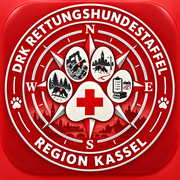

<!DOCTYPE html>
<html lang="de">
<head>
<meta charset="UTF-8">
<meta name="viewport" content="width=device-width, initial-scale=1, viewport-fit=cover">
<meta name="theme-color" content="#b51f2e">
<meta name="apple-mobile-web-app-capable" content="yes">
<meta name="mobile-web-app-capable" content="yes">
<meta name="apple-mobile-web-app-title" content="BARRY">
<meta name="apple-mobile-web-app-status-bar-style" content="default">
<title>BARRY</title>
<link rel="icon" type="image/png" sizes="32x32" href="./rhs-favicon-32.png">
<link rel="shortcut icon" href="./favicon.ico">
<link rel="apple-touch-icon" sizes="180x180" href="./rhs-apple-touch-icon.png">
<link rel="manifest" href="./manifest.webmanifest">
<style>
:root{
  /* Basis */
  --ink:#202428;
  --bg:#f5f6f7;
  --card:#ffffff;
  --line:#d9dde1;
  --muted:#434a51;      /* 2.23: dunkler – Hinweistext gut lesbar, nicht „gesperrt“-grau */
  --muted-soft:#4f575f;

  /* Primärakzent (Aktionen, Marke) */
  --accent:#b51f2e;
  --accent-ink:#7c1520;
  --soft:#f2e7e9;

  /* Themenfarben je Bereich – nur für Navigation/Wiedererkennung, nicht flächig */
  --t-start:#5b4636;      --t-start-soft:#efe9e3;
  --t-org:#3a4a5e;        --t-org-soft:#e8ecf0;
  --t-ausbildung:#3f5b4d; --t-ausbildung-soft:#e7ece9;
  --t-alltag:#6a5a1f;     --t-alltag-soft:#f1ecdd;
  --t-einsatz:#8a3a12;    --t-einsatz-soft:#f3e5da;
  --t-verwaltung:#4a4550; --t-verwaltung-soft:#eae8ec;

  --radius:10px;
  --shadow:0 1px 2px rgba(32,36,40,.06), 0 1px 1px rgba(32,36,40,.04);
  --font-ui:-apple-system,"Segoe UI",Roboto,"Helvetica Neue",Arial,sans-serif;
  --font-head:Georgia,"Times New Roman",serif;
}
*{box-sizing:border-box}
html,body{height:100%}
body{
  margin:0;background:var(--bg);color:var(--ink);
  font-family:var(--font-ui);font-size:15px;line-height:1.5;
  -webkit-font-smoothing:antialiased;
}
h1,h2,h3{font-family:var(--font-head);font-weight:600;margin:0 0 .3em}
h1{font-size:1.6rem}
h2{font-size:1.25rem}
h3{font-size:1.05rem}
p{margin:0 0 .8em}
a{color:var(--accent-ink)}
button{font-family:inherit;font-size:.95rem;cursor:pointer}
input,select,textarea{font-family:inherit;font-size:.95rem}
:focus-visible{outline:2px solid var(--accent);outline-offset:2px}

/* ---------- Layout ---------- */
#app{min-height:100vh;display:flex}

.sidebar{
  width:230px;flex:0 0 230px;background:var(--card);
  border-right:1px solid var(--line);
  display:flex;flex-direction:column;
  position:sticky;top:0;height:100vh;
}
.sidebar-head{padding:18px 18px 14px;border-bottom:1px solid var(--line)}
.sidebar-head .brand{font-family:var(--font-head);font-size:1.25rem;font-weight:600;letter-spacing:.2px}
.sidebar-head .brand small{display:block;font-family:var(--font-ui);font-size:.72rem;color:var(--muted);font-weight:400;margin-top:2px}

.nav{flex:1;overflow-y:auto;padding:10px 0}
.nav-group{margin-bottom:4px}
.nav-item{
  display:flex;align-items:center;gap:10px;
  padding:10px 18px;color:var(--ink);text-decoration:none;
  border-left:3px solid transparent;font-size:.93rem;
  background:none;border-top:none;border-bottom:none;border-right:none;
  width:100%;text-align:left;
}
.nav-item:hover{background:#f7f8f9}
.nav-item.active{border-left-color:var(--dot,var(--accent));background:var(--dot-soft,var(--soft));font-weight:600}
.nav-dot{width:9px;height:9px;border-radius:50%;background:var(--dot,var(--muted));flex:0 0 9px}

.sidebar-foot{padding:14px 18px;border-top:1px solid var(--line);font-size:.82rem;color:var(--muted)}
.sidebar-foot .who{color:var(--ink);font-weight:600;font-size:.88rem;margin-bottom:2px}
.sidebar-foot button.link{background:none;border:none;padding:0;color:var(--accent-ink);font-size:.82rem;text-decoration:underline}

.main{flex:1;min-width:0}
.topbar{
  display:none;
  align-items:center;justify-content:space-between;
  padding:12px 16px;background:var(--card);border-bottom:1px solid var(--line);
  position:sticky;top:0;z-index:5;
}
.topbar .brand{font-family:var(--font-head);font-size:1.1rem;font-weight:600}
.burger{background:none;border:1px solid var(--line);border-radius:8px;padding:6px 10px}

.content{padding:28px 34px;max-width:980px}
.content .eyebrow{color:var(--dot,var(--muted));font-size:.85rem;font-weight:600;margin-bottom:2px}
.content .lead{color:var(--muted);max-width:62ch}

/* ---------- Bausteine ---------- */
.card{background:var(--card);border:1px solid var(--line);border-radius:var(--radius);box-shadow:var(--shadow)}
.card-pad{padding:20px 22px}
.grid-2{display:grid;grid-template-columns:1fr 1fr;gap:16px}
.grid-3{display:grid;grid-template-columns:repeat(3,1fr);gap:16px}
.stack{display:flex;flex-direction:column;gap:16px}
.row{display:flex;gap:10px;align-items:center;flex-wrap:wrap}
.row input{min-width:0}
.spread{display:flex;align-items:center;justify-content:space-between;gap:10px;flex-wrap:wrap}

.field{display:flex;flex-direction:column;gap:5px;margin-bottom:14px}
.field label{font-size:.82rem;color:var(--muted);font-weight:600}
.field input,.field select,.field textarea{
  padding:9px 10px;border:1px solid var(--line);border-radius:8px;background:#fff;color:var(--ink);
}
.field input:disabled{background:#f2f3f4;color:var(--muted)}
.hint{font-size:.84rem;color:var(--muted-soft)}

.btn{
  display:inline-flex;align-items:center;gap:6px;
  padding:9px 16px;border-radius:8px;border:1px solid var(--line);
  background:#fff;color:var(--ink);font-weight:600;font-size:.9rem;
}
.btn:hover{background:#f7f8f9}
.btn-primary{background:var(--accent);border-color:var(--accent);color:#fff}
.btn-primary:hover{background:var(--accent-ink);border-color:var(--accent-ink)}
.btn-ghost{background:transparent;border-color:var(--line);color:var(--ink)}
.btn-ghost:hover{background:#f2f3f4}
.btn-danger{color:var(--accent-ink);border-color:var(--soft);background:var(--soft)}
.btn-sm{padding:8px 12px;font-size:.8rem;min-height:34px}

.quick-tiles{display:grid;grid-template-columns:repeat(auto-fill,minmax(96px,1fr));gap:8px;margin:14px 0 4px}
.quick-tile{display:flex;flex-direction:column;align-items:center;justify-content:center;gap:4px;padding:10px 6px;min-height:70px;border:1px solid var(--line);border-radius:14px;background:var(--card,#fff);font:inherit;font-size:.8rem;font-weight:600;color:inherit;cursor:pointer;text-align:center;line-height:1.2}
.quick-tile span{font-size:1.35rem}
.quick-tile:first-child{border-color:var(--accent,#b3202a)}
.chip{
  display:inline-flex;align-items:center;gap:6px;
  padding:4px 10px;border-radius:999px;background:var(--soft);color:var(--accent-ink);
  font-size:.78rem;font-weight:600;border:1px solid transparent;
}
.chip.muted{background:#eef0f1;color:var(--ink)}
/* 2.23: anklickbare Chips sehen nach Link aus, nicht nach „ausgegraut“ */
.chip[data-goto-verwaltung],.chip[data-goto-meinstand],.chip[data-goto-inline],.chip[data-goto-planung],.chip[data-goto-alltag-uebungen],.chip[data-goto-kurswuensche],.chip[data-goto-hausaufgaben]{background:#fff;color:var(--accent-ink);border-color:var(--accent-ink);cursor:pointer}
/* 2.23: Sprungziele – Platz für die feste Kopfleiste und kurze Markierung nach dem Sprung */
#content,.sprung-ziel{scroll-margin-top:76px}
.sprung-markiert{box-shadow:0 0 0 3px var(--accent) !important;transition:box-shadow .4s ease}
@media (max-width:640px){body{font-size:16px}.hint{font-size:.9rem}.chip{font-size:.85rem}}
.chip button{background:none;border:none;color:inherit;padding:0;margin-left:2px;font-size:.9em}
.chip-select{display:inline-flex;align-items:center;gap:6px;padding:7px 14px;border-radius:999px;border:1px solid var(--line);cursor:pointer;font-size:.85rem;margin:2px 6px 2px 0}
.chip-select.active{background:var(--soft);color:var(--accent-ink);border-color:var(--accent-ink)}
.chip-select input{margin:0}
.jumpnav{display:flex;flex-wrap:wrap;gap:6px;margin:10px 0 16px}
.jumpnav a.chip{text-decoration:none;cursor:pointer}
.card.clickable{cursor:pointer;transition:box-shadow .15s ease,transform .15s ease}
.card.clickable:hover{box-shadow:0 2px 10px rgba(0,0,0,.08);transform:translateY(-1px)}
.who-hint{font-size:.78rem;color:var(--muted)}

table{width:100%;border-collapse:collapse}
.table-scroll{overflow-x:auto;-webkit-overflow-scrolling:touch}
select,input,textarea{max-width:100%}
.field,.grid-2>*,.grid-3>*{min-width:0}
button.chip{min-height:34px;padding:6px 12px}
.modal-foot{flex-wrap:wrap;gap:8px}
.einsatz-werkzeuge{display:grid;grid-template-columns:repeat(auto-fit,minmax(140px,1fr));gap:8px;margin-bottom:14px}
.einsatz-werkzeuge .btn{min-height:48px;font-weight:600}
@media (max-width:640px){
  #content td{white-space:normal !important}
  #content td .chip{white-space:normal}
  .modal-foot .btn{flex:1 1 auto}
}
.table-scroll table{min-width:560px}
th,td{text-align:left;padding:9px 10px;border-bottom:1px solid var(--line);font-size:.88rem}
th{color:var(--muted);font-weight:600;font-size:.78rem;text-transform:none}
tr:last-child td{border-bottom:none}
tr.clickable:hover{background:#fafbfb;cursor:pointer}

.badge{display:inline-block;padding:2px 8px;border-radius:6px;font-size:.72rem;font-weight:700}
.badge.ok{background:#e7ece9;color:#2f4a3c}
.badge.warn{background:#f3ead9;color:#6a5a1f}
.badge.off{background:#eef0f1;color:var(--muted)}

.empty{padding:34px 20px;text-align:center;color:var(--muted)}
.empty h3{color:var(--ink)}

.modal-back{position:fixed;inset:0;background:rgba(32,36,40,.35);display:flex;align-items:flex-start;justify-content:center;padding:5vh 16px;z-index:50;overflow-y:auto}
.modal{background:#fff;border-radius:12px;max-width:560px;width:100%;box-shadow:0 12px 40px rgba(0,0,0,.2)}
.modal-head{padding:18px 22px;border-bottom:1px solid var(--line);display:flex;justify-content:space-between;align-items:center}
.modal-body{padding:20px 22px}
.modal-foot{padding:16px 22px;border-top:1px solid var(--line);display:flex;justify-content:flex-end;gap:10px}

.toast{position:fixed;bottom:20px;right:20px;background:var(--ink);color:#fff;padding:11px 18px;border-radius:8px;font-size:.88rem;box-shadow:0 6px 20px rgba(0,0,0,.2);z-index:100}

.login-wrap{min-height:100vh;width:100%;display:flex;align-items:center;justify-content:center;background:var(--bg);padding:20px}
.login-card{width:100%;max-width:380px}
.login-card .brand{text-align:center;margin-bottom:22px}
.login-card .brand h1{margin-bottom:2px}
.login-card .brand small{color:var(--muted)}

@media (max-width:860px){
  .sidebar{
    position:fixed;left:0;top:0;bottom:0;z-index:20;
    transform:translateX(-100%);transition:transform .2s ease;box-shadow:0 0 0 rgba(0,0,0,0);
  }
  .sidebar.open{transform:translateX(0);box-shadow:8px 0 24px rgba(0,0,0,.15)}
  .topbar{display:flex}
  .content{padding:20px 16px}
  .grid-2{grid-template-columns:1fr}
  .grid-3{grid-template-columns:repeat(3,1fr);gap:8px}
  .grid-3 .card-pad{padding:10px 8px}
  .grid-3 h2{font-size:1.3rem;margin:2px 0 0}
}
.start-kopf{display:flex;align-items:center;gap:14px}
.start-kopf h1{margin:0}
.start-icon{width:64px;height:64px;border-radius:50%;flex:0 0 auto;box-shadow:0 1px 3px rgba(0,0,0,.18)}
@media (max-width:560px){.start-icon{width:52px;height:52px}}
</style>
</head>
<body>
<div id="app"></div>
<div id="toast-root"></div>
<script>
/* Fallback, falls der Browserspeicher gesperrt ist (z. B. eingebettete Vorschau, privater Modus mit Sperre):
   BARRY startet dann mit einem flüchtigen Speicher statt mit einer leeren Seite. */
(function(){
  function ersatz(){ const m={}; return { getItem:k=>Object.prototype.hasOwnProperty.call(m,k)?m[k]:null, setItem:(k,v)=>{ m[k]=String(v); }, removeItem:k=>{ delete m[k]; }, clear:()=>{ Object.keys(m).forEach(k=>delete m[k]); }, key:i=>Object.keys(m)[i]??null, get length(){ return Object.keys(m).length; } }; }
  ['localStorage','sessionStorage'].forEach(name=>{
    let ok=false; try{ const st=window[name]; st.setItem('__barry_test__','1'); st.removeItem('__barry_test__'); ok=true; }catch(e){}
    if(!ok){ try{ Object.defineProperty(window, name, {value:ersatz(), configurable:true, writable:true}); }catch(e){} window.__barrySpeicherFluechtig = true; }
  });
  if(window.__barrySpeicherFluechtig) document.addEventListener('DOMContentLoaded', ()=>{ const d=document.createElement('div');
    d.textContent='Hinweis: In dieser Ansicht ist kein Browserspeicher verfügbar – Änderungen gehen beim Schließen verloren. Bitte BARRY über die Web-Adresse öffnen.';
    d.style.cssText='background:#fff3cd;color:#5c4400;font:600 .85rem system-ui,sans-serif;padding:6px 10px;text-align:center';
    document.body.insertBefore(d, document.body.firstChild); });
})();

/* ===== Gemeinsame Bibliothek der RH-App-Familie: rhs-exchange v3 ===== */
/* rhs-exchange.js — gemeinsames Austauschformat der RH-App-Familie, Version 3
 *
 * Läuft im Browser (window.RHS) und in Node (module.exports). Keine Abhängigkeiten.
 *
 * Aufgaben:
 *   RHS.normalize(obj)            -> v3-Paket aus: rhs-exchange v1/v2/v3,
 *                                     rhs-taktik-assistent-export (Fläche),
 *                                     rhs-mantrailing-assistent-export,
 *                                     rhs-truemmersuchassistent-export
 *   RHS.detect(obj)               -> Kennung des Eingabeformats oder null
 *   RHS.validate(pkg)             -> { ok, fehler[] }
 *   RHS.buildPackage(opts)        -> leeres v3-Paket mit Kopf
 *   RHS.newEntry(opts)            -> Eintrag nach Datenmodell (records-Element type 'entry')
 *   RHS.merge(localRecords, pkg)  -> { records, neu, aktualisiert, unveraendert, konflikte[] }
 *   RHS.toGpx(entry)              -> GPX 1.1 (Tracks aus Nutzlast/Anhängen)
 *   RHS.toCsvRows(entries)        -> Zeilen für CSV/Excel
 *   RHS.checksum(records)         -> Promise<string> ("sha256:…"), nur wo SubtleCrypto/Node-crypto
 *
 * Regeln (siehe Dokument "Trainingstagebuch-Datenmodell und RH-Protokoll-Schema"):
 *   - Unbekannte Felder werden nie verworfen: sie landen unter entry.roh bzw. bleiben am Record.
 *   - Versteckpersonen/Spurleger nur als Kürzel; volle Namen werden beim Normalisieren gekürzt.
 *   - Ids bleiben erhalten; gleiche Id = derselbe Datensatz.
 */
(function (root, factory) {
  if (typeof module === 'object' && module.exports) module.exports = factory();
  else root.RHS = factory();
})(typeof self !== 'undefined' ? self : this, function () {
  'use strict';

  const EXCHANGE_FORMAT = 'rhs-exchange';
  const SCHEMA = 3;
  const SPARTEN = ['flaeche', 'truemmer', 'mantrailing', 'gehorsam', 'anzeigeverhalten',
    'gewandtheit', 'physio', 'alltag', 'alltagstricks', 'bindung', 'modul11',
    'leiche', 'wasser', 'lawine', 'begleithund', 'igp', 'agility', 'trickdog', 'sonstiges'];
  const TYPEN = ['training', 'pruefung', 'einsatz', 'vorfuehrung', 'sonstiges'];
  const ERGEBNIS = ['erfolgreich', 'teilweise', 'nicht_erfolgreich', 'abgebrochen', 'offen'];
  const ANZEIGEARTEN = {
    flaeche: ['verbeller', 'bringsel', 'freiverweiser', 'rueckverweiser'],
    truemmer: ['verbeller', 'sitzen_fundstelle'],
    mantrailing: ['anspringen', 'anstupsen', 'sitz_platz', 'verbellen']
  };
  // nur Verbeller ist in Trümmern prüfungsberechtigt (Festlegung 30.09.2026)
  const ANZEIGE_PRUEFUNGSBERECHTIGT = { truemmer: ['verbeller'] };

  /* ---------- Hilfen ---------- */
  const isObj = v => v && typeof v === 'object' && !Array.isArray(v);
  const nowIso = () => new Date().toISOString();
  const uid = (p) => (p || 'id') + '-' + Date.now().toString(36) + '-' + Math.random().toString(36).slice(2, 10);
  const clone = v => JSON.parse(JSON.stringify(v));
  const num = v => { if (v == null || v === '') return null; const n = Number(typeof v === 'string' ? v.replace(',', '.') : v); return Number.isFinite(n) ? n : null; };
  const str = v => (v == null ? '' : String(v));
  const kuerzel = v => {
    // "Anna Müller" -> "AM", "AM" -> "AM", "" -> ""
    const s = str(v).trim(); if (!s) return '';
    if (/^[A-ZÄÖÜ]{1,4}$/.test(s)) return s;
    const parts = s.split(/\s+/).filter(Boolean);
    if (parts.length === 1) return parts[0].slice(0, 2).toUpperCase();
    return parts.map(p => p[0].toUpperCase()).join('').slice(0, 4);
  };
  const normAnzeige = v => {
    const s = str(v).toLowerCase();
    if (!s) return '';
    if (/verbell|bell/.test(s)) return s.includes('mantr') ? 'verbellen' : 'verbeller';
    if (/bringsel|bringsler/.test(s)) return 'bringsel';
    if (/frei/.test(s)) return 'freiverweiser';
    if (/rück|rueck/.test(s)) return 'rueckverweiser';
    if (/spring/.test(s)) return 'anspringen';
    if (/stups/.test(s)) return 'anstupsen';
    if (/sitz|platz/.test(s)) return s.includes('fund') ? 'sitzen_fundstelle' : 'sitz_platz';
    return s;
  };
  const normSparte = v => {
    const s = str(v).toLowerCase();
    if (/fl(ä|ae|a)ch/.test(s)) return 'flaeche';
    if (/tr(ü|ue|u)mm/.test(s)) return 'truemmer';
    if (/mantrail|trail/.test(s)) return 'mantrailing';
    if (/gehorsam|unterordnung/.test(s)) return 'gehorsam';
    if (/anzeige/.test(s)) return 'anzeigeverhalten';
    if (/gewandt|ger[äa]t/.test(s)) return 'gewandtheit';
    if (/physio|fitness/.test(s)) return 'physio';
    if (/tricks/.test(s)) return 'alltagstricks';
    if (/alltag/.test(s)) return 'alltag';
    if (/bindung|kooperation/.test(s)) return 'bindung';
    if (/1\.1|grundfertig/.test(s)) return 'modul11';
    return SPARTEN.includes(s) ? s : (s ? 'sonstiges' : '');
  };
  const trackPoints = (arr) => (Array.isArray(arr) ? arr : []).map(p => {
    if (Array.isArray(p)) return { lat: num(p[0]), lon: num(p[1]), zeit: p[2] || null };
    if (!isObj(p)) return null;
    return { lat: num(p.lat ?? p.latitude), lon: num(p.lon ?? p.lng ?? p.longitude), zeit: p.zeit || p.time || p.t || p.ts || null, hoehe: num(p.ele ?? p.alt ?? p.hoehe) };
  }).filter(p => p && p.lat != null && p.lon != null);

  /* ---------- Kopf / Bausteine ---------- */
  function buildPackage(opts) {
    opts = opts || {};
    return {
      rhsFormat: EXCHANGE_FORMAT,
      schemaVersion: SCHEMA,
      packageType: opts.packageType || 'bundle',   // team | training | einsatz | pruefung | bundle
      packageId: opts.packageId || uid('pkg'),
      createdAt: opts.createdAt || nowIso(),
      source: Object.assign({ app: 'unbekannt', appVersion: '', instanceId: '' }, opts.source || {}),
      personen: opts.personen || [],
      hunde: opts.hunde || [],
      teams: opts.teams || [],
      records: opts.records || []
    };
  }

  function newEntry(o) {
    o = o || {};
    const sparte = normSparte(o.sparte) || 'sonstiges';
    return {
      type: 'entry',
      id: o.id || uid('e'),
      data: {
        teamId: o.teamId || '',
        typ: TYPEN.includes(o.typ) ? o.typ : 'training',
        sparte,
        beginn: o.beginn || nowIso(),
        ende: o.ende || null,
        ort: o.ort || { name: '', lat: null, lon: null, gelaendeart: '' },
        wetter: o.wetter || {},
        ausbilderKuerzel: o.ausbilderKuerzel || '',
        helfer: (o.helfer || []).map(h => typeof h === 'string' ? { kuerzel: kuerzel(h) } : (function (x) { const o = Object.assign({}, x, { kuerzel: kuerzel(x.kuerzel || x.name) }); delete o.name; return o; })(h)),
        ziel: o.ziel || '',
        nutzlast: o.nutzlast || {},
        bewertung: Object.assign({ ergebnis: 'offen', schwierigkeit: null, hundeleistung: null, fuehrerleistung: null,
          selbststaendigkeit: null, zusammenarbeit: null, zusatzskalen: [], steigerungsstufe: '', naechsterSchritt: '', freitext: '' }, o.bewertung || {}),
        hundZustand: o.hundZustand || { vorher: '', nachher: '', auffaelligkeiten: '' },
        notizen: o.notizen || '',
        anhaenge: o.anhaenge || [],
        kmHinRueck: num(o.kmHinRueck),
        quelle: Object.assign({ app: '', appVersion: '', schemaVersion: SCHEMA, importiertAm: null }, o.quelle || {}),
        roh: o.roh || undefined
      },
      fieldMeta: o.fieldMeta || { revision: 1, updatedAt: nowIso() }
    };
  }

  /* ---------- Erkennung ---------- */
  function detect(obj) {
    if (!isObj(obj)) return null;
    if (obj.rhsFormat === EXCHANGE_FORMAT) return 'rhs-exchange-v' + (Number(obj.schemaVersion) || 1);
    if (obj.bridgeFormat === 'rhs-taktik-assistent-export') return 'flaeche-bridge';
    if (obj.bridgeFormat === 'rhs-mantrailing-assistent-export') return 'mantrailing-bridge';
    if (obj.bridgeFormat === 'rhs-truemmersuchassistent-export' || /^rhs-truemmersuchassistent-back/.test(str(obj.format))) return 'truemmer-bridge';
    if (/^rhs-flaechensuchassistent-eval/.test(str(obj.evaluationFormat))) return 'flaeche-eval';
    if (obj.backupFormat === 'rhs-trainingstagebuch' && Array.isArray(obj.entries)) return 'tagebuch-rha';
    if (obj.format === 'rhs-mantrailing-tagebuch' && Array.isArray(obj.entries)) return 'tagebuch-mt';
    if (obj.format === 'rhs-mantrailing-training-backup' && isObj(obj.state)) return 'tagebuch-mt';
    if (/^rhs-(mantrailing|truemmer\w*|flaeche\w*)-protokolle$/.test(str(obj.format)) && Array.isArray(obj.records)) return 'protokolle';
    return null;
  }

  /* ---------- Normalisierung ---------- */
  function normalize(obj) {
    const kind = detect(obj);
    if (!kind) throw new Error('Kein bekanntes RHS-Format (rhs-exchange v1–3 oder Assistenten-Export).');
    switch (kind) {
      case 'rhs-exchange-v3': return fromV3(obj);
      case 'rhs-exchange-v2': return fromV2(obj);
      case 'rhs-exchange-v1': return fromV1(obj);
      case 'flaeche-bridge': return fromFlaeche(obj);
      case 'mantrailing-bridge': return fromMantrailing(obj);
      case 'truemmer-bridge': return fromTruemmer(obj);
      case 'protokolle': return fromProtokolle(obj);
      case 'flaeche-eval': return fromFlaecheEval(obj);
      case 'tagebuch-rha': return fromTagebuchRHA(obj);
      case 'tagebuch-mt': return fromTagebuchMT(obj);
    }
  }

  function fromV3(p) {
    const out = buildPackage({ packageType: p.packageType, packageId: p.packageId, createdAt: p.createdAt, source: p.source,
      personen: p.personen, hunde: p.hunde, teams: p.teams, records: p.records });
    // Kürzel-Regel auch auf fremde v3-Pakete anwenden
    out.records.forEach(r => { if (r.type === 'entry' && r.data) scrubNames(r.data); });
    return out;
  }

  // v2: Team-Stammdaten als records[{type:'team', id, data{handler,dogName,dogBirthDate,dogBreed,disciplines,indicationType}, fieldMeta}]
  function fromV2(p) {
    const out = buildPackage({ packageType: p.packageType || 'team', packageId: p.packageId, createdAt: p.createdAt, source: p.source });
    (p.records || []).forEach(r => {
      if (r.type === 'team') {
        out.records.push(clone(r));                 // unverändert durchreichen (BARRY/Tagebuch lesen das weiter)
        addTeamFromRecord(out, r, p.source);
      } else {
        out.records.push(clone(r));
      }
    });
    return out;
  }

  // v1: payload.team.fields{handler,dog|dogName,geburtsdatum|dogBirthDate,rasseFrei|dogBreed}{value,revision,updatedAt}
  function fromV1(p) {
    const t = p.payload && p.payload.team;
    if (!t) throw new Error('rhs-exchange v1 ohne Team-Stammdaten.');
    const f = t.fields || {};
    const v = (...ks) => { for (const k of ks) if (f[k] && f[k].value !== undefined) return f[k].value; return ''; };
    const mm = (...ks) => { for (const k of ks) if (f[k]) return { revision: Number(f[k].revision || 0), updatedAt: f[k].updatedAt || '' }; return { revision: 0 }; };
    const rec = { type: 'team', id: t.teamId || uid('team'),
      data: { handler: v('handler'), dogName: v('dog', 'dogName'), dogBirthDate: v('geburtsdatum', 'dogBirthDate'), dogBreed: v('rasseFrei', 'dogBreed'),
        disciplines: v('disciplines') || [], indicationType: v('indicationType') },
      fieldMeta: { handler: mm('handler'), dogName: mm('dog', 'dogName'), dogBirthDate: mm('geburtsdatum', 'dogBirthDate'), dogBreed: mm('rasseFrei', 'dogBreed') } };
    const out = buildPackage({ packageType: 'team', packageId: p.packageId, createdAt: p.createdAt, source: { app: p.sourceApp || 'legacy-v1' }, records: [rec] });
    addTeamFromRecord(out, rec, out.source);
    return out;
  }

  function addTeamFromRecord(out, r, source) {
    const d = r.data || {};
    const personId = 'p-' + r.id, hundId = 'h-' + r.id;
    if (!out.personen.some(x => x.id === personId)) out.personen.push({ id: personId, name: str(d.handler), rolle: ['hundefuehrer'] });
    if (!out.hunde.some(x => x.id === hundId)) out.hunde.push({ id: hundId, rufname: str(d.dogName), geburtsdatum: str(d.dogBirthDate) || null, rasse: str(d.dogBreed),
      sparten: (Array.isArray(d.disciplines) ? d.disciplines : str(d.disciplines).split(/[,;/]+/)).map(normSparte).filter(Boolean) });
    const sparten = out.hunde.find(x => x.id === hundId).sparten;
    (sparten.length ? sparten : ['sonstiges']).forEach(sp => {
      const id = r.id + ':' + sp;                 // ein Team je Sparte
      if (!out.teams.some(x => x.id === id)) out.teams.push({ id, personId, hundId, sparte: sp, status: 'in_ausbildung',
        anzeigeart: normAnzeige(d.indicationType), quelleTeamId: r.id, quelleApp: source && source.app });
    });
  }

  /* ---------- Assistenten-Brücken ---------- */
  function fromFlaeche(b) {
    const out = buildPackage({ packageType: b.mode === 'einsatz' ? 'einsatz' : 'training',
      packageId: b.exportId, createdAt: b.exportedAt, source: { app: 'rh-flaechensuchassistent', appVersion: str(b.appVersion || '') } });
    const teamId = b.rhsExchange && b.rhsExchange.teamId ? b.rhsExchange.teamId + ':flaeche' : '';
    const g = b.gebiet || {}, w = b.wetter || {}, a = b.auftrag || {};
    const e = newEntry({
      id: b.exportId ? 'fl-' + str(b.exportId) : undefined,
      teamId, typ: b.mode === 'pruefung' ? 'pruefung' : (b.mode === 'einsatz' ? 'einsatz' : 'training'), sparte: 'flaeche',
      beginn: w.searchTime || b.exportedAt, ort: { name: str(g.placeName), lat: num(g.latitude), lon: num(g.longitude), gelaendeart: str(g.terrain) },
      wetter: { tempC: num(w.temperature), luftfeuchteProzent: num(w.humidity), windRichtungGrad: num(w.windDirectionDeg), windKategorie: str(w.windSpeedCategory),
        niederschlag: str(w.precipitation), sonne: str(w.sun), boden: str(w.ground), bodenwindBeobachtet: str(w.windObserved), bodenwindRichtung: str(w.groundWindDirection) },
      ziel: str(a.incidentWhat),
      nutzlast: {
        gebiet: g.polygon || b.polygon || null, gebietGroesse: str(g.areaSize), bewuchsdichte: str(g.vegetation), wegedichte: str(g.pathDensity),
        hangausrichtung: str(g.slopeAspect), wegenetz: g.wegenetz || null, laufschema: b.taktik && b.taktik.laufschema || str(b.laufschema || ''),
        trackHund: trackPoints(b.dogTrack || b.tracks && b.tracks.dog), trackFuehrer: trackPoints(b.handlerTrack || b.tracks && b.tracks.handler),
        versteckpersonen: (b.versteckpersonen || b.subjects || []).map(vp => ({ kuerzel: kuerzel(vp.kuerzel || vp.name), gefunden: !!vp.found || !!vp.gefunden,
          anzeige: { art: normAnzeige(vp.indication || vp.anzeige), qualitaet: num(vp.quality) }, position: vp.position || null })),
        personenzahl: num(b.personenzahl), pruefungsuhr: b.pruefung || null,
        auftrag: a, bewertungRoh: b.bewertung || b.evaluation || null
      },
      bewertung: { ergebnis: b.result && b.result.found ? 'erfolgreich' : 'offen', freitext: str(b.bewertung && b.bewertung.text) },
      quelle: { app: 'rh-flaechensuchassistent', schemaVersion: SCHEMA, importiertAm: nowIso(), brueckenFormat: 'rhs-taktik-assistent-export v' + (b.bridgeVersion || 1) },
      roh: b
    });
    out.records.push(e);
    return out;
  }

  function fromMantrailing(b) {
    const S = b.state || {};
    const out = buildPackage({ packageType: S.mode === 'Einsatz' ? 'einsatz' : 'training', createdAt: b.createdAt, source: { app: 'rh-mantrailing-assistent', appVersion: str(b.appVersion || '') } });
    const e = newEntry({
      id: 'mt-' + str(S.createdAt || b.createdAt).replace(/\W/g, ''),
      typ: S.mode === 'Einsatz' ? 'einsatz' : (S.mode === 'Prüfung' ? 'pruefung' : 'training'), sparte: 'mantrailing',
      beginn: S.searchStartAt || S.createdAt || b.createdAt,
      ort: { name: str(S.lkp || S.place), lat: null, lon: null },
      wetter: { tempC: num(S.wxTemp), luftfeuchteProzent: num(S.wxHumidity), windRichtung: str(S.wxWindDir), windKmh: num(S.wxWind), boeenKmh: num(S.wxGust), niederschlag: str(S.wxPrecip) },
      helfer: S.layer ? [{ kuerzel: kuerzel(S.layer), rolle: 'spurleger' }] : [],
      nutzlast: {
        trailart: { hot: /hot/i.test(str(S.saType)), cold: /cold/i.test(str(S.saType)), blind: S.refMode === 'blind', doubleBlind: S.refMode === 'double' },
        ansatzart: str(S.saType), ansatzbereich: { artGroesse: str(S.plsArea), moeglicheAbgaenge: str(S.plsExits) },
        geruchsartikel: (S.articles || []).map(x => typeof x === 'string' ? { art: x } : x),
        trailAlterMin: num(S.trailAgeMin) ?? (num(S.trailAgeHours) != null ? num(S.trailAgeHours) * 60 : null),
        gelegtAm: S.laid || null,
        trackHund: trackPoints(S.track), trackSpurleger: trackPoints(S.referenceTrack), zeitTrack: S.timeTrack || [],
        gpsEreignisse: (S.events || []).map(ev => ({ zeit: ev.t || ev.time || ev.zeit || null, lat: num(ev.lat), lon: num(ev.lon), typ: str(ev.type || ev.typ || ev.label), text: str(ev.note || ev.text) })),
        startverhalten: str(S.startQ), plsTyp: str(S.plsType), plsErgebnis: str(S.plsResult), plsSicherheit: num(S.plsConfidence),
        kreuzungsentscheidung: { sicherheit: num(S.crossConfidence), verhalten: str(S.crossBehavior) },
        negativAusschluss: { arbeit: str(S.negativeWork), kontext: str(S.negativeContext) },
        personendifferenzierung: str(S.personDiff),
        endpool: { erkennbar: str(S.endPool), ausarbeitung: str(S.endPoolDog), auffindesituation: str(S.findSituation) },
        gefunden: /gefunden|Trail bis/i.test(str(S.result)), anzeige: { art: normAnzeige(S.indication), qualitaet: null },
        funde: S.finds || []
      },
      bewertung: { ergebnis: /gefunden|Trail bis/i.test(str(S.result)) ? 'erfolgreich' : (/abgebrochen/i.test(str(S.result)) ? 'abgebrochen' : (/Negativ/i.test(str(S.result)) ? 'erfolgreich' : 'offen')),
        zusatzskalen: [['progStart', 'Start'], ['progSearch', 'Sucharbeit'], ['progFind', 'Fund']].filter(([k]) => S[k] != null && S[k] !== '').map(([k, l]) => ({ schluessel: k, wert: num(S[k]), beschriftung: l })),
        freitext: str(S.notes) },
      quelle: { app: 'rh-mantrailing-assistent', schemaVersion: SCHEMA, importiertAm: nowIso(), brueckenFormat: 'rhs-mantrailing-assistent-export v' + (b.schemaVersion || 1) },
      roh: b
    });
    out.records.push(e);
    teamAusText(out, e, 'mantrailing', S.rhsExchange && S.rhsExchange.team);
    return out;
  }

  function fromTruemmer(b) {
    const S = b.state || {}, P = b.protocol || {}, ch = Object.assign({}, S.chips || {}, P.chips || {});
    const modus = str(S.mode || P.mode);
    const out = buildPackage({ packageType: /einsatz/i.test(modus) ? 'einsatz' : 'training', createdAt: b.createdAt, source: { app: 'rh-truemmersuchassistent', appVersion: str(b.appVersion || '') } });
    const led = v => { const m = str(v).match(/^\s*([1-5])/); return m ? Number(m[1]) : null; };   // "3 – wechselhaft" -> 3
    const beginn = P.startAt || S.searchStartAt || S.createdAt || b.createdAt;
    const kpi = P.kpi || {}; const dauerS = num(kpi.dur);
    const finds = (P.finds && P.finds.length ? P.finds : S.finds || []);
    const marks = S.rubbleMarksGeo && (S.rubbleMarksGeo.actual || []).length ? S.rubbleMarksGeo : (S.rubbleMarks || {});
    const prog = P.progress || {}; const zs = [];
    [['start', 'Start', prog.start || S.progStart], ['search', 'Sucharbeit', prog.search], ['find', 'Fund/Anzeige', prog.find], ['micro', 'Mikrolokalisierung', P.microNum]].forEach(([k, l, v]) => { const n = led(v) ?? num(v); if (n != null && n >= 1 && n <= 5) zs.push({ schluessel: k, wert: n, beschriftung: l }); });
    const teamText = str(S.team || P.team); const tx = (S.rhsExchange && S.rhsExchange.team) || {};
    const e = newEntry({
      id: P.id ? 'tr-' + P.id : 'tr-' + str(S.createdAt).replace(/\W/g, ''), typ: /einsatz/i.test(modus) ? 'einsatz' : /pr[üu]f/i.test(modus) ? 'pruefung' : 'training', sparte: 'truemmer',
      beginn, ende: dauerS ? new Date(Date.parse(beginn) + dauerS * 1000).toISOString() : (kpi.end || null),
      ort: { name: str(S.place || P.place), lat: num(S.weatherLat), lon: num(S.weatherLon) },
      wetter: { tempC: num(S.wxTemp ?? (P.weather || {}).temp), luftfeuchteProzent: num(S.wxHumidity ?? (P.weather || {}).hum), windRichtungGrad: num(S.wxWindDir ?? (P.weather || {}).windDir), windKmh: num(S.wxWind ?? (P.weather || {}).wind), boeenKmh: num(S.wxGust ?? (P.weather || {}).gust), niederschlag: str(S.wxPrecip ?? (P.weather || {}).precip), wetterCode: num(S.wxCode), sonne: str(S.sunState || (P.tips || {}).sunState), tagesphase: str(S.dayPhase || (P.tips || {}).dayPhase), luftbewegung: str(S.airObs || (P.tips || {}).airObs), abgerufenAm: S.weatherAt || null },
      nutzlast: {
        teamText, personName: str(tx.handler), hundName: str(tx.dogName),
        truemmerart: ch.structure || [], gefahren: ch.hazards || [], suchphase: ch.pattern || [], geruchsaustritt: ch.scent || [], sicherheitsCheckliste: ch.safetyCheck || [], geruchsweg: ch.scentPath || [],
        sicherheitNotiz: str(P.safety), auftrag: str(P.brief), sektorenText: str(P.sectorsText), geruchsNotiz: str(P.scentNotes), sektoren: (P.sectors && P.sectors.length ? P.sectors : S.sectorList || []).map(x => typeof x === 'string' ? { name: x } : x),
        gebiet: S.searchAreaPolygon || null,
        vpZeitImVersteckH: str(S.vpHours || (P.tips || {}).vpHours), suchmodus: str(S.searchMode || (P.ratings || {}).searchMode), selbststaendig: str(S.independent || (P.ratings || {}).independent), mikrolokalisierung: str(S.micro || (P.ratings || {}).micro), sichtkontakt: str((P.ratings || {}).visualContact), bewegung: str((P.ratings || {}).movement), verbellen: str((P.ratings || {}).bark),
        trackHund: trackPoints(S.dogTrackGeo && S.dogTrackGeo.length ? S.dogTrackGeo : S.track), zeitTrack: S.timeTrack || [], trackPunkte: num(kpi.pts),
        gpsEreignisse: (S.events && S.events.length ? S.events : P.events || []).map(ev => ({ zeit: ev.at || ev.t || null, lat: num(ev.lat), lon: num(ev.lon), typ: str(ev.type), text: str(ev.note) })),
        versteckpersonen: finds.map((f, i) => ({ kuerzel: kuerzel(f.kuerzel || f.name || ('VP' + (i + 1))), gefunden: /gefunden/i.test(str(f.result)) || f.found === true, ergebnisText: str(f.result), markierung: str(f.marking), sektor: str(f.sector), quelle: str(f.source), zweithund: str(f.secondDog), zeit: f.at || null,
          anzeige: { art: /sitz/i.test(str(f.bark)) ? 'sitzen_fundstelle' : 'verbeller', qualitaet: null, pruefungsberechtigt: !/sitz/i.test(str(f.bark)), verbellenText: str(f.bark) },
          position: f.lat != null ? { lat: num(f.lat), lon: num(f.lon), genauigkeitM: num(f.acc) } : null, positionen: { hfVermutung: f.estimate || null, hundTatsaechlich: f.dogActual || null, vpTatsaechlich: f.actual || null }, verschuettungTiefe: str(f.depth), notiz: str(f.note) })),
        fundlagenGesamt: { hfVermutung: marks.estimate || [], hundTatsaechlich: marks.dogActual || [], vpTatsaechlich: marks.actual || [] },
        kennzahlen: { dauerS, zeitBisErstemFundS: num(kpi.tFirst), funde: num(kpi.finds), vp: num(kpi.vp), fehlanzeigen: num(kpi.fehl), sektorenNegativ: num(kpi.sektNeg), sektorenGesamt: num(kpi.sektAll) },
        analyse: P.analysis || null, protokollFelder: Object.assign({}, S.proto || {}, P.proto || {}), pruefung: P.exam || null,
        skizze: S.rubbleDrawing && S.rubbleDrawing.length ? { art: 'skizze', format: 'strokes', daten: S.rubbleDrawing, breiteM: num(S.mapWidthM) } : null,
        ruhephasen: (S.events || []).filter(ev => /ruhe/i.test(str(ev.type)))
      },
      bewertung: { ergebnis: finds.some(f => /gefunden/i.test(str(f.result))) ? 'erfolgreich' : /abgebrochen/i.test(str((P.analysis || {}).findResult)) ? 'abgebrochen' : 'offen', hundeleistung: num(P.ratingNum), zusatzskalen: zs,
        naechsterSchritt: str((P.debrief || {}).next), freitext: [str((P.debrief || {}).good) && 'Gut: ' + P.debrief.good, str((P.debrief || {}).debrief), str((P.proto || S.proto || {}).rating) && 'Gesamteindruck: ' + (P.proto || S.proto).rating, str((P.proto || S.proto || {}).load) && 'Belastung: ' + (P.proto || S.proto).load].filter(Boolean).join('\n') },
      anhaenge: (S.photos && S.photos.length ? S.photos : P.photos || []).map(ph => ({ id: ph.id || uid('a'), art: 'foto', format: 'jpg', daten: ph.data || null, aufnahmeort: ph.pos || (ph.lat != null ? { lat: num(ph.lat), lon: num(ph.lon) } : null), notiz: str(ph.note) })),
      quelle: { app: 'rh-truemmersuchassistent', appVersion: str(b.appVersion || ''), schemaVersion: SCHEMA, importiertAm: nowIso(), brueckenFormat: str(b.bridgeFormat || b.format) + ' v' + (b.schemaVersion || b.version || 1) },
      roh: b, fieldMeta: { revision: 1, updatedAt: P.savedAt || S.updatedAt || nowIso() }
    });
    out.records.push(e);
    teamAusText(out, e, 'truemmer', tx);
    return out;
  }

  // Auswertungsdatei des Flächensuchassistenten (nur Bewertung, keine Suchdaten)
  function fromFlaecheEval(b) {
    const out = buildPackage({ packageType: b.mode === 'einsatz' ? 'einsatz' : 'training', createdAt: b.evaluatedAt, source: { app: 'rh-flaechensuchassistent', appVersion: str(b.appVersion || '') } });
    const zs = []; const lab = { evalHandlerBriefing: 'Einweisung', evalHandlerTactics: 'Taktik', evalHandlerCoverage: 'Abdeckung (HF)', evalHandlerDogReading: 'Hund lesen', evalHandlerCommunication: 'Kommunikation', evalHandlerSafety: 'Sicherheit', evalHandlerInquiry: 'Erkundung', evalHandlerReport: 'Meldung', evalDogIndependence: 'Selbstständigkeit', evalDogWindUse: 'Windnutzung', evalDogCoverage: 'Abdeckung (Hund)', evalDogMotivation: 'Motivation', evalDogManageability: 'Führbarkeit', evalDogIndication: 'Anzeige', evalDogPersonBehavior: 'Verhalten an der Person', evalDogEndurance: 'Ausdauer' };
    Object.entries(Object.assign({}, (b.handler || {}).ratings || {}, (b.dog || {}).ratings || {})).forEach(([k, v]) => { const n = num(v); if (n != null) zs.push({ schluessel: k, wert: n, beschriftung: lab[k] || k }); });
    const r = b.result || {};
    const e = newEntry({ id: 'fl-' + str(b.exportId) + '-auswertung', typ: b.mode === 'einsatz' ? 'einsatz' : b.mode === 'pruefung' ? 'pruefung' : 'training', sparte: 'flaeche', beginn: b.evaluatedAt,
      nutzlast: { nurAuswertung: true, exportId: str(b.exportId), personenGeplant: num(r.plannedPersons), fundeDokumentiert: num(r.documentedFinds), ergebnisText: str(r.outcomeLabel), einflussfaktoren: b.factors || [], planNutzung: (b.planUse || {}).label || null, bewerterRolle: str(b.evaluatorRole) },
      bewertung: { ergebnis: r.outcome === 'success' ? 'erfolgreich' : r.outcome === 'partial' ? 'teilweise' : r.outcome === 'fail' ? 'nicht_erfolgreich' : 'offen', fuehrerleistung: (b.handler || {}).average != null ? Math.round(b.handler.average) : null, hundeleistung: (b.dog || {}).average != null ? Math.round(b.dog.average) : null, zusatzskalen: zs, naechsterSchritt: str(b.nextFocus), freitext: [str(b.strengths) && 'Stärken: ' + b.strengths, str(b.notes)].filter(Boolean).join('\n') },
      quelle: { app: 'rh-flaechensuchassistent', schemaVersion: SCHEMA, importiertAm: nowIso(), brueckenFormat: str(b.evaluationFormat) + ' v' + (b.evaluationVersion || 1) }, roh: b, fieldMeta: { revision: 1, updatedAt: b.evaluatedAt } });
    out.records.push(e); return out;
  }

  // Person/Hund/Team aus Freitext "Name/Hund" oder rhsExchange.team ableiten (Standalone-Import)
  function teamAusText(out, e, sparte, tx) {
    const n = e.data.nutzlast; let pn = str(tx && tx.handler) || n.personName || '', hn = str(tx && tx.dogName) || n.hundName || '';
    if (!hn && n.teamText) { const tp = n.teamText.split(/\s*[\/|·]\s*/); if (tp.length > 1) { pn = pn || tp[0]; hn = tp.slice(1).join(' / '); } else hn = tp[0]; }
    if (!hn) return;
    const pid = 'p-' + (kuerzel(pn || 'HF') || 'hf').toLowerCase(), hid = 'h-' + hn.toLowerCase().replace(/\W+/g, '-');
    if (!out.personen.some(x => x.id === pid)) out.personen.push({ id: pid, name: pn, rolle: ['hundefuehrer'] });
    if (!out.hunde.some(x => x.id === hid)) out.hunde.push({ id: hid, rufname: hn, geburtsdatum: str(tx && tx.dogBirthDate) || null, rasse: str(tx && tx.dogBreed), sparten: [sparte] });
    const tid = pid + ':' + hid + ':' + sparte; if (!out.teams.some(x => x.id === tid)) out.teams.push({ id: tid, personId: pid, hundId: hid, sparte, status: 'in_ausbildung', anzeigeart: normAnzeige(tx && tx.indicationType) });
    e.data.teamId = tid; n.personName = pn; n.hundName = hn;
  }

  // Protokoll-Sicherung der Assistenten („Protokolle sichern (JSON)“): format 'rhs-<sparte>-protokolle', records[] je Vorgang
  function fromProtokolle(b) {
    const sparte = normSparte(str(b.format).replace(/^rhs-/, '').replace(/-protokolle$/, ''));
    const app = 'rh-' + (sparte === 'mantrailing' ? 'mantrailing-assistent' : sparte === 'truemmer' ? 'truemmersuchassistent' : 'flaechensuchassistent');
    const out = buildPackage({ packageType: 'training', createdAt: b.exportedAt, source: { app, appVersion: str(b.appVersion || '') } });
    const skala = v => { const n = num(v); return n != null && n >= 1 && n <= 5 ? n : null; };
    (b.records || []).forEach(r => {
      const beginn = r.date ? new Date(r.date).toISOString() : (r.savedAt || b.exportedAt);
      const dauerS = num(r.durationSec);
      const zs = [];
      [['progStart', 'Start'], ['progSearch', 'Sucharbeit'], ['progFind', 'Fund'], ['crossConf', 'Kreuzungssicherheit'], ['plsConf', 'Ansatzsicherheit'], ['drive', 'Finderwille'], ['focus', 'Konzentration'], ['load', 'Belastbarkeit'], ['handling', 'Handling HF'], ['independent', 'Selbstständigkeit']]
        .forEach(([k, l]) => { const v = skala(r[k]); if (v != null) zs.push({ schluessel: k, wert: v, beschriftung: l }); });
      const res = str(r.result);
      const erg = /gefunden|Trail bis|Negativ korrekt|erfolg/i.test(res) ? 'erfolgreich' : /abgebrochen/i.test(res) ? 'abgebrochen' : /nicht gefunden|ohne Ergebnis/i.test(res) ? 'nicht_erfolgreich' : /teil/i.test(res) ? 'teilweise' : 'offen';
      const e = newEntry({
        id: r.id, typ: /einsatz/i.test(str(r.mode)) ? 'einsatz' : /prüf|pruef/i.test(str(r.mode)) ? 'pruefung' : 'training', sparte,
        beginn, ende: dauerS ? new Date(Date.parse(beginn) + dauerS * 1000).toISOString() : null,
        ort: { name: str(r.place || r.lkp || r.startEnv), lat: null, lon: null },
        wetter: { tempC: num(r.temp), windKmh: num(r.wind), windRichtung: isNaN(Number(r.wind)) ? str(r.wind) : '', niederschlag: str(r.precip) },
        helfer: r.layer ? [{ kuerzel: kuerzel(r.layer), rolle: 'spurleger' }] : [],
        nutzlast: {
          teamText: str(r.team),
          trailAlterMin: num(r.trailAgeH) != null ? Math.round(num(r.trailAgeH) * 60) : null, gelegtAm: r.laidAt || null,
          trailart: { text: str(r.ptype) }, distanzGeplantM: num(r.distPlanned),
          umfeldStart: str(r.startEnv), umfeldSegmente: r.envRoute || [], verleitungen: [str(r.traffic), str(r.lure)].filter(Boolean),
          geruchsartikel: (r.articles || []).map(a => typeof a === 'string' ? { art: a } : a), artikelGesamt: num(r.artTotal), artikelGefunden: num(r.artFound),
          plsErgebnis: str(r.plsResult), plsSek: num(r.plsSec), plsUebergang: str(r.plsToTrail), startverhalten: str(r.startQ),
          endpool: { erkennbar: str(r.endPool), auffindesituation: str(r.end) },
          gefunden: erg === 'erfolgreich', anzeige: { art: normAnzeige(r.indication), qualitaet: null },
          trailLaengeM: num(r.refLenM) || num(r.hfLenM), streckeHFM: num(r.hfLenM), streckeHundM: num(r.dogLenM), streckeSpurlegerM: num(r.refLenM),
          abweichungMittelM: num(r.devAvgM), abweichungMaxM: num(r.devMaxM), ereignisZaehler: r.counts || {},
          gpsEreignisse: (r.events || []).map(ev => ({ zeit: ev.t || ev.at || null, lat: num(ev.lat), lon: num(ev.lon), typ: str(ev.type), text: str(ev.note) })),
          wetterTipps: r.wxTips || null
        },
        bewertung: { ergebnis: erg, hundeleistung: skala(r.rating), zusatzskalen: zs, naechsterSchritt: str(r.goal), trainerbeobachtung: str(r.trainer),
          freitext: [str(r.strengths) && 'Stärken: ' + r.strengths, str(r.debrief), str(r.notes)].filter(Boolean).join('\n') },
        anhaenge: r.thumb ? [{ id: r.id + '-thumb', art: 'skizze', format: 'png', daten: r.thumb, notiz: 'Vorschaubild Track' }] : [],
        quelle: { app, schemaVersion: SCHEMA, importiertAm: nowIso(), brueckenFormat: str(b.format) + ' v' + (b.version || 1) },
        roh: r, fieldMeta: { revision: 1, updatedAt: r.savedAt || nowIso() }
      });
      out.records.push(e);
    });
    out.records.forEach(e => teamAusText(out, e, sparte, null));
    return out;
  }

  /* ---------- Alt-Tagebücher (Migration) ---------- */
  const WORT_SKALA = { 'sehr gut': 5, 'gut': 4, 'befriedigend': 3, 'teilweise': 3, 'ausreichend': 2, 'mangelhaft': 1, 'ungenügend': 1, 'sicher': 4, 'sehr sicher': 5, 'wechselhaft': 3, 'unsicher': 2 };
  const skalaAusText = v => { const t = str(v).trim(); if (!t) return null; const m = t.match(/^([1-5])\b/); if (m) return Number(m[1]); const n = num(t); if (n != null && n >= 1 && n <= 5) return n; for (const k in WORT_SKALA) if (t.toLowerCase().startsWith(k)) return WORT_SKALA[k]; return null; };
  const ergebnisAusText = v => { const t = str(v).toLowerCase(); if (!t) return 'offen'; if (/^ja|gefunden|erfolg|bestanden/.test(t)) return 'erfolgreich'; if (/teil|bestätigt|mit hilfe/.test(t)) return 'teilweise'; if (/^nein|nicht gefunden|nicht erfolg|nicht bestanden/.test(t)) return 'nicht_erfolgreich'; if (/abgebrochen/.test(t)) return 'abgebrochen'; return 'offen'; };

  // Trainingstagebuch Rettungshundearbeit (Sicherung, backupFormat 'rhs-trainingstagebuch', v7): Einträge als Label/Wert-Listen
  function fromTagebuchRHA(b) {
    const pr = b.profile || {};
    const out = buildPackage({ packageType: 'bundle', createdAt: b.savedAt, source: { app: 'rh-trainingstagebuch-alt', appVersion: 'backup-v' + (b.backupVersion || '') } });
    const pid = 'p-' + (kuerzel(pr.fuehrer || 'HF') || 'hf').toLowerCase(), hid = 'h-' + str(pr.hund || 'hund').toLowerCase().replace(/\W+/g, '-');
    out.personen.push({ id: pid, name: str(pr.fuehrer), rolle: ['hundefuehrer'], organisation: str(pr.staffel) });
    const sparten = (Array.isArray(pr.disciplines) ? pr.disciplines : []).map(normSparte).filter(Boolean);
    out.hunde.push({ id: hid, rufname: str(pr.hund), geburtsdatum: str(pr.geb) || null, rasse: str(pr.rasse), sparten: sparten.slice() });
    if (pr.teamId) out.records.push({ type: 'team', id: pr.teamId, data: { handler: str(pr.fuehrer), dogName: str(pr.hund), dogBirthDate: str(pr.geb), dogBreed: str(pr.rasse), disciplines: pr.disciplines || [], indicationType: str(pr.indicationType) }, fieldMeta: (pr.exchangeMeta || {}).fieldRevisions ? Object.fromEntries(Object.entries(pr.exchangeMeta.fieldRevisions).map(([k, v]) => [k, { revision: v, updatedAt: (pr.exchangeMeta.fieldUpdatedAt || {})[k] }])) : { revision: (pr.exchangeMeta || {}).revision || 1 } });
    out.orte = (b.trainingPlaces || []).map(o => ({ id: o.id, name: str(o.name), entfernungKm: num(o.distanceKm), gelaendeart: str((o.basic || {})['Geländeart']), beschreibung: Object.entries(o.basic || {}).filter(([k]) => k !== 'Geländeart').map(([k, v]) => k + ': ' + v).join('; '), merkmale: o.chips || {} }));
    const teamFor = sp => { const id = pid + ':' + hid + ':' + sp; if (!out.teams.some(t => t.id === id)) { out.teams.push({ id, personId: pid, hundId: hid, sparte: sp, status: 'in_ausbildung', anzeigeart: normAnzeige(pr.indicationType) }); const h = out.hunde[0]; if (!h.sparten.includes(sp)) h.sparten.push(sp); } return id; };
    (b.entries || []).forEach(en => {
      const F = {}; (en.basic || []).forEach(x => { if (x && x.label) F[x.label] = x.value; });
      const C = {}; (en.chips || []).forEach(x => { if (x && x.label) C[x.label] = x.values || []; });
      const g = (l) => { const gr = (en.groups || []).find(x => x.label === l); return gr ? gr.items.map(it => Object.fromEntries((it || []).map(f => [f.label, f.value]))) : []; };
      const sparte = normSparte(en.discipline || en.disciplineLabel) || 'sonstiges';
      const datum = str(F['Datum']) || str(en.timestamp).slice(0, 10), zeit = str(F['Uhrzeit']) || '12:00';
      const beginn = datum ? new Date(datum + 'T' + zeit).toISOString() : en.timestamp;
      const dauer = num(F['Dauer der eigentlichen Suche']) || num(F['Dauer (Min.)']) || num(F['Dauer']);
      const vps = g('Helfer / Versteckperson').map(v => ({ kuerzel: kuerzel(v['Kürzel / Initialen'] || v['Kürzel'] || 'VP'), rolle: str(v['Rolle']), alterCa: num(v['Alter (ca.)']), geschlecht: str(v['Geschlecht']), bekanntFuerHund: str(v['Bekanntheit für den Hund']), erfahrung: str(v['Erfahrung als Helfer']),
        versteckart: str(v['Versteckart / Position']), sichtbar: str(v['Sichtbarkeit für den Hund']), verhaltenImVersteck: str(v['Verhalten im Versteck']), geruchsintensitaet: str(v['Geruchsintensität / Liegezeit']), zugaenglichkeit: str(v['Zugänglichkeit']), zeitImVersteck: str(v['Zeit im Versteck vor Suchbeginn']), lageImGebiet: str(v['Lage im Suchgebiet']),
        gefunden: /^ja/i.test(str(v['Gefunden / angezeigt'])), gefundenText: str(v['Gefunden / angezeigt']), zeitBisFundMin: num(v['Zeit bis Fund / Anzeige']), verlaufDerSuche: str(v['Verlauf der Suche / Suchqualität']), fuehrbarkeit: str(v['Führbarkeit des Hundes im Gelände']),
        hoeheTiefe: str(v['Höhe / Tiefe']), geruchsaustritt: str(v['Geruchsaustritt / Windbezug']), ablenkungen: str(v['Individuelle Ablenkungen / Besonderheiten'] || v['Ablenkungen']), anzeigequalitaetText: str(v['Anzeigequalität']), notiz: str(v['Beobachtung'] || v['Individuelle Beobachtung']),
        anzeige: { art: normAnzeige(pr.indicationType), qualitaet: skalaAusText(v['Anzeigequalität']), qualitaetText: str(v['Anzeigequalität']) }, latenzAuffindenBisAnzeigeSek: num(v['Latenzzeit Auffinden – Anzeige (Sek.)'] ?? v['Latenzzeit']), distanzHFHundM: num(v['Distanz HF – Hund bei Anzeigebeginn (m)'] ?? v['Distanz HF-Hund']), haltevermoegenSek: num(v['Haltevermögen / Anzeigedauer (Sek.)'] ?? v['Haltevermögen']), fehlverhalten: str(v['Fehlverhalten bei der Anzeige'] || v['Fehlverhalten']), bewertungText: str(v['Bewertung']), alle: v }));
      const bekannt = new Set(['Datum', 'Uhrzeit', 'Ort / Übungsstätte', 'Entfernung zur Heimatadresse (km)', 'Temperatur (°C)', 'Wind', 'Windrichtung', 'Niederschlag', 'Licht-/Sichtverhältnisse', 'Gefühlte Temperatur (°C)', 'Relative Luftfeuchte (%)', 'Windgeschwindigkeit (km/h)', 'Windböen (km/h)', 'Bewölkung (%)', 'Wetterbeschreibung', 'Wetterdaten abgerufen am', 'Erfassungsart Wetter/Ort', 'Bodenwind beobachtet', 'Bodenwind / Witterungsverhalten', 'Geländeart', 'Bewuchsdichte', 'Größe Suchgebiet', 'Dauer der eigentlichen Suche', 'Verlauf / Form / Begrenzung des Suchgebiets', 'Anzeigequalität', 'Gesamtbewertung', 'Zusammenarbeit / Führungsverhalten', 'Auffälligkeiten', 'Lernschritt seit dem vorherigen Training', 'Nächster kleinster Trainingsschritt', 'Weitere relevante Beobachtungen', 'Freitext / Notizen', 'Gesundheitszustand vor dem Training', 'Zustand nach dem Training', 'Ermüdungs-/Schmerzanzeichen', 'Pause vor diesem Block', 'Training drinnen / witterungsunabhängig', 'Selbstständigkeit', 'Ergebnis']);
      const rest = Object.entries(F).filter(([k, v]) => !bekannt.has(k) && str(v)).map(([k, v]) => ({ label: k, value: v }));
      const e = newEntry({ id: 'rha-' + str(en.id), typ: 'training', sparte, beginn, ende: dauer ? new Date(Date.parse(beginn) + dauer * 6e4).toISOString() : null,
        ort: { name: str(F['Ort / Übungsstätte']), lat: null, lon: null, gelaendeart: str(F['Geländeart']) },
        wetter: { tempC: num(F['Temperatur (°C)']), gefuehltC: num(F['Gefühlte Temperatur (°C)']), luftfeuchteProzent: num(F['Relative Luftfeuchte (%)']), windKmh: num(F['Windgeschwindigkeit (km/h)']), boeenKmh: num(F['Windböen (km/h)']), windText: str(F['Wind']), windRichtung: str(F['Windrichtung']), niederschlag: str(F['Niederschlag']), bewoelkungProzent: num(F['Bewölkung (%)']), beschreibung: str(F['Wetterbeschreibung']), lichtSicht: str(F['Licht-/Sichtverhältnisse']), abgerufenAm: str(F['Wetterdaten abgerufen am']) || null, erfassungsart: str(F['Erfassungsart Wetter/Ort']), bodenwindBeobachtet: str(F['Bodenwind beobachtet']), bodenwind: str(F['Bodenwind / Witterungsverhalten']), drinnen: /^ja/i.test(str(F['Training drinnen / witterungsunabhängig'])) },
        nutzlast: Object.assign({ gebietGroesse: str(F['Größe Suchgebiet']), bewuchsdichte: str(F['Bewuchsdichte']), gelaendeart: str(F['Geländeart']), lichtSicht: str(F['Licht-/Sichtverhältnisse']), verlaufFormBegrenzung: str(F['Verlauf / Form / Begrenzung des Suchgebiets']), suchdauerMin: dauer, pauseVorBlock: str(F['Pause vor diesem Block']),
          untergruende: C['Untergründe'] || [], bewuchs: C['Bewuchs / Vegetation'] || [], gelaendemerkmale: C['Geländemerkmale'] || [], belastungen: C['Besondere Belastungen'] || [], chips: C, weitereFelder: rest, gruppen: (en.groups || []).filter(x => x.label !== 'Helfer / Versteckperson'),
          versteckpersonen: vps,
          gehorsamListe: g('Gehorsamsübung').concat(g('Gehorsam')).map(x => ({ uebung: str(x['Übung']), signalart: str(x['Signalart']), distanz: str(x['Distanz']), ablenkungsart: str(x['Ablenkungsart']), ablenkungsintensitaet: str(x['Ablenkungsintensität']), ergebnis: str(x['Ergebnis']) })),
          geraeteListe: g('Gerät').concat(g('Geräte')).map(x => ({ geraet: str(x['Gerät']), sicherung: str(x['Sicherung durch HF'] || x['Sicherung']), selbststaendigkeit: str(x['Selbstständigkeit'] || x['Selbständigkeit']), ergebnis: str(x['Ergebnis']) })), anzeige: { art: normAnzeige(pr.indicationType), qualitaet: skalaAusText(F['Anzeigequalität']), qualitaetText: str(F['Anzeigequalität']) }, bruecke: en.rhBridge || null, taktikImport: en.taktikImport || null }),
        bewertung: { ergebnis: vps.length ? (vps.every(v => v.gefunden) ? 'erfolgreich' : vps.some(v => v.gefunden) ? 'teilweise' : 'nicht_erfolgreich') : ergebnisAusText(F['Ergebnis']), hundeleistung: skalaAusText(F['Gesamtbewertung']), zusammenarbeit: skalaAusText(F['Zusammenarbeit / Führungsverhalten']), selbststaendigkeit: skalaAusText(F['Selbstständigkeit']),
          zusatzskalen: [], gesamtbewertungText: /nicht bewertet/.test(str(F['Gesamtbewertung'])) ? '' : str(F['Gesamtbewertung']), zusammenarbeitText: /nicht bewertet/.test(str(F['Zusammenarbeit / Führungsverhalten'])) ? '' : str(F['Zusammenarbeit / Führungsverhalten']), lernschritt: str(F['Lernschritt seit dem vorherigen Training']), naechsterSchritt: str(F['Nächster kleinster Trainingsschritt']), fortschritt: str(F['Fortschritt']), auffaelligkeiten: str(F['Auffälligkeiten']), fehlverhalten: str(F['Fehlverhalten']), freitext: [str(F['Weitere relevante Beobachtungen']), str(F['Freitext / Notizen'])].filter(Boolean).join('\n') },
        hundZustand: { vorher: str(F['Gesundheitszustand vor dem Training']), nachher: str(F['Zustand nach dem Training']), auffaelligkeiten: str(F['Ermüdungs-/Schmerzanzeichen']) },
        kmHinRueck: num(F['Entfernung zur Heimatadresse (km)']) != null ? num(F['Entfernung zur Heimatadresse (km)']) * 2 : null,
        quelle: { app: 'rh-trainingstagebuch-alt', appVersion: 'backup-v' + (b.backupVersion || ''), schemaVersion: SCHEMA, importiertAm: nowIso(), brueckenFormat: 'rhs-trainingstagebuch backup v' + (b.backupVersion || '') },
        roh: en, fieldMeta: { revision: 1, updatedAt: en.timestamp || b.savedAt } });
      e.data.teamId = teamFor(sparte); out.records.push(e);
    });
    return out;
  }

  // Trainingstagebuch Mantrailing (Einzelsicherung 'rhs-mantrailing-training-backup' oder Gesamtsicherung 'rhs-mantrailing-tagebuch')
  function fromTagebuchMT(b) {
    const states = Array.isArray(b.entries) ? b.entries.map(x => x.state || x) : [b.state];
    const out = buildPackage({ packageType: 'training', createdAt: b.exportedAt || nowIso(), source: { app: 'rh-mantrailing-tagebuch-alt', appVersion: 'v' + (b.version || '') } });
    states.filter(isObj).forEach(S => {
      const ch = S.chips || {};
      const beginn = S.worked ? new Date(S.worked).toISOString() : (S.date ? new Date(S.date + 'T12:00').toISOString() : S.createdAt);
      const gelegt = S.laid ? new Date(S.laid) : null; const alter = gelegt && S.worked ? Math.round((Date.parse(beginn) - gelegt.getTime()) / 6e4) : null;
      const zs = [];
      [['progStart', 'Start'], ['progSearch', 'Sucharbeit'], ['progFind', 'Fund'], ['crossConfidence', 'Kreuzungssicherheit'], ['focus', 'Konzentration'], ['drive', 'Finderwille']].forEach(([k, l]) => { const v = skalaAusText(S[k]); if (v != null) zs.push({ schluessel: k, wert: v, beschriftung: l }); });
      const e = newEntry({ id: 'mtt-' + str(S.entryId || S.createdAt).replace(/\W/g, ''), typ: 'training', sparte: 'mantrailing', beginn,
        ort: { name: str(S.place), lat: null, lon: null },
        wetter: { tempC: num(S.wxTemp), windKmh: num(S.wxWind), niederschlag: str(S.wxPrecip) },
        helfer: S.layer ? [{ kuerzel: kuerzel(S.layer), rolle: 'spurleger' }] : [],
        nutzlast: { teamText: [str(S.handler), str(S.dog)].filter(Boolean).join('/'), trailart: { text: (ch.trailType || []).join(', ') }, trailAlterMin: alter, gelegtAm: S.laid || null, distanzGeplantM: num(S.plannedDistance),
          umfeld: ch.env || [], verleitungen: ch.disturb || [], sucharbeit: ch.work || [], startverhalten: str(S.startQuality), handling: str(S.handling), negativAusschluss: { arbeit: str(S.negativeWork) }, endpool: { erkennbar: str(S.endPool), ausarbeitung: str(S.endPoolWork) }, personendifferenzierung: str(S.personDiff), belastungText: str(S.load),
          anzeige: { art: normAnzeige(S.indication), qualitaet: null }, trackHund: trackPoints(S.track), trackSpurleger: trackPoints(S.referenceTrack), gpsEreignisse: (S.events || []).map(ev => ({ zeit: ev.at || null, lat: num(ev.lat), lon: num(ev.lon), typ: str(ev.type), text: str(ev.note) })), funde: S.finds || [] },
        bewertung: { ergebnis: S.finds && S.finds.length ? 'erfolgreich' : ergebnisAusText(S.result), hundeleistung: skalaAusText(S.rating), zusatzskalen: zs, naechsterSchritt: str(S.goal || S.nextGoal), trainerbeobachtung: str(S.trainer || S.trainerNote), freitext: [str(S.strengths) && 'Stärken: ' + S.strengths, str(S.notes)].filter(Boolean).join('\n') },
        quelle: { app: 'rh-mantrailing-tagebuch-alt', schemaVersion: SCHEMA, importiertAm: nowIso(), brueckenFormat: str(b.format) + ' v' + (b.version || 1) }, roh: S, fieldMeta: { revision: 1, updatedAt: S.updatedAt || S.diarySavedAt || nowIso() } });
      out.records.push(e); teamAusText(out, e, 'mantrailing', { handler: S.handler, dogName: S.dog });
    });
    return out;
  }

  function scrubNames(d) {
    (d.helfer || []).forEach(h => { if (h.name) { h.kuerzel = h.kuerzel || kuerzel(h.name); delete h.name; } });
    const vps = d.nutzlast && d.nutzlast.versteckpersonen || [];
    vps.forEach(v => { if (v.name) { v.kuerzel = v.kuerzel || kuerzel(v.name); delete v.name; } });
  }

  /* ---------- Validierung ---------- */
  function validate(p) {
    const f = [];
    if (!isObj(p)) return { ok: false, fehler: ['Kein Objekt'] };
    if (p.rhsFormat !== EXCHANGE_FORMAT) f.push('rhsFormat muss "' + EXCHANGE_FORMAT + '" sein');
    if (Number(p.schemaVersion) !== SCHEMA) f.push('schemaVersion muss ' + SCHEMA + ' sein');
    if (!p.packageId) f.push('packageId fehlt');
    if (!p.createdAt || isNaN(Date.parse(p.createdAt))) f.push('createdAt fehlt oder ist kein ISO-Datum');
    if (!isObj(p.source) || !p.source.app) f.push('source.app fehlt');
    ['personen', 'hunde', 'teams', 'records'].forEach(k => { if (!Array.isArray(p[k])) f.push(k + ' muss eine Liste sein'); });
    const ids = new Set();
    (p.records || []).forEach((r, i) => {
      const pre = 'records[' + i + '] ';
      if (!r || !r.type) f.push(pre + 'type fehlt');
      if (!r || !r.id) f.push(pre + 'id fehlt');
      else if (ids.has(r.type + ':' + r.id)) f.push(pre + 'doppelte id ' + r.id); else ids.add(r.type + ':' + r.id);
      if (r && r.type === 'entry') {
        const d = r.data || {};
        if (!TYPEN.includes(d.typ)) f.push(pre + 'typ ungültig: ' + d.typ);
        if (!SPARTEN.includes(d.sparte)) f.push(pre + 'sparte ungültig: ' + d.sparte);
        if (!d.beginn || isNaN(Date.parse(d.beginn))) f.push(pre + 'beginn fehlt oder ungültig');
        if (d.bewertung && d.bewertung.ergebnis && !ERGEBNIS.includes(d.bewertung.ergebnis)) f.push(pre + 'bewertung.ergebnis ungültig');
        ['schwierigkeit', 'hundeleistung', 'fuehrerleistung', 'selbststaendigkeit', 'zusammenarbeit'].forEach(k => {
          const v = d.bewertung && d.bewertung[k]; if (v != null && (v < 1 || v > 5)) f.push(pre + 'bewertung.' + k + ' außerhalb 1–5');
        });
        (d.helfer || []).forEach(h => { if (h.name) f.push(pre + 'helfer enthält vollen Namen (nur Kürzel erlaubt)'); });
        ((d.nutzlast || {}).versteckpersonen || []).forEach(v => { if (v.name) f.push(pre + 'versteckperson enthält vollen Namen (nur Kürzel erlaubt)'); });
        if (d.sparte === 'truemmer') ((d.nutzlast || {}).versteckpersonen || []).forEach(v => {
          const art = v.anzeige && v.anzeige.art; if (art && !ANZEIGEARTEN.truemmer.includes(art)) f.push(pre + 'Anzeigeart in Trümmern nicht vorgesehen: ' + art);
        });
      }
    });
    (p.hunde || []).forEach(h => { if (h.chipnummer) f.push('hunde: chipnummer darf nicht exportiert werden'); });
    return { ok: f.length === 0, fehler: f };
  }

  /* ---------- Zusammenführen ---------- */
  function merge(localRecords, pkg) {
    const local = Array.isArray(localRecords) ? localRecords : [];
    const byKey = new Map(local.map(r => [r.type + ':' + r.id, r]));
    let neu = 0, aktualisiert = 0, unveraendert = 0; const konflikte = [];
    (pkg.records || []).forEach(r => {
      const k = r.type + ':' + r.id, l = byKey.get(k);
      if (!l) { byKey.set(k, clone(r)); neu++; return; }
      if (JSON.stringify(l.data) === JSON.stringify(r.data)) { unveraendert++; return; }
      const lr = Number((l.fieldMeta || {}).revision || 0), rr = Number((r.fieldMeta || {}).revision || 0);
      if (rr > lr) { byKey.set(k, clone(r)); aktualisiert++; }
      else if (rr < lr) { unveraendert++; }
      else konflikte.push({ id: r.id, type: r.type, lokal: l, import: r });
    });
    return { records: Array.from(byKey.values()), neu, aktualisiert, unveraendert, konflikte };
  }

  /* ---------- Außenformate ---------- */
  const xml = s => str(s).replace(/[<>&"']/g, c => ({ '<': '&lt;', '>': '&gt;', '&': '&amp;', '"': '&quot;', "'": '&apos;' }[c]));
  function toGpx(entry) {
    const d = entry.data || entry, n = d.nutzlast || {};
    const trk = (name, pts) => pts && pts.length ? '  <trk><name>' + xml(name) + '</name><trkseg>' +
      pts.map(p => '<trkpt lat="' + p.lat + '" lon="' + p.lon + '">' + (p.hoehe != null ? '<ele>' + p.hoehe + '</ele>' : '') + (p.zeit ? '<time>' + xml(p.zeit) + '</time>' : '') + '</trkpt>').join('') + '</trkseg></trk>\n' : '';
    const wpts = (n.versteckpersonen || []).filter(v => v.position && v.position.lat != null).map(v => '  <wpt lat="' + v.position.lat + '" lon="' + v.position.lon + '"><name>' + xml('VP ' + v.kuerzel) + '</name></wpt>\n').join('');
    return '<?xml version="1.0" encoding="UTF-8"?>\n<gpx version="1.1" creator="rhs-exchange" xmlns="http://www.topografix.com/GPX/1/1">\n' +
      '  <metadata><name>' + xml(d.sparte + ' ' + str(d.beginn).slice(0, 10)) + '</name><desc>' + xml((d.bewertung || {}).ergebnis || '') + '</desc>' +
      '<extensions><rhs:entryId>' + xml(entry.id || '') + '</rhs:entryId></extensions></metadata>\n' +
      wpts + trk('Hund', n.trackHund) + trk('Hundeführer', n.trackFuehrer) + trk('Spurleger', n.trackSpurleger) + '</gpx>\n';
  }

  const CSV_SPALTEN = ['id', 'teamId', 'typ', 'sparte', 'beginn', 'ende', 'ort', 'ergebnis', 'schwierigkeit', 'hundeleistung', 'fuehrerleistung', 'selbststaendigkeit', 'zusammenarbeit', 'naechsterSchritt', 'kmHinRueck', 'quelleApp'];
  function toCsvRows(entries) {
    const rows = [CSV_SPALTEN];
    (entries || []).forEach(e => { const d = e.data || e, b = d.bewertung || {};
      rows.push([e.id || '', d.teamId, d.typ, d.sparte, d.beginn, d.ende || '', (d.ort || {}).name || '', b.ergebnis || '', b.schwierigkeit ?? '', b.hundeleistung ?? '', b.fuehrerleistung ?? '', b.selbststaendigkeit ?? '', b.zusammenarbeit ?? '', b.naechsterSchritt || '', d.kmHinRueck ?? '', (d.quelle || {}).app || '']); });
    return rows;
  }
  function toCsv(entries, sep) {
    sep = sep || ';';
    return toCsvRows(entries).map(r => r.map(v => { const s = str(v); return /[;"\n,]/.test(s) ? '"' + s.replace(/"/g, '""') + '"' : s; }).join(sep)).join('\r\n');
  }

  async function checksum(records) {
    const text = JSON.stringify(records || []);
    if (typeof crypto !== 'undefined' && crypto.subtle) {
      const buf = await crypto.subtle.digest('SHA-256', new TextEncoder().encode(text));
      return 'sha256:' + Array.from(new Uint8Array(buf)).map(b => b.toString(16).padStart(2, '0')).join('');
    }
    if (typeof require === 'function') { return 'sha256:' + require('crypto').createHash('sha256').update(text).digest('hex'); }
    return null;
  }

  return { EXCHANGE_FORMAT, SCHEMA, SPARTEN, TYPEN, ERGEBNIS, ANZEIGEARTEN, ANZEIGE_PRUEFUNGSBERECHTIGT, CSV_SPALTEN,
    detect, normalize, validate, buildPackage, newEntry, merge, toGpx, toCsvRows, toCsv, checksum,
    hilfen: { kuerzel, normAnzeige, normSparte, trackPoints, uid } };
});

</script>
<script>
/* ===== Prüfungsordnung (Konfiguration Prüfungsreife) ===== */
/* pruefungsordnung-drk.js — Konfiguration „Prüfungsreife“ für das RH-Tagebuch-Modul
 * Grundlage: DRK-Prüfungsordnung für Rettungshundeteams, Sparten Fläche/Trümmer/Mantrail (gültig ab 01.01.2024),
 * Bewertungsbögen Anlagen 5, 7, 9, 11, 12, 13 (Stand 2023) sowie Hessische Ausführungsbestimmungen
 * (Modul 1.1; Modul 1.2/1.3/2, Stand Januar 2025); BH/VT nach FCI-Prüfungsordnung 2025 (Stand 04.09.2024).
 * Inhalt: nur Elementbezeichnungen, Zahlen und kurze sinngemäße Hinweise in eigenen Worten – kein Ordnungswortlaut.
 * Die PO ist „nur für den Dienstgebrauch“ gekennzeichnet; Veröffentlichung dieser Datei vorher mit dem LV klären.
 *
 * Aufbau je Modul:
 *   sparten   – Tagebuch-Sparten, deren Einträge als Nachweis zählen
 *   regel     – { art:'alle' } oder { art:'mind', n } (Anzahl erfüllter Elemente)
 *   bausteine – { id, l, gruppe?, hinweis?, auto?(eintrag) → true wenn der Eintrag das Element erfolgreich belegt }
 * Ein Baustein gilt als „erfüllt“, wenn er von Hand auf „sicher“/„geprüft“ steht ODER mindestens AUTO_MIN
 * passende erfolgreiche Einheiten im Betrachtungszeitraum vorliegen (automatische Erkennung = Hinweis, keine Bewertung).
 */
(function (win) {
  'use strict';
  const s = v => String(v == null ? '' : v);
  const NL = e => (e.data || e).nutzlast || {};
  const B = e => (e.data || e).bewertung || {};
  const ok = e => B(e).ergebnis === 'erfolgreich' || B(e).ergebnis === 'teilweise';
  const skala = (e, k) => { const b = B(e); if (b[k] != null) return b[k]; const z = (b.zusatzskalen || []).find(x => x.schluessel === k); return z ? z.wert : null; };
  const liste = (e, k) => Array.isArray(NL(e)[k]) ? NL(e)[k] : [];
  // Prüfungsnah im Gehorsam = sicher ausgeführt, ohne Futter, mit höchstens HILFEN_MAX Hilfen (leeres Feld zählt mit, ältere Einträge kennen es nicht)
  const HILFEN_MAX = 1;
  const wenigHilfen = z => (!s(z.hilfen) || (parseInt(z.hilfen, 10) || 0) <= HILFEN_MAX) && s(z.futter) !== 'ja';
  const uebung = (re, erg) => e => liste(e, 'gehorsamListe').some(z => re.test(s(z.uebung)) && (erg || /^sicher/).test(s(z.ergebnis)) && wenigHilfen(z)) || (Array.isArray(NL(e).uebungen) && NL(e).uebungen.some(u => re.test(s(u))) && ok(e));
  const alltag = re => e => liste(e, 'alltagListe').some(z => re.test(s(z.uebung)) && /^sicher/.test(s(z.ausfuehrung))) || liste(e, 'gehorsamListe').some(z => re.test(s(z.ablenkungsart)) && /^sicher/.test(s(z.ergebnis)) && wenigHilfen(z));
  const BH_ALLTAG = ['Personengruppe (Verkehr)', 'Radfahrer mit Klingel', 'Autos / Straßenverkehr', 'Jogger / Inline-Skater', 'Begegnung mit Hunden', 'Kurz angeleint allein lassen', 'Leinenführigkeit mit Personengruppe'];
  const geraet = re => e => liste(e, 'geraeteListe').some(z => re.test(s(z.geraet)) && /^sicher/.test(s(z.ergebnis)));
  const vps = e => (NL(e).versteckpersonen || []);
  const gutVerwiesen = e => vps(e).some(v => /^ja, selbst/.test(s(v.gefundenText)) || (v.gefunden && ((v.anzeige || {}).qualitaet || 0) >= 4));
  const mind4 = k => e => ok(e) && (skala(e, k) || 0) >= 4;
  const evalK = (...ks) => e => ks.some(k => (skala(e, k) || 0) >= 4);   // Bewertungsbogen Flächensuchassistent

  const HINWEIS_ALLG = 'Mindestalter des Hundes für alle Module (außer Fachfragen): 16 Monate. Läufige Hündinnen am Ende der Veranstaltung (nicht bei Mantrail-Suchprüfung).';

  const MODULE = [
    { id: 'm11', l: 'Modul 1.1 Verhalten und Grundfertigkeiten', kurz: '1.1', sparten: ['modul11', 'gewandtheit', 'anzeigeverhalten', 'alltag', 'bindung', 'mantrailing'], regel: { art: 'alle' }, einmalig: true,
      voraussetzung: [], wiederholung: 'Bei Nichtbestehen frühestens nach 2 Monaten einmal wiederholbar; zweimal nicht bestanden bzw. Abbruch wegen gesteigerter Angst/Aggression schließt weitere Prüfungen aus.',
      hinweise: ['Vier-Augen-Prinzip (Prüfer + Bewerter); ohne Einigung gilt „nicht angetreten“ (HE).', 'Maulkorb wird bei der Identitätskontrolle geprüft – PO-gerecht, kein Metall/keine Maulschlinge (HE).', 'Keine Leckerchen bei den Begegnungen; Abstand zur Reizquelle ca. 2 m (HE).'],
      bausteine: [
        { id: 'identitaet', gruppe: 'Identität', l: 'Identitätskontrolle (Chip auslesen in Ruhe)', hinweis: 'Dauerhaftes Meiden = Abbruch; nicht lesbarer Chip = nicht angetreten (HE).' },
        { id: 'rufen', gruppe: 'Fremdpersonen', l: 'Personenhalbkreis: Rufen', hinweis: 'Reihenfolge Rufen → Futter → Spielzeug; die nächste Person ruft sofort (HE).' },
        { id: 'futter', gruppe: 'Fremdpersonen', l: 'Personenhalbkreis: Lockmittel Futter' },
        { id: 'spielzeug', gruppe: 'Fremdpersonen', l: 'Personenhalbkreis: Lockmittel Spielzeug', hinweis: 'Kein Spielen ist kein Abbruchgrund (HE).' },
        { id: 'tragen', gruppe: 'Fremdpersonen', l: 'Tragen des Hundes (2 × 10 m, mit Maulkorb)', auto: e => /trag/i.test(JSON.stringify(NL(e))) && ok(e) },
        { id: 'sturz', gruppe: 'Fremdpersonen', l: 'Stürzende, schreiend weglaufende Person', hinweis: 'Abstand 3 m, lockere Leine; Bellen ohne Aggression ist kein Abbruch (HE).' },
        { id: 'spiel', gruppe: 'Fremdpersonen', l: 'Spielen mit einem Gegenstand', hinweis: 'Ohne Spielinteresse, aber neutral = bestanden mit Vermerk (HE).' },
        { id: 'tonne', gruppe: 'Optisch', l: 'Tonne rollt auf den Hund zu' },
        { id: 'schirm', gruppe: 'Optisch', l: 'Schirm aufspannen' },
        { id: 'humpeln', gruppe: 'Optisch', l: 'Humpelnde Person mit flatternder Kleidung' },
        { id: 'hammer', gruppe: 'Akustisch', l: 'Hammerschlag gegen Metall', hinweis: 'Abstand ca. 5 m (HE).', auto: e => /alltagsger|ger[äa]usch/i.test(JSON.stringify(NL(e))) && ok(e) },
        { id: 'maschine', gruppe: 'Akustisch', l: 'Laufende Maschine (Motorsäge, Kompressor …)' },
        { id: 'begegnungPers', gruppe: 'Begegnung', l: 'Begegnung mit Personen und Joggern', auto: e => /menschenmenge|jogger|passant/i.test(JSON.stringify(NL(e))) && ok(e) },
        { id: 'begegnungHund', gruppe: 'Begegnung', l: 'Begegnung mit anderen Hunden', auto: e => /fremdhund|hunde \/ tiere|begegnung.*hund/i.test(JSON.stringify(NL(e))) && ok(e) },
        { id: 'bohle', gruppe: 'Geschicklichkeit', l: 'Begehen einer Bohle', hinweis: 'Nicht wiederholbar (HE).', auto: geraet(/steg|bohle/i) },
        { id: 'roehre', gruppe: 'Geschicklichkeit', l: 'Kriechen durch eine Röhre', auto: geraet(/tunnel|röhre/i) },
        { id: 'materialien', gruppe: 'Geschicklichkeit', l: 'Begehen von mind. drei Materialien', hinweis: 'Bis zu 3 Durchgänge (HE).', auto: geraet(/untergrund|gitter|blech|folie/i) },
        { id: 'anzeige', gruppe: 'Anzeige / Suche', l: 'Anzeige (30 m) oder Mini-Trail (30–50 m)', hinweis: 'Mantrailer in Ausbildung: Mini-Trail Pflicht, zu Beginn des Tages (HE). Anzeige: 2. Schicken möglich, Wiederholung am Tagesende (HE).',
          auto: e => ((e.data || e).sparte === 'anzeigeverhalten' && ok(e)) || ((e.data || e).sparte === 'mantrailing' && ok(e) && (NL(e).trailLaengeM == null || NL(e).trailLaengeM <= 200)) }
      ] },
    { id: 'm12', l: 'Modul 1.2 Grundgehorsam', kurz: '1.2', sparten: ['gehorsam'], regel: { art: 'mind', n: 4, von: 6 }, einmalig: true, ersatz: 'VDH-/FCI-Begleithundeprüfung mit Verkehrsteil (BH/VT); Name HF und Chipnummer müssen aus dem Nachweis hervorgehen. In Hessen vorab beim LV prüfen und im DRK-Server eintragen lassen – am Prüfungstag wird sie nicht anerkannt.',
      voraussetzung: ['m11'], wiederholung: 'Beliebig oft wiederholbar.',
      hinweise: ['Das Modul ist kurz – entsprechend streng wird auf Genauigkeit geachtet; jede Hilfestellung wird schnell als Minus gewertet.', 'Leckerchen/Futter sind in der Prüfung vollständig verboten – auch nicht als Belohnung zwischen den Übungen; Loben ist nur nach Abschluss eines Elements zulässig.', 'Jede Hilfe zählt einzeln: Kommando, Handzeichen und Körpersprache je eine Hilfe. Spätestens nach drei nicht befolgten Hilfen je Übungsteil ist dieser nicht bestanden; Name + Hörzeichen gilt als Doppelzeichen.', 'Alle Elemente müssen durchgeführt werden; Grundstellung zu Beginn und Ende, Seite (links/rechts) vorher melden, kein Seitenwechsel.', 'Dauerhaftes Abweichen von mehr als einer Hundelänge = nicht bestanden (HE).', 'Bei Bleib-Übungen darf der Hund dem HF nicht entgegenkommen (HE).'],
      bausteine: [
        { id: 'freifolge', l: 'Freifolge (ca. 40 Schritte; Gehen, Laufen, langsam; Wendungen)', hinweis: 'HE-Ablauf: nach Kehrtwende je 10–12 Schritte in den Gangarten, dann 2 Winkel, Kehrtwende, Gegenwinkel. Max. 3 Kommandos plus je eines bei Tempo-/Richtungswechsel; Dauerkommandos = nicht bestanden.', auto: uebung(/freifolge|fu(ß|ss)/i) },
        { id: 'gruppe', l: 'Personengruppe (4–6 Personen, in Freifolge)', hinweis: 'Nur Fremdpersonen, ohne Futter/Spielzeug, Hände neben dem Körper (HE).', auto: e => liste(e, 'gehorsamListe').some(z => /person|gruppe|menschen/i.test(s(z.ablenkungsart)) && /^sicher/.test(s(z.ergebnis))) },
        { id: 'sitz', l: 'Sitz aus der Bewegung (HF entfernt sich ca. 20 m)', hinweis: 'Abholen: HF stellt sich neben den Hund, 1–2 Schritte weiter, dann Grundstellung (HE).', auto: uebung(/^sitz/i) },
        { id: 'platz', l: 'Platz aus der Bewegung, Abruf in die Grundstellung', hinweis: 'Platz = Brust und Hinterlauf am Boden (HE). Vorsitzen ist nicht negativ.', auto: uebung(/^platz/i) },
        { id: 'voraus', l: 'Voraussenden (≥ 20 m) oder Detachieren (3 Punkte)', hinweis: 'Art des Verharrens bei allgemeinem Hörzeichen vorher melden; Detachieren: Radius max. 1 m um den Anlaufpunkt (HE).', auto: e => uebung(/voraus|detach/i)(e) || liste(e, 'gehorsamListe').some(z => /voraus|detach/i.test(s(z.ablenkungsart)) && /^sicher/.test(s(z.ergebnis))) },
        { id: 'ablegen', l: 'Ablegen unter Ablenkung (HF außer Sicht)', hinweis: 'Leine eingesteckt, nichts beim Hund; beim Abholen Grundstellung, anleinen, am Ort bleiben (HE).', auto: uebung(/bleiben unter ablenkung|ablegen/i) }
      ] },
    { id: 'bhvt', l: 'Begleithundeprüfung mit Verkehrsteil BH/VT (Ersatz für Modul 1.2)', kurz: 'BH/VT', sparten: ['gehorsam', 'alltag'], regel: { art: 'alle' }, einmalig: true, ersatzFuer: 'm12',
      voraussetzung: [], quelle: 'FCI-Prüfungsordnung 2025 (Stand 04.09.2024), Abschnitt FCI-BH/VT; nationale Organisationen (VDH) dürfen die Mindestanforderungen erweitern – solche Ergänzungen sind in dieser Unterlage nicht enthalten.',
      rahmen: 'Teil A Gehorsam auf dem Übungsplatz: 60 Punkte; mind. 70 % (42 Punkte) sind Voraussetzung für Teil B. Teil B Prüfung im Verkehr: keine Punkte, maßgeblich ist der Gesamteindruck. Ergebnis nur „bestanden/nicht bestanden“ mit Prädikat. Mindestalter legt die nationale Organisation fest (nicht unter 12 Monaten). Zulassung nur mit Sachkundenachweis des Hundeführers. Identitätskontrolle (Chip) und Unbefangenheitsüberprüfung sind Pflicht.',
      hinweise: ['Grundstellung: Hund sitzt links neben dem HF (anders als im DRK-Modul 1.2, wo links oder rechts zulässig ist).', 'Zusätzliche Hörzeichen kosten Punkte (1 zusätzliches: −1,5; 2 zusätzliche: −2,5); wird die Übung nach dem 3. Hörzeichen nicht ausgeführt, gibt es 0 Punkte. Fehlerhafte Ausführung (z. B. Liegen statt Sitzen) halbiert die Übung. Name + Hörzeichen = Doppelhörzeichen.', 'Mitführen von Futter oder Motivationsgegenständen gilt als Unsportlichkeit und führt zur Disqualifikation.', 'Entwicklung bei Sitz und Ablegen: 10–15 Schritte; Loben nach jeder Übung kurz (ca. 5 Sek.) erlaubt.', 'Anerkennung als Ersatz für DRK-Modul 1.2: Name des HF und Chipnummer müssen aus dem Nachweis (Leistungsheft) hervorgehen; in Hessen vorab beim LV prüfen und im DRK-Server eintragen lassen – am Tag der DRK-Prüfung wird sie nicht anerkannt (HE).'],
      wiederholung: 'An keine Fristen gebunden, innerhalb einer Prüfungsveranstaltung aber nur einmal. Jedes Ergebnis wird ins Leistungsheft eingetragen.',
      nachweisFelder: [['verein', 'Veranstaltender Verein'], ['lr', 'Leistungsrichter/-in'], ['lbnr', 'Leistungsheft-Nr. (LB-Nr.)'], ['lvAnerkannt', 'Vom LV anerkannt am']],
      bausteine: [
        { id: 'sachkunde', gruppe: 'Voraussetzung', l: 'Sachkundenachweis des Hundeführers', hinweis: 'Nach Regelung der Landesorganisation oder geeigneter behördlicher Nachweis.' },
        { id: 'unbefangen', gruppe: 'Voraussetzung', l: 'Identitätskontrolle und Unbefangenheitsüberprüfung' },
        { id: 'leine', gruppe: 'Teil A Gehorsam (60 P.)', l: 'Leinenführigkeit mit Personengruppe – 30 P.', hinweis: 'Mind. 50 Schritte geradeaus, Kehrtwendung links, Laufschritt und langsamer Schritt (je 10–15 Schritte), Anhalten mit selbstständigem Setzen; danach durch eine Gruppe von mind. 4 Personen, je eine Person links und rechts umrunden, einmal in der Gruppe anhalten.', auto: e => uebung(/leinenf/i)(e) },
        { id: 'sitz', gruppe: 'Teil A Gehorsam (60 P.)', l: 'Sitz aus der Bewegung – 10 P.', hinweis: 'HF entfernt sich mind. 15 Schritte; Stehen oder Liegen = höchstens 50 %.', auto: uebung(/^sitz/i) },
        { id: 'platzHer', gruppe: 'Teil A Gehorsam (60 P.)', l: 'Ablegen in Verbindung mit Herankommen – 10 P.', hinweis: 'HF entfernt sich mind. 30 Schritte; Abruf, Vorsitz, auf „Fuß“ in die Grundstellung. Kommt der Hund nach dem 2. Zusatzhörzeichen nicht: 0 Punkte.', auto: e => uebung(/ablegen in verbindung|herankommen/i)(e) || (uebung(/^platz/i)(e) && uebung(/abruf/i)(e)) },
        { id: 'ablage', gruppe: 'Teil A Gehorsam (60 P.)', l: 'Ablegen unter Ablenkung – 10 P.', hinweis: 'Abgeleint, HF ca. 10 m entfernt und seitlich zum Hund, während der andere Hund arbeitet. Verlässt der Hund den Platz um mehr als 3 m vor Ende der Leinenführigkeit des anderen: 0 Punkte; geht er dem abholenden HF entgegen: bis −3.', auto: uebung(/bleiben unter ablenkung|ablegen \(hf|ablegen unter/i) },
        { id: 'vtGruppe', gruppe: 'Teil B Prüfung im Verkehr', l: 'Begegnung mit Personengruppe', hinweis: 'Gehweg an lockerer Leine, Passant schneidet den Weg; Gruppe von mind. 6 Personen, Handschlag-Begrüßung, Hund sitzt oder liegt ruhig.', auto: alltag(/personengruppe|menschenmenge|passant/i) },
        { id: 'vtRad', gruppe: 'Teil B Prüfung im Verkehr', l: 'Begegnung mit Radfahrern', hinweis: 'Überholen von hinten und Entgegenkommen, jeweils mit Klingeln; der Hund geht zwischen HF und Rad.', auto: alltag(/rad/i) },
        { id: 'vtAuto', gruppe: 'Teil B Prüfung im Verkehr', l: 'Begegnung mit Autos', hinweis: 'Motor wird gestartet, Tür zugeschlagen, ein Auto hält und fragt durchs Fenster nach dem Weg – Hund sitzt oder liegt.', auto: alltag(/auto|stra(ß|ss)enverkehr|fahrzeug/i) },
        { id: 'vtJogger', gruppe: 'Teil B Prüfung im Verkehr', l: 'Begegnung mit Joggern oder Inline-Skatern', hinweis: 'Mind. 2 Jogger überholen und kommen entgegen; Hund muss nicht exakt bei Fuß gehen, darf aber nicht belästigen; Sitz/Platz erlaubt.', auto: alltag(/jogger|inline|skater/i) },
        { id: 'vtHund', gruppe: 'Teil B Prüfung im Verkehr', l: 'Begegnung mit anderen Hunden', hinweis: 'Überholen und Entgegenkommen; „Fuß“ wiederholen oder Sitz/Platz ist erlaubt.', auto: alltag(/hund/i) },
        { id: 'vtAllein', gruppe: 'Teil B Prüfung im Verkehr', l: 'Kurz angeleint allein gelassen, Verhalten gegenüber Tieren', hinweis: 'Leine an Zaun o. Ä., HF außer Sicht; ein angeleinter Hund wird in ca. 5 Schritten vorbeigeführt – ohne starkes Zerren oder Dauerbellen.', auto: alltag(/allein|angebunden|angeleint warten/i) }
      ] },
    { id: 'm13', l: 'Modul 1.3 Gewandtheit (nur Trümmer)', kurz: '1.3', sparten: ['gewandtheit', 'truemmer'], regel: { art: 'mind', n: 3, von: 4 }, einmalig: true,
      voraussetzung: ['m11'], wiederholung: 'Beliebig oft wiederholbar.',
      hinweise: ['Ohne Leine und Halsband, HF bleibt in der Ausgangsposition, ohne Hilfe; durchgehend ohne Stürmen oder zwischenzeitliches Verlassen.', 'Baugleiche Sportgeräte sind zulässig (HE).'],
      bausteine: [
        { id: 'bruecke', l: 'Bewegliche Brücke (ca. 4 m auf zwei Fässern)', hinweis: 'Fässer dürfen nicht festgestellt werden (HE).', auto: geraet(/bewegliche br|br(ü|ue)cke/i) },
        { id: 'wippe', l: 'Wippe (≥ 3,8 m, Kippeffekt selbst auslösen)', auto: geraet(/wippe/i) },
        { id: 'roehre', l: 'Röhre / Tunnel (ca. 4 m, Ø 0,5 m)', auto: geraet(/tunnel|röhre/i) },
        { id: 'leiter', l: 'Waagerechte Leiter (≥ 3 m, nur über die Sprossen)', hinweis: 'Sprossenbreite 2–5 cm; 2/3 der Länge inkl. Auf-/Abgang (je max. 3 m) (HE).', auto: geraet(/leiter/i) }
      ] },
    { id: 'm2fl', l: 'Modul 2 Rettungshundeteam-Prüfung Flächensuche', kurz: '2 FL', sparten: ['flaeche'], regel: { art: 'alle' }, gueltigMonate: 24,
      voraussetzung: ['m10fl', 'm11', 'm12'], wiederholung: 'Nach 4 nicht bestandenen Prüfungen in Folge keine weitere Zulassung in dieser Sparte. Wiederholung zur Erhaltung innerhalb von 24 Monaten.',
      rahmen: 'Suchfläche ca. 45.000 m² (in HE grundsätzlich ein Suchgebiet), max. 2 Versteckpersonen, reine Suchzeit 30 Minuten, Hochverstecke bis 2,50 m, VP mind. 10 Min. im Versteck.',
      hinweise: ['Chip vor der Befragung in Anwesenheit eines Prüfers auslesen (HE).', 'GPS-Halsungen erlaubt; normales Halsband ab (außer Bringseln) (HE).', 'Fundmeldung mit Himmelsrichtung und Meterangabe – reine GPS-Koordinaten reichen nicht (HE).', 'Bestätigung nur mit festem Futter (keine Suppe/Crunch) (HE).'],
      bausteine: [
        { id: 'info', gruppe: 'Hundeführer', l: 'Informationsgewinnung / Befragung (max. 5 Min.)', auto: evalK('evalHandlerInquiry', 'evalHandlerBriefing') },
        { id: 'lage', gruppe: 'Hundeführer', l: 'Beurteilung der Lage, Einsatztaktik', hinweis: 'Abweichungen von der Taktik vorher ansagen, sonst wird nachgefragt – Suchzeit läuft weiter (HE).', auto: evalK('evalHandlerTactics') },
        { id: 'ansatz', gruppe: 'Hundeführer', l: 'Suchansatz (Kenndecke, ohne Halsband)', auto: e => ok(e) && (skala(e, 'fuehrerleistung') || 0) >= 4 },
        { id: 'distanz', gruppe: 'Hundeführer', l: 'Führung auf Distanz', auto: evalK('evalHandlerCoverage') },
        { id: 'meldung', gruppe: 'Hundeführer', l: 'Meldung von Fundstellen / Betreuung', hinweis: 'Lagemeldung per Funk; Betreuung der VP, keine Sanitätsmaßnahmen nötig (HE).', auto: evalK('evalHandlerReport') },
        { id: 'intensitaet', gruppe: 'Hund', l: 'Suchintensität', auto: e => evalK('evalDogMotivation', 'evalDogIndependence')(e) || mind4('hundeleistung')(e) },
        { id: 'fuehrigkeit', gruppe: 'Hund', l: 'Führigkeit / Gehorsam', auto: e => evalK('evalDogManageability')(e) || mind4('zusammenarbeit')(e) },
        { id: 'beweglichkeit', gruppe: 'Hund', l: 'Beweglichkeit im Suchgelände', auto: e => ok(e) && /dicht|unterwuchs|totholz|uneben|steil|gräben/i.test(JSON.stringify(NL(e))) },
        { id: 'verweisen', gruppe: 'Hund', l: 'Verweisen (angekündigte Anzeigeart, innerhalb 30 Min.)', hinweis: 'Verbellen: im Umkreis von 5 m bleiben. Andere Anzeige als angekündigt, Fehl- oder Nichtanzeige, Abbruch der Anzeige = nicht bestanden.', auto: e => gutVerwiesen(e) || evalK('evalDogIndication')(e) }
      ] },
    { id: 'm2tr', l: 'Modul 2 Rettungshundeteam-Prüfung Trümmersuche', kurz: '2 TR', sparten: ['truemmer'], regel: { art: 'alle' }, gueltigMonate: 24,
      voraussetzung: ['m10tr', 'm11', 'm12', 'm13'], wiederholung: 'Nach 4 nicht bestandenen Prüfungen in Folge keine weitere Zulassung in dieser Sparte. Wiederholung zur Erhaltung innerhalb von 24 Monaten.',
      rahmen: 'Trümmerfläche 800–2.000 m², 1–3 Verstecke mit max. 2 VP (insgesamt max. 4), reine Suchzeit max. 20 Minuten; Verstecke in HE mind. 1 m tief und geschlossen.',
      hinweise: ['Ohne Halsband und Kenndecke ansetzen; Anzeige nur durch Verbellen.', 'Prüfer bestätigt die Anzeige, erst dann geht der HF zum Versteck; Verstecke werden nicht geöffnet (HE).', 'Kurzes Verlassen des Suchgebiets zur Orientierung/zum Lösen ist kein Fehler (HE).', 'Speisereste dürfen gefressen werden; HF darf angemessen korrigieren. Störgeräusche nach Suchbeginn aus (HE).'],
      bausteine: [
        { id: 'info', gruppe: 'Hundeführer', l: 'Informationsgewinnung / Befragung' },
        { id: 'lage', gruppe: 'Hundeführer', l: 'Beurteilung der Schadenslage', hinweis: 'Lageskizze in Papierform, darf beschriftet werden (HE).' },
        { id: 'ansatz', gruppe: 'Hundeführer', l: 'Suchansatz unter Beachtung der Verletzungsrisiken', auto: e => ok(e) && (Array.isArray(NL(e).sicherheit) && NL(e).sicherheit.length >= 3 || !!NL(e).freigabe) },
        { id: 'distanz', gruppe: 'Hundeführer', l: 'Führung auf Distanz (primäre Suchgebiete)', auto: mind4('fuehrerleistung') },
        { id: 'meldung', gruppe: 'Hundeführer', l: 'Meldung von Fundstellen / Betreuung', hinweis: 'Kurzes Gespräch mit der VP, keine Erste Hilfe nötig; Bestätigung nur mit festem Futter (HE).' },
        { id: 'intensitaet', gruppe: 'Hund', l: 'Suchintensität', auto: mind4('hundeleistung') },
        { id: 'fuehrigkeit', gruppe: 'Hund', l: 'Führigkeit / Gehorsam', auto: mind4('zusammenarbeit') },
        { id: 'beweglichkeit', gruppe: 'Hund', l: 'Beweglichkeit im Trümmergelände', auto: e => /^sicher/.test(s(NL(e).bewegungssicherheit)) || (NL(e).bewegungssicherheit >= 4) },
        { id: 'verweisen', gruppe: 'Hund', l: 'Verweisen durch Verbellen (innerhalb 20 Min.)', hinweis: '„Sitzen an der Fundstelle“ zählt nicht (nur Training).', auto: e => vps(e).some(v => (v.anzeige || {}).art === 'verbeller' && (v.gefunden || /^ja/.test(s(v.gefundenText)))) && ok(e) },
        { id: 'ablenkung', gruppe: 'Ablenkung', l: 'Ablenkung: Störgeräusche, Schwelfeuer, Speisereste, getragene Kleidung', auto: e => ok(e) && /lärm|feuer|rauch|speise|kleidung|maschine/i.test(JSON.stringify(NL(e))) }
      ] },
    { id: 'm2mt', l: 'Modul 2 Rettungshundeteam-Prüfung Mantrail-Suche', kurz: '2 MT', sparten: ['mantrailing'], regel: { art: 'alle' }, gueltigMonate: 24,
      voraussetzung: ['m10mt', 'm11'], wiederholung: 'Nach 4 nicht bestandenen Prüfungen in Folge keine weitere Zulassung in dieser Sparte. Wiederholung zur Erhaltung innerhalb von 24 Monaten.',
      rahmen: 'Trail 12–30 Stunden alt, 1,5–1,8 km, mind. 50 % in Ortschaft; mind. 2 Querungen, 3 Winkel, 2 Kreuzungen. Ansatzsuche (ca. 200 m², ≥ 3 Abgänge) max. 20 Min.; danach max. 1 Stunde bis zum Spurenleger. Geruchsträger: Gaze.',
      hinweise: ['Hund an geeigneter Leine verkehrssicher führen, Organisationskennzeichen am Geschirr.', 'Spurverlust erkennen und an geeigneter Stelle neu ansetzen.', 'Versteckperson vor der Anzeige nicht ansprechen.'],
      bausteine: [
        { id: 'info', gruppe: 'Hundeführer', l: 'Informationsgewinnung / Befragung' },
        { id: 'lage', gruppe: 'Hundeführer', l: 'Beurteilung der Lage' },
        { id: 'geruch', gruppe: 'Hundeführer', l: 'Handhabung des Geruchsträgers', auto: e => ok(e) && /gaze|glas|beutel/i.test(JSON.stringify(NL(e).geruchsartikel || NL(e).geruchstraeger || '')) },
        { id: 'ansatz', gruppe: 'Hundeführer', l: 'Ansatz zum Auffinden der Geruchsspur (≤ 20 Min.)', auto: e => ok(e) && (/selbst|gefunden|aufgenommen/i.test(s(NL(e).plsErgebnis)) || (skala(e, 'progStart') || skala(e, 'plsConf') || 0) >= 4) },
        { id: 'handling', gruppe: 'Hundeführer', l: 'Handling (Leine, Rescenting, Verkehr)', auto: e => mind4('handlingHF')(e) || mind4('fuehrerleistung')(e) },
        { id: 'meldung', gruppe: 'Hundeführer', l: 'Meldung von Fundstelle und Betreuung' },
        { id: 'intensitaet', gruppe: 'Hund', l: 'Suchintensität, Finderwille', auto: e => mind4('finderwille')(e) || mind4('drive')(e) || mind4('hundeleistung')(e) },
        { id: 'teamarbeit', gruppe: 'Hund', l: 'Teamarbeit', auto: mind4('zusammenarbeit') },
        { id: 'konzentration', gruppe: 'Hund', l: 'Konzentrationsfähigkeit (Verleitungen, Verkehr)', auto: e => mind4('konzentration')(e) || mind4('focus')(e) },
        { id: 'verweisen', gruppe: 'Hund', l: 'Verweisen der Zielperson', auto: e => ok(e) && (NL(e).gefunden === true || /^ja/.test(s((vps(e)[0] || {}).gefundenText))) },
        { id: 'pruefungsnah', gruppe: 'Trail', l: 'Prüfungsnahe Trails (≥ 12 h alt, ≥ 1,5 km, Ortschaft)', auto: e => ok(e) && (NL(e).trailAlterMin || 0) >= 720 && (NL(e).trailLaengeM || NL(e).distanzGeplantM || 0) >= 1500 }
      ] }
  ];
  const FACHFRAGEN = [
    { id: 'm10fl', l: 'Modul 1.0 Fachfragen Fläche', kurz: '1.0 FL' },
    { id: 'm10tr', l: 'Modul 1.0 Fachfragen Trümmer', kurz: '1.0 TR' },
    { id: 'm10mt', l: 'Modul 1.0 Fachfragen Mantrail', kurz: '1.0 MT' }
  ];
  const STANDARD_ZIEL = { flaeche: 'm2fl', truemmer: 'm2tr', mantrailing: 'm2mt', gehorsam: 'm12', gewandtheit: 'm13', modul11: 'm11', anzeigeverhalten: 'm11' };

  win.RH_PRUEFUNGSORDNUNG = { id: 'drk-2024-he', titel: 'DRK-PO Rettungshundeteams 2024 mit hessischen Ausführungsbestimmungen (Stand 01/2025)', AUTO_MIN: 2, MONATE: 3, MINDESTALTER_MONATE: 16, HINWEIS_ALLG, MODULE, FACHFRAGEN, STANDARD_ZIEL, HILFEN_MAX, BH_ALLTAG };
})(typeof window !== 'undefined' ? window : globalThis);

</script>
<script>
/* ===== Tagebuch-Modul (identisch mit der Standalone-App RH Trainingstagebuch) ===== */
/* tagebuch-modul.js — gemeinsamer Kern des Trainingstagebuchs (Standalone-PWA und BARRY)
 * Benötigt rhs-exchange.js (window.RHS).
 * Öffentliche Schnittstelle (für BARRY):
 *   TagebuchModul.start({ rahmen:'standalone'|'barry', root, state?, onChange? })
 *   TagebuchModul.import(paketObjekt)         -> Ergebnis von RHS.merge
 *   TagebuchModul.exportPaket(filter?)        -> rhs-exchange v3 Paket
 *   TagebuchModul.reife(teamId, konfig?)      -> { anteilGut, wochen, bausteineOffen[], ok }
 *   TagebuchModul.statistik(teamId|null, tage)-> Kennzahlen
 *   TagebuchModul.ampel(teamId)               -> 'g'|'a'|'r'|'n'
 *   TagebuchModul.state                       -> das Zustandsobjekt
 *   Ereignisse: document 'tagebuch:changed'
 */
(function (win) {
  'use strict';
  const RHS = win.RHS;
  const KEY = 'rhs-tagebuch-v3';
  const $ = (s, c) => (c || document).querySelector(s);
  const $$ = (s, c) => Array.from((c || document).querySelectorAll(s));
  const esc = s => String(s == null ? '' : s).replace(/[&<>"']/g, c => ({ '&': '&amp;', '<': '&lt;', '>': '&gt;', '"': '&quot;', "'": '&#39;' }[c]));
  const clone = v => JSON.parse(JSON.stringify(v));
  const fmtD = iso => { if (!iso) return ''; const d = new Date(iso); return isNaN(d) ? '' : d.toLocaleDateString('de-DE', { weekday: 'short', day: '2-digit', month: '2-digit', year: '2-digit' }); };
  const toLocalInput = d => { const p = n => String(n).padStart(2, '0'); return d.getFullYear() + '-' + p(d.getMonth() + 1) + '-' + p(d.getDate()) + 'T' + p(d.getHours()) + ':' + p(d.getMinutes()); };

  /* ---------- Sparten-Konfiguration (Daten, kein Code) ---------- */
  const SKALEN_STD = [['schwierigkeit', 'Schwierigkeit'], ['hundeleistung', 'Hundeleistung'], ['fuehrerleistung', 'Führung / Taktik'], ['selbststaendigkeit', 'Selbstständigkeit des Hundes'], ['zusammenarbeit', 'Zusammenarbeit']];
  const SPARTEN = {
    flaeche: { label: 'Fläche', anzeige: ['verbeller', 'bringsel', 'freiverweiser', 'rueckverweiser'], rollen: ['Versteckperson', 'unbekannte Zielperson', 'Helfer im Feld', 'Ablenkung'], gruppen: [
      { titel: 'Suchgebiet', felder: [
        { k: 'gelaendeart', l: 'Geländeart', t: 'select', o: [''].concat(["Wald", "Wiese/Weide", "Acker/Feld", "Siedlung/Ortschaft", "Park/Friedhof", "Industrie-/Gewerbegelände", "Steinbruch/Kiesgrube", "Mischgelände", "Sonstiges"]) },
        { k: 'bewuchsdichte', l: 'Bewuchsdichte', t: 'select', o: [''].concat(["frei / kurz", "licht", "mittel", "dicht", "sehr dicht / kaum durchdringbar"]) },
        { k: 'gebietGroesse', l: 'Größe Suchgebiet', t: 'text', ph: 'z. B. 3 ha / 200×300 m' },
        { k: 'suchdauerMin', l: 'Dauer der eigentlichen Suche (Min.)', t: 'number' },
        { k: 'verlaufFormBegrenzung', l: 'Verlauf / Form / Begrenzung des Suchgebiets', t: 'textarea' },
        { k: 'untergruende', l: 'Untergründe', t: 'chips', o: ["Waldboden", "Wiese", "Acker", "Asphalt/Weg", "Schotter", "Sand", "Schnee/Eis", "Wasser/Sumpf", "Sonstiges"] } ] },
      { titel: 'Gelände genauer beschreiben', felder: [
        { k: 'bewuchs', l: 'Bewuchs / Vegetation', t: 'chips', o: ["dornig", "Brennnesseln", "hohes Gras", "dichter Unterwuchs", "Farn", "Jungwuchs", "Totholz", "kaum Bewuchs"] },
        { k: 'gelaendemerkmale', l: 'Geländemerkmale', t: 'chips', o: ["eben", "uneben", "steil/abschüssig", "felsig", "Gräben/Böschungen", "Gewässer/Bachlauf", "Wege/Schneisen", "eingezäunt/begrenzt", "Gebäudeanteil", "schwer zugänglich"] },
        { k: 'belastungen', l: 'Besondere Belastungen', t: 'chips', o: ["Zecken", "Dornen-/Verletzungsgefahr", "Rutschgefahr", "Verkehr", "Publikumsverkehr", "Wildbesatz", "Weidetiere", "Dunkelheit"] },
        { k: 'lichtSicht', l: 'Licht-/Sichtverhältnisse', t: 'select', o: [''].concat(["Tageslicht", "Dämmerung", "Dunkelheit mit Kunstlicht", "Dunkelheit ohne Licht"]) },
        { k: 'bodenwindBeobachtet', l: 'Bodenwind beobachtet', t: 'select', o: [''].concat(["nicht geprüft", "keine erkennbare Bewegung", "sinkt bodennah ab", "steigt nach oben", "zieht gleichmäßig", "wechselnd / verwirbelt"]) },
        { k: 'bodenwind', l: 'Bodenwind / Witterungsverhalten', t: 'text' } ] },
      { titel: 'Suchtaktik', felder: [
        { k: 'laufschema', l: 'Laufschema', t: 'select', o: ['', 'Schleife', 'Zickzack', 'Kamm', 'Quadrantenwechsel', 'frei'] },
        { k: 'stoerungen', l: 'Störungen', t: 'chips', o: ['Wild', 'Spaziergänger', 'Fremdhunde', 'Lärm', 'Verkehr'] },
        { k: 'sichtkontaktHFHund', l: 'Sichtkontakt HF–Hund', t: 'select', o: ['', 'durchgehend', 'überwiegend', 'zeitweise', 'selten'] } ] }
    ], vpGruppen: 'rh' },
    truemmer: { label: 'Trümmer', anzeige: ['verbeller', 'sitzen_fundstelle'], pruefungsberechtigt: ['verbeller'], rollen: ['Versteckperson', 'unbekannte Zielperson', 'Helfer im Feld', 'Ablenkung'], gruppen: [
      { titel: 'Trümmerfeld und Sicherheit', felder: [
        { k: 'truemmerart', l: 'Trümmerobjekt', t: 'chips', o: ["Beton", "Mauerwerk", "Holz", "Mischschutt", "Gebäudeteile", "Fahrzeuge", "Tunnel/Röhre", "Sonstiges"] },
        { k: 'freigabe', l: 'Freigabe / Sicherheitscheck', t: 'select', o: [''].concat(["fachkundig freigegeben", "Ausbildungsbereich freigegeben", "nur definierter sicherer Teil", "nicht geprüft – nicht betreten"]) },
        { k: 'psa', l: 'PSA', t: 'select', o: [''].concat(["vollständig", "teilweise / nach Gefährdungsbeurteilung", "nicht erforderlich im Übungsaufbau", "nicht geprüft"]) },
        { k: 'gefahren', l: 'Gefahren', t: 'chips', o: ["scharfe Kanten", "Splitter", "lose Teile", "Absturz", "Rutschgefahr", "enge Räume", "Dunkelheit", "Lärm", "Staub", "Hitze/Kälte", "beweglicher Untergrund", "Maschinen/Fahrzeuge"] },
        { k: 'sicherheit', l: 'Sicherheit vor der Suche', t: 'chips', o: ['Freigabe eingeholt', 'Tabuzonen markiert', 'Rückzugsweg festgelegt', 'Funkprobe', 'PSA angelegt', 'Hund gecheckt', 'Abbruchsignal vereinbart'] },
        { k: 'zugaenge', l: 'Zugänge / sichere Wege / Tabuzonen', t: 'text' } ] },
      { titel: 'Suchaufbau und Geruchslage', felder: [
        { k: 'suchphase', l: 'Suchaufbau', t: 'chips', o: ["Grobsuche", "Feinsuche/Mikrolokalisierung", "Randbereiche", "Teilsektor", "Gesamttrümmerfeld", "Dunkelheit", "Wiederansatz", "Negativsuche"] },
        { k: 'truemmerUntergruende', l: 'Untergründe / Gerätearbeit im Feld', t: 'chips', o: ["Geröll", "Gitterrost", "Bohle", "Leiter", "Wippe", "bewegliche Brücke", "Röhre/Tunnel", "schmaler Steg", "Höhenwechsel", "instabile Fläche"] },
        { k: 'hohlraum', l: 'Hohlraumsituation', t: 'select', o: [''].concat(["mehrere/verzweigt", "einfacher Hohlraum", "geschlossener Raum", "Tunnel/Kanal", "keine erkennbare", "unbekannt"]) },
        { k: 'geruchslage', l: 'Versteck- und Geruchslage', t: 'chips', o: ["tief verschüttet", "erhöht", "geschlossener Raum", "mehrere Austritte", "Austritt fern der VP", "Verleitung/Altgeruch", "mehrere VP", "leeres Negativgebiet"] },
        { k: 'geruchsaustritte', l: 'Geruchsaustritte / Luftwege', t: 'text' },
        { k: 'geruchspool', l: 'Geruchspool', t: 'text' },
        { k: 'suchdauerMin', l: 'Dauer der eigentlichen Suche (Min.)', t: 'number' } ] },
      { titel: 'Arbeit des Hundes', felder: [
        { k: 'sichtkontakt', l: 'Sichtkontakt', t: 'select', o: [''].concat(["durchgehend", "teilweise", "kein Sichtkontakt", "Dunkelarbeit"]) },
        { k: 'arbeitsdistanz', l: 'Arbeitsdistanz', t: 'select', o: [''].concat(["nah", "mittel", "weit", "wechselnd"]) },
        { k: 'selbststaendigkeit', l: 'Selbstständigkeit', t: 'select', o: [''].concat(["sehr selbstständig", "selbstständig mit kleinen Hilfen", "wechselhaft", "häufige Hilfen", "nicht bewertet"]) },
        { k: 'mikrolokalisierung', l: 'Mikrolokalisierung', t: 'select', o: [''].concat(["präzise an Quelle/Austritt", "gute Eingrenzung", "Geruchspool erkannt, Quelle unsicher", "vorschnelle Anzeige", "keine Lokalisierung", "nicht bewertet"]) },
        { k: 'anzeigeTruemmer', l: 'Anzeige in Trümmern', t: 'select', o: [''].concat(["stabiler Verbeller", "Verbeller mit Pausen", "verzögert", "durch HF gestört", "abgebrochen", "keine Anzeige", "nicht bewertet"]) },
        { k: 'bewegungssicherheit', l: 'Bewegungssicherheit', t: 'select', o: [''].concat(["sicher und flüssig", "vorsichtig aber sicher", "einzelne Unsicherheiten", "deutlich unsicher", "Abbruch aus Sicherheitsgründen", "nicht bewertet"]) },
        { k: 'gehorsamsteil', l: 'Trümmer-Gehorsam mitgeübt', t: 'bool' },
        { k: 'ruhephasenMin', l: 'Ruhephasen Hund gesamt (Min.)', t: 'number' } ] }
    ], vpGruppen: 'rh', vpExtra: ['verschuettungTiefe'] },
    mantrailing: { label: 'Mantrailing', anzeige: ['anspringen', 'anstupsen', 'sitz_platz', 'verbellen'], gruppen: [{ titel: 'Trail', felder: [
      { k: 'trailart', l: 'Trailart', t: 'chips', o: ['Hot Trail', 'Cold Trail', 'Fire Trail', 'Drop Trail', 'Blind', 'Double-blind', 'Negativ-Trail'] },
      { k: 'trailAlterMin', l: 'Trailalter (Min.)', t: 'number' },
      { k: 'trailLaengeM', l: 'Traillänge (m)', t: 'number' },
      { k: 'geruchstraeger', l: 'Geruchsartikel', t: 'chips', o: ['Kleidung', 'Gaze', 'Gegenstand', 'Fahrzeugsitz', 'Türklinke'] },
      { k: 'ansatzart', l: 'Ansatzart', t: 'select', o: ['', 'Startpunkt bekannt', 'Startpunkt unbekannt (PLS)', 'Fahrzeugstart', 'Wiederansatz'] },
      { k: 'ansatzbereich', l: 'Art / Größe des Ansatzbereichs, mögliche Abgänge', t: 'text' },
    ] }, { titel: 'Umfeld und Wetter', felder: [
      { k: 'untergrund', l: 'Untergrund', t: 'chips', o: ['Asphalt', 'Wiese', 'Wald', 'Innenstadt', 'Wohngebiet', 'Gebäude', 'Gewerbe'] },
      { k: 'verleitungen', l: 'Verleitungen', t: 'chips', o: ['Fußgänger', 'Fahrräder', 'Fahrzeuge', 'ÖPNV', 'Hunde / Tiere', 'Gebäude', 'Menschenmenge', 'Alt-/Fremdspur'] },
      { k: 'wetterLegen', l: 'Wetter beim Legen', t: 'textarea', wetterKnopf: true },
      { k: 'wetterArbeiten', l: 'Wetter beim Arbeiten', t: 'textarea', wetterKnopf: true },
      { k: 'temperaturBoden', l: 'Temperatur / Boden', t: 'text' }
    ] }, { titel: 'Sucharbeit', felder: [
      { k: 'startverhalten', l: 'Startverhalten / Ansatz', t: 'text' },
      { k: 'entscheidungspunkte', l: 'Entscheidungspunkte / Hund lesen', t: 'textarea' },
      { k: 'entscheidungssicherheit', l: 'Entscheidungssicherheit', t: 'skala' },
      { k: 'personendifferenzierung', l: 'Personendifferenzierung', t: 'select', o: ['', 'nicht geübt', 'unsicher', 'mit Hilfe', 'sicher', 'sehr sicher'] },
      { k: 'endpool', l: 'Endpool / Auffindesituation', t: 'textarea' },
      { k: 'abweichungMaxM', l: 'Größte Abweichung vom Trail (m)', t: 'number' }
    ] }], skalen: [['finderwille', 'Finderwille'], ['konzentration', 'Konzentration'], ['belastung', 'Belastbarkeit'], ['handlingHF', 'Handling Hundeführer/-in']] },
    gehorsam: { label: 'Gehorsam', gruppen: [
      { titel: 'Übungen', felder: [{ k: 'gehorsamListe', l: 'Übungen', t: 'liste', zeile: 'Übung', neu: '+ Übung', felder: [{ k: 'uebung', l: 'Übung', t: 'select', o: ["Sitz", "Platz", "Steh", "Fuß/Bei Fuß", "Abrufen", "Bleiben unter Ablenkung", "Leinenführigkeit", "Freifolge", "Apportieren", "Voraussenden", "Detachieren", "Ablegen (HF außer Sicht)", "Ablegen in Verbindung mit Herankommen", "Personengruppe", "Sonstiges"] }, { k: 'signalart', l: 'Signalart', t: 'select', o: ["Hörzeichen", "Sichtzeichen", "Kombination"] }, { k: 'distanz', l: 'Distanz', t: 'text', ph: 'z. B. 10 m' }, { k: 'hilfen', l: 'Hilfen (Kommando, Handzeichen, Körpersprache je 1)', t: 'select', o: ['', '1', '2', '3 und mehr'] }, { k: 'futter', l: 'Futter/Leckerchen eingesetzt', t: 'select', o: ['', 'nein', 'ja'] }, { k: 'ablenkungsart', l: 'Ablenkungsart', t: 'text' }, { k: 'ablenkungsintensitaet', l: 'Ablenkungsintensität', t: 'select', o: ["keine", "gering", "mittel", "stark"] }, { k: 'ergebnis', l: 'Ergebnis', t: 'select', o: ["sicher ausgeführt", "mit Einschränkungen", "nicht ausgeführt"] }] }] },
      { titel: 'Weitere Angaben', felder: [{ k: 'pruefungsbezug', l: 'Prüfungsbezug', t: 'text', ph: 'z. B. Modul 2 Teil B' }, { k: 'uebungen', l: 'Weitere Übungen (Schnellauswahl)', t: 'chips', o: ['Voraus', 'Abbruch', 'Ablegen unter Ablenkung', 'Tragen'] }] }
    ] },
    anzeigeverhalten: { label: 'Anzeigetraining', felder: [
      { k: 'aufbau', l: 'Aufbauschritt', t: 'select', o: ['', 'Motivation', 'Anzeige an sichtbarer Person', 'Anzeige verdeckt', 'Haltevermögen', 'Distanz', 'Ablenkung', 'Fremdperson'] },
      { k: 'ablenkungen', l: 'Ablenkungen während der Anzeige', t: 'chips', o: ['Helfer', 'Geräusche', 'Futter', 'Fremdhund', 'Bewegung'] },
      { k: 'wiederholungen', l: 'Wiederholungen', t: 'number' }
    ] },
    gewandtheit: { label: 'Gerätearbeit', gruppen: [
      { titel: 'Geräte', felder: [{ k: 'geraeteListe', l: 'Geräte', t: 'liste', zeile: 'Gerät', neu: '+ Gerät', felder: [{ k: 'geraet', l: 'Gerät', t: 'select', o: ["Wippe", "Bewegliche Brücke", "Laufsteg/Steg", "Leiter", "Tunnel", "Slalom", "Podest", "A-Wand/Rampe", "Balancierscheibe", "Untergrundwechsel", "Engstelle/Absperrung", "Sonstiges"] }, { k: 'sicherung', l: 'Sicherung durch HF', t: 'select', o: ["ja", "nein"] }, { k: 'selbststaendigkeit', l: 'Selbstständigkeit', t: 'select', o: ["selbständig", "mit Führung", "verweigert"] }, { k: 'ergebnis', l: 'Ergebnis', t: 'select', o: ["sicher/souverän", "unsicher/zögerlich", "verweigert/abgebrochen", "nicht geübt heute"] }] }] },
      { titel: 'Weitere Angaben', felder: [{ k: 'bewegungssicherheit', l: 'Bewegungssicherheit', t: 'select', o: [''].concat(["sicher und flüssig", "vorsichtig aber sicher", "einzelne Unsicherheiten", "deutlich unsicher", "Abbruch aus Sicherheitsgründen", "nicht bewertet"]) }] }
    ] },
    physio: { label: 'Physio & Fitness', gruppen: [
      { titel: 'Warm-up', felder: [{ k: 'warmupListe', l: 'Warm-up', t: 'liste', zeile: 'Übung', neu: '+ Warm-up-Übung', felder: [{ k: 'uebung', l: 'Übung', t: 'select', o: ["Schritt-Trab-Wechsel", "Achter-Laufen um die Beine", "Große Slalomkurven", "Tempowechsel aus dem Sitz", "Tempowechsel aus dem Platz", "Kinn zur Brust (Halswirbelsäule)", "Kinn zur Decke (Halsstreckung)", "Nase zur linken Hüfte", "Nase zur rechten Hüfte", "Nase zum Sprunggelenk", "Sitz-Steh-Wechsel", "Platz-Steh-Wechsel", "Vorsichtiges Rückwärtsrichten", "Seitliches Treten (Cavaletti-Vorbereitung)", "Pfoten-Schütteln", "Sonstiges"] }, { k: 'wiederholungen', l: 'Wiederholungen / Dauer', t: 'text' }, { k: 'ausfuehrung', l: 'Ausführung', t: 'select', o: ["sauber", "unsicher", "vermieden/verweigert", "schmerzhaft – abgebrochen"] }, { k: 'anmerkung', l: 'Anmerkung', t: 'text' }] }] },
      { titel: 'Hauptteil', felder: [{ k: 'hauptListe', l: 'Hauptteil', t: 'liste', zeile: 'Übung', neu: '+ Übung', felder: [{ k: 'uebung', l: 'Übung', t: 'select', o: ["Der Diener (Verbeugung)", "Männchen machen (Sitz-Aufrichten)", "Elefanten-Trick (Vorderpfoten erhöht)", "Bergauf-Stehen", "Kniebeugen (Sitz-Steh in Zeitlupe)", "Hinterpfoten erhöht", "Bergab-Stehen", "Schubkarre (unterstützt)", "Langes Rückwärtsrichten", "Cavaletti-Training (Schritt)", "Mikro-Cavaletti (unregelmäßig)", "Slalom im Zeitlupen-Schritt", "Der Kreisel auf der Kiste", "Isometrisches Drücken", "Pfote anheben (Diagonale)", "Stehen auf Balance-Kissen/Luftmatratze", "Zwei-Kissen-Training", "Untergrund-Wechsel (Kies/Sand/Moos/Pflaster/Gitterrost)", "Die Schaukel (Wackelbrett)", "Vorderpfoten-Wackeln", "Sonstiges"] }, { k: 'wiederholungen', l: 'Wiederholungen / Dauer', t: 'text' }, { k: 'ausfuehrung', l: 'Ausführung', t: 'select', o: ["sauber", "unsicher", "vermieden/verweigert", "schmerzhaft – abgebrochen"] }, { k: 'anmerkung', l: 'Anmerkung', t: 'text' }] }] },
      { titel: 'Cool-down', felder: [{ k: 'cooldownListe', l: 'Cool-down', t: 'liste', zeile: 'Übung', neu: '+ Cool-down-Übung', felder: [{ k: 'uebung', l: 'Übung', t: 'select', o: ["Auslaufen im Passgang/Schritt", "Große auslaufende Achterschleifen", "Schlangenlinien auf gerader Strecke", "Freies Schnüffeln", "Ausstreichen der Rückenlinie", "Ausstreichen der Oberschenkel", "Schulter-Massage", "Sanftes Ruten-Ausziehen", "Pfoten-Massage", "Ohr-Massage", "Leckerli-Suchspiel im Gras", "Schleckmatte / Kong", "Isometrisches Handauflegen (Wärme)", "Sanftes Ausschütteln der Beine", "Ruhe-Kommando im Körbchen", "Sonstiges"] }, { k: 'wiederholungen', l: 'Wiederholungen / Dauer', t: 'text' }, { k: 'ausfuehrung', l: 'Ausführung', t: 'select', o: ["sauber", "unsicher", "vermieden/verweigert", "schmerzhaft – abgebrochen"] }, { k: 'anmerkung', l: 'Anmerkung', t: 'text' }] }] },
      { titel: 'Weitere Angaben', felder: [{ k: 'pauseSeitLetzterTage', l: 'Pause seit letzter Physio-Einheit (Tage)', t: 'number' }, { k: 'dauerEingehalten', l: 'Geplante Dauer eingehalten', t: 'select', o: [''].concat(["ja", "teilweise", "nein"]) }] }
    ] },
    alltag: { label: 'Alltag', gruppen: [
      { titel: 'Übungen', felder: [{ k: 'alltagListe', l: 'Übungen', t: 'liste', zeile: 'Übung', neu: '+ Übung', felder: [{ k: 'uebung', l: 'Übung', t: 'text', liste: 'alltagkatalog' }, { k: 'ausfuehrung', l: 'Ausführung', t: 'select', o: ["sicher ausgeführt", "mit Einschränkungen", "nicht ausgeführt"] }, { k: 'anmerkung', l: 'Anmerkung', t: 'text' }] }] },
      { titel: 'Weitere Angaben', felder: [{ k: 'ablenkung', l: 'Ablenkung', t: 'select', o: ['', 'keine', 'gering', 'mittel', 'hoch'] }] }
    ] },
    alltagstricks: { label: 'Tricks mit Einsatznutzen', felder: [{ k: 'uebungen', l: 'Tricks', t: 'chips', o: ['Foto-Pose auf Podest', 'Kinn ablegen', 'Pfote geben', 'Rolle', 'Rückwärts', 'Zielstab', 'Touch'] }] },
    bindung: { label: 'Bindung & Gelassenheit', felder: [{ k: 'uebungen', l: 'Bausteine', t: 'chips', o: ['Blickkontakt', 'Orientierung', 'Entspannungssignal', 'Ruhe auf Decke', 'Fremde Umgebung', 'Frustrationstoleranz'] }] },
    modul11: { label: 'Modul 1.1 Grundfertigkeiten', felder: [{ k: 'uebungen', l: 'Prüfungsteile', t: 'chips', o: ['Verhalten Menschen', 'Verhalten Hunde', 'Verhalten Geräusche', 'Untersuchbarkeit', 'Ablegen', 'Abruf', 'Leinenführigkeit'] }] },
    sonstiges: { label: 'Sonstiges', felder: [{ k: 'beschreibung', l: 'Beschreibung', t: 'textarea' }] }
  };
  const VP_FELDER = {
    alterCa: { l: 'Alter (ca.)', t: 'number' }, geschlecht: { l: 'Geschlecht', t: 'select', o: [''].concat(["m", "w", "d"]) },
    bekanntFuerHund: { l: 'Bekanntheit für den Hund', t: 'select', o: [''].concat(["unbekannt", "flüchtig bekannt", "gut bekannt"]) }, erfahrung: { l: 'Erfahrung als Helfer', t: 'select', o: [''].concat(["erstmalig", "wenig erfahren", "erfahren"]) },
    versteckart: { l: 'Versteckart / Position', t: 'select', o: [''].concat(["offen ebenerdig", "erhöht (Baum/Fahrzeug/Dach)", "verdeckt (Gebüsch/Graben)", "in Gebäude/Raum", "im Wasser", "unter Trümmern / im Hohlraum", "bewegte Person", "sonstiges"]) }, sichtbar: { l: 'Sichtbarkeit für den Hund', t: 'select', o: [''].concat(["frei sichtbar", "teilweise verdeckt", "vollständig verdeckt"]) },
    verhaltenImVersteck: { l: 'Verhalten im Versteck', t: 'select', o: [''].concat(["ruhig sitzend", "ruhig liegend", "stehend", "unruhig", "sich bewegend", "rufend / Geräusche", "schlafend / regungslos", "sonstiges"]) }, geruchsintensitaet: { l: 'Geruchsintensität / Liegezeit', t: 'select', o: [''].concat(["frisch / normal", "starkes Geruchsbild", "schwach / gealtert", "Geruch abgeschirmt", "nicht beurteilt"]) },
    zugaenglichkeit: { l: 'Zugänglichkeit', t: 'select', o: [''].concat(["gut erreichbar", "erschwert erreichbar", "nur kriechend erreichbar", "nur kletternd erreichbar", "für Hund nicht direkt erreichbar"]) }, zeitImVersteck: { l: 'Zeit im Versteck vor Suchbeginn', t: 'text', ph: 'z. B. 10 Min' },
    hoeheTiefe: { l: 'Höhe / Tiefe', t: 'text', ph: 'z. B. 1,5 m' }, lageImGebiet: { l: 'Lage im Suchgebiet', t: 'text', ph: 'z. B. Randbereich' },
    geruchsaustritt: { l: 'Geruchsaustritt / Windbezug', t: 'text', ph: 'z. B. Austritt nach Osten' }, ablenkungen: { l: 'Individuelle Ablenkungen / Besonderheiten', t: 'textarea' },
    verschuettungTiefe: { l: 'Verschüttung / Tiefe', t: 'text' },
    zeitBisFundMin: { l: 'Zeit bis Fund / Anzeige (Min.)', t: 'number' }, verlaufDerSuche: { l: 'Verlauf der Suche / Suchqualität', t: 'select', o: [''].concat(["– nicht bewertet –", "motiviert und schnell", "motiviert, aber langsam", "konzentriert, aber langsam", "unkonzentriert", "ablenkbar", "unmotiviert", "übermotiviert / hektisch", "Motivation zunehmend", "Motivation nachlassend", "nicht bewertet"]) },
    fuehrbarkeit: { l: 'Führbarkeit des Hundes im Gelände', t: 'select', o: [''].concat(["– nicht bewertet –", "sehr gut – selbstständig und jederzeit ansprechbar", "gut – kleine Hilfen nötig", "wechselhaft führbar", "eingeschränkt – häufige Hilfen nötig", "schwer führbar / kaum ansprechbar", "nicht bewertet"]) }, bewertungText: { l: 'Bewertung', t: 'select', o: [''].concat(["– nicht bewertet –", "sehr gut", "gut", "befriedigend", "ausreichend", "mangelhaft"]) },
    anzeigequalitaetText: { l: 'Anzeigequalität (Beschreibung)', t: 'select', o: [''].concat(["– nicht bewertet –", "spontan und sauber", "sicher und anhaltend", "kurz / unterbrochen", "verzögert", "musste bestätigt werden", "abgelenkt", "unmotiviert", "Anzeige abgebrochen", "keine Anzeige", "nicht zutreffend"]) },
    latenzSek: { l: 'Latenz Auffinden → Anzeige (Sek.)', t: 'number' }, haltevermoegenSek: { l: 'Haltevermögen / Anzeigedauer (Sek.)', t: 'number' }, distanzHFHundM: { l: 'Distanz HF–Hund bei Anzeigebeginn (m)', t: 'number' },
    chipsVerhalten: { l: 'Verhalten an der Person', t: 'chips', o: ["Abstand gehalten", "Person berührt", "Person bedrängt", "angesprungen", "beleckt", "beschnüffelt / abgesucht", "ruhig bei der Person geblieben", "zurückgewichen / unsicher"] }, fehlverhalten: { l: 'Fehlverhalten bei der Anzeige', t: 'text' }, notiz: { l: 'Beobachtung', t: 'textarea' }
  };
  const GEFUNDEN_OPT = [''].concat(["ja, selbstständig", "ja, mit Unterstützung", "nur Witterung aufgenommen", "überlaufen / nicht gefunden", "nicht bewertet"]);
  const VP_GRUPPEN = {
    rh: [{ titel: 'Person', felder: ['alterCa', 'geschlecht', 'bekanntFuerHund', 'erfahrung'] },
      { titel: 'Individuelle Auffindesituation', felder: ['versteckart', 'sichtbar', 'verhaltenImVersteck', 'geruchsintensitaet', 'zugaenglichkeit', 'zeitImVersteck', 'hoeheTiefe', 'lageImGebiet', 'geruchsaustritt', 'ablenkungen'] },
      { titel: 'Individuelles Ergebnis', felder: ['zeitBisFundMin', 'verlaufDerSuche', 'fuehrbarkeit', 'bewertungText', 'anzeigequalitaetText', 'latenzSek', 'haltevermoegenSek', 'distanzHFHundM', 'chipsVerhalten', 'fehlverhalten', 'notiz'] }],
    mt: [{ titel: 'Person', felder: ['alterCa', 'geschlecht', 'bekanntFuerHund', 'erfahrung'] }, { titel: 'Ergebnis', felder: ['zeitBisFundMin', 'chipsVerhalten', 'fehlverhalten', 'notiz'] }],
    anzeige: [{ titel: 'Auffindesituation', felder: ['sichtbar', 'verhaltenImVersteck', 'latenzSek', 'haltevermoegenSek', 'distanzHFHundM', 'fehlverhalten', 'notiz'] }]
  };
  const vpGruppenFuer = cfg => { const g = cfg.vpGruppen === 'rh' ? VP_GRUPPEN.rh.map(x => Object.assign({}, x, { felder: x.titel === 'Individuelle Auffindesituation' ? x.felder.concat(cfg.vpExtra || []) : x.felder })) : cfg === SPARTEN.mantrailing ? VP_GRUPPEN.mt : cfg === SPARTEN.anzeigeverhalten ? VP_GRUPPEN.anzeige : VP_GRUPPEN.mt; return g; };
  Object.values(SPARTEN).forEach(c => { if (!c.gruppen) c.gruppen = [{ titel: 'Details ' + c.label, felder: c.felder || [] }]; c.felder = c.gruppen.flatMap(g => g.felder); if (!c.rollen) c.rollen = c === SPARTEN.mantrailing ? ['Spurleger', 'Versteckperson', 'Helfer', 'Ablenkung'] : ['Versteckperson', 'Helfer', 'Ablenkung']; });
  const ANZ_LABEL = { verbeller: 'Verbeller', bringsel: 'Bringsel', freiverweiser: 'Freiverweiser', rueckverweiser: 'Rückverweiser', anspringen: 'Anspringen', anstupsen: 'Anstupsen', sitz_platz: 'Sitz/Platz bei Person', verbellen: 'Verbellen', sitzen_fundstelle: 'Sitzen an Fundstelle (nicht prüfungsberechtigt)' };
  const ERG_LABEL = { offen: 'offen', erfolgreich: 'erfolgreich', teilweise: 'teilweise', nicht_erfolgreich: 'nicht erfolgreich', abgebrochen: 'abgebrochen' };

  const CSS = `.tbm{--tbm:1;
  --bg:#F7F8F5;--paper:#FFFFFF;--ink:#1F2A24;--muted:#5D6B62;--line:#D9DED8;
  --green:#2F5D3A;--green-soft:#E3ECDF;--moss:#8AA86B;--amber:#C9932B;--amber-soft:#F6EBD2;--red:#B4432D;--red-soft:#F5DFD9;
  --r:12px;--tap:44px;
  font-family:system-ui,-apple-system,"Segoe UI",Roboto,sans-serif;font-size:16px;line-height:1.4;
  box-sizing:border-box;padding-top:env(safe-area-inset-top,0px);
}@media(prefers-color-scheme:dark){html:not([data-theme=light]) .tbm{--bg:#141816;--paper:#1C221E;--ink:#E8ECE7;--muted:#9AA79E;--line:#2C352F;--green:#7FB08A;--green-soft:#22301F;--amber-soft:#3A2F14;--red-soft:#3D1E18}}.tbm[data-theme=dark],html[data-theme=dark] .tbm{--bg:#141816;--paper:#1C221E;--ink:#E8ECE7;--muted:#9AA79E;--line:#2C352F;--green:#7FB08A;--green-soft:#22301F;--amber-soft:#3A2F14;--red-soft:#3D1E18}.tbm *{box-sizing:inherit}.tbm, .tbm{height:100%;margin:0;background:var(--bg);color:var(--ink)}.tbm{display:flex;flex-direction:column}.tbm header{padding:14px 16px 8px;display:flex;align-items:baseline;justify-content:space-between;gap:12px}.tbm header h1{font-size:1.15rem;margin:0;font-weight:650;letter-spacing:-.01em}.tbm header h1 small{font-weight:400;color:var(--muted);font-size:.8rem;margin-left:6px}.tbm #teamchip{font-size:.85rem;color:var(--green);background:var(--green-soft);padding:6px 10px;border-radius:999px;border:0;font:inherit;max-width:55%;overflow:hidden;text-overflow:ellipsis;white-space:nowrap}.tbm main{flex:1;overflow:auto;padding:0 16px calc(84px + env(safe-area-inset-bottom,0px))}.tbm nav.tabs{position:fixed;left:0;right:0;bottom:0;display:flex;background:var(--paper);border-top:1px solid var(--line);padding-bottom:env(safe-area-inset-bottom,0px)}.tbm nav.tabs button{flex:1;min-height:58px;border:0;background:none;font:inherit;font-size:.72rem;color:var(--muted);display:flex;flex-direction:column;align-items:center;gap:3px;padding-top:8px}.tbm nav.tabs button span.i{font-size:1.25rem;line-height:1}.tbm nav.tabs button[aria-current=page]{color:var(--green);font-weight:650}.tbm section.view{display:none}.tbm section.view.active{display:block}.tbm h2{font-size:1.05rem;margin:18px 0 8px;font-weight:650}.tbm h3{font-size:.95rem;margin:14px 0 6px;font-weight:650;color:var(--muted)}.tbm p.lead{color:var(--muted);margin:0 0 12px}.tbm .card{background:var(--paper);border:1px solid var(--line);border-radius:var(--r);padding:12px 14px;margin:10px 0}.tbm details.card{padding:0}.tbm details.card>summary{padding:12px 14px;cursor:pointer;font-weight:600;list-style:none;display:flex;justify-content:space-between;align-items:center}.tbm details.card>summary::after{content:"+";color:var(--muted);font-weight:400}.tbm details[open].card>summary::after{content:"–"}.tbm details.card>div{padding:0 14px 12px}.tbm label.f{display:block;margin:10px 0}.tbm label.f>span{display:block;font-size:.82rem;color:var(--muted);margin-bottom:4px}.tbm input, .tbm select, .tbm textarea{width:100%;min-height:var(--tap);font:inherit;padding:8px 10px;border:1px solid var(--line);border-radius:8px;background:var(--bg);color:var(--ink)}.tbm textarea{min-height:72px;resize:vertical}.tbm input[type=checkbox]{width:auto;min-height:auto;transform:scale(1.3);margin-right:8px}.tbm .row{display:grid;grid-template-columns:repeat(auto-fit,minmax(140px,1fr));gap:10px}.tbm .chips{display:flex;flex-wrap:wrap;gap:6px}.tbm .chip{border:1px solid var(--line);background:var(--bg);color:var(--ink);border-radius:999px;padding:7px 12px;font:inherit;font-size:.88rem;min-height:36px}.tbm .chip.on{background:var(--green);border-color:var(--green);color:#fff}.tbm .skala{display:flex;gap:6px}.tbm .skala button{flex:1;min-height:var(--tap);border:1px solid var(--line);background:var(--bg);color:var(--ink);border-radius:8px;font:inherit;font-weight:600}.tbm .skala button.on{background:var(--green);color:#fff;border-color:var(--green)}.tbm button.primary{width:100%;min-height:52px;border:0;border-radius:var(--r);background:var(--green);color:#fff;font:inherit;font-weight:650;font-size:1rem;margin:14px 0 6px}.tbm button.ghost{min-height:var(--tap);border:1px solid var(--line);border-radius:8px;background:var(--paper);color:var(--ink);font:inherit;padding:0 14px}.tbm button.ghost.danger{color:var(--red);border-color:var(--red)}.tbm .btnrow{display:flex;gap:8px;flex-wrap:wrap;margin:8px 0}.tbm .big{display:grid;grid-template-columns:1fr 1fr;gap:8px}.tbm .big button{min-height:64px;border:1px solid var(--line);border-radius:var(--r);background:var(--paper);color:var(--ink);font:inherit;font-weight:600;font-size:.95rem}.tbm .big button.on{background:var(--green);color:#fff;border-color:var(--green)}.tbm .entry{display:flex;justify-content:space-between;gap:10px;padding:10px 0;border-bottom:1px solid var(--line);cursor:pointer}.tbm .entry:last-child{border-bottom:0}.tbm .entry b{display:block}.tbm .entry small{color:var(--muted)}.tbm .dot{display:inline-block;width:10px;height:10px;border-radius:50%;margin-right:6px;vertical-align:middle}.tbm .dot.g{background:var(--green)}.tbm .dot.a{background:var(--amber)}.tbm .dot.r{background:var(--red)}.tbm .dot.n{background:var(--line)}.tbm .ampel{padding:10px 12px;border-radius:8px;margin:6px 0;display:flex;justify-content:space-between;align-items:center;gap:10px}.tbm .ampel small{text-align:right;flex-shrink:0;max-width:48%}.tbm .ampel.g{background:var(--green-soft)}.tbm .ampel.a{background:var(--amber-soft)}.tbm .ampel.r{background:var(--red-soft)}.tbm .bars{display:flex;align-items:flex-end;gap:4px;height:90px;border-bottom:1px solid var(--line);padding-bottom:2px}.tbm .bars div{flex:1;background:var(--moss);border-radius:3px 3px 0 0;position:relative;min-height:2px}.tbm .bars div span{position:absolute;top:100%;left:0;right:0;text-align:center;font-size:.65rem;color:var(--muted);margin-top:3px}.tbm .toast{position:fixed;left:50%;transform:translateX(-50%);bottom:calc(76px + env(safe-area-inset-bottom,0px));background:var(--ink);color:var(--bg);padding:10px 16px;border-radius:999px;font-size:.9rem;opacity:0;transition:opacity .2s;pointer-events:none;z-index:9}.tbm .toast.show{opacity:1}.tbm input,.tbm select,.tbm textarea,.tbm button{box-sizing:border-box;max-width:100%;margin:0}.tbm .vpdet .row{margin-top:4px}
.tbm [data-liste] .row,.tbm .vpdet .row{grid-template-columns:repeat(auto-fit,minmax(118px,1fr));gap:8px}.tbm [data-liste] .rep{padding-left:8px}
.tbm .vpdet{margin:6px 0}.tbm .vpdet>summary{list-style:none;padding:6px 0}.tbm .vpdet>summary::before{content:"▸ "}.tbm .vpdet[open]>summary::before{content:"▾ "}
.tbm .rep{border-left:3px solid var(--moss);padding-left:10px;margin:8px 0}.tbm .hint{font-size:.82rem;color:var(--muted)}.tbm .erg{margin-top:10px;padding:10px 12px;border-radius:8px;background:var(--green-soft);font-size:.9rem}.tbm .erg.bad{background:var(--red-soft)}.tbm .erg b{display:block}.tbm .empty{text-align:center;color:var(--muted);padding:26px 10px}.tbm table{width:100%;border-collapse:collapse;font-size:.9rem}.tbm td, .tbm th{text-align:left;padding:6px 4px;border-bottom:1px solid var(--line);vertical-align:top}.tbm kbd{font-family:inherit;background:var(--green-soft);padding:1px 6px;border-radius:4px}.tbm :focus-visible{outline:2px solid var(--amber);outline-offset:2px}@media(prefers-reduced-motion:reduce){.tbm *{transition:none!important}}
.tbm{display:flex;flex-direction:column;min-height:100%;font-size:16px;line-height:1.4;color:var(--ink);background:var(--bg)}
.tbm.standalone{height:100%}
.tbm.standalone header,.tbm.standalone main,.tbm.standalone nav.tabs{}
.tbm.eingebettet,html:not([data-theme=dark]) .tbm.eingebettet{--bg:#F7F8F5;--paper:#FFFFFF;--ink:#1F2A24;--muted:#5D6B62;--line:#D9DED8;--green:#2F5D3A;--green-soft:#E3ECDF;--amber-soft:#F6EBD2;--red-soft:#F5DFD9;color-scheme:light;min-height:auto;border:1px solid var(--line);border-radius:12px;overflow:hidden}
.tbm.eingebettet main{overflow:visible;padding-bottom:16px}
.tbm.eingebettet nav.tabs{position:sticky;top:0;bottom:auto;border-top:0;border-bottom:1px solid var(--line);z-index:2;padding-bottom:0}
.tbm.eingebettet header{display:none}
.tbm.eingebettet .toast{position:sticky;bottom:12px;left:auto;transform:none;margin:0 auto;display:table}
`;
  const MARKUP = `<header>
  <h1>Trainingstagebuch <small>v0.1</small></h1>
  <button id="teamchip" title="Team wechseln">Kein Team</button>
</header>
<main>

<!-- ===== Start ===== -->
<section class="view active" id="v-start">
  <p class="lead" id="startlead">Willkommen. Lege zuerst Hund und Team an, dann kannst du Trainings erfassen.</p>
  <div id="startampel"></div>
  <h2>Zuletzt</h2>
  <div class="card" id="startletzte"></div>
  <button class="primary" data-go="erfassen">Training erfassen</button>
</section>

<!-- ===== Erfassen ===== -->
<section class="view" id="v-erfassen">
  <div style="display:flex;justify-content:space-between;align-items:center;gap:8px;flex-wrap:wrap"><h2 id="erfassen-titel">Training erfassen</h2><div class="chips" id="e-umfang"><button type="button" class="chip" data-v="kompakt">Kompakt</button><button type="button" class="chip" data-v="ausfuehrlich">Ausführlich</button></div></div>
  <div class="card">
    <div class="row"><label class="f"><span>Hund</span><select id="e-hund"></select></label><label class="f" id="e-person-wrap"><span>Geführt von</span><select id="e-person"></select></label></div>
    <div class="row">
      <label class="f"><span>Art</span><select id="e-typ"><option value="training">Training</option><option value="pruefung">Prüfung</option><option value="einsatz">Einsatz</option><option value="vorfuehrung">Vorführung</option><option value="sonstiges">Sonstiges</option></select></label>
      <label class="f"><span>Beginn</span><input type="datetime-local" id="e-beginn"></label>
    </div>
    <label class="f"><span>Dauer (Minuten)</span><input type="number" id="e-dauer" inputmode="numeric" min="0"></label>
  </div>
  <h3>Sparte</h3>
  <div class="big" id="e-sparten"></div>
  <div class="card">
    <label class="f"><span>Ort</span><input id="e-ort" list="ortliste" placeholder="Trainingsgelände"><datalist id="ortliste"></datalist></label>
    <div class="btnrow"><button class="ghost" id="e-wielet" type="button">Wie beim letzten Mal</button><button class="ghost" id="e-ortmerken" type="button">Ort als Vorlage merken</button></div>
  </div>
  <details class="card"><summary>Wetter und Anfahrt</summary><div>
    <div class="btnrow"><button class="ghost" id="e-wetter" type="button">🌐 Wetter jetzt übernehmen</button><button class="ghost" id="e-gps" type="button">Position übernehmen</button></div>
    <p class="hint">Der Wetterabruf fragt nur nach Antippen die Position ab und holt die Werte bei Open-Meteo; sonst arbeitet die App ohne Netz.</p>
    <p class="hint" id="e-wetter-info"></p>
    <div class="row">
      <label class="f"><span>Temperatur °C</span><input type="number" id="e-temp" inputmode="decimal"></label>
      <label class="f"><span>Wind km/h</span><input type="number" id="e-wind" inputmode="decimal"></label>
    </div>
    <div class="row">
      <label class="f"><span>Windrichtung</span><select id="e-windr"><option value="">–</option><option>N</option><option>NO</option><option>O</option><option>SO</option><option>S</option><option>SW</option><option>W</option><option>NW</option><option>variabel</option></select></label>
      <label class="f"><span>Niederschlag</span><select id="e-nied"><option value="">–</option><option>trocken</option><option>Nieselregen</option><option>Regen</option><option>Schnee</option><option>Nebel</option></select></label>
    </div>
    <label class="f"><span>Entfernung von zu Hause (km, Hin- und Rückfahrt)</span><input type="number" id="e-km" inputmode="decimal"></label>
  </div></details>
  <div id="e-sparte-felder"></div>
  <details class="card"><summary>Helfer und Versteckpersonen</summary><div>
    <p class="hint">Nur Kürzel, keine Namen – das ist in der ganzen App-Familie so festgelegt.</p>
    <div id="e-vps"></div>
    <button class="ghost" type="button" id="e-vp-add">+ Versteckperson / Spurleger</button>
    <label class="f"><span>Ausbilder/-in (Kürzel)</span><input id="e-ausbilder" maxlength="4"></label>
  </div></details>
  <details class="card" open data-immer><summary>Ergebnis und Bewertung</summary><div>
    <datalist id="dl-alltagkatalog"></datalist>
    <label class="f"><span>Ergebnis</span><select id="e-ergebnis"><option value="offen">offen</option><option value="erfolgreich">erfolgreich</option><option value="teilweise">teilweise</option><option value="nicht_erfolgreich">nicht erfolgreich</option><option value="abgebrochen">abgebrochen</option></select></label>
    <div class="row">
      <label class="f"><span>Gesamtbewertung</span><select id="e-gesamt"><option>– nicht bewertet –</option><option>sehr gut</option><option>gut</option><option>befriedigend</option><option>ausreichend</option><option>mangelhaft</option></select></label>
      <label class="f"><span>Zusammenarbeit / Führungsverhalten</span><select id="e-zusammen"><option>– nicht bewertet –</option><option>sehr gut</option><option>gut</option><option>befriedigend</option><option>ausreichend</option><option>mangelhaft</option></select></label>
    </div>
    <label class="f"><span>Lernschritt seit dem vorherigen Training</span><input id="e-lernschritt"></label>
    <label class="f"><span>Nächster kleinster Trainingsschritt</span><input id="e-naechster"></label>
    <label class="f"><span>Fortschritt / Entwicklung</span><input id="e-fortschritt"></label>
    <div class="row">
      <label class="f"><span>Auffälligkeiten</span><input id="e-auff"></label>
      <label class="f"><span>Fehlverhalten</span><input id="e-fehl"></label>
    </div>
    <label class="f"><span>Weitere Beobachtungen / Freitext</span><textarea id="e-freitext"></textarea></label>
    <details class="vpdet" id="e-detailbew"><summary class="hint" style="cursor:pointer">Detailbewertung 1–5 (optional – für Fortschritt und Auswertung)</summary><p class="hint">Gesamtbewertung und Zusammenarbeit werden automatisch in Hundeleistung bzw. Zusammenarbeit übertragen, solange du hier nichts anderes wählst.</p><div id="e-skalen"></div></details>
  </div></details>
  <details class="card"><summary>Hund vor und nach dem Training</summary><div>
    <label class="f"><span>Gesundheitszustand vor dem Training</span><input id="e-hv" list="dl-hv"></label>
    <label class="f"><span>Zustand nach dem Training</span><input id="e-hn" list="dl-hn"></label>
    <label class="f"><span>Ermüdungs-/Schmerzanzeichen</span><input id="e-ha" list="dl-ha"></label>
    <datalist id="dl-hv"><option>fit / unauffällig</option><option>leichte Einschränkung</option><option>Rücksprache Tierarzt/Physio nötig</option></datalist>
    <datalist id="dl-hn"><option>munter</option><option>ruhig/entspannt</option><option>erschöpft</option><option>angespannt</option></datalist>
    <datalist id="dl-ha"><option>keine</option><option>leichtes Zittern</option><option>Vermeidungsverhalten</option><option>Humpeln</option></datalist>
  </div></details>
  <button class="primary" id="e-save">Eintrag speichern</button>
  <div class="btnrow"><button class="ghost" id="e-cancel" type="button">Abbrechen</button><button class="ghost danger" id="e-delete" type="button" hidden>Eintrag löschen</button></div>
</section>

<!-- ===== Tagebuch ===== -->
<section class="view" id="v-tagebuch">
  <h2>Tagebuch</h2>
  <div class="chips" id="t-filter"></div>
  <div class="card" id="t-liste"></div>
</section>

<!-- ===== Auswertung ===== -->
<section class="view" id="v-auswertung">
  <h2>Auswertung</h2>
  <div id="a-ampel"></div>
  <details class="card" open><summary>Trainings je Woche (12 Wochen)</summary><div><div class="chips" id="a-wfilter" style="margin-bottom:8px"></div><div class="bars" id="a-wochen"></div><p class="hint" id="a-wochen-txt"></p></div></details>
  <details class="card" open><summary>Teamfortschritt</summary><div id="a-fortschritt"></div></details>
  <details class="card" open><summary>Trainingsempfehlung</summary><div id="a-empfehlung"></div></details>
  <details class="card"><summary>Excel-Auswertung</summary><div><p class="hint">Erzeugt eine Excel-Datei (.xlsx) direkt im Gerät, ohne Netz: ein Blatt „Alle Einträge“ und je Sparte ein Blatt mit allen Detailfeldern.</p><div class="btnrow"><button class="ghost" id="a-xlsx" type="button">Excel-Datei erzeugen</button></div></div></details>
  <details class="card" open><summary>Je Sparte</summary><div><table id="a-sparten"></table></div></details>
  <details class="card" open><summary>Prüfungsreife</summary><div id="a-reife"></div></details>
</section>

<!-- ===== Team ===== -->
<section class="view" id="v-team">
  <h2>Personen, Hunde und Teams</h2>
  <p class="lead">Hund einmal anlegen und Sparten ankreuzen – die Teams je Sparte entstehen automatisch. Beim Erfassen wählst du nur Hund und Sparte.</p>
  <div class="card">
    <h3>Hundeführer/-innen</h3>
    <div id="personenliste"></div>
    <div class="row"><label class="f"><span>Name</span><input id="p-name" placeholder="Anzeigename"></label><label class="f"><span>Organisation (optional)</span><input id="p-org" placeholder="z. B. Staffel"></label></div>
    <button class="ghost" id="p-save" type="button">+ Person hinzufügen</button>
    <p class="hint">Mehrere Personen sind sinnvoll, wenn ein Hund von zwei Führern gearbeitet wird oder sich zwei Personen ein Gerät teilen.</p>
  </div>
  <div id="hundeliste"></div>
  <details class="card"><summary>Hund hinzufügen</summary><div>
    <label class="f"><span>Rufname</span><input id="h-name"></label>
    <div class="row"><label class="f"><span>Geboren</span><input type="date" id="h-geb"></label><label class="f"><span>Rasse</span><input id="h-rasse"></label></div>
    <span class="hint">Sparten</span><div class="chips" id="h-sparten"></div>
    <button class="primary" id="h-save">Hund und Teams anlegen</button>
  </div></details>
</section>

<!-- ===== Daten ===== -->
<section class="view" id="v-daten">
  <h2>Daten</h2>
  <details class="card" open><summary>Einlesen</summary><div>
    <p class="hint">Nimmt JSON-Dateien der RH-App-Familie an: Übergabe-Export und Protokoll-Sicherung der Assistenten, Team-Austausch (rhs-exchange), Sicherungen dieses Tagebuchs. CSV-Tabellen sind nur zum Lesen in Excel gedacht und werden nicht eingelesen.</p>
    <input type="file" id="d-import" accept=".json,application/json" multiple>
    <div id="d-import-erg" hidden></div>
  </div></details>
  <details class="card" open><summary>Sichern und weitergeben</summary><div>
    <div class="btnrow">
      <button class="ghost" id="d-backup">Vollständige Sicherung (JSON)</button>
      <button class="ghost" id="d-v3">Austauschpaket rhs-exchange v3</button>
      <button class="ghost" id="d-csv">Tabelle (CSV für Excel)</button>
      <button class="ghost" id="d-gpx">Tracks als GPX</button>
      <button class="ghost" id="d-print">Drucken / PDF</button>
    </div>
    <p class="hint">Sicherung: alles inkl. Heimatpunkt, nur für dich. Austauschpaket: ohne Heimatpunkt, ohne Chipnummer, Helfer nur als Kürzel.</p>
  </div></details>
  <details class="card"><summary>Einstellungen</summary><div>
    <label class="f"><span>Darstellung</span><select id="d-theme"><option value="">System</option><option value="light">Hell</option><option value="dark">Dunkel</option></select></label>
    <label class="f"><span>Ampel Gelb ab (Wochen ohne Training)</span><input type="number" id="d-gelb" value="6"></label>
    <label class="f"><span>Ampel Rot ab (Wochen)</span><input type="number" id="d-rot" value="12"></label>
    <div class="btnrow"><button class="ghost danger" id="d-reset">Alle Daten löschen</button></div>
  </div></details>
  <details class="card"><summary>Hilfe, Impressum, Datenschutz</summary><div id="d-hilfe">
    <p>Das Tagebuch läuft offline auf diesem Gerät; Einträge verlassen es nur, wenn du sie selbst exportierst. Einzige Ausnahme: der Knopf „Wetter jetzt übernehmen“ fragt nach Antippen deine Position ab und ruft die Wetterwerte bei Open-Meteo (open-meteo.com) ab – ohne Konto, ohne Übermittlung weiterer Daten. Zum Installieren: im Browser „Zum Startbildschirm hinzufügen“.</p>
    <p>Datenformat: <kbd>rhs-exchange v3</kbd> – offen dokumentiert, damit auch andere Apps es lesen können.</p>
    <p class="hint">Impressum und Datenschutzerklärung: werden vor Veröffentlichung eingesetzt.</p>
  </div></details>
</section>
</main>
<nav class="tabs">
  <button data-go="start" aria-current="page"><span class="i">⌂</span>Start</button>
  <button data-go="erfassen"><span class="i">＋</span>Erfassen</button>
  <button data-go="tagebuch"><span class="i">≡</span>Tagebuch</button>
  <button data-go="auswertung"><span class="i">◔</span>Auswertung</button>
  <button data-go="team"><span class="i">🐾</span>Team</button>
  <button data-go="daten"><span class="i">⇅</span>Daten</button>
</nav>
<div class="toast" id="toast"></div>`;
  function markupEinsetzen(container, modus) { if (!document.getElementById('tbm-style')) { const st = document.createElement('style'); st.id = 'tbm-style'; st.textContent = CSS; document.head.appendChild(st); } container.classList.add('tbm', modus === 'barry' ? 'eingebettet' : 'standalone'); if (!container.querySelector('main')) { container.innerHTML = MARKUP; if (modus === 'barry') { const nav = container.querySelector('nav.tabs'); container.insertBefore(nav, container.querySelector('main')); } } }

  /* ---------- Zustand ---------- */
  let state, opts = {};
  function leer() { const p = { id: 'p-' + RHS.hilfen.uid().slice(3), name: '', organisation: '' }; return { version: 2, person: p, personen: [p], hunde: [], teams: [], records: [], orte: [], heimatpunkt: null, einstellungen: { gelb: 6, rot: 12, theme: '' } }; }
  function migriere(s) { if (!s.personen) s.personen = [s.person]; if (!s.person) s.person = s.personen[0]; s.version = 2; return s; }
  function laden() { try { const s = JSON.parse(localStorage.getItem(KEY)); if (s && s.version) return migriere(s); } catch (e) { } return leer(); }
  const person = id => state.personen.find(p => p.id === id);
  function speichern() { if (!opts.state) { try { localStorage.setItem(KEY, JSON.stringify(state)); idbMirror(); } catch (e) { toast('Speichern fehlgeschlagen: ' + e.message); } } if (opts.onChange) opts.onChange(state); document.dispatchEvent(new CustomEvent('tagebuch:changed')); }
  function idbMirror() { try { const r = indexedDB.open('rhs-tagebuch', 1); r.onupgradeneeded = () => r.result.createObjectStore('kv'); r.onsuccess = () => { const tx = r.result.transaction('kv', 'readwrite'); tx.objectStore('kv').put({ t: Date.now(), state }, 'state'); }; } catch (e) { } }
  const sichtbarerHund = h => !opts.hundFilter || opts.hundFilter(h);
  const sichtbaresTeam = t => !!t && sichtbarerHund(hund(t.hundId) || {}) && (!opts.teamFilter || opts.teamFilter(t));
  const eintraege = () => state.records.filter(r => r.type === 'entry' && ((!opts.hundFilter && !opts.teamFilter) || sichtbaresTeam(team(r.data.teamId))));
  const team = id => state.teams.find(t => t.id === id);
  const hund = id => state.hunde.find(h => h.id === id);
  const teamLabel = t => { if (!t) return '–'; const mehrere = state.personen.length > 1; return (hund(t.hundId) || {}).rufname + (mehrere ? ' (' + ((person(t.personId) || {}).name || '?') + ')' : '') + ' · ' + (SPARTEN[t.sparte] || {}).label; };
  function teamFuer(personId, hundId, sparte, anlegen) { let t = state.teams.find(x => x.hundId === hundId && x.sparte === sparte && x.personId === personId); if (!t && anlegen) { t = { id: 'team-' + RHS.hilfen.uid().slice(3), personId, hundId, sparte, status: 'in_ausbildung', anzeigeart: '' }; state.teams.push(t); const h = hund(hundId); if (h && !h.sparten.includes(sparte)) h.sparten.push(sparte); } return t; }

  /* ---------- Auswertung ---------- */
  function wochenSeit(teamId) { const es = eintraege().filter(e => e.data.teamId === teamId && e.data.typ !== 'einsatz'); if (!es.length) return null; const last = Math.max(...es.map(e => Date.parse(e.data.beginn))); return (Date.now() - last) / 6048e5; }
  function ampel(teamId) { const w = wochenSeit(teamId); if (w == null) return 'n'; const k = state.einstellungen; return w >= (k.rot || 12) ? 'r' : w >= (k.gelb || 6) ? 'a' : 'g'; }
  function statistik(teamId, tage, sparte) {
    const seit = Date.now() - (tage || 365) * 864e5;
    const es = eintraege().filter(e => (!teamId || e.data.teamId === teamId) && (!sparte || e.data.sparte === sparte) && Date.parse(e.data.beginn) >= seit);
    const gut = es.filter(e => e.data.bewertung.ergebnis === 'erfolgreich');
    const sk = k => { const v = es.map(e => e.data.bewertung[k]).filter(x => x != null); return v.length ? (v.reduce((a, b) => a + b, 0) / v.length) : null; };
    const wochen = {}; es.forEach(e => { const d = new Date(e.data.beginn); const ws = new Date(d); ws.setDate(d.getDate() - ((d.getDay() + 6) % 7)); const k = ws.toISOString().slice(0, 10); wochen[k] = (wochen[k] || 0) + 1; });
    return { anzahl: es.length, erfolgreich: gut.length, anteilGut: es.length ? gut.length / es.length : null, schnitt: { schwierigkeit: sk('schwierigkeit'), hundeleistung: sk('hundeleistung'), fuehrerleistung: sk('fuehrerleistung') }, wochen };
  }
  /* ---------- Prüfungsreife nach Prüfungsordnung (Konfiguration in pruefungsordnung-drk.js) ---------- */
  const PO = () => win.RH_PRUEFUNGSORDNUNG || null;
  const paarKey = t => t.personId + '|' + t.hundId;
  function pruefstand(t) { state.pruefstand = state.pruefstand || {}; const k = paarKey(t); state.pruefstand[k] = state.pruefstand[k] || { bausteine: {}, bestanden: {}, ziel: {} }; return state.pruefstand[k]; }
  const modul = id => (PO().MODULE.concat(PO().FACHFRAGEN)).find(m => m.id === id);
  function alterMonate(h) { const g = Date.parse((h || {}).geburtsdatum || ''); return isFinite(g) ? (Date.now() - g) / (30.44 * 864e5) : null; }
  function poBewertung(t, modId) {
    const po = PO(); const m = modul(modId); const ps = pruefstand(t);
    const seit = Date.now() - po.MONATE * 30.44 * 864e5;
    const pool = eintraege().filter(e => { const tt = team(e.data.teamId); return tt && tt.personId === t.personId && tt.hundId === t.hundId && m.sparten.includes(e.data.sparte) && Date.parse(e.data.beginn) >= seit; });
    const bausteine = m.bausteine.map(b => { let n = 0, letzt = null; if (b.auto) pool.forEach(e => { let tr = false; try { tr = !!b.auto(e); } catch (x) { } if (tr) { n++; const d = Date.parse(e.data.beginn); if (!letzt || d > letzt) letzt = d; } });
      const stufe = ((ps.bausteine[modId] || {})[b.id]) || ''; const erfuellt = stufe === 'sicher' || stufe === 'geprueft' || n >= po.AUTO_MIN; return { b, n, letzt, stufe, erfuellt }; });
    const anz = bausteine.filter(x => x.erfuellt).length;
    const regelOk = m.regel.art === 'alle' ? anz === bausteine.length : anz >= m.regel.n;
    const vor = (m.voraussetzung || []).map(id => { const ers = PO().MODULE.find(x => x.ersatzFuer === id && ps.bestanden[x.id]); return { id, m: modul(id), am: ps.bestanden[id] || (ers ? ps.bestanden[ers.id] : null), ersatz: ers ? ers.kurz : null }; });
    const alter = alterMonate(hund(t.hundId)); const alterOk = alter == null ? null : alter >= po.MINDESTALTER_MONATE;
    const bestandenAm = ps.bestanden[modId] || null; let gueltigBis = null;
    if (bestandenAm && m.gueltigMonate) { const d = new Date(bestandenAm); d.setMonth(d.getMonth() + m.gueltigMonate); gueltigBis = d; }
    return { m, bausteine, anz, regelOk, vor, alter, alterOk, bestandenAm, gueltigBis, pool: pool.length };
  }
  function reife(teamId, konfig) {
    konfig = Object.assign({ monate: 3, anteilGut: 0.8, mindestNote: 4, proWoche: 1, bausteine: [] }, konfig || {});
    const seit = Date.now() - konfig.monate * 30.44 * 864e5;
    const es = eintraege().filter(e => e.data.teamId === teamId && Date.parse(e.data.beginn) >= seit);
    const gut = es.filter(e => e.data.bewertung.ergebnis === 'erfolgreich' && (e.data.bewertung.hundeleistung == null || e.data.bewertung.hundeleistung >= konfig.mindestNote));
    const wochen = konfig.monate * 4.35;
    let bausteineOffen = konfig.bausteine.filter(b => !es.some(e => e.data.bewertung.ergebnis === 'erfolgreich' && JSON.stringify(e.data.nutzlast).toLowerCase().includes(b.toLowerCase())));
    const tt = team(teamId); if (PO() && tt) { const ziel = pruefstand(tt).ziel[tt.sparte] || PO().STANDARD_ZIEL[tt.sparte]; if (ziel) { const pb = poBewertung(tt, ziel); if (!pb.regelOk) bausteineOffen = bausteineOffen.concat(pb.bausteine.filter(x => !x.erfuellt).map(x => x.b.l)); } }
    const r = { eintraege: es.length, anteilGut: es.length ? gut.length / es.length : 0, proWoche: es.length / wochen, bausteineOffen };
    r.ok = r.eintraege > 0 && r.anteilGut >= konfig.anteilGut && r.proWoche >= konfig.proWoche && bausteineOffen.length === 0;
    return r;
  }

  /* ---------- Import / Export ---------- */
  function importPaket(obj) {
    const p = RHS.normalize(obj);
    // Personen/Hunde/Teams: Hunde nach Rufname abgleichen, Teams je Sparte ergänzen
    p.hunde.forEach(h => { let l = state.hunde.find(x => x.id === h.id) || state.hunde.find(x => x.rufname.toLowerCase() === (h.rufname || '').toLowerCase()); if (!l) { state.hunde.push({ id: h.id, rufname: h.rufname, geburtsdatum: h.geburtsdatum || '', rasse: h.rasse || '', sparten: h.sparten || [] }); } else { h.sparten && h.sparten.forEach(s => { if (!l.sparten.includes(s)) l.sparten.push(s); }); h._lokalId = l.id; } });
    const personMap = {};
    p.personen.forEach(pp => { let l = state.personen.find(x => x.id === pp.id) || state.personen.find(x => x.name && pp.name && x.name.toLowerCase() === pp.name.toLowerCase()); if (!l) { if (state.personen.length === 1 && !state.personen[0].name) { l = state.personen[0]; l.name = pp.name || ''; } else { l = { id: pp.id, name: pp.name || 'Import', organisation: pp.organisation || '' }; state.personen.push(l); } } personMap[pp.id] = l.id; });
    const teamMap = {};
    p.teams.forEach(t => { const h = p.hunde.find(x => x.id === t.hundId); const hid = h && h._lokalId || t.hundId; const pid = personMap[t.personId] || state.person.id; let l = state.teams.find(x => x.hundId === hid && x.sparte === t.sparte && x.personId === pid); if (!l) { l = { id: t.id, personId: pid, hundId: hid, sparte: t.sparte, status: t.status || 'in_ausbildung', anzeigeart: t.anzeigeart || '' }; state.teams.push(l); } teamMap[t.id] = l.id; });
    // Einträge ohne Team: dem ersten Team passender Sparte zuordnen (oder anlegen)
    p.records.filter(r => r.type === 'entry').forEach(r => { const d = r.data; if (d.teamId && teamMap[d.teamId]) d.teamId = teamMap[d.teamId]; if (!d.teamId || !team(d.teamId)) { let t = state.teams.find(x => x.sparte === d.sparte); if (!t) { if (!state.hunde.length) state.hunde.push({ id: 'h-' + RHS.hilfen.uid().slice(3), rufname: 'Hund', geburtsdatum: '', rasse: '', sparten: [d.sparte] }); t = { id: 'team-' + RHS.hilfen.uid().slice(3), personId: state.person.id, hundId: state.hunde[0].id, sparte: d.sparte, status: 'in_ausbildung', anzeigeart: '' }; state.teams.push(t); } d.teamId = t.id; } });
    (p.orte || []).forEach(o => { if (o.name && !state.orte.some(x => x.name === o.name)) state.orte.push({ name: o.name, lat: o.lat || null, lon: o.lon || null, entfernungKm: o.entfernungKm ?? null, gelaendeart: o.gelaendeart || '' }); });
    const erg = RHS.merge(state.records, { records: p.records.filter(r => r.type === 'entry') });
    state.records = erg.records; speichern(); return Object.assign(erg, { format: RHS.detect(obj) });
  }
  function exportPaket(filter) {
    const es = eintraege().filter(filter || (() => true)).map(clone);
    es.forEach(e => { delete e.data.roh; });
    const hunde = state.hunde.map(h => ({ id: h.id, rufname: h.rufname, geburtsdatum: h.geburtsdatum || null, rasse: h.rasse, sparten: h.sparten }));
    return RHS.buildPackage({ packageType: 'training', source: { app: 'rh-trainingstagebuch', appVersion: '0.1', instanceId: state.person.id },
      personen: state.personen.map(p => ({ id: p.id, name: p.name || 'Hundeführer/-in', rolle: ['hundefuehrer'], organisation: p.organisation || '' })),
      hunde, teams: state.teams.map(t => ({ id: t.id, personId: t.personId, hundId: t.hundId, sparte: t.sparte, status: t.status, anzeigeart: t.anzeigeart })), records: es });
  }
  function dl(name, text, type) { const a = document.createElement('a'); a.href = URL.createObjectURL(new Blob([text], { type })); a.download = name; document.body.appendChild(a); a.click(); a.remove(); }
  const heute = () => new Date().toISOString().slice(0, 10);

  /* ---------- UI ---------- */
  async function wetterAbrufen(la, lo) {
    const u = 'https://api.open-meteo.com/v1/forecast?latitude=' + la.toFixed(4) + '&longitude=' + lo.toFixed(4) + '&current=temperature_2m,apparent_temperature,relative_humidity_2m,precipitation,weather_code,wind_speed_10m,wind_direction_10m,wind_gusts_10m,cloud_cover&wind_speed_unit=kmh&timezone=auto';
    const r = await fetch(u); if (!r.ok) throw new Error('HTTP ' + r.status); return (await r.json()).current || {};
  }
  const WMO = { 0: 'klar', 1: 'überwiegend klar', 2: 'teils bewölkt', 3: 'bedeckt', 45: 'Nebel', 48: 'Reifnebel', 51: 'leichter Niesel', 53: 'Niesel', 55: 'starker Niesel', 61: 'leichter Regen', 63: 'Regen', 65: 'starker Regen', 71: 'leichter Schnee', 73: 'Schnee', 75: 'starker Schnee', 80: 'Schauer', 81: 'Schauer', 82: 'heftige Schauer', 95: 'Gewitter' };
  function wetterText(c) {
    const rich = ['N', 'NO', 'O', 'SO', 'S', 'SW', 'W', 'NW'][Math.round((c.wind_direction_10m || 0) / 45) % 8];
    const nied = c.precipitation > 0 ? (c.weather_code >= 71 && c.weather_code <= 77 ? 'Schnee' : c.precipitation < 0.5 ? 'Nieselregen' : 'Regen') : (c.weather_code === 45 || c.weather_code === 48 ? 'Nebel' : 'trocken');
    return { rich, nied, text: (WMO[c.weather_code] || 'Wetterlage ' + c.weather_code) + ', ' + c.temperature_2m + ' °C, Luftfeuchte ' + c.relative_humidity_2m + ' %, Wind ' + c.wind_speed_10m + ' km/h aus ' + rich + ' (Böen ' + c.wind_gusts_10m + '), Niederschlag ' + c.precipitation + ' mm' };
  }
  function holeWetter() { return new Promise((ok, nein) => { if (!navigator.geolocation) return nein(new Error('kein GPS')); navigator.geolocation.getCurrentPosition(async p => { try { const c = await wetterAbrufen(p.coords.latitude, p.coords.longitude); ok(Object.assign({ c, uhrzeit: new Date().toLocaleTimeString('de-DE', { hour: '2-digit', minute: '2-digit' }) }, wetterText(c))); } catch (e) { nein(e); } }, () => nein(new Error('Position nicht verfügbar'))); }); }
  let wFilter = '';
  // Teamfortschritt: Mittel der letzten 3 Einheiten gegen die 3 davor
  function fortschritt(teamId) {
    const es = eintraege().filter(e => e.data.teamId === teamId).sort((a, b) => Date.parse(a.data.beginn) - Date.parse(b.data.beginn));
    const reihe = k => es.map(e => e.data.bewertung[k]).filter(v => v != null);
    const vgl = k => { const r = reihe(k); if (r.length < 2) return null; const n = Math.min(3, Math.floor(r.length / 2)); const neu = r.slice(-n), alt = r.slice(-2 * n, -n); const m = a => a.reduce((x, y) => x + y, 0) / a.length; return { jetzt: m(neu), vorher: m(alt), d: m(neu) - m(alt), n: r.length }; };
    const letzte = es[es.length - 1];
    return { hund: vgl('hundeleistung'), fuehrer: vgl('fuehrerleistung'), schwierigkeit: vgl('schwierigkeit'), letzteDelta: letzte ? letzte.data.bewertung.deltaZurVoreinheit : null, anzahl: es.length };
  }
  // Trainingsempfehlung: regelbasiert aus den Einträgen abgeleitet (keine Fachaussage, sondern Hinweis)
  function empfehlungen(teamId) {
    const t = team(teamId); const k = state.einstellungen; const out = [];
    const es = eintraege().filter(e => e.data.teamId === teamId).sort((a, b) => Date.parse(b.data.beginn) - Date.parse(a.data.beginn));
    if (!es.length) return ['Noch keine Einträge – erstes Training erfassen.'];
    const w = wochenSeit(teamId); if (w != null && w >= (k.gelb || 6)) out.push('Seit ' + Math.round(w) + ' Wochen kein Training in ' + SPARTEN[t.sparte].label + ' – zeitnah wieder aufnehmen.');
    const n = es[0].data.bewertung.naechsterSchritt; if (n) out.push('Vorgemerkter nächster Schritt: „' + n + '“.');
    const letzte = es.slice(0, 5); const m = key => { const v = letzte.map(e => e.data.bewertung[key]).filter(x => x != null); return v.length >= 2 ? v.reduce((a, b) => a + b, 0) / v.length : null; };
    const sel = m('selbststaendigkeit'), zus = m('zusammenarbeit'), schw = m('schwierigkeit');
    if (sel != null && sel < 3) out.push('Selbstständigkeit zuletzt im Mittel ' + sel.toFixed(1) + ' – Aufgaben mit weniger Hilfen durch den HF einplanen.');
    if (zus != null && zus < 3) out.push('Zusammenarbeit zuletzt im Mittel ' + zus.toFixed(1) + ' – Führ- und Kommunikationsübungen einbauen.');
    const vps = letzte.flatMap(e => (e.data.nutzlast || {}).versteckpersonen || []); const q = vps.map(v => (v.anzeige || {}).qualitaet).filter(x => x);
    if (q.length >= 2 && q.reduce((a, b) => a + b, 0) / q.length < 3) out.push('Anzeigequalität zuletzt unter 3 – gezieltes Anzeigetraining (Sparte Anzeigetraining) einschieben.');
    const gef = vps.filter(v => v.gefunden != null); const quote = gef.length ? gef.filter(v => v.gefunden).length / gef.length : null;
    const bew = letzte.filter(e => e.data.bewertung.ergebnis && e.data.bewertung.ergebnis !== 'offen'); const erf = bew.length ? bew.filter(e => e.data.bewertung.ergebnis === 'erfolgreich').length / bew.length : null;
    if (erf == null && quote == null) out.push('Bei den letzten Einträgen ist kein Ergebnis eingetragen – Ergebnis nachtragen, damit die Auswertung greift.');
    else if ((quote != null && quote < 0.7) || (erf != null && erf < 0.6)) out.push('Erfolgsquote zuletzt ' + Math.round((quote != null ? quote : erf) * 100) + ' % – Schwierigkeit vorübergehend senken.');
    else if (bew.length >= 3 && erf >= 0.9 && (schw == null || schw < 3.5)) out.push('Zuletzt durchgehend erfolgreich' + (schw != null ? ' bei Schwierigkeit ' + schw.toFixed(1) : '') + ' – nächste Steigerungsstufe angehen.');
    const ha = letzte.map(e => (e.data.hundZustand || {}).auffaelligkeiten).filter(x => x && !/^keine/i.test(x)); if (ha.length) out.push('Auffälligkeiten beim Hund vermerkt („' + ha[0] + '“) – Belastung prüfen.');
    if (!out.length) out.push('Keine Auffälligkeiten – Trainingsplan wie vorgesehen fortsetzen.');
    return out;
  }
  const CRC = (() => { const t = new Uint32Array(256); for (let n = 0; n < 256; n++) { let c = n; for (let k = 0; k < 8; k++) c = c & 1 ? 0xEDB88320 ^ (c >>> 1) : c >>> 1; t[n] = c >>> 0; } return t; })();
  const crc32 = b => { let c = 0xFFFFFFFF; for (let i = 0; i < b.length; i++) c = CRC[(c ^ b[i]) & 255] ^ (c >>> 8); return (c ^ 0xFFFFFFFF) >>> 0; };
  function zip(dateien) { // [{name, text}] → Uint8Array (unkomprimiert)
    const enc = new TextEncoder(); const teile = [], zentral = []; let off = 0;
    const u16 = v => [v & 255, (v >>> 8) & 255], u32 = v => [v & 255, (v >>> 8) & 255, (v >>> 16) & 255, (v >>> 24) & 255];
    dateien.forEach(f => { const n = enc.encode(f.name), d = enc.encode(f.text), c = crc32(d);
      const kopf = [...u32(0x04034b50), ...u16(20), ...u16(0x0800), ...u16(0), ...u16(0), ...u16(0x21), ...u32(c), ...u32(d.length), ...u32(d.length), ...u16(n.length), ...u16(0)];
      teile.push(new Uint8Array(kopf), n, d);
      zentral.push(new Uint8Array([...u32(0x02014b50), ...u16(20), ...u16(20), ...u16(0x0800), ...u16(0), ...u16(0), ...u16(0x21), ...u32(c), ...u32(d.length), ...u32(d.length), ...u16(n.length), ...u16(0), ...u16(0), ...u16(0), ...u16(0), ...u32(0), ...u32(off)]), n);
      off += kopf.length + n.length + d.length; });
    const zl = zentral.reduce((a, b) => a + b.length, 0);
    const ende = new Uint8Array([...u32(0x06054b50), ...u16(0), ...u16(0), ...u16(dateien.length), ...u16(dateien.length), ...u32(zl), ...u32(off), ...u16(0)]);
    const alle = [...teile, ...zentral, ende]; const out = new Uint8Array(alle.reduce((a, b) => a + b.length, 0)); let p = 0; alle.forEach(x => { out.set(x, p); p += x.length; }); return out;
  }
  function xlsx(blaetter) { // [{name, zeilen:[[...]]}]
    const x = v => String(v == null ? '' : v).replace(/[&<>"]/g, c => ({ '&': '&amp;', '<': '&lt;', '>': '&gt;', '"': '&quot;' }[c])).replace(/[\u0000-\u0008\u000B\u000C\u000E-\u001F]/g, '');
    const spalte = i => { let s = ''; i++; while (i) { const m = (i - 1) % 26; s = String.fromCharCode(65 + m) + s; i = Math.floor((i - 1) / 26); } return s; };
    const blatt = z => '<?xml version="1.0" encoding="UTF-8" standalone="yes"?><worksheet xmlns="http://schemas.openxmlformats.org/spreadsheetml/2006/main"><sheetViews><sheetView workbookViewId="0"><pane ySplit="1" topLeftCell="A2" activePane="bottomLeft" state="frozen"/></sheetView></sheetViews><sheetData>' + z.map((r, ri) => '<row r="' + (ri + 1) + '">' + r.map((v, ci) => { const ref = spalte(ci) + (ri + 1); return typeof v === 'number' && isFinite(v) ? '<c r="' + ref + '"><v>' + v + '</v></c>' : '<c r="' + ref + '" t="inlineStr"' + (ri === 0 ? ' s="1"' : '') + '><is><t xml:space="preserve">' + x(v) + '</t></is></c>'; }).join('') + '</row>').join('') + '</sheetData></worksheet>';
    const namen = blaetter.map((b, i) => x(String(b.name).replace(/[\\/?*\[\]:]/g, ' ').slice(0, 31)) || 'Blatt' + (i + 1));
    return zip([
      { name: '[Content_Types].xml', text: '<?xml version="1.0" encoding="UTF-8" standalone="yes"?><Types xmlns="http://schemas.openxmlformats.org/package/2006/content-types"><Default Extension="rels" ContentType="application/vnd.openxmlformats-package.relationships+xml"/><Default Extension="xml" ContentType="application/xml"/><Override PartName="/xl/workbook.xml" ContentType="application/vnd.openxmlformats-officedocument.spreadsheetml.sheet.main+xml"/><Override PartName="/xl/styles.xml" ContentType="application/vnd.openxmlformats-officedocument.spreadsheetml.styles+xml"/>' + blaetter.map((b, i) => '<Override PartName="/xl/worksheets/sheet' + (i + 1) + '.xml" ContentType="application/vnd.openxmlformats-officedocument.spreadsheetml.worksheet+xml"/>').join('') + '</Types>' },
      { name: '_rels/.rels', text: '<?xml version="1.0" encoding="UTF-8" standalone="yes"?><Relationships xmlns="http://schemas.openxmlformats.org/package/2006/relationships"><Relationship Id="rId1" Type="http://schemas.openxmlformats.org/officeDocument/2006/relationships/officeDocument" Target="xl/workbook.xml"/></Relationships>' },
      { name: 'xl/workbook.xml', text: '<?xml version="1.0" encoding="UTF-8" standalone="yes"?><workbook xmlns="http://schemas.openxmlformats.org/spreadsheetml/2006/main" xmlns:r="http://schemas.openxmlformats.org/officeDocument/2006/relationships"><sheets>' + namen.map((n, i) => '<sheet name="' + n + '" sheetId="' + (i + 1) + '" r:id="rId' + (i + 1) + '"/>').join('') + '</sheets></workbook>' },
      { name: 'xl/_rels/workbook.xml.rels', text: '<?xml version="1.0" encoding="UTF-8" standalone="yes"?><Relationships xmlns="http://schemas.openxmlformats.org/package/2006/relationships">' + blaetter.map((b, i) => '<Relationship Id="rId' + (i + 1) + '" Type="http://schemas.openxmlformats.org/officeDocument/2006/relationships/worksheet" Target="worksheets/sheet' + (i + 1) + '.xml"/>').join('') + '<Relationship Id="rId' + (blaetter.length + 1) + '" Type="http://schemas.openxmlformats.org/officeDocument/2006/relationships/styles" Target="styles.xml"/></Relationships>' },
      { name: 'xl/styles.xml', text: '<?xml version="1.0" encoding="UTF-8" standalone="yes"?><styleSheet xmlns="http://schemas.openxmlformats.org/spreadsheetml/2006/main"><fonts count="2"><font><sz val="11"/><name val="Calibri"/></font><font><b/><sz val="11"/><name val="Calibri"/></font></fonts><fills count="2"><fill><patternFill patternType="none"/></fill><fill><patternFill patternType="gray125"/></fill></fills><borders count="1"><border/></borders><cellStyleXfs count="1"><xf numFmtId="0" fontId="0" fillId="0" borderId="0"/></cellStyleXfs><cellXfs count="2"><xf numFmtId="0" fontId="0" fillId="0" borderId="0" xfId="0"/><xf numFmtId="0" fontId="1" fillId="0" borderId="0" xfId="0" applyFont="1"/></cellXfs><cellStyles count="1"><cellStyle name="Normal" xfId="0" builtinId="0"/></cellStyles></styleSheet>' },
      ...blaetter.map((b, i) => ({ name: 'xl/worksheets/sheet' + (i + 1) + '.xml', text: blatt(b.zeilen) }))
    ]);
  }
  function excelAuswertung() {
    const es = eintraege().slice().sort((a, b) => Date.parse(a.data.beginn) - Date.parse(b.data.beginn));
    const basisKopf = ['Datum', 'Uhrzeit', 'Hund', 'Hundeführer/-in', 'Sparte', 'Art', 'Ort', 'Dauer (Min.)', 'Ergebnis', 'Schwierigkeit', 'Hundeleistung', 'Führung', 'Selbstständigkeit', 'Zusammenarbeit', 'Δ zur Voreinheit', 'Nächster Schritt', 'Temperatur °C', 'Wind km/h', 'Km', 'Quelle', 'Freitext'];
    const basis = e => { const d = e.data, b = d.bewertung || {}, t = team(d.teamId) || {}; const dt = new Date(d.beginn); return [dt.toLocaleDateString('de-DE'), dt.toLocaleTimeString('de-DE', { hour: '2-digit', minute: '2-digit' }), (hund(t.hundId) || {}).rufname || '', (person(t.personId) || {}).name || '', (SPARTEN[d.sparte] || {}).label || d.sparte, ({ training: 'Training', pruefung: 'Prüfung', einsatz: 'Einsatz', vorfuehrung: 'Vorführung', sonstiges: 'Sonstiges' })[d.typ] || d.typ, (d.ort || {}).name || '', d.ende ? Math.round((Date.parse(d.ende) - Date.parse(d.beginn)) / 6e4) : '', ERG_LABEL[b.ergebnis] || b.ergebnis || '', b.schwierigkeit ?? '', b.hundeleistung ?? '', b.fuehrerleistung ?? '', b.selbststaendigkeit ?? '', b.zusammenarbeit ?? '', b.deltaZurVoreinheit ?? '', b.naechsterSchritt || '', (d.wetter || {}).tempC ?? '', (d.wetter || {}).windKmh ?? '', d.kmHinRueck ?? '', (d.quelle || {}).app || '', b.freitext || '']; };
    const wert = v => Array.isArray(v) ? v.join(', ') : v && typeof v === 'object' ? '' : v ?? '';
    const blaetter = [{ name: 'Alle Einträge', zeilen: [basisKopf, ...es.map(basis)] }];
    [...new Set(es.map(e => e.data.sparte))].forEach(sp => {
      const cfg = SPARTEN[sp] || SPARTEN.sonstiges; const fl = cfg.felder; const vpk = [...new Set(vpGruppenFuer(cfg).flatMap(g => g.felder))];
      const kopf = [...basisKopf.slice(0, 9), ...fl.map(f => f.l), ...(cfg.skalen || []).map(([, l]) => l), 'Anzeigeart', 'Versteckperson', 'Rolle', 'Gefunden', 'Anzeige', 'Anzeigequalität 1–5', ...vpk.map(k => VP_FELDER[k].l)];
      const zeilen = [kopf];
      es.filter(e => e.data.sparte === sp).forEach(e => { const n = e.data.nutzlast || {}; const b = basis(e).slice(0, 9).concat(fl.map(f => wert(n[f.k])), (cfg.skalen || []).map(([k]) => ((e.data.bewertung.zusatzskalen || []).find(z => z.schluessel === k) || {}).wert ?? ''), [ANZ_LABEL[(n.anzeige || {}).art] || '']);
        const vps = (n.versteckpersonen || []).concat(n.helferDetails || []);
        if (!vps.length) zeilen.push(b); else vps.forEach(v => zeilen.push(b.concat([v.kuerzel || '', v.rolle || '', v.gefundenText || (v.gefunden === true ? 'ja' : v.gefunden === false ? 'nein' : ''), ANZ_LABEL[(v.anzeige || {}).art] || '', (v.anzeige || {}).qualitaet ?? ''], vpk.map(k => wert(v[k]))))); });
      blaetter.push({ name: cfg.label, zeilen });
    });
    const daten = xlsx(blaetter);
    const a = document.createElement('a'); a.href = URL.createObjectURL(new Blob([daten], { type: 'application/vnd.openxmlformats-officedocument.spreadsheetml.sheet' })); a.download = 'Trainingstagebuch_Auswertung_' + new Date().toISOString().slice(0, 10) + '.xlsx'; document.body.appendChild(a); a.click(); a.remove();
    return daten;
  }
  let root = document, bearbeiteId = null, spart = 'flaeche', vps = [], wetterAbruf = null;
  function toast(m) { const t = $('#toast', root); if (!t) return; t.textContent = m; t.classList.add('show'); setTimeout(() => t.classList.remove('show'), 2200); }
  function go(v) { $$('section.view', root).forEach(s => s.classList.toggle('active', s.id === 'v-' + v)); $$('nav.tabs button', root).forEach(b => b.toggleAttribute('aria-current', b.dataset.go === v) || (b.dataset.go === v ? b.setAttribute('aria-current', 'page') : b.removeAttribute('aria-current'))); $('main', root).scrollTop = 0; ({ start: renderStart, tagebuch: renderTagebuch, auswertung: renderAuswertung, team: renderTeam, erfassen: () => { if (!bearbeiteId) neuerEintrag(); } }[v] || (() => { }))(); }

  function feld(f, wert, prefix) {
    const id = prefix + f.k; let v = wert == null ? '' : wert; if (f.t === 'select' && Array.isArray(v)) v = v[0] || '';
    if (f.t === 'liste') { LISTEN[id] = f; return `<div class="f"><span class="hint">${esc(f.l)}</span><div data-liste="${id}">${listeZeilen(f, id, Array.isArray(v) ? v : [])}</div><button type="button" class="ghost" data-liste-neu="${id}">${esc(f.neu || '+ Zeile')}</button></div>`; }
    if (f.t === 'chips') return `<div class="f"><span class="hint">${esc(f.l)}</span><div class="chips" data-chips="${id}">${f.o.map(o => `<button type="button" class="chip${(Array.isArray(v) && v.includes(o)) ? ' on' : ''}" data-v="${esc(o)}">${esc(o)}</button>`).join('')}</div></div>`;
    if (f.t === 'skala') return `<div class="f"><span class="hint">${esc(f.l)}</span><div class="skala" data-skala="${id}">${[1, 2, 3, 4, 5].map(n => `<button type="button" class="${v === n ? 'on' : ''}" data-v="${n}">${n}</button>`).join('')}</div></div>`;
    if (f.t === 'select') return `<label class="f"><span>${esc(f.l)}</span><select id="${id}">${f.o.map(o => `<option${o === v ? ' selected' : ''}>${esc(o)}</option>`).join('')}</select></label>`;
    if (f.t === 'bool') return `<label class="f" style="display:flex;align-items:center"><input type="checkbox" id="${id}"${v ? ' checked' : ''}> ${esc(f.l)}</label>`;
    if (f.t === 'textarea') return `<label class="f"><span>${esc(f.l)}</span><textarea id="${id}">${esc(v)}</textarea></label>${f.wetterKnopf ? `<button type="button" class="ghost" data-wetterziel="${id}" style="margin:-4px 0 8px">🌐 Wetter jetzt → ${esc(f.l.replace('Wetter beim ', ''))}</button>` : ''}`;
    return `<label class="f"><span>${esc(f.l)}</span><input id="${id}" type="${f.t === 'number' ? 'number' : 'text'}"${f.t === 'number' ? ' inputmode="decimal"' : ''}${f.liste ? ' list="dl-' + f.liste + '"' : ''} value="${esc(v)}" placeholder="${esc(f.ph || '')}"></label>`;
  }
  const LISTEN = {};
  function listeZeilen(f, id, zeilen) { return zeilen.map((z, i) => `<div class="rep" data-zeile="${i}"><div style="display:flex;justify-content:space-between;align-items:center"><b>${esc(f.zeile || 'Zeile')} ${i + 1}</b><button type="button" class="ghost" data-liste-weg="${i}" aria-label="entfernen">✕</button></div><div class="row">${f.felder.map(sf => feld(sf, (z || {})[sf.k], id + '-' + i + '-')).join('')}</div></div>`).join(''); }
  function lesListe(f, id) { return $$(`[data-liste="${id}"] > .rep`, root).map((r, i) => { const o = {}; f.felder.forEach(sf => { o[sf.k] = lesFeld(sf, id + '-' + i + '-'); }); return o; }); }
  function bindListen(c) {
    $$('[data-liste-neu]', c).forEach(b => b.onclick = () => { const id = b.dataset.listeNeu, f = LISTEN[id]; const z = lesListe(f, id); const neu = {}; f.felder.forEach(sf => { neu[sf.k] = sf.t === 'select' ? (sf.o.find(x => x !== '') || '') : ''; }); z.push(neu); const box = root.querySelector(`[data-liste="${id}"]`); box.innerHTML = listeZeilen(f, id, z); bindListen(box.parentNode); });
    $$('[data-liste] > .rep [data-liste-weg]', c).forEach(b => b.onclick = () => { const box = b.closest('[data-liste]'); const id = box.dataset.liste, f = LISTEN[id]; const z = lesListe(f, id); z.splice(Number(b.dataset.listeWeg), 1); box.innerHTML = listeZeilen(f, id, z); bindListen(box.parentNode); });
  }
  function lesFeld(f, prefix) {
    const id = prefix + f.k;
    if (f.t === 'liste') return lesListe(f, id);
    if (f.t === 'chips') return $$(`[data-chips="${id}"] .chip.on`, root).map(b => b.dataset.v);
    if (f.t === 'skala') { const b = $(`[data-skala="${id}"] button.on`, root); return b ? Number(b.dataset.v) : null; }
    const el = root.querySelector('#' + id); if (!el) return null;
    if (f.t === 'bool') return el.checked; if (f.t === 'number') return el.value === '' ? null : Number(el.value); return el.value;
  }
  function bindChips(c) {
    bindListen(c);
    $$('[data-chips] .chip', c).forEach(b => b.onclick = () => b.classList.toggle('on'));
    $$('[data-skala] button', c).forEach(b => b.onclick = () => { $$('button', b.parentNode).forEach(x => x.classList.remove('on')); b.classList.add('on'); });
  }
  const leerWert = v => v == null || v === '' || (Array.isArray(v) && !v.length) || v === false;
  function renderSpartenFelder(nutzlast) {
    nutzlast = nutzlast || {}; const cfg = SPARTEN[spart]; const c = $('#e-sparte-felder', root);
    let anz = '';
    if (cfg.anzeige) anz = `<label class="f"><span>Anzeigeart</span><select id="sf-anzeigeart">${['', ...cfg.anzeige].map(a => `<option value="${a}"${(nutzlast.anzeige || {}).art === a ? ' selected' : ''}>${a ? esc(ANZ_LABEL[a] || a) : '–'}</option>`).join('')}</select></label>`;
    c.innerHTML = cfg.gruppen.map((g, gi) => { const n = g.felder.filter(f => !leerWert(nutzlast[f.k])).length; return `<details class="card"${n ? ' open' : ''}><summary>${esc(g.titel)} <span class="hint">(${n ? n + ' von ' + g.felder.length + ' ausgefüllt' : 'optional'})</span></summary><div>${gi === 0 ? anz : ''}${g.felder.map(f => feld(f, nutzlast[f.k], 'sf-')).join('')}</div></details>`; }).join('');
    bindChips(c);
    const sk = $('#e-skalen', root);
    sk.innerHTML = SKALEN_STD.concat(cfg.skalen || []).map(([k, l]) => feld({ k, l, t: 'skala' }, null, 'sk-')).join('');
    bindChips(sk); ausfuehrlichAnwenden();
  }
  function renderVps() {
    const cfg = SPARTEN[spart]; const c = $('#e-vps', root); const gruppen = vpGruppenFuer(cfg);
    c.innerHTML = vps.map((vp, i) => `<div class="rep" data-i="${i}">
      <div class="row"><label class="f"><span>Kürzel / Initialen</span><input class="vp-k" maxlength="4" value="${esc(vp.kuerzel)}"></label>
      <label class="f"><span>Rolle</span><select class="vp-r">${cfg.rollen.map(r => `<option${(vp.rolle || cfg.rollen[0]) === r ? ' selected' : ''}>${esc(r)}</option>`).join('')}</select></label></div>
      <div class="row"><label class="f"><span>Gefunden / angezeigt</span><select class="vp-g">${GEFUNDEN_OPT.map(o => `<option value="${esc(o)}"${(vp.gefundenText || (vp.gefunden === true ? 'ja, selbstständig' : vp.gefunden === false ? 'überlaufen / nicht gefunden' : '')) === o ? ' selected' : ''}>${o ? esc(o) : '–'}</option>`).join('')}</select></label>
      ${cfg.anzeige ? `<label class="f"><span>Anzeige</span><select class="vp-a">${['', ...cfg.anzeige].map(a => `<option value="${a}"${(vp.anzeige || {}).art === a ? ' selected' : ''}>${a ? esc(ANZ_LABEL[a]) : '–'}</option>`).join('')}</select></label>` : ''}</div>
      ${cfg.anzeige ? `<div class="f"><span class="hint">Anzeigequalität</span><div class="skala" data-skala="vpq${i}">${[1, 2, 3, 4, 5].map(n => `<button type="button" class="${(vp.anzeige || {}).qualitaet === n ? 'on' : ''}" data-v="${n}">${n}</button>`).join('')}</div></div>` : ''}
      ${gruppen.map(g => { const n = g.felder.filter(k => !leerWert(vp[k])).length; return `<details class="vpdet"${n ? ' open' : ''}><summary class="hint" style="cursor:pointer">${esc(g.titel)} (${n ? n + ' von ' + g.felder.length + ' ausgefüllt' : g.felder.length + ' Felder, optional'})</summary><div class="row">${g.felder.map(k => feld(Object.assign({ k }, VP_FELDER[k]), vp[k], 'vp' + i + '-')).join('')}</div></details>`; }).join('')}
      <button type="button" class="ghost danger vp-del">Entfernen</button></div>`).join('');
    bindChips(c); ausfuehrlichAnwenden();
    $$('.vp-del', c).forEach(b => b.onclick = () => { lesVps(); vps.splice(Number(b.closest('.rep').dataset.i), 1); renderVps(); });
  }
  function lesVps() {
    const cfg = SPARTEN[spart]; const gruppen = vpGruppenFuer(cfg); const keys = [...new Set(gruppen.flatMap(g => g.felder))];
    vps = $$('#e-vps .rep', root).map((r, i) => {
      const alt = vps[i] || {};
      const vp = Object.assign({}, alt, { kuerzel: RHS.hilfen.kuerzel($('.vp-k', r).value), rolle: $('.vp-r', r).value });
      const g = $('.vp-g', r).value; vp.gefundenText = g; vp.gefunden = g ? /^ja/i.test(g) : undefined;
      if (cfg.anzeige) { const art = $('.vp-a', r).value; const q = $(`[data-skala="vpq${i}"] button.on`, r); vp.anzeige = { art, qualitaet: q ? Number(q.dataset.v) : null, qualitaetText: '', pruefungsberechtigt: cfg.pruefungsberechtigt ? cfg.pruefungsberechtigt.includes(art) : true }; }
      keys.forEach(k => { vp[k] = lesFeld(Object.assign({ k }, VP_FELDER[k]), 'vp' + i + '-'); });
      if (vp.anzeige) vp.anzeige.qualitaetText = vp.anzeigequalitaetText || '';
      return vp;
    });
  }
  function ausfuehrlichAnwenden() { if (state && state.einstellungen.erfassung === 'ausfuehrlich') $$('#v-erfassen details', root).forEach(d => d.open = true); const b = $('#e-umfang', root); if (b) $$('button', b).forEach(x => x.classList.toggle('on', x.dataset.v === (state.einstellungen.erfassung || 'kompakt'))); }
  function neuerEintrag() {
    bearbeiteId = null; vps = [];
    $('#erfassen-titel', root).textContent = 'Training erfassen'; $('#e-delete', root).hidden = true;
    $('#e-hund', root).innerHTML = state.hunde.filter(sichtbarerHund).map(h => `<option value="${h.id}">${esc(h.rufname)}</option>`).join('') || '<option value="">Erst einen Hund anlegen (Reiter Team)</option>';
    $('#e-person', root).innerHTML = state.personen.filter(p => !opts.nurEigene || p.id === state.person.id).map(p => `<option value="${p.id}">${esc(p.name || 'Ich')}</option>`).join(''); $('#e-person', root).value = state.person.id; $('#e-person-wrap', root).style.display = (!opts.nurEigene && state.personen.length > 1) ? '' : 'none';
    $('#e-typ', root).value = 'training'; $('#e-beginn', root).value = toLocalInput(new Date()); $('#e-dauer', root).value = '';
    ['e-ort', 'e-temp', 'e-wind', 'e-km', 'e-ausbilder', 'e-naechster', 'e-freitext', 'e-hv', 'e-hn', 'e-ha', 'e-lernschritt', 'e-fortschritt', 'e-auff', 'e-fehl'].forEach(id => $('#' + id, root).value = ''); wetterAbruf = null; $('#e-wetter-info', root).textContent = '';
    $('#e-windr', root).value = ''; $('#e-nied', root).value = ''; $('#e-ergebnis', root).value = 'offen'; $('#e-gesamt', root).selectedIndex = 0; $('#e-zusammen', root).selectedIndex = 0; $('#dl-alltagkatalog', root).innerHTML = [...new Set(((PO() || {}).BH_ALLTAG || []).concat(opts.alltagKatalog || []))].map(n => `<option value="${esc(n)}">`).join('');
    const h = hund($('#e-hund', root).value); spart = h && h.sparten[0] && SPARTEN[h.sparten[0]] ? h.sparten[0] : 'flaeche'; renderSpartenWahl(); renderSpartenFelder({}); renderVps();
    $('#ortliste', root).innerHTML = state.orte.map(o => `<option value="${esc(o.name)}">`).join('');
    ausfuehrlichAnwenden();
  }
  function ladeEintrag(id) {
    const e = eintraege().find(x => x.id === id); if (!e) return; neuerEintrag(); bearbeiteId = id; const d = e.data;
    $('#erfassen-titel', root).textContent = 'Eintrag bearbeiten'; $('#e-delete', root).hidden = false;
    $('#e-hund', root).value = (team(d.teamId) || {}).hundId || ''; $('#e-person', root).value = (team(d.teamId) || {}).personId || state.person.id; $('#e-typ', root).value = d.typ; $('#e-beginn', root).value = d.beginn ? toLocalInput(new Date(d.beginn)) : '';
    if (d.ende) $('#e-dauer', root).value = Math.round((Date.parse(d.ende) - Date.parse(d.beginn)) / 6e4);
    $('#e-ort', root).value = (d.ort || {}).name || ''; const w = d.wetter || {}; $('#e-temp', root).value = w.tempC ?? ''; $('#e-wind', root).value = w.windKmh ?? ''; $('#e-windr', root).value = w.windRichtung || ''; $('#e-nied', root).value = w.niederschlag || '';
    $('#e-km', root).value = d.kmHinRueck ?? ''; $('#e-ausbilder', root).value = d.ausbilderKuerzel || '';
    const b = d.bewertung || {}; $('#e-ergebnis', root).value = b.ergebnis || 'offen'; $('#e-naechster', root).value = b.naechsterSchritt || ''; $('#e-freitext', root).value = b.freitext || '';
    const setzeSel = (id, v) => { const el = $(id, root); if (v && [...el.options].some(o => o.value === v)) el.value = v; else el.selectedIndex = 0; };
    setzeSel('#e-gesamt', b.gesamtbewertungText); setzeSel('#e-zusammen', b.zusammenarbeitText); $('#e-lernschritt', root).value = b.lernschritt || ''; $('#e-fortschritt', root).value = b.fortschritt || ''; $('#e-auff', root).value = b.auffaelligkeiten || ''; $('#e-fehl', root).value = b.fehlverhalten || '';
    const hz = d.hundZustand || {}; $('#e-hv', root).value = hz.vorher || ''; $('#e-hn', root).value = hz.nachher || ''; $('#e-ha', root).value = hz.auffaelligkeiten || '';
    spart = SPARTEN[d.sparte] ? d.sparte : 'sonstiges'; renderSpartenWahl(); renderSpartenFelder(d.nutzlast || {});
    let skalaGesetzt = false; SKALEN_STD.concat(SPARTEN[spart].skalen || []).forEach(([k]) => { const v = b[k] ?? ((b.zusatzskalen || []).find(z => z.schluessel === k) || {}).wert; if (v) { skalaGesetzt = true; const btn = $(`[data-skala="sk-${k}"] button[data-v="${v}"]`, root); btn && btn.classList.add('on'); } }); $('#e-detailbew', root).open = skalaGesetzt || state.einstellungen.erfassung === 'ausfuehrlich';
    const hd = (d.nutzlast || {}).helferDetails; vps = clone((d.nutzlast || {}).versteckpersonen || []).concat(hd && hd.length ? clone(hd) : clone(d.helfer || []).filter(h => !/spurleger/i.test(h.rolle || '') || !((d.nutzlast || {}).versteckpersonen || []).some(v => v.kuerzel === h.kuerzel)).map(h => Object.assign({ rolle: h.rolle || 'Helfer' }, h))); renderVps();
  }
  function renderSpartenWahl() {
    const c = $('#e-sparten', root); const h = hund($('#e-hund', root).value); const eig = h ? h.sparten : [];
    const alle = Object.keys(SPARTEN).sort((a, b) => (eig.includes(b) - eig.includes(a)));
    c.innerHTML = alle.map(k => `<button type="button" class="${k === spart ? 'on' : ''}" data-s="${k}" style="${eig.includes(k) || k === spart ? '' : 'opacity:.6'}">${esc(SPARTEN[k].label)}</button>`).join('');
    $$('button', c).forEach(b => b.onclick = () => { lesVps(); spart = b.dataset.s; renderSpartenWahl(); renderSpartenFelder({}); renderVps(); });
  }
  function speichernEintrag() {
    const hundId = $('#e-hund', root).value; if (!hundId) { toast('Bitte zuerst einen Hund anlegen'); go('team'); return; }
    lesVps(); const cfg = SPARTEN[spart]; const personId = $('#e-person', root).value || state.person.id; const teamId = teamFuer(personId, hundId, spart, true).id;
    const beginn = new Date($('#e-beginn', root).value); if (isNaN(beginn)) { toast('Beginn fehlt'); return; }
    const dauer = Number($('#e-dauer', root).value); const ende = dauer ? new Date(beginn.getTime() + dauer * 6e4).toISOString() : null;
    const nutzlast = {}; cfg.felder.forEach(f => { const v = lesFeld(f, 'sf-'); if (v !== null && v !== '' && !(Array.isArray(v) && !v.length)) nutzlast[f.k] = v; });
    if (cfg.anzeige) { const art = $('#sf-anzeigeart', root).value; if (art) nutzlast.anzeige = { art, pruefungsberechtigt: cfg.pruefungsberechtigt ? cfg.pruefungsberechtigt.includes(art) : true }; }
    const istHelfer = v => /helfer|ablenkung/i.test(v.rolle || '');
    const helfer = vps.filter(v => istHelfer(v) || /spurleger/i.test(v.rolle || '')).map(v => ({ kuerzel: v.kuerzel, rolle: v.rolle }));
    nutzlast.versteckpersonen = vps.filter(v => !istHelfer(v));
    nutzlast.helferDetails = vps.filter(istHelfer);
    const bew = { ergebnis: $('#e-ergebnis', root).value, naechsterSchritt: $('#e-naechster', root).value, freitext: $('#e-freitext', root).value, zusatzskalen: [],
      gesamtbewertungText: /nicht bewertet/.test($('#e-gesamt', root).value) ? '' : $('#e-gesamt', root).value, zusammenarbeitText: /nicht bewertet/.test($('#e-zusammen', root).value) ? '' : $('#e-zusammen', root).value,
      lernschritt: $('#e-lernschritt', root).value, fortschritt: $('#e-fortschritt', root).value, auffaelligkeiten: $('#e-auff', root).value, fehlverhalten: $('#e-fehl', root).value };
    SKALEN_STD.forEach(([k]) => { bew[k] = lesFeld({ k, t: 'skala' }, 'sk-'); });
    const NOTE = { 'sehr gut': 5, 'gut': 4, 'befriedigend': 3, 'ausreichend': 2, 'mangelhaft': 1 };
    if (bew.hundeleistung == null && NOTE[bew.gesamtbewertungText]) bew.hundeleistung = NOTE[bew.gesamtbewertungText];
    if (bew.zusammenarbeit == null && NOTE[bew.zusammenarbeitText]) bew.zusammenarbeit = NOTE[bew.zusammenarbeitText];
    (cfg.skalen || []).forEach(([k, l]) => { const v = lesFeld({ k, t: 'skala' }, 'sk-'); if (v) bew.zusatzskalen.push({ schluessel: k, wert: v, beschriftung: l }); });
    const alt = bearbeiteId ? eintraege().find(x => x.id === bearbeiteId) : null;
    const ortName = $('#e-ort', root).value.trim(); const vorlage = state.orte.find(o => o.name === ortName);
    const e = RHS.newEntry({ id: bearbeiteId || undefined, teamId, typ: $('#e-typ', root).value, sparte: spart, beginn: beginn.toISOString(), ende,
      ort: { name: ortName, lat: vorlage ? vorlage.lat : (alt && alt.data.ort || {}).lat || null, lon: vorlage ? vorlage.lon : (alt && alt.data.ort || {}).lon || null, gelaendeart: [].concat(nutzlast.gelaendeart || []).join(', ') },
      wetter: Object.assign({}, alt ? alt.data.wetter : {}, wetterAbruf || {}, { tempC: $('#e-temp', root).value === '' ? null : Number($('#e-temp', root).value), windKmh: $('#e-wind', root).value === '' ? null : Number($('#e-wind', root).value), windRichtung: $('#e-windr', root).value, niederschlag: $('#e-nied', root).value }),
      ausbilderKuerzel: RHS.hilfen.kuerzel($('#e-ausbilder', root).value), helfer, nutzlast: Object.assign({}, alt ? alt.data.nutzlast : {}, nutzlast), bewertung: Object.assign({}, alt ? alt.data.bewertung : {}, bew),
      hundZustand: { vorher: $('#e-hv', root).value, nachher: $('#e-hn', root).value, auffaelligkeiten: $('#e-ha', root).value },
      kmHinRueck: $('#e-km', root).value === '' ? null : Number($('#e-km', root).value),
      quelle: alt ? alt.data.quelle : { app: 'rh-trainingstagebuch', appVersion: '0.1', schemaVersion: RHS.SCHEMA },
      fieldMeta: { revision: alt ? Number((alt.fieldMeta || {}).revision || 0) + 1 : 1, updatedAt: new Date().toISOString() } });
    const vor = eintraege().filter(x => x.id !== e.id && x.data.teamId === teamId && Date.parse(x.data.beginn) < Date.parse(e.data.beginn) && x.data.bewertung.hundeleistung != null).sort((a, b) => Date.parse(b.data.beginn) - Date.parse(a.data.beginn))[0];
    e.data.bewertung.deltaZurVoreinheit = vor && e.data.bewertung.hundeleistung != null ? e.data.bewertung.hundeleistung - vor.data.bewertung.hundeleistung : null;
    if (alt) { e.data.anhaenge = alt.data.anhaenge; e.data.roh = alt.data.roh; state.records[state.records.indexOf(alt)] = e; } else state.records.push(e);
    speichern(); toast(alt ? 'Eintrag aktualisiert' : 'Eintrag gespeichert'); bearbeiteId = null; go('tagebuch');
  }

  function renderStart() {
    $('#startlead', root).textContent = state.teams.length ? (state.person.name ? state.person.name + ', ' : '') + eintraege().length + ' Einträge, ' + state.teams.length + ' Team(s).' : 'Willkommen. Lege zuerst Hund und Team an, dann kannst du Trainings erfassen.';
    $('#startampel', root).innerHTML = state.teams.filter(sichtbaresTeam).map(t => { const a = ampel(t.id); const w = wochenSeit(t.id); return `<div class="ampel ${a === 'n' ? '' : a}"><span><span class="dot ${a}"></span>${esc(teamLabel(t))}</span><small>${w == null ? 'noch kein Training' : 'letztes Training vor ' + (w < 1 ? (Math.round(w * 7) === 1 ? '1 Tag' : Math.round(w * 7) + ' Tagen') : (Math.round(w) === 1 ? '1 Woche' : Math.round(w) + ' Wochen'))}</small></div>`; }).join('');
    const es = eintraege().sort((a, b) => Date.parse(b.data.beginn) - Date.parse(a.data.beginn)).slice(0, 5);
    $('#startletzte', root).innerHTML = es.length ? es.map(zeile).join('') : '<div class="empty">Noch keine Einträge.</div>';
    bindZeilen($('#startletzte', root));
  }
  function zeile(e) { const d = e.data; const b = d.bewertung || {}; const cls = b.ergebnis === 'erfolgreich' ? 'g' : b.ergebnis === 'teilweise' ? 'a' : (b.ergebnis === 'nicht_erfolgreich' || b.ergebnis === 'abgebrochen') ? 'r' : 'n'; return `<div class="entry" data-id="${e.id}"><div><b>${esc((SPARTEN[d.sparte] || {}).label || d.sparte)} · ${esc((hund((team(d.teamId) || {}).hundId) || {}).rufname || '')}</b><small>${fmtD(d.beginn)}${d.ort && d.ort.name ? ' · ' + esc(d.ort.name) : ''}${d.typ !== 'training' ? ' · ' + d.typ : ''}${d.quelle && d.quelle.app && d.quelle.app !== 'rh-trainingstagebuch' ? ' · aus ' + esc(d.quelle.app.replace('rh-', '')) : ''}</small></div><div><span class="dot ${cls}"></span>${esc(ERG_LABEL[b.ergebnis] || '')}</div></div>`; }
  function bindZeilen(c) { $$('.entry', c).forEach(z => z.onclick = () => { ladeEintrag(z.dataset.id); go('erfassen'); }); }
  let tFilter = '';
  function renderTagebuch() {
    const sparten = [...new Set(eintraege().map(e => e.data.sparte))];
    $('#t-filter', root).innerHTML = [['', 'Alle'], ...sparten.map(s => [s, (SPARTEN[s] || {}).label || s])].map(([k, l]) => `<button type="button" class="chip${tFilter === k ? ' on' : ''}" data-v="${k}">${esc(l)}</button>`).join('');
    $$('#t-filter .chip', root).forEach(b => b.onclick = () => { tFilter = b.dataset.v; renderTagebuch(); });
    const es = eintraege().filter(e => !tFilter || e.data.sparte === tFilter).sort((a, b) => Date.parse(b.data.beginn) - Date.parse(a.data.beginn));
    $('#t-liste', root).innerHTML = es.length ? es.map(zeile).join('') : '<div class="empty">Keine Einträge. Erfasse ein Training oder lies eine Datei unter „Daten“ ein.</div>';
    bindZeilen($('#t-liste', root));
  }
  function renderAuswertung() {
    const proHund = state.personen.length > 1 ? state.hunde.map(h => { const tids = state.teams.filter(t => t.hundId === h.id).map(t => t.id); const es = eintraege().filter(e => tids.includes(e.data.teamId)); const f = [...new Set(state.teams.filter(t => t.hundId === h.id).map(t => (person(t.personId) || {}).name || '?'))]; return `<p class="hint">${esc(h.rufname)}: ${es.length} Einträge gesamt, geführt von ${esc(f.join(', '))}</p>`; }).join('') : '';
    $('#a-ampel', root).innerHTML = proHund + state.teams.filter(sichtbaresTeam).map(t => { const a = ampel(t.id); const r = reife(t.id); return `<div class="ampel ${a === 'n' ? '' : a}"><span><span class="dot ${a}"></span>${esc(teamLabel(t))}</span><small>${r.eintraege} Einträge in 3 Monaten, ${Math.round(r.anteilGut * 100)} % erfolgreich</small></div>`; }).join('') || '<div class="empty">Noch keine Teams.</div>';
    const sparten = [...new Set(eintraege().map(e => e.data.sparte))];
    $('#a-wfilter', root).innerHTML = [['', 'Alle'], ...sparten.map(x => [x, (SPARTEN[x] || {}).label || x])].map(([k, l]) => `<button type="button" class="chip${wFilter === k ? ' on' : ''}" data-v="${k}">${esc(l)}</button>`).join('');
    $$('#a-wfilter .chip', root).forEach(b => b.onclick = () => { wFilter = b.dataset.v; renderAuswertung(); });
    const st = statistik(null, 84, wFilter); const wochen = []; for (let i = 11; i >= 0; i--) { const d = new Date(); d.setDate(d.getDate() - i * 7 - ((d.getDay() + 6) % 7)); wochen.push(d.toISOString().slice(0, 10)); }
    const max = Math.max(1, ...wochen.map(w => st.wochen[w] || 0));
    $('#a-wochen', root).innerHTML = wochen.map(w => `<div style="height:${(st.wochen[w] || 0) / max * 100}%" title="${w}: ${st.wochen[w] || 0}"><span>${(wochen.indexOf(w) % 3 === 2) ? w.slice(8, 10) + '.' + w.slice(5, 7) + '.' : ''}</span></div>`).join('');
    $('#a-wochen-txt', root).textContent = st.anzahl + ' Einträge in 12 Wochen, davon ' + st.erfolgreich + ' erfolgreich.';
    const rows = Object.keys(SPARTEN).map(s => { const es = eintraege().filter(e => e.data.sparte === s); if (!es.length) return ''; const g = es.filter(e => e.data.bewertung.ergebnis === 'erfolgreich').length; const q = es.flatMap(e => ((e.data.nutzlast || {}).versteckpersonen || []).map(v => (v.anzeige || {}).qualitaet)).filter(x => x); return `<tr><td>${esc(SPARTEN[s].label)}</td><td>${es.length}</td><td>${Math.round(g / es.length * 100)} %</td><td>${q.length ? (q.reduce((a, b) => a + b, 0) / q.length).toFixed(1) : '–'}</td></tr>`; }).join('');
    $('#a-sparten', root).innerHTML = '<tr><th>Sparte</th><th>Einträge</th><th>erfolgreich</th><th>Ø Anzeige</th></tr>' + (rows || '<tr><td colspan="4" class="hint">noch keine Daten</td></tr>');
    const sichtTeams = state.teams.filter(t => sichtbaresTeam(t) && eintraege().some(e => e.data.teamId === t.id));
    const pfeil = d => d == null ? '' : d > 0.25 ? ' <span style="color:var(--green)">▲ +' + d.toFixed(1) + '</span>' : d < -0.25 ? ' <span style="color:var(--red)">▼ ' + d.toFixed(1) + '</span>' : ' <span class="hint">► gleich</span>';
    $('#a-fortschritt', root).innerHTML = sichtTeams.map(t => { const f = fortschritt(t.id); const z = (l, v) => v ? `<div>${l}: ${v.jetzt.toFixed(1)}${pfeil(v.d)} <span class="hint">(vorher ${v.vorher.toFixed(1)})</span></div>` : ''; const inhalt = z('Hund', f.hund) + z('Hundeführer/-in', f.fuehrer) + z('Schwierigkeit', f.schwierigkeit); return `<p><b>${esc(teamLabel(t))}</b> <span class="hint">· ${f.anzahl} ${f.anzahl === 1 ? 'Eintrag' : 'Einträge'}${f.letzteDelta != null ? ' · letzte Einheit ' + (f.letzteDelta > 0 ? '+' : '') + f.letzteDelta + ' zur Voreinheit' : ''}</span>${inhalt || '<div class="hint">Für einen Vergleich werden mindestens zwei bewertete Einträge benötigt.</div>'}</p>`; }).join('') || '<div class="empty">Noch keine Einträge.</div>';
    $('#a-empfehlung', root).innerHTML = sichtTeams.map(t => `<p><b>${esc(teamLabel(t))}</b></p><ul style="margin:0 0 10px;padding-left:20px">${empfehlungen(t.id).map(x => '<li>' + esc(x) + '</li>').join('')}</ul>`).join('') + (sichtTeams.length ? '<p class="hint">Automatisch aus den Einträgen abgeleitet (Ampel, letzte fünf Einheiten, vorgemerkter Schritt). Ersetzt nicht die Einschätzung der Ausbilder/-innen.</p>' : '<div class="empty">Noch keine Einträge.</div>');
    renderReife();
  }
  const STUFEN = [['', '–'], ['geuebt', 'im Aufbau'], ['sicher', 'sicher'], ['geprueft', 'geprüft']];
  const fmtK = d => d ? new Date(d).toLocaleDateString('de-DE', { day: '2-digit', month: '2-digit', year: '2-digit' }) : '';
  function renderReife() {
    const box = $('#a-reife', root); const po = PO();
    const teams = state.teams.filter(sichtbaresTeam);
    if (!teams.length) { box.innerHTML = '<div class="empty">Noch keine Teams.</div>'; return; }
    box.innerHTML = teams.map(t => {
      const r = reife(t.id); const grund = `<p class="hint">${r.ok ? '<span class="dot g"></span>' : '<span class="dot a"></span>'}Letzte 3 Monate: ${r.eintraege} Einträge (${r.proWoche.toFixed(1)}/Woche, Ziel ≥ 1), ${Math.round(r.anteilGut * 100)} % erfolgreich (Ziel ≥ 80 %).</p>`;
      if (!po) return `<div class="card"><b>${esc(teamLabel(t))}</b>${grund}<p class="hint">Keine Prüfungsordnung geladen.</p></div>`;
      const ps = pruefstand(t); const ziel = ps.ziel[t.sparte] || po.STANDARD_ZIEL[t.sparte] || 'm11'; const pb = poBewertung(t, ziel); const m = pb.m;
      const ampel = pb.regelOk && r.ok && (pb.alterOk !== false) && pb.vor.every(v => v.am) ? 'g' : pb.anz ? 'a' : 'r';
      let gruppe = '';
      const zeilen = pb.bausteine.map(x => { const kopf = x.b.gruppe && x.b.gruppe !== gruppe ? (gruppe = x.b.gruppe, `<tr><th colspan="3" style="padding-top:10px">${esc(gruppe)}</th></tr>`) : '';
        return kopf + `<tr><td><span class="dot ${x.erfuellt ? 'g' : x.n || x.stufe ? 'a' : 'n'}"></span>${esc(x.b.l)}${x.b.hinweis ? `<br><span class="hint">${esc(x.b.hinweis)}</span>` : ''}</td><td class="hint" style="white-space:nowrap">${x.b.auto ? (x.n ? x.n + '× ' + fmtK(x.letzt) : '–') : '<span title="nur von Hand">✎</span>'}</td><td><select data-po-stufe="${t.id}|${ziel}|${x.b.id}" style="min-height:34px;padding:4px">${STUFEN.map(([v, l]) => `<option value="${v}"${x.stufe === v ? ' selected' : ''}>${l}</option>`).join('')}</select></td></tr>`; }).join('');
      const regelText = m.regel.art === 'alle' ? `alle ${pb.bausteine.length} Elemente` : `mind. ${m.regel.n} von ${m.regel.von} Elementen`;
      const vor = pb.vor.length ? pb.vor.map(v => `<span class="chip${v.am ? ' on' : ''}" style="cursor:default;min-height:28px;padding:3px 10px;font-size:.8rem">${v.am ? '✓' : '○'} ${esc(v.m ? v.m.kurz : v.id)}${v.ersatz && v.am ? ' (' + esc(v.ersatz) + ')' : ''}${v.am ? ' ' + fmtK(v.am) : ''}</span>`).join(' ') : '<span class="hint">keine</span>';
      const gueltig = pb.gueltigBis ? `<p class="hint">Bestanden am ${fmtK(pb.bestandenAm)} – gültig bis ${fmtK(pb.gueltigBis)}${(pb.gueltigBis - Date.now()) < 90 * 864e5 ? ' <b style="color:var(--red)">(Wiederholung fällig)</b>' : ''}</p>` : pb.bestandenAm ? `<p class="hint">Bestanden am ${fmtK(pb.bestandenAm)}${m.einmalig ? ' (einmalig abzulegen)' : ''}</p>` : '';
      return `<div class="card">
        <div style="display:flex;justify-content:space-between;align-items:center;gap:8px;flex-wrap:wrap"><b><span class="dot ${ampel}"></span>${esc(teamLabel(t))}</b>
        <select data-po-ziel="${t.id}" style="width:auto;min-height:34px;padding:4px">${po.MODULE.map(x => `<option value="${x.id}"${x.id === ziel ? ' selected' : ''}>${esc(x.kurz)} ${esc(x.l.replace(/^Modul [\d.]+ (Rettungshundeteam-Prüfung )?/, ''))}</option>`).join('')}</select></div>
        <p style="margin:6px 0"><b>${pb.anz} von ${pb.bausteine.length}</b> Elementen erfüllt – Bestehensregel: ${regelText} ${pb.regelOk ? '<span style="color:var(--green)">✓</span>' : ''}</p>
        ${grund}
        <p class="hint" style="margin-bottom:4px">Mindestalter 16 Monate: ${pb.alter == null ? 'Geburtsdatum fehlt' : pb.alterOk ? '✓ (' + Math.floor(pb.alter) + ' Monate)' : '✗ erst ' + Math.floor(pb.alter) + ' Monate'}</p><div class="chips" style="margin-bottom:6px;align-items:center"><span class="hint">Voraussetzungen:</span> ${vor}</div>
        ${gueltig}
        <details class="vpdet"><summary class="hint" style="cursor:pointer">Elemente (${pb.bausteine.length}) – Spalte 2: automatisch erkannte erfolgreiche Einheiten der letzten 3 Monate</summary><div class="table-scroll" style="overflow-x:auto"><table>${zeilen}</table></div>
          <p class="hint">Ein Element gilt als erfüllt, wenn es von Hand auf „sicher“ oder „geprüft“ steht oder mindestens ${po.AUTO_MIN} passende erfolgreiche Einheiten erkannt wurden. Die automatische Erkennung ist ein Hinweis aus den Einträgen, keine Bewertung im Sinne der PO. ✎ = nur von Hand bewertbar.${ziel === 'm12' ? ' Gehorsam zählt nur als prüfungsnah, wenn die Übung „sicher ausgeführt“, ohne Futter und mit höchstens ' + (po.HILFEN_MAX || 1) + ' Hilfe eingetragen ist (Felder „Hilfen“ und „Futter/Leckerchen“ in der Übungszeile).' : ''}</p></details>
        <details class="vpdet"><summary class="hint" style="cursor:pointer">Rahmen und Hinweise</summary>${m.rahmen ? `<p class="hint"><b>Rahmen:</b> ${esc(m.rahmen)}</p>` : ''}<ul class="hint" style="padding-left:18px;margin:4px 0">${(m.hinweise || []).concat([po.HINWEIS_ALLG]).map(h => '<li>' + esc(h) + '</li>').join('')}</ul>${m.quelleHinweis ? `<p class="hint" style="color:var(--red)"><b>Hinweis:</b> ${esc(m.quelleHinweis)}</p>` : ''}${m.quelle ? `<p class="hint"><b>Quelle:</b> ${esc(m.quelle)}</p>` : ''}${m.wiederholung ? `<p class="hint"><b>Wiederholung:</b> ${esc(m.wiederholung)}</p>` : ''}${m.ersatz ? `<p class="hint"><b>Ersatz:</b> ${esc(m.ersatz)}</p>` : ''}<p class="hint">(HE) = hessische Ausführungsbestimmung. Quelle: ${esc(po.titel)}; sinngemäß zusammengefasst, maßgeblich ist die PO.</p></details>
        <details class="vpdet"><summary class="hint" style="cursor:pointer">Bestandene Module eintragen</summary><div class="row">${po.FACHFRAGEN.concat(po.MODULE).filter(x => x.id === ziel || (m.voraussetzung || []).includes(x.id) || (x.ersatzFuer && (m.voraussetzung || []).concat([ziel]).includes(x.ersatzFuer))).map(x => `<label class="f"><span>${esc(x.kurz)} bestanden am</span><input type="date" data-po-bestanden="${t.id}|${x.id}" value="${esc(ps.bestanden[x.id] || '')}"></label>${(x.nachweisFelder || []).map(([k, l]) => `<label class="f"><span>${esc(x.kurz)}: ${esc(l)}</span><input${k === 'lvAnerkannt' ? ' type="date"' : ''} data-po-nachweis="${t.id}|${x.id}|${k}" value="${esc(((ps.nachweis || {})[x.id] || {})[k] || '')}"></label>`).join('')}`).join('')}</div></details>
      </div>`; }).join('') + (po ? `<p class="hint">Grundlage: ${esc(po.titel)}.</p>` : '');
    box.onchange = ev => { const el = ev.target;
      if (el.dataset.poStufe) { const [tid, mid, bid] = el.dataset.poStufe.split('|'); const ps = pruefstand(team(tid)); ps.bausteine[mid] = ps.bausteine[mid] || {}; ps.bausteine[mid][bid] = el.value; speichern(); const offen = $$('details[open]', box).map(d => $$('details', box).indexOf(d)); renderReife(); $$('details', box).forEach((d, i) => { if (offen.includes(i)) d.open = true; }); }
      if (el.dataset.poZiel) { const t = team(el.dataset.poZiel); pruefstand(t).ziel[t.sparte] = el.value; speichern(); renderReife(); }
      if (el.dataset.poNachweis) { const [tid, mid, k] = el.dataset.poNachweis.split('|'); const ps = pruefstand(team(tid)); ps.nachweis = ps.nachweis || {}; ps.nachweis[mid] = ps.nachweis[mid] || {}; ps.nachweis[mid][k] = el.value; speichern(); return; }
      if (el.dataset.poBestanden) { const [tid, mid] = el.dataset.poBestanden.split('|'); const ps = pruefstand(team(tid)); if (el.value) ps.bestanden[mid] = el.value; else delete ps.bestanden[mid]; speichern(); renderReife(); } };
  }
  function renderTeam() {
    if (opts.rahmen === 'barry') { const v = $('#v-team', root); v.innerHTML = '<h2>Personen, Hunde und Teams</h2><p class="lead">In BARRY kommen Personen und Hunde aus der Staffelverwaltung (Verwaltung → Personen / Hunde). Teams je Sparte entstehen automatisch aus Hundeführer/-in und den Sparten des Hundes.</p>' + state.hunde.filter(sichtbarerHund).map(h => `<div class="card"><b>${esc(h.rufname)}</b> <small class="hint">${esc(h.rasse || '')}</small><div class="chips" style="margin-top:6px">${state.teams.filter(t => t.hundId === h.id).map(t => `<span class="chip on">${esc((person(t.personId) || {}).name || '?')} · ${esc(SPARTEN[t.sparte].label)}</span>`).join('')}</div></div>`).join(''); renderTeamchip(); return; }
    $('#personenliste', root).innerHTML = state.personen.map(p => `<div class="entry" style="cursor:default"><div><b>${esc(p.name || 'Ich (ohne Namen)')}</b><small>${esc(p.organisation || '')} · ${state.teams.filter(t => t.personId === p.id).length} Team(s)</small></div>${state.personen.length > 1 ? `<button class="ghost danger" data-pdel="${p.id}">Entfernen</button>` : ''}</div>`).join('');
    $$('[data-pdel]', root).forEach(b => b.onclick = () => { const n = state.teams.filter(t => t.personId === b.dataset.pdel).length; if (confirm('Person und ihre ' + n + ' Team(s) samt Einträgen entfernen?')) { const tids = state.teams.filter(t => t.personId === b.dataset.pdel).map(t => t.id); state.teams = state.teams.filter(t => t.personId !== b.dataset.pdel); state.records = state.records.filter(r => r.type !== 'entry' || !tids.includes(r.data.teamId)); state.personen = state.personen.filter(p => p.id !== b.dataset.pdel); if (!person(state.person.id)) state.person = state.personen[0]; speichern(); renderTeam(); } });
    $('#p-name', root).value = ''; $('#p-org', root).value = '';
    $('#hundeliste', root).innerHTML = state.hunde.map(h => `<div class="card"><b>${esc(h.rufname)}</b> <small class="hint">${esc(h.rasse || '')}${h.geburtsdatum ? ' · geb. ' + esc(h.geburtsdatum) : ''}</small><div class="chips" style="margin-top:6px">${state.teams.filter(t => t.hundId === h.id).map(t => `<span class="chip on">${esc(SPARTEN[t.sparte].label)}</span>`).join('')}</div><div class="btnrow"><button class="ghost" data-add="${h.id}">+ Sparte</button>${state.personen.length > 1 ? `<button class="ghost" data-fuehrer="${h.id}">+ Führer/-in</button>` : ''}<button class="ghost danger" data-del="${h.id}">Hund entfernen</button></div></div>`).join('') || '<div class="empty">Noch kein Hund angelegt.</div>';
    $$('[data-add]', root).forEach(b => b.onclick = () => { const s = prompt('Sparte (' + Object.keys(SPARTEN).join(', ') + '):'); if (s && SPARTEN[s]) { teamFuer(state.person.id, b.dataset.add, s, true); speichern(); renderTeam(); } });
    $$('[data-fuehrer]', root).forEach(b => b.onclick = () => { const namen = state.personen.map((p, i) => (i + 1) + ' = ' + (p.name || 'Ich')).join(', '); const w = prompt('Welche Person führt diesen Hund zusätzlich? ' + namen); const pp = state.personen[Number(w) - 1]; if (pp) { hund(b.dataset.fuehrer).sparten.forEach(s => teamFuer(pp.id, b.dataset.fuehrer, s, true)); speichern(); renderTeam(); toast('Teams angelegt'); } });
    $$('[data-del]', root).forEach(b => b.onclick = () => { const n = eintraege().filter(e => (team(e.data.teamId) || {}).hundId === b.dataset.del).length; if (confirm('Hund und ' + n + ' Einträge löschen?')) { state.teams = state.teams.filter(t => t.hundId !== b.dataset.del); state.records = state.records.filter(e => e.type !== 'entry' || team(e.data.teamId)); state.hunde = state.hunde.filter(h => h.id !== b.dataset.del); speichern(); renderTeam(); } });
    $('#h-sparten', root).innerHTML = ['flaeche', 'truemmer', 'mantrailing', 'gehorsam', 'physio', 'alltag'].map(s => `<button type="button" class="chip" data-v="${s}">${esc(SPARTEN[s].label)}</button>`).join('');
    $$('#h-sparten .chip', root).forEach(b => b.onclick = () => b.classList.toggle('on')); renderTeamchip();
  }
  function renderTeamchip() { const c = $('#teamchip', root); c.textContent = state.hunde.length ? state.hunde.map(h => h.rufname).join(', ') : 'Kein Team'; }
  // Personen-Migration auch für Sicherungen älterer Stände
  document.addEventListener('tagebuch:changed', () => { if (state && !state.personen) migriere(state); });

  function start(o) {
    opts = o || {}; root = opts.root || document.body; if (root === document) root = document.body;
    markupEinsetzen(root, opts.rahmen === 'barry' ? 'barry' : 'standalone');
    state = opts.state ? migriere(opts.state) : laden();
    if (opts.rahmen !== 'barry') document.documentElement.classList.add('tbm-page');
    if (state.einstellungen.theme) document.documentElement.dataset.theme = state.einstellungen.theme;
    $$('[data-go]', root).forEach(b => b.onclick = () => { if (b.dataset.go === 'erfassen' && !bearbeiteId) neuerEintrag(); go(b.dataset.go); });
    $('#e-hund', root).onchange = () => { renderSpartenWahl(); };
    $('#e-save', root).onclick = speichernEintrag;
    $('#e-cancel', root).onclick = () => { bearbeiteId = null; go('tagebuch'); };
    $('#e-delete', root).onclick = () => { if (bearbeiteId && confirm('Eintrag löschen?')) { state.records = state.records.filter(r => r.id !== bearbeiteId); speichern(); bearbeiteId = null; go('tagebuch'); } };
    $('#e-vp-add', root).onclick = () => { lesVps(); vps.push({ kuerzel: '', rolle: spart === 'mantrailing' ? 'Spurleger' : 'Versteckperson' }); renderVps(); };
    $('#e-gps', root).onclick = () => { if (!navigator.geolocation) return toast('Kein GPS verfügbar'); navigator.geolocation.getCurrentPosition(p => { const o = state.orte.find(x => x.name === $('#e-ort', root).value.trim()); if (o) { o.lat = p.coords.latitude; o.lon = p.coords.longitude; speichern(); } $('#e-ort', root).dataset.lat = p.coords.latitude; $('#e-ort', root).dataset.lon = p.coords.longitude; toast('Position übernommen'); }, () => toast('Position nicht verfügbar')); };
    $('#e-ort', root).oninput = () => { const o = state.orte.find(x => x.name === $('#e-ort', root).value.trim()); if (o && o.entfernungKm != null && !$('#e-km', root).value) $('#e-km', root).value = o.entfernungKm * 2; };
    const NOTE_W = { 'sehr gut': 5, 'gut': 4, 'befriedigend': 3, 'ausreichend': 2, 'mangelhaft': 1 };
    [['#e-gesamt', 'hundeleistung'], ['#e-zusammen', 'zusammenarbeit']].forEach(([sel, k]) => { $(sel, root).addEventListener('change', ev => { const n = NOTE_W[ev.target.value]; $$(`[data-skala="sk-${k}"] button`, root).forEach(x => x.classList.toggle('on', n != null && Number(x.dataset.v) === n)); }); });
    $$('#e-umfang button', root).forEach(b => b.onclick = () => { state.einstellungen.erfassung = b.dataset.v; speichern(); if (b.dataset.v === 'kompakt') $$('#v-erfassen details', root).forEach(d => { const gefuellt = /ausgefüllt/.test(d.querySelector('summary').textContent); if (!gefuellt && !d.hasAttribute('data-immer')) d.open = false; }); ausfuehrlichAnwenden(); });
    $('#e-sparte-felder', root).addEventListener('click', ev => { const b = ev.target.closest('[data-wetterziel]'); if (!b) return; const ziel = root.querySelector('#' + b.dataset.wetterziel); b.disabled = true; b.textContent = 'Wetter wird abgerufen …';
      holeWetter().then(w => { const zeile = w.uhrzeit + ' Uhr: ' + w.text; ziel.value = ziel.value ? ziel.value + '\n' + zeile : zeile; if ($('#e-temp', root).value === '') $('#e-temp', root).value = w.c.temperature_2m; const tb = root.querySelector('#sf-temperaturBoden'); if (tb && !tb.value) tb.value = w.c.temperature_2m + ' °C'; }).catch(e => toast('Wetterabruf nicht möglich: ' + e.message)).finally(() => { b.disabled = false; b.textContent = '🌐 Wetter jetzt → ' + (/Legen/.test(b.dataset.wetterziel) ? 'Legen' : 'Arbeiten'); }); });
    $('#e-wetter', root).onclick = () => {
      if (!navigator.geolocation) return toast('Kein GPS verfügbar');
      const info = $('#e-wetter-info', root); info.textContent = 'Position wird ermittelt …';
      navigator.geolocation.getCurrentPosition(async pos => {
        const { latitude: la, longitude: lo } = pos.coords;
        try {
          const c = await wetterAbrufen(la, lo); const { rich, nied } = wetterText(c);
          if ($('#e-temp', root).value === '') $('#e-temp', root).value = c.temperature_2m; $('#e-wind', root).value = c.wind_speed_10m; $('#e-windr', root).value = rich; $('#e-nied', root).value = nied;
          wetterAbruf = { gefuehltC: c.apparent_temperature, luftfeuchteProzent: c.relative_humidity_2m, boeenKmh: c.wind_gusts_10m, bewoelkungProzent: c.cloud_cover, wetterCode: c.weather_code, windRichtungGrad: c.wind_direction_10m, abgerufenAm: new Date().toISOString(), lat: la, lon: lo, erfassungsart: 'online' };
          info.textContent = 'Abgerufen ' + new Date().toLocaleTimeString('de-DE', { hour: '2-digit', minute: '2-digit' }) + ' Uhr: ' + c.temperature_2m + ' °C (gefühlt ' + c.apparent_temperature + '), Wind ' + c.wind_speed_10m + ' km/h aus ' + rich + ', Böen ' + c.wind_gusts_10m + ', Luftfeuchte ' + c.relative_humidity_2m + ' %, ' + nied + '. Werte lassen sich von Hand ändern.';
          $('#e-ort', root).dataset.lat = la; $('#e-ort', root).dataset.lon = lo;
        } catch (e) { info.textContent = 'Wetterabruf nicht möglich (' + e.message + ') – bitte von Hand eintragen.'; }
      }, () => { info.textContent = 'Position nicht verfügbar.'; });
    };
    $('#e-wielet', root).onclick = () => {
      const hundId = $('#e-hund', root).value; const letzter = eintraege().filter(e => e.data.sparte === spart && (team(e.data.teamId) || {}).hundId === hundId).sort((a, b) => Date.parse(b.data.beginn) - Date.parse(a.data.beginn))[0];
      if (!letzter) return toast('Noch kein Eintrag dieser Sparte für diesen Hund');
      const d = letzter.data; if (!$('#e-ort', root).value) $('#e-ort', root).value = (d.ort || {}).name || ''; if (!$('#e-km', root).value && d.kmHinRueck != null) $('#e-km', root).value = d.kmHinRueck; if (!$('#e-ausbilder', root).value) $('#e-ausbilder', root).value = d.ausbilderKuerzel || '';
      lesVps(); if (!vps.length) { vps = clone((d.nutzlast || {}).versteckpersonen || []).map(v => ({ kuerzel: v.kuerzel, rolle: v.rolle || 'Versteckperson', versteckart: v.versteckart, hoehe: v.hoehe })).concat(clone(d.helfer || []).map(h => ({ kuerzel: h.kuerzel, rolle: h.rolle || 'Helfer' }))); renderVps(); }
      toast('Ort, Km, Ausbilder und Helfer übernommen');
    };
    $('#e-ortmerken', root).onclick = () => { const n = $('#e-ort', root).value.trim(); if (!n) return; if (!state.orte.some(o => o.name === n)) state.orte.push({ name: n, lat: Number($('#e-ort', root).dataset.lat) || null, lon: Number($('#e-ort', root).dataset.lon) || null }); speichern(); toast('Ort gemerkt'); };
    $('#p-save', root).onclick = () => { const n = $('#p-name', root).value.trim(); if (!n) return toast('Name fehlt'); const org = $('#p-org', root).value.trim(); if (state.personen.length === 1 && !state.personen[0].name) { state.personen[0].name = n; state.personen[0].organisation = org; } else state.personen.push({ id: 'p-' + RHS.hilfen.uid().slice(3), name: n, organisation: org }); speichern(); renderTeam(); toast('Person gespeichert'); };
    $('#h-save', root).onclick = () => { const n = $('#h-name', root).value.trim(); if (!n) return toast('Rufname fehlt'); const sp = $$('#h-sparten .chip.on', root).map(b => b.dataset.v); if (!sp.length) return toast('Mindestens eine Sparte wählen'); const h = { id: 'h-' + RHS.hilfen.uid().slice(3), rufname: n, geburtsdatum: $('#h-geb', root).value, rasse: $('#h-rasse', root).value, sparten: sp }; state.hunde.push(h); sp.forEach(s => teamFuer(state.person.id, h.id, s, true)); $('#h-name', root).value = ''; speichern(); renderTeam(); toast(sp.length + ' Team(s) angelegt'); };
    $('#d-import', root).onchange = ev => { const files = Array.from(ev.target.files); let out = []; let fehler = false; let rest = files.length; let neuGesamt = 0; files.forEach(f => { const r = new FileReader(); r.onload = () => { try { const o = JSON.parse(r.result); if (o && o.tagebuchSicherung) { state = migriere(o.tagebuchSicherung); speichern(); out.push('<b>' + esc(f.name) + '</b>Sicherung wiederhergestellt: ' + eintraege().length + ' Einträge'); } else { const e = importPaket(o); neuGesamt += e.neu; out.push('<b>' + esc(f.name) + '</b>Erkannt als ' + esc(e.format) + ' · ' + e.neu + ' neu, ' + e.aktualisiert + ' aktualisiert, ' + e.unveraendert + ' unverändert' + (e.konflikte.length ? ', ' + e.konflikte.length + ' Konflikt(e) – lokale Fassung behalten' : '')); } } catch (err) { fehler = true; out.push('<b>' + esc(f.name) + '</b>Nicht eingelesen: ' + esc(err.message)); } if (--rest === 0) { const c = $('#d-import-erg', root); c.hidden = false; c.className = 'erg' + (fehler ? ' bad' : ''); c.innerHTML = out.join('<hr style="border:0;border-top:1px solid var(--line);margin:8px 0">') + (neuGesamt ? '<div class="btnrow" style="margin-top:8px"><button class="ghost" data-go="tagebuch">Zum Tagebuch</button></div>' : ''); $$('[data-go]', c).forEach(b => b.onclick = () => go(b.dataset.go)); toast(fehler ? 'Einlesen mit Fehlern' : neuGesamt + ' Einträge eingelesen'); renderTeamchip(); } }; r.readAsText(f); }); ev.target.value = ''; };
    $('#d-backup', root).onclick = () => dl('Tagebuch_Sicherung_' + heute() + '.json', JSON.stringify({ tagebuchSicherung: state, erzeugtAm: new Date().toISOString() }, null, 2), 'application/json');
    $('#d-v3', root).onclick = async () => { const p = exportPaket(); p.pruefsumme = await RHS.checksum(p.records); dl('RHS_Tagebuch_v3_' + heute() + '.json', JSON.stringify(p, null, 2), 'application/json'); };
    $('#d-csv', root).onclick = () => dl('Tagebuch_' + heute() + '.csv', '\ufeff' + RHS.toCsv(eintraege()), 'text/csv');
    $('#d-gpx', root).onclick = () => { const mit = eintraege().filter(e => { const n = e.data.nutzlast || {}; return (n.trackHund || []).length || (n.trackFuehrer || []).length || (n.trackSpurleger || []).length; }); if (!mit.length) return toast('Keine Tracks vorhanden'); mit.forEach(e => dl('Track_' + e.data.sparte + '_' + String(e.data.beginn).slice(0, 10) + '.gpx', RHS.toGpx(e), 'application/gpx+xml')); };
    $('#d-print', root).onclick = () => window.print();
    $('#a-xlsx', root).onclick = () => { if (!eintraege().length) return toast('Noch keine Einträge'); excelAuswertung(); toast('Excel-Datei erzeugt'); };
    $('#d-theme', root).value = state.einstellungen.theme || ''; $('#d-theme', root).onchange = () => { state.einstellungen.theme = $('#d-theme', root).value; if (state.einstellungen.theme) document.documentElement.dataset.theme = state.einstellungen.theme; else delete document.documentElement.dataset.theme; speichern(); };
    $('#d-gelb', root).value = state.einstellungen.gelb; $('#d-rot', root).value = state.einstellungen.rot;
    $('#d-gelb', root).onchange = () => { state.einstellungen.gelb = Number($('#d-gelb', root).value) || 6; speichern(); }; $('#d-rot', root).onchange = () => { state.einstellungen.rot = Number($('#d-rot', root).value) || 12; speichern(); };
    $('#d-reset', root).onclick = () => { if (confirm('Wirklich alle Daten löschen? Vorher sichern!')) { state = leer(); speichern(); renderTeam(); go('start'); } };
    $('#teamchip', root).onclick = () => go('team');
    renderTeamchip(); go('start');
    if (opts.rahmen !== 'barry' && 'serviceWorker' in navigator && location.protocol.startsWith('http')) navigator.serviceWorker.register('sw.js').catch(() => { });
  }

  function neuerEintragFuer(v) { v = v || {}; go('erfassen'); setTimeout(() => { const h = root.querySelector('#e-hund'); if (h && v.hundId && [...h.options].some(o => o.value === v.hundId)) { h.value = v.hundId; h.dispatchEvent(new Event('change', { bubbles: true })); } const sp = v.sparte && RHS.hilfen.normSparte(v.sparte); const b = sp && root.querySelector(`#e-sparten button[data-s="${sp}"]`); if (b) b.click(); }, 0); }
  win.TagebuchModul = { neuerEintragFuer, poBewertung, pruefstand, excelAuswertung, empfehlungen, fortschritt, start, import: importPaket, exportPaket, reife, statistik, ampel, go, get state() { return state; }, SPARTEN, VP_FELDER, leer, migriere };
})(window);

</script>
<script>
'use strict';

/* =========================================================
   DATENKERN
   Ein gemeinsamer Bestand für alle künftigen Bereiche.
   ========================================================= */
const STORAGE_KEY = 'barry-core-v1';
/* App-Icon (klein, eingebettet) – Ersatz, falls rhs-apple-touch-icon.png offline nicht geladen werden kann */
const BARRY_ICON_KLEIN = '';
const APP_NAME = 'BARRY';
const APP_CLAIM = 'der Rettungshundekompass';

// Fester Rollenkatalog. Wichtig: ausbilder_anwaerter und ausbilder_helfer
// erhalten dieselben Ausbilder-Rechte, behalten aber ihre eigene Bezeichnung.
// sanitaets_ausbilder / hlw_aed_ausbilder haben ausdrücklich KEINE RHS-Ausbilderrechte.
const ROLLEN_KATALOG = [
  { id:'mitglied',            label:'Mitglied',                  gruppe:'basis',    ausbilderRecht:false },
  { id:'ausbilder',           label:'Ausbilder',                 gruppe:'ausbildung', ausbilderRecht:true },
  { id:'ausbilder_anwaerter', label:'Ausbilder-Anwärter',        gruppe:'ausbildung', ausbilderRecht:true },
  { id:'ausbilder_helfer',    label:'Ausbilder-Helfer',          gruppe:'ausbildung', ausbilderRecht:true },
  { id:'sanitaets_ausbilder', label:'Sanitäts-Ausbilder',        gruppe:'sanitaet', ausbilderRecht:false },
  { id:'hlw_aed_ausbilder',   label:'HLW/AED-Ausbilder',         gruppe:'sanitaet', ausbilderRecht:false },
  { id:'staffelleitung',      label:'Staffelleitung',            gruppe:'leitung',  ausbilderRecht:false },
  { id:'bereitschaftsleitung',label:'Bereitschaftsleitung',      gruppe:'leitung',  ausbilderRecht:false },
  { id:'leitung',             label:'Leitung (allgemein)',       gruppe:'leitung',  ausbilderRecht:false },
  { id:'admin',               label:'Admin',                     gruppe:'leitung',  ausbilderRecht:false },
];
function rolleInfo(id){ return ROLLEN_KATALOG.find(r=>r.id===id) || {id, label:id, gruppe:'', ausbilderRecht:false}; }
function hatAusbilderRecht(person){
  return (person.rollen||[]).some(rid => rolleInfo(rid).ausbilderRecht);
}
function hatRolle(person, ...ids){ return (person.rollen||[]).some(r=>ids.includes(r)); }
function istLeitungOderAdmin(person){ return hatRolle(person,'leitung','admin','staffelleitung','bereitschaftsleitung'); }

// Lebensphasen für Hunde – wortgetreu aus dem Team-Begleiter übernommen.
const RH_SPARTEN = [
  { id:'flaeche', label:'Fläche' },
  { id:'truemmer', label:'Trümmer' },
  { id:'mantrailing', label:'Mantrailing' },
];
const RH_ANZEIGEARTEN = [
  { id:'verbeller', label:'Verbeller' },
  { id:'pendler', label:'Pendler' },
  { id:'rueckverweiser', label:'Rückverweiser' },
  { id:'freiverweiser', label:'Freiverweiser' },
  { id:'bringsel', label:'Bringsel' },
];
const RASSEGRUPPEN = [
  {id:"schaeferhund_gebrauchshund", label:"Schäferhund-/Gebrauchshundtyp (z. B. Deutscher Schäferhund, Malinois, Riesenschnauzer)",
   hinweise:["Meist gute Grundtrainierbarkeit und Lernfreude, aber hoher Beschäftigungsbedarf — Unterforderung begünstigt Problemverhalten.","Teils Neigung zu erhöhter Wachsamkeit/Fremdmisstrauen — bei DRK 1.1 (Fremdpersonen-Teile, Personengruppe) besonders früh und systematisch sozialisieren.","Im Adoleszenzschub (ca. 6.–14. Monat) können Rückschritte im Fremdpersonenkontakt auftreten — dann Bedingungen erleichtern statt strenger üben."]},
  {id:"hueterassen", label:"Hütehunde (z. B. Border Collie, Australian Shepherd)",
   hinweise:["Sehr hohe Lernfreude und Reizoffenheit — dadurch aber auch schnelle Übererregung möglich.","Bewegungs-/Sichtreize (Radfahrer, Jogger in Teil B bzw. DRK 1.1) können starke Folge-/Hüteimpulse auslösen — früh und gezielt gegenkonditionieren.","Frustrationstoleranz und bewusstes Abschalten/Ruhe aktiv trainieren — sonst drohen Übersprungshandlungen (z. B. Bellen, Kreisen) bei Frust im Anzeigeaufbau."]},
  {id:"jagd_apportierhunde", label:"Jagd- und Apportierhunde (z. B. Labrador, Golden Retriever, Deutsch-Kurzhaar, Spaniel)",
   hinweise:["Meist hohe Futter- und Beute-/Apportiermotivation — günstige Voraussetzung für Bringsel und generell hohe Grundmotivation.","Teils ausgeprägter Jagdtrieb/Wildschärfe — Ablenkung durch Wildwitterung (DRK 1.1: akustische/optische Einflüsse, Begegnung mit anderen Hunden) gezielt und schrittweise einplanen."]},
  {id:"molosser_grosse_rassen", label:"Große, schwere Rassen (z. B. Berner Sennenhund, Rottweiler, Bernhardiner, Doggen)",
   hinweise:["Spätere skelettale Reife (Wachstumsfugen schließen häufig erst mit 15–24 Monaten) — Gewandtheitsgeräte (DRK 1.3: Brücke, Wippe, Leiter) und Sprünge erst nach tierärztlicher Freigabe mit voller Belastung üben.","Erhöhtes Risiko für Hüft-/Ellbogendysplasie — Belastungsaufbau besonders behutsam steigern.","Bei warmem Wetter und langer Flächensuche auf Hitzeempfindlichkeit und Ausdauergrenzen achten."]},
  {id:"brachyzephale", label:"Kurzköpfige/brachyzephale Rassen (z. B. Mops, Französische Bulldogge, in geringerem Maß Boxer)",
   hinweise:["Eingeschränkte Atemkapazität und Hitzeregulierung — Ausdauerbelastung (lange Flächensuche, Gewandtheitsparcours bei Wärme) vorab tierärztlich abklären lassen und Pausenmanagement großzügig planen.","Für anspruchsvolle Rettungshundearbeit im Einzelfall kritisch und gemeinsam mit einer Tierärztin/einem Tierarzt zu prüfen."]},
  {id:"terrier", label:"Terrier (z. B. Jack Russell Terrier, Parson Russell Terrier)",
   hinweise:["Hohe Eigenständigkeit und Beharrlichkeit, teils geringere Kooperationsbereitschaft bei Distanzarbeit — Rückkehr-/Führverhalten (Pendler, Rückverweiser) besonders konsequent und mit hochwertiger Belohnung aufbauen.","Wendige, kompakte Statur kann bei der Trümmersuche (DRK 1.3 Gewandtheit) von Vorteil sein."]},
  {id:"nordische_spitz", label:"Nordische/Spitz-Typ-Rassen (z. B. Husky, Malamute, Akita)",
   hinweise:["Hohe Ausdauer und Kälteresistenz, aber historisch auf Eigenständigkeit statt engen Rückruf gezüchtet.","Rückkehr zum Hundeführer (Pendler, Rückverweiser) sowie Grundgehorsam-Elemente wie Freifolge/Herankommen besonders früh und mit hoher Belohnungswertigkeit aufbauen."]},
  {id:"mischling_andere", label:"Mischling / andere Rasse / unklare Abstammung",
   hinweise:["Keine pauschale Rassenzuordnung möglich — die individuelle Beobachtung des Hundes (Motivationsfragebogen, Beobachtung zur Anzeigeart) ist hier besonders wichtig, um typische Themen früh zu erkennen, statt sie einer Rasse zuzuschreiben."]}
];
const RASSE_HINWEIS_ALLGEMEIN = "Alle Rassen und Größen sind laut Prüfungsordnung zur VDH-Begleithundeprüfung zugelassen. Die Hinweise hier dienen ausschließlich der vorausschauenden Trainingsplanung, nie der Aus- oder Vorsortierung einer Rasse.";
const LEBENSPHASEN = [
  {id:"welpe", label:"Welpe", von:0, bis:4, hinweis:"Sozialisierungsfenster aktiv nutzen: viele kurze, spielerische, immer erfolgreich endende Einheiten. Kein Leistungsdruck, keine geforderten Haltezeiten oder Prüfungsübungen. Grundvertrauen und erste, spielerische Opferbindung stehen im Vordergrund."},
  {id:"junghund_fruehe_pubertaet", label:"Junghund (frühe Phase)", von:4, bis:8, hinweis:"Hohe Lernfreude, aber Konzentration und Impulskontrolle schwanken noch stark, erste Anzeichen der Pubertät möglich. Bausteine einzeln und kurz halten — Rückschritte sind normal und kein Grund zur Sorge."},
  {id:"junghund_pubertaet", label:"Junghund (Pubertät)", von:8, bis:16, hinweis:"Pubertätsphase mit möglichen vorübergehenden Rückschritten (z. B. bei Rückruf oder Fremdpersonenkontakt) — bekannte Übungen ruhig etwas leichter gestalten statt strenger zu üben. Bei großen/schweren Rassen: Gewandtheitsgeräte mit voller Sprung-/Gewichtsbelastung noch zurückhaltend einsetzen (Wachstumsfugen meist noch nicht geschlossen)."},
  {id:"junger_erwachsener", label:"Junger Erwachsener", von:16, bis:36, hinweis:"Körperlich und geistig meist ausgereift (bei großen Rassen ggf. erst gegen Ende dieser Phase skelettal voll belastbar) — ideal für gezielten Leistungsaufbau, Generalisierung, Blind- und Doppel-Blind-Übungen sowie die Prüfungsvorbereitung für DRK-Module und VDH BH-VT."},
  {id:"erwachsen", label:"Erwachsen — bestes Ausbildungsalter", von:36, bis:84, hinweis:"Bestes Ausbildungs- und Einsatzalter. Routinephase: regelmäßige Auffrischung, Generalisierung auf neue Orte/Helfer/Wetterlagen, Prüfungs- und Einsatzreife erhalten."},
  {id:"reif", label:"Reifer Hund", von:84, bis:120, hinweis:"Beginnende Reife: Leistungsfähigkeit meist weiter gut, aber Belastungsgrenzen (Gewandtheitsgeräte, lange Sucheinsätze, Hitze) aufmerksamer beobachten und im Zweifel tierärztlich checken lassen."},
  {id:"senior", label:"Senior", von:120, bis:999, hinweis:"Individuell sehr unterschiedlich, kleinere Rassen erreichen diese Phase meist später, große Rassen oft früher. Aktiver Einsatzdienst wird zunehmend kritischer abgewogen; mentale Beschäftigung und vertraute Übungen bleiben wertvoll, körperliche Belastungsgrenzen aber strikt respektieren."}
];
function computeLebensphase(monate){
  if(monate===null || monate===undefined || isNaN(monate) || monate<0) return null;
  return LEBENSPHASEN.find(p => monate>=p.von && monate<p.bis) || LEBENSPHASEN[LEBENSPHASEN.length-1];
}
function monateSeit(datumStr){
  if(!datumStr) return null;
  const geb = new Date(datumStr+"T00:00:00"); if(isNaN(geb.getTime())) return null;
  const now = new Date();
  let m = (now.getFullYear()-geb.getFullYear())*12 + (now.getMonth()-geb.getMonth());
  if(now.getDate() < geb.getDate()) m -= 1;
  return Math.max(0, m);
}
function hundeLebensphase(geburtsdatum){
  const p = computeLebensphase(monateSeit(geburtsdatum));
  return p ? p.label : null;
}
function phaseKategorie(phaseId){
  if(phaseId==='welpe' || phaseId==='junghund_fruehe_pubertaet' || phaseId==='junghund_pubertaet') return 'jung';
  if(phaseId==='reif' || phaseId==='senior') return 'fortgeschritten';
  return null;
}
/* Rassen-/lebensphasen-/entwicklungsthema-basierte Hinweis-Chips auf einzelnen Übungskarten (wortgetreu aus Team-Begleiter). */
const RASSE_KARTEN_HINWEISE = {
  hueterassen: {
    'aa-verbeller-3': 'Hütehunde neigen bei Ablenkung schnell zu Übererregung und starrem Fixieren statt entspanntem Bellen — Ablenkungsreize besonders kleinschrittig steigern und auf lockere Körperspannung statt starrem Blick achten.',
    'teilB-radfahrer': 'Bewegungsreize wie Radfahrer können bei Hütehunden einen starken Folge-/Hüteimpuls auslösen — mit größerer Anfangsdistanz und bewusst langsamem Herantasten arbeiten.',
    'teilB-jogger': 'Laufende Personen können den Hüteinstinkt ansprechen — frühzeitig auf ruhiges Beobachten statt Hinterherfixieren konditionieren.'
  },
  jagd_apportierhunde: {
    'aa-bringsel-1': 'Die natürliche Freude am Tragen und Apportieren ist bei dieser Rassegruppe oft schon vorhanden — dieser Vorteil lässt sich meist zügig auf das Bringsel übertragen.',
    'drk11-akustische-einwirkungen': 'Jagdlich geprägte Hunde können durch Wild-/Beutereize zusätzlich ablenkbar sein — bei den Geräuschübungen besonders auf eine reizarme, wildfreie Umgebung achten.'
  },
  molosser_grosse_rassen: {
    'drk13-bewegliche-bruecke': 'Große, schwere Rassen entwickeln sich skelettal langsamer — bewegliche Untergründe erst nach tierärztlicher Freigabe mit voller Belastung üben.',
    'drk13-wippe': 'Der Kippeffekt der Wippe bedeutet stoßartige Belastung für die Gelenke — bei jungen Hunden dieser Rassegruppe besonders behutsam und in kleinen Schritten steigern.'
  },
  terrier: {
    'aa-rueckverweiser-1': 'Terrier arbeiten gern eigenständig — das Rückkehr-Signal braucht deshalb eine besonders hochwertige, zuverlässige Belohnung, damit die Rückkehr zum Hundeführer attraktiver bleibt als das eigenständige Weiterarbeiten.'
  },
  nordische_spitz: {
    'aa-pendler-1': 'Diese Rassegruppe ist historisch nicht auf engen Rückruf gezüchtet — den ersten Pendelweg mit besonders kurzer Distanz und hochwertiger Belohnung absichern, bevor gesteigert wird.'
  },
  brachyzephale: {
    'drk13-roehre-tunnel': 'Kurzköpfige Rassen können in engen, wenig belüfteten Röhren schneller außer Atem geraten — Übungsdauer kurz halten und auf Hecheln/Erschöpfungsanzeichen achten.'
  },
  schaeferhund_gebrauchshund: {
    'drk11-fremdpersonen-locken': 'Erhöhte Wachsamkeit gegenüber Fremden ist bei dieser Rassegruppe keine Seltenheit — das Locken durch fremde Personen besonders früh, häufig und mit wechselnden Personen üben.'
  }
};
const PHASEN_KARTEN_HINWEISE_JUNG = {
  'drk13-bewegliche-bruecke': 'In jungen Jahren sind Gelenke und Wachstumsfugen noch empfindlich und die Konzentrationsspanne kurz — Gewandtheitsübungen in sehr kurzen Einheiten und mit niedriger Sprung-/Gewichtsbelastung anbieten.',
  'drk13-wippe': 'Kurze Trainingseinheiten und Rücksicht auf die noch offenen Wachstumsfugen sind in dieser Lebensphase besonders wichtig — lieber öfter kurz als selten lang üben.',
  'drk13-roehre-tunnel': 'Junge Hunde ermüden in der Konzentration schnell — Übung kurz halten und bei nachlassender Aufmerksamkeit rechtzeitig beenden.',
  'drk13-waagerechte-leiter-11': 'Die Trittsicherheit entwickelt sich erst mit der Zeit — in dieser Lebensphase niedrige Höhen und kurze Einheiten bevorzugen.',
  'teilA-ablegen-ablenkung': 'Die Impulskontrolle ist in jungen Jahren noch im Aufbau — die Wartezeit unter Ablenkung entsprechend kurz halten und lieber häufiger kurz üben.'
};
const PHASEN_KARTEN_HINWEISE_FORTGESCHRITTEN = {
  'drk13-bewegliche-bruecke': 'Mit zunehmendem Alter lohnt es sich, Motivation und Freude an der Übung aktiv wachzuhalten — kurze, abwechslungsreiche Einheiten statt reiner Routine.',
  'teilA-ablegen-ablenkung': 'Auch bei einem erfahrenen Hund lohnt es sich, die Übung gelegentlich neu zu würzen (neue Ablenkungen, neue Orte), damit die Motivation nicht durch reine Routine nachlässt.'
};
function resolveBetrifftToken(token, hund){
  const m = /^AA:([1-4])$/.exec(token);
  if(m && hund && hund.anzeigeart) return 'aa-'+hund.anzeigeart+'-'+m[1];
  return token;
}
function personalHinweise(cardKey, hund){
  if(!hund) return [];
  const out = [];
  const rasseHints = RASSE_KARTEN_HINWEISE[hund.rassegruppe];
  if(rasseHints && rasseHints[cardKey]) out.push({typ:'rasse', text: rasseHints[cardKey]});
  const phase = computeLebensphase(monateSeit(hund.geburtsdatum));
  if(phase){
    const kat = phaseKategorie(phase.id);
    if(kat==='jung' && PHASEN_KARTEN_HINWEISE_JUNG[cardKey]) out.push({typ:'phase', text:PHASEN_KARTEN_HINWEISE_JUNG[cardKey]});
    if(kat==='fortgeschritten' && PHASEN_KARTEN_HINWEISE_FORTGESCHRITTEN[cardKey]) out.push({typ:'phase', text:PHASEN_KARTEN_HINWEISE_FORTGESCHRITTEN[cardKey]});
  }
  (hund.entwicklungsthemen||[]).forEach(th=>{
    const betrifft = (th.betrifft||[]).map(tok=>resolveBetrifftToken(tok, hund));
    if(betrifft.includes(cardKey)) out.push({typ:'thema', text: th.text});
  });
  return out;
}
function personalHinweiseHtml(cardKey, hund){
  return personalHinweise(cardKey, hund).map(h=>{
    if(h.typ==='thema') return `<div class="hint" style="background:var(--soft);border-radius:8px;padding:8px 10px;margin:8px 0"><strong>🎯 Passt zu eurem Entwicklungsthema:</strong> ${esc(h.text)}</div>`;
    return `<div class="hint" style="background:var(--t-alltag-soft);border-radius:8px;padding:8px 10px;margin:8px 0">🐾 ${esc(h.text)}</div>`;
  }).join('');
}

const TERMIN_KATEGORIEN = [
  { id:'rhs_ausbildung', label:'RHS-Ausbildung' },
  { id:'sanitaetsausbildung', label:'Sanitätsausbildung' },
  { id:'pruefung', label:'Prüfung' },
  { id:'einsatzuebung', label:'Einsatzübung' },
  { id:'fortbildung', label:'Fortbildung' },
  { id:'einsatzbereitschaft', label:'Einsatzbereitschaft/Dienst' },
  { id:'versammlung', label:'Versammlung/Organisatorisches' },
  { id:'sonstiges', label:'Sonstiges' },
];
function terminKategorieLabel(id){ return (TERMIN_KATEGORIEN.find(k=>k.id===id)||{label:id}).label; }
// Ordnet die RHSKit-Klassifizierung (aus dem Jahresplan-Excel) den BARRY-Terminkategorien zu.
function jahresplanTypZuKategorie(type, detail){
  if(type==='Bereitschaftsabend') return 'einsatzbereitschaft';
  if(type==='Prüfung') return 'pruefung';
  if(type==='Gemeinschaftsabend') return 'versammlung';
  if(type==='DRK-Lehrgang' && /sanit/i.test(detail||'')) return 'sanitaetsausbildung';
  if(type==='DRK-Lehrgang' || type==='Fortbildung' || type==='Training' || type==='Theorie') return 'rhs_ausbildung';
  return 'sonstiges';
}

const ANWESENHEIT_STATUS = [
  { id:'anwesend', label:'Anwesend' },
  { id:'entschuldigt', label:'Entschuldigt' },
  { id:'unentschuldigt', label:'Unentschuldigt' },
];
function anwesenheitFuerTermin(terminId){ return state.anwesenheiten.filter(a=>a.terminId===terminId); }
function anwesenheitBadgeText(terminId){
  const eintraege = anwesenheitFuerTermin(terminId);
  if(eintraege.length===0) return null;
  const anwesend = eintraege.filter(e=>e.status==='anwesend').length;
  return `${anwesend}/${eintraege.length} anwesend`;
}

const TRAININGS_KATEGORIEN = [
  { id:'grundgehorsam', label:'Grundgehorsam' },
  { id:'anzeigeaufbau', label:'Anzeigeaufbau/Verweisen' },
  { id:'mantrailing', label:'Mantrailing' },
  { id:'truemmersuche', label:'Trümmersuche' },
  { id:'einsatzgehorsam', label:'Gehorsam im Einsatz' },
  { id:'sonstiges', label:'Sonstiges' },
];
function trainingsKategorieLabel(id){ return (TRAININGS_KATEGORIEN.find(k=>k.id===id)||{label:id}).label; }

/* =========================================================
   FINDE- & ANZEIGEWILLE
   Wortgetreu aus "Team-Begleiter Rettungshund" übernommen
   (Fragebögen, Auswertungslogik und Übungsvorschläge).
   Die 5 Anzeigearten: Verbeller, Pendler, Rückverweiser,
   Freiverweiser, Bringsel.
   ========================================================= */
const MOTIVATIONS_FRAGEN = [
  {id:"m1", frage:"Was motiviert den Hund im Alltag erfahrungsgemäß am stärksten?", optionen:["Futter","Spielzeug/Zerrspiel","Soziales Lob & Körperkontakt","Jagdlicher Reiz/Bewegung"]},
  {id:"m2", frage:"Wie verhält sich der Hund, wenn eine Übung zu lange dauert oder zu schwer wird?", optionen:["Gibt auf/verliert Interesse","Wird unruhig, sucht wahllos","Bleibt konzentriert, arbeitet weiter"]},
  {id:"m3", frage:"Wie schnell zeigen sich Ermüdungserscheinungen?", optionen:["Sehr schnell","Nach längerer Belastung","Kaum, hält lange durch"]},
  {id:"m4", frage:"Wirkt die übliche Belohnung nach dem Fund ausreichend intensiv für den Hund?", optionen:["Ja, deutlich sichtbare Freude","Teilweise, könnte gesteigert werden","Eher verhalten"]},
  {id:"m5", frage:"Gibt es Umgebungsreize, die den Hund stark ablenken?", optionen:["Ja, Wild/Tiere","Ja, andere Hunde/Personen","Kaum Ablenkbarkeit erkennbar"]},
  {id:"m6", frage:"Wie reagiert der Hund auf Frustration (z. B. kein sofortiger Erfolg)?", optionen:["Bricht eher ab","Wird hektisch/unpräzise","Bleibt ruhig und sucht weiter"]},
  {id:"m7", frage:"Bevorzugt der Hund eher bewegte oder ruhige Formen der Belohnung?", optionen:["Bewegtes Spiel","Ruhige Belohnung (Futter, Streicheln)","Beides gleichermaßen"]},
  {id:"m8", frage:"Gibt es Tagesform-Schwankungen, die beim Training zu beachten sind?", optionen:["Ja, deutlich","Leicht","Kaum erkennbar"]}
];
function motivationsTyp(antworten){
  const a = antworten||{};
  if(a.m1==="Futter") return {typ:"Futtermotiviert", tipp:"Kleine, hochwertige Futterstücke gezielt am Fundort einsetzen; Menge und Wertigkeit an die Schwierigkeit der Übung koppeln."};
  if(a.m1==="Spielzeug/Zerrspiel") return {typ:"Spielmotiviert", tipp:"Zerrspiel/Beutespiel als Hauptverstärker am Fundort nutzen; kurze, intensive Spielsequenzen wirken meist stärker als lange."};
  if(a.m1==="Jagdlicher Reiz/Bewegung") return {typ:"Bewegungs-/Beutemotiviert", tipp:"Bewegte Belohnungsformen (Wurfspiel, Hetzspiel) bevorzugen; auf kontrollierten Rahmen achten, damit die Erregung steuerbar bleibt."};
  return {typ:"Sozial motiviert", tipp:"Körperkontakt, Stimme und gemeinsames Feiern am Fundort gezielt und mit spürbarer Intensität einsetzen."};
}
const FINDEWILLEN_UEBUNGEN = {
  "Futtermotiviert":[
    {titel:"Futtersuche mit steigender Distanz", ablauf:"Futter zunächst sichtbar, dann zunehmend verdeckt in kurzer Distanz platzieren; Sucherfolg konsequent mit hochwertigem Futter bestätigen."},
    {titel:"Futterröhrchen-Motivationsspiel", ablauf:"Mit einem Futterröhrchen kurze, hochfrequente Erfolgserlebnisse schaffen, bevor die eigentliche Sucheinheit beginnt, um Grundmotivation anzuheben."}
  ],
  "Spielmotiviert":[
    {titel:"Zerrspiel-Kette", ablauf:"Zerrspiel gezielt erst nach erfolgreichem Auffinden einsetzen; kurze, intensive Sequenzen statt langer, ermüdender Spielphasen."},
    {titel:"Versteckte Spielzeug-Suche", ablauf:"Das bevorzugte Spielzeug an wechselnden, zunehmend schwierigen Stellen verstecken; Fund führt unmittelbar zum Spiel."}
  ],
  "Bewegungs-/Beutemotiviert":[
    {titel:"Hetzspiel am Fundort", ablauf:"Nach dem Fund eine kurze, kontrollierte Hetz-/Wurfsequenz anschließen; auf klaren Start- und Stopppunkt achten."},
    {titel:"Bewegungsreiche Anlaufübung", ablauf:"Suchstrecke mit mehreren kurzen, dynamischen Wegabschnitten gestalten, um die Grundmotivation vor der eigentlichen Anzeige hochzuhalten."}
  ],
  "Sozial motiviert":[
    {titel:"Gemeinsames Feiern am Fundort", ablauf:"Nach dem Fund bewusst Zeit für Körperkontakt, Stimme und sichtbare Freude einplanen, bevor zur nächsten Übung übergegangen wird."},
    {titel:"Team-Erfolgsritual", ablauf:"Ein festes, wiederkehrendes Erfolgsritual (Stimme, Berührung, kurze gemeinsame Bewegung) etablieren, das der Hund eindeutig mit dem Fund verknüpft."}
  ]
};

/* ============================== Opferbindung & Anzeigeart-Findung ============================== */
const OPFERBINDUNG_UEBUNGEN = [
  {titel:"Witterungsspaziergang mit beiläufigem Kontakt", ablauf:"Ruhige Spaziergänge, bei denen der Hund die Versteckperson zunächst nur beiläufig wahrnimmt (Geruch, Stimme aus der Ferne), ohne gezielte Suchaufgabe — Grundvertrauen aufbauen, ohne Erwartungsdruck."},
  {titel:"Positive Erstkontakte ohne Anzeigeanspruch", ablauf:"VP bietet dem Hund aus ruhiger, passiver Haltung heraus hochwertige Reize an (Futter, Stimme), ohne dass bereits ein Anzeigeverhalten gefordert wird; Ziel ist zunächst nur eine positive Verknüpfung mit der Person."},
  {titel:"Kurze, klar begrenzte Nähe-Phasen", ablauf:"Dem Hund kurze, positive Zeit in unmittelbarer Nähe der VP ermöglichen und danach bewusst beenden, bevor Übersättigung oder Überschießen entsteht — Dauer nur langsam steigern."},
  {titel:"Aktivierung über Bewegung/Spiel der VP aus Distanz", ablauf:"Bei sehr zurückhaltenden Hunden: VP setzt aus sicherer Distanz vorsichtig einladende Reize (Bewegung, Spielzeug) ein, um Neugier zu wecken, bevor gezielt die Nähe gesucht wird."}
];
const ANZEIGEART_BEOBACHTUNG_FRAGEN = [
  {id:"b1", frage:"Wie verhält sich der Hund bislang am Fundort bei der Versteckperson?", optionen:["Verharrt von sich aus bei der VP, hält den Fokus auf sie","Orientiert sich häufig zurück zum Hundeführer, sucht dort Hilfe/Kontakt","Wechselt zwischen beidem, noch kein klares Muster erkennbar"]},
  {id:"b2", frage:"Wie ausgeprägt ist das grundsätzliche Interesse an der Versteckperson?", optionen:["Sehr hoch, teils bereits überschießend (bedrängt, springt an)","Angemessen und stabil","Gering, wirkt eher desinteressiert/zurückhaltend"]},
  {id:"b3", frage:"Wie reagiert der Hund, wenn sich der Hundeführer kontrolliert entfernt, während der Hund bei der VP ist?", optionen:["Bleibt bei der VP, lässt sich kaum ablenken","Folgt bald dem Hundeführer, verlässt die VP","Wird unsicher/unruhig, ohne klare Richtung"]},
  {id:"b4", frage:"Zeigt der Hund von sich aus schon Lautgabe oder körperliche Reaktionen an der VP (auch noch ungerichtet)?", optionen:["Ja, deutlich und regelmäßig","Ansatzweise, aber noch unklar/unregelmäßig","Kaum bis gar nicht"]},
  {id:"b5", frage:"Wie ist die Ausdauer/Motivation des Hundes bei ruhigen, wenig actionreichen Situationen (z. B. Verharren)?", optionen:["Hoch, hält gut durch","Mittel","Eher gering, braucht Bewegung/Abwechslung"]}
];
function anzeigeartVorschlag(a){
  a = a||{};
  if(a.b2==="Sehr hoch, teils bereits überschießend (bedrängt, springt an)"){
    return {typ:"Hohes VP-Interesse — zunächst Impulskontrolle aufbauen", tipp:"Bevor eine Anzeigeart festgelegt wird: das Interesse gezielt kanalisieren und Impulskontrolle aufbauen. Sonst überträgt sich das Überschießen später auf jede gewählte Anzeigeart."};
  }
  if(a.b1==="Verharrt von sich aus bei der VP, hält den Fokus auf sie" && a.b5!=="Eher gering, braucht Bewegung/Abwechslung"){
    return {typ:"Tendenz: Verbeller", tipp:"Hält von sich aus Fokus und Position bei der VP — eine günstige Voraussetzung für einen Verbeller. Im Anzeigeaufbau gezielt mit Fokus auf zügige, durchgehende Lautgabe angehen."};
  }
  if(a.b1==="Orientiert sich häufig zurück zum Hundeführer, sucht dort Hilfe/Kontakt"){
    return {typ:"Tendenz: Rück-/Freiverweiser oder Bringsel", tipp:"Sucht von sich aus die Verbindung zum Hundeführer — eine günstige Voraussetzung für einen Verweiser oder Bringsel-Hund. Im Anzeigeaufbau die passenden Übungsreihen weiter verfolgen."};
  }
  if(a.b4==="Kaum bis gar nicht" || a.b2==="Gering, wirkt eher desinteressiert/zurückhaltend"){
    return {typ:"Noch kein klares Muster — zunächst Interesse an der VP aufbauen", tipp:"Vor einer Festlegung auf eine Anzeigeart zunächst gezielt das Interesse an der Versteckperson aufbauen (siehe Opferbindungs-Übungen oben), danach die Beobachtung wiederholen."};
  }
  return {typ:"Noch kein eindeutiges Muster erkennbar", tipp:"Beobachtungsphase fortsetzen — üblich sind einige Wochen bis zu einem halben Jahr — und den Fragebogen erneut ausfüllen, sobald sich ein klareres Bild zeigt."};
}

/* =========================================================
   ANZEIGEAUFBAU (alle 5 Anzeigearten) & HF-Aufgaben
   Wortgetreu aus "Team-Begleiter Rettungshund" übernommen.
   ========================================================= */
const HF_AUFGABEN = [
  {id:"h1", titel:"Ruhig stehen bleiben beim Warten", text:"Bewusst stehen bleiben und nicht dem Hund entgegenlaufen, während auf Rückkehr oder Anzeige gewartet wird."},
  {id:"h2", titel:"Blickrichtung neutral halten", text:"Nicht schon vorab in Richtung der vermuteten oder bekannten Fundstelle schauen."},
  {id:"h3", titel:"Verzögert reagieren", text:"Bewusst zwei bis drei Sekunden warten, bevor auf ein Signal reagiert wird, um ein „Vorauseilen“ des Hundes zu vermeiden."},
  {id:"h4", titel:"Stimme und Tonhöhe konstant halten", text:"Kommandos und Ansprache unabhängig von der eigenen Erfolgserwartung gleich klingen lassen."},
  {id:"h5", titel:"Körperspannung bewusst reduzieren", text:"Schultern, Hände und Haltung bei Annäherung des Hundes entspannt halten."},
  {id:"h6", titel:"Blinde Übungssituationen einbauen", text:"Trainingseinheiten durchführen, bei denen der Hundeführer den Fundort vorab nicht kennt."},
  {id:"h7", titel:"Doppel-Blind mit zweiter Person", text:"Eine zweite Person legt die Übung und beobachtet unabhängig, ob Handler-Signale das Verhalten beeinflussen."},
  {id:"h8", titel:"Feste Marker unabhängig vom eigenen Zustand", text:"Immer dasselbe Markerwort/-signal verwenden, unabhängig von Nervosität, Zeitdruck oder Erwartungshaltung."}
];

/* ============================== Anzeigeaufbau: alle 5 Anzeigearten ============================== */
const ANZEIGEARTEN_LABEL = {verbeller:"Verbeller", pendler:"Pendler", rueckverweiser:"Rückverweiser", freiverweiser:"Freiverweiser", bringsel:"Bringsel"};
const ANZEIGEARTEN_LEAD = {
  verbeller:"Der Hund bleibt am Fundort und bellt durchgehend, bis der Hundeführer eintrifft. Entscheidend ist nicht nur, DASS gebellt wird, sondern dass das Bellen von Anfang an zügig und durchgehend statt zögerlich und pausiert aufgebaut wird — ein einmal eingeschliffenes langsames Bellmuster lässt sich später nur mit deutlich mehr Aufwand wieder beschleunigen.",
  pendler:"Der Hund pendelt nach dem Fund mehrfach zwischen Fundstelle und Hundeführer, häufig mit zusätzlicher Lautgabe. Die Schwierigkeit liegt darin, dass zwei gegensätzliche Impulse zuverlässig zusammenspielen müssen: das Bleiben-Wollen am Fund und das Zurückkommen-Wollen zum Hundeführer.",
  rueckverweiser:"Der Hund kehrt vollständig zum Hundeführer zurück und führt ihn danach aktiv zur Fundstelle. Anders als beim Pendler gibt es hier nur einen Rückweg — dieser eine Moment muss dafür umso eindeutiger und zuverlässiger sein.",
  freiverweiser:"Der Hund zeigt aus der Distanz an, ohne vollständig zum Hundeführer zurückzukehren — meist über gehaltenen Sichtkontakt und abwechselndes Vorauslaufen/Warten. Die Kunst liegt darin, dass der Hund zwei Orte gleichzeitig im Blick behalten muss, ohne die Verbindung zu verlieren.",
  bringsel:"Der Hund nimmt ein am Halsband befestigtes Bringsel auf und trägt es zum Hundeführer. Hier steht der sichere, entspannte Umgang mit einem Gegenstand im Mittelpunkt — Hektik oder Unsicherheit beim Objekt überträgt sich sonst direkt auf die ganze Anzeigekette."
};
const ANZEIGEARTEN_FOKUS = {
  verbeller:"Ein Verbeller darf das zügige, dichte Bellen nie als optional erleben — bestätigt wird von der ersten Wiederholung an nur das gewünschte Tempo, damit sich kein langsames Muster einschleift.",
  pendler:"Ein Pendler darf nie das Gefühl bekommen, dass Zurückkommen die Fundstelle „aufgibt“ — jede Rückkehr wird deshalb ausdrücklich als Teil des Erfolgs gefeiert, nicht nur als Mittel zum Zweck.",
  rueckverweiser:"Weil es keine zweite Chance im selben Durchgang gibt, muss das Rückkehr-Signal so aufgebaut werden, dass der Hund es freiwillig und gerne zeigt — nie durch Nachrufen oder Drängen erzwungen.",
  freiverweiser:"Diese Anzeigeart verlangt vom Hund, die Fundstelle „unbewacht“ zu lassen, während er den Hundeführer im Blick behält — das gelingt nur, wenn der Hund sicher ist, dass ihm dabei nichts entgeht.",
  bringsel:"Das Bringsel muss für den Hund von Anfang an ein Gewinn sein, nie ein lästiges Pflichtobjekt. Fallenlassen wird nie bestraft, sondern schlicht nicht bestätigt."
};
const ANZEIGEAUFBAU_METHODEN = {
  verbeller:{
    vorwaerts:"Der erste, spontane Bellansatz direkt am Fundort wird zuerst gesichert und die Kette von dort in Richtung Haltedauer und Distanz erweitert (unten als Standardkette hinterlegt) — der in der Praxis am häufigsten beschriebene Weg.",
    rueckwaerts:"Alternativ wird zuerst intensives, lang durchgehaltenes Bellen isoliert beim Helfer trainiert, ganz ohne vorherige Sucharbeit, bevor der eigentliche Fund dazukommt — der Hund kennt das Ende der Kette samt Belohnung dadurch von Anfang an sehr sicher."
  },
  pendler:{
    vorwaerts:"Zuerst wird das Finden und kurze Zurückkommen zum Hundeführer gesichert, danach das erneute Hinführen zur Fundstelle als eigener Baustein ergänzt (unten als Standardkette hinterlegt).",
    rueckwaerts:"Alternativ wird zuerst das Hinführen von einem bekannten Punkt zu einer bereits bekannten Fundstelle isoliert gefestigt, bevor die eigentliche Sucharbeit davor ergänzt wird."
  },
  rueckverweiser:{
    vorwaerts:"Die meisten veröffentlichten Konzepte bauen den Rückverweis vorwärts auf: erst der Fund, dann das Zurückkommen, zuletzt das eigentliche Anzeigesignal beim Hundeführer (unten als Standardkette hinterlegt) — das ist laut mehreren Fachquellen der am weitesten verbreitete Weg.",
    rueckwaerts:"Ein anerkanntes Alternativkonzept sichert zuerst das Anzeigesignal beim Hundeführer isoliert, ganz ohne vorherigen Fund, bevor Rückweg und Fund ergänzt werden — Befürworter berichten von einer für den Hund logischeren, klareren Verknüpfung."
  },
  freiverweiser:{
    vorwaerts:"Wie beim Rückverweiser üblich: erst der Fund, dann der Rückweg, zuletzt das freie Anzeigeverhalten beim Hundeführer (unten als Standardkette hinterlegt).",
    rueckwaerts:"Alternativ wird zuerst das freie Anzeigeverhalten selbst beim Hundeführer isoliert gesichert, danach werden Rückweg und Fund rückwärts ergänzt."
  },
  bringsel:{
    vorwaerts:"Die Kette wird meist in der tatsächlichen Reihenfolge aufgebaut: Bringsel am Fundort aufnehmen, zum Hundeführer zurücklaufen, dort abgeben (unten als Standardkette hinterlegt).",
    rueckwaerts:"Alternativ wird zuerst die Abgabe des Bringsels beim Hundeführer isoliert gefestigt (Bringsel liegt dafür schon bereit), danach das Aufnehmen am Fundort und zuletzt die vorausgehende Sucharbeit ergänzt — ein bereits sicheres Verhalten stützt so die neuen, vorangestellten Bausteine."
  }
};
const ANZEIGEAUFBAU_DATEN = {
  verbeller:[
    {titel:"Bellansatz isoliert aufbauen", verf:"Helfer sinnvoll", planen:"Erstes Bellen unmittelbar nach dem Fund sicher auslösen.",
     aufbau:["Fundperson zunächst gut erreichbar und ruhig, damit der Hund schnell Erfolg hat.","Jedes spontane Bellen am Fundort sofort bestätigen; noch keine Haltedauer fordern.","Von Beginn an nur zügiges, energisches Bellen bestätigen — zögerliches, langsames oder pausiertes Bellen bewusst nicht bestätigen, auch wenn es der einzige verfügbare Ansatz ist."],
     belohnen:"Sofort am Fundort, deutlich und hochwertig — die Verknüpfung Bellen–Erfolg muss von Anfang an eindeutig sein.",
     weiterWenn:"Bellt in 8 von 10 Durchgängen zügig und innerhalb weniger Sekunden nach dem Fund.",
     wennNicht:"Fundperson noch zugänglicher/attraktiver gestalten, Erregung vor dem Start gezielt anheben. Sonst gilt das gemeinsame Sicherheitsprotokoll.",
     sicherheit:"Kein Druck, kein Warten auf „mehr“ Bellen — jede erste, auch kleine Lautäußerung wird gefeiert, damit der Hund Vertrauen in das eigene Verhalten aufbaut.",
     spiel:"Bell-Ansatz zu Hause: Kurz vor der gewohnten Fütterung oder dem Rausgehen eine kurze Lautäußerung abwarten und sofort bestätigen, um Lautgabe grundsätzlich positiv zu verknüpfen."},
    {titel:"Haltedauer & Belltempo steigern", verf:"Helfer sinnvoll", planen:"Durchgehendes, zügiges Bellen bis zum Eintreffen des Hundeführers.",
     aufbau:["Distanz des Hundeführers zur Fundstelle in kleinen Schritten erhöhen.","Bellfrequenz/-tempo als eigenes Kriterium behandeln, nicht nur die reine Haltedauer — nur dichtes, energisches Bellen bestätigen.","Bei Abbruch oder Verlangsamung einen Schritt zurückgehen, nicht nachbessern wollen."],
     belohnen:"Direkt am Fundort bei Eintreffen des Hundeführers, mit klarer Vorliebe für schnelles, durchgehendes Bellen (höherwertige Belohnung dafür).",
     weiterWenn:"Hält das zügige Bellen zuverlässig auch bei leicht verzögertem Eintreffen durch, ohne in ein langsames Muster zu verfallen.",
     wennNicht:"Distanz/Wartezeit verkürzen; bereits eingeschliffenes langsames Bellen gezielt über selektives Bestätigen nur der schnelleren Sequenzen umlernen (siehe Fehlerdiagnose „bellt zögerlich“).",
     sicherheit:"Die Wartezeit wird nur so weit gesteigert, wie der Hund erkennbar motiviert und im Tempo stabil bleibt — nie bis zur Ermüdung.",
     spiel:"Ausdauer-Bellspiel: Zu Hause kurze Serien von schnellem, dichtem Bellen auf ein Signal hin gezielt aufbauen und mit Jackpot belohnen."},
    {titel:"Bellen unter Ablenkung", verf:"Helfer sinnvoll", planen:"Sicheres, zügiges Bellen auch bei Umgebungsreizen.",
     aufbau:["Kontrollierte Ablenkungsreize (Geräusche, zweite Person in Distanz) schrittweise und einzeln einführen.","Immer nur eine Erschwerung gleichzeitig zufügen.","Bei ersten Anzeichen von Tempo-Verlust sofort eine Stufe zurückgehen."],
     belohnen:"Unter Ablenkung eher hochwertiger belohnen als sonst, damit sich die zusätzliche Konzentration lohnt.",
     weiterWenn:"Bellen bleibt auch unter leichter Ablenkung zügig und durchgehend bestehen.",
     wennNicht:"Ablenkung vollständig herausnehmen und einzeln, in geringerer Intensität, neu einführen.",
     sicherheit:"Ablenkung und größere Distanz werden nie gleichzeitig gesteigert — der Hund soll immer mindestens eine der beiden Bedingungen sicher kennen.",
     spiel:"Ablenkungs-Parcours light: Vertraute Alltagsgeräusche schrittweise dazuschalten, während das Bell-Tempo weiter geübt wird."},
    {titel:"Variable Fundorte & Generalisierung", verf:"Helfer sinnvoll", planen:"Das Verhalten von einem bestimmten Ort lösen und auf neue Situationen generalisieren.",
     aufbau:["Immer wieder neue, unbekannte Verstecke nutzen, damit das Bellen an den Fund und nicht an den Ort gekoppelt bleibt.","Blind-Durchgänge einbauen, bei denen der Hundeführer den Fundort vorab nicht kennt.","Gelegentlich eine zweite, über den Fundort unwissende Person als Kontrolle hinzuziehen."],
     belohnen:"Variabel gestalten, sobald die Kette sicher sitzt, damit Motivation und Tempo auch an neuen Orten hoch bleiben.",
     weiterWenn:"Zeigt sicheres, zügiges Bellen an mindestens drei unterschiedlichen, neuen Fundorten und unter Blind-Bedingungen.",
     wennNicht:"Auf den zuletzt sicheren Fundort-Typ zurück und neue Orte einzeln statt gehäuft einführen.",
     sicherheit:"Ein neuer, unbekannter Ort wird nie gleichzeitig mit einer neuen Distanz-Bestleistung geübt.",
     spiel:"Ortswechsel-Spiel: Dasselbe Bell-Spiel an einem neuen, aber vertrauten Ort (z. B. anderer Park) wiederholen, um Übertragung zu üben."}
  ],
  pendler:[
    {titel:"Ersten Pendelweg anbahnen", verf:"Helfer sinnvoll", planen:"Der Hund läuft nach dem Fund eigenständig, freiwillig und ohne Zögern zum Hundeführer zurück. Vor Start: Distanz, Belohnungsart und Erfolgskriterium festlegen.",
     aufbau:["Sehr kurze Distanz zwischen Versteckperson und Hundeführer wählen, Hundeführer bleibt sichtbar und ruhig stehen.","Versteckperson verhält sich am Fund bewusst zurückhaltend, damit der Rückweg attraktiv bleibt statt eines Grundes, dort zu verweilen.","Jede eigenständige Rückkehr – auch eine unsichere oder langsame – zunächst grundsätzlich bestätigen."],
     belohnen:"Sofort bei Ankunft beim Hundeführer, spürbar freudig; die Belohnung soll erkennbar größer wirken als das, was der Hund am Fund „zurücklässt“.",
     weiterWenn:"Kehrt in 8 von 10 Durchgängen selbstständig und ohne Zögern zurück.",
     wennNicht:"Distanz weiter verkürzen, Versteckperson kurz sichtbarer lassen. Sonst gilt das gemeinsame Sicherheitsprotokoll.",
     sicherheit:"Kurze Wege und ein bewusst „langweiliger“ Fundort verhindern den Eindruck, etwas zu verpassen, wenn er zurückkommt – der Hund lernt: Zurückkommen bringt Gewinn, kostet aber nichts.",
     spiel:"Rückkehr-Blitz: Eine vertraute Person versteckt sich nur wenige Schritte entfernt und ruft leise; jede Rückkehr zum Hundeführer wird bejubelt, bevor überhaupt an eine zweite Wiederholung gedacht wird."},
    {titel:"Mehrfaches Pendeln festigen", verf:"Helfer sinnvoll", planen:"Der Hund pendelt wiederholt zwischen Fundstelle und Hundeführer, ohne dass die Motivation beim zweiten oder dritten Weg abfällt.",
     aufbau:["Bestätigung bewusst erst nach dem zweiten oder dritten Pendelweg einsetzen, um Wiederholung zu belohnen statt nur den ersten Erfolg.","Zwischen den Wegen kurze, spürbare Vorfreude aufbauen (Stimme, Erwartungshaltung), statt den Hund einfach laufen zu lassen.","Auf Ermüdungsanzeichen achten – Pendeln kostet Kondition, die Anzahl der Wiederholungen an die Tagesform anpassen."],
     belohnen:"Am Fund und beim Hundeführer abwechselnd belohnen, Schwerpunkt aber am Fund, damit das Pendeln nicht zum reinen Rückkehr-Verhalten verkommt.",
     weiterWenn:"Pendelt zuverlässig mindestens zweimal, bevor der Hundeführer überhaupt reagiert.",
     wennNicht:"Auf einen einzelnen, aber sicheren Pendelweg zurückgehen und von dort erneut steigern.",
     sicherheit:"Die Zahl der geforderten Wege wird nur erhöht, wenn der Hund nach dem letzten Durchgang noch sichtbar arbeitsfreudig ist – nie bis zur Erschöpfung.",
     spiel:"Pendel-Staffel: Zwei vertraute Personen im Wechsel rufen und belohnen kurz hintereinander, sodass der Hund von sich aus mehrfach hin- und herläuft."},
    {titel:"Pendeln mit Führung verknüpfen", verf:"Helfer sinnvoll", planen:"Übergang vom reinen Pendeln zum aktiven Führen des Hundeführers zur Fundstelle, ohne die bisherige Sicherheit zu verlieren.",
     aufbau:["Hundeführer folgt dem Hund nach dessen Rückkehr bewusst erst nach kurzer Verzögerung, statt sofort loszulaufen.","Tempo beim Führen vollständig dem Hund überlassen, nicht drängeln oder vorauslaufen.","Leichte Erschwerung (etwas Distanz oder Deckung) nur in kleinen Schritten zufügen."],
     belohnen:"Deutliches Erfolgserlebnis am Fund, sobald der Hundeführer ankommt – der Hund soll das Führen als eigene Leistung erleben.",
     weiterWenn:"Führt den Hundeführer in mindestens 8 von 10 Durchgängen zielgerichtet und ohne Umweg zur Fundstelle.",
     wennNicht:"Verzögerung beim Folgen verkürzen, Distanz reduzieren – der Hund darf nie das Gefühl bekommen, „ins Leere“ zu führen.",
     sicherheit:"Das bewusste Verzögern des Hundeführers wird nur so lange ausgedehnt, wie der Hund erkennbar motiviert wartet – reagiert er unsicher, sofort früher folgen.",
     spiel:"Wer führt wen: Im Garten oder Wohnzimmer ein Lieblingsspielzeug verstecken lassen und den Hund bewusst „vorführen“ lassen, während der Mensch betont langsam folgt."},
    {titel:"Pendeln über größere Distanz und ohne Handlerhilfe", verf:"Helfer sinnvoll", planen:"Zuverlässigkeit des vollständigen Pendel-und-Führ-Verhaltens auch über größere Distanzen und ohne unbewusste Hilfe des Hundeführers sichern.",
     aufbau:["Distanz zwischen Fundstelle und Hundeführer schrittweise erhöhen, immer nur eine Schwierigkeit gleichzeitig steigern.","Blind-Durchgänge einbauen, bei denen der Hundeführer den Fundort vorab nicht kennt.","Gelegentlich eine zweite, über den Fundort unwissende Person als Kontrolle hinzuziehen."],
     belohnen:"Variabel gestalten, sobald die Kette sicher sitzt, damit die Motivation auch bei größerer Distanz und längerer Wartezeit hoch bleibt.",
     weiterWenn:"Pendelverhalten bleibt bei gesteigerter Distanz und unter Blind-Bedingungen eindeutig erkennbar und unverändert zuverlässig.",
     wennNicht:"Distanz zurücknehmen und Blind-Bedingung vorübergehend aussetzen, bis die Grundsicherheit wiederhergestellt ist.",
     sicherheit:"Größere Distanz bedeutet automatisch längeres Warten des Hundes am Fund – dafür die Wertigkeit der Belohnung am Fund erhöhen.",
     spiel:"Weiter-weg-Spiel: Die vertraute Versteckdistanz im Alltag Schritt für Schritt vergrößern, dabei den Hund selbst entscheiden lassen, wann er startet."}
  ],
  rueckverweiser:[
    {titel:"Rückkehr-Signal isoliert aufbauen", verf:"Helfer sinnvoll", planen:"Der Hund zeigt beim Erreichen des Hundeführers ein eindeutiges, vorab gewähltes Signal (z. B. Antippen, kurzes Ankläffen, Sitz vor dem Hundeführer).",
     aufbau:["Nur die zuvor gewählte Zielvariante konsequent bestätigen, alle anderen angebotenen Verhaltensweisen ruhig ignorieren.","Kurze Distanz wählen, damit der Hund schnell und häufig Erfolg hat.","Bietet der Hund mehrere unterschiedliche Signale an: eines gezielt auswählen (Shaping) statt mehrere gleichzeitig zu belohnen."],
     belohnen:"Unmittelbar beim Zeigen des gewählten Signals, deutlich und eindeutig – Verzögerung verwässert, welches Verhalten eigentlich gemeint ist.",
     weiterWenn:"Zeigt das gewählte Signal in 8 von 10 Durchgängen eindeutig und ohne Zögern.",
     wennNicht:"Kriterium vorübergehend lockern (auch eine unvollständige Andeutung des Signals bestätigen) und von dort erneut schärfen.",
     sicherheit:"Kein Nachrufen, kein Ungeduldig-Werden, wenn das Signal ausbleibt – jeder Druck in diesem Moment untergräbt genau die Eindeutigkeit, die später zuverlässig gebraucht wird.",
     spiel:"Signal-Rätsel: Im Alltag bewusst abwarten, welches Verhalten der Hund von sich aus beim Ankommen anbietet, und genau dieses ab sofort gezielt belohnen."},
    {titel:"Führen zur Fundstelle anbahnen", verf:"Helfer sinnvoll", planen:"Der Hund führt den Hundeführer nach dem Signal aktiv und zielgerichtet zur Fundstelle zurück.",
     aufbau:["Hundeführer reagiert erst nach dem vollständigen, eindeutigen Signal – nicht schon bei ersten Ansätzen.","Beim Folgen bewusst im Tempo des Hundes bleiben, nicht vorauseilen.","Kurze Strecke wählen, damit Führen und Ankommen am Fund noch eng miteinander verknüpft bleiben."],
     belohnen:"Sekundärbestätiger (Markerwort) sofort beim Signal setzen, die eigentliche Belohnung aber am Fundort geben – so bleibt die Fundstelle das eigentliche Ziel.",
     weiterWenn:"Führt zielgerichtet und ohne Zögern zur Fundstelle zurück.",
     wennNicht:"Strecke verkürzen und Hundeführer wieder unmittelbarer reagieren lassen.",
     sicherheit:"Bleibt der Hundeführer zu lange unbeteiligt, kann das wie Ignorieren wirken und Frust erzeugen – die Wartezeit nur so weit ausdehnen, wie der Hund sichtbar motiviert bleibt.",
     spiel:"Schatz zeigen: Der Hund darf ein verstecktes Lieblingsobjekt „verraten“, indem er den Menschen aktiv hinführt, statt dass der Mensch selbst sucht."},
    {titel:"Signal unter Zeitdruck und Ablenkung festigen", verf:"Helfer sinnvoll", planen:"Das Signal bleibt auch unter realistischeren, etwas anspannenderen Bedingungen eindeutig erkennbar.",
     aufbau:["Realistischere Einsatzbedingungen einzeln einführen (mehrere Helfer, Hintergrundgeräusche, leichte Zeitnot).","Immer nur eine Erschwerung gleichzeitig zufügen.","Bei ersten Anzeichen von Unsicherheit sofort eine Stufe zurückgehen, statt „durchzuüben“."],
     belohnen:"Unter erschwerten Bedingungen eher hochwertiger belohnen als sonst, damit die zusätzliche Anstrengung sich spürbar lohnt.",
     weiterWenn:"Signal bleibt unter erhöhter Anspannung eindeutig erkennbar und wird nicht durch Ablenkung verwässert.",
     wennNicht:"Eine der Erschwerungen vollständig herausnehmen, statt mehrere gleichzeitig zu reduzieren.",
     sicherheit:"Ablenkung und Zeitdruck werden nie kombiniert eingeführt, solange eines davon noch nicht sicher sitzt.",
     spiel:"Ablenkungs-Parcours light: Vertraute Alltagsgeräusche schrittweise dazuschalten, während das Signal weiter geübt wird."},
    {titel:"Doppel-Blind-Kontrolle und Generalisierung", verf:"Helfer sinnvoll", planen:"Ausschluss unbewusster Handlerbeeinflussung („Kluger-Hans-Effekt“) und Übertragung auf neue Orte, Personen und Opferbilder.",
     aufbau:["Fundort dem Hundeführer vorab nicht bekannt geben; eine zweite Person legt die Übung.","Beobachten, ob Signal und Führung unverändert zuverlässig bleiben, wenn der Hundeführer nichts weiß.","Anschließend neue, unbekannte Orte und wechselnde Opferbilder einbauen."],
     belohnen:"Weiterhin am Fundort mit dem eingeführten Markersignal, unabhängig davon, wie sicher sich der Hundeführer selbst fühlt.",
     weiterWenn:"Verhalten bleibt inhaltlich unverändert, wenn der Hundeführer den Fundort nicht kennt, und generalisiert zuverlässig auf neue Situationen.",
     wennNicht:"Zunächst wieder mit bekanntem Fundort arbeiten und Generalisierung über mehr, aber leichtere Variationen anbahnen.",
     sicherheit:"Der Hundeführer bereitet sich mit einer Trockenübung ohne Hund vor (Körperhaltung, Blickrichtung, Reaktionszeit), damit die neue Unsicherheit beim Menschen den Hund nicht unbewusst verunsichert.",
     spiel:"Blindes Verstecken: Eine haushaltsfremde Person versteckt im Garten ein Objekt, ohne dass der übliche „Sucher“ den Ort kennt – der Hund führt beide gemeinsam dorthin."}
  ],
  freiverweiser:[
    {titel:"Sichtkontakt-Halten aufbauen", verf:"Helfer sinnvoll", planen:"Der Hund hält nach dem Fund Sichtkontakt zum Hundeführer, ohne vollständig zurückzukehren.",
     aufbau:["Geringe Distanz und offenes, gut einsehbares Gelände wählen.","Sichtkontakt sofort bestätigen – Markersignal aus der Distanz einsetzen, damit der Moment eindeutig markiert ist.","Kurze Haltedauer verlangen, bevor gesteigert wird."],
     belohnen:"Aus der Distanz timen (Markerwort), Belohnung überwiegend am Fundort, sobald der Hundeführer die Stelle erreicht.",
     weiterWenn:"Hält Sichtkontakt zuverlässig für mehrere Sekunden.",
     wennNicht:"Distanz weiter verkürzen und Gelände offener wählen, bis der Blickkontakt mühelos gelingt.",
     sicherheit:"Offenes Gelände zu Beginn nimmt dem Hund die Sorge, den Hundeführer aus den Augen zu verlieren – erst wenn das Halten leichtfällt, kommt leichte Deckung dazu.",
     spiel:"Blickspiel: Beim Spaziergang kurz stehen bleiben, wenn der Hund vorausläuft, und jeden eigenständigen Blick zurück deutlich bestätigen."},
    {titel:"Distanz und Deckung steigern", verf:"Helfer sinnvoll", planen:"Sichtkontakt bleibt auch unter etwas erschwerten Bedingungen erhalten.",
     aufbau:["Distanz und leichte Deckung ausschließlich in kleinen Schritten erhöhen.","Nach jeder Steigerung einen leichteren Durchgang zur Bestätigung einbauen.","Bei Anzeichen von Unsicherheit (Zögern, Rückkehr-Versuch) sofort eine Stufe zurückgehen."],
     belohnen:"Konsequent weiter aus der Distanz markern, damit der Hund die Rückmeldung nicht erst bei vollständiger Rückkehr erwartet.",
     weiterWenn:"Sichtkontakt bleibt bis zur zuvor festgelegten Ziel-Distanz eindeutig bestehen.",
     wennNicht:"Auf die zuletzt sicher gelungene Distanz zurück und von dort in kleineren Schritten erneut steigern.",
     sicherheit:"Distanz und Deckung werden nie gleichzeitig gesteigert – der Hund soll immer mindestens eine der beiden Bedingungen sicher kennen.",
     spiel:"Verstecken mit Sichtfenster: Sich hinter einem niedrigen Hindernis teilverstecken, sodass der Hund durch Kopfhaltung aktiv Sichtkontakt suchen muss."},
    {titel:"Führung ohne Rückkehr", verf:"Helfer sinnvoll", planen:"Der Hund leitet den Hundeführer durch abwechselndes Vorauslaufen und Warten zur Fundstelle, ohne den Kontakt zu verlieren.",
     aufbau:["Hundeführer bewegt sich erst, wenn der Hund eindeutig in Richtung Fundstelle vorausläuft und dabei Kontakt hält.","Kurze Wartephasen des Hundes bewusst zulassen und bestätigen, statt sofort nachzulaufen.","Strecke zunächst kurz und gut einsehbar halten."],
     belohnen:"Am Fundort, sobald der Hundeführer eintrifft – das erfolgreiche Führen selbst wird als Teilerfolg mündlich bestätigt.",
     weiterWenn:"Leitet den Hundeführer zuverlässig, ohne den Kontakt zu verlieren.",
     wennNicht:"Strecke verkürzen und Hundeführer wieder zügiger folgen lassen.",
     sicherheit:"Bleibt der Hundeführer zu weit zurück, kann der Hund die Verbindung als abgerissen erleben – im Zweifel lieber etwas zu früh als zu spät folgen.",
     spiel:"Führ mich: Der Hund darf im Garten zu einem bekannten, positiven Ort vorauslaufen und dabei wiederholt zurückschauen, während der Mensch bewusst im Hundetempo folgt."},
    {titel:"Unterscheidung sichern und generalisieren", verf:"Helfer sinnvoll", planen:"Absichtliches Anzeigeverhalten wird zuverlässig von beiläufigem Umschauen unterschieden; das Verhalten generalisiert auf neue Orte und Bedingungen.",
     aufbau:["Nur gehaltenen, eindeutig ausgerichteten Blickkontakt bestätigen, kurzes zufälliges Umschauen bewusst nicht.","Neue, unbekannte Orte und leichte Ablenkung schrittweise einführen.","Gelegentlich eine Blind-Situation einbauen, in der der Hundeführer den Fundort nicht kennt."],
     belohnen:"Weiterhin präzise auf den gehaltenen Blickkontakt timen, auch unter neuen Bedingungen.",
     weiterWenn:"Zeigt erkennbar zielgerichteten, keinen zufälligen Blickkontakt – auch an neuen Orten und unter Blind-Bedingungen.",
     wennNicht:"Zu bekanntem Ort und bekannter Distanz zurückkehren, neue Bedingungen einzeln statt gemeinsam wieder einführen.",
     sicherheit:"Ein neuer, unbekannter Ort wird nie gleichzeitig mit einer neuen Distanz-Bestleistung geübt – der Hund soll immer eine vertraute Stütze haben.",
     spiel:"Ortswechsel-Spiel: Dasselbe Sichtkontakt-Spiel an einem neuen, aber vertrauten Ort (z. B. anderer Park) wiederholen, um Übertragung zu üben."}
  ],
  bringsel:[
    {titel:"Bringsel-Aufnahme isoliert aufbauen", verf:"Helfer sinnvoll", planen:"Der Hund nimmt das Bringsel am Fundort freiwillig und sicher auf.",
     aufbau:["Bringsel zunächst separat vom eigentlichen Suchspiel einüben, z. B. als eigenständiges Apportierobjekt zu Hause.","Jedes freiwillige Aufnehmen sofort bestätigen, auch ein kurzes Antippen mit der Schnauze zählt als erster Schritt.","Material und Größe des Bringsels an die Maulgröße des Hundes anpassen, damit Tragen von Anfang an angenehm ist."],
     belohnen:"Direkt nach dem Aufnehmen, auch schon für kurzes Halten – erst später wird längeres Halten verlangt.",
     weiterWenn:"Nimmt das Bringsel in 8 von 10 Durchgängen selbstständig und ohne Zögern auf.",
     wennNicht:"Zurück zum reinen Objektspiel ohne Fundkontext, Freude am Gegenstand zunächst getrennt neu aufbauen.",
     sicherheit:"Kein Ziehen oder Nachjustieren des Bringsels im Fang – jede Unsicherheit beim Aufnehmen führt zurück zu einer leichteren Vorstufe statt zu Nachhilfe per Hand.",
     spiel:"Bringsel-Apport: Das Bringsel wie ein normales Lieblingsspielzeug im Wohnzimmer werfen und zurückbringen lassen, ganz ohne Suchkontext."},
    {titel:"Tragen über steigende Distanz", verf:"Helfer sinnvoll", planen:"Das Bringsel wird sicher und ohne Ablegen bis zum Hundeführer getragen.",
     aufbau:["Distanz zwischen Fundort und Hundeführer schrittweise steigern.","Fallenlassen unterwegs konsequent nicht bestätigen, aber auch nicht schimpfen – einfach neu ansetzen.","Bei längeren Strecken zunächst Zwischenetappen mit kurzer Bestätigung einbauen."],
     belohnen:"Erst nach vollständigem Tragen bis zum Hundeführer, damit die ganze Strecke als eine zusammenhängende Leistung erlebt wird.",
     weiterWenn:"Trägt das Bringsel zuverlässig bis zum Hundeführer, ohne es unterwegs abzulegen.",
     wennNicht:"Distanz auf die zuletzt sichere Länge zurücknehmen und in kleineren Schritten erneut steigern.",
     sicherheit:"Häufiges Fallenlassen ist meist ein Zeichen von Unsicherheit oder zu großem Sprung in der Distanz, kein Ungehorsam – entsprechend mit einer leichteren Stufe reagieren.",
     spiel:"Tragewettbewerb light: Im Flur oder Garten die Tragedistanz spielerisch Meter für Meter ausdehnen, jede neue Bestleistung bejubeln."},
    {titel:"Übergabe festigen", verf:"Helfer sinnvoll", planen:"Sauberes Abgeben des Bringsels an den Hundeführer statt Fallenlassen vor den Füßen.",
     aufbau:["Übergabe gezielt formen, z. B. Ablegen direkt in die Hand statt auf den Boden.","Hand erst ruhig anbieten, nicht nach dem Bringsel greifen – Greifen kann Zerren/Wegziehen auslösen.","Wiederholt kurze, klare Übergabemomente üben, statt die Übung unnötig in die Länge zu ziehen."],
     belohnen:"Erst nach vollständiger, sauberer Übergabe – nicht schon beim bloßen Ankommen mit dem Bringsel im Fang.",
     weiterWenn:"Übergibt das Bringsel in 8 von 10 Durchgängen sauber und ohne Fallenlassen.",
     wennNicht:"Zwischenschritt einbauen: Bringsel zunächst nur kurz in der Nähe der Hand halten lassen, ohne sofortige vollständige Übergabe zu verlangen.",
     sicherheit:"Nie nach dem Bringsel greifen oder daran ziehen – das kann zu einem kleinen Zerrspiel werden, das dem Hund das „Loslassen“ unnötig erschwert.",
     spiel:"Hand-Zielspiel: Mit einem beliebigen Gegenstand üben, ihn zielsicher in eine ruhig angebotene, offene Hand zu legen."},
    {titel:"Führen zur Fundstelle nach Übergabe", verf:"Helfer sinnvoll", planen:"Nach der Übergabe führt der Hund den Hundeführer zielgerichtet zur Fundstelle zurück; die gesamte Kette generalisiert auf neue Orte und Distanzen.",
     aufbau:["Hundeführer folgt erst nach vollständiger Übergabe, Tempo dem Hund überlassen.","Distanz und Gelände schrittweise variieren, um Antizipation an einen bestimmten Ort zu vermeiden.","Gelegentlich Blind-Durchgänge einbauen (Hundeführer kennt Fundort nicht)."],
     belohnen:"Am Fundort, nachdem der Hundeführer angekommen ist – die ganze Kette von Aufnahme, Tragen, Übergabe und Führen wird als ein zusammenhängender Erfolg gefeiert.",
     weiterWenn:"Führt zielgerichtet und ohne Umwege zur Fundstelle zurück, auch an neuen Orten und unter Blind-Bedingungen.",
     wennNicht:"Zur zuletzt sicheren Distanz und einem bekannten Ort zurückkehren, neue Bedingungen einzeln wieder einführen.",
     sicherheit:"Die komplette Kette (Aufnehmen–Tragen–Übergeben–Führen) wird erst an neuen Orten verlangt, wenn jeder einzelne Baustein für sich bereits sicher sitzt.",
     spiel:"Schatzkette: Das Bringsel-Ritual als festes kleines Spiel an wechselnden, aber vertrauten Orten in der Wohnung oder im Garten wiederholen."}
  ]
};


/* =========================================================
   DRK-MODULE 1.1-1.3 & VDH BH-VT
   Wortgetreu aus "Team-Begleiter Rettungshund" übernommen.
   ========================================================= */
/* ============================== DRK Modul 1.1 — Verhalten und Grundfertigkeiten ============================== */
const DRK_VERHALTEN_ALLGEMEIN = [
  "Mindestalter: Der Hund muss für die Teilnahme mindestens 16 Monate alt sein.",
  "Vier-Augen-Prinzip: Prüfer und Bewerter finden eine gleichberechtigte Einigung zur Bewertung; wird im Einzelfall keine Einigung erzielt, gilt die Teilnahme des Teams als nicht angetreten.",
  "Der Hundeführer soll den Hund während der Modul-Teile nicht beeinflussen — geprüft wird selbstsicheres, selbstständiges Handeln des Hundes.",
  "Ist das Sozialverhalten in einem Modul-Teil fraglich, kann dieser Teil auf Anforderung des Bewerters/Prüfers einmalig wiederholt werden.",
  "Steigert sich während der Modul-Teile ängstliches oder aggressives Verhalten auffällig, ist das Modul abzubrechen — eine Wiederholung des Gesamtmoduls ist dann nicht zulässig. Personen dürfen durch den Hund grundsätzlich nicht gefährdet werden; tritt dieser Fall ein, ist ebenfalls keine Wiederholung zulässig.",
  "Bestehensregel: Das Modul ist bestanden, wenn alle Modul-Teile mit „bestanden“ bewertet werden. Bei Nichtbestehen ist eine Wiederholung des Gesamtmoduls frühestens nach zwei Monaten möglich; innerhalb einer Veranstaltung kann das Gesamtmodul nicht wiederholt werden (für einzelne Modul-Teile — z. B. Anzeigeverhalten/Mini-Trail — gelten eigene, engere Wiederholungsregeln, siehe dort)."
];
const DRK_ABBRUCH_AUSSCHLUSS = "Wichtige Unterscheidung: Ein Abbruch bedeutet „nicht bestanden“ an diesem Tag — eine spätere Wiederholung bleibt möglich. Ein Ausschluss wegen aggressiven Verhaltens gegenüber Menschen bzw. gesteigerter Aggression gegenüber anderen Hunden bedeutet, dass der Hund von allen weiteren Modul- und Prüfungsveranstaltungen ausgeschlossen wird — deutlich schwerwiegender als ein einfaches Nichtbestehen.";
const DRK_VERHALTEN = [
  {id:"identitaetskontrolle", titel:"Identitätskontrolle",
   durchfuehrung:"Zu Beginn des Moduls erfolgt eine Identitätskontrolle des Hundes: Auslesen der Chip-Nummer mittels Chip-Lesegerät durch Prüfer/Bewerter, in Ruhe und nach vorheriger Kontaktaufnahme. Zusätzlich Kontrolle des Maulkorbs auf Konformität mit der PO; entspricht dieser nicht den Anforderungen, kann der HF Ersatz besorgen — ist auch das nicht möglich, kann das Modul an diesem Tag nicht durchgeführt werden.",
   bewertung:"Abbruch: Der Hund meidet derart, dass ein Ablesen des Chips unmöglich ist; ist der Chip nicht auslesbar/auffindbar/defekt, gilt das Modul an diesem Tag als nicht angetreten. Ausschluss: Der Hund zeigt offensiv oder defensiv aggressives Verhalten gegenüber Menschen.",
   aufbau:["Ruhiges Anfassen von Kopf/Hals und das Ablesen eines Chips gezielt mit fremden Personen üben und positiv verknüpfen.","Das Anlegen und Tragen eines art- und normgerechten Maulkorbs frühzeitig und stressfrei gewöhnen."]},
  {id:"fremdpersonen-locken", titel:"Fremdpersonen — Locken (Personenhalbkreis)",
   durchfuehrung:"Drei fremde Personen stellen sich im Halbkreis in ca. 10 m Entfernung vom Hundeteam auf. Der Hund ist nicht angeleint; der Hundeführer beeinflusst ihn weder durch Stimme noch Körpersprache. Die Personen rufen und locken den Hund nacheinander in festgelegter Reihenfolge zu sich, bis der Hund jede Person einmal aufgesucht hat.",
   bewertung:"Abbruch: Der Hund verharrt dauerhaft beim Hundeführer oder flieht, ist nicht mehr ansprechbar, gerät in Panik; kehrt auch auf Aufmunterung nicht zurück. Ausschluss: Der Hund zeigt während der Übung offensiv oder defensiv aggressives Verhalten.",
   aufbau:["Rückruf zu fremden, freundlichen Personen zunächst mit sehr hohem Anreiz (Futter) und kurzer Distanz aufbauen.","Distanz und Anzahl der Personen schrittweise steigern, dabei bewusst ohne Einwirken des Hundeführers üben."]},
  {id:"fremdpersonen-tragen", titel:"Fremdpersonen — Tragen des Hundes",
   durchfuehrung:"Der Hund wird über 10 m fachgerecht getragen und an eine weitere Person übergeben, die ihn weitere 10 m trägt und danach absetzt. Das Tragen erfolgt mit einem dem Kopf angepassten, tierschutzgerechten Beißkorb (kein Metall/keine Maulschlinge), der Hecheln und Wasseraufnahme ermöglicht.",
   bewertung:"Abbruch: Der Hund ist ängstlich, gerät in Panik, muss vorzeitig abgesetzt werden und lässt sich nicht wieder aufnehmen. Ausschluss: Der Hund zeigt offensiv oder defensiv aggressives Verhalten, z. B. Knurren, Abwehrschnappen.",
   aufbau:["Hochheben und Getragenwerden durch den Hundeführer selbst frühzeitig positiv gewöhnen, dann auf vertraute weitere Personen ausweiten.","Beißkorb-Tragen separat üben, bevor beides kombiniert wird."]},
  {id:"fremdpersonen-stuerzende-person", titel:"Fremdpersonen — Stürzende Person",
   durchfuehrung:"Eine fremde Person läuft ohne Drohgestik am angeleinten, ruhig stehenden Hundeteam in ca. 3 m Abstand vorbei und „stürzt“ auf seiner Höhe. Der Hund darf die Person beschnuppern und berühren. Nach einigen Sekunden steht die Person unvermittelt auf und rennt schreiend weg.",
   bewertung:"Abbruch: Der Hund ist ängstlich, gerät in Panik oder versucht zu fliehen. Ausschluss: Der ängstliche Hund setzt der weglaufenden Person in Aggression nach oder zeigt Anzeichen von Aggression. Stellt sich der Hund beim Wegrennen lediglich in die Leine (ohne Aggressionszeichen) und bellt im Sinne eines Anzeigeverhaltens, führt dies nicht zum Abbruch bzw. Ausschluss.",
   aufbau:["Plötzliche Bewegungen und Geräusche fremder Personen aus sicherer Distanz gewöhnen, bevor die Nähe gesteigert wird.","Ruhiges Verhalten des Hundeführers (kein Einwirken) gezielt selbst einüben."]},
  {id:"fremdpersonen-spielen", titel:"Fremdpersonen — Spielen mit einem Gegenstand",
   durchfuehrung:"Eine Fremdperson animiert den abgeleinten Hund zum Spielen mit einem geeigneten Gegenstand (z. B. Tuch, Ball, Spielstrick), der vom Hund wegbewegt wird. Ergreift der Hund das Spielzeug, schließt sich intensives, ausdauerndes Ziehspiel an.",
   bewertung:"Abbruch: Der Hund reagiert übersteigert ängstlich oder panisch, ist nicht ansprechbar. Ausschluss: Der Hund zeigt während des Spiels aggressives Verhalten. Praxis-Hinweis: Zeigt ein Hund generell kein Spielinteresse, bleibt aber neutral im Umfeld der Person, gilt die Übung als bestanden.",
   aufbau:["Beutespiel/Zergeln mit dem Hundeführer selbst als Basis aufbauen.","Übergabe des Spielobjekts an vertraute, dann fremde Personen schrittweise einführen.","Impulskontrolle beim Spiel (Abgeben, kurze Pausen) parallel festigen."]},
  {id:"optische-umwelteinfluesse", titel:"Verhalten bei optischen Umwelteinflüssen",
   durchfuehrung:"Der angeleinte Hund wird nacheinander konfrontiert mit: einer auf ihn zurollenden Tonne; einem aufgespannten Schirm; einer humpelnden Person mit weiter, flatternder Kleidung, die ihre Körperumrisse verändert.",
   bewertung:"Abbruch: Der Hund reagiert panisch, ist nicht mehr ansprechbar oder versucht zu fliehen. Ausschluss: Der Hund zeigt aggressives Verhalten.",
   aufbau:["Ungewöhnliche Silhouetten und sich bewegende/rollende Objekte gezielt und in steigender Intensität aus sicherer Distanz gewöhnen.","Neues immer erst einzeln, dann in Kombination mit weiteren Reizen einführen."]},
  {id:"akustische-einwirkungen", titel:"Verhalten bei akustischen Einwirkungen",
   durchfuehrung:"Der angeleinte Hund wird an unterschiedlichen Geräuschquellen vorbeigeführt: Hammerschlag gegen Metallplatte/-tonne; laufende Motorsäge, Kompressor, Motorrasenmäher oder Trennschleifer.",
   bewertung:"Abbruch: Der Hund reagiert panisch, ist nicht mehr ansprechbar oder versucht zu fliehen. Ausschluss: Der Hund zeigt aggressives Verhalten.",
   aufbau:["Geräuschgewöhnung früh, systematisch und in kontrollierter Lautstärke beginnen (z. B. Aufnahmen, dann echte Geräte aus großer Distanz).","Immer nur eine neue Geräuschquelle gleichzeitig einführen und mit positiver Erfahrung verknüpfen."]},
  {id:"begegnung-personen-jogger", titel:"Begegnung mit Personen/Joggern",
   durchfuehrung:"Der Hundeführer läuft mit angeleintem Hund auf Weg/Gehweg. Eine aufgelockerte Personengruppe kommt entgegen, eine Person begrüßt den Hundeführer per Handschlag; das Team wird von hinten geschnitten; Jogger überholen und kommen entgegen, jeweils ohne Tempo zu verringern.",
   bewertung:"Abbruch: Der Hund reagiert panisch, ist nicht mehr ansprechbar oder versucht zu fliehen. Ausschluss: Der Hund zeigt aggressives Verhalten.",
   aufbau:["Ruhiges Gehen an vorbeilaufenden/überholenden Personen und Joggern aus sicherer Distanz aufbauen.","Tempo und Nähe der Begegnungen schrittweise realistischer gestalten."]},
  {id:"begegnung-andere-hunde", titel:"Begegnung mit anderen Hunden",
   durchfuehrung:"Der Hundeführer läuft mit angeleintem Hund auf Weg/Gehweg, wird zunächst von einem Fremdhund überholt, danach kommt dem Team ein Fremdhund entgegen. In diesem Modul-Teil ist eine angemessene Einwirkung des Hundeführers erlaubt.",
   bewertung:"Abbruch: Der Hund reagiert übersteigert ängstlich, versucht zu fliehen, zeigt Meideverhalten und ändert sein Verhalten auch nach Aufmunterung nicht. Ausschluss: Der Hund zeigt trotz Einwirkung weiterhin aggressives Verhalten oder entzieht sich vollständig der Kontrolle des Hundeführers und zeigt dabei Aggression gegen ihn selbst.",
   aufbau:["Begegnungen mit ruhigen, bekannten Hunden aus großem Abstand beginnen.","Leinenführigkeit und Ansprechbarkeit beim Hundeführer gezielt in Anwesenheit anderer Hunde festigen, bevor die Distanz verringert wird."]},
  {id:"geschicklichkeit-11", titel:"Geschicklichkeit",
   durchfuehrung:"Begehen einer 3–4 m langen, ca. 0,3 m breiten Bohle (ca. 0,8 m unterlegt) am locker angelegten Halsband oder an kurzer Leine, ohne Zerren/Ziehen. Kriechen durch eine Röhre (ca. 0,5 m Durchmesser, ca. 4 m Länge). Begehen von mindestens drei Materialien (z. B. Blech, Folien, Gitterrost, Geröll), abgeleint.",
   bewertung:"Nicht bestanden: Der Hund ist übersteigert ängstlich, nicht mehr ansprechbar, verharrt zitternd auf den Geräten oder weigert sich, sie zu überwinden.",
   aufbau:["Instabilen/wackelnden, hallenden und ungewohnten Untergründen frühzeitig und spielerisch begegnen.","Jedes Material zunächst einzeln, mit niedrigem Schwierigkeitsgrad und positiver Verknüpfung aufbauen."]},
  {id:"anzeige-suchverhalten", titel:"Anzeigeverhalten und Suchverhalten (Anzeige oder Mini-Trail)",
   durchfuehrung:"Der Hundeführer wählt vorab „Anzeige“ (Hund wird zur 30 m entfernten, sichtbaren Fremdperson geschickt und verweist den Fund gemäß seiner Anzeigeart) oder „Mini-Trail“ (Pflicht für Mantrailer in Ausbildung: Hund folgt einem 30–50 m langen, kurz zuvor gelegten Trail zur Versteckperson). Bestätigung mit Futter/Hilfsmittel und maximale Unterstützung durch den Hundeführer sind erlaubt.",
   bewertung:"Wiederholbar innerhalb der Veranstaltung: Der Hund entzieht sich, ist desinteressiert, lässt sich stark ablenken, markiert/schnuppert, ist nicht motivierbar. Abbruch: übersteigert ängstlich, panisch oder dauerhaft nicht ansprechbar. Ausschluss: aggressives Verhalten gegenüber der Verweis-/Versteckperson.",
   aufbau:["Anzeigeverhalten bzw. Trailing-Grundlagen im Bereich „Finde- &amp; Anzeigewille“ und „Anzeigeaufbau“ dieser App gezielt vertiefen.","Sichere Anzeige/Trail-Aufnahme zunächst auf sehr kurze, einfache Distanzen reduzieren, dann steigern."]}
];

/* ============================== DRK Modul 1.2 — Grundgehorsam ============================== */
const DRK_ERSATZREGEL = "Eine bereits erfolgreich abgelegte FCI-/VDH-Begleithundeprüfung (BH-VT) kann das DRK-Modul Grundgehorsam ersetzen — vorausgesetzt, aus dem vorgelegten Nachweis gehen der Name des Hundeführers/der Hundeführerin und die Chipnummer des Hundes hervor. Das heißt: Der Fortschritt im Bereich VDH BH-VT dieser App kann bei bestandener Prüfung direkt für dieses DRK-Modul zählen — im Zweifel vorab mit dem Prüfungsleiter/der Prüfungsleiterin bzw. dem Landesverband klären.";
const DRK_BESTEHENSREGEL = "Alle Elemente des Moduls müssen angetreten werden. Das Modul gilt als bestanden, wenn mindestens vier der Elemente jeweils einzeln mit „bestanden“ bewertet werden. Maßgeblich ist immer der genaue Wortlaut der eigenen PO-Ausgabe.";
const DRK_ALLGEMEIN = [
  "„Geringfügiges Abweichen“ des Hundes vom Hundeführer ist nicht fehlerhaft; ein dauerhaftes Abweichen von mehr als einer Hundelänge führt zum Nichtbestehen.",
  "Hör- und Sichtzeichen: Insgesamt dürfen nicht mehr als 3 Zeichen gegeben werden — unabhängig davon, ob zeitgleich oder nacheinander gegeben.",
  "Bei allen Übungen, die ein Verharren bzw. Bleiben am Ort zum Ziel haben (Sitz, Platz, Voraus/Detachieren, Ablage), muss der Hund dort bleiben: Ein Entgegenkommen zum Hundeführer vor dessen Abholen aus der Übung führt in der Regel zum Nichtbestehen des Elements."
];
const DRK_GRUNDGEHORSAM = [
  {id:"freifolge", titel:"Freifolge",
   durchfuehrung:"Nach einer Kehrtwende absolviert der HF mit dem Hund je 10–12 Schritte in den Gangarten „Gehen, Laufen, langsames Gehen und wieder Gehen“. Danach folgen 2 Winkel, 10–12 Schritte, eine Kehrtwende, 10–12 Schritte und ein Gegenwinkel, um zum Ausgangspunkt zurückzukommen. Mitwende ist nicht fehlerhaft.",
   bewertung:"Bei der gesamten Freifolge sind max. 3 Kommandos erlaubt; ein zusätzliches einmaliges Kommando bei jedem Tempo- und Richtungswechsel ist nicht fehlerhaft. Dauerkommandos (körpersprachlich und/oder verbal) führen zum Nichtbestehen des Elements.",
   aufbau:["Die vier Gangarten zunächst einzeln und ohne Wendungen festigen.","Winkel und Kehrtwenden separat aufbauen, bevor sie mit Tempowechseln kombiniert werden.","Von Anfang an mit möglichst wenigen, klaren Kommandos arbeiten.","Erst zum Schluss die komplette Choreografie am Stück üben."]},
  {id:"personengruppe", titel:"Personengruppe",
   durchfuehrung:"Diese Übung ist ausschließlich mit fremden Personen als Helfer durchzuführen. Die Personen dürfen kein Futter/Spielzeug in den Taschen haben; die Hände werden in normaler Position neben dem Körper gehalten.",
   bewertung:"Praxis-Hinweis: Hier wird häufig sehr genau bewertet. Der Hund soll an keiner Person schnuppern und möglichst nicht einmal die Nase in Richtung einer Person drehen.",
   aufbau:["Ruhiges Vorbeigehen an einzelnen fremden Personen aus größerem Abstand beginnen.","Blickkontakt zum Hundeführer statt zur Person gezielt aufbauen und belohnen.","Abstand zu den Personen und Gruppengröße erst schrittweise verringern/steigern."]},
  {id:"sitz", titel:"Sitz",
   durchfuehrung:"Das Einnehmen der Grundstellung nach dem Zurückkommen des Hundeführers bedeutet: Der HF stellt sich neben seinen Hund, geht mit diesem noch 1–2 Schritte weiter und absolviert dann die Grundstellung.",
   bewertung:"Sitz-Element gilt als eigener Bewertungspunkt innerhalb des Moduls — siehe allgemeine Grundsätze zum Verharren oben.",
   aufbau:["Die genaue Rückkehr-Choreografie isoliert als festen Ablauf einüben, bis sie automatisiert ist.","Erst danach Wartezeit und Ablenkung während des Sitzens steigern."]},
  {id:"platz", titel:"Platz",
   durchfuehrung:"„Platz“ bedeutet: Bodenkontakt mit Brust und Hinterlauf.",
   bewertung:"Ein unvollständiges Ablegen (z. B. nur die „Sphinx“-Haltung ohne durchgängigen Bodenkontakt) entspricht nicht der geforderten Ausführung.",
   aufbau:["Vollständiges Platz mit Brust- und Hinterlaufkontakt gezielt separat aufbauen und markieren.","Erst bei sauberer Ausführung Wartezeit und Ablenkung steigern."]},
  {id:"voraus-detachieren", titel:"Voraussenden oder Detachieren",
   durchfuehrung:"Auf das entsprechende Hörzeichen hat der Hund zu verharren. Hörzeichen und Art des Verharrens müssen identisch sein; ist das Hörzeichen allgemeiner Art (z. B. „Stopp“), ist die Art des Verharrens vor der Übung dem Prüferteam mitzuteilen. Beim Detachieren darf der Hund den Radius von max. 1 m um den Anlaufpunkt nicht überschreiten.",
   bewertung:"Beim Abruf in die Grundstellung nach dem dritten Anlaufpunkt ist ein Vorsitzen des Hundes vor der Einnahme der Grundstellung nicht negativ zu werten.",
   aufbau:["Zunächst ein einziges, klar definiertes Verharren (z. B. immer Platz) auf ein festes Signal sicher aufbauen.","Genauigkeit des Anlaufpunkts (Umkreis) gezielt trainieren, z. B. mit einer Markierung am Boden.","Die komplette Sequenz mit mehreren Anlaufpunkten und Rückruf erst zum Schluss am Stück üben."]},
  {id:"ablegen", titel:"Ablegen",
   durchfuehrung:"Der Hund wird in Freifolge oder an lockerer Leine zum Ablageort geführt. Dort wird die Grundstellung eingenommen, der Hund abgeleint, die Leine vom HF eingesteckt, und das Ablagekommando erfolgt. Anschließend entfernt sich der HF außer Sicht. Beim Zurückkommen stellt sich der HF neben seinen Hund, bringt ihn in die Grundstellung, leint ihn an und verbleibt am Ort.",
   bewertung:"Bei besonderen räumlichen Gegebenheiten kann dem Team ein anderer Wartebereich zugewiesen werden.",
   aufbau:["Den festen Ablauf „ableinen – Leine einstecken – Ablagekommando“ als Ritual einüben, bis er ohne Zögern klappt.","Die Dauer des Außer-Sicht-Seins schrittweise steigern, zunächst in reizarmer Umgebung.","Erst danach mit typischen Übungsplatz-Ablenkungen kombinieren."]}
];

/* ============================== DRK Modul 1.3 — Gewandtheit ============================== */
const DRK_GEWANDTHEIT_ALLGEMEIN = [
  "Geltungsbereich: Das Modul Gewandtheit ist ausschließlich für die Sparte Trümmersuche vorgeschrieben — für die reine Flächensuche ist es nicht erforderlich.",
  "Durchführung: Alle Modul-Elemente werden einzeln, ohne Leine und ohne Halsband durchgeführt — ohne Hilfe des Hundeführers und ohne dass der Hund Angst/Unsicherheit zeigt.",
  "Die Elemente werden in durchgehender Folge ohne Unterbrechung absolviert; nach Verlassen jedes Geräts kehrt der Hund selbstständig oder auf Hör-/Sichtzeichen in die Grundstellung zurück.",
  "Bestehensregel: Zum Bestehen müssen alle vier Modul-Elemente durchgeführt und mindestens drei davon bestanden werden."
];
const DRK_GEWANDTHEIT = [
  {id:"bewegliche-bruecke", titel:"Bewegliche Brücke",
   durchfuehrung:"Eine ca. 4 m lange, ca. 0,3 m breite Bohle liegt beweglich auf zwei Fässern (Durchmesser ca. 0,5 m). Der Hund hat am Anfang der Brücke aufzuspringen und sie in ganzer Länge zu begehen.",
   bewertung:"Nicht bestanden: Der Hund ist übersteigert ängstlich, nicht mehr ansprechbar, verharrt zitternd auf dem Gerät oder weigert sich, es zu überwinden.",
   aufbau:["Wackelige, bewegliche Untergründe (Wackelbrett, gepolsterte Unterlagen) früh und mit niedrigem Schwierigkeitsgrad gewöhnen.","Aufspringen auf ein bewegliches Objekt separat als eigenen Trainingsschritt aufbauen."]},
  {id:"wippe", titel:"Wippe",
   durchfuehrung:"Eine mind. 3,8 m lange, ca. 0,3 m breite Bohle ist als Wippe vorbereitet, Auflagehöhe ca. 0,5 m. Der Hund muss sie über die gesamte Länge begehen und dabei den Kippeffekt selbstständig auslösen.",
   bewertung:"Nicht bestanden bei übersteigerter Angst, fehlender Ansprechbarkeit, zitterndem Verharren oder Verweigerung.",
   aufbau:["Kippeffekt/Balancieren zunächst mit einer sehr flachen, leicht kippenden Wippe einführen.","Selbstständiges Auslösen des Kippens gezielt belohnen."]},
  {id:"roehre-tunnel", titel:"Röhre/Tunnel",
   durchfuehrung:"Eine Röhre oder ein Tunnel von ca. 4 m Länge und ca. 0,5 m Durchmesser ist nach Aufforderung zu durchqueren.",
   bewertung:"Nicht bestanden bei übersteigerter Angst, fehlender Ansprechbarkeit, zitterndem Verharren oder Verweigerung.",
   aufbau:["Enge, dunkle Durchgänge früh mit kurzer, durchsichtiger Röhre positiv gewöhnen.","Länge und Dunkelheit schrittweise steigern."]},
  {id:"waagerechte-leiter-11", titel:"Waagerechte Leiter",
   durchfuehrung:"Eine handelsübliche Leiter mit mindestens 3 m Länge, ca. 0,5 m über dem Boden, ist in einem Durchgang über die gesamte Länge zu übergehen. Bei der Überquerung darf der Hund nur über die Sprossen laufen.",
   bewertung:"Nicht bestanden bei übersteigerter Angst, fehlender Ansprechbarkeit, zitterndem Verharren, Verweigerung oder Laufen über die seitlichen Holme statt der Sprossen.",
   aufbau:["Trittsicherheit auf schmalen, erhöhten Untergründen gezielt aufbauen (z. B. niedrige Bank, dann höher).","Bewusstes Setzen der Pfoten auf einzelne Sprossen mit Target-Training oder Futterspur fördern."]}
];

/* ============================== VDH BH-VT ============================== */
const TEILA_MINDESTQUOTE = 0.7; // 70 % der Punkte laut Prüfungsordnung
const TEIL_A = [
  {id:"leinenfuehrigkeit", titel:"Leinenführigkeit", punkte:15,
   anforderung:"Der angeleinte Hund folgt freudig an der linken Seite über die vorgegebene Choreografie.",
   choreografie:["Grundstellung einnehmen (Hund sitzt links neben dem Hundeführer).","40–50 Schritte geradeaus, ohne Halt.","Linkskehrtwendung.","10–15 Schritte.","Laufschritt, mindestens 10 Schritte.","Langsamer Schritt, mindestens 10 Schritte.","Mindestens je eine Rechts-, Links- und Kehrtwendung, über den Ablauf verteilt.","Durch eine Gruppe von mindestens vier Personen führen, dabei mindestens einmal zwischen den Personen anhalten."],
   fehler:"Vordrängen, Zurückbleiben, seitliches Abweichen, zögerliches Verharren bei Wendungen.",
   aufbau:["Grundstellung und einzelne Wendungen zunächst ohne Ablenkung festigen.","Tempowechsel (langsam/normal/schnell) einzeln aufbauen, bevor sie kombiniert werden.","Erst danach die komplette Strecke mit allen Elementen am Stück üben.","Zuletzt das Gehen durch eine Personengruppe mit Anhalten ergänzen."]},
  {id:"freifolge", titel:"Freifolge", punkte:15,
   anforderung:"Ohne Leine folgt der Hund freudig und willig an der linken Seite über eine Distanz von 30 Schritten auf gerader Strecke.",
   choreografie:["Leine ablegen, Grundstellung einnehmen.","30 Schritte geradeaus ohne Leine.","Läuft der Hund weg: bis zu 3 Hörzeichen zum Kommen erlaubt.","Kehrt der Hund auch danach nicht zurück: Abbruch der Übung."],
   fehler:"Vorprellen, Nachhängen, seitliches Abweichen.",
   aufbau:["Zunächst nur wenige Schritte ohne Leine in reizarmer Umgebung.","Distanz schrittweise auf die vollen 30 Schritte steigern.","Erst danach in gewohnter Umgebung, später mit leichter Ablenkung üben."]},
  {id:"sitzuebung", titel:"Sitzübung aus der Bewegung", punkte:10,
   anforderung:"Nach 10–15 Schritten setzt sich der Hund auf Kommando zügig hin, während der Hundeführer weitergeht.",
   choreografie:["Aus der Bewegung heraus losgehen.","Nach 10–15 Schritten: Sitz-Kommando, Hund setzt sich zügig.","Hundeführer geht ohne Blick zurück weitere 20 Schritte.","Hundeführer bleibt kurz stehen.","Hundeführer kehrt zum Hund zurück, Grundstellung."],
   fehler:"Verzögertes oder unvollständiges Hinsetzen; Legen oder Stehenbleiben statt Sitzen (5 Punkte Abzug).",
   aufbau:["Sitz aus der Bewegung zunächst ohne Weggehen des Hundeführers festigen.","Distanz des Weggehens schrittweise steigern.","Rückkehr des Hundeführers ruhig gestalten, damit der Hund sitzen bleibt."]},
  {id:"ablegen-herankommen", titel:"Ablegen mit Herankommen", punkte:10,
   anforderung:"Nach 10–15 Schritten legt sich der Hund auf Kommando zügig hin und wird anschließend herangerufen.",
   choreografie:["Aus der Bewegung, nach 10–15 Schritten: Platz-Kommando.","Hundeführer geht 20 Schritte weiter.","Hundeführer dreht sich um.","Hundeführer ruft den Hund heran.","Hund kommt und darf vor dem Hundeführer absitzen oder direkt in die Grundstellung wechseln."],
   fehler:"Stehen oder Sitzenbleiben statt Kommen (5 Punkte Abzug); verzögertes Hinlegen.",
   aufbau:["Ablegen aus der Bewegung isoliert festigen.","Rückruf-Kommando getrennt vom Ablegen aufbauen und zuverlässig machen.","Beide Elemente erst kombinieren, wenn jedes für sich sicher sitzt."]},
  {id:"ablegen-ablenkung", titel:"Ablegen unter Ablenkung", punkte:10,
   anforderung:"Der Hund wird abgelegt, während ein anderes Hund-Halter-Team seine Unterordnungsübungen zeigt.",
   choreografie:["Hund wird abgelegt.","Ein anderes Team zeigt in der Zwischenzeit seine Unterordnungsübungen (Ablenkung).","Hundeführer entfernt sich 10 Schritte und dreht sich um.","Hund bleibt ruhig liegen, bis das andere Team fertig ist.","Verlässt der Hund seinen Platz um mehr als 3 Meter: Übung nicht bestanden."],
   fehler:"Unruhe, Aufstehen.",
   aufbau:["Ablegen mit steigender Dauer zunächst ohne fremde Ablenkung sichern.","Ablenkung durch einen zweiten Hund erst aus größerer, dann geringerer Distanz einführen.","Erst wenn Distanz und Dauer sicher sind, mit realistischer Prüfungssituation üben."]}
];
const TEIL_B = [
  {id:"personengruppe", titel:"Begegnung mit einer Personengruppe", text:"Der angeleinte Hund wird willig durch eine Gruppe von mindestens vier Personen geführt, verhält sich neutral gegenüber dem Umfeld und setzt oder legt sich auf Signal, während der Hundeführer kurz mit jemandem spricht.", aufbau:["Zunächst ruhiges Vorbeigehen an einzelnen Personen üben.","Gruppengröße und Nähe schrittweise steigern.","Kurze Gesprächssituationen mit Sitz/Platz des Hundes einbauen."]},
  {id:"radfahrer", titel:"Begegnung mit Radfahrern", text:"Der Hund zeigt sich unbefangen, wenn Radfahrer von hinten überholen oder von vorne mit Klingelsignal entgegenkommen.", aufbau:["Zunächst aus größerer Distanz an vorbeifahrenden Radfahrern gewöhnen.","Abstand schrittweise verringern.","Klingelsignale gezielt einzeln einführen."]},
  {id:"autos", titel:"Begegnung mit Autos", text:"Der Hund verhält sich ruhig und unbeeindruckt gegenüber Autos und Verkehrsgeräuschen — auch bei startendem Motor, zuschlagenden Türen oder herunterfahrenden Fenstern.", aufbau:["An einem ruhigen Parkplatz mit einzelnen, angekündigten Geräuschen beginnen.","Geräuschvielfalt und Nähe schrittweise steigern.","Erst danach reguläre Straßensituationen mit Verkehrsfluss üben."]},
  {id:"jogger", titel:"Begegnung mit Joggern/Inline-Skatern", text:"Überholende und entgegenkommende Jogger oder Inline-Skater dürfen vom Hund nicht belästigt werden; eine Sitz- oder Platz-Position ist dabei zulässig.", aufbau:["Zunächst aus sicherer Distanz beobachten lassen.","Vorbeilaufen in kontrolliertem Tempo und mit Ankündigung üben.","Erst danach unangekündigte, schnellere Vorbeiläufe einbauen."]},
  {id:"hunde", titel:"Begegnung mit anderen Hunden", text:"Beim Überholen und Entgegenkommen eines anderen angeleinten Hundes samt Hundeführer verhält sich der Hund neutral.", aufbau:["Mit bekannten, ruhigen Hunden aus größerer Distanz beginnen.","Distanz schrittweise verringern.","Erst später mit unbekannten Hunden in wechselnden Situationen üben."]},
  {id:"alleinlassen", titel:"Alleingelassener Hund im Verkehr", text:"Der Hund wird angeleint/angebunden zurückgelassen, während sich der Hundeführer entfernt; er darf stehen, sitzen oder liegen, muss aber ruhig bleiben und einen vorbeigeführten Hund ohne Aggressionsverhalten passieren lassen.", aufbau:["Kurzes Alleinbleiben ohne Ablenkung in vertrauter Umgebung aufbauen.","Dauer und Distanz des Hundeführers schrittweise steigern.","Erst danach einen vorbeigeführten zweiten Hund einbauen."]}
];


/* ============================== Hundeführer-Aufgaben (Kluger-Hans-Effekt) ============================== */


/* =========================================================
   PFOTENALLTAG – ÜBUNGSBIBLIOTHEK (Teil 1: Kategorien + Kalender-Übungen)
   Wortgetreu aus "Pfotenalltag" übernommen.
   ========================================================= */
const PFA_CATS = {"geh": {"name": "Grundgehorsam & Kontrolle", "color": "#2c4a3e"}, "bindung": {"name": "Bindung, Kooperation & Gelassenheit", "color": "#b97d24"}, "verhalten": {"name": "Verhalten & Grundfertigkeiten", "color": "#496a55"}, "koerper": {"name": "Körpergefühl Vorder-/Hinterhand", "color": "#2e5c6e"}, "warmup": {"name": "Warm-up, Cool-down & Körpercheck", "color": "#62527a"}, "pflege": {"name": "Körperpflege & Erste Hilfe am Hund", "color": "#3f6f68"}, "anzeige": {"name": "Anzeige-Bausteine", "color": "#8a4b32"}, "flaeche": {"name": "Flächensuche", "color": "#225d79"}, "truemmer": {"name": "Trümmersuche", "color": "#6f6a24"}, "geraete": {"name": "Gerätearbeit & Gewandtheit", "color": "#7a5b32"}, "mantrail": {"name": "Mantrailing", "color": "#725680"}, "hf": {"name": "HF: Taktik, Meldung & Sicherheit", "color": "#243238"}, "tricks": {"name": "Alltagstricks mit Einsatznutzen", "color": "#9a671d"}, "nase": {"name": "Nasenarbeit & Suchspiele", "color": "#934d2f"}, "impuls": {"name": "Impulskontrolle & Antijagdtraining", "color": "#8b3f62"}, "pruefung": {"name": "Prüfungsaufbau", "color": "#354f7a"}, "welpen": {"name": "Welpenprägung & Sozialisierung", "color": "#4a6b8a"}, "dummy": {"name": "Dummyarbeit (Retriever)", "color": "#4f7a3d"}, "wesenstest": {"name": "Wesenstest-Vorbereitung (Retriever/DRC)", "color": "#9c4b6b"}, "listenhund": {"name": "Wesenstest-Vorbereitung (Listenhunde)", "color": "#3d5a80"}, "geraeusch": {"name": "Geräuschsicherheit & Silvester", "color": "#5b4a7a"}, "mut": {"name": "Selbstbewusstsein & Angstabbau", "color": "#a0663a"}, "senior": {"name": "Senioren & Reha", "color": "#6b7d5a"}, "spass": {"name": "Spiel, Spaß & Regenwetter", "color": "#c08a2e"}, "ausruestung": {"name": "Maulkorb, Pfotenschuhe & Ausrüstung", "color": "#4d6470"}, "souveraen": {"name": "Durchsetzungsstarke Hunde & Ressourcen", "color": "#7a3b3b"}};
const CALENDAR_EXERCISES = [{"id": "gh-01", "excelId": "GH-01", "cat": "geh", "name": "Grundstellung", "goal": "Gerade, ruhige Ausgangsposition; sauberer Start- und Endpunkt vieler Ketten.", "exam": "Modul 1.2 – Ausgangsposition", "everyday": "Vor Bordstein, Bank, Tor oder Auto.", "safety": "Kurz halten; kein erzwungenes Geraderücken.", "source": "Trainingskalender", "levels": [{"param": "Stufe 1 · Aufbau", "desc": "Mit Handtarget/Futterhilfe, 2–3 Wiederholungen.", "insp": "Vor Bordstein, Bank, Tor oder Auto."}, {"param": "Stufe 2 · Festigung", "desc": "Aus wechselnden Positionen ohne Futterhand.", "insp": "Prüfungsbezug: Modul 1.2 – Ausgangsposition"}, {"param": "Stufe 3 · Prüfungsnähe", "desc": "An fremdem Ort nach Belastung, nur ein Signal.", "insp": "Sicherheit: Kurz halten; kein erzwungenes Geraderücken."}], "how": "Hund sitzt gerade links neben dem Hundeführer; Schulter etwa auf Kniehöhe. Diese Position beginnt und beendet die Übung.", "material": "Futter, ggf. Handtarget; ruhiger Platz.", "schritte": ["Du stehst gerade, der Hund steht vor dir. Futterhand an deinem linken Oberschenkel halten.", "Hund mit der Futterhand an deine linke Seite führen, bis er parallel neben dir steht; Futterhand leicht anheben – er setzt sich.", "Sitzt er gerade, Schulter etwa auf Höhe deines Knies, markieren und an deinem Bein belohnen.", "Signal („Fuß“) einführen, sobald die Bewegung flüssig ist; Futterhand nach und nach weglassen.", "Aus wechselnden Startpositionen üben (Hund vor dir, rechts, hinter dir)."], "fehler": "Sitzt der Hund schief, an einer Wand oder einem Zaun üben, sodass die Hinterhand gerade bleibt. Nicht mit der Hand zurechtschieben.", "aufbauwege": [{"art": "Umwelthilfe", "text": "Grundstellung an einer Wand oder Bank üben – sie hält den Hund gerade, ohne Hand am Hund."}]}, {"id": "gh-02", "excelId": "GH-02", "cat": "geh", "name": "Freifolge: 10–12 Schritte", "goal": "Aufmerksames, lockeres Mitgehen als kleiner Prüfungsbaustein.", "exam": "Modul 1.2 – Freifolge/Sitz/Platz/Voraus", "everyday": "Kurze Sequenz auf jedem Spaziergang.", "safety": "Qualität vor Strecke; beenden bevor Position zerfällt.", "source": "Trainingskalender", "levels": [{"param": "Stufe 1 · Aufbau", "desc": "5 Schritte mit hoher Belohnungsrate.", "insp": "Kurze Sequenz auf jedem Spaziergang."}, {"param": "Stufe 2 · Festigung", "desc": "10–12 Schritte, Belohnung variabel.", "insp": "Prüfungsbezug: Modul 1.2 – Freifolge/Sitz/Platz/Voraus"}, {"param": "Stufe 3 · Prüfungsnähe", "desc": "Vor Sitz/Platz/Voraus als Kettenanfang.", "insp": "Sicherheit: Qualität vor Strecke; beenden bevor Position zerfällt."}], "material": "Futter oder Spielzeug, Leine für den Anfang.", "schritte": ["Aus der Grundstellung mit Signal („Fuß“) losgehen; Futterhand an deiner linken Hüfte.", "Nach 2–3 Schritten, in denen der Hund aufmerksam an deiner Seite bleibt, markieren und an der Hüfte belohnen.", "Auf 5 Schritte steigern, weiterhin häufig belohnen.", "Dann 10–12 Schritte, Belohnung mal früher, mal später.", "Mit Anhalten in die Grundstellung beenden oder direkt in Sitz/Platz übergehen."], "fehler": "Läuft der Hund vor, Strecke kürzen und früher belohnen. Schaut er weg, langsamer gehen und Belohnung näher an der Hüfte geben."}, {"id": "gh-03", "excelId": "GH-03", "cat": "geh", "name": "Freifolge: 40 Schritte & Kehrtwende", "goal": "Längere Konzentration ohne Anhalten.", "exam": "Modul 1.2 – Freifolge", "everyday": "Parkplatz, ruhiger Weg, später Vereinsgelände.", "safety": "Nicht auf heißem/rutschigem Untergrund.", "source": "Trainingskalender", "levels": [{"param": "Stufe 1 · Aufbau", "desc": "2 × 15 Schritte, Pause.", "insp": "Parkplatz, ruhiger Weg, später Vereinsgelände."}, {"param": "Stufe 2 · Festigung", "desc": "40 Schritte und weite Kehrtwende.", "insp": "Prüfungsbezug: Modul 1.2 – Freifolge"}, {"param": "Stufe 3 · Prüfungsnähe", "desc": "Prüfungsfolge an unbekanntem Ort.", "insp": "Sicherheit: Nicht auf heißem/rutschigem Untergrund."}], "how": "In korrekter Fußposition geradeaus gehen, eine weite 180°-Kehrtwende ausführen und ohne Halt weitergehen.", "material": "Futter oder Spielzeug; Strecke mit 40 m Platz.", "schritte": ["Zweimal 15 Schritte Freifolge mit Pause dazwischen.", "Kehrtwende im weiten Bogen üben: du drehst nach links oder rechts um 180° und gehst ohne Halt weiter; den Hund mit der Futterhand mitnehmen und nach der Wende belohnen.", "Strecke verlängern: 20, 30, dann 40 Schritte mit Kehrtwende.", "Belohnung unregelmäßig, mal nach der Wende, mal am Ende.", "Später an fremden Orten."], "fehler": "Fällt der Hund nach der Wende zurück, die Wende weiter laufen und danach sofort belohnen."}, {"id": "gh-04", "excelId": "GH-04", "cat": "geh", "name": "Gangartenwechsel", "goal": "Gehen, Laufen und langsames Gehen ohne Positionsverlust.", "exam": "Modul 1.2 – Freifolge", "everyday": "Zwischen Laternen oder Wegmarken.", "safety": "Tempo an Körperbau und Untergrund anpassen.", "source": "Trainingskalender", "levels": [{"param": "Stufe 1 · Aufbau", "desc": "Zwei Tempi über je 5 Schritte.", "insp": "Zwischen Laternen oder Wegmarken."}, {"param": "Stufe 2 · Festigung", "desc": "Drei Tempi über je 10–12 Schritte.", "insp": "Prüfungsbezug: Modul 1.2 – Freifolge"}, {"param": "Stufe 3 · Prüfungsnähe", "desc": "Unangekündigt in kompletter Freifolge.", "insp": "Sicherheit: Tempo an Körperbau und Untergrund anpassen."}], "material": "Futter; gerade Strecke mit Wegmarken.", "schritte": ["Normales Tempo 5 Schritte, dann langsam 5 Schritte; jeden Tempowechsel deutlich mit dem Körper ankündigen.", "Bleibt der Hund beim Wechsel an deiner Seite, sofort belohnen.", "Dann Laufschritt einbauen, kurze Strecken.", "Alle drei Tempi über je 10–12 Schritte.", "Später unangekündigt mitten in der Freifolge."], "fehler": "Schießt der Hund beim Laufschritt vor, kürzere schnelle Passagen und Belohnung früher."}, {"id": "gh-05", "excelId": "GH-05", "cat": "geh", "name": "Rechts-, Links- & Kehrtwendung", "goal": "Hund folgt Richtungswechseln körperbewusst und aufmerksam.", "exam": "Modul 1.2 – Freifolge", "everyday": "An Wegekreuzungen oder um Bäume.", "safety": "Keine hektischen Wendungen auf glattem Boden.", "source": "Trainingskalender", "levels": [{"param": "Stufe 1 · Aufbau", "desc": "Große Bögen und einzelne 90°-Winkel.", "insp": "An Wegekreuzungen oder um Bäume."}, {"param": "Stufe 2 · Festigung", "desc": "Engere Winkel, beide Richtungen.", "insp": "Prüfungsbezug: Modul 1.2 – Freifolge"}, {"param": "Stufe 3 · Prüfungsnähe", "desc": "In die vollständige Freifolge mischen.", "insp": "Sicherheit: Keine hektischen Wendungen auf glattem Boden."}], "material": "Futter; Wege mit Kreuzungen oder Bäume.", "schritte": ["Große Bögen nach rechts und links gehen; Hund an der Seite halten und belohnen.", "Einzelne 90°-Winkel: Kurz vor dem Winkel mit dem Körper ankündigen (Schulter dreht), dann abbiegen.", "Rechtswendung: Hund muss aufholen – Belohnung nach der Wendung. Linkswendung: Hund muss zurücknehmen – Futterhand vor seiner Nase.", "Engere Winkel und Kehrtwendungen in beide Richtungen.", "Wendungen in die vollständige Freifolge mischen."], "fehler": "Läuft der Hund bei Linkswendungen in dich hinein, langsamer und mit Futterhand an seiner Nase drehen."}, {"id": "gh-06", "excelId": "GH-06", "cat": "geh", "name": "Personengruppe in Freifolge", "goal": "Neutral und führbar zwischen 4–6 gehenden Personen.", "exam": "Modul 1.2 – Personengruppe", "everyday": "Fußgängergruppe, mit Einverständnis.", "safety": "Distanz so wählen, dass der Hund ansprechbar bleibt.", "source": "Trainingskalender", "levels": [{"param": "Stufe 1 · Aufbau", "desc": "Zwei ruhige Personen, große Abstände.", "insp": "Fußgängergruppe, mit Einverständnis."}, {"param": "Stufe 2 · Festigung", "desc": "4–6 Personen, Richtungswechsel.", "insp": "Prüfungsbezug: Modul 1.2 – Personengruppe"}, {"param": "Stufe 3 · Prüfungsnähe", "desc": "Bewegte Gruppe an fremdem Ort.", "insp": "Sicherheit: Distanz so wählen, dass der Hund ansprechbar bleibt."}], "material": "2–6 Helfer, Futter.", "schritte": ["Zwei ruhige Personen stehen mit großem Abstand; du gehst mit dem Hund im Fuß zwischen ihnen hindurch und belohnst Aufmerksamkeit.", "Personen gehen langsam umher, Abstände bleiben groß.", "Auf 4–6 Personen steigern, Richtungswechsel und Anhalten in der Gruppe.", "Kurzes Anhalten in der Gruppe mit Grundstellung.", "Später eine bewegte Gruppe an einem fremden Ort."], "fehler": "Will der Hund Kontakt aufnehmen, Abstände vergrößern. Helfer beachten den Hund nicht (kein Ansprechen, kein Anfassen)."}, {"id": "gh-07", "excelId": "GH-07", "cat": "geh", "name": "Sitz aus der Bewegung", "goal": "Sofortiges Sitzen in Laufrichtung.", "exam": "Modul 1.2 – Sitz", "everyday": "Am Wegesrand als kurze Impulskontrolle.", "safety": "Gerade Sitzposition, nicht häufig auf kaltem/nassem Boden.", "source": "Trainingskalender", "levels": [{"param": "Stufe 1 · Aufbau", "desc": "Anhalten, Sitz, 2 Schritte weg.", "insp": "Am Wegesrand als kurze Impulskontrolle."}, {"param": "Stufe 2 · Festigung", "desc": "Aus Gehen, 10 m Entfernung.", "insp": "Prüfungsbezug: Modul 1.2 – Sitz"}, {"param": "Stufe 3 · Prüfungsnähe", "desc": "10–12 Schritte, Sitz, ca. 20 m, Rückkehr.", "insp": "Sicherheit: Gerade Sitzposition, nicht häufig auf kaltem/nassem Boden."}], "material": "Futter; Leine für den Anfang.", "schritte": ["Mit dem Hund gehen, anhalten, „Sitz“, dann zwei Schritte weggehen und zurückkommen; belohnen.", "Dann ohne Anhalten: Signal geben, du gehst langsam weiter, der Hund setzt sich sofort.", "Du gehst einige Schritte weiter, drehst dich um und gehst zurück zur Belohnung.", "Entfernung auf 10, später 20 m steigern.", "Zuletzt Folge: 10–12 Schritte Fuß, Sitz aus der Bewegung, 20 m weiter, Rückkehr in die Grundstellung."], "fehler": "Läuft der Hund mit, das Signal geben und noch einen Moment langsamer gehen; Belohnung immer beim sitzenden Hund, nicht beim Kommen."}, {"id": "gh-08", "excelId": "GH-08", "cat": "geh", "name": "Platz aus der Bewegung", "goal": "Sofortiges Hinlegen und zuverlässiges Verbleiben.", "exam": "Modul 1.2 – Platz", "everyday": "Kurze Ablage an sicherem Wegabschnitt.", "safety": "Untergrund vorher prüfen.", "source": "Trainingskalender", "levels": [{"param": "Stufe 1 · Aufbau", "desc": "Anhalten, Platz, 2 Schritte weg.", "insp": "Kurze Ablage an sicherem Wegabschnitt."}, {"param": "Stufe 2 · Festigung", "desc": "Aus Gehen, 10 m Entfernung.", "insp": "Prüfungsbezug: Modul 1.2 – Platz"}, {"param": "Stufe 3 · Prüfungsnähe", "desc": "10–12 Schritte, Platz, ca. 20 m, Abruf.", "insp": "Sicherheit: Untergrund vorher prüfen."}], "material": "Futter; Leine für den Anfang.", "schritte": ["Anhalten, „Platz“, zwei Schritte weggehen, zurück, belohnen.", "Aus langsamem Gehen das Signal geben; legt sich der Hund sofort, weitergehen und zurückkommen.", "Entfernung auf 10 m, dann 20 m steigern.", "Am Ende abrufen und in die Grundstellung kommen lassen.", "Belohnung häufig im Liegen geben, damit er sicher liegen bleibt."], "fehler": "Steht der Hund auf, wenn du dich umdrehst, kürzere Distanzen und Belohnung früher."}, {"id": "gh-09", "excelId": "GH-09", "cat": "geh", "name": "Abruf in Grundstellung", "goal": "Schneller, freudiger Rückruf mit kontrolliertem Abschluss.", "exam": "Modul 1.2 – Platz", "everyday": "Zwischen zwei sicheren Bezugspersonen.", "safety": "Schleppleine bei ungesichertem Gelände.", "source": "Trainingskalender", "levels": [{"param": "Stufe 1 · Aufbau", "desc": "3–5 m, belohnte Ankunft.", "insp": "Zwischen zwei sicheren Bezugspersonen."}, {"param": "Stufe 2 · Festigung", "desc": "20 m, Vorsitzen oder direkt Grundstellung.", "insp": "Prüfungsbezug: Modul 1.2 – Platz"}, {"param": "Stufe 3 · Prüfungsnähe", "desc": "Aus Platz und leichter Ablenkung.", "insp": "Sicherheit: Schleppleine bei ungesichertem Gelände."}], "how": "Hund wartet wenige Meter entfernt, kommt auf ein Signal gerade heran und nimmt die festgelegte End-Grundstellung ein.", "material": "Futter oder Spielzeug; Helfer oder sichere Ablage.", "schritte": ["Hund sitzt oder liegt 3–5 m entfernt (oder ein Helfer hält ihn).", "Rufen; beim Ankommen sofort großzügig belohnen.", "Abschluss festlegen: Vorsitzen vor dir oder direkt Grundstellung – und dabei bleiben.", "Distanz auf 20 m steigern.", "Aus Platz und mit leichter Ablenkung."], "fehler": "Kommt der Hund langsam, Distanz verkürzen, fröhlicher rufen und dich beim Rufen rückwärts bewegen. Nie nach dem Rufen schimpfen.", "aufbauwege": [{"art": "Rückwärts aufbauen", "text": "Zuerst nur die End-Grundstellung aus 1 Schritt Entfernung festigen, dann aus 2–3 m kommen lassen, zuletzt der lange Abruf."}, {"art": "Umwelthilfe", "text": "Abruf anfangs in einem Gang oder entlang einer Wand, damit der Hund gerade ankommt."}]}, {"id": "gh-10", "excelId": "GH-10", "cat": "geh", "name": "Voraussenden 20 m", "goal": "Geradliniges Lösen vom Menschen in vorgegebene Richtung.", "exam": "Modul 1.2 – Voraussenden", "everyday": "Zu Baum, Pylon, Bank oder Matte.", "safety": "Zielbereich frei von Straße, Wild und Absturzkante.", "source": "Trainingskalender", "levels": [{"param": "Stufe 1 · Aufbau", "desc": "Sichtbares Bodentarget bei 3–5 m.", "insp": "Zu Baum, Pylon, Bank oder Matte."}, {"param": "Stufe 2 · Festigung", "desc": "Target abbauen, Distanz 10–20 m.", "insp": "Prüfungsbezug: Modul 1.2 – Voraussenden"}, {"param": "Stufe 3 · Prüfungsnähe", "desc": "Nach 10–12 Schritten Freifolge; Verharren auf Signal.", "insp": "Sicherheit: Zielbereich frei von Straße, Wild und Absturzkante."}], "how": "Ein sichtbares Bodenziel auslegen, Hund gerade dorthin senden und später Zielhilfe sowie Mitgehen abbauen."}, {"id": "gh-11", "excelId": "GH-11", "cat": "geh", "name": "Verharren auf Distanz", "goal": "Stoppen und Position halten, ohne zum Menschen zurückzulaufen.", "exam": "Modul 1.2 – Voraussenden/Detachieren", "everyday": "Vor Wegquerung oder Geländekante.", "safety": "Notstopp separat sehr hochwertig belohnen.", "source": "Trainingskalender", "levels": [{"param": "Stufe 1 · Aufbau", "desc": "1–3 m am Target.", "insp": "Vor Wegquerung oder Geländekante."}, {"param": "Stufe 2 · Festigung", "desc": "10–20 m, wechselnde Position.", "insp": "Prüfungsbezug: Modul 1.2 – Voraussenden/Detachieren"}, {"param": "Stufe 3 · Prüfungsnähe", "desc": "Nach Voraus/Detachieren bis Abholung.", "insp": "Sicherheit: Notstopp separat sehr hochwertig belohnen."}], "how": "Hund zu Matte oder Target schicken, dort stoppen und bleiben lassen, während der Hundeführer Abstand hält.", "material": "Matte oder Target, Futter.", "schritte": ["Matte 1–3 m entfernt; Hund auf die Matte schicken (siehe Mattentarget), dort Sitz oder Platz.", "Belohnung zum Hund bringen oder auf die Matte werfen – er soll nicht zu dir kommen.", "Abstand und Dauer getrennt steigern.", "Positionen wechseln (Sitz, Platz, Steh) auf 10–20 m.", "Zuletzt nach Voraus oder Detachieren stehen lassen, bis du ihn abholst."], "fehler": "Kommt der Hund zurück, Belohnung immer zu ihm bringen statt ihn abzurufen."}, {"id": "gh-12", "excelId": "GH-12", "cat": "geh", "name": "Detachieren zu drei Punkten", "goal": "Gezielter Wechsel zwischen räumlich getrennten Anlaufpunkten.", "exam": "Modul 1.2 – Detachieren", "everyday": "Bäume, Pylonen oder Matten auf Wiese.", "safety": "Nur auf übersichtlicher, sicherer Fläche.", "source": "Trainingskalender", "levels": [{"param": "Stufe 1 · Aufbau", "desc": "Zwei sichtbare Targets, 3–5 m.", "insp": "Bäume, Pylonen oder Matten auf Wiese."}, {"param": "Stufe 2 · Festigung", "desc": "Drei Targets, je 10 m Abstand.", "insp": "Prüfungsbezug: Modul 1.2 – Detachieren"}, {"param": "Stufe 3 · Prüfungsnähe", "desc": "Ca. 20 m vom Entsendepunkt, Prüfer-Reihenfolge.", "insp": "Sicherheit: Nur auf übersichtlicher, sicherer Fläche."}], "how": "Drei gut sichtbare Ziele aufstellen; Hund einzeln zu dem angezeigten Ziel schicken, stoppen und neu ausrichten.", "material": "2–3 Matten oder Pylonen, Futter.", "schritte": ["Zwei gut sichtbare Targets 3–5 m entfernt auslegen; Hund einzeln auf ein Target schicken und dort belohnen.", "Mit Arm und Körper die Richtung zeigen, Signal geben.", "Vom ersten Target zum zweiten weiterschicken (Detachieren).", "Drittes Target dazunehmen, Abstände auf 10 m.", "Zuletzt ca. 20 m vom Startpunkt, Reihenfolge wie in der Prüfung."], "fehler": "Läuft der Hund zum falschen Ziel, Targets weiter auseinanderlegen und kürzer schicken.", "aufbauwege": [{"art": "Rückwärts aufbauen", "text": "Zuerst Stopp am Ziel festigen (Hund steht schon auf der Matte), dann kurzes Schicken, dann Wechsel zwischen Zielen."}]}, {"id": "gh-13", "excelId": "GH-13", "cat": "geh", "name": "Ablage außer Sicht bei arbeitendem Hund", "goal": "Ruhiges Liegen trotz Bewegung und fremdem Team.", "exam": "Modul 1.2 – Ablegen", "everyday": "Café-Rand, Trainingsplatz, Fahrzeugnähe.", "safety": "Kein Gegenstand/keine Leine beim Hund in Prüfungsstufe.", "source": "Trainingskalender", "levels": [{"param": "Stufe 1 · Aufbau", "desc": "30 s, Mensch sichtbar.", "insp": "Café-Rand, Trainingsplatz, Fahrzeugnähe."}, {"param": "Stufe 2 · Festigung", "desc": "2–5 min außer Sicht, Helfer bewegt sich.", "insp": "Prüfungsbezug: Modul 1.2 – Ablegen"}, {"param": "Stufe 3 · Prüfungsnähe", "desc": "Während kompletter Gehorsamsfolge eines anderen Teams.", "insp": "Sicherheit: Kein Gegenstand/keine Leine beim Hund in Prüfungsstufe."}], "how": "Hund auf fester Stelle ablegen; zunächst nur einen Schritt weggehen und Dauer, Distanz und Sichtentzug getrennt steigern.", "material": "Decke oder Platz, Futter; Helfer.", "schritte": ["Hund an fester Stelle ablegen, einen Schritt weg, zurück, belohnen.", "Dauer, Distanz und Sichtentzug immer nur einzeln steigern: erst 30 s mit Sichtkontakt, dann Abstand, dann kurz hinter einem Baum.", "Helfer bewegt sich in der Nähe.", "Bis 2–5 Minuten außer Sicht.", "Ablage während ein anderes Team Gehorsam übt."], "fehler": "Steht der Hund auf, wieder kürzer und mit Sichtkontakt. Zurückkehren und im Liegen belohnen, nicht abrufen."}, {"id": "gh-14", "excelId": "GH-14", "cat": "geh", "name": "Notstopp & Sofort-Rückruf", "goal": "Sicherheitsverhalten bei unerwarteter Gefahr.", "exam": "Suchprüfung – Führigkeit/Gehorsam", "everyday": "Vor jeder Freilaufphase 1 sichere Wiederholung.", "safety": "Nicht durch häufiges Testen entwerten.", "source": "Trainingskalender", "levels": [{"param": "Stufe 1 · Aufbau", "desc": "Nahdistanz, Signal → Jackpot.", "insp": "Vor jeder Freilaufphase 1 sichere Wiederholung."}, {"param": "Stufe 2 · Festigung", "desc": "Aus Bewegung, leichte Ablenkung.", "insp": "Prüfungsbezug: Suchprüfung – Führigkeit/Gehorsam"}, {"param": "Stufe 3 · Prüfungsnähe", "desc": "Große Distanz, danach kontrollierter Neuansatz.", "insp": "Sicherheit: Nicht durch häufiges Testen entwerten."}], "how": "Am Sicherheitsgeschirr üben: laufenden Hund mit Stoppsignal anhalten oder mit Rückruf direkt zum Hundeführer holen.", "material": "Sicherheitsgeschirr, Schleppleine, sehr hochwertige Belohnung (Jackpot).", "schritte": ["Stopp- oder Notrufsignal festlegen, das sonst nie benutzt wird.", "Nah: Signal geben und sofort einen Jackpot (mehrere Futterstücke) geben.", "Aus Bewegung mit Schleppleine: Hund läuft locker, Signal, er stoppt oder kommt – Jackpot.", "Leichte Ablenkung dazunehmen.", "Vor jeder Freilaufphase einmal sicher wiederholen."], "fehler": "Das Signal nie für alltägliches Rufen oder Unangenehmes verwenden. Bei Fehlern die Schleppleine sichern, nicht rucken."}, {"id": "gh-15", "excelId": "GH-15", "cat": "geh", "name": "Leinenführigkeit & Seitenwechsel", "goal": "Verkehrssichere Führung ohne Dauerzug.", "exam": "Modul 1.1 Begegnung; Mantrail-Handling", "everyday": "Gehweg, Parkplatz, Bahnhofsumfeld.", "safety": "Nicht mit Trailzug verwechseln; verschiedene Rituale.", "source": "Trainingskalender", "levels": [{"param": "Stufe 1 · Aufbau", "desc": "5–10 lockere Schritte.", "insp": "Gehweg, Parkplatz, Bahnhofsumfeld."}, {"param": "Stufe 2 · Festigung", "desc": "Engstellen und Seitenwechsel auf Signal.", "insp": "Prüfungsbezug: Modul 1.1 Begegnung; Mantrail-Handling"}, {"param": "Stufe 3 · Prüfungsnähe", "desc": "Personen, Hunde, Fahrzeuge gleichzeitig dosieren.", "insp": "Sicherheit: Nicht mit Trailzug verwechseln; verschiedene Rituale."}], "how": "Mit lockerer Leine wenige Schritte gehen; für den Seitenwechsel den Hund vor oder hinter dem Körper kontrolliert auf die andere Seite führen.", "material": "Geschirr oder Halsband, 2–3 m Leine, Futter.", "schritte": ["Wenige Schritte mit lockerer Leine gehen; belohnen, solange die Leine durchhängt.", "Spannt sich die Leine, stehen bleiben und warten, bis der Hund locker wird, oder umdrehen.", "Seitenwechsel: Futterhand führt den Hund hinter deinem Rücken oder vor dir auf die andere Seite; dort belohnen.", "Signal für den Seitenwechsel einführen; an Engstellen üben.", "Später mit Personen, Hunden, Fahrzeugen in der Umgebung."], "fehler": "Kein Rucken an der Leine. Ist die Umgebung zu aufregend, Abstand vergrößern."}, {"id": "bk-01", "excelId": "BK-01", "cat": "bindung", "name": "Namensreaktion & freiwillige Orientierung", "goal": "Der Hund wendet sich auch in neuer Umgebung freiwillig zum Menschen.", "exam": "Querschnittskompetenz", "everyday": "3 Wiederholungen zu Spaziergangsbeginn.", "safety": "Kein Daueransprechen; Reizdistanz erhöhen.", "source": "Trainingskalender", "levels": [{"param": "Stufe 1 · Aufbau", "desc": "Name einmal → Blick → Belohnung.", "insp": "3 Wiederholungen zu Spaziergangsbeginn."}, {"param": "Stufe 2 · Festigung", "desc": "Draußen bei leichter Ablenkung.", "insp": "Prüfungsbezug: Querschnittskompetenz"}, {"param": "Stufe 3 · Prüfungsnähe", "desc": "Nach Fahrt/Hotel/fremdem Trainingsplatz.", "insp": "Sicherheit: Kein Daueransprechen; Reizdistanz erhöhen."}], "material": "Futter.", "schritte": ["Zu Hause: Namen einmal sagen. Schaut der Hund zu dir, sofort markieren und belohnen.", "Nie den Namen wiederholen – lieber ein Geräusch machen oder näher herangehen.", "Draußen bei leichter Ablenkung, z. B. am Spaziergangsbeginn 3 Wiederholungen.", "Zusätzlich jeden freiwilligen Blick zu dir unterwegs belohnen.", "An neuen Orten (nach Fahrt, Hotel, fremder Platz) zuerst wieder mit kleinen Ablenkungen."], "fehler": "Reagiert der Hund nicht, ist die Ablenkung zu groß – Abstand vergrößern. Den Namen nicht zum Schimpfen benutzen."}, {"id": "bk-02", "excelId": "BK-02", "cat": "bindung", "name": "Handtarget", "goal": "Kooperative Führung ohne Ziehen; Basis für Positionen und Körperpflege.", "exam": "Unterstützt Module 1.1/1.2", "everyday": "Wohnung, Garten, Spaziergang.", "safety": "Nicht gegen die Nase drücken.", "source": "Trainingskalender", "levels": [{"param": "Stufe 1 · Aufbau", "desc": "Nase berührt offene Hand.", "insp": "Wohnung, Garten, Spaziergang."}, {"param": "Stufe 2 · Festigung", "desc": "Folgt der Hand 2–3 Schritte.", "insp": "Prüfungsbezug: Unterstützt Module 1.1/1.2"}, {"param": "Stufe 3 · Prüfungsnähe", "desc": "Um Hindernisse, in Fahrzeug, zum Tragegriff.", "insp": "Sicherheit: Nicht gegen die Nase drücken."}], "how": "Offene Hand ruhig anbieten; der Hund berührt sie freiwillig kurz mit der Nase. Genau diese Berührung markieren.", "material": "Futter.", "schritte": ["Offene Hand (flach, Finger nach unten) 10 cm neben die Nase des Hundes halten.", "Berührt er die Hand mit der Nase, markieren und mit der anderen Hand belohnen.", "Hand an verschiedene Stellen halten (links, rechts, tiefer).", "Signal („Touch“) einführen.", "Hand langsam bewegen, sodass der Hund 2–3 Schritte folgt; später um Hindernisse, ins Auto oder zum Tragegriff."], "fehler": "Schaut der Hund nur, Hand näher halten oder kurz mit Futter einreiben. Hand nicht auf die Nase zu bewegen – der Hund kommt."}, {"id": "bk-03", "excelId": "BK-03", "cat": "bindung", "name": "Kinnablage als Zustimmungssignal", "goal": "Freiwilliges Stillhalten und verständliche Pausemöglichkeit.", "exam": "Modul 1.1 – Identität/Handling", "everyday": "Pflege, Tierarztvorbereitung.", "safety": "Nimmt der Hund das Kinn weg: sofort pausieren.", "source": "Trainingskalender", "levels": [{"param": "Stufe 1 · Aufbau", "desc": "Kinn 1 s in Hand.", "insp": "Pflege, Tierarztvorbereitung."}, {"param": "Stufe 2 · Festigung", "desc": "5–10 s bei sanfter Berührung.", "insp": "Prüfungsbezug: Modul 1.1 – Identität/Handling"}, {"param": "Stufe 3 · Prüfungsnähe", "desc": "Bei Chipkontrolle, Ohren-, Pfoten- oder Maulkontrolle.", "insp": "Sicherheit: Nimmt der Hund das Kinn weg: sofort pausieren."}], "how": "Handfläche unter das Kinn halten; Hund legt das Kinn selbst ab. Hebt er es an, endet die Berührung sofort.", "material": "Futter, ggf. kleines Kissen.", "schritte": ["Flache Hand unter das Kinn des sitzenden Hundes halten.", "Jede Absenkung des Kopfes markieren, dann erst belohnen, wenn das Kinn aufliegt.", "Dauer auf 5–10 Sekunden steigern.", "Während das Kinn liegt, mit der anderen Hand kurz berühren (Ohr, Pfote).", "Hebt der Hund das Kinn, Berührung sofort beenden – das ist sein Pausensignal."], "fehler": "Bleibt das Kinn nicht liegen, kürzere Dauer. Das Kinn nie festhalten."}, {"id": "bk-04", "excelId": "BK-04", "cat": "bindung", "name": "Deckentraining / Ruheplatz", "goal": "Aktives Herunterfahren in wechselnder Umgebung.", "exam": "Einsatzbereitschaft / Wartephasen", "everyday": "Restaurant, Unterkunft, Ausbildungsabend.", "safety": "Nicht erst bei Überforderung einsetzen.", "source": "Trainingskalender", "levels": [{"param": "Stufe 1 · Aufbau", "desc": "Matte ansehen/betreten.", "insp": "Restaurant, Unterkunft, Ausbildungsabend."}, {"param": "Stufe 2 · Festigung", "desc": "2–5 min ruhig liegen.", "insp": "Prüfungsbezug: Einsatzbereitschaft / Wartephasen"}, {"param": "Stufe 3 · Prüfungsnähe", "desc": "Mit Menschen/Hunden in Abstand, fremder Ort.", "insp": "Sicherheit: Nicht erst bei Überforderung einsetzen."}], "how": "Matte auslegen; freiwilliges Betreten belohnen, anschließend ruhiges Liegen und ein klares Auflösesignal aufbauen."}, {"id": "bk-05", "excelId": "BK-05", "cat": "bindung", "name": "Startsignal und Freigabewort", "goal": "Klare Trennung zwischen Warten, Arbeiten und Freizeit.", "exam": "Alle Suchsparten", "everyday": "Tür, Auto, Kenndecke/Geschirr.", "safety": "Signale sparsam und eindeutig halten.", "source": "Trainingskalender", "levels": [{"param": "Stufe 1 · Aufbau", "desc": "Ein festes Start- und Endsignal.", "insp": "Tür, Auto, Kenndecke/Geschirr."}, {"param": "Stufe 2 · Festigung", "desc": "Vor Spiel/Nasenarbeit konsequent nutzen.", "insp": "Prüfungsbezug: Alle Suchsparten"}, {"param": "Stufe 3 · Prüfungsnähe", "desc": "Kontextübergreifend, auch nach Pausen.", "insp": "Sicherheit: Signale sparsam und eindeutig halten."}], "how": "Vor einer gewünschten Aktivität kurz warten; erst das immer gleiche Start- oder Freigabewort erlaubt dem Hund loszugehen.", "material": "Futter, Spielzeug.", "schritte": ["Ein Start- oder Freigabewort festlegen (z. B. „Lauf“ oder „Okay“) und ein Endwort („Fertig“).", "Vor dem Napf: Hund wartet kurz, dann Freigabewort, dann darf er fressen.", "Ebenso vor Tür, Auto, Spiel und Nasenarbeit – immer dasselbe Wort.", "Nach Ende der Aktivität: Endwort, danach keine weitere Aufforderung beantworten.", "Nach Pausen und an fremden Orten genauso verwenden."], "fehler": "Wird das Wort beliebig benutzt, verliert es seine Bedeutung. Alle in der Familie verwenden dieselben Wörter."}, {"id": "bk-06", "excelId": "BK-06", "cat": "bindung", "name": "Erregung hoch- und herunterfahren", "goal": "Spielbar und anschließend wieder ansprechbar bleiben.", "exam": "Anzeige/Mehrfachsuche", "everyday": "Zerrspiel auf Wiese.", "safety": "Kein körperlich hartes Spiel; Zähne/Hände schützen.", "source": "Trainingskalender", "levels": [{"param": "Stufe 1 · Aufbau", "desc": "5 s Spiel – Aus – Futterstreuen.", "insp": "Zerrspiel auf Wiese."}, {"param": "Stufe 2 · Festigung", "desc": "15 s Spiel – kurze Grundstellung.", "insp": "Prüfungsbezug: Anzeige/Mehrfachsuche"}, {"param": "Stufe 3 · Prüfungsnähe", "desc": "Nach Anzeige belohnen, dann ruhiger Neuansatz.", "insp": "Sicherheit: Kein körperlich hartes Spiel; Zähne/Hände schützen."}], "how": "Kurzes Spiel beginnen, auf Signal gemeinsam stoppen und ruhiges Stehen oder Schnüffeln belohnen; erst dann neu starten.", "material": "Zerrspielzeug, Futter.", "schritte": ["5 Sekunden Zerrspiel, dann ruhig „Aus“ und gegen Futter tauschen oder Futter streuen.", "Wird der Hund ruhig (steht, schnüffelt), Spiel wieder freigeben.", "Spielphasen auf 15 Sekunden verlängern, danach kurze Grundstellung.", "Mehrere Wechsel hintereinander.", "Im Training: nach der Anzeige Spiel als Belohnung, dann ruhiger Neuansatz."], "fehler": "Wird der Hund immer wilder, Spielphasen kürzer und Ruhephasen länger."}, {"id": "bk-07", "excelId": "BK-07", "cat": "bindung", "name": "Tausch & Ausgeben", "goal": "Gegenstände konfliktfrei freigeben.", "exam": "Modul 1.1 – Spiel; Bringseln", "everyday": "Spielzeug, Handschuh, Fundgegenstand.", "safety": "Nie gewaltsam aus dem Fang ziehen.", "source": "Trainingskalender", "levels": [{"param": "Stufe 1 · Aufbau", "desc": "Gegenstand gegen gleichwertige Belohnung.", "insp": "Spielzeug, Handschuh, Fundgegenstand."}, {"param": "Stufe 2 · Festigung", "desc": "Ausgabe und erneute Spielfreigabe.", "insp": "Prüfungsbezug: Modul 1.1 – Spiel; Bringseln"}, {"param": "Stufe 3 · Prüfungsnähe", "desc": "Bei hoher Erregung mit fremdem Helfer.", "insp": "Sicherheit: Nie gewaltsam aus dem Fang ziehen."}], "material": "Gleichwertige oder bessere Belohnung (Futter, zweites Spielzeug).", "schritte": ["Mit einem wenig begehrten Gegenstand beginnen.", "Tauschfutter vor die Nase halten; lässt der Hund los, Futter geben.", "Gegenstand aufnehmen und meist sofort zurückgeben oder Spiel freigeben.", "Signal „Aus“ einführen, kurz bevor du tauschst.", "Später mit begehrteren Gegenständen und unter Erregung, zuletzt mit fremdem Helfer."], "fehler": "Nie aus dem Maul reißen. Bei Erstarren oder Knurren Abstand nehmen und mit weniger begehrten Dingen üben."}, {"id": "bk-08", "excelId": "BK-08", "cat": "bindung", "name": "Frustrationstoleranz: kurze Warteinsel", "goal": "Ruhig bleiben, obwohl Belohnung oder Start sichtbar ist.", "exam": "Prüfungs- und Einsatzablauf", "everyday": "Vor Napf, Autotür, Suchstart.", "safety": "Schwierigkeit klein halten; kein langes Aushalten.", "source": "Trainingskalender", "levels": [{"param": "Stufe 1 · Aufbau", "desc": "1–2 s warten.", "insp": "Vor Napf, Autotür, Suchstart."}, {"param": "Stufe 2 · Festigung", "desc": "10–20 s, wechselnde Position.", "insp": "Prüfungsbezug: Prüfungs- und Einsatzablauf"}, {"param": "Stufe 3 · Prüfungsnähe", "desc": "Warten, während anderes Team startet.", "insp": "Sicherheit: Schwierigkeit klein halten; kein langes Aushalten."}], "how": "Eine sehr kurze Pause zwischen sichtbarer Belohnung und Freigabe einbauen; Ruhe öffnet den Zugang zur Belohnung.", "material": "Futter, Napf.", "schritte": ["Napf oder Belohnung sichtbar in der Hand.", "1–2 Sekunden ruhig warten lassen; springt der Hund, Hand wieder hoch.", "Ist er ruhig, Freigabewort und Belohnung.", "Wartezeit auf 10–20 Sekunden steigern, Position wechseln.", "Warten, während ein anderes Team startet."], "fehler": "Wartezeit nur langsam steigern; bei Frust kürzer werden."}, {"id": "bk-09", "excelId": "BK-09", "cat": "bindung", "name": "Kooperative Körperkontrolle", "goal": "Pfoten, Ohren, Zähne und Körper freiwillig kontrollieren lassen.", "exam": "Modul 1.1; Einsatzgesundheit", "everyday": "Nach Spaziergang/Training.", "safety": "Zustimmungssignal nutzen; Schmerz abklären.", "source": "Trainingskalender", "levels": [{"param": "Stufe 1 · Aufbau", "desc": "Eine Berührung → Belohnung.", "insp": "Nach Spaziergang/Training."}, {"param": "Stufe 2 · Festigung", "desc": "Kurze systematische Kontrolle.", "insp": "Prüfungsbezug: Modul 1.1; Einsatzgesundheit"}, {"param": "Stufe 3 · Prüfungsnähe", "desc": "Durch bekannte, später fremde geeignete Person.", "insp": "Sicherheit: Zustimmungssignal nutzen; Schmerz abklären."}], "how": "Körperstelle ankündigen, kurz berühren und belohnen; ein vereinbartes Zustimmungssignal zeigt, dass weitergemacht werden darf.", "material": "Futter, ggf. Zustimmungssignal (Kinnablage).", "schritte": ["Körperstelle ansagen („Ohr“), kurz berühren, belohnen.", "Mit Zustimmungssignal arbeiten: Kinn liegt = weiter; Kinn weg = Pause.", "Kurze systematische Kontrolle: Ohren, Augen, Zähne, Pfoten, Bauch.", "Dauer der Berührung langsam erhöhen.", "Später durch eine bekannte, dann eine fremde geeignete Person."], "fehler": "Zieht der Hund weg, Schritt zu groß. Nie festhalten."}, {"id": "bk-10", "excelId": "BK-10", "cat": "bindung", "name": "Maulkorb positiv aufbauen", "goal": "Entspanntes Tragen eines hechelfähigen Beißkorbs.", "exam": "Modul 1.1 – Trageübung", "everyday": "1–2 min im Alltag, langsam steigern.", "safety": "Passform: Hecheln und Wasseraufnahme möglich; kein Metall/Maulschlinge.", "source": "Trainingskalender", "levels": [{"param": "Stufe 1 · Aufbau", "desc": "Nase freiwillig hinein.", "insp": "1–2 min im Alltag, langsam steigern."}, {"param": "Stufe 2 · Festigung", "desc": "Riemen kurz schließen, bewegen.", "insp": "Prüfungsbezug: Modul 1.1 – Trageübung"}, {"param": "Stufe 3 · Prüfungsnähe", "desc": "Tragen und Übergabe beim Tragen des Hundes.", "insp": "Sicherheit: Passform: Hecheln und Wasseraufnahme möglich; kein Metall/Maulschlinge."}], "how": "Futter zunächst nur am Rand des Maulkorbs geben; der Hund steckt die Nase freiwillig hinein, bevor Riemen berührt oder geschlossen werden.", "material": "Passender Korbmaulkorb, Streichkäse, Futter.", "schritte": ["Siehe ausführlich: Maulkorb-Übungen (Kategorie Maulkorb, Pfotenschuhe & Ausrüstung).", "Futter am Rand, dann innen; Hund steckt freiwillig die Nase hinein.", "Riemen berühren, kurz schließen, öffnen.", "In Bewegung tragen, Dauer steigern.", "Tragen und Übergeben des Hundes mit Maulkorb üben."], "fehler": "Nie über den Kopf stülpen. Nicht nur beim Tierarzt verwenden."}, {"id": "bk-11", "excelId": "BK-11", "cat": "bindung", "name": "Allein mit Hundeführer in neuer Umgebung", "goal": "Sicherheit ohne Zweithund oder bekannte Routine entwickeln.", "exam": "Belastungsmanagement", "everyday": "Einzelspaziergang, Hotelprobe.", "safety": "Leistung nicht vorschnell als Anzeigeproblem deuten; Gesamtbelastung notieren.", "source": "Trainingskalender", "levels": [{"param": "Stufe 1 · Aufbau", "desc": "Kurzer Ausflug allein.", "insp": "Einzelspaziergang, Hotelprobe."}, {"param": "Stufe 2 · Festigung", "desc": "Fahrt + Ruhe an fremdem Ort.", "insp": "Prüfungsbezug: Belastungsmanagement"}, {"param": "Stufe 3 · Prüfungsnähe", "desc": "Übernachtung/Lehrgang, am Folgetag leichte Aufgabe.", "insp": "Sicherheit: Leistung nicht vorschnell als Anzeigeproblem deuten; Gesamtbelastung notieren."}], "how": "Kurzen bekannten Ausflug nur mit diesem Hund planen; zuerst nahe am Auto oder Zuhause bleiben und Dauer sowie Fremdheit getrennt steigern.", "material": "Leine, Futter, Decke.", "schritte": ["Kurzen, bekannten Ausflug nur mit diesem Hund (ohne Zweithund) planen.", "Zuerst nahe am Auto oder Zuhause bleiben, schnüffeln lassen, ruhig zurück.", "Dauer und Fremdheit getrennt steigern: längere Zeit am bekannten Ort oder kurze Zeit am neuen Ort.", "Fahrt zu einem fremden Ort mit Ruhephase auf der Decke.", "Zuletzt Übernachtung oder Lehrgang; am nächsten Tag nur eine leichte Aufgabe."], "fehler": "Wirkt der Hund unsicher, kürzer bleiben und vertraute Rituale (Decke, Futtersuche) mitnehmen."}, {"id": "bk-12", "excelId": "BK-12", "cat": "bindung", "name": "Selbstständiges Erkunden neuer Objekte", "goal": "Neugier und Selbstwirksamkeit ohne Lockdruck fördern.", "exam": "Modul 1.1 – Umwelt", "everyday": "Bank, Plane, Skulptur, Baustellenelement.", "safety": "Hund darf sich zunächst anderweitig beschäftigen; nur eine Variable neu.", "source": "Trainingskalender", "levels": [{"param": "Stufe 1 · Aufbau", "desc": "Objekt in Distanz ansehen dürfen.", "insp": "Bank, Plane, Skulptur, Baustellenelement."}, {"param": "Stufe 2 · Festigung", "desc": "Freiwillig annähern/berühren.", "insp": "Prüfungsbezug: Modul 1.1 – Umwelt"}, {"param": "Stufe 3 · Prüfungsnähe", "desc": "Neue Kombination aus Objekt, Ort und Geräusch.", "insp": "Sicherheit: Hund darf sich zunächst anderweitig beschäftigen; nur eine Variable neu."}], "material": "Ungefährliches neues Objekt (Plane, Bank, Baustellenbake), Futter.", "schritte": ["Objekt aus Abstand zeigen; der Hund darf schauen, du lockst nicht.", "Jede freiwillige Annäherung abwarten und dann Futter in Richtung Objekt werfen.", "Berührt der Hund das Objekt, ruhig loben.", "Bei Unsicherheit Abstand erlauben.", "Später neue Kombinationen aus Objekt, Ort und Geräusch."], "fehler": "Nicht ziehen oder schieben. Siehe auch „Target an Neues“."}, {"id": "bk-13", "excelId": "BK-13", "cat": "bindung", "name": "Regeneration nach Überraschungsreiz", "goal": "Nach kurzem Erschrecken selbstständig in Normalverhalten zurückfinden.", "exam": "Modul 1.1 – Umwelt", "everyday": "Alltagsgeräusche, flatternde Gegenstände.", "safety": "Kein absichtliches Erschrecken oder Flooding.", "source": "Trainingskalender", "levels": [{"param": "Stufe 1 · Aufbau", "desc": "Milder Reiz in großer Distanz.", "insp": "Alltagsgeräusche, flatternde Gegenstände."}, {"param": "Stufe 2 · Festigung", "desc": "Orientierung zum Menschen, schnüffeln, weitergehen.", "insp": "Prüfungsbezug: Modul 1.1 – Umwelt"}, {"param": "Stufe 3 · Prüfungsnähe", "desc": "Neuer Ort, Reiz ohne Vorwarnung aber sicher dosiert.", "insp": "Sicherheit: Kein absichtliches Erschrecken oder Flooding."}], "how": "Einen milden unerwarteten Reiz zulassen, dann Abstand geben und beobachten, wie schnell Atmung, Körper und Ansprechbarkeit normal werden.", "material": "Leine, Futter; Helfer für milde Reize.", "schritte": ["Helfer erzeugt in großer Distanz einen milden Reiz (z. B. Tasche fallen lassen).", "Nicht eingreifen, Abstand geben und beobachten: Wie schnell werden Atmung und Körper wieder locker?", "Orientiert sich der Hund zu dir, schnüffelt oder geht weiter, ruhig belohnen.", "Reize nur langsam näher oder deutlicher.", "Zuletzt an neuen Orten ohne Vorwarnung, aber dosiert."], "fehler": "Bleibt der Hund länger erschrocken, Reiz deutlich schwächer und Abstand größer."}, {"id": "bk-14", "excelId": "BK-14", "cat": "bindung", "name": "Warten im und am Fahrzeug", "goal": "Ruhiges Ein-/Aussteigen und Erholung zwischen Arbeiten.", "exam": "Transportgrundsätze / Einsatz", "everyday": "Parkplatz, Trainingsgelände.", "safety": "Temperatur, Lüftung und Sicherung stets kontrollieren.", "source": "Trainingskalender", "levels": [{"param": "Stufe 1 · Aufbau", "desc": "Motor aus, 1 min warten.", "insp": "Parkplatz, Trainingsgelände."}, {"param": "Stufe 2 · Festigung", "desc": "Kurze Fahrt, kontrolliertes Aussteigen.", "insp": "Prüfungsbezug: Transportgrundsätze / Einsatz"}, {"param": "Stufe 3 · Prüfungsnähe", "desc": "Längere Wartephase mit Reizen und anschließender leichter Aufgabe.", "insp": "Sicherheit: Temperatur, Lüftung und Sicherung stets kontrollieren."}], "how": "Im stehenden Fahrzeug und später bei geöffneter Tür ruhig warten lassen; Aussteigen erfolgt ausschließlich nach Freigabesignal.", "material": "Auto, Box oder Gurt, Futter, Decke.", "schritte": ["Im stehenden Auto, Motor aus: Hund liegt in Box oder auf Decke, 1 Minute, ruhig belohnen.", "Tür öffnen, Hund wartet; Aussteigen erst auf Freigabesignal.", "Kurze Fahrt, dann kontrolliertes Aussteigen.", "Längere Wartezeit mit Reizen draußen, danach leichte Aufgabe.", "Bei Hitze nie im Auto warten lassen."], "fehler": "Springt der Hund ungefragt heraus, Tür nur einen Spalt öffnen bzw. Leine sichern."}, {"id": "vg-01", "excelId": "VG-01", "cat": "verhalten", "name": "Chip auslesen lassen", "goal": "Unbefangenes Stillhalten bei fremder Person und Gerät.", "exam": "Modul 1.1 – Identitätskontrolle", "everyday": "Tierarzt- oder Trainingsabend.", "safety": "Mit Kinnablage/Kooperation aufbauen.", "source": "Trainingskalender", "levels": [{"param": "Stufe 1 · Aufbau", "desc": "Gerät zeigen, Körper berühren.", "insp": "Tierarzt- oder Trainingsabend."}, {"param": "Stufe 2 · Festigung", "desc": "Piepton/Lesegerät am Hals-Schulter-Bereich.", "insp": "Prüfungsbezug: Modul 1.1 – Identitätskontrolle"}, {"param": "Stufe 3 · Prüfungsnähe", "desc": "Fremde Person liest Chip aus.", "insp": "Sicherheit: Mit Kinnablage/Kooperation aufbauen."}], "material": "Chiplesegerät oder Attrappe, Futter, Helfer.", "schritte": ["Gerät zeigen und schnüffeln lassen, Futter.", "Hund an Hals und Schulter berühren, Futter.", "Gerät an Hals-Schulter-Bereich halten, Piepton zulassen, Futter.", "Fremde Person liest aus, du gibst Futter.", "Am Tierarzt- oder Trainingsabend wiederholen."], "fehler": "Erschrickt der Hund beim Piepton, Gerät zuerst weiter weg piepen lassen."}, {"id": "vg-02", "excelId": "VG-02", "cat": "verhalten", "name": "Personenhalbkreis mit Futter", "goal": "Drei Fremdpersonen nacheinander selbstständig aufsuchen.", "exam": "Modul 1.1 – Fremdpersonen", "everyday": "Bekannte Helfer, später fremde.", "safety": "Reihenfolge festlegen; kein Druck vom Hundeführer.", "source": "Trainingskalender", "levels": [{"param": "Stufe 1 · Aufbau", "desc": "Eine Person in 3 m.", "insp": "Bekannte Helfer, später fremde."}, {"param": "Stufe 2 · Festigung", "desc": "Drei Personen, große Abstände.", "insp": "Prüfungsbezug: Modul 1.1 – Fremdpersonen"}, {"param": "Stufe 3 · Prüfungsnähe", "desc": "Halbkreis ca. 10 m; Hundeführer neutral.", "insp": "Sicherheit: Reihenfolge festlegen; kein Druck vom Hundeführer."}], "how": "Mehrere Helfer stehen mit großem Abstand im Halbkreis; der Hund begegnet jeweils nur einer Person und erhält dort ruhig Futter.", "material": "3 Helfer, Futter.", "schritte": ["Ein Helfer steht 3 m entfernt mit Futter; Hund geht hin, Helfer füttert ruhig.", "Hundeführer bleibt neutral stehen.", "Drei Helfer im Halbkreis mit großen Abständen; Hund begegnet nacheinander jedem.", "Helfer füttern ruhig, ohne den Hund zu bedrängen.", "Halbkreis etwa 10 m; zuletzt fremde Helfer."], "fehler": "Zögert der Hund, Helfer hocken seitlich und werfen Futter vor sich."}, {"id": "vg-03", "excelId": "VG-03", "cat": "verhalten", "name": "Personenhalbkreis mit Spiel", "goal": "Mit unterschiedlichen Menschen kontrolliert spielen.", "exam": "Modul 1.1 – Fremdpersonen", "everyday": "Staffelhelfer rotieren.", "safety": "Helfer liest Erregung, Hände/Kleidung schützen.", "source": "Trainingskalender", "levels": [{"param": "Stufe 1 · Aufbau", "desc": "Eine Person mit Lieblingsspielzeug.", "insp": "Staffelhelfer rotieren."}, {"param": "Stufe 2 · Festigung", "desc": "Drei Personen, kurze Wechsel.", "insp": "Prüfungsbezug: Modul 1.1 – Fremdpersonen"}, {"param": "Stufe 3 · Prüfungsnähe", "desc": "Halbkreis mit verschiedenen Spielobjekten.", "insp": "Sicherheit: Helfer liest Erregung, Hände/Kleidung schützen."}], "how": "Wie beim Futterhalbkreis, jedoch belohnt jede Person mit einem sehr kurzen passenden Spiel und beendet es klar.", "material": "3 Helfer mit verschiedenen Spielzeugen.", "schritte": ["Ein Helfer spielt kurz mit dem Lieblingsspielzeug, beendet klar (tauschen).", "Hund kehrt zum Hundeführer zurück.", "Drei Helfer, kurze Wechsel.", "Verschiedene Spielobjekte.", "Jedes Spiel endet ruhig, bevor der Hund überdreht."], "fehler": "Spielt der Hund nicht mit Fremden, zuerst Futterhalbkreis wiederholen."}, {"id": "vg-04", "excelId": "VG-04", "cat": "verhalten", "name": "Fachgerechtes Tragen 10 + 10 m", "goal": "Sicheres Tragen und Übergeben im passenden Maulkorb.", "exam": "Modul 1.1 – Fremdpersonen", "everyday": "Kurze Sequenz im Training.", "safety": "Nur fachgerecht, ruhig und körperlich passend; Hund nicht fallen lassen.", "source": "Trainingskalender", "levels": [{"param": "Stufe 1 · Aufbau", "desc": "Hundeführer hebt kurz an.", "insp": "Kurze Sequenz im Training."}, {"param": "Stufe 2 · Festigung", "desc": "10 m durch Hundeführer, Übergabe üben.", "insp": "Prüfungsbezug: Modul 1.1 – Fremdpersonen"}, {"param": "Stufe 3 · Prüfungsnähe", "desc": "10 m + Übergabe + 10 m durch fremde geeignete Person.", "insp": "Sicherheit: Nur fachgerecht, ruhig und körperlich passend; Hund nicht fallen lassen."}], "how": "Zwei Helfer tragen den Hund körpernah und waagerecht; Brust und Becken sind gestützt, Übernahme und Absetzen werden angesagt.", "material": "Passender Maulkorb, 1–2 Helfer.", "schritte": ["Maulkorbtraining muss sicher sitzen.", "Hundeführer hebt den Hund kurz an: ein Arm unter der Brust, ein Arm unter dem Becken, körpernah; absetzen, belohnen.", "10 m tragen, Übergabe ansagen und an Helfer übergeben.", "Helfer trägt 10 m, Absetzen wird angesagt.", "Kurze Sequenzen im Training wiederholen."], "fehler": "Nur Personen, die sicher heben können. Bei Rücken- oder Gelenkproblemen des Hundes vorher tierärztlich abklären."}, {"id": "vg-05", "excelId": "VG-05", "cat": "verhalten", "name": "Stürzende, aufstehende, weglaufende Person", "goal": "Neutralität bei ungewöhnlichem Menschenbild und Bewegung.", "exam": "Modul 1.1 – Fremdpersonen", "everyday": "Rollenspiel mit geschultem Helfer.", "safety": "Nie drohen; Hundeführer bleibt neutral, sichere Leine.", "source": "Trainingskalender", "levels": [{"param": "Stufe 1 · Aufbau", "desc": "Person setzt sich ruhig in Distanz.", "insp": "Rollenspiel mit geschultem Helfer."}, {"param": "Stufe 2 · Festigung", "desc": "Person fällt kontrolliert und steht ruhig auf.", "insp": "Prüfungsbezug: Modul 1.1 – Fremdpersonen"}, {"param": "Stufe 3 · Prüfungsnähe", "desc": "Vorbeilaufen, Sturz ca. 3 m, Aufstehen und rufend weglaufen.", "insp": "Sicherheit: Nie drohen; Hundeführer bleibt neutral, sichere Leine."}], "how": "Ein Helfer zeigt jeweils nur eine Bewegung in großer Distanz; ruhige Orientierung wird belohnt, Abstand langsam verkleinert.", "material": "Geschulter Helfer.", "schritte": ["Helfer setzt sich in großer Distanz ruhig hin; ruhiges Schauen belohnen.", "Helfer fällt kontrolliert und steht ruhig wieder auf.", "Abstand langsam verringern.", "Vorbeilaufen, Sturz in ca. 3 m, Aufstehen und rufend weglaufen.", "Immer nur eine Bewegung pro Wiederholung."], "fehler": "Reagiert der Hund mit Bellen oder Meiden, deutlich mehr Abstand."}, {"id": "vg-06", "excelId": "VG-06", "cat": "verhalten", "name": "Intensives Spiel mit Fremdperson", "goal": "Spieltrieb, Sozialverträglichkeit und Abbruchfähigkeit.", "exam": "Modul 1.1 – Spielen", "everyday": "Helferwechsel.", "safety": "Kein Beißen in Hände/Kleidung; Übererregung früh beenden.", "source": "Trainingskalender", "levels": [{"param": "Stufe 1 · Aufbau", "desc": "Kurzes Zerrspiel.", "insp": "Helferwechsel."}, {"param": "Stufe 2 · Festigung", "desc": "Beute erobern/verbergen/neu starten.", "insp": "Prüfungsbezug: Modul 1.1 – Spielen"}, {"param": "Stufe 3 · Prüfungsnähe", "desc": "Ausdauerndes kontrolliertes Spiel, danach beruhigen.", "insp": "Sicherheit: Kein Beißen in Hände/Kleidung; Übererregung früh beenden."}], "how": "Der fremde Helfer spielt kurz nach den Vorlieben des Hundes, lässt Pausen zu und übergibt das Spielzeug ohne Ziehen am Hund.", "material": "Spielzeug, fremder Helfer.", "schritte": ["Helfer spielt kurz und angepasst (Zerrspiel nach Vorliebe des Hundes).", "Pausen einbauen, Spielzeug ohne Ziehen am Hund übergeben.", "Beute erobern lassen, verbergen, neu starten.", "Längeres kontrolliertes Spiel.", "Danach gemeinsam herunterfahren (Futtersuche)."], "fehler": "Helfer zieht nie hart am Spielzeug oder am Hund. Bei Überdrehen kürzer."}, {"id": "vg-07", "excelId": "VG-07", "cat": "verhalten", "name": "Rollende Tonne / bewegtes Großobjekt", "goal": "Erholung bei unerwarteter optischer Einwirkung.", "exam": "Modul 1.1 – optische Umwelt", "everyday": "Ball, Mülltonne, Rollkoffer als Vorstufen.", "safety": "Kein Bedrängen; Fluchtweg lassen.", "source": "Trainingskalender", "levels": [{"param": "Stufe 1 · Aufbau", "desc": "Großobjekt steht in Distanz.", "insp": "Ball, Mülltonne, Rollkoffer als Vorstufen."}, {"param": "Stufe 2 · Festigung", "desc": "Objekt bewegt sich quer, weit entfernt.", "insp": "Prüfungsbezug: Modul 1.1 – optische Umwelt"}, {"param": "Stufe 3 · Prüfungsnähe", "desc": "Tonne rollt kontrolliert auf Linie des Teams zu, sichere Distanz.", "insp": "Sicherheit: Kein Bedrängen; Fluchtweg lassen."}], "how": "Eine gesicherte Tonne wird zunächst in Distanz minimal bewegt; der Hund darf beobachten und sich freiwillig wieder annähern.", "material": "Gesicherte Tonne oder Rollkoffer, Helfer.", "schritte": ["Vorstufen: Ball oder Rollkoffer in Distanz bewegen lassen.", "Tonne steht in Distanz; Hund darf schauen.", "Tonne bewegt sich quer, weit entfernt.", "Hund darf sich freiwillig annähern; Futter in Richtung Tonne werfen.", "Zuletzt rollt die Tonne kontrolliert in Richtung des Teams, sicherer Abstand."], "fehler": "Tonne nie auf den Hund zurollen lassen. Bei Flucht mehr Abstand."}, {"id": "vg-08", "excelId": "VG-08", "cat": "verhalten", "name": "Aufspannender Schirm", "goal": "Gelassenheit bei plötzlicher Formveränderung.", "exam": "Modul 1.1 – optische Umwelt", "everyday": "Regenschirm im Alltag.", "safety": "Distanz nach Reaktion wählen.", "source": "Trainingskalender", "levels": [{"param": "Stufe 1 · Aufbau", "desc": "Geschlossener Schirm in Distanz.", "insp": "Regenschirm im Alltag."}, {"param": "Stufe 2 · Festigung", "desc": "Langsam öffnen, seitlich.", "insp": "Prüfungsbezug: Modul 1.1 – optische Umwelt"}, {"param": "Stufe 3 · Prüfungsnähe", "desc": "Unvermittelt, aber nicht gegen Hund/HF aufspannen.", "insp": "Sicherheit: Distanz nach Reaktion wählen."}], "how": "Schirm weit entfernt langsam teilweise öffnen, wieder schließen und ruhiges Verhalten belohnen; erst später vollständig öffnen.", "material": "Regenschirm, Helfer, Futter.", "schritte": ["Geschlossener Schirm in Distanz; Hund schaut, Futter.", "Helfer öffnet langsam teilweise und schließt wieder.", "Seitlich vollständig öffnen.", "Unvermittelt öffnen, aber nie in Richtung Hund oder Hundeführer.", "Im Alltag bei Regen wiederholen."], "fehler": "Siehe auch „Regenschirm-Parcours“."}, {"id": "vg-09", "excelId": "VG-09", "cat": "verhalten", "name": "Humpelnde Person mit flatternder Kleidung", "goal": "Ungewohnte Silhouette und Bewegung neutral verarbeiten.", "exam": "Modul 1.1 – optische Umwelt", "everyday": "Spaziergang mit Helfer.", "safety": "Keine Drohgestik, kein Fixieren.", "source": "Trainingskalender", "levels": [{"param": "Stufe 1 · Aufbau", "desc": "Mantel/Hut ohne Bewegung.", "insp": "Spaziergang mit Helfer."}, {"param": "Stufe 2 · Festigung", "desc": "Langsam humpelnd vorbeigehen.", "insp": "Prüfungsbezug: Modul 1.1 – optische Umwelt"}, {"param": "Stufe 3 · Prüfungsnähe", "desc": "Regencape/weite Kleidung, wechselnde Richtung.", "insp": "Sicherheit: Keine Drohgestik, kein Fixieren."}], "material": "Weite Kleidung, Mantel, Hut, Helfer.", "schritte": ["Helfer steht mit Mantel und Hut ohne Bewegung in Distanz.", "Langsam humpelnd vorbeigehen.", "Regencape oder flatternde Kleidung, Richtung wechseln.", "Abstand langsam verringern.", "Ruhiges Verhalten belohnen."], "fehler": "Zeigt der Hund Unsicherheit, Helfer bleibt stehen und Abstand vergrößern."}, {"id": "vg-10", "excelId": "VG-10", "cat": "verhalten", "name": "Metallisches Schlaggeräusch", "goal": "Ansprechbar bleiben bei kurzer akustischer Einwirkung.", "exam": "Modul 1.1 – akustische Umwelt", "everyday": "Werkstatt-/Garagenumfeld.", "safety": "Gehör schützen; niemals direkt neben dem Hund schlagen.", "source": "Trainingskalender", "levels": [{"param": "Stufe 1 · Aufbau", "desc": "Leises Geräusch in großer Distanz.", "insp": "Werkstatt-/Garagenumfeld."}, {"param": "Stufe 2 · Festigung", "desc": "Lautstärke oder Nähe einzeln steigern.", "insp": "Prüfungsbezug: Modul 1.1 – akustische Umwelt"}, {"param": "Stufe 3 · Prüfungsnähe", "desc": "Vorbeiführen an Hammer/Metallplatte in vernünftiger Distanz.", "insp": "Sicherheit: Gehör schützen; niemals direkt neben dem Hund schlagen."}], "how": "Ein Helfer erzeugt ein einzelnes leises Metallgeräusch in Distanz; der Hund darf schauen und bekommt Zeit zur Erholung."}, {"id": "vg-11", "excelId": "VG-11", "cat": "verhalten", "name": "Maschinenlärm in Distanz", "goal": "Ruhig und führbar an Motor-/Werkzeuggeräuschen vorbeigehen.", "exam": "Modul 1.1 – akustische Umwelt", "everyday": "Rasenmäher, Kompressor, Baustellenrand.", "safety": "Nie in Abgase führen; Abstand und Gehörbelastung beachten.", "source": "Trainingskalender", "levels": [{"param": "Stufe 1 · Aufbau", "desc": "Tonaufnahme sehr leise.", "insp": "Rasenmäher, Kompressor, Baustellenrand."}, {"param": "Stufe 2 · Festigung", "desc": "Echte ruhige Maschine weit entfernt.", "insp": "Prüfungsbezug: Modul 1.1 – akustische Umwelt"}, {"param": "Stufe 3 · Prüfungsnähe", "desc": "Laufende geeignete Maschine, Distanz variieren.", "insp": "Sicherheit: Nie in Abgase führen; Abstand und Gehörbelastung beachten."}], "how": "Maschinengeräusch zunächst leise und weit entfernt anbieten; Lautstärke oder Nähe nur bei lockerer Körpersprache verändern.", "material": "Tonaufnahme, Lautsprecher, Futter.", "schritte": ["Aufnahme sehr leise abspielen, Futter nach dem Geräusch.", "Echte ruhige Maschine in großer Entfernung.", "Distanz verringern, solange der Hund locker bleibt.", "Laufende Maschine in wechselnder Distanz.", "Danach kurze bekannte Aufgabe."], "fehler": "Siehe auch Geräuschsicherheit (Gegenkonditionierung)."}, {"id": "vg-12", "excelId": "VG-12", "cat": "verhalten", "name": "Personengruppe, Ansprache & Handschlag", "goal": "Sozial neutral bleiben, während HF interagiert.", "exam": "Modul 1.1 – Begegnung", "everyday": "Markt, Parkplatz, Vereinsabend.", "safety": "Hund nicht ungefragt anfassen lassen.", "source": "Trainingskalender", "levels": [{"param": "Stufe 1 · Aufbau", "desc": "Eine Person spricht HF an.", "insp": "Markt, Parkplatz, Vereinsabend."}, {"param": "Stufe 2 · Festigung", "desc": "Kleine Gruppe, Handschlag.", "insp": "Prüfungsbezug: Modul 1.1 – Begegnung"}, {"param": "Stufe 3 · Prüfungsnähe", "desc": "Mind. fünf Personen kommen entgegen; eine begrüßt HF.", "insp": "Sicherheit: Hund nicht ungefragt anfassen lassen."}], "material": "Helfer.", "schritte": ["Eine Person spricht dich an, der Hund sitzt oder steht ruhig neben dir; ruhiges Verhalten belohnen.", "Kleine Gruppe, Handschlag.", "Gruppe kommt entgegen, eine Person begrüßt dich.", "Personen beachten den Hund nicht.", "An Markt oder Parkplatz wiederholen."], "fehler": "Springt der Hund an, Abstand und Ablage auf Decke (siehe Anspringen-Methoden)."}, {"id": "vg-13", "excelId": "VG-13", "cat": "verhalten", "name": "Passant schneidet von hinten", "goal": "Sichere Reaktion auf engen Überholvorgang.", "exam": "Modul 1.1 – Begegnung", "everyday": "Breiter Gehweg.", "safety": "Vorher absprechen; keine Kollision provozieren.", "source": "Trainingskalender", "levels": [{"param": "Stufe 1 · Aufbau", "desc": "Überholen mit großem Abstand.", "insp": "Breiter Gehweg."}, {"param": "Stufe 2 · Festigung", "desc": "Abstand verkleinern.", "insp": "Prüfungsbezug: Modul 1.1 – Begegnung"}, {"param": "Stufe 3 · Prüfungsnähe", "desc": "Passant kommt von hinten und kreuzt kontrolliert.", "insp": "Sicherheit: Vorher absprechen; keine Kollision provozieren."}], "how": "Bekannter Helfer passiert zunächst mit großem Seitenabstand von hinten; Hund wird vor dem Erschrecken ruhig orientiert.", "material": "Bekannter Helfer, breiter Weg.", "schritte": ["Helfer überholt mit großem Seitenabstand von hinten.", "Kurz bevor er vorbeigeht, den Hund ruhig ansprechen und belohnen.", "Abstand verkleinern.", "Passant kreuzt kontrolliert von hinten.", "Nicht erschrecken lassen – Hund vorher orientieren."], "fehler": "Erschrickt der Hund, wieder mehr Abstand."}, {"id": "vg-14", "excelId": "VG-14", "cat": "verhalten", "name": "Jogger überholen & begegnen", "goal": "Neutralität bei schnellen Personen aus beiden Richtungen.", "exam": "Modul 1.1 – Begegnung", "everyday": "Laufweg oder Park.", "safety": "Reizdistanz; Hund sicher außen führen.", "source": "Trainingskalender", "levels": [{"param": "Stufe 1 · Aufbau", "desc": "Ein Jogger in Distanz.", "insp": "Laufweg oder Park."}, {"param": "Stufe 2 · Festigung", "desc": "Zwei überholen.", "insp": "Prüfungsbezug: Modul 1.1 – Begegnung"}, {"param": "Stufe 3 · Prüfungsnähe", "desc": "Zwei überholen und später zwei entgegenkommend.", "insp": "Sicherheit: Reizdistanz; Hund sicher außen führen."}], "how": "Jogger passiert erst mit großem Abstand; Überholen und Entgegenkommen werden getrennt und bei gleichmäßigem Tempo geübt.", "material": "1–2 Jogger als Helfer.", "schritte": ["Ein Jogger in großer Distanz; ruhiges Verhalten belohnen.", "Überholen und Entgegenkommen getrennt üben.", "Zwei Jogger überholen.", "Dann entgegenkommend.", "Gleichmäßiges Tempo der Jogger."], "fehler": "Will der Hund hinterher, Abstand vergrößern und Leine sichern."}, {"id": "vg-15", "excelId": "VG-15", "cat": "verhalten", "name": "Fremdhund überholt & begegnet", "goal": "Sozialverträgliche, kontrollierte Hundebegegnung.", "exam": "Modul 1.1 – Begegnung", "everyday": "Breiter Weg.", "safety": "Geeigneten Fremdhund wählen; kein Leinenkontakt nötig.", "source": "Trainingskalender", "levels": [{"param": "Stufe 1 · Aufbau", "desc": "Parallelgang mit Abstand.", "insp": "Breiter Weg."}, {"param": "Stufe 2 · Festigung", "desc": "Überholen, später Begegnung.", "insp": "Prüfungsbezug: Modul 1.1 – Begegnung"}, {"param": "Stufe 3 · Prüfungsnähe", "desc": "Unbekannter neutraler Hund, beide Richtungen.", "insp": "Sicherheit: Geeigneten Fremdhund wählen; kein Leinenkontakt nötig."}], "how": "Ein ruhiger Fremdhund passiert in großem Abstand; Überholen und Begegnung getrennt aufbauen, ohne direkten Kontakt.", "material": "Ruhiger Fremdhund mit Halter.", "schritte": ["Parallelgang mit großem Abstand.", "Überholen, später Begegnung – ohne direkten Kontakt.", "Abstand langsam verringern.", "Unbekannter neutraler Hund aus beiden Richtungen.", "Ruhiges Vorbeigehen belohnen."], "fehler": "Kein Kontakt, solange Spannung sichtbar ist."}, {"id": "vg-16", "excelId": "VG-16", "cat": "verhalten", "name": "Feste Bohle", "goal": "Sicheres Begehen eines schmalen erhöhten Elements.", "exam": "Modul 1.1 – Geschicklichkeit", "everyday": "Niedrige Mauer/Steg als Vorstufe.", "safety": "Rutschfest, kippsicher, Spotter.", "source": "Trainingskalender", "levels": [{"param": "Stufe 1 · Aufbau", "desc": "Breit, bodennah, kurze Leine.", "insp": "Niedrige Mauer/Steg als Vorstufe."}, {"param": "Stufe 2 · Festigung", "desc": "Schmaler und höher, ruhiges Tempo.", "insp": "Prüfungsbezug: Modul 1.1 – Geschicklichkeit"}, {"param": "Stufe 3 · Prüfungsnähe", "desc": "3–4 m × ca. 0,3 m, ca. 0,8 m unterlegt, Auf-/Abgang.", "insp": "Sicherheit: Rutschfest, kippsicher, Spotter."}], "material": "Breites Brett, später Bohle (3–4 m × ca. 30 cm), sicher unterlegt.", "schritte": ["Breites Brett bodennah, Hund an kurzer Leine darübergehen lassen.", "Langsames Tempo, du gehst daneben und sicherst.", "Schmaler und etwas höher.", "Zuletzt Bohle ca. 0,8 m unterlegt mit Auf- und Abgang.", "Vorstufe: niedrige Mauer oder Steg."], "fehler": "Nie springen lassen; bei Unsicherheit wieder niedriger."}, {"id": "vg-18", "excelId": "VG-18", "cat": "verhalten", "name": "Drei bewegte Materialien", "goal": "Trittsicherheit auf Blech, Folie, Gitterrost, Geröll.", "exam": "Modul 1.1 – Geschicklichkeit", "everyday": "Plane, Matte, Kies, Gitter.", "safety": "Nur standfeste, verletzungsfreie Materialien.", "source": "Trainingskalender", "levels": [{"param": "Stufe 1 · Aufbau", "desc": "Ein Material ruhig.", "insp": "Plane, Matte, Kies, Gitter."}, {"param": "Stufe 2 · Festigung", "desc": "Drei Materialien nacheinander.", "insp": "Prüfungsbezug: Modul 1.1 – Geschicklichkeit"}, {"param": "Stufe 3 · Prüfungsnähe", "desc": "Unterlegt, bewegt sich und erzeugt Geräusche.", "insp": "Sicherheit: Nur standfeste, verletzungsfreie Materialien."}], "how": "Plane, Brett oder weiches Pad einzeln sichern; erst still betreten lassen, danach nur ein Material minimal bewegen.", "material": "Plane, Brett, weiches Pad, Gitterrost – gesichert.", "schritte": ["Ein Material flach auslegen; Hund betritt es ruhig.", "Drei Materialien nacheinander.", "Ein Material minimal bewegen (Plane leicht anheben).", "Unterlegte Materialien mit Geräusch.", "Nur ein Reiz zur Zeit steigern."], "fehler": "Rutschige oder scharfkantige Materialien meiden."}, {"id": "vg-19", "excelId": "VG-19", "cat": "verhalten", "name": "Anzeige aus 30 m", "goal": "Festgelegte Anzeige bei sichtbarer liegender Person.", "exam": "Modul 1.1 – Anzeige", "everyday": "Wiese mit Helfer.", "safety": "Helfer belohnt nach Plan; Anzeigeform vorher festlegen.", "source": "Trainingskalender", "levels": [{"param": "Stufe 1 · Aufbau", "desc": "5 m, maximale Hilfe.", "insp": "Wiese mit Helfer."}, {"param": "Stufe 2 · Festigung", "desc": "15–20 m, Hilfe reduzieren.", "insp": "Prüfungsbezug: Modul 1.1 – Anzeige"}, {"param": "Stufe 3 · Prüfungsnähe", "desc": "30 m; selbstständig und eindeutig anzeigen.", "insp": "Sicherheit: Helfer belohnt nach Plan; Anzeigeform vorher festlegen."}], "how": "Bekannte VP steht zunächst fünf Meter entfernt; Hund wird direkt geschickt und zeigt dort sein bereits gelerntes Anzeigeverhalten.", "material": "Bekannte Versteckperson (VP), Belohnung.", "schritte": ["VP liegt sichtbar 5 m entfernt; Hund hinschicken.", "Hund zeigt sein gelerntes Anzeigeverhalten (Bellen o. Ä.); VP oder HF belohnt.", "Distanz auf 15–20 m, Hilfen reduzieren.", "30 m, selbstständig und eindeutig anzeigen.", "Nur mit bereits aufgebauter Anzeige üben."], "fehler": "Ist die Anzeige unsicher, zurück zu den Anzeige-Bausteinen."}, {"id": "vg-20", "excelId": "VG-20", "cat": "verhalten", "name": "Mini-Trail 30–50 m", "goal": "Motiviertes Verfolgen einer kurzen unbekannten Personenspur.", "exam": "Modul 1.1 – Alternative Mini-Trail", "everyday": "Park/Gewerbegebiet.", "safety": "Geruchsartikel sauber verpacken; keine hektische Leinenhilfe.", "source": "Trainingskalender", "levels": [{"param": "Stufe 1 · Aufbau", "desc": "Sichtbarer Abgang, 20 m.", "insp": "Park/Gewerbegebiet."}, {"param": "Stufe 2 · Festigung", "desc": "Geruchsartikel, Ziel außer Sicht.", "insp": "Prüfungsbezug: Modul 1.1 – Alternative Mini-Trail"}, {"param": "Stufe 3 · Prüfungsnähe", "desc": "Unbekannte Person, 30–50 m, maximale angemessene Hilfe.", "insp": "Sicherheit: Geruchsartikel sauber verpacken; keine hektische Leinenhilfe."}], "how": "Eine bekannte Person geht sichtbar 20 Meter weg; Hund nimmt am Start Geruch auf und folgt am Geschirr bis zur Person.", "material": "Geschirr, Leine (ca. 5–10 m), Geruchsartikel, Helfer.", "schritte": ["Bekannte Person geht sichtbar 20 m weg und versteckt sich.", "Am Start Geruch aufnehmen lassen (Geruchsartikel), Startsignal.", "Hund folgt am Geschirr bis zur Person; dort groß belohnen.", "Geruchsartikel, Ziel außer Sicht.", "Unbekannte Person, 30–50 m."], "fehler": "Siehe Mantrailing-Bausteine für den Aufbau."}, {"id": "kf-01", "excelId": "KF-01", "cat": "koerper", "name": "Haltungssitz", "goal": "Gerade Wirbelsäule und symmetrische Gliedmaßenbelastung.", "exam": "Körperliche Basis", "everyday": "Auf rutschfester ebener Fläche.", "safety": "Nicht in Position drücken; bei Asymmetrie medizinisch abklären.", "source": "Trainingskalender", "levels": [{"param": "Stufe 1 · Aufbau", "desc": "1–2 s gerader Sitz.", "insp": "Auf rutschfester ebener Fläche."}, {"param": "Stufe 2 · Festigung", "desc": "5–10 s, Kopf neutral.", "insp": "Prüfungsbezug: Körperliche Basis"}, {"param": "Stufe 3 · Prüfungsnähe", "desc": "Vor Grundstellung oder Kraftzirkel.", "insp": "Sicherheit: Nicht in Position drücken; bei Asymmetrie medizinisch abklären."}], "how": "Hund sitzt auf rutschfestem Boden gleichmäßig auf beiden Sitzbeinhöckern; Vorderpfoten parallel, Rücken gerade, Kopf neutral.", "material": "Rutschfester Boden (Teppich, Matte), Futter.", "schritte": ["Hund steht vor dir auf rutschfestem Boden.", "Futter über der Nase langsam leicht nach hinten führen, sodass er sich gerade hinsetzt.", "Sitzt er gleichmäßig (beide Hinterbeine unter dem Körper, Vorderpfoten parallel), sofort belohnen.", "Futter auf Brusthöhe halten, damit der Kopf neutral bleibt; Dauer 5–10 s.", "Später vor der Grundstellung oder im Kraftzirkel einsetzen."], "fehler": "Kippt der Hund auf eine Hüfte, an einer Wand üben (Seite an der Wand). Dauerhafte Schiefhaltung tierärztlich abklären."}, {"id": "kf-02", "excelId": "KF-02", "cat": "koerper", "name": "Sphinx-Platz", "goal": "Rumpfstabilität und symmetrische Ablage.", "exam": "Körperliche Basis", "everyday": "Zu Hause auf Matte.", "safety": "Keine Zwangskorrektur; Schmerzzeichen beachten.", "source": "Trainingskalender", "levels": [{"param": "Stufe 1 · Aufbau", "desc": "Vorderbeine parallel, 2 s.", "insp": "Zu Hause auf Matte."}, {"param": "Stufe 2 · Festigung", "desc": "5–10 s, Hüfte mittig.", "insp": "Prüfungsbezug: Körperliche Basis"}, {"param": "Stufe 3 · Prüfungsnähe", "desc": "Wechsel Haltungssitz ↔ Sphinx-Platz.", "insp": "Sicherheit: Keine Zwangskorrektur; Schmerzzeichen beachten."}], "how": "Hund liegt gerade mit beiden Ellenbogen am Boden und Hinterläufen unter dem Körper, ohne auf eine Hüfte zu kippen.", "material": "Rutschfester Boden (Teppich, Matte), Futter.", "schritte": ["Hund sitzt gerade. Futter senkrecht zwischen die Vorderpfoten führen.", "Legt er sich mit beiden Ellenbogen gleichmäßig ab und die Hinterbeine bleiben unter dem Körper, belohnen.", "Futter vor der Nase halten, damit er nicht auf eine Hüfte rollt.", "Dauer auf 5–10 s steigern.", "Wechsel Haltungssitz ↔ Sphinx-Platz."], "fehler": "Rollt der Hund zur Seite, schneller belohnen und auf einer etwas weicheren Matte üben."}, {"id": "kf-03", "excelId": "KF-03", "cat": "koerper", "name": "Sitz–Steh kontrolliert", "goal": "Hinterhandkraft ohne Sprung oder Vorwärtsschritt.", "exam": "Hinterhand/Rumpf", "everyday": "Vor Spaziergang oder 2–3 × pro Woche.", "safety": "Nur schmerzfrei; saubere Technik vor Wiederholungszahl.", "source": "Trainingskalender", "levels": [{"param": "Stufe 1 · Aufbau", "desc": "3 langsame Wechsel.", "insp": "Vor Spaziergang oder 2–3 × pro Woche."}, {"param": "Stufe 2 · Festigung", "desc": "5 Wechsel, Pfoten möglichst ortsfest.", "insp": "Prüfungsbezug: Hinterhand/Rumpf"}, {"param": "Stufe 3 · Prüfungsnähe", "desc": "Auf niedriger stabiler Plattform.", "insp": "Sicherheit: Nur schmerzfrei; saubere Technik vor Wiederholungszahl."}], "how": "Aus geradem Sitz langsam in den Stand führen; Pfoten sollen möglichst am Platz bleiben und nicht seitlich ausweichen.", "material": "Rutschfester Boden (Teppich, Matte), Futter.", "schritte": ["Hund sitzt gerade.", "Futter waagerecht ein kleines Stück nach vorn führen, sodass er aufsteht, ohne einen Schritt zu machen.", "Futter wieder über die Nase leicht nach hinten führen – zurück ins Sitz.", "3 langsame Wechsel, dann 5.", "Später auf einer niedrigen stabilen Plattform."], "fehler": "Macht der Hund Schritte nach vorn, Futter näher an der Nase führen. Bei Schmerz sofort aufhören."}, {"id": "kf-04", "excelId": "KF-04", "cat": "koerper", "name": "Gewichtsverlagerung im Stand", "goal": "Stabilisieren von Vorderhand, Hinterhand und Rumpf.", "exam": "Propriozeption", "everyday": "Auf rutschfester Matte.", "safety": "Keine abrupten Schübe; klein beginnen.", "source": "Trainingskalender", "levels": [{"param": "Stufe 1 · Aufbau", "desc": "Kopf langsam seitlich führen.", "insp": "Auf rutschfester Matte."}, {"param": "Stufe 2 · Festigung", "desc": "Futter in vier Richtungen, Pfoten bleiben.", "insp": "Prüfungsbezug: Propriozeption"}, {"param": "Stufe 3 · Prüfungsnähe", "desc": "Leichter Schulter-/Beckentouch durch Fachperson.", "insp": "Sicherheit: Keine abrupten Schübe; klein beginnen."}], "how": "Hund steht quadratisch; Futter oder Handtarget wenige Zentimeter nach vorn, hinten und seitlich führen, ohne dass eine Pfote abhebt.", "material": "Rutschfester Boden (Teppich, Matte), Futter.", "schritte": ["Hund steht mit allen vier Pfoten gleichmäßig („quadratisch“).", "Futter oder Handtarget wenige Zentimeter seitlich führen; Pfoten bleiben stehen – belohnen.", "Dann nach vorn, hinten und zur anderen Seite.", "Futter in alle vier Richtungen.", "Leichter Schulter- oder Beckentouch nur durch Fachperson."], "fehler": "Hebt der Hund eine Pfote, Bewegung kleiner machen."}, {"id": "kf-05", "excelId": "KF-05", "cat": "koerper", "name": "Vorderpfoten-Target", "goal": "Bewusste Vorderhandplatzierung und stabiler Stand.", "exam": "Gewandtheit/Vorderhand", "everyday": "Bordstein, flache Matte.", "safety": "Rutschfest; Höhe unter Ellenbogen.", "source": "Trainingskalender", "levels": [{"param": "Stufe 1 · Aufbau", "desc": "Eine Pfote auf flaches Target.", "insp": "Bordstein, flache Matte."}, {"param": "Stufe 2 · Festigung", "desc": "Beide Vorderpfoten, 5 s.", "insp": "Prüfungsbezug: Gewandtheit/Vorderhand"}, {"param": "Stufe 3 · Prüfungsnähe", "desc": "Targethöhe gering steigern, Hinterhand bewegt sich.", "insp": "Sicherheit: Rutschfest; Höhe unter Ellenbogen."}], "how": "Flaches rutschfestes Target anbieten; Hund stellt beide Vorderpfoten bewusst darauf und hält kurz ruhig.", "material": "Flaches, rutschfestes Target (Matte, Brett), Futter.", "schritte": ["Target vor den Hund legen.", "Setzt er eine Vorderpfote darauf, markieren und belohnen.", "Nur noch belohnen, wenn beide Vorderpfoten darauf stehen; 5 s halten.", "Targethöhe leicht steigern (unter Ellenbogenhöhe).", "Hinterhand darf sich bewegen (z. B. drehen um das Target)."], "fehler": "Rutscht das Target, Antirutschunterlage."}, {"id": "kf-06", "excelId": "KF-06", "cat": "koerper", "name": "Hinterpfoten-Target", "goal": "Bewusste Hinterhandplatzierung für Trümmer und Leiter.", "exam": "Gewandtheit/Hinterhand", "everyday": "Bordsteinkante, Brett.", "safety": "Nicht an Beinen positionieren; freiwillig erarbeiten.", "source": "Trainingskalender", "levels": [{"param": "Stufe 1 · Aufbau", "desc": "Rückwärts bis Hinterpfote Matte berührt.", "insp": "Bordsteinkante, Brett."}, {"param": "Stufe 2 · Festigung", "desc": "Beide Hinterpfoten auf niedriges Target.", "insp": "Prüfungsbezug: Gewandtheit/Hinterhand"}, {"param": "Stufe 3 · Prüfungsnähe", "desc": "Unterschiedliche sichere Oberflächen.", "insp": "Sicherheit: Nicht an Beinen positionieren; freiwillig erarbeiten."}], "how": "Hund steht vor einem flachen Target und wird langsam rückwärts geführt, bis eine, später beide Hinterpfoten es berühren.", "material": "Flache Matte oder Brett, Futter.", "schritte": ["Siehe auch „Hinterhand-Target“.", "Matte direkt hinter die Hinterpfoten legen.", "Hund mit Futter einen kleinen Schritt rückwärts führen; Hinterpfote berührt die Matte – belohnen.", "Beide Hinterpfoten auf ein niedriges Target.", "Verschiedene sichere Oberflächen."], "fehler": "Nie Beine des Hundes positionieren – freiwillig erarbeiten.", "aufbauwege": [{"art": "Umwelthilfe", "text": "Brett in einem schmalen Gang auslegen, damit der Hund gerade rückwärts tritt."}]}, {"id": "kf-07", "excelId": "KF-07", "cat": "koerper", "name": "Pivot um Vorderhandtarget", "goal": "Hinterhand seitlich setzen und Wendungen kontrollieren.", "exam": "Freifolge/Trümmerbeweglichkeit", "everyday": "Baumstumpf oder flaches Podest.", "safety": "Langsam; bei Rücken-/Hüftproblemen nur fachlich begleitet.", "source": "Trainingskalender", "levels": [{"param": "Stufe 1 · Aufbau", "desc": "1–2 Schritte um Target.", "insp": "Baumstumpf oder flaches Podest."}, {"param": "Stufe 2 · Festigung", "desc": "Halber Kreis beide Richtungen.", "insp": "Prüfungsbezug: Freifolge/Trümmerbeweglichkeit"}, {"param": "Stufe 3 · Prüfungsnähe", "desc": "Ganzer Kreis, kleine Signale.", "insp": "Sicherheit: Langsam; bei Rücken-/Hüftproblemen nur fachlich begleitet."}], "how": "Vorderpfoten bleiben auf einer niedrigen Scheibe; mit Handtarget so führen, dass die Hinterpfoten seitlich im Kreis treten."}, {"id": "kf-08", "excelId": "KF-08", "cat": "koerper", "name": "Seitwärts links/rechts", "goal": "Laterale Koordination und enge Wege.", "exam": "Gewandtheit/Fläche/Trümmer", "everyday": "An Bank oder Zaun entlang.", "safety": "Keine Verdrehung erzwingen.", "source": "Trainingskalender", "levels": [{"param": "Stufe 1 · Aufbau", "desc": "1 Schritt an Wand/Handtarget.", "insp": "An Bank oder Zaun entlang."}, {"param": "Stufe 2 · Festigung", "desc": "3–5 Schritte je Richtung.", "insp": "Prüfungsbezug: Gewandtheit/Fläche/Trümmer"}, {"param": "Stufe 3 · Prüfungsnähe", "desc": "Über flache Bodenstange oder schmalen Weg.", "insp": "Sicherheit: Keine Verdrehung erzwingen."}], "how": "Vor einer geraden Begrenzung stehen; Kopf und Schulter minimal seitlich führen, damit Vorder- und Hinterhand gemeinsam seitwärts treten.", "material": "Wand oder Zaun, Futter.", "schritte": ["Hund steht parallel zu einer Wand, du stehst seitlich vor ihm.", "Futter an der Nase minimal zur Seite führen; tritt er mit Vorder- und Hinterbeinen einen Schritt seitwärts, belohnen.", "Je Richtung 3–5 Schritte.", "Über eine flache Bodenstange oder auf einem schmalen Weg.", "Signal für links und rechts einführen."], "fehler": "Dreht sich der Hund nur, Kopf weniger weit führen."}, {"id": "kf-09", "excelId": "KF-09", "cat": "koerper", "name": "Rückwärts gerade", "goal": "Hinterhandstreckung, Pfotenbewusstsein und Distanzkontrolle.", "exam": "Gewandtheit; Voraus-Endpunkt", "everyday": "Weg zwischen Bordsteinen.", "safety": "Langsam, rutschfest; Vorsicht bei lumbosakralen/orthopädischen Problemen.", "source": "Trainingskalender", "levels": [{"param": "Stufe 1 · Aufbau", "desc": "2–3 Schritte im breiten Korridor.", "insp": "Weg zwischen Bordsteinen."}, {"param": "Stufe 2 · Festigung", "desc": "5–8 Schritte ohne Hand am Hund.", "insp": "Prüfungsbezug: Gewandtheit; Voraus-Endpunkt"}, {"param": "Stufe 3 · Prüfungsnähe", "desc": "Leicht bergauf oder zwischen Stangen.", "insp": "Sicherheit: Langsam, rutschfest; Vorsicht bei lumbosakralen/orthopädischen Problemen."}], "how": "Zwischen zwei breiten Begrenzungen langsam rückwärts führen; gerade Hinterpfotenschritte markieren, bevor die Hüfte ausweicht.", "material": "Zwei breite Begrenzungen (Sofa und Wand, Kisten), Futter.", "schritte": ["Korridor so breit, dass der Hund gerade stehen kann.", "Du stehst vor dem Hund und gehst langsam einen Schritt auf ihn zu; tritt er rückwärts, markieren und belohnen.", "2–3 Schritte, dann 5–8 ohne Hand am Hund.", "Gerade Schritte markieren, bevor die Hüfte ausweicht.", "Später leicht bergauf oder zwischen Stangen."], "fehler": "Weicht der Hund seitlich aus, Korridor schmaler. Vorsicht bei Rücken- und Hüftproblemen.", "aufbauwege": [{"art": "Umwelthilfe", "text": "Korridor (Sofa und Wand) hält den Hund gerade – Hand am Hund ist nicht nötig."}]}, {"id": "kf-10", "excelId": "KF-10", "cat": "koerper", "name": "Cavaletti im Schritt", "goal": "Pfotenhub und diagonale Koordination.", "exam": "Leiter-/Geländevorbereitung", "everyday": "Äste oder Bodenmarkierungen.", "safety": "Stangen flach, nicht wegrollen lassen.", "source": "Trainingskalender", "levels": [{"param": "Stufe 1 · Aufbau", "desc": "3 flache Stangen, große Abstände.", "insp": "Äste oder Bodenmarkierungen."}, {"param": "Stufe 2 · Festigung", "desc": "5–6 Stangen gleichmäßig.", "insp": "Prüfungsbezug: Leiter-/Geländevorbereitung"}, {"param": "Stufe 3 · Prüfungsnähe", "desc": "Abstände leicht variieren, Blick nach vorn.", "insp": "Sicherheit: Stangen flach, nicht wegrollen lassen."}], "how": "Sehr niedrige Stangen passend zur Schrittlänge auslegen; Hund geht langsam darüber und setzt zwischen den Stangen je einen Schritt.", "material": "3–6 flache Stangen (Besenstiele), die nicht wegrollen.", "schritte": ["Stangen flach auslegen, Abstand etwa Widerristhöhe des Hundes (dann anpassen).", "Hund an der Leine langsam im Schritt darüberführen.", "Zwischen den Stangen je ein Schritt – Abstand anpassen, bis das gelingt.", "5–6 Stangen gleichmäßig.", "Abstände leicht variieren, Blick nach vorn."], "fehler": "Tritt der Hund auf Stangen, Abstand anpassen und langsamer."}, {"id": "kf-11", "excelId": "KF-11", "cat": "koerper", "name": "Baumstamm einzeln übersteigen", "goal": "Kontrolliertes Heben jeder Gliedmaße.", "exam": "Fläche – Beweglichkeit", "everyday": "Waldspaziergang.", "safety": "Nicht springen lassen; Untergrund und Totholz prüfen.", "source": "Trainingskalender", "levels": [{"param": "Stufe 1 · Aufbau", "desc": "Dünner Ast, Schritt.", "insp": "Waldspaziergang."}, {"param": "Stufe 2 · Festigung", "desc": "Dicker Stamm, kurzes Verharren davor/dahinter.", "insp": "Prüfungsbezug: Fläche – Beweglichkeit"}, {"param": "Stufe 3 · Prüfungsnähe", "desc": "Mehrere natürliche Hindernisse mit Pause.", "insp": "Sicherheit: Nicht springen lassen; Untergrund und Totholz prüfen."}], "how": "Einen niedrigen festen Ast einzeln im Schritt übersteigen lassen; jede Pfote hebt und setzt der Hund bewusst.", "material": "Niedriger fester Ast oder Stamm.", "schritte": ["Dünnen, festen Ast auf dem Weg auswählen.", "Hund im Schritt langsam darübergehen lassen.", "Kurz vor und nach dem Ast stehen bleiben.", "Dickeren Stamm, kurzes Verharren.", "Mehrere natürliche Hindernisse mit Pausen."], "fehler": "Nicht springen lassen; morsches Holz meiden."}, {"id": "kf-12", "excelId": "KF-12", "cat": "koerper", "name": "Acht um zwei Objekte", "goal": "Rumpfmobilität, Seitenwechsel und Aufmerksamkeit.", "exam": "Warm-up; Freifolge", "everyday": "Bäume, Pylonen, Beine.", "safety": "Breite an Hundelänge anpassen.", "source": "Trainingskalender", "levels": [{"param": "Stufe 1 · Aufbau", "desc": "Weite Acht, langsam.", "insp": "Bäume, Pylonen, Beine."}, {"param": "Stufe 2 · Festigung", "desc": "3 saubere Achten.", "insp": "Prüfungsbezug: Warm-up; Freifolge"}, {"param": "Stufe 3 · Prüfungsnähe", "desc": "Enger oder etwas schneller, weiterhin kontrolliert.", "insp": "Sicherheit: Breite an Hundelänge anpassen."}], "how": "Zwei Gegenstände weit auseinanderstellen und den Hund in einer großen flüssigen Acht um beide führen.", "material": "Zwei Pylonen oder Bäume, Futter.", "schritte": ["Zwei Gegenstände weit auseinanderstellen (mehrere Hundelängen).", "Hund an der Seite in einer großen, langsamen Acht um beide führen.", "Nach jeder Schleife belohnen.", "3 saubere Achten.", "Später enger oder etwas schneller."], "fehler": "Bei Hektik weiter und langsamer."}, {"id": "kf-13", "excelId": "KF-13", "cat": "koerper", "name": "Paws-up / Vorderhand erhöht", "goal": "Hüft- und Rumpfmobilität; bewusste Lastverteilung.", "exam": "Warm-up/Cool-down", "everyday": "Stufe, Baumstumpf, Arm nur angeleitet.", "safety": "Hund soll nicht schwer auf Stütze hängen; nicht zu hoch.", "source": "Trainingskalender", "levels": [{"param": "Stufe 1 · Aufbau", "desc": "Vorderpfoten auf niedrige stabile Fläche.", "insp": "Stufe, Baumstumpf, Arm nur angeleitet."}, {"param": "Stufe 2 · Festigung", "desc": "10–15 s, Kopf neutral.", "insp": "Prüfungsbezug: Warm-up/Cool-down"}, {"param": "Stufe 3 · Prüfungsnähe", "desc": "Leicht unterschiedliche sichere Objekte.", "insp": "Sicherheit: Hund soll nicht schwer auf Stütze hängen; nicht zu hoch."}], "how": "Beide Vorderpfoten stehen auf einer niedrigen stabilen Erhöhung, beide Hinterpfoten bleiben parallel am Boden.", "material": "Niedrige stabile Erhöhung (Stufe, Buch, Plattform).", "schritte": ["Erhöhung vor den Hund stellen.", "Mit Futter beide Vorderpfoten darauf locken; Hinterpfoten bleiben am Boden.", "Futter auf Brusthöhe halten, Kopf neutral.", "Dauer auf 10–15 s.", "Unterschiedliche sichere Objekte."], "fehler": "Hängt der Hund schwer auf der Stütze oder streckt sich stark, Erhöhung niedriger."}, {"id": "kf-14", "excelId": "KF-14", "cat": "koerper", "name": "Kontrolliertes Bergauf/Bergab", "goal": "Kraft und Bremskontrolle im natürlichen Gelände.", "exam": "Fläche/Trümmerbeweglichkeit", "everyday": "Wald- und Feldweg.", "safety": "Kein Rennen bergab; Nässe und Geröll beachten.", "source": "Trainingskalender", "levels": [{"param": "Stufe 1 · Aufbau", "desc": "Kurzer flacher Hang im Schritt.", "insp": "Wald- und Feldweg."}, {"param": "Stufe 2 · Festigung", "desc": "Länger, Stopps auf sicheren Stellen.", "insp": "Prüfungsbezug: Fläche/Trümmerbeweglichkeit"}, {"param": "Stufe 3 · Prüfungsnähe", "desc": "Richtungswechsel quer zum Hang.", "insp": "Sicherheit: Kein Rennen bergab; Nässe und Geröll beachten."}], "how": "Eine griffige leichte Steigung langsam hinauf- und hinabgehen; oben und unten kurz sammeln, nicht ziehen oder springen.", "material": "Griffiger, leichter Hang.", "schritte": ["Kurzen flachen Hang im Schritt hinauf und hinab gehen.", "Oben und unten kurz anhalten und sammeln.", "Länger, mit Stopps auf sicheren Stellen.", "Quer zum Hang gehen und Richtung wechseln.", "Nie bergab rennen lassen."], "fehler": "Bei Nässe oder Geröll nicht üben."}, {"id": "kf-15", "excelId": "KF-15", "cat": "koerper", "name": "Vier Pfoten auf kleiner Fläche", "goal": "Körper kompakt organisieren und ruhig stehen.", "exam": "Trümmer/Podest", "everyday": "Palette nur vollständig abgedeckt; Plattform.", "safety": "Kein Wackelgerät ohne Aufbau; Größe zum Hund passend.", "source": "Trainingskalender", "levels": [{"param": "Stufe 1 · Aufbau", "desc": "Große stabile Plattform.", "insp": "Palette nur vollständig abgedeckt; Plattform."}, {"param": "Stufe 2 · Festigung", "desc": "Kleinere Fläche, 5 s.", "insp": "Prüfungsbezug: Trümmer/Podest"}, {"param": "Stufe 3 · Prüfungsnähe", "desc": "Sitz/Steh-Wechsel auf passender Fläche.", "insp": "Sicherheit: Kein Wackelgerät ohne Aufbau; Größe zum Hund passend."}], "how": "Hund stellt nacheinander alle vier Pfoten auf eine breite stabile Plattform und bleibt mittig stehen.", "material": "Breite stabile Plattform, später kleiner.", "schritte": ["Plattform so groß, dass der Hund bequem darauf steht.", "Mit Futter nacheinander alle vier Pfoten hinauflocken.", "Mittig stehen, belohnen.", "Kleinere Fläche, 5 s.", "Sitz-Steh-Wechsel darauf."], "fehler": "Kein Wackelgerät ohne Aufbau; Größe zum Hund passend."}, {"id": "kf-16", "excelId": "KF-16", "cat": "koerper", "name": "Pfoten einzeln anheben", "goal": "Stabilität auf drei Beinen und Körperbewusstsein.", "exam": "Körpercheck/Tragevorbereitung", "everyday": "Pfotenpflege.", "safety": "Nicht hochziehen; nur kleiner Bewegungsumfang.", "source": "Trainingskalender", "levels": [{"param": "Stufe 1 · Aufbau", "desc": "Eine Pfote 1 s freiwillig geben.", "insp": "Pfotenpflege."}, {"param": "Stufe 2 · Festigung", "desc": "Alle vier Pfoten einzeln.", "insp": "Prüfungsbezug: Körpercheck/Tragevorbereitung"}, {"param": "Stufe 3 · Prüfungsnähe", "desc": "Mit kurzer Körperkontrolle kombinieren.", "insp": "Sicherheit: Nicht hochziehen; nur kleiner Bewegungsumfang."}], "how": "Im stabilen Stand eine Pfote nur so weit entlasten, dass drei Beine das Gewicht ruhig tragen; sofort wieder absetzen.", "material": "Rutschfester Boden (Teppich, Matte), Futter.", "schritte": ["Hund steht stabil.", "Eine Pfote kurz geben lassen (wie „Pfote“) – nur leicht anheben.", "1 s, dann absetzen und belohnen.", "Alle vier Pfoten einzeln.", "Mit kurzer Körperkontrolle kombinieren."], "fehler": "Nicht hochziehen; kleiner Bewegungsumfang."}, {"id": "wu-01", "excelId": "WU-01", "cat": "warmup", "name": "Warm-up: Gehen → Traben", "goal": "Kreislauf und Gewebe schrittweise auf Belastung vorbereiten.", "exam": "Vor jeder intensiveren Arbeit", "everyday": "Auf gerader, rutschfester Strecke.", "safety": "Kein Kaltstart in Sprint, Sprung oder Trümmer.", "source": "Trainingskalender", "levels": [{"param": "Stufe 1 · Aufbau", "desc": "Zwei Minuten locker und gerade gehen; der Hund bewegt sich gleichmäßig und ohne Ziehen.", "insp": "Dies ist ein Baustein des gesamten Warm-ups."}, {"param": "Stufe 2 · Festigung", "desc": "Nach dem Gehen zweimal 30–60 Sekunden locker traben, dazwischen wieder gehen.", "insp": "Kein Sprint und keine enge Wendung."}, {"param": "Stufe 3 · Alltag/Ernstfall", "desc": "Insgesamt etwa fünf Minuten gehen und traben; Wetter, Alter und folgende Aufgabe berücksichtigen.", "insp": "Für intensives Training weitere leichte Aktivierung ergänzen."}], "how": "Dies ist ein Warm-up-Baustein: erst locker gehen, danach kurze Trabphasen mit Gehpausen; insgesamt etwa fünf Minuten ohne Sprint."}, {"id": "wu-02", "excelId": "WU-02", "cat": "warmup", "name": "Warm-up: Paws-up + drei Achten", "goal": "Aktive Mobilität von Hüfte, Bauch, Hals und Rumpf.", "exam": "Vor Fläche/Trümmer/MT/Geräte", "everyday": "Bank/Baum/Pylonen.", "safety": "Dynamisch, kontrolliert; kein aggressives statisches Dehnen.", "source": "Trainingskalender", "levels": [{"param": "Stufe 1 · Aufbau", "desc": "Vorderpfoten fünf Sekunden auf niedrige stabile Erhöhung, danach je eine weite Acht links und rechts.", "insp": "Langsam führen, Hinterpfoten bleiben aktiv."}, {"param": "Stufe 2 · Festigung", "desc": "Paws-up 10–15 Sekunden und anschließend drei große flüssige Achten je Richtung.", "insp": "Keine enge Hals- oder Rückenbiegung."}, {"param": "Stufe 3 · Alltag/Ernstfall", "desc": "Eine bekannte leichte Bewegung der folgenden Arbeit ergänzen, zum Beispiel drei Rückwärtsschritte.", "insp": "Nur aktivieren, nicht ermüden."}], "how": "Vorderpfoten kurz auf eine niedrige stabile Erhöhung stellen; danach langsam je eine weite Acht in beide Richtungen gehen."}, {"id": "wu-03", "excelId": "WU-03", "cat": "warmup", "name": "Suchspezifisches Warm-up", "goal": "Körper und Kopf auf die jeweilige Aufgabe einstimmen.", "exam": "Alle Suchsparten", "everyday": "Am Rand des Trainingsgeländes.", "safety": "Nicht vorermüden; keine neue Schwierigkeit.", "source": "Trainingskalender", "levels": [{"param": "Stufe 1 · Aufbau", "desc": "30–60 Sekunden bekannte Aktivierung: Handtouch, Target oder ruhiger Leinenrhythmus.", "insp": "Nur eine leichte Aufgabe wählen."}, {"param": "Stufe 2 · Festigung", "desc": "Einen passenden bekannten Minibaustein: kurze Sendung, leichter Geruchsstart oder zwei bewusste Pfotenschritte.", "insp": "Auf ebener sicherer Fläche arbeiten."}, {"param": "Stufe 3 · Alltag/Ernstfall", "desc": "Eine sehr leichte bekannte Kette höchstens ein bis zwei Minuten ausführen und danach in die Hauptaufgabe wechseln.", "insp": "Keine neue Schwierigkeit im Warm-up."}], "how": "Nur eine sehr leichte bekannte Vorübung passend zur Hauptarbeit wählen, damit Körper und Aufmerksamkeit aktiviert, aber nicht ermüdet werden."}, {"id": "wu-04", "excelId": "WU-04", "cat": "warmup", "name": "Cool-down: lockeres Gehen & Schnüffeln", "goal": "Atmung senken und Erregung abbauen.", "exam": "Nach jeder intensiven Arbeit", "everyday": "Ebener Weg.", "safety": "Bei Hitze aktiv kühlen; nicht direkt heiß ins Auto.", "source": "Trainingskalender", "levels": [{"param": "Stufe 1 · Aufbau", "desc": "Nach Belastung zwei Minuten langsam weitergehen, bis der Bewegungsrhythmus ruhiger wird.", "insp": "Nicht abrupt anhalten oder direkt ins Auto setzen."}, {"param": "Stufe 2 · Festigung", "desc": "Fünf bis zehn Minuten locker gehen; danach kurze ruhige Schnüffelphase an langer Leine.", "insp": "Atmung und Gangbild beobachten."}, {"param": "Stufe 3 · Alltag/Ernstfall", "desc": "Mit Wasserangebot, Körpercheck und ruhigem Fahrzeug- oder Ruheplatzritual abschließen.", "insp": "Bei Hitze zuerst aktiv und kontrolliert kühlen."}], "how": "Nach der Arbeit ohne abruptes Stehenbleiben weitergehen; Tempo senken und anschließend ruhiges selbstbestimmtes Schnüffeln erlauben."}, {"id": "wu-05", "excelId": "WU-05", "cat": "warmup", "name": "Vierpunkt-Keksdehnung nach Belastung", "goal": "Sanfte aktive Mobilität von Hals und Rumpf.", "exam": "Cool-down", "everyday": "Rutschfeste Fläche.", "safety": "Nur im warmen Zustand, nie in Schmerz hinein.", "source": "Trainingskalender", "levels": [{"param": "Stufe 1 · Aufbau", "desc": "Im Stand die Nase langsam je einmal zur linken und rechten Schulter führen; nur eine Sekunde halten.", "insp": "Alle vier Pfoten bleiben stehen."}, {"param": "Stufe 2 · Festigung", "desc": "Nase zusätzlich je einmal zur linken und rechten Hüfte sowie Richtung Brust führen.", "insp": "Beide Seiten gleichmäßig arbeiten."}, {"param": "Stufe 3 · Alltag/Ernstfall", "desc": "Zwei langsame Durchgänge ohne Pfotenversatz und nur im freiwilligen schmerzfreien Bewegungsumfang.", "insp": "Nicht am Kopf oder Hals ziehen."}], "how": "Im warmen Stand ein Leckerli langsam zur linken/rechten Schulter und Hüfte sowie Richtung Brust führen; Hund dehnt aktiv und bleibt mit allen Pfoten stehen."}, {"id": "wu-06", "excelId": "WU-06", "cat": "warmup", "name": "Pfoten-, Gangbild- & Körpercheck", "goal": "Frühe Erkennung von Verletzung, Überlastung und Fremdkörpern.", "exam": "Einsatzgesundheit", "everyday": "Nach jedem Gelände-/Trümmertraining.", "safety": "Bei Lahmheit, Schmerz oder ungewöhnlicher Atmung Arbeit beenden und fachlich abklären.", "source": "Trainingskalender", "levels": [{"param": "Stufe 1 · Aufbau", "desc": "Alle Ballen, Krallen und Zwischenzehenräume ansehen; auf Fremdkörper, Risse und Abrieb achten.", "insp": "Nach Gelände und Trümmern immer durchführen."}, {"param": "Stufe 2 · Festigung", "desc": "Hund 10–15 Meter im Schritt von vorn, hinten und seitlich beobachten; Schrittlänge und Belastung vergleichen.", "insp": "Eine zweite Person kann führen."}, {"param": "Stufe 3 · Alltag/Ernstfall", "desc": "Beide Körperseiten auf Wärme, Schwellung, Schmerzreaktion und Muskelspannung vergleichen und Erholung notieren.", "insp": "Bei Auffälligkeit Training beenden."}], "how": "Erst Pfoten ansehen, dann den Hund auf gerader Fläche von vorn, hinten und seitlich im Schritt beobachten; anschließend Seiten abtasten und vergleichen."}, {"id": "wu-07", "excelId": "WU-07", "cat": "warmup", "name": "Mini-Kraftzirkel 2–3× wöchentlich", "goal": "Rumpf-, Vorder- und Hinterhandstabilität regelmäßig entwickeln.", "exam": "Arbeitsfitness", "everyday": "Zu Hause/Garage.", "safety": "Nicht täglich maximal; 48 h Erholung nach anspruchsvoller Kraftarbeit.", "source": "Trainingskalender", "levels": [{"param": "Stufe 1 · Aufbau", "desc": "Eine Runde: gerader Haltungssitz 3–5 Sekunden, 3 Rückwärtsschritte, Pivot 2 Schritte je Richtung; dazwischen kurz gehen.", "insp": "Gesamt etwa fünf Minuten plus Warm-up/Cool-down."}, {"param": "Stufe 2 · Festigung", "desc": "Zwei Runden; pro Station 2–3 saubere Wiederholungen, zwischen den Runden 60 Sekunden Pause.", "insp": "Gesamtdauer mit Pausen etwa 10–15 Minuten."}, {"param": "Stufe 3 · Alltag/Ernstfall", "desc": "Nur eine Variable steigern: eine Wiederholung mehr, wenige Zentimeter mehr Weg oder leicht anderer fester Untergrund.", "insp": "Nach anspruchsvoller Kraftarbeit 48 Stunden Pause."}], "how": "Drei Stationen: gerader Haltungssitz, drei bis fünf langsame Rückwärtsschritte und Pivot mit Vorderpfoten auf Target. Zwischen Stationen 20–30 Sekunden locker gehen."}, {"id": "pf-01", "excelId": "PF-01", "cat": "pflege", "name": "Kooperativer Ganzkörpercheck", "goal": "Berührungen freiwillig zulassen und Veränderungen früh bemerken.", "how": "Hund steht oder liegt rutschfest; mit Schulter beginnen, kurz berühren, markieren und belohnen. Kinnablage oder ruhiges Stehen dient als Zustimmungssignal.", "exam": "Gesundheits- und Einsatzvorsorge", "everyday": "Ein- bis zweimal wöchentlich und nach belastendem Gelände.", "safety": "Der Hund darf den Kopf oder Körper wegnehmen; bei Schmerz, Schwellung oder Abwehr nicht weiter untersuchen.", "source": "Praxisaufbau 2026", "levels": [{"param": "Stufe 1 · Aufbau", "desc": "Eine bekannte Körperstelle 1–2 Sekunden ansehen und berühren, dann sofort belohnen.", "insp": "Nur bei freiwilliger Zustimmung fortfahren."}, {"param": "Stufe 2 · Festigung", "desc": "Beine, Pfoten, Bauch, Rücken, Rute und Kopf nacheinander kurz kontrollieren.", "insp": "Nach zwei bis drei Stellen eine Pause geben."}, {"param": "Stufe 3 · Alltag/Ernstfall", "desc": "Feste Reihenfolge als vollständigen Zwei-Minuten-Check durchführen und Auffälligkeiten notieren.", "insp": "Links und rechts miteinander vergleichen."}]}, {"id": "pf-02", "excelId": "PF-02", "cat": "pflege", "name": "Pfotenpflege & Ballenkontrolle", "goal": "Ballen, Zwischenzehenräume, Krallen und Fell sicher kontrollieren.", "how": "Eine Pfote tief und körpernah aufnehmen; Ballen ansehen, Zehen sanft spreizen, Zwischenräume prüfen, Schmutz entfernen und anschließend gut trocknen.", "exam": "Arbeits- und Trümmersicherheit", "everyday": "Nach Wald, Kies, Hitze, Streusalz oder Trümmerarbeit.", "safety": "Nichts tief herausziehen; bei Schnitt, Fremdkörper, Blutung, starker Rötung, Schwellung oder Lahmheit tierärztlich abklären.", "source": "Cornell/Texas A&M · Praxisaufbau", "levels": [{"param": "Stufe 1 · Aufbau", "desc": "Eine Pfote eine Sekunde halten, wieder absetzen und belohnen; jede Pfote einzeln aufbauen.", "insp": "Pfote nicht hochziehen oder festklemmen."}, {"param": "Stufe 2 · Festigung", "desc": "Ballen, Krallen und jeden Zwischenzehenraum ansehen; danach feucht abwischen und trocknen.", "insp": "Auch Wolfskrallen und Scheuerstellen prüfen."}, {"param": "Stufe 3 · Alltag/Ernstfall", "desc": "Alle vier Pfoten nach einem Geländegang kontrollieren und Befund, Gangbild sowie Erholung dokumentieren.", "insp": "Vor und nach Hundeschuhen vergleichen."}]}, {"id": "pf-03", "excelId": "PF-03", "cat": "pflege", "name": "Krallenpflege kooperativ aufbauen", "goal": "Krallen kontrollieren und Kürzen ohne Festhalten vorbereiten.", "how": "Pfote kurz halten, Krallenschere oder Schleifer nur zeigen, dann eine Kralle berühren; erst später eine winzige Spitze kürzen und sofort belohnen.", "exam": "Gesundheitsvorsorge", "everyday": "Kurzer Kontrolltermin zu Hause.", "safety": "Bei dunklen Krallen, Unsicherheit oder Blutung fachlich zeigen lassen; niemals in das durchblutete Krallenbett schneiden.", "source": "Texas A&M Veterinary Medicine · Praxisaufbau", "levels": [{"param": "Stufe 1 · Aufbau", "desc": "Pfote halten, jede Kralle mit ausgeschaltetem Werkzeug antippen, belohnen und beenden.", "insp": "Werkzeuggeräusch zunächst getrennt trainieren."}, {"param": "Stufe 2 · Festigung", "desc": "Eine einzelne, sicher erkennbare Krallenspitze kürzen oder kurz schleifen.", "insp": "Pro Einheit lieber nur ein bis zwei Krallen."}, {"param": "Stufe 3 · Alltag/Ernstfall", "desc": "Mehrere Krallen in ruhiger Reihenfolge bearbeiten; Hund kann über sein Zustimmungssignal pausieren.", "insp": "Blutstillmaterial vor Beginn bereitlegen."}]}, {"id": "pf-04", "excelId": "PF-04", "cat": "pflege", "name": "Ohrenkontrolle & sanfte Reinigung", "goal": "Gesunde Ohren stressarm ansehen, trocken halten und bei Bedarf oberflächlich reinigen.", "how": "Ohrmuschel anheben, Geruch, Farbe und Belag prüfen; nur sichtbaren Schmutz mit Wattepad abwischen. Reiniger nur nach tierärztlicher Empfehlung anwenden.", "exam": "Gesundheitsvorsorge", "everyday": "Nach Schwimmen, Baden oder staubigem Training kontrollieren.", "safety": "Keine Wattestäbchen, keinen Alkohol oder Wasserstoffperoxid verwenden. Bei Schmerz, Geruch, Rötung, Ausfluss oder häufigem Kopfschütteln abbrechen und Tierarzt kontaktieren.", "source": "Cornell University College of Veterinary Medicine 2025", "levels": [{"param": "Stufe 1 · Aufbau", "desc": "Ohrmuschel eine Sekunde anheben, ansehen, wieder loslassen und belohnen.", "insp": "Beide Ohren getrennt und ohne Festhalten üben."}, {"param": "Stufe 2 · Festigung", "desc": "Ohrmuschel und sichtbaren Eingang mit trockenem oder empfohlenem angefeuchtetem Wattepad auswischen.", "insp": "Nur so weit wischen, wie der Finger leicht reicht."}, {"param": "Stufe 3 · Alltag/Ernstfall", "desc": "Falls tierärztlich empfohlen: Reiniger eingeben, Ohrbasis sanft massieren, Schütteln lassen und sichtbaren Schmutz auswischen.", "insp": "Gesunde saubere Ohren nicht unnötig reinigen."}]}, {"id": "pf-05", "excelId": "PF-05", "cat": "pflege", "name": "Fell-, Haut- & Fremdkörpercheck", "goal": "Zecken, Grannen, Kletten, feuchte Stellen und kleine Verletzungen früh entdecken.", "how": "Fell scheiteln und systematisch von Kopf über Achseln, Leisten und Pfoten bis zur Rute kontrollieren; Fundstellen notieren und oberflächlichen Schmutz entfernen.", "exam": "Einsatzvorsorge", "everyday": "Nach Wald, Wiese, Gestrüpp und Wasserarbeit.", "safety": "Grannen, tief sitzende Fremdkörper, nässende oder schmerzhafte Stellen nicht selbst herausarbeiten; fachlich abklären.", "source": "Praxisaufbau 2026", "levels": [{"param": "Stufe 1 · Aufbau", "desc": "Nur Rücken und Flanken scheiteln, ansehen, belohnen und beenden.", "insp": "Mit einer ruhigen Körperseite beginnen."}, {"param": "Stufe 2 · Festigung", "desc": "Achseln, Leisten, Hals, Ohrränder, Zwischenzehenräume und Rutenansatz ergänzen.", "insp": "Feste Reihenfolge verhindert vergessene Stellen."}, {"param": "Stufe 3 · Alltag/Ernstfall", "desc": "Nach dem Einsatz vollständigen Check, Reinigung, Trocknung und kurze Dokumentation durchführen.", "insp": "Auch Geschirr- und Schuhkontaktstellen prüfen."}]}, {"id": "pf-06", "excelId": "PF-06", "cat": "pflege", "name": "Maul-, Zahn- & Schleimhautcheck", "goal": "Maulpflege kooperativ ermöglichen und Auffälligkeiten erkennen.", "how": "Lefze nur kurz anheben, Zähne und Zahnfleisch ansehen; später mit Hundezahnbürste und Hundezahnpasta außen entlang der Zähne putzen.", "exam": "Gesundheitsvorsorge", "everyday": "Kurze Routine zu Hause.", "safety": "Keine Menschenzahnpasta. Bei Blutung, starkem Geruch, abgebrochenem Zahn, Schmerz oder Fremdkörper tierärztlich abklären.", "source": "Praxisaufbau 2026", "levels": [{"param": "Stufe 1 · Aufbau", "desc": "Eine Lefze eine Sekunde anheben, einen Zahn ansehen, loslassen und belohnen.", "insp": "Maul nicht gewaltsam öffnen."}, {"param": "Stufe 2 · Festigung", "desc": "Zahnfleisch und beide Außenseiten ansehen; Bürste zunächst nur kurz berühren lassen.", "insp": "Kleine Schritte über mehrere Tage."}, {"param": "Stufe 3 · Alltag/Ernstfall", "desc": "Außenseiten der Zähne systematisch mit geeignetem Hundeprodukt putzen.", "insp": "Bei Abwehr zum letzten freiwilligen Schritt zurück."}]}, {"id": "pf-07", "excelId": "PF-07", "cat": "pflege", "name": "Augen- & Nasenkontrolle", "goal": "Veränderungen an Augen, Lidern und Nase früh erkennen.", "how": "Bei gutem Licht beide Augen und Nasenöffnungen vergleichen; nur oberflächlichen Schmutz mit einem sauberen, feuchten Pad nach außen abwischen.", "exam": "Gesundheitsvorsorge", "everyday": "Nach Staub, Gestrüpp und Trümmerarbeit.", "safety": "Nicht am Auge reiben und keinen festsitzenden Fremdkörper entfernen; bei Kneifen, Trübung, Verletzung, Blut oder einseitigem Ausfluss sofort abklären.", "source": "Praxisaufbau 2026", "levels": [{"param": "Stufe 1 · Aufbau", "desc": "Kopf kurz ruhig halten lassen, beide Augen ansehen und sofort belohnen.", "insp": "Direktes helles Licht vermeiden."}, {"param": "Stufe 2 · Festigung", "desc": "Lidränder, Augenwinkel und Nasenöffnungen vergleichen; sichtbaren losen Schmutz außen entfernen.", "insp": "Für jedes Auge ein frisches Pad."}, {"param": "Stufe 3 · Alltag/Ernstfall", "desc": "Augen, Nase und Atmung in den vollständigen Nach-Einsatz-Check einbauen.", "insp": "Veränderungen fotografisch dokumentieren."}]}, {"id": "pf-08", "excelId": "PF-08", "cat": "pflege", "name": "Waschen, Trocknen & Regeneration", "goal": "Nässe, Schmutz und Einsatzrückstände entfernen, ohne Haut und Ohren zu reizen.", "how": "Pfoten und verschmutzte Fellbereiche mit sauberem lauwarmem Wasser spülen, sorgfältig trocken tupfen und anschließend Ruhe sowie Wasser anbieten.", "exam": "Nachsorge nach Training und Einsatz", "everyday": "Nach Wasser, Schlamm, Streusalz oder staubigem Gelände.", "safety": "Keine aggressiven Reiniger; Hund warm halten. Bei möglicher Gefahrstoffbelastung ausschließlich nach Dekontaminationsplan vorgehen.", "source": "Praxisaufbau 2026", "levels": [{"param": "Stufe 1 · Aufbau", "desc": "Eine Pfote abspülen, trocken tupfen und belohnen.", "insp": "Föhn nur getrennt und auf niedriger Temperatur gewöhnen."}, {"param": "Stufe 2 · Festigung", "desc": "Alle Pfoten, Bauch und stark verschmutzte Fellpartien spülen und vollständig trocknen.", "insp": "Ohren nach Wasserkontakt nur kontrollieren und außen trocknen."}, {"param": "Stufe 3 · Alltag/Ernstfall", "desc": "Feste Nach-Einsatz-Kette: reinigen – trocknen – Körpercheck – Wasser – Ruhe – dokumentieren.", "insp": "Pflege und Erholung nicht durch weitere Übungen verlängern."}]}, {"id": "eh-01", "excelId": "EH-H01", "cat": "pflege", "name": "Gesunden Normalzustand kennen", "goal": "Abweichungen im Ernstfall schneller erkennen.", "how": "Am entspannten gesunden Hund Atmung, Puls, Schleimhautfarbe, kapilläre Rückfüllung und Temperatur ausschließlich nach fachlicher Einweisung messen und persönliche Ausgangswerte notieren.", "exam": "Erste Hilfe am Hund", "everyday": "Monatlicher kurzer Referenzcheck.", "safety": "Nicht nach Belastung als Ruhewert verwenden; auffällige Werte nie allein beurteilen, sondern mit Verhalten und tierärztlichem Rat verbinden.", "source": "Praxisaufbau 2026", "levels": [{"param": "Stufe 1 · Aufbau", "desc": "Atemzüge im Liegen beobachten und zählen, ohne den Hund zu berühren.", "insp": "Mehrere Ruhewerte an verschiedenen Tagen notieren."}, {"param": "Stufe 2 · Festigung", "desc": "Nach Einweisung zusätzlich Puls und Schleimhaut kontrollieren und mit dem persönlichen Ruhewert vergleichen.", "insp": "Messstelle und Technik praktisch zeigen lassen."}, {"param": "Stufe 3 · Alltag/Ernstfall", "desc": "Kompletten 60-Sekunden-Basischeck durchführen und verständlich an eine Tierarztpraxis melden.", "insp": "Keine Diagnose aus Einzelwerten ableiten."}]}, {"id": "eh-02", "excelId": "EH-H02", "cat": "pflege", "name": "Notfallcheck & Tierarztruf", "goal": "Eigenschutz, lebensbedrohliche Probleme und Transportbedarf geordnet erfassen.", "how": "Umgebung sichern, Hund ansprechen, Atmung und starke Blutung prüfen; dann Tierarzt/Notdienst mit Ort, Ereignis, Zustand und Ankunftszeit informieren.", "exam": "Erste Hilfe am Hund", "everyday": "Als Trockenübung mit Fallkarten.", "safety": "Eigenschutz zuerst. Ein verletzter Hund kann beißen; Maulschlinge nur bei normaler Atmung und ohne Erbrechen oder Gesichtsverletzung.", "source": "AVMA/MSD Veterinary Manual · Praxisaufbau", "levels": [{"param": "Stufe 1 · Aufbau", "desc": "Vier-Punkte-Meldung ohne Hund üben: Wer, wo, was passiert, aktueller Zustand.", "insp": "Notdienstnummern vorher speichern."}, {"param": "Stufe 2 · Festigung", "desc": "Fallkarte abarbeiten: Gefahr sichern, Hund prüfen, Hilfe rufen, Transport vorbereiten.", "insp": "Eine Person übernimmt Kommunikation."}, {"param": "Stufe 3 · Alltag/Ernstfall", "desc": "Unangekündigtes Szenario im Team mit Zeitnahme, Übergabebericht und Nachbesprechung.", "insp": "Keine Behandlung simulieren, die nicht beherrscht wird."}]}, {"id": "eh-03", "excelId": "EH-H03", "cat": "pflege", "name": "Starke Blutung: direkter Druck", "goal": "Eine Blutung bis zur tierärztlichen Versorgung richtig kontrollieren.", "how": "An Attrappe üben: sterile Kompresse oder sauberes Tuch direkt auflegen und gleichmäßig fest drücken; durchsickernde Lagen nicht abnehmen, sondern weitere auflegen.", "exam": "Erste Hilfe am Hund", "everyday": "Nur als Trockenübung oder im echten Notfall.", "safety": "Bei echter starker Blutung sofort Notdienst kontaktieren. Druckverband nur nach praktischer Anleitung; keine improvisierten Abbindeversuche.", "source": "AVMA Pet First Aid 2025", "levels": [{"param": "Stufe 1 · Aufbau", "desc": "Material auswählen, Handschuhe anziehen und an einer Attrappe fünf Minuten gleichmäßig drücken.", "insp": "Nicht ständig anheben und nachsehen."}, {"param": "Stufe 2 · Festigung", "desc": "Helfer stabilisiert eine Hundeattrappe, zweite Person übt Druck und gleichzeitige Notfallmeldung.", "insp": "Rollen und Aufgaben vorher festlegen."}, {"param": "Stufe 3 · Alltag/Ernstfall", "desc": "Szenario mit Transportvorbereitung, fortgesetztem Druck und vollständigem Übergabebericht.", "insp": "Am gesunden Hund keinen festen Verband anlegen."}]}, {"id": "eh-04", "excelId": "EH-H04", "cat": "pflege", "name": "Pfotenverletzung sichern", "goal": "Verletzte Pfote vor weiterer Belastung schützen und sicher transportieren.", "how": "Hund stoppen, Pfote nur ansehen, groben losen Schmutz fernhalten, sterile Auflage locker schützen und den Hund tragen oder kontrolliert zum Fahrzeug bringen.", "exam": "Erste Hilfe am Hund", "everyday": "Passend zu Gelände- und Trümmerarbeit.", "safety": "Festsitzende oder tief eingedrungene Gegenstände nicht entfernen; bei Blutung, Lahmheit oder tiefer Wunde tierärztlich versorgen lassen.", "source": "Praxisaufbau 2026", "levels": [{"param": "Stufe 1 · Aufbau", "desc": "Stopp-, Hinlege- und Pfotezeigen-Signal auf sauberer Fläche üben.", "insp": "Keine schmerzhafte Manipulation simulieren."}, {"param": "Stufe 2 · Festigung", "desc": "An Attrappe sterile Auflage und lockere Transportsicherung üben; Zehen bleiben sichtbar.", "insp": "Durchblutung nur nach fachlicher Anleitung beurteilen."}, {"param": "Stufe 3 · Alltag/Ernstfall", "desc": "Fundstelle sichern, Hund aus Gelände tragen, Notruf und Übergabe als Teamkette üben.", "insp": "Hundeschuh ersetzt keine Wundversorgung."}]}, {"id": "eh-05", "excelId": "EH-H05", "cat": "pflege", "name": "Sicheres Tragen & Transportieren", "goal": "Einen verletzten Hund möglichst bewegungsarm und teamgerecht transportieren.", "how": "Zwei Personen üben mit Attrappe oder gesundem kooperativem Hund: Körper an Brust und Becken stützen oder eine Decke als Trage verwenden; vorher Weg und Ziel absprechen.", "exam": "Erste Hilfe am Hund", "everyday": "Treppen, Fahrzeug und Geländerand.", "safety": "Bei Verdacht auf Wirbelsäulen-, Becken- oder Mehrfachverletzung so wenig wie möglich bewegen und tierärztliche Anleitung einholen.", "source": "Praxisaufbau 2026", "levels": [{"param": "Stufe 1 · Aufbau", "desc": "Handpositionen an Attrappe und anschließend kurz am stehenden Hund zeigen, ohne anzuheben.", "insp": "Signal zum gleichzeitigen Anheben vereinbaren."}, {"param": "Stufe 2 · Festigung", "desc": "Gesunden Hund wenige Sekunden körpernah anheben und wieder kontrolliert absetzen.", "insp": "Nur bei freiwilliger Kooperation."}, {"param": "Stufe 3 · Alltag/Ernstfall", "desc": "Decken- oder Bretttransport mit Attrappe über kurze sichere Strecke und bis ins Fahrzeug üben.", "insp": "Eine Person führt und zählt an."}]}, {"id": "eh-06", "excelId": "EH-H06", "cat": "pflege", "name": "Überhitzung erkennen & handeln", "goal": "Hitzestress früh erkennen, Belastung beenden und tierärztliche Hilfe einleiten.", "how": "Fallkarte üben: Arbeit sofort stoppen, Hund in Schatten/Kühle bringen, mit kühlem nicht eiskaltem Wasser benetzen, Luftbewegung schaffen und während des Transports den Tierarzt informieren.", "exam": "Erste Hilfe am Hund", "everyday": "Sommertraining, Auto- und Einsatzplanung.", "safety": "Überhitzung ist ein Notfall. Kein Eiswasser, kein vollständiges Eintauchen und kein Zwangstrinken; auch nach Besserung tierärztlich untersuchen lassen.", "source": "Cornell/MSD Veterinary Manual 2025–2026", "levels": [{"param": "Stufe 1 · Aufbau", "desc": "Frühzeichen auf Karten erkennen: starkes Hecheln, Speicheln, Leistungsabfall und Unruhe.", "insp": "Vor jedem Sommertraining Abbruchpunkte festlegen."}, {"param": "Stufe 2 · Festigung", "desc": "Material und Ablauf trocken zeigen: Schatten, Wasser, Luftstrom, Notruf, Transport.", "insp": "Am gesunden Hund nicht künstlich erhitzen."}, {"param": "Stufe 3 · Alltag/Ernstfall", "desc": "Teamszenario mit Abbruchentscheidung, Kühlbeginn, Temperaturverlauf nur nach Einweisung und Übergabe.", "insp": "Kühlung darf den Transport nicht verzögern."}]}, {"id": "eh-07", "excelId": "EH-H07", "cat": "pflege", "name": "Krampfanfall oder Vergiftungsverdacht", "goal": "Gefahren reduzieren und ohne schädliche Eigenmaßnahmen Hilfe organisieren.", "how": "Beim Krampfen Umgebung räumen, Zeit stoppen und Abstand zum Maul halten. Bei Vergiftungsverdacht Stoff, Verpackung und Zeitpunkt sichern und sofort Tierarzt/Notdienst anrufen.", "exam": "Erste Hilfe am Hund", "everyday": "Fallkarten und Telefonübung.", "safety": "Nichts ins Maul geben, kein Erbrechen auslösen und keine Hausmittel verabreichen, sofern dies nicht ausdrücklich tierärztlich angeordnet wird.", "source": "AVMA/MSD Veterinary Manual · Praxisaufbau", "levels": [{"param": "Stufe 1 · Aufbau", "desc": "Je eine Fallkarte lesen und die drei ersten Handlungen laut nennen.", "insp": "Notrufdaten vollständig bereithalten."}, {"param": "Stufe 2 · Festigung", "desc": "Im Team Gefahrenraum, Zeitnahme, Informationssammlung und Telefonmeldung verteilen.", "insp": "Hund während eines Krampfes nicht festhalten."}, {"param": "Stufe 3 · Alltag/Ernstfall", "desc": "Unbekanntes Szenario bis zur transportfertigen Übergabe bearbeiten und Fehler nachbesprechen.", "insp": "Verdächtiges Material nur eigensicher aufnehmen."}]}, {"id": "eh-08", "excelId": "EH-H08", "cat": "pflege", "name": "Wiederbelebung ausschließlich am Dummy", "goal": "Eine fachlich erlernte Reanimationskette abrufbar halten.", "how": "Nur am Hunde-Reanimationsdummy und nach praktischem Kurs üben: Reaktions- und Atemkontrolle, Notruf, korrekte Lagerung sowie Thoraxkompressionen nach aktuellem RECOVER-Schema.", "exam": "Erste Hilfe am Hund", "everyday": "Wiederholung im Staffeltraining mit qualifizierter Anleitung.", "safety": "Niemals Kompressionen am gesunden Hund üben. Die App ersetzt keinen praktischen Erste-Hilfe- oder RECOVER-Kurs.", "source": "RECOVER Veterinary CPR Guidelines 2024", "levels": [{"param": "Stufe 1 · Aufbau", "desc": "Am Dummy Reaktions- und Atemkontrolle sowie Notrufablauf in richtiger Reihenfolge zeigen.", "insp": "Handposition durch qualifizierte Anleitung korrigieren lassen."}, {"param": "Stufe 2 · Festigung", "desc": "Zwei-Personen-Ablauf mit Rollenwechsel und Metronom nach aktuellem Kursschema üben.", "insp": "Qualität vor langer Übungsdauer."}, {"param": "Stufe 3 · Alltag/Ernstfall", "desc": "Komplettes Dummy-Szenario mit Teamkommunikation, Transportvorbereitung und strukturierter Nachbesprechung.", "insp": "Nur geprüfte aktuelle Schulungsunterlagen verwenden."}]}, {"id": "az-01", "excelId": "AZ-01", "cat": "anzeige", "name": "Anzeigeort freiwillig aufsuchen", "goal": "Freudige, direkte Orientierung zur Versteckperson/Quelle.", "exam": "Modul 1.1; alle Suchprüfungen", "everyday": "Kurzes Versteck im Garten/Park.", "safety": "Helfer passt Sozialdruck und Belohnung an.", "source": "Trainingskalender", "discipline": ["flaeche", "truemmer"], "levels": [{"param": "Stufe 1 · Aufbau", "desc": "VP sichtbar und aktiv.", "insp": "Kurzes Versteck im Garten/Park."}, {"param": "Stufe 2 · Festigung", "desc": "VP passiv, kurze Distanz.", "insp": "Prüfungsbezug: Modul 1.1; alle Suchprüfungen"}, {"param": "Stufe 3 · Prüfungsnähe", "desc": "Unbekannte VP, verdeckt oder ungewohntes Opferbild.", "insp": "Sicherheit: Helfer passt Sozialdruck und Belohnung an."}], "how": "VP sitzt oder liegt sichtbar; Hund darf den vorgesehenen Anzeigeort freiwillig aufsuchen und wird genau dort belohnt.", "material": "Versteckperson (VP), Belohnung nach Belohnungsplan (Futter oder Spielzeug), ggf. Kenndecke.", "schritte": ["Belohnungsform und Anzeigeort vorher mit der VP absprechen (siehe Belohnungsformen).", "VP sitzt sichtbar 5–10 m entfernt und ist zu Beginn aktiv (freundliche Stimme).", "Hund freigeben; erreicht er den vorgesehenen Anzeigeort, belohnt die VP genau dort.", "Mehrere Wiederholungen, VP wird nach und nach passiver.", "Erst danach Distanz, Verdeckung oder fremde VP – immer nur eine Veränderung."], "hilfen": "Aktive VP ist eine Hilfe: Sie wird Stufe für Stufe ruhiger, bis die VP passiv sitzt. Nicht mehrere Hilfen gleichzeitig weglassen.", "fehler": "Geht der Hund an der VP vorbei, war der Schritt zu groß – VP wieder etwas aktiver, Distanz kürzer."}, {"id": "az-02", "excelId": "AZ-02", "cat": "anzeige", "name": "Verbellen: erster Laut", "goal": "Eindeutigen Beginn der Verbelleranzeige formen.", "exam": "Fläche/Trümmer – Verbellen", "everyday": "Sehr kurze Einheit.", "safety": "Kein Hochpushen bis Kontrollverlust.", "source": "Trainingskalender", "discipline": ["flaeche", "truemmer"], "anzeige": ["verbeller"], "levels": [{"param": "Stufe 1 · Aufbau", "desc": "Ein Laut → sofortige Belohnung.", "insp": "Sehr kurze Einheit."}, {"param": "Stufe 2 · Festigung", "desc": "2–3 Laute, Belohnung variabel.", "insp": "Prüfungsbezug: Fläche/Trümmer – Verbellen"}, {"param": "Stufe 3 · Prüfungsnähe", "desc": "Start ohne sichtbare Hilfe der VP.", "insp": "Sicherheit: Kein Hochpushen bis Kontrollverlust."}], "how": "VP wartet ruhig; bereits kleinsten freiwilligen Laut markieren und sofort am Fundort belohnen, ohne wiederholt Bellkommando zu geben.", "material": "Versteckperson (VP), Belohnung nach Belohnungsplan (Futter oder Spielzeug), ggf. Kenndecke. Marker (Wort oder Klicker).", "schritte": ["VP sitzt ruhig, Belohnung in der Hand, schaut den Hund nicht direkt an.", "Hund kommt zur VP und wird unruhig; den kleinsten freiwilligen Laut (Fiepen, Wuff) sofort markieren.", "VP belohnt unmittelbar am Fundort.", "Erst wenn ein Laut sicher kommt, 2–3 Laute abwarten, Belohnung variabel.", "Kein wiederholtes Bellkommando der VP."], "hilfen": "Ein Hörzeichen oder animierende VP sollte nur kurz und gezielt eingesetzt werden; sobald der erste Laut kommt, wegfallen lassen. Besser etwas länger warten, als dauerhaft anzufeuern.", "fehler": "Wird der Hund hektisch oder springt die VP an, Erregung senken (kürzere Sequenz, ruhigere VP).", "aufbauwege": [{"art": "Selbst erarbeiten lassen", "text": "VP wartet ruhig mit Belohnung, ohne Bellkommando; der Hund findet selbst heraus, dass ein Laut die Belohnung öffnet. Wartezeit so kurz halten, dass er nicht frustriert."}, {"art": "Umwelthilfe", "text": "Leichte Barriere (Gitter, Tür) zwischen Hund und VP erhöht die Erwartung und macht den ersten Laut wahrscheinlicher – ohne Anfeuern."}]}, {"id": "az-03", "excelId": "AZ-03", "cat": "anzeige", "name": "Verbellen: Dauer & Rhythmus", "goal": "Stabiles Verbellen bis Freigabe trotz kurzer Pausen.", "exam": "Fläche/Trümmer – Verweisen", "everyday": "Helfer still, Belohnung nach Freigabe.", "safety": "Langsamer Rhythmus mit kurzen Pausen ist okay, wenn Anzeige eindeutig bleibt.", "source": "Trainingskalender", "discipline": ["flaeche", "truemmer"], "anzeige": ["verbeller"], "levels": [{"param": "Stufe 1 · Aufbau", "desc": "3–5 s.", "insp": "Helfer still, Belohnung nach Freigabe."}, {"param": "Stufe 2 · Festigung", "desc": "10–20 s mit natürlichem Rhythmus.", "insp": "Prüfungsbezug: Fläche/Trümmer – Verweisen"}, {"param": "Stufe 3 · Prüfungsnähe", "desc": "HF nähert sich; Hund bleibt an Quelle.", "insp": "Sicherheit: Langsamer Rhythmus mit kurzen Pausen ist okay, wenn Anzeige eindeutig bleibt."}], "how": "Mehrere kurze Bellserien am Fundort belohnen; Dauer über einzelne zusätzliche Beller steigern, Pausen im natürlichen Rhythmus zulassen."}, {"id": "az-04", "excelId": "AZ-04", "cat": "anzeige", "name": "Verbellen: Distanz zur Quelle", "goal": "Im zulässigen und sicheren Bereich eindeutig an der Witterungsquelle bleiben.", "exam": "Fläche/Trümmer – Verweisen", "everyday": "Zaun, Schuppenwand, Röhrenausgang.", "safety": "Hundeverhalten und Luftströmung gemeinsam beurteilen; kein Heranzwingen.", "source": "Trainingskalender", "discipline": ["flaeche", "truemmer"], "anzeige": ["verbeller"], "levels": [{"param": "Stufe 1 · Aufbau", "desc": "Offene VP, passende Individualdistanz.", "insp": "Zaun, Schuppenwand, Röhrenausgang."}, {"param": "Stufe 2 · Festigung", "desc": "Gitter/leichte Abdeckung.", "insp": "Prüfungsbezug: Fläche/Trümmer – Verweisen"}, {"param": "Stufe 3 · Prüfungsnähe", "desc": "Geruchsaustritt weicht von geometrischem Versteck ab.", "insp": "Sicherheit: Hundeverhalten und Luftströmung gemeinsam beurteilen; kein Heranzwingen."}], "how": "Belohnung so nah an der VP geben, dass der Hund am vorgesehenen Punkt bleibt; Distanz nur schrittweise verändern.", "material": "Versteckperson (VP), Belohnung nach Belohnungsplan (Futter oder Spielzeug), ggf. Kenndecke. Gitter oder leichte Abdeckung.", "schritte": ["Für den Hund passende Distanz zur VP festlegen (Individualdistanz).", "Belohnung so nah an der VP geben, dass der Hund an diesem Punkt bleibt.", "Offene VP, dann leichte Abdeckung (Gitter).", "Später Versteck, bei dem der Geruch an anderer Stelle austritt (z. B. Spalt).", "Hundeverhalten und Wind gemeinsam beurteilen."], "hilfen": "Keine Hilfe durch Heranziehen oder Heranrufen; die Belohnungsposition steuert den Anzeigeort.", "fehler": "Bleibt der Hund zu weit weg, Belohnung näher an der Quelle; drängt er hinein, Abdeckung stabiler.", "aufbauwege": [{"art": "Umwelthilfe", "text": "Abdeckung oder Gitter so platzieren, dass der Hund nur an der gewünschten Stelle nah genug an die VP kommt; Belohnung genau dort."}]}, {"id": "az-05", "excelId": "AZ-05", "cat": "anzeige", "name": "Neutraler Helfer / Hilfeabbau", "goal": "Anzeige wird unabhängig von Locken, Blick und Handbewegungen.", "exam": "Prüfungsnahe Anzeige", "everyday": "Helferplan vorher notieren.", "safety": "Bei Hektik Pause und leichtere Sequenz; Hilfen planmäßig abbauen.", "source": "Trainingskalender", "discipline": ["flaeche", "truemmer"], "anzeige": ["verbeller"], "levels": [{"param": "Stufe 1 · Aufbau", "desc": "Helfer unterstützt klar.", "insp": "Helferplan vorher notieren."}, {"param": "Stufe 2 · Festigung", "desc": "Nur festgelegte minimale Hilfe.", "insp": "Prüfungsbezug: Prüfungsnahe Anzeige"}, {"param": "Stufe 3 · Prüfungsnähe", "desc": "Helfer völlig neutral; Belohnung erst nach Freigabe.", "insp": "Sicherheit: Bei Hektik Pause und leichtere Sequenz; Hilfen planmäßig abbauen."}], "how": "Helfer hilft anfangs mit Blick, Bewegung oder Belohnung; pro Stufe wird genau eine Hilfe reduziert, bis er neutral bleibt.", "material": "Versteckperson (VP), Belohnung nach Belohnungsplan (Futter oder Spielzeug), ggf. Kenndecke.", "schritte": ["Vor der Einheit festlegen, welche Hilfen die VP zu Beginn gibt (Blick, Bewegung, Stimme).", "Stufe 1: VP unterstützt klar.", "Pro Stufe genau eine Hilfe weglassen (erst Stimme, dann Bewegung, dann Blick).", "Zuletzt VP völlig neutral; Belohnung erst nach Freigabe durch HF bzw. Plan.", "Fortschritt im Trainingstagebuch notieren."], "hilfen": "Kern der Übung: Hilfen planmäßig und einzeln abbauen. Wer kleinschrittig vorgeht, braucht weniger Hilfen.", "fehler": "Bei Hektik Pause und eine leichtere Sequenz; nicht wieder alle Hilfen zurücknehmen."}, {"id": "az-06", "excelId": "AZ-06", "cat": "anzeige", "name": "Unterschiedliche Opferbilder", "goal": "Sitzende, liegende, verdeckte und ungewöhnlich positionierte Personen anzeigen.", "exam": "Fläche/Trümmer/MT", "everyday": "Parkbank, Böschung, Gebäude.", "safety": "Neue liegende VP über Sozialbild und Distanz vereinfachen.", "source": "Trainingskalender", "discipline": ["flaeche", "truemmer"], "anzeige": ["verbeller"], "levels": [{"param": "Stufe 1 · Aufbau", "desc": "Sitzend/offen.", "insp": "Parkbank, Böschung, Gebäude."}, {"param": "Stufe 2 · Festigung", "desc": "Liegend oder abgewandt.", "insp": "Prüfungsbezug: Fläche/Trümmer/MT"}, {"param": "Stufe 3 · Prüfungsnähe", "desc": "Hoch/verdeckt/ungewohnte Kleidung, nur eine Variable neu.", "insp": "Sicherheit: Neue liegende VP über Sozialbild und Distanz vereinfachen."}], "how": "Bekannte Anzeige nacheinander bei sitzender, liegender, abgewandter und ungewöhnlich gekleideter VP trainieren.", "material": "Versteckperson (VP), Belohnung nach Belohnungsplan (Futter oder Spielzeug), ggf. Kenndecke.", "schritte": ["Anzeige bei sitzender, offener VP sicher.", "Dann liegende oder abgewandte VP – nur diese Veränderung.", "Danach ungewohnte Kleidung oder verdeckte VP.", "Erhöht liegende VP erst später.", "Bei jeder neuen Variante Distanz und Schwierigkeit sonst niedrig halten."], "hilfen": "Bei neuem Opferbild lieber Distanz verkürzen als die VP aktiv werden zu lassen.", "fehler": "Zögert der Hund, VP zu Beginn halb offen (Gesicht sichtbar)."}, {"id": "az-07", "excelId": "AZ-07", "cat": "anzeige", "name": "Belohnung richtig übergeben", "goal": "Belohnungsort, Zeitpunkt und Erregung stabilisieren die Anzeige.", "exam": "Alle Anzeigen", "everyday": "Helfertraining separat.", "safety": "Futter fest aus der Hand; Spielzeug kontrolliert und weg vom Körper.", "source": "Trainingskalender", "discipline": ["flaeche", "truemmer"], "anzeige": ["verbeller"], "levels": [{"param": "Stufe 1 · Aufbau", "desc": "Sofort und nah an Quelle.", "insp": "Helfertraining separat."}, {"param": "Stufe 2 · Festigung", "desc": "Kurze Verzögerung nach Freigabe.", "insp": "Prüfungsbezug: Alle Anzeigen"}, {"param": "Stufe 3 · Prüfungsnähe", "desc": "Spiel/Futter passend zur Folgeaufgabe und Hundelage.", "insp": "Sicherheit: Futter fest aus der Hand; Spielzeug kontrolliert und weg vom Körper."}], "how": "Belohnung am korrekten Anzeigeort ruhig präsentieren und erst nach Marker freigeben; Hund weder weglocken noch bedrängen.", "material": "Versteckperson (VP), Belohnung nach Belohnungsplan (Futter oder Spielzeug), ggf. Kenndecke.", "schritte": ["Belohnungsform festlegen: aktive VP-Belohnung, passive Übergabe oder Zurückspielen zum HF (siehe Belohnungsformen).", "Belohnung am Anzeigeort ruhig zeigen, erst nach Marker freigeben.", "Futter fest aus der Hand; Spielzeug kontrolliert und weg vom Körper.", "Hund weder weglocken noch bedrängen.", "Belohnung an Hundelage und Folgeaufgabe anpassen."], "hilfen": "Die Belohnungsposition ist die stärkste Hilfe für den Anzeigeort – sie bleibt dauerhaft am Fundort, auch wenn andere Hilfen wegfallen.", "fehler": "Holt sich der Hund die Belohnung vor dem Marker, VP hält sie ruhiger/verdeckter."}, {"id": "az-08", "excelId": "AZ-08", "cat": "anzeige", "name": "Abbruch vermeiden & selbstständig zurückkehren", "goal": "Nach kurzem Orientieren die Anzeige eigenständig fortsetzen.", "exam": "Trümmer/Fläche – Verweisen", "everyday": "Sicherer Aufbau mit Helfer.", "safety": "Nicht absichtlich verunsichern; Erfolgskriterium vorher festlegen.", "source": "Trainingskalender", "discipline": ["flaeche", "truemmer"], "anzeige": ["verbeller"], "levels": [{"param": "Stufe 1 · Aufbau", "desc": "Mini-Unterbrechung, sofort zurück.", "insp": "Sicherer Aufbau mit Helfer."}, {"param": "Stufe 2 · Festigung", "desc": "HF bewegt sich/kommt näher.", "insp": "Prüfungsbezug: Trümmer/Fläche – Verweisen"}, {"param": "Stufe 3 · Prüfungsnähe", "desc": "Störreiz; Hund kehrt selbstständig zur Quelle zurück.", "insp": "Sicherheit: Nicht absichtlich verunsichern; Erfolgskriterium vorher festlegen."}], "how": "Bricht der Hund die Anzeige kurz ab, bleibt die VP neutral; kehrt er selbstständig zurück, wird wieder am Fundort belohnt.", "material": "Versteckperson (VP), Belohnung nach Belohnungsplan (Futter oder Spielzeug), ggf. Kenndecke.", "schritte": ["Erfolgskriterium vorher festlegen (z. B. Hund kehrt innerhalb 3 s zurück).", "Bricht der Hund kurz ab, bleibt die VP neutral.", "Kehrt er selbstständig zurück und zeigt weiter, belohnt die VP am Fundort.", "Dann HF bewegt sich oder kommt näher.", "Zuletzt leichter Störreiz."], "hilfen": "Nicht helfen, indem die VP lockt – der Hund soll selbst zurückfinden. Stattdessen Situation leichter machen.", "fehler": "Kommt der Hund nicht zurück, Anzeige zuerst wieder kürzer und sicherer aufbauen."}, {"id": "az-09", "excelId": "AZ-09", "cat": "anzeige", "name": "Rückverweisen: Rückkehr zum Hundeführer", "goal": "Nur für entsprechende Flächen-/MT-Anzeige: Fund wird beim HF eindeutig gemeldet.", "exam": "Fläche – andere Verweisart; nicht Trümmer", "everyday": "Wiese/Waldweg.", "safety": "Separat und freiwillig formen; nicht mit Trümmeranzeige mischen.", "source": "Trainingskalender", "discipline": ["flaeche"], "anzeige": ["rv_pendeln", "rv_leine"], "levels": [{"param": "Stufe 1 · Aufbau", "desc": "Zwischen VP und HF pendeln.", "insp": "Wiese/Waldweg."}, {"param": "Stufe 2 · Festigung", "desc": "Festes Rückverweissignal am HF.", "insp": "Prüfungsbezug: Fläche – andere Verweisart; nicht Trümmer"}, {"param": "Stufe 3 · Prüfungsnähe", "desc": "Ohne Locken, längere Distanz.", "insp": "Sicherheit: Separat und freiwillig formen; nicht mit Trümmeranzeige mischen."}], "how": "Nach kurzem Verweilen bei der VP löst sich der Hund auf Signal, läuft direkt zum Hundeführer und zeigt dort sein Meldesignal.", "material": "Versteckperson (VP), Belohnung nach Belohnungsplan (Futter oder Spielzeug), ggf. Kenndecke. Rückverweissignal am HF (z. B. Vorsitzen, Anspringen an Bringsel).", "schritte": ["Meldesignal am HF separat aufbauen (z. B. Vorsitzen oder Nasentarget).", "Kurze Distanz: VP und HF wenige Meter auseinander; Hund pendelt zwischen beiden.", "Nach kurzem Verweilen bei der VP löst er sich und zeigt am HF sein Meldesignal.", "Belohnung am HF oder durch VP am Fundort nach Hinführen – festlegen.", "Distanz steigern, Locken weglassen."], "hilfen": "Pendeln auf kurzer Distanz ist die beste Hilfe; die Distanz wächst erst, wenn der Ablauf sicher ist.", "fehler": "Nicht mit Trümmeranzeige mischen. Bleibt der Hund bei der VP, kürzere Distanz.", "aufbauwege": [{"art": "Rückwärts aufbauen", "text": "Zuerst nur das Meldesignal am HF sichern, dann HF steht 2 m neben der VP – Hund pendelt kurz. Distanz erst vergrößern, wenn der Rückweg auf das bekannte Meldesignal sicher sitzt."}]}, {"id": "az-10", "excelId": "AZ-10", "cat": "anzeige", "name": "Rückverweisen: zielgerichtetes Hinführen", "goal": "HF nach Meldung direkt zur Person führen.", "exam": "Fläche – andere Verweisart; nicht Trümmer", "everyday": "Park/Wald.", "safety": "Sichere Bewegungslinie; kein Ziehen in Gefahr.", "source": "Trainingskalender", "discipline": ["flaeche"], "anzeige": ["rv_leine"], "levels": [{"param": "Stufe 1 · Aufbau", "desc": "Kurze gerade Linie.", "insp": "Park/Wald."}, {"param": "Stufe 2 · Festigung", "desc": "Kurve/leichter Bewuchs.", "insp": "Prüfungsbezug: Fläche – andere Verweisart; nicht Trümmer"}, {"param": "Stufe 3 · Prüfungsnähe", "desc": "Unbekannte Position, eindeutige Rückführung.", "insp": "Sicherheit: Sichere Bewegungslinie; kein Ziehen in Gefahr."}], "how": "Nach der Meldung führt der Hund den Hundeführer auf Signal auf direktem sicherem Weg zur VP zurück.", "material": "Versteckperson (VP), Belohnung nach Belohnungsplan (Futter oder Spielzeug), ggf. Kenndecke.", "schritte": ["Nach dem Melden „Zeig“ o. Ä.; Hund führt dich auf kurzer, gerader Linie zur VP.", "Belohnung bei der VP.", "Kurve oder leichter Bewuchs.", "Unbekannte Position.", "Sichere Bewegungslinie wählen."], "hilfen": "HF geht nicht voraus – der Hund führt. Bei Unsicherheit Strecke kürzen statt zu zeigen.", "fehler": "Läuft der Hund ohne dich los, Leine für die Rückführung nutzen.", "aufbauwege": [{"art": "Rückwärts aufbauen", "text": "Hinführen von hinten aufbauen: HF steht schon fast bei der VP, Hund führt die letzten Meter. Startpunkt des Hinführens Stück für Stück weiter weg verlegen."}]}, {"id": "az-11", "excelId": "AZ-11", "cat": "anzeige", "name": "Bringseln: Aufnahme – Rückkehr – Hinführen", "goal": "Dreiteilige Verhaltenskette sauber und konfliktfrei aufbauen.", "exam": "Fläche – Bringseln; nicht Trümmer", "everyday": "Nur für Teams mit festgelegter Anzeigeart.", "safety": "Jeden Teil isolieren; Bringsel passend und sicher.", "source": "Trainingskalender", "discipline": ["flaeche"], "anzeige": ["bringsler"], "levels": [{"param": "Stufe 1 · Aufbau", "desc": "Bringsel selbstständig aufnehmen.", "insp": "Nur für Teams mit festgelegter Anzeigeart."}, {"param": "Stufe 2 · Festigung", "desc": "Mit Bringsel zum HF zurück.", "insp": "Prüfungsbezug: Fläche – Bringseln; nicht Trümmer"}, {"param": "Stufe 3 · Prüfungsnähe", "desc": "HF zielgerichtet zur VP führen.", "insp": "Sicherheit: Jeden Teil isolieren; Bringsel passend und sicher."}], "how": "Bringselaufnahme bei der VP, direkte Rückkehr, eindeutige Abgabe und Hinführen zunächst als vier einzelne Teile trainieren.", "material": "Versteckperson (VP), Belohnung nach Belohnungsplan (Futter oder Spielzeug), ggf. Kenndecke. Bringsel passend zum Hund.", "schritte": ["Bringsel-Teil 1 isoliert: Hund nimmt das Bringsel bei der VP selbstständig auf.", "Teil 2: mit Bringsel direkt zum HF zurück.", "Teil 3: eindeutige Abgabe am HF.", "Teil 4: Hinführen zur VP.", "Erst wenn alle Teile sicher sind, als Kette."], "hilfen": "Jeden Teil einzeln aufbauen; nicht die Kette durch Helferhilfen zusammenhalten.", "fehler": "Kaut der Hund am Bringsel, Abgabe früher belohnen.", "aufbauwege": [{"art": "Rückwärts aufbauen", "text": "Mit dem letzten Teil beginnen: Hund mit Bringsel im Maul führt den HF die letzten Meter zur VP – dort große Belohnung. Dann Abgabe am HF davor setzen, dann Rückkehr, zuletzt die Aufnahme bei der VP. So läuft der Hund immer auf den bereits sicheren, belohnten Teil zu."}, {"art": "Umwelthilfe", "text": "Bringsel so an der VP befestigen bzw. platzieren, dass es nur auf eine Art greifbar ist; Rückweg zum HF anfangs entlang eines Wegs oder Waldrands."}]}, {"id": "az-12", "excelId": "AZ-12", "cat": "anzeige", "name": "Fehlanzeige-Prävention / Leerquelle", "goal": "Nur echte menschliche Quelle anzeigen, nicht Futter/Kleidung/alte Stelle.", "exam": "Fläche/Trümmer – keine Fehlanzeige", "everyday": "Alltagsgegenstände als Ablenkung.", "safety": "Nicht mit Fallen arbeiten; korrekte Suche belohnen.", "source": "Trainingskalender", "discipline": ["flaeche", "truemmer"], "levels": [{"param": "Stufe 1 · Aufbau", "desc": "Leere Behälter ignorieren.", "insp": "Alltagsgegenstände als Ablenkung."}, {"param": "Stufe 2 · Festigung", "desc": "Alte Fundstelle nacharbeiten.", "insp": "Prüfungsbezug: Fläche/Trümmer – keine Fehlanzeige"}, {"param": "Stufe 3 · Prüfungsnähe", "desc": "Futter/Kleidung unerreichbar, Suche fortsetzen.", "insp": "Sicherheit: Nicht mit Fallen arbeiten; korrekte Suche belohnen."}], "how": "Leere Geruchsstellen kontrollieren lassen und ruhiges Weitersuchen belohnen; Anzeige wird ausschließlich an einer echten VP bestätigt.", "material": "Leere Behälter, Kleidung, Futter (unerreichbar), VP.", "schritte": ["Leere Geruchsstellen ins Gebiet einbauen.", "Ruhiges Weitersuchen belohnen (z. B. durch HF-Lob und anschließend echten Fund).", "Anzeige nur an echter VP bestätigen.", "Alte Fundstelle nacharbeiten lassen.", "Futter oder Kleidung unerreichbar auslegen."], "hilfen": "Keine Fallen stellen; Hund soll Erfolg haben.", "fehler": "Zeigt der Hund falsch an, nicht strafen – nächstes Mal leichter, Fund danach sicher."}, {"id": "fl-01", "excelId": "FL-01", "cat": "flaeche", "name": "Suchstart: Kenndecke, Halsband ab, Startsignal", "goal": "Klarer, sicherer Übergang vom Warten in die freie Suche.", "exam": "Fläche – Suchansatz", "everyday": "Waldrand/Wiese.", "safety": "Straßen-/Wildrisiko vor Halsbandabnahme prüfen.", "source": "Trainingskalender", "discipline": ["flaeche"], "levels": [{"param": "Stufe 1 · Aufbau", "desc": "Ritual trocken üben.", "insp": "Waldrand/Wiese."}, {"param": "Stufe 2 · Festigung", "desc": "Kurze bekannte Suche anschließen.", "insp": "Prüfungsbezug: Fläche – Suchansatz"}, {"param": "Stufe 3 · Prüfungsnähe", "desc": "Unbekanntes Gebiet, nur ein Startsignal.", "insp": "Sicherheit: Straßen-/Wildrisiko vor Halsbandabnahme prüfen."}], "how": "Immer gleiche Startfolge: Suchgebiet ansehen, Kenndecke anlegen, Halsband/Leine abnehmen, Grundstellung und einmaliges Suchsignal.", "material": "Kenndecke, Leine, Halsband.", "schritte": ["Startfolge immer gleich: Gebiet ansehen, Kenndecke anlegen, Halsband/Leine ab, Grundstellung, einmaliges Suchsignal.", "Ritual ohne Suche üben.", "Dann kurze bekannte Suche anschließen.", "Unbekanntes Gebiet.", "Vorher Straßen- und Wildrisiko prüfen."], "hilfen": "Keine Hilfe – das Ritual selbst gibt Sicherheit.", "fehler": "Startet der Hund vor dem Signal, Ritual langsamer und Hund am Geschirr sichern."}, {"id": "fl-02", "excelId": "FL-02", "cat": "flaeche", "name": "Witterung aufnehmen im Wind", "goal": "Hund lernt, Luftströmung selbstständig zu nutzen.", "exam": "Fläche – Suche", "everyday": "Wiesenrand, Waldschneise.", "safety": "Nicht gegen den Wind „lenken“, Hundeverhalten beobachten.", "source": "Trainingskalender", "discipline": ["flaeche"], "levels": [{"param": "Stufe 1 · Aufbau", "desc": "Sichtbare VP mit Gegenwind.", "insp": "Wiesenrand, Waldschneise."}, {"param": "Stufe 2 · Festigung", "desc": "VP verdeckt, klarer Wind.", "insp": "Prüfungsbezug: Fläche – Suche"}, {"param": "Stufe 3 · Prüfungsnähe", "desc": "Wechselwind/Geruchsschatten.", "insp": "Sicherheit: Nicht gegen den Wind „lenken“, Hundeverhalten beobachten."}], "how": "Mit sichtbarer VP gegen den Wind starten; Hund darf Kopf heben, Luftstrom aufnehmen und selbst zur Geruchsquelle abbiegen."}, {"id": "fl-03", "excelId": "FL-03", "cat": "flaeche", "name": "Seitliches Schicken links/rechts", "goal": "Systematische Flächenabdeckung auf Distanz.", "exam": "Fläche – Führung auf Distanz", "everyday": "Weg mit Bäumen als Anlaufpunkte.", "safety": "Sichere Grenzen vorher festlegen.", "source": "Trainingskalender", "discipline": ["flaeche"], "levels": [{"param": "Stufe 1 · Aufbau", "desc": "5–10 m zu sichtbarem Ziel.", "insp": "Weg mit Bäumen als Anlaufpunkte."}, {"param": "Stufe 2 · Festigung", "desc": "20–30 m ohne sichtbares Ziel.", "insp": "Prüfungsbezug: Fläche – Führung auf Distanz"}, {"param": "Stufe 3 · Prüfungsnähe", "desc": "In Unterholz/Hang, Richtungswechsel.", "insp": "Sicherheit: Sichere Grenzen vorher festlegen."}], "how": "Je ein Ziel links und rechts auslegen; mit Körper und Arm Richtung zeigen, Hund senden und am Ziel oder Fund bestätigen.", "material": "Zwei Ziele (Matten, VP, Futterpunkte).", "schritte": ["Je ein sichtbares Ziel links und rechts in 5–10 m.", "Mit Körper und Arm Richtung zeigen, senden.", "Am Ziel bestätigen.", "20–30 m ohne sichtbares Ziel.", "Im Unterholz oder Hang, Richtungswechsel."], "hilfen": "Sichtbare Ziele nur am Anfang; danach Körpersprache allein.", "fehler": "Läuft der Hund falsch, Ziele weiter auseinander."}, {"id": "fl-04", "excelId": "FL-04", "cat": "flaeche", "name": "Lösen vom Hundeführer", "goal": "Selbstständiger Suchdrang ohne ständige unmittelbare Nähe.", "exam": "Fläche – Suchintensität", "everyday": "Wiese → lichter Wald → dichter Wald.", "safety": "Nicht durch Dauerkommandos abhängig machen.", "source": "Trainingskalender", "discipline": ["flaeche"], "levels": [{"param": "Stufe 1 · Aufbau", "desc": "Kurzer Motivationsweglauf.", "insp": "Wiese → lichter Wald → dichter Wald."}, {"param": "Stufe 2 · Festigung", "desc": "Blindsuche in kleinem Gebiet.", "insp": "Prüfungsbezug: Fläche – Suchintensität"}, {"param": "Stufe 3 · Prüfungsnähe", "desc": "Große Distanz, HF bleibt taktisch ruhig.", "insp": "Sicherheit: Nicht durch Dauerkommandos abhängig machen."}], "how": "Leichten sichtbaren Fund wählen; Hundeführer bleibt stehen, während der Hund zunehmend weiter selbstständig sucht.", "material": "Versteckperson (VP), Belohnung nach Belohnungsplan (Futter oder Spielzeug), ggf. Kenndecke.", "schritte": ["Leichter sichtbarer Fund: VP läuft vor den Augen des Hundes weg und versteckt sich kurz.", "HF bleibt stehen, Hund sucht.", "Blindsuche in kleinem Gebiet.", "Größere Distanz.", "HF bleibt ruhig und kommandiert wenig."], "hilfen": "Motivationsweglauf ist eine Hilfe, die schnell durch Blindsuche ersetzt wird.", "fehler": "Bleibt der Hund beim HF, Gebiet kleiner und Fund leichter.", "aufbauwege": [{"art": "Umwelthilfe", "text": "Kleines, klar begrenztes Gebiet (Waldstück zwischen zwei Wegen) – der Hund kann nicht falsch laufen."}]}, {"id": "fl-05", "excelId": "FL-05", "cat": "flaeche", "name": "Rückruf und erneutes Schicken", "goal": "Kontrolle ohne Motivationsverlust.", "exam": "Fläche – Führigkeit/Mehrfachfund", "everyday": "Spaziergang mit Futtersuche.", "safety": "Nicht immer aus stärkster Witterung abrufen.", "source": "Trainingskalender", "discipline": ["flaeche"], "levels": [{"param": "Stufe 1 · Aufbau", "desc": "Rückruf aus leichter Suche → Jackpot.", "insp": "Spaziergang mit Futtersuche."}, {"param": "Stufe 2 · Festigung", "desc": "Rückruf, Richtungswechsel, sofort neu senden.", "insp": "Prüfungsbezug: Fläche – Führigkeit/Mehrfachfund"}, {"param": "Stufe 3 · Prüfungsnähe", "desc": "Nach Fund/Unterbrechung motiviert weiterarbeiten.", "insp": "Sicherheit: Nicht immer aus stärkster Witterung abrufen."}], "how": "Hund aus leichter Suche abrufen, kurz bestätigen und mit neuem Richtungssignal wieder in die Arbeit schicken.", "material": "Hochwertige Belohnung (Jackpot).", "schritte": ["Aus leichter Suche abrufen, Jackpot.", "Kurz bestätigen, neue Richtung zeigen, wieder schicken.", "Nach Fund oder Unterbrechung weiterarbeiten.", "Nie immer aus stärkster Witterung abrufen.", "Ruhig bleiben."], "hilfen": "Kein Locken beim Abrufen; Signal muss sitzen.", "fehler": "Kommt der Hund langsam, Belohnung aufwerten."}, {"id": "fl-06", "excelId": "FL-06", "cat": "flaeche", "name": "Suchstreifen & Randarbeit", "goal": "Gelände nachvollziehbar und vollständig abdecken.", "exam": "Fläche – Systematik/Orientierung", "everyday": "Wiese, Park, Waldkante.", "safety": "Leerinformation bleibt Suchinformation, kein Abwesenheitsbeweis.", "source": "Trainingskalender", "discipline": ["flaeche"], "levels": [{"param": "Stufe 1 · Aufbau", "desc": "Kleines Rechteck, klare Grenzen.", "insp": "Wiese, Park, Waldkante."}, {"param": "Stufe 2 · Festigung", "desc": "Langer Streifen mit Weg als Basislinie.", "insp": "Prüfungsbezug: Fläche – Systematik/Orientierung"}, {"param": "Stufe 3 · Prüfungsnähe", "desc": "Zwei Teilflächen, Wechsel dokumentieren.", "insp": "Sicherheit: Leerinformation bleibt Suchinformation, kein Abwesenheitsbeweis."}], "how": "Gebiet in breite gedachte Streifen teilen; Hund seitlich in den Wind schicken und Ränder bewusst mit kontrollieren lassen.", "material": "Klar begrenztes Gelände, Karte oder App.", "schritte": ["Kleines Rechteck mit klaren Grenzen.", "Hund seitlich in den Wind schicken, Ränder mitkontrollieren.", "Langer Streifen mit Weg als Basislinie.", "Zwei Teilflächen, Wechsel dokumentieren.", "Leerinformation festhalten."], "hilfen": "HF-Laufweg ist die Hilfe; Hund lernt durch Erfolg, nicht durch Dauerkommandos.", "fehler": "Lässt der Hund Ränder aus, Streifen schmaler.", "aufbauwege": [{"art": "Umwelthilfe", "text": "Wege, Waldränder und Hecken als natürliche Grenzen der Streifen nutzen; in den Wind schicken, damit Geruch zum Hund kommt."}]}, {"id": "fl-07", "excelId": "FL-07", "cat": "flaeche", "name": "Unterholz, Gestrüpp & Baumstämme", "goal": "Ruhige, sichere, zielstrebige Bewegung im Gelände.", "exam": "Fläche – Beweglichkeit", "everyday": "Waldspaziergang mit kontrollierten Querungen.", "safety": "Keine Dornen-/Stacheldraht-/Totholzgefahr.", "source": "Trainingskalender", "discipline": ["flaeche"], "levels": [{"param": "Stufe 1 · Aufbau", "desc": "Lichter Bewuchs.", "insp": "Waldspaziergang mit kontrollierten Querungen."}, {"param": "Stufe 2 · Festigung", "desc": "Dichterer Bewuchs und einzelne Stämme.", "insp": "Prüfungsbezug: Fläche – Beweglichkeit"}, {"param": "Stufe 3 · Prüfungsnähe", "desc": "Hang, Gestrüpp und Geländewechsel kombiniert.", "insp": "Sicherheit: Keine Dornen-/Stacheldraht-/Totholzgefahr."}], "how": "Mit lichtem Bewuchs beginnen; Hund sucht im Schritt/Trab selbst sichere Durchgänge und übersteigt einzelne feste Äste.", "material": "Gelände mit lichtem Bewuchs.", "schritte": ["Lichter Bewuchs.", "Hund sucht selbst Durchgänge.", "Dichterer Bewuchs, einzelne Stämme.", "Hang und Gestrüpp kombiniert.", "Gefahren vorher prüfen."], "hilfen": "Nicht vorlaufen oder freischneiden.", "fehler": "Zögert der Hund, leichteres Gelände."}, {"id": "fl-08", "excelId": "FL-08", "cat": "flaeche", "name": "Hochversteck", "goal": "Geruch nach oben/versetzt ausarbeiten und eindeutig anzeigen.", "exam": "Fläche – Verweisen", "everyday": "Böschung, sicherer Hochsitz nur freigegeben.", "safety": "Keine Klettergefahr für Hund/Helfer.", "source": "Trainingskalender", "discipline": ["flaeche"], "levels": [{"param": "Stufe 1 · Aufbau", "desc": "Person sichtbar erhöht.", "insp": "Böschung, sicherer Hochsitz nur freigegeben."}, {"param": "Stufe 2 · Festigung", "desc": "1–2 m hoch, Geruchsaustritt klar.", "insp": "Prüfungsbezug: Fläche – Verweisen"}, {"param": "Stufe 3 · Prüfungsnähe", "desc": "Bis prüfungsnah; Wind und größerer Anzeigeumkreis berücksichtigen.", "insp": "Sicherheit: Keine Klettergefahr für Hund/Helfer."}], "how": "VP zunächst sichtbar leicht erhöht platzieren; Hund soll Geruch nach oben ausarbeiten und am sicheren Bodenpunkt anzeigen.", "material": "Versteckperson (VP), Belohnung nach Belohnungsplan (Futter oder Spielzeug), ggf. Kenndecke. sichere Erhöhung.", "schritte": ["VP sichtbar leicht erhöht (z. B. Hochsitz-Leiter unten, Baumstumpf).", "Hund arbeitet Geruch nach oben aus und zeigt am Bodenpunkt.", "1–2 m hoch, Geruchsaustritt klar.", "Prüfungsnah; Wind beachten.", "Belohnung am Boden unter der VP."], "hilfen": "Belohnung am sicheren Bodenpunkt bleibt die Orientierung; kein Hochlocken.", "fehler": "Klettert der Hund, Anzeigeort deutlicher am Boden belohnen.", "aufbauwege": [{"art": "Rückwärts aufbauen", "text": "Erst Anzeige am Fuß der Erhöhung mit VP sichtbar knapp darüber, dann VP höher, zuletzt verdeckt."}, {"art": "Umwelthilfe", "text": "Wind so wählen, dass der Geruch nach unten zum Anzeigeort zieht."}]}, {"id": "fl-09", "excelId": "FL-09", "cat": "flaeche", "name": "Unbekannte und passive Versteckperson", "goal": "Generalisierung über Menschen und Opferbilder.", "exam": "Fläche – Verweisen", "everyday": "Helferpool rotieren.", "safety": "Helfer neutral; Belohnung nach festem Plan.", "source": "Trainingskalender", "discipline": ["flaeche"], "levels": [{"param": "Stufe 1 · Aufbau", "desc": "Bekannte passive VP.", "insp": "Helferpool rotieren."}, {"param": "Stufe 2 · Festigung", "desc": "Unbekannte sitzende/liegende VP.", "insp": "Prüfungsbezug: Fläche – Verweisen"}, {"param": "Stufe 3 · Prüfungsnähe", "desc": "Abgewandt, verhüllt, still und fremder Ort.", "insp": "Sicherheit: Helfer neutral; Belohnung nach festem Plan."}], "how": "Bekannte VP bleibt passiv und ohne Lockhilfe; später fremde Personen einsetzen, während Belohnungsablauf gleich bleibt.", "material": "Versteckperson (VP), Belohnung nach Belohnungsplan (Futter oder Spielzeug), ggf. Kenndecke.", "schritte": ["Bekannte VP passiv, ohne Lockhilfe.", "Unbekannte sitzende/liegende VP.", "Abgewandt, verhüllt, still.", "Fremder Ort.", "Belohnungsablauf bleibt gleich."], "hilfen": "Wechsel der VP ist schon schwer genug – alles andere einfach halten.", "fehler": "Zögert der Hund, Distanz kürzer."}, {"id": "fl-10", "excelId": "FL-10", "cat": "flaeche", "name": "Zwei Personen / zwei Fundstellen", "goal": "Nach erstem Fund wieder lösen und weiter suchen.", "exam": "Fläche – max. zwei Personen", "everyday": "Kleine Fläche, später größer.", "safety": "Belohnung so dosieren, dass zweite Suche möglich bleibt.", "source": "Trainingskalender", "discipline": ["flaeche"], "levels": [{"param": "Stufe 1 · Aufbau", "desc": "Zwei sichtbare Motivationsziele.", "insp": "Kleine Fläche, später größer."}, {"param": "Stufe 2 · Festigung", "desc": "Zwei verdeckte VP in Abstand.", "insp": "Prüfungsbezug: Fläche – max. zwei Personen"}, {"param": "Stufe 3 · Prüfungsnähe", "desc": "Unbekannte Anzahl, alte Fundstelle bleibt im Gebiet.", "insp": "Sicherheit: Belohnung so dosieren, dass zweite Suche möglich bleibt."}], "how": "Zwei leichte Verstecke weit auseinanderlegen; nach erster Anzeige klar lösen, neu ansetzen und weiter suchen lassen.", "material": "Zwei VP.", "schritte": ["Zwei leichte Verstecke weit auseinander.", "Nach erster Anzeige klar lösen, neu ansetzen.", "Zwei verdeckte VP.", "Unbekannte Anzahl.", "Belohnung so dosieren, dass zweite Suche möglich bleibt."], "hilfen": "Lösen nicht durch Wegziehen, sondern durch klares Ritual.", "fehler": "Bleibt der Hund an der ersten Stelle, Belohnung dort kürzer."}, {"id": "fl-11", "excelId": "FL-11", "cat": "flaeche", "name": "Leersuche & Suchgebiet freigeben", "goal": "Ohne Fund motiviert arbeiten und Lage ehrlich melden.", "exam": "Fläche – Erfolg/Freigabe", "everyday": "Waldstück ohne VP.", "safety": "Nie „personensicher frei“ behaupten; Suchbedingungen dokumentieren.", "source": "Trainingskalender", "discipline": ["flaeche"], "levels": [{"param": "Stufe 1 · Aufbau", "desc": "Sehr kurze leere Fläche, danach sicherer Fund.", "insp": "Waldstück ohne VP."}, {"param": "Stufe 2 · Festigung", "desc": "Größeres Leergebiet mit klarer Systematik.", "insp": "Prüfungsbezug: Fläche – Erfolg/Freigabe"}, {"param": "Stufe 3 · Prüfungsnähe", "desc": "Prüfungsnahe Freigabe samt Restunsicherheit/Limitierung.", "insp": "Sicherheit: Nie „personensicher frei“ behaupten; Suchbedingungen dokumentieren."}], "how": "Kurzen Bereich ohne VP systematisch absuchen; Hundeführer meldet Suchende, ohne den Hund zu einer Anzeige zu drängen.", "material": "Leeres Gebiet, danach sicherer Fund.", "schritte": ["Sehr kurze leere Fläche, danach sicherer Fund.", "Größeres Leergebiet mit Systematik.", "HF meldet Suchende ehrlich.", "Prüfungsnahe Freigabe mit Einschränkungen.", "Nie „personensicher frei“ behaupten."], "hilfen": "Kein Drängen zur Anzeige.", "fehler": "Wird der Hund lustlos, nach Leersuche immer einen leichten Fund."}, {"id": "fl-12", "excelId": "FL-12", "cat": "flaeche", "name": "Ablenkungen: Menschen, Hunde, Wildgeruch, Futter", "goal": "Suchauftrag trotz konkurrierender Reize halten.", "exam": "Fläche – Suchintensität/Führigkeit", "everyday": "Belebter Park nur sicher angeleitet.", "safety": "Keine Wildhetze provozieren; Schleppleine in Vorstufe.", "source": "Trainingskalender", "discipline": ["flaeche"], "levels": [{"param": "Stufe 1 · Aufbau", "desc": "Eine Ablenkung in großer Distanz.", "insp": "Belebter Park nur sicher angeleitet."}, {"param": "Stufe 2 · Festigung", "desc": "Ablenkung näher, Suchziel leicht.", "insp": "Prüfungsbezug: Fläche – Suchintensität/Führigkeit"}, {"param": "Stufe 3 · Prüfungsnähe", "desc": "Zwei bekannte Ablenkungen, Suchziel unbekannt.", "insp": "Sicherheit: Keine Wildhetze provozieren; Schleppleine in Vorstufe."}], "material": "Schleppleine in Vorstufen, Ablenkungen.", "schritte": ["Eine Ablenkung in großer Distanz (Mensch, Hund, Wildgeruch, Futter).", "Ablenkung näher, Suchziel leicht.", "Zwei Ablenkungen, Suchziel unbekannt.", "Suchauftrag halten = Fund belohnen.", "Keine Wildhetze provozieren."], "hilfen": "Schleppleine nur als Sicherung, nicht zum Lenken.", "fehler": "Bleibt der Hund hängen, Abstand vergrößern."}, {"id": "fl-13", "excelId": "FL-13", "cat": "flaeche", "name": "Dämmerung/Nacht & Licht", "goal": "Suchleistung und Führung bei reduzierter Sicht.", "exam": "Fläche – Einsatzrealität", "everyday": "Abendspaziergang.", "safety": "HF-Stirnlampe, Partner, Gelände vorher beurteilen.", "source": "Trainingskalender", "discipline": ["flaeche"], "levels": [{"param": "Stufe 1 · Aufbau", "desc": "Bekanntes Gelände in Dämmerung.", "insp": "Abendspaziergang."}, {"param": "Stufe 2 · Festigung", "desc": "Nacht, Leuchte/Glocke an Kenndecke.", "insp": "Prüfungsbezug: Fläche – Einsatzrealität"}, {"param": "Stufe 3 · Prüfungsnähe", "desc": "Unbekanntes Gelände mit klaren Grenzen.", "insp": "Sicherheit: HF-Stirnlampe, Partner, Gelände vorher beurteilen."}], "material": "Leuchte oder Glocke an der Kenndecke, Stirnlampe.", "schritte": ["Bekanntes Gelände in der Dämmerung.", "Nacht mit Leuchte/Glocke.", "Unbekanntes Gelände mit klaren Grenzen.", "Partner dabei.", "Gelände vorher beurteilen."], "hilfen": "Licht des HF nicht auf den Hund richten.", "fehler": "Unsicherheit: kleinere Gebiete."}, {"id": "fl-14", "excelId": "FL-14", "cat": "flaeche", "name": "Kontextwechsel nach Fahrt/Übernachtung", "goal": "Arbeitsfähigkeit unter veränderten Rahmenbedingungen realistisch einschätzen.", "exam": "Einsatzreife", "everyday": "Tagesausflug/Hotelprobe.", "safety": "Bei Leistungseinbruch nicht vorschnell Anzeigeproblem diagnostizieren.", "source": "Trainingskalender", "discipline": ["flaeche"], "levels": [{"param": "Stufe 1 · Aufbau", "desc": "Fahrt + sehr leichte Suche.", "insp": "Tagesausflug/Hotelprobe."}, {"param": "Stufe 2 · Festigung", "desc": "Fremder Ort + Ruhephase + bekannte Aufgabe.", "insp": "Prüfungsbezug: Einsatzreife"}, {"param": "Stufe 3 · Prüfungsnähe", "desc": "Lehrgang/Übernachtung; Belastungsfaktoren dokumentieren.", "insp": "Sicherheit: Bei Leistungseinbruch nicht vorschnell Anzeigeproblem diagnostizieren."}], "how": "Nach Fahrt oder fremder Übernachtung zuerst kurzer Check-in und leichte Suche; Belastungsfaktoren einzeln steigern.", "material": "Fahrzeug, Unterkunft.", "schritte": ["Nach Fahrt kurzer Check-in und leichte Suche.", "Fremder Ort mit Ruhephase.", "Lehrgang oder Übernachtung.", "Belastungsfaktoren notieren.", "Nicht vorschnell ein Anzeigeproblem vermuten."], "hilfen": "Leichte Aufgaben geben Erfolg statt Hilfe.", "fehler": "Leistungseinbruch: Pause, dann leichter."}, {"id": "fl-15", "excelId": "FL-15", "cat": "flaeche", "name": "30-Minuten-Ausdauer in Intervallen", "goal": "Suchausdauer ohne Qualitätsverlust aufbauen.", "exam": "Fläche – Suchzeit 30 min", "everyday": "Längere Suchlage.", "safety": "Hitze, Kondition und Motivation beachten; Qualität dokumentieren.", "source": "Trainingskalender", "discipline": ["flaeche"], "levels": [{"param": "Stufe 1 · Aufbau", "desc": "3 × 3 min mit Pausen.", "insp": "Längere Suchlage."}, {"param": "Stufe 2 · Festigung", "desc": "2 × 8–10 min.", "insp": "Prüfungsbezug: Fläche – Suchzeit 30 min"}, {"param": "Stufe 3 · Prüfungsnähe", "desc": "Bis 30 min Gesamtarbeit, Gelände angepasst.", "insp": "Sicherheit: Hitze, Kondition und Motivation beachten; Qualität dokumentieren."}], "how": "Mehrere kurze Suchblöcke mit echten Ruhepausen verbinden; Suchqualität und Motivation bestimmen die Dauer, nicht die Uhr allein.", "material": "Uhr, Wasser.", "schritte": ["3 × 3 min Suche mit Pausen.", "2 × 8–10 min.", "Bis 30 min Gesamtarbeit.", "Qualität dokumentieren.", "Hitze beachten."], "hilfen": "Pausen sind die Hilfe – nicht Anfeuern.", "fehler": "Lässt die Qualität nach, früher beenden."}, {"id": "tr-01", "excelId": "TR-01", "cat": "truemmer", "name": "Sicherer Suchstart im Trümmerfeld", "goal": "Ruhig aus der Grundstellung in das Suchgebiet starten.", "exam": "Trümmersuche: Hund arbeitet ohne Halsband und Leine.", "everyday": "Klare Startsignale und selbstständiges Arbeiten.", "safety": "Nur freigegebenes Gelände; Helfer sichern Einstiege; Halsband/Leine vor dem Suchstart ab.", "source": "DRK PO 2024 · Trainingsaufbau", "levels": [{"param": "Stufe 1 · Aufbau", "desc": "Aufbau: Start an festem Rand; Grundstellung, ein Suchsignal, zwei bis drei Meter in ein leichtes Trümmerbild.", "insp": "Belohnung für ruhigen Einstieg, nicht für Tempo."}, {"param": "Stufe 2 · Festigung", "desc": "Startpunkt und Windrichtung variieren; Handler bleibt kurz stehen und lässt den Hund die erste Route wählen.", "insp": "Weiter, wenn der Hund nicht blind vorprescht."}, {"param": "Stufe 3 · Prüfungsnähe", "desc": "Lageeinweisung, Grundstellung, Ausrüsten beenden, selbstständiger Start und später sauberer Rückruf.", "insp": "Ablauf ohne zusätzliche Körpersignale."}], "discipline": ["truemmer"]}, {"id": "tr-07", "excelId": "TR-02", "cat": "truemmer", "name": "Trümmer begehen: stabile Inseln", "goal": "Sichere Trittflächen erkennen und bewusst von Insel zu Insel gehen.", "exam": "Bewertung: sicheres, ruhiges und zielgerichtetes Bewegen.", "everyday": "Körperbewusstsein auf unebenem Boden.", "safety": "Nur statisch geprüfte, entgratete Teile; keine scharfen Kanten, Hohlräume oder Kippteile.", "source": "DRK PO 2024 · Trainingsaufbau", "levels": [{"param": "Stufe 1 · Aufbau", "desc": "Aufbau: Drei große stabile Platten mit kleinen Zwischenräumen; langsam darüberführen und jeden sicheren Stand markieren.", "insp": "Weiter, wenn der Hund vor dem Schritt schaut."}, {"param": "Stufe 2 · Festigung", "desc": "Platten in Höhe und Winkel leicht variieren; zwei Stopps und eine Richtungsänderung einbauen.", "insp": "Nur einen Geländeparameter verändern."}, {"param": "Stufe 3 · Prüfungsnähe", "desc": "Kurze selbstgewählte Route über stabile Inseln; Handler bleibt seitlich auf Abstand.", "insp": "Vier Pfoten ruhig, kein hektisches Springen."}], "discipline": ["truemmer"]}, {"id": "tr-15", "excelId": "TR-03", "cat": "truemmer", "name": "Materialwechsel bewusst begehen", "goal": "Zwischen Beton, Holz, Metall, Kunststoff und Kies ruhig wechseln.", "exam": "Trümmersicherheit und Umweltsicherheit.", "everyday": "Gelassenheit bei wechselnden Untergründen.", "safety": "Materialien flach, rutschfest und ohne scharfe Kanten auslegen; Metallgeräusch zunächst vermeiden.", "source": "Trainingsaufbau 2026", "levels": [{"param": "Stufe 1 · Aufbau", "desc": "Aufbau: Zwei bodengleiche Materialien mit breitem Übergang; freiwilliges Betreten und ruhiges Stehen markieren.", "insp": "Weiter bei lockerer Körperhaltung."}, {"param": "Stufe 2 · Festigung", "desc": "Drei bis vier Materialien; Übergänge schmaler und einzelne Oberflächen leicht geneigt.", "insp": "Je Einheit nur ein neues Material."}, {"param": "Stufe 3 · Prüfungsnähe", "desc": "Materialfolge in ein sicheres Trümmerbild integrieren und während leichter Nasenarbeit begehen.", "insp": "Tempo bleibt auch bei Geräusch gleichmäßig."}], "discipline": ["truemmer"]}, {"id": "tr-16", "excelId": "TR-04", "cat": "truemmer", "name": "Nachgebende Trümmer kontrollieren", "goal": "Minimale Bewegung wahrnehmen, ausgleichen und eine sichere Alternative wählen.", "exam": "Sicherer Stand auf Trümmern.", "everyday": "Balance und angemessene Risikoeinschätzung.", "safety": "Nur trainerkontrollierte Mikrobewegung; Teile gegen Wegrollen sichern; kein echtes Einsturzrisiko.", "source": "Trainingsaufbau 2026", "levels": [{"param": "Stufe 1 · Aufbau", "desc": "Aufbau: Stabile Platte mit weicher Unterlage; Gewichtsverlagerung im Stand, sofort wieder stabilisieren.", "insp": "Hund bleibt ansprechbar und kann zurücktreten."}, {"param": "Stufe 2 · Festigung", "desc": "Ein leicht nachgebendes Element zwischen stabilen Inseln; ein Schritt darauf, Stopp, weiter oder zurück.", "insp": "Wahl einer sicheren Route zulassen."}, {"param": "Stufe 3 · Prüfungsnähe", "desc": "Mehrere bekannte Mikrobewegungen in kurzer Route; Handler lenkt nur bei Gefahr.", "insp": "Kein Durchtreiben trotz Unsicherheit."}], "discipline": ["truemmer"]}, {"id": "tr-17", "excelId": "TR-05", "cat": "truemmer", "name": "Kanten, Lücken & Höhenwechsel", "goal": "Pfoten vor Kanten sammeln, Lücken einschätzen und kontrolliert auf-/absteigen.", "exam": "Trümmersicherheit und Geländegängigkeit.", "everyday": "Treppen, Böschungen und Hindernisse sicherer bewältigen.", "safety": "Lücken zunächst nur optisch markieren und vollständig abdecken; Absprungräume polstern und sichern.", "source": "Trainingsaufbau 2026", "levels": [{"param": "Stufe 1 · Aufbau", "desc": "Aufbau: Aufgemalte oder flach abgedeckte Lücke; davor stoppen, darübersteigen und dahinter wieder stoppen.", "insp": "Kein Springen aus Distanz."}, {"param": "Stufe 2 · Festigung", "desc": "Niedrige Stufe und breite gesicherte Lücke kombinieren; Auf- und Abstieg getrennt üben.", "insp": "Nur Höhe oder Lückenbreite erhöhen."}, {"param": "Stufe 3 · Prüfungsnähe", "desc": "Kurze Route mit Kante, Höhenwechsel und Richtungswahl; Hund sucht sichere Tritte selbst.", "insp": "Handler bleibt außerhalb der Falllinie."}], "discipline": ["truemmer"]}, {"id": "tr-18", "excelId": "TR-06", "cat": "truemmer", "name": "Nase an – Füße bewusst", "goal": "Suchmotivation und sichere Pfotenarbeit gleichzeitig halten.", "exam": "Sichere, selbstständige Trümmersuche.", "everyday": "Konzentration trotz schwieriger Untergründe.", "safety": "Geruchsträger nur auf statisch sicheren Punkten; keine Futterstreuung in Spalten.", "source": "Trainingsaufbau 2026", "levels": [{"param": "Stufe 1 · Aufbau", "desc": "Aufbau: Ein Geruchsträger auf einer stabilen Insel; Hund geht über zwei bekannte Materialien dorthin.", "insp": "Nase senkt nicht die Trittsicherheit."}, {"param": "Stufe 2 · Festigung", "desc": "Geruchsträger verdecken und Route leicht variieren; Hund darf an Kanten stoppen und neu planen.", "insp": "Belohnung erst bei sicherem Erreichen."}, {"param": "Stufe 3 · Prüfungsnähe", "desc": "Kurzer leerer Suchabschnitt plus Geruchsbild; Handler hält Abstand und greift nur sichernd ein.", "insp": "Ruhige Route vor Suchtempo bewerten."}], "discipline": ["truemmer"]}, {"id": "tr-19", "excelId": "TR-07", "cat": "truemmer", "name": "Versteckbilder für Nicht-Verbeller", "goal": "Trümmergeruch und einfache Verstecke kennenlernen, ohne gefährliche Rückverweiskette.", "exam": "Umweltgewöhnung; keine formale Trümmerprüfung.", "everyday": "Übertrag auf Flächen- und Alltagssuche.", "safety": "Nur sichere Randverstecke; Handler bleibt nahe; kein Pendeln, Bringseln oder freies Hinführen über Trümmer.", "source": "Trainingsaufbau 2026", "levels": [{"param": "Stufe 1 · Aufbau", "desc": "Aufbau: VP sichtbar an sicherer Trümmerkante; Hund nähert sich und erhält seine normale Belohnung direkt dort.", "insp": "Kein formales Anzeigeverhalten verlangen."}, {"param": "Stufe 2 · Festigung", "desc": "VP teilweise verdeckt, aber über sicheren Weg erreichbar; kurze Geruchssuche, Belohnung am Fundort.", "insp": "Handlerweg bleibt kurz und eindeutig."}, {"param": "Stufe 3 · Prüfungsnähe", "desc": "Ein bekanntes Randversteck ohne Sichtkontakt; Hund lokalisiert, Handler bestätigt unmittelbar am sicheren Punkt.", "insp": "Nicht zur vollständigen Rückverweiskette ausbauen."}], "discipline": ["truemmer"]}, {"id": "tr-08", "excelId": "TR-08", "cat": "truemmer", "name": "Primäre Suchbereiche auf Distanz", "goal": "Wind, Öffnungen und wahrscheinliche Geruchsaustritte selbstständig abarbeiten.", "exam": "Lenkbarkeit und selbstständige Sucharbeit.", "everyday": "Voraus, Richtungswechsel und Distanzkontrolle.", "safety": "Suchkorridore vorher begehen; Hund nicht in unbekannte Gefahrenpunkte schicken.", "source": "Trainingsaufbau 2026", "levels": [{"param": "Stufe 1 · Aufbau", "desc": "Aufbau: Zwei sichere Bereiche, nur einer mit offenem Geruchsträger; Hund wird aus kurzer Distanz geschickt.", "insp": "Richtung zeigen, Fundort nicht verraten."}, {"param": "Stufe 2 · Festigung", "desc": "Drei Bereiche und wechselnder Wind; Handler arbeitet von festem Standpunkt.", "insp": "Belohnen, wenn der Hund den Luftstrom selbst aufnimmt."}, {"param": "Stufe 3 · Prüfungsnähe", "desc": "Mehrere primäre Suchräume systematisch abarbeiten, ohne dass der Handler mitläuft.", "insp": "Suchplan und Hundebeobachtung verbinden."}], "discipline": ["truemmer"], "material": "Gesicherter Trümmerbereich, VP, Belohnung am Fundort.", "schritte": ["Zwei sichere Bereiche, nur einer mit Geruchsträger; aus kurzer Distanz schicken.", "Drei Bereiche, wechselnder Wind; HF bleibt am festen Standpunkt.", "Mehrere primäre Suchräume systematisch abarbeiten.", "Fund am Bereich belohnen.", "Wind vorher prüfen."], "hilfen": "HF bleibt stehen; Hund erarbeitet selbst.", "fehler": "Lässt der Hund Bereiche aus, weniger Bereiche."}, {"id": "tr-21", "excelId": "TR-V01", "cat": "truemmer", "name": "Verbeller: direkt und zielgerichtet", "goal": "Die erreichbare VP unmittelbar anlaufen und dort anhaltend bellen.", "exam": "Basis der prüfungsfähigen Trümmeranzeige.", "everyday": "Hilft auch beim zielgerichteten Verbellen in der Fläche.", "safety": "VP neutral und ohne sichtbares Futter; Belohnung erfolgt am Fundort.", "source": "Trainingsaufbau 2026", "levels": [{"param": "Stufe 1 · Aufbau", "desc": "Aufbau: VP sichtbar auf fester Fläche; ein bis drei Beller direkt an der VP, sofortige Belohnung durch VP.", "insp": "Distanz zwischen Hund und VP schrittweise verkleinern."}, {"param": "Stufe 2 · Festigung", "desc": "VP halbverdeckt auf bekanntem Untergrund; fünf bis zehn Sekunden selbstständiges Bellen.", "insp": "Handler bleibt zunächst nah, hilft aber nicht am Fundort."}, {"param": "Stufe 3 · Prüfungsnähe", "desc": "VP unsichtbar in leichtem Trümmerbild; Hund lokalisiert und bellt ohne Rückblick zum Handler.", "insp": "Belohnung nur für direktes, ortsfestes Verbellen."}], "discipline": ["truemmer"], "anzeige": ["verbeller"]}, {"id": "tr-09", "excelId": "TR-V02", "cat": "truemmer", "name": "Verbeller: unsichtbare Geruchsquelle", "goal": "Eine nicht sichtbare oder unzugängliche VP lokalisieren und am besten erreichbaren Austritt bellen.", "exam": "Direkte, deutliche Bellanzeige; VP wird nicht freigelegt.", "everyday": "Anzeige an nicht erreichbaren Personen.", "safety": "Versteck technisch sicher und belüftet; Abbruchsignal für VP; kein Hundezugang in Hohlräume.", "source": "DRK PO 2024 · Trainingsaufbau", "levels": [{"param": "Stufe 1 · Aufbau", "desc": "Aufbau: VP hinter blickdichter, luftdurchlässiger Barriere mit einem eindeutigen Geruchsaustritt.", "insp": "Bellen am Austritt, nicht an der bekannten Helferposition."}, {"param": "Stufe 2 · Festigung", "desc": "Abstand und Abdeckung erhöhen; Zugang zur VP bleibt unmöglich, Belohnung kommt am Austritt.", "insp": "Handler hält sich aus der Lokalisierung heraus."}, {"param": "Stufe 3 · Prüfungsnähe", "desc": "Tiefes oder erhöhtes Versteck mit unsichtbarer VP; Hund wählt selbst den besten erreichbaren Anzeigepunkt.", "insp": "Anzeige bleibt direkt, hörbar und ortsfest."}], "discipline": ["truemmer"], "anzeige": ["verbeller"]}, {"id": "tr-20", "excelId": "TR-V03", "cat": "truemmer", "name": "Verbeller: Geruchspool & Austritt", "goal": "Diffuse Geruchspools prüfen und bis zum quellenächsten stabilen Geruchsaustritt ausarbeiten.", "exam": "Zielgenaue Lokalisation verdeckter Personen.", "everyday": "Feinere Nasenarbeit bei Wind und baulichen Hohlräumen.", "safety": "Trainer kennt Luftwege; nicht am ersten Geruch belohnen; Versteck und Austritte bleiben hundesicher.", "source": "Trainingsaufbau 2026", "levels": [{"param": "Stufe 1 · Aufbau", "desc": "Aufbau: Eine verdeckte VP, ein klarer Austritt; Marker erst am quellenächsten erreichbaren Punkt.", "insp": "Hund darf den Geruchspool ruhig umrunden."}, {"param": "Stufe 2 · Festigung", "desc": "Zwei Austritte derselben VP; der schwächere, quellenferne Pool bleibt unbelohnt, der stabile Nahpunkt lohnt.", "insp": "Keine Hilfe durch Blick oder Körperdrehung."}, {"param": "Stufe 3 · Prüfungsnähe", "desc": "Wechselnder Wind und verzweigte Hohlräume; Hund vergleicht, entscheidet und bellt am besten erreichbaren Austritt.", "insp": "Entscheidung dokumentieren und Luftbild danach prüfen."}], "discipline": ["truemmer"], "anzeige": ["verbeller"]}, {"id": "tr-22", "excelId": "TR-V04", "cat": "truemmer", "name": "Verbeller: sicherer Bellstand", "goal": "Während der Anzeige alle vier Pfoten stabilisieren und trotz Bellbewegung stehen bleiben.", "exam": "Sichere, anhaltende Bellanzeige auf Trümmern.", "everyday": "Körperstabilität beim Verbellen.", "safety": "Nur tragfähige Standflächen; VP belohnt tief und mittig; kein Locken über Kanten.", "source": "Trainingsaufbau 2026", "levels": [{"param": "Stufe 1 · Aufbau", "desc": "Aufbau: Bellen auf großer fester Platte; Belohnung nur bei ruhigem Vierpfotenstand.", "insp": "Dauer vor Untergrundschwierigkeit steigern."}, {"param": "Stufe 2 · Festigung", "desc": "Platte leicht geneigt oder materialwechselnd; drei bis fünf ruhige Bellserien.", "insp": "Bei Pfotenrutschen Fläche sofort vereinfachen."}, {"param": "Stufe 3 · Prüfungsnähe", "desc": "Kleine sichere Standinsel im Trümmerbild; anhaltend bellen, während der Handler kontrolliert herankommt.", "insp": "Hund verlässt den Punkt nicht für den Handler."}], "discipline": ["truemmer"], "anzeige": ["verbeller"], "material": "Gesicherter Trümmerbereich, VP, Belohnung am Fundort. große feste Platte.", "schritte": ["Bellen auf großer fester Platte; Belohnung nur bei ruhigem Vierpfotenstand.", "Platte leicht geneigt oder anderes Material.", "3–5 ruhige Bellserien.", "Kleine sichere Standinsel im Trümmerbild.", "VP belohnt tief und mittig."], "hilfen": "Belohnungsposition stabilisiert den Stand.", "fehler": "Springt der Hund, größere Fläche.", "aufbauwege": [{"art": "Umwelthilfe", "text": "Große feste Platte als Standfläche – sie macht den ruhigen Vierpfotenstand leicht; erst später kleiner."}]}, {"id": "tr-23", "excelId": "TR-V05", "cat": "truemmer", "name": "Verbeller: Gelände ist Nebensache", "goal": "Unabhängig von Material, Neigung, Höhe und VP-Position zuverlässig bellen.", "exam": "Generalisierte Trümmeranzeige; nützlich für Fläche.", "everyday": "Anzeigeverhalten in wechselnder Umgebung.", "safety": "Nur eine Schwierigkeit je Wiederholung; sicherer Bellstand hat Vorrang vor Nähe zur VP.", "source": "Trainingsaufbau 2026", "levels": [{"param": "Stufe 1 · Aufbau", "desc": "Aufbau: Bekannte VP, wechselnde sichere Bodenmaterialien; jeweils kurze sichere Bellserie.", "insp": "Material nach Zufallsplan wechseln."}, {"param": "Stufe 2 · Festigung", "desc": "VP sitzt, liegt oder befindet sich über/unter dem Hund; Untergrund bleibt zunächst leicht.", "insp": "Position und Untergrund nie gleichzeitig neu."}, {"param": "Stufe 3 · Prüfungsnähe", "desc": "Bekannte schwierige Untergründe und wechselnde VP-Positionen kombinieren; Handler nähert sich aus verschiedenen Richtungen.", "insp": "Bellen bleibt direkt und ohne Hilfe."}], "discipline": ["truemmer"], "anzeige": ["verbeller"]}, {"id": "tr-10", "excelId": "TR-V06", "cat": "truemmer", "name": "Verbeller: Tief- und Hochversteck", "goal": "Geruch aus Tiefe oder Höhe korrekt lokalisieren und am erreichbaren Austritt anzeigen.", "exam": "DRK: tiefe Verstecke ab 1,5 m, hohe bis 2,5 m möglich.", "everyday": "Vertikale Geruchsarbeit.", "safety": "Nur geprüfte Verstecke mit Kommunikation zur VP; Hund vor Absturz und Hohlraumzugang schützen.", "source": "DRK PO 2024 · Trainingsaufbau", "levels": [{"param": "Stufe 1 · Aufbau", "desc": "Aufbau: VP leicht unter oder über Nasenhöhe, mit eindeutigem Austritt und großer Standfläche.", "insp": "Hund lernt, die Nase vertikal einzusetzen."}, {"param": "Stufe 2 · Festigung", "desc": "Höhenunterschied vergrößern und Sichtkontakt entfernen; Bellen am sicheren Nahpunkt.", "insp": "Keine Belohnung für Hochspringen oder Graben."}, {"param": "Stufe 3 · Prüfungsnähe", "desc": "Prüfungsnahes Tief- oder Hochversteck; selbstständige Lokalisation und anhaltende Bellanzeige.", "insp": "Je Durchgang nur eine Vertikalrichtung."}], "discipline": ["truemmer"], "anzeige": ["verbeller"]}, {"id": "tr-11", "excelId": "TR-V07", "cat": "truemmer", "name": "Verbeller: mehrere Personen, ein Versteck", "goal": "Ein Geruchsbild mit mehreren Personen als einen Fund korrekt anzeigen.", "exam": "Bis zu zwei Personen je Versteck möglich.", "everyday": "Ruhige Anzeige trotz stärkerem Geruchsbild.", "safety": "Versteckgröße, Luft und Kommunikation für alle Personen prüfen.", "source": "DRK PO 2024 · Trainingsaufbau", "levels": [{"param": "Stufe 1 · Aufbau", "desc": "Aufbau: Bekannte VP plus zweite Person hinter derselben Barriere; gleicher Geruchsaustritt.", "insp": "Nur eine Anzeige und eine Belohnungsstelle."}, {"param": "Stufe 2 · Festigung", "desc": "Beide Personen unsichtbar; Geruchsmenge und Wartezeit variieren.", "insp": "Hund bleibt am gewählten Austritt."}, {"param": "Stufe 3 · Prüfungsnähe", "desc": "Mehrpersonenversteck unbekannt; selbstständig finden, bellen und nach Freigabe weitersuchen.", "insp": "Nicht zwischen Personen pendeln lassen."}], "discipline": ["truemmer"], "anzeige": ["verbeller"], "material": "Gesicherter Trümmerbereich, VP, Belohnung am Fundort. zwei Personen.", "schritte": ["Bekannte VP plus zweite Person hinter derselben Barriere.", "Beide unsichtbar; Geruchsmenge und Wartezeit variieren.", "Unbekanntes Mehrpersonenversteck.", "Als ein Fund anzeigen.", "Belohnung durch eine VP."], "hilfen": "Keine.", "fehler": "Unsicherheit: zuerst eine Person."}, {"id": "tr-12", "excelId": "TR-V08", "cat": "truemmer", "name": "Verbeller: mehrere Verstecke & Neustart", "goal": "Nach einem Fund lösen, neu starten und weitere Verstecke suchen.", "exam": "Mehrere Verstecke in einer Trümmersuche.", "everyday": "Arbeitswechsel nach starker Belohnung.", "safety": "Neustart auf sicherer Standfläche; VP bleibt neutral; Suchwege dürfen sich nicht kreuzen.", "source": "Trainingsaufbau 2026", "levels": [{"param": "Stufe 1 · Aufbau", "desc": "Aufbau: Zwei leichte Verstecke weit auseinander; nach Fund kurz aus dem Geruch nehmen und neu ansetzen.", "insp": "Zweite Suche sehr kurz halten."}, {"param": "Stufe 2 · Festigung", "desc": "Verstecke unterschiedlich schwer; Reihenfolge nicht vorgeben.", "insp": "Jeder Fund endet mit klarer Bellanzeige."}, {"param": "Stufe 3 · Prüfungsnähe", "desc": "Unbekannte Zahl, saubere Meldung und selbstständiger Neustart bis Suchende.", "insp": "Handler verrät keine Restzahl durch Verhalten."}], "discipline": ["truemmer"], "anzeige": ["verbeller"], "material": "Gesicherter Trümmerbereich, VP, Belohnung am Fundort.", "schritte": ["Zwei leichte Verstecke weit auseinander; nach Fund kurz aus dem Geruch nehmen, neu ansetzen.", "Verstecke unterschiedlich schwer.", "Reihenfolge nicht vorgeben.", "Unbekannte Zahl.", "Selbstständiger Neustart."], "hilfen": "Lösen durch Ritual statt Wegziehen.", "fehler": "Belohnung kürzer dosieren."}, {"id": "tr-24", "excelId": "TR-V09", "cat": "truemmer", "name": "Verbeller: Leerbereich ohne Fehlanzeige", "goal": "Geruch prüfen, einen leeren Bereich verlassen und erst bei bestätigter Quelle bellen.", "exam": "Keine Fehlanzeige; systematische Sucharbeit.", "everyday": "Frustrationstoleranz und Entscheidungssicherheit.", "safety": "Kurze Leersuchen; anschließend lösbare Aufgabe; niemals Unsicherheit bestrafen.", "source": "Trainingsaufbau 2026", "levels": [{"param": "Stufe 1 · Aufbau", "desc": "Aufbau: Ein kleiner Leerbereich, danach offener Fund; ruhiges Weiterarbeiten markieren.", "insp": "Kein Bellkommando im Suchgebiet."}, {"param": "Stufe 2 · Festigung", "desc": "Verleitgeruch ohne Person und ein echtes Versteck; Hund darf vergleichen.", "insp": "Belohnung ausschließlich am echten Fund."}, {"param": "Stufe 3 · Prüfungsnähe", "desc": "Unbekannte Leer- oder Fundlage; Hund beendet Bereiche ohne Rückfrage und zeigt nur Quellen an.", "insp": "Handler meldet nachvollziehbar Suchende."}], "discipline": ["truemmer"], "anzeige": ["verbeller"], "material": "Gesicherter Trümmerbereich, VP, Belohnung am Fundort. Verleitgeruch.", "schritte": ["Kleiner Leerbereich, danach offener Fund.", "Ruhiges Weiterarbeiten markieren.", "Verleitgeruch ohne Person plus echtes Versteck.", "Unbekannte Leer- oder Fundlage.", "Hund beendet Bereiche ohne Rückfrage."], "hilfen": "Keine Fallen.", "fehler": "Fehlanzeige: nicht strafen, leichter weiter."}, {"id": "tr-13", "excelId": "TR-V10", "cat": "truemmer", "name": "Verbeller: Ablenkungen im Trümmerfeld", "goal": "Trotz Rauch, Geräusch, Kleidung oder Futterspuren such- und anzeigefähig bleiben.", "exam": "Prüfungsnahe Ablenkungen.", "everyday": "Fokus unter Umweltreizen.", "safety": "Rauch nur hundeverträglich und fachlich eingesetzt; Maschinen sichern; Reize einzeln aufbauen.", "source": "DRK PO 2024 · Trainingsaufbau", "levels": [{"param": "Stufe 1 · Aufbau", "desc": "Aufbau: Ein schwacher bekannter Reiz außerhalb der Suchlinie und ein leichter Fund.", "insp": "Nur eine Ablenkung je Einheit."}, {"param": "Stufe 2 · Festigung", "desc": "Reiz näher oder länger, Versteck bleibt leicht; ruhige Rückkehr zur Suche markieren.", "insp": "Nicht am Ablenkungsreiz korrigieren."}, {"param": "Stufe 3 · Prüfungsnähe", "desc": "Mehrere bekannte Ablenkungen in unbekannter Reihenfolge; Fund bleibt direkt und hörbar verbellt.", "insp": "Sicherheitsposten überwachen Hund und Gelände."}], "discipline": ["truemmer"], "anzeige": ["verbeller"], "material": "Gesicherter Trümmerbereich, VP, Belohnung am Fundort. Ablenkreize (Rauch, Geräusch, Kleidung, Futterspur).", "schritte": ["Ein schwacher Reiz außerhalb der Suchlinie, leichter Fund.", "Reiz näher oder länger.", "Ruhige Rückkehr zur Suche markieren.", "Mehrere Ablenkungen in unbekannter Reihenfolge.", "Rauch nur unbedenklich."], "hilfen": "Keine.", "fehler": "Bleibt der Hund hängen, Reiz schwächer."}, {"id": "tr-14", "excelId": "TR-V11", "cat": "truemmer", "name": "Verbeller: Ausdauer bis 20 Minuten", "goal": "Über die volle Arbeitszeit sicher, motiviert und systematisch suchen.", "exam": "DRK Trümmersuche: Suchzeit maximal 20 Minuten.", "everyday": "Ausdauer und Belastungssteuerung.", "safety": "Dauer nur bei körperlich gesundem Hund; Temperatur, Wasser, Pfoten und Ermüdung überwachen.", "source": "DRK PO 2024 · Trainingsaufbau", "levels": [{"param": "Stufe 1 · Aufbau", "desc": "Aufbau: Zwei Suchblöcke à drei bis fünf Minuten mit Pause und einem leichten Fund.", "insp": "Qualität vor Minutenanzahl."}, {"param": "Stufe 2 · Festigung", "desc": "Acht bis zwölf Minuten mit Leerbereich, sicherem Gelände und einem bis zwei Funden.", "insp": "Suchtempo und Pfotenbild protokollieren."}, {"param": "Stufe 3 · Prüfungsnähe", "desc": "Bis 20 Minuten mit unbekannter Fundzahl, mehreren Bereichen und vollständigen Bellanzeigen.", "insp": "Abbruch bei unsicherem Gang oder Konzentrationsverlust."}], "discipline": ["truemmer"], "anzeige": ["verbeller"], "material": "Gesicherter Trümmerbereich, VP, Belohnung am Fundort. Uhr, Wasser.", "schritte": ["Zwei Suchblöcke à 3–5 min mit Pause und leichtem Fund.", "8–12 min mit Leerbereich und 1–2 Funden.", "Bis 20 min, unbekannte Fundzahl.", "Pausen und Versorgung.", "Qualität dokumentieren."], "hilfen": "Pausen statt Anfeuern.", "fehler": "Qualitätsverlust: früher beenden."}, {"id": "tr-25", "excelId": "TR-V12", "cat": "truemmer", "name": "Verbeller: komplette Trümmerkette", "goal": "Lage, Start, sichere Suche, Lokalisation, Bellanzeige, Meldung und Neustart verbinden.", "exam": "Prüfungsnahe Gesamtarbeit bis zum höchsten Ausbildungsstand.", "everyday": "Komplette Einsatzroutine.", "safety": "Erst verketten, wenn Gelände, Suche und Anzeige einzeln stabil sind; Einsatzleitung kann jederzeit abbrechen.", "source": "DRK PO 2024 · Handlungskette", "levels": [{"param": "Stufe 1 · Aufbau", "desc": "Aufbau: Lageeinweisung – Grundstellung – kurzer sicherer Suchweg – leichter Fund – Bellanzeige – Rückruf.", "insp": "Jeden Baustein einzeln auswerten."}, {"param": "Stufe 2 · Festigung", "desc": "Unbekanntes Randversteck, Distanzlenkung, Meldung und Neustart; mittlere Suchdauer.", "insp": "Nur einen Baustein erschweren."}, {"param": "Stufe 3 · Prüfungsnähe", "desc": "Prüfungsnah: unbekannte Zahl und Lage, schwieriges Gelände, verdeckte Quellen, 20 Minuten, klare Anzeigen und Suchende.", "insp": "Videoauswertung nach Stand, Route, Nase und Anzeige."}], "discipline": ["truemmer"], "anzeige": ["verbeller"]}, {"id": "tr-26", "excelId": "TR-09", "cat": "truemmer", "name": "Hundeschuhe sicher im Trümmerfeld", "goal": "Passform, Gangbild, Halt und Suchfähigkeit mit vier Hundeschuhen schrittweise absichern.", "how": "Zuerst jeden Schuh einzeln freiwillig anziehen, dann alle vier auf sicherem Boden tragen; erst danach kurze bekannte Trümmerwege und leichte Suchaufgaben arbeiten.", "exam": "Trümmer- und Einsatzvorsorge", "everyday": "Auch auf Asphalt, Gras und Kies vorbereiten.", "safety": "Schuhe sind kein Standardzwang: nur nach Gefährdungsbeurteilung. Vor und nach jedem Abschnitt Sitz, Zehenraum, Wolfskralle, Wärme, Scheuern, Verdrehen und Gangbild prüfen; bei weniger Halt sofort ausziehen.", "source": "Arbeits- und Pfotenschutz · Trainingsaufbau", "levels": [{"param": "Stufe 1 · Aufbau", "desc": "Auf rutschfestem Boden einen Schuh anziehen, zwei bis drei Schritte gehen, ausziehen und Pfote prüfen; danach schrittweise alle vier.", "insp": "Nicht mit Futter in hektisches Hochziehen locken."}, {"param": "Stufe 2 · Festigung", "desc": "Alle vier Schuhe 2–5 Minuten auf Gras, festem Weg und Kies tragen; Stopps, Wendungen und langsames Rückwärts ergänzen.", "insp": "Nach jedem Untergrund Passform erneut prüfen."}, {"param": "Stufe 3 · Alltag/Ernstfall", "desc": "Auf geprüftem Trümmergelände 3–5 Minuten bekannte sichere Route plus leichten Fund arbeiten; Dauer erst bei unverändert sicherem Gang erhöhen.", "insp": "Halt und Pfotenbild sind wichtiger als Tempo."}], "discipline": ["truemmer"]}, {"id": "ge-01", "excelId": "GE-01", "cat": "geraete", "name": "Gerätebasis: Pfoten, Stopps & Rückwärts", "goal": "Vier Pfoten bewusst setzen, anhalten und Gewicht verlagern.", "exam": "Vorstufe für alle Gewandtheitsgeräte.", "everyday": "Sicheres Treppen-, Bordstein- und Untergrundverhalten.", "safety": "Rutschfeste, ebene Fläche; kurze Einheiten, kein Ziehen oder Schieben.", "source": "Trainingsaufbau 2026", "levels": [{"param": "Stufe 1 · Aufbau", "desc": "Aufbau: Vier flache Targets oder Matten im Schritt begehen; jede ruhige Pfote markieren.", "insp": "Weiter bei 4 von 5 ruhigen Durchgängen."}, {"param": "Stufe 2 · Festigung", "desc": "Targets enger legen; Stopps mit vier Pfoten sowie ein bis zwei Rückwärtsschritte einbauen.", "insp": "Nur Abstand oder Dauer verändern."}, {"param": "Stufe 3 · Prüfungsnähe", "desc": "Auf niedriger, breiter Bohle vorwärts, stoppen, rückwärts und kontrolliert absteigen.", "insp": "Der Hund bleibt auch ohne Futterhand ruhig."}], "material": "Gerät gesichert, rutschfest; Futter; Helfer zur Sicherung. vier flache Targets.", "schritte": ["Vier flache Targets im Schritt begehen, jede ruhige Pfote markieren.", "Targets enger.", "Stopps mit vier Pfoten, 1–2 Schritte rückwärts.", "Niedrige breite Bohle: vorwärts, stoppen, rückwärts.", "Langsam bleiben."], "hilfen": "Futterhand vor der Nase nur kurz; dann am Ziel belohnen.", "fehler": "Hektik: weniger Targets."}, {"id": "vg-17", "excelId": "GE-02", "cat": "geraete", "name": "Tunnelgrundlage: eng, hell, kurz", "goal": "Enge Räume freiwillig und ohne Hast durchqueren.", "exam": "Vorstufe Röhre/Tunnel.", "everyday": "Sicher durch enge Durchgänge gehen.", "safety": "Tunnel fixieren; Ein- und Ausgang frei halten; niemals hineinschieben.", "source": "Trainingsaufbau 2026", "levels": [{"param": "Stufe 1 · Aufbau", "desc": "Aufbau: Sehr kurzer, heller und breiter Tunnel; Helfer lockt am Ausgang, Hund darf jederzeit umkehren.", "insp": "Weiter, wenn der Hund freiwillig eintritt."}, {"param": "Stufe 2 · Festigung", "desc": "Tunnel etwas länger oder dunkler; Futterhand abbauen und am Ausgang belohnen.", "insp": "Je Durchgang nur Länge oder Dunkelheit steigern."}, {"param": "Stufe 3 · Prüfungsnähe", "desc": "Kurzer enger Abschnitt mit geradem Ausgang; ruhig hinein- und vollständig hinausgehen.", "insp": "Kein Durchjagen; Tempo bleibt kontrolliert."}], "material": "Sehr kurzer, heller, breiter Tunnel; Helfer.", "schritte": ["Kurzer heller Tunnel; Helfer am Ausgang, Hund darf umkehren.", "Etwas länger oder dunkler; Futterhand abbauen, am Ausgang belohnen.", "Kurzer enger Abschnitt mit geradem Ausgang.", "Ruhig hindurch.", "Nie hineinschieben."], "hilfen": "Locken am Ausgang ist die Hilfe – schnell auf Belohnung am Ausgang ohne Locken umstellen.", "fehler": "Kehrt der Hund um, Tunnel kürzer.", "aufbauwege": [{"art": "Rückwärts aufbauen", "text": "Tunnel ganz kurz (nur der Ausgang) – Hund kommt von innen nach außen; dann Länge vom Ausgang her vergrößern."}, {"art": "Umwelthilfe", "text": "Helles Ende sichtbar, Tunnel gerade."}]}, {"id": "tr-04", "excelId": "GE-03", "cat": "geraete", "name": "Röhre / Tunnel bis 4 m", "goal": "Einen langen, dunklen Tunnel selbstständig und geradlinig bewältigen.", "exam": "DRK Gewandtheit: ca. 4 m lang, ca. 0,5 m Durchmesser.", "everyday": "Sicheres Arbeiten in engen Räumen.", "safety": "Röhre gegen Rollen sichern; Ein- und Ausgang kontrollieren; keine Gegenläufe.", "source": "DRK PO 2024 · Trainingsaufbau", "levels": [{"param": "Stufe 1 · Aufbau", "desc": "Aufbau: 1–2 m, hell und gerade; aus Grundstellung mit einem Signal senden, am Ausgang übernehmen.", "insp": "Zurück zur Grundstellung, bevor belohnt wird."}, {"param": "Stufe 2 · Festigung", "desc": "Auf 3–4 m verlängern und Licht reduzieren; Helfer verschwindet schrittweise vom Ausgang.", "insp": "Hund läuft ohne Locken und ohne Umkehren."}, {"param": "Stufe 3 · Prüfungsnähe", "desc": "Prüfungsbild: ca. 4 m × 0,5 m; Grundstellung – Signal – Tunnel – Rückkehr – Grundstellung.", "insp": "4 von 5 Durchgängen ohne Hast oder Abbruch."}]}, {"id": "ge-10", "excelId": "GE-04", "cat": "geraete", "name": "Auf- und Abgänge separat", "goal": "Rampen, Stufen und Übergänge kontrolliert statt springend bewältigen.", "exam": "Vorstufe Leiter, Wackelsteg, Schaukel und hoher Steg.", "everyday": "Kontrolliertes Ein- und Aussteigen.", "safety": "Rampen rutschfest verbinden; Absprung verhindern; seitlich sichern.", "source": "Trainingsaufbau 2026", "levels": [{"param": "Stufe 1 · Aufbau", "desc": "Aufbau: Breite flache Rampe; langsam hinauf, vier Pfoten stoppen, langsam zurück oder hinab.", "insp": "Belohnung tief und mittig geben."}, {"param": "Stufe 2 · Festigung", "desc": "Neigung leicht erhöhen; Aufgang und Abgang zunächst getrennt üben.", "insp": "Nur Neigung oder Länge verändern."}, {"param": "Stufe 3 · Prüfungsnähe", "desc": "Rampe an ein niedriges Podest setzen; Übergang oben mit Stopp, danach kontrollierter Abgang.", "insp": "Kein Überspringen der Kontaktzonen."}], "material": "Gerät gesichert, rutschfest; Futter; Helfer zur Sicherung. Rampe, Podest.", "schritte": ["Breite flache Rampe: langsam hinauf, vier Pfoten stoppen, zurück.", "Neigung leicht erhöhen.", "Aufgang und Abgang getrennt üben.", "Rampe an Podest; oben Stopp.", "Kontrolliert, nie springen."], "hilfen": "Leine nur zur Sicherung.", "fehler": "Springt der Hund ab, Rampe flacher.", "aufbauwege": [{"art": "Rückwärts aufbauen", "text": "Abgang zuerst: Hund steht oben auf dem Podest (hinaufgehoben bzw. über flache Rampe) und geht langsam hinab. Dann Aufgang dazu, zuletzt die ganze Kette."}, {"art": "Umwelthilfe", "text": "Seitliche Begrenzung (Brett, Helferhand) verhindert seitliches Abspringen."}]}, {"id": "ge-07", "excelId": "GE-05", "cat": "geraete", "name": "Dünner Balken", "goal": "Auf schmaler Fläche mittig gehen, stoppen und sicher absteigen.", "exam": "Zusatzgerät für Balance und Hinterhandkoordination.", "everyday": "Balance im Alltag und auf Trümmerkanten.", "safety": "Zuerst bodennah; Balken gegen Kippen sichern; zwei Helfer sichern erhöhte Varianten.", "source": "Trainingsaufbau 2026", "levels": [{"param": "Stufe 1 · Aufbau", "desc": "Aufbau: Breite Bohle bodengleich; drei bis fünf Schritte, Stopp, kontrollierter Abgang.", "insp": "Weiter, wenn alle Pfoten auf der Bohle bleiben."}, {"param": "Stufe 2 · Festigung", "desc": "Bohle schrittweise verschmälern; einzelne Stopps und Rückwärtsschritte einbauen.", "insp": "Nur Breite oder Aufgabe verändern."}, {"param": "Stufe 3 · Prüfungsnähe", "desc": "Schmalen Balken leicht erhöhen; Grundstellung – Überqueren – Abgang – Grundstellung.", "insp": "Höhe erst nach fünf sicheren bodennahen Läufen."}]}, {"id": "tr-05", "excelId": "GE-06", "cat": "geraete", "name": "Waagerechte 3-m-Leiter", "goal": "Jede Pfote bewusst auf Sprossen setzen und die ganze Leiter ruhig überqueren.", "exam": "DRK Gewandtheit: handelsübliche Leiter, mindestens 3 m, nur Sprossen begehen.", "everyday": "Hinterhandkoordination und bewusste Pfotenarbeit.", "safety": "Leiter fixieren; zunächst am Boden; rutschfester Auf-/Abgang; zwei Helfer seitlich, kein Griff an Hund oder Leine.", "source": "DRK PO 2024 · 3-m-Leiterplan", "levels": [{"param": "Stufe 1 · Aufbau", "desc": "Aufbau: Leiter flach fixieren; erst 2–6 Sprossen, dann die vollen 3 m. Langsam führen und ruhige Pfoten markieren.", "insp": "Weiter bei 4 von 5 Läufen ohne Seitensprung."}, {"param": "Stufe 2 · Festigung", "desc": "Ein kurzes Leiterstück 5–10 cm erhöhen; danach die ganze Leiter auf gleicher niedriger Höhe.", "insp": "Nur Länge oder Höhe steigern, nie beides."}, {"param": "Stufe 3 · Prüfungsnähe", "desc": "Zielbild: ca. 0,5 m hoch mit sicherem Auf-/Abgang; Grundstellung – Leiter – Rückkehr – Grundstellung.", "insp": "Hund nutzt die Sprossen, nicht die Holme."}]}, {"id": "tr-03", "excelId": "GE-07", "cat": "geraete", "name": "Wippe", "goal": "Kippbewegung, Geräusch und Gleichgewicht ruhig kontrollieren.", "exam": "DRK Gewandtheit: mindestens 3,8 m × 0,3 m, Drehpunkt ca. 0,5 m.", "everyday": "Sicher auf beweglichen Untergründen bleiben.", "safety": "Wippe gegen hartes Aufschlagen dämpfen; Bewegung anfangs von Helfer kontrollieren; kein Überraschungskippen.", "source": "DRK PO 2024 · Trainingsaufbau", "levels": [{"param": "Stufe 1 · Aufbau", "desc": "Aufbau: Brett flach und fest; mittig gehen und mit vier Pfoten stoppen. Geräusch separat leise ankündigen.", "insp": "Weiter, wenn Brett und Geräusch neutral sind."}, {"param": "Stufe 2 · Festigung", "desc": "Mikrobewegung unter vier Pfoten; Helfer senkt langsam ab, Hund hält kurz am Kipppunkt.", "insp": "Bewegung nur wenige Zentimeter."}, {"param": "Stufe 3 · Prüfungsnähe", "desc": "Vollständige Wippe: ruhig aufsteigen, Kipppunkt passieren, kontrolliert absenken und in Grundstellung zurück.", "insp": "Kein Springen vor Bodenkontakt."}]}, {"id": "tr-02", "excelId": "GE-08", "cat": "geraete", "name": "Wackelsteg / bewegliche Brücke", "goal": "Längs- und Seitbewegung ausbalancieren und dabei weitergehen.", "exam": "DRK Gewandtheit: bewegliche Brücke ca. 4 m × 0,3 m.", "everyday": "Sicher auf nachgebenden Flächen gehen.", "safety": "Niedrig beginnen; Weg gegen Absturz polstern; Bewegung begrenzen; zwei Helfer sichern seitlich.", "source": "DRK PO 2024 · Trainingsaufbau", "levels": [{"param": "Stufe 1 · Aufbau", "desc": "Aufbau: Breite feste Bohle bodennah; aufsteigen, mittig stoppen, langsam abgehen.", "insp": "Hund bleibt bei sanftem Berühren der Bohle ruhig."}, {"param": "Stufe 2 · Festigung", "desc": "Erst leichte Längs-, dann Seitbewegung zulassen; wenige Schritte plus Stopp.", "insp": "Nur eine Bewegungsrichtung je Einheit."}, {"param": "Stufe 3 · Prüfungsnähe", "desc": "Zielbild: ca. 4 m × 0,3 m beweglich; Grundstellung – Brücke ohne Verlassen – Rückkehr – Grundstellung.", "insp": "Höhe, Länge und Bewegung getrennt steigern."}]}, {"id": "ge-08", "excelId": "GE-09", "cat": "geraete", "name": "Schaukel / Hängebrücke", "goal": "Frei hängende, mehrdimensional bewegliche Fläche kontrolliert bewältigen.", "exam": "Zusatzgerät; mögliche IRO-Vorbereitung.", "everyday": "Balance bei unvorhersehbarer Bewegung.", "safety": "Aufhängung, Anschläge und Traglast prüfen; bodennah beginnen; zwei Helfer sichern seitlich.", "source": "Trainingsaufbau 2026", "levels": [{"param": "Stufe 1 · Aufbau", "desc": "Aufbau: Schaukel vollständig fixieren; aufsteigen, mittig vier Pfoten halten, absteigen.", "insp": "Hund bleibt beim Lösen einer Sicherung ruhig."}, {"param": "Stufe 2 · Festigung", "desc": "Sehr kleine Bewegung in nur einer Richtung; Helfer stabilisiert Ein- und Ausstieg.", "insp": "Dauer vor Bewegungsweite erhöhen."}, {"param": "Stufe 3 · Prüfungsnähe", "desc": "Begrenzte Bewegung in mehreren Richtungen; komplette Kette mit ruhigem Stopp und Grundstellung.", "insp": "Kein Absprung bei Bewegung."}], "material": "Gerät gesichert, rutschfest; Futter; Helfer zur Sicherung. Schaukel/Hängebrücke.", "schritte": ["Schaukel vollständig fixieren; auf, mittig halten, ab.", "Sehr kleine Bewegung in eine Richtung; Helfer stabilisiert.", "Begrenzte Bewegung in mehrere Richtungen.", "Komplette Kette.", "Ruhig belohnen."], "hilfen": "Helfer stabilisiert anfangs – Stabilisierung schrittweise reduzieren.", "fehler": "Angst: zurück zur fixierten Schaukel."}, {"id": "ge-09", "excelId": "GE-10", "cat": "geraete", "name": "Hoher Steg / Gerüst", "goal": "Höhe, schmale Wege und Übergänge ruhig und ohne Absprung bewältigen.", "exam": "Zusatzgerät für Geräte- und Trümmersicherheit.", "everyday": "Sicheres Verhalten auf Podesten und Stegen.", "safety": "Nur technisch geprüftes Gerüst; Geländer/Seitensicherung oder Fangzone; zwei Helfer; nie improvisiert erhöhen.", "source": "Trainingsaufbau 2026", "levels": [{"param": "Stufe 1 · Aufbau", "desc": "Aufbau: Breiter, stabiler Steg knapp über Boden; Aufgang, Stopp auf Plattform, Abgang getrennt.", "insp": "Weiter bei ruhigem Blick und gleichmäßigem Schritt."}, {"param": "Stufe 2 · Festigung", "desc": "Höhe in kleinen Stufen erhöhen; oben zwei Stopps und eine Wendung auf breiter Plattform.", "insp": "Nur Höhe oder Enge steigern."}, {"param": "Stufe 3 · Prüfungsnähe", "desc": "Zielaufbau mit gesichertem Gerüst: Grundstellung – Aufgang – hoher Steg – Abgang – Grundstellung.", "insp": "Abstieg wird gegangen, nicht gesprungen."}]}, {"id": "ge-12", "excelId": "GE-11", "cat": "geraete", "name": "Geräusch, Material & Bewegung entkoppeln", "goal": "Metallklang, Plane, Vibration und Bewegung einzeln neutralisieren.", "exam": "Querschnitt für alle Geräte.", "everyday": "Gelassenheit bei Alltagsgeräuschen und wechselnden Böden.", "safety": "Reiz so klein wählen, dass der Hund ansprechbar bleibt; keine Flutung oder Überraschung.", "source": "Trainingsaufbau 2026", "levels": [{"param": "Stufe 1 · Aufbau", "desc": "Aufbau: Ein Material bodengleich; Hund nähert sich freiwillig, berührt und erhält Abstand als Belohnung.", "insp": "Körpersprache bleibt locker."}, {"param": "Stufe 2 · Festigung", "desc": "Leises Geräusch oder minimale Bewegung separat hinzufügen; sofort wieder neutralisieren.", "insp": "Nie Material, Geräusch und Bewegung zugleich erhöhen."}, {"param": "Stufe 3 · Prüfungsnähe", "desc": "Bekannte Reize in ein leichtes Gerät einbauen und mit ruhigem Stopp verbinden.", "insp": "Bei Meideverhalten zwei Kriterien zurück."}]}, {"id": "ge-13", "excelId": "GE-12", "cat": "geraete", "name": "Distanzarbeit am Gerät", "goal": "Auf ein Signal selbstständig arbeiten, während der Hundeführer am Start bleibt.", "exam": "DRK Gewandtheit: selbstständiges Arbeiten vom Startpunkt.", "everyday": "Ruhiges Voraus und Rückruf im Alltag.", "safety": "Erst an vollständig beherrschtem, niedrigem Gerät; Helfer sichern ohne zu locken.", "source": "DRK PO 2024 · Trainingsaufbau", "levels": [{"param": "Stufe 1 · Aufbau", "desc": "Aufbau: Handler steht einen Schritt entfernt; senden, am Ende Target, sofort ruhig zurückrufen.", "insp": "Distanz erst nach sicherer Bewegung erhöhen."}, {"param": "Stufe 2 · Festigung", "desc": "Handler bleibt am Start; Target und Helferhilfe abbauen, Rückweg separat belohnen.", "insp": "Ein Signal je Richtung."}, {"param": "Stufe 3 · Prüfungsnähe", "desc": "Prüfungsnah: Grundstellung, einmal senden, Gerät selbstständig, Rückkehr und Grundstellung.", "insp": "Kein Nachlaufen oder Körperblocken."}], "material": "Gerät gesichert, rutschfest; Futter; Helfer zur Sicherung. Target.", "schritte": ["HF steht einen Schritt entfernt; senden, Target am Ende, ruhig zurückrufen.", "HF bleibt am Start; Target und Helferhilfe abbauen.", "Rückweg separat belohnen.", "Prüfungsnah: Grundstellung, einmal senden.", "Gerät selbstständig."], "hilfen": "Target und Helfer sind Hilfen, die einzeln abgebaut werden.", "fehler": "Bleibt der Hund stehen, HF wieder näher.", "aufbauwege": [{"art": "Rückwärts aufbauen", "text": "Target zuerst am Ende des Geräts festigen, dann vom halben Gerät schicken, dann vom Start."}]}, {"id": "tr-06", "excelId": "GE-13", "cat": "geraete", "name": "Vollkette: Grundstellung – Gerät – zurück", "goal": "Jedes bekannte Gerät als vollständige, ruhige Handlungskette zeigen.", "exam": "DRK Gewandtheit: ohne stürmisches Begehen oder Verlassen des Geräts.", "everyday": "Selbstkontrolle, Distanzarbeit und sauberer Abschluss.", "safety": "Nur bekannte Einzelteile verketten; pro Durchgang ein Gerät; bei Unsicherheit sofort vereinfachen.", "source": "DRK PO 2024 · Handlungskette", "levels": [{"param": "Stufe 1 · Aufbau", "desc": "Grundstellung – Freigabe – kurzer Aufgang – zwei Schritte – Abgang – Rückkehr – Grundstellung; jeden Teil einzeln bestätigen.", "insp": "Kette erst verlängern, wenn kein Teil ausfällt."}, {"param": "Stufe 2 · Festigung", "desc": "Ein bekanntes Gerät vollständig; Belohnung erst nach Rückkehr, gelegentlich Zwischenmarker ohne Futter.", "insp": "Vier fehlerfreie Ketten vor neuer Schwierigkeit."}, {"param": "Stufe 3 · Prüfungsnähe", "desc": "Prüfungsbild: Handler bleibt am Start, ein Signal, Gerät vollständig, direkte Rückkehr und Grundstellung.", "insp": "Geräte einzeln prüfen; nicht als Parcours hetzen."}]}, {"id": "mt-01", "excelId": "MT-01", "cat": "mantrail", "name": "Geruchsartikel hygienisch handhaben", "goal": "Kontamination minimieren und Referenzgeruch eindeutig halten.", "exam": "MT – Geruchsgegenstand", "everyday": "Trockenübung zu Hause.", "safety": "Artikel nicht unnötig berühren oder offen liegen lassen.", "source": "Trainingskalender", "discipline": ["mantrail"], "levels": [{"param": "Stufe 1 · Aufbau", "desc": "Behälter öffnen/schließen ohne Hund.", "insp": "Trockenübung zu Hause."}, {"param": "Stufe 2 · Festigung", "desc": "Mit Handschuhen/sauberem Ablauf.", "insp": "Prüfungsbezug: MT – Geruchsgegenstand"}, {"param": "Stufe 3 · Prüfungsnähe", "desc": "Doppelt geruchsdicht verpackte Mullbinde korrekt präsentieren.", "insp": "Sicherheit: Artikel nicht unnötig berühren oder offen liegen lassen."}], "how": "Geruchsartikel nur an sauberer Stelle mit Handschuhen handhaben, getrennt verpacken und Kontamination durch andere Personen vermeiden.", "material": "Geruchsartikel (z. B. steriler Tupfer), Gefrierbeutel, Einmalhandschuhe, Stift.", "schritte": ["Saubere Ablagefläche wählen, Handschuhe anziehen.", "VP reibt den Tupfer z. B. an Hals oder Händen und legt ihn selbst in den Beutel – oder der Artikel wird mit Handschuhen entnommen.", "Beutel verschließen, zweiten Beutel darüber, beschriften (Person, Zeit).", "Ohne Hund üben: öffnen und schließen, ohne den Artikel zu berühren.", "Nach der Präsentation sofort wieder verschließen."], "hilfen": "Keine – es geht um saubere Abläufe des Menschen.", "fehler": "Riecht der Artikel nach mehreren Personen, ist der Trail unbrauchbar – neu anlegen."}, {"id": "mt-02", "excelId": "MT-02", "cat": "mantrail", "name": "Scenting & Startsignal", "goal": "Ruhige, eindeutige Geruchsaufnahme vor dem Trail.", "exam": "MT – Handhabung/Handling", "everyday": "Kurzer Trail im Wohngebiet.", "safety": "Hund nicht mit Gefäß bedrängen.", "source": "Trainingskalender", "discipline": ["mantrail"], "levels": [{"param": "Stufe 1 · Aufbau", "desc": "Kurzes Riechen, sofort sichtbarer Abgang.", "insp": "Kurzer Trail im Wohngebiet."}, {"param": "Stufe 2 · Festigung", "desc": "Geruchsartikel im Gefäß, Ziel außer Sicht.", "insp": "Prüfungsbezug: MT – Handhabung/Handling"}, {"param": "Stufe 3 · Prüfungsnähe", "desc": "Rescenting nur bewusst und situationsgerecht.", "insp": "Sicherheit: Hund nicht mit Gefäß bedrängen."}], "how": "Geschirr anlegen, Hund am Geruchsartikel ruhig scentieren lassen und erst danach mit festem Startsignal in die Spur entlassen.", "material": "Trailgeschirr, Arbeitsleine (5–10 m), Geruchsartikel in geruchsdichtem Beutel, Handschuhe, VP, Belohnung am Ziel.", "schritte": ["Geschirr anlegen (Trailgeschirr nur zum Trailen).", "Beutel öffnen und dem Hund ruhig vor die Nase halten, ohne ihn hineinzudrücken.", "Hat er gerochen, Beutel schließen und einmaliges Startsignal.", "Zu Beginn kurzer, sichtbarer Abgang der VP.", "Später Ziel außer Sicht; Rescenting nur bewusst einsetzen."], "hilfen": "Sichtbarer Abgang ist die Anfangshilfe; schnell durch Ziel außer Sicht ersetzen.", "fehler": "Will der Hund nicht riechen, Beutel ruhiger anbieten und nicht drücken."}, {"id": "mt-03", "excelId": "MT-03", "cat": "mantrail", "name": "Ansatzsuche mit mehreren Abgängen", "goal": "Hund findet selbstständig die Geruchsspur statt Richtungsvorgabe.", "exam": "MT – Ansatzsuche max. 20 min", "everyday": "Parkplatz/Platz mit Wegen.", "safety": "HF beobachtet und meldet Aufnahme; nicht vorschnell lenken.", "source": "Trainingskalender", "discipline": ["mantrail"], "levels": [{"param": "Stufe 1 · Aufbau", "desc": "Zwei mögliche Abgänge, frische Spur.", "insp": "Parkplatz/Platz mit Wegen."}, {"param": "Stufe 2 · Festigung", "desc": "Drei Abgänge, 50–100 m².", "insp": "Prüfungsbezug: MT – Ansatzsuche max. 20 min"}, {"param": "Stufe 3 · Prüfungsnähe", "desc": "Ca. 200 m², mind. drei Abgänge, Richtung unbekannt.", "insp": "Sicherheit: HF beobachtet und meldet Aufnahme; nicht vorschnell lenken."}], "how": "Im Startbereich mehrere mögliche Abgänge zulassen; Hund darf vergleichen, bis er einen Abgang überzeugend annimmt."}, {"id": "mt-04", "excelId": "MT-04", "cat": "mantrail", "name": "Frischer gerader Trail", "goal": "Motivation und eindeutiges Trailritual.", "exam": "MT – Suchintensität", "everyday": "Ruhiger Weg.", "safety": "Leine gleichmäßig, kein Rucken.", "source": "Trainingskalender", "discipline": ["mantrail"], "levels": [{"param": "Stufe 1 · Aufbau", "desc": "20–50 m sichtbar.", "insp": "Ruhiger Weg."}, {"param": "Stufe 2 · Festigung", "desc": "100–200 m, Ziel außer Sicht.", "insp": "Prüfungsbezug: MT – Suchintensität"}, {"param": "Stufe 3 · Prüfungsnähe", "desc": "Unbekannte Person, ruhiges Handling.", "insp": "Sicherheit: Leine gleichmäßig, kein Rucken."}], "how": "VP geht eine kurze gerade Strecke; Hund startet nach Geruchsaufnahme und folgt am Geschirr mit lockerer Arbeitsleine.", "material": "Trailgeschirr, Arbeitsleine (5–10 m), Geruchsartikel in geruchsdichtem Beutel, Handschuhe, VP, Belohnung am Ziel.", "schritte": ["VP geht eine kurze gerade Strecke (20–50 m) und versteckt sich leicht.", "Scenting, Startsignal; Hund folgt am Geschirr, Leine locker.", "Am Ziel belohnt die VP groß.", "100–200 m, Ziel außer Sicht.", "Unbekannte VP."], "hilfen": "Leine nie zum Lenken nutzen; HF folgt dem Hund.", "fehler": "Wird der Hund unsicher, Strecke kürzer und frischer.", "aufbauwege": [{"art": "Rückwärts aufbauen", "text": "Trail vom Ende her aufbauen: VP zuerst wenige Meter vor dem Hund, Strecke wird von Mal zu Mal vom Ziel aus nach hinten verlängert – der Hund läuft immer auf einen sicheren Erfolg zu."}, {"art": "Selbst erarbeiten lassen", "text": "Leine locker, keine Richtungshilfe; der Hund arbeitet den Weg selbst aus."}]}, {"id": "mt-05", "excelId": "MT-05", "cat": "mantrail", "name": "Winkel links/rechts", "goal": "Geruchsverlust erkennen und selbstständig ausarbeiten lassen.", "exam": "MT – mind. drei Winkel", "everyday": "Wohngebiet/Park.", "safety": "Nicht am exakten Fußweg kleben; Trail ist Geruchsverlauf.", "source": "Trainingskalender", "discipline": ["mantrail"], "levels": [{"param": "Stufe 1 · Aufbau", "desc": "Ein 90°-Winkel.", "insp": "Wohngebiet/Park."}, {"param": "Stufe 2 · Festigung", "desc": "Drei Winkel in variabler Folge.", "insp": "Prüfungsbezug: MT – mind. drei Winkel"}, {"param": "Stufe 3 · Prüfungsnähe", "desc": "Altspur, Kreuzung nahe Winkel.", "insp": "Sicherheit: Nicht am exakten Fußweg kleben; Trail ist Geruchsverlauf."}], "how": "VP legt nach sicherem geradem Abschnitt einen 90°-Winkel; Hundeführer gibt Leinenraum zum selbstständigen Ausarbeiten.", "material": "Trailgeschirr, Arbeitsleine (5–10 m), Geruchsartikel in geruchsdichtem Beutel, Handschuhe, VP, Belohnung am Ziel.", "schritte": ["Gerader Abschnitt, dann ein 90°-Winkel.", "Vor dem Winkel Leine verlängern, stehen bleiben, wenn der Hund überschießt.", "Hund arbeitet den Winkel selbst aus; HF folgt erst bei klarer Richtung.", "Drei Winkel in variabler Folge.", "Altspur oder Kreuzung nahe Winkel."], "hilfen": "HF kennt die Spur (Bekannt-Trail) zur Sicherheit, hilft aber nicht durch Lenken; nur Stehenbleiben gibt Zeit.", "fehler": "Kreist der Hund lange, Winkel näher an den Start.", "aufbauwege": [{"art": "Umwelthilfe", "text": "Winkel an einer Hauswand oder Hecke legen, die das Überschießen begrenzt; später auf offener Fläche."}, {"art": "Selbst erarbeiten lassen", "text": "HF bleibt stehen und gibt Zeit – der Hund löst den Winkel selbst."}]}, {"id": "mt-06", "excelId": "MT-06", "cat": "mantrail", "name": "Straßen-/Wegeüberquerung", "goal": "Verkehrssicher und geruchlich sauber queren.", "exam": "MT – mind. zwei Überquerungen", "everyday": "Nur mit Sicherungsperson.", "safety": "Verkehr hat Vorrang; Hund notfalls stoppen/neu ansetzen.", "source": "Trainingskalender", "discipline": ["mantrail"], "levels": [{"param": "Stufe 1 · Aufbau", "desc": "Ruhige Seitenstraße.", "insp": "Nur mit Sicherungsperson."}, {"param": "Stufe 2 · Festigung", "desc": "Zwei Querungen mit Helfersicherung.", "insp": "Prüfungsbezug: MT – mind. zwei Überquerungen"}, {"param": "Stufe 3 · Prüfungsnähe", "desc": "Belebter, aber kontrollierbarer Verkehr.", "insp": "Sicherheit: Verkehr hat Vorrang; Hund notfalls stoppen/neu ansetzen."}], "how": "An der Kante stoppen, Verkehr sichern und erst dann die Spur über die Straße weiter ausarbeiten lassen.", "material": "Trailgeschirr, Arbeitsleine (5–10 m), Geruchsartikel in geruchsdichtem Beutel, Handschuhe, VP, Belohnung am Ziel. Helfer zur Verkehrssicherung.", "schritte": ["Spur über eine ruhige Seitenstraße legen.", "An der Bordsteinkante anhalten, Verkehr sichern.", "Hund danach die Spur über die Straße weiter ausarbeiten lassen.", "Zwei Querungen mit Helfersicherung.", "Belebter, aber kontrollierbarer Verkehr."], "hilfen": "Anhalten an der Kante ist Sicherheit, keine Spurhilfe.", "fehler": "Bei Verkehr immer Sicherheit vor Training."}, {"id": "mt-07", "excelId": "MT-07", "cat": "mantrail", "name": "Straßen-/Wegekreuzung", "goal": "Entscheidungsverhalten an komplexen Knoten lesen.", "exam": "MT – mind. zwei Kreuzungen", "everyday": "Wohngebiet.", "safety": "HF gibt Raum, blockiert aber Gefahrenrichtungen.", "source": "Trainingskalender", "discipline": ["mantrail"], "levels": [{"param": "Stufe 1 · Aufbau", "desc": "T-Kreuzung.", "insp": "Wohngebiet."}, {"param": "Stufe 2 · Festigung", "desc": "Vierarmige Kreuzung.", "insp": "Prüfungsbezug: MT – mind. zwei Kreuzungen"}, {"param": "Stufe 3 · Prüfungsnähe", "desc": "Mind. zwei Kreuzungen, Altspur und Ablenkung.", "insp": "Sicherheit: HF gibt Raum, blockiert aber Gefahrenrichtungen."}], "how": "Vor der Kreuzung Leinenraum geben; Hund prüft mögliche Richtungen, Hundeführer folgt erst einer klaren Entscheidung.", "material": "Trailgeschirr, Arbeitsleine (5–10 m), Geruchsartikel in geruchsdichtem Beutel, Handschuhe, VP, Belohnung am Ziel.", "schritte": ["Vor der Kreuzung Leine verlängern.", "Hund prüft die Richtungen; HF bleibt stehen.", "HF folgt erst einer klaren Entscheidung.", "T-Kreuzung, dann vierarmige Kreuzung.", "Mehrere Kreuzungen mit Altspur und Ablenkung."], "hilfen": "Nicht in die richtige Richtung gehen, bevor der Hund entschieden hat.", "fehler": "Bei Fehlentscheidung ruhig zurück zum letzten sicheren Punkt."}, {"id": "mt-08", "excelId": "MT-08", "cat": "mantrail", "name": "Spuralter stufenweise erhöhen", "goal": "Geruchsarbeit von Hot zu Cold Trail generalisieren.", "exam": "MT – Spuralter 12–30 h", "everyday": "Gleiche Strecke nie wiederholt nutzen.", "safety": "Nur eine Variable steigern: Alter, Länge oder Umgebung.", "source": "Trainingskalender", "discipline": ["mantrail"], "levels": [{"param": "Stufe 1 · Aufbau", "desc": "15–30 min.", "insp": "Gleiche Strecke nie wiederholt nutzen."}, {"param": "Stufe 2 · Festigung", "desc": "2–8 h.", "insp": "Prüfungsbezug: MT – Spuralter 12–30 h"}, {"param": "Stufe 3 · Prüfungsnähe", "desc": "12–30 h prüfungsnah.", "insp": "Sicherheit: Nur eine Variable steigern: Alter, Länge oder Umgebung."}], "how": "Denselben einfachen Trailtyp mit wachsender Liegezeit arbeiten; Streckenlänge und Umgebung bleiben zunächst unverändert.", "material": "Trailgeschirr, Arbeitsleine (5–10 m), Geruchsartikel in geruchsdichtem Beutel, Handschuhe, VP, Belohnung am Ziel.", "schritte": ["Einfachen Trailtyp wählen und gleich lassen.", "Liegezeit 15–30 min.", "Dann 2–8 h.", "Prüfungsnah 12–30 h.", "Strecke und Umgebung zunächst unverändert."], "hilfen": "Immer nur das Spuralter verändern.", "fehler": "Leistungseinbruch: zurück zur kürzeren Liegezeit."}, {"id": "mt-09", "excelId": "MT-09", "cat": "mantrail", "name": "Urban–unbebauter Übergang", "goal": "Geruchsbild bei Untergrund- und Bebauungswechsel halten.", "exam": "MT – Gelände/Länge", "everyday": "Ort, Feldrand, Park.", "safety": "Kondition und Pfotenschutz beachten.", "source": "Trainingskalender", "discipline": ["mantrail"], "levels": [{"param": "Stufe 1 · Aufbau", "desc": "Ein Übergang.", "insp": "Ort, Feldrand, Park."}, {"param": "Stufe 2 · Festigung", "desc": "Mehrere Beläge.", "insp": "Prüfungsbezug: MT – Gelände/Länge"}, {"param": "Stufe 3 · Prüfungsnähe", "desc": "1,5–1,8 km, mind. 50 % innerorts als Generalprobe.", "insp": "Sicherheit: Kondition und Pfotenschutz beachten."}], "how": "Spur über genau einen Wechsel zwischen Bebauung, Wiese, Waldweg oder Asphalt legen und die Tempoänderung beobachten.", "material": "Trailgeschirr, Arbeitsleine (5–10 m), Geruchsartikel in geruchsdichtem Beutel, Handschuhe, VP, Belohnung am Ziel.", "schritte": ["Spur über genau einen Untergrundwechsel (z. B. Asphalt zu Wiese).", "Tempoänderung des Hundes beobachten.", "Mehrere Beläge.", "Generalprobe 1,5–1,8 km, überwiegend innerorts.", "Notieren, wo der Hund langsamer wird."], "hilfen": "Keine Hilfe – Beobachtung durch HF.", "fehler": "Unsicherheit am Übergang: Spur dort frischer."}, {"id": "mt-10", "excelId": "MT-10", "cat": "mantrail", "name": "Verleitung / kreuzende Person", "goal": "Individualgeruch trotz Fremdspur verfolgen.", "exam": "MT – Verleitung", "everyday": "Belebter Weg.", "safety": "Nicht korrigieren, bevor Verhalten gelesen wurde.", "source": "Trainingskalender", "discipline": ["mantrail"], "levels": [{"param": "Stufe 1 · Aufbau", "desc": "Verleitung alt und weit entfernt.", "insp": "Belebter Weg."}, {"param": "Stufe 2 · Festigung", "desc": "Frische Kreuzung.", "insp": "Prüfungsbezug: MT – Verleitung"}, {"param": "Stufe 3 · Prüfungsnähe", "desc": "Gezielte Verleitperson kreuzt Trail.", "insp": "Sicherheit: Nicht korrigieren, bevor Verhalten gelesen wurde."}], "how": "Eine fremde Person kreuzt die Zielspur; Hund darf beide Gerüche prüfen und soll anschließend der individuellen Zielspur folgen.", "material": "Trailgeschirr, Arbeitsleine (5–10 m), Geruchsartikel in geruchsdichtem Beutel, Handschuhe, VP, Belohnung am Ziel. Verleitperson.", "schritte": ["Verleitspur alt und weit entfernt.", "Frische Kreuzung.", "Gezielte Verleitperson kreuzt den Trail.", "Hund darf beide Gerüche prüfen; HF wartet.", "Folgt er der Zielspur, weiter."], "hilfen": "Kein Korrigieren an der Leine; bei Fehler zurück zum letzten sicheren Punkt.", "fehler": "Folgt der Hund der Fremdspur, Kreuzung älter machen."}, {"id": "mt-11", "excelId": "MT-11", "cat": "mantrail", "name": "Scent Pool & längerer Aufenthalt", "goal": "Geruchsausbreitung erkennen und Ausgang finden.", "exam": "MT – Lageverständnis", "everyday": "Platz/Innenhof.", "safety": "Zeit lassen; kein Leinenziehen in vermutete Richtung.", "source": "Trainingskalender", "discipline": ["mantrail"], "levels": [{"param": "Stufe 1 · Aufbau", "desc": "VP wartet kurz am Abgang.", "insp": "Platz/Innenhof."}, {"param": "Stufe 2 · Festigung", "desc": "5–10 min Aufenthaltsbereich.", "insp": "Prüfungsbezug: MT – Lageverständnis"}, {"param": "Stufe 3 · Prüfungsnähe", "desc": "Mehrere Bewegungen im Pool, richtiger Ausgang unbekannt.", "insp": "Sicherheit: Zeit lassen; kein Leinenziehen in vermutete Richtung."}], "how": "VP hält sich länger an einem Ort auf; Hund arbeitet den größeren Geruchsbereich bis zum tatsächlichen Weiterweg oder Ziel aus.", "material": "Trailgeschirr, Arbeitsleine (5–10 m), Geruchsartikel in geruchsdichtem Beutel, Handschuhe, VP, Belohnung am Ziel.", "schritte": ["VP wartet kurz am Abgang.", "5–10 min Aufenthalt an einem Ort (Geruchssee).", "Mehrere Bewegungen der VP im Bereich.", "Hund arbeitet den Bereich bis zum Ausgang aus.", "HF gibt Leinenraum und Zeit."], "hilfen": "Zeit lassen ist die Hilfe – nicht aus dem Pool herausführen.", "fehler": "Findet der Hund den Ausgang nicht, Pool kleiner."}, {"id": "mt-12", "excelId": "MT-12", "cat": "mantrail", "name": "Spurverlust erkennen & neu ansetzen", "goal": "HF erkennt Kreisen/Abbruch und führt zum letzten sicheren Punkt.", "exam": "MT – Suche/Teamarbeit", "everyday": "Auf bekanntem Übungstrail.", "safety": "Beobachtung beschreiben, Ursache nur als Hypothese.", "source": "Trainingskalender", "discipline": ["mantrail"], "levels": [{"param": "Stufe 1 · Aufbau", "desc": "Kurzer künstlicher Unterbruch.", "insp": "Auf bekanntem Übungstrail."}, {"param": "Stufe 2 · Festigung", "desc": "Verlust an Kreuzung.", "insp": "Prüfungsbezug: MT – Suche/Teamarbeit"}, {"param": "Stufe 3 · Prüfungsnähe", "desc": "Taktische Neuorientierung und motivierter Wiederansatz.", "insp": "Sicherheit: Beobachtung beschreiben, Ursache nur als Hypothese."}], "how": "Bei erkennbarem Spurverlust stehen bleiben, Leine neutral halten und dem Hund Raum geben, den letzten sicheren Punkt neu zu finden.", "material": "Trailgeschirr, Arbeitsleine (5–10 m), Geruchsartikel in geruchsdichtem Beutel, Handschuhe, VP, Belohnung am Ziel.", "schritte": ["Kurzer künstlicher Unterbruch.", "Bei Kreisen/Abbruch stehen bleiben, Leine neutral.", "Hund sucht den letzten sicheren Punkt selbst.", "Verlust an Kreuzung.", "Taktisch neu orientieren, motiviert wieder ansetzen."], "hilfen": "Zum letzten sicheren Punkt zurückgehen ist erlaubt, nicht aber in die richtige Richtung zeigen.", "fehler": "Ermüdung: Pause statt weiterer Versuche."}, {"id": "mt-13", "excelId": "MT-13", "cat": "mantrail", "name": "Pausieren & Wiederansetzen", "goal": "Nach Unterbrechung konzentriert weiterarbeiten.", "exam": "MT – eine Stunde inkl. Pausen", "everyday": "Langer Trail.", "safety": "Pausenort verkehrssicher wählen.", "source": "Trainingskalender", "discipline": ["mantrail"], "levels": [{"param": "Stufe 1 · Aufbau", "desc": "10 s Pause.", "insp": "Langer Trail."}, {"param": "Stufe 2 · Festigung", "desc": "1–2 min Ruhe mit Wasser.", "insp": "Prüfungsbezug: MT – eine Stunde inkl. Pausen"}, {"param": "Stufe 3 · Prüfungsnähe", "desc": "Situationsgerechte Pause innerhalb längerer Suche.", "insp": "Sicherheit: Pausenort verkehrssicher wählen."}], "how": "Trail an eindeutigem Punkt stoppen, Hund versorgen und danach am markierten letzten sicheren Punkt erneut scentieren und starten.", "material": "Trailgeschirr, Arbeitsleine (5–10 m), Geruchsartikel in geruchsdichtem Beutel, Handschuhe, VP, Belohnung am Ziel. Wasser.", "schritte": ["Trail an eindeutigem Punkt stoppen (10 s).", "1–2 min Ruhe mit Wasser.", "Punkt markieren.", "Erneut scentieren, starten.", "Situationsgerecht in längeren Suchen."], "hilfen": "Keine.", "fehler": "Arbeitet der Hund nach der Pause nicht weiter, kürzere Pause."}, {"id": "mt-14", "excelId": "MT-14", "cat": "mantrail", "name": "Passivziel eindeutig anzeigen", "goal": "Richtige Person ohne Ansprache des Ziels selbstständig verweisen.", "exam": "MT – Verweisen", "everyday": "Parkbank/Platz.", "safety": "Anzeigeart vorher festlegen; VP bleibt passiv.", "source": "Trainingskalender", "discipline": ["mantrail"], "levels": [{"param": "Stufe 1 · Aufbau", "desc": "Eine bekannte Person.", "insp": "Parkbank/Platz."}, {"param": "Stufe 2 · Festigung", "desc": "Unbekannte Person neben neutraler Person.", "insp": "Prüfungsbezug: MT – Verweisen"}, {"param": "Stufe 3 · Prüfungsnähe", "desc": "Personengruppe/Line-up oder unauffälliges Ziel.", "insp": "Sicherheit: Anzeigeart vorher festlegen; VP bleibt passiv."}], "how": "VP bleibt am Ziel völlig ruhig; Hund zeigt mit seinem vorher festgelegten Verhalten eindeutig, dass genau diese Person gesucht war.", "material": "Trailgeschirr, Arbeitsleine (5–10 m), Geruchsartikel in geruchsdichtem Beutel, Handschuhe, VP, Belohnung am Ziel.", "schritte": ["Anzeigeverhalten vorher festlegen (z. B. Sitz vor der Person, Anstupsen).", "VP am Ziel völlig ruhig.", "Eine bekannte Person.", "Unbekannte Person neben neutraler Person.", "Personengruppe oder unauffälliges Ziel."], "hilfen": "Keine Ansprache der VP; bei Unsicherheit zuerst bekannte Person.", "fehler": "Zeigt der Hund die falsche Person, Line-up kleiner."}, {"id": "mt-15", "excelId": "MT-15", "cat": "mantrail", "name": "Zielbereich nach Fahrzeugaufnahme", "goal": "Ende trotz fehlender fortlaufender Fußspur ausarbeiten.", "exam": "MT – Prüfungsvorbereitung", "everyday": "Nur organisiert mit zwei Fahrzeugen/Personen.", "safety": "Keine gefährlichen Fahrbewegungen in Hundenähe.", "source": "Trainingskalender", "discipline": ["mantrail"], "levels": [{"param": "Stufe 1 · Aufbau", "desc": "VP steigt sichtbar ein, kurze Verzögerung.", "insp": "Nur organisiert mit zwei Fahrzeugen/Personen."}, {"param": "Stufe 2 · Festigung", "desc": "Fahrzeug entfernt sich, Zielperson später zurückgebracht.", "insp": "Prüfungsbezug: MT – Prüfungsvorbereitung"}, {"param": "Stufe 3 · Prüfungsnähe", "desc": "Aufnahme 5–10 m vom Ziel; Fahrzeug kreuzt Trail nicht.", "insp": "Sicherheit: Keine gefährlichen Fahrbewegungen in Hundenähe."}], "how": "Nach einer Fahrzeugspur den wahrscheinlichen Ausstiegsbereich weiträumig prüfen lassen, bis der Hund einen Fußabgang bestätigt.", "material": "Trailgeschirr, Arbeitsleine (5–10 m), Geruchsartikel in geruchsdichtem Beutel, Handschuhe, VP, Belohnung am Ziel. Fahrzeug.", "schritte": ["VP steigt sichtbar ein, kurze Verzögerung.", "Fahrzeug fährt weg, VP später zurück.", "Aufnahme 5–10 m vom Ziel.", "Hund prüft den Ausstiegsbereich weiträumig.", "Fußabgang bestätigen lassen."], "hilfen": "Weiträumiges Absuchen statt Zeigen.", "fehler": "Fahrzeug kreuzt den Trail nicht."}, {"id": "mt-16", "excelId": "MT-16", "cat": "mantrail", "name": "Negativanzeige / kein passender Geruch", "goal": "Ehrliche Information liefern, wenn Spur/Ziel nicht vorhanden ist.", "exam": "Einsatzreife, nicht Kern der DRK-Suchprüfung", "everyday": "Kleiner Platz.", "safety": "Selten und fair trainieren; anschließend lösbare Aufgabe.", "source": "Trainingskalender", "discipline": ["mantrail"], "levels": [{"param": "Stufe 1 · Aufbau", "desc": "Leerer kurzer Ansatz.", "insp": "Kleiner Platz."}, {"param": "Stufe 2 · Festigung", "desc": "Geruchsartikel ohne passende Person im Gebiet.", "insp": "Prüfungsbezug: Einsatzreife, nicht Kern der DRK-Suchprüfung"}, {"param": "Stufe 3 · Prüfungsnähe", "desc": "Negativ sauber von Motivationsabbruch unterscheiden.", "insp": "Sicherheit: Selten und fair trainieren; anschließend lösbare Aufgabe."}], "how": "Geruchsartikel anbieten, obwohl keine passende Spur vorhanden ist; neutrales Nicht-Annehmen erkennen und klar als negativ melden.", "material": "Trailgeschirr, Arbeitsleine (5–10 m), Geruchsartikel in geruchsdichtem Beutel, Handschuhe, VP, Belohnung am Ziel.", "schritte": ["Leerer kurzer Ansatz: Geruchsartikel anbieten, keine passende Spur.", "Hund nimmt nicht an – HF erkennt und meldet negativ.", "Geruchsartikel ohne passende Person im Gebiet.", "Negativ von Motivationsabbruch unterscheiden.", "Danach immer einen positiven Trail."], "hilfen": "Hund nicht zum Anlaufen drängen.", "fehler": "Unsicherheit beim HF: Videoaufnahme und Ausbilder hinzuziehen."}, {"id": "hf-01", "excelId": "HF-01", "cat": "hf", "name": "5-Minuten-Befragung", "goal": "Vollständig fragen, verstehen und knapp notieren.", "exam": "Fläche/Trümmer/MT – Informationsgewinnung", "everyday": "Beim Spaziergang fiktive Lage bearbeiten.", "safety": "Nicht raten; Unklarheiten aktiv benennen.", "source": "Trainingskalender", "levels": [{"param": "Stufe 1 · Aufbau", "desc": "Fünf Standardfragen auf Karte.", "insp": "Beim Spaziergang fiktive Lage bearbeiten."}, {"param": "Stufe 2 · Festigung", "desc": "Rollenspiel mit Lücken/Widersprüchen.", "insp": "Prüfungsbezug: Fläche/Trümmer/MT – Informationsgewinnung"}, {"param": "Stufe 3 · Prüfungsnähe", "desc": "Max. 5 min, Karte/Funk nur auf Nachfrage.", "insp": "Sicherheit: Nicht raten; Unklarheiten aktiv benennen."}], "material": "Karte mit fünf Standardfragen, Notizblock, Rollenspieler.", "schritte": ["Fünf Standardfragen festlegen und auf eine Karte schreiben (z. B. wer, seit wann, wo zuletzt gesehen, Gesundheit/Gewohnheiten, Kleidung).", "Rollenspiel: Ausbilder spielt Angehörige/n.", "Fragen stellen, knapp notieren, zusammenfassen und zurückfragen.", "Rollenspiel mit Lücken und Widersprüchen.", "Zeitlimit 5 Minuten; Karte/Funk nur auf Nachfrage."], "hilfen": "Die Fragekarte ist die Hilfe; später frei fragen.", "fehler": "Zu lange Befragung: Fragen priorisieren."}, {"id": "hf-02", "excelId": "HF-02", "cat": "hf", "name": "Lagebild: Wetter, Wind, Thermik, Gelände", "goal": "Einflüsse auf Geruch, Sicherheit und Taktik ableiten.", "exam": "Alle Suchprüfungen – Lagebeurteilung", "everyday": "Wetter-App + reale Beobachtung.", "safety": "Beobachtung und Hypothese getrennt notieren.", "source": "Trainingskalender", "levels": [{"param": "Stufe 1 · Aufbau", "desc": "Windrichtung sichtbar bestimmen.", "insp": "Wetter-App + reale Beobachtung."}, {"param": "Stufe 2 · Festigung", "desc": "Geländegrenzen und Gefahren markieren.", "insp": "Prüfungsbezug: Alle Suchprüfungen – Lagebeurteilung"}, {"param": "Stufe 3 · Prüfungsnähe", "desc": "Vollständige Lagebeurteilung mit Ressourcen/Hilfen.", "insp": "Sicherheit: Beobachtung und Hypothese getrennt notieren."}], "material": "Windmesser oder Puderflasche, Karte.", "schritte": ["Windrichtung sichtbar bestimmen (Puder, Grashalme).", "Wetter und Thermik notieren (Tageszeit, Hang).", "Geländegrenzen und Gefahren auf der Karte markieren.", "Auswirkungen auf Geruch und Ansatz der Suche ableiten.", "Vollständige Lagebeurteilung mit Ressourcen."], "hilfen": "Checkliste als Hilfe.", "fehler": "Fehleinschätzung: nach der Suche mit dem Hundeverhalten vergleichen."}, {"id": "hf-03", "excelId": "HF-03", "cat": "hf", "name": "Suchplan ansagen & Änderungen melden", "goal": "Entschluss klar formulieren und nachvollziehbar anpassen.", "exam": "Alle Suchprüfungen – Lagebeurteilung", "everyday": "Trockenübung an Karte.", "safety": "Anweisungen der Führung/Prüfer einhalten.", "source": "Trainingskalender", "levels": [{"param": "Stufe 1 · Aufbau", "desc": "Startpunkt + Richtung nennen.", "insp": "Trockenübung an Karte."}, {"param": "Stufe 2 · Festigung", "desc": "Suchsystem und Prioritäten erklären.", "insp": "Prüfungsbezug: Alle Suchprüfungen – Lagebeurteilung"}, {"param": "Stufe 3 · Prüfungsnähe", "desc": "Abweichung vor Ausführung per Funk melden.", "insp": "Sicherheit: Anweisungen der Führung/Prüfer einhalten."}]}, {"id": "hf-04", "excelId": "HF-04", "cat": "hf", "name": "Grenzen, Sperrbereiche & sichere Linie", "goal": "Eigene und hundliche Selbstsicherung vor Suchleistung stellen.", "exam": "Trümmer/Fläche – Sicherheit", "everyday": "Baustellenrand nur von außen beurteilen.", "safety": "Keine reale Gefahrenstelle zu Übungszwecken betreten.", "source": "Trainingskalender", "levels": [{"param": "Stufe 1 · Aufbau", "desc": "Gefahr erkennen und Abstand nennen.", "insp": "Baustellenrand nur von außen beurteilen."}, {"param": "Stufe 2 · Festigung", "desc": "Sichere Bewegungs-/Rückzugslinie planen.", "insp": "Prüfungsbezug: Trümmer/Fläche – Sicherheit"}, {"param": "Stufe 3 · Prüfungsnähe", "desc": "Sperrbereiche, HF-Folgen nur nach Freigabe.", "insp": "Sicherheit: Keine reale Gefahrenstelle zu Übungszwecken betreten."}], "material": "Karte, Ausbilder.", "schritte": ["Gefahr im Gelände erkennen und Abstand benennen.", "Sichere Bewegungs- und Rückzugslinie planen.", "Sperrbereiche festlegen.", "HF folgt dem Hund nur nach Freigabe.", "Nachbesprechung."], "hilfen": "Keine.", "fehler": "Selbstsicherung geht immer vor Suchleistung."}, {"id": "hf-05", "excelId": "HF-05", "cat": "hf", "name": "Orientierung mit Karte, Kompass & GPS", "goal": "Position, Grenzen und abgesuchte Bereiche nachvollziehbar halten.", "exam": "Fachfragen; Fläche/Trümmer", "everyday": "Spaziergang als kleine Navigationsaufgabe.", "safety": "Technik als Hilfe, nicht als Ersatz für Geländeorientierung.", "source": "Trainingskalender", "levels": [{"param": "Stufe 1 · Aufbau", "desc": "Standort bestimmen.", "insp": "Spaziergang als kleine Navigationsaufgabe."}, {"param": "Stufe 2 · Festigung", "desc": "Route/Fläche auf Karte markieren.", "insp": "Prüfungsbezug: Fachfragen; Fläche/Trümmer"}, {"param": "Stufe 3 · Prüfungsnähe", "desc": "Gebietswechsel und Fundstelle mit Koordinate melden.", "insp": "Sicherheit: Technik als Hilfe, nicht als Ersatz für Geländeorientierung."}], "how": "Karte einnorden, eigenen Standort bestimmen, Wegpunkt setzen und eine sichere Route einschließlich Rückweg benennen."}, {"id": "hf-06", "excelId": "HF-06", "cat": "hf", "name": "Funkmeldung Fund", "goal": "Meldender, Standort, Maßnahmen und Nachforderung vollständig übermitteln.", "exam": "Alle Suchprüfungen – Fundmeldung", "everyday": "Partnerübung.", "safety": "Erst Hund/Ort sichern, dann klar und kurz funken.", "source": "Trainingskalender", "levels": [{"param": "Stufe 1 · Aufbau", "desc": "Vier Punkte auswendig.", "insp": "Partnerübung."}, {"param": "Stufe 2 · Festigung", "desc": "Mit Funkgerät und Rückfrage.", "insp": "Prüfungsbezug: Alle Suchprüfungen – Fundmeldung"}, {"param": "Stufe 3 · Prüfungsnähe", "desc": "Unter Zeitdruck nach echter Anzeige.", "insp": "Sicherheit: Erst Hund/Ort sichern, dann klar und kurz funken."}], "how": "Fundmeldung immer gleich aufbauen: eigene Kennung, genauer Ort, Anzahl/Zustand der Person und benötigte Unterstützung."}, {"id": "hf-07", "excelId": "HF-07", "cat": "hf", "name": "Hund sichern, Person betreuen, Weitersuche", "goal": "Nach Fund taktisch und fürsorglich handeln.", "exam": "Fläche/MT – Hilfeleistung", "everyday": "Rollenspiel.", "safety": "Eigenschutz, keine unvertretbare medizinische Maßnahme.", "source": "Trainingskalender", "levels": [{"param": "Stufe 1 · Aufbau", "desc": "Hund ablegen/sichern.", "insp": "Rollenspiel."}, {"param": "Stufe 2 · Festigung", "desc": "Zustand erfassen und betreuen.", "insp": "Prüfungsbezug: Fläche/MT – Hilfeleistung"}, {"param": "Stufe 3 · Prüfungsnähe", "desc": "Meldung, Übergabe und ggf. erneuter Suchstart.", "insp": "Sicherheit: Eigenschutz, keine unvertretbare medizinische Maßnahme."}], "how": "Nach Fund zuerst Hund sichern, Eigenschutz prüfen, Person ansprechen und erst nach Auftrag oder Freigabe weitersuchen."}, {"id": "hf-08", "excelId": "HF-08", "cat": "hf", "name": "Trümmerfund ohne Freilegen", "goal": "Fundort/Anzahl/Zustand melden und Maßnahmen einleiten.", "exam": "Trümmer – Fundmeldung", "everyday": "Trockenlage am Geländeplan.", "safety": "Keine eigenmächtige Öffnung/Freilegung.", "source": "Trainingskalender", "levels": [{"param": "Stufe 1 · Aufbau", "desc": "Anzeige erkennen und markieren.", "insp": "Trockenlage am Geländeplan."}, {"param": "Stufe 2 · Festigung", "desc": "Meldung mit genauer Lokalisierung.", "insp": "Prüfungsbezug: Trümmer – Fundmeldung"}, {"param": "Stufe 3 · Prüfungsnähe", "desc": "Betreuung/Kommunikation bis Übergabe; VP bleibt grundsätzlich im Versteck.", "insp": "Sicherheit: Keine eigenmächtige Öffnung/Freilegung."}], "material": "Trümmerfeld, VP, Funkgerät.", "schritte": ["Anzeige erkennen und Fundstelle markieren.", "Meldung mit genauer Lokalisierung (Bereich, Höhe, Austritt).", "VP bleibt grundsätzlich im Versteck – kein Freilegen.", "Betreuung und Kommunikation bis zur Übergabe.", "Nachbesprechung."], "hilfen": "Keine.", "fehler": "Nie selbst freilegen."}, {"id": "hf-09", "excelId": "HF-09", "cat": "hf", "name": "Suchleistung ehrlich bewerten", "goal": "Hundezustand, Abdeckung und Unsicherheiten realistisch melden.", "exam": "Einsatzreife", "everyday": "Nach jedem Training 60-s-Review.", "safety": "„Nichts gefunden“ ist kein Beweis, dass niemand dort ist.", "source": "Trainingskalender", "levels": [{"param": "Stufe 1 · Aufbau", "desc": "Vorher/Nachher-Energie 1–5.", "insp": "Nach jedem Training 60-s-Review."}, {"param": "Stufe 2 · Festigung", "desc": "Wind-/Geländelimit benennen.", "insp": "Prüfungsbezug: Einsatzreife"}, {"param": "Stufe 3 · Prüfungsnähe", "desc": "Suchgebiet mit Qualität, Lücken und Restunsicherheit freigeben.", "insp": "Sicherheit: „Nichts gefunden“ ist kein Beweis, dass niemand dort ist."}], "material": "Bewertungsbogen, Karte.", "schritte": ["Energie des Hundes vor und nach der Suche (1–5) notieren.", "Wind- und Geländegrenzen benennen.", "Abgesuchte Fläche mit Qualität, Lücken und Restunsicherheit melden.", "Mit Track abgleichen.", "Ehrlich bleiben."], "hilfen": "Keine.", "fehler": "Nicht „frei“ melden, wenn Restunsicherheit besteht."}, {"id": "hf-10", "excelId": "HF-10", "cat": "hf", "name": "5-Minuten-Fachfragen-Mix", "goal": "Theorie in kleine alltagstaugliche Wiederholungen zerlegen.", "exam": "Modul 1.0 – Fachfragen", "everyday": "Vor Trainingsbeginn im Fahrzeug.", "safety": "Aktuellen Katalog/Lehrmeinung verwenden.", "source": "Trainingskalender", "levels": [{"param": "Stufe 1 · Aufbau", "desc": "Eine Frage + Begründung.", "insp": "Vor Trainingsbeginn im Fahrzeug."}, {"param": "Stufe 2 · Festigung", "desc": "Drei Themen gemischt.", "insp": "Prüfungsbezug: Modul 1.0 – Fachfragen"}, {"param": "Stufe 3 · Prüfungsnähe", "desc": "Mini-Prüfung unter Zeitdruck.", "insp": "Sicherheit: Aktuellen Katalog/Lehrmeinung verwenden."}], "how": "Eine zufällige Fachfrage ziehen, Antwort kurz begründen und mit einem praktischen Beispiel aus Training oder Einsatz verbinden."}, {"id": "hf-11", "excelId": "HF-11", "cat": "hf", "name": "Erste Hilfe Mensch & Hund – Entscheidungsbaum", "goal": "Gefahr erkennen, Maßnahmen priorisieren, Hilfe nachfordern.", "exam": "Modul 1.0 – Erste Hilfe", "everyday": "Rollenspiel ohne invasive Maßnahmen.", "safety": "Praxis nur im Rahmen der Qualifikation.", "source": "Trainingskalender", "levels": [{"param": "Stufe 1 · Aufbau", "desc": "ABCDE/Notruf verbal.", "insp": "Rollenspiel ohne invasive Maßnahmen."}, {"param": "Stufe 2 · Festigung", "desc": "Fallkarte Mensch oder Hund.", "insp": "Prüfungsbezug: Modul 1.0 – Erste Hilfe"}, {"param": "Stufe 3 · Prüfungsnähe", "desc": "Parallel Hund sichern, melden, versorgen.", "insp": "Sicherheit: Praxis nur im Rahmen der Qualifikation."}], "how": "An Fallkarten zuerst lebensbedrohliche Probleme und Notrufbedarf erkennen; Maßnahmen nur nach aktuellem Lehrgangsstandard üben."}, {"id": "hf-12", "excelId": "HF-12", "cat": "hf", "name": "Transport- & Einsatzcheck", "goal": "Dokumente, Impfung, Chip, Ausrüstung, Fahrzeug und Hundezustand prüfen.", "exam": "Zulassung/Transport/Sicherheit", "everyday": "Vor jedem Auswärtstraining.", "safety": "Maulkorb, Wasser, Temperaturmanagement einschließen.", "source": "Trainingskalender", "levels": [{"param": "Stufe 1 · Aufbau", "desc": "Checkliste vor Abfahrt.", "insp": "Vor jedem Auswärtstraining."}, {"param": "Stufe 2 · Festigung", "desc": "Partnerkontrolle.", "insp": "Prüfungsbezug: Zulassung/Transport/Sicherheit"}, {"param": "Stufe 3 · Prüfungsnähe", "desc": "Zeitbegrenzter vollständiger Check.", "insp": "Sicherheit: Maulkorb, Wasser, Temperaturmanagement einschließen."}], "how": "Vor Abfahrt Hund, Fahrzeug, PSA, Wasser, Ortung, Funk und Unterlagen nach fester Liste prüfen; Partner kontrolliert gegen."}, {"id": "at-01", "excelId": "AT-01", "cat": "tricks", "name": "Umrunden links/rechts", "goal": "Distanzführung, Körperkoordination und Richtungsverständnis.", "exam": "Detachieren/Suchtaktik", "everyday": "Bäume, Poller.", "safety": "Keine Leine um Hindernis wickeln.", "source": "Trainingskalender", "levels": [{"param": "Stufe 1 · Aufbau", "desc": "Eng um Pylon.", "insp": "Bäume, Poller."}, {"param": "Stufe 2 · Festigung", "desc": "Um Baum in 3–5 m.", "insp": "Prüfungsbezug: Detachieren/Suchtaktik"}, {"param": "Stufe 3 · Prüfungsnähe", "desc": "Aus Distanz, danach Stopp/Weiter.", "insp": "Sicherheit: Keine Leine um Hindernis wickeln."}], "how": "Hund um einen Pylon oder Baum schicken; links und rechts erhalten getrennte Signale, Abstand zunächst sehr klein."}, {"id": "at-02", "excelId": "AT-02", "cat": "tricks", "name": "Aufräumen / Gegenstand in Box", "goal": "Apportieren, Tragen, Ausgeben und Zielgenauigkeit kombinieren.", "exam": "Bringseln/Kooperation", "everyday": "Spielzeug aufräumen.", "safety": "Keine verschluckbaren/scharfen Gegenstände.", "source": "Trainingskalender", "levels": [{"param": "Stufe 1 · Aufbau", "desc": "Gegenstand aufnehmen.", "insp": "Spielzeug aufräumen."}, {"param": "Stufe 2 · Festigung", "desc": "Zur Box tragen und ausgeben.", "insp": "Prüfungsbezug: Bringseln/Kooperation"}, {"param": "Stufe 3 · Prüfungsnähe", "desc": "Verschiedene sichere Gegenstände benennen.", "insp": "Sicherheit: Keine verschluckbaren/scharfen Gegenstände."}], "how": "Hund nimmt einen ungefährlichen Gegenstand auf, trägt ihn zur offenen Box und lässt ihn dort auf Signal fallen."}, {"id": "at-03", "excelId": "AT-03", "cat": "tricks", "name": "Pfote auf markierten Punkt", "goal": "Einzelpfotenbewusstsein und ruhiges Arbeiten.", "exam": "Leiter/Körpercheck", "everyday": "Kleine Bodenmarker.", "safety": "Nicht festhalten oder hochziehen.", "source": "Trainingskalender", "levels": [{"param": "Stufe 1 · Aufbau", "desc": "Vorderpfote auf Target.", "insp": "Kleine Bodenmarker."}, {"param": "Stufe 2 · Festigung", "desc": "Linke/rechte Pfote unterscheiden.", "insp": "Prüfungsbezug: Leiter/Körpercheck"}, {"param": "Stufe 3 · Prüfungsnähe", "desc": "Hinterpfoten ergänzen.", "insp": "Sicherheit: Nicht festhalten oder hochziehen."}], "how": "Flaches Bodentarget auslegen; erst eine bestimmte Vorderpfote, später einzelne Hinterpfoten gezielt daraufsetzen lassen."}, {"id": "at-04", "excelId": "AT-04", "cat": "tricks", "name": "Verbeugen / Play Bow", "goal": "Aktive Mobilität und kommunikativer Trick.", "exam": "Warm-up-Mobilität", "everyday": "Zu Hause auf Matte.", "safety": "Nur schmerzfrei; nicht aus kaltem Zustand forcieren.", "source": "Trainingskalender", "levels": [{"param": "Stufe 1 · Aufbau", "desc": "Vorderkörper kurz senken.", "insp": "Zu Hause auf Matte."}, {"param": "Stufe 2 · Festigung", "desc": "2–3 s halten.", "insp": "Prüfungsbezug: Warm-up-Mobilität"}, {"param": "Stufe 3 · Prüfungsnähe", "desc": "Mit ruhigem Aufstehen kombinieren.", "insp": "Sicherheit: Nur schmerzfrei; nicht aus kaltem Zustand forcieren."}], "how": "Aus dem Stand Futter zwischen die Vorderpfoten führen, bis die Ellenbogen sinken und die Hinterhand oben bleibt."}, {"id": "at-05", "excelId": "AT-05", "cat": "tricks", "name": "Schublade/Tür sanft schließen", "goal": "Nasen-/Pfoten-Target, Impulskontrolle und Selbstwirksamkeit.", "exam": "Bindung/Targetarbeit", "everyday": "Leichte, finger- und pfotensichere Tür.", "safety": "Keine schweren Türen oder Quetschstellen.", "source": "Trainingskalender", "levels": [{"param": "Stufe 1 · Aufbau", "desc": "Target berühren.", "insp": "Leichte, finger- und pfotensichere Tür."}, {"param": "Stufe 2 · Festigung", "desc": "Leichte Schublade bewegen.", "insp": "Prüfungsbezug: Bindung/Targetarbeit"}, {"param": "Stufe 3 · Prüfungsnähe", "desc": "Auf Signal schließen und zurückorientieren.", "insp": "Sicherheit: Keine schweren Türen oder Quetschstellen."}], "how": "Nasentarget an geschlossener Schublade oder leichter Tür; nur so fest berühren lassen, dass sie sanft zufällt."}, {"id": "at-06", "excelId": "AT-06", "cat": "tricks", "name": "Foto-Pose auf sicherem Podest", "goal": "Position halten, Umwelt ausblenden, Körpersicherheit.", "exam": "Modul 1.1/Koordination", "everyday": "Bank, Baumstumpf, Aussichtspunkt.", "safety": "Nie an Absturzkante; Leine sichern.", "source": "Trainingskalender", "levels": [{"param": "Stufe 1 · Aufbau", "desc": "Podest betreten.", "insp": "Bank, Baumstumpf, Aussichtspunkt."}, {"param": "Stufe 2 · Festigung", "desc": "Sitz/Steh 3 s.", "insp": "Prüfungsbezug: Modul 1.1/Koordination"}, {"param": "Stufe 3 · Prüfungsnähe", "desc": "Fremder Ort, Foto, Freigabe.", "insp": "Sicherheit: Nie an Absturzkante; Leine sichern."}], "how": "Breites rutschfestes Podest freiwillig betreten lassen; dort eine bekannte ruhige Position einnehmen und kontrolliert absteigen."}, {"id": "na-01", "excelId": "NA-01", "cat": "nase", "name": "Such-/Schachtelspiel", "goal": "Der Hund unterscheidet mehrere Behälter und zeigt gezielt den mit Zielgeruch an – schult Konzentration und Genauigkeit über das reine Finden hinaus.", "exam": "Vorbereitung Unterscheidungsleistung", "everyday": "Wohnzimmerboden, Terrasse.", "safety": "Behälter standfest und ungiftig wählen, keine Quetschgefahr.", "source": "Eigene Ergänzung", "levels": [{"param": "Stufe 1 · Aufbau", "desc": "2 Schachteln, eine mit Futter, deutlicher Abstand.", "insp": "Nur kurz warten lassen, sofort belohnen."}, {"param": "Stufe 2 · Festigung", "desc": "4–6 Schachteln, nur eine mit Zielgeruch.", "insp": "Prüfungsbezug: Vorbereitung Unterscheidungsleistung"}, {"param": "Stufe 3 · Prüfungsnähe", "desc": "Schachteln regelmäßig neu befüllen/tauschen, mit Ablenkgeruch.", "insp": "Sicherheit: Behälter standfest und ungiftig wählen, keine Quetschgefahr."}]}, {"id": "na-02", "excelId": "NA-02", "cat": "nase", "name": "Witterungsschleppe zum Spielzeug", "goal": "Der Hund folgt einer kurzen Futterspur bis zu einer Beute-Belohnung – verbindet Nasenarbeit gezielt mit Spielmotivation.", "exam": "Vorbereitung Fährten-/Mantrailarbeit", "everyday": "Wiese, Waldweg.", "safety": "Spielzeug erst am Ende der Spur zeigen, kein Zerren am Anfang.", "source": "Eigene Ergänzung", "levels": [{"param": "Stufe 1 · Aufbau", "desc": "Kurze, gerade Futterspur (3–5 m) zum Lieblingsspielzeug.", "insp": "Spur selbst mit ruhigem Schritt legen."}, {"param": "Stufe 2 · Festigung", "desc": "Längere Spur mit einem leichten Winkel.", "insp": "Prüfungsbezug: Vorbereitung Fährten-/Mantrailarbeit"}, {"param": "Stufe 3 · Prüfungsnähe", "desc": "Ältere Spur (10–15 Min.), mehrere Winkel, Ablenkung am Rand.", "insp": "Sicherheit: Spielzeug erst am Ende der Spur zeigen, kein Zerren am Anfang."}]}, {"id": "na-03", "excelId": "NA-03", "cat": "nase", "name": "Ruhiges Schnüffeln als Cool-down", "goal": "Der Hund nutzt die Nase in ruhigem Tempo zur Entspannung nach anstrengenden Übungseinheiten – Regeneration statt Leistung.", "exam": "Regeneration/Belastungssteuerung", "everyday": "Nach jedem intensiveren Training.", "safety": "Kein Leistungsdruck; Tempo bewusst niedrig halten.", "source": "Eigene Ergänzung", "levels": [{"param": "Stufe 1 · Aufbau", "desc": "1–2 Minuten freies Schnüffeln an lockerer Leine.", "insp": "Ruhige, reizarme Umgebung wählen."}, {"param": "Stufe 2 · Festigung", "desc": "3–5 Minuten, an wechselnden Stellen im Gelände.", "insp": "Prüfungsbezug: Regeneration/Belastungssteuerung"}, {"param": "Stufe 3 · Prüfungsnähe", "desc": "Als fester Ausklang nach Sucheinheiten, an neuen Orten.", "insp": "Sicherheit: Kein Leistungsdruck; Tempo bewusst niedrig halten."}]}, {"id": "ag-01", "excelId": "AG-01", "cat": "koerper", "name": "Slalom durch Stangen (Weave-Grundlage)", "goal": "Körperkoordination, Rumpfstabilität und Führigkeit bei engen Richtungswechseln – Agility-Grundfertigkeit.", "exam": "Beweglichkeit & Koordination", "everyday": "Gartenstühle, Wasserflaschen, Pylonen.", "safety": "Erst großzügiger Abstand, keine Drehungen erzwingen.", "source": "Eigene Ergänzung", "levels": [{"param": "Stufe 1 · Aufbau", "desc": "3–4 Stangen/Flaschen mit großem Abstand, an der Leine führen.", "insp": "Futter von Hand zu Hand führen, um den Weg vorzugeben."}, {"param": "Stufe 2 · Festigung", "desc": "6 Stangen, engerer Abstand, ohne Leinenhilfe.", "insp": "Prüfungsbezug: Beweglichkeit & Koordination"}, {"param": "Stufe 3 · Prüfungsnähe", "desc": "Zügiges Tempo, unregelmäßig aufgestellte Stangen.", "insp": "Sicherheit: Erst großzügiger Abstand, keine Drehungen erzwingen."}], "how": "Weit gestellte Stangen verwenden und den Hund langsam bogenförmig hindurchführen; kein enges Agility-Weaving erzwingen.", "material": "4–6 Stangen oder Flaschen, Futter.", "schritte": ["Stangen mit großem Abstand aufstellen.", "Hund an der Leine in großen Bögen hindurchführen.", "Nach jeder Stange belohnen, dann seltener.", "Engerer Abstand ohne Leine.", "Später zügiger und unregelmäßig aufgestellt."], "fehler": "Kein enges Weaving erzwingen."}, {"id": "ag-02", "excelId": "AG-02", "cat": "koerper", "name": "Reifen/Hoop ruhig durchqueren", "goal": "Ruhiges, kontrolliertes Durchqueren eines Rings ohne Sprung – Hoopers-Basisfertigkeit, gelenkschonende Alternative zu Sprüngen.", "exam": "Beweglichkeit & Koordination", "everyday": "Hula-Hoop-Reifen oder aufgehängter Reifen auf Bodenhöhe.", "safety": "Reifen bodennah befestigen, kein Sprungreiz; bei Unsicherheit Reifen größer wählen.", "source": "Eigene Ergänzung", "levels": [{"param": "Stufe 1 · Aufbau", "desc": "Reifen liegt flach am Boden, Hund geht mittig hindurch.", "insp": "Futterspur durch den Reifen legen."}, {"param": "Stufe 2 · Festigung", "desc": "Reifen leicht angehoben, Hund geht im normalen Tempo durch.", "insp": "Prüfungsbezug: Beweglichkeit & Koordination"}, {"param": "Stufe 3 · Prüfungsnähe", "desc": "Mehrere Reifen in Folge, auch aus seitlichem Anlauf.", "insp": "Sicherheit: Reifen bodennah befestigen, kein Sprungreiz."}], "how": "Großen bodennahen Reifen senkrecht sichern; Hund geht gerade hindurch, ohne zu springen oder den Reifen zu berühren.", "material": "Großer Reifen, bodennah gesichert.", "schritte": ["Reifen flach auf den Boden legen; Hund geht mittig hindurch.", "Reifen leicht anheben und senkrecht sichern.", "Hund im normalen Tempo hindurchführen, nicht springen lassen.", "Mehrere Reifen in Folge.", "Auch aus seitlichem Anlauf."], "fehler": "Reifen nie höher als bodennah."}, {"id": "ag-03", "excelId": "AG-03", "cat": "koerper", "name": "Sende zur Matte/zum Ziel", "goal": "Der Hund läuft eigenständig zu einem sichtbaren Zielpunkt und hält dort – Hoopers-Kernfertigkeit für spätere Distanzarbeit.", "exam": "Distanzführung", "everyday": "Handtuch, Matte oder Decke als Zielpunkt.", "safety": "Ziel anfangs nah wählen, Frustration vermeiden.", "source": "Eigene Ergänzung", "levels": [{"param": "Stufe 1 · Aufbau", "desc": "Matte 2–3 m entfernt, Hund läuft hin und wird dort belohnt.", "insp": "Erst gemeinsam zur Matte gehen, dann Distanz einbauen."}, {"param": "Stufe 2 · Festigung", "desc": "5–8 m Distanz, Hundeführer bleibt stehen.", "insp": "Prüfungsbezug: Distanzführung"}, {"param": "Stufe 3 · Prüfungsnähe", "desc": "Mehrere Matten zur Auswahl, per Zeigegeste die richtige ansagen.", "insp": "Sicherheit: Ziel anfangs nah wählen, Frustration vermeiden."}], "how": "Matte sichtbar auslegen, Hund hinschicken, alle vier Pfoten auf der Matte belohnen und anschließend zurückrufen.", "material": "Matte, Futter.", "schritte": ["Siehe auch „Mattentarget auf Distanz“.", "Matte 2–3 m entfernt, Hund hinschicken, auf der Matte belohnen.", "Zurückrufen.", "Distanz auf 5–8 m.", "Mehrere Matten, mit Zeigegeste die richtige ansagen."], "fehler": "Ziel anfangs nah wählen."}, {"id": "ag-04", "excelId": "AG-04", "cat": "koerper", "name": "Steuerung auf Distanz", "goal": "Der Hund lässt sich allein über Arm- und Körpersignale lenken, ohne dass der Hundeführer mitläuft – zentrale Hoopers-Fertigkeit.", "exam": "Distanzführung", "everyday": "Zwei einfache Ziele (Hütchen, Eimer) im Garten.", "safety": "Erst mit Körperbewegung unterstützen, Signale langsam isolieren.", "source": "Eigene Ergänzung", "levels": [{"param": "Stufe 1 · Aufbau", "desc": "Hundeführer geht 1–2 Schritte mit, zeigt mit dem Arm die Richtung.", "insp": "Immer dieselbe Handbewegung für dieselbe Richtung nutzen."}, {"param": "Stufe 2 · Festigung", "desc": "Hundeführer bleibt stehen, lenkt nur noch über Armsignal.", "insp": "Prüfungsbezug: Distanzführung"}, {"param": "Stufe 3 · Prüfungsnähe", "desc": "Zwei Zielpunkte im Wechsel, Hundeführer bewegt sich nicht.", "insp": "Sicherheit: Erst mit Körperbewegung unterstützen, Signale langsam isolieren."}], "how": "Mit zwei gut bekannten Zielen beginnen; Richtung anzeigen, Hund hinschicken und am Ziel stoppen oder zurückrufen.", "material": "Zwei Matten oder Ziele.", "schritte": ["Zwei bekannte Ziele aufstellen.", "Mit Arm die Richtung zeigen und 1–2 Schritte mitgehen.", "Am Ziel stoppen oder zurückrufen.", "Du bleibst stehen und lenkst nur mit dem Arm.", "Zwei Ziele im Wechsel."], "fehler": "Signale langsam vom Körper lösen."}, {"id": "ag-05", "excelId": "AG-05", "cat": "koerper", "name": "Achter um zwei Gegenstände (Figure-8)", "goal": "Enge Wendungen in beide Richtungen bei gleichzeitiger Distanzkontrolle – klassische Übung aus Agility und Hoopers.", "exam": "Beweglichkeit & Koordination", "everyday": "Zwei Poller, Bäume oder Eimer.", "safety": "Untergrund rutschfest wählen, Tempo dem Alter/Gelenkstatus anpassen.", "source": "Eigene Ergänzung", "levels": [{"param": "Stufe 1 · Aufbau", "desc": "Langsames Gehen, enger Abstand zwischen den Gegenständen, an der Leine.", "insp": "Futter langsam um beide Gegenstände führen."}, {"param": "Stufe 2 · Festigung", "desc": "Normales Gehtempo, ohne Leinenhilfe.", "insp": "Prüfungsbezug: Beweglichkeit & Koordination"}, {"param": "Stufe 3 · Prüfungsnähe", "desc": "Zügiges Tempo, größerer Abstand der Gegenstände, auf Zuruf gesteuert.", "insp": "Sicherheit: Untergrund rutschfest wählen, Tempo dem Alter/Gelenkstatus anpassen."}], "how": "Zwei Gegenstände mit großem Abstand aufstellen und den Hund langsam in einer Acht um beide senden oder führen.", "material": "Zwei Gegenstände.", "schritte": ["Siehe „Acht um zwei Objekte“.", "Langsam an der Leine.", "Normales Gehtempo ohne Leine.", "Zügig, größere Abstände, auf Zuruf.", "Rutschfester Untergrund."], "fehler": "Tempo an Alter und Gelenke anpassen."}, {"id": "ag-06", "excelId": "AG-06", "cat": "koerper", "name": "Tunnel-Durchlauf mit Tempo", "goal": "Zügiges, selbstsicheres Durchlaufen eines Tunnels – Agility-Element, das Vertrauen in enge, dunkle Passagen stärkt.", "exam": "Beweglichkeit & Koordination", "everyday": "Faltbarer Spieltunnel, große Pappröhre oder unter einer Bank hindurch.", "safety": "Tunnel gut fixieren, damit er nicht einknickt; nie hineindrängen.", "source": "Eigene Ergänzung", "levels": [{"param": "Stufe 1 · Aufbau", "desc": "Kurzer, gerader, offener Tunnel, beide Enden sichtbar.", "insp": "Zweite Person am Ausgang locken lassen."}, {"param": "Stufe 2 · Festigung", "desc": "Etwas längerer oder leicht gebogener Tunnel, im normalen Tempo.", "insp": "Prüfungsbezug: Beweglichkeit & Koordination"}, {"param": "Stufe 3 · Prüfungsnähe", "desc": "Zügiges Tempo, Tunnel als Teil einer kurzen Übungskette.", "insp": "Sicherheit: Tunnel gut fixieren, damit er nicht einknickt; nie hineindrängen."}], "how": "Geraden sicheren Tunnel verwenden; erst ruhig hindurchgehen lassen, Tempo erst bei sicherem Ein- und Ausgang erhöhen.", "material": "Gerader, fixierter Tunnel.", "schritte": ["Kurzer offener Tunnel, beide Enden sichtbar.", "Helfer hält den Hund, du rufst durch den Tunnel.", "Dann selbstständig hindurch.", "Längerer oder leicht gebogener Tunnel.", "Als Teil einer kurzen Kette."], "fehler": "Tunnel fixieren; nie hineindrängen."}, {"id": "er-bk-01", "excelId": "ER-BK-01", "cat": "bindung", "name": "Gemeinsames Orientierungsspiel", "goal": "Orientierung trotz wechselnder Laufrichtung und kleiner Umweltreize stabilisieren", "safety": "Freiwilligkeit wahren; bei Meideverhalten Distanz und Dauer sofort reduzieren", "source": "Ergänzungspool 2026", "levels": [{"param": "Stufe 1 · Aufbau", "desc": "Drei freiwillige Blicke oder Mitbewegungen markieren; 2–3 kurze, erfolgreiche Wiederholungen in ruhiger Umgebung.", "insp": "Sauber und leicht beginnen."}, {"param": "Stufe 2 · Festigung", "desc": "Wartezeit zwischen Ruf und Orientierung auf drei bis vier Sekunden verlängern, während der Hundeführer langsam die Richtung wechselt.", "insp": "Nur ein Kriterium verändern."}, {"param": "Stufe 3 · Transfer", "desc": "Auf einem belebten Parkweg mit Fahrrädern oder Joggern wiederholen und die Orientierung in den normalen Spaziergang einbauen.", "insp": "Alltags- oder Prüfungsnähe fair herstellen."}], "material": "Futter.", "schritte": ["In ruhiger Umgebung gehen; schaut der Hund zu dir oder geht mit, sofort markieren. 3 Mal, dann Pause.", "Richtung langsam wechseln und 3–4 Sekunden auf die Orientierung warten.", "Belohnen, sobald er mitgeht.", "Auf belebtem Parkweg wiederholen.", "Kurz und erfolgreich halten."], "fehler": "Reagiert der Hund nicht, Tempo verringern und ruhiger üben."}, {"id": "er-bk-02", "excelId": "ER-BK-02", "cat": "bindung", "name": "Kooperationssignal für Anfassen", "goal": "der Hund Berührung aktiv erlaubt und über ein Pausensignal beenden kann", "safety": "Freiwilligkeit wahren; bei Meideverhalten Distanz und Dauer sofort reduzieren", "source": "Ergänzungspool 2026", "levels": [{"param": "Stufe 1 · Aufbau", "desc": "Ein Startsignal vor jeder kurzen Berührung ankündigen; 2–3 kurze, erfolgreiche Wiederholungen in ruhiger Umgebung.", "insp": "Sauber und leicht beginnen."}, {"param": "Stufe 2 · Festigung", "desc": "Berührungsdauer von einer auf drei bis vier Sekunden erhöhen, dabei nur eine zusätzliche Körperstelle einbeziehen.", "insp": "Nur ein Kriterium verändern."}, {"param": "Stufe 3 · Transfer", "desc": "Beim Fellcheck oder vor dem Anlegen des Geschirrs zu Hause nutzen, damit Pausensignal und Zustimmung fester Bestandteil der Pflege werden.", "insp": "Alltags- oder Prüfungsnähe fair herstellen."}], "material": "Futter.", "schritte": ["Ein Startsignal („Darf ich?“) vor jeder Berührung.", "Kurz berühren, belohnen; 2–3 Wiederholungen.", "Dauer auf 3–4 Sekunden, eine weitere Körperstelle.", "Pausensignal akzeptieren (Kinn weg, wegdrehen).", "Beim Fellcheck oder vor dem Geschirranlegen nutzen."], "fehler": "Siehe auch Kinnablage."}, {"id": "er-bk-03", "excelId": "ER-BK-03", "cat": "bindung", "name": "Ruhiges Warten hinter einer Begrenzung", "goal": "Dauer und Abstand des Menschen schrittweise erhöhen", "safety": "Freiwilligkeit wahren; bei Meideverhalten Distanz und Dauer sofort reduzieren", "source": "Ergänzungspool 2026", "levels": [{"param": "Stufe 1 · Aufbau", "desc": "Hund wartet eine Sekunde hinter Matte oder Linie; 2–3 kurze, erfolgreiche Wiederholungen in ruhiger Umgebung.", "insp": "Sauber und leicht beginnen."}, {"param": "Stufe 2 · Festigung", "desc": "Wartezeit von einer auf fünf bis acht Sekunden erhöhen, während der Abstand des Menschen gleich bleibt.", "insp": "Nur ein Kriterium verändern."}, {"param": "Stufe 3 · Transfer", "desc": "An der Wohnungstür oder im Flur mit kurzem Klingeln als Ablenkung festigen, bis der Hund zuverlässig hinter der Markierung bleibt.", "insp": "Alltags- oder Prüfungsnähe fair herstellen."}], "material": "Matte oder Linie (Klebeband), Futter.", "schritte": ["Hund wartet eine Sekunde hinter der Linie; belohnen.", "2–3 Wiederholungen, dann Pause.", "Wartezeit auf 5–8 Sekunden, Abstand bleibt gleich.", "An der Wohnungstür mit kurzem Klingeln als Ablenkung.", "Freigabe immer mit Wort."], "fehler": "Überschreitet der Hund die Linie, kürzer warten."}, {"id": "er-bk-04", "excelId": "ER-BK-04", "cat": "bindung", "name": "Gemeinsamer Neustart nach Fehler", "goal": "der Hund nach einem neutralen Reset wieder arbeitsbereit wird", "safety": "Freiwilligkeit wahren; bei Meideverhalten Distanz und Dauer sofort reduzieren", "source": "Ergänzungspool 2026", "levels": [{"param": "Stufe 1 · Aufbau", "desc": "Nach einem Missverständnis kurz lösen, atmen und neu aufstellen; 2–3 kurze, erfolgreiche Wiederholungen in ruhiger Umgebung.", "insp": "Sauber und leicht beginnen."}, {"param": "Stufe 2 · Festigung", "desc": "Die Pause nach dem Missverständnis von wenigen Sekunden auf eine kurze Gehstrecke ausdehnen, bevor neu angesetzt wird.", "insp": "Nur ein Kriterium verändern."}, {"param": "Stufe 3 · Transfer", "desc": "Nach einem tatsächlichen Trainingsfehler im normalen Übungsalltag bewusst nutzen, damit der Neustart zur festen Gewohnheit wird.", "insp": "Alltags- oder Prüfungsnähe fair herstellen."}], "material": "Futter.", "schritte": ["Nach einem Missverständnis kurz lösen: Leine locker, atmen, ein paar Schritte gehen.", "Neu aufstellen und eine leichte Aufgabe geben; belohnen.", "Pause auf eine kurze Gehstrecke ausdehnen.", "Im Alltag nach echten Fehlern bewusst einsetzen.", "Kein Schimpfen."], "fehler": "Wiederholt sich der Fehler, Übung leichter machen."}, {"id": "er-bk-05", "excelId": "ER-BK-05", "cat": "bindung", "name": "Belohnung aus mehreren Möglichkeiten", "goal": "die passende Belohnungsart je nach Erregung gezielt einsetzen", "safety": "Freiwilligkeit wahren; bei Meideverhalten Distanz und Dauer sofort reduzieren", "source": "Ergänzungspool 2026", "levels": [{"param": "Stufe 1 · Aufbau", "desc": "Hund darf zwischen Futter, Spiel und Schnüffeln wählen; 2–3 kurze, erfolgreiche Wiederholungen in ruhiger Umgebung.", "insp": "Sauber und leicht beginnen."}, {"param": "Stufe 2 · Festigung", "desc": "Bei erkennbar höherer Erregung gezielt die ruhigere Belohnungsart anbieten und beobachten, ob der Hund sie annimmt.", "insp": "Nur ein Kriterium verändern."}, {"param": "Stufe 3 · Transfer", "desc": "Im Alltag nach aufregenden Situationen wie Besuch oder Autofahrt die passende Belohnung bewusst auswählen, um die Erregung mitzusteuern.", "insp": "Alltags- oder Prüfungsnähe fair herstellen."}], "material": "Futter, Spielzeug, Wiese zum Schnüffeln.", "schritte": ["Nach einer Übung drei Belohnungen anbieten: Futter, Spiel, Schnüffeln; der Hund wählt.", "Beobachten, was er bei welcher Erregung wählt.", "Bei hoher Erregung gezielt die ruhige Belohnung anbieten.", "Im Alltag nach Besuch oder Autofahrt die passende Belohnung wählen.", "Notieren, was gut funktioniert."], "fehler": "Nimmt der Hund nichts an, ist er zu aufgeregt – erst Abstand und Ruhe."}, {"id": "er-bk-06", "excelId": "ER-BK-06", "cat": "bindung", "name": "Fremdbetreuung mit Rückkehr-Ritual", "goal": "kurze Trennung und ruhige Wiedervereinigung an verschiedenen Orten bewältigen", "safety": "Freiwilligkeit wahren; bei Meideverhalten Distanz und Dauer sofort reduzieren", "source": "Ergänzungspool 2026", "levels": [{"param": "Stufe 1 · Aufbau", "desc": "Bekannte Person hält den Hund wenige Sekunden; 2–3 kurze, erfolgreiche Wiederholungen in ruhiger Umgebung.", "insp": "Sauber und leicht beginnen."}, {"param": "Stufe 2 · Festigung", "desc": "Trenndauer von wenigen Sekunden auf ein bis zwei Minuten erhöhen, während der Ort gleich bleibt.", "insp": "Nur ein Kriterium verändern."}, {"param": "Stufe 3 · Transfer", "desc": "Bei einer echten kurzen Übergabe an Trainingspartner oder Familie an neuem Ort üben, inklusive ruhiger Begrüßung ohne Anspringen.", "insp": "Alltags- oder Prüfungsnähe fair herstellen."}], "material": "Bekannte Person, Leine, Futter.", "schritte": ["Bekannte Person hält den Hund einige Sekunden, du gehst wenige Schritte weg und kommst zurück.", "Ruhige Begrüßung.", "Trenndauer auf 1–2 Minuten, Ort bleibt gleich.", "Neuer Ort mit echter kurzer Übergabe.", "Rückkehr-Ritual immer gleich (ruhig, Futter auf den Boden)."], "fehler": "Jault oder zieht der Hund stark, kürzere Trennung."}, {"id": "er-vg-01", "excelId": "ER-VG-01", "cat": "verhalten", "name": "Regenschirm-Parcours", "goal": "Öffnen, Bewegung und Annäherung getrennt trainieren", "safety": "Reizschwelle beachten; niemals festhalten oder in den Reiz hineinlocken", "source": "Ergänzungspool 2026", "levels": [{"param": "Stufe 1 · Aufbau", "desc": "Geschlossenen Schirm in Distanz ansehen und umrunden; 2–3 kurze, erfolgreiche Wiederholungen in ruhiger Umgebung.", "insp": "Sauber und leicht beginnen."}, {"param": "Stufe 2 · Festigung", "desc": "Den Schirm einmal kurz und langsam öffnen, während der Abstand zum Hund gleich bleibt wie zuvor.", "insp": "Nur ein Kriterium verändern."}, {"param": "Stufe 3 · Transfer", "desc": "Bei echtem Regen auf dem Spaziergang üben, wenn ein Passant seinen Schirm in normaler Distanz aufspannt.", "insp": "Alltags- oder Prüfungsnähe fair herstellen."}], "material": "Regenschirm, Futter.", "schritte": ["Geschlossenen Schirm in Distanz ansehen und umrunden lassen.", "Schirm einmal langsam öffnen, Abstand gleich.", "Mehrfach öffnen und schließen.", "Bei echtem Regen auf dem Spaziergang.", "Siehe auch „Aufspannender Schirm“."], "fehler": "Bei Erschrecken mehr Abstand."}, {"id": "er-vg-02", "excelId": "ER-VG-02", "cat": "verhalten", "name": "Rollator, Krücken und Stock", "goal": "bekannte Person bewegt jeweils nur ein Hilfsmittel langsam", "safety": "Reizschwelle beachten; niemals festhalten oder in den Reiz hineinlocken", "source": "Ergänzungspool 2026", "levels": [{"param": "Stufe 1 · Aufbau", "desc": "Ein ruhendes Hilfsmittel aus Distanz erkunden; 2–3 kurze, erfolgreiche Wiederholungen in ruhiger Umgebung.", "insp": "Sauber und leicht beginnen."}, {"param": "Stufe 2 · Festigung", "desc": "Das Hilfsmittel jetzt aktiv und langsam wenige Schritte bewegen, während die Distanz unverändert bleibt.", "insp": "Nur ein Kriterium verändern."}, {"param": "Stufe 3 · Transfer", "desc": "Bei einem echten Besuch mit Rollator oder Gehstock im Bekanntenkreis anwenden, um Alltagssicherheit gegenüber Mobilitätshilfen aufzubauen.", "insp": "Alltags- oder Prüfungsnähe fair herstellen."}], "material": "Rollator, Krücken oder Stock, bekannter Helfer.", "schritte": ["Ruhendes Hilfsmittel aus Distanz erkunden lassen.", "Helfer bewegt es langsam wenige Schritte.", "Abstand langsam verringern.", "Bei echtem Besuch mit Gehhilfe anwenden.", "Ruhiges Verhalten belohnen."], "fehler": "Nicht zum Hilfsmittel ziehen."}, {"id": "er-vg-03", "excelId": "ER-VG-03", "cat": "verhalten", "name": "Rauch, Dampf und ungewöhnlicher Geruch", "goal": "Geruch mit Sichtreizen kombinieren, ohne den Hund hineinzudrängen", "safety": "Reizschwelle beachten; niemals festhalten oder in den Reiz hineinlocken", "source": "Ergänzungspool 2026", "levels": [{"param": "Stufe 1 · Aufbau", "desc": "Sehr milden ungefährlichen Geruch kurz wahrnehmen lassen; 2–3 kurze, erfolgreiche Wiederholungen in ruhiger Umgebung.", "insp": "Sauber und leicht beginnen."}, {"param": "Stufe 2 · Festigung", "desc": "Den gleichen Geruch jetzt mit sichtbarem, aber ungefährlichem Rauch- oder Dampfbild kombinieren, ohne die Distanz zu verändern.", "insp": "Nur ein Kriterium verändern."}, {"param": "Stufe 3 · Transfer", "desc": "In der Nähe einer echten Feuerstelle oder eines Grills mit sicherem Abstand festigen, bevor der Hund näher herangeführt wird.", "insp": "Alltags- oder Prüfungsnähe fair herstellen."}], "material": "Milder, ungefährlicher Geruch (z. B. Räucherstäbchen), Wasserdampf.", "schritte": ["Sehr milden Geruch kurz wahrnehmen lassen.", "Geruch mit sichtbarem Dampf kombinieren, Distanz gleich.", "Abstand langsam verringern.", "Echte Feuerstelle oder Grill mit sicherem Abstand.", "Nie hineindrängen."], "fehler": "Rauch nur kurz und in Abstand; nicht bei Atemwegsproblemen."}, {"id": "er-vg-04", "excelId": "ER-VG-04", "cat": "verhalten", "name": "Enge Personengasse", "goal": "Abstand verkleinern und ruhige Bewegungen ergänzen", "safety": "Reizschwelle beachten; niemals festhalten oder in den Reiz hineinlocken", "source": "Ergänzungspool 2026", "levels": [{"param": "Stufe 1 · Aufbau", "desc": "Durch zwei weit auseinanderstehende Personen gehen; 2–3 kurze, erfolgreiche Wiederholungen in ruhiger Umgebung.", "insp": "Sauber und leicht beginnen."}, {"param": "Stufe 2 · Festigung", "desc": "Den Abstand der beiden Personen um etwa einen halben Meter verringern, während Tempo und Route gleich bleiben.", "insp": "Nur ein Kriterium verändern."}, {"param": "Stufe 3 · Transfer", "desc": "In einer echten Fußgängerzone oder engen Gasse mit vorbeigehenden Passanten wiederholen.", "insp": "Alltags- oder Prüfungsnähe fair herstellen."}], "material": "Zwei Helfer.", "schritte": ["Durch zwei weit auseinanderstehende Personen gehen.", "Abstand um etwa einen halben Meter verringern.", "Ruhige Bewegungen der Personen ergänzen.", "Fußgängerzone oder enge Gasse.", "Ruhiges Durchgehen belohnen."], "fehler": "Zögert der Hund, Abstand wieder vergrößern."}, {"id": "er-vg-05", "excelId": "ER-VG-05", "cat": "verhalten", "name": "Berührung durch Einsatzkleidung", "goal": "verschiedene sichere Kleidungsstücke und Personen einbeziehen", "safety": "Reizschwelle beachten; niemals festhalten oder in den Reiz hineinlocken", "source": "Ergänzungspool 2026", "levels": [{"param": "Stufe 1 · Aufbau", "desc": "Handschuh oder Jackenärmel kurz zeigen und an Schulter berühren; 2–3 kurze, erfolgreiche Wiederholungen in ruhiger Umgebung.", "insp": "Sauber und leicht beginnen."}, {"param": "Stufe 2 · Festigung", "desc": "Ein zweites, anders texturiertes Kleidungsstück ergänzen, während die berührende Person gleich bleibt.", "insp": "Nur ein Kriterium verändern."}, {"param": "Stufe 3 · Transfer", "desc": "Bei einem Kontakt mit uniformierter Einsatzkraft oder Rettungsdienstpersonal in echter Ausrüstung anwenden.", "insp": "Alltags- oder Prüfungsnähe fair herstellen."}], "material": "Handschuh, Jacke, Helfer.", "schritte": ["Handschuh zeigen und an der Schulter kurz berühren.", "Zweites, anders texturiertes Kleidungsstück.", "Andere Person.", "Echter Kontakt mit Einsatzkräften.", "Ruhig belohnen."], "fehler": "Berührung kurz halten."}, {"id": "er-vg-06", "excelId": "ER-VG-06", "cat": "verhalten", "name": "Ungewöhnliche Körperhaltung", "goal": "kriechende, kniende oder verdeckte Person mit Abstand akzeptieren", "safety": "Reizschwelle beachten; niemals festhalten oder in den Reiz hineinlocken", "source": "Ergänzungspool 2026", "levels": [{"param": "Stufe 1 · Aufbau", "desc": "Sitzende oder liegende bekannte Person ruhig betrachten; 2–3 kurze, erfolgreiche Wiederholungen in ruhiger Umgebung.", "insp": "Sauber und leicht beginnen."}, {"param": "Stufe 2 · Festigung", "desc": "Die Person jetzt langsam in die kriechende oder kniende Haltung wechseln lassen, während der Abstand gleich bleibt.", "insp": "Nur ein Kriterium verändern."}, {"param": "Stufe 3 · Transfer", "desc": "Bei einer realistischen Übungslage mit verdeckter oder ungewöhnlich positionierter Person im Team trainieren.", "insp": "Alltags- oder Prüfungsnähe fair herstellen."}], "material": "Bekannte Person.", "schritte": ["Sitzende oder liegende Person ruhig betrachten lassen.", "Person wechselt langsam in kriechende oder kniende Haltung.", "Abstand bleibt gleich, dann langsam verringern.", "Realistische Übungslage mit verdeckter Person.", "Ruhiges Verhalten belohnen."], "fehler": "Bellt oder meidet der Hund, mehr Abstand."}, {"id": "er-wu-01", "excelId": "ER-WU-01", "cat": "warmup", "name": "Pfoten-Wecken", "goal": "bewusste Gewichtsübernahme auf alle vier Pfoten erreichen", "safety": "Schmerz, Lahmheit, Hitze oder deutliche Müdigkeit bedeuten Trainingsabbruch und gegebenenfalls tierärztliche Abklärung", "source": "Ergänzungspool 2026", "levels": [{"param": "Stufe 1 · Aufbau", "desc": "Jede Pfote im Stand kurz belasten und wieder lösen; 2–3 kurze, erfolgreiche Wiederholungen in ruhiger Umgebung.", "insp": "Sauber und leicht beginnen."}, {"param": "Stufe 2 · Festigung", "desc": "Jede Pfote statt kurz für etwa drei Sekunden belasten, bevor sie wieder gelöst wird.", "insp": "Nur ein Kriterium verändern."}, {"param": "Stufe 3 · Transfer", "desc": "Vor jedem Training an Trümmer- oder Gerätearbeit als kurzer Körpercheck einsetzen, um Lahmheiten früh zu bemerken.", "insp": "Alltags- oder Prüfungsnähe fair herstellen."}]}, {"id": "er-wu-02", "excelId": "ER-WU-02", "cat": "warmup", "name": "Schulterkreise über Handtarget", "goal": "gleichmäßige, schmerzfreie Bewegungen beider Seiten ausführen", "safety": "Schmerz, Lahmheit, Hitze oder deutliche Müdigkeit bedeuten Trainingsabbruch und gegebenenfalls tierärztliche Abklärung", "source": "Ergänzungspool 2026", "levels": [{"param": "Stufe 1 · Aufbau", "desc": "Nase langsam in kleinen Bögen seitlich führen; 2–3 kurze, erfolgreiche Wiederholungen in ruhiger Umgebung.", "insp": "Sauber und leicht beginnen."}, {"param": "Stufe 2 · Festigung", "desc": "Den Bogen etwas größer führen, sodass die Schulter spürbar stärker mitarbeitet, ohne dass sich der Hund verdreht.", "insp": "Nur ein Kriterium verändern."}, {"param": "Stufe 3 · Transfer", "desc": "Vor der Flächen- oder Gerätearbeit als festen Aufwärmschritt für beide Seiten einplanen.", "insp": "Alltags- oder Prüfungsnähe fair herstellen."}]}, {"id": "er-wu-03", "excelId": "ER-WU-03", "cat": "warmup", "name": "Hüftmobilisation im Stand", "goal": "kleine kontrollierte Rumpfbeugung beidseits halten", "safety": "Schmerz, Lahmheit, Hitze oder deutliche Müdigkeit bedeuten Trainingsabbruch und gegebenenfalls tierärztliche Abklärung", "source": "Ergänzungspool 2026", "levels": [{"param": "Stufe 1 · Aufbau", "desc": "Kopf sanft zur Flanke führen, ohne Seitwärtsschritt; 2–3 kurze, erfolgreiche Wiederholungen in ruhiger Umgebung.", "insp": "Sauber und leicht beginnen."}, {"param": "Stufe 2 · Festigung", "desc": "Die Beugung zwei Sekunden statt nur kurz halten, bevor sie aufgelöst wird.", "insp": "Nur ein Kriterium verändern."}, {"param": "Stufe 3 · Transfer", "desc": "Als Cool-down nach anstrengender Sucharbeit einsetzen, um die Muskulatur beider Seiten gleichmäßig zu entspannen.", "insp": "Alltags- oder Prüfungsnähe fair herstellen."}]}, {"id": "er-wu-04", "excelId": "ER-WU-04", "cat": "warmup", "name": "Langsame Seitwärtsschritte", "goal": "drei bis fünf gerade Schritte in beide Richtungen gehen", "safety": "Schmerz, Lahmheit, Hitze oder deutliche Müdigkeit bedeuten Trainingsabbruch und gegebenenfalls tierärztliche Abklärung", "source": "Ergänzungspool 2026", "levels": [{"param": "Stufe 1 · Aufbau", "desc": "Ein einzelner Seitwärtsschritt an einer Wand; 2–3 kurze, erfolgreiche Wiederholungen in ruhiger Umgebung.", "insp": "Sauber und leicht beginnen."}, {"param": "Stufe 2 · Festigung", "desc": "Die Anzahl auf drei Schritte in eine Richtung erhöhen, während die Wand als Orientierung bestehen bleibt.", "insp": "Nur ein Kriterium verändern."}, {"param": "Stufe 3 · Transfer", "desc": "Vor dem Betreten schmaler Stege oder Engstellen als gezielte Vorbereitungsübung nutzen.", "insp": "Alltags- oder Prüfungsnähe fair herstellen."}]}, {"id": "er-wu-05", "excelId": "ER-WU-05", "cat": "warmup", "name": "Rückwärts zum Aufwärmen", "goal": "fünf bis acht ruhige Schritte ohne Ausweichen erreichen", "safety": "Schmerz, Lahmheit, Hitze oder deutliche Müdigkeit bedeuten Trainingsabbruch und gegebenenfalls tierärztliche Abklärung", "source": "Ergänzungspool 2026", "levels": [{"param": "Stufe 1 · Aufbau", "desc": "Zwei gerade Rückwärtsschritte auf griffigem Boden; 2–3 kurze, erfolgreiche Wiederholungen in ruhiger Umgebung.", "insp": "Sauber und leicht beginnen."}, {"param": "Stufe 2 · Festigung", "desc": "Die Schrittzahl auf vier bis fünf erhöhen, während der Untergrund gleich griffig bleibt.", "insp": "Nur ein Kriterium verändern."}, {"param": "Stufe 3 · Transfer", "desc": "Vor Übungen mit Rückwärtsgehen auf dem Gerät als gezielte Vorbereitung einsetzen.", "insp": "Alltags- oder Prüfungsnähe fair herstellen."}]}, {"id": "er-wu-06", "excelId": "ER-WU-06", "cat": "warmup", "name": "Niedrige Schrittstangen", "goal": "Abstände passend variieren und vier Stangen kontrolliert bewältigen", "safety": "Schmerz, Lahmheit, Hitze oder deutliche Müdigkeit bedeuten Trainingsabbruch und gegebenenfalls tierärztliche Abklärung", "source": "Ergänzungspool 2026", "levels": [{"param": "Stufe 1 · Aufbau", "desc": "Über zwei bodennahe Stangen im Schritt gehen; 2–3 kurze, erfolgreiche Wiederholungen in ruhiger Umgebung.", "insp": "Sauber und leicht beginnen."}, {"param": "Stufe 2 · Festigung", "desc": "Eine dritte Stange mit leicht verändertem Abstand ergänzen, während Höhe und Tempo gleich bleiben.", "insp": "Nur ein Kriterium verändern."}, {"param": "Stufe 3 · Transfer", "desc": "Vor Trümmer- oder Geländearbeit als Koordinationsaufwärmung mit vier Stangen einsetzen.", "insp": "Alltags- oder Prüfungsnähe fair herstellen."}]}, {"id": "er-wu-07", "excelId": "ER-WU-07", "cat": "warmup", "name": "Große Bögen und Schlangenlinien", "goal": "mehrere Richtungswechsel ohne Tempoverlust ausführen", "safety": "Schmerz, Lahmheit, Hitze oder deutliche Müdigkeit bedeuten Trainingsabbruch und gegebenenfalls tierärztliche Abklärung", "source": "Ergänzungspool 2026", "levels": [{"param": "Stufe 1 · Aufbau", "desc": "Zwei weite Bögen im langsamen Gehen; 2–3 kurze, erfolgreiche Wiederholungen in ruhiger Umgebung.", "insp": "Sauber und leicht beginnen."}, {"param": "Stufe 2 · Festigung", "desc": "Tempo von Gehen auf lockeres Traben erhöhen, während die Bogenweite gleich bleibt.", "insp": "Nur ein Kriterium verändern."}, {"param": "Stufe 3 · Transfer", "desc": "Vor Fährten- oder Suchsparten als Aktivierung für Wendigkeit und Aufmerksamkeit nutzen.", "insp": "Alltags- oder Prüfungsnähe fair herstellen."}]}, {"id": "er-wu-08", "excelId": "ER-WU-08", "cat": "warmup", "name": "Bergauf-Aktivierung", "goal": "mehrere kurze Anstiege mit vollständiger Pause kombinieren", "safety": "Schmerz, Lahmheit, Hitze oder deutliche Müdigkeit bedeuten Trainingsabbruch und gegebenenfalls tierärztliche Abklärung", "source": "Ergänzungspool 2026", "levels": [{"param": "Stufe 1 · Aufbau", "desc": "Kurze flache Steigung im Schritt hinaufgehen; 2–3 kurze, erfolgreiche Wiederholungen in ruhiger Umgebung.", "insp": "Sauber und leicht beginnen."}, {"param": "Stufe 2 · Festigung", "desc": "Einen zweiten Anstieg mit vollständiger Pause dazwischen ergänzen, während die Steigung gleich flach bleibt.", "insp": "Nur ein Kriterium verändern."}, {"param": "Stufe 3 · Transfer", "desc": "Vor Geländearbeit in hügeligem Gebiet als gezielte Kreislaufaktivierung einsetzen.", "insp": "Alltags- oder Prüfungsnähe fair herstellen."}]}, {"id": "er-wu-09", "excelId": "ER-WU-09", "cat": "warmup", "name": "Isometrisches Stehen", "goal": "leichte Gewichtsverlagerungen ohne Positionsverlust halten", "safety": "Schmerz, Lahmheit, Hitze oder deutliche Müdigkeit bedeuten Trainingsabbruch und gegebenenfalls tierärztliche Abklärung", "source": "Ergänzungspool 2026", "levels": [{"param": "Stufe 1 · Aufbau", "desc": "Vier Pfoten zehn Sekunden ruhig auf festem Boden; 2–3 kurze, erfolgreiche Wiederholungen in ruhiger Umgebung.", "insp": "Sauber und leicht beginnen."}, {"param": "Stufe 2 · Festigung", "desc": "Die Standzeit auf zwanzig Sekunden verlängern, während der Untergrund gleich fest bleibt.", "insp": "Nur ein Kriterium verändern."}, {"param": "Stufe 3 · Transfer", "desc": "Vor dem Anzeigetraining als Stabilitätsübung einsetzen, damit der Bellstand ruhiger gehalten wird.", "insp": "Alltags- oder Prüfungsnähe fair herstellen."}]}, {"id": "er-wu-10", "excelId": "ER-WU-10", "cat": "warmup", "name": "Warm-up vor Gerätearbeit", "goal": "gerätespezifisch Rückwärts, Seitwärts und Stopps ergänzen", "safety": "Schmerz, Lahmheit, Hitze oder deutliche Müdigkeit bedeuten Trainingsabbruch und gegebenenfalls tierärztliche Abklärung", "source": "Ergänzungspool 2026", "levels": [{"param": "Stufe 1 · Aufbau", "desc": "Gehen, Traben und zwei Pfotentargets kombinieren; 2–3 kurze, erfolgreiche Wiederholungen in ruhiger Umgebung.", "insp": "Sauber und leicht beginnen."}, {"param": "Stufe 2 · Festigung", "desc": "Einen kurzen Stopp mit Zielorientierung nach dem Traben ergänzen, während die übrigen Elemente gleich bleiben.", "insp": "Nur ein Kriterium verändern."}, {"param": "Stufe 3 · Transfer", "desc": "Direkt vor jeder Trainingseinheit an Steg, Podest oder Wippe als feste Aufwärmroutine einsetzen.", "insp": "Alltags- oder Prüfungsnähe fair herstellen."}]}, {"id": "er-wu-11", "excelId": "ER-WU-11", "cat": "warmup", "name": "Warm-up vor Trümmersuche", "goal": "Nasenaktivierung und kurze Höhenwechsel ergänzen", "safety": "Schmerz, Lahmheit, Hitze oder deutliche Müdigkeit bedeuten Trainingsabbruch und gegebenenfalls tierärztliche Abklärung", "source": "Ergänzungspool 2026", "levels": [{"param": "Stufe 1 · Aufbau", "desc": "Gangbild prüfen und über drei sichere Materialien gehen; 2–3 kurze, erfolgreiche Wiederholungen in ruhiger Umgebung.", "insp": "Sauber und leicht beginnen."}, {"param": "Stufe 2 · Festigung", "desc": "Eine kurze Nasenaktivierung mit bekanntem Geruch ergänzen, während die Materialstrecke gleich bleibt.", "insp": "Nur ein Kriterium verändern."}, {"param": "Stufe 3 · Transfer", "desc": "Direkt am Rand des Trümmerfeldes vor jedem Training oder jeder Prüfung als feste Einstimmung nutzen.", "insp": "Alltags- oder Prüfungsnähe fair herstellen."}]}, {"id": "er-wu-12", "excelId": "ER-WU-12", "cat": "warmup", "name": "Warm-up vor Anzeige", "goal": "Erregung passend hochfahren, ohne den Hund zu ermüden", "safety": "Schmerz, Lahmheit, Hitze oder deutliche Müdigkeit bedeuten Trainingsabbruch und gegebenenfalls tierärztliche Abklärung", "source": "Ergänzungspool 2026", "levels": [{"param": "Stufe 1 · Aufbau", "desc": "Zwei lockere Bewegungsaufgaben und einen leichten Laut abrufen; 2–3 kurze, erfolgreiche Wiederholungen in ruhiger Umgebung.", "insp": "Sauber und leicht beginnen."}, {"param": "Stufe 2 · Festigung", "desc": "Den abgerufenen Laut zweimal statt einmal einfordern, während die Bewegungsaufgaben gleich bleiben.", "insp": "Nur ein Kriterium verändern."}, {"param": "Stufe 3 · Transfer", "desc": "Direkt vor der Anzeigeprüfung als kurze Aktivierung der Anzeigebereitschaft einsetzen.", "insp": "Alltags- oder Prüfungsnähe fair herstellen."}]}, {"id": "er-wu-13", "excelId": "ER-WU-13", "cat": "warmup", "name": "Cool-down mit Schnüffelspur", "goal": "ruhige kurze Spur mit gleichmäßigem Gehen verbinden", "safety": "Schmerz, Lahmheit, Hitze oder deutliche Müdigkeit bedeuten Trainingsabbruch und gegebenenfalls tierärztliche Abklärung", "source": "Ergänzungspool 2026", "levels": [{"param": "Stufe 1 · Aufbau", "desc": "Fünf Futterstücke locker im Gras suchen lassen; 2–3 kurze, erfolgreiche Wiederholungen in ruhiger Umgebung.", "insp": "Sauber und leicht beginnen."}, {"param": "Stufe 2 · Festigung", "desc": "Die Futterstücke zu einer kurzen, klar erkennbaren Spur statt zufällig verteilt anordnen.", "insp": "Nur ein Kriterium verändern."}, {"param": "Stufe 3 · Transfer", "desc": "Nach jedem intensiven Sucheinsatz als beruhigenden Ausklang auf dem Rückweg nutzen.", "insp": "Alltags- oder Prüfungsnähe fair herstellen."}]}, {"id": "er-wu-14", "excelId": "ER-WU-14", "cat": "warmup", "name": "Cool-down: Atem und Körperspannung", "goal": "eine feste Zwei-Minuten-Routine nach Belastung etablieren", "safety": "Schmerz, Lahmheit, Hitze oder deutliche Müdigkeit bedeuten Trainingsabbruch und gegebenenfalls tierärztliche Abklärung", "source": "Ergänzungspool 2026", "levels": [{"param": "Stufe 1 · Aufbau", "desc": "Im langsamen Gehen auf lockere Rute und Muskulatur achten; 2–3 kurze, erfolgreiche Wiederholungen in ruhiger Umgebung.", "insp": "Sauber und leicht beginnen."}, {"param": "Stufe 2 · Festigung", "desc": "Die Beobachtungszeit von einem kurzen Blick auf durchgehend zwei Minuten verlängern.", "insp": "Nur ein Kriterium verändern."}, {"param": "Stufe 3 · Transfer", "desc": "Nach jedem Wettkampf oder jeder anstrengenden Übungseinheit als feste Abschlussroutine einbauen.", "insp": "Alltags- oder Prüfungsnähe fair herstellen."}]}, {"id": "er-wu-15", "excelId": "ER-WU-15", "cat": "warmup", "name": "Cool-down: sanfter Handkontakt", "goal": "bei Zustimmung mehrere Muskelgruppen sanft ausstreichen", "safety": "Schmerz, Lahmheit, Hitze oder deutliche Müdigkeit bedeuten Trainingsabbruch und gegebenenfalls tierärztliche Abklärung", "source": "Ergänzungspool 2026", "levels": [{"param": "Stufe 1 · Aufbau", "desc": "Schulter oder Brust kurz ruhig berühren; 2–3 kurze, erfolgreiche Wiederholungen in ruhiger Umgebung.", "insp": "Sauber und leicht beginnen."}, {"param": "Stufe 2 · Festigung", "desc": "Eine zweite Körperregion wie Rücken oder Oberschenkel ergänzen, während Druck und Tempo gleich bleiben.", "insp": "Nur ein Kriterium verändern."}, {"param": "Stufe 3 · Transfer", "desc": "Nach anstrengendem Training oder vor dem Schlafenplatz als feste Entspannungsroutine nutzen.", "insp": "Alltags- oder Prüfungsnähe fair herstellen."}]}, {"id": "er-wu-16", "excelId": "ER-WU-16", "cat": "warmup", "name": "Gangbild-Videocheck", "goal": "Aufnahmen unter vergleichbaren Bedingungen regelmäßig vergleichen", "safety": "Schmerz, Lahmheit, Hitze oder deutliche Müdigkeit bedeuten Trainingsabbruch und gegebenenfalls tierärztliche Abklärung", "source": "Ergänzungspool 2026", "levels": [{"param": "Stufe 1 · Aufbau", "desc": "Zehn Schritte von vorn, hinten und seitlich filmen; 2–3 kurze, erfolgreiche Wiederholungen in ruhiger Umgebung.", "insp": "Sauber und leicht beginnen."}, {"param": "Stufe 2 · Festigung", "desc": "Die gleiche Aufnahme nach einer intensiveren Trainingseinheit wiederholen, um Ermüdung im Gangbild sichtbar zu machen.", "insp": "Nur ein Kriterium verändern."}, {"param": "Stufe 3 · Transfer", "desc": "Regelmäßig alle paar Wochen unter denselben Bedingungen wiederholen und die Aufnahmen zum Vergleich archivieren.", "insp": "Alltags- oder Prüfungsnähe fair herstellen."}]}, {"id": "er-wu-17", "excelId": "ER-WU-17", "cat": "warmup", "name": "Tagesform-Ampel", "goal": "Belastung anhand grün, gelb oder rot konsequent anpassen", "safety": "Schmerz, Lahmheit, Hitze oder deutliche Müdigkeit bedeuten Trainingsabbruch und gegebenenfalls tierärztliche Abklärung", "source": "Ergänzungspool 2026", "levels": [{"param": "Stufe 1 · Aufbau", "desc": "Appetit, Gangbild und Motivation vor Training kurz bewerten; 2–3 kurze, erfolgreiche Wiederholungen in ruhiger Umgebung.", "insp": "Sauber und leicht beginnen."}, {"param": "Stufe 2 · Festigung", "desc": "Bei erkennbar gelber Einstufung das Trainingspensum konkret um die Hälfte reduzieren.", "insp": "Nur ein Kriterium verändern."}, {"param": "Stufe 3 · Transfer", "desc": "Vor jedem Training und jedem Einsatz als festen ersten Schritt durchführen, bevor die Belastung geplant wird.", "insp": "Alltags- oder Prüfungsnähe fair herstellen."}]}, {"id": "er-wu-18", "excelId": "ER-WU-18", "cat": "warmup", "name": "Regenerationstag-Mobilität", "goal": "kurze Mobilitätseinheit ohne Kraft- oder Sprungbelastung durchführen", "safety": "Schmerz, Lahmheit, Hitze oder deutliche Müdigkeit bedeuten Trainingsabbruch und gegebenenfalls tierärztliche Abklärung", "source": "Ergänzungspool 2026", "levels": [{"param": "Stufe 1 · Aufbau", "desc": "Zwei Minuten lockeres Gehen und eine leichte Dehnung; 2–3 kurze, erfolgreiche Wiederholungen in ruhiger Umgebung.", "insp": "Sauber und leicht beginnen."}, {"param": "Stufe 2 · Festigung", "desc": "Die Gehzeit auf vier Minuten verlängern, während weiterhin auf Sprünge und Kraftübungen verzichtet wird.", "insp": "Nur ein Kriterium verändern."}, {"param": "Stufe 3 · Transfer", "desc": "An festen Regenerationstagen nach intensiven Einsätzen oder Prüfungen als schonende Bewegungseinheit einplanen.", "insp": "Alltags- oder Prüfungsnähe fair herstellen."}]}, {"id": "er-pf-01", "excelId": "ER-PF-01", "cat": "pflege", "name": "Zeckenkontrolle systematisch", "goal": "den kompletten Körper mit Zustimmung und Pausen kontrollieren", "safety": "Erste-Hilfe-Übungen ersetzen keine tierärztliche Behandlung; keine schmerzhaften oder invasiven Maßnahmen simulieren", "source": "Ergänzungspool 2026", "levels": [{"param": "Stufe 1 · Aufbau", "desc": "Eine Körperzone entlang fester Reihenfolge absuchen; 2–3 kurze, erfolgreiche Wiederholungen in ruhiger Umgebung.", "insp": "Sauber und leicht beginnen."}, {"param": "Stufe 2 · Festigung", "desc": "Eine zweite Körperzone in derselben festen Reihenfolge ergänzen, mit kurzer Pause dazwischen.", "insp": "Nur ein Kriterium verändern."}, {"param": "Stufe 3 · Transfer", "desc": "Nach jedem Spaziergang im Wald oder hohen Gras als feste Kontrollroutine zu Hause durchführen.", "insp": "Alltags- oder Prüfungsnähe fair herstellen."}]}, {"id": "er-pf-02", "excelId": "ER-PF-02", "cat": "pflege", "name": "Temperaturmessen vorbereiten", "goal": "das Messen mit Gleitmittel und ruhiger Sicherung simulieren", "safety": "Erste-Hilfe-Übungen ersetzen keine tierärztliche Behandlung; keine schmerzhaften oder invasiven Maßnahmen simulieren", "source": "Ergänzungspool 2026", "levels": [{"param": "Stufe 1 · Aufbau", "desc": "Thermometer zeigen und Berührung an der Hinterhand belohnen; 2–3 kurze, erfolgreiche Wiederholungen in ruhiger Umgebung.", "insp": "Sauber und leicht beginnen."}, {"param": "Stufe 2 · Festigung", "desc": "Das ausgeschaltete Thermometer jetzt kurz mit Gleitmittel an der Hinterhand ansetzen, ohne zu messen.", "insp": "Nur ein Kriterium verändern."}, {"param": "Stufe 3 · Transfer", "desc": "Vor einem echten Tierarztbesuch zu Hause als Vorbereitung wiederholen, damit die Situation vertraut bleibt.", "insp": "Alltags- oder Prüfungsnähe fair herstellen."}]}, {"id": "er-pf-03", "excelId": "ER-PF-03", "cat": "pflege", "name": "Puls fühlen", "goal": "Puls in Ruhe zehn bis fünfzehn Sekunden zählen", "safety": "Erste-Hilfe-Übungen ersetzen keine tierärztliche Behandlung; keine schmerzhaften oder invasiven Maßnahmen simulieren", "source": "Ergänzungspool 2026", "levels": [{"param": "Stufe 1 · Aufbau", "desc": "Hand kurz an Brust oder Innenschenkel auflegen; 2–3 kurze, erfolgreiche Wiederholungen in ruhiger Umgebung.", "insp": "Sauber und leicht beginnen."}, {"param": "Stufe 2 · Festigung", "desc": "Die Auflegezeit von kurz auf durchgehend zehn Sekunden verlängern, um den Puls tatsächlich zu zählen.", "insp": "Nur ein Kriterium verändern."}, {"param": "Stufe 3 · Transfer", "desc": "Regelmäßig nach dem Spaziergang als Teil eines kurzen Gesundheitschecks durchführen, um den Ruhewert des eigenen Hundes kennenzulernen.", "insp": "Alltags- oder Prüfungsnähe fair herstellen."}]}, {"id": "er-pf-04", "excelId": "ER-PF-04", "cat": "pflege", "name": "Kapilläre Rückfüllzeit üben", "goal": "sanften Druck und Farbrückkehr am gesunden Hund beurteilen", "safety": "Erste-Hilfe-Übungen ersetzen keine tierärztliche Behandlung; keine schmerzhaften oder invasiven Maßnahmen simulieren", "source": "Ergänzungspool 2026", "levels": [{"param": "Stufe 1 · Aufbau", "desc": "Lippe kurz anheben und Schleimhaut ansehen; 2–3 kurze, erfolgreiche Wiederholungen in ruhiger Umgebung.", "insp": "Sauber und leicht beginnen."}, {"param": "Stufe 2 · Festigung", "desc": "Zusätzlich sanft mit dem Finger auf die Schleimhaut drücken und die Farbrückkehr beobachten.", "insp": "Nur ein Kriterium verändern."}, {"param": "Stufe 3 · Transfer", "desc": "Regelmäßig bei der wöchentlichen Pflegeroutine einbauen, um den Normalwert des eigenen Hundes einschätzen zu können.", "insp": "Alltags- oder Prüfungsnähe fair herstellen."}]}, {"id": "er-pf-05", "excelId": "ER-PF-05", "cat": "pflege", "name": "Verbandmaterial dulden", "goal": "lockere Polsterung anlegen und sofort wieder entfernen", "safety": "Erste-Hilfe-Übungen ersetzen keine tierärztliche Behandlung; keine schmerzhaften oder invasiven Maßnahmen simulieren", "source": "Ergänzungspool 2026", "levels": [{"param": "Stufe 1 · Aufbau", "desc": "Weiche Kompresse kurz an Pfote oder Bein halten; 2–3 kurze, erfolgreiche Wiederholungen in ruhiger Umgebung.", "insp": "Sauber und leicht beginnen."}, {"param": "Stufe 2 · Festigung", "desc": "Die Kompresse jetzt einmal locker mit einer Mullbinde umwickeln und sofort wieder abnehmen.", "insp": "Nur ein Kriterium verändern."}, {"param": "Stufe 3 · Transfer", "desc": "Im Rahmen einer Erste-Hilfe-Übung mit der Gruppe als realistischen Trainingsbaustein einsetzen.", "insp": "Alltags- oder Prüfungsnähe fair herstellen."}]}, {"id": "er-pf-06", "excelId": "ER-PF-06", "cat": "pflege", "name": "Augenspülung simulieren", "goal": "mit geschlossener steriler Kochsalzlösung den Ablauf ohne Zwang üben", "safety": "Erste-Hilfe-Übungen ersetzen keine tierärztliche Behandlung; keine schmerzhaften oder invasiven Maßnahmen simulieren", "source": "Ergänzungspool 2026", "levels": [{"param": "Stufe 1 · Aufbau", "desc": "Fläschchen in Abstand zeigen und Kopf ruhig halten; 2–3 kurze, erfolgreiche Wiederholungen in ruhiger Umgebung.", "insp": "Sauber und leicht beginnen."}, {"param": "Stufe 2 · Festigung", "desc": "Das geschlossene Fläschchen jetzt näher ans Auge führen, ohne zu sprühen, während der Kopf weiter ruhig gehalten wird.", "insp": "Nur ein Kriterium verändern."}, {"param": "Stufe 3 · Transfer", "desc": "Als Teil der Erste-Hilfe-Ausbildung mit dem Team üben, bevor eine echte Spülung im Ernstfall nötig wird.", "insp": "Alltags- oder Prüfungsnähe fair herstellen."}]}, {"id": "er-pf-07", "excelId": "ER-PF-07", "cat": "pflege", "name": "Tragehilfe und Decke", "goal": "zwei Personen heben die gespannte Decke wenige Zentimeter an", "safety": "Erste-Hilfe-Übungen ersetzen keine tierärztliche Behandlung; keine schmerzhaften oder invasiven Maßnahmen simulieren", "source": "Ergänzungspool 2026", "levels": [{"param": "Stufe 1 · Aufbau", "desc": "Hund steigt freiwillig auf ausgebreitete Decke; 2–3 kurze, erfolgreiche Wiederholungen in ruhiger Umgebung.", "insp": "Sauber und leicht beginnen."}, {"param": "Stufe 2 · Festigung", "desc": "Die Decke jetzt leicht an den Rändern anheben, ohne den Hund dabei zu bewegen.", "insp": "Nur ein Kriterium verändern."}, {"param": "Stufe 3 · Transfer", "desc": "Im Team als realistische Rettungsübung mit einem zweiten Helfer trainieren, bevor ein echter Transport nötig wird.", "insp": "Alltags- oder Prüfungsnähe fair herstellen."}]}, {"id": "er-pf-08", "excelId": "ER-PF-08", "cat": "pflege", "name": "Tierarzt-Positionswechsel", "goal": "Positionen mit kurzer Untersuchung durch bekannte Person verbinden", "safety": "Erste-Hilfe-Übungen ersetzen keine tierärztliche Behandlung; keine schmerzhaften oder invasiven Maßnahmen simulieren", "source": "Ergänzungspool 2026", "levels": [{"param": "Stufe 1 · Aufbau", "desc": "Steh, Sitz und Seitenlage auf weicher Matte anbieten; 2–3 kurze, erfolgreiche Wiederholungen in ruhiger Umgebung.", "insp": "Sauber und leicht beginnen."}, {"param": "Stufe 2 · Festigung", "desc": "Nach jedem Positionswechsel eine kurze, wenige Sekunden dauernde Berührung durch die bekannte Person ergänzen.", "insp": "Nur ein Kriterium verändern."}, {"param": "Stufe 3 · Transfer", "desc": "Vor dem nächsten echten Tierarztbesuch als gezielte Vorbereitung mit der Vertrauensperson wiederholen.", "insp": "Alltags- oder Prüfungsnähe fair herstellen."}]}, {"id": "er-pf-09", "excelId": "ER-PF-09", "cat": "pflege", "name": "Notfallkarte und Übergabe", "goal": "strukturierte telefonische Übergabe anhand eines Falls üben", "safety": "Erste-Hilfe-Übungen ersetzen keine tierärztliche Behandlung; keine schmerzhaften oder invasiven Maßnahmen simulieren", "source": "Ergänzungspool 2026", "levels": [{"param": "Stufe 1 · Aufbau", "desc": "Halter nennt Name, Gewicht, Medikamente und Tierarzt; 2–3 kurze, erfolgreiche Wiederholungen in ruhiger Umgebung.", "insp": "Sauber und leicht beginnen."}, {"param": "Stufe 2 · Festigung", "desc": "Die Übergabe jetzt am Telefon statt persönlich durchführen, während der Informationsumfang gleich bleibt.", "insp": "Nur ein Kriterium verändern."}, {"param": "Stufe 3 · Transfer", "desc": "Bei einer simulierten Notfallübung im Team mit realistischem Zeitdruck anwenden.", "insp": "Alltags- oder Prüfungsnähe fair herstellen."}]}, {"id": "er-az-01", "excelId": "ER-AZ-01", "cat": "anzeige", "name": "Lautsignal ohne Sichtreiz", "goal": "mehrere Laute bei unsichtbarer Quelle selbstständig zeigen", "safety": "Anzeigeart klar trennen; bei Trümmern nur den Verbeller frei zur Person arbeiten lassen", "source": "Ergänzungspool 2026", "levels": [{"param": "Stufe 1 · Aufbau", "desc": "Einen einzelnen Laut bei verdecktem Helfer bestätigen; 2–3 kurze, erfolgreiche Wiederholungen in ruhiger Umgebung.", "insp": "Sauber und leicht beginnen."}, {"param": "Stufe 2 · Festigung", "desc": "Einen zweiten, klar unterscheidbaren Laut ergänzen, während der Helfer weiterhin verdeckt bleibt.", "insp": "Nur ein Kriterium verändern."}, {"param": "Stufe 3 · Transfer", "desc": "In der vorgesehenen Suchsparte mit realistisch verdeckter Person und sauberer Fundmeldung festigen.", "insp": "Alltags- oder Prüfungsnähe fair herstellen."}]}, {"id": "er-az-02", "excelId": "ER-AZ-02", "cat": "anzeige", "name": "Anzeige auf weichem Untergrund", "goal": "Dauer auf unterschiedlich weichen, sicheren Flächen halten", "safety": "Anzeigeart klar trennen; bei Trümmern nur den Verbeller frei zur Person arbeiten lassen", "source": "Ergänzungspool 2026", "levels": [{"param": "Stufe 1 · Aufbau", "desc": "Kurzes Verbellen auf Matte oder Sand; 2–3 kurze, erfolgreiche Wiederholungen in ruhiger Umgebung.", "insp": "Sauber und leicht beginnen."}, {"param": "Stufe 2 · Festigung", "desc": "Die Verbelldauer von kurz auf fünf bis acht Sekunden verlängern, während der Untergrund gleich bleibt.", "insp": "Nur ein Kriterium verändern."}, {"param": "Stufe 3 · Transfer", "desc": "Bei einer Trümmer- oder Flächenübung auf tatsächlich unebenem, weichem Gelände festigen.", "insp": "Alltags- oder Prüfungsnähe fair herstellen."}]}, {"id": "er-az-03", "excelId": "ER-AZ-03", "cat": "anzeige", "name": "Anzeige auf schrägem Untergrund", "goal": "stabile Position bei wechselnder, moderater Neigung finden", "safety": "Anzeigeart klar trennen; bei Trümmern nur den Verbeller frei zur Person arbeiten lassen", "source": "Ergänzungspool 2026", "levels": [{"param": "Stufe 1 · Aufbau", "desc": "Bellstand auf sehr flacher griffiger Neigung wählen; 2–3 kurze, erfolgreiche Wiederholungen in ruhiger Umgebung.", "insp": "Sauber und leicht beginnen."}, {"param": "Stufe 2 · Festigung", "desc": "Die Neigung um wenige Grad erhöhen, während Untergrund und Griffigkeit gleich bleiben.", "insp": "Nur ein Kriterium verändern."}, {"param": "Stufe 3 · Transfer", "desc": "Auf einem echten Trümmerteil mit unterschiedlicher Neigung im Team trainieren.", "insp": "Alltags- oder Prüfungsnähe fair herstellen."}]}, {"id": "er-az-04", "excelId": "ER-AZ-04", "cat": "anzeige", "name": "Anzeige nach körperlicher Aufgabe", "goal": "nach kurzer Gerätefolge klar und ausdauernd anzeigen", "safety": "Anzeigeart klar trennen; bei Trümmern nur den Verbeller frei zur Person arbeiten lassen", "source": "Ergänzungspool 2026", "levels": [{"param": "Stufe 1 · Aufbau", "desc": "Nach leichtem Übersteigen sofort bekannten Helfer anzeigen; 2–3 kurze, erfolgreiche Wiederholungen in ruhiger Umgebung.", "insp": "Sauber und leicht beginnen."}, {"param": "Stufe 2 · Festigung", "desc": "Eine zweite leichte Gerätestation vor die Anzeige schalten, während der Helfer gleich bekannt bleibt.", "insp": "Nur ein Kriterium verändern."}, {"param": "Stufe 3 · Transfer", "desc": "Im vollständigen Prüfungsparcours nach mehreren Stationen die Anzeige unter echter Ermüdung zeigen.", "insp": "Alltags- oder Prüfungsnähe fair herstellen."}]}, {"id": "er-az-05", "excelId": "ER-AZ-05", "cat": "anzeige", "name": "Anzeige bei Gegenwind", "goal": "Quelle über Wind aufnehmen und ohne Sichtkontakt anzeigen", "safety": "Anzeigeart klar trennen; bei Trümmern nur den Verbeller frei zur Person arbeiten lassen", "source": "Ergänzungspool 2026", "levels": [{"param": "Stufe 1 · Aufbau", "desc": "Helfer sichtbar im leichten Gegenwind anzeigen; 2–3 kurze, erfolgreiche Wiederholungen in ruhiger Umgebung.", "insp": "Sauber und leicht beginnen."}, {"param": "Stufe 2 · Festigung", "desc": "Den Helfer jetzt hinter einer Sichtblende verstecken, während Windrichtung und -stärke gleich bleiben.", "insp": "Nur ein Kriterium verändern."}, {"param": "Stufe 3 · Transfer", "desc": "Bei realer Wetterlage mit spürbarem Gegenwind auf offenem Gelände festigen.", "insp": "Alltags- oder Prüfungsnähe fair herstellen."}]}, {"id": "er-az-06", "excelId": "ER-AZ-06", "cat": "anzeige", "name": "Anzeige bei Seitenwind", "goal": "Geruchsfahne bis zum stärksten Punkt ausarbeiten und dort anzeigen", "safety": "Anzeigeart klar trennen; bei Trümmern nur den Verbeller frei zur Person arbeiten lassen", "source": "Ergänzungspool 2026", "levels": [{"param": "Stufe 1 · Aufbau", "desc": "Kurze seitliche Geruchsfahne mit nahem Helfer arbeiten; 2–3 kurze, erfolgreiche Wiederholungen in ruhiger Umgebung.", "insp": "Sauber und leicht beginnen."}, {"param": "Stufe 2 · Festigung", "desc": "Die Distanz zum Helfer erhöhen, während Windrichtung und -stärke gleich bleiben.", "insp": "Nur ein Kriterium verändern."}, {"param": "Stufe 3 · Transfer", "desc": "In wechselndem Gelände mit natürlichem Seitenwind im Rahmen einer Flächenübung anwenden.", "insp": "Alltags- oder Prüfungsnähe fair herstellen."}]}, {"id": "er-az-07", "excelId": "ER-AZ-07", "cat": "anzeige", "name": "Anzeige trotz Helferbewegung", "goal": "kleine Lage- oder Körperveränderung ohne Abbruch tolerieren", "safety": "Anzeigeart klar trennen; bei Trümmern nur den Verbeller frei zur Person arbeiten lassen", "source": "Ergänzungspool 2026", "levels": [{"param": "Stufe 1 · Aufbau", "desc": "Helfer bewegt nur eine Hand während der Anzeige; 2–3 kurze, erfolgreiche Wiederholungen in ruhiger Umgebung.", "insp": "Sauber und leicht beginnen."}, {"param": "Stufe 2 · Festigung", "desc": "Der Helfer bewegt jetzt zusätzlich leicht den Kopf, während die Handbewegung gleich bleibt.", "insp": "Nur ein Kriterium verändern."}, {"param": "Stufe 3 · Transfer", "desc": "Bei einer realistischen Übung mit unruhiger, verletzter Person die Anzeige trotz Bewegung durchhalten lassen.", "insp": "Alltags- oder Prüfungsnähe fair herstellen."}]}, {"id": "er-az-08", "excelId": "ER-AZ-08", "cat": "anzeige", "name": "Anzeige bei ungewöhnlicher Kleidung", "goal": "mehrere Kleidungsbilder mit neutralem Verhalten anzeigen", "safety": "Anzeigeart klar trennen; bei Trümmern nur den Verbeller frei zur Person arbeiten lassen", "source": "Ergänzungspool 2026", "levels": [{"param": "Stufe 1 · Aufbau", "desc": "Bekannter Helfer trägt Helm oder Warnjacke; 2–3 kurze, erfolgreiche Wiederholungen in ruhiger Umgebung.", "insp": "Sauber und leicht beginnen."}, {"param": "Stufe 2 · Festigung", "desc": "Ein zweites Kleidungsbild wie Einsatzanzug oder Rettungsweste ergänzen, während der Helfer bekannt bleibt.", "insp": "Nur ein Kriterium verändern."}, {"param": "Stufe 3 · Transfer", "desc": "Bei einer Übung mit echten Einsatzkräften in voller Ausrüstung festigen.", "insp": "Alltags- oder Prüfungsnähe fair herstellen."}]}, {"id": "er-az-09", "excelId": "ER-AZ-09", "cat": "anzeige", "name": "Belohnungsverzögerung eine Sekunde", "goal": "kurze variable Verzögerung ohne Frust oder Anspringen aushalten", "safety": "Anzeigeart klar trennen; bei Trümmern nur den Verbeller frei zur Person arbeiten lassen", "source": "Ergänzungspool 2026", "levels": [{"param": "Stufe 1 · Aufbau", "desc": "Nach korrekter Anzeige eine Sekunde ruhig bestätigen; 2–3 kurze, erfolgreiche Wiederholungen in ruhiger Umgebung.", "insp": "Sauber und leicht beginnen."}, {"param": "Stufe 2 · Festigung", "desc": "Die Verzögerung von einer auf drei bis vier Sekunden verlängern, während die Anzeige selbst gleich bleibt.", "insp": "Nur ein Kriterium verändern."}, {"param": "Stufe 3 · Transfer", "desc": "In der Prüfungssituation mit realistischer Wartezeit bis zur Fundmeldung durch den Helfer anwenden.", "insp": "Alltags- oder Prüfungsnähe fair herstellen."}]}, {"id": "er-az-10", "excelId": "ER-AZ-10", "cat": "anzeige", "name": "Neuansatz nach Belohnung", "goal": "zwei vollständige Fundabläufe mit ruhigem Neustart arbeiten", "safety": "Anzeigeart klar trennen; bei Trümmern nur den Verbeller frei zur Person arbeiten lassen", "source": "Ergänzungspool 2026", "levels": [{"param": "Stufe 1 · Aufbau", "desc": "Nach Belohnung drei Schritte wegführen und erneut ansetzen; 2–3 kurze, erfolgreiche Wiederholungen in ruhiger Umgebung.", "insp": "Sauber und leicht beginnen."}, {"param": "Stufe 2 · Festigung", "desc": "Einen dritten vollständigen Fundablauf ergänzen, während die Wegführung gleich bleibt.", "insp": "Nur ein Kriterium verändern."}, {"param": "Stufe 3 · Transfer", "desc": "Bei einer Übung mit mehreren Versteckpersonen hintereinander im echten Gelände anwenden.", "insp": "Alltags- oder Prüfungsnähe fair herstellen."}]}, {"id": "er-az-11", "excelId": "ER-AZ-11", "cat": "anzeige", "name": "Falsche Geruchsstelle verlassen", "goal": "starken Restgeruch ohne Festlegen verlassen und echte Quelle anzeigen", "safety": "Anzeigeart klar trennen; bei Trümmern nur den Verbeller frei zur Person arbeiten lassen", "source": "Ergänzungspool 2026", "levels": [{"param": "Stufe 1 · Aufbau", "desc": "Leere sichtbare Box kurz prüfen und weitersuchen; 2–3 kurze, erfolgreiche Wiederholungen in ruhiger Umgebung.", "insp": "Sauber und leicht beginnen."}, {"param": "Stufe 2 · Festigung", "desc": "Die leere Box jetzt verdeckt statt sichtbar aufstellen, während der restliche Aufbau gleich bleibt.", "insp": "Nur ein Kriterium verändern."}, {"param": "Stufe 3 · Transfer", "desc": "In einem realistischen Suchgebiet mit tatsächlichem Restgeruch von vorherigen Übungen festigen.", "insp": "Alltags- oder Prüfungsnähe fair herstellen."}]}, {"id": "er-az-12", "excelId": "ER-AZ-12", "cat": "anzeige", "name": "Anzeige mit Hundeführer außer Sicht", "goal": "Hund hält Anzeige bis zur Rückkehr beziehungsweise Freigabe", "safety": "Anzeigeart klar trennen; bei Trümmern nur den Verbeller frei zur Person arbeiten lassen", "source": "Ergänzungspool 2026", "levels": [{"param": "Stufe 1 · Aufbau", "desc": "Hundeführer tritt für zwei Sekunden hinter Sichtschutz; 2–3 kurze, erfolgreiche Wiederholungen in ruhiger Umgebung.", "insp": "Sauber und leicht beginnen."}, {"param": "Stufe 2 · Festigung", "desc": "Die Zeit hinter dem Sichtschutz auf zehn bis fünfzehn Sekunden verlängern, während die Distanz gleich bleibt.", "insp": "Nur ein Kriterium verändern."}, {"param": "Stufe 3 · Transfer", "desc": "In der Prüfungssituation mit tatsächlicher Melderdistanz zwischen Fund und Hundeführer anwenden.", "insp": "Alltags- oder Prüfungsnähe fair herstellen."}]}, {"id": "er-az-13", "excelId": "ER-AZ-13", "cat": "anzeige", "name": "Anzeige-Generalisation Personen", "goal": "unbekannte passive Person in neuem Gelände zuverlässig anzeigen", "safety": "Anzeigeart klar trennen; bei Trümmern nur den Verbeller frei zur Person arbeiten lassen", "source": "Ergänzungspool 2026", "levels": [{"param": "Stufe 1 · Aufbau", "desc": "Zwei bekannte Helfer getrennt anzeigen; 2–3 kurze, erfolgreiche Wiederholungen in ruhiger Umgebung.", "insp": "Sauber und leicht beginnen."}, {"param": "Stufe 2 · Festigung", "desc": "Einen unbekannten Helfer anstelle eines bekannten einsetzen, während das übrige Setting gleich bleibt.", "insp": "Nur ein Kriterium verändern."}, {"param": "Stufe 3 · Transfer", "desc": "In einem völlig neuen Gelände mit unbekannter Person als Generalisationsprobe vor der Prüfung durchführen.", "insp": "Alltags- oder Prüfungsnähe fair herstellen."}]}, {"id": "er-fl-01", "excelId": "ER-FL-01", "cat": "flaeche", "name": "Winddreher erkennen", "goal": "bei bewusstem Windwechsel neu orientieren und Suchlinie anpassen", "safety": "Gelände vorher freigeben; Straßen, Wild, Absturzkanten und Sichtverlust aktiv managen", "source": "Ergänzungspool 2026", "levels": [{"param": "Stufe 1 · Aufbau", "desc": "Kurze Suche bei konstantem Wind beginnen; 2–3 kurze, erfolgreiche Wiederholungen in ruhiger Umgebung.", "insp": "Sauber und leicht beginnen."}, {"param": "Stufe 2 · Festigung", "desc": "Während der laufenden Suche den Wind einmal bewusst um etwa 45 Grad wechseln lassen, während die Fläche gleich bleibt.", "insp": "Nur ein Kriterium verändern."}, {"param": "Stufe 3 · Transfer", "desc": "Auf einem offenen Feld mit natürlich drehendem Wind im Rahmen einer regulären Sucheinheit festigen.", "insp": "Alltags- oder Prüfungsnähe fair herstellen."}]}, {"id": "er-fl-02", "excelId": "ER-FL-02", "cat": "flaeche", "name": "Geländekante systematisch absuchen", "goal": "lange Kante mit Richtungswechseln und Lücken vollständig abdecken", "safety": "Gelände vorher freigeben; Straßen, Wild, Absturzkanten und Sichtverlust aktiv managen", "source": "Ergänzungspool 2026", "levels": [{"param": "Stufe 1 · Aufbau", "desc": "Eine kurze Waldrandkante gegen den Wind arbeiten; 2–3 kurze, erfolgreiche Wiederholungen in ruhiger Umgebung.", "insp": "Sauber und leicht beginnen."}, {"param": "Stufe 2 · Festigung", "desc": "Die Kantenlänge etwa verdoppeln, während die Windrichtung gleich bleibt.", "insp": "Nur ein Kriterium verändern."}, {"param": "Stufe 3 · Transfer", "desc": "An einer echten, längeren Waldrand- oder Feldkante im Rahmen einer taktischen Sucheinheit einsetzen.", "insp": "Alltags- oder Prüfungsnähe fair herstellen."}]}, {"id": "er-fl-03", "excelId": "ER-FL-03", "cat": "flaeche", "name": "Senke und Geländemulde", "goal": "unsichtbare Person bei schwierigem Geruchsaustritt lokalisieren", "safety": "Gelände vorher freigeben; Straßen, Wild, Absturzkanten und Sichtverlust aktiv managen", "source": "Ergänzungspool 2026", "levels": [{"param": "Stufe 1 · Aufbau", "desc": "Sichtbare Person in flacher Mulde finden; 2–3 kurze, erfolgreiche Wiederholungen in ruhiger Umgebung.", "insp": "Sauber und leicht beginnen."}, {"param": "Stufe 2 · Festigung", "desc": "Die Person jetzt hinter einer kleinen Bodenwelle verdecken, während die Mulde gleich flach bleibt.", "insp": "Nur ein Kriterium verändern."}, {"param": "Stufe 3 · Transfer", "desc": "In echtem, unebenem Gelände mit einer verdeckten Person in einer natürlichen Senke trainieren.", "insp": "Alltags- oder Prüfungsnähe fair herstellen."}]}, {"id": "er-fl-04", "excelId": "ER-FL-04", "cat": "flaeche", "name": "Dichter Bewuchs mit Ein- und Ausgängen", "goal": "mehrere Zugänge selbstständig und sicher nutzen", "safety": "Gelände vorher freigeben; Straßen, Wild, Absturzkanten und Sichtverlust aktiv managen", "source": "Ergänzungspool 2026", "levels": [{"param": "Stufe 1 · Aufbau", "desc": "Kurzen Bewuchsstreifen auf markiertem Zugang durchsuchen; 2–3 kurze, erfolgreiche Wiederholungen in ruhiger Umgebung.", "insp": "Sauber und leicht beginnen."}, {"param": "Stufe 2 · Festigung", "desc": "Einen zweiten, unmarkierten Zugang ergänzen, während der Bewuchsstreifen gleich dicht bleibt.", "insp": "Nur ein Kriterium verändern."}, {"param": "Stufe 3 · Transfer", "desc": "In einem echten Gebüsch- oder Unterholzstreifen mit mehreren natürlichen Zugängen selbstständig arbeiten lassen.", "insp": "Alltags- oder Prüfungsnähe fair herstellen."}]}, {"id": "er-fl-05", "excelId": "ER-FL-05", "cat": "flaeche", "name": "Suchgebiet mit Wegnetz", "goal": "mehrere Wege kreuzen, ohne Randbereiche auszulassen", "safety": "Gelände vorher freigeben; Straßen, Wild, Absturzkanten und Sichtverlust aktiv managen", "source": "Ergänzungspool 2026", "levels": [{"param": "Stufe 1 · Aufbau", "desc": "Ein Rechteck mit einem Weg planvoll absuchen; 2–3 kurze, erfolgreiche Wiederholungen in ruhiger Umgebung.", "insp": "Sauber und leicht beginnen."}, {"param": "Stufe 2 · Festigung", "desc": "Einen zweiten kreuzenden Weg ergänzen, während die Gebietsgröße gleich bleibt.", "insp": "Nur ein Kriterium verändern."}, {"param": "Stufe 3 · Transfer", "desc": "In einem realen Gebiet mit mehreren Wegen und Pfaden im Rahmen einer vollständigen Flächensuche einsetzen.", "insp": "Alltags- oder Prüfungsnähe fair herstellen."}]}, {"id": "er-fl-06", "excelId": "ER-FL-06", "cat": "flaeche", "name": "Fund nahe Gebietsgrenze", "goal": "Randfund ohne Verlassen des freigegebenen Gebietes ausarbeiten", "safety": "Gelände vorher freigeben; Straßen, Wild, Absturzkanten und Sichtverlust aktiv managen", "source": "Ergänzungspool 2026", "levels": [{"param": "Stufe 1 · Aufbau", "desc": "Helfer wenige Meter innerhalb der Grenze platzieren; 2–3 kurze, erfolgreiche Wiederholungen in ruhiger Umgebung.", "insp": "Sauber und leicht beginnen."}, {"param": "Stufe 2 · Festigung", "desc": "Den Helfer noch dichter an die Grenze setzen, während die Gebietsgröße gleich bleibt.", "insp": "Nur ein Kriterium verändern."}, {"param": "Stufe 3 · Transfer", "desc": "Bei einer Übung mit klar markierter, realistischer Gebietsgrenze im Team trainieren.", "insp": "Alltags- oder Prüfungsnähe fair herstellen."}]}, {"id": "er-fl-07", "excelId": "ER-FL-07", "cat": "flaeche", "name": "Versteckperson mit Fremdgeruch", "goal": "verdeckte unbekannte Person trotz Ausrüstung oder Tiergeruch anzeigen", "safety": "Gelände vorher freigeben; Straßen, Wild, Absturzkanten und Sichtverlust aktiv managen", "source": "Ergänzungspool 2026", "levels": [{"param": "Stufe 1 · Aufbau", "desc": "Neutrale unbekannte Person offen finden; 2–3 kurze, erfolgreiche Wiederholungen in ruhiger Umgebung.", "insp": "Sauber und leicht beginnen."}, {"param": "Stufe 2 · Festigung", "desc": "Die Person jetzt leicht verdecken und mit einem zusätzlichen neutralen Gegenstand wie einer Jacke ausstatten, während sie unbekannt bleibt.", "insp": "Nur ein Kriterium verändern."}, {"param": "Stufe 3 · Transfer", "desc": "Bei einer Übung mit echter Rettungsausrüstung oder in der Nähe von Weidetieren im Gelände festigen.", "insp": "Alltags- oder Prüfungsnähe fair herstellen."}]}, {"id": "er-fl-08", "excelId": "ER-FL-08", "cat": "flaeche", "name": "Geruch aus Gebäudeöffnung", "goal": "Geruchsaustritt aus Fenster oder Tür von außen lokalisieren", "safety": "Gelände vorher freigeben; Straßen, Wild, Absturzkanten und Sichtverlust aktiv managen", "source": "Ergänzungspool 2026", "levels": [{"param": "Stufe 1 · Aufbau", "desc": "Person nahe offener Tür sichtbar machen; 2–3 kurze, erfolgreiche Wiederholungen in ruhiger Umgebung.", "insp": "Sauber und leicht beginnen."}, {"param": "Stufe 2 · Festigung", "desc": "Die Person jetzt hinter der Tür verdecken, während die Türöffnung gleich bleibt.", "insp": "Nur ein Kriterium verändern."}, {"param": "Stufe 3 · Transfer", "desc": "An einem echten Gebäude mit mehreren Fenstern und Türen von außen als Sucheinheit einsetzen.", "insp": "Alltags- oder Prüfungsnähe fair herstellen."}]}, {"id": "er-fl-09", "excelId": "ER-FL-09", "cat": "flaeche", "name": "Lange Leersuche mit Motivationsfund", "goal": "Leerdauer erhöhen, ohne hektische oder unsystematische Suche", "safety": "Gelände vorher freigeben; Straßen, Wild, Absturzkanten und Sichtverlust aktiv managen", "source": "Ergänzungspool 2026", "levels": [{"param": "Stufe 1 · Aufbau", "desc": "Kurzen leeren Abschnitt vor leichtem Fund arbeiten; 2–3 kurze, erfolgreiche Wiederholungen in ruhiger Umgebung.", "insp": "Sauber und leicht beginnen."}, {"param": "Stufe 2 · Festigung", "desc": "Den leeren Abschnitt auf etwa das Doppelte verlängern, während der abschließende Fund gleich leicht bleibt.", "insp": "Nur ein Kriterium verändern."}, {"param": "Stufe 3 · Transfer", "desc": "Bei einer längeren realen Sucheinheit mit tatsächlich unbekanntem Ausgang die Systematik über die volle Dauer beibehalten.", "insp": "Alltags- oder Prüfungsnähe fair herstellen."}]}, {"id": "er-fl-10", "excelId": "ER-FL-10", "cat": "flaeche", "name": "Suchunterbrechung durch Umweltreiz", "goal": "nach Fahrzeug, Tier oder Teambewegung kontrolliert am Punkt fortsetzen", "safety": "Gelände vorher freigeben; Straßen, Wild, Absturzkanten und Sichtverlust aktiv managen", "source": "Ergänzungspool 2026", "levels": [{"param": "Stufe 1 · Aufbau", "desc": "Suche für ruhigen Passanten kurz stoppen; 2–3 kurze, erfolgreiche Wiederholungen in ruhiger Umgebung.", "insp": "Sauber und leicht beginnen."}, {"param": "Stufe 2 · Festigung", "desc": "Statt eines Passanten jetzt ein vorbeifahrendes Fahrzeug in sicherem Abstand als Reiz nutzen.", "insp": "Nur ein Kriterium verändern."}, {"param": "Stufe 3 · Transfer", "desc": "Bei einer Übung in echtem, belebtem Gelände mit unvorhersehbaren Umweltreizen die Suche zuverlässig fortsetzen lassen.", "insp": "Alltags- oder Prüfungsnähe fair herstellen."}]}, {"id": "er-tr-01", "excelId": "ER-TR-01", "cat": "truemmer", "name": "Hohlraumgeruch ohne Zugang", "goal": "stärksten erreichbaren Geruchspunkt anzeigen, obwohl kein Zugang zur Person besteht", "safety": "Nur freigegebenes, fachkundig aufgebautes Trümmerfeld; Hund niemals in unkontrollierte Hohlräume oder Einsturzbereiche schicken", "source": "Ergänzungspool 2026", "levels": [{"param": "Stufe 1 · Aufbau", "desc": "Nahe, sichere Geruchsöffnung mit leichtem Austritt bearbeiten; 2–3 kurze, erfolgreiche Wiederholungen in ruhiger Umgebung.", "insp": "Sauber und leicht beginnen."}, {"param": "Stufe 2 · Festigung", "desc": "Die Öffnung etwas kleiner wählen, sodass der Geruchsaustritt schwächer wird, während die Distanz gleich bleibt.", "insp": "Nur ein Kriterium verändern."}, {"param": "Stufe 3 · Transfer", "desc": "An einem echten, freigegebenen Trümmerteil mit tatsächlich unzugänglicher Person unter Aufsicht der Ausbildungsleitung festigen.", "insp": "Alltags- oder Prüfungsnähe fair herstellen."}]}, {"id": "er-tr-02", "excelId": "ER-TR-02", "cat": "truemmer", "name": "Geruchsverlagerung durch Windkanal", "goal": "versetzten Austritt verfolgen und nicht am ersten Geruchspool festlegen", "safety": "Nur freigegebenes, fachkundig aufgebautes Trümmerfeld; Hund niemals in unkontrollierte Hohlräume oder Einsturzbereiche schicken", "source": "Ergänzungspool 2026", "levels": [{"param": "Stufe 1 · Aufbau", "desc": "Kurzen geraden Luftkanal mit sichtbarem Austritt nutzen; 2–3 kurze, erfolgreiche Wiederholungen in ruhiger Umgebung.", "insp": "Sauber und leicht beginnen."}, {"param": "Stufe 2 · Festigung", "desc": "Den Kanal jetzt einmal knicken, sodass der Austritt seitlich versetzt liegt, während die Länge gleich bleibt.", "insp": "Nur ein Kriterium verändern."}, {"param": "Stufe 3 · Transfer", "desc": "An einem echten Trümmerfeld mit komplexerem, natürlich verzweigtem Hohlraumsystem festigen.", "insp": "Alltags- oder Prüfungsnähe fair herstellen."}]}, {"id": "er-tr-03", "excelId": "ER-TR-03", "cat": "truemmer", "name": "Trümmerfeld nach Fremdteam", "goal": "Restgerüche verlassen und die neue echte Quelle zielgerichtet ausarbeiten", "safety": "Nur freigegebenes, fachkundig aufgebautes Trümmerfeld; Hund niemals in unkontrollierte Hohlräume oder Einsturzbereiche schicken", "source": "Ergänzungspool 2026", "levels": [{"param": "Stufe 1 · Aufbau", "desc": "Kleinen bereits begangenen Bereich ohne Person absuchen; 2–3 kurze, erfolgreiche Wiederholungen in ruhiger Umgebung.", "insp": "Sauber und leicht beginnen."}, {"param": "Stufe 2 · Festigung", "desc": "Eine echte Person an anderer Stelle im selben Bereich ergänzen, während der bereits begangene Teil gleich bleibt.", "insp": "Nur ein Kriterium verändern."}, {"param": "Stufe 3 · Transfer", "desc": "Direkt nach einem anderen Team im echten Trainingsfeld ansetzen, wie es bei mehreren Suchhunden im Einsatz üblich ist.", "insp": "Alltags- oder Prüfungsnähe fair herstellen."}]}, {"id": "er-tr-04", "excelId": "ER-TR-04", "cat": "truemmer", "name": "Unterbrochene sichere Linie", "goal": "mehrere Inseln mit geplanten Rückwegen und ruhigem Neuansatz verbinden", "safety": "Nur freigegebenes, fachkundig aufgebautes Trümmerfeld; Hund niemals in unkontrollierte Hohlräume oder Einsturzbereiche schicken", "source": "Ergänzungspool 2026", "levels": [{"param": "Stufe 1 · Aufbau", "desc": "Zwischen zwei stabilen Inseln bewusst anhalten; 2–3 kurze, erfolgreiche Wiederholungen in ruhiger Umgebung.", "insp": "Sauber und leicht beginnen."}, {"param": "Stufe 2 · Festigung", "desc": "Eine dritte stabile Insel mit eigenem Rückweg ergänzen, während die ersten beiden gleich bleiben.", "insp": "Nur ein Kriterium verändern."}, {"param": "Stufe 3 · Transfer", "desc": "An einem echten Trümmerfeld mit mehreren geplanten, überprüften Wegpunkten unter Anleitung eines erfahrenen Helfers einsetzen.", "insp": "Alltags- oder Prüfungsnähe fair herstellen."}]}, {"id": "er-ge-01", "excelId": "ER-GE-01", "cat": "geraete", "name": "Gerät ansehen und Startfreigabe abwarten", "goal": "auf ein eindeutiges Signal selbstständig zum Aufgang gehen", "safety": "Rutschfest, niedrig und kippsicher beginnen; Leine nie am Halsband sichern und Sturzraum frei halten", "source": "Ergänzungspool 2026", "levels": [{"param": "Stufe 1 · Aufbau", "desc": "Vor niedrigem Gerät ruhig in Grundstellung warten; 2–3 kurze, erfolgreiche Wiederholungen in ruhiger Umgebung.", "insp": "Sauber und leicht beginnen."}, {"param": "Stufe 2 · Festigung", "desc": "Die Wartezeit vor dem Signal auf drei bis vier Sekunden verlängern, während das Gerät gleich niedrig bleibt.", "insp": "Nur ein Kriterium verändern."}, {"param": "Stufe 3 · Transfer", "desc": "Am Prüfungsgerät mit dem tatsächlichen Startkommando aus der Prüfungsordnung anwenden.", "insp": "Alltags- oder Prüfungsnähe fair herstellen."}]}, {"id": "er-ge-02", "excelId": "ER-GE-02", "cat": "geraete", "name": "Haltepunkt auf dem Gerät", "goal": "mittig auf unterschiedlichem Gerät ruhig stoppen und Blick zum Hundeführer halten", "safety": "Rutschfest, niedrig und kippsicher beginnen; Leine nie am Halsband sichern und Sturzraum frei halten", "source": "Ergänzungspool 2026", "levels": [{"param": "Stufe 1 · Aufbau", "desc": "Auf breiter niedriger Fläche eine Sekunde stehen; 2–3 kurze, erfolgreiche Wiederholungen in ruhiger Umgebung.", "insp": "Sauber und leicht beginnen."}, {"param": "Stufe 2 · Festigung", "desc": "Die Standzeit auf drei bis vier Sekunden verlängern, während die Fläche gleich breit bleibt.", "insp": "Nur ein Kriterium verändern."}, {"param": "Stufe 3 · Transfer", "desc": "Auf einem zweiten, schmaleren Gerät wie dem Steg mit demselben Haltepunkt üben.", "insp": "Alltags- oder Prüfungsnähe fair herstellen."}]}, {"id": "er-ge-03", "excelId": "ER-GE-03", "cat": "geraete", "name": "Rückwärts vom Gerät lösen", "goal": "auf breitem niedrigen Steg kontrolliert rückwärts zum Abgang arbeiten", "safety": "Rutschfest, niedrig und kippsicher beginnen; Leine nie am Halsband sichern und Sturzraum frei halten", "source": "Ergänzungspool 2026", "levels": [{"param": "Stufe 1 · Aufbau", "desc": "Auf Boden zwei Schritte rückwärts vom Target gehen; 2–3 kurze, erfolgreiche Wiederholungen in ruhiger Umgebung.", "insp": "Sauber und leicht beginnen."}, {"param": "Stufe 2 · Festigung", "desc": "Denselben Rückwärtsgang jetzt auf dem breiten, niedrigen Steg statt am Boden ausführen.", "insp": "Nur ein Kriterium verändern."}, {"param": "Stufe 3 · Transfer", "desc": "Auf einem höheren, schmaleren Gerät mit derselben Rückwärtsbewegung im weiteren Training festigen.", "insp": "Alltags- oder Prüfungsnähe fair herstellen."}]}, {"id": "er-ge-04", "excelId": "ER-GE-04", "cat": "geraete", "name": "Seitliches Versetzen auf Podest", "goal": "ganzen Körper kontrolliert auf engem, aber sicherem Podest versetzen", "safety": "Rutschfest, niedrig und kippsicher beginnen; Leine nie am Halsband sichern und Sturzraum frei halten", "source": "Ergänzungspool 2026", "levels": [{"param": "Stufe 1 · Aufbau", "desc": "Auf großer Plattform eine Pfote seitlich setzen; 2–3 kurze, erfolgreiche Wiederholungen in ruhiger Umgebung.", "insp": "Sauber und leicht beginnen."}, {"param": "Stufe 2 · Festigung", "desc": "Statt einer Pfote jetzt beide Vorderpfoten seitlich versetzen, während die Plattform gleich groß bleibt.", "insp": "Nur ein Kriterium verändern."}, {"param": "Stufe 3 · Transfer", "desc": "Auf einem zweiten, kleineren Podest mit derselben seitlichen Bewegung weiterführen.", "insp": "Alltags- oder Prüfungsnähe fair herstellen."}]}, {"id": "er-ge-05", "excelId": "ER-GE-05", "cat": "geraete", "name": "Materialmix in einer Gerätefolge", "goal": "fest, weich und leicht beweglich in ruhiger Folge kombinieren", "safety": "Rutschfest, niedrig und kippsicher beginnen; Leine nie am Halsband sichern und Sturzraum frei halten", "source": "Ergänzungspool 2026", "levels": [{"param": "Stufe 1 · Aufbau", "desc": "Zwei feste Materialien nacheinander begehen; 2–3 kurze, erfolgreiche Wiederholungen in ruhiger Umgebung.", "insp": "Sauber und leicht beginnen."}, {"param": "Stufe 2 · Festigung", "desc": "Ein drittes, weicheres Material in die Folge einfügen, während die festen Elemente gleich bleiben.", "insp": "Nur ein Kriterium verändern."}, {"param": "Stufe 3 · Transfer", "desc": "An einem vollständigen Gerätepfad mit drei unterschiedlichen Materialien im Wechsel einsetzen.", "insp": "Alltags- oder Prüfungsnähe fair herstellen."}]}, {"id": "er-ge-06", "excelId": "ER-GE-06", "cat": "geraete", "name": "Gerät bei fremder Sicherung", "goal": "qualifizierte Hilfsperson sichert, während Hundeführer Position verändert", "safety": "Rutschfest, niedrig und kippsicher beginnen; Leine nie am Halsband sichern und Sturzraum frei halten", "source": "Ergänzungspool 2026", "levels": [{"param": "Stufe 1 · Aufbau", "desc": "Bekannte zweite Person steht ruhig seitlich; 2–3 kurze, erfolgreiche Wiederholungen in ruhiger Umgebung.", "insp": "Sauber und leicht beginnen."}, {"param": "Stufe 2 · Festigung", "desc": "Der Hundeführer bewegt sich jetzt während der Übung selbst, während die zweite Person weiterhin sichert.", "insp": "Nur ein Kriterium verändern."}, {"param": "Stufe 3 · Transfer", "desc": "Bei einer echten Prüfungssimulation mit qualifiziertem Sicherungshelfer und wechselnder Hundeführerposition trainieren.", "insp": "Alltags- oder Prüfungsnähe fair herstellen."}]}, {"id": "er-ge-07", "excelId": "ER-GE-07", "cat": "geraete", "name": "Gerät mit Abstand führen", "goal": "Hilfen abbauen und aus drei bis fünf Metern dirigieren", "safety": "Rutschfest, niedrig und kippsicher beginnen; Leine nie am Halsband sichern und Sturzraum frei halten", "source": "Ergänzungspool 2026", "levels": [{"param": "Stufe 1 · Aufbau", "desc": "Ein Meter neben breitem niedrigen Gerät mitgehen; 2–3 kurze, erfolgreiche Wiederholungen in ruhiger Umgebung.", "insp": "Sauber und leicht beginnen."}, {"param": "Stufe 2 · Festigung", "desc": "Den Abstand von einem auf zwei bis drei Meter erhöhen, während das Gerät gleich niedrig bleibt.", "insp": "Nur ein Kriterium verändern."}, {"param": "Stufe 3 · Transfer", "desc": "Am Prüfungsgerät aus der vollen Distanz von drei bis fünf Metern ohne Mitgehen dirigieren.", "insp": "Alltags- oder Prüfungsnähe fair herstellen."}]}, {"id": "er-ge-08", "excelId": "ER-GE-08", "cat": "geraete", "name": "Abbruch und sicherer Rückweg", "goal": "auf halber Strecke stoppen und über vereinbarten sicheren Weg zurückführen", "safety": "Rutschfest, niedrig und kippsicher beginnen; Leine nie am Halsband sichern und Sturzraum frei halten", "source": "Ergänzungspool 2026", "levels": [{"param": "Stufe 1 · Aufbau", "desc": "Vor dem Aufgang auf Signal zurück in Grundstellung; 2–3 kurze, erfolgreiche Wiederholungen in ruhiger Umgebung.", "insp": "Sauber und leicht beginnen."}, {"param": "Stufe 2 · Festigung", "desc": "Den Hund jetzt erst auf halber Strecke des Gerätes stoppen, statt schon vor dem Aufgang.", "insp": "Nur ein Kriterium verändern."}, {"param": "Stufe 3 · Transfer", "desc": "Bei einer realistischen Sicherheitsübung mit tatsächlichem Abbruchgrund wie einem instabilen Element trainieren.", "insp": "Alltags- oder Prüfungsnähe fair herstellen."}]}, {"id": "er-ge-09", "excelId": "ER-GE-09", "cat": "geraete", "name": "Engstelle mit Decke", "goal": "engeren hellen Durchgang mit leichter Stoffberührung durchqueren", "safety": "Rutschfest, niedrig und kippsicher beginnen; Leine nie am Halsband sichern, Sturzraum frei halten und Stoff so aufhängen, dass sich der Hund nicht darin verfangen kann", "source": "Ergänzungspool 2026", "levels": [{"param": "Stufe 1 · Aufbau", "desc": "Breiten Durchgang mit locker hängender Decke passieren; 2–3 kurze, erfolgreiche Wiederholungen in ruhiger Umgebung.", "insp": "Sauber und leicht beginnen."}, {"param": "Stufe 2 · Festigung", "desc": "Den Durchgang etwas schmaler stellen, sodass die Decke leicht am Körper streift, während die Helligkeit gleich bleibt.", "insp": "Nur ein Kriterium verändern."}, {"param": "Stufe 3 · Transfer", "desc": "An einer echten Engstelle im Trümmer- oder Gebäudeparcours mit ähnlichem Stoffkontakt anwenden.", "insp": "Alltags- oder Prüfungsnähe fair herstellen."}]}, {"id": "er-ge-10", "excelId": "ER-GE-10", "cat": "geraete", "name": "Kleine Stufe auf und ab", "goal": "mehrere unterschiedliche Höhen langsam und symmetrisch verbinden", "safety": "Rutschfest, niedrig und kippsicher beginnen; Leine nie am Halsband sichern und Sturzraum frei halten", "source": "Ergänzungspool 2026", "levels": [{"param": "Stufe 1 · Aufbau", "desc": "Eine breite niedrige Stufe einzeln bewältigen; 2–3 kurze, erfolgreiche Wiederholungen in ruhiger Umgebung.", "insp": "Sauber und leicht beginnen."}, {"param": "Stufe 2 · Festigung", "desc": "Eine zweite, etwas höhere Stufe ergänzen, während das Tempo weiterhin langsam bleibt.", "insp": "Nur ein Kriterium verändern."}, {"param": "Stufe 3 · Transfer", "desc": "An einer echten Treppen- oder Stufenfolge im Alltag oder auf dem Trainingsgelände festigen.", "insp": "Alltags- oder Prüfungsnähe fair herstellen."}]}, {"id": "er-ge-11", "excelId": "ER-GE-11", "cat": "geraete", "name": "Podestfolge mit Richtungswechsel", "goal": "drei Podeste mit 90-Grad-Richtungswechsel kontrolliert anlaufen", "safety": "Rutschfest, niedrig und kippsicher beginnen; Leine nie am Halsband sichern und Sturzraum frei halten", "source": "Ergänzungspool 2026", "levels": [{"param": "Stufe 1 · Aufbau", "desc": "Zwei große Podeste geradlinig verbinden; 2–3 kurze, erfolgreiche Wiederholungen in ruhiger Umgebung.", "insp": "Sauber und leicht beginnen."}, {"param": "Stufe 2 · Festigung", "desc": "Ein drittes Podest im 90-Grad-Winkel ergänzen, während die ersten beiden geradlinig verbunden bleiben.", "insp": "Nur ein Kriterium verändern."}, {"param": "Stufe 3 · Transfer", "desc": "An einem vollständigen Prüfungsparcours mit mehreren Richtungswechseln zwischen den Podesten einsetzen.", "insp": "Alltags- oder Prüfungsnähe fair herstellen."}]}, {"id": "er-ge-12", "excelId": "ER-GE-12", "cat": "geraete", "name": "Komplette Gerätefolge mit Pause", "goal": "drei bis vier Geräte, kontrollierte Pausen und Rückkehr zur Grundstellung verketten", "safety": "Rutschfest, niedrig und kippsicher beginnen; Leine nie am Halsband sichern und Sturzraum frei halten", "source": "Ergänzungspool 2026", "levels": [{"param": "Stufe 1 · Aufbau", "desc": "Zwei bekannte Geräte mit Ruheinsel dazwischen; 2–3 kurze, erfolgreiche Wiederholungen in ruhiger Umgebung.", "insp": "Sauber und leicht beginnen."}, {"param": "Stufe 2 · Festigung", "desc": "Ein drittes bekanntes Gerät mit derselben Ruheinsel ergänzen, während die ersten beiden gleich bleiben.", "insp": "Nur ein Kriterium verändern."}, {"param": "Stufe 3 · Transfer", "desc": "Am vollständigen Prüfungsparcours mit allen vorgesehenen Geräten und den geforderten Pausen anwenden.", "insp": "Alltags- oder Prüfungsnähe fair herstellen."}]}, {"id": "er-mt-01", "excelId": "ER-MT-01", "cat": "mantrail", "name": "Geruchsartikel aus Doppelverpackung", "goal": "Kontamination vermeiden und den Startablauf unter Zeitdruck korrekt halten", "safety": "Verkehr sichern, Zuggeschirr korrekt nutzen, Überhitzung und Pfotenbelastung überwachen", "source": "Ergänzungspool 2026", "levels": [{"param": "Stufe 1 · Aufbau", "desc": "Hundeführer öffnet und präsentiert einen sauber verpackten Artikel; 2–3 kurze, erfolgreiche Wiederholungen in ruhiger Umgebung.", "insp": "Sauber und leicht beginnen."}, {"param": "Stufe 2 · Festigung", "desc": "Den gesamten Startablauf jetzt unter leichtem Zeitdruck von etwa dreißig Sekunden durchführen, während die Verpackung gleich bleibt.", "insp": "Nur ein Kriterium verändern."}, {"param": "Stufe 3 · Transfer", "desc": "Bei einer echten Alarmierungsübung mit realistischem Zeitdruck und dokumentiertem Startprotokoll anwenden.", "insp": "Alltags- oder Prüfungsnähe fair herstellen."}]}, {"id": "er-mt-02", "excelId": "ER-MT-02", "cat": "mantrail", "name": "Start ohne sichtbaren Abgang", "goal": "Hund wählt selbstständig aus zwei plausiblen Abgängen", "safety": "Verkehr sichern, Zuggeschirr korrekt nutzen, Überhitzung und Pfotenbelastung überwachen", "source": "Ergänzungspool 2026", "levels": [{"param": "Stufe 1 · Aufbau", "desc": "Kurzer frischer Trail beginnt hinter Sichtschutz; 2–3 kurze, erfolgreiche Wiederholungen in ruhiger Umgebung.", "insp": "Sauber und leicht beginnen."}, {"param": "Stufe 2 · Festigung", "desc": "Einen zweiten, ähnlich plausiblen Abgang danebenlegen, während der Trail selbst frisch bleibt.", "insp": "Nur ein Kriterium verändern."}, {"param": "Stufe 3 · Transfer", "desc": "An einem echten Ausgangsort mit mehreren realistischen Abgängen wie einer Kreuzung oder einem Hauseingang festigen.", "insp": "Alltags- oder Prüfungsnähe fair herstellen."}]}, {"id": "er-mt-03", "excelId": "ER-MT-03", "cat": "mantrail", "name": "Negativstart am falschen Ort", "goal": "fehlende Spur klar erkennen, melden und nicht hineinhelfen", "safety": "Verkehr sichern, Zuggeschirr korrekt nutzen, Überhitzung und Pfotenbelastung überwachen", "source": "Ergänzungspool 2026", "levels": [{"param": "Stufe 1 · Aufbau", "desc": "Geruchsartikel ohne passende Spur in ruhiger Umgebung anbieten; 2–3 kurze, erfolgreiche Wiederholungen in ruhiger Umgebung.", "insp": "Sauber und leicht beginnen."}, {"param": "Stufe 2 · Festigung", "desc": "Die Umgebung jetzt mit leichtem Fremdgeruch anreichern, während weiterhin keine passende Spur vorhanden ist.", "insp": "Nur ein Kriterium verändern."}, {"param": "Stufe 3 · Transfer", "desc": "Bei einer echten Trainingseinheit unangekündigt als Negativprobe zwischen normalen Trails einbauen.", "insp": "Alltags- oder Prüfungsnähe fair herstellen."}]}, {"id": "er-mt-04", "excelId": "ER-MT-04", "cat": "mantrail", "name": "Treppenhaus-Trail", "goal": "mehrere Etagen mit Abzweigen und passivem Ziel bewältigen", "safety": "Verkehr sichern, Zuggeschirr korrekt nutzen, Überhitzung und Pfotenbelastung überwachen", "source": "Ergänzungspool 2026", "levels": [{"param": "Stufe 1 · Aufbau", "desc": "Eine Etage mit offenem Ziel arbeiten; 2–3 kurze, erfolgreiche Wiederholungen in ruhiger Umgebung.", "insp": "Sauber und leicht beginnen."}, {"param": "Stufe 2 · Festigung", "desc": "Eine zweite Etage mit einem Abzweig ergänzen, während die Zielperson weiterhin passiv bleibt.", "insp": "Nur ein Kriterium verändern."}, {"param": "Stufe 3 · Transfer", "desc": "In einem echten, unbekannten Mehrfamilienhaus mit mehreren Etagen und Abzweigen trainieren.", "insp": "Alltags- oder Prüfungsnähe fair herstellen."}]}, {"id": "er-mt-05", "excelId": "ER-MT-05", "cat": "mantrail", "name": "Parkplatz mit Fahrzeugen", "goal": "Kreuzungen, Geruchspools und Fahrzeugabschirmung differenzieren", "safety": "Verkehr sichern, Zuggeschirr korrekt nutzen, Überhitzung und Pfotenbelastung überwachen", "source": "Ergänzungspool 2026", "levels": [{"param": "Stufe 1 · Aufbau", "desc": "Geraden Trail entlang stehender Fahrzeuge legen; 2–3 kurze, erfolgreiche Wiederholungen in ruhiger Umgebung.", "insp": "Sauber und leicht beginnen."}, {"param": "Stufe 2 · Festigung", "desc": "Eine Kreuzung mit einem zweiten, kreuzenden Trail ergänzen, während die Fahrzeugreihe gleich bleibt.", "insp": "Nur ein Kriterium verändern."}, {"param": "Stufe 3 · Transfer", "desc": "Auf einem echten, belebten Parkplatz mit wechselnder Belegung und realer Fahrzeugabschirmung festigen.", "insp": "Alltags- oder Prüfungsnähe fair herstellen."}]}, {"id": "er-mt-06", "excelId": "ER-MT-06", "cat": "mantrail", "name": "Türentscheidung", "goal": "mehrere Türen prüfen und die passende Passage anzeigen", "safety": "Verkehr sichern, Zuggeschirr korrekt nutzen, Überhitzung und Pfotenbelastung überwachen", "source": "Ergänzungspool 2026", "levels": [{"param": "Stufe 1 · Aufbau", "desc": "Eine offene und eine geschlossene Tür mit klarem Trail anbieten; 2–3 kurze, erfolgreiche Wiederholungen in ruhiger Umgebung.", "insp": "Sauber und leicht beginnen."}, {"param": "Stufe 2 · Festigung", "desc": "Eine dritte, ebenfalls geschlossene Tür ergänzen, während der klare Trail gleich bleibt.", "insp": "Nur ein Kriterium verändern."}, {"param": "Stufe 3 · Transfer", "desc": "In einem echten Gebäude mit mehreren gleichartigen Türen als realistische Entscheidungssituation anwenden.", "insp": "Alltags- oder Prüfungsnähe fair herstellen."}]}, {"id": "er-mt-07", "excelId": "ER-MT-07", "cat": "mantrail", "name": "Trail mit kurzer ÖPNV-Passage", "goal": "Aufnahme- oder Ausstiegspunkt nach kurzer Fahrt geruchlich ausarbeiten", "safety": "Verkehr sichern, Zuggeschirr korrekt nutzen, Überhitzung und Pfotenbelastung überwachen", "source": "Ergänzungspool 2026", "levels": [{"param": "Stufe 1 · Aufbau", "desc": "Zielperson steigt sichtbar an Haltestelle aus; 2–3 kurze, erfolgreiche Wiederholungen in ruhiger Umgebung.", "insp": "Sauber und leicht beginnen."}, {"param": "Stufe 2 · Festigung", "desc": "Die Zielperson jetzt außer Sichtweite an der Haltestelle aussteigen lassen, während die Fahrtstrecke gleich kurz bleibt.", "insp": "Nur ein Kriterium verändern."}, {"param": "Stufe 3 · Transfer", "desc": "An einer echten Bus- oder Bahnhaltestelle mit realem Fahrgastaufkommen festigen.", "insp": "Alltags- oder Prüfungsnähe fair herstellen."}]}, {"id": "er-mt-08", "excelId": "ER-MT-08", "cat": "mantrail", "name": "Zielperson in Gruppe", "goal": "passende Person in kleiner bewegter Gruppe eindeutig identifizieren", "safety": "Verkehr sichern, Zuggeschirr korrekt nutzen, Überhitzung und Pfotenbelastung überwachen", "source": "Ergänzungspool 2026", "levels": [{"param": "Stufe 1 · Aufbau", "desc": "Zielperson steht neben einer neutralen Person; 2–3 kurze, erfolgreiche Wiederholungen in ruhiger Umgebung.", "insp": "Sauber und leicht beginnen."}, {"param": "Stufe 2 · Festigung", "desc": "Eine zweite neutrale Person ergänzen, sodass die Gruppe aus drei Personen besteht, während die Zielperson gleich bekannt bleibt.", "insp": "Nur ein Kriterium verändern."}, {"param": "Stufe 3 · Transfer", "desc": "Bei einer Übung mit einer größeren, sich bewegenden Gruppe unbekannter Personen im Gelände anwenden.", "insp": "Alltags- oder Prüfungsnähe fair herstellen."}]}, {"id": "er-mt-09", "excelId": "ER-MT-09", "cat": "mantrail", "name": "Trailende ohne Zugriff", "goal": "Endpunkt präzise anzeigen und eine sachliche Negativ-/Fundmeldung ermöglichen", "safety": "Verkehr sichern, Zuggeschirr korrekt nutzen, Überhitzung und Pfotenbelastung überwachen", "source": "Ergänzungspool 2026", "levels": [{"param": "Stufe 1 · Aufbau", "desc": "Zielgeruch endet an verschlossener Tür; 2–3 kurze, erfolgreiche Wiederholungen in ruhiger Umgebung.", "insp": "Sauber und leicht beginnen."}, {"param": "Stufe 2 · Festigung", "desc": "Den Endpunkt jetzt an ein Fahrzeug statt an eine Tür legen, während der Zugriff weiterhin nicht möglich ist.", "insp": "Nur ein Kriterium verändern."}, {"param": "Stufe 3 · Transfer", "desc": "In einer echten Einsatzübung mit realistischer Fundmeldung an die Einsatzleitung trainieren.", "insp": "Alltags- oder Prüfungsnähe fair herstellen."}]}, {"id": "er-hf-01", "excelId": "ER-HF-01", "cat": "hf", "name": "Briefing in 60 Sekunden", "goal": "vollständiges Briefing ohne wesentliche Lücke in einer Minute geben", "safety": "Keine reale Gefahrenlage simulieren, die Mensch oder Hund aussetzt; örtliche Vorgaben und Einsatzleitung beachten", "source": "Ergänzungspool 2026", "levels": [{"param": "Stufe 1 · Aufbau", "desc": "Auftrag, Gebiet, Gefahren und Suchziel kurz zusammenfassen; 2–3 kurze, erfolgreiche Wiederholungen in ruhiger Umgebung.", "insp": "Sauber und leicht beginnen."}, {"param": "Stufe 2 · Festigung", "desc": "Das Briefing jetzt tatsächlich mit Stoppuhr auf sechzig Sekunden begrenzen, während der Inhalt gleich bleibt.", "insp": "Nur ein Kriterium verändern."}, {"param": "Stufe 3 · Transfer", "desc": "Bei einer echten Übungsalarmierung als reales Kurzbriefing vor dem Team anwenden.", "insp": "Alltags- oder Prüfungsnähe fair herstellen."}]}, {"id": "er-hf-02", "excelId": "ER-HF-02", "cat": "hf", "name": "Debriefing nach Suche", "goal": "Suchleistung und Unsicherheiten strukturiert an Einsatzleitung melden", "safety": "Keine reale Gefahrenlage simulieren, die Mensch oder Hund aussetzt; örtliche Vorgaben und Einsatzleitung beachten", "source": "Ergänzungspool 2026", "levels": [{"param": "Stufe 1 · Aufbau", "desc": "Start, Verlauf, Fund und offene Bereiche notieren; 2–3 kurze, erfolgreiche Wiederholungen in ruhiger Umgebung.", "insp": "Sauber und leicht beginnen."}, {"param": "Stufe 2 · Festigung", "desc": "Das Debriefing jetzt mündlich statt schriftlich vor einer zweiten Person vortragen, während der Inhalt gleich bleibt.", "insp": "Nur ein Kriterium verändern."}, {"param": "Stufe 3 · Transfer", "desc": "Nach einer echten Trainingssuche als reales Debriefing gegenüber der Einsatzleitung durchführen.", "insp": "Alltags- oder Prüfungsnähe fair herstellen."}]}, {"id": "er-hf-03", "excelId": "ER-HF-03", "cat": "hf", "name": "Windfähnchen und Rauchbild lesen", "goal": "mehrere Messpunkte vergleichen und daraus Suchrichtung ableiten", "safety": "Keine reale Gefahrenlage simulieren, die Mensch oder Hund aussetzt; örtliche Vorgaben und Einsatzleitung beachten", "source": "Ergänzungspool 2026", "levels": [{"param": "Stufe 1 · Aufbau", "desc": "Windrichtung an einem Punkt bestimmen; 2–3 kurze, erfolgreiche Wiederholungen in ruhiger Umgebung.", "insp": "Sauber und leicht beginnen."}, {"param": "Stufe 2 · Festigung", "desc": "Einen zweiten Messpunkt in einiger Entfernung ergänzen und beide Ergebnisse vergleichen.", "insp": "Nur ein Kriterium verändern."}, {"param": "Stufe 3 · Transfer", "desc": "Vor einer echten Flächensuche als Grundlage für die tatsächliche Suchlinienplanung nutzen.", "insp": "Alltags- oder Prüfungsnähe fair herstellen."}]}, {"id": "er-hf-04", "excelId": "ER-HF-04", "cat": "hf", "name": "Gefahrenmatrix", "goal": "Maßnahmen, Abbruchkriterien und Verantwortliche festlegen", "safety": "Keine reale Gefahrenlage simulieren, die Mensch oder Hund aussetzt; örtliche Vorgaben und Einsatzleitung beachten", "source": "Ergänzungspool 2026", "levels": [{"param": "Stufe 1 · Aufbau", "desc": "Drei Gefahren nach Wahrscheinlichkeit und Auswirkung ordnen; 2–3 kurze, erfolgreiche Wiederholungen in ruhiger Umgebung.", "insp": "Sauber und leicht beginnen."}, {"param": "Stufe 2 · Festigung", "desc": "Zu jeder der drei Gefahren jetzt eine konkrete Gegenmaßnahme und einen Verantwortlichen ergänzen.", "insp": "Nur ein Kriterium verändern."}, {"param": "Stufe 3 · Transfer", "desc": "Vor einer echten Übung im unbekannten Gelände als reale Einsatzvorbereitung erstellen.", "insp": "Alltags- oder Prüfungsnähe fair herstellen."}]}, {"id": "er-hf-05", "excelId": "ER-HF-05", "cat": "hf", "name": "Buddy-Check vor Einsatz", "goal": "Checkliste unter Zeitvorgabe vollständig durchführen", "safety": "Keine reale Gefahrenlage simulieren, die Mensch oder Hund aussetzt; örtliche Vorgaben und Einsatzleitung beachten", "source": "Ergänzungspool 2026", "levels": [{"param": "Stufe 1 · Aufbau", "desc": "Ausrüstung von Hund und Hundeführer gegenseitig prüfen; 2–3 kurze, erfolgreiche Wiederholungen in ruhiger Umgebung.", "insp": "Sauber und leicht beginnen."}, {"param": "Stufe 2 · Festigung", "desc": "Den Check jetzt mit einer Zeitvorgabe von zwei Minuten durchführen, während die Checkliste gleich bleibt.", "insp": "Nur ein Kriterium verändern."}, {"param": "Stufe 3 · Transfer", "desc": "Vor jedem echten Trainings- oder Einsatzstart als feste gegenseitige Kontrolle im Team etablieren.", "insp": "Alltags- oder Prüfungsnähe fair herstellen."}]}, {"id": "er-hf-06", "excelId": "ER-HF-06", "cat": "hf", "name": "Funkdisziplin bei Störung", "goal": "bei Rückfragen oder Kanalstörung ruhig wiederholen und priorisieren", "safety": "Keine reale Gefahrenlage simulieren, die Mensch oder Hund aussetzt; örtliche Vorgaben und Einsatzleitung beachten", "source": "Ergänzungspool 2026", "levels": [{"param": "Stufe 1 · Aufbau", "desc": "Kurze Meldung mit Rufname, Ort und Inhalt sprechen; 2–3 kurze, erfolgreiche Wiederholungen in ruhiger Umgebung.", "insp": "Sauber und leicht beginnen."}, {"param": "Stufe 2 · Festigung", "desc": "Eine bewusste Rückfrage der Gegenstelle einbauen und die Meldung ruhig wiederholen, während Inhalt und Länge gleich bleiben.", "insp": "Nur ein Kriterium verändern."}, {"param": "Stufe 3 · Transfer", "desc": "Bei einer echten Funkübung mit tatsächlich schwacher Verbindung oder Hintergrundgeräuschen trainieren.", "insp": "Alltags- oder Prüfungsnähe fair herstellen."}]}, {"id": "er-hf-07", "excelId": "ER-HF-07", "cat": "hf", "name": "GPS-Track nachbesprechen", "goal": "Lücken, Doppelarbeit und taktische Änderungen begründen", "safety": "Keine reale Gefahrenlage simulieren, die Mensch oder Hund aussetzt; örtliche Vorgaben und Einsatzleitung beachten", "source": "Ergänzungspool 2026", "levels": [{"param": "Stufe 1 · Aufbau", "desc": "Gelaufene Linie auf Karte zeigen; 2–3 kurze, erfolgreiche Wiederholungen in ruhiger Umgebung.", "insp": "Sauber und leicht beginnen."}, {"param": "Stufe 2 · Festigung", "desc": "Zusätzlich zwei konkrete Lücken oder Doppelarbeiten in der Linie benennen und begründen.", "insp": "Nur ein Kriterium verändern."}, {"param": "Stufe 3 · Transfer", "desc": "Nach einer echten Trainingssuche mit realem GPS-Track als Grundlage für die taktische Nachbesprechung nutzen.", "insp": "Alltags- oder Prüfungsnähe fair herstellen."}]}, {"id": "er-hf-08", "excelId": "ER-HF-08", "cat": "hf", "name": "Suchsektoren übergeben", "goal": "präzise Übergabe mit Grenzen, Fundstellen und Restaufgaben leisten", "safety": "Keine reale Gefahrenlage simulieren, die Mensch oder Hund aussetzt; örtliche Vorgaben und Einsatzleitung beachten", "source": "Ergänzungspool 2026", "levels": [{"param": "Stufe 1 · Aufbau", "desc": "Einen bearbeiteten Sektor mündlich beschreiben; 2–3 kurze, erfolgreiche Wiederholungen in ruhiger Umgebung.", "insp": "Sauber und leicht beginnen."}, {"param": "Stufe 2 · Festigung", "desc": "Zusätzlich die genauen Sektorgrenzen anhand einer Karte oder Markierung zeigen, während der Inhalt gleich bleibt.", "insp": "Nur ein Kriterium verändern."}, {"param": "Stufe 3 · Transfer", "desc": "Bei einer echten Übung mit mehreren Suchteams als reale Sektorübergabe im Feld durchführen.", "insp": "Alltags- oder Prüfungsnähe fair herstellen."}]}, {"id": "er-hf-09", "excelId": "ER-HF-09", "cat": "hf", "name": "Abbruchentscheidung", "goal": "mehrere konkurrierende Risiken bewerten und rechtzeitig abbrechen", "safety": "Keine reale Gefahrenlage simulieren, die Mensch oder Hund aussetzt; örtliche Vorgaben und Einsatzleitung beachten", "source": "Ergänzungspool 2026", "levels": [{"param": "Stufe 1 · Aufbau", "desc": "Ein klares einzelnes Abbruchkriterium benennen; 2–3 kurze, erfolgreiche Wiederholungen in ruhiger Umgebung.", "insp": "Sauber und leicht beginnen."}, {"param": "Stufe 2 · Festigung", "desc": "Ein zweites, konkurrierendes Kriterium ergänzen und eine begründete Entscheidung zwischen beiden treffen.", "insp": "Nur ein Kriterium verändern."}, {"param": "Stufe 3 · Transfer", "desc": "Bei einer realistischen Übungslage mit tatsächlich widersprüchlichen Anzeichen die Abbruchentscheidung im Team treffen.", "insp": "Alltags- oder Prüfungsnähe fair herstellen."}]}, {"id": "er-hf-10", "excelId": "ER-HF-10", "cat": "hf", "name": "Helferführung im Gelände", "goal": "kleines Helferteam mit Funk und klaren Grenzen koordinieren", "safety": "Keine reale Gefahrenlage simulieren, die Mensch oder Hund aussetzt; örtliche Vorgaben und Einsatzleitung beachten", "source": "Ergänzungspool 2026", "levels": [{"param": "Stufe 1 · Aufbau", "desc": "Eine Person sicher zu einem markierten Punkt lotsen; 2–3 kurze, erfolgreiche Wiederholungen in ruhiger Umgebung.", "insp": "Sauber und leicht beginnen."}, {"param": "Stufe 2 · Festigung", "desc": "Eine zweite Person parallel dazu lotsen, während der markierte Punkt für beide gleich bleibt.", "insp": "Nur ein Kriterium verändern."}, {"param": "Stufe 3 · Transfer", "desc": "Bei einer echten Geländeübung mit mehreren Helfern über Funk koordinieren.", "insp": "Alltags- oder Prüfungsnähe fair herstellen."}]}, {"id": "er-hf-11", "excelId": "ER-HF-11", "cat": "hf", "name": "Fundort markieren und dokumentieren", "goal": "standardisierte Meldung, Markierung und Datenschutz zusammenführen", "safety": "Keine reale Gefahrenlage simulieren, die Mensch oder Hund aussetzt; örtliche Vorgaben und Einsatzleitung beachten", "source": "Ergänzungspool 2026", "levels": [{"param": "Stufe 1 · Aufbau", "desc": "Fundpunkt mit Uhrzeit und Position erfassen; 2–3 kurze, erfolgreiche Wiederholungen in ruhiger Umgebung.", "insp": "Sauber und leicht beginnen."}, {"param": "Stufe 2 · Festigung", "desc": "Zusätzlich eine standardisierte Markierung am Fundort setzen, während Uhrzeit und Position gleich erfasst werden.", "insp": "Nur ein Kriterium verändern."}, {"param": "Stufe 3 · Transfer", "desc": "Bei einer echten Übungssuche mit vollständiger, datenschutzkonformer Dokumentation bis zur Einsatzleitung anwenden.", "insp": "Alltags- oder Prüfungsnähe fair herstellen."}]}, {"id": "er-hf-12", "excelId": "ER-HF-12", "cat": "hf", "name": "Medizinische Priorität Hund", "goal": "Belastung stoppen, Erstmaßnahmen wählen und Tierarztübergabe vorbereiten", "safety": "Keine reale Gefahrenlage simulieren, die Mensch oder Hund aussetzt; örtliche Vorgaben und Einsatzleitung beachten", "source": "Ergänzungspool 2026", "levels": [{"param": "Stufe 1 · Aufbau", "desc": "Drei Symptome nach Dringlichkeit sortieren; 2–3 kurze, erfolgreiche Wiederholungen in ruhiger Umgebung.", "insp": "Sauber und leicht beginnen."}, {"param": "Stufe 2 · Festigung", "desc": "Zu jedem der drei Symptome jetzt die passende Erstmaßnahme konkret benennen.", "insp": "Nur ein Kriterium verändern."}, {"param": "Stufe 3 · Transfer", "desc": "Bei einer simulierten Notfallübung mit vorbereiteter Tierarztübergabe im Team durchspielen.", "insp": "Alltags- oder Prüfungsnähe fair herstellen."}]}, {"id": "er-hf-13", "excelId": "ER-HF-13", "cat": "hf", "name": "Einsatznachsorge", "goal": "Regeneration, Dokumentation und Lernpunkte verbindlich abschließen", "safety": "Keine reale Gefahrenlage simulieren, die Mensch oder Hund aussetzt; örtliche Vorgaben und Einsatzleitung beachten", "source": "Ergänzungspool 2026", "levels": [{"param": "Stufe 1 · Aufbau", "desc": "Hund, Material und eigene Belastung kurz prüfen; 2–3 kurze, erfolgreiche Wiederholungen in ruhiger Umgebung.", "insp": "Sauber und leicht beginnen."}, {"param": "Stufe 2 · Festigung", "desc": "Zusätzlich zwei konkrete Lernpunkte aus der Übung schriftlich festhalten, während die Prüfung von Hund und Material gleich bleibt.", "insp": "Nur ein Kriterium verändern."}, {"param": "Stufe 3 · Transfer", "desc": "Nach jedem echten Training oder Einsatz als feste, verbindliche Abschlussroutine im Team etablieren.", "insp": "Alltags- oder Prüfungsnähe fair herstellen."}]}, {"id": "er-at-01", "excelId": "ER-AT-01", "cat": "tricks", "name": "Lichtschalter mit Nasentarget", "goal": "Target an ungefährlicher niedriger Fläche sicher auslösen", "safety": "Nur leichte, kippsichere und ungefährliche Gegenstände verwenden; keine Quetsch- oder Verschluckungsgefahr", "source": "Ergänzungspool 2026", "levels": [{"param": "Stufe 1 · Aufbau", "desc": "Großes weiches Target mit der Nase berühren; 2–3 kurze, erfolgreiche Wiederholungen in ruhiger Umgebung.", "insp": "Sauber und leicht beginnen."}, {"param": "Stufe 2 · Festigung", "desc": "Das Target jetzt an einer niedrig angebrachten Schalterattrappe befestigen, während die Berührungsart gleich bleibt.", "insp": "Nur ein Kriterium verändern."}, {"param": "Stufe 3 · Transfer", "desc": "Im eigenen Zuhause an einem sicher erreichbaren, für den Hund freigegebenen Lichtschalter als nützlichen Alltagstrick festigen.", "insp": "Alltags- oder Prüfungsnähe fair herstellen."}]}, {"id": "er-at-02", "excelId": "ER-AT-02", "cat": "tricks", "name": "Glocke läuten", "goal": "auf Signal einmal gezielt läuten und anschließend stoppen", "safety": "Nur leichte, kippsichere und ungefährliche Gegenstände verwenden; keine Quetsch- oder Verschluckungsgefahr", "source": "Ergänzungspool 2026", "levels": [{"param": "Stufe 1 · Aufbau", "desc": "Freistehende Glocke mit Nase oder Pfote berühren; 2–3 kurze, erfolgreiche Wiederholungen in ruhiger Umgebung.", "insp": "Sauber und leicht beginnen."}, {"param": "Stufe 2 · Festigung", "desc": "Die Glocke jetzt fest an der Tür montieren, während Berührungsart und Signal gleich bleiben.", "insp": "Nur ein Kriterium verändern."}, {"param": "Stufe 3 · Transfer", "desc": "An der eigenen Wohnungstür als Klingelalternative im Alltag einsetzen.", "insp": "Alltags- oder Prüfungsnähe fair herstellen."}]}, {"id": "er-at-03", "excelId": "ER-AT-03", "cat": "tricks", "name": "Decke heranziehen", "goal": "leichte Decke wenige Zentimeter kontrolliert ziehen", "safety": "Nur leichte, kippsichere und ungefährliche Gegenstände verwenden; keine Quetsch- oder Verschluckungsgefahr", "source": "Ergänzungspool 2026", "levels": [{"param": "Stufe 1 · Aufbau", "desc": "Kurzes Stoffende aufnehmen und sofort tauschen; 2–3 kurze, erfolgreiche Wiederholungen in ruhiger Umgebung.", "insp": "Sauber und leicht beginnen."}, {"param": "Stufe 2 · Festigung", "desc": "Die Decke jetzt tatsächlich einige Zentimeter heranziehen, statt sie sofort wieder zu tauschen.", "insp": "Nur ein Kriterium verändern."}, {"param": "Stufe 3 · Transfer", "desc": "Zu Hause auf dem eigenen Ruheplatz nutzen, um sich die Decke selbstständig zurechtzuziehen.", "insp": "Alltags- oder Prüfungsnähe fair herstellen."}]}, {"id": "er-at-04", "excelId": "ER-AT-04", "cat": "tricks", "name": "Gegenstand anzeigen statt aufnehmen", "goal": "gefundenen Gegenstand aus Distanz ruhig anzeigen", "safety": "Nur leichte, kippsichere und ungefährliche Gegenstände verwenden; keine Quetsch- oder Verschluckungsgefahr", "source": "Ergänzungspool 2026", "levels": [{"param": "Stufe 1 · Aufbau", "desc": "Blick oder Nasentarget an neutralem Objekt markieren; 2–3 kurze, erfolgreiche Wiederholungen in ruhiger Umgebung.", "insp": "Sauber und leicht beginnen."}, {"param": "Stufe 2 · Festigung", "desc": "Die Distanz zum Objekt auf ein bis zwei Meter erhöhen, während die Anzeigeart gleich bleibt.", "insp": "Nur ein Kriterium verändern."}, {"param": "Stufe 3 · Transfer", "desc": "Beim Spaziergang bei einem tatsächlich gefundenen Gegenstand nutzen, um Aufnehmen zu vermeiden.", "insp": "Alltags- oder Prüfungsnähe fair herstellen."}]}, {"id": "er-at-05", "excelId": "ER-AT-05", "cat": "tricks", "name": "Rucksack umrunden", "goal": "Umrunden aus mehreren Metern als Positionshilfe nutzen", "safety": "Nur leichte, kippsichere und ungefährliche Gegenstände verwenden; keine Quetsch- oder Verschluckungsgefahr", "source": "Ergänzungspool 2026", "levels": [{"param": "Stufe 1 · Aufbau", "desc": "Rucksack in beide Richtungen umrunden; 2–3 kurze, erfolgreiche Wiederholungen in ruhiger Umgebung.", "insp": "Sauber und leicht beginnen."}, {"param": "Stufe 2 · Festigung", "desc": "Die Distanz zum Rucksack auf zwei bis drei Meter erhöhen, während beide Richtungen gleich geübt werden.", "insp": "Nur ein Kriterium verändern."}, {"param": "Stufe 3 · Transfer", "desc": "Beim Warten an der Bushaltestelle oder im Café als Positionshilfe um die abgestellte Tasche nutzen.", "insp": "Alltags- oder Prüfungsnähe fair herstellen."}]}, {"id": "er-at-06", "excelId": "ER-AT-06", "cat": "tricks", "name": "Unter Gegenstand hindurch", "goal": "Höhe langsam reduzieren und ruhig stoppen können", "safety": "Nur leichte, kippsichere und ungefährliche Gegenstände verwenden; keine Quetsch- oder Verschluckungsgefahr", "source": "Ergänzungspool 2026", "levels": [{"param": "Stufe 1 · Aufbau", "desc": "Unter hohem sicheren Bogen hindurchgehen; 2–3 kurze, erfolgreiche Wiederholungen in ruhiger Umgebung.", "insp": "Sauber und leicht beginnen."}, {"param": "Stufe 2 · Festigung", "desc": "Die Durchgangshöhe um eine Handbreit reduzieren, während der Bogen weiterhin sicher und stabil bleibt.", "insp": "Nur ein Kriterium verändern."}, {"param": "Stufe 3 · Transfer", "desc": "Beim Durchqueren einer niedrigen Unterführung oder eines Zauntors im Alltag anwenden.", "insp": "Alltags- oder Prüfungsnähe fair herstellen."}]}, {"id": "er-at-07", "excelId": "ER-AT-07", "cat": "tricks", "name": "Auf Signal schütteln", "goal": "Schütteln nach Nässe auf Signal abrufen und beenden", "safety": "Nur leichte, kippsichere und ungefährliche Gegenstände verwenden; keine Quetsch- oder Verschluckungsgefahr", "source": "Ergänzungspool 2026", "levels": [{"param": "Stufe 1 · Aufbau", "desc": "Natürliches Schütteln markieren; 2–3 kurze, erfolgreiche Wiederholungen in ruhiger Umgebung.", "insp": "Sauber und leicht beginnen."}, {"param": "Stufe 2 · Festigung", "desc": "Das Schütteln jetzt gezielt auf Signal abrufen, statt nur ein spontanes Schütteln zu markieren.", "insp": "Nur ein Kriterium verändern."}, {"param": "Stufe 3 · Transfer", "desc": "Nach dem Baden oder einem Regenspaziergang vor dem Betreten des Autos oder der Wohnung gezielt einsetzen.", "insp": "Alltags- oder Prüfungsnähe fair herstellen."}]}, {"id": "er-at-08", "excelId": "ER-AT-08", "cat": "tricks", "name": "Kopf durch Geschirröffnung", "goal": "Position halten, während Geschirr ruhig angelegt wird", "safety": "Nur leichte, kippsichere und ungefährliche Gegenstände verwenden; keine Quetsch- oder Verschluckungsgefahr", "source": "Ergänzungspool 2026", "levels": [{"param": "Stufe 1 · Aufbau", "desc": "Nase freiwillig durch große Öffnung stecken; 2–3 kurze, erfolgreiche Wiederholungen in ruhiger Umgebung.", "insp": "Sauber und leicht beginnen."}, {"param": "Stufe 2 · Festigung", "desc": "Nach dem Durchstecken der Nase jetzt kurz stillhalten, während das Geschirr weiter geschlossen wird.", "insp": "Nur ein Kriterium verändern."}, {"param": "Stufe 3 · Transfer", "desc": "Beim täglichen Anlegen des Geschirrs vor dem Spaziergang als festen Ablauf nutzen.", "insp": "Alltags- oder Prüfungsnähe fair herstellen."}]}, {"id": "er-at-09", "excelId": "ER-AT-09", "cat": "tricks", "name": "Leine bringen", "goal": "Leine wenige Meter zum Hundeführer tragen und abgeben", "safety": "Nur leichte, kippsichere und ungefährliche Gegenstände verwenden; keine Quetsch- oder Verschluckungsgefahr", "source": "Ergänzungspool 2026", "levels": [{"param": "Stufe 1 · Aufbau", "desc": "Leine vom Boden aufnehmen und tauschen; 2–3 kurze, erfolgreiche Wiederholungen in ruhiger Umgebung.", "insp": "Sauber und leicht beginnen."}, {"param": "Stufe 2 · Festigung", "desc": "Die Tragestrecke auf zwei bis drei Meter erhöhen, während das Tauschen am Ende gleich bleibt.", "insp": "Nur ein Kriterium verändern."}, {"param": "Stufe 3 · Transfer", "desc": "Vor dem täglichen Spaziergang die eigene Leine selbstständig bringen lassen.", "insp": "Alltags- oder Prüfungsnähe fair herstellen."}]}, {"id": "er-at-10", "excelId": "ER-AT-10", "cat": "tricks", "name": "Handschuh ausziehen helfen", "goal": "auf Signal sanft abziehen und in Hand abgeben", "safety": "Nur leichte, kippsichere und ungefährliche Gegenstände verwenden; keine Quetsch- oder Verschluckungsgefahr", "source": "Ergänzungspool 2026", "levels": [{"param": "Stufe 1 · Aufbau", "desc": "Locker sitzenden Handschuh kurz fassen; 2–3 kurze, erfolgreiche Wiederholungen in ruhiger Umgebung.", "insp": "Sauber und leicht beginnen."}, {"param": "Stufe 2 · Festigung", "desc": "Den Handschuh jetzt tatsächlich vollständig abziehen, statt ihn nur kurz zu fassen.", "insp": "Nur ein Kriterium verändern."}, {"param": "Stufe 3 · Transfer", "desc": "Bei einer Person mit eingeschränkter Handfunktion im echten Alltag als kleine Unterstützung einsetzen.", "insp": "Alltags- oder Prüfungsnähe fair herstellen."}]}, {"id": "er-at-11", "excelId": "ER-AT-11", "cat": "tricks", "name": "Schublade öffnen mit Zugband", "goal": "leichte Schublade kontrolliert öffnen und Band loslassen", "safety": "Nur leichte, kippsichere und ungefährliche Gegenstände verwenden; keine Quetsch- oder Verschluckungsgefahr; Schublade nicht mit Medikamenten, Chemikalien oder anderen gefährlichen Inhalten bestücken", "source": "Ergänzungspool 2026", "levels": [{"param": "Stufe 1 · Aufbau", "desc": "Weiches Zugband aufnehmen und leicht ziehen; 2–3 kurze, erfolgreiche Wiederholungen in ruhiger Umgebung.", "insp": "Sauber und leicht beginnen."}, {"param": "Stufe 2 · Festigung", "desc": "Die Schublade jetzt tatsächlich einige Zentimeter öffnen, statt nur leicht am Band zu ziehen.", "insp": "Nur ein Kriterium verändern."}, {"param": "Stufe 3 · Transfer", "desc": "Zu Hause an einer echten, dafür freigegebenen Schublade im Alltag nutzen.", "insp": "Alltags- oder Prüfungsnähe fair herstellen."}]}, {"id": "er-at-12", "excelId": "ER-AT-12", "cat": "tricks", "name": "Markierungskegel berühren", "goal": "aus Distanz zu benanntem Kegel laufen, berühren und zurückkehren", "safety": "Nur leichte, kippsichere und ungefährliche Gegenstände verwenden; keine Quetsch- oder Verschluckungsgefahr", "source": "Ergänzungspool 2026", "levels": [{"param": "Stufe 1 · Aufbau", "desc": "Pylon mit Nase antippen; 2–3 kurze, erfolgreiche Wiederholungen in ruhiger Umgebung.", "insp": "Sauber und leicht beginnen."}, {"param": "Stufe 2 · Festigung", "desc": "Die Distanz zum Pylon auf drei bis vier Meter erhöhen, während die Berührungsart gleich bleibt.", "insp": "Nur ein Kriterium verändern."}, {"param": "Stufe 3 · Transfer", "desc": "Bei einer Gerätestation oder im Parcours als Distanzübung mit klarer Rückkehr zum Hundeführer einsetzen.", "insp": "Alltags- oder Prüfungsnähe fair herstellen."}]}, {"id": "er-at-13", "excelId": "ER-AT-13", "cat": "tricks", "name": "Links/rechts unterscheiden", "goal": "richtige Seite trotz Positionswechsel auswählen", "safety": "Nur leichte, kippsichere und ungefährliche Gegenstände verwenden; keine Quetsch- oder Verschluckungsgefahr", "source": "Ergänzungspool 2026", "levels": [{"param": "Stufe 1 · Aufbau", "desc": "Zwei deutlich verschiedene Targets benennen; 2–3 kurze, erfolgreiche Wiederholungen in ruhiger Umgebung.", "insp": "Sauber und leicht beginnen."}, {"param": "Stufe 2 · Festigung", "desc": "Die Position von Hundeführer und Targets jetzt einmal seitlich vertauschen, während beide Targets gleich bleiben.", "insp": "Nur ein Kriterium verändern."}, {"param": "Stufe 3 · Transfer", "desc": "Bei einer Sucharbeit mit Richtungsanweisung durch den Hundeführer im echten Training anwenden.", "insp": "Alltags- oder Prüfungsnähe fair herstellen."}]}, {"id": "er-at-14", "excelId": "ER-AT-14", "cat": "tricks", "name": "Gegenstand nach Namen wählen", "goal": "drei bis vier Objekte zuverlässig nach Namen auswählen", "safety": "Nur leichte, kippsichere und ungefährliche Gegenstände verwenden; keine Quetsch- oder Verschluckungsgefahr", "source": "Ergänzungspool 2026", "levels": [{"param": "Stufe 1 · Aufbau", "desc": "Zwischen zwei bekannten Gegenständen unterscheiden; 2–3 kurze, erfolgreiche Wiederholungen in ruhiger Umgebung.", "insp": "Sauber und leicht beginnen."}, {"param": "Stufe 2 · Festigung", "desc": "Einen dritten bekannten Gegenstand ergänzen, während die ersten beiden gleich bleiben.", "insp": "Nur ein Kriterium verändern."}, {"param": "Stufe 3 · Transfer", "desc": "Beim Aufräumen zu Hause die passenden Gegenstände auf Zuruf bringen lassen.", "insp": "Alltags- oder Prüfungsnähe fair herstellen."}]}, {"id": "er-at-15", "excelId": "ER-AT-15", "cat": "tricks", "name": "Pfote auf Fuß", "goal": "beide Seiten auf Signal als Positionierungsübung nutzen", "safety": "Nur leichte, kippsichere und ungefährliche Gegenstände verwenden; keine Quetsch- oder Verschluckungsgefahr", "source": "Ergänzungspool 2026", "levels": [{"param": "Stufe 1 · Aufbau", "desc": "Eine Vorderpfote kurz auf Schuh stellen; 2–3 kurze, erfolgreiche Wiederholungen in ruhiger Umgebung.", "insp": "Sauber und leicht beginnen."}, {"param": "Stufe 2 · Festigung", "desc": "Die zweite Vorderpfote auf den anderen Schuh ergänzen, während die erste Seite gleich bleibt.", "insp": "Nur ein Kriterium verändern."}, {"param": "Stufe 3 · Transfer", "desc": "Beim Warteplatz oder bei der Pfotenpflege als kleine Positionierungshilfe im Alltag nutzen.", "insp": "Alltags- oder Prüfungsnähe fair herstellen."}]}, {"id": "er-at-16", "excelId": "ER-AT-16", "cat": "tricks", "name": "Kinn auf Markierung", "goal": "Position für Foto, Untersuchung oder Ruhe halten", "safety": "Nur leichte, kippsichere und ungefährliche Gegenstände verwenden; keine Quetsch- oder Verschluckungsgefahr", "source": "Ergänzungspool 2026", "levels": [{"param": "Stufe 1 · Aufbau", "desc": "Kinn eine Sekunde auf weiches Target legen; 2–3 kurze, erfolgreiche Wiederholungen in ruhiger Umgebung.", "insp": "Sauber und leicht beginnen."}, {"param": "Stufe 2 · Festigung", "desc": "Die Haltezeit auf fünf bis acht Sekunden verlängern, während das Target gleich weich bleibt.", "insp": "Nur ein Kriterium verändern."}, {"param": "Stufe 3 · Transfer", "desc": "Bei einem echten Fototermin oder einer kurzen Untersuchung als ruhige Positionshilfe einsetzen.", "insp": "Alltags- oder Prüfungsnähe fair herstellen."}]}, {"id": "er-at-17", "excelId": "ER-AT-17", "cat": "tricks", "name": "Rückwärts um Ecke", "goal": "weiten 90-Grad-Winkel kontrolliert rückwärts bewältigen", "safety": "Nur leichte, kippsichere und ungefährliche Gegenstände verwenden; keine Quetsch- oder Verschluckungsgefahr", "source": "Ergänzungspool 2026", "levels": [{"param": "Stufe 1 · Aufbau", "desc": "Rückwärts an gerader Wand entlanggehen; 2–3 kurze, erfolgreiche Wiederholungen in ruhiger Umgebung.", "insp": "Sauber und leicht beginnen."}, {"param": "Stufe 2 · Festigung", "desc": "Am Ende der Wand jetzt einen weiten 90-Grad-Winkel einbauen, während die Rückwärtsbewegung gleich bleibt.", "insp": "Nur ein Kriterium verändern."}, {"param": "Stufe 3 · Transfer", "desc": "Beim Rückwärtsmanövrieren in einer echten Hausecke oder engen Fluransicht im Alltag nutzen.", "insp": "Alltags- oder Prüfungsnähe fair herstellen."}]}, {"id": "er-at-18", "excelId": "ER-AT-18", "cat": "tricks", "name": "Seitlich durch Tür", "goal": "schmale sichere Passage seitlich und langsam durchqueren", "safety": "Nur leichte, kippsichere und ungefährliche Gegenstände verwenden; keine Quetsch- oder Verschluckungsgefahr", "source": "Ergänzungspool 2026", "levels": [{"param": "Stufe 1 · Aufbau", "desc": "Durch breite Öffnung einen Seitwärtsschritt machen; 2–3 kurze, erfolgreiche Wiederholungen in ruhiger Umgebung.", "insp": "Sauber und leicht beginnen."}, {"param": "Stufe 2 · Festigung", "desc": "Die Öffnung etwas schmaler wählen, während Tempo und Bewegungsart gleich bleiben.", "insp": "Nur ein Kriterium verändern."}, {"param": "Stufe 3 · Transfer", "desc": "An einer echten schmalen Tür oder einem engen Durchgang zu Hause im Alltag anwenden.", "insp": "Alltags- oder Prüfungsnähe fair herstellen."}]}, {"id": "er-at-19", "excelId": "ER-AT-19", "cat": "tricks", "name": "Teppich ausrollen", "goal": "kurzen leichten Teppich auf Signal vollständig ausrollen", "safety": "Nur leichte, kippsichere und ungefährliche Gegenstände verwenden; keine Quetsch- oder Verschluckungsgefahr", "source": "Ergänzungspool 2026", "levels": [{"param": "Stufe 1 · Aufbau", "desc": "Rollenrand mit Nase anschieben; 2–3 kurze, erfolgreiche Wiederholungen in ruhiger Umgebung.", "insp": "Sauber und leicht beginnen."}, {"param": "Stufe 2 · Festigung", "desc": "Den Teppich jetzt tatsächlich ein Stück weiterrollen, statt ihn nur am Rand anzuschieben.", "insp": "Nur ein Kriterium verändern."}, {"param": "Stufe 3 · Transfer", "desc": "Zu Hause als kleinen Haushaltstrick beim Ausrollen einer Matte oder Decke nutzen.", "insp": "Alltags- oder Prüfungsnähe fair herstellen."}]}, {"id": "er-na-01", "excelId": "ER-NA-01", "cat": "nase", "name": "Teebeutel-Geruchsdose", "goal": "Zielgeruch zwischen zwei geruchslosen Dosen finden", "safety": "Nur ungiftige, sicher verschlossene Gerüche verwenden; Überforderung und unbewusste Führerhilfen vermeiden", "source": "Ergänzungspool 2026", "levels": [{"param": "Stufe 1 · Aufbau", "desc": "Eine offene Dose mit ungefährlichem Zielgeruch untersuchen; 2–3 kurze, erfolgreiche Wiederholungen in ruhiger Umgebung.", "insp": "Sauber und leicht beginnen."}, {"param": "Stufe 2 · Festigung", "desc": "Eine zweite, geruchslose Dose danebenstellen, während die Zieldose weiterhin offen bleibt.", "insp": "Nur ein Kriterium verändern."}, {"param": "Stufe 3 · Transfer", "desc": "Auf der Terrasse oder im Garten mit mehreren Verstecken als kleines Suchspiel im Alltag einbauen.", "insp": "Alltags- oder Prüfungsnähe fair herstellen."}]}, {"id": "er-na-02", "excelId": "ER-NA-02", "cat": "nase", "name": "Geruchsdifferenzierung drei Dosen", "goal": "Zielgeruch unter drei bis fünf neutralen Ablenkgerüchen anzeigen", "safety": "Nur ungiftige, sicher verschlossene Gerüche verwenden; Überforderung und unbewusste Führerhilfen vermeiden", "source": "Ergänzungspool 2026", "levels": [{"param": "Stufe 1 · Aufbau", "desc": "Eine von zwei Dosen korrekt wählen; 2–3 kurze, erfolgreiche Wiederholungen in ruhiger Umgebung.", "insp": "Sauber und leicht beginnen."}, {"param": "Stufe 2 · Festigung", "desc": "Eine dritte, neutrale Dose ergänzen, während die Zieldose gleich bleibt.", "insp": "Nur ein Kriterium verändern."}, {"param": "Stufe 3 · Transfer", "desc": "Bei einer Trainingsrunde mit fünf Dosen und Zuschauern als kleine Vorführung nutzen.", "insp": "Alltags- oder Prüfungsnähe fair herstellen."}]}, {"id": "er-na-03", "excelId": "ER-NA-03", "cat": "nase", "name": "Verlorener Schlüsselbund", "goal": "kleinen Gegenstand im Gras systematisch finden und anzeigen", "safety": "Nur ungiftige, sicher verschlossene Gerüche verwenden; Überforderung und unbewusste Führerhilfen vermeiden", "source": "Ergänzungspool 2026", "levels": [{"param": "Stufe 1 · Aufbau", "desc": "Eigenen geruchsarmen Gegenstand sichtbar suchen; 2–3 kurze, erfolgreiche Wiederholungen in ruhiger Umgebung.", "insp": "Sauber und leicht beginnen."}, {"param": "Stufe 2 · Festigung", "desc": "Den Gegenstand jetzt im Gras verstecken, statt ihn sichtbar liegen zu lassen.", "insp": "Nur ein Kriterium verändern."}, {"param": "Stufe 3 · Transfer", "desc": "Wenn im Alltag tatsächlich ein kleiner Gegenstand verloren geht, gezielt zum Absuchen des Gartens einsetzen.", "insp": "Alltags- oder Prüfungsnähe fair herstellen."}]}, {"id": "er-na-04", "excelId": "ER-NA-04", "cat": "nase", "name": "Gegenstandsspur", "goal": "Spur mit Winkel und kurzem geruchslosen Abschnitt ausarbeiten", "safety": "Nur ungiftige, sicher verschlossene Gerüche verwenden; Überforderung und unbewusste Führerhilfen vermeiden", "source": "Ergänzungspool 2026", "levels": [{"param": "Stufe 1 · Aufbau", "desc": "Kurze gerade Spur zu bekanntem Gegenstand verfolgen; 2–3 kurze, erfolgreiche Wiederholungen in ruhiger Umgebung.", "insp": "Sauber und leicht beginnen."}, {"param": "Stufe 2 · Festigung", "desc": "Einen leichten Winkel in die Spur einbauen, während die Länge gleich kurz bleibt.", "insp": "Nur ein Kriterium verändern."}, {"param": "Stufe 3 · Transfer", "desc": "Auf einem Waldweg mit natürlichen Richtungswechseln als längere Spurarbeit festigen.", "insp": "Alltags- oder Prüfungsnähe fair herstellen."}]}, {"id": "er-na-05", "excelId": "ER-NA-05", "cat": "nase", "name": "Flächige Futtersuche mit Rand", "goal": "größere Fläche systematisch bis zur Freigabe vollständig bearbeiten", "safety": "Nur ungiftige, sicher verschlossene Gerüche verwenden; Überforderung und unbewusste Führerhilfen vermeiden", "source": "Ergänzungspool 2026", "levels": [{"param": "Stufe 1 · Aufbau", "desc": "Kleine klar begrenzte Fläche absuchen; 2–3 kurze, erfolgreiche Wiederholungen in ruhiger Umgebung.", "insp": "Sauber und leicht beginnen."}, {"param": "Stufe 2 · Festigung", "desc": "Die Flächengröße etwa verdoppeln, während die Begrenzung weiterhin klar erkennbar bleibt.", "insp": "Nur ein Kriterium verändern."}, {"param": "Stufe 3 · Transfer", "desc": "Auf einer größeren Wiese oder einem Hundeplatz als vollständige Flächensuche mit klarem Abschluss einsetzen.", "insp": "Alltags- oder Prüfungsnähe fair herstellen."}]}, {"id": "er-na-06", "excelId": "ER-NA-06", "cat": "nase", "name": "Hochgelegter Zielgeruch", "goal": "Höhe und Position variieren, ohne Anspringen zu fördern", "safety": "Nur ungiftige, sicher verschlossene Gerüche verwenden; Überforderung und unbewusste Führerhilfen vermeiden", "source": "Ergänzungspool 2026", "levels": [{"param": "Stufe 1 · Aufbau", "desc": "Zieldose auf Nasenhöhe finden; 2–3 kurze, erfolgreiche Wiederholungen in ruhiger Umgebung.", "insp": "Sauber und leicht beginnen."}, {"param": "Stufe 2 · Festigung", "desc": "Die Dose eine Handbreit höher als Nasenhöhe anbringen, während die übrige Anordnung gleich bleibt.", "insp": "Nur ein Kriterium verändern."}, {"param": "Stufe 3 · Transfer", "desc": "An einem Regal oder Mauervorsprung im Alltag mit unterschiedlichen Höhen üben.", "insp": "Alltags- oder Prüfungsnähe fair herstellen."}]}, {"id": "er-na-07", "excelId": "ER-NA-07", "cat": "nase", "name": "Tiefer Zielgeruch", "goal": "Geruch aus sicherer Vertiefung lokalisieren und ruhig anzeigen", "safety": "Nur ungiftige, sicher verschlossene Gerüche verwenden; Überforderung und unbewusste Führerhilfen vermeiden", "source": "Ergänzungspool 2026", "levels": [{"param": "Stufe 1 · Aufbau", "desc": "Zieldose knapp über Boden finden; 2–3 kurze, erfolgreiche Wiederholungen in ruhiger Umgebung.", "insp": "Sauber und leicht beginnen."}, {"param": "Stufe 2 · Festigung", "desc": "Die Dose jetzt in eine flache, sichere Vertiefung wie eine Mulde oder einen niedrigen Spalt legen.", "insp": "Nur ein Kriterium verändern."}, {"param": "Stufe 3 · Transfer", "desc": "Im Gelände an natürlichen Bodenvertiefungen wie Baumwurzeln oder kleinen Gräben festigen.", "insp": "Alltags- oder Prüfungsnähe fair herstellen."}]}, {"id": "er-na-08", "excelId": "ER-NA-08", "cat": "nase", "name": "Geruch hinter Barriere", "goal": "stärksten erreichbaren Punkt anzeigen, ohne Zugang zu erzwingen", "safety": "Nur ungiftige, sicher verschlossene Gerüche verwenden; Überforderung und unbewusste Führerhilfen vermeiden", "source": "Ergänzungspool 2026", "levels": [{"param": "Stufe 1 · Aufbau", "desc": "Zielgeruch hinter offenem Gitter wahrnehmen; 2–3 kurze, erfolgreiche Wiederholungen in ruhiger Umgebung.", "insp": "Sauber und leicht beginnen."}, {"param": "Stufe 2 · Festigung", "desc": "Das Gitter jetzt teilweise schließen, sodass weniger Öffnungen für den Geruchsaustritt bleiben.", "insp": "Nur ein Kriterium verändern."}, {"param": "Stufe 3 · Transfer", "desc": "An einem echten Zaun oder einer Gitterabsperrung im Trainingsgelände festigen.", "insp": "Alltags- oder Prüfungsnähe fair herstellen."}]}, {"id": "er-na-09", "excelId": "ER-NA-09", "cat": "nase", "name": "Suchwand mit Öffnungen", "goal": "mehrere Reihen ruhig und systematisch prüfen", "safety": "Nur ungiftige, sicher verschlossene Gerüche verwenden; Überforderung und unbewusste Führerhilfen vermeiden", "source": "Ergänzungspool 2026", "levels": [{"param": "Stufe 1 · Aufbau", "desc": "Eine von drei großen Öffnungen absuchen; 2–3 kurze, erfolgreiche Wiederholungen in ruhiger Umgebung.", "insp": "Sauber und leicht beginnen."}, {"param": "Stufe 2 · Festigung", "desc": "Eine zweite Reihe mit weiteren Öffnungen ergänzen, während die erste Reihe gleich bleibt.", "insp": "Nur ein Kriterium verändern."}, {"param": "Stufe 3 · Transfer", "desc": "An einer vollständigen Suchwand mit mehreren Reihen im Rahmen einer Trainingsstunde einsetzen.", "insp": "Alltags- oder Prüfungsnähe fair herstellen."}]}, {"id": "er-na-10", "excelId": "ER-NA-10", "cat": "nase", "name": "Geruchspool im Raum", "goal": "Raum nach Lüften oder längerer Liegezeit ohne vorschnelles Festlegen absuchen", "safety": "Nur ungiftige, sicher verschlossene Gerüche verwenden; Überforderung und unbewusste Führerhilfen vermeiden", "source": "Ergänzungspool 2026", "levels": [{"param": "Stufe 1 · Aufbau", "desc": "Nahe Quelle in kleinem Raum finden; 2–3 kurze, erfolgreiche Wiederholungen in ruhiger Umgebung.", "insp": "Sauber und leicht beginnen."}, {"param": "Stufe 2 · Festigung", "desc": "Den Raum jetzt kurz vor der Suche lüften, während die Quelle an gleicher Stelle bleibt.", "insp": "Nur ein Kriterium verändern."}, {"param": "Stufe 3 · Transfer", "desc": "In einem echten Wohnraum nach längerer Liegezeit der Zielperson mit realistischem Geruchsbild festigen.", "insp": "Alltags- oder Prüfungsnähe fair herstellen."}]}, {"id": "er-na-11", "excelId": "ER-NA-11", "cat": "nase", "name": "Außensuche an Mauer", "goal": "längere Struktur mit Höhen- und Windwechseln bearbeiten", "safety": "Nur ungiftige, sicher verschlossene Gerüche verwenden; Überforderung und unbewusste Führerhilfen vermeiden", "source": "Ergänzungspool 2026", "levels": [{"param": "Stufe 1 · Aufbau", "desc": "Kurzen Mauerabschnitt gegen den Wind absuchen; 2–3 kurze, erfolgreiche Wiederholungen in ruhiger Umgebung.", "insp": "Sauber und leicht beginnen."}, {"param": "Stufe 2 · Festigung", "desc": "Den Mauerabschnitt etwa verdoppeln, während die Windrichtung gleich bleibt.", "insp": "Nur ein Kriterium verändern."}, {"param": "Stufe 3 · Transfer", "desc": "An einer echten, längeren Hauswand oder Mauer im Gelände mit natürlichen Windverhältnissen üben.", "insp": "Alltags- oder Prüfungsnähe fair herstellen."}]}, {"id": "er-na-12", "excelId": "ER-NA-12", "cat": "nase", "name": "Geruchs-Memory", "goal": "Zeit zwischen Präsentation und Suche schrittweise verlängern", "safety": "Nur ungiftige, sicher verschlossene Gerüche verwenden; Überforderung und unbewusste Führerhilfen vermeiden", "source": "Ergänzungspool 2026", "levels": [{"param": "Stufe 1 · Aufbau", "desc": "Zielgeruch kurz präsentieren und direkt suchen; 2–3 kurze, erfolgreiche Wiederholungen in ruhiger Umgebung.", "insp": "Sauber und leicht beginnen."}, {"param": "Stufe 2 · Festigung", "desc": "Die Wartezeit zwischen Präsentation und Freigabe auf zehn bis fünfzehn Sekunden erhöhen.", "insp": "Nur ein Kriterium verändern."}, {"param": "Stufe 3 · Transfer", "desc": "Im Alltag mit einer längeren Pause, zum Beispiel nach einer kurzen Autofahrt, weiter festigen.", "insp": "Alltags- oder Prüfungsnähe fair herstellen."}]}, {"id": "er-na-13", "excelId": "ER-NA-13", "cat": "nase", "name": "Leerreihe", "goal": "komplette Reihe ohne Zielgeruch ruhig freigeben", "safety": "Nur ungiftige, sicher verschlossene Gerüche verwenden; Überforderung und unbewusste Führerhilfen vermeiden", "source": "Ergänzungspool 2026", "levels": [{"param": "Stufe 1 · Aufbau", "desc": "Eine leere Dose zwischen bekannten Suchläufen akzeptieren; 2–3 kurze, erfolgreiche Wiederholungen in ruhiger Umgebung.", "insp": "Sauber und leicht beginnen."}, {"param": "Stufe 2 · Festigung", "desc": "Jetzt eine komplette Reihe ohne Zielgeruch anbieten, statt nur einer einzelnen leeren Dose.", "insp": "Nur ein Kriterium verändern."}, {"param": "Stufe 3 · Transfer", "desc": "Bei einer Trainingseinheit unangekündigt als Negativreihe zwischen normalen Suchläufen einbauen.", "insp": "Alltags- oder Prüfungsnähe fair herstellen."}]}, {"id": "er-na-14", "excelId": "ER-NA-14", "cat": "nase", "name": "Doppelblindes Suchspiel", "goal": "mehrere mögliche Verstecke ohne unbewusste Hilfe absuchen", "safety": "Nur ungiftige, sicher verschlossene Gerüche verwenden; Überforderung und unbewusste Führerhilfen vermeiden", "source": "Ergänzungspool 2026", "levels": [{"param": "Stufe 1 · Aufbau", "desc": "Hundeführer kennt Zielort nicht, Helfer beobachtet; 2–3 kurze, erfolgreiche Wiederholungen in ruhiger Umgebung.", "insp": "Sauber und leicht beginnen."}, {"param": "Stufe 2 · Festigung", "desc": "Die Anzahl möglicher Verstecke auf drei bis vier erhöhen, während der Hundeführer weiterhin den Zielort nicht kennt.", "insp": "Nur ein Kriterium verändern."}, {"param": "Stufe 3 · Transfer", "desc": "Bei einer Trainingseinheit mit einem unbeteiligten Helfer als echte Doppelblindsuche durchführen.", "insp": "Alltags- oder Prüfungsnähe fair herstellen."}]}, {"id": "er-na-15", "excelId": "ER-NA-15", "cat": "nase", "name": "Suchpause und Wiederaufnahme", "goal": "Suche nach Ortswechsel am markierten Punkt konzentriert fortsetzen", "safety": "Nur ungiftige, sicher verschlossene Gerüche verwenden; Überforderung und unbewusste Führerhilfen vermeiden", "source": "Ergänzungspool 2026", "levels": [{"param": "Stufe 1 · Aufbau", "desc": "Nach kurzem Fundspiel zehn Sekunden pausieren; 2–3 kurze, erfolgreiche Wiederholungen in ruhiger Umgebung.", "insp": "Sauber und leicht beginnen."}, {"param": "Stufe 2 · Festigung", "desc": "Nach der Pause den Ort um wenige Meter wechseln, bevor am markierten Punkt weitergesucht wird.", "insp": "Nur ein Kriterium verändern."}, {"param": "Stufe 3 · Transfer", "desc": "Bei einer längeren Trainingseinheit mit einer echten Trinkpause und anschließender Fortsetzung der Sucharbeit üben.", "insp": "Alltags- oder Prüfungsnähe fair herstellen."}]}, {"id": "wl-01", "excelId": "WL-01", "cat": "welpen", "name": "Gitterrost & Kanaldeckel", "goal": "Sicheres, entspanntes Begehen unterschiedlicher harter Bodenstrukturen.", "everyday": "Auf jedem Spaziergang gibt es Gullydeckel oder Gitterroste in der Stadt.", "safety": "Nie über die Pfoten ziehen; freiwilliges Betreten belohnen, notfalls kleine Schritte drumherum anbieten.", "source": "Welpenprägung & Sozialisierung", "levels": [{"param": "Stufe 1 · Aufbau", "desc": "Am Rand eines Gitterrosts stehen bleiben, freiwilliges Beschnuppern und erste vorsichtige Schritte mit Futter locken und loben.", "insp": "Immer freiwillig und ohne Zwang, in sehr kurzen, positiven Sequenzen."}, {"param": "Stufe 2 · Festigung", "desc": "Vollständig über kurze Gitterroste oder Kanaldeckel führen, dabei ruhig bleiben und nicht zerren.", "insp": "Nur ein Merkmal steigern: Dauer, Nähe oder Intensität."}, {"param": "Stufe 3 · Alltagstransfer", "desc": "Verschiedene Gitterrost- und Kanaldeckeltypen in der Stadt souverän und ohne Zögern begehen.", "insp": "Auf vollständigen Impfschutz und Tierarzt-Rücksprache achten, wo relevant."}]}, {"id": "wl-02", "excelId": "WL-02", "cat": "welpen", "name": "Kies, Schotter & unebener Boden", "goal": "Sichere Fortbewegung auf grobem, unebenem Untergrund.", "everyday": "Parkwege, Schotterparkplätze oder Waldwege bringen diesen Untergrund automatisch mit.", "safety": "Auf scharfkantigen Schotter und Hitze im Sommer achten; bei Pfotenempfindlichkeit Tempo reduzieren.", "source": "Welpenprägung & Sozialisierung", "levels": [{"param": "Stufe 1 · Aufbau", "desc": "Wenige Schritte auf feinem Kies mit Lockfutter und viel Lob.", "insp": "Immer freiwillig und ohne Zwang, in sehr kurzen, positiven Sequenzen."}, {"param": "Stufe 2 · Festigung", "desc": "Längere Strecke auf gröberem Schotter oder unebenem Waldboden in normalem Tempo gehen.", "insp": "Nur ein Merkmal steigern: Dauer, Nähe oder Intensität."}, {"param": "Stufe 3 · Alltagstransfer", "desc": "Wechsel zwischen glattem und grobem Untergrund im normalen Spaziergang ohne Zögern meistern.", "insp": "Auf vollständigen Impfschutz und Tierarzt-Rücksprache achten, wo relevant."}]}, {"id": "wl-03", "excelId": "WL-03", "cat": "welpen", "name": "Glatte Böden: Fliesen & Parkett", "goal": "Trittsicherheit und Gelassenheit auf rutschigem Untergrund.", "everyday": "Fliesenflure, Supermärkte, Tierarztpraxen oder glatte Böden zu Hause.", "safety": "Rutschgefahr ernst nehmen; bei Unsicherheit Tempo drosseln und keinen Zug auf die Leine geben.", "source": "Welpenprägung & Sozialisierung", "levels": [{"param": "Stufe 1 · Aufbau", "desc": "Wenige ruhige Schritte auf glattem Boden zu Hause mit Futterlocken.", "insp": "Immer freiwillig und ohne Zwang, in sehr kurzen, positiven Sequenzen."}, {"param": "Stufe 2 · Festigung", "desc": "Längere Strecke auf Fliesen oder Parkett bei leichter Ablenkung sicher gehen.", "insp": "Nur ein Merkmal steigern: Dauer, Nähe oder Intensität."}, {"param": "Stufe 3 · Alltagstransfer", "desc": "Glatte Böden außerhalb der Wohnung (z. B. Eingangsbereiche) selbstverständlich und ruhig betreten.", "insp": "Auf vollständigen Impfschutz und Tierarzt-Rücksprache achten, wo relevant."}]}, {"id": "wl-04", "excelId": "WL-04", "cat": "welpen", "name": "Wackelige, leicht bewegliche Untergründe", "goal": "Gleichgewicht und Vertrauen auf nicht ganz festem Boden aufbauen.", "everyday": "Wackelige Gartenbrücken, lose Bodenbeläge oder ein einfaches Wackelbrett zu Hause.", "safety": "Nur niedrige, sichere Hilfsmittel verwenden; Sturzrisiko durch geringe Höhe minimieren.", "source": "Welpenprägung & Sozialisierung", "levels": [{"param": "Stufe 1 · Aufbau", "desc": "Ein am Boden liegendes, kaum bewegliches Kissen oder Brett freiwillig betreten lassen.", "insp": "Immer freiwillig und ohne Zwang, in sehr kurzen, positiven Sequenzen."}, {"param": "Stufe 2 · Festigung", "desc": "Ein leicht wackelndes, niedriges Element (z. B. weiches Wackelkissen) mit allen vier Pfoten überqueren.", "insp": "Nur ein Merkmal steigern: Dauer, Nähe oder Intensität."}, {"param": "Stufe 3 · Alltagstransfer", "desc": "Unterschiedliche leicht bewegliche Untergründe im Alltag (z. B. ein Bootssteg, eine Gartenbrücke) sicher meistern.", "insp": "Auf vollständigen Impfschutz und Tierarzt-Rücksprache achten, wo relevant."}]}, {"id": "wl-05", "excelId": "WL-05", "cat": "welpen", "name": "Treppen rauf und runter", "goal": "Koordinierte, sichere Treppennutzung in beide Richtungen.", "everyday": "Haustreppen, Kellertreppen oder Treppen im Hauseingang.", "safety": "Bei sehr jungen oder großwüchsigen Welpen Rücksprache mit dem Tierarzt zu Belastung der Wachstumsfugen halten; nicht springen lassen.", "source": "Welpenprägung & Sozialisierung", "levels": [{"param": "Stufe 1 · Aufbau", "desc": "Wenige, niedrige Stufen mit Führung an der Leine und viel Lob langsam erkunden.", "insp": "Immer freiwillig und ohne Zwang, in sehr kurzen, positiven Sequenzen."}, {"param": "Stufe 2 · Festigung", "desc": "Eine vollständige, kurze Treppe in beide Richtungen ruhig und kontrolliert gehen.", "insp": "Nur ein Merkmal steigern: Dauer, Nähe oder Intensität."}, {"param": "Stufe 3 · Alltagstransfer", "desc": "Verschiedene Treppentypen (offen, steil, mit Absätzen) sicher und ohne Zögern nutzen.", "insp": "Auf vollständigen Impfschutz und Tierarzt-Rücksprache achten, wo relevant."}]}, {"id": "wl-06", "excelId": "WL-06", "cat": "welpen", "name": "Haushaltsgeräusche gelassen erleben", "goal": "Gewöhnung an typische Alltagsgeräusche ohne Erschrecken.", "everyday": "Staubsauger, Mixer, klapperndes Geschirr oder die Waschmaschine gehören zu jedem Haushalt.", "safety": "Geräusch zunächst in Distanz und niedriger Lautstärke anbieten; nie direkt auf den Welpen richten.", "source": "Welpenprägung & Sozialisierung", "levels": [{"param": "Stufe 1 · Aufbau", "desc": "Geräusch (z. B. Geschirrklappern) in einem anderen Raum starten, während der Welpe entspannt beschäftigt ist.", "insp": "Immer freiwillig und ohne Zwang, in sehr kurzen, positiven Sequenzen."}, {"param": "Stufe 2 · Festigung", "desc": "Geräuschquelle (z. B. Staubsauger) aus einigen Metern Entfernung in Ruhe beobachten lassen, dabei belohnen.", "insp": "Nur ein Merkmal steigern: Dauer, Nähe oder Intensität."}, {"param": "Stufe 3 · Alltagstransfer", "desc": "Im selben Raum bei laufendem Haushaltsgerät entspannt liegen bleiben.", "insp": "Auf vollständigen Impfschutz und Tierarzt-Rücksprache achten, wo relevant."}]}, {"id": "wl-07", "excelId": "WL-07", "cat": "welpen", "name": "Türklingel & Klopfen", "goal": "Ruhiges, kontrolliertes Verhalten bei Klingel- oder Klopfgeräuschen.", "everyday": "Jeder Besuch oder jede Paketzustellung löst dieses Geräusch aus.", "safety": "Aufregung nicht durch hektisches Verhalten des Menschen verstärken; ruhige Grundstimmung vorleben.", "source": "Welpenprägung & Sozialisierung", "levels": [{"param": "Stufe 1 · Aufbau", "desc": "Klingelgeräusch in geringer Lautstärke abspielen und ruhiges Verhalten danach belohnen.", "insp": "Immer freiwillig und ohne Zwang, in sehr kurzen, positiven Sequenzen."}, {"param": "Stufe 2 · Festigung", "desc": "Echtes Klingeln oder Klopfen mit anschließendem ruhigen Sitzenbleiben statt Anspringen üben.", "insp": "Nur ein Merkmal steigern: Dauer, Nähe oder Intensität."}, {"param": "Stufe 3 · Alltagstransfer", "desc": "Bei echtem Besuch an der Tür ruhig bleiben oder auf einen festen Platz gehen.", "insp": "Auf vollständigen Impfschutz und Tierarzt-Rücksprache achten, wo relevant."}]}, {"id": "wl-08", "excelId": "WL-08", "cat": "welpen", "name": "Verkehrslärm aus sicherer Distanz", "goal": "Gelassenheit gegenüber Autos, Bussen und allgemeinem Straßenlärm.", "everyday": "Jeder Spaziergang in der Nähe einer Straße bringt diese Geräuschkulisse mit sich.", "safety": "Ausreichend Abstand zur Fahrbahn halten; Leine kurz und sicher führen.", "source": "Welpenprägung & Sozialisierung", "levels": [{"param": "Stufe 1 · Aufbau", "desc": "Aus größerer Entfernung ruhigen Straßenverkehr beobachten und für entspanntes Verhalten belohnen.", "insp": "Immer freiwillig und ohne Zwang, in sehr kurzen, positiven Sequenzen."}, {"param": "Stufe 2 · Festigung", "desc": "Näher an eine ruhige Straße herangehen und vorbeifahrende einzelne Fahrzeuge gelassen wahrnehmen.", "insp": "Nur ein Merkmal steigern: Dauer, Nähe oder Intensität."}, {"param": "Stufe 3 · Alltagstransfer", "desc": "An belebteren Straßen mit mehr Verkehr und Geräuschen entspannt spazieren gehen.", "insp": "Auf vollständigen Impfschutz und Tierarzt-Rücksprache achten, wo relevant."}]}, {"id": "wl-09", "excelId": "WL-09", "cat": "welpen", "name": "Leise Gewitter- und Feuerwerksgeräusche", "goal": "Erste, sehr behutsame Gewöhnung an intensivere Geräuschkulissen.", "everyday": "Gewitter und Silvesterfeuerwerk lassen sich im Alltag nicht vermeiden.", "safety": "Nur in sehr geringer Lautstärke beginnen; bei jedem Anzeichen von Unwohlsein sofort abbrechen und niemals steigern, wenn der Welpe meidet.", "source": "Welpenprägung & Sozialisierung", "levels": [{"param": "Stufe 1 · Aufbau", "desc": "Aufnahme von Gewitter- oder Feuerwerksgeräuschen in sehr geringer Lautstärke im Hintergrund laufen lassen, während der Welpe entspannt spielt oder ruht.", "insp": "Immer freiwillig und ohne Zwang, in sehr kurzen, positiven Sequenzen."}, {"param": "Stufe 2 · Festigung", "desc": "Lautstärke über mehrere Tage minimal steigern, immer nur bei weiterhin entspanntem Verhalten.", "insp": "Nur ein Merkmal steigern: Dauer, Nähe oder Intensität."}, {"param": "Stufe 3 · Alltagstransfer", "desc": "Bei tatsächlich auftretenden entfernten Geräuschen (z. B. fernes Gewitter) einen ruhigen Rückzugsort anbieten und selbst gelassen bleiben.", "insp": "Auf vollständigen Impfschutz und Tierarzt-Rücksprache achten, wo relevant."}]}, {"id": "wl-10", "excelId": "WL-10", "cat": "welpen", "name": "Erste Bus- oder Bahnfahrt", "goal": "Entspanntes Verhalten in öffentlichen Verkehrsmitteln.", "everyday": "Wer den Hund später im Alltag mitnehmen möchte, braucht diese Gewöhnung früh.", "safety": "Auf vollständigen Impfschutz und Rücksprache mit dem Tierarzt achten; in stark frequentierten Bereichen eher tragen als laufen lassen.", "source": "Welpenprägung & Sozialisierung", "levels": [{"param": "Stufe 1 · Aufbau", "desc": "An einer Bushaltestelle stehen bleiben und ein- und aussteigende Fahrgäste sowie den stehenden Bus aus der Nähe erleben.", "insp": "Immer freiwillig und ohne Zwang, in sehr kurzen, positiven Sequenzen."}, {"param": "Stufe 2 · Festigung", "desc": "Eine sehr kurze Fahrt (ein bis zwei Stationen) zu ruhiger Tageszeit mitfahren.", "insp": "Nur ein Merkmal steigern: Dauer, Nähe oder Intensität."}, {"param": "Stufe 3 · Alltagstransfer", "desc": "Längere Fahrten und auch etwas belebtere Zeiten souverän meistern.", "insp": "Auf vollständigen Impfschutz und Tierarzt-Rücksprache achten, wo relevant."}]}, {"id": "wl-11", "excelId": "WL-11", "cat": "welpen", "name": "Belebte Fußgängerzone erleben", "goal": "Gelassenheit inmitten von Menschenströmen, Geräuschen und wechselnden Reizen.", "everyday": "Einkaufsbummel oder ein Café-Besuch in der Stadt gehören für viele zum Alltag.", "safety": "Fluchtmöglichkeit offenlassen, Pausen einplanen und bei Überforderung frühzeitig Abstand schaffen.", "source": "Welpenprägung & Sozialisierung", "levels": [{"param": "Stufe 1 · Aufbau", "desc": "Am Rand einer ruhigeren Fußgängerzone kurz stehen bleiben und das Geschehen aus Distanz beobachten lassen.", "insp": "Immer freiwillig und ohne Zwang, in sehr kurzen, positiven Sequenzen."}, {"param": "Stufe 2 · Festigung", "desc": "Einige Meter durch eine mäßig belebte Zone gehen, dabei immer wieder kurze Pausen einlegen.", "insp": "Nur ein Merkmal steigern: Dauer, Nähe oder Intensität."}, {"param": "Stufe 3 · Alltagstransfer", "desc": "Eine belebtere Fußgängerzone zu unterschiedlichen Tageszeiten entspannt durchqueren.", "insp": "Auf vollständigen Impfschutz und Tierarzt-Rücksprache achten, wo relevant."}]}, {"id": "wl-12", "excelId": "WL-12", "cat": "welpen", "name": "Ruhig liegen auf der Café-Terrasse", "goal": "Entspanntes Liegenbleiben in einer für den Hund neuen, reizvollen Umgebung.", "everyday": "Ein gemeinsamer Café- oder Restaurantbesuch ist ein häufiger Alltagswunsch vieler Hundehalter.", "safety": "Kurze Aufenthaltsdauer wählen, feste Decke als Ruhepunkt mitbringen, bei Unruhe früh genug gehen.", "source": "Welpenprägung & Sozialisierung", "levels": [{"param": "Stufe 1 · Aufbau", "desc": "Wenige Minuten mit Decke an einem ruhigen Tisch im Freien sitzen bleiben, entspanntes Liegen belohnen.", "insp": "Immer freiwillig und ohne Zwang, in sehr kurzen, positiven Sequenzen."}, {"param": "Stufe 2 · Festigung", "desc": "Etwas längere Verweildauer bei leichtem Publikumsverkehr in der Nähe.", "insp": "Nur ein Merkmal steigern: Dauer, Nähe oder Intensität."}, {"param": "Stufe 3 · Alltagstransfer", "desc": "Einen normalen Café- oder Restaurantbesuch mit gelegentlicher Ablenkung ruhig durchhalten.", "insp": "Auf vollständigen Impfschutz und Tierarzt-Rücksprache achten, wo relevant."}]}, {"id": "wl-13", "excelId": "WL-13", "cat": "welpen", "name": "Aufzug fahren", "goal": "Sicheres, gelassenes Verhalten beim Ein- und Aussteigen sowie während der Fahrt.", "everyday": "Wohnungen, Ärzte oder Einkaufszentren mit Aufzug kommen im Alltag häufig vor.", "safety": "Pfoten und Leine beim Türschließen im Blick behalten; bei Angst nicht hineinzwingen, sondern schrittweise gewöhnen.", "source": "Welpenprägung & Sozialisierung", "levels": [{"param": "Stufe 1 · Aufbau", "desc": "Vor einem stehenden, geöffneten Aufzug freiwilliges Hineinschauen und kurzes Betreten ohne Fahrt belohnen.", "insp": "Immer freiwillig und ohne Zwang, in sehr kurzen, positiven Sequenzen."}, {"param": "Stufe 2 · Festigung", "desc": "Eine kurze Fahrt über ein bis zwei Stockwerke gemeinsam ruhig erleben.", "insp": "Nur ein Merkmal steigern: Dauer, Nähe oder Intensität."}, {"param": "Stufe 3 · Alltagstransfer", "desc": "Aufzüge unterschiedlicher Größe und Geräuschkulisse selbstverständlich mitnutzen.", "insp": "Auf vollständigen Impfschutz und Tierarzt-Rücksprache achten, wo relevant."}]}, {"id": "wl-14", "excelId": "WL-14", "cat": "welpen", "name": "Menschenmenge aus sicherer Distanz", "goal": "Gelassene Wahrnehmung vieler Menschen, ohne überfordert zu sein.", "everyday": "Feste, Märkte oder belebte Plätze bringen größere Menschenansammlungen mit sich.", "safety": "Ausreichend Distanz wahren, Rückzugsmöglichkeit offenhalten und Körperkontakt durch Fremde nicht erzwingen.", "source": "Welpenprägung & Sozialisierung", "levels": [{"param": "Stufe 1 · Aufbau", "desc": "Aus deutlicher Entfernung eine kleinere Menschengruppe beobachten und für ruhiges Verhalten belohnen.", "insp": "Immer freiwillig und ohne Zwang, in sehr kurzen, positiven Sequenzen."}, {"param": "Stufe 2 · Festigung", "desc": "Näher an eine mäßig große Gruppe herangehen, dabei entspannt bleiben.", "insp": "Nur ein Merkmal steigern: Dauer, Nähe oder Intensität."}, {"param": "Stufe 3 · Alltagstransfer", "desc": "Eine belebtere Veranstaltung oder einen Markt am Rand entspannt miterleben.", "insp": "Auf vollständigen Impfschutz und Tierarzt-Rücksprache achten, wo relevant."}]}, {"id": "wl-15", "excelId": "WL-15", "cat": "welpen", "name": "Freundliche fremde Menschen begrüßen", "goal": "Positive, nicht übergriffige Begegnungen mit unterschiedlichen Menschen.", "everyday": "Nachbarn, Postboten oder Passanten begegnen dem Hund ständig.", "safety": "Begrüßung immer freiwillig lassen; fremde Personen bitten, sich ruhig zu verhalten und den Welpen entscheiden zu lassen.", "source": "Welpenprägung & Sozialisierung", "levels": [{"param": "Stufe 1 · Aufbau", "desc": "Eine ruhige, dem Welpen bekannte fremde Person aus sicherer Distanz begrüßen lassen.", "insp": "Immer freiwillig und ohne Zwang, in sehr kurzen, positiven Sequenzen."}, {"param": "Stufe 2 · Festigung", "desc": "Unterschiedliche Menschen (Alter, Kleidung, Kopfbedeckung) freiwillig beschnuppern und kurz streicheln lassen.", "insp": "Nur ein Merkmal steigern: Dauer, Nähe oder Intensität."}, {"param": "Stufe 3 · Alltagstransfer", "desc": "Auch in belebterer Umgebung entspannt und ohne Anspringen auf fremde Menschen reagieren.", "insp": "Auf vollständigen Impfschutz und Tierarzt-Rücksprache achten, wo relevant."}]}, {"id": "wl-16", "excelId": "WL-16", "cat": "welpen", "name": "Ruhige, bekannt gesunde Hunde treffen", "goal": "Sichere, kontrollierte Sozialkontakte zu Artgenossen.", "everyday": "Begegnungen mit anderen Hunden gehören zu praktisch jedem Spaziergang.", "safety": "Nur mit bekannt geimpften, ruhigen und verträglichen Hunden in kontrollierter Umgebung; Kontakt jederzeit unterbrechbar halten.", "source": "Welpenprägung & Sozialisierung", "levels": [{"param": "Stufe 1 · Aufbau", "desc": "Einen ruhigen, bekannten erwachsenen Hund aus kurzer Distanz an der Leine beobachten lassen.", "insp": "Immer freiwillig und ohne Zwang, in sehr kurzen, positiven Sequenzen."}, {"param": "Stufe 2 · Festigung", "desc": "Kurzer, kontrollierter Kontakt mit gegenseitigem Beschnuppern unter Aufsicht.", "insp": "Nur ein Merkmal steigern: Dauer, Nähe oder Intensität."}, {"param": "Stufe 3 · Alltagstransfer", "desc": "Gemeinsames entspanntes Spazierengehen mit einem verträglichen Hund.", "insp": "Auf vollständigen Impfschutz und Tierarzt-Rücksprache achten, wo relevant."}]}, {"id": "wl-17", "excelId": "WL-17", "cat": "welpen", "name": "Kinder aus sicherer Distanz erleben", "goal": "Gelassener Umgang mit den für Welpen oft ungewohnten Bewegungen und Lauten von Kindern.", "everyday": "Spielplätze, Schulwege oder Familienbesuche bringen Kinder in den Alltag des Hundes.", "safety": "Kontakt nur unter Aufsicht Erwachsener, kein unkontrolliertes Anfassen durch Kinder zulassen, Rückzug jederzeit ermöglichen.", "source": "Welpenprägung & Sozialisierung", "levels": [{"param": "Stufe 1 · Aufbau", "desc": "Spielende Kinder aus deutlicher Distanz beobachten lassen, entspanntes Verhalten belohnen.", "insp": "Immer freiwillig und ohne Zwang, in sehr kurzen, positiven Sequenzen."}, {"param": "Stufe 2 · Festigung", "desc": "Näher an ruhig spielende Kinder herangehen, ohne direkten Kontakt zu erzwingen.", "insp": "Nur ein Merkmal steigern: Dauer, Nähe oder Intensität."}, {"param": "Stufe 3 · Alltagstransfer", "desc": "Kontrollierten, kurzen Kontakt mit einem ruhigen, instruierten Kind unter Aufsicht erleben.", "insp": "Auf vollständigen Impfschutz und Tierarzt-Rücksprache achten, wo relevant."}]}, {"id": "wl-18", "excelId": "WL-18", "cat": "welpen", "name": "Radfahrer & Jogger aus Distanz", "goal": "Ruhiges Verhalten gegenüber sich schnell bewegenden Menschen.", "everyday": "Auf Wegen und in Parks begegnen Hunde ständig Radfahrern und Joggern.", "safety": "Ausreichend Seitenabstand einhalten, Leine kurz und sicher führen, keine Hetzreaktion zulassen.", "source": "Welpenprägung & Sozialisierung", "levels": [{"param": "Stufe 1 · Aufbau", "desc": "Vorbeifahrende Radfahrer oder Jogger aus größerer Entfernung ruhig beobachten lassen.", "insp": "Immer freiwillig und ohne Zwang, in sehr kurzen, positiven Sequenzen."}, {"param": "Stufe 2 · Festigung", "desc": "Mit etwas geringerem Abstand entspannt an vorbeifahrenden Radfahrern oder Joggern vorbeigehen.", "insp": "Nur ein Merkmal steigern: Dauer, Nähe oder Intensität."}, {"param": "Stufe 3 · Alltagstransfer", "desc": "Auf belebteren Wegen mit häufigerem Rad- und Laufverkehr gelassen bleiben.", "insp": "Auf vollständigen Impfschutz und Tierarzt-Rücksprache achten, wo relevant."}]}, {"id": "wl-19", "excelId": "WL-19", "cat": "welpen", "name": "Pfoten, Ohren & Maul anfassen lassen", "goal": "Freiwillige Toleranz von Körperkontakt für spätere Pflege- und Tierarztsituationen.", "everyday": "Krallenschneiden, Ohrenkontrolle oder Zahnpflege lassen sich ohne diese Gewöhnung kaum stressfrei durchführen.", "safety": "Immer kurz beginnen und aufhören, bevor der Welpe unruhig wird; niemals festhalten oder erzwingen.", "source": "Welpenprägung & Sozialisierung", "levels": [{"param": "Stufe 1 · Aufbau", "desc": "Kurzes, sanftes Anfassen einer Pfote mit sofortiger Belohnung, dann loslassen.", "insp": "Immer freiwillig und ohne Zwang, in sehr kurzen, positiven Sequenzen."}, {"param": "Stufe 2 · Festigung", "desc": "Nacheinander alle Pfoten, die Ohren und vorsichtig die Lefzen kurz berühren, jeweils mit Belohnung.", "insp": "Nur ein Merkmal steigern: Dauer, Nähe oder Intensität."}, {"param": "Stufe 3 · Alltagstransfer", "desc": "Eine kurze Ganzkörperkontrolle wie beim Tierarzt (Pfoten, Ohren, Maul, Bauch) ruhig tolerieren.", "insp": "Auf vollständigen Impfschutz und Tierarzt-Rücksprache achten, wo relevant."}]}, {"id": "wl-20", "excelId": "WL-20", "cat": "welpen", "name": "Bürsten & Fellpflege gewöhnen", "goal": "Entspanntes Stillhalten bei regelmäßiger Fellpflege.", "everyday": "Bürsten gehört je nach Fellart zur wöchentlichen oder täglichen Routine.", "safety": "Weiche, für Welpen geeignete Bürste verwenden; bei Abwehrreaktion Druck und Dauer reduzieren.", "source": "Welpenprägung & Sozialisierung", "levels": [{"param": "Stufe 1 · Aufbau", "desc": "Wenige Bürstenstriche an einer unempfindlichen Körperstelle mit anschließender Belohnung.", "insp": "Immer freiwillig und ohne Zwang, in sehr kurzen, positiven Sequenzen."}, {"param": "Stufe 2 · Festigung", "desc": "Vollständiges kurzes Durchbürsten von Rücken, Seiten und Beinen in ruhiger Umgebung.", "insp": "Nur ein Merkmal steigern: Dauer, Nähe oder Intensität."}, {"param": "Stufe 3 · Alltagstransfer", "desc": "Bürsten auch bei leichter Ablenkung oder an einem neuen Ort entspannt tolerieren.", "insp": "Auf vollständigen Impfschutz und Tierarzt-Rücksprache achten, wo relevant."}]}, {"id": "wl-21", "excelId": "WL-21", "cat": "welpen", "name": "Handtuch-Abtrocknen nach Nässe", "goal": "Gelassenes Verhalten beim Abtrocknen nach Regen oder Baden.", "everyday": "Nach jedem Regenspaziergang oder Bad ist Abtrocknen nötig.", "safety": "Ruhige, nicht hastige Bewegungen verwenden; Kopf und empfindliche Stellen besonders behutsam behandeln.", "source": "Welpenprägung & Sozialisierung", "levels": [{"param": "Stufe 1 · Aufbau", "desc": "Ein trockenes Handtuch kurz über den Rücken legen und sofort wieder entfernen, mit Belohnung.", "insp": "Immer freiwillig und ohne Zwang, in sehr kurzen, positiven Sequenzen."}, {"param": "Stufe 2 · Festigung", "desc": "Vollständiges, ruhiges Abtrocknen von Rücken, Bauch und Beinen üben.", "insp": "Nur ein Merkmal steigern: Dauer, Nähe oder Intensität."}, {"param": "Stufe 3 · Alltagstransfer", "desc": "Abtrocknen auch direkt nach echtem Nasswerden (Regen, Pfütze) entspannt tolerieren.", "insp": "Auf vollständigen Impfschutz und Tierarzt-Rücksprache achten, wo relevant."}]}, {"id": "wl-22", "excelId": "WL-22", "cat": "welpen", "name": "Fröhlicher Tierarztpraxis-Besuch", "goal": "Positive Verknüpfung mit der Tierarztpraxis unabhängig von einer Behandlung.", "everyday": "Ein entspannter Hund beim Tierarzt erleichtert spätere Untersuchungen und Notfälle erheblich.", "safety": "Vorab mit der Praxis einen kurzen „Kennenlernbesuch“ ohne Behandlung abstimmen; auf hygienische Standards und Impfstatus achten.", "source": "Welpenprägung & Sozialisierung", "levels": [{"param": "Stufe 1 · Aufbau", "desc": "Kurzer Besuch im Wartebereich mit viel Lob und Leckerlis, ohne Behandlung.", "insp": "Immer freiwillig und ohne Zwang, in sehr kurzen, positiven Sequenzen."}, {"param": "Stufe 2 · Festigung", "desc": "Freundlicher Kontakt mit dem Praxisteam, z. B. Wiegen oder kurzes Anfassen ohne medizinische Prozedur.", "insp": "Nur ein Merkmal steigern: Dauer, Nähe oder Intensität."}, {"param": "Stufe 3 · Alltagstransfer", "desc": "Eine harmlose Routineuntersuchung (z. B. Abtasten, Abhören) entspannt mitmachen.", "insp": "Auf vollständigen Impfschutz und Tierarzt-Rücksprache achten, wo relevant."}]}, {"id": "wl-23", "excelId": "WL-23", "cat": "welpen", "name": "Krallenkontakt & Pfoteninstrument gewöhnen", "goal": "Vorbereitung auf spätere Krallenpflege ohne Stress.", "everyday": "Regelmäßiges Kürzen der Krallen ist für die Gesundheit vieler Hunde notwendig.", "safety": "Zunächst nur mit Fingern arbeiten, ein Instrument nie ohne Gewöhnung direkt einsetzen; bei Unsicherheit fachliche Anleitung einholen.", "source": "Welpenprägung & Sozialisierung", "levels": [{"param": "Stufe 1 · Aufbau", "desc": "Pfote sanft in die Hand nehmen, einzelne Zehen kurz berühren, sofort belohnen.", "insp": "Immer freiwillig und ohne Zwang, in sehr kurzen, positiven Sequenzen."}, {"param": "Stufe 2 · Festigung", "desc": "Ein Krallenpflege-Instrument (z. B. Krallenschere) nur zeigen und an die Pfote halten, ohne zu schneiden.", "insp": "Nur ein Merkmal steigern: Dauer, Nähe oder Intensität."}, {"param": "Stufe 3 · Alltagstransfer", "desc": "Bei entspanntem Verhalten unter fachlicher Anleitung erste, einzelne Krallen vorsichtig kürzen lassen.", "insp": "Auf vollständigen Impfschutz und Tierarzt-Rücksprache achten, wo relevant."}]}, {"id": "wl-24", "excelId": "WL-24", "cat": "welpen", "name": "Kurzes Alleinbleiben", "goal": "Entspanntes Verhalten bei kurzer, planbarer Abwesenheit der Bezugsperson.", "everyday": "Kein Hundehalter kann rund um die Uhr anwesend sein – frühes Üben beugt Trennungsstress vor.", "safety": "Immer nur in sehr kleinen Schritten steigern und ausschließlich bei bereits entspanntem Ausgangszustand üben.", "source": "Welpenprägung & Sozialisierung", "levels": [{"param": "Stufe 1 · Aufbau", "desc": "Den Raum für wenige Sekunden verlassen, während der Welpe mit etwas Ruhigem beschäftigt ist, dann zurückkehren.", "insp": "Immer freiwillig und ohne Zwang, in sehr kurzen, positiven Sequenzen."}, {"param": "Stufe 2 · Festigung", "desc": "Abwesenheit auf ein bis zwei Minuten steigern, dabei möglichst kein spürbares Trennungsritual zelebrieren.", "insp": "Nur ein Merkmal steigern: Dauer, Nähe oder Intensität."}, {"param": "Stufe 3 · Alltagstransfer", "desc": "Mehrere Minuten entspannt allein bleiben, während sich der Welpe selbst beschäftigt oder ausruht.", "insp": "Auf vollständigen Impfschutz und Tierarzt-Rücksprache achten, wo relevant."}]}, {"id": "wl-25", "excelId": "WL-25", "cat": "welpen", "name": "Transportbox positiv besetzen", "goal": "Die Box als sicheren, angenehmen Rückzugsort statt als Zwang erleben.", "everyday": "Autofahrten, Tierarztbesuche oder spätere Reisen sind mit einer akzeptierten Box deutlich entspannter.", "safety": "Tür zunächst offen lassen, niemals als Strafe nutzen und nie einsperren, solange Unwohlsein erkennbar ist.", "source": "Welpenprägung & Sozialisierung", "levels": [{"param": "Stufe 1 · Aufbau", "desc": "Leckerlis und ein bequemes Kissen in die offene Box legen, freiwilliges Betreten belohnen.", "insp": "Immer freiwillig und ohne Zwang, in sehr kurzen, positiven Sequenzen."}, {"param": "Stufe 2 · Festigung", "desc": "Kurzes freiwilliges Verweilen in der Box bei offener Tür, während der Mensch in der Nähe bleibt.", "insp": "Nur ein Merkmal steigern: Dauer, Nähe oder Intensität."}, {"param": "Stufe 3 · Alltagstransfer", "desc": "Kurze Zeit bei geschlossener Tür entspannt in der Box liegen bleiben.", "insp": "Auf vollständigen Impfschutz und Tierarzt-Rücksprache achten, wo relevant."}], "aufbauwege": [{"art": "Umwelthilfe", "text": "Box ohne Tür bzw. mit abgenommenem Oberteil anbieten; Futter hinten in der Box – der Hund geht selbst hinein."}]}, {"id": "wl-26", "excelId": "WL-26", "cat": "welpen", "name": "Halsband, Geschirr & Leine gewöhnen", "goal": "Entspanntes Anziehen und Tragen der Grundausstattung.", "everyday": "Jeder Spaziergang beginnt mit Anlegen von Halsband oder Geschirr und Leine.", "safety": "Gut sitzende, für Welpen geeignete Ausrüstung verwenden; bei Abwehr Anziehvorgang verkürzen statt erzwingen.", "source": "Welpenprägung & Sozialisierung", "levels": [{"param": "Stufe 1 · Aufbau", "desc": "Geschirr oder Halsband kurz zeigen, ans Fell halten und sofort mit Belohnung wieder entfernen.", "insp": "Immer freiwillig und ohne Zwang, in sehr kurzen, positiven Sequenzen."}, {"param": "Stufe 2 · Festigung", "desc": "Vollständiges Anlegen mit anschließend kurzer entspannter Tragezeit in der Wohnung.", "insp": "Nur ein Merkmal steigern: Dauer, Nähe oder Intensität."}, {"param": "Stufe 3 · Alltagstransfer", "desc": "Anlegen direkt vor dem Spaziergang als selbstverständliche, freudige Routine etablieren.", "insp": "Auf vollständigen Impfschutz und Tierarzt-Rücksprache achten, wo relevant."}]}, {"id": "wl-27", "excelId": "WL-27", "cat": "welpen", "name": "Autofahrt gewöhnen", "goal": "Entspanntes Verhalten beim Ein-/Aussteigen und während der Fahrt.", "everyday": "Tierarztbesuche, Ausflüge oder spätere Trainingsorte sind ohne Autogewöhnung schwer erreichbar.", "safety": "Nur in geeigneter, gesicherter Transportbox oder mit Anschnallgeschirr fahren; erste Fahrten kurz und ruhig halten.", "source": "Welpenprägung & Sozialisierung", "levels": [{"param": "Stufe 1 · Aufbau", "desc": "Im stehenden, ausgeschalteten Auto kurz sitzen bleiben und für Ruhe belohnen.", "insp": "Immer freiwillig und ohne Zwang, in sehr kurzen, positiven Sequenzen."}, {"param": "Stufe 2 · Festigung", "desc": "Eine sehr kurze Fahrt (wenige Minuten) in ruhiger Umgebung unternehmen.", "insp": "Nur ein Merkmal steigern: Dauer, Nähe oder Intensität."}, {"param": "Stufe 3 · Alltagstransfer", "desc": "Längere oder etwas kurvenreichere Fahrten entspannt und ohne Unwohlsein meistern.", "insp": "Auf vollständigen Impfschutz und Tierarzt-Rücksprache achten, wo relevant."}]}, {"id": "wl-28", "excelId": "WL-28", "cat": "welpen", "name": "Ruhig liegen bei Ablenkung", "goal": "Grundlage für Gelassenheit: entspanntes Liegen, während in der Nähe etwas passiert.", "everyday": "Ob beim Essen der Familie, bei Besuch oder unterwegs – diese Fähigkeit wird täglich gebraucht.", "safety": "Ablenkung langsam steigern; bei Überforderung Abstand vergrößern statt Dauer zu erzwingen.", "source": "Welpenprägung & Sozialisierung", "levels": [{"param": "Stufe 1 · Aufbau", "desc": "Auf einer Decke in ruhiger Umgebung kurz liegen bleiben, während der Mensch sich leise bewegt.", "insp": "Immer freiwillig und ohne Zwang, in sehr kurzen, positiven Sequenzen."}, {"param": "Stufe 2 · Festigung", "desc": "Liegenbleiben bei moderater Ablenkung (z. B. Radio, Familienmitglied im Raum) über einige Minuten.", "insp": "Nur ein Merkmal steigern: Dauer, Nähe oder Intensität."}, {"param": "Stufe 3 · Alltagstransfer", "desc": "Ruhiges Liegenbleiben an einem neuen Ort mit echten Alltagsreizen in der Nähe.", "insp": "Auf vollständigen Impfschutz und Tierarzt-Rücksprache achten, wo relevant."}]}, {"id": "dm-01", "cat": "dummy", "name": "Dummy als Spielobjekt einführen", "goal": "Positive erste Verknüpfung mit dem Dummy als Spielzeug aufbauen.", "exam": "Basisübung im Dummysport – kein Bezug zu einer Prüfungsordnung.", "everyday": "Ruhiger, reizarmer Ort; kurze Einheiten von wenigen Minuten reichen.", "safety": "Nur ein leichter Dummy (ca. 250–500 g); kein Zerren oder Tauschkampf um das Objekt.", "source": "Dummytraining-Fachliteratur", "how": "Den Dummy erst spielerisch anbieten, dann in kurzer Distanz werfen und Aufnahme sowie Rückkehr freudig bestätigen.", "levels": [{"param": "Stufe 1 · Aufbau", "desc": "Dummy in kurzer Distanz rollen/werfen, Hund darf frei hinlaufen und aufnehmen.", "insp": "Klein anfangen, Erfolgserlebnisse sichern."}, {"param": "Stufe 2 · Festigung", "desc": "Etwas größere Distanz, Hund bringt den Dummy von sich aus zurück.", "insp": "Nur ein Merkmal auf einmal steigern."}, {"param": "Stufe 3 · Alltagstransfer", "desc": "In leicht ablenkender Umgebung (z. B. Garten mit Geräuschen) wiederholen.", "insp": "Bei Unsicherheit eine Stufe zurückgehen."}]}, {"id": "dm-02", "cat": "dummy", "name": "Sitz und Verweisen vor dem Wurf", "goal": "Ruhiges Sitzen/Warten aufbauen, bevor überhaupt geworfen wird – Grundlage der Steadiness.", "exam": "Basisübung im Dummysport – kein Bezug zu einer Prüfungsordnung.", "everyday": "Direkt vor dem eigentlichen Apportspiel als festes Ritual einbauen.", "safety": "Erst werfen, wenn der Hund tatsächlich ruhig sitzt – kein Nachgeben bei Ungeduld.", "source": "Dummytraining-Fachliteratur", "how": "Der Hund sitzt neben dem Halter, der Dummy wird geworfen, der Hund darf erst nach klarem Startsignal loslaufen.", "levels": [{"param": "Stufe 1 · Aufbau", "desc": "Kurz sitzen lassen, dann sofort werfen und freigeben.", "insp": "Klein anfangen, Erfolgserlebnisse sichern."}, {"param": "Stufe 2 · Festigung", "desc": "Wartezeit auf wenige Sekunden erhöhen, bevor das Startsignal kommt.", "insp": "Nur ein Merkmal auf einmal steigern."}, {"param": "Stufe 3 · Alltagstransfer", "desc": "Sitzen bleiben, während der Dummy sichtbar geworfen wird, erst auf Signal loslaufen.", "insp": "Bei Unsicherheit eine Stufe zurückgehen."}]}, {"id": "dm-03", "cat": "dummy", "name": "Kurzer Geradeausapport", "goal": "Direkte, zügige Aufnahme auf kurzer, gerader Strecke festigen.", "everyday": "Auf Wiesen oder im Garten mit freier Sicht.", "safety": "Nur auf sicherem, hindernisfreiem Untergrund werfen.", "source": "Dummytraining-Fachliteratur", "how": "Dummy in gerader Linie werfen, Hund erst nach dem Startsignal loslaufen lassen und den direkten Weg bestätigen.", "levels": [{"param": "Stufe 1 · Aufbau", "desc": "Wurf auf ca. 5–10 m, Hund läuft direkt hin und zurück.", "insp": "Klein anfangen, Erfolgserlebnisse sichern."}, {"param": "Stufe 2 · Festigung", "desc": "Distanz auf ca. 15–20 m erhöhen.", "insp": "Nur ein Merkmal auf einmal steigern."}, {"param": "Stufe 3 · Alltagstransfer", "desc": "Auf offenem Gelände mit leichtem Bewuchs, ca. 25–30 m.", "insp": "Bei Unsicherheit eine Stufe zurückgehen."}]}, {"id": "dm-04", "cat": "dummy", "name": "Abgabe in die Hand", "goal": "Den Dummy zuverlässig und ohne Umwege in die Hand des Halters abgeben.", "everyday": "Nach jedem Apport konsequent einfordern, auch beim normalen Spiel.", "safety": "Kein Herausreißen des Dummys aus dem Fang; lieber kurz warten und locken.", "source": "Dummytraining-Fachliteratur", "how": "Ruhig vor den Hund treten, kurz abwarten und den Dummy erst übernehmen, wenn er sich freiwillig lösen lässt.", "levels": [{"param": "Stufe 1 · Aufbau", "desc": "Dummy direkt am Halter aus der Hand nehmen bzw. sanft entgegennehmen.", "insp": "Klein anfangen, Erfolgserlebnisse sichern."}, {"param": "Stufe 2 · Festigung", "desc": "Kurzer Sitz vor der Abgabe einfordern.", "insp": "Nur ein Merkmal auf einmal steigern."}, {"param": "Stufe 3 · Alltagstransfer", "desc": "Abgabe auch nach längerem Anlauf oder Aufregung zuverlässig einfordern.", "insp": "Bei Unsicherheit eine Stufe zurückgehen."}]}, {"id": "dm-05", "cat": "dummy", "name": "Markieren auf offenem Gelände", "goal": "Den Fallpunkt eines geworfenen Dummys visuell merken und gezielt anlaufen.", "everyday": "Offene Wiese ohne hohen Bewuchs, gut sichtbarer Dummy.", "safety": "Immer nur so weit werfen, wie der Hund den Fallpunkt sicher erkennen kann.", "source": "Dummytraining-Fachliteratur", "how": "Den Wurf so gestalten, dass der Hund den Fallpunkt gut sehen kann, dann erst nach Startsignal losschicken.", "levels": [{"param": "Stufe 1 · Aufbau", "desc": "Ein Dummy sichtbar auf kurze Distanz (ca. 15–20 m) werfen.", "insp": "Klein anfangen, Erfolgserlebnisse sichern."}, {"param": "Stufe 2 · Festigung", "desc": "Distanz erhöhen, Dummy fällt in leicht unübersichtlichem Gras.", "insp": "Nur ein Merkmal auf einmal steigern."}, {"param": "Stufe 3 · Alltagstransfer", "desc": "Zwei Markierungen nacheinander werfen, der Hund holt nur die angezeigte.", "insp": "Bei Unsicherheit eine Stufe zurückgehen."}]}, {"id": "dm-06", "cat": "dummy", "name": "Warten trotz Ablenkung (Diversion)", "goal": "Ruhig sitzen bleiben, auch wenn in der Nähe etwas Aufregendes passiert.", "everyday": "Zweite Person oder zweiter Hund als Ablenkung einbeziehen.", "safety": "Ablenkung langsam steigern; bei Überforderung eine Stufe zurückgehen.", "source": "Dummytraining-Fachliteratur", "how": "Den Hund im Sitz lassen, während eine zweite, kontrollierte Ablenkung stattfindet, nur bei echter Ruhe belohnen.", "levels": [{"param": "Stufe 1 · Aufbau", "desc": "Ein zweiter, ruhiger Reiz in einiger Entfernung, Hund bleibt sitzen.", "insp": "Klein anfangen, Erfolgserlebnisse sichern."}, {"param": "Stufe 2 · Festigung", "desc": "Ein zweiter Dummy wird geworfen, ohne dass der Hund losläuft.", "insp": "Nur ein Merkmal auf einmal steigern."}, {"param": "Stufe 3 · Alltagstransfer", "desc": "Ein anderer Hund apportiert in der Nähe, der wartende Hund bleibt ruhig sitzen.", "insp": "Bei Unsicherheit eine Stufe zurückgehen."}]}, {"id": "dm-07", "cat": "dummy", "name": "Verzögerter Start (Delay)", "goal": "Die Wartezeit zwischen Fall des Dummys und Startsignal schrittweise verlängern.", "everyday": "Bewusst als eigenständige Übung einbauen, nicht nur beim normalen Apportieren.", "safety": "Wartezeit langsam steigern; der Hund soll dabei entspannt bleiben, nicht angespannt zittern.", "source": "Dummytraining-Fachliteratur", "how": "Nach dem sichtbaren Fall des Dummys bewusst eine Pause einlegen, bevor das Startsignal gegeben wird.", "levels": [{"param": "Stufe 1 · Aufbau", "desc": "Wenige Sekunden Wartezeit nach dem Fall.", "insp": "Klein anfangen, Erfolgserlebnisse sichern."}, {"param": "Stufe 2 · Festigung", "desc": "10–20 Sekunden Wartezeit, Halter bewegt sich dabei leicht.", "insp": "Nur ein Merkmal auf einmal steigern."}, {"param": "Stufe 3 · Alltagstransfer", "desc": "Deutlich längere Wartezeit (über 30 Sekunden) an neuem Ort.", "insp": "Bei Unsicherheit eine Stufe zurückgehen."}]}, {"id": "dm-08", "cat": "dummy", "name": "Verweisen bei fremder Aufnahme (Denial)", "goal": "Akzeptieren, dass nicht jeder gefallene Dummy für den eigenen Hund bestimmt ist.", "everyday": "Am besten zu zweit trainieren (zweite Person oder zweiter Hund holt den Dummy).", "safety": "Nur einführen, wenn Sitz/Bleib schon zuverlässig sitzen.", "source": "Dummytraining-Fachliteratur", "how": "Der Hund sitzt und beobachtet, wie der Dummy von jemand anderem aufgenommen wird, ohne selbst loszulaufen.", "levels": [{"param": "Stufe 1 · Aufbau", "desc": "Halter selbst hebt den gefallenen Dummy auf, Hund bleibt sitzen.", "insp": "Klein anfangen, Erfolgserlebnisse sichern."}, {"param": "Stufe 2 · Festigung", "desc": "Eine zweite Person holt den Dummy.", "insp": "Nur ein Merkmal auf einmal steigern."}, {"param": "Stufe 3 · Alltagstransfer", "desc": "Ein zweiter Hund holt den Dummy, der wartende Hund bleibt entspannt.", "insp": "Bei Unsicherheit eine Stufe zurückgehen."}]}, {"id": "dm-09", "cat": "dummy", "name": "Kleine Suche im überschaubaren Gebiet", "goal": "Selbstständiges, systematisches Absuchen einer kleinen, begrenzten Fläche.", "everyday": "Kleiner, überschaubarer Gartenbereich oder abgesteckte Wiesenfläche.", "safety": "Fläche vorher auf Gefahrenquellen prüfen (Glas, Draht, Löcher).", "source": "Dummytraining-Fachliteratur", "how": "Den Hund mit einem Suchsignal in die begrenzte Fläche schicken und selbstständig absuchen lassen.", "levels": [{"param": "Stufe 1 · Aufbau", "desc": "Dummy in kleinem, klar begrenztem Bereich versteckt, Hund darf suchen.", "insp": "Klein anfangen, Erfolgserlebnisse sichern."}, {"param": "Stufe 2 · Festigung", "desc": "Etwas größere Fläche, Dummy nicht mehr direkt sichtbar.", "insp": "Nur ein Merkmal auf einmal steigern."}, {"param": "Stufe 3 · Alltagstransfer", "desc": "Fläche mit leichtem Bewuchs, Hund sucht ohne vorherige Sichtmarkierung.", "insp": "Bei Unsicherheit eine Stufe zurückgehen."}]}, {"id": "dm-10", "cat": "dummy", "name": "Verlorensuche im höheren Bewuchs", "goal": "Nasenarbeit gezielt einsetzen, wenn der Dummy nicht gesehen wurde.", "everyday": "Wiese mit höherem Gras oder leichtem Unterholz.", "safety": "Gelände vorher auf Zecken- oder Verletzungsrisiken prüfen.", "source": "Dummytraining-Fachliteratur", "how": "Den Dummy ohne Wissen des Hundes verstecken und ihn mit Suchsignal die Fläche systematisch absuchen lassen.", "levels": [{"param": "Stufe 1 · Aufbau", "desc": "Dummy unbeobachtet in kurzem Gras verstecken, kleine Fläche absuchen lassen.", "insp": "Klein anfangen, Erfolgserlebnisse sichern."}, {"param": "Stufe 2 · Festigung", "desc": "Versteck in höherem Bewuchs, etwas größere Fläche.", "insp": "Nur ein Merkmal auf einmal steigern."}, {"param": "Stufe 3 · Alltagstransfer", "desc": "Größere, unübersichtliche Fläche mit mehreren möglichen Verstecken.", "insp": "Bei Unsicherheit eine Stufe zurückgehen."}]}, {"id": "dm-11", "cat": "dummy", "name": "Stopp-Pfiff während des Apports", "goal": "Den Hund auch mitten in der Bewegung sicher anhalten und sitzen lassen können.", "everyday": "Erst auf kurze Distanz, dann Schritt für Schritt weiter weg üben.", "safety": "Nur einführen, wenn Sitz auf Distanz bereits zuverlässig klappt.", "source": "Dummytraining-Fachliteratur", "how": "Ein eindeutiges Stopp-Signal einführen, auf das der Hund sofort anhält und sitzt, um danach neu eingewiesen zu werden.", "levels": [{"param": "Stufe 1 · Aufbau", "desc": "Auf kurzer Distanz während des Rücklaufs stoppen und sitzen lassen.", "insp": "Klein anfangen, Erfolgserlebnisse sichern."}, {"param": "Stufe 2 · Festigung", "desc": "Stopp während des Hinlaufs zum Dummy.", "insp": "Nur ein Merkmal auf einmal steigern."}, {"param": "Stufe 3 · Alltagstransfer", "desc": "Stopp aus größerer Distanz mit anschließender Richtungsänderung.", "insp": "Bei Unsicherheit eine Stufe zurückgehen."}]}, {"id": "dm-12", "cat": "dummy", "name": "Einweisen per Handzeichen", "goal": "Den Hund über Distanz gezielt in eine Richtung lenken, die er nicht selbst markiert hat.", "everyday": "Setzt sicheren Stopp-Pfiff und stabile Markierung voraus.", "safety": "Erst mit kurzen, klar sichtbaren Distanzen beginnen.", "source": "Dummytraining-Fachliteratur", "how": "Nach dem Stopp-Signal mit deutlichem Arm- und Körperzeichen die gewünschte Richtung anzeigen und weiterlaufen lassen.", "levels": [{"param": "Stufe 1 · Aufbau", "desc": "Kurze Distanz, ein Dummy klar sichtbar in eine Richtung, Handzeichen nach Stopp geben.", "insp": "Klein anfangen, Erfolgserlebnisse sichern."}, {"param": "Stufe 2 · Festigung", "desc": "Größere Distanz, Dummy liegt seitlich versetzt.", "insp": "Nur ein Merkmal auf einmal steigern."}, {"param": "Stufe 3 · Alltagstransfer", "desc": "Kombination aus Stopp und Richtungswechsel über mehrere Meter.", "insp": "Bei Unsicherheit eine Stufe zurückgehen."}]}, {"id": "dm-13", "cat": "dummy", "name": "Mehrfachapport mit zwei Dummies", "goal": "Zwei Fallpunkte merken und nacheinander in korrekter Reihenfolge apportieren.", "everyday": "Erst auf offener, gut überschaubarer Fläche üben.", "safety": "Nur einführen, wenn Einzelmarkierungen bereits sicher klappen.", "source": "Dummytraining-Fachliteratur", "how": "Beide Würfe zeigen, den Hund erst den einen und danach gezielt den zweiten Dummy holen lassen.", "levels": [{"param": "Stufe 1 · Aufbau", "desc": "Zwei Dummies kurz nacheinander in guter Sichtweite werfen.", "insp": "Klein anfangen, Erfolgserlebnisse sichern."}, {"param": "Stufe 2 · Festigung", "desc": "Größerer Abstand zwischen den beiden Fallpunkten.", "insp": "Nur ein Merkmal auf einmal steigern."}, {"param": "Stufe 3 · Alltagstransfer", "desc": "Beide Dummies aus unterschiedlichen Richtungen werfen lassen (zweite Person hilft).", "insp": "Bei Unsicherheit eine Stufe zurückgehen."}]}, {"id": "dm-14", "cat": "dummy", "name": "Wasserapport-Gewöhnung", "goal": "Erste, positive Erfahrungen mit dem Apportieren über bzw. im Wasser sammeln.", "everyday": "Nur an freigegebenen, ungefährlichen Gewässern mit flachem Einstieg.", "safety": "Wassertiefe, Strömung und Untergrund vorab prüfen; Hund niemals zum Wasser zwingen.", "source": "Dummytraining-Fachliteratur", "how": "Schrittweise an das Wasser heranführen und den Dummy so werfen, dass der Hund selbst entscheiden kann, wie weit er hineingeht.", "levels": [{"param": "Stufe 1 · Aufbau", "desc": "Dummy knapp neben flachem Wasser werfen, freiwilliges Erkunden zulassen.", "insp": "Klein anfangen, Erfolgserlebnisse sichern."}, {"param": "Stufe 2 · Festigung", "desc": "Dummy ins flache, ruhige Wasser werfen.", "insp": "Nur ein Merkmal auf einmal steigern."}, {"param": "Stufe 3 · Alltagstransfer", "desc": "Etwas tieferes Wasser mit kurzem Schwimmanteil, wenn der Hund sicher schwimmt.", "insp": "Bei Unsicherheit eine Stufe zurückgehen."}]}, {"id": "dm-15", "cat": "dummy", "name": "Herstehen – ruhig bleiben, während ein anderer Hund apportiert", "goal": "Entspannt neben dem Geschehen warten, während ein anderer Hund arbeitet.", "everyday": "Am besten mit einem bekannten, ruhigen Trainingspartnerhund üben.", "safety": "Nur mit ausreichend Abstand und sicherer Kontrolle über den eigenen Hund beginnen.", "source": "Dummytraining-Fachliteratur", "how": "Den eigenen Hund sicher positionieren und ruhig loben, während ein zweiter Hund seinen Apport ausführt.", "levels": [{"param": "Stufe 1 · Aufbau", "desc": "Kurze Übung eines anderen Hundes auf größere Distanz beobachten.", "insp": "Klein anfangen, Erfolgserlebnisse sichern."}, {"param": "Stufe 2 · Festigung", "desc": "Geringere Distanz, eigener Hund bleibt im Sitz.", "insp": "Nur ein Merkmal auf einmal steigern."}, {"param": "Stufe 3 · Alltagstransfer", "desc": "Direkt neben dem arbeitenden Hund ruhig warten, ohne einzugreifen.", "insp": "Bei Unsicherheit eine Stufe zurückgehen."}]}, {"id": "dm-16", "cat": "dummy", "name": "Kombinierte Übung in Richtung Working-Test-Niveau", "goal": "Mehrere Elemente – Markieren, Steadiness, Richtungswechsel – in einer zusammenhängenden Sequenz verbinden.", "exam": "Orientiert sich locker an den Anforderungen eines Working Tests, ist aber nicht an eine bestimmte Prüfungsordnung gebunden.", "everyday": "Erst einsetzen, wenn alle vorherigen Bausteine einzeln zuverlässig funktionieren.", "safety": "Bei Unsicherheit einzelne Elemente separat wiederholen, statt die ganze Kette zu erzwingen.", "source": "Dummytraining-Fachliteratur", "how": "Mehrere bereits einzeln geübte Bausteine zu einer längeren, realistischeren Übungssequenz verbinden und besonders auf Ruhe und Präzision achten.", "levels": [{"param": "Stufe 1 · Aufbau", "desc": "Zwei Elemente kombinieren, z. B. Warten + Einzelmarkierung.", "insp": "Klein anfangen, Erfolgserlebnisse sichern."}, {"param": "Stufe 2 · Festigung", "desc": "Drei Elemente kombinieren, z. B. Denial + Mehrfachapport + Einweisen.", "insp": "Nur ein Merkmal auf einmal steigern."}, {"param": "Stufe 3 · Alltagstransfer", "desc": "Vollständige Sequenz mit mehreren Ablenkungen und Richtungswechseln, wie in einem Working Test üblich.", "insp": "Bei Unsicherheit eine Stufe zurückgehen."}]}, {"id": "wt-01", "cat": "wesenstest", "name": "Freundlicher Erstkontakt mit fremden Personen", "goal": "Entspannter, neugieriger statt ängstlicher oder aggressiver erster Kontakt zu unbekannten Menschen.", "exam": "Orientiert an der Situation „Kontaktaufnahme“ der DRC-Wesenstest-Ordnung – reine Trainingsvorbereitung, kein Ersatz für den Test selbst.", "everyday": "Bei Spaziergängen bewusst kurze, freundliche Begegnungen mit fremden Personen einbauen.", "safety": "Immer im Tempo des Hundes vorgehen; niemals zum Kontakt zwingen.", "source": "DRC-Wesenstest-Ordnung (Trainingsvorbereitung)", "how": "Der Hund darf den ersten Schritt machen; die fremde Person verhält sich ruhig, ohne sich aufzudrängen.", "levels": [{"param": "Stufe 1 · Aufbau", "desc": "Fremde Person bleibt zunächst auf Distanz, Hund darf von sich aus näherkommen.", "insp": "Klein anfangen, Erfolgserlebnisse sichern."}, {"param": "Stufe 2 · Festigung", "desc": "Fremde Person spricht kurz und ruhig mit dem Hund.", "insp": "Prüfungsbezug: Kontaktaufnahme"}, {"param": "Stufe 3 · Prüfungsnähe", "desc": "Fremde Person begrüßt den Hund direkt, Halter bleibt entspannt daneben.", "insp": "Bei Unsicherheit eine Stufe zurückgehen."}]}, {"id": "wt-02", "cat": "wesenstest", "name": "Anfassen und Untersuchen durch fremde Personen tolerieren", "goal": "Ruhiges Stehenbleiben, wenn eine fremde Person den Hund am Körper berührt oder kurz untersucht.", "exam": "Orientiert an den Situationen „Identifizierung/Handling“ und „Fremdpersonenkontakt“ der DRC-Wesenstest-Ordnung.", "everyday": "Regelmäßig von unterschiedlichen Personen (z. B. beim Tierarzt) ruhig anfassen lassen.", "safety": "Nur bei entspanntem Hund üben; bei Stress oder Abwehr Tempo drosseln und fachlichen Rat einholen.", "source": "DRC-Wesenstest-Ordnung (Trainingsvorbereitung)", "how": "Die berührende Person geht ruhig und ohne hastige Bewegungen vor, der Halter bestätigt ruhiges Verhalten.", "levels": [{"param": "Stufe 1 · Aufbau", "desc": "Bekannte Person berührt Brust und Rücken kurz und ruhig.", "insp": "Klein anfangen, Erfolgserlebnisse sichern."}, {"param": "Stufe 2 · Festigung", "desc": "Unbekannte Person wiederholt dieselbe Berührung.", "insp": "Prüfungsbezug: Identifizierung/Handling"}, {"param": "Stufe 3 · Prüfungsnähe", "desc": "Berührung inklusive kurzem Betrachten von Maul, Ohren und Pfoten durch eine fremde Person.", "insp": "Bei Unsicherheit eine Stufe zurückgehen."}]}, {"id": "wt-03", "cat": "wesenstest", "name": "Ruhiges Laufen an lockerer Leine mit natürlicher Neugier", "goal": "Entspannte Grundstimmung und angemessene Umweltneugier statt Anspannung an der Leine.", "exam": "Orientiert an der Situation „Leinenführigkeit/Aktivitätsniveau“ der DRC-Wesenstest-Ordnung.", "everyday": "Auf gewohnten Spazierwegen die Leine bewusst locker lassen.", "safety": "Sicheres Geschirr/Halsband verwenden, Umgebung vorab auf Gefahren prüfen.", "source": "DRC-Wesenstest-Ordnung (Trainingsvorbereitung)", "how": "Die Leine bewusst locker halten und dem Hund kurzes Schnuppern erlauben, ohne den Grundgehorsam zu verlieren.", "levels": [{"param": "Stufe 1 · Aufbau", "desc": "Kurze Strecke an lockerer Leine in ruhiger Umgebung.", "insp": "Klein anfangen, Erfolgserlebnisse sichern."}, {"param": "Stufe 2 · Festigung", "desc": "Längere Strecke mit leichten Umweltreizen (andere Menschen in Distanz).", "insp": "Prüfungsbezug: Leinenführigkeit/Aktivitätsniveau"}, {"param": "Stufe 3 · Prüfungsnähe", "desc": "Strecke mit mehreren, wechselnden Reizen, Hund bleibt insgesamt entspannt.", "insp": "Bei Unsicherheit eine Stufe zurückgehen."}]}, {"id": "wt-04", "cat": "wesenstest", "name": "Gelassene Begegnung mit einer Personengruppe", "goal": "Ruhiges, unaufgeregtes Verhalten, wenn sich mehrere Menschen gemeinsam nähern.", "exam": "Orientiert an der Situation „Begegnung mit einer bewegten Personengruppe“ der DRC-Wesenstest-Ordnung.", "everyday": "Vorbeigehende Gruppen aus sicherer Distanz beobachten lassen, bevor die Distanz verringert wird.", "safety": "Nur mit vertrauenswürdigen Personen und ausreichend Fluchtraum für den Hund beginnen.", "source": "DRC-Wesenstest-Ordnung (Trainingsvorbereitung)", "how": "Die Gruppe bewegt sich ruhig, ohne gezielt auf den Hund zuzugehen; der Halter beobachtet die Körpersprache und vergrößert bei Bedarf die Distanz.", "levels": [{"param": "Stufe 1 · Aufbau", "desc": "Gruppe von 2–3 Personen geht in größerer Distanz vorbei.", "insp": "Klein anfangen, Erfolgserlebnisse sichern."}, {"param": "Stufe 2 · Festigung", "desc": "Gruppe von 4–5 Personen nähert sich auf mittlere Distanz.", "insp": "Prüfungsbezug: Begegnung mit Personengruppe"}, {"param": "Stufe 3 · Prüfungsnähe", "desc": "Größere Gruppe (ca. 6–8 Personen) bewegt sich in überschaubarer Nähe.", "insp": "Bei Unsicherheit eine Stufe zurückgehen."}]}, {"id": "wt-05", "cat": "wesenstest", "name": "Spiel ohne Gegenstand mit dem Halter", "goal": "Unbeschwerte, gelöste Spielstimmung ganz ohne Spielzeug zeigen können.", "exam": "Orientiert an der Situation „Spiel“ (Teil 1) der DRC-Wesenstest-Ordnung.", "everyday": "Kurze Spieleinheiten (Anstupsen, Hand-Spiel, kurzes Rennen) in den Alltag einbauen.", "safety": "Auf rutschfestem Untergrund spielen, um Verletzungen zu vermeiden.", "source": "DRC-Wesenstest-Ordnung (Trainingsvorbereitung)", "how": "Ganz ohne Spielzeug durch Stimme, Bewegung und Körpersprache eine lockere, freudige Spielstimmung erzeugen.", "levels": [{"param": "Stufe 1 · Aufbau", "desc": "Kurzes, ruhiges Körperspiel in vertrauter Umgebung.", "insp": "Klein anfangen, Erfolgserlebnisse sichern."}, {"param": "Stufe 2 · Festigung", "desc": "Etwas lebhafteres Spiel an einem neuen Ort.", "insp": "Prüfungsbezug: Spiel"}, {"param": "Stufe 3 · Prüfungsnähe", "desc": "Spiel in Anwesenheit einer weiteren, dem Hund weniger vertrauten Person.", "insp": "Bei Unsicherheit eine Stufe zurückgehen."}]}, {"id": "wt-06", "cat": "wesenstest", "name": "Spiel mit Spielzeug und Abgabebereitschaft", "goal": "Freude am Spielzeug zeigen, es aber jederzeit locker wieder abgeben können.", "exam": "Orientiert an der Situation „Spiel“ (Teil 2) der DRC-Wesenstest-Ordnung.", "everyday": "Bekannte Spielzeuge nutzen, Abgabe konsequent, aber ohne Druck einfordern.", "safety": "Kein Ziehen oder Wegreißen des Spielzeugs; auf Ressourcenschutz-Anzeichen achten.", "source": "DRC-Wesenstest-Ordnung (Trainingsvorbereitung)", "how": "Nach kurzer, fröhlicher Spielphase ruhig um das Spielzeug bitten und die freiwillige Abgabe deutlich bestätigen.", "levels": [{"param": "Stufe 1 · Aufbau", "desc": "Kurzes Zerrspiel, Spielzeug wird gegen Belohnung locker abgegeben.", "insp": "Klein anfangen, Erfolgserlebnisse sichern."}, {"param": "Stufe 2 · Festigung", "desc": "Spielzeug wird nach kurzem Spiel ohne zusätzliche Belohnung abgegeben.", "insp": "Prüfungsbezug: Spiel"}, {"param": "Stufe 3 · Prüfungsnähe", "desc": "Abgabe auch nach lebhaftem Spiel und in etwas aufregenderer Umgebung.", "insp": "Bei Unsicherheit eine Stufe zurückgehen."}]}, {"id": "wt-07", "cat": "wesenstest", "name": "Gegenstand aufnehmen und zum Halter zurückbringen", "goal": "Natürliche Aufnahme- und Bringfreude als Teil des Spielverhaltens zeigen.", "exam": "Orientiert an der Situation „Spiel“ (Teil 3, Apportieren) der DRC-Wesenstest-Ordnung. Überschneidet sich inhaltlich mit den Dummyarbeit-Grundübungen.", "everyday": "Lässt sich gut mit den Dummy-Grundübungen kombinieren.", "safety": "Nur sichere, für den Hund geeignete Gegenstände verwenden.", "source": "DRC-Wesenstest-Ordnung (Trainingsvorbereitung)", "how": "Einen vertrauten Gegenstand werfen und die freiwillige Aufnahme sowie Rückkehr zum Halter freudig bestätigen.", "levels": [{"param": "Stufe 1 · Aufbau", "desc": "Kurzer Wurf eines vertrauten Gegenstands in Sichtweite.", "insp": "Klein anfangen, Erfolgserlebnisse sichern."}, {"param": "Stufe 2 · Festigung", "desc": "Etwas größere Distanz, Gegenstand wird zuverlässig zurückgebracht.", "insp": "Prüfungsbezug: Spiel"}, {"param": "Stufe 3 · Prüfungsnähe", "desc": "Rückgabe auch mit kurzem Ablenkungsreiz in der Nähe.", "insp": "Bei Unsicherheit eine Stufe zurückgehen."}]}, {"id": "wt-08", "cat": "wesenstest", "name": "Gewöhnung an alltägliche taktile, optische und akustische Reize", "goal": "Neugierig-sichere statt ängstliche Reaktion auf ungewohnte, aber alltagsübliche Reize.", "exam": "Orientiert an der Situation „Hindernis-/Reizparcours“ der DRC-Wesenstest-Ordnung (u. a. taktile, akustische und optische Reize).", "everyday": "Reize einzeln und in ruhigem Tempo einstreuen, z. B. Untergrundwechsel, raschelndes Material, ein sich bewegender Gegenstand.", "safety": "Immer nur einen neuen Reiz auf einmal einführen und bei Unsicherheit die Intensität sofort verringern.", "source": "DRC-Wesenstest-Ordnung (Trainingsvorbereitung)", "how": "Den Hund den Reiz in seinem eigenen Tempo erkunden lassen und entspanntes Verhalten gezielt bestätigen.", "levels": [{"param": "Stufe 1 · Aufbau", "desc": "Ein einzelner, milder Reiz (z. B. neuer Untergrund) aus sicherer Distanz.", "insp": "Klein anfangen, Erfolgserlebnisse sichern."}, {"param": "Stufe 2 · Festigung", "desc": "Reiz aus geringerer Distanz oder mit direktem Kontakt.", "insp": "Prüfungsbezug: Hindernis-/Reizparcours"}, {"param": "Stufe 3 · Prüfungsnähe", "desc": "Kombination mehrerer unterschiedlicher Reize in kurzer Folge.", "insp": "Bei Unsicherheit eine Stufe zurückgehen."}]}, {"id": "wt-09", "cat": "wesenstest", "name": "Schrittweise Geräuschgewöhnung", "goal": "Gelassener Umgang mit lauten, plötzlichen Geräuschen als Basis für Situationen mit Schussgeräuschen.", "exam": "Orientiert an der Grundidee der Situation „Schusstest“ der DRC-Wesenstest-Ordnung – reine Geräusch-Gewöhnung, kein Ersatz für den fachlich begleiteten Originaltest.", "everyday": "Aufnahmen üblicher lauter Alltagsgeräusche in sehr geringer Lautstärke aus großer Distanz beginnen.", "safety": "Diesen Bereich nur sehr langsam angehen; echte Schreckschuss- oder Schusstrainings ausschließlich im Rahmen eines fachlich begleiteten Vereinstrainings, niemals in Eigenregie. Bei jedem Stresszeichen sofort abbrechen.", "source": "DRC-Wesenstest-Ordnung (Trainingsvorbereitung)", "how": "Ein lautes Geräusch immer zunächst leise und aus großer Distanz einspielen, mit etwas Angenehmem verknüpfen und die Intensität nur bei entspanntem Hund minimal steigern.", "levels": [{"param": "Stufe 1 · Aufbau", "desc": "Sehr leises Geräusch aus großer Entfernung, gleichzeitig positive Beschäftigung (z. B. Futtersuche).", "insp": "Klein anfangen, Erfolgserlebnisse sichern."}, {"param": "Stufe 2 · Festigung", "desc": "Etwas deutlicheres Geräusch, weiterhin in sicherer Distanz und mit positiver Verknüpfung.", "insp": "Prüfungsbezug: Schusstest (Geräusch-Grundlage)"}, {"param": "Stufe 3 · Prüfungsnähe", "desc": "Realistischeres, aber immer noch kontrolliertes lautes Geräusch – Fortschritt nur bei entspanntem Hund.", "insp": "Bei Unsicherheit eine Stufe zurückgehen."}]}, {"id": "wt-10", "cat": "wesenstest", "name": "Trockendurchlauf: typischer Testablauf im Überblick", "goal": "Mehrere der geübten Bausteine in ruhiger Reihenfolge wie an einem echten Testtag durchgehen.", "exam": "Orientierung am strukturellen Ablauf der DRC-Wesenstest-Ordnung; ersetzt keine Anmeldung zu einem offiziellen Wesenstest.", "everyday": "Am besten an einem neuen, dem Hund noch unbekannten Ort simulieren.", "safety": "Nur durchführen, wenn die einzelnen Bausteine schon zuverlässig klappen; bei Überforderung einzelne Stationen weglassen.", "source": "DRC-Wesenstest-Ordnung (Trainingsvorbereitung)", "how": "Die einzelnen bereits trainierten Situationen (Kontakt, Berühren, Gruppe, Spiel, Reize) in lockerer Reihenfolge aneinanderreihen.", "levels": [{"param": "Stufe 1 · Aufbau", "desc": "Zwei bis drei Bausteine locker nacheinander an vertrautem Ort.", "insp": "Klein anfangen, Erfolgserlebnisse sichern."}, {"param": "Stufe 2 · Festigung", "desc": "Mehrere Bausteine an einem neuen Ort mit Unterstützung einer weiteren Person.", "insp": "Nur ein Merkmal auf einmal steigern."}, {"param": "Stufe 3 · Alltagstransfer", "desc": "Möglichst vollständige Abfolge an einem unbekannten Ort mit echten Helfern.", "insp": "Bei Unsicherheit eine Stufe zurückgehen."}]}, {"id": "lh-01", "cat": "listenhund", "name": "Ruhiges Verhalten bei Berührung durch Fremde", "goal": "Entspannt bleiben, wenn eine unbekannte Person den Hund anspricht und berührt.", "exam": "Allgemeine Orientierung an typischen Bausteinen der Wesensprüfung nach Landeshundegesetz – Anforderungen variieren je nach Bundesland/Kommune.", "everyday": "Regelmäßig von unterschiedlichen, dem Hund unbekannten Personen ruhig ansprechen und kurz berühren lassen.", "safety": "Allgemeine Trainingsorientierung, keine Rechtsberatung. Der tatsächliche Ablauf wird von der zuständigen Behörde festgelegt – in Hessen z. B. vom Regierungspräsidium Darmstadt gemeinsam mit VDH und Landestierärztekammer.", "source": "Landeshundegesetze (allgemeine Orientierung)", "how": "Die fremde Person nähert sich ruhig, spricht kurz mit dem Hund und berührt ihn sanft am Oberkörper.", "levels": [{"param": "Stufe 1 · Aufbau", "desc": "Bekannte Person berührt Kopf/Rücken kurz und ruhig.", "insp": "Klein anfangen, Erfolgserlebnisse sichern."}, {"param": "Stufe 2 · Festigung", "desc": "Unbekannte Person wiederholt die Berührung, auch mit direkterem Blickkontakt.", "insp": "Nur ein Merkmal auf einmal steigern."}, {"param": "Stufe 3 · Alltagstransfer", "desc": "Berührung in etwas ungewohnterer Umgebung, z. B. unterwegs.", "insp": "Bei Unsicherheit eine Stufe zurückgehen."}]}, {"id": "lh-02", "cat": "listenhund", "name": "Gelassenheit gegenüber ungewöhnlich wirkenden Personen", "goal": "Neutrales statt ängstliches oder aggressives Verhalten gegenüber Menschen mit auffälligem Erscheinungsbild oder Gangbild.", "everyday": "Begegnungen mit Personen mit Gehhilfe, Rollstuhl oder ungewöhnlicher Kleidung bewusst als Trainingsgelegenheit nutzen.", "safety": "Allgemeine Orientierung, keine Rechtsberatung – konkrete Testinhalte legt die zuständige Behörde des jeweiligen Bundeslandes fest.", "source": "Landeshundegesetze (allgemeine Orientierung)", "how": "Die Situation zunächst aus sicherer Distanz beobachten lassen und die Distanz erst verringern, wenn der Hund entspannt bleibt.", "levels": [{"param": "Stufe 1 · Aufbau", "desc": "Person mit Gehhilfe in größerer Distanz beobachten.", "insp": "Klein anfangen, Erfolgserlebnisse sichern."}, {"param": "Stufe 2 · Festigung", "desc": "Begegnung auf mittlerer Distanz.", "insp": "Nur ein Merkmal auf einmal steigern."}, {"param": "Stufe 3 · Alltagstransfer", "desc": "Begegnung in normaler Gehweg-Nähe, Hund bleibt ruhig.", "insp": "Bei Unsicherheit eine Stufe zurückgehen."}]}, {"id": "lh-03", "cat": "listenhund", "name": "Ruhig bleiben in dichter Menschenmenge", "goal": "Gelassenheit bei zufälligem, dichtem Körperkontakt mit mehreren Menschen.", "everyday": "Belebte, aber überschaubare Orte (Wochenmarkt, Bahnhofsvorplatz) als Übungsort nutzen.", "safety": "Allgemeine Orientierung, keine Rechtsberatung. Bei erkennbarem Stress sofort mehr Abstand schaffen.", "source": "Landeshundegesetze (allgemeine Orientierung)", "how": "Schrittweise näher an belebte Bereiche heranführen und ruhiges Verhalten gezielt bestätigen.", "levels": [{"param": "Stufe 1 · Aufbau", "desc": "Rand einer kleinen Menschenansammlung aus Distanz.", "insp": "Klein anfangen, Erfolgserlebnisse sichern."}, {"param": "Stufe 2 · Festigung", "desc": "Durchqueren einer mäßig belebten Fläche mit etwas Abstand zu Personen.", "insp": "Nur ein Merkmal auf einmal steigern."}, {"param": "Stufe 3 · Alltagstransfer", "desc": "Kurzes, kontrolliertes Passieren in dichterer, aber ruhiger Menschenmenge.", "insp": "Bei Unsicherheit eine Stufe zurückgehen."}]}, {"id": "lh-04", "cat": "listenhund", "name": "Gelassenheit bei plötzlicher menschlicher Bewegung", "goal": "Nicht erschrecken oder unangemessen reagieren, wenn sich eine Person plötzlich schnell bewegt.", "everyday": "Mit einer eingeweihten, bekannten Person leichte Überraschungsbewegungen simulieren.", "safety": "Allgemeine Orientierung, keine Rechtsberatung. Bewegungen anfangs sehr moderat wählen.", "source": "Landeshundegesetze (allgemeine Orientierung)", "how": "Die überraschende Bewegung schrittweise realistischer gestalten und ruhiges Beobachten statt Erschrecken bestätigen.", "levels": [{"param": "Stufe 1 · Aufbau", "desc": "Bekannte Person steht aus sitzender Position langsam auf, Hund beobachtet aus Distanz.", "insp": "Klein anfangen, Erfolgserlebnisse sichern."}, {"param": "Stufe 2 · Festigung", "desc": "Etwas zügigeres Aufstehen bzw. Ausschritt aus mittlerer Distanz.", "insp": "Nur ein Merkmal auf einmal steigern."}, {"param": "Stufe 3 · Alltagstransfer", "desc": "Plötzlicheres Verhalten (z. B. schnelles Näherkommen) in kontrolliertem Rahmen.", "insp": "Bei Unsicherheit eine Stufe zurückgehen."}]}, {"id": "lh-05", "cat": "listenhund", "name": "Gewöhnung an plötzliche Alltagsgeräusche und -reize", "goal": "Gelassener Umgang mit unerwarteten, aber alltagsüblichen Reizen wie Schirmen, Fahrradklingeln oder Hupen.", "everyday": "Reize einzeln und dosiert in gewohnte Spaziergänge einbauen.", "safety": "Allgemeine Orientierung, keine Rechtsberatung. Immer nur einen neuen Reiz auf einmal einführen.", "source": "Landeshundegesetze (allgemeine Orientierung)", "how": "Den Reiz zunächst abgeschwächt und aus Distanz präsentieren und die Intensität nur bei entspanntem Hund steigern.", "levels": [{"param": "Stufe 1 · Aufbau", "desc": "Einzelner, leiser Reiz aus großer Distanz.", "insp": "Klein anfangen, Erfolgserlebnisse sichern."}, {"param": "Stufe 2 · Festigung", "desc": "Reiz aus mittlerer Distanz oder etwas deutlicher.", "insp": "Nur ein Merkmal auf einmal steigern."}, {"param": "Stufe 3 · Alltagstransfer", "desc": "Reiz in normaler Alltagslautstärke aus gewohnter Entfernung.", "insp": "Bei Unsicherheit eine Stufe zurückgehen."}]}, {"id": "lh-06", "cat": "listenhund", "name": "Ruhiges Passieren von Joggern und Radfahrern", "goal": "Kein Hinterherjagen oder aufgeregtes Reagieren bei vorbeilaufenden oder -fahrenden Personen.", "everyday": "Belebte Wege mit Sport- und Freizeitverkehr als Übungsort.", "safety": "Allgemeine Orientierung, keine Rechtsberatung. Ausreichend Sicherheitsabstand und ggf. Schleppleine nutzen.", "source": "Landeshundegesetze (allgemeine Orientierung)", "how": "Den Hund in sicherem Abstand beobachten lassen und ruhiges Verhalten beim Vorbeigehen deutlich bestätigen.", "levels": [{"param": "Stufe 1 · Aufbau", "desc": "Einzelner Jogger/Radfahrer in großer Distanz.", "insp": "Klein anfangen, Erfolgserlebnisse sichern."}, {"param": "Stufe 2 · Festigung", "desc": "Mehrere Vorbeikommende auf mittlerer Distanz.", "insp": "Nur ein Merkmal auf einmal steigern."}, {"param": "Stufe 3 · Alltagstransfer", "desc": "Normale Weg-Nähe an belebterer Strecke.", "insp": "Bei Unsicherheit eine Stufe zurückgehen."}]}, {"id": "lh-07", "cat": "listenhund", "name": "Neutrales Verhalten gegenüber fremden Hunden", "goal": "Weder ängstlich noch aggressiv auf fremde Artgenossen reagieren.", "everyday": "Kontrollierte Begegnungen mit bekannten, verträglichen Hunden zum Einstieg nutzen.", "safety": "Allgemeine Orientierung, keine Rechtsberatung. Nur mit Haltern durchführen, die ihre Hunde sicher einschätzen können.", "source": "Landeshundegesetze (allgemeine Orientierung)", "how": "Distanz zum fremden Hund langsam verringern und dabei durchgehend auf entspannte Körpersprache beider Hunde achten.", "levels": [{"param": "Stufe 1 · Aufbau", "desc": "Fremder Hund in großer Distanz sichtbar, kein direkter Kontakt.", "insp": "Klein anfangen, Erfolgserlebnisse sichern."}, {"param": "Stufe 2 · Festigung", "desc": "Parallelgehen auf mittlerer Distanz.", "insp": "Nur ein Merkmal auf einmal steigern."}, {"param": "Stufe 3 · Alltagstransfer", "desc": "Begegnung auf normalem Gehweg-Abstand ohne direkten Kontakt.", "insp": "Bei Unsicherheit eine Stufe zurückgehen."}]}, {"id": "lh-08", "cat": "listenhund", "name": "Grundgehorsam unter Ablenkung", "goal": "Rückruf sowie Sitz/Platz und das Hergeben eines Gegenstands auch bei Ablenkung zuverlässig zeigen.", "everyday": "Bereits bekannte Grundsignale gezielt an interessanteren Orten wiederholen.", "safety": "Allgemeine Orientierung, keine Rechtsberatung. Nur an gesicherten Orten bzw. an der Schleppleine ohne Leine üben.", "source": "Landeshundegesetze (allgemeine Orientierung)", "how": "Die bereits bekannten Grundsignale in zunehmend interessanteren Umgebungen wiederholen und konsequent, aber freundlich einfordern.", "levels": [{"param": "Stufe 1 · Aufbau", "desc": "Bekannte Signale in ruhiger Umgebung ohne Ablenkung.", "insp": "Klein anfangen, Erfolgserlebnisse sichern."}, {"param": "Stufe 2 · Festigung", "desc": "Signale mit leichter Ablenkung (z. B. Person in der Nähe).", "insp": "Nur ein Merkmal auf einmal steigern."}, {"param": "Stufe 3 · Alltagstransfer", "desc": "Signale mit deutlicherer Ablenkung (z. B. anderer Hund, interessanter Geruch).", "insp": "Bei Unsicherheit eine Stufe zurückgehen."}]}, {"id": "lh-09", "cat": "listenhund", "name": "Entspanntes Warten an der Leine", "goal": "Ruhiges Stehen oder Sitzen an der Leine, ohne zu ziehen oder unruhig zu werden.", "everyday": "Warteszenen des Alltags nutzen, z. B. an der Ampel, vor dem Geschäft.", "safety": "Allgemeine Orientierung, keine Rechtsberatung.", "source": "Landeshundegesetze (allgemeine Orientierung)", "how": "Ruhiges Stehen oder Sitzen an lockerer Leine gezielt bestätigen und die Wartezeit langsam steigern.", "levels": [{"param": "Stufe 1 · Aufbau", "desc": "Kurzes Warten (wenige Sekunden) in ruhiger Umgebung.", "insp": "Klein anfangen, Erfolgserlebnisse sichern."}, {"param": "Stufe 2 · Festigung", "desc": "Längeres Warten mit leichter Umgebungsablenkung.", "insp": "Nur ein Merkmal auf einmal steigern."}, {"param": "Stufe 3 · Alltagstransfer", "desc": "Warten an belebterem Ort über einen längeren Zeitraum.", "insp": "Bei Unsicherheit eine Stufe zurückgehen."}]}, {"id": "lh-10", "cat": "listenhund", "name": "Trockendurchlauf: typischer Testablauf im Überblick", "goal": "Mehrere geübte Situationen in ruhiger Reihenfolge wie an einem echten Prüftag durchgehen.", "exam": "Allgemeine Orientierung an typischen Bausteinen der Wesensprüfung nach Landeshundegesetz.", "everyday": "Am besten an einem dem Hund unbekannten Ort simulieren.", "safety": "Dies ersetzt nicht die Anmeldung zur offiziellen Prüfung bei der zuständigen Stelle. In Hessen ist dafür eine von der zuständigen Behörde benannte sachverständige Person bzw. Stelle zuständig; eine gültige Prüfung darf laut Hundeverordnung nicht älter als sechs Monate sein. Der tatsächliche Ablauf kann abweichen – bitte vorab direkt bei der zuständigen Stelle informieren.", "source": "Landeshundegesetze (allgemeine Orientierung)", "how": "Die bereits einzeln trainierten Situationen in lockerer Reihenfolge aneinanderreihen, um sich und den Hund an einen längeren Ablauf zu gewöhnen.", "levels": [{"param": "Stufe 1 · Aufbau", "desc": "Zwei bis drei Bausteine locker nacheinander an vertrautem Ort.", "insp": "Klein anfangen, Erfolgserlebnisse sichern."}, {"param": "Stufe 2 · Festigung", "desc": "Mehrere Bausteine an einem neuen Ort.", "insp": "Nur ein Merkmal auf einmal steigern."}, {"param": "Stufe 3 · Alltagstransfer", "desc": "Möglichst vollständige Abfolge an einem unbekannten Ort mit echten Helfern.", "insp": "Bei Unsicherheit eine Stufe zurückgehen."}]}, {"id": "adv-01", "excelId": "ADV-01", "cat": "bindung", "name": "Gemeinsam einen neuen Weg wählen", "goal": "Kooperation und Selbstwirksamkeit durch gemeinsames Erkunden.", "exam": "", "everyday": "Auf jedem sicheren Spazierweg.", "safety": "Bei Unsicherheit Abstand vergrößern.", "source": "Pfotenalltag Abenteuer", "levels": [{"param": "Stufe 1 · Aufbau", "desc": "Kurze neue Abzweigung, viel Schnüffelzeit.", "insp": "freiwillig und kurz"}, {"param": "Stufe 2 · Festigung", "desc": "Neue Abzweigung plus eine leichte Teamaufgabe.", "insp": "nur eine Schwierigkeit steigern"}, {"param": "Stufe 3 · Alltag", "desc": "Kleine unbekannte Runde ruhig erkunden.", "insp": "mit leichtem Erfolg beenden"}], "material": "Leine, Futter.", "schritte": ["Kurze neue Abzweigung wählen; viel Schnüffelzeit.", "Gemeinsam langsam erkunden.", "Eine leichte Teamaufgabe einbauen (Handtarget, Sitz).", "Kleine unbekannte Runde.", "Ruhiger Abschluss."], "fehler": "Wirkt der Hund unsicher, kürzer."}, {"id": "adv-02", "excelId": "ADV-02", "cat": "koerper", "name": "Natur-Balance", "goal": "Körpergefühl und Vertrauen auf sicheren natürlichen Untergründen.", "exam": "", "everyday": "Liegender Stamm, flacher Stein, breite niedrige Kante.", "safety": "Nur niedrig, stabil und rutschfest; kein Sprung aus Höhe.", "source": "Pfotenalltag Abenteuer", "levels": [{"param": "Stufe 1 · Aufbau", "desc": "Vorderpfoten auf niedrige Erhöhung.", "insp": "freiwillig und kurz"}, {"param": "Stufe 2 · Festigung", "desc": "Langsam über breiten liegenden Stamm oder flache Steine.", "insp": "nur eine Schwierigkeit steigern"}, {"param": "Stufe 3 · Alltag", "desc": "2–3 sichere Naturuntergründe kombinieren.", "insp": "mit leichtem Erfolg beenden"}], "material": "Natürliche niedrige Untergründe.", "schritte": ["Vorderpfoten auf eine niedrige Erhöhung.", "Langsam über einen breiten liegenden Stamm.", "Flache Steine.", "2–3 Untergründe kombinieren.", "Kein Sprung aus Höhe."], "fehler": "Nur stabil und rutschfest."}, {"id": "adv-03", "excelId": "ADV-03", "cat": "nase", "name": "Schnüffel-Schatz", "goal": "Freie Nasenarbeit und gemeinsames Erfolgserlebnis.", "exam": "", "everyday": "Wiese, Laub oder sicherer Suchbereich.", "safety": "Nicht nahe Straßen, Giftködern oder scharfem Material.", "source": "Pfotenalltag Abenteuer", "levels": [{"param": "Stufe 1 · Aufbau", "desc": "3 leicht sichtbare Futterstücke suchen.", "insp": "freiwillig und kurz"}, {"param": "Stufe 2 · Festigung", "desc": "Kleine verdeckte Suchfläche.", "insp": "nur eine Schwierigkeit steigern"}, {"param": "Stufe 3 · Alltag", "desc": "Kleinen Schatz an wechselnder sicherer Stelle finden.", "insp": "mit leichtem Erfolg beenden"}]}, {"id": "adv-04", "excelId": "ADV-04", "cat": "bindung", "name": "Mut-Insel", "goal": "Neues aus Wohlfühldistanz beobachten und selbst entscheiden.", "exam": "", "everyday": "Unbekanntes harmloses Objekt mit ausreichend Abstand.", "safety": "Kein Locken in deutliche Angst.", "source": "Pfotenalltag Abenteuer", "levels": [{"param": "Stufe 1 · Aufbau", "desc": "Objekt ansehen und wieder weggehen.", "insp": "freiwillig und kurz"}, {"param": "Stufe 2 · Festigung", "desc": "Freiwilligen kleinen Annäherungsschritt anbieten.", "insp": "nur eine Schwierigkeit steigern"}, {"param": "Stufe 3 · Alltag", "desc": "Verschiedene harmlose Alltagsobjekte erkunden.", "insp": "mit leichtem Erfolg beenden"}], "material": "Harmloses Objekt, Futter.", "schritte": ["Objekt aus Wohlfühldistanz anschauen, dann wieder weggehen.", "Freiwilligen kleinen Schritt Richtung Objekt abwarten.", "Futter in Objektnähe werfen.", "Verschiedene harmlose Objekte.", "Der Hund entscheidet über Nähe."], "fehler": "Nicht locken oder ziehen."}, {"id": "adv-05", "excelId": "ADV-05", "cat": "tricks", "name": "Parkbank-Teamspiel", "goal": "Kooperation und kreative sichere Bewegung.", "exam": "", "everyday": "Stabile Bank oder niedrige Plattform.", "safety": "Nicht auf glatten/heißen Flächen; kein riskantes Hochspringen.", "source": "Pfotenalltag Abenteuer", "levels": [{"param": "Stufe 1 · Aufbau", "desc": "Handtouch oder Paws-up neben/an der Bank.", "insp": "freiwillig und kurz"}, {"param": "Stufe 2 · Festigung", "desc": "Umrunden oder sichere zweite Bewegung.", "insp": "nur eine Schwierigkeit steigern"}, {"param": "Stufe 3 · Alltag", "desc": "Zwei kleine Bewegungen als Teamspiel verbinden.", "insp": "mit leichtem Erfolg beenden"}]}, {"id": "adv-06", "excelId": "ADV-06", "cat": "impuls", "name": "Wildnis-Pause", "goal": "Erregung regulieren und Umwelt gemeinsam beobachten.", "exam": "", "everyday": "Ruhiger Platz mit Abstand zu Reizen.", "safety": "Bei Erregung Distanz erhöhen statt Position erzwingen.", "source": "Pfotenalltag Abenteuer", "levels": [{"param": "Stufe 1 · Aufbau", "desc": "30 Sekunden stehen/sitzen und schnüffeln.", "insp": "freiwillig und kurz"}, {"param": "Stufe 2 · Festigung", "desc": "1–2 Minuten beobachten mit lockerer Leine.", "insp": "nur eine Schwierigkeit steigern"}, {"param": "Stufe 3 · Alltag", "desc": "Pause in etwas lebhafterer Umgebung.", "insp": "mit leichtem Erfolg beenden"}], "material": "Leine, Futter.", "schritte": ["An einer ruhigen Stelle stehen bleiben; Hund darf 30 s schnüffeln oder schauen.", "Leine locker, du atmest ruhig.", "Auf 1–2 Minuten verlängern.", "Gemeinsam beobachten, was in der Umgebung passiert.", "Später in lebhafterer Umgebung."], "fehler": "Wird der Hund unruhig, kürzer."}, {"id": "adv-07", "excelId": "ADV-07", "cat": "koerper", "name": "Pfoten-Puzzle", "goal": "Bewusstes Pfotensetzen und ruhiges Problemlösen.", "exam": "", "everyday": "Flache sichere Markierungen oder Matten.", "safety": "Keine instabilen, scharfen oder hohen Objekte.", "source": "Pfotenalltag Abenteuer", "levels": [{"param": "Stufe 1 · Aufbau", "desc": "Eine Pfote freiwillig auf flaches Target.", "insp": "freiwillig und kurz"}, {"param": "Stufe 2 · Festigung", "desc": "Zwei sichere Flächen nacheinander.", "insp": "nur eine Schwierigkeit steigern"}, {"param": "Stufe 3 · Alltag", "desc": "Kleine Bodenfolge aus drei Stationen.", "insp": "mit leichtem Erfolg beenden"}], "material": "Flache Targets (Matte, Brett).", "schritte": ["Eine Pfote freiwillig auf ein flaches Target.", "Zwei Flächen nacheinander.", "Drei Stationen als Bodenfolge.", "Ruhig und langsam.", "Belohnung an der Station."], "fehler": "Keine instabilen oder scharfen Objekte."}, {"id": "adv-08", "excelId": "ADV-08", "cat": "nase", "name": "Nasen-Wahl an der Weggabelung", "goal": "Eigenständiges Erkunden ohne formale Suchaufgabe.", "exam": "", "everyday": "Sichere Weggabelung, beide Richtungen ungefährlich.", "safety": "Wahlfreiheit nur bei sicheren Wegen.", "source": "Pfotenalltag Abenteuer", "levels": [{"param": "Stufe 1 · Aufbau", "desc": "10–20 Sekunden an Gabelung schnüffeln.", "insp": "freiwillig und kurz"}, {"param": "Stufe 2 · Festigung", "desc": "Hund darf eine kurze Richtung wählen.", "insp": "nur eine Schwierigkeit steigern"}, {"param": "Stufe 3 · Alltag", "desc": "Mehrere kleine Wahlmomente im Spaziergang.", "insp": "mit leichtem Erfolg beenden"}]}, {"id": "pa-bg-01", "excelId": "BG-01", "cat": "impuls", "name": "Anspringen · Methode 1: Vier Pfoten am Boden", "goal": "Der Hund lernt: Zuwendung gibt es, wenn alle vier Pfoten am Boden sind.", "exam": "", "everyday": "Heimkommen, Besuch, bekannte Personen beim Spaziergang.", "safety": "Nicht wegstoßen, kein Knie, kein Anschreien – das steigert die Aufregung oder belastet die Beziehung.", "source": "Pfotenalltag 2.2 · fachlich freigegeben (09/2026)", "levels": [{"param": "Stufe 1 · Aufbau", "desc": "Nur Familienmitglieder, ruhiges Heimkommen, Futter am Boden.", "insp": "Heimkommen, Besuch, bekannte Personen beim Spaziergang."}, {"param": "Stufe 2 · Festigung", "desc": "Nach längerer Abwesenheit und bei bekanntem Besuch, der eingewiesen ist.", "insp": "Passt gut, wenn: der Hund vor allem Aufmerksamkeit sucht und in der Begrüßung noch ansprechbar ist."}, {"param": "Stufe 3 · Alltag", "desc": "Auch fremde Personen; Futter wird nach und nach durch ruhige Zuwendung ersetzt.", "insp": "Sicherheit: Nicht wegstoßen, kein Knie, kein Anschreien – das steigert die Aufregung oder belastet die Beziehung."}], "how": "Passt gut, wenn: der Hund vor allem Aufmerksamkeit sucht und in der Begrüßung noch ansprechbar ist. · Weniger geeignet, wenn: der Hund sehr stürmisch ist, kleine Kinder oder ältere Menschen im Haushalt leben – dann zunächst Methode 5 (Management). · So geht's: Bei der Begrüßung ruhig bleiben. Sobald alle vier Pfoten am Boden sind, ruhig ansprechen und ein Futterstück auf den Boden legen – das hält den Kopf unten. Springt der Hund, ohne Schimpfen kurz abwenden oder einen Schritt zurücktreten und sich sofort wieder zuwenden, wenn die Pfoten unten sind. Alle im Haushalt reagieren gleich, sonst lernt der Hund, dass Anspringen manchmal doch funktioniert."}, {"id": "pa-bg-02", "excelId": "BG-02", "cat": "impuls", "name": "Anspringen · Methode 2: Sitz als Begrüßungsritual", "goal": "Der Hund bekommt eine klare Aufgabe, die Anspringen ausschließt: Begrüßt wird im Sitz.", "exam": "", "everyday": "Heimkommen, Besuch, Begegnungen mit Bekannten.", "safety": "Kein Hinunterdrücken des Hinterteils; lieber einen Schritt zurück im Aufbau.", "source": "Pfotenalltag 2.2 · fachlich freigegeben (09/2026)", "levels": [{"param": "Stufe 1 · Aufbau", "desc": "Ruhige Familienmitglieder, Signal früh geben.", "insp": "Heimkommen, Besuch, Begegnungen mit Bekannten."}, {"param": "Stufe 2 · Festigung", "desc": "Heimkommen und bekannter Besuch, Signal später geben.", "insp": "Passt gut, wenn: der Hund „Sitz“ bereits zuverlässig kann und klare Aufgaben mag."}, {"param": "Stufe 3 · Alltag", "desc": "Fremde Personen begrüßen den Hund nur, wenn er sitzt (Person vorher kurz einweisen).", "insp": "Sicherheit: Kein Hinunterdrücken des Hinterteils; lieber einen Schritt zurück im Aufbau."}], "how": "Passt gut, wenn: der Hund „Sitz“ bereits zuverlässig kann und klare Aufgaben mag. · Weniger geeignet, wenn: der Hund in der Begrüßung zu aufgeregt ist, um Signale umzusetzen, oder Sitzen ihm körperlich schwerfällt (z. B. im Alter oder bei Gelenkproblemen) – dann Methode 1, 3 oder 5. · So geht's: Das Sitz zuerst ohne Aufregung festigen. Dann bei der Begrüßung das Signal geben, bevor der Hund springt, und nur im Sitz begrüßen. Mit der Zeit das Signal immer später geben, bis der Hund sich von selbst zur Begrüßung setzt. Kurz halten und danach auflösen – der Hund muss nicht lange sitzen bleiben."}, {"id": "pa-bg-03", "excelId": "BG-03", "cat": "impuls", "name": "Anspringen · Methode 3: Handtouch statt Hochspringen", "goal": "Die Energie der Begrüßung wird in eine erlaubte, aktive Handlung umgelenkt.", "exam": "", "everyday": "Heimkommen, Besuch, beim Anleinen.", "safety": "Hand immer tief halten, damit der Hund nicht nach oben orientiert wird.", "source": "Pfotenalltag 2.2 · fachlich freigegeben (09/2026)", "levels": [{"param": "Stufe 1 · Aufbau", "desc": "Handtouch ohne Aufregung sicher aufbauen.", "insp": "Heimkommen, Besuch, beim Anleinen."}, {"param": "Stufe 2 · Festigung", "desc": "Beim Heimkommen einsetzen, Hand tief anbieten.", "insp": "Passt gut, wenn: der Hund sehr bewegungsfreudig ist und ihm Stillsitzen in der Aufregung schwerfällt."}, {"param": "Stufe 3 · Alltag", "desc": "Bei Besuch und unterwegs; die Besuchsperson darf die Hand anbieten.", "insp": "Sicherheit: Hand immer tief halten, damit der Hund nicht nach oben orientiert wird."}], "how": "Passt gut, wenn: der Hund sehr bewegungsfreudig ist und ihm Stillsitzen in der Aufregung schwerfällt. · Weniger geeignet, wenn: der Hund sich am Handtouch weiter hochschaukelt oder nach der Hand schnappt – dann Methode 4 oder 5. · So geht's: Den Handtouch zuerst getrennt aufbauen: offene Hand tief (etwa Kniehöhe) anbieten, Nasenberührung belohnen. Bei der Begrüßung die Hand tief anbieten, nach dem Touch ein Futterstück auf den Boden legen. Zwei bis drei Wiederholungen, dann ruhig begrüßen."}, {"id": "pa-bg-04", "excelId": "BG-04", "cat": "impuls", "name": "Anspringen · Methode 4: Ruheplatz, wenn es klingelt", "goal": "Bei Klingel und Besuch geht der Hund auf seinen Platz und kommt erst zur Begrüßung, wenn die erste Aufregung vorbei ist.", "exam": "", "everyday": "Besuch, Paketbote, Klingeln.", "safety": "Die Decke ist ein angenehmer Ort und niemals ein Strafplatz; nicht festhalten oder hinzwingen.", "source": "Pfotenalltag 2.2 · fachlich freigegeben (09/2026)", "levels": [{"param": "Stufe 1 · Aufbau", "desc": "Decke als angenehmen Ort aufbauen, Liegen belohnen.", "insp": "Besuch, Paketbote, Klingeln."}, {"param": "Stufe 2 · Festigung", "desc": "Leises Klingelgeräusch, dann Tür öffnen ohne Besuch.", "insp": "Passt gut, wenn: der Hund bei Klingel oder Türöffnen sofort hochfährt oder häufig Besuch kommt."}, {"param": "Stufe 3 · Alltag", "desc": "Echter Besuch; Besuch um Mithilfe bitten.", "insp": "Sicherheit: Die Decke ist ein angenehmer Ort und niemals ein Strafplatz; nicht festhalten oder hinzwingen."}], "how": "Passt gut, wenn: der Hund bei Klingel oder Türöffnen sofort hochfährt oder häufig Besuch kommt. · Weniger geeignet, wenn: der Hund unsicher gegenüber Fremden ist und Abstand braucht – dann den Platz weiter weg vom Eingang wählen; bei Angst oder Drohverhalten fachliche Hilfe hinzuziehen. · So geht's: Eine Decke in Sichtweite, aber abseits der Tür einrichten. Zuerst das Hinlegen auf der Decke belohnen und die Dauer langsam steigern. Dann ein leises Klingelgeräusch (z. B. Aufnahme) einbauen. Erst danach echten Besuch: Der Hund wartet auf der Decke und darf zur Begrüßung kommen, sobald er ruhig ist und die Pfoten unten bleiben."}, {"id": "pa-bg-05", "excelId": "BG-05", "cat": "impuls", "name": "Anspringen · Methode 5: Begrüßung vorab absichern (Management)", "goal": "Anspringen wird verhindert, solange das Training noch nicht sitzt – so kann es sich nicht weiter festigen.", "exam": "", "everyday": "Besuch mit Kindern, Begegnungen unterwegs, Übergangszeit im Training.", "safety": "Gitter und Leine sicher anbringen; Hund nie ohne Aufsicht angebunden lassen.", "source": "Pfotenalltag 2.2 · fachlich freigegeben (09/2026)", "levels": [{"param": "Stufe 1 · Aufbau", "desc": "Absicherung bei jeder Begrüßung.", "insp": "Besuch mit Kindern, Begegnungen unterwegs, Übergangszeit im Training."}, {"param": "Stufe 2 · Festigung", "desc": "Absicherung nur noch in schwierigen Situationen.", "insp": "Passt gut, wenn: kleine Kinder oder ältere Menschen besuchen, der Hund groß oder kräftig ist, oder für die Übergangszeit."}, {"param": "Stufe 3 · Alltag", "desc": "Absicherung nur noch bei Besonderheiten (z. B. kleine Kinder zu Besuch).", "insp": "Sicherheit: Gitter und Leine sicher anbringen; Hund nie ohne Aufsicht angebunden lassen."}], "how": "Passt gut, wenn: kleine Kinder oder ältere Menschen besuchen, der Hund groß oder kräftig ist, oder für die Übergangszeit. · Weniger geeignet, wenn: Management als einzige Maßnahme dauerhaft bleiben soll – es verhindert das Verhalten, lehrt aber noch kein erwünschtes; am besten mit Methode 1 bis 4 kombinieren. · So geht's: Vor der Begrüßung absichern: Leine, Kindergitter oder eine geschlossene Tür nutzen. Den Hund erst begrüßen lassen, wenn die erste Aufregung abgeklungen ist. Besuch bitten, den Hund anfangs nicht zu beachten und ihn erst zu begrüßen, wenn er ruhig ist. Unterwegs fremde Menschen nur mit deren Zustimmung und an lockerer Leine begrüßen lassen."}, {"id": "pa-al-01", "excelId": "AL-01", "cat": "bindung", "name": "Alleinbleiben · Methode 1: In Sekunden-Schritten", "goal": "Der Hund erlebt Alleinsein in so kleinen Schritten, dass er entspannt bleibt.", "exam": "", "everyday": "Zimmer verlassen, Müll wegbringen, kurzer Einkauf.", "safety": "Nicht schneller steigern als der Hund mitkommt; Missgeschicke nie bestrafen – Strafe verstärkt Angst.", "source": "Pfotenalltag 2.2 · fachlich freigegeben (09/2026)", "levels": [{"param": "Stufe 1 · Aufbau", "desc": "Zimmertür, wenige Sekunden bis eine Minute.", "insp": "Zimmer verlassen, Müll wegbringen, kurzer Einkauf."}, {"param": "Stufe 2 · Festigung", "desc": "Wohnungstür, einige Minuten.", "insp": "Passt gut, wenn: der Hund beim Verlassen etwas unruhig wird, aber ansprechbar bleibt – für die meisten Hunde ein guter Grundansatz."}, {"param": "Stufe 3 · Alltag", "desc": "Haus verlassen, schrittweise längere Zeiträume im Alltag.", "insp": "Sicherheit: Nicht schneller steigern als der Hund mitkommt; Missgeschicke nie bestrafen – Strafe verstärkt Angst."}], "how": "Passt gut, wenn: der Hund beim Verlassen etwas unruhig wird, aber ansprechbar bleibt – für die meisten Hunde ein guter Grundansatz. · Weniger geeignet, wenn: der Hund deutliche Not zeigt (anhaltendes Heulen, Zerstören, Unsauberkeit, starkes Hecheln oder Speicheln) – dann zuerst Methode 5. · So geht's: Ohne große Verabschiedung den Raum verlassen, Tür anlehnen und nach wenigen Sekunden zurückkommen – bevor Unruhe entsteht. Ruhig und ohne große Begrüßung zurückkehren. Die Zeit sehr langsam und unregelmäßig steigern (mal länger, mal kürzer). Nur steigern, wenn der Hund entspannt bleibt; sonst einen Schritt zurückgehen. Tipp: Das Handy als Kamera laufen lassen, um zu sehen, wie es dem Hund wirklich geht."}, {"id": "pa-al-02", "excelId": "AL-02", "cat": "bindung", "name": "Alleinbleiben · Methode 2: Abschiedsrituale entschärfen", "goal": "Schlüssel, Jacke und Schuhe kündigen nicht mehr automatisch das Alleinsein an.", "exam": "", "everyday": "Alltag zu Hause, vor dem eigentlichen Weggehen.", "safety": "Ruhig und beiläufig durchführen; nicht mit dem Hund darüber sprechen.", "source": "Pfotenalltag 2.2 · fachlich freigegeben (09/2026)", "levels": [{"param": "Stufe 1 · Aufbau", "desc": "Einzelne Rituale (z. B. nur Schlüssel) ohne Weggehen.", "insp": "Alltag zu Hause, vor dem eigentlichen Weggehen."}, {"param": "Stufe 2 · Festigung", "desc": "Mehrere Rituale nacheinander, dann bleiben.", "insp": "Passt gut, wenn: der Hund schon beim Griff zum Schlüssel, zur Jacke oder zu den Schuhen nervös wird."}, {"param": "Stufe 3 · Alltag", "desc": "Rituale mit kurzer Abwesenheit aus Methode 1 verbinden.", "insp": "Sicherheit: Ruhig und beiläufig durchführen; nicht mit dem Hund darüber sprechen."}], "how": "Passt gut, wenn: der Hund schon beim Griff zum Schlüssel, zur Jacke oder zu den Schuhen nervös wird. · Weniger geeignet, wenn: der Hund auf diese Vorbereitungen gar nicht reagiert – dann bringt diese Methode wenig; besser Methode 1 oder 3. · So geht's: Schlüssel nehmen, Jacke anziehen oder Schuhe anziehen – und dann nicht gehen, sondern sich hinsetzen, lesen oder etwas anderes tun. Viele Male am Tag, bis der Hund kaum noch reagiert. Danach mit Methode 1 kombinieren."}, {"id": "pa-al-03", "excelId": "AL-03", "cat": "bindung", "name": "Alleinbleiben · Methode 3: Entspannungsplatz aufbauen", "goal": "Der Hund lernt, auf einem eigenen Platz zur Ruhe zu kommen – auch ohne den Menschen direkt neben sich.", "exam": "", "everyday": "Feierabend, Kochen, Arbeiten im Nebenraum.", "safety": "Der Platz ist ein Rückzugsort und kein Strafplatz; der Hund darf ihn anfangs verlassen.", "source": "Pfotenalltag 2.2 · fachlich freigegeben (09/2026)", "levels": [{"param": "Stufe 1 · Aufbau", "desc": "Ruhe auf dem Platz, Mensch im selben Raum.", "insp": "Feierabend, Kochen, Arbeiten im Nebenraum."}, {"param": "Stufe 2 · Festigung", "desc": "Mensch geht im Raum umher oder in den Nebenraum mit offener Tür.", "insp": "Passt gut, wenn: der Hund generell schwer zur Ruhe kommt oder seinem Menschen überallhin folgt."}, {"param": "Stufe 3 · Alltag", "desc": "Kurze Zeit allein im Raum, ergänzt durch Methode 1.", "insp": "Sicherheit: Der Platz ist ein Rückzugsort und kein Strafplatz; der Hund darf ihn anfangs verlassen."}], "how": "Passt gut, wenn: der Hund generell schwer zur Ruhe kommt oder seinem Menschen überallhin folgt. · Weniger geeignet, wenn: der Hund den Platz nicht annimmt oder sich eingeengt fühlt – dann einen anderen Ort wählen oder Methode 1 bevorzugen. · So geht's: Einen gemütlichen Platz einrichten (Decke oder Körbchen). Ruhiges Liegen dort mit ruhiger Stimme und gelegentlich einem Futterstück belohnen, während Sie selbst im Raum bleiben. Den Abstand im Raum langsam vergrößern, dann in den Nebenraum gehen – zuerst mit offener Tür oder Kindergitter. Wer mag, verbindet ein ruhiges Wort mit Streicheln, wenn der Hund ohnehin entspannt ist, und nutzt es später als Entspannungssignal."}, {"id": "pa-al-04", "excelId": "AL-04", "cat": "bindung", "name": "Alleinbleiben · Methode 4: Beschäftigung beim Gehen", "goal": "Das Weggehen wird mit etwas Angenehmem verbunden.", "exam": "", "everyday": "Kurze Abwesenheiten, Arbeitstage.", "safety": "Nur Kauartikel verwenden, die der Hund bekanntermaßen sicher nutzt; nichts, was abbrechen oder verschluckt werden kann.", "source": "Pfotenalltag 2.2 · fachlich freigegeben (09/2026)", "levels": [{"param": "Stufe 1 · Aufbau", "desc": "Beschäftigung zunächst bei Anwesenheit einführen.", "insp": "Kurze Abwesenheiten, Arbeitstage."}, {"param": "Stufe 2 · Festigung", "desc": "Beim kurzen Weggehen geben, danach wegräumen.", "insp": "Passt gut, wenn: der Hund das Alleinsein grundsätzlich schafft, aber den Moment des Weggehens schwer findet oder sich langweilt."}, {"param": "Stufe 3 · Alltag", "desc": "Bei längeren Abwesenheiten, wenn der Hund zuverlässig entspannt bleibt.", "insp": "Sicherheit: Nur Kauartikel verwenden, die der Hund bekanntermaßen sicher nutzt; nichts, was abbrechen oder verschluckt werden kann."}], "how": "Passt gut, wenn: der Hund das Alleinsein grundsätzlich schafft, aber den Moment des Weggehens schwer findet oder sich langweilt. · Weniger geeignet, wenn: der Hund allein nicht frisst oder die Beschäftigung liegen lässt – das kann ein Hinweis auf echte Not sein, dann Methode 5. Ungeeignet auch für Hunde, die Kauartikel verschlucken. · So geht's: Einen Schnüffelteppich oder ein gefülltes Kauspielzeug nur beim Weggehen geben und nach der Rückkehr wieder wegräumen, damit es etwas Besonderes bleibt. Zunächst bei kurzen Abwesenheiten ausprobieren."}, {"id": "pa-al-05", "excelId": "AL-05", "cat": "bindung", "name": "Alleinbleiben · Methode 5: Wenn Alleinsein große Not macht", "goal": "Den Hund schützen und fachliche Unterstützung holen, bevor weiter trainiert wird.", "exam": "", "everyday": "Wenn Alleinsein bisher regelmäßig schiefgeht.", "safety": "Keine Strafe, kein „Durchhalten lassen“ – das verschlimmert die Not.", "source": "Pfotenalltag 2.2 · fachlich freigegeben (09/2026)", "levels": [{"param": "Stufe 1 · Aufbau", "desc": "Alleinsein vermeiden, Betreuung organisieren, Kamera nutzen.", "insp": "Wenn Alleinsein bisher regelmäßig schiefgeht."}, {"param": "Stufe 2 · Festigung", "desc": "Tierärztliche Abklärung und fachliche Beratung.", "insp": "Passt gut, wenn: der Hund beim Alleinsein deutlichen Stress zeigt: anhaltendes Heulen oder Bellen, Zerstören an Türen oder Fenstern, Unsauberkeit trotz Stubenreinheit, starkes Hecheln, Speicheln oder Verletzungen."}, {"param": "Stufe 3 · Alltag", "desc": "Training nach Plan der Fachperson, oft beginnend mit Methode 1.", "insp": "Sicherheit: Keine Strafe, kein „Durchhalten lassen“ – das verschlimmert die Not."}], "how": "Passt gut, wenn: der Hund beim Alleinsein deutlichen Stress zeigt: anhaltendes Heulen oder Bellen, Zerstören an Türen oder Fenstern, Unsauberkeit trotz Stubenreinheit, starkes Hecheln, Speicheln oder Verletzungen. · Weniger geeignet, wenn: der Hund nur leicht unruhig ist – dann reichen meist Methode 1 bis 4. · So geht's: Den Hund vorerst möglichst nicht über seine Grenze allein lassen: Betreuung durch Familie, Nachbarn oder Hundesitter organisieren oder den Hund mitnehmen. Körperliche Ursachen tierärztlich abklären lassen. Unterstützung bei einer verhaltensmedizinisch fortgebildeten Tierärztin bzw. einem Tierarzt oder einer qualifizierten Hundetrainerin bzw. einem Hundetrainer holen. Kameraaufnahmen helfen bei der Einschätzung. Die Methoden 1 bis 3 danach in Absprache fortsetzen."}, {"id": "gs-01", "excelId": "GS-01", "cat": "geraeusch", "name": "Ausgangslage erfassen: Wie reagiert mein Hund auf Geräusche?", "goal": "Stressanzeichen des eigenen Hundes kennen und die Geräuschempfindlichkeit vor dem Training ehrlich einschätzen.", "exam": "Alltagssicherheit; Geräuschsicherheit (Wesenstest, Rettungshundeeignung)", "everyday": "Vor jedem Geräuschtraining und vor Silvester.", "safety": "Kein absichtliches Erschrecken zum „Testen“; Beobachtung im Alltag genügt.", "source": "Pfotenalltag · Geräuschsicherheit & Silvester (10/2026)", "how": "Notieren, bei welchen Geräuschen der Hund wie reagiert (z. B. Ohren zurück, Hecheln, Zittern, Verkriechen, Flucht, Futterverweigerung, Speicheln) und wie lange er braucht, um sich zu erholen. Zusätzlich tierärztlich abklären lassen: Schmerzen oder Erkrankungen können Geräuschempfindlichkeit verstärken. Bei Panik, Zerstörung, Selbstverletzung oder langer Erholungszeit ist eine Fachperson (Tierärztin/Tierarzt mit Schwerpunkt Verhaltensmedizin) der erste Schritt.", "levels": [{"param": "Stufe 1 · Aufbau", "desc": "Beobachtungsbogen bei Alltagsgeräuschen führen.", "insp": "Beobachten, nicht testen."}, {"param": "Stufe 2 · Festigung", "desc": "Video bei einem leisen Testgeräusch, Reaktion und Erholungszeit notieren.", "insp": "Nur ein Merkmal steigern: Lautstärke, Nähe, Geräuschart oder Ort."}, {"param": "Stufe 3 · Alltag/Ernstfall", "desc": "Bewertung mit Fachperson besprechen und Trainingsplan festlegen.", "insp": "Rückschritt ist normal – eine Stufe zurück und dort wieder stabilisieren."}]}, {"id": "gs-02", "excelId": "GS-02", "cat": "geraeusch", "name": "Sicherer Rückzugsort (Höhle)", "goal": "Einen Ort schaffen, an dem sich der Hund bei Lärm sicher fühlt und selbst hingehen darf.", "exam": "Alltagssicherheit; Geräuschsicherheit (Wesenstest, Rettungshundeeignung)", "everyday": "Silvester, Gewitter, Baulärm.", "safety": "Box nur nutzen, wenn der Hund sie bereits liebt; nie bei Panik einschließen.", "source": "Pfotenalltag · Geräuschsicherheit & Silvester (10/2026)", "how": "Den Ort wählen, den der Hund ohnehin bei Stress aufsucht (z. B. unter dem Schreibtisch, im Bad, in der Box). Abdunkeln, Decken zur Schalldämpfung, Wasser bereitstellen. Über Wochen dort Kauartikel, Futtersuche und ruhige Zuwendung anbieten. Der Hund darf jederzeit hinein und hinaus; er wird dort nie eingesperrt oder gestört.", "levels": [{"param": "Stufe 1 · Aufbau", "desc": "Ort einrichten, täglich angenehme Erlebnisse dort.", "insp": "Freiwilligkeit vor Dauer."}, {"param": "Stufe 2 · Festigung", "desc": "Hund geht freiwillig hin und entspannt dort.", "insp": "Nur ein Merkmal steigern: Lautstärke, Nähe, Geräuschart oder Ort."}, {"param": "Stufe 3 · Alltag/Ernstfall", "desc": "An lauten Tagen ist der Ort vorbereitet und wird selbstständig genutzt.", "insp": "Rückschritt ist normal – eine Stufe zurück und dort wieder stabilisieren."}]}, {"id": "gs-03", "excelId": "GS-03", "cat": "geraeusch", "name": "Nähe und Trost bei Angst", "goal": "Dem Hund bei Angst Sicherheit durch die Bezugsperson geben.", "exam": "Alltagssicherheit; Geräuschsicherheit (Wesenstest, Rettungshundeeignung)", "everyday": "Jede Angstsituation, besonders Silvester.", "safety": "Hund nicht festhalten oder einengen, wenn er sich bewegen möchte.", "source": "Pfotenalltag · Geräuschsicherheit & Silvester (10/2026)", "how": "Angst ist ein Gefühl und wird nach heutigem Verständnis nicht dadurch „belohnt“, dass man den Hund beruhigt. Ruhige Nähe, langsames Streicheln (wenn der Hund es sucht), leises Sprechen und das Ruhewort sind erlaubt und sinnvoll. Hektik, eigenes Erschrecken und Schimpfen vermeiden. Sucht der Hund Abstand, diesen respektieren.", "levels": [{"param": "Stufe 1 · Aufbau", "desc": "Eigene Ruhe üben: langsam bewegen, tief atmen, leise sprechen.", "insp": "Hund frisst entspannt und bleibt neugierig."}, {"param": "Stufe 2 · Festigung", "desc": "Bei leichtem Stress Nähe anbieten und Reaktion beobachten.", "insp": "Nur ein Merkmal steigern: Lautstärke, Nähe, Geräuschart oder Ort."}, {"param": "Stufe 3 · Alltag/Ernstfall", "desc": "An Silvester feste Rolle: Eine Person bleibt beim Hund.", "insp": "Rückschritt ist normal – eine Stufe zurück und dort wieder stabilisieren."}]}, {"id": "gs-04", "excelId": "GS-04", "cat": "geraeusch", "name": "Knall bedeutet Futterregen (Gegenkonditionierung)", "goal": "Knallgeräusche kündigen zuverlässig etwas sehr Gutes an, sodass der Hund beim Knall positiv erwartet statt erschrickt.", "exam": "Alltagssicherheit; Geräuschsicherheit (Wesenstest, Rettungshundeeignung)", "everyday": "Vorbereitung auf Silvester, Schüsse, Gewitter.", "safety": "Immer unterhalb der Angstschwelle arbeiten: Nimmt der Hund kein Futter mehr, duckt sich, hechelt, zittert oder flüchtet, war es zu viel – sofort leiser oder weiter weg. Niemals Konfrontation („da muss er durch“).", "source": "Pfotenalltag · Geräuschsicherheit & Silvester (10/2026)", "how": "Aufnahme von Feuerwerk so leise abspielen, dass der Hund kaum reagiert. Reihenfolge strikt einhalten: zuerst Geräusch, dann sofort (innerhalb 1–2 Sekunden) besonders hochwertiges Futter, das es sonst nie gibt. Geräusch aus = Futter weg. 5–10 Wiederholungen pro Einheit, mehrere Einheiten pro Woche. Lautstärke erst erhöhen, wenn der Hund beim Geräusch freudig erwartungsvoll zum Menschen schaut. Wichtig: Handyspeaker geben tiefe Frequenzen kaum wieder; für spätere Stufen einen besseren Lautsprecher verwenden.", "levels": [{"param": "Stufe 1 · Aufbau", "desc": "Sehr leise Aufnahme, Futter sofort nach jedem Knall.", "insp": "Hund frisst entspannt und bleibt neugierig."}, {"param": "Stufe 2 · Festigung", "desc": "Lautstärke in kleinen Schritten erhöhen; Hund schaut nach dem Knall erwartungsvoll zum HF.", "insp": "Nur ein Merkmal steigern: Lautstärke, Nähe, Geräuschart oder Ort."}, {"param": "Stufe 3 · Alltag/Ernstfall", "desc": "Verschiedene Räume, Garten, abends; reale entfernte Knalle werden genauso belohnt.", "insp": "Rückschritt ist normal – eine Stufe zurück und dort wieder stabilisieren."}]}, {"id": "gs-05", "excelId": "GS-05", "cat": "geraeusch", "name": "Lautstärke- und Distanzstaffelung", "goal": "Geräusche über Lautstärke und Entfernung so fein dosieren, dass der Hund nie überfordert wird.", "exam": "Alltagssicherheit; Geräuschsicherheit (Wesenstest, Rettungshundeeignung)", "everyday": "Begleitend zu allen Geräuschübungen.", "safety": "Immer unterhalb der Angstschwelle arbeiten: Nimmt der Hund kein Futter mehr, duckt sich, hechelt, zittert oder flüchtet, war es zu viel – sofort leiser oder weiter weg. Niemals Konfrontation („da muss er durch“).", "source": "Pfotenalltag · Geräuschsicherheit & Silvester (10/2026)", "how": "Eine Tabelle anlegen: Stufe 1 = Lautsprecher im Nebenraum, sehr leise; jede weitere Stufe nur eine kleine Veränderung (etwas lauter ODER etwas näher). Pro Einheit nur auf der zuletzt sicheren Stufe beginnen und höchstens eine Stufe steigern. Jede Einheit mit einer leichten, erfolgreichen Wiederholung beenden.", "levels": [{"param": "Stufe 1 · Aufbau", "desc": "Nebenraum, leise.", "insp": "Hund frisst entspannt und bleibt neugierig."}, {"param": "Stufe 2 · Festigung", "desc": "Gleicher Raum, leise; dann Nebenraum mittel.", "insp": "Nur ein Merkmal steigern: Lautstärke, Nähe, Geräuschart oder Ort."}, {"param": "Stufe 3 · Alltag/Ernstfall", "desc": "Gleicher Raum, mittel bis lauter – nur wenn alle Vorstufen entspannt sind.", "insp": "Rückschritt ist normal – eine Stufe zurück und dort wieder stabilisieren."}]}, {"id": "gs-06", "excelId": "GS-06", "cat": "geraeusch", "name": "Feuerwerk zerlegen: Pfeifen, Knattern, Böller, Prasseln", "goal": "Die verschiedenen Bestandteile von Feuerwerk einzeln kennenlernen und positiv verknüpfen.", "exam": "Alltagssicherheit; Geräuschsicherheit (Wesenstest, Rettungshundeeignung)", "everyday": "Silvester, Stadtfeste, Hochzeiten.", "safety": "Immer unterhalb der Angstschwelle arbeiten: Nimmt der Hund kein Futter mehr, duckt sich, hechelt, zittert oder flüchtet, war es zu viel – sofort leiser oder weiter weg. Niemals Konfrontation („da muss er durch“).", "source": "Pfotenalltag · Geräuschsicherheit & Silvester (10/2026)", "how": "Feuerwerk besteht aus sehr unterschiedlichen Geräuschen. Jede Geräuschart einzeln mit Gegenkonditionierung bearbeiten (wie Übung „Knall bedeutet Futterregen“): erst das, was den Hund am wenigsten stört. Gemischte Aufnahmen erst ganz am Ende verwenden.", "levels": [{"param": "Stufe 1 · Aufbau", "desc": "Leichteste Geräuschart einzeln, leise.", "insp": "Hund frisst entspannt und bleibt neugierig."}, {"param": "Stufe 2 · Festigung", "desc": "Weitere Geräuscharten einzeln.", "insp": "Nur ein Merkmal steigern: Lautstärke, Nähe, Geräuschart oder Ort."}, {"param": "Stufe 3 · Alltag/Ernstfall", "desc": "Gemischte Feuerwerksaufnahme, mittlere Lautstärke.", "insp": "Rückschritt ist normal – eine Stufe zurück und dort wieder stabilisieren."}]}, {"id": "gs-07", "excelId": "GS-07", "cat": "geraeusch", "name": "Lichtblitze und Brandgeruch entkoppeln", "goal": "Auch die anderen Silvesterreize – Blitze und Schwefel-/Rauchgeruch – neutral oder positiv erleben.", "exam": "Alltagssicherheit; Geräuschsicherheit (Wesenstest, Rettungshundeeignung)", "everyday": "Silvester, Gewitter.", "safety": "Kein Licht direkt in die Augen; Streichholz sicher löschen, nie in Hundenähe hantieren.", "source": "Pfotenalltag · Geräuschsicherheit & Silvester (10/2026)", "how": "Flackerndes Licht (z. B. Taschenlampe kurz an/aus, abgewandt vom Hund) in großer Entfernung, danach Futter. Brandgeruch: ein abgebranntes Streichholz in einiger Entfernung, dann Futter. Jeder Reiz getrennt vom Geräusch; erst später kombinieren.", "levels": [{"param": "Stufe 1 · Aufbau", "desc": "Ein einzelner kurzer Lichtwechsel in einem anderen Raum.", "insp": "Hund frisst entspannt und bleibt neugierig."}, {"param": "Stufe 2 · Festigung", "desc": "Mehrere Lichtwechsel im gleichen Raum; Brandgeruch in Distanz.", "insp": "Nur ein Merkmal steigern: Lautstärke, Nähe, Geräuschart oder Ort."}, {"param": "Stufe 3 · Alltag/Ernstfall", "desc": "Licht, Geruch und leises Geräusch kombiniert.", "insp": "Rückschritt ist normal – eine Stufe zurück und dort wieder stabilisieren."}]}, {"id": "gs-08", "excelId": "GS-08", "cat": "geraeusch", "name": "Knall kündigt Spiel an", "goal": "Geräusche werden zum Startsignal für ein Lieblingsspiel – das stärkt Neugier statt Angst.", "exam": "Alltagssicherheit; Geräuschsicherheit (Wesenstest, Rettungshundeeignung)", "everyday": "Für Hunde, die gern spielen und bei Aufnahmen schon entspannt fressen.", "safety": "Immer unterhalb der Angstschwelle arbeiten: Nimmt der Hund kein Futter mehr, duckt sich, hechelt, zittert oder flüchtet, war es zu viel – sofort leiser oder weiter weg. Niemals Konfrontation („da muss er durch“).", "source": "Pfotenalltag · Geräuschsicherheit & Silvester (10/2026)", "how": "Erst einsetzen, wenn Übung „Knall bedeutet Futterregen“ auf der jeweiligen Stufe sicher klappt. Leiser Knall → sofort Lieblingsspiel oder Futter-Suchspiel. Spiel beenden, bevor die Erregung zu hoch wird.", "levels": [{"param": "Stufe 1 · Aufbau", "desc": "Sehr leiser Knall, kurze Futtersuche.", "insp": "Hund frisst entspannt und bleibt neugierig."}, {"param": "Stufe 2 · Festigung", "desc": "Leiser Knall, kurzes Zerr- oder Ballspiel.", "insp": "Nur ein Merkmal steigern: Lautstärke, Nähe, Geräuschart oder Ort."}, {"param": "Stufe 3 · Alltag/Ernstfall", "desc": "Draußen beim Spaziergang bei entferntem Knall kurze Spieleinlage.", "insp": "Rückschritt ist normal – eine Stufe zurück und dort wieder stabilisieren."}]}, {"id": "gs-09", "excelId": "GS-09", "cat": "geraeusch", "name": "Alltagsknalle durch Helfer in Distanz", "goal": "Reale, unerwartete Knalle (Buch zuklappen, Klatschen, Brett fallen lassen) mit sicherer Erwartung verbinden.", "exam": "Alltagssicherheit; Geräuschsicherheit (Wesenstest, Rettungshundeeignung)", "everyday": "Haushalt, Baustelle, Hundeplatz, Startklappe.", "safety": "Immer unterhalb der Angstschwelle arbeiten: Nimmt der Hund kein Futter mehr, duckt sich, hechelt, zittert oder flüchtet, war es zu viel – sofort leiser oder weiter weg. Niemals Konfrontation („da muss er durch“).", "source": "Pfotenalltag · Geräuschsicherheit & Silvester (10/2026)", "how": "Eine Helferperson erzeugt in großer Entfernung ein kurzes Geräusch, der HF füttert danach sofort. Immer nur eine Person und immer mit genügend Abstand. Nicht mehrere Personen um den Hund herum knallen lassen – das erhöht das Risiko, Angst zu verstärken statt abzubauen.", "levels": [{"param": "Stufe 1 · Aufbau", "desc": "Weiches Klatschen in 15–20 m.", "insp": "Hund frisst entspannt und bleibt neugierig."}, {"param": "Stufe 2 · Festigung", "desc": "Buch zuklappen oder Brett in 10 m.", "insp": "Nur ein Merkmal steigern: Lautstärke, Nähe, Geräuschart oder Ort."}, {"param": "Stufe 3 · Alltag/Ernstfall", "desc": "Unerwarteter Zeitpunkt beim Spaziergang, Helfer weiter entfernt.", "insp": "Rückschritt ist normal – eine Stufe zurück und dort wieder stabilisieren."}]}, {"id": "gs-10", "excelId": "GS-10", "cat": "geraeusch", "name": "Knall-Check-in draußen", "goal": "Nach einem Knall von selbst zum Menschen schauen oder kommen.", "exam": "Alltagssicherheit; Geräuschsicherheit (Wesenstest, Rettungshundeeignung)", "everyday": "Spaziergang im Dezember/Januar, Schießstände, Jagdzeit.", "safety": "Zwischen Mitte Dezember und Anfang Januar nur doppelt gesichert (Geschirr und Halsband, kurze Leine) gehen.", "source": "Pfotenalltag · Geräuschsicherheit & Silvester (10/2026)", "how": "Aufbauend auf der Gegenkonditionierung: Bei einem entfernten echten Knall den Blick zum HF markieren und belohnen. Unterstützend die Übung „Orientierung nach plötzlichem Geräusch“ nutzen. Spaziergänge in den Wochen vor Silvester so legen, dass die Wahrscheinlichkeit für Knaller gering ist.", "levels": [{"param": "Stufe 1 · Aufbau", "desc": "Aufnahme draußen sehr leise, Blick zum HF belohnen.", "insp": "Hund frisst entspannt und bleibt neugierig."}, {"param": "Stufe 2 · Festigung", "desc": "Zufällige Alltagsgeräusche unterwegs.", "insp": "Nur ein Merkmal steigern: Lautstärke, Nähe, Geräuschart oder Ort."}, {"param": "Stufe 3 · Alltag/Ernstfall", "desc": "Echte entfernte Knalle; Hund orientiert sich und läuft weiter.", "insp": "Rückschritt ist normal – eine Stufe zurück und dort wieder stabilisieren."}]}, {"id": "gs-11", "excelId": "GS-11", "cat": "geraeusch", "name": "Silvester-Countdown: Vorbereitungsplan", "goal": "Rechtzeitig planen, damit Silvester für den Hund so stressarm wie möglich wird.", "exam": "Alltagssicherheit; Geräuschsicherheit (Wesenstest, Rettungshundeeignung)", "everyday": "Ab Anfang Oktober bis Neujahr.", "safety": "Beruhigungs- oder Angstmedikamente ausschließlich nach tierärztlicher Verordnung; nicht auf eigene Faust einsetzen.", "source": "Pfotenalltag · Geräuschsicherheit & Silvester (10/2026)", "how": "8–12 Wochen vorher: Geräuschtraining starten, Rückzugsort aufbauen, Tierarzttermin vereinbaren, wenn der Hund in früheren Jahren stark reagiert hat (mögliche Medikamente müssen rechtzeitig getestet werden). 2–4 Wochen vorher: Chip und Registrierung prüfen, Geschirr anpassen. Am Tag selbst: letzten Spaziergang bei Tageslicht, Füttern am frühen Abend, Rollläden schließen, Musik oder Fernseher als Geräuschteppich, Fenster und Türen sichern, Hund nicht allein lassen.", "levels": [{"param": "Stufe 1 · Aufbau", "desc": "Plan aufstellen, Termine eintragen.", "insp": "Hund frisst entspannt und bleibt neugierig."}, {"param": "Stufe 2 · Festigung", "desc": "Training und Vorbereitung laufen; Notfallkontakte notiert.", "insp": "Nur ein Merkmal steigern: Lautstärke, Nähe, Geräuschart oder Ort."}, {"param": "Stufe 3 · Alltag/Ernstfall", "desc": "Silvester nach Plan; danach kurz notieren, was gut lief.", "insp": "Rückschritt ist normal – eine Stufe zurück und dort wieder stabilisieren."}]}, {"id": "gs-12", "excelId": "GS-12", "cat": "geraeusch", "name": "Ruhe-Ritual für laute Abende", "goal": "Ein fester, vorhersehbarer Ablauf, der dem Hund in lauten Nächten Halt gibt.", "exam": "Alltagssicherheit; Geräuschsicherheit (Wesenstest, Rettungshundeeignung)", "everyday": "Silvester, Gewitter, Feste in der Nachbarschaft.", "safety": "Kauartikel nur unter Aufsicht; bei starker Angst frisst der Hund ggf. nicht – nicht aufdrängen.", "source": "Pfotenalltag · Geräuschsicherheit & Silvester (10/2026)", "how": "Gleiche Reihenfolge an mehreren ruhigen Abenden vorab üben: Rollläden runter – Licht gedimmt – Musik leise an – Kauartikel oder Schleckmatte im Rückzugsort – Ruhewort und ruhige Nähe. So wird der Ablauf selbst zum Entspannungssignal.", "levels": [{"param": "Stufe 1 · Aufbau", "desc": "Ritual an ruhigen Abenden 1–2× pro Woche.", "insp": "Hund frisst entspannt und bleibt neugierig."}, {"param": "Stufe 2 · Festigung", "desc": "Ritual bei leichtem Alltagslärm.", "insp": "Nur ein Merkmal steigern: Lautstärke, Nähe, Geräuschart oder Ort."}, {"param": "Stufe 3 · Alltag/Ernstfall", "desc": "Ritual an Silvester.", "insp": "Rückschritt ist normal – eine Stufe zurück und dort wieder stabilisieren."}]}, {"id": "gs-13", "excelId": "GS-13", "cat": "geraeusch", "name": "Nach dem Schreck: Erholung und Wiederaufbau", "goal": "Nach einem schlimmen Erlebnis (Silvester, Böller beim Spaziergang) Stress abklingen lassen und Vertrauen zurückgewinnen.", "exam": "Alltagssicherheit; Geräuschsicherheit (Wesenstest, Rettungshundeeignung)", "everyday": "Neujahr, nach einem Schreckerlebnis.", "safety": "Zeigt der Hund über mehrere Tage oder Wochen deutliche Angst (z. B. will nicht mehr hinaus, verweigert Futter), fachliche Hilfe hinzuziehen.", "source": "Pfotenalltag · Geräuschsicherheit & Silvester (10/2026)", "how": "Einige Tage nur kurze, vertraute und ruhige Wege gehen, gern zu anderen Uhrzeiten und an anderen Orten als dem Schreckort. Viel Schnüffeln, Kauen und Schlaf. Kein Geräuschtraining in dieser Zeit. Erst wenn der Hund wieder entspannt ist, mit Geräuschübungen auf einer deutlich leichteren Stufe als zuvor neu beginnen. Den Schreckort später in kleinen Schritten und mit großer Distanz wieder angehen.", "levels": [{"param": "Stufe 1 · Aufbau", "desc": "Ruhige Erholungstage, nur vertraute Wege.", "insp": "Hund frisst entspannt und bleibt neugierig."}, {"param": "Stufe 2 · Festigung", "desc": "Kurze angenehme Erlebnisse an neuen Orten, Geräuschtraining auf niedriger Stufe.", "insp": "Nur ein Merkmal steigern: Lautstärke, Nähe, Geräuschart oder Ort."}, {"param": "Stufe 3 · Alltag/Ernstfall", "desc": "Schreckort in großer Distanz wieder besuchen, Abstand langsam verringern.", "insp": "Rückschritt ist normal – eine Stufe zurück und dort wieder stabilisieren."}]}, {"id": "gs-14", "excelId": "GS-14", "cat": "geraeusch", "name": "Wenn aus Angst Panik wurde: Weg mit Fachbegleitung", "goal": "Erkennen, wann Training allein nicht reicht, und den Hund mit professioneller Hilfe schützen.", "exam": "Alltagssicherheit; Geräuschsicherheit (Wesenstest, Rettungshundeeignung)", "everyday": "Hunde mit starker Geräuschangst oder nach traumatischen Erlebnissen.", "safety": "Bei Panik keine eigenen Konfrontationsversuche; Sicherheit (Entlaufen!) hat Vorrang.", "source": "Pfotenalltag · Geräuschsicherheit & Silvester (10/2026)", "how": "Anzeichen für Panik: Flucht ohne ansprechbar zu sein, Zerstörung, Selbstverletzung, Erbrechen/Durchfall, stundenlange Erholung. Dann zuerst Tierärztin/Tierarzt mit Schwerpunkt Verhaltensmedizin aufsuchen. Medikamente können das Lernen erst möglich machen und sind kein Versagen. Training erfolgt dann ganzjährig, in sehr kleinen Schritten und abgestimmt mit der Fachperson.", "levels": [{"param": "Stufe 1 · Aufbau", "desc": "Fachtermin vereinbaren, Beobachtungsbogen mitnehmen.", "insp": "Hund frisst entspannt und bleibt neugierig."}, {"param": "Stufe 2 · Festigung", "desc": "Gemeinsamen Plan umsetzen, Fortschritt dokumentieren.", "insp": "Nur ein Merkmal steigern: Lautstärke, Nähe, Geräuschart oder Ort."}, {"param": "Stufe 3 · Alltag/Ernstfall", "desc": "Regelmäßige Überprüfung mit der Fachperson.", "insp": "Rückschritt ist normal – eine Stufe zurück und dort wieder stabilisieren."}]}, {"id": "gs-15", "excelId": "GS-15", "cat": "geraeusch", "name": "Gelassenheit bei lauten Arbeits- und Einsatzgeräuschen", "goal": "Ruhig und arbeitsfähig bleiben bei Generatoren, Martinshorn, Hubschrauber und Baulärm.", "exam": "Alltagssicherheit; Geräuschsicherheit (Wesenstest, Rettungshundeeignung)", "everyday": "Rettungshundearbeit, Einsatzübungen, Stadtgang.", "safety": "Immer unterhalb der Angstschwelle arbeiten: Nimmt der Hund kein Futter mehr, duckt sich, hechelt, zittert oder flüchtet, war es zu viel – sofort leiser oder weiter weg. Niemals Konfrontation („da muss er durch“).", "source": "Pfotenalltag · Geräuschsicherheit & Silvester (10/2026)", "how": "Gegenkonditionierung zuerst mit Aufnahmen, dann real in großer Distanz (z. B. Feuerwache, Bauhof von außen). Der Hund darf hinschauen; ruhiges Verhalten und Blick zum HF werden belohnt. Danach kurze bekannte Aufgabe (Sitz, Handtouch), damit der Hund erlebt, dass er trotz Lärm handeln kann.", "levels": [{"param": "Stufe 1 · Aufbau", "desc": "Aufnahme leise, Futter nach jedem Geräusch.", "insp": "Hund frisst entspannt und bleibt neugierig."}, {"param": "Stufe 2 · Festigung", "desc": "Reales Geräusch in großer Distanz.", "insp": "Nur ein Merkmal steigern: Lautstärke, Nähe, Geräuschart oder Ort."}, {"param": "Stufe 3 · Alltag/Ernstfall", "desc": "Übungseinsatz mit Lärmquelle, kurze Aufgaben dazwischen.", "insp": "Rückschritt ist normal – eine Stufe zurück und dort wieder stabilisieren."}]}, {"id": "mk-01", "excelId": "MK-01", "cat": "bindung", "name": "Mensch · Wer startet was? (Wochenprotokoll)", "goal": "Erkennen, wie oft der Hund Spiel, Futter, Zuwendung oder Rausgehen einfordert und wie oft der Mensch darauf eingeht.", "exam": "Bindung, Führigkeit und Alltagssicherheit", "everyday": "Grundlage für alle weiteren Übungen dieses Bausteins.", "safety": "Reine Beobachtung; nichts bewerten oder bestrafen.", "source": "Pfotenalltag · Mensch als verlässlicher Entscheider (10/2026)", "how": "Eine Woche lang Strichliste führen: Wer hat Spiel, Streicheln, Füttern, Rausgehen begonnen – Hund oder Mensch? Wie hat der Hund eingefordert (Anstupsen, Bellen, Spielzeug bringen, Starren, Pfote geben)? Wie oft wurde nachgegeben? Das Ergebnis zeigt, wo der Hund gelernt hat, den Menschen zu lenken.", "levels": [{"param": "Stufe 1 · Selbstbeobachtung", "desc": "Eine Woche Strichliste ohne Veränderung.", "insp": "Nur beobachten und notieren, noch nichts ändern."}, {"param": "Stufe 2 · Umsetzung", "desc": "Die zwei häufigsten Einforderungs-Muster auswählen und gezielt bearbeiten.", "insp": "Eine Stellschraube pro Woche verändern."}, {"param": "Stufe 3 · Alltag", "desc": "Protokoll nach vier Wochen wiederholen und vergleichen.", "insp": "Rückfälle sind normal – Protokoll hilft, Muster zu erkennen."}]}, {"id": "mk-02", "excelId": "MK-02", "cat": "bindung", "name": "Mensch · Einfordern nicht bedienen", "goal": "Der Hund lernt, dass Einfordern nichts bewirkt, ruhiges Verhalten aber Zuwendung bringt.", "exam": "Bindung, Führigkeit und Alltagssicherheit", "everyday": "Anstupsen am Sofa, Bellen beim Essen, Spielzeug auf den Schoß legen.", "safety": "Echte Bedürfnisse (Lösen, Wasser, Schmerz, Angst) immer erfüllen – das ist kein Einfordern.", "source": "Pfotenalltag · Mensch als verlässlicher Entscheider (10/2026)", "how": "Auf Einfordern ruhig und freundlich nicht reagieren (nicht ansehen, nicht ansprechen, nicht wegschieben). Sobald der Hund ruhig ist oder sich hinlegt, nach kurzer Zeit von sich aus Zuwendung oder Spiel anbieten. Achtung: Anfangs wird das Einfordern oft kurz stärker, bevor es nachlässt – jetzt nicht nachgeben, sonst lernt der Hund, dass Hartnäckigkeit sich lohnt.", "levels": [{"param": "Stufe 1 · Selbstbeobachtung", "desc": "Notieren, welches Einfordern bisher Erfolg hatte.", "insp": "Nur beobachten und notieren, noch nichts ändern."}, {"param": "Stufe 2 · Umsetzung", "desc": "Konsequent nicht bedienen; ruhiges Verhalten aktiv belohnen.", "insp": "Eine Stellschraube pro Woche verändern."}, {"param": "Stufe 3 · Alltag", "desc": "Alle Haushaltsmitglieder reagieren gleich.", "insp": "Rückfälle sind normal – Protokoll hilft, Muster zu erkennen."}]}, {"id": "mk-03", "excelId": "MK-03", "cat": "bindung", "name": "Mensch · Mensch beginnt und beendet", "goal": "Spiel, Kuscheln und Training haben einen klaren Anfang und ein klares Ende, die der Mensch setzt.", "exam": "Bindung, Führigkeit und Alltagssicherheit", "everyday": "Spielrunden, Kuscheleinheiten, Trainingseinheiten.", "safety": "Klarheit statt Härte: kein Schimpfen, Drohen oder körperliches Einwirken. Ziel ist Verlässlichkeit, nicht Unterordnung.", "source": "Pfotenalltag · Mensch als verlässlicher Entscheider (10/2026)", "how": "Ein Startsignal („Spielen?“) und ein Endsignal („Fertig“) festlegen. Nach dem Endsignal wird Spielzeug weggeräumt und keine Aufforderung mehr beantwortet. Das Ende möglichst setzen, solange der Hund noch Freude hat, nicht erst, wenn er überdreht ist.", "levels": [{"param": "Stufe 1 · Selbstbeobachtung", "desc": "Beobachten, wer bisher Spiele beendet.", "insp": "Nur beobachten und notieren, noch nichts ändern."}, {"param": "Stufe 2 · Umsetzung", "desc": "Start- und Endsignal bei jedem Spiel verwenden.", "insp": "Eine Stellschraube pro Woche verändern."}, {"param": "Stufe 3 · Alltag", "desc": "Signale auch draußen und bei Besuch nutzen.", "insp": "Rückfälle sind normal – Protokoll hilft, Muster zu erkennen."}]}, {"id": "mk-04", "excelId": "MK-04", "cat": "bindung", "name": "Mensch · Hausregeln gemeinsam festlegen", "goal": "Alle Bezugspersonen senden dieselben Signale, damit der Hund klare, verlässliche Regeln erlebt.", "exam": "Bindung, Führigkeit und Alltagssicherheit", "everyday": "Familie, Partner, Hundesitter.", "safety": "Klarheit statt Härte: kein Schimpfen, Drohen oder körperliches Einwirken. Ziel ist Verlässlichkeit, nicht Unterordnung.", "source": "Pfotenalltag · Mensch als verlässlicher Entscheider (10/2026)", "how": "Schriftlich festhalten: Darf der Hund aufs Sofa/Bett? In die Küche? Betteln am Tisch? Wer geht zuerst durch die Tür? Welche Signalwörter gelten? Liste sichtbar aufhängen und mit allen besprechen. Wenige, sinnvolle Regeln sind besser als viele, die nicht eingehalten werden.", "levels": [{"param": "Stufe 1 · Selbstbeobachtung", "desc": "Unterschiede zwischen den Personen sammeln.", "insp": "Nur beobachten und notieren, noch nichts ändern."}, {"param": "Stufe 2 · Umsetzung", "desc": "Gemeinsame Liste erstellen und aufhängen.", "insp": "Eine Stellschraube pro Woche verändern."}, {"param": "Stufe 3 · Alltag", "desc": "Nach einem Monat überprüfen, was gut funktioniert.", "insp": "Rückfälle sind normal – Protokoll hilft, Muster zu erkennen."}]}, {"id": "mk-05", "excelId": "MK-05", "cat": "bindung", "name": "Mensch · Signale aufräumen", "goal": "Jedes Signal hat genau eine Bedeutung und wird einmal, ruhig und eindeutig gegeben.", "exam": "Bindung, Führigkeit und Alltagssicherheit", "everyday": "Grundgehorsam, Prüfungsvorbereitung.", "safety": "Klarheit statt Härte: kein Schimpfen, Drohen oder körperliches Einwirken. Ziel ist Verlässlichkeit, nicht Unterordnung.", "source": "Pfotenalltag · Mensch als verlässlicher Entscheider (10/2026)", "how": "Liste aller verwendeten Wörter und Handzeichen erstellen. Doppelte Bedeutungen streichen (z. B. „Platz“ für Hinlegen und für Ruheplatz). Ein Video zeigt, ob Signale wiederholt werden („Sitz, Sitz, SITZ“) und ob Hand- und Wortsignal zusammenpassen. Ein Signal nur geben, wenn man es auch durchsetzen bzw. abwarten kann.", "levels": [{"param": "Stufe 1 · Selbstbeobachtung", "desc": "Liste und Video erstellen.", "insp": "Nur beobachten und notieren, noch nichts ändern."}, {"param": "Stufe 2 · Umsetzung", "desc": "Doppelte Bedeutungen bereinigen, Wiederholen abstellen.", "insp": "Eine Stellschraube pro Woche verändern."}, {"param": "Stufe 3 · Alltag", "desc": "Alle Personen nutzen dieselben Signale.", "insp": "Rückfälle sind normal – Protokoll hilft, Muster zu erkennen."}]}, {"id": "mk-06", "excelId": "MK-06", "cat": "bindung", "name": "Mensch · Körpersprache-Check", "goal": "Unbewusste Körpersignale erkennen, die den Hund verwirren oder antreiben.", "exam": "Bindung, Führigkeit und Alltagssicherheit", "everyday": "Training, Rückruf, Begegnungen.", "safety": "Video am besten mit einer erfahrenen Person auswerten.", "source": "Pfotenalltag · Mensch als verlässlicher Entscheider (10/2026)", "how": "Kurze Trainingssequenz filmen. Beachten: Beugt man sich über den Hund? Zeigen Schultern und Füße in die gewünschte Richtung? Lockt man unbewusst mit der Hand? Ist man beim Rückruf frontal und steif (bremst) oder seitlich und einladend? Pro Woche ein Detail verbessern.", "levels": [{"param": "Stufe 1 · Selbstbeobachtung", "desc": "Video von drei Übungen auswerten.", "insp": "Nur beobachten und notieren, noch nichts ändern."}, {"param": "Stufe 2 · Umsetzung", "desc": "Ein Körpersignal gezielt verändern.", "insp": "Eine Stellschraube pro Woche verändern."}, {"param": "Stufe 3 · Alltag", "desc": "Erneut filmen und vergleichen.", "insp": "Rückfälle sind normal – Protokoll hilft, Muster zu erkennen."}]}, {"id": "mk-07", "excelId": "MK-07", "cat": "bindung", "name": "Mensch · Ruhige Ausstrahlung", "goal": "Mit eigener Ruhe (Atmung, Tempo, Stimme) Sicherheit vermitteln, besonders in Stressmomenten.", "exam": "Bindung, Führigkeit und Alltagssicherheit", "everyday": "Begegnungen, Tierarzt, Silvester, Einsatzstelle.", "safety": "Klarheit statt Härte: kein Schimpfen, Drohen oder körperliches Einwirken. Ziel ist Verlässlichkeit, nicht Unterordnung.", "source": "Pfotenalltag · Mensch als verlässlicher Entscheider (10/2026)", "how": "Vor schwierigen Situationen bewusst ausatmen, Schultern lockern, langsamer gehen, Stimme senken. Leine locker halten – eine plötzlich gespannte Leine kündigt dem Hund Gefahr an. In ruhigen Momenten üben, damit es im Stress abrufbar ist.", "levels": [{"param": "Stufe 1 · Selbstbeobachtung", "desc": "Eigene Stressreaktionen notieren (Leine anziehen, Luft anhalten, schneller reden).", "insp": "Nur beobachten und notieren, noch nichts ändern."}, {"param": "Stufe 2 · Umsetzung", "desc": "Vor bekannten Reizen bewusst Atem- und Leinenroutine anwenden.", "insp": "Eine Stellschraube pro Woche verändern."}, {"param": "Stufe 3 · Alltag", "desc": "Routine in echten Stresssituationen nutzen.", "insp": "Rückfälle sind normal – Protokoll hilft, Muster zu erkennen."}]}, {"id": "mk-08", "excelId": "MK-08", "cat": "bindung", "name": "Mensch · Situationen vorausschauend regeln", "goal": "Der Mensch erkennt Reize früher als der Hund und schafft rechtzeitig Abstand – der Hund muss die Lage nicht selbst klären.", "exam": "Bindung, Führigkeit und Alltagssicherheit", "everyday": "Hundebegegnungen, Jogger, Wild, enge Wege.", "safety": "Klarheit statt Härte: kein Schimpfen, Drohen oder körperliches Einwirken. Ziel ist Verlässlichkeit, nicht Unterordnung.", "source": "Pfotenalltag · Mensch als verlässlicher Entscheider (10/2026)", "how": "Beim Spaziergang bewusst nach vorn scannen. Bei einem möglichen Auslöser früh handeln: Bogen gehen, Straßenseite wechseln, Umkehrsignal (IJ-08), zwischen Hund und Reiz gehen. So erlebt der Hund, dass sein Mensch Situationen zuverlässig regelt.", "levels": [{"param": "Stufe 1 · Selbstbeobachtung", "desc": "Notieren, wer den Reiz zuerst bemerkt – Hund oder Mensch.", "insp": "Nur beobachten und notieren, noch nichts ändern."}, {"param": "Stufe 2 · Umsetzung", "desc": "Früh Abstand schaffen, bevor der Hund reagiert.", "insp": "Eine Stellschraube pro Woche verändern."}, {"param": "Stufe 3 · Alltag", "desc": "Regelmäßig früher reagieren als der Hund.", "insp": "Rückfälle sind normal – Protokoll hilft, Muster zu erkennen."}]}, {"id": "mk-09", "excelId": "MK-09", "cat": "bindung", "name": "Mensch · Weg und Tempo bestimmt der Mensch", "goal": "Der Mensch gibt Richtung, Tempo und Pausen vor; Schnüffelzeit wird bewusst freigegeben.", "exam": "Bindung, Führigkeit und Alltagssicherheit", "everyday": "Tägliche Spaziergänge.", "safety": "Klarheit statt Härte: kein Schimpfen, Drohen oder körperliches Einwirken. Ziel ist Verlässlichkeit, nicht Unterordnung.", "source": "Pfotenalltag · Mensch als verlässlicher Entscheider (10/2026)", "how": "Richtungswechsel ankündigen und belohnen, wenn der Hund folgt. Schnüffelstellen werden mit einem Freigabewort erlaubt („Schnüffeln“) und mit einem Signal beendet. Das ist kein Verbot – Schnüffeln bleibt wichtig –, sondern eine klare Abmachung.", "levels": [{"param": "Stufe 1 · Selbstbeobachtung", "desc": "Beobachten, wer Richtung und Stopps bestimmt.", "insp": "Nur beobachten und notieren, noch nichts ändern."}, {"param": "Stufe 2 · Umsetzung", "desc": "Freigabe- und Weiterwort für Schnüffeln einführen.", "insp": "Eine Stellschraube pro Woche verändern."}, {"param": "Stufe 3 · Alltag", "desc": "Mischung aus geführten und freien Phasen auf jedem Spaziergang.", "insp": "Rückfälle sind normal – Protokoll hilft, Muster zu erkennen."}]}, {"id": "mk-10", "excelId": "MK-10", "cat": "bindung", "name": "Mensch · Hundebegegnungen managen", "goal": "Der Mensch entscheidet, ob Kontakt stattfindet, und schützt den Hund vor unerwünschten Begegnungen.", "exam": "Bindung, Führigkeit und Alltagssicherheit", "everyday": "Spaziergang, Hundeplatz, Stadt.", "safety": "Klarheit statt Härte: kein Schimpfen, Drohen oder körperliches Einwirken. Ziel ist Verlässlichkeit, nicht Unterordnung.", "source": "Pfotenalltag · Mensch als verlässlicher Entscheider (10/2026)", "how": "Vor jeder Begegnung entscheiden: Kontakt ja oder nein? Wenn nein: frühzeitig ausweichen und dem anderen Halter freundlich, aber klar Bescheid geben. Wenn ja: kurz, an lockerer Leine, mit Abrufsignal nach wenigen Sekunden. Der Hund lernt, dass er nicht jede Begegnung selbst regeln muss.", "levels": [{"param": "Stufe 1 · Selbstbeobachtung", "desc": "Begegnungen protokollieren: Wer hat entschieden?", "insp": "Nur beobachten und notieren, noch nichts ändern."}, {"param": "Stufe 2 · Umsetzung", "desc": "Jede Begegnung bewusst entscheiden.", "insp": "Eine Stellschraube pro Woche verändern."}, {"param": "Stufe 3 · Alltag", "desc": "Sichere Formulierungen für andere Halter parat haben.", "insp": "Rückfälle sind normal – Protokoll hilft, Muster zu erkennen."}]}, {"id": "mk-11", "excelId": "MK-11", "cat": "bindung", "name": "Mensch · Was belohne ich unbewusst?", "goal": "Erkennen und abstellen, welches unerwünschte Verhalten unabsichtlich verstärkt wird.", "exam": "Bindung, Führigkeit und Alltagssicherheit", "everyday": "Haushalt, Spaziergang.", "safety": "Klarheit statt Härte: kein Schimpfen, Drohen oder körperliches Einwirken. Ziel ist Verlässlichkeit, nicht Unterordnung.", "source": "Pfotenalltag · Mensch als verlässlicher Entscheider (10/2026)", "how": "Typische Beispiele: Bellen an der Tür → Tür geht auf; Ziehen → man kommt schneller voran; Jaulen im Auto → Ansprache. Situationen sammeln und für jede eine Alternative festlegen: Die Belohnung kommt erst für das erwünschte Verhalten (z. B. Tür öffnet nur bei Ruhe).", "levels": [{"param": "Stufe 1 · Selbstbeobachtung", "desc": "Drei unbewusste Belohnungen finden.", "insp": "Nur beobachten und notieren, noch nichts ändern."}, {"param": "Stufe 2 · Umsetzung", "desc": "Für jede eine Alternative festlegen.", "insp": "Eine Stellschraube pro Woche verändern."}, {"param": "Stufe 3 · Alltag", "desc": "Neue Regel konsequent anwenden.", "insp": "Rückfälle sind normal – Protokoll hilft, Muster zu erkennen."}]}, {"id": "mk-12", "excelId": "MK-12", "cat": "bindung", "name": "Mensch · Freundlich zu Ende führen", "goal": "Eine gegebene Anweisung wird ruhig zu Ende geführt, ohne lauter zu werden oder aufzugeben.", "exam": "Bindung, Führigkeit und Alltagssicherheit", "everyday": "Grundgehorsam im Alltag.", "safety": "Klarheit statt Härte: kein Schimpfen, Drohen oder körperliches Einwirken. Ziel ist Verlässlichkeit, nicht Unterordnung.", "source": "Pfotenalltag · Mensch als verlässlicher Entscheider (10/2026)", "how": "Signal einmal geben und abwarten. Reagiert der Hund nicht, Situation erleichtern (näher herangehen, Ablenkung reduzieren, Handzeichen) und dann belohnen. Nicht wiederholen, nicht lauter werden, nicht aufgeben. Bei häufigem Nichtbefolgen ist die Übung zu schwer – zurück in eine leichtere Stufe.", "levels": [{"param": "Stufe 1 · Selbstbeobachtung", "desc": "Notieren, wie oft Signale wiederholt oder aufgegeben werden.", "insp": "Nur beobachten und notieren, noch nichts ändern."}, {"param": "Stufe 2 · Umsetzung", "desc": "Einmal signalisieren, dann helfen statt wiederholen.", "insp": "Eine Stellschraube pro Woche verändern."}, {"param": "Stufe 3 · Alltag", "desc": "Signale nur noch geben, wenn man die Ausführung abwarten kann.", "insp": "Rückfälle sind normal – Protokoll hilft, Muster zu erkennen."}]}, {"id": "mu-01", "excelId": "MU-01", "cat": "mut", "name": "Angst verstehen: Auslöser-Tagebuch", "goal": "Wissen, wovor der Hund Angst hat, wie stark und wie schnell er sich erholt.", "exam": "", "everyday": "Grundlage für alle Übungen dieses Bereichs.", "safety": "Beobachten, nicht testen: keine Situation absichtlich herbeiführen.", "source": "Pfotenalltag · Selbstbewusstsein & Angstabbau (10/2026)", "how": "Zwei Wochen lang notieren: Was löst Unsicherheit aus (Menschen, Hunde, Objekte, Orte, Geräusche)? Wie zeigt sie sich (Ducken, Rute tief, Meiden, Bellen, Erstarren)? In welcher Entfernung beginnt sie? Wie lange dauert die Erholung? Zusätzlich tierärztlich abklären lassen – Schmerzen, Seh- oder Hörprobleme können Unsicherheit verstärken.", "levels": [{"param": "Stufe 1 · Aufbau", "desc": "Auslöser und Distanzen sammeln.", "insp": "Freiwilligkeit vor Tempo."}, {"param": "Stufe 2 · Festigung", "desc": "Auslöser nach Stärke sortieren (leicht – mittel – schwer).", "insp": "Nur ein Kriterium verändern."}, {"param": "Stufe 3 · Alltag", "desc": "Mit dem leichtesten Auslöser beginnen; Liste regelmäßig aktualisieren.", "insp": "Lieber leicht und erfolgreich enden."}]}, {"id": "mu-02", "excelId": "MU-02", "cat": "mut", "name": "Wohlfühl-Distanz finden", "goal": "Die Entfernung finden, in der der Hund einen Auslöser wahrnimmt, aber noch entspannt bleibt.", "exam": "", "everyday": "Begegnungen mit Menschen, Hunden, fremden Objekten.", "safety": "Der Hund entscheidet über Nähe und Tempo. Nie hinziehen, hinschieben oder locken, bis er über seine Grenze geht. Frisst er nicht mehr oder will weg: Abstand vergrößern.", "source": "Pfotenalltag · Selbstbewusstsein & Angstabbau (10/2026)", "how": "Den Auslöser aus großer Entfernung zeigen. Kann der Hund hinschauen, Futter nehmen und sich wieder lösen, ist die Distanz richtig. Diese Entfernung notieren – in ihr findet das Training statt. Der Abstand wird nur verringert, wenn der Hund an mehreren Tagen entspannt bleibt.", "levels": [{"param": "Stufe 1 · Aufbau", "desc": "Distanz für einen Auslöser ermitteln.", "insp": "Freiwilligkeit vor Tempo."}, {"param": "Stufe 2 · Festigung", "desc": "Distanz in kleinen Schritten verringern.", "insp": "Nur ein Kriterium verändern."}, {"param": "Stufe 3 · Alltag", "desc": "Distanzen für mehrere Auslöser kennen und im Alltag nutzen.", "insp": "Lieber leicht und erfolgreich enden."}]}, {"id": "mu-03", "excelId": "MU-03", "cat": "mut", "name": "Entdecker-Kiste", "goal": "Neues in kleinem, sicherem Rahmen selbst untersuchen und Erfolg erleben.", "exam": "", "everyday": "Regentage, Grundlage für Neugier.", "safety": "Der Hund entscheidet über Nähe und Tempo. Nie hinziehen, hinschieben oder locken, bis er über seine Grenze geht. Frisst er nicht mehr oder will weg: Abstand vergrößern.", "source": "Pfotenalltag · Selbstbewusstsein & Angstabbau (10/2026)", "how": "Ein großer flacher Karton mit Papier, Klopapierrollen, Plastikflaschen (ohne Deckel), Stoffresten; darin Futter verstecken. Der Hund untersucht in seinem Tempo. Jede Annäherung ist ein Erfolg, auch wenn er zunächst nur außen schnüffelt.", "levels": [{"param": "Stufe 1 · Aufbau", "desc": "Flache Kiste, wenig Material, Futter sichtbar.", "insp": "Freiwilligkeit vor Tempo."}, {"param": "Stufe 2 · Festigung", "desc": "Mehr und raschelndes Material, Futter versteckt.", "insp": "Nur ein Kriterium verändern."}, {"param": "Stufe 3 · Alltag", "desc": "Neue Materialien, auch draußen.", "insp": "Lieber leicht und erfolgreich enden."}], "material": "Großer flacher Karton, Zeitungspapier, Klopapierrollen, Plastikflaschen ohne Deckel und Etikett, Stoffreste ohne Fäden, Futter.", "schritte": ["Karton flach auf den Boden stellen, zu Beginn nur mit Papier gefüllt; einige Futterstücke obenauf legen.", "Hund in seinem Tempo herankommen lassen – nicht locken, nicht hineinsetzen.", "Jede Annäherung zählt: auch nur außen schnüffeln oder eine Pfote hinein.", "Bei den nächsten Malen nach und nach raschelnde und bewegliche Dinge (Rollen, Flaschen) dazunehmen und Futter dazwischen verstecken.", "Nach dem Spiel alles wegräumen; Flaschen und Rollen nicht zerkauen lassen."], "fehler": "Bleibt der Hund auf Abstand, Karton leerer machen und Futter außen davor legen. Erschrickt er an einem Gegenstand, diesen für eine Weile weglassen."}, {"id": "mu-04", "excelId": "MU-04", "cat": "mut", "name": "Mut-Parcours aus Alltagsdingen", "goal": "Unbekannte Untergründe und Objekte freiwillig betreten und erkunden.", "exam": "", "everyday": "Neue Orte, Einsatzgelände, Wanderungen.", "safety": "Der Hund entscheidet über Nähe und Tempo. Nie hinziehen, hinschieben oder locken, bis er über seine Grenze geht. Frisst er nicht mehr oder will weg: Abstand vergrößern.", "source": "Pfotenalltag · Selbstbewusstsein & Angstabbau (10/2026)", "how": "Mehrere flache Stationen: Fußmatte, Plane, Kissen, Holzbrett am Boden, Gitter. Futter liegt am Rand und dann auf der Station. Der Hund entscheidet selbst, ob er drauf geht. Keine Höhe, nichts Wackliges am Anfang.", "levels": [{"param": "Stufe 1 · Aufbau", "desc": "Zwei bekannte, eine neue Station.", "insp": "Freiwilligkeit vor Tempo."}, {"param": "Stufe 2 · Festigung", "desc": "Mehr neue Stationen, leicht raschelnd.", "insp": "Nur ein Kriterium verändern."}, {"param": "Stufe 3 · Alltag", "desc": "Parcours an fremdem Ort aufbauen.", "insp": "Lieber leicht und erfolgreich enden."}], "material": "Fußmatte, Plane, Kissen, Holzbrett, Gitter oder Rost – alles flach und rutschfest; Futter.", "schritte": ["3–4 flache Stationen in Abstand nebeneinander auf den Boden legen.", "Hund an lockerer Leine an die erste Station heranführen; Futter zuerst neben die Station legen.", "Dann Futter am Rand, schließlich auf die Station legen. Der Hund entscheidet, ob er drauf geht.", "Jede Station einzeln, bevor ihr sie hintereinander geht.", "Später neue Materialien dazunehmen – immer flach und stabil."], "fehler": "Zögert der Hund, nicht ziehen oder schieben: Futter wieder an den Rand legen und abwarten. Nichts Wackeliges oder Hohes zu Beginn."}, {"id": "mu-05", "excelId": "MU-05", "cat": "mut", "name": "Target an Neues", "goal": "Mit einer bekannten Aufgabe (Nasen-Touch) Neues berühren und so Kontrolle erleben.", "exam": "", "everyday": "Fremde Objekte, Tierarzt, neue Geräte.", "safety": "Der Hund entscheidet über Nähe und Tempo. Nie hinziehen, hinschieben oder locken, bis er über seine Grenze geht. Frisst er nicht mehr oder will weg: Abstand vergrößern.", "source": "Pfotenalltag · Selbstbewusstsein & Angstabbau (10/2026)", "how": "Handtarget muss sicher sitzen. Die Hand wird zunächst neben, dann vor und schließlich auf ein neues Objekt gelegt. Später wird ein Target-Klebepunkt direkt auf das Objekt übertragen. Der Hund erlebt: Ich kann Neues aktiv untersuchen.", "levels": [{"param": "Stufe 1 · Aufbau", "desc": "Hand neben dem Objekt.", "insp": "Freiwilligkeit vor Tempo."}, {"param": "Stufe 2 · Festigung", "desc": "Hand auf dem Objekt.", "insp": "Nur ein Kriterium verändern."}, {"param": "Stufe 3 · Alltag", "desc": "Klebepunkt auf unterschiedlichen fremden Objekten.", "insp": "Lieber leicht und erfolgreich enden."}], "material": "Futter, Klebepunkt; neues, ungefährliches Objekt (z. B. Regenschirm geschlossen, Eimer).", "schritte": ["Handtarget wiederholen: Nase an die Hand = Futter.", "Hand in 1 m Abstand neben das neue Objekt halten, Berührung belohnen.", "Hand näher ans Objekt, dann davor, zuletzt flach auf das Objekt legen.", "Klebepunkt auf das Objekt kleben, Hand weglassen, „Touch“.", "Mit weiteren Objekten wiederholen."], "fehler": "Weicht der Hund vor dem Objekt zurück, Abstand vergrößern und nur in Ruhe neben dem Objekt füttern."}, {"id": "mu-06", "excelId": "MU-06", "cat": "mut", "name": "Darf ich ran? – Zustimmungsspiel", "goal": "Der Hund lernt, dass er Kontakt beenden kann – das macht Kontakt sicherer.", "exam": "", "everyday": "Streicheln durch Fremde, Pflege, Kinder.", "safety": "Der Hund entscheidet über Nähe und Tempo. Nie hinziehen, hinschieben oder locken, bis er über seine Grenze geht. Frisst er nicht mehr oder will weg: Abstand vergrößern.", "source": "Pfotenalltag · Selbstbewusstsein & Angstabbau (10/2026)", "how": "Drei Sekunden streicheln, dann Hände weg. Kommt der Hund wieder heran oder stupst an: weiterstreicheln. Bleibt er weg oder schüttelt sich: Pause. Später lernen Besucher dieses Spiel (Fünf-Sekunden-Regel).", "levels": [{"param": "Stufe 1 · Aufbau", "desc": "Bezugsperson, drei Sekunden.", "insp": "Freiwilligkeit vor Tempo."}, {"param": "Stufe 2 · Festigung", "desc": "Bekannte Besucher.", "insp": "Nur ein Kriterium verändern."}, {"param": "Stufe 3 · Alltag", "desc": "Fremde Personen nach Anleitung.", "insp": "Lieber leicht und erfolgreich enden."}], "material": "Ruhiger Platz.", "schritte": ["Hund kommt zu dir. 3 Sekunden ruhig an Brust oder Schulter streicheln.", "Hände weg und abwarten.", "Kommt der Hund wieder heran, stupst oder lehnt sich an: weitere 3 Sekunden streicheln.", "Bleibt er weg, schüttelt sich oder dreht ab: Pause respektieren.", "Besucher lernen dasselbe Spiel (höchstens 3–5 Sekunden, dann Pause)."], "fehler": "Nicht festhalten oder hinterhergehen. Kinder nur mit Erwachsenem daneben."}, {"id": "mu-07", "excelId": "MU-07", "cat": "mut", "name": "Fremde Menschen ohne Kontaktzwang", "goal": "Gelassen bleiben bei fremden Menschen, weil niemand den Hund bedrängt.", "exam": "", "everyday": "Besuch, Spaziergang, Hundeplatz.", "safety": "Der Hund entscheidet über Nähe und Tempo. Nie hinziehen, hinschieben oder locken, bis er über seine Grenze geht. Frisst er nicht mehr oder will weg: Abstand vergrößern.", "source": "Pfotenalltag · Selbstbewusstsein & Angstabbau (10/2026)", "how": "Besuch einweisen: Hund nicht ansprechen, ansehen oder anfassen. Der Besuch wirft gelegentlich ohne Blickkontakt ein Futterstück weg von sich (hinter den Hund), damit der Hund sich jederzeit zurückziehen kann. Kontakt geht nur vom Hund aus.", "levels": [{"param": "Stufe 1 · Aufbau", "desc": "Besuch sitzt, wirft Futter weg vom Körper.", "insp": "Freiwilligkeit vor Tempo."}, {"param": "Stufe 2 · Festigung", "desc": "Hund nähert sich selbst, kurzes Schnüffeln wird nicht beantwortet.", "insp": "Nur ein Kriterium verändern."}, {"param": "Stufe 3 · Alltag", "desc": "Besuch bewegt sich im Raum, Hund bleibt entspannt.", "insp": "Lieber leicht und erfolgreich enden."}]}, {"id": "mu-08", "excelId": "MU-08", "cat": "mut", "name": "Gegenkonditionierung: Auslöser = Futter", "goal": "Die Gefühlsreaktion auf einen Auslöser von „gefährlich“ zu „etwas Gutes kommt“ verändern.", "exam": "", "everyday": "Hunde, Kinderwagen, Mülltonnen, Männer mit Hut …", "safety": "Der Hund entscheidet über Nähe und Tempo. Nie hinziehen, hinschieben oder locken, bis er über seine Grenze geht. Frisst er nicht mehr oder will weg: Abstand vergrößern.", "source": "Pfotenalltag · Selbstbewusstsein & Angstabbau (10/2026)", "how": "Auf Wohlfühl-Distanz: Sobald der Hund den Auslöser sieht, kommt sofort besonders gutes Futter. Verschwindet der Auslöser, endet das Futter. Reihenfolge strikt: erst Auslöser, dann Futter. Erst wenn der Hund beim Anblick freudig zum Menschen schaut, die Distanz verringern.", "levels": [{"param": "Stufe 1 · Aufbau", "desc": "Auslöser in großer Distanz, sehr gutes Futter.", "insp": "Freiwilligkeit vor Tempo."}, {"param": "Stufe 2 · Festigung", "desc": "Erwartungsvoller Blick zum Menschen, Distanz etwas kleiner.", "insp": "Nur ein Kriterium verändern."}, {"param": "Stufe 3 · Alltag", "desc": "Echte Alltagsbegegnungen.", "insp": "Lieber leicht und erfolgreich enden."}]}, {"id": "mu-09", "excelId": "MU-09", "cat": "mut", "name": "Rückzug erlauben – Sicherer Hafen", "goal": "Der Hund weiß: Bei Unsicherheit kann ich mich zum Menschen oder an einen sicheren Platz zurückziehen.", "exam": "", "everyday": "Unbekannte Orte, Feste, Einsatzstelle.", "safety": "Der Hund entscheidet über Nähe und Tempo. Nie hinziehen, hinschieben oder locken, bis er über seine Grenze geht. Frisst er nicht mehr oder will weg: Abstand vergrößern.", "source": "Pfotenalltag · Selbstbewusstsein & Angstabbau (10/2026)", "how": "Ein Signal („Zu mir“) wird mit dem Gehen hinter oder neben die Beine des Menschen verknüpft, dort gibt es Futter und Ruhe. Der Mensch schirmt den Hund ab und schickt ihn nie wieder nach vorne. Zusätzlich eine bekannte Decke als mobiler sicherer Ort.", "levels": [{"param": "Stufe 1 · Aufbau", "desc": "Signal zu Hause aufbauen.", "insp": "Freiwilligkeit vor Tempo."}, {"param": "Stufe 2 · Festigung", "desc": "In leicht unsicheren Momenten anwenden.", "insp": "Nur ein Kriterium verändern."}, {"param": "Stufe 3 · Alltag", "desc": "Hund nutzt den Rückzug selbstständig.", "insp": "Lieber leicht und erfolgreich enden."}]}, {"id": "mu-10", "excelId": "MU-10", "cat": "mut", "name": "Schnüffeln als Selbstberuhigung", "goal": "Über Nasenarbeit selbst Stress abbauen und Mut sammeln.", "exam": "", "everyday": "Nach Schreckmomenten, an neuen Orten.", "safety": "Der Hund entscheidet über Nähe und Tempo. Nie hinziehen, hinschieben oder locken, bis er über seine Grenze geht. Frisst er nicht mehr oder will weg: Abstand vergrößern.", "source": "Pfotenalltag · Selbstbewusstsein & Angstabbau (10/2026)", "how": "Eine Handvoll Futter ins Gras streuen („Such“). Schnüffeln hilft vielen Hunden, zur Ruhe zu kommen, und gibt eine lösbare Aufgabe. Zuerst an vertrauten Orten, dann an neuen, später nach kleinen Schreckmomenten.", "levels": [{"param": "Stufe 1 · Aufbau", "desc": "Futter streuen an vertrautem Ort.", "insp": "Freiwilligkeit vor Tempo."}, {"param": "Stufe 2 · Festigung", "desc": "Neue Orte.", "insp": "Nur ein Kriterium verändern."}, {"param": "Stufe 3 · Alltag", "desc": "Nach einem Schreck als Erholungsroutine.", "insp": "Lieber leicht und erfolgreich enden."}], "material": "Futter, Wiese oder Teppich.", "schritte": ["An einem vertrauten Ort eine Handvoll Futter ins Gras streuen und „Such“ sagen.", "Den Hund in Ruhe suchen lassen, nicht drängen.", "Dasselbe an neuen Orten mit wenig Betrieb.", "Nach kleinen Schreckmomenten (Fahrrad, lautes Geräusch) mit Abstand zum Auslöser Futter streuen.", "Wenn der Hund wieder entspannt schnüffelt, ruhig weitergehen."], "fehler": "Frisst der Hund nicht mehr, ist er zu gestresst – erst Abstand schaffen."}, {"id": "mu-11", "excelId": "MU-11", "cat": "mut", "name": "Erfolgsspiele: Ich kann was!", "goal": "Selbstwirksamkeit durch leicht lösbare Aufgaben aufbauen.", "exam": "", "everyday": "Täglich, besonders bei schüchternen Hunden.", "safety": "Der Hund entscheidet über Nähe und Tempo. Nie hinziehen, hinschieben oder locken, bis er über seine Grenze geht. Frisst er nicht mehr oder will weg: Abstand vergrößern.", "source": "Pfotenalltag · Selbstbewusstsein & Angstabbau (10/2026)", "how": "Kurze Aufgaben, die fast immer gelingen: Becherspiel, Futter unter dem Handtuch, Karton öffnen, Pfote auf Kissen. Schwierigkeit nur so steigern, dass der Hund weiter mindestens 8 von 10 Mal Erfolg hat.", "levels": [{"param": "Stufe 1 · Aufbau", "desc": "Eine leichte Aufgabe, viele Erfolge.", "insp": "Freiwilligkeit vor Tempo."}, {"param": "Stufe 2 · Festigung", "desc": "Etwas schwierigere Variante.", "insp": "Nur ein Kriterium verändern."}, {"param": "Stufe 3 · Alltag", "desc": "Mehrere Aufgaben hintereinander.", "insp": "Lieber leicht und erfolgreich enden."}]}, {"id": "mu-12", "excelId": "MU-12", "cat": "mut", "name": "Hundebegegnungen für Unsichere", "goal": "Gelassen bleiben bei anderen Hunden, ohne Kontakt aushalten zu müssen.", "exam": "", "everyday": "Spaziergang, Hundeplatz.", "safety": "Der Hund entscheidet über Nähe und Tempo. Nie hinziehen, hinschieben oder locken, bis er über seine Grenze geht. Frisst er nicht mehr oder will weg: Abstand vergrößern.", "source": "Pfotenalltag · Selbstbewusstsein & Angstabbau (10/2026)", "how": "Mit einem ruhigen, gut erzogenen Hund und dessen Halter verabreden. Parallel gehen in großem Abstand, ohne direkten Kontakt. Abstand nur verringern, wenn beide Hunde locker sind. Kein Freilauf mit fremden Hunden, solange der Hund unsicher ist.", "levels": [{"param": "Stufe 1 · Aufbau", "desc": "Parallelgehen in 20–30 m.", "insp": "Freiwilligkeit vor Tempo."}, {"param": "Stufe 2 · Festigung", "desc": "Abstand 10 m, kurzes Stehen.", "insp": "Nur ein Kriterium verändern."}, {"param": "Stufe 3 · Alltag", "desc": "Kurzer Kontakt an lockerer Leine, wenn der Hund es selbst sucht.", "insp": "Lieber leicht und erfolgreich enden."}]}, {"id": "mu-13", "excelId": "MU-13", "cat": "mut", "name": "Neue Orte in Häppchen", "goal": "Fremde Orte schrittweise kennenlernen, ohne überwältigt zu werden.", "exam": "", "everyday": "Stadt, Bahnhof, Vereinsgelände.", "safety": "Der Hund entscheidet über Nähe und Tempo. Nie hinziehen, hinschieben oder locken, bis er über seine Grenze geht. Frisst er nicht mehr oder will weg: Abstand vergrößern.", "source": "Pfotenalltag · Selbstbewusstsein & Angstabbau (10/2026)", "how": "Zuerst nur ankommen, im Auto oder am Rand sitzen und schauen, Futter, dann wieder fahren. Beim nächsten Mal 5 Minuten am Rand gehen. Zeiten mit wenig Betrieb wählen.", "levels": [{"param": "Stufe 1 · Aufbau", "desc": "Vom Rand beobachten, 5 Minuten.", "insp": "Freiwilligkeit vor Tempo."}, {"param": "Stufe 2 · Festigung", "desc": "Kurzer Gang am Rand.", "insp": "Nur ein Kriterium verändern."}, {"param": "Stufe 3 · Alltag", "desc": "Normale Betriebszeit, längerer Aufenthalt.", "insp": "Lieber leicht und erfolgreich enden."}], "material": "Futter, Decke, ggf. Auto.", "schritte": ["Einen ruhigen Zeitpunkt wählen (früh, unter der Woche).", "Erstes Mal: nur ankommen, im Auto oder am Rand sitzen, schauen lassen, Futter, wieder fahren.", "Zweites Mal: 5 Minuten am Rand gehen, Futter streuen.", "Weitere Male: Zeit und Weg langsam verlängern.", "Erst später zu belebteren Zeiten."], "fehler": "Will der Hund weg, sofort umdrehen und beim nächsten Mal kürzer bleiben."}, {"id": "mu-14", "excelId": "MU-14", "cat": "mut", "name": "Mensch als Vorbild", "goal": "Durch eigenes ruhiges, neugieriges Verhalten Sicherheit vermitteln.", "exam": "", "everyday": "Alle unsicheren Situationen.", "safety": "Der Hund entscheidet über Nähe und Tempo. Nie hinziehen, hinschieben oder locken, bis er über seine Grenze geht. Frisst er nicht mehr oder will weg: Abstand vergrößern.", "source": "Pfotenalltag · Selbstbewusstsein & Angstabbau (10/2026)", "how": "Der Mensch geht selbst ruhig zu einem fremden Objekt, berührt es, setzt sich daneben, spricht entspannt. Der Hund wird nicht gerufen – er darf zusehen und folgen, wenn er möchte. Eigene Anspannung (Leine kurz, Luft anhalten) vermeiden.", "levels": [{"param": "Stufe 1 · Aufbau", "desc": "Mensch untersucht Objekt, Hund schaut zu.", "insp": "Freiwilligkeit vor Tempo."}, {"param": "Stufe 2 · Festigung", "desc": "Hund folgt freiwillig näher.", "insp": "Nur ein Kriterium verändern."}, {"param": "Stufe 3 · Alltag", "desc": "Gleiches Vorgehen an neuen Orten.", "insp": "Lieber leicht und erfolgreich enden."}]}, {"id": "mu-15", "excelId": "MU-15", "cat": "mut", "name": "Wann Fachhilfe nötig ist", "goal": "Rechtzeitig erkennen, wann Angst professionell begleitet werden sollte.", "exam": "", "everyday": "Bei starker oder zunehmender Angst.", "safety": "Bei Abwehrverhalten Sicherheit für alle zuerst (Management, ggf. Maulkorb-Training).", "source": "Pfotenalltag · Selbstbewusstsein & Angstabbau (10/2026)", "how": "Hinweise: Angst nimmt trotz Training zu, Hund verweigert Futter, zeigt Panik, Abwehr mit Schnappen oder Beißen, verletzt sich, kann sich stundenlang nicht erholen. Dann Tierärztin/Tierarzt mit Schwerpunkt Verhaltensmedizin oder qualifizierte Verhaltensberatung hinzuziehen.", "levels": [{"param": "Stufe 1 · Aufbau", "desc": "Warnzeichen kennen.", "insp": "Freiwilligkeit vor Tempo."}, {"param": "Stufe 2 · Festigung", "desc": "Beobachtungen dokumentieren.", "insp": "Nur ein Kriterium verändern."}, {"param": "Stufe 3 · Alltag", "desc": "Fachtermin mit Dokumentation wahrnehmen.", "insp": "Lieber leicht und erfolgreich enden."}]}, {"id": "sr-01", "excelId": "SR-01", "cat": "senior", "name": "Senioren-Check: Was verändert sich?", "goal": "Altersbedingte Veränderungen früh erkennen und das Training anpassen.", "exam": "", "everyday": "Ab etwa 7–8 Jahren, bei großen Rassen früher.", "safety": "Keine Selbstdiagnose; Auffälligkeiten tierärztlich abklären lassen.", "source": "Pfotenalltag · Senioren & Reha (10/2026)", "how": "Monatlich notieren: Aufstehen, Treppen, Ins-Auto-Springen, Ausdauer, Schlaf, Orientierung, Hören, Sehen, Gewicht. Veränderungen mit Tierarzt besprechen. Schmerzen zeigen sich oft leise: Zögern, Lecken an Gelenken, Rückzug, Reizbarkeit.", "levels": [{"param": "Stufe 1 · Sanft", "desc": "Ausgangswerte notieren.", "insp": "Langsam, kurze Einheiten, viele Pausen."}, {"param": "Stufe 2 · Aufbau", "desc": "Monatlich vergleichen.", "insp": "Nur ein Kriterium verändern."}, {"param": "Stufe 3 · Erhalt", "desc": "Mit Tierarzt besprechen und Training anpassen.", "insp": "Tagesform beachten; schlechte Tage sind normal."}], "material": "Notizbuch oder Tabelle, Waage, Handy für kurze Videos.", "schritte": ["Einmal Ausgangswerte festhalten: Aufstehen, Treppen, Ins-Auto-Springen, Ausdauer, Schlaf, Orientierung, Hören, Sehen, Gewicht.", "Kurze Videos vom Aufstehen und Gehen machen – Veränderungen fallen im Vergleich leichter auf.", "Monatlich gleich beobachten und notieren.", "Auf leise Schmerzanzeichen achten: Zögern, Lecken an Gelenken, Rückzug, Reizbarkeit.", "Veränderungen mit der Tierärztin bzw. dem Tierarzt besprechen und Training anpassen."], "fehler": "„Er ist halt alt“ ist keine Erklärung für Schmerzen – viele Beschwerden lassen sich behandeln."}, {"id": "sr-02", "excelId": "SR-02", "cat": "senior", "name": "Rutschfeste Wohnung", "goal": "Stürze vermeiden und Sicherheit beim Gehen geben.", "exam": "", "everyday": "Zuhause.", "safety": "Nur nach tierärztlicher Abklärung; bei Reha nach Operation oder Verletzung ausschließlich nach Freigabe durch Tierarzt oder Tierphysiotherapie. Bei Lahmheit, Steifheit oder Schmerzzeichen sofort aufhören.", "source": "Pfotenalltag · Senioren & Reha (10/2026)", "how": "Laufwege mit Teppichläufern oder Matten auslegen, besonders an Liegeplatz, Napf und Tür. Krallen kurz und Fell zwischen den Ballen gekürzt halten. Rampe statt Springen ins Auto oder aufs Sofa.", "levels": [{"param": "Stufe 1 · Sanft", "desc": "Hauptwege absichern.", "insp": "Langsam, kurze Einheiten, viele Pausen."}, {"param": "Stufe 2 · Aufbau", "desc": "Rampe einführen (siehe nächste Übung).", "insp": "Nur ein Kriterium verändern."}, {"param": "Stufe 3 · Erhalt", "desc": "Regelmäßig prüfen, ob neue Problemstellen entstehen.", "insp": "Tagesform beachten; schlechte Tage sind normal."}], "material": "Teppichläufer oder rutschfeste Matten, Krallenschere, ggf. Rampe.", "schritte": ["Wohnung aus Hundesicht ansehen: Wo rutscht er (Fliesen, Laminat), wo springt er?", "Hauptwege, Liegeplatz, Napfplatz und Eingang mit rutschfesten Läufern auslegen.", "Krallen kurz halten und Fell zwischen den Ballen kürzen lassen.", "Springen auf Sofa oder ins Auto durch Rampe oder Stufe ersetzen.", "Alle paar Wochen prüfen, ob neue Problemstellen entstanden sind."], "fehler": "Läufer selbst müssen rutschfest liegen (Antirutschunterlage)."}, {"id": "sr-03", "excelId": "SR-03", "cat": "senior", "name": "Rampe statt Springen", "goal": "Ins Auto oder aufs Sofa gelenkschonend gelangen.", "exam": "", "everyday": "Auto, Sofa, Bett.", "safety": "Nur nach tierärztlicher Abklärung; bei Reha nach Operation oder Verletzung ausschließlich nach Freigabe durch Tierarzt oder Tierphysiotherapie. Bei Lahmheit, Steifheit oder Schmerzzeichen sofort aufhören.", "source": "Pfotenalltag · Senioren & Reha (10/2026)", "how": "Rampe zuerst flach auf den Boden legen, Futter darauf; dann leicht anheben. Seitlich führen, damit der Hund nicht abspringt. Erst wenn der Hund flach sicher geht, an Auto oder Sofa nutzen.", "levels": [{"param": "Stufe 1 · Sanft", "desc": "Rampe flach am Boden.", "insp": "Langsam, kurze Einheiten, viele Pausen."}, {"param": "Stufe 2 · Aufbau", "desc": "Leichte Steigung.", "insp": "Nur ein Kriterium verändern."}, {"param": "Stufe 3 · Erhalt", "desc": "Am Auto im Alltag.", "insp": "Tagesform beachten; schlechte Tage sind normal."}], "material": "Stabile Rampe mit rutschfester Oberfläche, Futter.", "schritte": ["Rampe flach auf den Boden legen, Futterstücke darauf verteilen; Hund frisst und läuft darüber.", "Ein Ende leicht anheben (Buch, Stufe), Hund an der Seite langsam hinaufführen.", "Mit der Hand seitlich begrenzen, damit er nicht seitlich abspringt.", "Steigung schrittweise erhöhen, bis Auto- oder Sofahöhe erreicht ist.", "Erst dann im Alltag am Auto verwenden; auch das Hinuntergehen üben."], "fehler": "Wackelt die Rampe, Hund verliert Vertrauen – sicher fixieren. Nicht drängen, lieber flacher."}, {"id": "sr-04", "excelId": "SR-04", "cat": "senior", "name": "Langsames Gehen auf wechselndem Untergrund", "goal": "Körperwahrnehmung und Muskulatur sanft erhalten.", "exam": "", "everyday": "Tägliche Spaziergänge.", "safety": "Nur nach tierärztlicher Abklärung; bei Reha nach Operation oder Verletzung ausschließlich nach Freigabe durch Tierarzt oder Tierphysiotherapie. Bei Lahmheit, Steifheit oder Schmerzzeichen sofort aufhören.", "source": "Pfotenalltag · Senioren & Reha (10/2026)", "how": "Bewusst langsam über Wiese, Waldboden, Sand oder Laub gehen. Langsames Gehen fordert die Muskulatur gleichmäßiger als Traben. Mehrere kurze Runden statt einer langen.", "levels": [{"param": "Stufe 1 · Sanft", "desc": "5 Minuten auf weichem Untergrund.", "insp": "Langsam, kurze Einheiten, viele Pausen."}, {"param": "Stufe 2 · Aufbau", "desc": "Mehrere Untergründe.", "insp": "Nur ein Kriterium verändern."}, {"param": "Stufe 3 · Erhalt", "desc": "Fester Bestandteil jedes Spaziergangs.", "insp": "Tagesform beachten; schlechte Tage sind normal."}], "material": "Leine, Geschirr; Gelände mit Wiese, Waldboden, Sand oder Laub.", "schritte": ["Strecke mit weichem, abwechslungsreichem Untergrund wählen.", "Bewusst langsam gehen, sodass der Hund im Schritt bleibt.", "Untergrund alle paar Minuten wechseln.", "Mehrere kurze Runden statt einer langen.", "Fester Bestandteil jedes Spaziergangs werden lassen."], "fehler": "Lahmt der Hund oder wird müde, sofort kürzen. Glatte, nasse Wurzeln meiden."}, {"id": "sr-05", "excelId": "SR-05", "cat": "senior", "name": "Cavaletti im Schritt – Senioren-Version", "goal": "Gelenkbeweglichkeit und Pfotenbewusstsein sanft fördern.", "exam": "", "everyday": "Garten, Wohnzimmer.", "safety": "Nur nach tierärztlicher Abklärung; bei Reha nach Operation oder Verletzung ausschließlich nach Freigabe durch Tierarzt oder Tierphysiotherapie. Bei Lahmheit, Steifheit oder Schmerzzeichen sofort aufhören.", "source": "Pfotenalltag · Senioren & Reha (10/2026)", "how": "Besenstiele oder Stangen direkt auf dem Boden, Abstand an die Schrittlänge angepasst. Langsam im Schritt durchführen. Keine Höhe, solange nicht tierärztlich freigegeben.", "levels": [{"param": "Stufe 1 · Sanft", "desc": "2–3 Stangen am Boden.", "insp": "Langsam, kurze Einheiten, viele Pausen."}, {"param": "Stufe 2 · Aufbau", "desc": "4–6 Stangen.", "insp": "Nur ein Kriterium verändern."}, {"param": "Stufe 3 · Erhalt", "desc": "Leicht wechselnde Abstände.", "insp": "Tagesform beachten; schlechte Tage sind normal."}], "material": "4–6 Besenstiele oder Stangen, die flach liegen bleiben (nicht rollen).", "schritte": ["Stangen direkt auf den Boden legen; Abstand so wählen, dass der Hund im Schritt zwischen jeder Stange einmal auftritt (etwa Widerristhöhe als Startwert, dann anpassen).", "Hund langsam an der Leine durchführen; du gehst daneben.", "Mit 2–3 Stangen beginnen, dann 4–6.", "Abstände leicht wechseln, damit der Hund aufmerksam die Pfoten setzt.", "Keine Höhe, solange nicht tierärztlich freigegeben."], "fehler": "Tritt der Hund auf die Stangen oder stolpert, Abstand anpassen und langsamer gehen."}, {"id": "sr-06", "excelId": "SR-06", "cat": "senior", "name": "Gewichtsverlagerung im Stand", "goal": "Rumpf- und Haltemuskulatur stärken, ohne Gelenke zu belasten.", "exam": "", "everyday": "Täglich, wenige Minuten.", "safety": "Nur nach tierärztlicher Abklärung; bei Reha nach Operation oder Verletzung ausschließlich nach Freigabe durch Tierarzt oder Tierphysiotherapie. Bei Lahmheit, Steifheit oder Schmerzzeichen sofort aufhören.", "source": "Pfotenalltag · Senioren & Reha (10/2026)", "how": "Hund steht auf rutschfestem Boden. Mit Futter den Kopf langsam zur Schulter, zur Hüfte, nach unten führen; Füße bleiben stehen. Alternativ ganz leichter Druck mit der Handfläche an Schulter oder Becken, den der Hund ausgleicht.", "levels": [{"param": "Stufe 1 · Sanft", "desc": "Wenige Wiederholungen je Seite.", "insp": "Langsam, kurze Einheiten, viele Pausen."}, {"param": "Stufe 2 · Aufbau", "desc": "Mehr Wiederholungen, kurzes Halten.", "insp": "Nur ein Kriterium verändern."}, {"param": "Stufe 3 · Erhalt", "desc": "Auf weicher Matte.", "insp": "Tagesform beachten; schlechte Tage sind normal."}], "material": "Rutschfeste Unterlage, Futter; später weiche Matte.", "schritte": ["Hund steht ruhig mit allen vier Pfoten auf rutschfestem Boden.", "Futter an der Nase langsam Richtung Schulter führen; die Pfoten bleiben stehen – belohnen.", "Ebenso Richtung Hüfte und nach unten zwischen die Vorderpfoten.", "Alternativ: Handfläche ganz leicht an Schulter oder Becken legen und minimalen Druck geben, den der Hund ausgleicht; 2–3 Sekunden.", "Wenige Wiederholungen je Seite, später auf weicher Matte."], "fehler": "Macht der Hund einen Schritt, Bewegung kleiner halten. Druck nie so stark, dass er schwankt."}, {"id": "sr-07", "excelId": "SR-07", "cat": "senior", "name": "Sitz–Steh-Wechsel", "goal": "Kraft der Hinterhand erhalten.", "exam": "", "everyday": "Täglich, kurze Serien.", "safety": "Nur nach tierärztlicher Abklärung; bei Reha nach Operation oder Verletzung ausschließlich nach Freigabe durch Tierarzt oder Tierphysiotherapie. Bei Lahmheit, Steifheit oder Schmerzzeichen sofort aufhören.", "source": "Pfotenalltag · Senioren & Reha (10/2026)", "how": "Langsames Sitz–Steh–Sitz auf rutschfestem Boden. Auf gerades Sitzen achten (nicht zur Seite kippen). Anzahl klein halten und über Wochen steigern.", "levels": [{"param": "Stufe 1 · Sanft", "desc": "3 Wiederholungen.", "insp": "Langsam, kurze Einheiten, viele Pausen."}, {"param": "Stufe 2 · Aufbau", "desc": "5–8 Wiederholungen.", "insp": "Nur ein Kriterium verändern."}, {"param": "Stufe 3 · Erhalt", "desc": "Zweimal täglich kurz.", "insp": "Tagesform beachten; schlechte Tage sind normal."}], "material": "Rutschfeste Unterlage, Futter.", "schritte": ["Hund sitzt gerade vor dir.", "Mit Futter leicht nach vorne locken, sodass er langsam aufsteht – belohnen.", "Mit Futter über den Kopf langsam zurück ins Sitz führen – belohnen.", "Auf gerades Sitzen achten (nicht seitlich abkippen).", "Mit 3 Wiederholungen beginnen, über Wochen auf 5–8 steigern, ein- bis zweimal täglich."], "fehler": "Kippt der Hund zur Seite, an einer Wand üben (Hund sitzt mit der Seite an der Wand). Bei Schmerzzeichen aufhören und abklären lassen."}, {"id": "sr-08", "excelId": "SR-08", "cat": "senior", "name": "Nasenarbeit für Senioren", "goal": "Geistig auslasten, wenn der Körper weniger leisten kann.", "exam": "", "everyday": "Tägliche Beschäftigung.", "safety": "Nur nach tierärztlicher Abklärung; bei Reha nach Operation oder Verletzung ausschließlich nach Freigabe durch Tierarzt oder Tierphysiotherapie. Bei Lahmheit, Steifheit oder Schmerzzeichen sofort aufhören.", "source": "Pfotenalltag · Senioren & Reha (10/2026)", "how": "Futtersuche in der Wohnung, Schnüffelteppich, Kartonsuche, Geruch unterscheiden. Nasenarbeit ist körperlich schonend und für viele ältere Hunde sehr erfüllend.", "levels": [{"param": "Stufe 1 · Sanft", "desc": "Offene Suche.", "insp": "Langsam, kurze Einheiten, viele Pausen."}, {"param": "Stufe 2 · Aufbau", "desc": "Versteckte Suche.", "insp": "Nur ein Kriterium verändern."}, {"param": "Stufe 3 · Erhalt", "desc": "Kleine Suchaufgaben mit mehreren Verstecken.", "insp": "Tagesform beachten; schlechte Tage sind normal."}], "material": "Futter, Schnüffelteppich, Kartons.", "schritte": ["Offene Suche: Futterstücke sichtbar auf dem Boden verteilen.", "Versteckte Suche: Futter unter Kartons, im Schnüffelteppich oder hinter Stuhlbeinen.", "Mehrere kleine Verstecke in einem Raum.", "Alles auf Bodenhöhe oder knapp darüber – nicht springen oder klettern lassen.", "Kurze Einheiten, danach Ruhe."], "fehler": "Wird der Hund müde, Suche kürzen. Auf rutschfestem Boden suchen lassen."}, {"id": "sr-09", "excelId": "SR-09", "cat": "senior", "name": "Denkspiele und neue Tricks", "goal": "Geistige Beweglichkeit erhalten.", "exam": "", "everyday": "Regentage, Ruhephasen.", "safety": "Nur nach tierärztlicher Abklärung; bei Reha nach Operation oder Verletzung ausschließlich nach Freigabe durch Tierarzt oder Tierphysiotherapie. Bei Lahmheit, Steifheit oder Schmerzzeichen sofort aufhören.", "source": "Pfotenalltag · Senioren & Reha (10/2026)", "how": "Kleine, körperlich leichte Tricks: Kinn auf die Hand, Nasen-Target, Gegenstände unterscheiden, Pfote heben. Kurze Einheiten von 2–3 Minuten.", "levels": [{"param": "Stufe 1 · Sanft", "desc": "Bekannte Tricks wiederholen.", "insp": "Langsam, kurze Einheiten, viele Pausen."}, {"param": "Stufe 2 · Aufbau", "desc": "Einen neuen, leichten Trick.", "insp": "Nur ein Kriterium verändern."}, {"param": "Stufe 3 · Erhalt", "desc": "Tricks kombinieren.", "insp": "Tagesform beachten; schlechte Tage sind normal."}], "material": "Futter, Kissen oder Deckel als Target.", "schritte": ["Bekannte, leichte Tricks wiederholen (Pfote, Kinn auf die Hand, Nasen-Target).", "Einen neuen, körperlich leichten Trick wählen, z. B. Kinn-Target oder Gegenstände unterscheiden.", "In 2–3-Minuten-Einheiten in kleinen Schritten aufbauen (siehe jeweilige Übung).", "Bekannte Tricks zu kleinen Folgen kombinieren.", "Auf Müdigkeit achten und mit einem Erfolg enden."], "fehler": "Keine Tricks mit Springen, Drehen auf den Hinterbeinen oder Rollen bei Gelenkproblemen."}, {"id": "sr-10", "excelId": "SR-10", "cat": "senior", "name": "Sanfte Massage und Körperkontakt", "goal": "Entspannung und Durchblutung fördern, Veränderungen am Körper früh bemerken.", "exam": "", "everyday": "Abends, nach Spaziergängen.", "safety": "Nur nach tierärztlicher Abklärung; bei Reha nach Operation oder Verletzung ausschließlich nach Freigabe durch Tierarzt oder Tierphysiotherapie. Bei Lahmheit, Steifheit oder Schmerzzeichen sofort aufhören.", "source": "Pfotenalltag · Senioren & Reha (10/2026)", "how": "Mit flacher Hand langsame Streichbewegungen in Fellrichtung, kleine Kreise an großen Muskeln. Gelenke und Wirbelsäule auslassen. Auf Knoten, Wärme oder Schmerzreaktionen achten und tierärztlich abklären.", "levels": [{"param": "Stufe 1 · Sanft", "desc": "1–2 Minuten.", "insp": "Langsam, kurze Einheiten, viele Pausen."}, {"param": "Stufe 2 · Aufbau", "desc": "5 Minuten Ritual.", "insp": "Nur ein Kriterium verändern."}, {"param": "Stufe 3 · Erhalt", "desc": "Täglich mit Körpercheck.", "insp": "Tagesform beachten; schlechte Tage sind normal."}], "material": "Ruhiger Platz, weiche Decke.", "schritte": ["Hund liegt entspannt. Mit der flachen Hand langsam in Fellrichtung vom Kopf zum Schwanz streichen.", "An großen Muskeln (Schulter, Oberschenkel) kleine, langsame Kreise mit der flachen Hand.", "Gelenke und Wirbelsäule auslassen, keinen Druck auf Knochen.", "Mit 1–2 Minuten beginnen, später 5 Minuten als Ritual.", "Dabei auf Knoten, Wärme oder Schmerzreaktionen achten und diese tierärztlich abklären."], "fehler": "Steht der Hund auf oder dreht den Kopf weg, Pause machen – Massage ist ein Angebot, kein Muss."}, {"id": "sr-11", "excelId": "SR-11", "cat": "senior", "name": "Orientierungshilfen bei nachlassendem Sehen oder Hören", "goal": "Trotz Sinneseinschränkungen sicher kommunizieren.", "exam": "", "everyday": "Bei beginnender Seh- oder Hörschwäche.", "safety": "Nur nach tierärztlicher Abklärung; bei Reha nach Operation oder Verletzung ausschließlich nach Freigabe durch Tierarzt oder Tierphysiotherapie. Bei Lahmheit, Steifheit oder Schmerzzeichen sofort aufhören.", "source": "Pfotenalltag · Senioren & Reha (10/2026)", "how": "Handzeichen für schwerhörige Hunde (frühzeitig zum Wortsignal dazu aufbauen), Vibration oder Bodenklopfen zum Ankündigen, Duftmarken an Türen und Treppen für sehschwache Hunde. Möbel nicht umstellen.", "levels": [{"param": "Stufe 1 · Sanft", "desc": "Handzeichen parallel zum Wort.", "insp": "Langsam, kurze Einheiten, viele Pausen."}, {"param": "Stufe 2 · Aufbau", "desc": "Handzeichen allein.", "insp": "Nur ein Kriterium verändern."}, {"param": "Stufe 3 · Erhalt", "desc": "Duft- und Tastmarken nutzen.", "insp": "Tagesform beachten; schlechte Tage sind normal."}], "material": "Duftöl oder Duftmarken (z. B. Vanille), Teppichstücke, Futter.", "schritte": ["Für schwerhörige Hunde: zu jedem wichtigen Wortsignal frühzeitig ein deutliches Handzeichen einführen (zuerst parallel, dann allein).", "Aufmerksamkeit holen: auf den Boden klopfen oder leicht stampfen, dann Futter, wenn der Hund schaut.", "Für sehschwache Hunde: Duftmarken an Türen und Treppen anbringen, Teppichstücke vor Stufen.", "Möbel nicht umstellen; Wege freihalten.", "Vor dem Berühren ankündigen (Bodenklopfen oder Luftzug)."], "fehler": "Nie von hinten anfassen, ohne den Hund vorzuwarnen. Duftöl sparsam und nicht am Liegeplatz."}, {"id": "sr-12", "excelId": "SR-12", "cat": "senior", "name": "Ruhe und Schlaf schützen", "goal": "Ausreichend ungestörten Schlaf sichern.", "exam": "", "everyday": "Zuhause.", "safety": "Nur nach tierärztlicher Abklärung; bei Reha nach Operation oder Verletzung ausschließlich nach Freigabe durch Tierarzt oder Tierphysiotherapie. Bei Lahmheit, Steifheit oder Schmerzzeichen sofort aufhören.", "source": "Pfotenalltag · Senioren & Reha (10/2026)", "how": "Liegeplatz orthopädisch, warm, zugfrei und abseits vom Trubel. Kinder und Besuch lernen: schlafender Hund wird nicht gestört.", "levels": [{"param": "Stufe 1 · Sanft", "desc": "Platz einrichten.", "insp": "Langsam, kurze Einheiten, viele Pausen."}, {"param": "Stufe 2 · Aufbau", "desc": "Regeln für Familie und Besuch.", "insp": "Nur ein Kriterium verändern."}, {"param": "Stufe 3 · Erhalt", "desc": "Regelmäßig prüfen.", "insp": "Tagesform beachten; schlechte Tage sind normal."}], "material": "Orthopädische Liegefläche, Decke.", "schritte": ["Liegeplatz orthopädisch, warm, zugfrei und abseits von Durchgangswegen einrichten.", "Zweiten Ruheplatz im Hauptraum anbieten, damit der Hund dabei sein kann.", "Regel für Familie und Besuch: Ein schlafender Hund wird nicht geweckt oder gestreichelt.", "Kinder lernen, den Hund zu rufen statt zu ihm zu gehen.", "Regelmäßig prüfen, ob der Platz noch passt (Liegeschwielen, Unruhe)."], "fehler": "Schläft der Hund unruhig oder wechselt ständig den Platz, Schmerzen abklären lassen."}, {"id": "sr-13", "excelId": "SR-13", "cat": "senior", "name": "Reha: kontrollierte Bewegung nach Plan", "goal": "Nach OP oder Verletzung Belastung genau nach Vorgabe steigern.", "exam": "", "everyday": "Nur mit Reha-Plan.", "safety": "Ausschließlich nach Plan von Tierarzt oder Tierphysiotherapie; nichts eigenständig steigern.", "source": "Pfotenalltag · Senioren & Reha (10/2026)", "how": "Leinenspaziergänge nach exakt vorgegebener Dauer; keine Sprünge, kein Freilauf, kein Toben. Ein Bewegungstagebuch führen (Dauer, Untergrund, Auffälligkeiten) und zur Kontrolle mitnehmen.", "levels": [{"param": "Stufe 1 · Sanft", "desc": "Vorgabe der Fachperson umsetzen.", "insp": "Langsam, kurze Einheiten, viele Pausen."}, {"param": "Stufe 2 · Aufbau", "desc": "Steigerung nur nach Freigabe.", "insp": "Nur ein Kriterium verändern."}, {"param": "Stufe 3 · Erhalt", "desc": "Tagebuch bei jeder Kontrolle besprechen.", "insp": "Tagesform beachten; schlechte Tage sind normal."}], "material": "Leine, Geschirr, Bewegungstagebuch, Uhr.", "schritte": ["Vorgaben der Tierärztin bzw. des Tierarztes oder der Physiotherapie schriftlich festhalten (Dauer, Untergrund, Häufigkeit).", "Nur an kurzer Leine gehen; kein Freilauf, keine Sprünge, kein Toben.", "Dauer exakt einhalten, Uhr nutzen.", "Im Tagebuch notieren: Dauer, Untergrund, Auffälligkeiten (Lahmheit, Schwellung).", "Steigerung nur nach Freigabe; Tagebuch zu jeder Kontrolle mitnehmen."], "fehler": "„Es geht ihm doch schon gut“ ist kein Grund, eigenmächtig zu steigern."}, {"id": "sr-14", "excelId": "SR-14", "cat": "senior", "name": "Reha: Beschäftigung bei Boxenruhe", "goal": "Geistig auslasten, wenn Bewegung verboten ist.", "exam": "", "everyday": "Während verordneter Schonzeit.", "safety": "Nur Beschäftigungen, die die verordnete Ruhe nicht gefährden; im Zweifel nachfragen.", "source": "Pfotenalltag · Senioren & Reha (10/2026)", "how": "Kauartikel, Schleckmatte, Futter aus Intelligenzspielzeug, ruhige Nasenaufgaben im Liegen, Kinn-Target, Augenkontakt. Alles im Liegen oder Stehen ohne Springen und Drehen.", "levels": [{"param": "Stufe 1 · Sanft", "desc": "Schleckmatte und Kauen.", "insp": "Langsam, kurze Einheiten, viele Pausen."}, {"param": "Stufe 2 · Aufbau", "desc": "Ruhige Denkaufgaben.", "insp": "Nur ein Kriterium verändern."}, {"param": "Stufe 3 · Erhalt", "desc": "Täglicher Wechsel der Beschäftigung.", "insp": "Tagesform beachten; schlechte Tage sind normal."}], "material": "Kauartikel, Schleckmatte, Intelligenzspielzeug, Futter.", "schritte": ["Täglich wechselnde Beschäftigung im Liegen oder Stehen planen.", "Schleckmatte oder Kauartikel als ruhige Grundbeschäftigung.", "Futter aus Intelligenzspielzeug, das der Hund im Liegen bedienen kann.", "Ruhige Nasenaufgaben: Futter in einer Decke neben dem Hund verstecken.", "Kinn-Target und Blickkontakt als kleine Trainingseinheiten (wenige Minuten)."], "fehler": "Wird der Hund aufgeregt und will aufspringen, Aufgabe ruhiger wählen. Keine Spiele mit Drehen oder Springen."}, {"id": "sp-01", "excelId": "SP-01", "cat": "spass", "name": "Becherspiel (Hütchenspiel)", "goal": "Futter unter einem von drei Bechern finden.", "exam": "", "everyday": "Regentag, Wartezeit.", "safety": "Nur ungefährliches Material (kein Plastik zum Zerbeißen, keine Fäden, keine kleinen verschluckbaren Teile); unter Aufsicht spielen; Spiel beenden, bevor der Hund überdreht.", "source": "Pfotenalltag · Spiel, Spaß & Regenwetter (10/2026)", "how": "Futter sichtbar unter einen Becher legen, Hund zeigt mit Nase oder Pfote. Dann drei Becher, später Becher verschieben.", "levels": [{"param": "Stufe 1 · Einstieg", "desc": "Ein Becher.", "insp": "Leicht lösbar starten."}, {"param": "Stufe 2 · Knobeln", "desc": "Drei Becher.", "insp": "Nur ein Kriterium verändern."}, {"param": "Stufe 3 · Profi", "desc": "Becher werden vertauscht.", "insp": "Spaß vor Perfektion."}], "material": "3 gleiche, stabile Becher oder Blumentöpfe (kein dünnes Plastik), kleine weiche Futterstücke.", "schritte": ["Hund sitzt oder steht vor dir, ein Becher steht umgedreht auf dem Boden.", "Futterstück für den Hund gut sichtbar unter den Becher legen.", "Mit einem Wort wie „Such“ freigeben. Stupst der Hund mit Nase oder Pfote an den Becher, Becher sofort anheben und das Futter fressen lassen.", "Klappt das 3–4 Mal sicher: drei Becher nebeneinander, Futter weiterhin sichtbar unter einen legen. Nur das Anzeigen am richtigen Becher wird mit Aufdecken belohnt.", "Später den Hund nicht mehr zusehen lassen, dann die Becher nach dem Verstecken langsam vertauschen.", "Nach 5–8 Durchgängen aufhören, solange der Hund noch Spaß hat."], "fehler": "Wirft der Hund die Becher um oder kaut daran, Becher schwerer machen (Topf) und früher aufdecken. Rät er nur, wieder mit einem Becher und sichtbarem Futter beginnen."}, {"id": "sp-02", "excelId": "SP-02", "cat": "spass", "name": "Handtuch-Rolle", "goal": "Futter aus einem eingerollten Handtuch herausarbeiten.", "exam": "", "everyday": "Drinnen, ruhige Beschäftigung.", "safety": "Nur ungefährliches Material (kein Plastik zum Zerbeißen, keine Fäden, keine kleinen verschluckbaren Teile); unter Aufsicht spielen; Spiel beenden, bevor der Hund überdreht.", "source": "Pfotenalltag · Spiel, Spaß & Regenwetter (10/2026)", "how": "Futter auf ein Handtuch streuen und locker einrollen. Später fester rollen oder Knoten machen.", "levels": [{"param": "Stufe 1 · Einstieg", "desc": "Locker gerollt.", "insp": "Leicht lösbar starten."}, {"param": "Stufe 2 · Knobeln", "desc": "Fest gerollt.", "insp": "Nur ein Kriterium verändern."}, {"param": "Stufe 3 · Profi", "desc": "Mit Knoten.", "insp": "Spaß vor Perfektion."}], "material": "Altes Handtuch (ohne lose Fäden), Trockenfutter oder kleine Leckerchen.", "schritte": ["Handtuch flach auf den Boden legen und Futterstücke darauf verteilen.", "Von einer Längsseite her locker aufrollen, sodass einzelne Stücke noch zu sehen sind.", "Rolle vor den Hund legen und freigeben. Er schiebt und rollt mit Nase und Pfoten das Tuch auf und frisst die Stücke.", "Danach Handtuch sofort wegnehmen, damit es kein Kauspielzeug wird.", "Steigern: fester rollen, später die Rolle zu einem lockeren Knoten legen."], "fehler": "Beißt der Hund ins Tuch und zerrt, Rolle lockerer machen, damit Erfolg schneller kommt. Gibt er auf, ein Ende leicht anheben und gemeinsam beginnen."}, {"id": "sp-03", "excelId": "SP-03", "cat": "spass", "name": "Karton-Party", "goal": "Kartons und Papier auseinandernehmen und Futter finden.", "exam": "", "everyday": "Regentag.", "safety": "Nur ungefährliches Material (kein Plastik zum Zerbeißen, keine Fäden, keine kleinen verschluckbaren Teile); unter Aufsicht spielen; Spiel beenden, bevor der Hund überdreht.", "source": "Pfotenalltag · Spiel, Spaß & Regenwetter (10/2026)", "how": "Kleine Kartons mit Papier und Futter füllen, verschließen, in einen großen Karton legen. Zerreißen ist ausdrücklich erlaubt – nur im Spiel!", "levels": [{"param": "Stufe 1 · Einstieg", "desc": "Offene Kartons.", "insp": "Leicht lösbar starten."}, {"param": "Stufe 2 · Knobeln", "desc": "Verschlossene Kartons.", "insp": "Nur ein Kriterium verändern."}, {"param": "Stufe 3 · Profi", "desc": "Karton im Karton.", "insp": "Spaß vor Perfektion."}], "material": "Mehrere kleine Kartons (ohne Klebeband und Klammern), Zeitungspapier oder Packpapier, Futter.", "schritte": ["Klebeband und Metallklammern vorher entfernen.", "Einige Futterstücke in einen offenen Karton geben und mit zerknülltem Papier bedecken.", "Hund freigeben: Er darf wühlen, Papier herausziehen und den Karton zerlegen.", "Steigern: Kartons locker verschließen, dann kleine Kartons in einen großen Karton legen.", "Nach dem Spiel alles Papier und alle Pappreste einsammeln."], "fehler": "Frisst der Hund Pappe oder Papier, das Spiel nicht mehr nutzen oder nur mit lockerem Papier und sofortigem Wegräumen. Kartonspiele bleiben ein Spiel mit Erlaubnis – Kartons ohne Freigabe nicht zum Zerlegen anbieten."}, {"id": "sp-04", "excelId": "SP-04", "cat": "spass", "name": "Muffinblech-Suche", "goal": "Bälle aus einem Muffinblech entfernen, um Futter darunter zu finden.", "exam": "", "everyday": "Drinnen.", "safety": "Nur ungefährliches Material (kein Plastik zum Zerbeißen, keine Fäden, keine kleinen verschluckbaren Teile); unter Aufsicht spielen; Spiel beenden, bevor der Hund überdreht.", "source": "Pfotenalltag · Spiel, Spaß & Regenwetter (10/2026)", "how": "Futter in einige Mulden legen, Tennisbälle darauf.", "levels": [{"param": "Stufe 1 · Einstieg", "desc": "Wenige Bälle, Futter sichtbar.", "insp": "Leicht lösbar starten."}, {"param": "Stufe 2 · Knobeln", "desc": "Alle Mulden belegt.", "insp": "Nur ein Kriterium verändern."}, {"param": "Stufe 3 · Profi", "desc": "Nur wenige Mulden mit Futter.", "insp": "Spaß vor Perfektion."}], "material": "Muffinblech (6 oder 12 Mulden), Tennisbälle oder andere Bälle, die gut in die Mulden passen und nicht verschluckt werden können, Futter.", "schritte": ["Muffinblech auf eine rutschfeste Unterlage stellen.", "In 2–3 Mulden ein Futterstück legen, diese Mulden offen lassen; auf leere Mulden einen Ball legen.", "Hund freigeben und das Futter nehmen lassen.", "Nächster Durchgang: Futter in Mulden legen und mit Bällen abdecken. Der Hund muss den Ball mit Nase oder Maul herausheben, um ans Futter zu kommen.", "Steigern: alle Mulden mit Bällen belegen, aber nur unter wenigen liegt Futter – jetzt muss der Hund mit der Nase suchen."], "fehler": "Kippt der Hund das Blech um, es auf eine Antirutschmatte stellen oder festhalten. Kaut er auf den Bällen, nach dem Spiel Bälle wegräumen."}, {"id": "sp-05", "excelId": "SP-05", "cat": "spass", "name": "Verstecken spielen", "goal": "Den Menschen in der Wohnung suchen.", "exam": "", "everyday": "Regentag, Rückruf-Spaß.", "safety": "Nur in sicheren Räumen verstecken (keine Treppe, keine Balkontür offen); Hund nicht erschrecken.", "source": "Pfotenalltag · Spiel, Spaß & Regenwetter (10/2026)", "how": "Hund wartet (oder eine zweite Person hält ihn), Mensch versteckt sich und ruft einmal. Große Party beim Finden. Fördert Rückruf und Nasenarbeit.", "levels": [{"param": "Stufe 1 · Einstieg", "desc": "Leicht sichtbar verstecken.", "insp": "Leicht lösbar starten."}, {"param": "Stufe 2 · Knobeln", "desc": "Im Nebenraum.", "insp": "Nur ein Kriterium verändern."}, {"param": "Stufe 3 · Profi", "desc": "Ohne Rufen, nur Suchsignal.", "insp": "Spaß vor Perfektion."}], "material": "Nur die Wohnung; bei Bedarf eine zweite Person.", "schritte": ["Hund sitzt und wartet, oder eine zweite Person hält ihn locker am Geschirr.", "Du gehst gut sichtbar hinter eine Tür, ein Sofa oder einen Vorhang – zu Beginn noch halb sichtbar.", "Einmal den Namen oder „Such mich“ rufen; die zweite Person lässt los.", "Hat dich der Hund gefunden: große Freude, Futter oder kurzes Spiel.", "Steigern: im Nebenraum verstecken, dann leiser oder gar nicht mehr rufen, sodass der Hund mit der Nase suchen muss."], "fehler": "Wartet der Hund nicht, mit Helfer beginnen oder Futter am Wartepunkt geben. Findet er dich nicht, kurz Geräusche machen statt ihn suchen zu lassen, bis er frustriert ist."}, {"id": "sp-06", "excelId": "SP-06", "cat": "spass", "name": "Spielzeug beim Namen kennen", "goal": "Spielzeuge nach Namen unterscheiden und bringen.", "exam": "", "everyday": "Drinnen, Denksport.", "safety": "Spielzeug regelmäßig auf Schäden prüfen; kaputte Teile entfernen. Kurze Einheiten, damit der Hund nicht frustriert.", "source": "Pfotenalltag · Spiel, Spaß & Regenwetter (10/2026)", "how": "Ein Spielzeug benennen und viele Male holen lassen. Dann ein zweites daneben legen und nur das benannte belohnen.", "levels": [{"param": "Stufe 1 · Einstieg", "desc": "Ein Spielzeug mit Namen.", "insp": "Leicht lösbar starten."}, {"param": "Stufe 2 · Knobeln", "desc": "Zwei Spielzeuge.", "insp": "Nur ein Kriterium verändern."}, {"param": "Stufe 3 · Profi", "desc": "Drei und mehr.", "insp": "Spaß vor Perfektion."}], "material": "2–3 deutlich verschiedene Spielzeuge (z. B. Ball, Seil, Stofftier), Futter.", "schritte": ["Mit einem einzigen Spielzeug beginnen: Es liegt am Boden, du sagst seinen Namen („Ball“) und belohnst, wenn der Hund es anstupst oder bringt.", "Das 10–20 Mal über mehrere Tage wiederholen, damit der Name sicher zum Gegenstand gehört.", "Dann ein zweites, bekanntes Spielzeug ohne Namen etwas entfernt dazulegen. Nur wenn der Hund das genannte nimmt, gibt es Belohnung; nimmt er das andere, ruhig „Nein, nochmal“ – ohne Schimpfen – und neu starten.", "Die Lage der Spielzeuge bei jedem Durchgang wechseln, damit der Hund nicht nach Ort, sondern nach Namen entscheidet.", "Erst wenn zwei Spielzeuge sicher unterschieden werden, das zweite benennen und einzeln aufbauen; danach ein drittes."], "fehler": "Greift der Hund immer zum gleichen Lieblingsspielzeug, das weniger beliebte zuerst benennen. Viele Fehler hintereinander: einen Schritt zurück zu einem einzelnen Spielzeug."}, {"id": "sp-07", "excelId": "SP-07", "cat": "spass", "name": "Aufräumen", "goal": "Spielzeug in eine Kiste legen.", "exam": "", "everyday": "Haushalt, Spaß.", "safety": "Nur ungefährliche Spielzeuge; Kiste ohne scharfe Kanten.", "source": "Pfotenalltag · Spiel, Spaß & Regenwetter (10/2026)", "how": "Ergänzt die Übung „Aufräumen / Gegenstand in Box“: mehrere Spielzeuge nacheinander einsammeln lassen, als Abschlussritual nach dem Spielen.", "levels": [{"param": "Stufe 1 · Einstieg", "desc": "Ein Spielzeug in die Kiste.", "insp": "Leicht lösbar starten."}, {"param": "Stufe 2 · Knobeln", "desc": "Mehrere nacheinander.", "insp": "Nur ein Kriterium verändern."}, {"param": "Stufe 3 · Profi", "desc": "Ganze Spielecke aufräumen.", "insp": "Spaß vor Perfektion."}], "material": "Niedrige Kiste oder Korb, mehrere Spielzeuge.", "schritte": ["Voraussetzung: Der Hund bringt einen Gegenstand und lässt ihn auf Signal los.", "Kiste vor dich stellen. Hund bringt ein Spielzeug; halte die Hand mit Futter so über die Kiste, dass er beim Loslassen über der Kiste ist.", "Fällt das Spielzeug in die Kiste, sofort markieren (z. B. „Super“) und belohnen.", "Signal „Aufräumen“ einführen, wenn der Ablauf sicher klappt, und die Hand nach und nach weglassen.", "Steigern: zwei, drei und mehr Spielzeuge nacheinander, dann aus dem ganzen Raum."], "fehler": "Lässt der Hund das Spielzeug vor der Kiste fallen, Kiste niedriger oder größer wählen und Belohnung genau über der Öffnung geben.", "aufbauwege": [{"art": "Rückwärts aufbauen", "text": "Zuerst nur Fallenlassen über der Kiste (Hund hat Spielzeug schon im Maul, steht an der Kiste), dann Tragen zur Kiste, zuletzt Aufnehmen."}]}, {"id": "sp-08", "excelId": "SP-08", "cat": "spass", "name": "Indoor-Parcours", "goal": "Aus Möbeln und Kissen einen kleinen Parcours bauen.", "exam": "", "everyday": "Regentag.", "safety": "Rutschfester Boden, keine Sprünge in der Wohnung; Stühle kippsicher.", "source": "Pfotenalltag · Spiel, Spaß & Regenwetter (10/2026)", "how": "Kissen zum Überlaufen, Stuhl zum Drunterdurch, Besenstiele als Bodenstangen, Decke über zwei Stühlen als Tunnel. Langsam durchführen, nichts Hohes.", "levels": [{"param": "Stufe 1 · Einstieg", "desc": "2–3 Stationen.", "insp": "Leicht lösbar starten."}, {"param": "Stufe 2 · Knobeln", "desc": "5 Stationen.", "insp": "Nur ein Kriterium verändern."}, {"param": "Stufe 3 · Profi", "desc": "Rückwärts oder mit Positionswechseln.", "insp": "Spaß vor Perfektion."}], "material": "Kissen, stabiler Stuhl, Besenstiele, Decke, rutschfester Teppich.", "schritte": ["Parcours auf rutschfestem Boden aufbauen: Kissen zum Darüberlaufen, Stuhl zum Drunterdurchgehen, Besenstiele flach auf dem Boden als Stangen, Decke über zwei Stühle als Tunnel.", "Jede Station zuerst einzeln mit Futter locken und belohnen.", "Dann 2–3 Stationen langsam hintereinander, Hund an der Seite führen.", "Steigern auf 5 Stationen, später in anderer Reihenfolge oder mit Sitz/Platz zwischen den Stationen.", "Langsam und ruhig arbeiten – Tempo ist kein Ziel."], "fehler": "Rennt der Hund nur durch, Stationen einzeln belohnen. Zögert er an einer Station, sie einfacher machen (Decke nur halb über den Stuhl) statt ihn zu schieben."}, {"id": "sp-09", "excelId": "SP-09", "cat": "spass", "name": "Trick: Winken", "goal": "Pfote heben und winken – Foto-Trick.", "exam": "", "everyday": "Spaß, Kinderbesuch.", "safety": "Nur kurze Einheiten; nicht bei Schulter-, Rücken- oder Gelenkproblemen.", "source": "Pfotenalltag · Spiel, Spaß & Regenwetter (10/2026)", "how": "Aus „Pfote geben“ die Hand immer höher halten, dann ohne Berührung belohnen.", "levels": [{"param": "Stufe 1 · Einstieg", "desc": "Pfote geben.", "insp": "Leicht lösbar starten."}, {"param": "Stufe 2 · Knobeln", "desc": "Pfote hoch ohne Berühren.", "insp": "Nur ein Kriterium verändern."}, {"param": "Stufe 3 · Profi", "desc": "Auf Signal winken.", "insp": "Spaß vor Perfektion."}], "material": "Futter; Voraussetzung: Der Hund gibt bereits Pfote.", "schritte": ["Hund sitzt vor dir. Hand wie beim „Pfote geben“ hinhalten und das Geben belohnen.", "Die Hand nach und nach etwas höher halten, sodass der Hund die Pfote höher heben muss.", "Dann die Hand im letzten Moment wegziehen: Hebt der Hund die Pfote in die Luft, ohne zu berühren, sofort markieren und belohnen.", "Eine kleine Winkbewegung der eigenen Hand als Signal und das Wort „Wink“ hinzufügen.", "Erst wenige, dann mehrere Pfotenbewegungen hintereinander abwarten."], "fehler": "Steht der Hund auf, um die Hand zu erreichen, die Hand wieder tiefer halten. Nur kurze Einheiten, damit Schulter und Rücken nicht überlastet werden."}, {"id": "sp-10", "excelId": "SP-10", "cat": "spass", "name": "Trick: Peng – Totstellen", "goal": "Auf Signal auf die Seite legen.", "exam": "", "everyday": "Spaß, Foto.", "safety": "Nicht bei Rücken- oder Gelenkproblemen; auf weichem Untergrund.", "source": "Pfotenalltag · Spiel, Spaß & Regenwetter (10/2026)", "how": "Aus dem Platz mit Futter zur Seite locken, bis der Hund auf die Seite kippt. Signal davor setzen.", "levels": [{"param": "Stufe 1 · Einstieg", "desc": "Seitenlage locken.", "insp": "Leicht lösbar starten."}, {"param": "Stufe 2 · Knobeln", "desc": "Mit Signal.", "insp": "Nur ein Kriterium verändern."}, {"param": "Stufe 3 · Profi", "desc": "Aus dem Stand.", "insp": "Spaß vor Perfektion."}], "material": "Weiche Unterlage (Decke, Teppich), Futter; Voraussetzung: sicheres Platz.", "schritte": ["Hund liegt auf weicher Unterlage im Platz.", "Futter an der Nase langsam Richtung Schulter des Hundes führen, sodass er den Kopf zur Seite dreht und sich auf eine Hüfte legt – belohnen.", "Futter weiter Richtung Schulterblatt führen, bis der Hund auf die Seite rollt und der Kopf abgelegt ist – belohnen, solange er liegt.", "Signal „Peng“ (mit Finger als Pistole) kurz vor der Lockbewegung geben; Lockbewegung nach und nach verkleinern.", "Später aus dem Sitz oder Stand: erst Platz, dann Seitenlage."], "fehler": "Rollt der Hund ganz herum, das Futter langsamer und weniger weit führen. Liegt er ungern auf der Seite, Trick weglassen – nicht hinunterdrücken."}, {"id": "sp-11", "excelId": "SP-11", "cat": "spass", "name": "Trick: Schäm dich", "goal": "Pfote über die Nase legen.", "exam": "", "everyday": "Foto, Spaß.", "safety": "Nur leicht ablösbare Zettel, nicht nahe den Augen; bei Abwehr den Trick weglassen.", "source": "Pfotenalltag · Spiel, Spaß & Regenwetter (10/2026)", "how": "Kleinen Klebezettel auf die Nase; die Pfotenbewegung zum Wegwischen belohnen.", "levels": [{"param": "Stufe 1 · Einstieg", "desc": "Wischbewegung belohnen.", "insp": "Leicht lösbar starten."}, {"param": "Stufe 2 · Knobeln", "desc": "Mit Signal.", "insp": "Nur ein Kriterium verändern."}, {"param": "Stufe 3 · Profi", "desc": "Ohne Zettel.", "insp": "Spaß vor Perfektion."}], "material": "Kleiner, leicht ablösbarer Klebezettel oder Haargummi (locker), Futter.", "schritte": ["Hund sitzt ruhig vor dir. Einen Klebezettel kurz und locker oben auf die Nase kleben.", "Wischt der Hund mit der Pfote danach, sofort markieren und belohnen; Zettel abnehmen.", "Einige Wiederholungen, dann Signal „Schäm dich“ unmittelbar vor dem Aufkleben sagen.", "Zettel immer kleiner machen und schließlich nur noch die Nase kurz antippen.", "Zum Schluss nur noch das Signal ohne Zettel – die Pfotenbewegung über die Nase belohnen."], "fehler": "Reagiert der Hund ärgerlich oder schüttelt sich, kürzer üben oder einen anderen Trick wählen. Nicht in der Nähe der Augen kleben.", "aufbauwege": [{"art": "Umwelthilfe", "text": "Klebezettel als Auslöser für die gewünschte Pfotenbewegung – der Hund bietet sie von selbst an."}]}, {"id": "sp-12", "excelId": "SP-12", "cat": "spass", "name": "Spaziergang-Spiele", "goal": "Spaziergänge abwechslungsreich und gemeinsam gestalten.", "exam": "", "everyday": "Draußen.", "safety": "Nur niedrige, stabile und trockene Stämme und Stümpfe; bei Jagdinteresse Schleppleine.", "source": "Pfotenalltag · Spiel, Spaß & Regenwetter (10/2026)", "how": "Baumstamm-Balance, Futter in Rinde verstecken, auf Baumstumpf stellen, um einen Baum herum laufen, Leckerli-Wurfspiel mit Rückruf.", "levels": [{"param": "Stufe 1 · Einstieg", "desc": "Ein Spiel pro Runde.", "insp": "Leicht lösbar starten."}, {"param": "Stufe 2 · Knobeln", "desc": "Drei Spiele pro Runde.", "insp": "Nur ein Kriterium verändern."}, {"param": "Stufe 3 · Profi", "desc": "Eigene Abenteuerrunde.", "insp": "Spaß vor Perfektion."}], "material": "Leckerchen; Gelände mit Baumstamm, Baumstumpf, Rinde.", "schritte": ["Pro Spaziergang ein Spiel einplanen, zu Beginn an ruhigen Stellen.", "Baumstamm-Balance: Hund an der Leine langsam über einen liegenden, niedrigen Stamm führen; du gehst daneben.", "Rindensuche: Futter in Rindenritzen stecken, Hund sucht.", "Auf den Baumstumpf: Hund mit Futter auf einen niedrigen, stabilen Stumpf locken, kurz stehen lassen, wieder ab.", "Wurfspiel: Futter seitlich wegwerfen, Hund holt es, dann rufen und beim Zurückkommen belohnen.", "Später drei Spiele pro Runde und eine eigene Abenteuerrunde zusammenstellen."], "fehler": "Rutschige, nasse oder hohe Stämme meiden. Bei Jagdinteresse Spiele an der Schleppleine machen."}, {"id": "sp-13", "excelId": "SP-13", "cat": "spass", "name": "Regenwetter-Programm (15 Minuten)", "goal": "Ein fertiges Kurzprogramm für Tage, an denen draußen wenig geht.", "exam": "", "everyday": "Regen, Sturm, Hitze, Krankheit des Menschen.", "safety": "Kauartikel nur unter Aufsicht; Ruhephase nicht auslassen.", "source": "Pfotenalltag · Spiel, Spaß & Regenwetter (10/2026)", "how": "Ablauf: 3 Minuten Tricks – 4 Minuten Suchspiel – 3 Minuten Denkspiel (Becher/Handtuch) – 2 Minuten Ruhe auf der Decke – 3 Minuten Kauen. Ruhige Phase am Ende hilft beim Herunterfahren.", "levels": [{"param": "Stufe 1 · Einstieg", "desc": "Programm mit bekannten Spielen.", "insp": "Leicht lösbar starten."}, {"param": "Stufe 2 · Knobeln", "desc": "Neue Spiele einbauen.", "insp": "Nur ein Kriterium verändern."}, {"param": "Stufe 3 · Profi", "desc": "Programm selbst variieren.", "insp": "Spaß vor Perfektion."}], "material": "Decke, Becher oder Handtuch, Kauartikel, Futter.", "schritte": ["3 Minuten Tricks: 3–4 bekannte Tricks im Wechsel.", "4 Minuten Suchspiel: Futter oder Spielzeug in einem Raum verstecken und suchen lassen.", "3 Minuten Denkspiel: Becherspiel oder Handtuch-Rolle.", "2 Minuten Ruhe auf der Decke: Hund legt sich hin, ruhig ein Futterstück zwischen die Pfoten.", "3 Minuten Kauen: Kauartikel oder Schleckmatte auf der Decke – so fährt der Hund herunter."], "fehler": "Wird der Hund zu aufgedreht, den Suchteil kürzen und die Ruhephase verlängern. Das Programm ersetzt keinen Spaziergang, sondern ergänzt ihn."}, {"id": "sp-14", "excelId": "SP-14", "cat": "spass", "name": "Spiele mit Kindern – sicher und fair", "goal": "Gemeinsame Spiele, die für Kind und Hund sicher sind.", "exam": "", "everyday": "Familie, Kinderbesuch.", "safety": "Kinder und Hund nie unbeaufsichtigt; Hund darf sich jederzeit zurückziehen.", "source": "Pfotenalltag · Spiel, Spaß & Regenwetter (10/2026)", "how": "Geeignet: Futter verstecken (Kind versteckt, Hund sucht), Tricks vorführen, Spielzeug-Namen. Ungeeignet: Wegrennen lassen, Zerrspiele mit kleinen Kindern, Umarmen. Immer ein Erwachsener dabei.", "levels": [{"param": "Stufe 1 · Einstieg", "desc": "Kind versteckt Futter.", "insp": "Leicht lösbar starten."}, {"param": "Stufe 2 · Knobeln", "desc": "Kind gibt bekannte Signale.", "insp": "Nur ein Kriterium verändern."}, {"param": "Stufe 3 · Profi", "desc": "Gemeinsame Trickvorführung.", "insp": "Spaß vor Perfektion."}], "material": "Futter, Spielzeug; immer ein Erwachsener dabei.", "schritte": ["Vorher klare Regeln mit dem Kind besprechen: nicht umarmen, nicht hinterherrennen, nicht am Napf oder Liegeplatz stören.", "Hund wartet beim Erwachsenen. Das Kind versteckt Futter im Raum; der Erwachsene schickt den Hund zum Suchen.", "Das Kind gibt bekannte Signale (Sitz, Pfote), der Erwachsene steht daneben und hilft. Futter legt das Kind auf die flache Hand oder wirft es auf den Boden.", "Gemeinsame Trickvorführung: Kind zeigt das Signal, Hund führt aus, alle freuen sich.", "Spiel beenden, bevor Kind oder Hund aufgedreht sind; Hund darf jederzeit auf seinen Platz gehen."], "fehler": "Zerr- und Rennspiele sind mit kleinen Kindern ungeeignet. Zeigt der Hund Meideverhalten (wegdrehen, Lecken über die Nase, Erstarren), Spiel ruhig beenden."}, {"id": "sp-15", "excelId": "SP-15", "cat": "spass", "name": "Gemeinsam schnüffeln – Sniffari", "goal": "Spaziergang, bei dem der Hund das Tempo und die Schnüffelstellen bestimmt.", "exam": "", "everyday": "Entspannung, Belohnung nach anstrengendem Training.", "safety": "Nur gesichert und an Orten ohne Jagd- oder Verkehrsrisiko.", "source": "Pfotenalltag · Spiel, Spaß & Regenwetter (10/2026)", "how": "An langer Leine im Geschirr, ruhiger Ort; der Hund wählt Weg und Tempo, der Mensch folgt. Ausdrücklich erlaubt als Ausgleich zu geführten Phasen.", "levels": [{"param": "Stufe 1 · Einstieg", "desc": "15 Minuten.", "insp": "Leicht lösbar starten."}, {"param": "Stufe 2 · Knobeln", "desc": "Neuer Ort.", "insp": "Nur ein Kriterium verändern."}, {"param": "Stufe 3 · Profi", "desc": "Wöchentliches Ritual.", "insp": "Spaß vor Perfektion."}], "material": "Gut sitzendes Geschirr, 5–10 m lange Leine.", "schritte": ["Einen ruhigen, sicheren Ort ohne Verkehr und Wild wählen.", "Leine am Geschirr befestigen, nicht am Halsband.", "Der Hund bestimmt Richtung und Tempo; du folgst und hältst die Leine locker.", "Schnüffeln, Stehenbleiben und Umwege sind ausdrücklich erlaubt – keine Signale, kein Ziehen.", "Mit 15 Minuten beginnen und als wöchentliches Ritual an wechselnden Orten wiederholen."], "fehler": "Zieht der Hund stark, die Strecke ruhiger wählen oder vorher eine kurze Suchaufgabe machen. Nur an Orten, wo freies Schnüffeln sicher ist."}, {"id": "ar-01", "excelId": "AR-01", "cat": "ausruestung", "name": "Maulkorb: Passform wählen", "goal": "Einen Maulkorb finden, in dem der Hund hecheln, trinken und Futter nehmen kann.", "exam": "", "everyday": "Vor jedem Maulkorbtraining.", "safety": "Hecheln muss jederzeit möglich sein; nie bei Hitze mit enger Variante.", "source": "Pfotenalltag · Maulkorb, Pfotenschuhe & Ausrüstung (10/2026)", "how": "Korbmaulkorb mit genug Länge und Weite: Der Hund muss das Maul zum Hecheln weit öffnen können. Nasenrücken gepolstert, keine Druckstellen. Schlaufen- oder Stoffmaulkörbe nur sehr kurz (z. B. Tierarzt), da Hecheln eingeschränkt ist.", "levels": [{"param": "Stufe 1 · Aufbau", "desc": "Maß nehmen, mehrere Modelle vergleichen.", "insp": "Freiwilligkeit vor Tempo."}, {"param": "Stufe 2 · Festigung", "desc": "Probetragen 1 Minute, auf Druckstellen achten.", "insp": "Nur ein Kriterium verändern."}, {"param": "Stufe 3 · Alltag", "desc": "Nach Gewöhnung erneut auf Passform prüfen.", "insp": "Kurz tragen, bevor Unbehagen entsteht."}], "material": "Maßband, Herstellertabelle des Maulkorbs, ggf. mehrere Modelle zum Probieren.", "schritte": ["Fanglänge messen: von der Nasenspitze bis etwa 1 cm unter die Augen.", "Fangumfang messen: um den Fang bei weit geöffnetem Maul (z. B. beim Hecheln) – darauf kommt es an.", "Mit der Tabelle des Herstellers vergleichen und einen Korbmaulkorb wählen, in dem der Hund hecheln, trinken und Futter nehmen kann.", "Probe: Maulkorb kurz aufsetzen. Zwischen Nase und Korbende sollte etwa ein Finger Platz sein; der Hund muss das Maul weit öffnen können.", "Nach einigen Tagen erneut auf Scheuerstellen an Nasenrücken, Wangen und hinter den Ohren prüfen."], "fehler": "Stoff- oder Schlaufenmaulkörbe nur sehr kurz verwenden, weil sie das Hecheln behindern. Drückt der Korb, Polsterung ergänzen oder anderes Modell wählen."}, {"id": "ar-02", "excelId": "AR-02", "cat": "ausruestung", "name": "Maulkorb: Nase rein = Leckerli", "goal": "Der Hund steckt freiwillig die Nase in den Maulkorb.", "exam": "", "everyday": "Grundlage für jedes Tragen.", "safety": "Ausrüstung muss passen und darf nicht scheuern; nie als Strafe einsetzen. Jeder Schritt freiwillig – zieht der Hund den Kopf oder die Pfote weg, einen Schritt zurück.", "source": "Pfotenalltag · Maulkorb, Pfotenschuhe & Ausrüstung (10/2026)", "how": "Maulkorb in der Hand halten, Futter hinter die Öffnung oder Streichkäse innen an das Gitter. Der Hund steckt die Nase hinein und frisst. Nicht über den Kopf stülpen – der Hund kommt selbst.", "levels": [{"param": "Stufe 1 · Aufbau", "desc": "Futter am Rand.", "insp": "Freiwilligkeit vor Tempo."}, {"param": "Stufe 2 · Festigung", "desc": "Futter tief innen.", "insp": "Nur ein Kriterium verändern."}, {"param": "Stufe 3 · Alltag", "desc": "Nase bleibt 3–5 Sekunden drin.", "insp": "Kurz tragen, bevor Unbehagen entsteht."}], "material": "Passender Maulkorb, Streichkäse oder Leberwurst, kleine Futterstücke.", "schritte": ["Maulkorb in der Hand halten, Öffnung zum Hund, auf Nasenhöhe.", "Futter vorne in den Korb legen oder etwas Streichkäse innen an das Gitter streichen.", "Der Hund steckt freiwillig die Nase hinein und frisst. Nie über den Kopf stülpen.", "Mehrere kurze Einheiten am Tag, das Futter immer tiefer in den Korb.", "Wenn der Hund eifrig hineinsteckt: Futter durch das Gitter nachgeben, damit die Nase 3–5 Sekunden drin bleibt."], "fehler": "Weicht der Hund aus, Maulkorb zuerst nur zeigen und Futter daneben geben. Jede Einheit beenden, solange der Hund noch gerne kommt."}, {"id": "ar-03", "excelId": "AR-03", "cat": "ausruestung", "name": "Maulkorb: Riemen schließen", "goal": "Verschluss und Riemen im Nacken entspannt dulden.", "exam": "", "everyday": "Nach sicherem Nase-rein.", "safety": "Ausrüstung muss passen und darf nicht scheuern; nie als Strafe einsetzen. Jeder Schritt freiwillig – zieht der Hund den Kopf oder die Pfote weg, einen Schritt zurück.", "source": "Pfotenalltag · Maulkorb, Pfotenschuhe & Ausrüstung (10/2026)", "how": "Während der Hund im Maulkorb frisst, die Riemen erst nur berühren, dann hinter die Ohren halten, dann kurz schließen und sofort öffnen. Dauer sekundenweise steigern.", "levels": [{"param": "Stufe 1 · Aufbau", "desc": "Riemen berühren.", "insp": "Freiwilligkeit vor Tempo."}, {"param": "Stufe 2 · Festigung", "desc": "Kurz schließen.", "insp": "Nur ein Kriterium verändern."}, {"param": "Stufe 3 · Alltag", "desc": "Geschlossen, mehrere Sekunden mit Futter.", "insp": "Kurz tragen, bevor Unbehagen entsteht."}], "material": "Maulkorb, Streichkäse, Futter.", "schritte": ["Hund steckt die Nase in den Maulkorb und frisst (vorige Übung).", "Während er frisst, mit der anderen Hand die Riemen kurz berühren, dann loslassen.", "Riemen hinter die Ohren halten, nicht schließen.", "Riemen kurz schließen und sofort wieder öffnen; dabei fließt Futter durch das Gitter.", "Dauer sekundenweise steigern, bis der Maulkorb mehrere Sekunden geschlossen sitzt."], "fehler": "Zieht der Hund den Kopf weg, wieder einen Schritt zurückgehen. Den Verschluss leise schließen und öffnen (Klickgeräusch vorher mit Futter verbinden).", "aufbauwege": [{"art": "Rückwärts aufbauen", "text": "Zuerst nur das Öffnen des Verschlusses belohnen (Maulkorb sitzt kurz geschlossen und wird sofort geöffnet), dann längeres Geschlossensein."}]}, {"id": "ar-04", "excelId": "AR-04", "cat": "ausruestung", "name": "Maulkorb: Tragen in Bewegung", "goal": "Mit Maulkorb entspannt gehen, schnüffeln und Signale ausführen.", "exam": "", "everyday": "Spaziergang, ÖPNV, Tierarzt, Einsatz.", "safety": "Bei Hitze nur, wenn Hecheln ungehindert möglich ist; Wasser anbieten.", "source": "Pfotenalltag · Maulkorb, Pfotenschuhe & Ausrüstung (10/2026)", "how": "Zuerst in der Wohnung kurze Strecken mit Futter durch das Gitter, dann draußen. Bekannte Übungen mit Maulkorb wiederholen, damit er normal wird. Kein Abstreifen belohnen – vorher abnehmen.", "levels": [{"param": "Stufe 1 · Aufbau", "desc": "Drinnen 1 Minute.", "insp": "Freiwilligkeit vor Tempo."}, {"param": "Stufe 2 · Festigung", "desc": "Draußen 5 Minuten.", "insp": "Nur ein Kriterium verändern."}, {"param": "Stufe 3 · Alltag", "desc": "Ganze Spaziergänge, verschiedene Situationen.", "insp": "Kurz tragen, bevor Unbehagen entsteht."}], "material": "Maulkorb, kleine Futterstücke oder Streichkäse in der Tube.", "schritte": ["In der Wohnung Maulkorb aufsetzen und sofort ein paar Schritte gehen; Futter durch das Gitter geben.", "Bekannte Übungen (Sitz, Handtarget) mit Maulkorb wiederholen.", "Dauer steigern und nach draußen gehen: kurze Runde, Schnüffeln erlaubt.", "Maulkorb abnehmen, solange der Hund entspannt ist – nicht erst, wenn er daran kratzt.", "Später ganze Spaziergänge und verschiedene Situationen (Bus, Tierarzt-Parkplatz)."], "fehler": "Versucht der Hund den Maulkorb abzustreifen, ihn ablenken und kürzer üben. Nie abnehmen, während er kratzt – sonst lernt er, dass Kratzen hilft."}, {"id": "ar-05", "excelId": "AR-05", "cat": "ausruestung", "name": "Maulkorb: Tierarzt und Ernstfall", "goal": "Den Maulkorb auch in stressigen Situationen ruhig tragen.", "exam": "", "everyday": "Tierarzt, Verletzung, Erste Hilfe.", "safety": "Ausrüstung muss passen und darf nicht scheuern; nie als Strafe einsetzen. Jeder Schritt freiwillig – zieht der Hund den Kopf oder die Pfote weg, einen Schritt zurück.", "source": "Pfotenalltag · Maulkorb, Pfotenschuhe & Ausrüstung (10/2026)", "how": "Erst wenn der Maulkorb im Alltag selbstverständlich ist: in der Tierarztpraxis tragen, mit Untersuchungsübungen kombinieren, auch beim Anheben oder Tragen des Hundes.", "levels": [{"param": "Stufe 1 · Aufbau", "desc": "Im Wartezimmer kurz tragen.", "insp": "Freiwilligkeit vor Tempo."}, {"param": "Stufe 2 · Festigung", "desc": "Mit leichter Untersuchung.", "insp": "Nur ein Kriterium verändern."}, {"param": "Stufe 3 · Alltag", "desc": "Bei Pflege- und Erste-Hilfe-Übungen.", "insp": "Kurz tragen, bevor Unbehagen entsteht."}], "material": "Maulkorb, sehr hochwertiges Futter; Absprache mit der Tierarztpraxis.", "schritte": ["Erst beginnen, wenn der Maulkorb im Alltag selbstverständlich ist.", "Bei einem Besuch ohne Behandlung im Wartezimmer kurz tragen, Futter geben, wieder gehen.", "Zu Hause Untersuchungsübungen (Ohr, Pfote, Maul) mit Maulkorb üben.", "Beim echten Termin den Maulkorb vor dem Betreten der Praxis aufsetzen.", "Auch Anheben und Tragen des Hundes mit Maulkorb üben (für Notfälle)."], "fehler": "Wird der Maulkorb nur beim Tierarzt aufgesetzt, verknüpft der Hund ihn mit Stress – darum weiter im Alltag tragen."}, {"id": "ar-06", "excelId": "AR-06", "cat": "ausruestung", "name": "Maulkorb: Notfall-Schlinge kennen", "goal": "Im Notfall eine improvisierte Maulschlinge sicher anlegen können (Wissen für den Menschen).", "exam": "", "everyday": "Verletzung, Biss aus Schmerz.", "safety": "Nicht bei Atemnot, Erbrechen, Bewusstlosigkeit oder kurznasigen Rassen; nie über längere Zeit.", "source": "Pfotenalltag · Maulkorb, Pfotenschuhe & Ausrüstung (10/2026)", "how": "Mit Mullbinde oder Leine eine Schlaufe über den Fang, unter dem Kiefer kreuzen, hinter den Ohren knoten. Nur kurz und nur, wenn der Hund frei atmet. Unter fachlicher Anleitung (Erste-Hilfe-Kurs) üben.", "levels": [{"param": "Stufe 1 · Aufbau", "desc": "Ablauf theoretisch kennen.", "insp": "Freiwilligkeit vor Tempo."}, {"param": "Stufe 2 · Festigung", "desc": "Am Plüschhund oder Dummy üben.", "insp": "Nur ein Kriterium verändern."}, {"param": "Stufe 3 · Alltag", "desc": "Im Erste-Hilfe-Kurs praktisch zeigen lassen.", "insp": "Kurz tragen, bevor Unbehagen entsteht."}], "material": "Mullbinde oder Leine; Plüschhund oder Übungsdummy; Erste-Hilfe-Kurs.", "schritte": ["Ablauf zuerst theoretisch lernen (Erste-Hilfe-Kurs für Hunde).", "Am Plüschhund üben: Schlaufe von oben über den Fang legen und fest anziehen.", "Enden unter dem Unterkiefer kreuzen.", "Hinter den Ohren mit einer Schleife verknoten, die sich mit einem Zug lösen lässt.", "Im Kurs unter Anleitung zeigen lassen. Am echten Hund nur im Notfall."], "fehler": "Niemals bei Atemnot, Erbrechen, Bewusstlosigkeit oder bei kurznasigen Hunden anwenden. Nur kurz anlegen und Atmung ständig beobachten."}, {"id": "ar-07", "excelId": "AR-07", "cat": "ausruestung", "name": "Pfotenschuhe: Passform und Material", "goal": "Schuhe finden, die nicht rutschen, scheuern oder einschnüren.", "exam": "", "everyday": "Streusalz, Splitt, heißer Asphalt, Verband, Einsatz.", "safety": "Bei Hitze nie lange tragen; Ballen nach dem Tragen kontrollieren.", "source": "Pfotenalltag · Maulkorb, Pfotenschuhe & Ausrüstung (10/2026)", "how": "Pfote im Stand auf Papier umfahren (belastet!), Breite und Länge messen. Schuhe mit rutschfester Sohle, Klett oberhalb des Ballens. Bei Bedarf dünne Socke darunter gegen Scheuern.", "levels": [{"param": "Stufe 1 · Aufbau", "desc": "Maß nehmen.", "insp": "Freiwilligkeit vor Tempo."}, {"param": "Stufe 2 · Festigung", "desc": "Anprobe im Stand.", "insp": "Nur ein Kriterium verändern."}, {"param": "Stufe 3 · Alltag", "desc": "Nach Spaziergang auf Scheuerstellen prüfen.", "insp": "Kurz tragen, bevor Unbehagen entsteht."}], "material": "Papier, Stift, Lineal, Herstellertabelle, ggf. dünne Hundesocken.", "schritte": ["Hund stehen lassen und eine Vorderpfote auf ein Blatt Papier stellen – die Pfote muss belastet sein.", "Pfotenumriss eng umfahren, dann Länge und Breite an der breitesten Stelle messen; Hinterpfoten getrennt messen (oft kleiner).", "Mit der Herstellertabelle vergleichen; Schuhe mit rutschfester Sohle und Klettverschluss oberhalb des Ballens wählen.", "Anprobe im Stand: Der Schuh darf weder drücken noch beim Gehen verrutschen.", "Nach dem ersten Spaziergang Pfoten auf Scheuer- und Druckstellen kontrollieren."], "fehler": "Rutscht der Schuh, eine Nummer kleiner oder Modell mit festerem Verschluss. Scheuert er, dünne Socke darunter."}, {"id": "ar-08", "excelId": "AR-08", "cat": "ausruestung", "name": "Pfotenschuhe: Pfote anfassen und anheben", "goal": "Pfote halten und kurz umschließen lassen.", "exam": "", "everyday": "Grundlage für Schuhe und Verband.", "safety": "Ausrüstung muss passen und darf nicht scheuern; nie als Strafe einsetzen. Jeder Schritt freiwillig – zieht der Hund den Kopf oder die Pfote weg, einen Schritt zurück.", "source": "Pfotenalltag · Maulkorb, Pfotenschuhe & Ausrüstung (10/2026)", "how": "Pfote kurz berühren, Futter. Dann kurz halten, umschließen, leicht drücken. Kinnablage (BK-03) kann als Zustimmungssignal dienen.", "levels": [{"param": "Stufe 1 · Aufbau", "desc": "Berühren.", "insp": "Freiwilligkeit vor Tempo."}, {"param": "Stufe 2 · Festigung", "desc": "Halten 2–3 Sekunden.", "insp": "Nur ein Kriterium verändern."}, {"param": "Stufe 3 · Alltag", "desc": "Umschließen, alle vier Pfoten.", "insp": "Kurz tragen, bevor Unbehagen entsteht."}], "material": "Futter, ruhiger Platz.", "schritte": ["Pfote kurz mit einem Finger berühren, sofort Futter.", "Dann kurz in die Hand nehmen (1 Sekunde), Futter, loslassen.", "Halten auf 2–3 Sekunden steigern, die Pfote leicht umschließen und sanft drücken.", "Die Pfote leicht anheben, wie beim Anziehen eines Schuhs.", "Mit allen vier Pfoten üben. Zieht der Hund weg, loslassen und kleiner weitermachen."], "fehler": "Zieht der Hund immer wieder weg, einen Schritt zurückgehen. Kinnablage als Zustimmungssignal nutzen: Kinn liegt = weitermachen, Kinn weg = Pause."}, {"id": "ar-09", "excelId": "AR-09", "cat": "ausruestung", "name": "Pfotenschuhe: Schuh anziehen ohne Schließen", "goal": "Einen Schuh über die Pfote gleiten lassen.", "exam": "", "everyday": "Nach sicherem Pfotenhalten.", "safety": "Ausrüstung muss passen und darf nicht scheuern; nie als Strafe einsetzen. Jeder Schritt freiwillig – zieht der Hund den Kopf oder die Pfote weg, einen Schritt zurück.", "source": "Pfotenalltag · Maulkorb, Pfotenschuhe & Ausrüstung (10/2026)", "how": "Schuh nur an die Pfote halten, dann kurz drüberstülpen und sofort ab. Futter während des Anziehens. Erst einen, dann alle vier Pfoten.", "levels": [{"param": "Stufe 1 · Aufbau", "desc": "Schuh an der Pfote.", "insp": "Freiwilligkeit vor Tempo."}, {"param": "Stufe 2 · Festigung", "desc": "Kurz übergestülpt.", "insp": "Nur ein Kriterium verändern."}, {"param": "Stufe 3 · Alltag", "desc": "Alle vier Schuhe locker.", "insp": "Kurz tragen, bevor Unbehagen entsteht."}], "material": "Pfotenschuhe, Futter.", "schritte": ["Schuh zeigen und daran schnüffeln lassen, Futter.", "Schuh kurz an die Pfote halten, Futter.", "Schuh kurz über die Pfote stülpen und sofort wieder ab; währenddessen füttert eine zweite Person oder du gibst Futter von einer Schleckmatte.", "Schuh einige Sekunden locker (offen) an der Pfote lassen.", "Erst einen, dann nach und nach alle vier Schuhe locker anziehen."], "fehler": "Zieht der Hund die Pfote weg, kürzere Schritte. Noch nicht schließen – das kommt in der nächsten Übung."}, {"id": "ar-10", "excelId": "AR-10", "cat": "ausruestung", "name": "Pfotenschuhe: Erste Schritte", "goal": "Mit Schuhen normal laufen statt hochzutreten.", "exam": "", "everyday": "Wohnung, Garten.", "safety": "Nicht auslachen oder lange laufen lassen, wenn der Hund unsicher ist; abbrechen bei Scheuern.", "source": "Pfotenalltag · Maulkorb, Pfotenschuhe & Ausrüstung (10/2026)", "how": "Schuhe schließen und sofort ein lustiges Spiel oder Futterwurf, damit der Hund sich bewegt. Anfängliches „Storchengang“-Hochtreten ist normal und verschwindet meist mit Gewöhnung. Kurze Einheiten.", "levels": [{"param": "Stufe 1 · Aufbau", "desc": "Ein Schuh, wenige Schritte.", "insp": "Freiwilligkeit vor Tempo."}, {"param": "Stufe 2 · Festigung", "desc": "Alle vier, 2 Minuten drinnen.", "insp": "Nur ein Kriterium verändern."}, {"param": "Stufe 3 · Alltag", "desc": "Draußen 10 Minuten.", "insp": "Kurz tragen, bevor Unbehagen entsteht."}], "material": "Pfotenschuhe, Spielzeug oder Futter zum Werfen.", "schritte": ["Einen Schuh schließen und sofort ein Futterstück ein paar Meter wegwerfen, damit der Hund losläuft.", "Nach wenigen Schritten Schuh wieder ausziehen.", "Dann alle vier Schuhe, 2 Minuten drinnen mit Futterwürfen oder kurzem Spiel.", "Draußen auf bekanntem Weg 10 Minuten.", "Kurze, fröhliche Einheiten; anfängliches Hochtreten („Storchengang“) verschwindet meist mit Gewöhnung."], "fehler": "Bleibt der Hund steif stehen, ihn nicht auslachen oder drängen, sondern mit Futterwürfen in Bewegung bringen."}, {"id": "ar-11", "excelId": "AR-11", "cat": "ausruestung", "name": "Pfotenschuhe: Alltag und Einsatz", "goal": "Schuhe bei Bedarf selbstverständlich tragen.", "exam": "", "everyday": "Winter, Verband, Trümmer- und Glasgelände.", "safety": "Ausrüstung muss passen und darf nicht scheuern; nie als Strafe einsetzen. Jeder Schritt freiwillig – zieht der Hund den Kopf oder die Pfote weg, einen Schritt zurück.", "source": "Pfotenalltag · Maulkorb, Pfotenschuhe & Ausrüstung (10/2026)", "how": "Schuhe in verschiedenen Situationen tragen: Winterspaziergang, auf Gitter, Treppe, Splitt. Für Rettungshunde ergänzend „Hundeschuhe sicher im Trümmerfeld“ (TR-26).", "levels": [{"param": "Stufe 1 · Aufbau", "desc": "Bekannte Wege.", "insp": "Freiwilligkeit vor Tempo."}, {"param": "Stufe 2 · Festigung", "desc": "Verschiedene Untergründe.", "insp": "Nur ein Kriterium verändern."}, {"param": "Stufe 3 · Alltag", "desc": "Längere Strecken und Einsatzgelände.", "insp": "Kurz tragen, bevor Unbehagen entsteht."}], "material": "Pfotenschuhe, bekannte und neue Untergründe.", "schritte": ["Schuhe auf bekannten Wegen im Winter oder bei Splitt tragen.", "Verschiedene Untergründe einbauen: Gitter, Treppe, Splitt, Waldboden.", "Nach jedem Einsatz Pfoten und Schuhe kontrollieren (Steinchen, Scheuerstellen).", "Längere Strecken und für Rettungshunde Einsatzgelände (Trümmer) unter Anleitung.", "Schuhe trocknen und auf Verschleiß prüfen."], "fehler": "Rutscht der Hund auf glatten Flächen mit Schuhen, Sohle prüfen. Bei Lahmheit Schuhe ausziehen und Pfote untersuchen."}, {"id": "ar-12", "excelId": "AR-12", "cat": "ausruestung", "name": "Schutzbody, Mantel und Verband", "goal": "Kleidung oder Verband am Körper entspannt dulden.", "exam": "", "everyday": "Nach OP, bei Kälte, Wundschutz.", "safety": "Kleidung nicht unbeaufsichtigt tragen lassen; auf Überhitzung achten.", "source": "Pfotenalltag · Maulkorb, Pfotenschuhe & Ausrüstung (10/2026)", "how": "Wie beim Schuh: erst zeigen, dann über den Kopf/Rücken legen, dann kurz anziehen. Alternative zum Trichter nach Absprache mit dem Tierarzt. Halskragen vorab ebenso gewöhnen.", "levels": [{"param": "Stufe 1 · Aufbau", "desc": "Auflegen.", "insp": "Freiwilligkeit vor Tempo."}, {"param": "Stufe 2 · Festigung", "desc": "Kurz anziehen.", "insp": "Nur ein Kriterium verändern."}, {"param": "Stufe 3 · Alltag", "desc": "Längeres Tragen in Bewegung.", "insp": "Kurz tragen, bevor Unbehagen entsteht."}], "material": "Schutzbody, Mantel oder Verbandsmaterial, ggf. Halskragen; Futter.", "schritte": ["Kleidungsstück zeigen und schnüffeln lassen, Futter.", "Auf den Rücken legen und sofort wieder ab.", "Kopfteil: Öffnung vor die Nase halten, Futter durch die Öffnung – der Hund steckt selbst den Kopf hindurch.", "Kurz anziehen und schließen, Futter, wieder ausziehen; Dauer steigern.", "In Bewegung tragen. Halskragen und Verband vorab genauso gewöhnen."], "fehler": "Erstarrt der Hund, ist der Schritt zu groß. Body als Alternative zum Trichter nur nach Absprache mit der Tierärztin bzw. dem Tierarzt."}, {"id": "tg-01", "excelId": "TG-01", "cat": "tricks", "name": "Nasen-Target auf Klebepunkt", "goal": "Die Nasenberührung von der Hand auf einen Klebepunkt oder Deckel übertragen.", "exam": "", "everyday": "Grundlage für Distanz-Target, Lichtschalter, Tür, Medical Training.", "safety": "Kurze Einheiten; Target nie mit Druck oder Ziehen verbinden. Rutschfeste Unterlage verwenden.", "source": "Pfotenalltag · Target-Aufbau (10/2026)", "how": "Handtarget (BK-02) muss sicher sitzen. Klebepunkt auf die flache Hand kleben, Berührung belohnen. Dann Punkt vom Handrücken auf die Fingerspitzen, dann auf einen Joghurtdeckel in der Hand, dann Deckel auf den Boden legen.", "levels": [{"param": "Stufe 1 · Aufbau", "desc": "Punkt auf der Hand.", "insp": "Sauber und leicht beginnen; 4 von 5 Erfolge, dann steigern."}, {"param": "Stufe 2 · Festigung", "desc": "Deckel in der Hand.", "insp": "Nur ein Kriterium verändern."}, {"param": "Stufe 3 · Alltag", "desc": "Deckel auf dem Boden, Wand oder Tür.", "insp": "Mit leichtem Erfolg beenden."}], "material": "Runde Klebepunkte (z. B. 2–3 cm), Joghurtdeckel, Futter; Voraussetzung: Handtarget.", "schritte": ["Klebepunkt auf die flache Hand kleben, Hand wie beim Handtarget hinhalten. Berührung mit der Nase markieren und belohnen.", "Klebepunkt an die Fingerspitzen kleben, dann auf einen Deckel, den du in der Hand hältst.", "Deckel vor dem Hund auf den Boden legen; Nasenberührung belohnen. Futter auf oder direkt neben den Deckel legen.", "Signal „Touch“ einführen, sobald das Berühren zuverlässig ist.", "Deckel an Wand oder Tür in Nasenhöhe übertragen."], "fehler": "Beißt der Hund in den Deckel, früher markieren und Futter seitlich geben. Berührt er nur zufällig, wieder auf die Hand zurückgehen."}, {"id": "tg-02", "excelId": "TG-02", "cat": "tricks", "name": "Distanz-Target: zum Punkt laufen", "goal": "Auf Signal zu einem entfernten Target laufen und es berühren.", "exam": "", "everyday": "Distanzarbeit, Gerätearbeit, Rettungshund-Voraussenden.", "safety": "Kurze Einheiten; Target nie mit Druck oder Ziehen verbinden. Rutschfeste Unterlage verwenden.", "source": "Pfotenalltag · Target-Aufbau (10/2026)", "how": "Deckel am Boden, Hund 30 cm entfernt: Signal, Berührung, Futter am Target. Abstand Schritt für Schritt vergrößern. Belohnung am Target hilft, dass der Hund vorne bleibt.", "levels": [{"param": "Stufe 1 · Aufbau", "desc": "0,5–1 m.", "insp": "Sauber und leicht beginnen; 4 von 5 Erfolge, dann steigern."}, {"param": "Stufe 2 · Festigung", "desc": "2–5 m.", "insp": "Nur ein Kriterium verändern."}, {"param": "Stufe 3 · Alltag", "desc": "10 m und mehr, auch draußen.", "insp": "Mit leichtem Erfolg beenden."}], "material": "Deckel-Target aus der vorigen Übung, Futter.", "schritte": ["Deckel liegt am Boden, Hund steht 30 cm entfernt. Signal „Touch“, Berührung, Futter direkt am Deckel ablegen.", "Abstand in kleinen Schritten vergrößern: 0,5 m, 1 m, 2 m.", "Bei jeder Distanz mehrere Erfolge, bevor du weitergehst.", "Ab 2 m: Futter auf den Deckel legen, damit der Hund vorne bleibt; später werfen.", "Draußen erst wieder mit kurzer Distanz beginnen."], "fehler": "Kommt der Hund auf halbem Weg zurück, Distanz verkürzen. Zu viele Wiederholungen hintereinander machen müde – kurze Einheiten.", "aufbauwege": [{"art": "Rückwärts aufbauen", "text": "Hund steht zuerst direkt am Target; Abstand vom Target aus nach hinten vergrößern."}]}, {"id": "tg-03", "excelId": "TG-03", "cat": "tricks", "name": "Pfoten-Target auf Matte", "goal": "Mit den Vorderpfoten auf eine Matte oder Plattform gehen und dort bleiben.", "exam": "", "everyday": "Ruheplatz, Waage beim Tierarzt, Positionstraining.", "safety": "Kurze Einheiten; Target nie mit Druck oder Ziehen verbinden. Rutschfeste Unterlage verwenden.", "source": "Pfotenalltag · Target-Aufbau (10/2026)", "how": "Kleine Matte auslegen. Jede Pfote auf der Matte belohnen, später beide Pfoten, später alle vier. Belohnung auf der Matte ablegen.", "levels": [{"param": "Stufe 1 · Aufbau", "desc": "Eine Pfote.", "insp": "Sauber und leicht beginnen; 4 von 5 Erfolge, dann steigern."}, {"param": "Stufe 2 · Festigung", "desc": "Beide Vorderpfoten, kurze Dauer.", "insp": "Nur ein Kriterium verändern."}, {"param": "Stufe 3 · Alltag", "desc": "Alle vier Pfoten, aus Distanz.", "insp": "Mit leichtem Erfolg beenden."}], "material": "Kleine rutschfeste Matte oder flache Plattform, Futter.", "schritte": ["Matte auf den Boden legen und abwarten. Setzt der Hund eine Pfote darauf, markieren und Futter auf die Matte legen.", "Dann nur noch belohnen, wenn beide Vorderpfoten auf der Matte stehen.", "Dauer steigern: 1, 3, 5 Sekunden, Futter jeweils auf der Matte.", "Danach alle vier Pfoten auf einer größeren Matte.", "Freigabewort („Lauf“) zum Verlassen einführen."], "fehler": "Schiebt der Hund die Matte, auf Antirutschunterlage legen. Bleibt er davor stehen, Futter direkt auf den Rand der Matte legen."}, {"id": "tg-04", "excelId": "TG-04", "cat": "tricks", "name": "Mattentarget auf Distanz", "goal": "Aus Entfernung auf die Matte schicken.", "exam": "", "everyday": "Ruheplatz auf Signal, Tierarztwaage, Fotos.", "safety": "Kurze Einheiten; Target nie mit Druck oder Ziehen verbinden. Rutschfeste Unterlage verwenden.", "source": "Pfotenalltag · Target-Aufbau (10/2026)", "how": "Wie beim Distanz-Target, nur mit Matte. Ziel: Hund läuft hin, stellt sich oder legt sich darauf und wartet auf die Freigabe.", "levels": [{"param": "Stufe 1 · Aufbau", "desc": "1 m.", "insp": "Sauber und leicht beginnen; 4 von 5 Erfolge, dann steigern."}, {"param": "Stufe 2 · Festigung", "desc": "3–5 m, Position auf der Matte.", "insp": "Nur ein Kriterium verändern."}, {"param": "Stufe 3 · Alltag", "desc": "Verschiedene Matten an fremden Orten.", "insp": "Mit leichtem Erfolg beenden."}], "material": "Matte aus der vorigen Übung, Futter.", "schritte": ["Hund steht 1 m vor der Matte. Signal „Matte“, er geht drauf, Futter auf der Matte.", "Wenn das sicher klappt, nach dem Betreten ein Sitz oder Platz verlangen und auf der Matte belohnen.", "Abstand auf 3–5 m vergrößern, du bleibst stehen.", "Der Hund wartet auf der Matte, bis du das Freigabewort sagst.", "Andere Matten und fremde Orte, dabei jeweils wieder mit kurzer Distanz beginnen."], "fehler": "Verlässt der Hund die Matte, Dauer kürzen und häufiger belohnen. Freigabe nicht vergessen, sonst lernt er, selbst aufzuhören.", "aufbauwege": [{"art": "Rückwärts aufbauen", "text": "Hund steht schon auf der Matte, Position und Warten belohnen; dann Abstand von der Matte aus vergrößern."}]}, {"id": "tg-05", "excelId": "TG-05", "cat": "tricks", "name": "Target-Stab einführen", "goal": "Einem Stab mit Kugel an der Spitze mit der Nase folgen.", "exam": "", "everyday": "Führen ohne Leine, Geräte, Senioren, Hunde mit Berührungsunsicherheit.", "safety": "Kurze Einheiten; Target nie mit Druck oder Ziehen verbinden. Rutschfeste Unterlage verwenden.", "source": "Pfotenalltag · Target-Aufbau (10/2026)", "how": "Stab (z. B. Teleskopstab mit Ball) kurz zeigen, Nasenberührung an der Kugel belohnen. Dann den Stab langsam bewegen, Folgen belohnen. Stab nie auf den Hund zu stoßen.", "levels": [{"param": "Stufe 1 · Aufbau", "desc": "Kugel berühren.", "insp": "Sauber und leicht beginnen; 4 von 5 Erfolge, dann steigern."}, {"param": "Stufe 2 · Festigung", "desc": "Kurze Strecke folgen.", "insp": "Nur ein Kriterium verändern."}, {"param": "Stufe 3 · Alltag", "desc": "Über Bodenstangen, auf Plattform oder um Hindernisse führen.", "insp": "Mit leichtem Erfolg beenden."}], "material": "Target-Stab (Teleskopstab mit Kugel oder Kochlöffel mit Klebeband-Ende), Futter.", "schritte": ["Stab ruhig vor die Nase des Hundes halten, nicht auf ihn zu bewegen.", "Berührt er die Kugel mit der Nase, markieren und belohnen.", "Stab einige Zentimeter seitlich halten; folgt der Hund und berührt, belohnen.", "Langsam ein, zwei Schritte gehen, der Hund folgt der Kugel – am Ende Berührung belohnen.", "Später über Bodenstangen, auf eine Plattform oder um ein Hindernis führen."], "fehler": "Weicht der Hund vor dem Stab zurück, den Stab kürzer und tiefer halten und nur zeigen. Nie mit dem Stab drücken oder tippen."}, {"id": "tg-06", "excelId": "TG-06", "cat": "tricks", "name": "Hinterhand-Target: Pfoten auf Brett", "goal": "Bewusst mit den Hinterpfoten auf ein Brett treten.", "exam": "", "everyday": "Körpergefühl, Rückwärtsgehen, Gerätearbeit.", "safety": "Kurze Einheiten; Target nie mit Druck oder Ziehen verbinden. Rutschfeste Unterlage verwenden.", "source": "Pfotenalltag · Target-Aufbau (10/2026)", "how": "Baut auf KF-06 auf: Brett hinter den Hund legen, rückwärts locken, jede Hinterpfote auf dem Brett markieren.", "levels": [{"param": "Stufe 1 · Aufbau", "desc": "Eine Hinterpfote.", "insp": "Sauber und leicht beginnen; 4 von 5 Erfolge, dann steigern."}, {"param": "Stufe 2 · Festigung", "desc": "Beide Hinterpfoten.", "insp": "Nur ein Kriterium verändern."}, {"param": "Stufe 3 · Alltag", "desc": "Aus dem Gehen gezielt rückwärts aufs Brett.", "insp": "Mit leichtem Erfolg beenden."}], "material": "Flaches, stabiles Brett (ca. 3–5 cm hoch), rutschfest; Futter.", "schritte": ["Voraussetzung: Der Hund kann ein paar Schritte rückwärts gehen.", "Brett direkt hinter die Hinterpfoten des stehenden Hundes legen.", "Mit Futter an der Nase einen kleinen Schritt rückwärts locken. Tritt eine Hinterpfote auf das Brett, markieren und belohnen.", "Dann nur noch belohnen, wenn beide Hinterpfoten auf dem Brett stehen.", "Steigern: Hund aus 1–2 m Entfernung rückwärts auf das Brett gehen lassen."], "fehler": "Steigt der Hund mit den Vorderpfoten auf, Brett näher an die Hinterbeine legen. Nur kurze Einheiten; nicht bei Hüft- oder Rückenproblemen ohne tierärztliche Freigabe."}, {"id": "tg-07", "excelId": "TG-07", "cat": "tricks", "name": "Kinn-Target", "goal": "Das Kinn ruhig auf Hand oder Kissen ablegen.", "exam": "", "everyday": "Medical Training, Augentropfen, Untersuchung, Ruhe.", "safety": "Kurze Einheiten; Target nie mit Druck oder Ziehen verbinden. Rutschfeste Unterlage verwenden.", "source": "Pfotenalltag · Target-Aufbau (10/2026)", "how": "Hand flach unter das Kinn, jede Absenkung belohnen. Dauer sekundenweise steigern; Kinn wegnehmen bedeutet Pause (Zustimmungssignal, vgl. BK-03).", "levels": [{"param": "Stufe 1 · Aufbau", "desc": "Kurzes Ablegen.", "insp": "Sauber und leicht beginnen; 4 von 5 Erfolge, dann steigern."}, {"param": "Stufe 2 · Festigung", "desc": "5–10 Sekunden.", "insp": "Nur ein Kriterium verändern."}, {"param": "Stufe 3 · Alltag", "desc": "Während leichter Untersuchung.", "insp": "Mit leichtem Erfolg beenden."}], "material": "Eigene Hand oder kleines Kissen, Futter.", "schritte": ["Flache Hand oder Kissen knapp unter das Kinn des sitzenden oder liegenden Hundes halten.", "Jede kleine Absenkung des Kopfes markieren und belohnen.", "Erst belohnen, wenn das Kinn aufliegt; dann 1, 3, 5, später 10 Sekunden.", "Hebt der Hund das Kinn, sofort Pause machen – das ist sein Zeichen „Ich brauche eine Pause“.", "Später während leichter Berührung an Ohr oder Pfote liegen lassen."], "fehler": "Drückt der Hund nur kurz drauf, früher belohnen und Dauer langsamer steigern. Das Kinn nie festhalten."}, {"id": "tg-08", "excelId": "TG-08", "cat": "tricks", "name": "Target in den Alltag übertragen", "goal": "Mit Target Alltagsaufgaben lösen.", "exam": "", "everyday": "Tür schließen, Lichtschalter, Klingel, Tierarzt.", "safety": "Kurze Einheiten; Target nie mit Druck oder Ziehen verbinden. Rutschfeste Unterlage verwenden.", "source": "Pfotenalltag · Target-Aufbau (10/2026)", "how": "Den Klebepunkt dorthin übertragen, wo er nützt: Schranktür, Lichtschalter (ER-AT-01), Tischglocke, Waage. Jeweils mit eigenem Signal.", "levels": [{"param": "Stufe 1 · Aufbau", "desc": "Ein Alltagsziel.", "insp": "Sauber und leicht beginnen; 4 von 5 Erfolge, dann steigern."}, {"param": "Stufe 2 · Festigung", "desc": "Zwei Ziele unterscheiden.", "insp": "Nur ein Kriterium verändern."}, {"param": "Stufe 3 · Alltag", "desc": "Ziele auf Signal an fremden Orten.", "insp": "Mit leichtem Erfolg beenden."}], "material": "Klebepunkte, Futter; Voraussetzung: sicheres Nasen- oder Pfoten-Target.", "schritte": ["Ein sinnvolles Alltagsziel wählen, z. B. Schranktür schließen, Tischglocke drücken, auf die Waage stellen.", "Klebepunkt an das Ziel kleben und mit „Touch“ berühren lassen.", "Für dieses Ziel ein eigenes Signal einführen („Zu“, „Glocke“, „Waage“).", "Zweites Ziel getrennt aufbauen, dann beide nebeneinander und nur das genannte belohnen.", "Klebepunkt nach und nach verkleinern."], "fehler": "Verwechselt der Hund die Ziele, sie zunächst weiter auseinander stellen. Lichtschalter nur, wenn keine Beschädigung möglich ist."}, {"id": "zg-01", "excelId": "ZG-01", "cat": "nase", "name": "Duft kennenlernen: Teebeutel = Futter", "goal": "Einen bestimmten Duft mit Belohnung verknüpfen.", "exam": "", "everyday": "Einstieg in die Geruchsarbeit.", "safety": "Nur ungefährliche Düfte: Teebeutel (z. B. Kamille, Pfefferminz, Fenchel), keine ätherischen Öle. Duftträger nie zum Fressen zugänglich, Dosen fest verschlossen und gelocht. Nach 10 Minuten Nasenarbeit Pause.", "source": "Pfotenalltag · Zielgeruch & Anzeige (10/2026)", "how": "Einen Teebeutel in eine gelochte Dose geben. Dose hinhalten, Schnüffeln sofort belohnen – Futter direkt an der Dose. Nur diesen einen Duft verwenden, bis die Anzeige sicher ist.", "levels": [{"param": "Stufe 1 · Aufbau", "desc": "Dose in der Hand.", "insp": "Sauber und leicht beginnen; 4 von 5 Erfolge, dann steigern."}, {"param": "Stufe 2 · Festigung", "desc": "Dose am Boden.", "insp": "Nur ein Kriterium verändern."}, {"param": "Stufe 3 · Alltag", "desc": "Dose leicht versteckt.", "insp": "Mit leichtem Erfolg beenden."}], "material": "Kleine Metall- oder Kunststoffdose mit Löchern im Deckel, Teebeutel einer Sorte (z. B. Kamille), Futter; Pinzette oder Handschuhe zum Hantieren.", "schritte": ["Teebeutel mit Pinzette in die Dose legen und verschließen; ab jetzt immer mit sauberen Händen bzw. Pinzette anfassen.", "Dose in der flachen Hand vor die Nase des Hundes halten.", "Schnüffelt er an den Löchern, sofort markieren und das Futter direkt an der Dose geben.", "10–15 Wiederholungen pro Einheit, dann Dose auf den Boden stellen.", "Zuletzt die Dose leicht verstecken (hinter ein Stuhlbein)."], "fehler": "Interessiert sich der Hund nicht, besonders begehrtes Futter wählen und die Dose kurz an der Hand reiben, damit sie nach dir riecht. Teebeutel getrennt vom Futter lagern, damit nichts nach Futter riecht."}, {"id": "zg-02", "excelId": "ZG-02", "cat": "nase", "name": "Anzeige aufbauen: Nase bleibt dran", "goal": "Am Zielgeruch mit der Nase verharren, statt zu kratzen oder zu beißen.", "exam": "", "everyday": "Klare Anzeige für jede Geruchssuche.", "safety": "Nur ungefährliche Düfte: Teebeutel (z. B. Kamille, Pfefferminz, Fenchel), keine ätherischen Öle. Duftträger nie zum Fressen zugänglich, Dosen fest verschlossen und gelocht. Nach 10 Minuten Nasenarbeit Pause.", "source": "Pfotenalltag · Zielgeruch & Anzeige (10/2026)", "how": "Beim Schnüffeln an der Dose eine halbe Sekunde warten, dann belohnen. Dauer langsam steigern (1–3 Sekunden). Belohnung immer an der Quelle. Alternativ Sitz/Platz als Anzeige – das muss aber von Anfang an festgelegt werden.", "levels": [{"param": "Stufe 1 · Aufbau", "desc": "Halbe Sekunde.", "insp": "Sauber und leicht beginnen; 4 von 5 Erfolge, dann steigern."}, {"param": "Stufe 2 · Festigung", "desc": "2–3 Sekunden.", "insp": "Nur ein Kriterium verändern."}, {"param": "Stufe 3 · Alltag", "desc": "Anzeige hält auch, wenn der Mensch sich bewegt.", "insp": "Mit leichtem Erfolg beenden."}], "material": "Duftdose, Futter.", "schritte": ["Vorher festlegen, welche Anzeige gelten soll: Nase ruhig an der Dose (empfohlen) oder Sitz/Platz davor – und dabei bleiben.", "Dose am Boden. Schnüffelt der Hund, eine halbe Sekunde abwarten, dann markieren und an der Dose belohnen.", "Wartezeit nach und nach auf 1, 2, 3 Sekunden verlängern.", "Kratzt oder beißt der Hund, nicht belohnen; Dose ruhig wegnehmen und neu beginnen.", "Zuletzt hältst du die Anzeige auch, wenn du dich bewegst oder einen Schritt zurücktrittst."], "fehler": "Hebt der Hund den Kopf zu früh, kürzere Wartezeiten. Wird er hektisch, Futter ruhiger direkt an der Dose geben."}, {"id": "zg-03", "excelId": "ZG-03", "cat": "nase", "name": "Duftdose unter Bechern", "goal": "Unter mehreren gleichen Behältern den einen mit Duft finden.", "exam": "", "everyday": "Drinnen, Regentag.", "safety": "Nur ungefährliche Düfte: Teebeutel (z. B. Kamille, Pfefferminz, Fenchel), keine ätherischen Öle. Duftträger nie zum Fressen zugänglich, Dosen fest verschlossen und gelocht. Nach 10 Minuten Nasenarbeit Pause.", "source": "Pfotenalltag · Zielgeruch & Anzeige (10/2026)", "how": "Drei gleiche Dosen, eine mit Teebeutel. Hund sucht, zeigt an, Belohnung an der Dose. Leere Dosen werden nie belohnt.", "levels": [{"param": "Stufe 1 · Aufbau", "desc": "Zwei Dosen.", "insp": "Sauber und leicht beginnen; 4 von 5 Erfolge, dann steigern."}, {"param": "Stufe 2 · Festigung", "desc": "Drei bis fünf Dosen.", "insp": "Nur ein Kriterium verändern."}, {"param": "Stufe 3 · Alltag", "desc": "Dosen in Reihe und durcheinander.", "insp": "Mit leichtem Erfolg beenden."}], "material": "Zwei bis fünf gleiche Dosen, eine mit Duft, Futter.", "schritte": ["Zwei gleiche Dosen nebeneinander, eine mit Teebeutel. Leere Dosen ebenfalls nur mit Pinzette oder Handschuh anfassen, damit sie nicht anders riechen.", "Hund mit „Such“ schicken. Zeigt er an der Duftdose an, an der Dose belohnen.", "Zeigt er an der leeren Dose an: keine Belohnung, kein Schimpfen, einfach weiter warten oder neu ansetzen.", "Position der Duftdose bei jedem Durchgang wechseln.", "Auf drei bis fünf Dosen erweitern, erst in Reihe, später durcheinander."], "fehler": "Zeigt der Hund immer an derselben Stelle an, häufiger umstellen. Bei vielen Fehlern zurück zu zwei Dosen."}, {"id": "zg-04", "excelId": "ZG-04", "cat": "nase", "name": "Leerdosen und Ablenkgerüche", "goal": "Zielgeruch auch neben anderen Gerüchen sicher erkennen.", "exam": "", "everyday": "Grundlage für saubere Suche.", "safety": "Nur ungefährliche Düfte: Teebeutel (z. B. Kamille, Pfefferminz, Fenchel), keine ätherischen Öle. Duftträger nie zum Fressen zugänglich, Dosen fest verschlossen und gelocht. Nach 10 Minuten Nasenarbeit Pause.", "source": "Pfotenalltag · Zielgeruch & Anzeige (10/2026)", "how": "Neben die Zieldose Dosen mit Futter, Spielzeug oder anderen Teesorten stellen. Nur der Zielgeruch wird belohnt. Gelegentlich eine Reihe ganz ohne Zielgeruch (vgl. ER-NA-13 Leerreihe) – der Hund lernt, dass er nicht raten muss.", "levels": [{"param": "Stufe 1 · Aufbau", "desc": "Eine Ablenkdose.", "insp": "Sauber und leicht beginnen; 4 von 5 Erfolge, dann steigern."}, {"param": "Stufe 2 · Festigung", "desc": "Mehrere Ablenkgerüche.", "insp": "Nur ein Kriterium verändern."}, {"param": "Stufe 3 · Alltag", "desc": "Gelegentlich leere Reihe.", "insp": "Mit leichtem Erfolg beenden."}], "material": "Duftdose, weitere gleiche Dosen mit Futter, Spielzeug oder anderer Teesorte, Futter.", "schritte": ["Neben die Duftdose eine Dose mit einem Ablenkgeruch (Futter) stellen.", "Nur Anzeige am Zielgeruch belohnen. Bleibt der Hund an der Futterdose, ruhig weiterführen.", "Mehrere Ablenkgerüche dazunehmen (Spielzeug, anderer Tee).", "Gelegentlich eine Reihe ganz ohne Zielgeruch stellen: Sucht der Hund alles ab und zeigt nirgends an, ebenfalls belohnen (z. B. mit einem geworfenen Futter weg von den Dosen).", "Ablenkdosen regelmäßig wechseln."], "fehler": "Zeigt der Hund an Futterdosen an, Ablenkung schwächer machen (Futter in mehr Abstand). Leerreihen nur selten einbauen, damit der Hund nicht die Lust verliert."}, {"id": "zg-05", "excelId": "ZG-05", "cat": "nase", "name": "Raumsuche: Zimmer absuchen", "goal": "Einen Raum selbstständig nach dem Zielgeruch absuchen.", "exam": "", "everyday": "Wohnung, Vereinsheim.", "safety": "Nur ungefährliche Düfte: Teebeutel (z. B. Kamille, Pfefferminz, Fenchel), keine ätherischen Öle. Duftträger nie zum Fressen zugänglich, Dosen fest verschlossen und gelocht. Nach 10 Minuten Nasenarbeit Pause.", "source": "Pfotenalltag · Zielgeruch & Anzeige (10/2026)", "how": "Dose zuerst sichtbar in einem Raum, dann versteckt in Bodenhöhe, dann in Höhe (Regal, Stuhl). Suchsignal geben und den Hund arbeiten lassen; nicht helfen, außer er gibt auf.", "levels": [{"param": "Stufe 1 · Aufbau", "desc": "Sichtbar, ein Raum.", "insp": "Sauber und leicht beginnen; 4 von 5 Erfolge, dann steigern."}, {"param": "Stufe 2 · Festigung", "desc": "Versteckt, ein Raum.", "insp": "Nur ein Kriterium verändern."}, {"param": "Stufe 3 · Alltag", "desc": "Mehrere Räume oder mehrere Verstecke.", "insp": "Mit leichtem Erfolg beenden."}], "material": "Duftdose, ein Raum mit überschaubarer Einrichtung, Futter.", "schritte": ["Hund wartet vor der Tür. Dose gut sichtbar mitten im Raum auf den Boden stellen.", "Mit Suchsignal hineinschicken; Anzeige an der Dose belohnen.", "Nächster Schritt: Dose in Bodenhöhe verstecken (hinter einem Stuhlbein, unter dem Sofa-Rand).", "Dann in leichter Höhe (Regalfach, Stuhlsitz) – maximal so hoch, dass der Hund gut hinkommt, ohne zu springen.", "Du stehst ruhig im Raum und hilfst nicht, solange der Hund arbeitet."], "fehler": "Gibt der Hund auf, das nächste Versteck einfacher machen. Nicht durch Zeigen helfen – sonst lernt er, auf dich zu schauen statt zu suchen.", "aufbauwege": [{"art": "Selbst erarbeiten lassen", "text": "Nicht zeigen oder helfen; der Hund sucht systematisch selbst – Verstecke so wählen, dass Erfolg wahrscheinlich ist."}]}, {"id": "zg-06", "excelId": "ZG-06", "cat": "nase", "name": "Duftträger ohne Dose", "goal": "Den Geruch auch an anderen Orten erkennen (Wattepad, Stoff).", "exam": "", "everyday": "Fortgeschrittene Geruchsarbeit.", "safety": "Nur ungefährliche Düfte: Teebeutel (z. B. Kamille, Pfefferminz, Fenchel), keine ätherischen Öle. Duftträger nie zum Fressen zugänglich, Dosen fest verschlossen und gelocht. Nach 10 Minuten Nasenarbeit Pause.", "source": "Pfotenalltag · Zielgeruch & Anzeige (10/2026)", "how": "Wattepad einige Stunden mit dem Teebeutel in einem Glas lagern. Pad in Ritzen, unter Möbeln oder an Türrahmen verstecken.", "levels": [{"param": "Stufe 1 · Aufbau", "desc": "Pad sichtbar.", "insp": "Sauber und leicht beginnen; 4 von 5 Erfolge, dann steigern."}, {"param": "Stufe 2 · Festigung", "desc": "Pad versteckt.", "insp": "Nur ein Kriterium verändern."}, {"param": "Stufe 3 · Alltag", "desc": "Pad in schwierigen Höhen oder Ritzen.", "insp": "Mit leichtem Erfolg beenden."}], "material": "Wattepads, verschließbares Glas, Teebeutel, Pinzette.", "schritte": ["Wattepads mit dem Teebeutel einige Stunden in einem verschlossenen Glas lagern; Pads nur mit Pinzette entnehmen.", "Ein Pad sichtbar auf den Boden legen und wie die Dose suchen lassen.", "Dann in Ritzen, unter Möbelkanten oder an Türrahmen klemmen.", "Zuletzt in schwierigen Höhen oder schmalen Spalten.", "Pads nach der Übung wieder einsammeln."], "fehler": "Frisst der Hund das Pad, früher markieren und so verstecken, dass er nicht herankommt. Pads nie liegen lassen."}, {"id": "zg-07", "excelId": "ZG-07", "cat": "nase", "name": "Außensuche", "goal": "Den Zielgeruch draußen finden.", "exam": "", "everyday": "Garten, Wiese, Spaziergang.", "safety": "Nur ungefährliche Düfte: Teebeutel (z. B. Kamille, Pfefferminz, Fenchel), keine ätherischen Öle. Duftträger nie zum Fressen zugänglich, Dosen fest verschlossen und gelocht. Nach 10 Minuten Nasenarbeit Pause.", "source": "Pfotenalltag · Zielgeruch & Anzeige (10/2026)", "how": "Dose oder Pad an Baum, Bank oder Zaun. Windrichtung beachten: Zuerst mit Wind, der den Geruch zum Hund trägt.", "levels": [{"param": "Stufe 1 · Aufbau", "desc": "Kleine Fläche, sichtbar.", "insp": "Sauber und leicht beginnen; 4 von 5 Erfolge, dann steigern."}, {"param": "Stufe 2 · Festigung", "desc": "Größere Fläche, versteckt.", "insp": "Nur ein Kriterium verändern."}, {"param": "Stufe 3 · Alltag", "desc": "Neue Orte und Wind von der Seite.", "insp": "Mit leichtem Erfolg beenden."}], "material": "Duftdose oder -pad, Klebeband oder Klammer, Futter; ruhige Fläche draußen.", "schritte": ["Windrichtung prüfen (z. B. Grashalme oder ein Taschentuch).", "Dose sichtbar an einen Baum, eine Bank oder einen Zaun hängen; Hund so starten, dass der Wind den Geruch zu ihm trägt.", "Anzeige belohnen.", "Dann versteckt auf einer größeren Fläche.", "Später neue Orte und Wind von der Seite."], "fehler": "Kommt der Hund nicht in den Geruch, mit Rückenwind zur Dose neu starten (Hund geht gegen den Wind). Kleine Flächen wählen, bis die Außensuche sicher ist."}, {"id": "zg-08", "excelId": "ZG-08", "cat": "nase", "name": "Fahrzeugsuche", "goal": "Den Zielgeruch an einem Auto finden.", "exam": "", "everyday": "Abwechslung, Vorbereitung auf Nasenarbeits-Sport.", "safety": "Nur kalte, stehende Fahrzeuge mit Erlaubnis des Besitzers; kein laufender Verkehr.", "source": "Pfotenalltag · Zielgeruch & Anzeige (10/2026)", "how": "Dose mit Magnet an Radkasten oder Stoßstange des eigenen Autos (Motor kalt!). Hund sucht ringsum.", "levels": [{"param": "Stufe 1 · Aufbau", "desc": "Ein Auto, Dose sichtbar.", "insp": "Sauber und leicht beginnen; 4 von 5 Erfolge, dann steigern."}, {"param": "Stufe 2 · Festigung", "desc": "Versteckt an einem Auto.", "insp": "Nur ein Kriterium verändern."}, {"param": "Stufe 3 · Alltag", "desc": "Zwei bis drei Autos.", "insp": "Mit leichtem Erfolg beenden."}], "material": "Duftdose mit Magnet, eigenes geparktes Auto mit kaltem Motor, Futter.", "schritte": ["Nur am eigenen, abgestellten Auto mit kaltem Motor und an einem sicheren Ort (Hof, ruhiger Parkplatz) üben.", "Dose sichtbar an Radkasten oder Stoßstange anbringen.", "Hund an der Leine einmal ums Auto führen und suchen lassen; Anzeige belohnen.", "Dann versteckt anbringen, z. B. hinter dem Rad.", "Später zwei bis drei Autos nebeneinander (alle eigene oder mit Erlaubnis)."], "fehler": "Nicht an fremden Autos üben. Kratzt der Hund am Lack, frühere Anzeige belohnen bzw. Anzeige mit Sitz verwenden."}, {"id": "zg-09", "excelId": "ZG-09", "cat": "nase", "name": "Zweiter Zielgeruch", "goal": "Einen weiteren Duft dazulernen, ohne den ersten zu vergessen.", "exam": "", "everyday": "Abwechslung, Nasenarbeits-Sport.", "safety": "Nur ungefährliche Düfte: Teebeutel (z. B. Kamille, Pfefferminz, Fenchel), keine ätherischen Öle. Duftträger nie zum Fressen zugänglich, Dosen fest verschlossen und gelocht. Nach 10 Minuten Nasenarbeit Pause.", "source": "Pfotenalltag · Zielgeruch & Anzeige (10/2026)", "how": "Neuen Teebeutel zu dem bekannten in die Dose legen, dann einzeln anbieten. Beide Gerüche gleich belohnen.", "levels": [{"param": "Stufe 1 · Aufbau", "desc": "Kombination beider Gerüche.", "insp": "Sauber und leicht beginnen; 4 von 5 Erfolge, dann steigern."}, {"param": "Stufe 2 · Festigung", "desc": "Neuer Geruch allein.", "insp": "Nur ein Kriterium verändern."}, {"param": "Stufe 3 · Alltag", "desc": "Wechselnd in der Suche.", "insp": "Mit leichtem Erfolg beenden."}], "material": "Zweite Teesorte, zweite Dose, Futter.", "schritte": ["Neuen Teebeutel zusammen mit dem bekannten in eine Dose legen und wie gewohnt suchen lassen.", "Einige Einheiten später: Dose nur mit dem neuen Geruch anbieten; Anzeige belohnen.", "Dann beide Gerüche einzeln in wechselnden Suchen.", "Beide Gerüche gleich hoch belohnen.", "Ablenkgerüche wie bisher dazunehmen."], "fehler": "Zeigt der Hund den neuen Geruch nicht, wieder mit der Kombination arbeiten. Gerüche getrennt lagern, damit sie sich nicht vermischen."}, {"id": "zg-10", "excelId": "ZG-10", "cat": "nase", "name": "Mini-Prüfung Nasenarbeit", "goal": "Eine kleine Suchaufgabe mit Zeitlimit und klarer Anzeige zeigen.", "exam": "", "everyday": "Leistungsstand prüfen.", "safety": "Nur ungefährliche Düfte: Teebeutel (z. B. Kamille, Pfefferminz, Fenchel), keine ätherischen Öle. Duftträger nie zum Fressen zugänglich, Dosen fest verschlossen und gelocht. Nach 10 Minuten Nasenarbeit Pause.", "source": "Pfotenalltag · Zielgeruch & Anzeige (10/2026)", "how": "Ein Raum, ein bis drei Verstecke, eine Ablenkung, 2 Minuten Zeit. Der Mensch sagt „Fund“, wenn er die Anzeige erkennt. Ergebnis im Tagebuch notieren.", "levels": [{"param": "Stufe 1 · Aufbau", "desc": "Ein Versteck, keine Zeit.", "insp": "Sauber und leicht beginnen; 4 von 5 Erfolge, dann steigern."}, {"param": "Stufe 2 · Festigung", "desc": "Zwei Verstecke, 2 Minuten.", "insp": "Nur ein Kriterium verändern."}, {"param": "Stufe 3 · Alltag", "desc": "Fremder Raum, drei Verstecke.", "insp": "Mit leichtem Erfolg beenden."}], "material": "Fremder oder wenig genutzter Raum, 1–3 Duftträger, eine Ablenkdose, Stoppuhr, Helfer.", "schritte": ["Helfer versteckt die Duftträger, ohne dass du weißt wo.", "Hund mit Suchsignal in den Raum schicken; Zeit starten (2 Minuten).", "Erkennst du die Anzeige, sagst du laut „Fund“; der Helfer bestätigt oder verneint.", "Bei Bestätigung belohnen; nach Ablauf der Zeit Suche ruhig beenden.", "Ergebnis im Trainingstagebuch notieren: Zeit, Funde, Fehlanzeigen, Verhalten."], "fehler": "Wird der Hund unsicher, nächste Mini-Prüfung mit einem Versteck und ohne Zeit. Prüfungen nur gelegentlich, das Training bleibt das Wichtigste."}, {"id": "ga-01", "excelId": "GA-01", "cat": "nase", "name": "Gegenstand am Geruch des Menschen erkennen", "goal": "Einen Gegenstand finden, der nach dem eigenen Menschen riecht.", "exam": "", "everyday": "Grundlage für alle Alltagssuchen.", "safety": "Zerbrechliche oder gefährliche Gegenstände (Handy, Brille, Medikamente) nur anzeigen lassen, nicht aufnehmen. Zum Üben Attrappen oder Gegenstände in Schutzhülle verwenden.", "source": "Pfotenalltag · Gegenstandssuche im Alltag (10/2026)", "how": "Einen Stoffhandschuh oder ein getragenes Tuch des Menschen in Gras oder Wohnung verstecken. Suchsignal („Such verloren“), Fund belohnen.", "levels": [{"param": "Stufe 1 · Aufbau", "desc": "Sichtbar, kurze Strecke.", "insp": "Sauber und leicht beginnen; 4 von 5 Erfolge, dann steigern."}, {"param": "Stufe 2 · Festigung", "desc": "Versteckt im Raum.", "insp": "Nur ein Kriterium verändern."}, {"param": "Stufe 3 · Alltag", "desc": "Auf der Wiese, Hund sieht das Ablegen nicht.", "insp": "Mit leichtem Erfolg beenden."}], "material": "Stoffhandschuh oder getragenes Tuch von dir, Futter.", "schritte": ["Handschuh ein paar Stunden tragen oder in der Tasche haben, damit er stark nach dir riecht.", "Vor den Augen des Hundes 2–3 m entfernt ablegen. „Such verloren“ sagen und ihn hinschicken.", "Berührt oder nimmt er den Handschuh, belohnen (oder bringen lassen, wenn er sicher apportiert).", "Dann im Raum verstecken, ohne dass er zusieht.", "Zuletzt auf einer Wiese ablegen, während der Hund weggeführt wird."], "fehler": "Läuft der Hund ziellos, das Versteck näher und gegen den Wind wählen. Immer denselben Gegenstandstyp, bis die Suche sicher ist."}, {"id": "ga-02", "excelId": "GA-02", "cat": "nase", "name": "Schlüsselbund suchen", "goal": "Den Schlüsselbund finden und bringen oder anzeigen.", "exam": "", "everyday": "Haushalt, Spaziergang.", "safety": "Zerbrechliche oder gefährliche Gegenstände (Handy, Brille, Medikamente) nur anzeigen lassen, nicht aufnehmen. Zum Üben Attrappen oder Gegenstände in Schutzhülle verwenden.", "source": "Pfotenalltag · Gegenstandssuche im Alltag (10/2026)", "how": "Baut auf ER-NA-03 auf. Schlüssel zuerst an einem Lederanhänger üben (besser zu tragen). Wenn der Hund nicht gern Metall trägt: anzeigen lassen.", "levels": [{"param": "Stufe 1 · Aufbau", "desc": "Sichtbar im Raum.", "insp": "Sauber und leicht beginnen; 4 von 5 Erfolge, dann steigern."}, {"param": "Stufe 2 · Festigung", "desc": "Versteckt in der Wohnung.", "insp": "Nur ein Kriterium verändern."}, {"param": "Stufe 3 · Alltag", "desc": "Draußen im Gras.", "insp": "Mit leichtem Erfolg beenden."}], "material": "Schlüsselbund an großem Lederanhänger, Futter.", "schritte": ["Schlüssel an einen gut greifbaren Lederanhänger hängen.", "Sichtbar im Raum ablegen, Suchsignal; Bringen in die Hand oder Anzeige belohnen.", "Trägt der Hund ungern Metall, nur anzeigen lassen (Nase dran oder Sitz).", "Dann versteckt in der Wohnung.", "Zuletzt draußen im Gras."], "fehler": "Lässt der Hund den Schlüssel fallen, Lederanhänger größer wählen. Nie spitze Gegenstände am Bund."}, {"id": "ga-03", "excelId": "GA-03", "cat": "nase", "name": "Handy anzeigen", "goal": "Ein verlegtes Handy finden und anzeigen, ohne es zu beißen.", "exam": "", "everyday": "Haushalt.", "safety": "Zerbrechliche oder gefährliche Gegenstände (Handy, Brille, Medikamente) nur anzeigen lassen, nicht aufnehmen. Zum Üben Attrappen oder Gegenstände in Schutzhülle verwenden.", "source": "Pfotenalltag · Gegenstandssuche im Alltag (10/2026)", "how": "Zuerst eine Handy-Attrappe in Schutzhülle mit dem eigenen Geruch. Anzeige mit Nase oder Sitz davor (vgl. ER-AT-04). Später echtes Handy in stabiler Hülle.", "levels": [{"param": "Stufe 1 · Aufbau", "desc": "Attrappe sichtbar.", "insp": "Sauber und leicht beginnen; 4 von 5 Erfolge, dann steigern."}, {"param": "Stufe 2 · Festigung", "desc": "Attrappe versteckt.", "insp": "Nur ein Kriterium verändern."}, {"param": "Stufe 3 · Alltag", "desc": "Echtes Handy in Hülle, Anzeige.", "insp": "Mit leichtem Erfolg beenden."}], "material": "Handy-Attrappe (z. B. altes Handy) in stabiler Hülle, Futter.", "schritte": ["Attrappe ein paar Stunden in deiner Tasche tragen.", "Sichtbar ablegen, Suchsignal; Anzeige (Nase dran oder Sitz davor) belohnen – nicht bringen lassen.", "Dann versteckt im Raum.", "Zuletzt das echte Handy in stabiler Hülle.", "Anzeige immer am Gerät belohnen."], "fehler": "Nimmt der Hund das Handy ins Maul, früher belohnen und Sitz als Anzeige wählen."}, {"id": "ga-04", "excelId": "GA-04", "cat": "nase", "name": "Brille im Etui", "goal": "Ein Brillenetui finden und bringen.", "exam": "", "everyday": "Haushalt, ältere Menschen.", "safety": "Zerbrechliche oder gefährliche Gegenstände (Handy, Brille, Medikamente) nur anzeigen lassen, nicht aufnehmen. Zum Üben Attrappen oder Gegenstände in Schutzhülle verwenden.", "source": "Pfotenalltag · Gegenstandssuche im Alltag (10/2026)", "how": "Hartschalen-Etui mit Duftstoff des Menschen. Bringen erst, wenn das Etui sicher getragen wird; die Brille selbst nie.", "levels": [{"param": "Stufe 1 · Aufbau", "desc": "Etui sichtbar.", "insp": "Sauber und leicht beginnen; 4 von 5 Erfolge, dann steigern."}, {"param": "Stufe 2 · Festigung", "desc": "Etui versteckt.", "insp": "Nur ein Kriterium verändern."}, {"param": "Stufe 3 · Alltag", "desc": "Bringen in die Hand.", "insp": "Mit leichtem Erfolg beenden."}], "material": "Stabiles Hartschalen-Etui ohne Brille, Futter.", "schritte": ["Etui ohne Brille ein paar Stunden bei dir tragen.", "Sichtbar ablegen, Suchsignal, Anzeige belohnen.", "Dann verstecken.", "Bringen erst üben, wenn der Hund das Etui ruhig trägt.", "Die Brille selbst nie bringen lassen – nur das geschlossene Etui."], "fehler": "Kaut der Hund am Etui, zurück zur Anzeige ohne Bringen."}, {"id": "ga-05", "excelId": "GA-05", "cat": "nase", "name": "Geldbörse suchen", "goal": "Eine Geldbörse finden und bringen.", "exam": "", "everyday": "Haushalt, Spaziergang.", "safety": "Zerbrechliche oder gefährliche Gegenstände (Handy, Brille, Medikamente) nur anzeigen lassen, nicht aufnehmen. Zum Üben Attrappen oder Gegenstände in Schutzhülle verwenden.", "source": "Pfotenalltag · Gegenstandssuche im Alltag (10/2026)", "how": "Leere alte Geldbörse zum Üben. Bringen mit ruhiger Abgabe in die Hand üben.", "levels": [{"param": "Stufe 1 · Aufbau", "desc": "Sichtbar.", "insp": "Sauber und leicht beginnen; 4 von 5 Erfolge, dann steigern."}, {"param": "Stufe 2 · Festigung", "desc": "Versteckt.", "insp": "Nur ein Kriterium verändern."}, {"param": "Stufe 3 · Alltag", "desc": "Auf Spazierweg verloren.", "insp": "Mit leichtem Erfolg beenden."}], "material": "Leere, alte Geldbörse, Futter.", "schritte": ["Geldbörse einige Zeit bei dir tragen, damit sie deinen Geruch hat.", "Sichtbar ablegen, Suchsignal; Bringen in die Hand belohnen.", "Ruhige Abgabe üben: Hund setzt sich vor dich und gibt ab.", "Dann im Raum verstecken.", "Zuletzt auf dem Spazierweg „verlieren“ (siehe Rückwärts verlorener Gegenstand)."], "fehler": "Nur leere Börsen verwenden, keine Münzen oder Karten (Verschluckungsgefahr)."}, {"id": "ga-06", "excelId": "GA-06", "cat": "nase", "name": "Gegenstände unterscheiden", "goal": "Auf Namen den richtigen Gegenstand suchen.", "exam": "", "everyday": "Haushalt.", "safety": "Zerbrechliche oder gefährliche Gegenstände (Handy, Brille, Medikamente) nur anzeigen lassen, nicht aufnehmen. Zum Üben Attrappen oder Gegenstände in Schutzhülle verwenden.", "source": "Pfotenalltag · Gegenstandssuche im Alltag (10/2026)", "how": "Baut auf ER-AT-14 auf: zwei Gegenstände mit Namen („Schlüssel“, „Handy“). Nur der genannte wird belohnt.", "levels": [{"param": "Stufe 1 · Aufbau", "desc": "Zwei Gegenstände nebeneinander.", "insp": "Sauber und leicht beginnen; 4 von 5 Erfolge, dann steigern."}, {"param": "Stufe 2 · Festigung", "desc": "Zwei versteckt in einem Raum.", "insp": "Nur ein Kriterium verändern."}, {"param": "Stufe 3 · Alltag", "desc": "Drei Gegenstände in der Wohnung.", "insp": "Mit leichtem Erfolg beenden."}], "material": "Zwei Gegenstände mit bekanntem Namen (z. B. Schlüssel und Handy-Attrappe), Futter.", "schritte": ["Beide Gegenstände einzeln mit Namen sicher aufgebaut haben.", "Beide nebeneinander legen, Namen eines Gegenstands sagen.", "Nur Anzeige oder Bringen des genannten Gegenstands belohnen.", "Lage bei jedem Durchgang wechseln.", "Dann versteckt im Raum, zuletzt drei Gegenstände in der Wohnung."], "fehler": "Bei Verwechslungen wieder einen Gegenstand einzeln üben."}, {"id": "ga-07", "excelId": "GA-07", "cat": "nase", "name": "Rückwärts verlorener Gegenstand", "goal": "Einen auf dem Weg verlorenen Gegenstand zurücksuchen.", "exam": "", "everyday": "Spaziergang, Wanderung.", "safety": "Nur auf sicheren Wegen ohne Verkehr; Hund an Schleppleine, wo nötig.", "source": "Pfotenalltag · Gegenstandssuche im Alltag (10/2026)", "how": "Beim Spaziergang unbemerkt einen Handschuh fallen lassen, 20 m weitergehen, umdrehen und „Such verloren“. Distanz langsam vergrößern.", "levels": [{"param": "Stufe 1 · Aufbau", "desc": "10–20 m.", "insp": "Sauber und leicht beginnen; 4 von 5 Erfolge, dann steigern."}, {"param": "Stufe 2 · Festigung", "desc": "50 m.", "insp": "Nur ein Kriterium verändern."}, {"param": "Stufe 3 · Alltag", "desc": "100 m und mehr, abseits des Weges.", "insp": "Mit leichtem Erfolg beenden."}], "material": "Handschuh oder Tuch mit deinem Geruch, Futter; ruhiger Feldweg.", "schritte": ["Beim Spaziergang den Handschuh unbemerkt fallen lassen.", "10–20 m weitergehen, umdrehen, Hund ansehen und „Such verloren“ sagen.", "Hund zurückschicken; findet und bringt er den Handschuh, groß belohnen.", "Distanz langsam steigern: 50 m, dann 100 m.", "Später auch abseits des Weges ablegen."], "fehler": "Findet der Hund nicht, kürzere Strecke und gerader Weg. Nur dort üben, wo der Hund sicher ohne Jagd oder Verkehr zurücklaufen kann.", "aufbauwege": [{"art": "Rückwärts aufbauen", "text": "Gegenstand zuerst nur 2–3 m hinter dir fallen lassen, dann Distanz vom Fundpunkt aus nach hinten verlängern."}, {"art": "Umwelthilfe", "text": "Auf schmalem Weg üben, damit der Rückweg eindeutig ist."}]}, {"id": "ga-08", "excelId": "GA-08", "cat": "nase", "name": "Fund melden und hinführen", "goal": "Bei großen oder schweren Gegenständen zurückkommen und hinführen.", "exam": "", "everyday": "Rucksack, Jacke, Einsatzrelevanz.", "safety": "Zerbrechliche oder gefährliche Gegenstände (Handy, Brille, Medikamente) nur anzeigen lassen, nicht aufnehmen. Zum Üben Attrappen oder Gegenstände in Schutzhülle verwenden.", "source": "Pfotenalltag · Gegenstandssuche im Alltag (10/2026)", "how": "Wie Bringsel- oder Freiverweiser-Prinzip in einfacher Form: Fund – zurück – Mensch folgt zum Gegenstand. Belohnung am Gegenstand.", "levels": [{"param": "Stufe 1 · Aufbau", "desc": "Kurze Strecke.", "insp": "Sauber und leicht beginnen; 4 von 5 Erfolge, dann steigern."}, {"param": "Stufe 2 · Festigung", "desc": "Längere Strecke, Sichtverbindung.", "insp": "Nur ein Kriterium verändern."}, {"param": "Stufe 3 · Alltag", "desc": "Ohne Sichtverbindung.", "insp": "Mit leichtem Erfolg beenden."}], "material": "Großer oder schwerer Gegenstand (z. B. Rucksack), Futter.", "schritte": ["Gegenstand in Sichtweite ablegen; Hund schicken.", "Erreicht der Hund den Gegenstand, ihn zu dir zurückrufen und dann gemeinsam zum Gegenstand gehen.", "Am Gegenstand belohnen.", "Nach und nach selbstständig: Hund findet, kommt zurück, du folgst ihm.", "Strecke verlängern, später ohne Sichtverbindung."], "fehler": "Bleibt der Hund am Gegenstand, mit Rufen helfen. Diese Übung ist eine einfache Alltagsform – keine Rettungshunde-Verweisausbildung."}, {"id": "hh-01", "excelId": "HH-01", "cat": "tricks", "name": "Aufheben auf Signal", "goal": "Einen heruntergefallenen Gegenstand aufheben und in die Hand geben.", "exam": "", "everyday": "Haushalt, Hilfe für ältere Menschen.", "safety": "Nur ungefährliche Gegenstände; keine Medikamente, Reinigungsmittel, Batterien oder Kabel. Mit dem Maul getragene Dinge regelmäßig auf Schäden prüfen.", "source": "Pfotenalltag · Aufräumen & Haushaltshilfe (10/2026)", "how": "Mit einem Lieblingsspielzeug beginnen, dann Alltagsdinge (Socke, Handschuh, Schlüsselbund am Anhänger). Abgabe in die Hand belohnen.", "levels": [{"param": "Stufe 1 · Aufbau", "desc": "Spielzeug.", "insp": "Sauber und leicht beginnen; 4 von 5 Erfolge, dann steigern."}, {"param": "Stufe 2 · Festigung", "desc": "Weiche Alltagsdinge.", "insp": "Nur ein Kriterium verändern."}, {"param": "Stufe 3 · Alltag", "desc": "Harte, glatte Gegenstände.", "insp": "Mit leichtem Erfolg beenden."}], "material": "Lieblingsspielzeug, später Socke, Handschuh, Schlüsselbund mit Lederanhänger; Futter.", "schritte": ["Voraussetzung: Der Hund nimmt ein Spielzeug ins Maul und lässt es gegen Futter los.", "Spielzeug vor dir auf den Boden fallen lassen und „Heb auf“ sagen. Nimmt der Hund es ins Maul, Hand darunter halten.", "Lässt er es in die Hand fallen, sofort belohnen. Zu Beginn reicht schon das Aufnehmen.", "Nach und nach weiter weg fallen lassen, sodass er es aufheben und die Schritte zu dir bringen muss.", "Dann weiche Alltagsdinge (Socke, Handschuh), zuletzt harte und glatte Gegenstände (Schlüssel am Lederanhänger)."], "fehler": "Trägt der Hund den Gegenstand weg, mit Leine in kleinem Raum üben und beim Herankommen tauschen. Kaut er, kürzer halten und schneller tauschen."}, {"id": "hh-02", "excelId": "HH-02", "cat": "tricks", "name": "Leine bringen", "goal": "Die Leine holen und bringen.", "exam": "", "everyday": "Vor dem Spaziergang, Spaß.", "safety": "Nur ungefährliche Gegenstände; keine Medikamente, Reinigungsmittel, Batterien oder Kabel. Mit dem Maul getragene Dinge regelmäßig auf Schäden prüfen.", "source": "Pfotenalltag · Aufräumen & Haushaltshilfe (10/2026)", "how": "Leine immer am selben Ort aufhängen bzw. in einen Korb legen. Holen lassen und sofort losgehen – das ist die schönste Belohnung.", "levels": [{"param": "Stufe 1 · Aufbau", "desc": "Leine liegt sichtbar am Boden.", "insp": "Sauber und leicht beginnen; 4 von 5 Erfolge, dann steigern."}, {"param": "Stufe 2 · Festigung", "desc": "Im Korb.", "insp": "Nur ein Kriterium verändern."}, {"param": "Stufe 3 · Alltag", "desc": "Aus anderem Raum.", "insp": "Mit leichtem Erfolg beenden."}], "material": "Leine mit festem Platz (Haken in Hundehöhe oder Korb), Futter.", "schritte": ["Leine sichtbar auf den Boden legen und „Hol die Leine“ sagen.", "Nimmt der Hund sie ins Maul, sofort loben und die Hand zum Abgeben hinhalten.", "Gibt er sie ab: anleinen und direkt losgehen – das ist die schönste Belohnung.", "Danach die Leine in einen offenen Korb legen, später an einen niedrigen Haken.", "Zuletzt aus einem anderen Raum holen lassen."], "fehler": "Spielt der Hund mit der Leine Fangen, nur kurz üben und den Spaziergang sofort folgen lassen. Karabiner so legen, dass er nicht gegen die Zähne schlägt.", "aufbauwege": [{"art": "Rückwärts aufbauen", "text": "Zuerst die Abgabe der Leine in die Hand, dann aus 1 m holen, zuletzt vom Haken."}]}, {"id": "hh-03", "excelId": "HH-03", "cat": "tricks", "name": "Schuhe bringen", "goal": "Hausschuhe oder Schuhe paarweise bringen.", "exam": "", "everyday": "Haushalt.", "safety": "Nur ungefährliche Gegenstände; keine Medikamente, Reinigungsmittel, Batterien oder Kabel. Mit dem Maul getragene Dinge regelmäßig auf Schäden prüfen.", "source": "Pfotenalltag · Aufräumen & Haushaltshilfe (10/2026)", "how": "Erst einen Schuh, dann den zweiten. Ältere Schuhe zum Üben verwenden.", "levels": [{"param": "Stufe 1 · Aufbau", "desc": "Ein Schuh.", "insp": "Sauber und leicht beginnen; 4 von 5 Erfolge, dann steigern."}, {"param": "Stufe 2 · Festigung", "desc": "Beide nacheinander.", "insp": "Nur ein Kriterium verändern."}, {"param": "Stufe 3 · Alltag", "desc": "Bestimmter Schuh auf Namen.", "insp": "Mit leichtem Erfolg beenden."}], "material": "Alte Hausschuhe oder Schuhe, die beschädigt werden dürfen; Futter.", "schritte": ["Einen alten Hausschuh vor den Hund legen, „Schuh“ sagen.", "Aufnehmen und Bringen in die Hand belohnen (wie bei „Aufheben auf Signal“).", "Wenn das sicher klappt: den zweiten Schuh daneben legen und nach Abgabe des ersten direkt den zweiten holen lassen.", "Steigern: Schuhe im Flur oder anderen Raum.", "Fortgeschritten: zwei Paare, ein Paar bekommt einen Namen („Hausschuh“), nur dieses wird geholt."], "fehler": "Nie mit guten Schuhen üben, solange der Hund noch knautscht. Kaut er, schneller tauschen und kürzer tragen lassen."}, {"id": "hh-04", "excelId": "HH-04", "cat": "tricks", "name": "Wäsche in den Korb", "goal": "Wäschestücke aufheben und in den Wäschekorb legen.", "exam": "", "everyday": "Haushalt, Spaß.", "safety": "Nur ungefährliche Gegenstände; keine Medikamente, Reinigungsmittel, Batterien oder Kabel. Mit dem Maul getragene Dinge regelmäßig auf Schäden prüfen.", "source": "Pfotenalltag · Aufräumen & Haushaltshilfe (10/2026)", "how": "Wie Aufräumen (AT-02): Socke in den Korb, Belohnung beim Fallenlassen über dem Korb.", "levels": [{"param": "Stufe 1 · Aufbau", "desc": "Eine Socke.", "insp": "Sauber und leicht beginnen; 4 von 5 Erfolge, dann steigern."}, {"param": "Stufe 2 · Festigung", "desc": "Mehrere Stücke.", "insp": "Nur ein Kriterium verändern."}, {"param": "Stufe 3 · Alltag", "desc": "Wäsche aus der Maschine in den Korb (nur trockene, leichte Teile).", "insp": "Mit leichtem Erfolg beenden."}], "material": "Wäschekorb mit niedrigem Rand, Socken und leichte trockene Wäschestücke, Futter.", "schritte": ["Voraussetzung: Hund hebt Gegenstände auf und lässt sie auf Signal los (siehe „Aufräumen“).", "Korb vor dich stellen. Socke auf den Boden legen, „Wäsche“ sagen.", "Bringt der Hund die Socke, Futterhand über den Korb halten; lässt er sie dabei fallen und sie landet im Korb, belohnen.", "Danach mehrere Wäschestücke nacheinander.", "Fortgeschritten: leichte, trockene Teile aus der offenen Maschine in den Korb tragen."], "fehler": "Fällt die Socke daneben, Korb größer oder niedriger wählen. Keine nasse oder schwere Wäsche verwenden."}, {"id": "hh-05", "excelId": "HH-05", "cat": "tricks", "name": "Spielzeug sortieren", "goal": "Spielzeuge in unterschiedliche Kisten räumen.", "exam": "", "everyday": "Denksport, Regentag.", "safety": "Nur ungefährliche Gegenstände; keine Medikamente, Reinigungsmittel, Batterien oder Kabel. Mit dem Maul getragene Dinge regelmäßig auf Schäden prüfen.", "source": "Pfotenalltag · Aufräumen & Haushaltshilfe (10/2026)", "how": "Zwei Kisten (z. B. Bälle / Stofftiere). Jeweils eine Kategorie aufbauen, dann mischen.", "levels": [{"param": "Stufe 1 · Aufbau", "desc": "Eine Kategorie.", "insp": "Sauber und leicht beginnen; 4 von 5 Erfolge, dann steigern."}, {"param": "Stufe 2 · Festigung", "desc": "Zwei Kategorien.", "insp": "Nur ein Kriterium verändern."}, {"param": "Stufe 3 · Alltag", "desc": "Selbstständig auf Signal.", "insp": "Mit leichtem Erfolg beenden."}], "material": "Zwei deutlich verschiedene Kisten (z. B. Farbe oder Form), Bälle und Stofftiere.", "schritte": ["Mit einer Kategorie beginnen: nur Bälle in Kiste A räumen lassen, wie bei „Aufräumen“.", "Ebenso getrennt: nur Stofftiere in Kiste B.", "Dann beide Kisten aufstellen, aber nur Bälle anbieten – Hund bringt sie in Kiste A.", "Erst danach einen Ball und ein Stofftier anbieten und auf die richtige Kiste deuten; richtig sortiert = Belohnung.", "Hilfe (Zeigen) nach und nach weglassen."], "fehler": "Werden Kisten verwechselt, wieder eine Kategorie einzeln üben. Die Kisten immer am gleichen Platz stehen lassen."}, {"id": "hh-06", "excelId": "HH-06", "cat": "tricks", "name": "Tür und Schublade schließen", "goal": "Mit Nase oder Pfote Türen und Schubladen schließen.", "exam": "", "everyday": "Haushalt.", "safety": "Nur ungefährliche Gegenstände; keine Medikamente, Reinigungsmittel, Batterien oder Kabel. Mit dem Maul getragene Dinge regelmäßig auf Schäden prüfen.", "source": "Pfotenalltag · Aufräumen & Haushaltshilfe (10/2026)", "how": "Baut auf AT-05 und dem Klebepunkt-Target auf.", "levels": [{"param": "Stufe 1 · Aufbau", "desc": "Schublade.", "insp": "Sauber und leicht beginnen; 4 von 5 Erfolge, dann steigern."}, {"param": "Stufe 2 · Festigung", "desc": "Zimmertür.", "insp": "Nur ein Kriterium verändern."}, {"param": "Stufe 3 · Alltag", "desc": "Kühlschranktür (nur ohne Lebensmittelzugriff).", "insp": "Mit leichtem Erfolg beenden."}], "material": "Klebepunkt oder Deckel als Target, Futter; Voraussetzung: Nasen- oder Pfoten-Target.", "schritte": ["Klebepunkt auf die Vorderseite einer leicht laufenden Schublade kleben, die einen Spalt offen steht.", "„Touch“ sagen: Stupst der Hund den Punkt an und bewegt sich die Schublade, belohnen.", "Belohnung erst geben, wenn die Schublade ganz zu ist; Signal „Zu“ einführen.", "Dasselbe an einer Zimmertür in Hundehöhe, zuerst nur angelehnt.", "Klebepunkt nach und nach verkleinern."], "fehler": "Kratzt der Hund an der Tür, Pfoten-Target nur bei glatten, unempfindlichen Flächen. Kühlschrank nur, wenn kein Zugang zu Lebensmitteln besteht, und nie als Spiel zum Öffnen."}, {"id": "hh-07", "excelId": "HH-07", "cat": "tricks", "name": "Gegenstand übergeben", "goal": "Etwas von einer Person zu einer anderen tragen.", "exam": "", "everyday": "Familie, Spaß.", "safety": "Nur ungefährliche Gegenstände; keine Medikamente, Reinigungsmittel, Batterien oder Kabel. Mit dem Maul getragene Dinge regelmäßig auf Schäden prüfen.", "source": "Pfotenalltag · Aufräumen & Haushaltshilfe (10/2026)", "how": "Person A gibt Gegenstand, Person B ruft. Abgabe bei B belohnen.", "levels": [{"param": "Stufe 1 · Aufbau", "desc": "Kurze Distanz.", "insp": "Sauber und leicht beginnen; 4 von 5 Erfolge, dann steigern."}, {"param": "Stufe 2 · Festigung", "desc": "Anderer Raum.", "insp": "Nur ein Kriterium verändern."}, {"param": "Stufe 3 · Alltag", "desc": "Auf Namen zur richtigen Person.", "insp": "Mit leichtem Erfolg beenden."}], "material": "Zwei Personen, ein leicht zu tragender Gegenstand (Spielzeug, Zeitung), Futter.", "schritte": ["Voraussetzung: Der Hund trägt den Gegenstand und gibt ihn in die Hand ab.", "Person A gibt dem Hund den Gegenstand ins Maul. Person B steht 2 m entfernt und ruft den Hund.", "Gibt der Hund den Gegenstand bei B ab, belohnt B.", "Distanz steigern, später B im Nebenraum.", "Fortgeschritten: A sagt den Namen von B („Bring es Anna“); beide Personen stehen im Raum, nur die genannte belohnt."], "fehler": "Lässt der Hund den Gegenstand unterwegs fallen, Distanz verkürzen und B früher rufen lassen.", "aufbauwege": [{"art": "Rückwärts aufbauen", "text": "Person B steht zuerst ganz nah bei A; Abgabe bei B ist der sichere Endteil, dann Distanz vergrößern."}]}, {"id": "hh-08", "excelId": "HH-08", "cat": "tricks", "name": "Mülleimer-Trick: Taschentuch entsorgen", "goal": "Ein Taschentuch in den Mülleimer mit Tritt-Deckel bringen.", "exam": "", "everyday": "Spaß, Trickvorführung.", "safety": "Nur saubere Papiertaschentücher; Mülleimer darf keinen zugänglichen Müll enthalten.", "source": "Pfotenalltag · Aufräumen & Haushaltshilfe (10/2026)", "how": "Nur mit sauberem, unbenutztem Papier üben. Erst offener Eimer, dann Eimer mit Pedal (Pfoten-Target).", "levels": [{"param": "Stufe 1 · Aufbau", "desc": "Offener Eimer.", "insp": "Sauber und leicht beginnen; 4 von 5 Erfolge, dann steigern."}, {"param": "Stufe 2 · Festigung", "desc": "Eimer mit Pedal.", "insp": "Nur ein Kriterium verändern."}, {"param": "Stufe 3 · Alltag", "desc": "Gesamte Kette.", "insp": "Mit leichtem Erfolg beenden."}], "material": "Mülleimer, zu Beginn ohne Deckel, später mit Tritt-Pedal; sauberes, unbenutztes Taschentuch; Futter.", "schritte": ["Mülleimer leer und sauber, ohne Deckel. Hund bringt ein zerknülltes, sauberes Taschentuch; Futterhand über den Eimer halten – fällt es hinein, belohnen.", "Getrennt üben: Pfote auf das Pedal (Pfoten-Target mit Klebepunkt auf dem Pedal).", "Pedal-Treten belohnen, wenn sich der Deckel öffnet; Deckel anfangs langsam schließen lassen bzw. abfangen, damit er nicht laut zuschlägt.", "Kette zusammenfügen: Taschentuch holen – Pedal treten – Tuch hineinfallen lassen.", "Signal „Wegwerfen“ für die ganze Kette."], "fehler": "Erschrickt der Hund am Deckel, Deckel festhalten und langsam bewegen. Nie benutzte Taschentücher oder Eimer mit Abfall verwenden.", "aufbauwege": [{"art": "Rückwärts aufbauen", "text": "Kette von hinten: Taschentuch in den offenen Eimer fallen lassen → Pedal treten → mit Tuch zum Eimer gehen → Tuch aufheben."}, {"art": "Umwelthilfe", "text": "Eimer an eine Wand stellen, damit er beim Treten nicht wegrutscht."}]}, {"id": "dh-01", "excelId": "DH-01", "cat": "souveraen", "name": "Verhalten beschreiben statt „dominant“ nennen", "goal": "Genau erfassen, in welchen Situationen der Hund sich durchsetzt – als Grundlage für passendes Training.", "exam": "", "everyday": "Grundlage für diesen Bereich.", "safety": "Beobachten, nicht provozieren oder austesten.", "source": "Pfotenalltag · Durchsetzungsstarke Hunde & Ressourcen (10/2026)", "how": "In der Verhaltensbiologie beschreibt „Dominanz“ die Beziehung zweier Individuen um eine bestimmte Ressource, keine Charaktereigenschaft. Daher konkret notieren: Um welche Ressource geht es (Futter, Kauartikel, Liegeplatz, Mensch, Raum)? Gegenüber wem? Wo? Welche Signale zeigt der Hund? Das macht sichtbar, was trainiert werden muss.", "levels": [{"param": "Stufe 1 · Verstehen & Absichern", "desc": "Zwei Wochen Situationsprotokoll.", "insp": "Sicherheit vor Trainingsfortschritt."}, {"param": "Stufe 2 · Aufbau", "desc": "Muster erkennen (Ressource, Person, Ort).", "insp": "Nur ein Kriterium verändern."}, {"param": "Stufe 3 · Alltag", "desc": "Trainingsplan aus dem Protokoll ableiten.", "insp": "Konflikt vermeiden statt gewinnen."}]}, {"id": "dh-02", "excelId": "DH-02", "cat": "souveraen", "name": "Warnsignale lesen und respektieren", "goal": "Frühe Warnsignale erkennen, bevor es zur Abwehr kommt.", "exam": "", "everyday": "Alle Haushaltsmitglieder.", "safety": "Keine körperlichen Strafen, kein Auf-den-Rücken-Werfen, kein Fixieren oder Anstarren – das erhöht nach heutiger Studienlage das Risiko von Abwehrverhalten bis hin zum Biss. Hat der Hund schon mit Zähnen abgewehrt oder leben Kinder im Haushalt: Fachperson hinzuziehen und mit Management (ggf. Maulkorb) absichern.", "source": "Pfotenalltag · Durchsetzungsstarke Hunde & Ressourcen (10/2026)", "how": "Typische Abfolge: Erstarren, Kopf über Ressource, harter Blick, Lefzen hochziehen, Knurren, Schnappen. Knurren ist eine wertvolle Warnung und wird nie bestraft – sonst warnt der Hund beim nächsten Mal nicht mehr. Beim Warnsignal ruhig Abstand nehmen und die Situation später trainieren.", "levels": [{"param": "Stufe 1 · Verstehen & Absichern", "desc": "Signale am eigenen Hund im Video erkennen.", "insp": "Sicherheit vor Trainingsfortschritt."}, {"param": "Stufe 2 · Aufbau", "desc": "Familie kennt die Signale.", "insp": "Nur ein Kriterium verändern."}, {"param": "Stufe 3 · Alltag", "desc": "Alle reagieren mit Abstand statt Konfrontation.", "insp": "Konflikt vermeiden statt gewinnen."}]}, {"id": "dh-03", "excelId": "DH-03", "cat": "souveraen", "name": "Management: Konflikte gar nicht erst entstehen lassen", "goal": "Den Alltag so gestalten, dass sich Konfliktverhalten nicht weiter festigt.", "exam": "", "everyday": "Ab sofort, parallel zum Training.", "safety": "Keine körperlichen Strafen, kein Auf-den-Rücken-Werfen, kein Fixieren oder Anstarren – das erhöht nach heutiger Studienlage das Risiko von Abwehrverhalten bis hin zum Biss. Hat der Hund schon mit Zähnen abgewehrt oder leben Kinder im Haushalt: Fachperson hinzuziehen und mit Management (ggf. Maulkorb) absichern.", "source": "Pfotenalltag · Durchsetzungsstarke Hunde & Ressourcen (10/2026)", "how": "Füttern an ruhigem Ort, Tür zu oder Gitter. Kauartikel nur, wenn der Hund in Ruhe gelassen wird. Sofa/Bett vorerst sperren, wenn es dort Konflikte gibt. Hausleine (nur unter Aufsicht) zum konfliktfreien Wegführen. Maulkorbtraining (AR-01 bis 05) vorsorglich aufbauen.", "levels": [{"param": "Stufe 1 · Verstehen & Absichern", "desc": "Konfliktsituationen absichern.", "insp": "Sicherheit vor Trainingsfortschritt."}, {"param": "Stufe 2 · Aufbau", "desc": "Management im Alltag umsetzen.", "insp": "Nur ein Kriterium verändern."}, {"param": "Stufe 3 · Alltag", "desc": "Management schrittweise lockern, wenn Training greift.", "insp": "Konflikt vermeiden statt gewinnen."}]}, {"id": "dh-04", "excelId": "DH-04", "cat": "souveraen", "name": "Futternapf: Annäherung bringt etwas Gutes", "goal": "Der Hund lernt, dass ein Mensch am Napf etwas dazugibt statt wegzunehmen.", "exam": "", "everyday": "Ressourcenverteidigung am Napf.", "safety": "Keine körperlichen Strafen, kein Auf-den-Rücken-Werfen, kein Fixieren oder Anstarren – das erhöht nach heutiger Studienlage das Risiko von Abwehrverhalten bis hin zum Biss. Hat der Hund schon mit Zähnen abgewehrt oder leben Kinder im Haushalt: Fachperson hinzuziehen und mit Management (ggf. Maulkorb) absichern.", "source": "Pfotenalltag · Durchsetzungsstarke Hunde & Ressourcen (10/2026)", "how": "Hund frisst aus fast leerem Napf. Mensch geht in großem Abstand vorbei und wirft etwas Besseres in Richtung Napf, geht weiter. Abstand über Tage verringern, später Futter direkt in den Napf legen. Nie den Napf wegnehmen, um „Respekt“ zu zeigen.", "levels": [{"param": "Stufe 1 · Verstehen & Absichern", "desc": "Vorbeigehen in 3 m mit Wurf.", "insp": "Sicherheit vor Trainingsfortschritt."}, {"param": "Stufe 2 · Aufbau", "desc": "1 m, Futter in den Napf legen.", "insp": "Nur ein Kriterium verändern."}, {"param": "Stufe 3 · Alltag", "desc": "Hand am Napf, dann Futter dazu.", "insp": "Konflikt vermeiden statt gewinnen."}]}, {"id": "dh-05", "excelId": "DH-05", "cat": "souveraen", "name": "Tauschgeschäfte bei begehrten Gegenständen", "goal": "Gegenstände freiwillig hergeben, weil Tauschen sich immer lohnt.", "exam": "", "everyday": "Kauartikel, gestohlene Socken, Fundstücke.", "safety": "Keine körperlichen Strafen, kein Auf-den-Rücken-Werfen, kein Fixieren oder Anstarren – das erhöht nach heutiger Studienlage das Risiko von Abwehrverhalten bis hin zum Biss. Hat der Hund schon mit Zähnen abgewehrt oder leben Kinder im Haushalt: Fachperson hinzuziehen und mit Management (ggf. Maulkorb) absichern.", "source": "Pfotenalltag · Durchsetzungsstarke Hunde & Ressourcen (10/2026)", "how": "Mit niedrigwertigen Gegenständen beginnen: Tauschfutter vor die Nase, Gegenstand fällt, Futter auf den Boden werfen (vom Gegenstand weg), Gegenstand aufnehmen und meist zurückgeben. Hochwertiges (Kauknochen) erst viel später. Ergänzt IJ-33.", "levels": [{"param": "Stufe 1 · Verstehen & Absichern", "desc": "Uninteressanter Gegenstand.", "insp": "Sicherheit vor Trainingsfortschritt."}, {"param": "Stufe 2 · Aufbau", "desc": "Spielzeug.", "insp": "Nur ein Kriterium verändern."}, {"param": "Stufe 3 · Alltag", "desc": "Kauartikel – nur, wenn alle Vorstufen sicher sind.", "insp": "Konflikt vermeiden statt gewinnen."}], "material": "Wenig begehrter Gegenstand (altes Spielzeug), sehr gutes Tauschfutter.", "schritte": ["Hund hat ein wenig begehrtes Spielzeug im Maul.", "Tauschfutter direkt vor seine Nase halten; lässt er los, Futter seitlich auf den Boden werfen – weg vom Gegenstand.", "Während er frisst, Gegenstand ruhig aufnehmen.", "Gegenstand meistens zurückgeben – so lernt der Hund, dass Abgeben sich lohnt und nicht Verlust bedeutet.", "Erst viel später begehrtere Dinge; Kauknochen zuletzt."], "fehler": "Erstarrt oder knurrt der Hund, Abstand nehmen und mit weniger begehrten Dingen weiterüben; bei Biss- oder Schnappgefahr Fachhilfe."}, {"id": "dh-06", "excelId": "DH-06", "cat": "souveraen", "name": "Liegeplatz räumen ohne Konflikt", "goal": "Sofa, Bett oder Durchgang auf Signal verlassen, ohne geschoben zu werden.", "exam": "", "everyday": "Sofa, Bett, Flur, Auto.", "safety": "Keine körperlichen Strafen, kein Auf-den-Rücken-Werfen, kein Fixieren oder Anstarren – das erhöht nach heutiger Studienlage das Risiko von Abwehrverhalten bis hin zum Biss. Hat der Hund schon mit Zähnen abgewehrt oder leben Kinder im Haushalt: Fachperson hinzuziehen und mit Management (ggf. Maulkorb) absichern.", "source": "Pfotenalltag · Durchsetzungsstarke Hunde & Ressourcen (10/2026)", "how": "Signal „Runter“ mit einem Futterwurf auf den Boden aufbauen, sodass der Hund freiwillig heruntergeht. Danach Belohnung auf seiner Decke (Target). Nie am Halsband herunterziehen – das ist eine typische Bisssituation.", "levels": [{"param": "Stufe 1 · Verstehen & Absichern", "desc": "Futterwurf direkt neben das Sofa.", "insp": "Sicherheit vor Trainingsfortschritt."}, {"param": "Stufe 2 · Aufbau", "desc": "Signal vor dem Wurf.", "insp": "Nur ein Kriterium verändern."}, {"param": "Stufe 3 · Alltag", "desc": "Hund geht auf Signal zur Decke.", "insp": "Konflikt vermeiden statt gewinnen."}], "material": "Futter, Decke als Liegeplatz.", "schritte": ["Hund liegt auf dem Sofa. „Runter“ sagen und ein Futterstück vor das Sofa auf den Boden werfen.", "Springt er herunter, um es zu holen, sofort zur Decke gehen und dort eine weitere Belohnung geben.", "Mehrfach üben, wenn es entspannt ist.", "Wurf nach und nach weglassen, Belohnung auf der Decke bleibt.", "Sofa bei Konflikten vorerst sperren."], "fehler": "Nie am Halsband herunterziehen – typische Bisssituation."}, {"id": "dh-07", "excelId": "DH-07", "cat": "souveraen", "name": "Kooperatives Handling statt Festhalten", "goal": "Anfassen, Geschirr anziehen und Pflege ohne Kampf ermöglichen.", "exam": "", "everyday": "Geschirr, Pfoten, Ohren, Tierarzt.", "safety": "Keine körperlichen Strafen, kein Auf-den-Rücken-Werfen, kein Fixieren oder Anstarren – das erhöht nach heutiger Studienlage das Risiko von Abwehrverhalten bis hin zum Biss. Hat der Hund schon mit Zähnen abgewehrt oder leben Kinder im Haushalt: Fachperson hinzuziehen und mit Management (ggf. Maulkorb) absichern.", "source": "Pfotenalltag · Durchsetzungsstarke Hunde & Ressourcen (10/2026)", "how": "Zustimmungssignale nutzen (Kinnablage BK-03, Zustimmungsspiel MU-06). Der Hund bietet Kooperation an; zieht er weg, wird pausiert und kleiner geübt. Geschirr: Hund steckt selbst den Kopf hindurch (wie beim Maulkorb).", "levels": [{"param": "Stufe 1 · Verstehen & Absichern", "desc": "Kurze Berührung mit Zustimmung.", "insp": "Sicherheit vor Trainingsfortschritt."}, {"param": "Stufe 2 · Aufbau", "desc": "Geschirr selbst einschlüpfen.", "insp": "Nur ein Kriterium verändern."}, {"param": "Stufe 3 · Alltag", "desc": "Pflege und Tierarztgriffe kooperativ.", "insp": "Konflikt vermeiden statt gewinnen."}], "material": "Futter, Geschirr, Pflegeutensilien.", "schritte": ["Zustimmungssignal festlegen: Kinn liegt auf der Hand oder Kissen = weitermachen.", "Kurze Berührung (Ohr, Pfote), dann Futter.", "Hebt der Hund das Kinn, sofort Pause, später kleiner wiederholen.", "Geschirr: Kopföffnung vor die Nase halten, Futter hindurch – der Hund steckt selbst den Kopf hinein.", "Dauer und Berührung nach und nach steigern."], "fehler": "Festhalten erzeugt Gegenwehr – lieber kleinere Schritte."}, {"id": "dh-08", "excelId": "DH-08", "cat": "souveraen", "name": "Klare Regeln, faire Zusammenarbeit", "goal": "Verlässliche Abläufe geben, in denen der Hund Ressourcen über Zusammenarbeit bekommt.", "exam": "", "everyday": "Alltag.", "safety": "Keine körperlichen Strafen, kein Auf-den-Rücken-Werfen, kein Fixieren oder Anstarren – das erhöht nach heutiger Studienlage das Risiko von Abwehrverhalten bis hin zum Biss. Hat der Hund schon mit Zähnen abgewehrt oder leben Kinder im Haushalt: Fachperson hinzuziehen und mit Management (ggf. Maulkorb) absichern.", "source": "Pfotenalltag · Durchsetzungsstarke Hunde & Ressourcen (10/2026)", "how": "Kleine Aufgabe vor geschätzten Dingen: kurz warten vor dem Napf (IJ-25), Sitz vor der Tür, Freigabe zum Spiel. Nicht als Machtdemonstration, sondern als klares, vorhersehbares Ritual. Ergänzt die „Mensch · …“-Übungen (MK-01 bis 12).", "levels": [{"param": "Stufe 1 · Verstehen & Absichern", "desc": "Ein Ritual (z. B. Napf).", "insp": "Sicherheit vor Trainingsfortschritt."}, {"param": "Stufe 2 · Aufbau", "desc": "Drei Rituale.", "insp": "Nur ein Kriterium verändern."}, {"param": "Stufe 3 · Alltag", "desc": "Alle Personen halten sich daran.", "insp": "Konflikt vermeiden statt gewinnen."}]}, {"id": "dh-09", "excelId": "DH-09", "cat": "souveraen", "name": "Frustrationstoleranz für durchsetzungsstarke Hunde", "goal": "Aushalten lernen, wenn etwas nicht sofort klappt.", "exam": "", "everyday": "Spiel, Begegnungen, Warten.", "safety": "Keine körperlichen Strafen, kein Auf-den-Rücken-Werfen, kein Fixieren oder Anstarren – das erhöht nach heutiger Studienlage das Risiko von Abwehrverhalten bis hin zum Biss. Hat der Hund schon mit Zähnen abgewehrt oder leben Kinder im Haushalt: Fachperson hinzuziehen und mit Management (ggf. Maulkorb) absichern.", "source": "Pfotenalltag · Durchsetzungsstarke Hunde & Ressourcen (10/2026)", "how": "Kurze Warteinseln (BK-08), Napf-Geduld (IJ-25), Spiel mit Pausen (IJ-21). Sehr kleine Schritte, damit der Hund nicht in Frust kippt. Nach Frustmomenten ruhige Futtersuche zum Herunterfahren.", "levels": [{"param": "Stufe 1 · Verstehen & Absichern", "desc": "Sekundenwarten.", "insp": "Sicherheit vor Trainingsfortschritt."}, {"param": "Stufe 2 · Aufbau", "desc": "Kurze Pausen im Spiel.", "insp": "Nur ein Kriterium verändern."}, {"param": "Stufe 3 · Alltag", "desc": "Warten in Alltagssituationen.", "insp": "Konflikt vermeiden statt gewinnen."}], "material": "Futter, Napf, Spielzeug.", "schritte": ["Warteinsel: 2 Sekunden ruhig stehen bleiben, bevor es weitergeht; belohnen.", "Napf-Geduld: Napf langsam absenken, nur bei ruhigem Warten weiter; bei Vorspringen Napf ruhig wieder hoch.", "Spiel mit Pausen: kurz zerren, Spiel stoppen, ruhig warten, dann weiterspielen.", "Sehr kleine Schritte, damit der Hund nicht in Frust kippt.", "Nach Frustmomenten ruhige Futtersuche zum Herunterfahren."], "fehler": "Steigt die Erregung, Übung abbrechen und leichter weitermachen."}, {"id": "dh-10", "excelId": "DH-10", "cat": "souveraen", "name": "Konkurrenz mit anderen Hunden", "goal": "Bei anderen Hunden nicht pöbeln oder um Ressourcen streiten.", "exam": "", "everyday": "Spaziergang, Mehrhundehaushalt, Hundeplatz.", "safety": "Keine körperlichen Strafen, kein Auf-den-Rücken-Werfen, kein Fixieren oder Anstarren – das erhöht nach heutiger Studienlage das Risiko von Abwehrverhalten bis hin zum Biss. Hat der Hund schon mit Zähnen abgewehrt oder leben Kinder im Haushalt: Fachperson hinzuziehen und mit Management (ggf. Maulkorb) absichern.", "source": "Pfotenalltag · Durchsetzungsstarke Hunde & Ressourcen (10/2026)", "how": "Begegnungen auf Abstand (IJ-08 Umkehrsignal, IJ-36 „Schau mal“). Im Mehrhundehaushalt Futter, Kauartikel und Spielzeug getrennt geben; Ruheplätze getrennt. Kein Freispiel mit fremden Hunden, solange Konflikte auftreten.", "levels": [{"param": "Stufe 1 · Verstehen & Absichern", "desc": "Begegnungen in großer Distanz.", "insp": "Sicherheit vor Trainingsfortschritt."}, {"param": "Stufe 2 · Aufbau", "desc": "Distanz verringern.", "insp": "Nur ein Kriterium verändern."}, {"param": "Stufe 3 · Alltag", "desc": "Ruhiges Passieren; im Haushalt gemeinsames Ruhen.", "insp": "Konflikt vermeiden statt gewinnen."}]}, {"id": "dh-11", "excelId": "DH-11", "cat": "souveraen", "name": "Wann Fachhilfe nötig ist", "goal": "Rechtzeitig professionelle Unterstützung holen.", "exam": "", "everyday": "Bei ernsten Konflikten.", "safety": "Bis zur Abklärung Management und Sicherheit vor Training.", "source": "Pfotenalltag · Durchsetzungsstarke Hunde & Ressourcen (10/2026)", "how": "Fachhilfe (Tierärztin/Tierarzt mit Schwerpunkt Verhaltensmedizin oder qualifizierte Verhaltensberatung) bei: Biss oder Schnappen, Kinder im Haushalt, unvorhersehbarem Verhalten, plötzlicher Veränderung (Schmerzen ausschließen!), Zunahme trotz Training.", "levels": [{"param": "Stufe 1 · Verstehen & Absichern", "desc": "Warnzeichen kennen.", "insp": "Sicherheit vor Trainingsfortschritt."}, {"param": "Stufe 2 · Aufbau", "desc": "Protokoll führen.", "insp": "Nur ein Kriterium verändern."}, {"param": "Stufe 3 · Alltag", "desc": "Fachtermin mit Protokoll.", "insp": "Konflikt vermeiden statt gewinnen."}]}, {"id": "bl-01", "excelId": "BL-01", "cat": "anzeige", "name": "Belohnungsformen im Überblick und Belohnungsplan", "discipline": ["flaeche", "truemmer", "mantrail"], "goal": "Für jeden Hund und jede Übung festlegen, wer wie und wo belohnt – damit Anzeige und Motivation stabil bleiben.", "how": "In der Rettungshundearbeit gibt es mehrere Belohnungsformen: aktive Belohnung durch die VP am Fundort, passive Belohnung (die VP übergibt nur das Belohnungsobjekt, die Belohnung findet beim Hundeführer statt), Zurückspielen des Hundes durch die VP zum Hundeführer und Belohnung durch den Hundeführer oder einen Helfer am Fundort. Welche Form passt, hängt von Anzeigeart, Hundetyp, Ausbildungsstand und Opferbild ab und wird mit der Ausbildung abgestimmt.", "material": "Trainingstagebuch, Absprache mit Ausbilder/-in und VP.", "schritte": ["Beobachten, was den Hund am stärksten motiviert: Futter, Spiel mit der VP, Spiel mit dem HF.", "Für die aktuelle Ausbildungsstufe eine Hauptform festlegen (z. B. aktive VP-Belohnung beim Verbellen-Aufbau).", "Vor jeder Einheit der VP genau sagen: Wann wird belohnt (nach Marker, nach x Sekunden), womit, wo und wie lange.", "Spätere Formen planen: passive Belohnung, Zurückspielen, Belohnung durch HF – z. B. für reaktionslose oder abweisende Opferbilder.", "Nach jeder Einheit notieren, welche Form wie gewirkt hat."], "hilfen": "Ein klarer Plan ersetzt spontane Hilfen der VP. Neue Belohnungsformen erst einführen, wenn die Anzeige sicher steht, und dann nur diese eine Veränderung.", "fehler": "Wechselt die Belohnung ständig ohne Plan, wird die Anzeige oft unsicher. Wirkt eine Form nicht, mit der Ausbildung besprechen statt mehrere Formen zu mischen.", "everyday": "Vor jedem Training kurze Absprache mit der VP.", "safety": "Futter fest aus der Hand, Spielzeug weg vom Körper der VP; keine Belohnung über Kanten oder in Gefahrenbereichen.", "exam": "Modul Fläche/Trümmer – Anzeige", "source": "BARRY · Ergänzung Belohnungsformen (10/2026)", "levels": [{"param": "Stufe 1 · Aufbau", "desc": "Eine Hauptbelohnungsform festlegen und mit der VP genau absprechen.", "insp": ""}, {"param": "Stufe 2 · Festigung", "desc": "Zweite Belohnungsform gezielt einführen, sonst nichts verändern.", "insp": ""}, {"param": "Stufe 3 · Prüfungsnähe", "desc": "Belohnungsform passend zu Opferbild und Lage wählen; Plan im Tagebuch dokumentieren.", "insp": ""}]}, {"id": "bl-02", "excelId": "BL-02", "cat": "anzeige", "name": "Aktive Belohnung durch die Versteckperson", "discipline": ["flaeche", "truemmer"], "goal": "Die VP belohnt den Hund direkt am Fundort mit Futter oder Spiel, sobald die Anzeige steht.", "how": "Die VP hält die Belohnung bereit, bleibt bis zum vereinbarten Moment passiv und belohnt dann genau am Anzeigeort: Futter fest aus der Hand oder kurzes, kontrolliertes Spiel. Danach beendet die VP die Belohnung klar oder übergibt an den Hundeführer.", "material": "VP mit Futterbeutel, Futter oder Spielzeug; Marker (Wort/Klicker).", "schritte": ["Mit der VP Zeitpunkt (nach Marker, nach x Bellern/Sekunden) und Art der Belohnung absprechen.", "VP hält die Belohnung verdeckt am Körper, Hand ruhig.", "Steht die Anzeige, Marker; VP belohnt sofort am Fundort, tief und nah am Versteck.", "Belohnung ruhig beenden (Futter auf, Spielzeug tauschen) oder den HF dazukommen lassen.", "HF holt den Hund ab und lobt ruhig."], "hilfen": "Die Belohnung am Fundort ist die wichtigste Orientierung für den Anzeigeort. Sie bleibt dauerhaft dort; was abgebaut wird, sind Blick, Bewegung und Stimme der VP.", "fehler": "Lockt die VP schon vor der Anzeige, lernt der Hund auf Hilfen zu warten. Wird der Hund im Spiel zu wild, kürzer und ruhiger belohnen.", "everyday": "Verbellen-Aufbau, Flächen- und Trümmersuche.", "safety": "Futter fest aus der Hand; Spielzeug weg vom Gesicht der VP; im Trümmer nur auf sicherer Standfläche belohnen.", "exam": "Modul Fläche/Trümmer – Anzeige", "source": "BARRY · Ergänzung Belohnungsformen (10/2026)", "levels": [{"param": "Stufe 1 · Aufbau", "desc": "Bekannte VP, sofortige Belohnung nach erstem Anzeigeverhalten.", "insp": ""}, {"param": "Stufe 2 · Festigung", "desc": "Belohnung nach festgelegter Anzeigedauer, VP neutral bis zum Marker.", "insp": ""}, {"param": "Stufe 3 · Prüfungsnähe", "desc": "Unbekannte VP, verdeckt, Belohnung nach Plan.", "insp": ""}]}, {"id": "bl-03", "excelId": "BL-03", "cat": "anzeige", "name": "Passive Belohnung: Übergabe des Belohnungsobjekts", "discipline": ["flaeche", "truemmer", "mantrail"], "goal": "Die VP übergibt dem Hund nur das Belohnungsobjekt; die eigentliche Belohnung erhält der Hund gemeinsam mit seinem Hundeführer.", "how": "Nach der Anzeige gibt oder lässt die VP ein Belohnungsobjekt (z. B. Futterbeutel, Beißwurst, Ball) frei, ohne selbst zu spielen oder zu füttern. Der Hund nimmt es und trägt es zum Hundeführer bzw. der Hundeführer kommt hinzu; dort wird gemeinsam gespielt oder der Futterbeutel geöffnet. So bleibt die VP neutral, und der Hundeführer wird zum Mittelpunkt der Belohnung.", "material": "Futterbeutel (vom Hund selbst nicht zu öffnen) oder Spielzeug, VP, ggf. Leine.", "schritte": ["Voraussetzung: Der Hund trägt das Objekt und gibt es beim HF ab (separat geübt, z. B. mit Futterbeutel-Apportieren).", "Erst ohne Suche: VP übergibt den Futterbeutel, Hund bringt ihn zum HF, HF öffnet und füttert daraus.", "Dann kurze Suche mit sichtbarer VP: nach der Anzeige übergibt die VP den Beutel (in die Schnauze oder lässt ihn vor sich fallen).", "Der Hund kommt zum HF; Belohnung gemeinsam beim HF.", "Später verdeckte VP und längere Wege."], "hilfen": "Anfangs darf der HF näher stehen, damit der Weg mit Objekt kurz ist. Die Distanz wächst erst, wenn Aufnahme und Bringen sicher sind – lieber kleinschrittig als mit Rufen helfen.", "fehler": "Lässt der Hund das Objekt fallen oder spielt allein, Weg kürzer und Bringen getrennt festigen. Bleibt er bei der VP, VP noch neutraler (wegschauen, Hände ruhig).", "everyday": "Hunde, die stark an der VP kleben; Vorbereitung auf reaktionslose Opferbilder.", "safety": "Nur Belohnungsobjekte, die sicher getragen werden können; im Trümmer keine Wege über instabile Bereiche.", "exam": "Anzeige; Opferbilder", "source": "BARRY · Ergänzung Belohnungsformen (10/2026)", "levels": [{"param": "Stufe 1 · Aufbau", "desc": "Übergabe ohne Suche, HF steht nah.", "insp": ""}, {"param": "Stufe 2 · Festigung", "desc": "Kurze Suche, sichtbare VP, Übergabe nach Anzeige.", "insp": ""}, {"param": "Stufe 3 · Prüfungsnähe", "desc": "Verdeckte VP, längerer Weg zum HF.", "insp": ""}], "aufbauwege": [{"art": "Rückwärts aufbauen", "text": "Mit dem Ende beginnen: Hund bringt den Futterbeutel zum HF und wird dort belohnt (ohne Suche). Dann VP übergibt in 1 m Abstand, dann nach kurzer Anzeige."}]}, {"id": "bl-04", "excelId": "BL-04", "cat": "anzeige", "name": "Zurückspielen zum Hundeführer", "discipline": ["flaeche", "truemmer"], "goal": "Die VP startet nach der Anzeige ein kurzes Spiel und bewegt sich dabei mit dem Hund zum Hundeführer, der das Spiel übernimmt.", "how": "Nach der Anzeige beginnt die VP ein kurzes, kontrolliertes Spiel (z. B. Zerrspiel) und läuft spielend in Richtung Hundeführer. Dort übergibt sie das Spiel an den Hundeführer, der weiterspielt und beendet. Das verbindet Fund und Hundeführer, erleichtert das Abholen und ist besonders beim Verbeller hilfreich.", "material": "Zerrspielzeug mit Griff, VP, freier sicherer Weg zum HF.", "schritte": ["Ohne Suche: VP und HF stehen nah beieinander; VP spielt kurz und gibt das Spielzeug an den HF weiter, HF spielt weiter.", "Abstand vergrößern: VP spielt, bewegt sich rückwärts gehend zum HF und übergibt.", "Mit kurzer Suche: Anzeige, Marker, VP startet das Spiel und spielt zum HF.", "HF übernimmt das Spiel, beendet es ruhig (Tausch).", "Später längere Wege und unbekannte VP."], "hilfen": "Anfangs kurze Wege und HF gut sichtbar. Die VP bewegt sich gleichmäßig und ohne Hast; keine Rufe des HF nötig, wenn der Weg kurz genug ist.", "fehler": "Lässt der Hund das Spielzeug los, ist der Weg zu lang oder das Spiel zu wild. Klebt er an der VP, Übergabe noch näher am HF üben.", "everyday": "Verbellen, Abholen nach dem Fund.", "safety": "Sicherer, ebener Weg; nie über Trümmerkanten spielen; Spielzeug weg vom Körper.", "exam": "Anzeige Verbeller", "source": "BARRY · Ergänzung Belohnungsformen (10/2026)", "levels": [{"param": "Stufe 1 · Aufbau", "desc": "Übergabe des Spiels auf 1–2 m ohne Suche.", "insp": ""}, {"param": "Stufe 2 · Festigung", "desc": "Spielend 5–10 m zum HF, nach kurzer Suche.", "insp": ""}, {"param": "Stufe 3 · Prüfungsnähe", "desc": "Unbekannte VP, längerer Weg, ruhiges Beenden beim HF.", "insp": ""}], "aufbauwege": [{"art": "Rückwärts aufbauen", "text": "Übergabe des Spiels an den HF zuerst üben, dann den Weg davor verlängern, zuletzt die Anzeige davor setzen."}]}, {"id": "bl-05", "excelId": "BL-05", "cat": "anzeige", "name": "Belohnung durch Hundeführer oder Helfer am Fundort", "discipline": ["flaeche", "truemmer", "mantrail"], "goal": "Die VP bleibt völlig neutral; der Hundeführer oder ein Helfer bringt die Belohnung an den Fundort.", "how": "Für Opferbilder, bei denen die Person nicht reagiert (bewusstlos wirkend, abweisend), wird die Belohnung vom Hundeführer oder einem Helfer an den Fundort gebracht. Der Hund lernt, dass die Anzeige sich auch lohnt, wenn die Person selbst nichts tut.", "material": "Belohnung beim HF oder Helfer, VP.", "schritte": ["VP bleibt still, Helfer steht mit Belohnung sichtbar daneben; nach der Anzeige belohnt der Helfer am Fundort.", "Helfer weiter entfernt, kommt nach 5–10 s Anzeige.", "Dann HF bringt die Belohnung nach Freigabe.", "VP verdeckt und unbekannt.", "Belohnung immer am Fundort, nicht am Weg."], "hilfen": "Ein sichtbarer Helfer ist die Anfangshilfe; er tritt Schritt für Schritt zurück, bis die Belohnung erst nach der Freigabe durch den HF kommt.", "fehler": "Bricht der Hund die Anzeige ab und läuft zum Helfer, Helfer näher an die VP stellen und früher belohnen.", "everyday": "Opferbild bewusstlos wirkend, abweisend; Vorbereitung auf reale Lagen.", "safety": "Keine Belohnung über Kanten; HF achtet auf eigenen Weg im Gelände.", "exam": "Opferbilder", "source": "BARRY · Ergänzung Belohnungsformen (10/2026)", "levels": [{"param": "Stufe 1 · Aufbau", "desc": "Helfer mit Belohnung direkt neben der stillen VP.", "insp": ""}, {"param": "Stufe 2 · Festigung", "desc": "Belohnung nach 5–10 s Anzeige durch Helfer oder HF.", "insp": ""}, {"param": "Stufe 3 · Prüfungsnähe", "desc": "Unbekannte stille VP, Belohnung erst nach Freigabe durch HF.", "insp": ""}]}, {"id": "lw-01", "excelId": "LW-01", "cat": "verhalten", "name": "Lernwege planen: rückwärts, mit Umwelthilfen, selbst erarbeiten", "goal": "Jede Übung so planen, dass der Hund sie mit möglichst wenig Hilfe selbst lösen kann.", "how": "Drei Wege ergänzen sich: (1) Rückwärts aufbauen – nicht nur ganze Ketten, auch einzelne Bausteine von ihrem Ende her, sodass der Hund immer auf einen bereits sicheren, belohnten Teil zuläuft. (2) Umwelthilfen – die Umgebung so gestalten, dass das richtige Verhalten naheliegt (Wand, Gang, Begrenzung, Wind, Platzierung der Belohnung), statt den Hund mit Hand oder Stimme zu lenken. (3) Selbst erarbeiten lassen – Aufgabe so leicht stellen, dass der Hund sie aus bekannten Mustern selbst löst, und warten statt helfen. Umwelthilfen werden wie andere Hilfen schrittweise abgebaut.", "material": "Trainingsplan, Trainingstagebuch.", "schritte": ["Übung in Bausteine zerlegen und das Ende (den Teil mit der Belohnung) bestimmen.", "Prüfen: Lässt sich der Baustein von hinten aufbauen? Dann mit dem letzten Teil beginnen und Schritt für Schritt nach vorne erweitern.", "Umgebung gestalten: Welche Begrenzung, welcher Untergrund, welcher Wind oder welche Belohnungsposition macht das richtige Verhalten wahrscheinlich?", "Schwierigkeit so wählen, dass der Hund mindestens 4 von 5 Mal selbst Erfolg hat; warten statt locken.", "Hilfen und Umwelthilfen einzeln und geplant abbauen; jede Veränderung im Tagebuch notieren."], "hilfen": "Grundsatz: lieber eine leichtere Aufgabe als eine zusätzliche Hilfe. Jede Hilfe, die gegeben wird, muss später wieder abgebaut werden.", "fehler": "Braucht der Hund immer wieder Hilfe, ist der Schritt zu groß – Baustein kleiner schneiden oder von hinten beginnen.", "everyday": "Bei jeder neuen Übung vor dem Training kurz planen.", "safety": "Umwelthilfen müssen sicher sein (keine instabilen Begrenzungen).", "exam": "", "source": "BARRY · Lernwege (10/2026)", "levels": [{"param": "Stufe 1 · Aufbau", "desc": "Eine bekannte Übung in Bausteine zerlegen und das Ende bestimmen.", "insp": ""}, {"param": "Stufe 2 · Festigung", "desc": "Einen Baustein rückwärts oder mit Umwelthilfe neu aufbauen.", "insp": ""}, {"param": "Stufe 3 · Anwendung", "desc": "Für jede neue Übung einen Lernweg planen und Hilfenabbau dokumentieren.", "insp": ""}]}];

// Staffel-Ergänzung 2026: Opferbilder, Einsatzszenarien/Vorprüfung, Funk & Orientierung
PFA_CATS.opferbild = {name:"Opferbilder & Versteckpersonen", color:"#8a3c46"};
PFA_CATS.szenario = {name:"Einsatzszenarien & Vorprüfung", color:"#5a2f2f"};
PFA_CATS.funkorient = {name:"Funk & Orientierung", color:"#2f4f5a"};
const PFA_CATS_LIST = Object.entries(PFA_CATS).map(([id,v])=>({id, name:v.name}));
/* =========================================================
   PFOTENALLTAG – ÜBUNGSBIBLIOTHEK (Teil 2: Legacy, Impulskontrolle, Fitness)
   Wortgetreu aus "Pfotenalltag" übernommen.
   ========================================================= */
const LEGACY_EXERCISES = [{"id": "alt-geh02", "cat": "geh", "name": "Bei Fuß gehen", "goal": "Der Hund läuft locker und aufmerksam an der linken Seite, ohne zu ziehen oder vorzulaufen.", "levels": [{"param": "10 Schritte · geradeaus · ruhiger Untergrund", "desc": "10 Schritte geradeaus, lockere Leine, ruhiger Untergrund.", "insp": "Kurze Strecken im Garten, viel loben für lockere Leine."}, {"param": "Richtungs-/Tempowechsel · belebterer Weg", "desc": "Mit Richtungs- und Tempowechsel an belebterem Weg.", "insp": "Unvorhersehbare Wendungen einbauen, damit der Hund aufmerksam bleibt."}, {"param": "ohne Leine · Ablenkung Rad/Jogger/Hund", "desc": "Ohne Leine, vorbei an Radfahrern, Joggern oder anderen Hunden.", "insp": "Erst an ruhigeren Ablenkungen üben, dann steigern."}], "source": "Bestandsprogramm", "safety": "Rutschfester Untergrund; keine Leinenrucke; Dauer, Distanz und Ablenkung einzeln steigern.", "material": "Leine, Futter; ruhiger Weg.", "schritte": ["Hund links, Futterhand an deiner linken Hüfte.", "Losgehen; nach wenigen Schritten mit lockerer Leine und Blick zu dir belohnen.", "Strecke auf 10 Schritte steigern.", "Richtungs- und Tempowechsel einbauen (siehe Gangartenwechsel, Wendungen).", "Zuletzt ohne Leine an Radfahrern, Joggern und Hunden vorbei – nur in sicherem Gelände."], "fehler": "Zieht der Hund, stehen bleiben oder umdrehen. Siehe auch „Freifolge“ und „Leinenführigkeit im Alltag“."}, {"id": "alt-geh03", "cat": "geh", "name": "Fußarbeit: Kreis, Winkel, Acht", "goal": "Der Hund passt Tempo und Richtung präzise an, ohne die Position neben dem Bein zu verlassen – Grundlage sauberer Unterordnung.", "levels": [{"param": "große Kreise · 90°-Winkel · im Garten", "desc": "Große Kreise und 90°-Winkel im Garten.", "insp": "Langsam gehen; bei Positionsverlust Tempo reduzieren und neu ansetzen."}, {"param": "enge Achten · Kehrtwendungen · normales Tempo", "desc": "Enge Achten und Kehrtwendungen in normalem Tempo.", "insp": "Zwei Elemente direkt hintereinander ohne Pause verbinden."}, {"param": "freie Reihenfolge · unangekündigter Tempowechsel", "desc": "Kombination aus Kreis, Winkel und Kehrt in freier Reihenfolge, Tempo wechselt unangekündigt.", "insp": "Elemente spontan mischen, wie in einer kleinen Choreografie."}], "source": "Bestandsprogramm", "safety": "Rutschfester Untergrund; keine Leinenrucke; Dauer, Distanz und Ablenkung einzeln steigern.", "material": "Futter; Garten oder Platz, ggf. Pylonen.", "schritte": ["Große Kreise links und rechts herum gehen, Hund an der Seite belohnen.", "90°-Winkel einbauen (siehe Wendungen).", "Enge Acht um zwei Pylonen gehen: Innenbogen langsamer, Außenbogen etwas schneller.", "Kehrtwendungen in normalem Tempo.", "Kreis, Winkel und Kehrt frei kombinieren, Tempo unangekündigt wechseln."], "fehler": "Verliert der Hund die Position im Innenbogen, den Bogen weiter machen."}, {"id": "alt-geh04", "cat": "geh", "name": "Tempowechsel im Fuß", "goal": "Der Hund passt sein Tempo sofort und ohne Verzögerung an das des Hundeführers an.", "levels": [{"param": "2 Tempi · kurze Strecke", "desc": "Zwei Tempi im Wechsel, kurze Strecke.", "insp": "Schritt–Trab–Schritt in festem Rhythmus üben."}, {"param": "3 Tempi · unangekündigter Wechsel", "desc": "Drei Tempi, unangekündigter Wechsel.", "insp": "Tempo mitten im Schritt ohne Vorankündigung ändern."}, {"param": "mit Ablenkung durch Personen/Gegenverkehr", "desc": "Tempowechsel mit Ablenkung durch Personen oder Gegenverkehr.", "insp": "An belebtem Fußweg üben, wo das Tempo ohnehin natürlich schwankt."}], "source": "Bestandsprogramm", "safety": "Rutschfester Untergrund; keine Leinenrucke; Dauer, Distanz und Ablenkung einzeln steigern.", "material": "Futter.", "schritte": ["Zwei Tempi auf kurzer Strecke, Wechsel mit dem Körper deutlich ankündigen.", "Beim Wechsel an der Seite bleiben = sofort belohnen.", "Drei Tempi, Wechsel ohne Ankündigung.", "Mit Ablenkung durch Personen oder Gegenverkehr.", "Siehe auch Übung „Gangartenwechsel“."], "fehler": "Kurze Abschnitte, häufige Belohnung, bis der Hund aufmerksam bleibt."}, {"id": "alt-geh05", "cat": "geh", "name": "Sitz / Platz / Steh", "goal": "Die drei Grundpositionen zuverlässig, aus jeder Vorposition und ohne Zögern einnehmen.", "levels": [{"param": "1 m Nähe · Sichtzeichen + Futterhilfe", "desc": "Einzeln mit Sichtzeichen und Futterhilfe, 1 m Nähe.", "insp": "Jede Position einzeln festigen, bevor gewechselt wird."}, {"param": "3 m Distanz · nur Wort oder nur Handzeichen", "desc": "Alle drei im Wechsel, nur Wort oder nur Handzeichen, 3 m Distanz.", "insp": "Hilfsmittel schrittweise weglassen, erst Futter, dann Sichtzeichen."}, {"param": "aus der Bewegung · Ablenkung im Umfeld", "desc": "Aus der Bewegung heraus, auf Zuruf, mit Ablenkung im Umfeld.", "insp": "Positionswechsel in eine laufende Spazierrunde einbauen."}], "source": "Bestandsprogramm", "safety": "Rutschfester Untergrund; keine Leinenrucke; Dauer, Distanz und Ablenkung einzeln steigern.", "material": "Futter.", "schritte": ["Sitz: Futter über der Nase langsam nach hinten führen, Po geht runter – belohnen.", "Platz: aus dem Sitz Futter senkrecht zwischen die Vorderpfoten, dann leicht nach vorn ziehen – belohnen.", "Steh: aus dem Sitz Futter waagerecht nach vorn ziehen, bis der Hund aufsteht – belohnen.", "Jede Position mit Wort und Handzeichen verbinden, dann Futterhand weglassen.", "Alle drei im Wechsel, dann aus 3 m Distanz, zuletzt aus der Bewegung mit Ablenkung."], "fehler": "Steht der Hund beim Platz auf, Futter langsamer und tiefer führen."}, {"id": "alt-geh06", "cat": "geh", "name": "Positionswechsel aus der Bewegung", "goal": "Der Hund nimmt die verlangte Position ein, während der Hundeführer selbst in Bewegung bleibt oder weitergeht.", "levels": [{"param": "ruhiges Gehen · HF bleibt stehen", "desc": "Aus ruhigem Gehen, Hundeführer bleibt stehen.", "insp": "Kommando immer im selben Moment des Schritts geben."}, {"param": "aus Trab · HF geht 2–3 Schritte weiter", "desc": "Aus Trab, Hundeführer geht 2–3 Schritte weiter.", "insp": "Erst kurze, dann etwas längere Weiterbewegung des HF."}, {"param": "aus Trab · Kommando von hinten aus Distanz", "desc": "Aus Trab, Hundeführer geht weiter, Kommando aus Distanz von hinten.", "insp": "Kommando geben, ohne vorher Blickkontakt herzustellen."}], "source": "Bestandsprogramm", "safety": "Rutschfester Untergrund; keine Leinenrucke; Dauer, Distanz und Ablenkung einzeln steigern.", "material": "Futter.", "schritte": ["Aus ruhigem Gehen: Signal, du bleibst stehen, Hund nimmt Position ein – belohnen.", "Dann gehst du nach dem Signal 2–3 Schritte weiter.", "Aus Trab dasselbe.", "Zurück zum Hund und dort belohnen.", "Zuletzt Signal aus Distanz von hinten."], "fehler": "Siehe „Sitz/Platz aus der Bewegung“: Belohnung beim Hund, nicht beim Kommen."}, {"id": "alt-geh07", "cat": "geh", "name": "Ablage (Bleib)", "goal": "Der Hund bleibt in Position liegen, auch wenn sich der Hundeführer entfernt oder außer Sicht ist.", "levels": [{"param": "5 Schritte Distanz · Sichtkontakt · 30 Sek.", "desc": "Hundeführer 5 Schritte weg, Sichtkontakt, 30 Sekunden.", "insp": "Ruhig zurückkehren, nicht aus der Distanz abrufen."}, {"param": "außer Sicht · 2 Min. · leichte Geräusche", "desc": "Hundeführer außer Sicht, 2 Minuten, leichte Umgebungsgeräusche.", "insp": "Kurz hinter einer Ecke verschwinden und wiederkommen."}, {"param": "10 Min. außer Sicht · Ablenkung Person/Hund", "desc": "10 Minuten außer Sicht, mit Ablenkung durch Person oder Hund in der Nähe.", "insp": "In der Nähe einer bekannten Trainingsgruppe üben."}], "source": "Bestandsprogramm", "safety": "Rutschfester Untergrund; keine Leinenrucke; Dauer, Distanz und Ablenkung einzeln steigern.", "material": "Futter, ggf. Decke.", "schritte": ["Hund ins Platz, „Bleib“, 5 Schritte weg, nach wenigen Sekunden zurück, belohnen.", "Dauer schrittweise auf 30 s steigern.", "Außer Sicht nur kurz, dann 2 Minuten mit leichten Geräuschen.", "Bis 10 Minuten außer Sicht mit Ablenkung (Person oder Hund).", "Immer zurückgehen und auflösen, nicht abrufen (siehe Ablage außer Sicht)."], "fehler": "Steht der Hund auf, ein Kriterium zurück. Ruhig zurückbringen, nicht schimpfen."}, {"id": "alt-geh08", "cat": "geh", "name": "Abrufen", "goal": "Der Hund kommt sofort und freudig, sobald er gerufen wird – unabhängig davon, was er gerade tut.", "levels": [{"param": "kurze Distanz · keine Ablenkung · Belohnung", "desc": "Kurze Distanz, ohne Ablenkung, mit Belohnung.", "insp": "Immer mit etwas Besonderem belohnen, nie neutral enden lassen."}, {"param": "aus dem Spiel oder von einer Spur weg", "desc": "Aus dem Spiel oder von einer interessanten Spur weg.", "insp": "Mitten im Lieblingsspiel abrufen und danach weiterspielen lassen."}, {"param": "große Distanz · Wild-/Personen-/Hundeablenkung", "desc": "Aus großer Distanz, mit Wild-, Personen- oder Hundeablenkung.", "insp": "Mit einem Helfer üben, der bewusst als Ablenkung steht."}], "source": "Bestandsprogramm", "safety": "Rutschfester Untergrund; keine Leinenrucke; Dauer, Distanz und Ablenkung einzeln steigern.", "material": "Hochwertige Belohnung, Schleppleine für draußen.", "schritte": ["Zu Hause aus kurzer Distanz rufen, beim Ankommen großzügig belohnen.", "Draußen an der Schleppleine aus 5–10 m rufen.", "Aus dem Spiel oder von einer Spur weg rufen; Belohnung: zurück zum Spiel.", "Distanz und Ablenkung nur einzeln steigern.", "Rufsignal nie für Unangenehmes verwenden."], "fehler": "Kommt der Hund nicht, nicht wiederholen, sondern Schleppleine sichern und leichter weiterüben. Siehe auch Notstopp & Sofort-Rückruf."}, {"id": "alt-geh09", "cat": "geh", "name": "Voraus schicken", "goal": "Der Hund läuft auf Kommando in eine vorgegebene Richtung, ohne dass der Hundeführer mitläuft – Grundlage späterer Sucharbeit.", "levels": [{"param": "sichtbares Ziel · kurze Distanz", "desc": "Auf sichtbares Ziel zulaufen lassen, kurze Distanz.", "insp": "Lieblingsspielzeug als Ziel auslegen."}, {"param": "kein sichtbares Ziel · Handzeichen · mittlere Distanz", "desc": "Ohne sichtbares Ziel, auf Handzeichen, mittlere Distanz.", "insp": "Zielpunkt vorher markieren, den nur der HF kennt."}, {"param": "Richtungsänderung während des Laufens · große Distanz", "desc": "Mit Richtungsänderung per Zuruf während des Laufens, große Distanz.", "insp": "Zuruf zur Kursänderung erst geben, wenn der Hund schon läuft."}], "source": "Bestandsprogramm", "safety": "Rutschfester Untergrund; keine Leinenrucke; Dauer, Distanz und Ablenkung einzeln steigern.", "material": "Matte oder Futterschüssel als Ziel, Futter.", "schritte": ["Sichtbares Ziel (Futter auf Matte) 5 m vor dir; Hund vor deinen Augen dorthin schicken.", "Am Ziel Futter fressen lassen, Signal „Voraus“.", "Ziel weiter weg legen, dann ohne sichtbares Futter (Futter erst bei Ankunft werfen).", "Nur Handzeichen in die Richtung.", "Zuletzt Richtungsänderung per Zuruf während des Laufens."], "fehler": "Kommt der Hund zurück, wieder sichtbares Ziel und kürzere Strecke.", "aufbauwege": [{"art": "Umwelthilfe", "text": "Futterschüssel oder Matte als sichtbares Ziel am Ende des Weges; später Ziel unsichtbar, aber am gleichen Ort."}, {"art": "Rückwärts aufbauen", "text": "Hund zuerst direkt vor dem Ziel abschicken, dann Startpunkt rückwärts verlegen."}]}, {"id": "alt-geh10", "cat": "geh", "name": "Distanzkontrolle", "goal": "Der Hund wechselt auf Kommando die Position, ohne dass der Hundeführer näherkommt – Grundlage für Arbeiten auf Distanz im Einsatz.", "levels": [{"param": "3 m · eine Positionsänderung", "desc": "3 m Distanz, eine Positionsänderung.", "insp": "Immer dieselbe Reihenfolge üben, bis sie sicher sitzt."}, {"param": "8–10 m · mehrere Wechsel hintereinander", "desc": "8–10 m Distanz, mehrere Positionswechsel hintereinander.", "insp": "Reihenfolge der Positionen variieren."}, {"param": "wechselnde Distanz/Position · ohne Sichthilfe", "desc": "Wechselnde Distanz und Positionen, mit Ablenkung, ohne Sichtkontakt-Hilfen.", "insp": "Übung mit dem Rücken zum Hund oder aus einem Versteck geben."}], "source": "Bestandsprogramm", "safety": "Rutschfester Untergrund; keine Leinenrucke; Dauer, Distanz und Ablenkung einzeln steigern.", "material": "Matte, Futter.", "schritte": ["Hund steht auf einer Matte 3 m vor dir; Signal für eine neue Position (z. B. Platz) – Futter zu ihm werfen.", "Er bleibt auf der Matte und wechselt nur die Position.", "Mehrere Wechsel hintereinander.", "Distanz auf 8–10 m.", "Zuletzt ohne Matte, mit Ablenkung."], "fehler": "Kommt der Hund näher, Matte als Grenze länger beibehalten."}, {"id": "alt-geh11", "cat": "geh", "name": "Leinenführigkeit im Alltag", "goal": "Der Hund geht an lockerer Leine, auch wenn im Alltag Reize auftauchen – keine Extra-Übung, sondern dauerhafte Grundhaltung.", "levels": [{"param": "ruhiger Weg · durchgehend locker", "desc": "Ruhiger Weg, Leine bleibt durchgehend locker.", "insp": "Bei Leinenzug einfach stehen bleiben, bis sie wieder locker ist."}, {"param": "belebter Weg · Gegenverkehr", "desc": "Belebter Weg mit Gegenverkehr, ohne Ziehen.", "insp": "Vor Begegnungen bewusst das Tempo verlangsamen."}, {"param": "enge Passage · mehrere Reize gleichzeitig", "desc": "Enge Passage oder Eingangsbereich mit mehreren Reizen gleichzeitig.", "insp": "Eingangsbereiche von Geschäften oder Bahnhöfen nutzen."}], "source": "Bestandsprogramm", "safety": "Rutschfester Untergrund; keine Leinenrucke; Dauer, Distanz und Ablenkung einzeln steigern.", "material": "Geschirr, Leine, Futter.", "schritte": ["Auf ruhigem Weg beginnen; lockere Leine häufig belohnen.", "Bei Zug stehen bleiben, warten oder Richtung wechseln.", "Belebte Wege mit Gegenverkehr.", "Engstellen und Eingänge mit mehreren Reizen.", "Als Grundhaltung auf jedem Spaziergang üben, nicht als Extra-Einheit."], "fehler": "Bei Überforderung Abstand zum Reiz vergrößern."}, {"id": "alt-mot01", "cat": "bindung", "name": "Blickkontakt / Konzentration", "goal": "Der Hund richtet seine Aufmerksamkeit freiwillig auf den Hundeführer – Basis jeder weiteren Kommunikation.", "levels": [{"param": "zuhause · 5 Sek. · für Belohnung", "desc": "Zuhause, 5 Sekunden Blickkontakt halten für Belohnung.", "insp": "Namen ruhig einmal aussprechen, dann warten statt wiederholen."}, {"param": "draußen · leichte Ablenkung · 15 Sek.", "desc": "Draußen, mit leichter Ablenkung, 15 Sekunden.", "insp": "An einem Ort mit mäßigem Publikumsverkehr üben."}, {"param": "belebter Ort · mitten in anderer Übung", "desc": "An belebtem Ort, Blickkontakt auf Zuruf mitten in einer anderen Übung.", "insp": "Kurz zwischendurch abfragen, ohne die laufende Übung zu unterbrechen."}], "source": "Bestandsprogramm", "safety": "Unterhalb der Stressgrenze trainieren und bei Meide- oder Konfliktverhalten vereinfachen.", "material": "Futter.", "schritte": ["Futter in der Hand, Hand seitlich ausstrecken; schaut der Hund dir ins Gesicht statt auf die Hand, markieren und belohnen.", "Dauer auf 5 Sekunden steigern.", "Draußen mit leichter Ablenkung, 15 Sekunden.", "Signal („Schau“) einführen.", "An belebtem Ort mitten in einer Übung."], "fehler": "Starrt der Hund nur auf die Hand, Hand ruhiger halten und früher markieren."}, {"id": "alt-mot02", "cat": "bindung", "name": "Stopp & Go-Spiel", "goal": "Der Hund lernt, eine hohe Erregung wie Rennen auf Signal sofort zu unterbrechen – wichtig für Impulskontrolle im Einsatz.", "levels": [{"param": "kurze Sprints · klares Stoppsignal · 2–3 Wdh.", "desc": "Kurze Sprints mit klarem Stoppsignal, 2–3 Wiederholungen.", "insp": "Signal immer an derselben Stelle im Lauf geben."}, {"param": "längere Sprints · unregelmäßiger Stopp-Zeitpunkt", "desc": "Kurze Läufe in mittlerem Tempo; frühe Stopppunkte in wechselndem Abstand.", "insp": "Stoppen, solange der Hund noch ansprechbar und körperlich kontrolliert ist."}, {"param": "mit zusätzlichem Reiz (Ball, anderer Hund)", "desc": "Mittleres Tempo mit bekanntem Ball oder ruhigem Hund in sicherer Distanz; Stoppsignal früh geben.", "insp": "Nicht im schnellsten Lauf oder bei hoher Erregung erstmals stoppen."}], "source": "Bestandsprogramm", "how": "Mit angeleintem oder sicher begrenztem Hund aus langsamem Spiel beginnen, Stoppsignal geben und ruhiges Anhalten belohnen; Tempo erst später erhöhen.", "safety": "Unterhalb der Stressgrenze trainieren und bei Meide- oder Konfliktverhalten vereinfachen.", "material": "Leine oder Begrenzung, Spielzeug.", "schritte": ["Langsames Spiel, Stoppsignal, ruhiges Anhalten belohnen.", "Kurze Sprints mit klarem Stoppsignal.", "Mittleres Tempo, frühe Stopppunkte.", "Mit Ball oder ruhigem Hund in sicherer Distanz.", "Danach sofort weiterspielen (Belohnung)."], "fehler": "Tempo erst steigern, wenn Stoppen sicher klappt."}, {"id": "alt-mot03", "cat": "bindung", "name": "Warten (Tür, Napf, Auto)", "goal": "Der Hund wartet auf ein Freigabesignal, statt selbstständig loszustürmen – sicherheitsrelevant im Alltag und Einsatz.", "levels": [{"param": "3 Sek. · vor dem Napf", "desc": "Kurzes Warten von 3 Sekunden vor dem Napf.", "insp": "Napf kurz absetzen und bei Ungeduld sofort wieder hochnehmen."}, {"param": "bis Freigabewort · auch an der Haustür", "desc": "Warten bis zum Freigabewort, auch an der Haustür.", "insp": "Freigabewort immer gleich wählen und konsequent nutzen."}, {"param": "mit Ablenkung · Besuch/offene Autotür", "desc": "Warten mit Ablenkung durch Besuch oder offene Autotür am belebten Parkplatz.", "insp": "Bewusst Besuch kommen lassen, während der Hund wartet."}], "source": "Bestandsprogramm", "safety": "Unterhalb der Stressgrenze trainieren und bei Meide- oder Konfliktverhalten vereinfachen.", "material": "Futter, Napf.", "schritte": ["Vor dem Napf 3 Sekunden warten, Freigabewort.", "An der Haustür warten bis zum Freigabewort.", "Autotür: Hund wartet im Auto.", "Mit Besuch oder Parkplatztrubel.", "Siehe auch Startsignal und Freigabewort."], "fehler": "Wartezeit langsam steigern."}, {"id": "alt-mot04", "cat": "bindung", "name": "Ablenkungen ignorieren", "goal": "Der Hund reagiert auf typische Alltagsreize gelassen, ohne zu ziehen, zu bellen oder sich ablenken zu lassen.", "levels": [{"param": "sicherer Abstand · nur beobachten", "desc": "Radfahrer, Jogger oder Hund aus sicherem Abstand beobachten, ruhig bleiben.", "insp": "Bei Ruhe sofort belohnen, bevor überhaupt eine Reaktion entsteht."}, {"param": "mittlerer Abstand · vorbeigehen", "desc": "Vorbeigehen in mittlerem Abstand ohne Reaktion.", "insp": "Tempo beim Vorbeigehen bewusst gleichmäßig halten."}, {"param": "direktes Vorbeigehen/Kreuzen", "desc": "Direktes Vorbeigehen oder Kreuzen ohne Ziehen oder Bellen.", "insp": "Verschiedene Ablenkungsarten wie Rad, Jogger und Hund mischen."}], "source": "Bestandsprogramm", "safety": "Unterhalb der Stressgrenze trainieren und bei Meide- oder Konfliktverhalten vereinfachen.", "material": "Futter, Leine.", "schritte": ["Radfahrer, Jogger oder Hund aus sicherem Abstand beobachten lassen; ruhiges Verhalten belohnen.", "Vorbeigehen in mittlerem Abstand.", "Direktes Vorbeigehen oder Kreuzen.", "Bei Reaktion Abstand vergrößern.", "Siehe auch Umkehrsignal und „Schau mal“."], "fehler": "Bellt oder zieht der Hund, ist der Abstand zu klein."}, {"id": "alt-mot05", "cat": "bindung", "name": "Motivationsaufbau mit Spiel/Futter", "goal": "Die Freude des Hundes an der Zusammenarbeit stärken – Grundlage für Ausdauer bei anspruchsvollerem Training.", "levels": [{"param": "kurzes Spiel/Futtersuche nach einer Übung", "desc": "Kurzes Zerrspiel oder Futtersuche als Belohnung nach einer Übung.", "insp": "Belohnung variieren, damit sie nicht vorhersehbar wird."}, {"param": "kurzes Warten vor dem Spiel", "desc": "Aufbau von Frustrationstoleranz, kurz warten müssen vor dem Spiel.", "insp": "Ruhig bis drei zählen, bevor das Spielzeug freigegeben wird."}, {"param": "nach anspruchsvoller Übungsfolge, auch unterwegs", "desc": "Spiel als Belohnung nach anspruchsvoller Übungsfolge, auch unterwegs.", "insp": "Spiel als Abschluss einer ganzen Trainingseinheit einplanen."}], "source": "Bestandsprogramm", "safety": "Unterhalb der Stressgrenze trainieren und bei Meide- oder Konfliktverhalten vereinfachen.", "material": "Spielzeug, Futter.", "schritte": ["Nach einer Übung kurzes Zerrspiel oder Futtersuche.", "Kurz warten müssen vor dem Spiel (Frusttoleranz).", "Spiel als Belohnung nach einer Übungsfolge.", "Unterwegs einsetzen.", "Belohnung an den Hund anpassen."], "fehler": "Wird der Hund zu aufgeregt, ruhigere Belohnung wählen."}, {"id": "alt-gew01", "cat": "koerper", "name": "Rückwärtsgehen", "goal": "Der Hund läuft koordiniert rückwärts – schult Körperbeherrschung und ist Grundlage für Positionierungen im Einsatz.", "levels": [{"param": "2–3 Schritte · HF geht auf Hund zu", "desc": "2–3 Schritte, HF geht auf den Hund zu.", "insp": "Leicht nach vorne beugen als visuelle Hilfe."}, {"param": "5+ Schritte · Handzeichen · HF bleibt stehen", "desc": "5 und mehr Schritte, per Handzeichen, ohne Vorwärtsbewegung des HF.", "insp": "Handzeichen langsam einführen, während die Körperhilfe entfällt."}, {"param": "kurze Distanz · mit Richtungswechsel", "desc": "Rückwärts über kurze Distanz mit Richtungswechsel.", "insp": "Rückwärts um eine leichte Kurve führen."}], "source": "Bestandsprogramm", "how": "Zwischen zwei breiten Begrenzungen langsam rückwärts führen und jeden geraden Hinterpfotenschritt markieren.", "safety": "Langsam und rutschfest; keine Position erzwingen; bei Unsicherheit, Schmerz oder Qualitätsverlust abbrechen.", "material": "Korridor, Futter.", "schritte": ["Siehe „Rückwärts gerade“.", "2–3 Schritte, du gehst auf den Hund zu.", "5 und mehr Schritte per Handzeichen.", "Kurze Distanz mit Richtungswechsel.", "Langsam und rutschfest."], "fehler": "Bei Unsicherheit abbrechen."}, {"id": "alt-gew02", "cat": "koerper", "name": "Slalom", "goal": "Der Hund bewegt sich koordiniert um Hindernisse – fördert Beweglichkeit und Aufmerksamkeit für den Hundeführer.", "levels": [{"param": "um die Beine des HF · im Stand", "desc": "Um die Beine des Hundeführers im Stand.", "insp": "Futter von einer Hand zur anderen führen, um den Weg zu weisen."}, {"param": "4–6 Gegenstände · im Gehen", "desc": "Um 4–6 aufgestellte Gegenstände im Gehen.", "insp": "Abstände der Gegenstände variieren."}, {"param": "zügig · bewegliche/unregelmäßige Hindernisse", "desc": "Feste, unregelmäßig verteilte Hindernisse in kontrolliertem Tempo begehen.", "insp": "Keine Passanten, Hunde oder beweglichen Gegenstände als Hindernisse verwenden."}], "source": "Bestandsprogramm", "how": "Pylonen oder feste Gegenstände weit aufstellen und den Hund in großen Bögen kontrolliert hindurchführen.", "safety": "Langsam und rutschfest; keine Position erzwingen; bei Unsicherheit, Schmerz oder Qualitätsverlust abbrechen.", "material": "Pylonen.", "schritte": ["Um deine Beine im Stand führen (Futter in der Hand).", "Um 4–6 Gegenstände im Gehen.", "Unregelmäßig verteilt.", "Kontrolliertes Tempo.", "Siehe auch Slalom durch Stangen."], "fehler": "Große Bögen."}, {"id": "alt-gew03", "cat": "koerper", "name": "Drehen", "goal": "Der Hund dreht sich auf Kommando in beide Richtungen um die eigene Achse – gut für Körpergefühl und Konzentration.", "levels": [{"param": "eine volle Drehung · mit Futterlockung", "desc": "Eine volle Drehung auf der Stelle, mit Futterlockung.", "insp": "Erst nur eine Richtung sauber festigen."}, {"param": "beide Richtungen · ohne Lockmittel", "desc": "Beide Richtungen auf Zuruf, ohne Lockmittel.", "insp": "Zufällig zwischen beiden Richtungen wechseln."}, {"param": "Mehrfachdrehungen · kombiniert mit anderen Signalen", "desc": "Mehrfachdrehungen im Wechsel, in Kombination mit anderen Signalen.", "insp": "Drehung als Übergang zwischen zwei anderen Übungen einbauen."}], "source": "Bestandsprogramm", "safety": "Langsam und rutschfest; keine Position erzwingen; bei Unsicherheit, Schmerz oder Qualitätsverlust abbrechen.", "material": "Rutschfester Boden (Teppich, Matte), Futter.", "schritte": ["Futter an der Nase des stehenden Hundes in einem großen Kreis führen.", "Volle Drehung, belohnen.", "Signal je Richtung („Dreh“, „Kreis“).", "Beide Richtungen ohne Futter in der Hand.", "Mehrfachdrehungen."], "fehler": "Nicht zu viele Drehungen hintereinander."}, {"id": "alt-gew05", "cat": "koerper", "name": "Durch die Beine / Beugen", "goal": "Der Hund läuft durch die Beine des Hundeführers – schult Vertrauen und Körperkontrolle in engem Raum.", "levels": [{"param": "einmal · durch gegrätschte Beine", "desc": "Einmal durch die gegrätschten Beine des Hundeführers.", "insp": "Futter unter den Beinen durchführen als Lockhilfe."}, {"param": "mehrfach im Gehen (Fadenlauf)", "desc": "Mehrfach im Gehen (Fadenlauf).", "insp": "Tempo langsam steigern, sobald der Ablauf sicher sitzt."}, {"param": "im Wechsel mit anderen Übungen · zügig", "desc": "Im Wechsel mit anderen Übungen, zügiges Tempo.", "insp": "In eine Fußarbeit-Sequenz einbauen."}], "source": "Bestandsprogramm", "safety": "Langsam und rutschfest; keine Position erzwingen; bei Unsicherheit, Schmerz oder Qualitätsverlust abbrechen.", "material": "Futter.", "schritte": ["Du stehst breitbeinig, Hund neben dir.", "Futter zwischen deinen Beinen durchführen; Hund folgt, belohnen.", "Einmal hindurch, dann im Gehen (Fadenlauf).", "Zügiger.", "Mit anderen Übungen kombinieren."], "fehler": "Für große Hunde Beine weit genug."}, {"id": "alt-gew06", "cat": "koerper", "name": "Balancieren", "discipline": ["truemmer"], "goal": "Der Hund hält Gleichgewicht auf einer erhöhten oder schmalen Fläche – trainiert Körperbeherrschung, wichtig für unebenes Trümmergelände.", "levels": [{"param": "breite, niedrige Kante · an der Leine", "desc": "Kurzes Stück auf breiter, niedriger Kante, an der Leine.", "insp": "Bordsteinkanten im Alltag konsequent mitnutzen."}, {"param": "schmaleres Element · ohne Leinenhilfe", "desc": "Längeres, schmaleres Element, ohne Leinenhilfe.", "insp": "Liegenden Baumstamm im Wald einbauen."}, {"param": "mit Ablenkung oder Sitz/Platz auf dem Element", "desc": "Mit leichter Ablenkung oder in Kombination mit Sitz/Platz auf dem Element.", "insp": "Auf der Bank anhalten und kurz Sitz verlangen."}], "source": "Bestandsprogramm", "how": "Auf breiter bodennaher rutschfester Bohle langsam gehen und mittig stoppen; eine lose Sicherungsleine darf nicht lenken oder ziehen.", "safety": "Langsam und rutschfest; keine Position erzwingen; bei Unsicherheit, Schmerz oder Qualitätsverlust abbrechen.", "material": "Breite, bodennahe Bohle.", "schritte": ["Siehe „Feste Bohle“.", "Kurzes Stück an der Leine.", "Längeres, schmaleres Element.", "Mittig stoppen.", "Mit Sitz/Platz auf dem Element."], "fehler": "Leine darf nicht ziehen."}, {"id": "alt-gew07", "cat": "koerper", "name": "Überklettern kleiner Hindernisse", "discipline": ["truemmer"], "goal": "Der Hund überwindet niedrige Hindernisse sicher und kontrolliert – Vorbereitung auf unwegsames Gelände.", "levels": [{"param": "einzelnes niedriges Hindernis · im Schritt", "desc": "Einzelnes niedriges Hindernis, im Schritt.", "insp": "Umgefallene Äste im Wald nutzen."}, {"param": "mehrere Hindernisse hintereinander · im Trab", "desc": "Mehrere niedrige feste Hindernisse hintereinander im ruhigen Schritt.", "insp": "Kleinen Parcours aus Alltagsgegenständen aufbauen."}, {"param": "wechselnde Höhe/Beschaffenheit", "desc": "Hindernisparcours mit wechselnder Höhe und Beschaffenheit.", "insp": "Verschiedene Untergründe wie Stein, Holz und Metall kombinieren."}], "source": "Bestandsprogramm", "how": "Einzelne niedrige feste Hindernisse im Schritt übersteigen lassen; Höhe, Anzahl und Material nur getrennt steigern.", "safety": "Langsam und rutschfest; keine Position erzwingen; bei Unsicherheit, Schmerz oder Qualitätsverlust abbrechen.", "material": "Niedrige feste Hindernisse.", "schritte": ["Ein niedriges Hindernis im Schritt.", "Mehrere hintereinander.", "Höhe, Anzahl, Material getrennt steigern.", "Parcours mit wechselnder Höhe.", "Ruhiges Tempo."], "fehler": "Nicht springen lassen."}, {"id": "alt-gew08", "cat": "koerper", "name": "Durch eine Engstelle gehen", "discipline": ["truemmer"], "goal": "Der Hund geht ruhig durch enge oder unklare Passagen – wichtig für spätere Trümmer- und Gebäudearbeit.", "levels": [{"param": "breite Engstelle · HF führt an der Leine", "desc": "Breite Engstelle, Hundeführer führt an der Leine.", "insp": "Zwischen zwei Bäumen mit ausreichend Abstand starten."}, {"param": "schmalere Engstelle · Hund geht voraus", "desc": "Schmalere Engstelle, Hund geht voraus.", "insp": "Engstelle so wählen, dass der Sichtkontakt kurz unterbrochen wird."}, {"param": "mehrere Engstellen · per Zuruf gesteuert", "desc": "Verschiedene Engstellen hintereinander, per Zuruf gesteuert.", "insp": "Reihenfolge der Engstellen vorher nicht ansagen."}], "source": "Bestandsprogramm", "safety": "Langsam und rutschfest; keine Position erzwingen; bei Unsicherheit, Schmerz oder Qualitätsverlust abbrechen.", "material": "Engstellen (zwei Kisten, Möbel).", "schritte": ["Breite Engstelle, an der Leine führen.", "Schmaler, Hund geht voraus.", "Mehrere Engstellen.", "Per Zuruf steuern.", "Ruhig belohnen."], "fehler": "Zögert der Hund, Engstelle breiter."}, {"id": "alt-nase01", "cat": "nase", "name": "Futtersuche", "goal": "Der Hund nutzt gezielt die Nase, um Futter zu finden – Grundlage jeder weiteren Sucharbeit.", "levels": [{"param": "3–5 Leckerlis · sichtbar · kurze Fläche", "desc": "3–5 Leckerlis sichtbar auf kurzer Fläche verteilen.", "insp": "Leckerlis in einer Reihe auslegen, damit der Erfolg leichtfällt."}, {"param": "versteckt in Gras/Möbeln · größere Fläche", "desc": "Versteckt in höherem Gras oder hinter Möbeln, größere Fläche.", "insp": "Wind bewusst im Rücken oder von der Seite nutzen."}, {"param": "große Fläche · Wind-/Zeitverzögerung · ohne Sichthilfe", "desc": "Große Fläche, mit Wind- und Zeitverzögerung, ohne Sichthilfe.", "insp": "Erst nach einigen Minuten Wartezeit suchen lassen."}], "source": "Bestandsprogramm", "safety": "Sicheres Gelände und klare Geruchstrennung; Suchmotivation nicht durch Druck oder Fehlanzeigen erzwingen."}, {"id": "alt-nase02", "cat": "nase", "name": "Gegenstandssuche", "goal": "Der Hund findet einen bestimmten Gegenstand über den Geruch – Vorstufe der Personen- oder Trümmersuche.", "levels": [{"param": "bekannter Gegenstand · offen im Raum", "desc": "Bekannten Gegenstand offen im Raum verstecken.", "insp": "Gegenstand vorher kurz gemeinsam anschauen oder anfassen lassen."}, {"param": "versteckt in Möbeln/Gebüsch · Suchrichtung anzeigen", "desc": "Gegenstand in Möbeln oder Gebüsch verstecken, Suchrichtung anzeigen.", "insp": "Mit der Hand grob die Suchrichtung weisen, nicht den genauen Ort."}, {"param": "mehrere Gegenstände · große Fläche · selbstständig", "desc": "Mehrere Gegenstände, große Fläche, Hund sucht selbstständig.", "insp": "Gegenstände an unterschiedlich schwierigen Stellen verteilen."}], "source": "Bestandsprogramm", "safety": "Sicheres Gelände und klare Geruchstrennung; Suchmotivation nicht durch Druck oder Fehlanzeigen erzwingen."}, {"id": "alt-nase03", "cat": "nase", "name": "Pendelspiel für Rückverweiser", "anzeige": ["rv_pendeln", "rv_leine"], "goal": "Der Hund pendelt zwischen Hundeführer und Helfer hin und her, um einen Fund zu melden – Kernübung für Rückverweiser in der Flächensuche.", "levels": [{"param": "kurze, gerade Strecke · zwei Helfer", "desc": "Kurze, gerade Pendelstrecke zwischen zwei Helfern.", "insp": "Helfer anfangs gut sichtbar postieren."}, {"param": "längere Strecke · leichter Geländewechsel", "desc": "Längere Strecke mit leichtem Geländewechsel.", "insp": "Eine kleine Bodenwelle oder Hecke einbauen."}, {"param": "mit Ablenkung durch Geräusche/weitere Person", "desc": "Pendeln mit Ablenkung durch Geräusche oder eine weitere Person am Streckenrand.", "insp": "Zweite Person am Streckenrand ruhig stehen lassen."}], "source": "Bestandsprogramm", "how": "Hund läuft zwischen VP und Hundeführer; Rückkehr, Meldung und erneutes Hinführen werden zunächst getrennt bestätigt.", "safety": "Sicheres Gelände und klare Geruchstrennung; Suchmotivation nicht durch Druck oder Fehlanzeigen erzwingen."}, {"id": "alt-nase03b", "cat": "nase", "name": "Verbellen am Fundort", "anzeige": ["verbeller"], "goal": "Der Hund bleibt am gefundenen Ort und meldet den Fund durch anhaltendes Bellen, statt zum Hundeführer zurückzulaufen.", "levels": [{"param": "Helfer sichtbar · kurze Distanz · Bellen wird sofort belohnt", "desc": "Helfer sitzt sichtbar in kurzer Distanz; erstes Bellen am Fundort sofort belohnen.", "insp": "Belohnung immer direkt am Fundort geben, nie beim Zurückkommen."}, {"param": "Helfer unauffälliger · Bellen über mehrere Sekunden halten", "desc": "Helfer weniger auffällig positionieren, Hund soll mehrere Sekunden am Fundort bellend bleiben.", "insp": "Dauer des Verbellens langsam in kleinen Schritten steigern."}, {"param": "größere Fläche · Ablenkung · zuverlässiges Halten der Meldeposition", "desc": "Größere Fläche, mit Ablenkung, der Hund hält die Meldeposition zuverlässig bis der Hundeführer eintrifft.", "insp": "Ankunftszeit des Hundeführers bewusst variieren."}], "source": "Bestandsprogramm", "how": "Hund erreicht die VP, bleibt dort und bellt; Belohnung erfolgt ausschließlich direkt am Fundort.", "safety": "Sicheres Gelände und klare Geruchstrennung; Suchmotivation nicht durch Druck oder Fehlanzeigen erzwingen."}, {"id": "alt-nase04", "cat": "nase", "name": "Personenversteck", "goal": "Der Hund sucht und findet eine versteckte Person – Grundlage der Flächen- und Trümmersuche.", "levels": [{"param": "sichtbares Versteck · Ruf-/Sichtweite", "desc": "Bekannte Person versteckt sich sichtbar in Ruf- und Sichtweite.", "insp": "Bekannte Person mit vertrautem Geruch wählen."}, {"param": "unauffälliges Versteck · größere Fläche · aktiv suchen", "desc": "Person versteckt sich unauffällig, größere Fläche, Hund muss aktiv suchen.", "insp": "Versteck erst wählen, wenn der Hund kurz abgelenkt ist."}, {"param": "unbekanntere Umgebung · mehrere Verstecke · Wind einbeziehen", "desc": "Unbekanntere Umgebung, mehrere mögliche Verstecke, Wind wird einbezogen.", "insp": "Windrichtung vorher selbst prüfen und Startpunkt entsprechend wählen."}], "source": "Bestandsprogramm", "safety": "Sicheres Gelände und klare Geruchstrennung; Suchmotivation nicht durch Druck oder Fehlanzeigen erzwingen."}, {"id": "alt-nase05", "cat": "nase", "name": "Einfache Fährtenanfänge", "goal": "Der Hund folgt einer am Boden gelegten Duftspur – Grundlage der Fährten-/Mantrailing-Arbeit.", "levels": [{"param": "kurze, frische, gerade Spur · Futterpunkte", "desc": "Kurze, frisch gelegte, gerade Spur mit Futterpunkten.", "insp": "Spur selbst mit ruhigem Schritt und wenig Umwegen legen."}, {"param": "ältere Spur (10–15 Min.) · ein leichter Winkel", "desc": "Etwas ältere Spur (10–15 Minuten), ein leichter Winkel.", "insp": "Winkel erst nach einem sicheren geraden Stück einbauen."}, {"param": "längere, ältere Spur · mehrere Winkel und Gegenstände", "desc": "Längere, ältere Spur mit mehreren Winkeln und Gegenständen.", "insp": "Verschiedene Untergründe wie Wiese und Waldweg in eine Spur einbauen."}], "source": "Bestandsprogramm", "safety": "Sicheres Gelände und klare Geruchstrennung; Suchmotivation nicht durch Druck oder Fehlanzeigen erzwingen."}, {"id": "alt-nase06", "cat": "nase", "name": "Unterscheidungsspiel", "goal": "Der Hund unterscheidet gezielt zwischen ähnlichen Gerüchen oder Gegenständen – schult die Genauigkeit der Anzeige.", "levels": [{"param": "zwei sehr unterschiedliche Gegenstände", "desc": "Zwei sehr unterschiedliche Gegenstände, Hund zeigt den richtigen an.", "insp": "Deutlich unterschiedliche Materialien wählen, z. B. Holz und Stoff."}, {"param": "mehrere ähnliche Gegenstände", "desc": "Mehrere ähnliche Gegenstände zur Auswahl.", "insp": "Gegenstände aus demselben Material, aber unterschiedlicher Form nutzen."}, {"param": "viele ähnliche Gegenstände · Zeitdruck/Ablenkung", "desc": "Viele ähnliche Gegenstände, unter Zeitdruck oder mit Ablenkung.", "insp": "Zeit stoppen, aber nicht auf Schnelligkeit drängen, nur beobachten."}], "source": "Bestandsprogramm", "safety": "Sicheres Gelände und klare Geruchstrennung; Suchmotivation nicht durch Druck oder Fehlanzeigen erzwingen."}];
const IMPULSE_EXERCISES = [{"id": "ij-01", "excelId": "IJ-01", "cat": "impuls", "name": "Namensreaktion unter Reiz", "goal": "Aufmerksamkeit trotz Umweltreiz", "exam": "Alltagssicherheit, Sozialverträglichkeit, Führigkeit und Jagdkontrolle", "everyday": "In sehr kurzen Sequenzen in den Spaziergang integrieren; Erfolg entsteht durch passende Distanz.", "safety": "Nur gesichert an gut sitzendem Geschirr und Schleppleine; niemals Wild hetzen lassen oder aversiv erschrecken.", "source": "Impulskontrolle & Antijagdtraining", "levels": [{"param": "Stufe 1 · Aufbau", "desc": "Name einmal sagen; Blickwendung markieren.", "insp": "Reiz so leicht wählen, dass der Hund noch denken kann."}, {"param": "Stufe 2 · Festigung", "desc": "Mit ruhigem Gegenstand in Abstand.", "insp": "Nur ein Merkmal verändern: Distanz, Bewegung oder Dauer."}, {"param": "Stufe 3 · Alltagstransfer", "desc": "Bei Bewegung oder Geruch mit größerem Abstand.", "insp": "Management bleibt aktiv; Abbruch vor Kontrollverlust."}], "material": "Futter.", "schritte": ["Siehe „Namensreaktion & freiwillige Orientierung“.", "Name einmal sagen, Blickwendung markieren und belohnen.", "Mit einem ruhigen Gegenstand in Abstand als Reiz.", "Mit Bewegung oder Geruch in größerem Abstand.", "Nie den Namen wiederholen."], "fehler": "Reagiert der Hund nicht, Abstand zum Reiz vergrößern."}, {"id": "ij-02", "excelId": "IJ-02", "cat": "impuls", "name": "Freiwilliger Check-in", "goal": "Selbstständige Orientierung zum Menschen", "exam": "Alltagssicherheit, Sozialverträglichkeit, Führigkeit und Jagdkontrolle", "everyday": "In sehr kurzen Sequenzen in den Spaziergang integrieren; Erfolg entsteht durch passende Distanz.", "safety": "Nur gesichert an gut sitzendem Geschirr und Schleppleine; niemals Wild hetzen lassen oder aversiv erschrecken.", "source": "Impulskontrolle & Antijagdtraining", "levels": [{"param": "Stufe 1 · Aufbau", "desc": "Jeden freiwilligen Blickkontakt auf dem Spaziergang markieren.", "insp": "Reiz so leicht wählen, dass der Hund noch denken kann."}, {"param": "Stufe 2 · Festigung", "desc": "In reizarmem Gebiet häufig bestätigen.", "insp": "Nur ein Merkmal verändern: Distanz, Bewegung oder Dauer."}, {"param": "Stufe 3 · Alltagstransfer", "desc": "Belohnungsabstand verlängern und Orte wechseln.", "insp": "Management bleibt aktiv; Abbruch vor Kontrollverlust."}], "material": "Futter, Leine.", "schritte": ["Auf dem Spaziergang jeden freiwilligen Blick zu dir markieren und belohnen.", "In reizarmem Gebiet häufig bestätigen.", "Abstand zwischen Belohnungen verlängern.", "Orte wechseln.", "Gelegentlich mit Spiel oder Schnüffelfreigabe belohnen."], "fehler": "Nicht ansprechen, damit der Blick freiwillig bleibt."}, {"id": "ij-03", "excelId": "IJ-03", "cat": "impuls", "name": "Freigabesignal", "goal": "Warten, bis Verhalten ausdrücklich erlaubt ist", "exam": "Alltagssicherheit, Sozialverträglichkeit, Führigkeit und Jagdkontrolle", "everyday": "In sehr kurzen Sequenzen in den Spaziergang integrieren; Erfolg entsteht durch passende Distanz.", "safety": "Nur gesichert an gut sitzendem Geschirr und Schleppleine; niemals Wild hetzen lassen oder aversiv erschrecken.", "source": "Impulskontrolle & Antijagdtraining", "levels": [{"param": "Stufe 1 · Aufbau", "desc": "Futter in geschlossener Hand; Öffnen erst bei Zurücknahme.", "insp": "Reiz so leicht wählen, dass der Hund noch denken kann."}, {"param": "Stufe 2 · Festigung", "desc": "Offene Hand und abgelegter Gegenstand.", "insp": "Nur ein Merkmal verändern: Distanz, Bewegung oder Dauer."}, {"param": "Stufe 3 · Alltagstransfer", "desc": "Freigabe zu Schnüffeln, Laufen oder kontrolliertem Spiel aus Ruhe.", "insp": "Management bleibt aktiv; Abbruch vor Kontrollverlust."}], "material": "Futter.", "schritte": ["Futter in der geschlossenen Faust; der Hund schnüffelt und stupst. Warten.", "Nimmt er die Nase zurück, Hand öffnen und Futter geben (oder aus der anderen Hand).", "Offene Hand: schließen, wenn er hingeht; öffnen, wenn er wartet.", "Gegenstand ablegen, Freigabewort erst bei Ruhe.", "Freigabe zu Schnüffeln, Laufen oder Spiel aus Ruhe."], "fehler": "Nicht schimpfen – die geschlossene Hand regelt."}, {"id": "ij-04", "excelId": "IJ-04", "cat": "impuls", "name": "Tür- und Autotürkontrolle", "goal": "Kein unkontrolliertes Losstürmen", "exam": "Alltagssicherheit, Sozialverträglichkeit, Führigkeit und Jagdkontrolle", "everyday": "In sehr kurzen Sequenzen in den Spaziergang integrieren; Erfolg entsteht durch passende Distanz.", "safety": "Nur gesichert an gut sitzendem Geschirr und Schleppleine; niemals Wild hetzen lassen oder aversiv erschrecken.", "source": "Impulskontrolle & Antijagdtraining", "levels": [{"param": "Stufe 1 · Aufbau", "desc": "Türspalt öffnet nur bei ruhigem Warten.", "insp": "Reiz so leicht wählen, dass der Hund noch denken kann."}, {"param": "Stufe 2 · Festigung", "desc": "Tür ganz öffnen, Hund wartet auf Freigabe.", "insp": "Nur ein Merkmal verändern: Distanz, Bewegung oder Dauer."}, {"param": "Stufe 3 · Alltagstransfer", "desc": "An wechselnden Türen und Auto mit Umweltreizen.", "insp": "Management bleibt aktiv; Abbruch vor Kontrollverlust."}], "material": "Leine, Futter.", "schritte": ["Tür einen Spalt öffnen; drängt der Hund, Tür wieder schließen (nicht einklemmen).", "Wartet er ruhig, Spalt bleibt offen.", "Tür ganz öffnen, Hund wartet auf Freigabewort.", "Autotür ebenso, Hund gesichert.", "An wechselnden Türen mit Umweltreizen."], "fehler": "Immer mit Leine sichern, bis es zuverlässig klappt."}, {"id": "ij-05", "excelId": "IJ-05", "cat": "impuls", "name": "Futter liegen lassen", "goal": "Impuls hemmen und ansprechbar bleiben", "exam": "Alltagssicherheit, Sozialverträglichkeit, Führigkeit und Jagdkontrolle", "everyday": "In sehr kurzen Sequenzen in den Spaziergang integrieren; Erfolg entsteht durch passende Distanz.", "safety": "Nur gesichert an gut sitzendem Geschirr und Schleppleine; niemals Wild hetzen lassen oder aversiv erschrecken.", "source": "Impulskontrolle & Antijagdtraining", "levels": [{"param": "Stufe 1 · Aufbau", "desc": "Futter abgedeckt, Rückorientierung belohnen.", "insp": "Reiz so leicht wählen, dass der Hund noch denken kann."}, {"param": "Stufe 2 · Festigung", "desc": "Offenes Futter mit Abstand passieren.", "insp": "Nur ein Merkmal verändern: Distanz, Bewegung oder Dauer."}, {"param": "Stufe 3 · Alltagstransfer", "desc": "Fundstück draußen anzeigen/ignorieren und auf Freigabe weitergehen.", "insp": "Management bleibt aktiv; Abbruch vor Kontrollverlust."}], "material": "Futter, Becher zum Abdecken.", "schritte": ["Futter auf den Boden legen und mit der Hand oder einem Becher abdecken.", "Wendet sich der Hund ab und schaut zu dir, markieren und mit anderem Futter aus der Hand belohnen.", "Offenes Futter mit Abstand passieren, an der Leine.", "Draußen Fundstücke: anzeigen oder ignorieren und auf Freigabe weitergehen.", "Ausgelegtes Futter nie freigeben, wenn er es sich nehmen wollte."], "fehler": "Nimmt der Hund das Futter, Abstand größer und schneller abdecken."}, {"id": "ij-06", "excelId": "IJ-06", "cat": "impuls", "name": "Bewegtes Spielzeug aushalten", "goal": "Bewegungsreiz ohne Hetzen verarbeiten", "exam": "Alltagssicherheit, Sozialverträglichkeit, Führigkeit und Jagdkontrolle", "everyday": "In sehr kurzen Sequenzen in den Spaziergang integrieren; Erfolg entsteht durch passende Distanz.", "safety": "Nur gesichert an gut sitzendem Geschirr und Schleppleine; niemals Wild hetzen lassen oder aversiv erschrecken.", "source": "Impulskontrolle & Antijagdtraining", "levels": [{"param": "Stufe 1 · Aufbau", "desc": "Langsam bewegtes Spielzeug in großer Distanz; Ruhe markieren.", "insp": "Reiz so leicht wählen, dass der Hund noch denken kann."}, {"param": "Stufe 2 · Festigung", "desc": "Bewegung schneller, Distanz passend halten.", "insp": "Nur ein Merkmal verändern: Distanz, Bewegung oder Dauer."}, {"param": "Stufe 3 · Alltagstransfer", "desc": "Spielzeug fliegt, Hund bleibt bis zur Freigabe; alternativ Rückruf.", "insp": "Management bleibt aktiv; Abbruch vor Kontrollverlust."}], "material": "Spielzeug, Leine, Helfer.", "schritte": ["Helfer bewegt ein Spielzeug langsam in großer Distanz; ruhiges Schauen markieren.", "Bewegung schneller, Distanz passend.", "Spielzeug fliegt, Hund bleibt bis zur Freigabe.", "Alternativ Rückruf statt Freigabe.", "Danach mit dem Spielzeug belohnen."], "fehler": "Springt der Hund in die Leine, Bewegung langsamer und Abstand größer."}, {"id": "ij-07", "excelId": "IJ-07", "cat": "impuls", "name": "Reizangel nur als kontrolliertes Spiel", "goal": "Start- und Stoppsignal bei Beutebewegung", "exam": "Alltagssicherheit, Sozialverträglichkeit, Führigkeit und Jagdkontrolle", "everyday": "In sehr kurzen Sequenzen in den Spaziergang integrieren; Erfolg entsteht durch passende Distanz.", "safety": "Nur gesichert an gut sitzendem Geschirr und Schleppleine; niemals Wild hetzen lassen oder aversiv erschrecken.", "source": "Impulskontrolle & Antijagdtraining", "levels": [{"param": "Stufe 1 · Aufbau", "desc": "Sehr langsame Bewegung, kurze Freigabe, sofortige Pause.", "insp": "Reiz so leicht wählen, dass der Hund noch denken kann."}, {"param": "Stufe 2 · Festigung", "desc": "Stoppsignal vor neuer Freigabe; nur wenige Sequenzen.", "insp": "Nur ein Merkmal verändern: Distanz, Bewegung oder Dauer."}, {"param": "Stufe 3 · Alltagstransfer", "desc": "Richtungswechsel und Abbruchsignal bei niedriger Erregung zuverlässig.", "insp": "Management bleibt aktiv; Abbruch vor Kontrollverlust."}], "material": "Reizangel, rutschfester Boden.", "schritte": ["Sehr langsame Bewegung, kurze Freigabe zum Fangen, dann Pause.", "Stoppsignal vor jeder neuen Freigabe.", "Nur wenige Sequenzen pro Einheit.", "Richtungswechsel und Abbruchsignal bei niedriger Erregung.", "Mit ruhiger Futtersuche beenden."], "fehler": "Nur auf rutschfestem Boden; nicht bei jungen Hunden mit offenen Wachstumsfugen oder Gelenkproblemen übertreiben."}, {"id": "ij-08", "excelId": "IJ-08", "cat": "impuls", "name": "Umkehrsignal 180 Grad", "goal": "Sofort gemeinsam Abstand herstellen", "exam": "Alltagssicherheit, Sozialverträglichkeit, Führigkeit und Jagdkontrolle", "everyday": "In sehr kurzen Sequenzen in den Spaziergang integrieren; Erfolg entsteht durch passende Distanz.", "safety": "Nur gesichert an gut sitzendem Geschirr und Schleppleine; niemals Wild hetzen lassen oder aversiv erschrecken.", "source": "Impulskontrolle & Antijagdtraining", "levels": [{"param": "Stufe 1 · Aufbau", "desc": "Signal sagen, dynamisch wenden, mehrere Belohnungen.", "insp": "Reiz so leicht wählen, dass der Hund noch denken kann."}, {"param": "Stufe 2 · Festigung", "desc": "Auf Spaziergang überraschend ohne starken Reiz.", "insp": "Nur ein Merkmal verändern: Distanz, Bewegung oder Dauer."}, {"param": "Stufe 3 · Alltagstransfer", "desc": "Bei frühem Erkennen eines Auslösers wenden und Distanz gewinnen.", "insp": "Management bleibt aktiv; Abbruch vor Kontrollverlust."}], "material": "Leine, Futter.", "schritte": ["Signal („Kehrt“) sagen, dynamisch umdrehen und weggehen; Hund folgt – mehrere Belohnungen.", "Ohne Reiz auf Spaziergängen überraschend üben.", "Häufig wiederholen, bis die Wende flüssig ist.", "Bei frühem Erkennen eines Auslösers einsetzen.", "Danach gemeinsam Abstand halten."], "fehler": "Nicht an der Leine herumreißen – das Signal muss vorher sitzen."}, {"id": "ij-09", "excelId": "IJ-09", "cat": "impuls", "name": "Stopp auf Distanz", "goal": "Bewegung sicher unterbrechen", "exam": "Alltagssicherheit, Sozialverträglichkeit, Führigkeit und Jagdkontrolle", "everyday": "In sehr kurzen Sequenzen in den Spaziergang integrieren; Erfolg entsteht durch passende Distanz.", "safety": "Nur gesichert an gut sitzendem Geschirr und Schleppleine; niemals Wild hetzen lassen oder aversiv erschrecken.", "source": "Impulskontrolle & Antijagdtraining", "levels": [{"param": "Stufe 1 · Aufbau", "desc": "Stopp im langsamen Gehen auf kurze Distanz.", "insp": "Reiz so leicht wählen, dass der Hund noch denken kann."}, {"param": "Stufe 2 · Festigung", "desc": "Aus Trab und größerer Entfernung.", "insp": "Nur ein Merkmal verändern: Distanz, Bewegung oder Dauer."}, {"param": "Stufe 3 · Alltagstransfer", "desc": "An Schleppleine vor einer Reizlinie stoppen; niemals in gefährliche Situation testen.", "insp": "Management bleibt aktiv; Abbruch vor Kontrollverlust."}], "material": "Geschirr, Schleppleine (5–10 m), Futter.", "schritte": ["Stopp im langsamen Gehen auf kurze Distanz: Signal, Hund hält an, Futter zu ihm werfen.", "Aus Trab und größerer Entfernung.", "An der Schleppleine vor einer Reizlinie stoppen.", "Nie in echter Gefahr „testen“.", "Siehe auch Notstopp & Sofort-Rückruf."], "fehler": "Hält der Hund nicht, Distanz und Tempo zurück."}, {"id": "ij-10", "excelId": "IJ-10", "cat": "impuls", "name": "Notfallrückruf", "goal": "Extrem hochwertiger, seltener Rückruf", "exam": "Alltagssicherheit, Sozialverträglichkeit, Führigkeit und Jagdkontrolle", "everyday": "In sehr kurzen Sequenzen in den Spaziergang integrieren; Erfolg entsteht durch passende Distanz.", "safety": "Nur gesichert an gut sitzendem Geschirr und Schleppleine; niemals Wild hetzen lassen oder aversiv erschrecken.", "source": "Impulskontrolle & Antijagdtraining", "levels": [{"param": "Stufe 1 · Aufbau", "desc": "Neues Signal direkt mit Jackpot verknüpfen.", "insp": "Reiz so leicht wählen, dass der Hund noch denken kann."}, {"param": "Stufe 2 · Festigung", "desc": "Aus leichter Ablenkung an langer Leine.", "insp": "Nur ein Merkmal verändern: Distanz, Bewegung oder Dauer."}, {"param": "Stufe 3 · Alltagstransfer", "desc": "Aus stärkerer, kontrollierter Ablenkung; danach häufig wieder Freigabe.", "insp": "Management bleibt aktiv; Abbruch vor Kontrollverlust."}]}, {"id": "ij-11", "excelId": "IJ-11", "cat": "impuls", "name": "Wild sehen – stehen – schauen", "goal": "Wildsichtung ohne Losrennen", "exam": "Alltagssicherheit, Sozialverträglichkeit, Führigkeit und Jagdkontrolle", "everyday": "In sehr kurzen Sequenzen in den Spaziergang integrieren; Erfolg entsteht durch passende Distanz.", "safety": "Nur gesichert an gut sitzendem Geschirr und Schleppleine; niemals Wild hetzen lassen oder aversiv erschrecken.", "source": "Impulskontrolle & Antijagdtraining", "levels": [{"param": "Stufe 1 · Aufbau", "desc": "Künstlichen ruhigen Reiz aus großer Distanz ansehen lassen.", "insp": "Reiz so leicht wählen, dass der Hund noch denken kann."}, {"param": "Stufe 2 · Festigung", "desc": "Blick zum Reiz und Rückorientierung abwechselnd belohnen.", "insp": "Nur ein Merkmal verändern: Distanz, Bewegung oder Dauer."}, {"param": "Stufe 3 · Alltagstransfer", "desc": "Reales Wild nur auf sehr großer Distanz und gesichert: schauen, atmen, abwenden.", "insp": "Management bleibt aktiv; Abbruch vor Kontrollverlust."}], "material": "Geschirr, Schleppleine (5–10 m), Futter.", "schritte": ["Künstlichen ruhigen Reiz (Plüschtier an Schnur, Helfer) aus großer Distanz ansehen lassen.", "Hinschauen und Zurückschauen abwechselnd belohnen.", "Abstand nur verringern, wenn der Hund ansprechbar bleibt.", "Reales Wild nur auf sehr großer Distanz und gesichert: schauen, atmen, abwenden.", "Danach gemeinsam weggehen."], "fehler": "Fixiert der Hund starr, ist der Abstand zu klein."}, {"id": "ij-12", "excelId": "IJ-12", "cat": "impuls", "name": "Abwenden vom Reiz", "goal": "Aktives Lösen statt Fixieren", "exam": "Alltagssicherheit, Sozialverträglichkeit, Führigkeit und Jagdkontrolle", "everyday": "In sehr kurzen Sequenzen in den Spaziergang integrieren; Erfolg entsteht durch passende Distanz.", "safety": "Nur gesichert an gut sitzendem Geschirr und Schleppleine; niemals Wild hetzen lassen oder aversiv erschrecken.", "source": "Impulskontrolle & Antijagdtraining", "levels": [{"param": "Stufe 1 · Aufbau", "desc": "Leichten Reiz ansehen; kleinste Kopfwendung weg markieren.", "insp": "Reiz so leicht wählen, dass der Hund noch denken kann."}, {"param": "Stufe 2 · Festigung", "desc": "Mehrere Sekunden schauen, dann selbstständig lösen.", "insp": "Nur ein Merkmal verändern: Distanz, Bewegung oder Dauer."}, {"param": "Stufe 3 · Alltagstransfer", "desc": "An Wildgeruch oder Bewegung abwenden und gemeinsam weitergehen.", "insp": "Management bleibt aktiv; Abbruch vor Kontrollverlust."}], "material": "Leine, Futter.", "schritte": ["Leichten Reiz ansehen lassen; kleinste Kopfwendung weg markieren.", "Belohnung von der Reizrichtung weg geben.", "Mehrere Sekunden schauen, dann selbstständig lösen.", "An Wildgeruch oder Bewegung abwenden.", "Gemeinsam weitergehen."], "fehler": "Nicht den Kopf wegziehen – das Lösen soll vom Hund kommen."}, {"id": "ij-13", "excelId": "IJ-13", "cat": "impuls", "name": "Geruchsspur kreuzen", "goal": "Wildgeruch wahrnehmen und führbar bleiben", "exam": "Alltagssicherheit, Sozialverträglichkeit, Führigkeit und Jagdkontrolle", "everyday": "In sehr kurzen Sequenzen in den Spaziergang integrieren; Erfolg entsteht durch passende Distanz.", "safety": "Nur gesichert an gut sitzendem Geschirr und Schleppleine; niemals Wild hetzen lassen oder aversiv erschrecken.", "source": "Impulskontrolle & Antijagdtraining", "levels": [{"param": "Stufe 1 · Aufbau", "desc": "Alte sichere Geruchsstelle mit großem Bogen passieren.", "insp": "Reiz so leicht wählen, dass der Hund noch denken kann."}, {"param": "Stufe 2 · Festigung", "desc": "Kurzes Schnüffeln erlauben, dann Umkehr oder Weiter-Signal.", "insp": "Nur ein Merkmal verändern: Distanz, Bewegung oder Dauer."}, {"param": "Stufe 3 · Alltagstransfer", "desc": "Frische Spur erkennen, anzeigen lassen und kontrolliert verlassen.", "insp": "Management bleibt aktiv; Abbruch vor Kontrollverlust."}], "material": "Geschirr, Schleppleine (5–10 m), Futter.", "schritte": ["Bekannte Wildgeruchsstelle (alt) im großen Bogen passieren.", "Kurzes Schnüffeln erlauben, dann Weiter-Signal oder Umkehr.", "Folgt er, belohnen.", "Frische Spur: anzeigen lassen und kontrolliert verlassen.", "Immer an der Schleppleine."], "fehler": "Zieht der Hund in die Spur, weiter wegbleiben."}, {"id": "ij-14", "excelId": "IJ-14", "cat": "impuls", "name": "Mauseloch-Abbruch", "goal": "Buddeln und Fixieren beendbar machen", "exam": "Alltagssicherheit, Sozialverträglichkeit, Führigkeit und Jagdkontrolle", "everyday": "In sehr kurzen Sequenzen in den Spaziergang integrieren; Erfolg entsteht durch passende Distanz.", "safety": "Nur gesichert an gut sitzendem Geschirr und Schleppleine; niemals Wild hetzen lassen oder aversiv erschrecken.", "source": "Impulskontrolle & Antijagdtraining", "levels": [{"param": "Stufe 1 · Aufbau", "desc": "An uninteressanter Stelle Abbruchsignal plus Tausch.", "insp": "Reiz so leicht wählen, dass der Hund noch denken kann."}, {"param": "Stufe 2 · Festigung", "desc": "Kurzes Schnüffeln am Loch, dann Signal und Belohnung weg davon.", "insp": "Nur ein Merkmal verändern: Distanz, Bewegung oder Dauer."}, {"param": "Stufe 3 · Alltagstransfer", "desc": "Auf erstes Signal lösen, einige Meter mitgehen und alternative Nasenaufgabe erhalten.", "insp": "Management bleibt aktiv; Abbruch vor Kontrollverlust."}], "material": "Futter, Spielzeug.", "schritte": ["An einer uninteressanten Stelle Abbruchsignal und Tausch gegen Futter.", "Kurzes Schnüffeln am Mauseloch, dann Signal und Belohnung weg davon.", "Auf erstes Signal lösen, ein paar Meter mitgehen.", "Dann eine andere Nasenaufgabe anbieten (Futtersuche).", "Im Garten nicht buddeln lassen, wenn es unerwünscht ist."], "fehler": "Buddelt der Hund weiter, früher abbrechen."}, {"id": "ij-15", "excelId": "IJ-15", "cat": "impuls", "name": "Schleppleinen-Radius", "goal": "Verbindlichen Bewegungsradius etablieren", "exam": "Alltagssicherheit, Sozialverträglichkeit, Führigkeit und Jagdkontrolle", "everyday": "In sehr kurzen Sequenzen in den Spaziergang integrieren; Erfolg entsteht durch passende Distanz.", "safety": "Nur gesichert an gut sitzendem Geschirr und Schleppleine; niemals Wild hetzen lassen oder aversiv erschrecken.", "source": "Impulskontrolle & Antijagdtraining", "levels": [{"param": "Stufe 1 · Aufbau", "desc": "Leinenende vermeiden: vor Spannung Richtungswechsel belohnen.", "insp": "Reiz so leicht wählen, dass der Hund noch denken kann."}, {"param": "Stufe 2 · Festigung", "desc": "Variable Wege, freiwillige Orientierung am Radius.", "insp": "Nur ein Merkmal verändern: Distanz, Bewegung oder Dauer."}, {"param": "Stufe 3 · Alltagstransfer", "desc": "Im wildreichen Gebiet konstant im vereinbarten Radius ohne Leinenruck.", "insp": "Management bleibt aktiv; Abbruch vor Kontrollverlust."}], "material": "Geschirr, Schleppleine (5–10 m), Futter.", "schritte": ["Bevor die Leine gespannt ist, Richtung wechseln und belohnen, wenn der Hund mitkommt.", "Leinenende soll der Hund selten erreichen.", "Wechselnde Wege, freiwillige Orientierung am Radius belohnen.", "Im wildreichen Gebiet konstant im vereinbarten Radius.", "Ohne Leinenruck."], "fehler": "Schleppleine nur mit Geschirr; Handschuhe tragen."}, {"id": "ij-16", "excelId": "IJ-16", "cat": "impuls", "name": "Wegtreue-Signal", "goal": "Auf Weg oder Linie bleiben", "exam": "Alltagssicherheit, Sozialverträglichkeit, Führigkeit und Jagdkontrolle", "everyday": "In sehr kurzen Sequenzen in den Spaziergang integrieren; Erfolg entsteht durch passende Distanz.", "safety": "Nur gesichert an gut sitzendem Geschirr und Schleppleine; niemals Wild hetzen lassen oder aversiv erschrecken.", "source": "Impulskontrolle & Antijagdtraining", "levels": [{"param": "Stufe 1 · Aufbau", "desc": "Kurze markierte Wegstrecke gemeinsam gehen.", "insp": "Reiz so leicht wählen, dass der Hund noch denken kann."}, {"param": "Stufe 2 · Festigung", "desc": "Seitliche Gerüche, Hund bleibt auf Signal auf dem Weg.", "insp": "Nur ein Merkmal verändern: Distanz, Bewegung oder Dauer."}, {"param": "Stufe 3 · Alltagstransfer", "desc": "An Wildwechseln oder Waldrand Wegtreue über längere Strecke.", "insp": "Management bleibt aktiv; Abbruch vor Kontrollverlust."}], "material": "Leine, Futter; markierter Weg.", "schritte": ["Kurze Strecke gemeinsam auf dem Weg gehen, belohnen.", "Signal („Weg“) einführen, wenn der Hund am Rand schnüffeln will.", "Seitliche Gerüche: Hund bleibt auf Signal auf dem Weg.", "An Wildwechseln längere Strecken.", "Freie Schnüffelzeiten als Ausgleich."], "fehler": "Bei starker Ablenkung wieder Leine verkürzen."}, {"id": "ij-17", "excelId": "IJ-17", "cat": "impuls", "name": "Jogger, Rad & Wildbewegung unterscheiden", "goal": "Bewegungsreize neutral passieren", "exam": "Alltagssicherheit, Sozialverträglichkeit, Führigkeit und Jagdkontrolle", "everyday": "In sehr kurzen Sequenzen in den Spaziergang integrieren; Erfolg entsteht durch passende Distanz.", "safety": "Nur gesichert an gut sitzendem Geschirr und Schleppleine; niemals Wild hetzen lassen oder aversiv erschrecken.", "source": "Impulskontrolle & Antijagdtraining", "levels": [{"param": "Stufe 1 · Aufbau", "desc": "Sehr langsamer bekannter Helfer mit Abstand.", "insp": "Reiz so leicht wählen, dass der Hund noch denken kann."}, {"param": "Stufe 2 · Festigung", "desc": "Tempo, Richtung und Reizart einzeln variieren.", "insp": "Nur ein Merkmal verändern: Distanz, Bewegung oder Dauer."}, {"param": "Stufe 3 · Alltagstransfer", "desc": "Mehrere reale Alltagsbegegnungen mit ruhigem Alternativverhalten.", "insp": "Management bleibt aktiv; Abbruch vor Kontrollverlust."}], "material": "Helfer (Jogger, Radfahrer), Leine, Futter.", "schritte": ["Sehr langsamer bekannter Helfer in Abstand.", "Ruhiges Schauen und Zurückschauen belohnen.", "Tempo, Richtung, Reizart einzeln steigern.", "Reale Begegnungen mit Alternativverhalten (Sitz, Handtarget).", "Siehe auch Jogger überholen & begegnen."], "fehler": "Will der Hund hinterher, mehr Abstand."}, {"id": "ij-18", "excelId": "IJ-18", "cat": "impuls", "name": "Kontrollierte Ersatzjagd – Futterschleppe", "goal": "Jagdsequenz in kooperative Nasenarbeit umlenken", "exam": "Alltagssicherheit, Sozialverträglichkeit, Führigkeit und Jagdkontrolle", "everyday": "In sehr kurzen Sequenzen in den Spaziergang integrieren; Erfolg entsteht durch passende Distanz.", "safety": "Nur gesichert an gut sitzendem Geschirr und Schleppleine; niemals Wild hetzen lassen oder aversiv erschrecken.", "source": "Impulskontrolle & Antijagdtraining", "levels": [{"param": "Stufe 1 · Aufbau", "desc": "Kurze Futterschleppe sichtbar anlegen und gemeinsam absuchen.", "insp": "Reiz so leicht wählen, dass der Hund noch denken kann."}, {"param": "Stufe 2 · Festigung", "desc": "Spur älter, Winkel ergänzen, Start erst nach Freigabe.", "insp": "Nur ein Merkmal verändern: Distanz, Bewegung oder Dauer."}, {"param": "Stufe 3 · Alltagstransfer", "desc": "Unbekannter Verlauf mit ruhigem Abschluss und anschließendem Cool-down.", "insp": "Management bleibt aktiv; Abbruch vor Kontrollverlust."}], "material": "Futterbrocken oder Futterbeutel, Schnur, Geschirr, Schleppleine.", "schritte": ["Kurze Futterschleppe sichtbar anlegen (Futter an Schnur über den Boden ziehen, am Ende Futterbeutel).", "Hund wartet; Start nur nach Freigabe.", "Gemeinsam an der Leine absuchen; am Ende großer Fund.", "Spur älter, Winkel ergänzen.", "Ruhiger Abschluss mit Cool-down."], "fehler": "Bei zu hoher Erregung kürzere, leichtere Spuren."}, {"id": "ij-19", "excelId": "IJ-19", "cat": "impuls", "name": "Verlorensuche statt Hetzen", "goal": "Kooperative Suche als funktionale Belohnung", "exam": "Alltagssicherheit, Sozialverträglichkeit, Führigkeit und Jagdkontrolle", "everyday": "In sehr kurzen Sequenzen in den Spaziergang integrieren; Erfolg entsteht durch passende Distanz.", "safety": "Nur gesichert an gut sitzendem Geschirr und Schleppleine; niemals Wild hetzen lassen oder aversiv erschrecken.", "source": "Impulskontrolle & Antijagdtraining", "levels": [{"param": "Stufe 1 · Aufbau", "desc": "Eigenen Gegenstand auf kurzer Strecke suchen lassen.", "insp": "Reiz so leicht wählen, dass der Hund noch denken kann."}, {"param": "Stufe 2 · Festigung", "desc": "Gelände und Liegezeit steigern.", "insp": "Nur ein Merkmal verändern: Distanz, Bewegung oder Dauer."}, {"param": "Stufe 3 · Alltagstransfer", "desc": "Nach erfolgreichem Abwenden vom Jagdreiz gezielte Gegenstandssuche anbieten.", "insp": "Management bleibt aktiv; Abbruch vor Kontrollverlust."}], "material": "Eigener Gegenstand (Handschuh), Futter.", "schritte": ["Siehe „Gegenstand am Geruch des Menschen erkennen“ und „Rückwärts verlorener Gegenstand“.", "Gegenstand auf kurzer Strecke suchen lassen.", "Gelände und Liegezeit steigern.", "Nach erfolgreichem Abwenden vom Jagdreiz eine Gegenstandssuche als Belohnung anbieten.", "Fund groß belohnen."], "fehler": "Gegenstand zu Beginn sichtbar."}, {"id": "ij-20", "excelId": "IJ-20", "cat": "impuls", "name": "Erregung herunterfahren", "goal": "Nach starkem Reiz wieder regulieren", "exam": "Alltagssicherheit, Sozialverträglichkeit, Führigkeit und Jagdkontrolle", "everyday": "In sehr kurzen Sequenzen in den Spaziergang integrieren; Erfolg entsteht durch passende Distanz.", "safety": "Nur gesichert an gut sitzendem Geschirr und Schleppleine; niemals Wild hetzen lassen oder aversiv erschrecken.", "source": "Impulskontrolle & Antijagdtraining", "levels": [{"param": "Stufe 1 · Aufbau", "desc": "Drei Futterstücke ruhig im Gras suchen.", "insp": "Reiz so leicht wählen, dass der Hund noch denken kann."}, {"param": "Stufe 2 · Festigung", "desc": "Schnüffelzone plus langsames Gehen und ruhiges Atmen des HF.", "insp": "Nur ein Merkmal verändern: Distanz, Bewegung oder Dauer."}, {"param": "Stufe 3 · Alltagstransfer", "desc": "Feste Nach-Reiz-Routine bis lockere Muskulatur und Ansprechbarkeit zurückkehren.", "insp": "Management bleibt aktiv; Abbruch vor Kontrollverlust."}], "material": "Futter.", "schritte": ["Nach starkem Reiz drei Futterstücke ruhig ins Gras legen und suchen lassen.", "Langsames Gehen in einer Schnüffelzone.", "Du atmest ruhig und sprichst wenig.", "Feste Routine, bis Muskulatur locker und Hund ansprechbar ist.", "Erst danach weiterarbeiten."], "fehler": "Frisst der Hund nicht, erst mehr Abstand zum Reiz."}, {"id": "er-ij-01", "excelId": "ER-IJ-01", "cat": "impuls", "name": "Ruhiges Beobachten vom Ruheplatz", "goal": "mehrere Alltagsreize beobachten und selbstständig entspannen", "safety": "Immer am gut sitzenden Geschirr sichern; Distanz vergrößern, bevor der Hund die Kontrolle verliert", "source": "Ergänzungspool 2026", "levels": [{"param": "Stufe 1 · Aufbau", "desc": "Leichten Bewegungsreiz von der Matte ansehen; 2–3 kurze, erfolgreiche Wiederholungen in ruhiger Umgebung.", "insp": "Sauber und leicht beginnen."}, {"param": "Stufe 2 · Festigung", "desc": "Einen zweiten, andersartigen Alltagsreiz wie ein vorbeifahrendes Fahrrad ergänzen, während der Ruheplatz gleich bleibt.", "insp": "Nur ein Kriterium verändern."}, {"param": "Stufe 3 · Transfer", "desc": "Auf dem Balkon oder vor dem Fenster als feste Beobachtungsroutine im Alltag einsetzen.", "insp": "Alltags- oder Prüfungsnähe fair herstellen."}]}, {"id": "er-ij-02", "excelId": "ER-IJ-02", "cat": "impuls", "name": "Orientierung nach plötzlichem Geräusch", "goal": "unerwarteten moderaten Reiz verarbeiten und zum Hundeführer zurückfinden", "safety": "Immer am gut sitzenden Geschirr sichern; Distanz vergrößern, bevor der Hund die Kontrolle verliert", "source": "Ergänzungspool 2026", "levels": [{"param": "Stufe 1 · Aufbau", "desc": "Leises bekanntes Geräusch und anschließenden Blickkontakt belohnen; 2–3 kurze, erfolgreiche Wiederholungen in ruhiger Umgebung.", "insp": "Sauber und leicht beginnen."}, {"param": "Stufe 2 · Festigung", "desc": "Die Lautstärke des Geräuschs leicht erhöhen, während der übrige Ablauf gleich bleibt.", "insp": "Nur ein Kriterium verändern."}, {"param": "Stufe 3 · Transfer", "desc": "Beim Spaziergang bei einem echten, unerwarteten Alltagsgeräusch wie einer zufallenden Autotür anwenden.", "insp": "Alltags- oder Prüfungsnähe fair herstellen."}]}, {"id": "er-ij-03", "excelId": "ER-IJ-03", "cat": "impuls", "name": "Wildgeruch melden", "goal": "Geruch anzeigen, Blickkontakt aufnehmen und gemeinsam Distanz gewinnen", "safety": "Immer am gut sitzenden Geschirr sichern; Distanz vergrößern, bevor der Hund die Kontrolle verliert", "source": "Ergänzungspool 2026", "levels": [{"param": "Stufe 1 · Aufbau", "desc": "Kopfheben oder intensives Wittern markieren; 2–3 kurze, erfolgreiche Wiederholungen in ruhiger Umgebung.", "insp": "Sauber und leicht beginnen."}, {"param": "Stufe 2 · Festigung", "desc": "Nach dem Markieren jetzt aktiv zwei bis drei Schritte gemeinsam Distanz gewinnen, statt nur zu markieren.", "insp": "Nur ein Kriterium verändern."}, {"param": "Stufe 3 · Transfer", "desc": "Bei einem echten Waldspaziergang mit frischer Wildspur die gesamte Kette von Anzeige bis Distanzgewinn anwenden.", "insp": "Alltags- oder Prüfungsnähe fair herstellen."}]}, {"id": "er-ij-04", "excelId": "ER-IJ-04", "cat": "impuls", "name": "Freigabe zum kontrollierten Schnüffeln", "goal": "Schnüffeln als Belohnung nach Abwenden oder Rückruf einsetzen", "safety": "Immer am gut sitzenden Geschirr sichern; Distanz vergrößern, bevor der Hund die Kontrolle verliert", "source": "Ergänzungspool 2026", "levels": [{"param": "Stufe 1 · Aufbau", "desc": "Eine Sekunde warten und dann zur Geruchsstelle freigeben; 2–3 kurze, erfolgreiche Wiederholungen in ruhiger Umgebung.", "insp": "Sauber und leicht beginnen."}, {"param": "Stufe 2 · Festigung", "desc": "Die Wartezeit auf drei bis vier Sekunden erhöhen, während die Geruchsstelle gleich attraktiv bleibt.", "insp": "Nur ein Kriterium verändern."}, {"param": "Stufe 3 · Transfer", "desc": "Beim normalen Spaziergang nach jedem Rückruf als Belohnung mit anschließender Schnüffelfreigabe einsetzen.", "insp": "Alltags- oder Prüfungsnähe fair herstellen."}]}, {"id": "er-ij-05", "excelId": "ER-IJ-05", "cat": "impuls", "name": "Abbruch aus Sozialspiel", "goal": "aus dynamischerem Spiel lösen, orientieren und erst auf Freigabe fortsetzen", "safety": "Immer am gut sitzenden Geschirr sichern; Distanz vergrößern, bevor der Hund die Kontrolle verliert", "source": "Ergänzungspool 2026", "levels": [{"param": "Stufe 1 · Aufbau", "desc": "Sehr kurzes ruhiges Spiel unterbrechen und belohnen; 2–3 kurze, erfolgreiche Wiederholungen in ruhiger Umgebung.", "insp": "Sauber und leicht beginnen."}, {"param": "Stufe 2 · Festigung", "desc": "Die Spielintensität etwas erhöhen, während die Unterbrechung weiterhin sofort erfolgt.", "insp": "Nur ein Kriterium verändern."}, {"param": "Stufe 3 · Transfer", "desc": "Beim Spielen mit einem bekannten Hund im Park als reale Impulskontrollprobe anwenden.", "insp": "Alltags- oder Prüfungsnähe fair herstellen."}]}, {"id": "ij-21", "excelId": "IJ-21", "cat": "impuls", "name": "Stop and Go – Anhalten im Spiel", "goal": "Aus voller Spielerregung auf Hand- und Stimmsignal sofort innehalten und auf Freigabe entspannt weiterspielen – als spielerischer Grundstein für zuverlässige Stopp-Signale im Alltag.", "exam": "Alltagssicherheit, Sozialverträglichkeit, Führigkeit und Jagdkontrolle", "everyday": "Aus dem Zerr- oder Fangspiel heraus jederzeit einbaubar; das aufgebaute Stoppsignal lässt sich später auf Spaziergänge, Straßenübergänge oder andere Alltagssituationen übertragen.", "safety": "Nur in einem für Zerr-/Fangspiel geeigneten, sicheren Umfeld; Spielzeug erst wieder freigeben, wenn der Hund erkennbar ruhig ist; das Spielzeug nicht als Bestrafung wegreißen.", "source": "Impulskontrolle & Antijagdtraining", "how": "Mit einem hochwertigen Zug- oder Fangspielzeug ein kurzes, freudiges Spiel beginnen. Mit klarem Hand- und Stimmsignal „Stopp“ auffordern, das Spielzeug ruhig halten oder loslassen und den Hund kurz abwarten lassen, bevor mit einem Freigabewort das Spiel fortgesetzt wird.", "levels": [{"param": "Stufe 1 · Aufbau", "desc": "Kurzes, intensives Zerr- oder Fangspiel starten; bei noch niedriger Erregung Handsignal und das Wort „Stopp“ einführen, kurz innehalten lassen, dann sofort weiterspielen.", "insp": "Reiz so leicht wählen, dass der Hund noch denken kann."}, {"param": "Stufe 2 · Festigung", "desc": "Erregung im Spiel steigern, Stoppsignal bei höherer Intensität und mit 2–3 Sekunden Innehalten einsetzen, danach zuverlässig wieder freigeben.", "insp": "Nur ein Merkmal verändern: Erregung, Dauer oder Ablenkung."}, {"param": "Stufe 3 · Alltagstransfer", "desc": "Signal außerhalb des Spiels in ruhigen Alltagssituationen üben (z. B. beim Gehen oder vor dem Überqueren eines Weges) und erst danach schrittweise auf reizvollere Situationen übertragen.", "insp": "Management bleibt aktiv; Abbruch vor Kontrollverlust."}]}, {"id": "ij-22", "excelId": "IJ-22", "cat": "impuls", "name": "Deckentraining unter Ablenkung", "goal": "Auf der Decke liegen bleiben und entspannen, während um den Hund herum etwas passiert.", "exam": "Ablage unter Ablenkung (Begleithundprüfung); Alltagssicherheit", "everyday": "Zu Hause bei Besuch, im Vereinsheim, im Einsatzfahrzeug, im Café.", "safety": "Kurz halten (2–5 Minuten); Ablenkung immer so dosieren, dass der Hund noch Futter nimmt und ansprechbar bleibt. Bei Fehlern Schwierigkeit senken, nicht Signal wiederholen oder Druck aufbauen.", "source": "Pfotenalltag · Erweiterung Impulskontrolle & Fokus (10/2026)", "how": "Die Decke ist bereits ein angenehmer Ruheort (siehe Deckentraining/Ruheplatz). Der Hund liegt; eine zweite Person oder der HF erzeugt eine sehr kleine Ablenkung (aufstehen, einen Schritt gehen). Bleibt der Hund liegen, ruhig ein Futterstück zwischen die Vorderpfoten legen. Ablenkungen in fester Reihenfolge steigern: Bewegung des Menschen – Gegenstand fällt – Futter fällt (nicht freigegeben) – Ball rollt – Geräusch – fremde Person. Auflösung immer mit Freigabewort.", "levels": [{"param": "Stufe 1 · Aufbau", "desc": "HF steht auf, setzt sich, geht 1–2 Schritte; ruhiges Futter auf der Decke.", "insp": "Sauber und leicht beginnen; 4 von 5 Erfolge, dann steigern."}, {"param": "Stufe 2 · Festigung", "desc": "Fallende Gegenstände, rollender Ball in 3 m Abstand, Tür öffnen; Futter nur auf der Decke, nie vom Ablenkungsort.", "insp": "Nur ein Kriterium verändern: Dauer, Distanz oder Ablenkung."}, {"param": "Stufe 3 · Alltagstransfer", "desc": "Mehrere Minuten auf mitgebrachter Decke draußen (Vereinsgelände, Café) bei echtem Alltagsgeschehen.", "insp": "Management bleibt aktiv; lieber leicht und erfolgreich enden."}]}, {"id": "ij-23", "excelId": "IJ-23", "cat": "impuls", "name": "Konditionierte Entspannung – Ruhewort", "goal": "Ein Wort oder eine ruhige Berührung wird mit tiefer Entspannung verknüpft und kann später in Stresssituationen helfen.", "exam": "Alltagssicherheit, Sozialverträglichkeit, Führigkeit und Jagdkontrolle", "everyday": "Abends auf dem Sofa, nach dem Training, vor Silvester, beim Tierarzt.", "safety": "Ausschließlich in echten Ruhephasen aufbauen; keine Zwangsberührung, Hund darf sich jederzeit wegbewegen.", "source": "Pfotenalltag · Erweiterung Impulskontrolle & Fokus (10/2026)", "how": "Nur in Momenten üben, in denen der Hund ohnehin schon entspannt liegt (z. B. abends). Leise ein ausgewähltes Wort (z. B. „Ruuuhig“) sagen und anschließend langsam und ruhig streicheln oder massieren. Über Wochen viele Wiederholungen sammeln, bevor das Wort in leicht aufregenden Situationen eingesetzt wird. Wirkung entsteht nur durch die Verknüpfung – das Wort nicht in Aufregung „verbrauchen“.", "levels": [{"param": "Stufe 1 · Aufbau", "desc": "Täglich 5–10 Verknüpfungen, nur wenn der Hund bereits döst.", "insp": "Bei Aufregung nicht üben – das Wort würde mit Aufregung verknüpft."}, {"param": "Stufe 2 · Festigung", "desc": "Wort in leicht unruhigen Momenten (nach dem Spaziergang, nach Besuch) testen; sichtbar entspannende Wirkung beobachten.", "insp": "Nur ein Kriterium verändern: Dauer, Distanz oder Ablenkung."}, {"param": "Stufe 3 · Alltagstransfer", "desc": "Gezielt in leichten Stresssituationen einsetzen (Wartezimmer, leise Geräusche); bei starker Angst nicht als alleinige Maßnahme nutzen.", "insp": "Management bleibt aktiv; lieber leicht und erfolgreich enden."}]}, {"id": "ij-24", "excelId": "IJ-24", "cat": "impuls", "name": "Ruhe auf Signal unterwegs (mobile Decke)", "goal": "Auch an fremden Orten auf ein Signal hin zur Ruhe kommen und Pause machen.", "exam": "Alltagssicherheit, Sozialverträglichkeit, Führigkeit und Jagdkontrolle", "everyday": "Pause auf Wanderungen, Wartezeiten bei Übungen und Einsätzen, Gaststätte.", "safety": "Kurz halten (2–5 Minuten); Ablenkung immer so dosieren, dass der Hund noch Futter nimmt und ansprechbar bleibt. Bei Fehlern Schwierigkeit senken, nicht Signal wiederholen oder Druck aufbauen.", "source": "Pfotenalltag · Erweiterung Impulskontrolle & Fokus (10/2026)", "how": "Die bekannte Decke mitnehmen. Zuerst an einem ruhigen, fremden Ort (Gartenecke, ruhiger Parkplatz) auflegen, Signal geben und Liegen ruhig belohnen. Kauartikel oder Schleckmatte darf helfen. Dauer langsam steigern; Ortswechsel erst, wenn der Hund am bekannten Ort sichtbar abschaltet (Seitenlage, Kopf ablegen).", "levels": [{"param": "Stufe 1 · Aufbau", "desc": "Ruhiger fremder Ort, 1–2 Minuten, Kauhilfe erlaubt.", "insp": "Sauber und leicht beginnen; 4 von 5 Erfolge, dann steigern."}, {"param": "Stufe 2 · Festigung", "desc": "Belebterer Ort mit Abstand zum Geschehen, 5 Minuten.", "insp": "Nur ein Kriterium verändern: Dauer, Distanz oder Ablenkung."}, {"param": "Stufe 3 · Alltagstransfer", "desc": "Wartezeit auf dem Übungsgelände, während andere Teams arbeiten; 10–15 Minuten.", "insp": "Management bleibt aktiv; lieber leicht und erfolgreich enden."}]}, {"id": "ij-25", "excelId": "IJ-25", "cat": "impuls", "name": "Napf-Geduld („Es ist deine Wahl“)", "goal": "Futter oder Napf ist sichtbar, aber erst das Freigabewort öffnet den Zugang.", "exam": "Alltagssicherheit, Sozialverträglichkeit, Führigkeit und Jagdkontrolle", "everyday": "Fütterung, Leckerli auf dem Boden, Picknick.", "safety": "Kurz halten (2–5 Minuten); Ablenkung immer so dosieren, dass der Hund noch Futter nimmt und ansprechbar bleibt. Bei Fehlern Schwierigkeit senken, nicht Signal wiederholen oder Druck aufbauen.", "source": "Pfotenalltag · Erweiterung Impulskontrolle & Fokus (10/2026)", "how": "Napf langsam absenken. Steht der Hund auf oder bewegt er sich nach vorn, Napf ruhig wieder anheben – ohne Worte. Bleibt er in Position, weiter absenken. Steht der Napf, kurz warten und dann mit dem Freigabewort freigeben. Der Hund lernt: Ruhe bringt das Futter näher, Vordrängeln entfernt es.", "levels": [{"param": "Stufe 1 · Aufbau", "desc": "Napf auf halber Höhe, sofort Freigabe.", "insp": "Sauber und leicht beginnen; 4 von 5 Erfolge, dann steigern."}, {"param": "Stufe 2 · Festigung", "desc": "Napf am Boden, 3–5 Sekunden, HF richtet sich auf.", "insp": "Nur ein Kriterium verändern: Dauer, Distanz oder Ablenkung."}, {"param": "Stufe 3 · Alltagstransfer", "desc": "HF tritt einen Schritt zurück oder dreht sich weg; auch draußen mit Leckerli auf dem Boden.", "insp": "Management bleibt aktiv; lieber leicht und erfolgreich enden."}]}, {"id": "ij-26", "excelId": "IJ-26", "cat": "impuls", "name": "Freigabewort unterscheiden", "goal": "Nur das echte Freigabewort löst die Position – ähnlich klingende Wörter, Namen oder Bewegungen nicht.", "exam": "Ablage, Steadiness, Startlinie", "everyday": "Prüfungen, Agility-Start, Dummy, Tür, Auto.", "safety": "Kurz halten (2–5 Minuten); Ablenkung immer so dosieren, dass der Hund noch Futter nimmt und ansprechbar bleibt. Bei Fehlern Schwierigkeit senken, nicht Signal wiederholen oder Druck aufbauen.", "source": "Pfotenalltag · Erweiterung Impulskontrolle & Fokus (10/2026)", "how": "Hund sitzt oder liegt. Erst ein neutrales Wort sagen (z. B. „Tomate“) – bleibt der Hund, belohnen. Dann das echte Freigabewort. Schrittweise ähnlich klingende Wörter, den Hundenamen, Körperbewegungen (Schritt nach vorn, Armheben) einstreuen. Springt der Hund vorzeitig, ruhig zurück in Position bringen und die Ablenkung erleichtern.", "levels": [{"param": "Stufe 1 · Aufbau", "desc": "Ein neutrales Wort, dann Freigabe.", "insp": "Sauber und leicht beginnen; 4 von 5 Erfolge, dann steigern."}, {"param": "Stufe 2 · Festigung", "desc": "Ähnlich klingende Wörter und Hundename.", "insp": "Nur ein Kriterium verändern: Dauer, Distanz oder Ablenkung."}, {"param": "Stufe 3 · Alltagstransfer", "desc": "Körpersprache wie bei einem Wurf oder Start, Freigabe aus einer anderen Position oder Distanz.", "insp": "Management bleibt aktiv; lieber leicht und erfolgreich enden."}]}, {"id": "ij-27", "excelId": "IJ-27", "cat": "impuls", "name": "Ball-Steadiness: warten bis zur Freigabe", "goal": "Rollender oder fliegender Ball löst kein Losrennen aus; der Hund startet erst auf Signal.", "exam": "Alltagssicherheit, Sozialverträglichkeit, Führigkeit und Jagdkontrolle", "everyday": "Ballspiel im Garten oder Park, Grundlage für Apportier- und Spielkontrolle.", "safety": "Kurz halten (2–5 Minuten); Ablenkung immer so dosieren, dass der Hund noch Futter nimmt und ansprechbar bleibt. Bei Fehlern Schwierigkeit senken, nicht Signal wiederholen oder Druck aufbauen.", "source": "Pfotenalltag · Erweiterung Impulskontrolle & Fokus (10/2026)", "how": "Hund sitzt an der Leine oder an einer Begrenzung. Ball zunächst nur in die Hand nehmen, dann fallen lassen, dann kurz rollen. Bleibt der Hund sitzen, belohnen – häufig mit Futter aus der Hand und nur manchmal mit dem Ball (Freigabe). Gelegentlich holt der HF den Ball selbst, damit der Hund nicht jeden Wurf als „seinen“ erlebt.", "levels": [{"param": "Stufe 1 · Aufbau", "desc": "Ball fallen lassen, Hund an Leine, Belohnung aus der Hand.", "insp": "Sauber und leicht beginnen; 4 von 5 Erfolge, dann steigern."}, {"param": "Stufe 2 · Festigung", "desc": "Ball 3–5 m rollen; jeder zweite Wurf: HF holt selbst.", "insp": "Nur ein Kriterium verändern: Dauer, Distanz oder Ablenkung."}, {"param": "Stufe 3 · Alltagstransfer", "desc": "Weiter Wurf, Hund ohne Leine; Start nur auf Freigabewort, auch mit Schritt nach vorn des HF.", "insp": "Management bleibt aktiv; lieber leicht und erfolgreich enden."}]}, {"id": "ij-28", "excelId": "IJ-28", "cat": "impuls", "name": "Dummy-Steadiness: Markieren und Warten", "goal": "Wurf ruhig beobachten (markieren), sitzen bleiben und erst auf Signal apportieren.", "exam": "Steadiness in Dummy-Prüfungen und Working Tests", "everyday": "Dummytraining, jede Apportierübung mit Wurf.", "safety": "Kurz halten (2–5 Minuten); Ablenkung immer so dosieren, dass der Hund noch Futter nimmt und ansprechbar bleibt. Bei Fehlern Schwierigkeit senken, nicht Signal wiederholen oder Druck aufbauen.", "source": "Pfotenalltag · Erweiterung Impulskontrolle & Fokus (10/2026)", "how": "Baut auf „Sitz und Verweisen vor dem Wurf“ auf. Der Hund sitzt neben dem HF. Ein Dummy wird kurz geworfen; Hund schaut hin und bleibt sitzen. Mehrere Wiederholungen enden damit, dass der HF den Dummy selbst holt. Nur gelegentlich wird mit Namen bzw. Apportsignal geschickt. Erst wenn der Hund sicher sitzt, Wurfweite, Helferwurf oder Schuss/Klappe (mit großer Distanz) ergänzen.", "levels": [{"param": "Stufe 1 · Aufbau", "desc": "Kurzer Wurf durch HF, 2 von 3 Dummys holt der HF selbst.", "insp": "Sauber und leicht beginnen; 4 von 5 Erfolge, dann steigern."}, {"param": "Stufe 2 · Festigung", "desc": "Helfer wirft in 20–30 m, Hund sitzt; Schicken nach 3–5 Sekunden.", "insp": "Nur ein Kriterium verändern: Dauer, Distanz oder Ablenkung."}, {"param": "Stufe 3 · Alltagstransfer", "desc": "Doppelmarkierung oder Wurf mit Klappe aus Distanz; Hund bleibt ruhig bis zum Signal.", "insp": "Management bleibt aktiv; lieber leicht und erfolgreich enden."}]}, {"id": "ij-29", "excelId": "IJ-29", "cat": "impuls", "name": "Startlinie am Parcours", "goal": "Am Start eines Geräte- oder Agilityparcours ruhig warten, bis der HF positioniert ist und freigibt.", "exam": "Gerätearbeit/Gewandtheit; Agility-Start", "everyday": "Geräteparcours, Agility, Start in Suchaufgaben.", "safety": "Kurz halten (2–5 Minuten); Ablenkung immer so dosieren, dass der Hund noch Futter nimmt und ansprechbar bleibt. Bei Fehlern Schwierigkeit senken, nicht Signal wiederholen oder Druck aufbauen.", "source": "Pfotenalltag · Erweiterung Impulskontrolle & Fokus (10/2026)", "how": "Hund in Position vor dem ersten Gerät. HF geht einen Schritt weg, kommt zurück, belohnt in Position. Distanz und Bewegung des HF langsam steigern; erst danach Freigabe zum Gerät. Häufig in Position belohnen, nicht nur mit dem Start – sonst wird das Warten zur bloßen Startspannung.", "levels": [{"param": "Stufe 1 · Aufbau", "desc": "1–2 Schritte weg, Belohnung in Position.", "insp": "Sauber und leicht beginnen; 4 von 5 Erfolge, dann steigern."}, {"param": "Stufe 2 · Festigung", "desc": "HF geht seitlich bis zum zweiten Gerät; Freigabe nur jedes zweite Mal.", "insp": "Nur ein Kriterium verändern: Dauer, Distanz oder Ablenkung."}, {"param": "Stufe 3 · Alltagstransfer", "desc": "HF läuft los und gibt erst dann frei; auch mit anderem Team am Nachbarparcours.", "insp": "Management bleibt aktiv; lieber leicht und erfolgreich enden."}]}, {"id": "ij-30", "excelId": "IJ-30", "cat": "impuls", "name": "Futterstraße passieren", "goal": "An ausgelegtem Futter vorbeigehen, ohne es zu nehmen – und dafür von Menschenhand belohnt werden.", "exam": "Alltagssicherheit, Sozialverträglichkeit, Führigkeit und Jagdkontrolle", "everyday": "Spaziergang in der Stadt, Picknickwiese, Einsatzgelände mit Essensresten.", "safety": "Kurz halten (2–5 Minuten); Ablenkung immer so dosieren, dass der Hund noch Futter nimmt und ansprechbar bleibt. Bei Fehlern Schwierigkeit senken, nicht Signal wiederholen oder Druck aufbauen.", "source": "Pfotenalltag · Erweiterung Impulskontrolle & Fokus (10/2026)", "how": "Erweiterung von „Futter liegen lassen“. Futter in Dosen mit Deckel oder unter Gittern auslegen. An der Leine mit großem Abstand vorbeigehen; jeder Blick zum Menschen wird belohnt (immer aus der Hand, nie vom Boden). Abstand verkleinern, dann offenes Futter, später auch interessantere Sorten.", "levels": [{"param": "Stufe 1 · Aufbau", "desc": "Abgedecktes Futter in 2 m Abstand.", "insp": "Sauber und leicht beginnen; 4 von 5 Erfolge, dann steigern."}, {"param": "Stufe 2 · Festigung", "desc": "Offenes Trockenfutter am Wegrand, 1 m Abstand.", "insp": "Nur ein Kriterium verändern: Dauer, Distanz oder Ablenkung."}, {"param": "Stufe 3 · Alltagstransfer", "desc": "Hochwertiges Futter, lockere Leine, im Fußgehen ohne Hilfe; später draußen mit echten Funden.", "insp": "Management bleibt aktiv; lieber leicht und erfolgreich enden."}]}, {"id": "ij-31", "excelId": "IJ-31", "cat": "impuls", "name": "Abbruchsignal aufbauen („Lass es“)", "goal": "Ein freundliches, klares Signal unterbricht jede Handlung, weil sich das Umorientieren immer lohnt.", "exam": "Alltagssicherheit, Sozialverträglichkeit, Führigkeit und Jagdkontrolle", "everyday": "Unterwegs bei Fundstücken, Gerüchen, Katzen, Mülleimern.", "safety": "Kurz halten (2–5 Minuten); Ablenkung immer so dosieren, dass der Hund noch Futter nimmt und ansprechbar bleibt. Bei Fehlern Schwierigkeit senken, nicht Signal wiederholen oder Druck aufbauen.", "source": "Pfotenalltag · Erweiterung Impulskontrolle & Fokus (10/2026)", "how": "Signal zuerst ohne Ablenkung konditionieren: Signal sagen, sofort hochwertiges Futter hinter dem Hund oder zum HF werfen. Viele Wiederholungen, bis der Hund sich beim Signal von selbst umdreht. Erst dann bei leichten Reizen einsetzen. Das Signal nie drohend sagen und nach einem Abbruch immer belohnen oder eine erlaubte Alternative anbieten.", "levels": [{"param": "Stufe 1 · Aufbau", "desc": "Ohne Reiz: Signal – Umdrehen – Futter, 10 Wiederholungen pro Tag.", "insp": "Sauber und leicht beginnen; 4 von 5 Erfolge, dann steigern."}, {"param": "Stufe 2 · Festigung", "desc": "Leichter Reiz (Spielzeug am Boden, uninteressanter Geruch).", "insp": "Nur ein Kriterium verändern: Dauer, Distanz oder Ablenkung."}, {"param": "Stufe 3 · Alltagstransfer", "desc": "Echte Alltagssituationen; im Zweifel Abstand vergrößern statt Signal wiederholen.", "insp": "Management bleibt aktiv; lieber leicht und erfolgreich enden."}]}, {"id": "ij-32", "excelId": "IJ-32", "cat": "impuls", "name": "Abbruch aus der Futtersuche", "goal": "Sich aus einer laufenden, lohnenden Futtersuche lösen und zum HF kommen.", "exam": "Alltagssicherheit, Sozialverträglichkeit, Führigkeit und Jagdkontrolle", "everyday": "Rückruf aus dem Schnüffeln, Grundlage für Rückruf vom Wildgeruch.", "safety": "Kurz halten (2–5 Minuten); Ablenkung immer so dosieren, dass der Hund noch Futter nimmt und ansprechbar bleibt. Bei Fehlern Schwierigkeit senken, nicht Signal wiederholen oder Druck aufbauen.", "source": "Pfotenalltag · Erweiterung Impulskontrolle & Fokus (10/2026)", "how": "Futter im Gras streuen, Hund sucht. Nach kurzer Zeit Rückruf oder Abbruchsignal; beim HF gibt es eine deutlich bessere Belohnung und danach die Freigabe zurück zur Suche. So lernt der Hund, dass Unterbrechen nichts kostet.", "levels": [{"param": "Stufe 1 · Aufbau", "desc": "Nach 2–3 gefundenen Stücken abrufen, Freigabe zurück.", "insp": "Sauber und leicht beginnen; 4 von 5 Erfolge, dann steigern."}, {"param": "Stufe 2 · Festigung", "desc": "Mitten im Suchen, größere Distanz.", "insp": "Nur ein Kriterium verändern: Dauer, Distanz oder Ablenkung."}, {"param": "Stufe 3 · Alltagstransfer", "desc": "Unterwegs aus einer interessanten Geruchsstelle abrufen.", "insp": "Management bleibt aktiv; lieber leicht und erfolgreich enden."}]}, {"id": "ij-33", "excelId": "IJ-33", "cat": "impuls", "name": "Tauschen statt Wegnehmen – „Aus“ unter Erregung", "goal": "Beute oder Fundstück auch in hoher Erregung freiwillig hergeben.", "exam": "Apportieren (Abgabe)", "everyday": "Spielzeug, Dummy, Fundstücke, gefährliche Gegenstände.", "safety": "Kurz halten (2–5 Minuten); Ablenkung immer so dosieren, dass der Hund noch Futter nimmt und ansprechbar bleibt. Bei Fehlern Schwierigkeit senken, nicht Signal wiederholen oder Druck aufbauen.", "source": "Pfotenalltag · Erweiterung Impulskontrolle & Fokus (10/2026)", "how": "Im ruhigen Spiel Spielzeug ruhig halten, „Aus“ sagen und ein gleichwertiges Tauschobjekt anbieten. Sofort nach dem Hergeben das Spiel fortsetzen. Erregung schrittweise steigern. Nie hinterherjagen oder mit Gewalt wegziehen – das fördert Wegtragen und Verteidigen.", "levels": [{"param": "Stufe 1 · Aufbau", "desc": "Ruhiges Spiel, Tausch gegen Futter.", "insp": "Sauber und leicht beginnen; 4 von 5 Erfolge, dann steigern."}, {"param": "Stufe 2 · Festigung", "desc": "Wildes Zerrspiel, Tausch gegen zweites Spielzeug.", "insp": "Nur ein Kriterium verändern: Dauer, Distanz oder Ablenkung."}, {"param": "Stufe 3 · Alltagstransfer", "desc": "Fundstücke draußen; Hergeben gegen Jackpot.", "insp": "Management bleibt aktiv; lieber leicht und erfolgreich enden."}]}, {"id": "ij-34", "excelId": "IJ-34", "cat": "impuls", "name": "Blickkontakt auf Dauer", "goal": "Den Blick zum Gesicht des HF anbieten und mehrere Sekunden halten.", "exam": "Grundlage für Fußarbeit und Fokus", "everyday": "Vor jeder Übung, beim Warten an der Straße, als Ruheanker.", "safety": "Kurz halten (2–5 Minuten); Ablenkung immer so dosieren, dass der Hund noch Futter nimmt und ansprechbar bleibt. Bei Fehlern Schwierigkeit senken, nicht Signal wiederholen oder Druck aufbauen.", "source": "Pfotenalltag · Erweiterung Impulskontrolle & Fokus (10/2026)", "how": "Baut auf „Blickkontakt / Konzentration“ auf. Jeden freiwilligen Blick markieren und belohnen. Dann die Dauer sekundenweise verlängern (1–2–4–3–6–2 …, nicht immer länger). Futter aus der Hand nicht ins Gesicht führen; der Hund soll den Blick anbieten, nicht dem Futter folgen.", "levels": [{"param": "Stufe 1 · Aufbau", "desc": "1–3 Sekunden, ruhige Umgebung.", "insp": "Sauber und leicht beginnen; 4 von 5 Erfolge, dann steigern."}, {"param": "Stufe 2 · Festigung", "desc": "5–10 Sekunden mit wechselnder Länge.", "insp": "Nur ein Kriterium verändern: Dauer, Distanz oder Ablenkung."}, {"param": "Stufe 3 · Alltagstransfer", "desc": "Bis 15–30 Sekunden, auch an fremden Orten.", "insp": "Management bleibt aktiv; lieber leicht und erfolgreich enden."}]}, {"id": "ij-35", "excelId": "IJ-35", "cat": "impuls", "name": "Fokus trotz Futter in der Hand", "goal": "Den Blick beim HF halten, obwohl Futter seitlich angeboten oder gehalten wird.", "exam": "Alltagssicherheit, Sozialverträglichkeit, Führigkeit und Jagdkontrolle", "everyday": "Grundlage für Aufmerksamkeit trotz Futterreiz.", "safety": "Kurz halten (2–5 Minuten); Ablenkung immer so dosieren, dass der Hund noch Futter nimmt und ansprechbar bleibt. Bei Fehlern Schwierigkeit senken, nicht Signal wiederholen oder Druck aufbauen.", "source": "Pfotenalltag · Erweiterung Impulskontrolle & Fokus (10/2026)", "how": "Ein Arm mit Futter wird zur Seite gestreckt. Der Hund schaut zunächst zum Futter; sobald er den Blick zum Gesicht des HF zurückbringt, markieren und mit dem Futter aus der anderen Hand belohnen. Später beide Arme ausstrecken, Futter offen zeigen oder auf den Boden legen.", "levels": [{"param": "Stufe 1 · Aufbau", "desc": "Geschlossene Faust zur Seite.", "insp": "Sauber und leicht beginnen; 4 von 5 Erfolge, dann steigern."}, {"param": "Stufe 2 · Festigung", "desc": "Offene Hand mit Futter.", "insp": "Nur ein Kriterium verändern: Dauer, Distanz oder Ablenkung."}, {"param": "Stufe 3 · Alltagstransfer", "desc": "Futter am Boden in 1 m Abstand, Blick halten 3–5 Sekunden.", "insp": "Management bleibt aktiv; lieber leicht und erfolgreich enden."}]}, {"id": "ij-36", "excelId": "IJ-36", "cat": "impuls", "name": "„Schau mal“ – Reiz ansehen und zurückschauen", "goal": "Einen Reiz ruhig ansehen dürfen und dann von selbst zum Menschen zurückblicken.", "exam": "Alltagssicherheit, Sozialverträglichkeit, Führigkeit und Jagdkontrolle", "everyday": "Hundebegegnungen, Radfahrer, Wild in großer Distanz, Geräuschquellen.", "safety": "Kurz halten (2–5 Minuten); Ablenkung immer so dosieren, dass der Hund noch Futter nimmt und ansprechbar bleibt. Bei Fehlern Schwierigkeit senken, nicht Signal wiederholen oder Druck aufbauen.", "source": "Pfotenalltag · Erweiterung Impulskontrolle & Fokus (10/2026)", "how": "Sobald der Hund einen Reiz in sicherer Distanz bemerkt, wird das Hinschauen markiert und belohnt. Nach einigen Wiederholungen wartet der HF kurz: Der Hund schaut zum Reiz und dann von selbst zurück – genau das wird nun markiert. Das Ansehen ist erlaubt; das Fixieren und Hineinsteigern wird durch rechtzeitiges Markieren verhindert.", "levels": [{"param": "Stufe 1 · Aufbau", "desc": "Ruhiger Reiz in großer Distanz, Hinsehen markieren.", "insp": "Sauber und leicht beginnen; 4 von 5 Erfolge, dann steigern."}, {"param": "Stufe 2 · Festigung", "desc": "Hund schaut selbst zurück, dann Markierung.", "insp": "Nur ein Kriterium verändern: Dauer, Distanz oder Ablenkung."}, {"param": "Stufe 3 · Alltagstransfer", "desc": "Verschiedene Reize unterwegs; bei steigender Erregung Distanz vergrößern.", "insp": "Management bleibt aktiv; lieber leicht und erfolgreich enden."}]}, {"id": "ij-37", "excelId": "IJ-37", "cat": "impuls", "name": "Fokus im Fußgehen unter Ablenkung", "goal": "Aufmerksam und locker an der Seite gehen, während Ablenkungen passieren.", "exam": "Freifolge/Leinenführigkeit (Begleithundprüfung)", "everyday": "Stadtgang, Prüfung, Einsatzstelle.", "safety": "Kurz halten (2–5 Minuten); Ablenkung immer so dosieren, dass der Hund noch Futter nimmt und ansprechbar bleibt. Bei Fehlern Schwierigkeit senken, nicht Signal wiederholen oder Druck aufbauen.", "source": "Pfotenalltag · Erweiterung Impulskontrolle & Fokus (10/2026)", "how": "Kurze Fußstrecken von 5–10 Schritten mit hoher Belohnungsrate. Ablenkung wird von einer Hilfsperson gezielt gesteuert (Stehen, Gehen, Futter, Spielzeug). Abstand zuerst groß; Belohnung immer an der Seite des Hundes. Lieber mehrere kurze Strecken als eine lange.", "levels": [{"param": "Stufe 1 · Aufbau", "desc": "Ablenkung statisch in 5 m, 5 Schritte.", "insp": "Sauber und leicht beginnen; 4 von 5 Erfolge, dann steigern."}, {"param": "Stufe 2 · Festigung", "desc": "Ablenkung bewegt sich, 10–15 Schritte, Wendungen.", "insp": "Nur ein Kriterium verändern: Dauer, Distanz oder Ablenkung."}, {"param": "Stufe 3 · Alltagstransfer", "desc": "Fußgehen durch eine Personengruppe oder an spielenden Hunden in Distanz vorbei.", "insp": "Management bleibt aktiv; lieber leicht und erfolgreich enden."}]}, {"id": "ij-38", "excelId": "IJ-38", "cat": "impuls", "name": "Fokus bei Bewegungsreizen", "goal": "Bei rennenden Menschen, Rädern oder rollenden Bällen ansprechbar und bei sich bleiben.", "exam": "Alltagssicherheit, Sozialverträglichkeit, Führigkeit und Jagdkontrolle", "everyday": "Joggerstrecken, Spielplätze, Radwege, Arbeit neben anderen Teams.", "safety": "Kurz halten (2–5 Minuten); Ablenkung immer so dosieren, dass der Hund noch Futter nimmt und ansprechbar bleibt. Bei Fehlern Schwierigkeit senken, nicht Signal wiederholen oder Druck aufbauen.", "source": "Pfotenalltag · Erweiterung Impulskontrolle & Fokus (10/2026)", "how": "Hilfsperson bewegt sich zunächst langsam in großer Distanz. Hund an Leine oder Decke; Blick zum HF oder ruhiges Hinschauen wird belohnt. Dann nur eine Größe steigern: Tempo, Nähe oder Richtung (auf den Hund zu ist schwerer als quer). Bei Anspannung (Fixieren, Ducken, Zittern) sofort Distanz vergrößern.", "levels": [{"param": "Stufe 1 · Aufbau", "desc": "Langsames Gehen quer in 20 m.", "insp": "Sauber und leicht beginnen; 4 von 5 Erfolge, dann steigern."}, {"param": "Stufe 2 · Festigung", "desc": "Joggen quer in 10–15 m oder Ball rollt in 5 m.", "insp": "Nur ein Kriterium verändern: Dauer, Distanz oder Ablenkung."}, {"param": "Stufe 3 · Alltagstransfer", "desc": "Echte Jogger/Räder am Weg, Hund geht ruhig weiter.", "insp": "Management bleibt aktiv; lieber leicht und erfolgreich enden."}]}, {"id": "ij-39", "excelId": "IJ-39", "cat": "impuls", "name": "Ruhig bleiben beim Zuschauen", "goal": "Einem anderen Hund oder Team bei Spiel, Apport oder Suche zusehen, ohne sich hochzufahren.", "exam": "Alltagssicherheit, Sozialverträglichkeit, Führigkeit und Jagdkontrolle", "everyday": "Training in der Gruppe, Staffeltraining, Hundeplatz.", "safety": "Kurz halten (2–5 Minuten); Ablenkung immer so dosieren, dass der Hund noch Futter nimmt und ansprechbar bleibt. Bei Fehlern Schwierigkeit senken, nicht Signal wiederholen oder Druck aufbauen.", "source": "Pfotenalltag · Erweiterung Impulskontrolle & Fokus (10/2026)", "how": "Hund liegt auf der Decke oder steht angeleint mit großem Abstand zum arbeitenden Team. Ruhiges Liegen, Abwenden und Entspannungssignale werden belohnt; Fiepen, Bellen oder Zerren wird nicht belohnt, stattdessen mehr Abstand. Zuschauzeit langsam steigern.", "levels": [{"param": "Stufe 1 · Aufbau", "desc": "Ruhige Arbeit eines anderen Hundes in 30 m, 1 Minute.", "insp": "Sauber und leicht beginnen; 4 von 5 Erfolge, dann steigern."}, {"param": "Stufe 2 · Festigung", "desc": "Spiel oder Apport in 15 m, 3 Minuten.", "insp": "Nur ein Kriterium verändern: Dauer, Distanz oder Ablenkung."}, {"param": "Stufe 3 · Alltagstransfer", "desc": "Wartezeit im Staffeltraining während einer Suche, mehrere Minuten.", "insp": "Management bleibt aktiv; lieber leicht und erfolgreich enden."}]}, {"id": "ij-40", "excelId": "IJ-40", "cat": "impuls", "name": "Geruchsablenkung am Ruheplatz", "goal": "Liegen bleiben, obwohl verlockende Gerüche in der Nähe sind.", "exam": "Alltagssicherheit, Sozialverträglichkeit, Führigkeit und Jagdkontrolle", "everyday": "Grillfest, Picknick, Einsatzküche, Wildgeruch im Wald.", "safety": "Kurz halten (2–5 Minuten); Ablenkung immer so dosieren, dass der Hund noch Futter nimmt und ansprechbar bleibt. Bei Fehlern Schwierigkeit senken, nicht Signal wiederholen oder Druck aufbauen.", "source": "Pfotenalltag · Erweiterung Impulskontrolle & Fokus (10/2026)", "how": "Hund liegt auf der Decke. In größerem Abstand steht eine geschlossene Dose mit gut riechendem Futter, später offen, später eine Wildfellprobe oder ein Grillgeruch. Ruhiges Liegen wird mit Futter auf der Decke belohnt. Die Geruchsquelle ist nie die Belohnung.", "levels": [{"param": "Stufe 1 · Aufbau", "desc": "Geschlossene Dose in 3 m.", "insp": "Sauber und leicht beginnen; 4 von 5 Erfolge, dann steigern."}, {"param": "Stufe 2 · Festigung", "desc": "Offene Schale in 2 m, HF entfernt sich etwas.", "insp": "Nur ein Kriterium verändern: Dauer, Distanz oder Ablenkung."}, {"param": "Stufe 3 · Alltagstransfer", "desc": "Echte Alltagssituation (Grillen, Picknick) mit mobiler Decke.", "insp": "Management bleibt aktiv; lieber leicht und erfolgreich enden."}]}, {"id": "ij-41", "excelId": "IJ-41", "cat": "impuls", "name": "An- und Ausschalter: Arbeit – Pause – Arbeit", "goal": "Zwischen Aufregung und Ruhe zügig wechseln können.", "exam": "Alltagssicherheit, Sozialverträglichkeit, Führigkeit und Jagdkontrolle", "everyday": "Pausen zwischen Übungen, Einsatzpausen, Spiel mit Besuch.", "safety": "Kurz halten (2–5 Minuten); Ablenkung immer so dosieren, dass der Hund noch Futter nimmt und ansprechbar bleibt. Bei Fehlern Schwierigkeit senken, nicht Signal wiederholen oder Druck aufbauen.", "source": "Pfotenalltag · Erweiterung Impulskontrolle & Fokus (10/2026)", "how": "Kurzes, lebhaftes Spiel (10–20 Sekunden), dann Abbruchsignal und Gang zur Decke. Dort ruhig belohnen, bis der Hund sichtbar herunterfährt (Atmung, Muskulatur). Dann Freigabe zum nächsten Spiel. Die Ruhephase anfangs länger halten als die Spielphase.", "levels": [{"param": "Stufe 1 · Aufbau", "desc": "Ruhiges Spiel, 1 Minute Ruhe.", "insp": "Sauber und leicht beginnen; 4 von 5 Erfolge, dann steigern."}, {"param": "Stufe 2 · Festigung", "desc": "Intensiveres Spiel, Ruhe ohne Kauhilfe.", "insp": "Nur ein Kriterium verändern: Dauer, Distanz oder Ablenkung."}, {"param": "Stufe 3 · Alltagstransfer", "desc": "Echte Arbeitsphasen (Suche, Geräte) mit Pausen auf der Decke.", "insp": "Management bleibt aktiv; lieber leicht und erfolgreich enden."}]}, {"id": "ij-42", "excelId": "IJ-42", "cat": "impuls", "name": "Sitzen bleiben, während etwas geworfen wird", "goal": "In Position bleiben, während Futter oder Spielzeug in der Umgebung geworfen wird.", "exam": "Ablage/Steadiness", "everyday": "Dummy, Ballspiel, Kinder werfen Spielzeug.", "safety": "Kurz halten (2–5 Minuten); Ablenkung immer so dosieren, dass der Hund noch Futter nimmt und ansprechbar bleibt. Bei Fehlern Schwierigkeit senken, nicht Signal wiederholen oder Druck aufbauen.", "source": "Pfotenalltag · Erweiterung Impulskontrolle & Fokus (10/2026)", "how": "Hund sitzt. Futter wird zuerst neben den HF fallen gelassen, später geworfen. Bleibt der Hund, kommt die Belohnung von der Hand; das geworfene Futter holt der HF. Erst später gelegentlich zum Wurf freigeben.", "levels": [{"param": "Stufe 1 · Aufbau", "desc": "Futter fällt 1 m entfernt.", "insp": "Sauber und leicht beginnen; 4 von 5 Erfolge, dann steigern."}, {"param": "Stufe 2 · Festigung", "desc": "Spielzeug wird 3–5 m geworfen.", "insp": "Nur ein Kriterium verändern: Dauer, Distanz oder Ablenkung."}, {"param": "Stufe 3 · Alltagstransfer", "desc": "Mehrere Würfe durch eine Hilfsperson, Hund ohne Leine.", "insp": "Management bleibt aktiv; lieber leicht und erfolgreich enden."}]}, {"id": "ij-43", "excelId": "IJ-43", "cat": "impuls", "name": "Klingel, Tür und Besuch – Ruhe statt Rennen", "goal": "Bei Klingeln zur Decke gehen statt zur Tür zu stürmen und zu bellen.", "exam": "Alltagssicherheit, Sozialverträglichkeit, Führigkeit und Jagdkontrolle", "everyday": "Paketbote, Besuch, Nachbarn.", "safety": "Kurz halten (2–5 Minuten); Ablenkung immer so dosieren, dass der Hund noch Futter nimmt und ansprechbar bleibt. Bei Fehlern Schwierigkeit senken, nicht Signal wiederholen oder Druck aufbauen.", "source": "Pfotenalltag · Erweiterung Impulskontrolle & Fokus (10/2026)", "how": "Ergänzt „Anspringen · Methode 4“. Klingelgeräusch (Aufnahme, leise) ertönt → HF wirft Futter auf die Decke. Später kündigt die Klingel das Gehen zur Decke an. Echte Klingel erst, wenn Aufnahme zuverlässig klappt. Besuch vorher einweisen.", "levels": [{"param": "Stufe 1 · Aufbau", "desc": "Leise Aufnahme, Futter auf die Decke.", "insp": "Sauber und leicht beginnen; 4 von 5 Erfolge, dann steigern."}, {"param": "Stufe 2 · Festigung", "desc": "Echte Klingel, niemand kommt herein.", "insp": "Nur ein Kriterium verändern: Dauer, Distanz oder Ablenkung."}, {"param": "Stufe 3 · Alltagstransfer", "desc": "Echter Besuch; Hund darf nach Beruhigung begrüßen.", "insp": "Management bleibt aktiv; lieber leicht und erfolgreich enden."}]}, {"id": "ij-44", "excelId": "IJ-44", "cat": "impuls", "name": "Konzentrationsaufbau mit wechselnden Reizen", "goal": "Mehrere unterschiedliche Reize hintereinander verarbeiten und dabei arbeitsfähig bleiben.", "exam": "Alltagssicherheit, Sozialverträglichkeit, Führigkeit und Jagdkontrolle", "everyday": "Übungstage mit vielen Eindrücken, Prüfungstag, Stadttraining.", "safety": "Kurz halten (2–5 Minuten); Ablenkung immer so dosieren, dass der Hund noch Futter nimmt und ansprechbar bleibt. Bei Fehlern Schwierigkeit senken, nicht Signal wiederholen oder Druck aufbauen.", "source": "Pfotenalltag · Erweiterung Impulskontrolle & Fokus (10/2026)", "how": "Kleiner Reizparcours mit Stationen: Futterdose, rollender Ball, Helfer mit Bewegung, leises Geräusch. Der Hund geht an der Leine durch, an jeder Station wird Blickkontakt oder ruhiges Weitergehen belohnt. Zwischen den Stationen kurze Pausen.", "levels": [{"param": "Stufe 1 · Aufbau", "desc": "3 Stationen, große Abstände.", "insp": "Sauber und leicht beginnen; 4 von 5 Erfolge, dann steigern."}, {"param": "Stufe 2 · Festigung", "desc": "5 Stationen, kleinere Abstände.", "insp": "Nur ein Kriterium verändern: Dauer, Distanz oder Ablenkung."}, {"param": "Stufe 3 · Alltagstransfer", "desc": "Wechselnder Ort, ohne Zwischenpausen.", "insp": "Management bleibt aktiv; lieber leicht und erfolgreich enden."}]}, {"id": "ij-45", "excelId": "IJ-45", "cat": "impuls", "name": "Erregung erkennen und rechtzeitig abbrechen", "goal": "Der HF lernt, Erregungszeichen früh zu lesen und vor dem Kontrollverlust zu reagieren.", "exam": "Alltagssicherheit, Sozialverträglichkeit, Führigkeit und Jagdkontrolle", "everyday": "Grundlage für alle Impulskontroll-Übungen.", "safety": "Erregungszeichen sind individuell; Deutungen am Video gemeinsam mit einer erfahrenen Person prüfen.", "source": "Pfotenalltag · Erweiterung Impulskontrolle & Fokus (10/2026)", "how": "Beim Training Video aufnehmen oder Hilfsperson beobachten lassen. Typische Frühzeichen notieren (z. B. geschlossenes Maul, starres Fixieren, angespannte Rute, Futterverweigerung, hektisches Schnüffeln). Für den eigenen Hund eine Ampel festlegen: Grün = lernfähig, Gelb = Distanz vergrößern, Rot = Abbruch und Pause.", "levels": [{"param": "Stufe 1 · Aufbau", "desc": "Eigenen Hund in Ruhe und leichter Aufregung filmen, Zeichen notieren.", "insp": "Sauber und leicht beginnen; 4 von 5 Erfolge, dann steigern."}, {"param": "Stufe 2 · Festigung", "desc": "Ampel im Training bewusst anwenden.", "insp": "Nur ein Kriterium verändern: Dauer, Distanz oder Ablenkung."}, {"param": "Stufe 3 · Alltagstransfer", "desc": "Ampel bei realen Begegnungen nutzen und Trainingstagebuch führen.", "insp": "Management bleibt aktiv; lieber leicht und erfolgreich enden."}]}, {"id": "ij-46", "excelId": "IJ-46", "cat": "impuls", "name": "Alltagstest: Ruhe an einem belebten Ort", "goal": "Abschlussprüfung des Ruhetrainings: 10–15 Minuten entspannt an einem belebten Ort liegen.", "exam": "Alltagssicherheit; Begleithundprüfung (Verkehrsteil)", "everyday": "Café, Bahnhof, Fußgängerzone, Vereinsfest.", "safety": "Kurz halten (2–5 Minuten); Ablenkung immer so dosieren, dass der Hund noch Futter nimmt und ansprechbar bleibt. Bei Fehlern Schwierigkeit senken, nicht Signal wiederholen oder Druck aufbauen.", "source": "Pfotenalltag · Erweiterung Impulskontrolle & Fokus (10/2026)", "how": "Erst wenn Deckentraining, Ruhewort und Fokusübungen sicher sind. Ort zu ruhiger Zeit wählen, Platz am Rand mit Rückendeckung. Decke, Wasser, Kauhilfe mitnehmen. Ziel: Der Hund legt sich selbstständig ab und beobachtet ruhig. Bei Überforderung früh gehen – das ist kein Misserfolg.", "levels": [{"param": "Stufe 1 · Aufbau", "desc": "Ruhige Zeit, 5 Minuten, Platz am Rand.", "insp": "Sauber und leicht beginnen; 4 von 5 Erfolge, dann steigern."}, {"param": "Stufe 2 · Festigung", "desc": "Normale Zeit, 10 Minuten.", "insp": "Nur ein Kriterium verändern: Dauer, Distanz oder Ablenkung."}, {"param": "Stufe 3 · Alltagstransfer", "desc": "Belebte Zeit, 15 Minuten, ohne Kauhilfe.", "insp": "Management bleibt aktiv; lieber leicht und erfolgreich enden."}]}];
const FITNESS_EXERCISES = [{"id": "fit-warmup-01", "phase": "warmup", "name": "Schritt–Trab-Wechsel", "dose": "5 Min.; Wechsel alle 30 Sek.", "how": "Locker an der Leine zwischen langsamem Schritt und leichtem Trab wechseln.", "focus": "Kreislauf und Gewebe vorbereiten", "risk": "standard"}, {"id": "fit-warmup-02", "phase": "warmup", "name": "Achter-Laufen um die Beine", "dose": "3 Achten je Richtung", "how": "In kontrolliertem Tempo und ausreichend weitem Radius um die Beine laufen lassen.", "focus": "Wirbelsäulenbeweglichkeit", "risk": "standard"}, {"id": "fit-warmup-03", "phase": "warmup", "name": "Große Slalomkurven", "dose": "2–3 Durchgänge", "how": "Im lockeren Trab in großen Bögen um Bäume oder Pylonen führen.", "focus": "Sanfte Rumpfbiegung", "risk": "standard"}, {"id": "fit-warmup-04", "phase": "warmup", "name": "Tempowechsel aus dem Sitz", "dose": "3 Wiederholungen", "how": "Aus geradem Sitz in einen kurzen, lockeren Trab über etwa 5 m entlassen.", "focus": "Hinterhand aktivieren", "risk": "standard"}, {"id": "fit-warmup-05", "phase": "warmup", "name": "Tempowechsel aus dem Platz", "dose": "3 Wiederholungen", "how": "Aus geradem Platz zügig, aber kontrolliert aufstehen und wenige Schritte locker traben.", "focus": "Rumpf aktivieren", "risk": "standard"}, {"id": "fit-warmup-06", "phase": "warmup", "name": "Cookie-Stretch: Kinn zur Brust", "dose": "2–3 kleine Bewegungen", "how": "Nase zwischen die Vorderpfoten führen; nur im schmerzfreien Bewegungsumfang, nicht halten oder ziehen.", "focus": "Hals- und obere Rückenbeweglichkeit", "risk": "vorsichtig"}, {"id": "fit-warmup-07", "phase": "warmup", "name": "Cookie-Stretch: Kinn nach oben", "dose": "2–3 kleine Bewegungen", "how": "Nase leicht nach oben führen, ohne dass der Hund sich aufrichtet oder ins Hohlkreuz geht.", "focus": "Halsunterseite mobilisieren", "risk": "vorsichtig"}, {"id": "fit-warmup-08", "phase": "warmup", "name": "Cookie-Stretch: Nase zur linken Hüfte", "dose": "2–3 kleine Bewegungen", "how": "Nase langsam seitlich nach hinten führen; alle Pfoten bleiben möglichst stehen.", "focus": "Linke/rechte Rumpfbiegung", "risk": "vorsichtig"}, {"id": "fit-warmup-09", "phase": "warmup", "name": "Cookie-Stretch: Nase zur rechten Hüfte", "dose": "2–3 kleine Bewegungen", "how": "Nase langsam seitlich nach hinten führen; alle Pfoten bleiben möglichst stehen.", "focus": "Linke/rechte Rumpfbiegung", "risk": "vorsichtig"}, {"id": "fit-warmup-10", "phase": "warmup", "name": "Cookie-Stretch: Nase zum Sprunggelenk", "dose": "2 kleine Bewegungen je Seite", "how": "Nase seitlich nach hinten-unten führen; niemals eine Endposition erzwingen.", "focus": "Rumpfbeweglichkeit", "risk": "vorsichtig"}, {"id": "fit-warmup-11", "phase": "warmup", "name": "Sitz–Steh-Wechsel", "dose": "3–5 Wiederholungen", "how": "Gerades Sitzen und kontrolliertes Aufstehen; Hinterläufe möglichst parallel.", "focus": "Knie, Hüfte und Rumpf", "risk": "standard"}, {"id": "fit-warmup-12", "phase": "warmup", "name": "Platz–Steh-Wechsel", "dose": "3–5 Wiederholungen", "how": "Aus Sphinx-Platz kontrolliert in den Stand wechseln, ohne seitlich auszuweichen.", "focus": "Rumpf und Rücken", "risk": "standard"}, {"id": "fit-warmup-13", "phase": "warmup", "name": "Vorsichtiges Rückwärtsrichten", "dose": "3 × 3 Schritte", "how": "Langsam und gerade rückwärtsgehen; vor Qualitätsverlust beenden.", "focus": "Hinterhand und Sehnen vorbereiten", "risk": "standard"}, {"id": "fit-warmup-14", "phase": "warmup", "name": "Seitliches Treten", "dose": "2 Schritte je Richtung", "how": "Mit Target oder Begrenzung zwei kontrollierte Seitwärtsschritte auslösen.", "focus": "Cavaletti-Vorbereitung", "risk": "standard"}, {"id": "fit-warmup-15", "phase": "warmup", "name": "Pfoten geben im Wechsel", "dose": "2–3 je Vorderpfote", "how": "Im stabilen Sitz abwechselnd kurz Pfote geben lassen; nicht hoch ziehen.", "focus": "Schultergürtel aktivieren", "risk": "standard"}, {"id": "fit-main-01", "phase": "main", "name": "Der Diener / Verbeugung", "dose": "3 × 3–5 Sek.", "how": "Vorderkörper absenken, Hinterhand bleibt oben; aus freiwilliger Bewegung aufbauen.", "focus": "Rückenbeweglichkeit und Hinterhand", "risk": "vorsichtig"}, {"id": "fit-main-02", "phase": "main", "name": "Sitz-Aufrichten / Männchen", "dose": "2–3 × 2–3 Sek.", "how": "Aus stabilem Sitz Vorderpfoten nur leicht anheben; zunächst an Handtarget abstützen.", "focus": "Rumpf und Hüftstabilität", "risk": "fachlich"}, {"id": "fit-main-03", "phase": "main", "name": "Elefanten-Trick: Vorderpfoten erhöht", "dose": "3 × 3–5 Sek.", "how": "Vorderpfoten auf eine stabile, rutschfeste Erhöhung von etwa 10–20 cm stellen.", "focus": "Gewicht zur Hinterhand verlagern", "risk": "standard"}, {"id": "fit-main-04", "phase": "main", "name": "Bergauf-Stehen", "dose": "3 × 3–5 Sek.", "how": "An leichter, griffiger Steigung mit Kopf bergauf gerade stehen.", "focus": "Hinterhand-Streckmuskulatur", "risk": "standard"}, {"id": "fit-main-05", "phase": "main", "name": "Sitz–Steh in Zeitlupe", "dose": "3–5 Wiederholungen", "how": "Langsam und gerade absitzen und aufstehen; Tempo über ruhige Futterführung steuern.", "focus": "Hinterhandkraft", "risk": "standard"}, {"id": "fit-main-06", "phase": "main", "name": "Hinterpfoten erhöht", "dose": "3 × 3–5 Sek.", "how": "Hinterpfoten auf eine niedrige, stabile Erhöhung stellen, Vorderpfoten am Boden.", "focus": "Vorderhand und Schultergürtel", "risk": "vorsichtig"}, {"id": "fit-main-07", "phase": "main", "name": "Bergab-Stehen", "dose": "3 × 3–5 Sek.", "how": "An sehr leichter, griffiger Neigung mit Kopf bergab gerade stehen.", "focus": "Vorderhandbelastung", "risk": "vorsichtig"}, {"id": "fit-main-08", "phase": "main", "name": "Unterstützte Schubkarre", "dose": "1–2 × 1–2 Schritte", "how": "Hinterhand nur minimal und körpernah unterstützen; nie an Pfoten oder Unterschenkeln heben.", "focus": "Vorderhandkraft", "risk": "fachlich"}, {"id": "fit-main-09", "phase": "main", "name": "Langes Rückwärtsrichten", "dose": "3 × 5 Schritte", "how": "Kontrolliert und gerade rückwärtsgehen; Länge nur bei sauberer Pfotenfolge steigern.", "focus": "Hinterpfoten-Wahrnehmung", "risk": "standard"}, {"id": "fit-main-10", "phase": "main", "name": "Cavaletti im Schritt", "dose": "3 Durchgänge", "how": "Niedrige Stangen im individuellen Schrittlängenabstand ruhig übergehen.", "focus": "Gelenkbeweglichkeit und Rhythmus", "risk": "standard"}, {"id": "fit-main-11", "phase": "main", "name": "Mikro-Cavaletti unregelmäßig", "dose": "2–3 Durchgänge", "how": "Sehr niedrige Stangen mit moderat wechselnden Abständen; kein Springen.", "focus": "Propriozeption", "risk": "vorsichtig"}, {"id": "fit-main-12", "phase": "main", "name": "Slalom im Zeitlupen-Schritt", "dose": "2 Durchgänge", "how": "Langsam durch Pylonen führen; Radien so groß wählen, dass die Bewegung flüssig bleibt.", "focus": "Gewichtsverlagerung", "risk": "standard"}, {"id": "fit-main-13", "phase": "main", "name": "Kreisel auf der Kiste", "dose": "2–4 Schritte je Richtung", "how": "Vorderpfoten bleiben auf stabilem Target, die Hinterhand tritt im Kreis.", "focus": "Hinterhandkoordination", "risk": "standard"}, {"id": "fit-main-14", "phase": "main", "name": "Sanfte isometrische Gewichtsverlagerung", "dose": "3 × 2–3 Sek. je Richtung", "how": "Mit flacher Hand sehr sanften Druck an Schulter oder Hüfte geben; Hund hält stabil dagegen.", "focus": "Tiefenmuskulatur", "risk": "fachlich"}, {"id": "fit-main-15", "phase": "main", "name": "Diagonale Pfotenentlastung", "dose": "1–2 × höchstens 2 Sek.", "how": "Diagonal gegenüberliegende Pfoten nur minimal entlasten; bei Unsicherheit sofort alle Pfoten absetzen.", "focus": "Balance", "risk": "fachlich"}, {"id": "fit-main-16", "phase": "main", "name": "Vier Pfoten auf Balance-Kissen", "dose": "3 × 3–5 Sek.", "how": "Auf großer, niedrig instabiler und rutschfester Unterlage ruhig stehen; Spotter sichert.", "focus": "Tiefenmuskulatur", "risk": "fachlich"}, {"id": "fit-main-17", "phase": "main", "name": "Zwei-Kissen-Training", "dose": "2–3 × 3 Sek.", "how": "Vorder- und Hinterpfoten auf getrennten, niedrigen stabilen Pads positionieren.", "focus": "Rumpfstabilität", "risk": "fachlich"}, {"id": "fit-main-18", "phase": "main", "name": "Untergrund-Wechsel", "dose": "2–4 Min.", "how": "Kontrolliert über sichere Abschnitte aus Gras, Sand, Kies, Pflaster oder stabilem Gitterrost gehen.", "focus": "Körperwahrnehmung", "risk": "standard"}, {"id": "fit-main-19", "phase": "main", "name": "Balancierbrett / Schaukel", "dose": "2–3 × 3 Sek.", "how": "Nur ein professionell gesichertes, minimal bewegliches Brett mit Spotter verwenden.", "focus": "Reaktive Balance", "risk": "fachlich"}, {"id": "fit-main-20", "phase": "main", "name": "Vorderpfoten auf beweglichem Kissen", "dose": "2–3 × 3 Sek.", "how": "Kissen nur minimal bewegen, während der Hund jederzeit freiwillig absteigen kann.", "focus": "Schulter- und Rumpfstabilität", "risk": "fachlich"}, {"id": "fit-cooldown-01", "phase": "cooldown", "name": "Ruhiges Auslaufen im Schritt", "dose": "5–10 Min.", "how": "Gleichmäßig an lockerer Leine gehen, bis Atmung und Bewegungsrhythmus normal sind.", "focus": "Aktive Erholung", "risk": "standard"}, {"id": "fit-cooldown-02", "phase": "cooldown", "name": "Große auslaufende Achten", "dose": "2–3 Achten je Richtung", "how": "In sehr großen Radien langsam gehen; keine engen Kurven.", "focus": "Sanfte Mobilität", "risk": "standard"}, {"id": "fit-cooldown-03", "phase": "cooldown", "name": "Schlangenlinien", "dose": "2–3 Min.", "how": "Locker in weiten Linien von links nach rechts gehen.", "focus": "Rumpf ausschwingen", "risk": "standard"}, {"id": "fit-cooldown-04", "phase": "cooldown", "name": "Freies Schnüffeln", "dose": "2–5 Min.", "how": "An langer Leine selbstbestimmt schnüffeln lassen, ohne neue Leistungsaufgabe.", "focus": "Mentales Herunterfahren", "risk": "standard"}, {"id": "fit-cooldown-05", "phase": "cooldown", "name": "Rückenlinie sanft ausstreichen", "dose": "30–60 Sek.", "how": "Mit flacher Hand ohne Druck über die Muskulatur streichen; Wirbelsäule nicht manipulieren.", "focus": "Ruhiger Körperkontakt", "risk": "vorsichtig"}, {"id": "fit-cooldown-06", "phase": "cooldown", "name": "Oberschenkel sanft ausstreichen", "dose": "20–30 Sek. je Seite", "how": "Große Muskelbereiche mit flacher Hand sanft ausstreichen; schmerzhafte Stellen nicht bearbeiten.", "focus": "Entspannung", "risk": "vorsichtig"}, {"id": "fit-cooldown-07", "phase": "cooldown", "name": "Schulterbereich sanft ausstreichen", "dose": "20–30 Sek. je Seite", "how": "Nur oberflächliche, langsame Berührung; keine tiefe Massage ohne Befund.", "focus": "Entspannung", "risk": "vorsichtig"}, {"id": "fit-cooldown-08", "phase": "cooldown", "name": "Rutenbereich berühren", "dose": "10–20 Sek.", "how": "Nur freiwilliges, sanftes Ausstreichen; kein Zug an Rute oder Kreuzbein.", "focus": "Kooperative Körperpflege", "risk": "fachlich"}, {"id": "fit-cooldown-09", "phase": "cooldown", "name": "Pfoten-Massage und Ballencheck", "dose": "30–60 Sek.", "how": "Ballen und Zwischenzehenräume sanft berühren und zugleich auf Abrieb oder Fremdkörper prüfen.", "focus": "Pfotenentspannung und Kontrolle", "risk": "standard"}, {"id": "fit-cooldown-10", "phase": "cooldown", "name": "Ohren ausstreichen", "dose": "20–30 Sek.", "how": "Nur wenn der Hund es freiwillig mag, langsam von der Basis zur Spitze streichen.", "focus": "Ruhiger Abschluss", "risk": "standard"}, {"id": "fit-cooldown-11", "phase": "cooldown", "name": "Leckerli-Suche im Gras", "dose": "1–3 Min.", "how": "Wenige kleine Futterstücke in sauberem Gras verteilen und ruhig suchen lassen.", "focus": "Schnüffeln und Entspannung", "risk": "standard"}, {"id": "fit-cooldown-12", "phase": "cooldown", "name": "Schleckmatte oder gefüllter Kong", "dose": "5–10 Min.", "how": "Im Ruhebereich eine passende, in die Tagesration eingerechnete Schleckmöglichkeit anbieten.", "focus": "Selbstständiges Ruhen", "risk": "standard"}, {"id": "fit-cooldown-13", "phase": "cooldown", "name": "Ruhige Handauflage", "dose": "20–30 Sek.", "how": "Warme Hände ohne Druck auf einen unauffälligen Muskelbereich legen; Hund darf jederzeit gehen.", "focus": "Kooperation und Entspannung", "risk": "vorsichtig"}, {"id": "fit-cooldown-14", "phase": "cooldown", "name": "Bein sanft lagern", "dose": "nur nach Anleitung", "how": "Kein Ausschütteln: Ein Bein ausschließlich nach individueller Physio-Anleitung ruhig unterstützen und wieder ablegen.", "focus": "Passive Maßnahmen", "risk": "fachlich"}, {"id": "fit-cooldown-15", "phase": "cooldown", "name": "Ruheplatz und Regeneration", "dose": "mind. 30 Min. Ruhe", "how": "Nach Wasserangebot und Körpercheck einen ungestörten Ruheplatz anbieten.", "focus": "Erholung", "risk": "standard"}];

/* =========================================================
   PFOTENALLTAG – ÜBUNGSBIBLIOTHEK (Teil 3: Prüfungsübungen, Abdeckung,
   Anzeigeart-Programme, Vertiefung, Fachfragen)
   Wortgetreu aus "Pfotenalltag" übernommen.
   ========================================================= */
const EXAM_EXERCISES = [{"id": "pr-01", "excelId": "PR-01", "cat": "pruefung", "name": "Erste Hilfe am Menschen – Fallkarten", "exam": "Modul 1.0: Erste Hilfe", "goal": "Befund und Gefahren erkennen, Prioritäten bilden und Maßnahmen begründen.", "everyday": "Als 5–15-minütigen Theorie-, Trocken- oder Generalprobenbaustein einsetzen.", "safety": "Prüfungsnähe erst herstellen, wenn alle Teilketten sicher sind; keine realen Gefahren simulieren.", "source": "Prüfungsergänzung", "levels": [{"param": "Stufe 1 · Aufbau", "desc": "Eine Fallkarte ohne Zeitdruck lösen.", "insp": "Ein Kriterium isolieren."}, {"param": "Stufe 2 · Festigung", "desc": "Zwei Fälle mit unterschiedlicher Priorität bearbeiten.", "insp": "Ort, Helfer oder Ablenkung einzeln verändern."}, {"param": "Stufe 3 · Prüfungsnähe", "desc": "25-Fragen-Simulation plus praktische Lagemeldung.", "insp": "Prüfungsbezug: Modul 1.0: Erste Hilfe"}]}, {"id": "pr-02", "excelId": "PR-02", "cat": "pruefung", "name": "Erste Hilfe am Hund – Einsatzschema", "exam": "Modul 1.0: Erste Hilfe am Hund", "goal": "Eigenschutz, Vitalcheck, Blutung, Schock, Transport und Tierarztübergabe strukturiert üben.", "everyday": "Als 5–15-minütigen Theorie-, Trocken- oder Generalprobenbaustein einsetzen.", "safety": "Prüfungsnähe erst herstellen, wenn alle Teilketten sicher sind; keine realen Gefahren simulieren.", "source": "Prüfungsergänzung", "levels": [{"param": "Stufe 1 · Aufbau", "desc": "Schema am gesunden Hund trocken zeigen.", "insp": "Ein Kriterium isolieren."}, {"param": "Stufe 2 · Festigung", "desc": "Rollenspiel mit Verletzungskarte und Material.", "insp": "Ort, Helfer oder Ablenkung einzeln verändern."}, {"param": "Stufe 3 · Prüfungsnähe", "desc": "Zeitnahe Entscheidung mit Funk-/Telefonübergabe.", "insp": "Prüfungsbezug: Modul 1.0: Erste Hilfe am Hund"}]}, {"id": "pr-03", "excelId": "PR-03", "cat": "pruefung", "name": "Kynologie & Lernverhalten – Kurzfragen", "exam": "Modul 1.0: Kynologie", "goal": "Körpersprache, Stress, Motivation, Lerngesetze, Gesundheit und rassespezifische Bedürfnisse erklären.", "everyday": "Als 5–15-minütigen Theorie-, Trocken- oder Generalprobenbaustein einsetzen.", "safety": "Prüfungsnähe erst herstellen, wenn alle Teilketten sicher sind; keine realen Gefahren simulieren.", "source": "Prüfungsergänzung", "levels": [{"param": "Stufe 1 · Aufbau", "desc": "Fünf Begriffe mit Praxisbeispiel erklären.", "insp": "Ein Kriterium isolieren."}, {"param": "Stufe 2 · Festigung", "desc": "Hundeverhalten in kurzer Videosequenz beschreiben.", "insp": "Ort, Helfer oder Ablenkung einzeln verändern."}, {"param": "Stufe 3 · Prüfungsnähe", "desc": "Prüfungsmix mit Begründung der Trainingsentscheidung.", "insp": "Prüfungsbezug: Modul 1.0: Kynologie"}]}, {"id": "pr-04", "excelId": "PR-04", "cat": "pruefung", "name": "Orientierung & Kartenarbeit – Mini-Lage", "exam": "Modul 1.0: Orientierung und Kartenarbeit", "goal": "Standort, Nordrichtung, Koordinate, Grenzen und Suchabschnitte sicher bestimmen.", "everyday": "Als 5–15-minütigen Theorie-, Trocken- oder Generalprobenbaustein einsetzen.", "safety": "Prüfungsnähe erst herstellen, wenn alle Teilketten sicher sind; keine realen Gefahren simulieren.", "source": "Prüfungsergänzung", "discipline": ["flaeche", "truemmer"], "levels": [{"param": "Stufe 1 · Aufbau", "desc": "Karte einnorden und Standort zeigen.", "insp": "Ein Kriterium isolieren."}, {"param": "Stufe 2 · Festigung", "desc": "Koordinate übertragen und Route planen.", "insp": "Ort, Helfer oder Ablenkung einzeln verändern."}, {"param": "Stufe 3 · Prüfungsnähe", "desc": "Gebietswechsel und Fundstelle nachvollziehbar dokumentieren.", "insp": "Prüfungsbezug: Modul 1.0: Orientierung und Kartenarbeit"}]}, {"id": "pr-05", "excelId": "PR-05", "cat": "pruefung", "name": "Einsatztaktik Flächensuche – Planspiel", "exam": "Modul 1.0 und Modul 2 Fläche", "goal": "Wind, Thermik, Gelände, Grenzen, Ressourcen und Suchsystem in einen begründeten Plan übersetzen.", "everyday": "Als 5–15-minütigen Theorie-, Trocken- oder Generalprobenbaustein einsetzen.", "safety": "Prüfungsnähe erst herstellen, wenn alle Teilketten sicher sind; keine realen Gefahren simulieren.", "source": "Prüfungsergänzung", "discipline": ["flaeche"], "levels": [{"param": "Stufe 1 · Aufbau", "desc": "Startpunkt und Windrichtung festlegen.", "insp": "Ein Kriterium isolieren."}, {"param": "Stufe 2 · Festigung", "desc": "Suchsystem für ein Teilgebiet ansagen.", "insp": "Ort, Helfer oder Ablenkung einzeln verändern."}, {"param": "Stufe 3 · Prüfungsnähe", "desc": "Lageänderung erkennen, melden und Plan anpassen.", "insp": "Prüfungsbezug: Modul 1.0 und Modul 2 Fläche"}]}, {"id": "pr-06", "excelId": "PR-06", "cat": "pruefung", "name": "Einsatztaktik Trümmersuche – Planspiel", "exam": "Modul 1.0 und Modul 2 Trümmer", "goal": "Primärbereiche, Gefahren, sichere Linien, Distanzführung und Nachforderungen taktisch verbinden.", "everyday": "Als 5–15-minütigen Theorie-, Trocken- oder Generalprobenbaustein einsetzen.", "safety": "Prüfungsnähe erst herstellen, wenn alle Teilketten sicher sind; keine realen Gefahren simulieren.", "source": "Prüfungsergänzung", "discipline": ["truemmer"], "levels": [{"param": "Stufe 1 · Aufbau", "desc": "Gefahren und Primärbereiche auf Foto markieren.", "insp": "Ein Kriterium isolieren."}, {"param": "Stufe 2 · Festigung", "desc": "Suchansatz und sichere HF-Position ansagen.", "insp": "Ort, Helfer oder Ablenkung einzeln verändern."}, {"param": "Stufe 3 · Prüfungsnähe", "desc": "Komplette Lage mit Änderungen und Fundmeldung führen.", "insp": "Prüfungsbezug: Modul 1.0 und Modul 2 Trümmer"}]}, {"id": "pr-07", "excelId": "PR-07", "cat": "pruefung", "name": "Mantrail-Taktik & Geruchsgegenstand", "exam": "Modul 1.0 und Modul 2 Mantrail", "goal": "Befragung, Kontaminationsschutz, Scenting, Ansatzentscheidung und Trailhandling verbinden.", "everyday": "Als 5–15-minütigen Theorie-, Trocken- oder Generalprobenbaustein einsetzen.", "safety": "Prüfungsnähe erst herstellen, wenn alle Teilketten sicher sind; keine realen Gefahren simulieren.", "source": "Prüfungsergänzung", "discipline": ["mantrail"], "levels": [{"param": "Stufe 1 · Aufbau", "desc": "Geruchsgegenstand hygienisch präsentieren.", "insp": "Ein Kriterium isolieren."}, {"param": "Stufe 2 · Festigung", "desc": "Mehrere Abgänge beurteilen und Aufnahme melden.", "insp": "Ort, Helfer oder Ablenkung einzeln verändern."}, {"param": "Stufe 3 · Prüfungsnähe", "desc": "Unbekannte Lage mit taktischem Wiederansatz bearbeiten.", "insp": "Prüfungsbezug: Modul 1.0 und Modul 2 Mantrail"}]}, {"id": "pr-08", "excelId": "PR-08", "cat": "pruefung", "name": "Sprechfunk & Fundmeldung – Funkdrill", "exam": "Modul 1.0: Sprechfunk/Funktechnik", "goal": "Funkdisziplin, Rufnamen, Gesprächsaufbau und vollständige Lagemeldung unter Belastung abrufen.", "everyday": "Als 5–15-minütigen Theorie-, Trocken- oder Generalprobenbaustein einsetzen.", "safety": "Prüfungsnähe erst herstellen, wenn alle Teilketten sicher sind; keine realen Gefahren simulieren.", "source": "Prüfungsergänzung", "levels": [{"param": "Stufe 1 · Aufbau", "desc": "Vier-Punkte-Fundmeldung sprechen.", "insp": "Ein Kriterium isolieren."}, {"param": "Stufe 2 · Festigung", "desc": "Meldung mit Rückfrage und Wiederholung.", "insp": "Ort, Helfer oder Ablenkung einzeln verändern."}, {"param": "Stufe 3 · Prüfungsnähe", "desc": "Unter Zeitdruck mit Standort und Nachforderung funken.", "insp": "Prüfungsbezug: Modul 1.0: Sprechfunk/Funktechnik"}]}, {"id": "pr-09", "excelId": "PR-09", "cat": "pruefung", "name": "Trümmerkunde – Gefahrenbild", "exam": "Modul 1.0: Trümmerkunde", "goal": "Trümmerarten, Resttragfähigkeit, Lastwege, Hohlräume und typische Gefahren erkennen, ohne Begehbarkeit zu behaupten.", "everyday": "Als 5–15-minütigen Theorie-, Trocken- oder Generalprobenbaustein einsetzen.", "safety": "Prüfungsnähe erst herstellen, wenn alle Teilketten sicher sind; keine realen Gefahren simulieren.", "source": "Prüfungsergänzung", "discipline": ["truemmer"], "levels": [{"param": "Stufe 1 · Aufbau", "desc": "Gefahren auf einem Bild benennen.", "insp": "Ein Kriterium isolieren."}, {"param": "Stufe 2 · Festigung", "desc": "Primärbereiche und Sperrflächen begründen.", "insp": "Ort, Helfer oder Ablenkung einzeln verändern."}, {"param": "Stufe 3 · Prüfungsnähe", "desc": "Lagevortrag mit Grenzen der eigenen Beurteilung.", "insp": "Prüfungsbezug: Modul 1.0: Trümmerkunde"}]}, {"id": "pr-10", "excelId": "PR-10", "cat": "pruefung", "name": "UVV, Sicherheit & Hundetransport", "exam": "Modul 1.0: Sicherheit und Transport", "goal": "PSA, Einsatzhygiene, Temperatur, Fahrzeug, Box, Pausen, Gefahrenbereiche und Abbruchkriterien sicher anwenden.", "everyday": "Als 5–15-minütigen Theorie-, Trocken- oder Generalprobenbaustein einsetzen.", "safety": "Prüfungsnähe erst herstellen, wenn alle Teilketten sicher sind; keine realen Gefahren simulieren.", "source": "Prüfungsergänzung", "levels": [{"param": "Stufe 1 · Aufbau", "desc": "Abfahrtscheck mit Checkliste.", "insp": "Ein Kriterium isolieren."}, {"param": "Stufe 2 · Festigung", "desc": "Fehlerbild im Fahrzeug oder Gelände erkennen.", "insp": "Ort, Helfer oder Ablenkung einzeln verändern."}, {"param": "Stufe 3 · Prüfungsnähe", "desc": "Komplette Einsatzbereitschaft einschließlich Abbruchentscheidung erklären.", "insp": "Prüfungsbezug: Modul 1.0: Sicherheit und Transport"}]}, {"id": "pr-11", "excelId": "PR-11", "cat": "pruefung", "name": "Generalprobe Modul 1.1", "exam": "Modul 1.1 Verhalten und Grundfertigkeiten", "goal": "Alle sieben Modulbereiche in prüfungsähnlicher Reihenfolge durchlaufen, ohne neue Reize erstmals einzusetzen.", "everyday": "Als 5–15-minütigen Theorie-, Trocken- oder Generalprobenbaustein einsetzen.", "safety": "Prüfungsnähe erst herstellen, wenn alle Teilketten sicher sind; keine realen Gefahren simulieren.", "source": "Prüfungsergänzung", "levels": [{"param": "Stufe 1 · Aufbau", "desc": "Je einen leichten Teil aus drei Bereichen.", "insp": "Ein Kriterium isolieren."}, {"param": "Stufe 2 · Festigung", "desc": "Alle Bereiche mit Pausen und bekannten Helfern.", "insp": "Ort, Helfer oder Ablenkung einzeln verändern."}, {"param": "Stufe 3 · Prüfungsnähe", "desc": "Vollständiger Durchlauf mit fremden Helfern und neutraler Bewertung.", "insp": "Prüfungsbezug: Modul 1.1 Verhalten und Grundfertigkeiten"}]}, {"id": "pr-12", "excelId": "PR-12", "cat": "pruefung", "name": "Generalprobe Modul 1.2", "exam": "Modul 1.2 Grundgehorsam", "goal": "Freifolge, Personengruppe, Sitz, Platz, Voraus oder Detachieren und Ablage als vollständigen Ablauf verbinden.", "everyday": "Als 5–15-minütigen Theorie-, Trocken- oder Generalprobenbaustein einsetzen.", "safety": "Prüfungsnähe erst herstellen, wenn alle Teilketten sicher sind; keine realen Gefahren simulieren.", "source": "Prüfungsergänzung", "discipline": ["flaeche", "truemmer"], "levels": [{"param": "Stufe 1 · Aufbau", "desc": "Zwei Elemente mit Zwischenbelohnung.", "insp": "Ein Kriterium isolieren."}, {"param": "Stufe 2 · Festigung", "desc": "Vier Elemente, Belohnung nur zwischen den Teilen.", "insp": "Ort, Helfer oder Ablenkung einzeln verändern."}, {"param": "Stufe 3 · Prüfungsnähe", "desc": "Vollständiges Laufschema mit prüfungsnahen Distanzen und Zeichen.", "insp": "Prüfungsbezug: Modul 1.2 Grundgehorsam"}]}, {"id": "pr-13", "excelId": "PR-13", "cat": "pruefung", "name": "Generalprobe Modul 1.3", "exam": "Modul 1.3 Gewandtheit", "goal": "Bewegliche Brücke, Wippe, Tunnel und waagerechte Leiter jeweils aus Grundstellung, ohne Mitlaufen, begehen und zurückkehren.", "everyday": "Als 5–15-minütigen Theorie-, Trocken- oder Generalprobenbaustein einsetzen.", "safety": "Prüfungsnähe erst herstellen, wenn alle Teilketten sicher sind; keine realen Gefahren simulieren.", "source": "Prüfungsergänzung", "levels": [{"param": "Stufe 1 · Aufbau", "desc": "Je Gerät Start und Rückkehr separat.", "insp": "Ein Kriterium isolieren."}, {"param": "Stufe 2 · Festigung", "desc": "Zwei Geräte nacheinander, HF bleibt am Start.", "insp": "Ort, Helfer oder Ablenkung einzeln verändern."}, {"param": "Stufe 3 · Prüfungsnähe", "desc": "Alle vier Geräte einzeln, ohne Leine/Halsband und ohne Hilfe.", "insp": "Prüfungsbezug: Modul 1.3 Gewandtheit"}]}, {"id": "pr-14", "excelId": "PR-14", "cat": "pruefung", "name": "Generalprobe Flächensuche", "exam": "Modul 2 Flächensuche", "goal": "Befragung, Lagebeurteilung, Suchansatz, systematische Suche, Verweisen, Fundmeldung und Freigabe vollständig verbinden.", "everyday": "Als 5–15-minütigen Theorie-, Trocken- oder Generalprobenbaustein einsetzen.", "safety": "Prüfungsnähe erst herstellen, wenn alle Teilketten sicher sind; keine realen Gefahren simulieren.", "source": "Prüfungsergänzung", "discipline": ["flaeche"], "levels": [{"param": "Stufe 1 · Aufbau", "desc": "Kurze Teilfläche mit bekanntem Fund.", "insp": "Ein Kriterium isolieren."}, {"param": "Stufe 2 · Festigung", "desc": "Unbekannte Teilfläche mit ein bis zwei Personen.", "insp": "Ort, Helfer oder Ablenkung einzeln verändern."}, {"param": "Stufe 3 · Prüfungsnähe", "desc": "Bis 30 Minuten, fremdes Gelände, vollständige Dokumentation.", "insp": "Prüfungsbezug: Modul 2 Flächensuche"}]}, {"id": "pr-15", "excelId": "PR-15", "cat": "pruefung", "name": "Generalprobe Trümmersuche", "exam": "Modul 2 Trümmersuche", "goal": "Befragung, Gefahrenbeurteilung, Distanzführung, Suche, Verbellen, Fundmeldung, Ablenkung und Weitersuche verbinden.", "everyday": "Als 5–15-minütigen Theorie-, Trocken- oder Generalprobenbaustein einsetzen.", "safety": "Prüfungsnähe erst herstellen, wenn alle Teilketten sicher sind; keine realen Gefahren simulieren.", "source": "Prüfungsergänzung", "discipline": ["truemmer"], "levels": [{"param": "Stufe 1 · Aufbau", "desc": "Ein offenes sicheres Versteck.", "insp": "Ein Kriterium isolieren."}, {"param": "Stufe 2 · Festigung", "desc": "Mehrere Suchbereiche und ein verdeckter Fund.", "insp": "Ort, Helfer oder Ablenkung einzeln verändern."}, {"param": "Stufe 3 · Prüfungsnähe", "desc": "Bis 20 Minuten im freigegebenen Gelände mit unbekannter Belegung.", "insp": "Prüfungsbezug: Modul 2 Trümmersuche"}], "anzeige": ["verbeller"]}, {"id": "pr-16", "excelId": "PR-16", "cat": "pruefung", "name": "Generalprobe Mantrailsuche", "exam": "Modul 2 Mantrailsuche", "goal": "Befragung, Geruchsgegenstand, Ansatzsuche, Trail, passives Ziel, Fundmeldung und Betreuung vollständig verbinden.", "everyday": "Als 5–15-minütigen Theorie-, Trocken- oder Generalprobenbaustein einsetzen.", "safety": "Prüfungsnähe erst herstellen, wenn alle Teilketten sicher sind; keine realen Gefahren simulieren.", "source": "Prüfungsergänzung", "discipline": ["mantrail"], "levels": [{"param": "Stufe 1 · Aufbau", "desc": "Kurzer Trail mit eindeutiger Richtung.", "insp": "Ein Kriterium isolieren."}, {"param": "Stufe 2 · Festigung", "desc": "Komplexer Trail mit Kreuzungen, Winkeln und Übergängen.", "insp": "Ort, Helfer oder Ablenkung einzeln verändern."}, {"param": "Stufe 3 · Prüfungsnähe", "desc": "Prüfungsnahe Länge, Alter, Ansatzfläche und Suchzeit organisatorisch geplant.", "insp": "Prüfungsbezug: Modul 2 Mantrailsuche"}]}, {"id": "pr-17", "excelId": "PR-17", "cat": "pruefung", "name": "BH/VT Anmeldung, Identität & Sachkunde", "exam": "FCI-BH/VT", "goal": "Ruhige Anmeldung in Grundstellung, Identitätskontrolle und Sachkunde des Hundeführers vorbereiten.", "everyday": "Als 5–15-minütigen Theorie-, Trocken- oder Generalprobenbaustein einsetzen.", "safety": "Prüfungsnähe erst herstellen, wenn alle Teilketten sicher sind; keine realen Gefahren simulieren.", "source": "Prüfungsergänzung", "levels": [{"param": "Stufe 1 · Aufbau", "desc": "Anmeldung und Chipkontrolle einzeln belohnen.", "insp": "Ein Kriterium isolieren."}, {"param": "Stufe 2 · Festigung", "desc": "Fremde prüfende Person und Wartephase ergänzen.", "insp": "Ort, Helfer oder Ablenkung einzeln verändern."}, {"param": "Stufe 3 · Prüfungsnähe", "desc": "Kompletter Beginn ohne Futterhilfe, Hund neutral und ansprechbar.", "insp": "Prüfungsbezug: FCI-BH/VT"}]}, {"id": "pr-18", "excelId": "PR-18", "cat": "pruefung", "name": "BH/VT Leinenführigkeits-Schema", "exam": "FCI-BH/VT Teil A", "goal": "Lockere, freudige Leinenführigkeit mit Grundstellung, Kehrtwendung, Gangarten, Winkeln, Halt und Personengruppe verbinden.", "everyday": "Als 5–15-minütigen Theorie-, Trocken- oder Generalprobenbaustein einsetzen.", "safety": "Prüfungsnähe erst herstellen, wenn alle Teilketten sicher sind; keine realen Gefahren simulieren.", "source": "Prüfungsergänzung", "levels": [{"param": "Stufe 1 · Aufbau", "desc": "Kurze Gerade, Halt und eine Wendung.", "insp": "Ein Kriterium isolieren."}, {"param": "Stufe 2 · Festigung", "desc": "Gangartwechsel und zwei Winkel ergänzen.", "insp": "Ort, Helfer oder Ablenkung einzeln verändern."}, {"param": "Stufe 3 · Prüfungsnähe", "desc": "Vollständiges Schema mit bewegter Vierergruppe.", "insp": "Prüfungsbezug: FCI-BH/VT Teil A"}]}, {"id": "pr-19", "excelId": "PR-19", "cat": "pruefung", "name": "BH/VT Sitz aus der Entwicklung", "exam": "FCI-BH/VT Teil A", "goal": "Sofortiges gerades Sitzen aus der Bewegung bei weitergehendem Hundeführer.", "everyday": "Als 5–15-minütigen Theorie-, Trocken- oder Generalprobenbaustein einsetzen.", "safety": "Prüfungsnähe erst herstellen, wenn alle Teilketten sicher sind; keine realen Gefahren simulieren.", "source": "Prüfungsergänzung", "levels": [{"param": "Stufe 1 · Aufbau", "desc": "Sitz nach wenigen Schritten mit naher Rückkehr.", "insp": "Ein Kriterium isolieren."}, {"param": "Stufe 2 · Festigung", "desc": "Distanz und Verweildauer steigern.", "insp": "Ort, Helfer oder Ablenkung einzeln verändern."}, {"param": "Stufe 3 · Prüfungsnähe", "desc": "Prüfungsablauf aus Grundstellung ohne sichtbare Hilfe.", "insp": "Prüfungsbezug: FCI-BH/VT Teil A"}]}, {"id": "pr-20", "excelId": "PR-20", "cat": "pruefung", "name": "BH/VT Ablegen mit Herankommen", "exam": "FCI-BH/VT Teil A", "goal": "Platz aus der Bewegung, ruhiges Liegen, zielstrebiges Herankommen und saubere Endgrundstellung verbinden.", "everyday": "Als 5–15-minütigen Theorie-, Trocken- oder Generalprobenbaustein einsetzen.", "safety": "Prüfungsnähe erst herstellen, wenn alle Teilketten sicher sind; keine realen Gefahren simulieren.", "source": "Prüfungsergänzung", "levels": [{"param": "Stufe 1 · Aufbau", "desc": "Platz und kurzer Abruf getrennt trainieren.", "insp": "Ein Kriterium isolieren."}, {"param": "Stufe 2 · Festigung", "desc": "Distanz erhöhen und Vorsitz oder direkte Grundstellung festigen.", "insp": "Ort, Helfer oder Ablenkung einzeln verändern."}, {"param": "Stufe 3 · Prüfungsnähe", "desc": "Gesamtkette im Laufschema auf Richteranweisung.", "insp": "Prüfungsbezug: FCI-BH/VT Teil A"}]}, {"id": "pr-21", "excelId": "PR-21", "cat": "pruefung", "name": "BH/VT Ablage unter Ablenkung", "exam": "FCI-BH/VT Teil A", "goal": "Ruhiges Liegen während der vollständigen Arbeit eines anderen Teams.", "everyday": "Als 5–15-minütigen Theorie-, Trocken- oder Generalprobenbaustein einsetzen.", "safety": "Prüfungsnähe erst herstellen, wenn alle Teilketten sicher sind; keine realen Gefahren simulieren.", "source": "Prüfungsergänzung", "levels": [{"param": "Stufe 1 · Aufbau", "desc": "Kurze Ablage bei sichtbarem ruhigem Team.", "insp": "Ein Kriterium isolieren."}, {"param": "Stufe 2 · Festigung", "desc": "Dauer und Bewegungsreize einzeln steigern.", "insp": "Ort, Helfer oder Ablenkung einzeln verändern."}, {"param": "Stufe 3 · Prüfungsnähe", "desc": "Prüfungsnahe Parallelvorführung, HF seitlich in zehn Metern.", "insp": "Prüfungsbezug: FCI-BH/VT Teil A"}]}, {"id": "pr-22", "excelId": "PR-22", "cat": "pruefung", "name": "BH/VT Verkehrsteil – Alltagssicherheit", "exam": "FCI-BH/VT Teil B", "goal": "Unbefangenheit und Führbarkeit bei Personen, Fahrzeugen, Joggern, Radfahrern, Hunden und kurzzeitigem Alleinlassen zeigen.", "everyday": "Als 5–15-minütigen Theorie-, Trocken- oder Generalprobenbaustein einsetzen.", "safety": "Prüfungsnähe erst herstellen, wenn alle Teilketten sicher sind; keine realen Gefahren simulieren.", "source": "Prüfungsergänzung", "levels": [{"param": "Stufe 1 · Aufbau", "desc": "Ein neutraler Begegnungsreiz mit Abstand.", "insp": "Ein Kriterium isolieren."}, {"param": "Stufe 2 · Festigung", "desc": "Mehrere Reizarten nacheinander an verschiedenen Orten.", "insp": "Ort, Helfer oder Ablenkung einzeln verändern."}, {"param": "Stufe 3 · Prüfungsnähe", "desc": "Prüfungsähnlicher Ortsgang mit angebundenem Hund und Begegnungshund.", "insp": "Prüfungsbezug: FCI-BH/VT Teil B"}]}, {"id": "pr-23", "excelId": "PR-23", "cat": "pruefung", "name": "Generalprobe FCI-BH/VT", "exam": "FCI-BH/VT", "goal": "Anmeldung, Platzteil und Verkehrsteil als fairen Gesamtversuch durchführen.", "everyday": "Als 5–15-minütigen Theorie-, Trocken- oder Generalprobenbaustein einsetzen.", "safety": "Prüfungsnähe erst herstellen, wenn alle Teilketten sicher sind; keine realen Gefahren simulieren.", "source": "Prüfungsergänzung", "levels": [{"param": "Stufe 1 · Aufbau", "desc": "Drei bekannte Elemente mit Pausen.", "insp": "Ein Kriterium isolieren."}, {"param": "Stufe 2 · Festigung", "desc": "Teil A vollständig, Teil B als kurze Alltagsschleife.", "insp": "Ort, Helfer oder Ablenkung einzeln verändern."}, {"param": "Stufe 3 · Prüfungsnähe", "desc": "Kompletter Durchlauf mit fremder Bewertung und ohne Trainingshilfen.", "insp": "Prüfungsbezug: FCI-BH/VT"}]}, {"id": "pr-24", "excelId": "PR-24", "cat": "pruefung", "name": "IBgH Grundstellung, Anmeldung & Übergänge", "exam": "FCI-IBgH 1–3", "goal": "Gerade Grundstellungen, selbstständiges Absitzen und kontrollierte Übergänge zwischen Übungen stabilisieren.", "everyday": "Als 5–15-minütigen Theorie-, Trocken- oder Generalprobenbaustein einsetzen.", "safety": "Prüfungsnähe erst herstellen, wenn alle Teilketten sicher sind; keine realen Gefahren simulieren.", "source": "Prüfungsergänzung", "levels": [{"param": "Stufe 1 · Aufbau", "desc": "Ein Angehen und ein Halt.", "insp": "Ein Kriterium isolieren."}, {"param": "Stufe 2 · Festigung", "desc": "Mehrere Übergänge ohne Zwischenbelohnung.", "insp": "Ort, Helfer oder Ablenkung einzeln verändern."}, {"param": "Stufe 3 · Prüfungsnähe", "desc": "Anmeldung und gesamter Ablauf der gewählten Stufe.", "insp": "Prüfungsbezug: FCI-IBgH 1–3"}]}, {"id": "pr-25", "excelId": "PR-25", "cat": "pruefung", "name": "IBgH Leinenführigkeit & Freifolge", "exam": "FCI-IBgH 1–3", "goal": "Gangarten, Wendungen, Winkel, Halt und Gruppe in der je Stufe verlangten Leinen- oder Freifolge zeigen.", "everyday": "Als 5–15-minütigen Theorie-, Trocken- oder Generalprobenbaustein einsetzen.", "safety": "Prüfungsnähe erst herstellen, wenn alle Teilketten sicher sind; keine realen Gefahren simulieren.", "source": "Prüfungsergänzung", "levels": [{"param": "Stufe 1 · Aufbau", "desc": "Kurze Sequenzen mit hoher Belohnungsrate.", "insp": "Ein Kriterium isolieren."}, {"param": "Stufe 2 · Festigung", "desc": "Teilabschnitte zusammenfügen und Ablenkung ergänzen.", "insp": "Ort, Helfer oder Ablenkung einzeln verändern."}, {"param": "Stufe 3 · Prüfungsnähe", "desc": "Vollständiges ausgelostes beziehungsweise vorgegebenes Schema.", "insp": "Prüfungsbezug: FCI-IBgH 1–3"}]}, {"id": "pr-26", "excelId": "PR-26", "cat": "pruefung", "name": "IBgH Sitz aus der Bewegung", "exam": "FCI-IBgH 1–3", "goal": "Sicheres Absitzen aus der Bewegung mit stufengerechter Entwicklung und Distanz.", "everyday": "Als 5–15-minütigen Theorie-, Trocken- oder Generalprobenbaustein einsetzen.", "safety": "Prüfungsnähe erst herstellen, wenn alle Teilketten sicher sind; keine realen Gefahren simulieren.", "source": "Prüfungsergänzung", "levels": [{"param": "Stufe 1 · Aufbau", "desc": "Position separat markieren.", "insp": "Ein Kriterium isolieren."}, {"param": "Stufe 2 · Festigung", "desc": "Aus flüssiger Entwicklung ohne Körperhilfe.", "insp": "Ort, Helfer oder Ablenkung einzeln verändern."}, {"param": "Stufe 3 · Prüfungsnähe", "desc": "Prüfungsdistanz, ruhiges Halten und saubere Abholung.", "insp": "Prüfungsbezug: FCI-IBgH 1–3"}]}, {"id": "pr-27", "excelId": "PR-27", "cat": "pruefung", "name": "IBgH Platz aus der Bewegung & Abruf", "exam": "FCI-IBgH 1–3", "goal": "Schnelles Platz, stabiles Warten, direkter Zulauf und Abschlussposition verketten.", "everyday": "Als 5–15-minütigen Theorie-, Trocken- oder Generalprobenbaustein einsetzen.", "safety": "Prüfungsnähe erst herstellen, wenn alle Teilketten sicher sind; keine realen Gefahren simulieren.", "source": "Prüfungsergänzung", "levels": [{"param": "Stufe 1 · Aufbau", "desc": "Platz und Abruf einzeln.", "insp": "Ein Kriterium isolieren."}, {"param": "Stufe 2 · Festigung", "desc": "Kette auf mittlerer Distanz.", "insp": "Ort, Helfer oder Ablenkung einzeln verändern."}, {"param": "Stufe 3 · Prüfungsnähe", "desc": "Prüfungsschema der gewählten Stufe ohne Zusatzsignal.", "insp": "Prüfungsbezug: FCI-IBgH 1–3"}], "how": "Aus der Fußarbeit ein Platzsignal geben, weitergehen, auf Richteranweisung umdrehen und den Hund anschließend direkt abrufen."}, {"id": "pr-28", "excelId": "PR-28", "cat": "pruefung", "name": "IBgH Steh aus dem Schritt", "exam": "FCI-IBgH 3", "goal": "Gerades, sofortiges Stehen aus dem Schritt bei weitergehendem Hundeführer.", "everyday": "Als 5–15-minütigen Theorie-, Trocken- oder Generalprobenbaustein einsetzen.", "safety": "Prüfungsnähe erst herstellen, wenn alle Teilketten sicher sind; keine realen Gefahren simulieren.", "source": "Prüfungsergänzung", "levels": [{"param": "Stufe 1 · Aufbau", "desc": "Steh im Nahbereich formen.", "insp": "Ein Kriterium isolieren."}, {"param": "Stufe 2 · Festigung", "desc": "Bewegung des HF und Distanz ergänzen.", "insp": "Ort, Helfer oder Ablenkung einzeln verändern."}, {"param": "Stufe 3 · Prüfungsnähe", "desc": "Prüfungsablauf mit ruhigem Halten bis zur Abholung.", "insp": "Prüfungsbezug: FCI-IBgH 3"}]}, {"id": "pr-29", "excelId": "PR-29", "cat": "pruefung", "name": "IBgH Bringen auf ebener Erde", "exam": "FCI-IBgH 2–3", "goal": "Gebrauchsgegenstand oder Bringholz schnell aufnehmen, direkt bringen, ruhig halten und ausgeben.", "everyday": "Als 5–15-minütigen Theorie-, Trocken- oder Generalprobenbaustein einsetzen.", "safety": "Prüfungsnähe erst herstellen, wenn alle Teilketten sicher sind; keine realen Gefahren simulieren.", "source": "Prüfungsergänzung", "levels": [{"param": "Stufe 1 · Aufbau", "desc": "Aufnehmen und Halten separat.", "insp": "Ein Kriterium isolieren."}, {"param": "Stufe 2 · Festigung", "desc": "Kurze vollständige Bringkette.", "insp": "Ort, Helfer oder Ablenkung einzeln verändern."}, {"param": "Stufe 3 · Prüfungsnähe", "desc": "Prüfungsdistanz mit ruhigem Vorsitz oder direkter Grundstellung.", "insp": "Prüfungsbezug: FCI-IBgH 2–3"}]}, {"id": "pr-30", "excelId": "PR-30", "cat": "pruefung", "name": "IBgH Bringen über Schrägwand", "exam": "FCI-IBgH 3", "goal": "Sicheres Überwinden der 140-cm-Schrägwand mit vollständiger Bringkette vorbereiten.", "everyday": "Als 5–15-minütigen Theorie-, Trocken- oder Generalprobenbaustein einsetzen.", "safety": "Prüfungsnähe erst herstellen, wenn alle Teilketten sicher sind; keine realen Gefahren simulieren.", "source": "Prüfungsergänzung", "levels": [{"param": "Stufe 1 · Aufbau", "desc": "Schrägwand ohne Gegenstand niedrig und rutschfest.", "insp": "Ein Kriterium isolieren."}, {"param": "Stufe 2 · Festigung", "desc": "Hin- und Rückweg plus Aufnahme getrennt verbinden.", "insp": "Ort, Helfer oder Ablenkung einzeln verändern."}, {"param": "Stufe 3 · Prüfungsnähe", "desc": "Vollständige Übung in vorgeschriebener Höhe nur bei orthopädischer Eignung.", "insp": "Prüfungsbezug: FCI-IBgH 3"}]}, {"id": "pr-31", "excelId": "PR-31", "cat": "pruefung", "name": "IBgH Voraussenden mit Hinlegen", "exam": "FCI-IBgH 2–3", "goal": "Gerades energisches Voraus und unmittelbares Hinlegen auf Signal.", "everyday": "Als 5–15-minütigen Theorie-, Trocken- oder Generalprobenbaustein einsetzen.", "safety": "Prüfungsnähe erst herstellen, wenn alle Teilketten sicher sind; keine realen Gefahren simulieren.", "source": "Prüfungsergänzung", "levels": [{"param": "Stufe 1 · Aufbau", "desc": "Zielpunkt nah sichtbar aufbauen.", "insp": "Ein Kriterium isolieren."}, {"param": "Stufe 2 · Festigung", "desc": "Hilfen abbauen und Distanz verlängern.", "insp": "Ort, Helfer oder Ablenkung einzeln verändern."}, {"param": "Stufe 3 · Prüfungsnähe", "desc": "Prüfungsdistanz ohne sichtbares Ziel, Platz auf erstes Signal.", "insp": "Prüfungsbezug: FCI-IBgH 2–3"}]}, {"id": "pr-32", "excelId": "PR-32", "cat": "pruefung", "name": "IBgH Ablage nach Stufe", "exam": "FCI-IBgH 1–3", "goal": "Ablage unter Ablenkung mit 10, 20 oder 30 Metern sowie Sicht- beziehungsweise Außer-Sicht-Anforderung aufbauen.", "everyday": "Als 5–15-minütigen Theorie-, Trocken- oder Generalprobenbaustein einsetzen.", "safety": "Prüfungsnähe erst herstellen, wenn alle Teilketten sicher sind; keine realen Gefahren simulieren.", "source": "Prüfungsergänzung", "levels": [{"param": "Stufe 1 · Aufbau", "desc": "Kurze Sichtablage in zehn Metern.", "insp": "Ein Kriterium isolieren."}, {"param": "Stufe 2 · Festigung", "desc": "Zwanzig Meter, Rücken zum Hund.", "insp": "Ort, Helfer oder Ablenkung einzeln verändern."}, {"param": "Stufe 3 · Prüfungsnähe", "desc": "Dreißig Meter außer Sicht nur kleinschrittig und sicher aufgebaut.", "insp": "Prüfungsbezug: FCI-IBgH 1–3"}]}, {"id": "pr-33", "excelId": "PR-33", "cat": "pruefung", "name": "IBgH 3 – variable Reihenfolge", "exam": "FCI-IBgH 3", "goal": "Übungen unabhängig von fester Erwartung in ausgeloster Reihenfolge sicher zeigen.", "everyday": "Als 5–15-minütigen Theorie-, Trocken- oder Generalprobenbaustein einsetzen.", "safety": "Prüfungsnähe erst herstellen, wenn alle Teilketten sicher sind; keine realen Gefahren simulieren.", "source": "Prüfungsergänzung", "levels": [{"param": "Stufe 1 · Aufbau", "desc": "Zwei bekannte Übungen tauschen.", "insp": "Ein Kriterium isolieren."}, {"param": "Stufe 2 · Festigung", "desc": "Drei bis vier Elemente zufällig ziehen.", "insp": "Ort, Helfer oder Ablenkung einzeln verändern."}, {"param": "Stufe 3 · Prüfungsnähe", "desc": "Prüfungsfolge 2 bis 6 aus einer zulässigen Variante laufen.", "insp": "Prüfungsbezug: FCI-IBgH 3"}]}, {"id": "pr-34", "excelId": "PR-34", "cat": "pruefung", "name": "Generalprobe FCI-IBgH 1–3", "exam": "FCI-IBgH 1–3", "goal": "Alle Übungen der gewählten Stufe mit korrekten Übergängen und Ablage verbinden.", "everyday": "Als 5–15-minütigen Theorie-, Trocken- oder Generalprobenbaustein einsetzen.", "safety": "Prüfungsnähe erst herstellen, wenn alle Teilketten sicher sind; keine realen Gefahren simulieren.", "source": "Prüfungsergänzung", "levels": [{"param": "Stufe 1 · Aufbau", "desc": "IBgH 1 in kurzen Blöcken.", "insp": "Ein Kriterium isolieren."}, {"param": "Stufe 2 · Festigung", "desc": "Gewählte Stufe mit einer Belohnungspause.", "insp": "Ort, Helfer oder Ablenkung einzeln verändern."}, {"param": "Stufe 3 · Prüfungsnähe", "desc": "Vollständiger Durchlauf, IBgH 3 mit ausgeloster Reihenfolge.", "insp": "Prüfungsbezug: FCI-IBgH 1–3"}]}, {"id": "pr-35", "excelId": "PR-35", "cat": "pruefung", "name": "IRO Anmeldung & Sozialverhalten", "exam": "FCI/IRO RH V–B", "goal": "Anmeldung in Grundstellung und neutrales Verhalten in der Personengruppe mit zweitem Hund zeigen.", "everyday": "Als 5–15-minütigen Theorie-, Trocken- oder Generalprobenbaustein einsetzen.", "safety": "Prüfungsnähe erst herstellen, wenn alle Teilketten sicher sind; keine realen Gefahren simulieren.", "source": "Prüfungsergänzung", "levels": [{"param": "Stufe 1 · Aufbau", "desc": "Ruhige Anmeldung mit bekanntem Hund.", "insp": "Ein Kriterium isolieren."}, {"param": "Stufe 2 · Festigung", "desc": "Bewegte Gruppe und fremdes Team.", "insp": "Ort, Helfer oder Ablenkung einzeln verändern."}, {"param": "Stufe 3 · Prüfungsnähe", "desc": "Prüfungsablauf mit Begegnung, Acht und selbstständigem Halt.", "insp": "Prüfungsbezug: FCI/IRO RH V–B"}]}, {"id": "pr-36", "excelId": "PR-36", "cat": "pruefung", "name": "IRO Leinenführigkeit/Freifolge", "exam": "FCI/IRO RH V–B", "goal": "IRO-Laufschema mit Gangarten, Wendungen und selbstständigen Grundstellungen stufengerecht zeigen.", "everyday": "Als 5–15-minütigen Theorie-, Trocken- oder Generalprobenbaustein einsetzen.", "safety": "Prüfungsnähe erst herstellen, wenn alle Teilketten sicher sind; keine realen Gefahren simulieren.", "source": "Prüfungsergänzung", "levels": [{"param": "Stufe 1 · Aufbau", "desc": "Kurze Leinenführigkeit der Stufe V.", "insp": "Ein Kriterium isolieren."}, {"param": "Stufe 2 · Festigung", "desc": "Gesamtes Schema in Teilketten.", "insp": "Ort, Helfer oder Ablenkung einzeln verändern."}, {"param": "Stufe 3 · Prüfungsnähe", "desc": "V an Leine oder A/B frei in vollständiger Reihenfolge.", "insp": "Prüfungsbezug: FCI/IRO RH V–B"}]}, {"id": "pr-37", "excelId": "PR-37", "cat": "pruefung", "name": "IRO Absetzen, Heranrufen & Positionswechsel", "exam": "FCI/IRO RH V", "goal": "Absetzen aus Bewegung mit Heranrufen sowie Positionswechsel auf dem Tisch sicher ausführen.", "everyday": "Als 5–15-minütigen Theorie-, Trocken- oder Generalprobenbaustein einsetzen.", "safety": "Prüfungsnähe erst herstellen, wenn alle Teilketten sicher sind; keine realen Gefahren simulieren.", "source": "Prüfungsergänzung", "levels": [{"param": "Stufe 1 · Aufbau", "desc": "Sitz, Abruf und Tischpositionen einzeln.", "insp": "Ein Kriterium isolieren."}, {"param": "Stufe 2 · Festigung", "desc": "Teilketten mit Distanz und neutralem Tisch.", "insp": "Ort, Helfer oder Ablenkung einzeln verändern."}, {"param": "Stufe 3 · Prüfungsnähe", "desc": "Beide Prüfungsübungen der Stufe V ohne Körperhilfe.", "insp": "Prüfungsbezug: FCI/IRO RH V"}]}, {"id": "pr-38", "excelId": "PR-38", "cat": "pruefung", "name": "IRO Distanzkontrolle", "exam": "FCI/IRO RH A–B", "goal": "Mehrere Positionen aus der Bewegung beziehungsweise auf Distanz schnell und eindeutig wechseln.", "everyday": "Als 5–15-minütigen Theorie-, Trocken- oder Generalprobenbaustein einsetzen.", "safety": "Prüfungsnähe erst herstellen, wenn alle Teilketten sicher sind; keine realen Gefahren simulieren.", "source": "Prüfungsergänzung", "levels": [{"param": "Stufe 1 · Aufbau", "desc": "Zwei Positionen im Nahbereich.", "insp": "Ein Kriterium isolieren."}, {"param": "Stufe 2 · Festigung", "desc": "Signaltrennung und Distanz steigern.", "insp": "Ort, Helfer oder Ablenkung einzeln verändern."}, {"param": "Stufe 3 · Prüfungsnähe", "desc": "Stufengerechte Gesamtkette mit Abruf und Abschluss.", "insp": "Prüfungsbezug: FCI/IRO RH A–B"}]}, {"id": "pr-39", "excelId": "PR-39", "cat": "pruefung", "name": "IRO Bringen eines Gebrauchsgegenstands", "exam": "FCI/IRO RH A–B", "goal": "Unbekannteren zulässigen Gebrauchsgegenstand direkt aufnehmen, bringen, halten und ausgeben.", "everyday": "Als 5–15-minütigen Theorie-, Trocken- oder Generalprobenbaustein einsetzen.", "safety": "Prüfungsnähe erst herstellen, wenn alle Teilketten sicher sind; keine realen Gefahren simulieren.", "source": "Prüfungsergänzung", "levels": [{"param": "Stufe 1 · Aufbau", "desc": "Bekannten sicheren Gegenstand bringen.", "insp": "Ein Kriterium isolieren."}, {"param": "Stufe 2 · Festigung", "desc": "Material und Form einzeln variieren.", "insp": "Ort, Helfer oder Ablenkung einzeln verändern."}, {"param": "Stufe 3 · Prüfungsnähe", "desc": "Gegenstandsauswahl wie in der gewählten Stufe und vollständige Kette.", "insp": "Prüfungsbezug: FCI/IRO RH A–B"}]}, {"id": "pr-40", "excelId": "PR-40", "cat": "pruefung", "name": "IRO Tragen & Übergeben", "exam": "FCI/IRO RH V–B", "goal": "Ruhiges Aufnehmen, zehn Schritte Tragen, Übergabe an Hilfsperson und kontrollierter Abschluss.", "everyday": "Als 5–15-minütigen Theorie-, Trocken- oder Generalprobenbaustein einsetzen.", "safety": "Prüfungsnähe erst herstellen, wenn alle Teilketten sicher sind; keine realen Gefahren simulieren.", "source": "Prüfungsergänzung", "levels": [{"param": "Stufe 1 · Aufbau", "desc": "Kurzes Anheben mit stabiler Körperunterstützung.", "insp": "Ein Kriterium isolieren."}, {"param": "Stufe 2 · Festigung", "desc": "Wenige Schritte und bekannte Hilfsperson.", "insp": "Ort, Helfer oder Ablenkung einzeln verändern."}, {"param": "Stufe 3 · Prüfungsnähe", "desc": "Vollständige Übung mit neutraler Hilfsperson; Hund bleibt entspannt.", "insp": "Prüfungsbezug: FCI/IRO RH V–B"}]}, {"id": "pr-41", "excelId": "PR-41", "cat": "pruefung", "name": "IRO Lenkbarkeit auf Distanz", "exam": "FCI/IRO RH V–B", "goal": "Markierung und Tische auf Distanz zielgerichtet anlaufen, Position halten und Reihenfolge befolgen.", "everyday": "Als 5–15-minütigen Theorie-, Trocken- oder Generalprobenbaustein einsetzen.", "safety": "Prüfungsnähe erst herstellen, wenn alle Teilketten sicher sind; keine realen Gefahren simulieren.", "source": "Prüfungsergänzung", "levels": [{"param": "Stufe 1 · Aufbau", "desc": "Eine nahe Plattform anlaufen.", "insp": "Ein Kriterium isolieren."}, {"param": "Stufe 2 · Festigung", "desc": "Zwei Ziele und Richtungswechsel.", "insp": "Ort, Helfer oder Ablenkung einzeln verändern."}, {"param": "Stufe 3 · Prüfungsnähe", "desc": "Stufengerechte Distanzen, B mit ausgeloster Reihenfolge.", "insp": "Prüfungsbezug: FCI/IRO RH V–B"}]}, {"id": "pr-42", "excelId": "PR-42", "cat": "pruefung", "name": "IRO Gerätefolge V–B", "exam": "FCI/IRO RH V–B", "goal": "Tunnel mit Schlauch, starre Holzbrücke, Fassbrücke, waagerechte Leiter und Schaukel stufengerecht vorbereiten.", "everyday": "Als 5–15-minütigen Theorie-, Trocken- oder Generalprobenbaustein einsetzen.", "safety": "Prüfungsnähe erst herstellen, wenn alle Teilketten sicher sind; keine realen Gefahren simulieren.", "source": "Prüfungsergänzung", "levels": [{"param": "Stufe 1 · Aufbau", "desc": "Ein Gerät niedrig und stabil.", "insp": "Ein Kriterium isolieren."}, {"param": "Stufe 2 · Festigung", "desc": "Je Stufe relevante Geräte einzeln ohne Locken.", "insp": "Ort, Helfer oder Ablenkung einzeln verändern."}, {"param": "Stufe 3 · Prüfungsnähe", "desc": "Vollständige Geräte der gewählten Stufe in Prüfungsausführung.", "insp": "Prüfungsbezug: FCI/IRO RH V–B"}]}, {"id": "pr-43", "excelId": "PR-43", "cat": "pruefung", "name": "IRO Ablage unter Ablenkung", "exam": "FCI/IRO RH V–B", "goal": "Ruhige Ablage während der Arbeit eines anderen Teams mit stufengerechter Distanz.", "everyday": "Als 5–15-minütigen Theorie-, Trocken- oder Generalprobenbaustein einsetzen.", "safety": "Prüfungsnähe erst herstellen, wenn alle Teilketten sicher sind; keine realen Gefahren simulieren.", "source": "Prüfungsergänzung", "levels": [{"param": "Stufe 1 · Aufbau", "desc": "Kurze Ablage bei wenig Bewegung.", "insp": "Ein Kriterium isolieren."}, {"param": "Stufe 2 · Festigung", "desc": "Dauer, Distanz und Reize getrennt steigern.", "insp": "Ort, Helfer oder Ablenkung einzeln verändern."}, {"param": "Stufe 3 · Prüfungsnähe", "desc": "Vollständige Arbeitszeit des Partnerteams ohne versteckte Hilfe.", "insp": "Prüfungsbezug: FCI/IRO RH V–B"}]}, {"id": "pr-44", "excelId": "PR-44", "cat": "pruefung", "name": "Generalprobe IRO UO/GW V–B", "exam": "FCI/IRO RH V–B", "goal": "Alle Unterordnungs- und Gewandtheitsübungen der gewählten Stufe korrekt verbinden.", "everyday": "Als 5–15-minütigen Theorie-, Trocken- oder Generalprobenbaustein einsetzen.", "safety": "Prüfungsnähe erst herstellen, wenn alle Teilketten sicher sind; keine realen Gefahren simulieren.", "source": "Prüfungsergänzung", "levels": [{"param": "Stufe 1 · Aufbau", "desc": "V mit Teilbelohnungen.", "insp": "Ein Kriterium isolieren."}, {"param": "Stufe 2 · Festigung", "desc": "Gewählte Stufe in zwei Blöcken.", "insp": "Ort, Helfer oder Ablenkung einzeln verändern."}, {"param": "Stufe 3 · Prüfungsnähe", "desc": "Vollständiger Durchlauf, Reihenfolge und Geräte stufengerecht.", "insp": "Prüfungsbezug: FCI/IRO RH V–B"}], "how": "Die zur gewählten IRO-Stufe gehörenden Unterordnungs- und Gewandtheitsteile einmal in Prüfungsreihenfolge mit neutraler Ansage durchführen."}, {"id": "pr-45", "excelId": "PR-45", "cat": "pruefung", "name": "IRO Nasenarbeit V–B – Stufenplan", "exam": "FCI/IRO RH Fläche/Trümmer/MT V–B", "goal": "Suchanlage, Zahl und Art der Versteckpersonen, Zeit, Anzeige und Taktik der gewählten Sparte und Stufe planen.", "everyday": "Als 5–15-minütigen Theorie-, Trocken- oder Generalprobenbaustein einsetzen.", "safety": "Prüfungsnähe erst herstellen, wenn alle Teilketten sicher sind; keine realen Gefahren simulieren.", "source": "Prüfungsergänzung", "levels": [{"param": "Stufe 1 · Aufbau", "desc": "Kurzer V-Baustein mit offenem Lernziel.", "insp": "Ein Kriterium isolieren."}, {"param": "Stufe 2 · Festigung", "desc": "A-Szenario mit Unbekannten und Prüfungstaktik.", "insp": "Ort, Helfer oder Ablenkung einzeln verändern."}, {"param": "Stufe 3 · Prüfungsnähe", "desc": "B-Szenario mit komplexer Lage, neutraler Bewertung und Abbruchkriterien.", "insp": "Prüfungsbezug: FCI/IRO RH Fläche/Trümmer/MT V–B"}]}];
const EXAM_COVERAGE = [{"id": "m10", "title": "Modul 1.0 · Fachfragen", "elements": [["Erste Hilfe Mensch", ["pr-01", "hf-11"]], ["Erste Hilfe Hund", ["pr-02", "hf-11"]], ["Kynologie", ["pr-03"]], ["Orientierung & Kartenarbeit", ["pr-04", "hf-05"]], ["Einsatztaktik Fläche", ["pr-05", "hf-01", "hf-02", "hf-03"]], ["Einsatztaktik Trümmer", ["pr-06", "hf-04", "hf-08"]], ["Sprechfunk/Funktechnik", ["pr-08", "hf-06"]], ["Trümmerkunde", ["pr-09"]], ["Unfallverhütung/Sicherheit", ["pr-10", "hf-04"]], ["Hundetransport", ["pr-10", "hf-12"]]]}, {"id": "m11", "title": "Modul 1.1 · Verhalten & Grundfertigkeiten", "elements": [["Identitätskontrolle", ["vg-01", "pr-11"]], ["Fremdpersonen einschließlich Tragen/Sturz/Spiel", ["vg-02", "vg-03", "vg-04", "vg-05", "vg-06", "pr-11"]], ["Optische Umwelteinwirkungen", ["vg-07", "vg-08", "vg-09", "pr-11"]], ["Akustische Einwirkungen", ["vg-10", "vg-11", "pr-11"]], ["Begegnungen mit Personen/Joggern/Hunden", ["vg-12", "vg-13", "vg-14", "vg-15", "pr-11"]], ["Geschicklichkeit", ["vg-16", "vg-17", "vg-18", "pr-11"]], ["Anzeige oder Mini-Trail", ["vg-19", "vg-20", "pr-11"]]]}, {"id": "m12", "title": "Modul 1.2 · Grundgehorsam", "elements": [["Freifolge mit Gangarten und Wendungen", ["gh-02", "gh-03", "gh-04", "gh-05", "pr-12"]], ["Personengruppe", ["gh-06", "pr-12"]], ["Sitz", ["gh-07", "pr-12"]], ["Platz mit Abruf", ["gh-08", "gh-09", "pr-12"]], ["Voraussenden oder Detachieren", ["gh-10", "gh-11", "gh-12", "pr-12"]], ["Ablage bei arbeitendem Hund", ["gh-13", "pr-12"]]]}, {"id": "m13", "title": "Modul 1.3 · Gewandtheit", "elements": [["Bewegliche Brücke", ["tr-02", "ge-10", "ge-13", "tr-06", "pr-13"]], ["Wippe", ["tr-03", "ge-10", "ge-13", "tr-06", "pr-13"]], ["Röhre/Tunnel", ["vg-17", "tr-04", "ge-13", "tr-06", "pr-13"]], ["Waagerechte Leiter", ["ge-01", "tr-05", "ge-13", "tr-06", "pr-13"]], ["Senden–Begehen–Rückkehr ohne Hilfe", ["ge-13", "tr-06", "pr-13"]]]}, {"id": "flaeche", "title": "Modul 2 · Flächensuche", "elements": [["Informationsgewinnung/Befragung", ["hf-01", "pr-05", "pr-14"]], ["Lagebeurteilung & Taktik", ["hf-02", "hf-03", "fl-06", "pr-14"]], ["Suchansatz, Distanzführung & Suchintensität", ["fl-01", "fl-02", "fl-03", "fl-04", "pr-14"]], ["Führigkeit & Beweglichkeit", ["fl-05", "fl-07", "fl-12", "pr-14"]], ["Verweisen in gewählter Anzeigeart", ["az-02", "az-09", "az-10", "az-11", "fl-08", "fl-09", "pr-14"]], ["Fundmeldung, Hilfeleistung & Freigabe", ["hf-06", "hf-07", "fl-10", "fl-11", "pr-14"]], ["30-Minuten-Ausdauer", ["fl-15", "pr-14"]]]}, {"id": "truemmer", "title": "Modul 2 · Trümmersuche", "elements": [["Informationsgewinnung/Befragung", ["hf-01", "pr-06", "pr-15"]], ["Lagebeurteilung, Gefahren & Suchansatz", ["hf-02", "hf-04", "tr-01", "tr-08", "pr-15"]], ["Suchintensität, Führigkeit & Beweglichkeit", ["tr-07", "tr-15", "tr-16", "tr-17", "tr-18", "tr-08", "tr-25", "pr-15", "tr-26"]], ["Verbellen an nicht zugänglicher Quelle", ["tr-09", "az-02", "az-03", "az-04", "pr-15"]], ["Tief-/Hoch- und Mehrfachverstecke", ["tr-10", "tr-11", "tr-12", "pr-15"]], ["Fundmeldung ohne Freilegen", ["hf-06", "hf-08", "pr-15"]], ["Ablenkungen & 20-Minuten-Suche", ["tr-24", "tr-13", "tr-14", "tr-25", "pr-15"]]]}, {"id": "mantrail", "title": "Modul 2 · Mantrailsuche", "elements": [["Befragung & Geruchsgegenstand", ["hf-01", "mt-01", "mt-02", "pr-07", "pr-16"]], ["Ansatzsuche", ["mt-03", "pr-16"]], ["Länge, Alter, Winkel, Kreuzungen & Übergänge", ["mt-05", "mt-06", "mt-07", "mt-08", "mt-09", "pr-16"]], ["Trailhandling, Verlust & Pausen", ["mt-10", "mt-11", "mt-12", "mt-13", "pr-16"]], ["Passivziel eindeutig verweisen", ["mt-14", "mt-15", "pr-16"]], ["Fundmeldung, Betreuung & Gesamterfolg", ["hf-06", "hf-07", "pr-16"]]]}, {"id": "bhvt", "title": "FCI-BH/VT · Platz- und Verkehrsteil", "elements": [["Sachkunde, Anmeldung & Identität", ["pr-17", "vg-01"]], ["Leinenführigkeit mit Gangarten, Wendungen & Gruppe", ["pr-18", "gh-01", "gh-03", "gh-04", "gh-06"]], ["Sitz aus der Entwicklung", ["pr-19", "gh-07"]], ["Ablegen mit Herankommen", ["pr-20", "gh-08", "gh-09"]], ["Ablegen unter Ablenkung", ["pr-21", "gh-13"]], ["Verkehr, Personen, Fahrzeuge, Jogger, Radfahrer & Hunde", ["pr-22", "vg-12", "vg-13", "vg-14", "vg-15", "ij-17"]], ["Gesamtvorführung", ["pr-23"]]]}, {"id": "ibgh1", "title": "FCI-IBgH 1", "elements": [["Anmeldung & Grundstellungen", ["pr-24"]], ["Leinenführigkeit", ["pr-25", "gh-01"]], ["Freifolge", ["pr-25", "gh-02"]], ["Sitz aus der Bewegung", ["pr-26", "gh-07"]], ["Platz aus der Bewegung mit Abruf", ["pr-27", "gh-08", "gh-09"]], ["Ablage unter Ablenkung · 10 m in Sicht", ["pr-32", "gh-13"]], ["Gesamtvorführung IBgH 1", ["pr-34"]]]}, {"id": "ibgh2", "title": "FCI-IBgH 2", "elements": [["Anmeldung & Grundstellungen", ["pr-24"]], ["Leinenführigkeit", ["pr-25", "gh-01"]], ["Freifolge", ["pr-25", "gh-02"]], ["Sitz aus der Bewegung", ["pr-26", "gh-07"]], ["Platz aus der Bewegung mit Abruf", ["pr-27", "gh-08", "gh-09"]], ["Bringen auf ebener Erde", ["pr-29"]], ["Voraussenden mit Hinlegen", ["pr-31", "gh-10"]], ["Ablage unter Ablenkung · 20 m, Rücken zum Hund", ["pr-32", "gh-13"]], ["Gesamtvorführung IBgH 2", ["pr-34"]]]}, {"id": "ibgh3", "title": "FCI-IBgH 3", "elements": [["Anmeldung & Grundstellungen ohne Leine", ["pr-24"]], ["Freifolge", ["pr-25", "gh-02"]], ["Sitz aus der Bewegung", ["pr-26", "gh-07"]], ["Platz aus der Bewegung mit Abruf", ["pr-27", "gh-08", "gh-09"]], ["Steh aus dem Schritt", ["pr-28"]], ["Bringen auf ebener Erde", ["pr-29"]], ["Bringen über 140-cm-Schrägwand", ["pr-30"]], ["Voraussenden mit Hinlegen", ["pr-31", "gh-10"]], ["Ablage · 30 m außer Sicht", ["pr-32", "gh-13"]], ["Ausgeloste Reihenfolge der Übungen 2–6", ["pr-33"]], ["Gesamtvorführung IBgH 3", ["pr-34"]]]}, {"id": "iro_v", "title": "FCI/IRO RH · Unterordnung & Gewandtheit V", "elements": [["Anmeldung & Sozialverhalten", ["pr-35"]], ["Leinenführigkeit", ["pr-36", "gh-01"]], ["Absetzen mit Heranrufen", ["pr-37"]], ["Positionswechsel auf dem Tisch", ["pr-37"]], ["Ablegen unter Ablenkung", ["pr-43", "gh-13"]], ["Tragen & Übergeben", ["pr-40", "vg-06"]], ["Lenkbarkeit auf Distanz", ["pr-41", "gh-11", "gh-12"]], ["Tunnel mit Schlauch", ["vg-17", "tr-04", "ge-13", "tr-06", "pr-42"]], ["Starre Holzbrücke", ["pr-42"]], ["Gesamtvorführung V", ["pr-44"]]]}, {"id": "iro_a", "title": "FCI/IRO RH · Unterordnung & Gewandtheit A", "elements": [["Anmeldung & Sozialverhalten", ["pr-35"]], ["Freifolge", ["pr-36", "gh-02"]], ["Distanzkontrolle", ["pr-38"]], ["Bringen", ["pr-39"]], ["Tragen & Übergeben", ["pr-40", "vg-06"]], ["Lenkbarkeit auf Distanz", ["pr-41", "gh-11", "gh-12"]], ["Bewegliche Fassbrücke", ["tr-02", "ge-10", "ge-13", "tr-06", "pr-42"]], ["Waagerechte Leiter", ["ge-01", "tr-05", "ge-13", "tr-06", "pr-42"]], ["Tunnel mit Schlauch", ["vg-17", "tr-04", "ge-13", "tr-06", "pr-42"]], ["Ablegen unter Ablenkung", ["pr-43", "gh-13"]], ["Gesamtvorführung A", ["pr-44"]]]}, {"id": "iro_b", "title": "FCI/IRO RH · Unterordnung & Gewandtheit B", "elements": [["Anmeldung & Sozialverhalten", ["pr-35"]], ["Freifolge", ["pr-36", "gh-02"]], ["Distanzkontrolle", ["pr-38"]], ["Bringen", ["pr-39"]], ["Tragen & Übergeben", ["pr-40", "vg-06"]], ["Lenkbarkeit auf Distanz mit ausgeloster Reihenfolge", ["pr-41", "gh-11", "gh-12"]], ["Schaukel", ["ge-08", "pr-42"]], ["Waagerechte Leiter", ["ge-01", "tr-05", "ge-13", "tr-06", "pr-42"]], ["Tunnel mit Schlauch", ["vg-17", "tr-04", "ge-13", "tr-06", "pr-42"]], ["Ablegen unter Ablenkung", ["pr-43", "gh-13"]], ["Gesamtvorführung B", ["pr-44"]]]}, {"id": "iro_search", "title": "FCI/IRO RH · Nasenarbeit Fläche, Trümmer & MT V–B", "elements": [["Stufengerechte Suchplanung V/A/B", ["pr-45"]], ["Flächensuche & Anzeige", ["fl-01", "fl-03", "fl-08", "fl-09", "pr-14", "pr-45"]], ["Trümmersuche & Verbellen", ["tr-07", "tr-09", "tr-10", "tr-11", "pr-15", "pr-45"]], ["Mantrailing & Zielidentifikation", ["mt-03", "mt-05", "mt-10", "mt-14", "pr-16", "pr-45"]], ["Taktik, Lenkbarkeit & Teamarbeit", ["hf-01", "hf-02", "hf-03", "pr-45"]], ["Prüfungsreife unter neutraler Bewertung", ["pr-14", "pr-15", "pr-16", "pr-45"]]]}, {"id": "verein", "title": "Verein / interne Prüfung · frei konfigurierbar", "custom": true, "elements": []}, {"id": "geraete_training", "title": "Gerätearbeit · Zusatzaufbau", "subtitle": "Ergänzende Bausteine – nicht automatisch Bestandteil der DRK-Prüfung", "elements": [["Gerätebasis & Auf-/Abgänge", ["ge-01", "ge-10"]], ["Dünner Balken", ["ge-07", "ge-13", "tr-06"]], ["Schaukel / Hängebrücke", ["ge-08", "ge-13", "tr-06"]], ["Hoher Steg / Gerüst", ["ge-09", "ge-10", "ge-13", "tr-06"]], ["Reizentkopplung", ["ge-12"]]]}];
const INDICATION_PROGRAMS = [{"id": "verbeller", "title": "Verbeller – selbstständig am Fundort", "subtitle": "Fund → Position halten → ausdauernd bellen → HF trifft ein → Freigabe", "steps": [["01", "Bellen auslösen", "Ein einzelnes, freiwilliges Bellen bei der Versteckperson markieren und sofort dort belohnen."], ["02", "Belohnungsort festigen", "Jede Verstärkung kommt an der Versteckperson; Rückorientierung zum HF lohnt sich nicht."], ["03", "Meldeposition", "Ruhige Distanz und Körperausrichtung zur Person formen, ohne Bedrängen oder Anspringen."], ["04", "Dauer aufbauen", "Von einem Bellen über kurze Serien bis zu ausdauerndem Verbellen steigern; viele kurze Erfolge."], ["05", "HF-Bewegung", "Der HF nähert sich erst wenige Schritte, später aus größerer Entfernung; der Hund bleibt am Fundort."], ["06", "Passive und fremde VP", "Sitzend, liegend, abgewandt und später unbekannt generalisieren; VP bleibt neutral."], ["07", "Unzugängliche Quelle", "Gitter, Türspalt oder Geruchsaustritt nutzen; präzise Fundortbindung statt Kontakt erzwingen."], ["08", "Kette unter Ablenkung", "Suche, Fund, Verbellen, HF-Ankunft, Bestätigung und kontrollierter Neuansatz zusammensetzen."]]}, {"id": "rv_pendeln", "title": "Rückverweiser – Pendeln", "subtitle": "Fund → HF direkt anzeigen → zurück zur VP → erneut zum HF → wiederholen bis Bestätigung", "steps": [["01", "Zwei-Personen-Spiel", "Kurze, sichtbare Strecke zwischen HF und VP; beide Seiten hochwertig bestätigen."], ["02", "Rückkehrsignal abbauen", "Der Hund löst sich zunehmend selbstständig von der VP und sucht den HF."], ["03", "Ankunft beim HF", "Direktes, eindeutiges Meldeverhalten am HF separat formen, z. B. Vorsitzen oder Nasentarget."], ["04", "Rückweg zur VP", "Nach Bestätigung sofort selbstständig zur VP zurücklaufen; die VP belohnt am Fundort."], ["05", "Zweiter Pendelweg", "Erst zwei, später mehrere vollständige Pendelbewegungen verlangen."], ["06", "Sichtkontakt abbauen", "Geländekante, Baumgruppe oder größere Distanz einbauen; Wege bleiben zunächst einfach."], ["07", "HF versetzen", "Der HF verändert nach dem Fund seinen Standort leicht; der Hund muss ihn aktiv finden."], ["08", "Passive/fremde VP", "Personenbild und Umgebung einzeln generalisieren, ohne gleichzeitig die Kette zu verlängern."], ["09", "Gesamtkette", "Suche → Fund → Pendeln mit HF-Anzeige → Bestätigung/Fundmeldung → kontrollierter Abschluss."]]}, {"id": "rv_leine", "title": "Rückverweiser – einmalige Rückkehr & Hinführen an Leine", "subtitle": "Fund → einmal zum HF → direkt anzeigen → anleinen → Hund führt zielgerichtet zur VP", "steps": [["01", "Fund lohnt sich", "Hund verweilt kurz bei der VP und erhält dort eine erste Bestätigung."], ["02", "Einmalige Rückkehr", "Aufbau auf kurzer Sichtstrecke: nach dem Fund genau einmal zügig zum HF zurückkehren."], ["03", "Direkte HF-Anzeige", "Ein festes Signal am HF formen und bis zur Bestätigung halten, z. B. Vorsitzen oder Nasentarget."], ["04", "Ruhig anleinen", "HF greift Geschirr/Leine an, ohne dass die Anzeige zerfällt oder der Hund vorzeitig startet."], ["05", "Freigabe zum Hinführen", "Ein eindeutiges Signal beendet die Anzeige und startet das zielgerichtete Hinführen."], ["06", "Kurzes Hinführen", "An lockerer oder vereinbart gespannter Leine wenige Meter direkt zur sichtbaren VP führen lassen."], ["07", "Distanz und Sichtschutz", "Strecke verlängern und einfache Sichtbarriere ergänzen; keine zweite Rückkehr zum HF."], ["08", "HF folgt sauber", "Leinenhandling, Geländesicherheit und Tempo des HF separat trainieren; Hund gibt die Richtung vor."], ["09", "Fremde/passive VP", "Unbekannte Person, verschiedene Körperlagen und Orte jeweils einzeln generalisieren."], ["10", "Gesamtkette", "Suche → Fund → einmalige Rückkehr → HF-Anzeige → anleinen → Hinführen → Fundmeldung/Belohnung."]]}, {"id": "hf_anzeige", "title": "Anzeige direkt beim Hundeführer – isolierter Baustein", "subtitle": "Eindeutiges Signal bei Ankunft; gemeinsam für beide Rückverweiser-Varianten trainierbar", "steps": [["01", "Signal auswählen", "Ein körperlich sicheres, unverwechselbares Verhalten festlegen: z. B. Vorsitzen, Nasentarget oder Bringselabgabe."], ["02", "Ohne Suche formen", "Das Signal direkt vor dem HF in ruhiger Umgebung aufbauen und klar markieren."], ["03", "Ankunft ergänzen", "Aus 1–3 m zum HF kommen und unmittelbar in das Anzeigeverhalten wechseln."], ["04", "Dauer bis Bestätigung", "Signal halten, bis der HF bewusst bestätigt; Dauer in Sekundenbruchteilen steigern."], ["05", "HF-Positionen", "HF stehend, kniend, seitlich und später in Bewegung; das Hundesignal bleibt gleich."], ["06", "Geschirr- und Leinenhandling", "Berührung, Anleinen oder Funkmeldung integrieren, ohne das Signal unbeabsichtigt zu beenden."], ["07", "Fund als Auslöser", "Erst jetzt das sauber gelernte HF-Signal an den Fund bei der VP koppeln."], ["08", "Generalisieren", "Distanz, Gelände, Dunkelheit und Ablenkung einzeln steigern; Signal bleibt klar und körperlich sicher."]]}, {"id": "freiverweiser", "title": "Freiverweiser – freie Rückkehr & Hinführen", "subtitle": "Fund → frei zum Hundeführer → eindeutiges Verhalten → frei zurück zur VP → Belohnung", "safety": "Für Fläche aufbauen. In der formalen Trümmersuche keine freie Rückkehr-/Hinführkette arbeiten.", "steps": [["01", "Rückkehrsignal", "Sofort vom Fund zum Handler lösen. Aufbau: Kurze Distanz, offene VP. Signal: Eigenes Rückkehrsignal. Weiter bei: 4/5 direkte Rückwege."], ["02", "Eindeutige Anzeige am Handler", "Fund klar melden. Aufbau: Sitz, Anspringen oder anderes festes Verhalten getrennt formen. Signal: Ein eindeutiges Signalbild. Weiter bei: 3–5 Sekunden stabil."], ["03", "Freies Hinführen", "Ohne Leine direkt zur VP zurückführen. Aufbau: Gerade Strecke, VP sichtbar. Signal: Hinführsignal. Weiter bei: Kein Pendeln oder Umweg."], ["04", "Verdecken", "Kette ohne Sichtkontakt halten. Aufbau: Leichtes Flächenversteck. Signal: Suchsignal → Fundkette. Weiter bei: Drei vollständige Ketten."], ["05", "Distanz & Gelände", "Kette generalisieren. Aufbau: Sichere Fläche, Distanz einzeln erhöhen. Signal: Unverändert. Weiter bei: 4/5 Ketten ohne Hilfe."], ["06", "Fremde VP", "Bei neutralen Personen anzeigen. Aufbau: VP bleibt passiv. Signal: Unverändert. Weiter bei: Drei verschiedene VP."], ["07", "Leersuche", "Keine Anzeige ohne Fund. Aufbau: Kurzer Leerbereich vor leichtem Fund. Signal: Suchende separat. Weiter bei: Keine Fehlmeldung."], ["08", "Gesamtkette", "Prüfungsnah suchen und hinführen. Aufbau: Unbekanntes Flächenszenario. Signal: Start- und Suchendesignal. Weiter bei: Sicher in 4/5 Läufen."]]}, {"id": "bringsler", "title": "Bringsler – aufnehmen, melden & hinführen", "subtitle": "Fund → Bringsel aufnehmen → zum Hundeführer → abgeben/zeigen → zur VP führen → Belohnung", "safety": "Bringsel muss sicher lösbar sein. Für Fläche aufbauen; in der formalen Trümmersuche nicht einsetzen.", "steps": [["01", "Bringsel neutral tragen", "Gegenstand ruhig aufnehmen und tragen. Aufbau: Weiches, lösbares Bringsel ohne Suchkontext. Signal: Aufnahmesignal. Weiter bei: 5 Sekunden ruhig tragen."], ["02", "Abgabe am Handler", "Bringsel eindeutig präsentieren oder abgeben. Aufbau: Ein Schritt Distanz. Signal: Festes Abgabesignal. Weiter bei: 4/5 saubere Abgaben."], ["03", "Aufnahme bei der VP", "Bringsel am Fund selbstständig aufnehmen. Aufbau: VP sichtbar, Bringsel leicht erreichbar. Signal: Kein Zusatzkommando. Weiter bei: 4/5 selbstständige Aufnahmen."], ["04", "Rückkehr", "Mit Bringsel direkt zum Handler kommen. Aufbau: Gerade kurze Strecke. Signal: Rückkehrsignal nur anfangs. Weiter bei: Ohne Fallenlassen."], ["05", "Hinführen", "Nach Abgabe direkt zur VP zurückführen. Aufbau: VP sichtbar, später verdeckt. Signal: Hinführsignal. Weiter bei: Direkter Weg."], ["06", "Fremde VP", "Kette bei neutralen Personen halten. Aufbau: VP berührt Hund und Bringsel nicht. Signal: Unverändert. Weiter bei: Drei verschiedene VP."], ["07", "Distanz & Verdeckung", "Kette in der Fläche generalisieren. Aufbau: Nur sichere Wege, Schwierigkeit einzeln erhöhen. Signal: Unverändert. Weiter bei: 4/5 vollständige Ketten."], ["08", "Gesamtkette", "Prüfungsnahe Fläche arbeiten. Aufbau: Unbekanntes Szenario mit Leerbereich. Signal: Start- und Suchendesignal. Weiter bei: Keine Fehlaufnahme oder Fehlmeldung."]]}];
const VERTIEFUNG = {"GH-10": {"safety": "Zielbereich frei von Straße, Wild und Absturzkante.", "steps": [{"n": 1, "baustein": "Startkriterium", "anweisung": "Tagesform, Untergrund und Material prüfen. Ziel für heute: Geradliniges Lösen vom Menschen in vorgegebene Richtung.", "weiter": "Hund ist schmerzfrei, ansprechbar und der Aufbau sicher."}, {"n": 2, "baustein": "Setup kennenlernen", "anweisung": "Aufbau ohne Leistungsdruck erkunden lassen. Kurz erklärt: Ein sichtbares Bodenziel auslegen, Hund gerade dorthin senden und später Zielhilfe sowie Mitgehen abbauen.", "weiter": "Hund nähert sich freiwillig und kann sich wieder lösen."}, {"n": 3, "baustein": "Geführter Anfang", "anweisung": "Sichtbares Bodentarget bei 3–5 m.", "weiter": "Mindestens 4 von 5 Versuchen ruhig und ohne Meiden."}, {"n": 4, "baustein": "Hilfe abbauen", "anweisung": "Lockhilfe oder enge Körperhilfe schrittweise verkleinern; Signal und Belohnungspunkt bleiben gleich.", "weiter": "4 von 5 Versuchen mit höchstens kleiner Orientierungshilfe."}, {"n": 5, "baustein": "Festigen", "anweisung": "Target abbauen, Distanz 10–20 m.", "weiter": "Qualität bleibt über zwei kurze Einheiten stabil."}, {"n": 6, "baustein": "Eine Variable", "anweisung": "Nur eine Größe erhöhen: Dauer, Distanz, Ablenkung, Material, Höhe oder Bewegung. Danach wieder leicht enden.", "weiter": "Kein Tempoverlust, keine Unsicherheit, sauberes Endsignal."}, {"n": 7, "baustein": "Ortstransfer", "anweisung": "An einem zweiten, zunächst leichteren Ort wiederholen; bekannte Sicherung und Belohnung beibehalten.", "weiter": "4 von 5 Erfolge auch außerhalb des Erstaufbaus."}, {"n": 8, "baustein": "Handlungskette", "anweisung": "Nach 10–12 Schritten Freifolge; Verharren auf Signal.", "weiter": "Gesamtkette gelingt zweimal ruhig; bei Fehlern zum letzten sicheren Schritt zurückgehen."}]}, "BK-04": {"safety": "Nicht erst bei Überforderung einsetzen.", "steps": [{"n": 1, "baustein": "Startkriterium", "anweisung": "Tagesform, Untergrund und Material prüfen. Ziel für heute: Aktives Herunterfahren in wechselnder Umgebung.", "weiter": "Hund ist schmerzfrei, ansprechbar und der Aufbau sicher."}, {"n": 2, "baustein": "Setup kennenlernen", "anweisung": "Aufbau ohne Leistungsdruck erkunden lassen. Kurz erklärt: Matte auslegen; freiwilliges Betreten belohnen, anschließend ruhiges Liegen und ein klares Auflösesignal aufbauen.", "weiter": "Hund nähert sich freiwillig und kann sich wieder lösen."}, {"n": 3, "baustein": "Geführter Anfang", "anweisung": "Matte ansehen/betreten.", "weiter": "Mindestens 4 von 5 Versuchen ruhig und ohne Meiden."}, {"n": 4, "baustein": "Hilfe abbauen", "anweisung": "Lockhilfe oder enge Körperhilfe schrittweise verkleinern; Signal und Belohnungspunkt bleiben gleich.", "weiter": "4 von 5 Versuchen mit höchstens kleiner Orientierungshilfe."}, {"n": 5, "baustein": "Festigen", "anweisung": "2–5 min ruhig liegen.", "weiter": "Qualität bleibt über zwei kurze Einheiten stabil."}, {"n": 6, "baustein": "Eine Variable", "anweisung": "Nur eine Größe erhöhen: Dauer, Distanz, Ablenkung, Material, Höhe oder Bewegung. Danach wieder leicht enden.", "weiter": "Kein Tempoverlust, keine Unsicherheit, sauberes Endsignal."}, {"n": 7, "baustein": "Ortstransfer", "anweisung": "An einem zweiten, zunächst leichteren Ort wiederholen; bekannte Sicherung und Belohnung beibehalten.", "weiter": "4 von 5 Erfolge auch außerhalb des Erstaufbaus."}, {"n": 8, "baustein": "Handlungskette", "anweisung": "Mit Menschen/Hunden in Abstand, fremder Ort.", "weiter": "Gesamtkette gelingt zweimal ruhig; bei Fehlern zum letzten sicheren Schritt zurückgehen."}]}, "VG-10": {"safety": "Gehör schützen; niemals direkt neben dem Hund schlagen.", "steps": [{"n": 1, "baustein": "Startkriterium", "anweisung": "Tagesform, Untergrund und Material prüfen. Ziel für heute: Ansprechbar bleiben bei kurzer akustischer Einwirkung.", "weiter": "Hund ist schmerzfrei, ansprechbar und der Aufbau sicher."}, {"n": 2, "baustein": "Setup kennenlernen", "anweisung": "Aufbau ohne Leistungsdruck erkunden lassen. Kurz erklärt: Ein Helfer erzeugt ein einzelnes leises Metallgeräusch in Distanz; der Hund darf schauen und bekommt Zeit zur Erholung.", "weiter": "Hund nähert sich freiwillig und kann sich wieder lösen."}, {"n": 3, "baustein": "Geführter Anfang", "anweisung": "Leises Geräusch in großer Distanz.", "weiter": "Mindestens 4 von 5 Versuchen ruhig und ohne Meiden."}, {"n": 4, "baustein": "Hilfe abbauen", "anweisung": "Lockhilfe oder enge Körperhilfe schrittweise verkleinern; Signal und Belohnungspunkt bleiben gleich.", "weiter": "4 von 5 Versuchen mit höchstens kleiner Orientierungshilfe."}, {"n": 5, "baustein": "Festigen", "anweisung": "Lautstärke oder Nähe einzeln steigern.", "weiter": "Qualität bleibt über zwei kurze Einheiten stabil."}, {"n": 6, "baustein": "Eine Variable", "anweisung": "Nur eine Größe erhöhen: Dauer, Distanz, Ablenkung, Material, Höhe oder Bewegung. Danach wieder leicht enden.", "weiter": "Kein Tempoverlust, keine Unsicherheit, sauberes Endsignal."}, {"n": 7, "baustein": "Ortstransfer", "anweisung": "An einem zweiten, zunächst leichteren Ort wiederholen; bekannte Sicherung und Belohnung beibehalten.", "weiter": "4 von 5 Erfolge auch außerhalb des Erstaufbaus."}, {"n": 8, "baustein": "Handlungskette", "anweisung": "Vorbeiführen an Hammer/Metallplatte in vernünftiger Distanz.", "weiter": "Gesamtkette gelingt zweimal ruhig; bei Fehlern zum letzten sicheren Schritt zurückgehen."}]}, "KF-07": {"safety": "Langsam; bei Rücken-/Hüftproblemen nur fachlich begleitet.", "steps": [{"n": 1, "baustein": "Startkriterium", "anweisung": "Tagesform, Untergrund und Material prüfen. Ziel für heute: Hinterhand seitlich setzen und Wendungen kontrollieren.", "weiter": "Hund ist schmerzfrei, ansprechbar und der Aufbau sicher."}, {"n": 2, "baustein": "Setup kennenlernen", "anweisung": "Aufbau ohne Leistungsdruck erkunden lassen. Kurz erklärt: Vorderpfoten bleiben auf einer niedrigen Scheibe; mit Handtarget so führen, dass die Hinterpfoten seitlich im Kreis treten.", "weiter": "Hund nähert sich freiwillig und kann sich wieder lösen."}, {"n": 3, "baustein": "Geführter Anfang", "anweisung": "1–2 Schritte um Target.", "weiter": "Mindestens 4 von 5 Versuchen ruhig und ohne Meiden."}, {"n": 4, "baustein": "Hilfe abbauen", "anweisung": "Lockhilfe oder enge Körperhilfe schrittweise verkleinern; Signal und Belohnungspunkt bleiben gleich.", "weiter": "4 von 5 Versuchen mit höchstens kleiner Orientierungshilfe."}, {"n": 5, "baustein": "Festigen", "anweisung": "Halber Kreis beide Richtungen.", "weiter": "Qualität bleibt über zwei kurze Einheiten stabil."}, {"n": 6, "baustein": "Eine Variable", "anweisung": "Nur eine Größe erhöhen: Dauer, Distanz, Ablenkung, Material, Höhe oder Bewegung. Danach wieder leicht enden.", "weiter": "Kein Tempoverlust, keine Unsicherheit, sauberes Endsignal."}, {"n": 7, "baustein": "Ortstransfer", "anweisung": "An einem zweiten, zunächst leichteren Ort wiederholen; bekannte Sicherung und Belohnung beibehalten.", "weiter": "4 von 5 Erfolge auch außerhalb des Erstaufbaus."}, {"n": 8, "baustein": "Handlungskette", "anweisung": "Ganzer Kreis, kleine Signale.", "weiter": "Gesamtkette gelingt zweimal ruhig; bei Fehlern zum letzten sicheren Schritt zurückgehen."}]}, "WU-07": {"safety": "Nicht täglich maximal; 48 h Erholung nach anspruchsvoller Kraftarbeit.", "steps": [{"n": 1, "baustein": "Startkriterium", "anweisung": "Tagesform, Untergrund und Material prüfen. Ziel für heute: Rumpf-, Vorder- und Hinterhandstabilität regelmäßig entwickeln.", "weiter": "Hund ist schmerzfrei, ansprechbar und der Aufbau sicher."}, {"n": 2, "baustein": "Setup kennenlernen", "anweisung": "Aufbau ohne Leistungsdruck erkunden lassen. Kurz erklärt: Drei Stationen: gerader Haltungssitz, drei bis fünf langsame Rückwärtsschritte und Pivot mit Vorderpfoten auf Target. Zwischen Stationen 20–30 Sekunden locker gehen.", "weiter": "Hund nähert sich freiwillig und kann sich wieder lösen."}, {"n": 3, "baustein": "Geführter Anfang", "anweisung": "Eine Runde: gerader Haltungssitz 3–5 Sekunden, 3 Rückwärtsschritte, Pivot 2 Schritte je Richtung; dazwischen kurz gehen.", "weiter": "Mindestens 4 von 5 Versuchen ruhig und ohne Meiden."}, {"n": 4, "baustein": "Hilfe abbauen", "anweisung": "Lockhilfe oder enge Körperhilfe schrittweise verkleinern; Signal und Belohnungspunkt bleiben gleich.", "weiter": "4 von 5 Versuchen mit höchstens kleiner Orientierungshilfe."}, {"n": 5, "baustein": "Festigen", "anweisung": "Zwei Runden; pro Station 2–3 saubere Wiederholungen, zwischen den Runden 60 Sekunden Pause.", "weiter": "Qualität bleibt über zwei kurze Einheiten stabil."}, {"n": 6, "baustein": "Eine Variable", "anweisung": "Nur eine Größe erhöhen: Dauer, Distanz, Ablenkung, Material, Höhe oder Bewegung. Danach wieder leicht enden.", "weiter": "Kein Tempoverlust, keine Unsicherheit, sauberes Endsignal."}, {"n": 7, "baustein": "Ortstransfer", "anweisung": "An einem zweiten, zunächst leichteren Ort wiederholen; bekannte Sicherung und Belohnung beibehalten.", "weiter": "4 von 5 Erfolge auch außerhalb des Erstaufbaus."}, {"n": 8, "baustein": "Handlungskette", "anweisung": "Nur eine Variable steigern: eine Wiederholung mehr, wenige Zentimeter mehr Weg oder leicht anderer fester Untergrund.", "weiter": "Gesamtkette gelingt zweimal ruhig; bei Fehlern zum letzten sicheren Schritt zurückgehen."}]}, "PF-02": {"safety": "Nichts tief herausziehen; bei Schnitt, Fremdkörper, Blutung, starker Rötung, Schwellung oder Lahmheit tierärztlich abklären.", "steps": [{"n": 1, "baustein": "Startkriterium", "anweisung": "Tagesform, Untergrund und Material prüfen. Ziel für heute: Ballen, Zwischenzehenräume, Krallen und Fell sicher kontrollieren.", "weiter": "Hund ist schmerzfrei, ansprechbar und der Aufbau sicher."}, {"n": 2, "baustein": "Setup kennenlernen", "anweisung": "Aufbau ohne Leistungsdruck erkunden lassen. Kurz erklärt: Eine Pfote tief und körpernah aufnehmen; Ballen ansehen, Zehen sanft spreizen, Zwischenräume prüfen, Schmutz entfernen und anschließend gut trocknen.", "weiter": "Hund nähert sich freiwillig und kann sich wieder lösen."}, {"n": 3, "baustein": "Geführter Anfang", "anweisung": "Eine Pfote eine Sekunde halten, wieder absetzen und belohnen; jede Pfote einzeln aufbauen.", "weiter": "Mindestens 4 von 5 Versuchen ruhig und ohne Meiden."}, {"n": 4, "baustein": "Hilfe abbauen", "anweisung": "Lockhilfe oder enge Körperhilfe schrittweise verkleinern; Signal und Belohnungspunkt bleiben gleich.", "weiter": "4 von 5 Versuchen mit höchstens kleiner Orientierungshilfe."}, {"n": 5, "baustein": "Festigen", "anweisung": "Ballen, Krallen und jeden Zwischenzehenraum ansehen; danach feucht abwischen und trocknen.", "weiter": "Qualität bleibt über zwei kurze Einheiten stabil."}, {"n": 6, "baustein": "Eine Variable", "anweisung": "Nur eine Größe erhöhen: Dauer, Distanz, Ablenkung, Material, Höhe oder Bewegung. Danach wieder leicht enden.", "weiter": "Kein Tempoverlust, keine Unsicherheit, sauberes Endsignal."}, {"n": 7, "baustein": "Ortstransfer", "anweisung": "An einem zweiten, zunächst leichteren Ort wiederholen; bekannte Sicherung und Belohnung beibehalten.", "weiter": "4 von 5 Erfolge auch außerhalb des Erstaufbaus."}, {"n": 8, "baustein": "Handlungskette", "anweisung": "Alle vier Pfoten nach einem Geländegang kontrollieren und Befund, Gangbild sowie Erholung dokumentieren.", "weiter": "Gesamtkette gelingt zweimal ruhig; bei Fehlern zum letzten sicheren Schritt zurückgehen."}]}, "PF-04": {"safety": "Keine Wattestäbchen, keinen Alkohol oder Wasserstoffperoxid verwenden. Bei Schmerz, Geruch, Rötung, Ausfluss oder häufigem Kopfschütteln abbrechen und Tierarzt kontaktieren.", "steps": [{"n": 1, "baustein": "Startkriterium", "anweisung": "Tagesform, Untergrund und Material prüfen. Ziel für heute: Gesunde Ohren stressarm ansehen, trocken halten und bei Bedarf oberflächlich reinigen.", "weiter": "Hund ist schmerzfrei, ansprechbar und der Aufbau sicher."}, {"n": 2, "baustein": "Setup kennenlernen", "anweisung": "Aufbau ohne Leistungsdruck erkunden lassen. Kurz erklärt: Ohrmuschel anheben, Geruch, Farbe und Belag prüfen; nur sichtbaren Schmutz mit Wattepad abwischen. Reiniger nur nach tierärztlicher Empfehlung anwenden.", "weiter": "Hund nähert sich freiwillig und kann sich wieder lösen."}, {"n": 3, "baustein": "Geführter Anfang", "anweisung": "Ohrmuschel eine Sekunde anheben, ansehen, wieder loslassen und belohnen.", "weiter": "Mindestens 4 von 5 Versuchen ruhig und ohne Meiden."}, {"n": 4, "baustein": "Hilfe abbauen", "anweisung": "Lockhilfe oder enge Körperhilfe schrittweise verkleinern; Signal und Belohnungspunkt bleiben gleich.", "weiter": "4 von 5 Versuchen mit höchstens kleiner Orientierungshilfe."}, {"n": 5, "baustein": "Festigen", "anweisung": "Ohrmuschel und sichtbaren Eingang mit trockenem oder empfohlenem angefeuchtetem Wattepad auswischen.", "weiter": "Qualität bleibt über zwei kurze Einheiten stabil."}, {"n": 6, "baustein": "Eine Variable", "anweisung": "Nur eine Größe erhöhen: Dauer, Distanz, Ablenkung, Material, Höhe oder Bewegung. Danach wieder leicht enden.", "weiter": "Kein Tempoverlust, keine Unsicherheit, sauberes Endsignal."}, {"n": 7, "baustein": "Ortstransfer", "anweisung": "An einem zweiten, zunächst leichteren Ort wiederholen; bekannte Sicherung und Belohnung beibehalten.", "weiter": "4 von 5 Erfolge auch außerhalb des Erstaufbaus."}, {"n": 8, "baustein": "Handlungskette", "anweisung": "Falls tierärztlich empfohlen: Reiniger eingeben, Ohrbasis sanft massieren, Schütteln lassen und sichtbaren Schmutz auswischen.", "weiter": "Gesamtkette gelingt zweimal ruhig; bei Fehlern zum letzten sicheren Schritt zurückgehen."}]}, "AZ-03": {"safety": "Langsamer Rhythmus mit kurzen Pausen ist okay, wenn Anzeige eindeutig bleibt.", "steps": [{"n": 1, "baustein": "Startkriterium", "anweisung": "Tagesform, Untergrund und Material prüfen. Ziel für heute: Stabiles Verbellen bis Freigabe trotz kurzer Pausen.", "weiter": "Hund ist schmerzfrei, ansprechbar und der Aufbau sicher."}, {"n": 2, "baustein": "Setup kennenlernen", "anweisung": "Aufbau ohne Leistungsdruck erkunden lassen. Kurz erklärt: Mehrere kurze Bellserien am Fundort belohnen; Dauer über einzelne zusätzliche Beller steigern, Pausen im natürlichen Rhythmus zulassen.", "weiter": "Hund nähert sich freiwillig und kann sich wieder lösen."}, {"n": 3, "baustein": "Geführter Anfang", "anweisung": "3–5 s.", "weiter": "Mindestens 4 von 5 Versuchen ruhig und ohne Meiden."}, {"n": 4, "baustein": "Hilfe abbauen", "anweisung": "Lockhilfe oder enge Körperhilfe schrittweise verkleinern; Signal und Belohnungspunkt bleiben gleich.", "weiter": "4 von 5 Versuchen mit höchstens kleiner Orientierungshilfe."}, {"n": 5, "baustein": "Festigen", "anweisung": "10–20 s mit natürlichem Rhythmus.", "weiter": "Qualität bleibt über zwei kurze Einheiten stabil."}, {"n": 6, "baustein": "Eine Variable", "anweisung": "Nur eine Größe erhöhen: Dauer, Distanz, Ablenkung, Material, Höhe oder Bewegung. Danach wieder leicht enden.", "weiter": "Kein Tempoverlust, keine Unsicherheit, sauberes Endsignal."}, {"n": 7, "baustein": "Ortstransfer", "anweisung": "An einem zweiten, zunächst leichteren Ort wiederholen; bekannte Sicherung und Belohnung beibehalten.", "weiter": "4 von 5 Erfolge auch außerhalb des Erstaufbaus."}, {"n": 8, "baustein": "Handlungskette", "anweisung": "HF nähert sich; Hund bleibt an Quelle.", "weiter": "Gesamtkette gelingt zweimal ruhig; bei Fehlern zum letzten sicheren Schritt zurückgehen."}]}, "FL-02": {"safety": "Nicht gegen den Wind „lenken“, Hundeverhalten beobachten.", "steps": [{"n": 1, "baustein": "Startkriterium", "anweisung": "Tagesform, Untergrund und Material prüfen. Ziel für heute: Hund lernt, Luftströmung selbstständig zu nutzen.", "weiter": "Hund ist schmerzfrei, ansprechbar und der Aufbau sicher."}, {"n": 2, "baustein": "Setup kennenlernen", "anweisung": "Aufbau ohne Leistungsdruck erkunden lassen. Kurz erklärt: Mit sichtbarer VP gegen den Wind starten; Hund darf Kopf heben, Luftstrom aufnehmen und selbst zur Geruchsquelle abbiegen.", "weiter": "Hund nähert sich freiwillig und kann sich wieder lösen."}, {"n": 3, "baustein": "Geführter Anfang", "anweisung": "Sichtbare VP mit Gegenwind.", "weiter": "Mindestens 4 von 5 Versuchen ruhig und ohne Meiden."}, {"n": 4, "baustein": "Hilfe abbauen", "anweisung": "Lockhilfe oder enge Körperhilfe schrittweise verkleinern; Signal und Belohnungspunkt bleiben gleich.", "weiter": "4 von 5 Versuchen mit höchstens kleiner Orientierungshilfe."}, {"n": 5, "baustein": "Festigen", "anweisung": "VP verdeckt, klarer Wind.", "weiter": "Qualität bleibt über zwei kurze Einheiten stabil."}, {"n": 6, "baustein": "Eine Variable", "anweisung": "Nur eine Größe erhöhen: Dauer, Distanz, Ablenkung, Material, Höhe oder Bewegung. Danach wieder leicht enden.", "weiter": "Kein Tempoverlust, keine Unsicherheit, sauberes Endsignal."}, {"n": 7, "baustein": "Ortstransfer", "anweisung": "An einem zweiten, zunächst leichteren Ort wiederholen; bekannte Sicherung und Belohnung beibehalten.", "weiter": "4 von 5 Erfolge auch außerhalb des Erstaufbaus."}, {"n": 8, "baustein": "Handlungskette", "anweisung": "Wechselwind/Geruchsschatten.", "weiter": "Gesamtkette gelingt zweimal ruhig; bei Fehlern zum letzten sicheren Schritt zurückgehen."}]}, "TR-V03": {"safety": "Trainer kennt Luftwege; nicht am ersten Geruch belohnen; Versteck und Austritte bleiben hundesicher.", "steps": [{"n": 1, "baustein": "Startkriterium", "anweisung": "Tagesform, Untergrund und Material prüfen. Ziel für heute: Diffuse Geruchspools prüfen und bis zum quellenächsten stabilen Geruchsaustritt ausarbeiten.", "weiter": "Hund ist schmerzfrei, ansprechbar und der Aufbau sicher."}, {"n": 2, "baustein": "Setup kennenlernen", "anweisung": "Aufbau ohne Leistungsdruck erkunden lassen. Kurz erklärt: Aufbau: Eine verdeckte VP, ein klarer Austritt; Marker erst am quellenächsten erreichbaren Punkt.", "weiter": "Hund nähert sich freiwillig und kann sich wieder lösen."}, {"n": 3, "baustein": "Geführter Anfang", "anweisung": "Aufbau: Eine verdeckte VP, ein klarer Austritt; Marker erst am quellenächsten erreichbaren Punkt.", "weiter": "Mindestens 4 von 5 Versuchen ruhig und ohne Meiden."}, {"n": 4, "baustein": "Hilfe abbauen", "anweisung": "Lockhilfe oder enge Körperhilfe schrittweise verkleinern; Signal und Belohnungspunkt bleiben gleich.", "weiter": "4 von 5 Versuchen mit höchstens kleiner Orientierungshilfe."}, {"n": 5, "baustein": "Festigen", "anweisung": "Zwei Austritte derselben VP; der schwächere, quellenferne Pool bleibt unbelohnt, der stabile Nahpunkt lohnt.", "weiter": "Qualität bleibt über zwei kurze Einheiten stabil."}, {"n": 6, "baustein": "Eine Variable", "anweisung": "Nur eine Größe erhöhen: Dauer, Distanz, Ablenkung, Material, Höhe oder Bewegung. Danach wieder leicht enden.", "weiter": "Kein Tempoverlust, keine Unsicherheit, sauberes Endsignal."}, {"n": 7, "baustein": "Ortstransfer", "anweisung": "An einem zweiten, zunächst leichteren Ort wiederholen; bekannte Sicherung und Belohnung beibehalten.", "weiter": "4 von 5 Erfolge auch außerhalb des Erstaufbaus."}, {"n": 8, "baustein": "Handlungskette", "anweisung": "Wechselnder Wind und verzweigte Hohlräume; Hund vergleicht, entscheidet und bellt am besten erreichbaren Austritt.", "weiter": "Gesamtkette gelingt zweimal ruhig; bei Fehlern zum letzten sicheren Schritt zurückgehen."}]}, "TR-09": {"safety": "Schuhe sind kein Standardzwang: nur nach Gefährdungsbeurteilung. Vor und nach jedem Abschnitt Sitz, Zehenraum, Wolfskralle, Wärme, Scheuern, Verdrehen und Gangbild prüfen; bei weniger Halt sofort ausziehen.", "steps": [{"n": 1, "baustein": "Startkriterium", "anweisung": "Tagesform, Untergrund und Material prüfen. Ziel für heute: Passform, Gangbild, Halt und Suchfähigkeit mit vier Hundeschuhen schrittweise absichern.", "weiter": "Hund ist schmerzfrei, ansprechbar und der Aufbau sicher."}, {"n": 2, "baustein": "Setup kennenlernen", "anweisung": "Aufbau ohne Leistungsdruck erkunden lassen. Kurz erklärt: Zuerst jeden Schuh einzeln freiwillig anziehen, dann alle vier auf sicherem Boden tragen; erst danach kurze bekannte Trümmerwege und leichte Suchaufgaben arbeiten.", "weiter": "Hund nähert sich freiwillig und kann sich wieder lösen."}, {"n": 3, "baustein": "Geführter Anfang", "anweisung": "Auf rutschfestem Boden einen Schuh anziehen, zwei bis drei Schritte gehen, ausziehen und Pfote prüfen; danach schrittweise alle vier.", "weiter": "Mindestens 4 von 5 Versuchen ruhig und ohne Meiden."}, {"n": 4, "baustein": "Hilfe abbauen", "anweisung": "Lockhilfe oder enge Körperhilfe schrittweise verkleinern; Signal und Belohnungspunkt bleiben gleich.", "weiter": "4 von 5 Versuchen mit höchstens kleiner Orientierungshilfe."}, {"n": 5, "baustein": "Festigen", "anweisung": "Alle vier Schuhe 2–5 Minuten auf Gras, festem Weg und Kies tragen; Stopps, Wendungen und langsames Rückwärts ergänzen.", "weiter": "Qualität bleibt über zwei kurze Einheiten stabil."}, {"n": 6, "baustein": "Eine Variable", "anweisung": "Nur eine Größe erhöhen: Dauer, Distanz, Ablenkung, Material, Höhe oder Bewegung. Danach wieder leicht enden.", "weiter": "Kein Tempoverlust, keine Unsicherheit, sauberes Endsignal."}, {"n": 7, "baustein": "Ortstransfer", "anweisung": "An einem zweiten, zunächst leichteren Ort wiederholen; bekannte Sicherung und Belohnung beibehalten.", "weiter": "4 von 5 Erfolge auch außerhalb des Erstaufbaus."}, {"n": 8, "baustein": "Handlungskette", "anweisung": "Auf geprüftem Trümmergelände 3–5 Minuten bekannte sichere Route plus leichten Fund arbeiten; Dauer erst bei unverändert sicherem Gang erhöhen.", "weiter": "Gesamtkette gelingt zweimal ruhig; bei Fehlern zum letzten sicheren Schritt zurückgehen."}]}, "GE-06": {"safety": "Leiter fixieren; zunächst am Boden; rutschfester Auf-/Abgang; zwei Helfer seitlich, kein Griff an Hund oder Leine.", "steps": [{"n": 1, "baustein": "Startkriterium", "anweisung": "Tagesform, Untergrund und Material prüfen. Ziel für heute: Jede Pfote bewusst auf Sprossen setzen und die ganze Leiter ruhig überqueren.", "weiter": "Hund ist schmerzfrei, ansprechbar und der Aufbau sicher."}, {"n": 2, "baustein": "Setup kennenlernen", "anweisung": "Aufbau ohne Leistungsdruck erkunden lassen. Kurz erklärt: Aufbau: Leiter flach fixieren; erst 2–6 Sprossen, dann die vollen 3 m. Langsam führen und ruhige Pfoten markieren.", "weiter": "Hund nähert sich freiwillig und kann sich wieder lösen."}, {"n": 3, "baustein": "Geführter Anfang", "anweisung": "Aufbau: Leiter flach fixieren; erst 2–6 Sprossen, dann die vollen 3 m. Langsam führen und ruhige Pfoten markieren.", "weiter": "Mindestens 4 von 5 Versuchen ruhig und ohne Meiden."}, {"n": 4, "baustein": "Hilfe abbauen", "anweisung": "Lockhilfe oder enge Körperhilfe schrittweise verkleinern; Signal und Belohnungspunkt bleiben gleich.", "weiter": "4 von 5 Versuchen mit höchstens kleiner Orientierungshilfe."}, {"n": 5, "baustein": "Festigen", "anweisung": "Ein kurzes Leiterstück 5–10 cm erhöhen; danach die ganze Leiter auf gleicher niedriger Höhe.", "weiter": "Qualität bleibt über zwei kurze Einheiten stabil."}, {"n": 6, "baustein": "Eine Variable", "anweisung": "Nur eine Größe erhöhen: Dauer, Distanz, Ablenkung, Material, Höhe oder Bewegung. Danach wieder leicht enden.", "weiter": "Kein Tempoverlust, keine Unsicherheit, sauberes Endsignal."}, {"n": 7, "baustein": "Ortstransfer", "anweisung": "An einem zweiten, zunächst leichteren Ort wiederholen; bekannte Sicherung und Belohnung beibehalten.", "weiter": "4 von 5 Erfolge auch außerhalb des Erstaufbaus."}, {"n": 8, "baustein": "Handlungskette", "anweisung": "Zielbild: ca. 0,5 m hoch mit sicherem Auf-/Abgang; Grundstellung – Leiter – Rückkehr – Grundstellung.", "weiter": "Gesamtkette gelingt zweimal ruhig; bei Fehlern zum letzten sicheren Schritt zurückgehen."}]}, "GE-07": {"safety": "Wippe gegen hartes Aufschlagen dämpfen; Bewegung anfangs von Helfer kontrollieren; kein Überraschungskippen.", "steps": [{"n": 1, "baustein": "Startkriterium", "anweisung": "Tagesform, Untergrund und Material prüfen. Ziel für heute: Kippbewegung, Geräusch und Gleichgewicht ruhig kontrollieren.", "weiter": "Hund ist schmerzfrei, ansprechbar und der Aufbau sicher."}, {"n": 2, "baustein": "Setup kennenlernen", "anweisung": "Aufbau ohne Leistungsdruck erkunden lassen. Kurz erklärt: Aufbau: Brett flach und fest; mittig gehen und mit vier Pfoten stoppen. Geräusch separat leise ankündigen.", "weiter": "Hund nähert sich freiwillig und kann sich wieder lösen."}, {"n": 3, "baustein": "Geführter Anfang", "anweisung": "Aufbau: Brett flach und fest; mittig gehen und mit vier Pfoten stoppen. Geräusch separat leise ankündigen.", "weiter": "Mindestens 4 von 5 Versuchen ruhig und ohne Meiden."}, {"n": 4, "baustein": "Hilfe abbauen", "anweisung": "Lockhilfe oder enge Körperhilfe schrittweise verkleinern; Signal und Belohnungspunkt bleiben gleich.", "weiter": "4 von 5 Versuchen mit höchstens kleiner Orientierungshilfe."}, {"n": 5, "baustein": "Festigen", "anweisung": "Mikrobewegung unter vier Pfoten; Helfer senkt langsam ab, Hund hält kurz am Kipppunkt.", "weiter": "Qualität bleibt über zwei kurze Einheiten stabil."}, {"n": 6, "baustein": "Eine Variable", "anweisung": "Nur eine Größe erhöhen: Dauer, Distanz, Ablenkung, Material, Höhe oder Bewegung. Danach wieder leicht enden.", "weiter": "Kein Tempoverlust, keine Unsicherheit, sauberes Endsignal."}, {"n": 7, "baustein": "Ortstransfer", "anweisung": "An einem zweiten, zunächst leichteren Ort wiederholen; bekannte Sicherung und Belohnung beibehalten.", "weiter": "4 von 5 Erfolge auch außerhalb des Erstaufbaus."}, {"n": 8, "baustein": "Handlungskette", "anweisung": "Vollständige Wippe: ruhig aufsteigen, Kipppunkt passieren, kontrolliert absenken und in Grundstellung zurück.", "weiter": "Gesamtkette gelingt zweimal ruhig; bei Fehlern zum letzten sicheren Schritt zurückgehen."}]}, "GE-08": {"safety": "Niedrig beginnen; Weg gegen Absturz polstern; Bewegung begrenzen; zwei Helfer sichern seitlich.", "steps": [{"n": 1, "baustein": "Startkriterium", "anweisung": "Tagesform, Untergrund und Material prüfen. Ziel für heute: Längs- und Seitbewegung ausbalancieren und dabei weitergehen.", "weiter": "Hund ist schmerzfrei, ansprechbar und der Aufbau sicher."}, {"n": 2, "baustein": "Setup kennenlernen", "anweisung": "Aufbau ohne Leistungsdruck erkunden lassen. Kurz erklärt: Aufbau: Breite feste Bohle bodennah; aufsteigen, mittig stoppen, langsam abgehen.", "weiter": "Hund nähert sich freiwillig und kann sich wieder lösen."}, {"n": 3, "baustein": "Geführter Anfang", "anweisung": "Aufbau: Breite feste Bohle bodennah; aufsteigen, mittig stoppen, langsam abgehen.", "weiter": "Mindestens 4 von 5 Versuchen ruhig und ohne Meiden."}, {"n": 4, "baustein": "Hilfe abbauen", "anweisung": "Lockhilfe oder enge Körperhilfe schrittweise verkleinern; Signal und Belohnungspunkt bleiben gleich.", "weiter": "4 von 5 Versuchen mit höchstens kleiner Orientierungshilfe."}, {"n": 5, "baustein": "Festigen", "anweisung": "Erst leichte Längs-, dann Seitbewegung zulassen; wenige Schritte plus Stopp.", "weiter": "Qualität bleibt über zwei kurze Einheiten stabil."}, {"n": 6, "baustein": "Eine Variable", "anweisung": "Nur eine Größe erhöhen: Dauer, Distanz, Ablenkung, Material, Höhe oder Bewegung. Danach wieder leicht enden.", "weiter": "Kein Tempoverlust, keine Unsicherheit, sauberes Endsignal."}, {"n": 7, "baustein": "Ortstransfer", "anweisung": "An einem zweiten, zunächst leichteren Ort wiederholen; bekannte Sicherung und Belohnung beibehalten.", "weiter": "4 von 5 Erfolge auch außerhalb des Erstaufbaus."}, {"n": 8, "baustein": "Handlungskette", "anweisung": "Zielbild: ca. 4 m × 0,3 m beweglich; Grundstellung – Brücke ohne Verlassen – Rückkehr – Grundstellung.", "weiter": "Gesamtkette gelingt zweimal ruhig; bei Fehlern zum letzten sicheren Schritt zurückgehen."}]}, "GE-05": {"safety": "Zuerst bodennah; Balken gegen Kippen sichern; zwei Helfer sichern erhöhte Varianten.", "steps": [{"n": 1, "baustein": "Startkriterium", "anweisung": "Tagesform, Untergrund und Material prüfen. Ziel für heute: Auf schmaler Fläche mittig gehen, stoppen und sicher absteigen.", "weiter": "Hund ist schmerzfrei, ansprechbar und der Aufbau sicher."}, {"n": 2, "baustein": "Setup kennenlernen", "anweisung": "Aufbau ohne Leistungsdruck erkunden lassen. Kurz erklärt: Aufbau: Breite Bohle bodengleich; drei bis fünf Schritte, Stopp, kontrollierter Abgang.", "weiter": "Hund nähert sich freiwillig und kann sich wieder lösen."}, {"n": 3, "baustein": "Geführter Anfang", "anweisung": "Aufbau: Breite Bohle bodengleich; drei bis fünf Schritte, Stopp, kontrollierter Abgang.", "weiter": "Mindestens 4 von 5 Versuchen ruhig und ohne Meiden."}, {"n": 4, "baustein": "Hilfe abbauen", "anweisung": "Lockhilfe oder enge Körperhilfe schrittweise verkleinern; Signal und Belohnungspunkt bleiben gleich.", "weiter": "4 von 5 Versuchen mit höchstens kleiner Orientierungshilfe."}, {"n": 5, "baustein": "Festigen", "anweisung": "Bohle schrittweise verschmälern; einzelne Stopps und Rückwärtsschritte einbauen.", "weiter": "Qualität bleibt über zwei kurze Einheiten stabil."}, {"n": 6, "baustein": "Eine Variable", "anweisung": "Nur eine Größe erhöhen: Dauer, Distanz, Ablenkung, Material, Höhe oder Bewegung. Danach wieder leicht enden.", "weiter": "Kein Tempoverlust, keine Unsicherheit, sauberes Endsignal."}, {"n": 7, "baustein": "Ortstransfer", "anweisung": "An einem zweiten, zunächst leichteren Ort wiederholen; bekannte Sicherung und Belohnung beibehalten.", "weiter": "4 von 5 Erfolge auch außerhalb des Erstaufbaus."}, {"n": 8, "baustein": "Handlungskette", "anweisung": "Schmalen Balken leicht erhöhen; Grundstellung – Überqueren – Abgang – Grundstellung.", "weiter": "Gesamtkette gelingt zweimal ruhig; bei Fehlern zum letzten sicheren Schritt zurückgehen."}]}, "GE-13": {"safety": "Nur bekannte Einzelteile verketten; pro Durchgang ein Gerät; bei Unsicherheit sofort vereinfachen.", "steps": [{"n": 1, "baustein": "Startkriterium", "anweisung": "Tagesform, Untergrund und Material prüfen. Ziel für heute: Jedes bekannte Gerät als vollständige, ruhige Handlungskette zeigen.", "weiter": "Hund ist schmerzfrei, ansprechbar und der Aufbau sicher."}, {"n": 2, "baustein": "Setup kennenlernen", "anweisung": "Aufbau ohne Leistungsdruck erkunden lassen. Kurz erklärt: Grundstellung – Freigabe – kurzer Aufgang – zwei Schritte – Abgang – Rückkehr – Grundstellung; jeden Teil einzeln bestätigen.", "weiter": "Hund nähert sich freiwillig und kann sich wieder lösen."}, {"n": 3, "baustein": "Geführter Anfang", "anweisung": "Grundstellung – Freigabe – kurzer Aufgang – zwei Schritte – Abgang – Rückkehr – Grundstellung; jeden Teil einzeln bestätigen.", "weiter": "Mindestens 4 von 5 Versuchen ruhig und ohne Meiden."}, {"n": 4, "baustein": "Hilfe abbauen", "anweisung": "Lockhilfe oder enge Körperhilfe schrittweise verkleinern; Signal und Belohnungspunkt bleiben gleich.", "weiter": "4 von 5 Versuchen mit höchstens kleiner Orientierungshilfe."}, {"n": 5, "baustein": "Festigen", "anweisung": "Ein bekanntes Gerät vollständig; Belohnung erst nach Rückkehr, gelegentlich Zwischenmarker ohne Futter.", "weiter": "Qualität bleibt über zwei kurze Einheiten stabil."}, {"n": 6, "baustein": "Eine Variable", "anweisung": "Nur eine Größe erhöhen: Dauer, Distanz, Ablenkung, Material, Höhe oder Bewegung. Danach wieder leicht enden.", "weiter": "Kein Tempoverlust, keine Unsicherheit, sauberes Endsignal."}, {"n": 7, "baustein": "Ortstransfer", "anweisung": "An einem zweiten, zunächst leichteren Ort wiederholen; bekannte Sicherung und Belohnung beibehalten.", "weiter": "4 von 5 Erfolge auch außerhalb des Erstaufbaus."}, {"n": 8, "baustein": "Handlungskette", "anweisung": "Prüfungsbild: Handler bleibt am Start, ein Signal, Gerät vollständig, direkte Rückkehr und Grundstellung.", "weiter": "Gesamtkette gelingt zweimal ruhig; bei Fehlern zum letzten sicheren Schritt zurückgehen."}]}, "MT-03": {"safety": "HF beobachtet und meldet Aufnahme; nicht vorschnell lenken.", "steps": [{"n": 1, "baustein": "Startkriterium", "anweisung": "Tagesform, Untergrund und Material prüfen. Ziel für heute: Hund findet selbstständig die Geruchsspur statt Richtungsvorgabe.", "weiter": "Hund ist schmerzfrei, ansprechbar und der Aufbau sicher."}, {"n": 2, "baustein": "Setup kennenlernen", "anweisung": "Aufbau ohne Leistungsdruck erkunden lassen. Kurz erklärt: Im Startbereich mehrere mögliche Abgänge zulassen; Hund darf vergleichen, bis er einen Abgang überzeugend annimmt.", "weiter": "Hund nähert sich freiwillig und kann sich wieder lösen."}, {"n": 3, "baustein": "Geführter Anfang", "anweisung": "Zwei mögliche Abgänge, frische Spur.", "weiter": "Mindestens 4 von 5 Versuchen ruhig und ohne Meiden."}, {"n": 4, "baustein": "Hilfe abbauen", "anweisung": "Lockhilfe oder enge Körperhilfe schrittweise verkleinern; Signal und Belohnungspunkt bleiben gleich.", "weiter": "4 von 5 Versuchen mit höchstens kleiner Orientierungshilfe."}, {"n": 5, "baustein": "Festigen", "anweisung": "Drei Abgänge, 50–100 m².", "weiter": "Qualität bleibt über zwei kurze Einheiten stabil."}, {"n": 6, "baustein": "Eine Variable", "anweisung": "Nur eine Größe erhöhen: Dauer, Distanz, Ablenkung, Material, Höhe oder Bewegung. Danach wieder leicht enden.", "weiter": "Kein Tempoverlust, keine Unsicherheit, sauberes Endsignal."}, {"n": 7, "baustein": "Ortstransfer", "anweisung": "An einem zweiten, zunächst leichteren Ort wiederholen; bekannte Sicherung und Belohnung beibehalten.", "weiter": "4 von 5 Erfolge auch außerhalb des Erstaufbaus."}, {"n": 8, "baustein": "Handlungskette", "anweisung": "Ca. 200 m², mind. drei Abgänge, Richtung unbekannt.", "weiter": "Gesamtkette gelingt zweimal ruhig; bei Fehlern zum letzten sicheren Schritt zurückgehen."}]}, "HF-03": {"safety": "Anweisungen der Führung/Prüfer einhalten.", "steps": [{"n": 1, "baustein": "Startkriterium", "anweisung": "Tagesform, Untergrund und Material prüfen. Ziel für heute: Entschluss klar formulieren und nachvollziehbar anpassen.", "weiter": "Hund ist schmerzfrei, ansprechbar und der Aufbau sicher."}, {"n": 2, "baustein": "Setup kennenlernen", "anweisung": "Aufbau ohne Leistungsdruck erkunden lassen. Kurz erklärt: Startpunkt + Richtung nennen.", "weiter": "Hund nähert sich freiwillig und kann sich wieder lösen."}, {"n": 3, "baustein": "Geführter Anfang", "anweisung": "Startpunkt + Richtung nennen.", "weiter": "Mindestens 4 von 5 Versuchen ruhig und ohne Meiden."}, {"n": 4, "baustein": "Hilfe abbauen", "anweisung": "Lockhilfe oder enge Körperhilfe schrittweise verkleinern; Signal und Belohnungspunkt bleiben gleich.", "weiter": "4 von 5 Versuchen mit höchstens kleiner Orientierungshilfe."}, {"n": 5, "baustein": "Festigen", "anweisung": "Suchsystem und Prioritäten erklären.", "weiter": "Qualität bleibt über zwei kurze Einheiten stabil."}, {"n": 6, "baustein": "Eine Variable", "anweisung": "Nur eine Größe erhöhen: Dauer, Distanz, Ablenkung, Material, Höhe oder Bewegung. Danach wieder leicht enden.", "weiter": "Kein Tempoverlust, keine Unsicherheit, sauberes Endsignal."}, {"n": 7, "baustein": "Ortstransfer", "anweisung": "An einem zweiten, zunächst leichteren Ort wiederholen; bekannte Sicherung und Belohnung beibehalten.", "weiter": "4 von 5 Erfolge auch außerhalb des Erstaufbaus."}, {"n": 8, "baustein": "Handlungskette", "anweisung": "Abweichung vor Ausführung per Funk melden.", "weiter": "Gesamtkette gelingt zweimal ruhig; bei Fehlern zum letzten sicheren Schritt zurückgehen."}]}, "AT-02": {"safety": "Keine verschluckbaren/scharfen Gegenstände.", "steps": [{"n": 1, "baustein": "Startkriterium", "anweisung": "Tagesform, Untergrund und Material prüfen. Ziel für heute: Apportieren, Tragen, Ausgeben und Zielgenauigkeit kombinieren.", "weiter": "Hund ist schmerzfrei, ansprechbar und der Aufbau sicher."}, {"n": 2, "baustein": "Setup kennenlernen", "anweisung": "Aufbau ohne Leistungsdruck erkunden lassen. Kurz erklärt: Hund nimmt einen ungefährlichen Gegenstand auf, trägt ihn zur offenen Box und lässt ihn dort auf Signal fallen.", "weiter": "Hund nähert sich freiwillig und kann sich wieder lösen."}, {"n": 3, "baustein": "Geführter Anfang", "anweisung": "Gegenstand aufnehmen.", "weiter": "Mindestens 4 von 5 Versuchen ruhig und ohne Meiden."}, {"n": 4, "baustein": "Hilfe abbauen", "anweisung": "Lockhilfe oder enge Körperhilfe schrittweise verkleinern; Signal und Belohnungspunkt bleiben gleich.", "weiter": "4 von 5 Versuchen mit höchstens kleiner Orientierungshilfe."}, {"n": 5, "baustein": "Festigen", "anweisung": "Zur Box tragen und ausgeben.", "weiter": "Qualität bleibt über zwei kurze Einheiten stabil."}, {"n": 6, "baustein": "Eine Variable", "anweisung": "Nur eine Größe erhöhen: Dauer, Distanz, Ablenkung, Material, Höhe oder Bewegung. Danach wieder leicht enden.", "weiter": "Kein Tempoverlust, keine Unsicherheit, sauberes Endsignal."}, {"n": 7, "baustein": "Ortstransfer", "anweisung": "An einem zweiten, zunächst leichteren Ort wiederholen; bekannte Sicherung und Belohnung beibehalten.", "weiter": "4 von 5 Erfolge auch außerhalb des Erstaufbaus."}, {"n": 8, "baustein": "Handlungskette", "anweisung": "Verschiedene sichere Gegenstände benennen.", "weiter": "Gesamtkette gelingt zweimal ruhig; bei Fehlern zum letzten sicheren Schritt zurückgehen."}]}, "NA-02": {"safety": "Spielzeug erst am Ende der Spur zeigen, kein Zerren am Anfang.", "steps": [{"n": 1, "baustein": "Startkriterium", "anweisung": "Tagesform, Untergrund und Material prüfen. Ziel für heute: Der Hund folgt einer kurzen Futterspur bis zu einer Beute-Belohnung – verbindet Nasenarbeit gezielt mit Spielmotivation.", "weiter": "Hund ist schmerzfrei, ansprechbar und der Aufbau sicher."}, {"n": 2, "baustein": "Setup kennenlernen", "anweisung": "Aufbau ohne Leistungsdruck erkunden lassen. Kurz erklärt: Kurze, gerade Futterspur (3–5 m) zum Lieblingsspielzeug.", "weiter": "Hund nähert sich freiwillig und kann sich wieder lösen."}, {"n": 3, "baustein": "Geführter Anfang", "anweisung": "Kurze, gerade Futterspur (3–5 m) zum Lieblingsspielzeug.", "weiter": "Mindestens 4 von 5 Versuchen ruhig und ohne Meiden."}, {"n": 4, "baustein": "Hilfe abbauen", "anweisung": "Lockhilfe oder enge Körperhilfe schrittweise verkleinern; Signal und Belohnungspunkt bleiben gleich.", "weiter": "4 von 5 Versuchen mit höchstens kleiner Orientierungshilfe."}, {"n": 5, "baustein": "Festigen", "anweisung": "Längere Spur mit einem leichten Winkel.", "weiter": "Qualität bleibt über zwei kurze Einheiten stabil."}, {"n": 6, "baustein": "Eine Variable", "anweisung": "Nur eine Größe erhöhen: Dauer, Distanz, Ablenkung, Material, Höhe oder Bewegung. Danach wieder leicht enden.", "weiter": "Kein Tempoverlust, keine Unsicherheit, sauberes Endsignal."}, {"n": 7, "baustein": "Ortstransfer", "anweisung": "An einem zweiten, zunächst leichteren Ort wiederholen; bekannte Sicherung und Belohnung beibehalten.", "weiter": "4 von 5 Erfolge auch außerhalb des Erstaufbaus."}, {"n": 8, "baustein": "Handlungskette", "anweisung": "Ältere Spur (10–15 Min.), mehrere Winkel, Ablenkung am Rand.", "weiter": "Gesamtkette gelingt zweimal ruhig; bei Fehlern zum letzten sicheren Schritt zurückgehen."}]}, "IJ-10": {"safety": "Nur gesichert an gut sitzendem Geschirr und Schleppleine; niemals Wild hetzen lassen oder aversiv erschrecken.", "steps": [{"n": 1, "baustein": "Startkriterium", "anweisung": "Tagesform, Untergrund und Material prüfen. Ziel für heute: Extrem hochwertiger, seltener Rückruf", "weiter": "Hund ist schmerzfrei, ansprechbar und der Aufbau sicher."}, {"n": 2, "baustein": "Setup kennenlernen", "anweisung": "Aufbau ohne Leistungsdruck erkunden lassen. Kurz erklärt: Neues Signal direkt mit Jackpot verknüpfen.", "weiter": "Hund nähert sich freiwillig und kann sich wieder lösen."}, {"n": 3, "baustein": "Geführter Anfang", "anweisung": "Neues Signal direkt mit Jackpot verknüpfen.", "weiter": "Mindestens 4 von 5 Versuchen ruhig und ohne Meiden."}, {"n": 4, "baustein": "Hilfe abbauen", "anweisung": "Lockhilfe oder enge Körperhilfe schrittweise verkleinern; Signal und Belohnungspunkt bleiben gleich.", "weiter": "4 von 5 Versuchen mit höchstens kleiner Orientierungshilfe."}, {"n": 5, "baustein": "Festigen", "anweisung": "Aus leichter Ablenkung an langer Leine.", "weiter": "Qualität bleibt über zwei kurze Einheiten stabil."}, {"n": 6, "baustein": "Eine Variable", "anweisung": "Nur eine Größe erhöhen: Dauer, Distanz, Ablenkung, Material, Höhe oder Bewegung. Danach wieder leicht enden.", "weiter": "Kein Tempoverlust, keine Unsicherheit, sauberes Endsignal."}, {"n": 7, "baustein": "Ortstransfer", "anweisung": "An einem zweiten, zunächst leichteren Ort wiederholen; bekannte Sicherung und Belohnung beibehalten.", "weiter": "4 von 5 Erfolge auch außerhalb des Erstaufbaus."}, {"n": 8, "baustein": "Handlungskette", "anweisung": "Aus stärkerer, kontrollierter Ablenkung; danach häufig wieder Freigabe.", "weiter": "Gesamtkette gelingt zweimal ruhig; bei Fehlern zum letzten sicheren Schritt zurückgehen."}]}, "PR-15": {"safety": "Prüfungsnähe erst herstellen, wenn alle Teilketten sicher sind; keine realen Gefahren simulieren.", "steps": [{"n": 1, "baustein": "Startkriterium", "anweisung": "Tagesform, Untergrund und Material prüfen. Ziel für heute: Befragung, Gefahrenbeurteilung, Distanzführung, Suche, Verbellen, Fundmeldung, Ablenkung und Weitersuche verbinden.", "weiter": "Hund ist schmerzfrei, ansprechbar und der Aufbau sicher."}, {"n": 2, "baustein": "Setup kennenlernen", "anweisung": "Aufbau ohne Leistungsdruck erkunden lassen. Kurz erklärt: Ein offenes sicheres Versteck.", "weiter": "Hund nähert sich freiwillig und kann sich wieder lösen."}, {"n": 3, "baustein": "Geführter Anfang", "anweisung": "Ein offenes sicheres Versteck.", "weiter": "Mindestens 4 von 5 Versuchen ruhig und ohne Meiden."}, {"n": 4, "baustein": "Hilfe abbauen", "anweisung": "Lockhilfe oder enge Körperhilfe schrittweise verkleinern; Signal und Belohnungspunkt bleiben gleich.", "weiter": "4 von 5 Versuchen mit höchstens kleiner Orientierungshilfe."}, {"n": 5, "baustein": "Festigen", "anweisung": "Mehrere Suchbereiche und ein verdeckter Fund.", "weiter": "Qualität bleibt über zwei kurze Einheiten stabil."}, {"n": 6, "baustein": "Eine Variable", "anweisung": "Nur eine Größe erhöhen: Dauer, Distanz, Ablenkung, Material, Höhe oder Bewegung. Danach wieder leicht enden.", "weiter": "Kein Tempoverlust, keine Unsicherheit, sauberes Endsignal."}, {"n": 7, "baustein": "Ortstransfer", "anweisung": "An einem zweiten, zunächst leichteren Ort wiederholen; bekannte Sicherung und Belohnung beibehalten.", "weiter": "4 von 5 Erfolge auch außerhalb des Erstaufbaus."}, {"n": 8, "baustein": "Handlungskette", "anweisung": "Bis 20 Minuten im freigegebenen Gelände mit unbekannter Belegung.", "weiter": "Gesamtkette gelingt zweimal ruhig; bei Fehlern zum letzten sicheren Schritt zurückgehen."}]}, "IJ-22": {"safety": "Kurz halten (2–5 Minuten); Ablenkung immer so dosieren, dass der Hund noch Futter nimmt und ansprechbar bleibt. Bei Fehlern Schwierigkeit senken, nicht Signal wiederholen oder Druck aufbauen.", "steps": [{"n": 1, "baustein": "Startkriterium", "anweisung": "Decke ist als angenehmer Ruheort bekannt; Hund ist ausgelastet, nicht übermüdet.", "weiter": "Hund legt sich auf Signal ab und bleibt 30 Sekunden ohne Ablenkung."}, {"n": 2, "baustein": "Mensch bewegt sich", "anweisung": "HF steht auf, setzt sich, macht einen Schritt. Ruhig Futter auf die Decke legen.", "weiter": "4 von 5 Mal bleibt der Hund liegen."}, {"n": 3, "baustein": "Gegenstände", "anweisung": "Schlüssel, Buch oder Kissen fallen in 2–3 m Abstand.", "weiter": "Hund schaut kurz, bleibt liegen."}, {"n": 4, "baustein": "Futter fällt", "anweisung": "Futterstück fällt in 2 m; HF hebt es selbst auf, Belohnung kommt auf die Decke.", "weiter": "Hund bleibt liegen, ohne aufzustehen."}, {"n": 5, "baustein": "Bewegungsreiz", "anweisung": "Ball rollt langsam vorbei, Hilfsperson geht vorbei.", "weiter": "Hund bleibt liegen, Körper bleibt locker."}, {"n": 6, "baustein": "Geräusch", "anweisung": "Leises Klingeln, Klopfen, Topfdeckel.", "weiter": "Kein Aufspringen, schnelle Beruhigung."}, {"n": 7, "baustein": "Ortswechsel", "anweisung": "Gleiche Übung an einem zweiten, ruhigen Ort.", "weiter": "4 von 5 Erfolge auch dort."}, {"n": 8, "baustein": "Alltag", "anweisung": "Besuch, Vereinsheim, Café – mit Kauhilfe beginnen.", "weiter": "Hund legt sich selbstständig ab und döst."}]}, "IJ-34": {"safety": "Kurz halten (2–5 Minuten); Ablenkung immer so dosieren, dass der Hund noch Futter nimmt und ansprechbar bleibt. Bei Fehlern Schwierigkeit senken, nicht Signal wiederholen oder Druck aufbauen.", "steps": [{"n": 1, "baustein": "Startkriterium", "anweisung": "Ruhige Umgebung, Futter in einer Gürteltasche, nicht in der Hand vor dem Gesicht.", "weiter": "Hund ist ansprechbar und frisst."}, {"n": 2, "baustein": "Blick einfangen", "anweisung": "Jeden freiwilligen Blick ins Gesicht markieren und belohnen.", "weiter": "Hund bietet Blick in 10 Sekunden mehrmals an."}, {"n": 3, "baustein": "Dauer 1–3 s", "anweisung": "Erst nach 1, dann 2, dann 3 Sekunden markieren; Länge variieren.", "weiter": "4 von 5 Versuche ohne Wegschauen."}, {"n": 4, "baustein": "Dauer bis 10 s", "anweisung": "Variabel 2–10 Sekunden.", "weiter": "Ruhiger, weicher Blick statt starrem Fixieren."}, {"n": 5, "baustein": "Körperbewegung", "anweisung": "HF bewegt Arme oder dreht sich leicht.", "weiter": "Blick bleibt beim Gesicht."}, {"n": 6, "baustein": "Leichte Ablenkung", "anweisung": "Hilfsperson steht in 5 m.", "weiter": "4 von 5 Erfolge."}, {"n": 7, "baustein": "Ortstransfer", "anweisung": "Garten, ruhiger Weg, Hundeplatz.", "weiter": "Gleiche Qualität an zwei Orten."}, {"n": 8, "baustein": "Einsatz im Alltag", "anweisung": "Vor Übungen und beim Warten an der Straße als Ankersignal.", "weiter": "Hund schaut von selbst, wenn er unsicher ist."}]}, "GS-04": {"safety": "Immer unterhalb der Angstschwelle arbeiten; frisst der Hund nicht mehr, sofort leiser oder weiter weg.", "steps": [{"n": 1, "baustein": "Startkriterium", "anweisung": "Hund ist gesund, entspannt, hungrig; Aufnahme und Lautsprecher bereit.", "weiter": "Hund nimmt in ruhiger Umgebung Futter."}, {"n": 2, "baustein": "Spezialfutter festlegen", "anweisung": "Ein Futter wählen, das es nur beim Geräuschtraining gibt (z. B. Fleischwurst, Käse).", "weiter": "Hund zeigt starke Vorliebe."}, {"n": 3, "baustein": "Schwelle finden", "anweisung": "Aufnahme im Nebenraum sehr leise starten und lauter drehen, bis der Hund gerade eben ein Ohr dreht. Eine Stufe darunter beginnen.", "weiter": "Hund bemerkt Geräusch, zeigt keine Angst."}, {"n": 4, "baustein": "Paarung", "anweisung": "Knall – sofort Futter. Pause. Knall – Futter. 5–10 Wiederholungen.", "weiter": "Hund frisst ohne Zögern."}, {"n": 5, "baustein": "Erwartung prüfen", "anweisung": "Nach dem Knall kurz warten.", "weiter": "Hund schaut beim Knall erwartungsvoll zum HF."}, {"n": 6, "baustein": "Eine Stufe lauter", "anweisung": "Lautstärke minimal erhöhen; sonst alles gleich.", "weiter": "Gleiche freudige Reaktion."}, {"n": 7, "baustein": "Ortstransfer", "anweisung": "Andere Räume, Garten, abends.", "weiter": "Erwartungshaltung auch dort sichtbar."}, {"n": 8, "baustein": "Ernstfall", "anweisung": "Reale entfernte Knalle gleich behandeln; vor Silvester täglich kurz wiederholen.", "weiter": "Hund orientiert sich bei Knall zum HF statt zu flüchten."}]}};
const FACHFRAGEN = [{"id": "ff-kyn-01", "thema": "Kynologie & Lerntheorie", "frage": "Was versteht man unter „positiver Verstärkung“ beim Hundetraining, und warum wird sie in der modernen Ausbildung bevorzugt?", "antwort": "Positive Verstärkung bedeutet, dass unmittelbar nach einem erwünschten Verhalten etwas für den Hund Angenehmes folgt (z. B. Futter, Spiel, Lob), wodurch die Wahrscheinlichkeit steigt, dass der Hund dieses Verhalten wiederholt. Sie wird bevorzugt, weil sie ohne Angst oder Schmerz auskommt, die Bindung stärkt und nachweislich zu stabilem, gut übertragbarem Lernerfolg führt."}, {"id": "ff-kyn-02", "thema": "Kynologie & Lerntheorie", "frage": "Was ist der Unterschied zwischen Habituation (Gewöhnung) und Sensibilisierung, und warum ist diese Unterscheidung für den Trainingsaufbau wichtig?", "antwort": "Bei der Habituation nimmt die Reaktion des Hundes auf einen wiederholten, harmlosen Reiz mit der Zeit ab. Bei der Sensibilisierung nimmt die Reaktion dagegen zu, meist wenn der Reiz zu intensiv, zu häufig oder mit negativen Erfahrungen verknüpft war. Zu schnelles oder zu intensives Heranführen an einen Reiz kann daher das Gegenteil des gewünschten Effekts bewirken und eine Meidereaktion verstärken statt sie abzubauen."}, {"id": "ff-kyn-03", "thema": "Kynologie & Lerntheorie", "frage": "Warum wird empfohlen, beim Aufbau einer neuen Übung immer nur ein Kriterium gleichzeitig zu verändern (z. B. Distanz ODER Dauer ODER Ablenkung)?", "antwort": "Werden mehrere Kriterien gleichzeitig gesteigert, kann der Hund nicht mehr zuverlässig erkennen, welcher Teil der Aufgabe schwieriger geworden ist – das begünstigt Frustration, Fehler und Unsicherheit. Nur ein Kriterium zu verändern hält die Erfolgsquote hoch und macht den Lernfortschritt nachvollziehbar."}, {"id": "ff-kyn-04", "thema": "Kynologie & Lerntheorie", "frage": "Was bedeutet „Grundtrieb“ bzw. „Antrieb“ im Zusammenhang mit der Auswahl von Trainingsmotivatoren?", "antwort": "Als Grundtrieb bzw. Antrieb bezeichnet man natürliche Verhaltensmotivationen eines Hundes, etwa Futter-, Beute-, Sozial- oder Erkundungstrieb. Je nachdem, welcher Antrieb bei einem Hund besonders ausgeprägt ist, eignen sich unterschiedliche Belohnungen unterschiedlich gut, um eine Übung motiviert und nachhaltig aufzubauen."}, {"id": "ff-eh-01", "thema": "Erste Hilfe am Hund", "frage": "In welchem Bereich liegt die normale Ruhe-Herzfrequenz eines erwachsenen Hundes ungefähr, und was gilt grob als Faustregel für kleine im Vergleich zu großen Hunden?", "antwort": "Die normale Ruhe-Herzfrequenz liegt bei erwachsenen Hunden grob zwischen 60 und 140 Schlägen pro Minute. Faustregel: kleinere Hunde haben tendenziell eine höhere Herzfrequenz (z. B. um 90–150/min) als große Hunde (z. B. um 60–90/min). Es lohnt sich, die individuellen Ruhewerte des eigenen gesunden Hundes einmal zu kennen, um Abweichungen im Ernstfall besser einschätzen zu können."}, {"id": "ff-eh-02", "thema": "Erste Hilfe am Hund", "frage": "Nennen Sie mindestens drei typische Warnzeichen einer Magendrehung (GDV) beim Hund.", "antwort": "Typische Warnzeichen sind unter anderem: erfolgloses, „trockenes“ Würgen ohne Erbrechen, ein sichtbar aufgeblähter, harter Bauch, starke Unruhe oder eine „Gebets-Stellung“ mit nach vorn gestreckten Vorderläufen, verstärktes Hecheln/Speicheln sowie blasse Schleimhäute und Schwäche. Eine Magendrehung ist ein akuter Notfall – bei Verdacht sofort und ohne Verzögerung zum Tierarzt."}, {"id": "ff-eh-03", "thema": "Erste Hilfe am Hund", "frage": "Woran erkennt man beim Hund Anzeichen eines Hitzschlags, und was ist die wichtigste Sofortmaßnahme, bevor der Tierarzt erreicht wird?", "antwort": "Anzeichen sind unter anderem starkes, angestrengtes Hecheln, hochrote oder bläuliche Schleimhäute, Taumeln, Erbrechen und Teilnahmslosigkeit bis hin zu Bewusstseinstrübung. Wichtigste Sofortmaßnahme: den Hund sofort aus der Hitze in den Schatten bzw. einen kühlen Bereich bringen und vorsichtig mit kühlem, nicht eiskaltem Wasser befeuchten (z. B. Pfoten, Bauch, Nacken), während zügig ein Tierarzt kontaktiert wird."}, {"id": "ff-eh-04", "thema": "Erste Hilfe am Hund", "frage": "Wie lässt sich bei einem Hund grob der Kreislaufzustand über die Schleimhäute einschätzen (Kapillarfüllzeit)?", "antwort": "Man drückt kurz und sanft mit dem Finger auf das Zahnfleisch, bis es sich weiß verfärbt, und misst, wie lange es dauert, bis die rosa Farbe zurückkehrt. Normal sind etwa 1–2 Sekunden. Eine deutlich verlängerte Füllzeit sowie blasse, graue oder bläuliche Schleimhäute können auf Schock oder einen Kreislaufnotfall hindeuten und erfordern sofortige tierärztliche Abklärung."}, {"id": "ff-tf-01", "thema": "Einsatztaktik Flächensuche", "frage": "Warum wird bei der Flächensuche in der Regel systematisch quer zur vorherrschenden Windrichtung gesucht?", "antwort": "Weil sich menschliche Witterung mit dem Wind ausbreitet und der Hund sich an dieser Witterungsfahne orientiert. Wird quer zum Wind (mäandrierend) gesucht, kreuzt der Hund die Fahne mehrfach aus unterschiedlichen Richtungen, was die Wahrscheinlichkeit erhöht, eine vorhandene Person zuverlässig zu finden statt an ihr vorbeizulaufen."}, {"id": "ff-tf-02", "thema": "Einsatztaktik Flächensuche", "frage": "Welche Aufgabe hat die Befragung/Lagebeurteilung zu Beginn eines Sucheinsatzes, bevor der Hund überhaupt eingesetzt wird?", "antwort": "Sie dient dazu, mit den verfügbaren Informationen (z. B. letzter bekannter Standort, Uhrzeit, Witterung, Gelände, mögliche Gefahren) eine sinnvolle Taktik und Suchreihenfolge festzulegen, Prioritätsbereiche zu bestimmen und die Sicherheit von Hund und Team von vornherein mitzudenken, statt unstrukturiert loszusuchen."}, {"id": "ff-tf-03", "thema": "Einsatztaktik Flächensuche", "frage": "Was ist unter „Führigkeit“ des Hundes bei der Flächensuche zu verstehen, und warum ist sie wichtig?", "antwort": "Führigkeit beschreibt, wie gut der Hundeführer den Hund lenken kann, ohne seine Eigenständigkeit beim Absuchen zu beeinträchtigen – etwa um ihn gezielt in einen Bereich, in den Wind oder von einer Gefahrenstelle wegzulenken. Sie ist wichtig, damit die Fläche systematisch und vollständig abgedeckt werden kann, auch wenn Gelände oder Lage Anpassungen erfordern."}, {"id": "ff-tt-01", "thema": "Einsatztaktik Trümmersuche", "frage": "Warum wird beim Verweisen in der Trümmersuche meist das freie Verbellen direkt an der nicht zugänglichen Fundstelle verlangt, statt dass der Hund zum Hundeführer zurückkehrt?", "antwort": "Weil die verschüttete Person meist nicht sichtbar und nicht erreichbar ist – ein Rückverweisen wie in der Flächensuche wäre unpraktisch, da der genaue Fundort sonst verloren gehen könnte. Das Verbellen direkt an der Fundstelle markiert die Position eindeutig und dauerhaft, sodass Rettungskräfte gezielt dort mit der Bergung beginnen können."}, {"id": "ff-tt-02", "thema": "Einsatztaktik Trümmersuche", "frage": "Welche besonderen Gefahren muss vor dem Einsatz eines Hundes im Trümmerfeld eingeschätzt werden?", "antwort": "Dazu zählen unter anderem einsturzgefährdete oder instabile Trümmerteile, scharfkantiges Material, freiliegende Bewehrung, Glasscherben, mögliche Gasaustritte oder beschädigte Leitungen, Rutsch- und Absturzgefahr sowie eingeschränkte Sicht in Hohlräume. Erst nach dieser Einschätzung durch die Einsatzleitung darf der Bereich für den Hundeeinsatz freigegeben werden."}, {"id": "ff-tt-03", "thema": "Einsatztaktik Trümmersuche", "frage": "Warum wird die Suchzeit im Trümmerfeld typischerweise auf einige Minuten am Stück begrenzt?", "antwort": "Weil die Arbeit im Trümmerfeld für den Hund körperlich und mental sehr anstrengend ist – ständiges Klettern, hohe Konzentration und ggf. Reizstoffe in der Luft ermüden schnell. Eine begrenzte Suchzeit mit anschließender Pause soll die Leistungsfähigkeit und Zuverlässigkeit der Anzeige erhalten und eine Überlastung des Hundes vermeiden."}, {"id": "ff-ok-01", "thema": "Orientierung & Kartenarbeit", "frage": "Was gibt die Maßstabsangabe einer topografischen Karte (z. B. 1:25.000) an, und wie lang ist eine Strecke in der Realität, wenn sie auf dieser Karte 4 cm misst?", "antwort": "Der Maßstab gibt an, um welchen Faktor die Realität verkleinert dargestellt ist – bei 1:25.000 entspricht 1 cm auf der Karte 25.000 cm, also 250 m, in der Realität. 4 cm auf der Karte entsprechen damit 4 × 250 m = 1.000 m, also 1 km."}, {"id": "ff-ok-02", "thema": "Orientierung & Kartenarbeit", "frage": "Wozu dient ein einheitliches Koordinatensystem (z. B. UTM) im Einsatzgeschehen, und warum ist eine einheitliche Angabe zwischen allen Beteiligten wichtig?", "antwort": "Es erlaubt, jeden Ort eindeutig und ohne Verwechslungsgefahr mit einer Zahlenkombination anzugeben, unabhängig von Ortsnamen oder Kartenausschnitt. Eine einheitliche Angabe zwischen Einsatzleitung und Suchteams ist wichtig, damit Fundorte, Suchgebietsgrenzen oder Treffpunkte ohne Missverständnisse kommuniziert werden können."}, {"id": "ff-ok-03", "thema": "Orientierung & Kartenarbeit", "frage": "Welche Rolle spielt GPS-Tracking bei der Flächen- oder Trümmersuche, und was ist bei seiner Nutzung zu beachten?", "antwort": "GPS-Tracks dokumentieren, welche Bereiche ein Team tatsächlich abgesucht hat, und helfen der Einsatzleitung, das Suchgebiet effizient und lückenlos aufzuteilen. Zu beachten ist, dass GPS-Geräte je nach Bewuchs, Bebauung oder Wetter ungenau sein können und die eigene Orientierung im Gelände sowie eine gute Kommunikation mit der Einsatzleitung nicht ersetzen, sondern nur ergänzen."}, {"id": "ff-fu-01", "thema": "Sprechfunk & Funktechnik", "frage": "Warum gibt es beim Sprechfunk feste Begriffe wie „kommen“ und „Ende“, und was bedeuten sie?", "antwort": "Da beim Sprechfunk meist nur eine Person gleichzeitig senden kann, signalisieren feste Begriffe eindeutig, wann das Gespräch übergeben oder beendet wird. „Kommen“ bedeutet: „Ich bin fertig mit meiner Durchsage, du kannst antworten.“ „Ende“ bedeutet: „Das Gespräch ist für mich beendet, es folgt keine weitere Antwort.“"}, {"id": "ff-fu-02", "thema": "Sprechfunk & Funktechnik", "frage": "Warum sollten Funkdurchsagen kurz, sachlich und in einer festgelegten Reihenfolge erfolgen?", "antwort": "Kurze, strukturierte Durchsagen halten den Funkkanal frei für andere wichtige Meldungen, reduzieren Missverständnisse und erleichtern es der Einsatzleitung, viele Meldungen aus unterschiedlichen Bereichen schnell zu erfassen und richtig zuzuordnen – gerade in einer angespannten Einsatzlage ist das entscheidend."}, {"id": "ff-fu-03", "thema": "Sprechfunk & Funktechnik", "frage": "Was wird bei einer Fundmeldung über Funk typischerweise mitgeteilt?", "antwort": "In der Regel: der eigene Rufname/Standort, die Art der Meldung (z. B. „Person gefunden“), eine möglichst genaue Ortsangabe (Koordinaten oder markante Geländepunkte), der Zustand der gefundenen Person soweit erkennbar sowie ob weitere Unterstützung (z. B. Rettungsdienst, Bergungstrupp) benötigt wird."}, {"id": "ff-tk-01", "thema": "Trümmerkunde", "frage": "Was versteht man unter „Trümmerkunde“ im Kontext der Rettungshundearbeit, und warum ist dieses Wissen für den Hundeführer wichtig?", "antwort": "Trümmerkunde umfasst Grundwissen über typische Bauweisen, Materialien und Einsturzmuster von Gebäuden, etwa welche Bereiche nach einem Einsturz eher stabile Hohlräume bilden. Dieses Wissen hilft, die Trümmerstelle sicherer einzuschätzen, dem Hund gefährliche Bereiche zu ersparen und seine Fundmeldung im Kontext der Bausubstanz besser zu bewerten."}, {"id": "ff-tk-02", "thema": "Trümmerkunde", "frage": "Was ist ein „Hohlraum“ im Sinne der Trümmerkunde, und warum sind solche Bereiche für die Rettung besonders relevant?", "antwort": "Ein Hohlraum ist ein nach einem Einsturz erhalten gebliebener, nicht vollständig verschütteter Raum, etwa unter tragenden Bauteilen oder in Kellerbereichen. Solche Hohlräume sind relevant, weil dort am ehesten eine verschüttete Person überleben und über sie erreichbare Atemluft und Geruch nach außen dringen kann, was der Hund wahrnehmen kann."}, {"id": "ff-tk-03", "thema": "Trümmerkunde", "frage": "Warum ist Vorsicht beim Betreten von Trümmerfeldern mit dem Hund geboten, auch wenn ein Bereich augenscheinlich stabil wirkt?", "antwort": "Weil Trümmer durch Eigengewicht, Nachsacken oder Erschütterung (auch durch den Hund selbst) nachträglich weiter einstürzen können, ohne dass dies von außen vorhersehbar ist. Deshalb wird ein Trümmerfeld immer zuerst durch die Einsatzleitung bzw. Fachkräfte freigegeben, bevor Mensch und Hund den Bereich betreten."}, {"id": "ff-us-01", "thema": "Unfallverhütung & Sicherheit", "frage": "Was bedeutet der Grundsatz „Eigensicherung geht vor Fremdrettung“ konkret für den Hundeführer im Einsatz?", "antwort": "Er bedeutet, dass der Hundeführer zuerst die eigene Sicherheit und die des Hundes sicherstellen muss (z. B. Schutzausrüstung, Gefahreneinschätzung, Rücksprache mit der Einsatzleitung), bevor eine Rettungshandlung eingeleitet wird. Ein verunfallter Helfer kann selbst niemandem mehr helfen und bindet zusätzliche Rettungskräfte."}, {"id": "ff-us-02", "thema": "Unfallverhütung & Sicherheit", "frage": "Welche persönliche Schutzausrüstung ist bei einem Einsatz im Trümmerfeld typischerweise sinnvoll?", "antwort": "Dazu zählen üblicherweise festes, knöchelhohes Schuhwerk mit durchtrittsicherer Sohle, Schutzhandschuhe, ein Helm, robuste Einsatzkleidung sowie ggf. eine Warnweste. Für den Hund kommen je nach Gelände Pfotenschutz oder ein gut sitzendes Geschirr in Betracht."}, {"id": "ff-us-03", "thema": "Unfallverhütung & Sicherheit", "frage": "Warum sollte vor einem Gelände- oder Trümmereinsatz der Impfschutz und allgemeine Gesundheitszustand des Hundes aktuell und dokumentiert sein?", "antwort": "Weil der Hund im Einsatz Kontakt zu scharfkantigem Material, Schadstoffen, fremden Tieren oder kontaminierten Bereichen haben kann und selbst zur Ansteckungsquelle werden könnte. Ein aktueller, dokumentierter Status schützt Hund und andere Einsatzkräfte und ist häufig Voraussetzung für die Einsatzfähigkeit im Team."}, {"id": "ff-us-04", "thema": "Unfallverhütung & Sicherheit", "frage": "Was ist bei sommerlichen Temperaturen bezüglich der Belastungssteuerung für den Hund besonders zu beachten?", "antwort": "Bei Hitze steigt das Risiko eines Hitzschlags deutlich, deshalb sollten Einsatz- bzw. Trainingsphasen verkürzt, häufiger Pausen mit Schatten und Wasser eingeplant und die Arbeit nach Möglichkeit in kühlere Tagesrandzeiten verlegt werden. Der Hund sollte während der gesamten Belastung engmaschig auf Anzeichen von Überhitzung beobachtet werden."}, {"id": "ff-tr-01", "thema": "Transport des Hundes", "frage": "Welche grundlegenden Anforderungen sollte eine Transportbox oder ein Sicherungssystem im Auto für den Hund erfüllen?", "antwort": "Die Box bzw. das Sicherungssystem sollte ausreichend Platz zum Stehen, Liegen und Umdrehen bieten, stabil und gut belüftet sein, sicher im Fahrzeug befestigt werden können und den Hund bei einer Vollbremsung oder einem Unfall vor dem Herumgeschleudertwerden schützen."}, {"id": "ff-tr-02", "thema": "Transport des Hundes", "frage": "Warum sollte ein Hund nicht unbeaufsichtigt in einem geparkten Auto zurückgelassen werden, insbesondere an warmen Tagen?", "antwort": "Weil sich die Temperatur im Fahrzeuginneren auch bei moderaten Außentemperaturen und leicht geöffnetem Fenster innerhalb kurzer Zeit stark erhöhen kann und der Hund sich – anders als ein Mensch – kaum durch Schwitzen abkühlen kann. Das kann innerhalb weniger Minuten zu einem lebensbedrohlichen Hitzschlag führen."}, {"id": "ff-tr-03", "thema": "Transport des Hundes", "frage": "Worauf sollte beim Transport mehrerer Hunde im selben Fahrzeug besonders geachtet werden?", "antwort": "Jeder Hund sollte in einer eigenen, ausreichend stabilen Box oder getrennt gesichert transportiert werden, um Rangeleien oder Verletzungen während der Fahrt zu vermeiden. Zusätzlich sollte auf ausreichende Belüftung, regelmäßige Pausen mit Wasser sowie eine ruhige, stressarme Fahrweise geachtet werden."}];

// Für die Ausbildungsstand-/Fristen-Übersicht: welche Modul-Kürzel zu welchen Elementlisten gehören.
const MODUL_DEFS = [
  { key:'drk11', label:'DRK 1.1 — Verhalten & Grundfertigkeiten', elemente:DRK_VERHALTEN },
  { key:'drk12', label:'DRK 1.2 — Grundgehorsam', elemente:DRK_GRUNDGEHORSAM },
  { key:'drk13', label:'DRK 1.3 — Gewandtheit', elemente:DRK_GEWANDTHEIT },
];
function pruefungFortschrittZahlen(hundId, modul, elementIds){
  const bestanden = elementIds.filter(id=>pruefungStatusVon(hundId,modul,id)==='bestanden').length;
  return { bestanden, gesamt: elementIds.length };
}

// Qualifikationskatalog – Reihenfolge nach Bedeutung für die Rettungshundestaffel:
// zuerst alle Aus- und Fortbildungen der Rettungshundearbeit (Pflicht laut „Rettungshundearbeit in Hessen“, Dienstanweisung LV Hessen 29.08.2023,
// Übersicht „Notwendige Qualifikation Rettungshundeführende“ 31.08.2023 und Staffel-Merkblatt), danach Führung, Sanität, Betreuung, Technik.
// code = stabiler Schlüssel; aliase = frühere Bezeichnungen (werden beim Laden automatisch zusammengeführt).
const QUALI_KATEGORIEN = [
  'RHA · Grundausbildung EK-B (Pflicht)',
  'RHA · Fach- und Zusatzausbildung (Pflicht)',
  'RHA · Fachdienstausbildung Rettungshund (RHd, 35 UE)',
  'RHA · Prüfung, Einsatzfähigkeit & jährliche Unterweisungen',
  'RHA · Empfohlen & staffelinterne Ergänzungen',
  'RHA · Ausbilder:innen & Lehrkräfte',
  'Führung (GF-RHA / ZF-RHA)',
  'Sanitätsdienst',
  'Betreuungsdienst & Verpflegung',
  'Technik & Logistik',
  'Weitere KatS-Module',
  'Leitung, PSNV & weitere Lehrgänge (LV Hessen)',
  'DRK-Lerncampus (Online-Module)',
  'Sonstige Ausbildungen',
];
const [K_GA, K_FA, K_RHD, K_PR, K_EMP, K_AUS, K_FUE, K_SAN, K_BT, K_TL, K_KATS, K_WEITER, K_LC, K_SONST] = QUALI_KATEGORIEN;
const QUALI_HINWEIS_KBL = 'Wiederholungsfrist bitte bei der KBL bestätigen lassen.';
const LC_HINWEIS = 'Online-Modul im DRK-Lerncampus. Beim Eintragen Modulname (drkserver: „Nähere Bezeichnung“) und Umfang angeben. Ob das Modul als Pflichtnachweis zählt, wird je Eintrag über „Anrechnung“ festgelegt.';
const QUALIFIKATIONEN_KATALOG_VORSCHLAG = [
  // 1) Grundausbildung Einsatzkraft Bereitschaft – Pflicht für Rettungshundehelfende und -führende
  { code:'rke', label:'RKE – Rotkreuz-Einführungsseminar', kategorie:K_GA, ue:9, pflichtRHF:true, aliase:['Einführungsseminar','DRK Einführungsseminar'] },
  { code:'rke_online', label:'RKE – Online-Teil (Rotkreuz-Einführungsseminar)', kategorie:K_GA, hinweis:'Online-Teil des Rotkreuz-Einführungsseminars. Festlegung der Staffel (03.10.2026): reicht als Mindestvoraussetzung für den Einsatz als Helfer/-in; der Präsenzteil (RKE) ist anschließend nachzuholen. Wer das vollständige RKE hat, braucht diesen Eintrag nicht.', aliase:['RKE – nur Online-Teil (Präsenzseminar nicht nachgewiesen)','Onlineangebot zum Rot-Kreuz-Einführungsseminar','RKE online','RKE Online-Teil'] },
  { code:'eh', label:'EH – Erste Hilfe', kategorie:K_GA, ue:9, pflichtRHF:true, intervallMonate:24, hinweis:'Wiederholung alle 2 Jahre nur ohne Sanitätsausbildung; mit Sanitätsausbildung ersetzt die Sanitätsfortbildung (16 UE in 2 Jahren) die EH-Wiederholung.' },
  { code:'ds', label:'DS – Datenschutz (online)', kategorie:K_GA, ue:2, pflichtRHF:true, hinweis:'Voraussetzung: RKE' },
  { code:'ekga_e', label:'EKGA-E – Grundausbildung Einsatz (HGA Einsatz)', kategorie:K_GA, ue:10, pflichtRHF:true, aliase:['HGA Einsatz','EKGA-E – Einsatz','EGA Einsatz'] },
  { code:'ekga_s', label:'EKGA-S – Grundausbildung Sanität (HGA SAN)', kategorie:K_GA, ue:10, pflichtRHF:true, hinweis:'Voraussetzung: EH', aliase:['HGA Sanität','HGA San','EKGA-S – Sanitätsdienst','EGA San'] },
  { code:'ekga_b', label:'EKGA-B – Grundausbildung Betreuung (HGA Betreuung)', kategorie:K_GA, ue:10, pflichtRHF:true, aliase:['HGA Betreuung','EKGA-B – Betreuung','EGA Betreuung'] },
  { code:'ekga_t', label:'EKGA-T – Grundausbildung Technik (HGA Technik)', kategorie:K_GA, ue:10, pflichtRHF:true, aliase:['HGA Technik','EKGA-T – Technik','EGA Technik'] },
  // 2) Fach- und Zusatzausbildung
  { code:'slg', label:'SLG – Sanitätslehrgang inkl. Prüfung', kategorie:K_FA, ue:64, pflichtRHF:true, hinweis:'Voraussetzung: EKGA-S. Einmaliger Lehrgang; die regelmäßige Fortbildung wird als „Sanitätsfortbildung“ erfasst.', aliase:['SLG – Sanitätslehrgang','Sanitätslehrgang','Sanitätsl.'] },
  { code:'ekf_pruef', label:'EKF.Prüf – Fachbezogene Prüfung', kategorie:K_FA, ue:2, pflichtRHF:true },
  { code:'bos', label:'BOS – Sprechfunkausbildung (digital)', kategorie:K_FA, ue:20, pflichtRHF:true, hinweis:'Voraussetzung: EKGA-E', aliase:['BOS – Sprechfunkausbildung','BOS Funk','BOS'] },
  { code:'suwr', label:'SuWR – Sonder- und Wegerechte im Einsatz (jährlich)', kategorie:K_FA, ue:2, intervallMonate:12, hinweis:'Jährlich; erforderlich nur für Fahrer/-innen, die mit Sonder- und Wegerechten fahren (zusätzlich zur Fahrzeugeinweisung).', aliase:['SuWR – Sonder-/Wegerechte','SuWR – Sonder- und Wegerechte im Einsatz','Sonderrechte im Einsatz','Sonderrechte'] },
  // 3) Fachdienstausbildung Rettungshund (RHd) – Gesamtkurs und Theorieteile
  { code:'rhd', label:'RHd – Fachdienstausbildung Rettungshund (gesamt)', kategorie:K_RHD, ue:35, pflichtRHF:true, hinweis:'Voraussetzung: SLG. Theorieteile siehe folgende Einträge.', aliase:['Fachdienstausbildung Rettungshunde','Rettungshundeführer'] },
  { code:'rhd_ehhund', label:'RHd · Erste Hilfe am Hund', kategorie:K_RHD, pflichtRHF:true, aliase:['EH Hund','Erste Hilfe am Hund'] },
  { code:'rhd_kyno', label:'RHd · Kynologie (Verhalten, Lerntheorie, Körpersprache, Stress, Ausbildung RH)', kategorie:K_RHD, pflichtRHF:true, aliase:['Kynologie'] },
  { code:'rhd_orient', label:'RHd · Orientierungs- und Kartenarbeit', kategorie:K_RHD, pflichtRHF:true, aliase:['Orientierung','Orientierung und Kartenkunde'] },
  { code:'rhd_taktik', label:'RHd · Einsatztaktik Fläche/Mantrailing/Trümmer inkl. Lagebeurteilung', kategorie:K_RHD, pflichtRHF:true, aliase:['Einsatztaktik'] },
  { code:'rhd_truemmer', label:'RHd · Trümmerkunde', kategorie:K_RHD, pflichtRHF:true, aliase:['Trümmerkunde'] },
  { code:'rhd_transport', label:'RHd · Verhaltensgrundsätze beim Transport von Hunden', kategorie:K_RHD, pflichtRHF:true, aliase:['Transport verletzter Hunde','Transp. V. H.'] },
  { code:'rhd_uvv', label:'RHd · UVV / Sicherheit im Einsatz mit Hund', kategorie:K_RHD, pflichtRHF:true, aliase:['UVV / Sicherheit im Einsatz','UVV/Sich.i.E.'] },
  { code:'rhd_sk_fl', label:'RHd · Spartenkunde Flächensuche', kategorie:K_RHD, pflichtRHF:true, aliase:['Flächensuche'] },
  { code:'rhd_sk_mt', label:'RHd · Spartenkunde Mantrailing', kategorie:K_RHD, pflichtRHF:true },
  { code:'rhd_sk_tr', label:'RHd · Spartenkunde Trümmersuche', kategorie:K_RHD, pflichtRHF:true },
  { code:'rhd_recht', label:'RHd · Geschichte und Rechtsgrundlagen der RHA', kategorie:K_RHD, pflichtRHF:true, aliase:['RHA (Rettungshundearbeit-Grundlagen)','Rechtliches und Grundlagen','Geschichte und Entwicklung'] },
  { code:'rhd_geruch', label:'RHd · Geruch und Geruchsausbreitung', kategorie:K_RHD, pflichtRHF:true, aliase:['Geruch','Geruch und Geruchsverteilung'] },
  { code:'rhd_orga', label:'RHd · Organisation und Struktur', kategorie:K_RHD, pflichtRHF:true, aliase:['Orga/Struktur','Organisation'] },
  // 4) Prüfung, Einsatzfähigkeit, jährliche Unterweisungen
  { code:'modul_10', label:'Modulprüfung 1.0 – Fachfragen', kategorie:K_PR, pflichtRHF:true, hinweis:'Voraussetzung für die Modulprüfung 2; Module 1.0 bis 1.3 in beliebiger Reihenfolge.', aliase:['Modul 1.0','Modulprüfung 1.0','Fachfragen'] },
  { code:'modul_11', label:'Modulprüfung 1.1 – Verhalten und Grundfertigkeiten', kategorie:K_PR, pflichtRHF:true, hinweis:'Teamprüfung (Hund + Hundeführer/in). Beim Eintragen werden die Elemente von DRK 1.1 unter Prüfungsordnungen für den Hund auf „bestanden“ gesetzt, wenn die Person genau einen aktiven Hund führt.', aliase:['Modul 1.1','Modulprüfung 1.1','Grundfertigkeiten und Verhalten','Verhalten und Grundfertigkeiten'] },
  { code:'modul_12', label:'Modulprüfung 1.2 – Gehorsam (oder VDH-Begleithundeprüfung mit Verkehrsteil)', kategorie:K_PR, pflichtRHF:true, hinweis:'Alternativ gilt die VDH-Begleithundeprüfung mit Verkehrsteil (BH/VT). Teamprüfung – Übertrag nach DRK 1.2 wie bei 1.1.', aliase:['Modul 1.2','Modulprüfung 1.2','Gehorsam','BH-VT','BH/VT','Begleithundeprüfung','Begleithundeprüfung VDH','VDH BH-VT'] },
  { code:'modul_13', label:'Modulprüfung 1.3 – Gewandtheit', kategorie:K_PR, pflichtRHF:true, hinweis:'Teamprüfung – Übertrag nach DRK 1.3 wie bei 1.1.', aliase:['Modul 1.3','Modulprüfung 1.3','Gewandtheit','Gewandheit'] },
  { code:'lvb', label:'LvB – Leiten von Bereitschaften', kategorie:K_FUE, hinweis:'Seminarbroschüre LV Hessen 2025' },
  { code:'gva', label:'GVA – Grundlagen Vorstandsarbeit', kategorie:K_FUE, hinweis:'Seminarbroschüre LV Hessen 2025' },
  { code:'lvbikv', label:'LvBiKV – Leiten von Bereitschaften im Kreisverband', kategorie:K_FUE, hinweis:'Seminarbroschüre LV Hessen 2025' },
  { code:'vupa', label:'VuPA – Vorstands- und Präsidiumsarbeit', kategorie:K_FUE, hinweis:'Seminarbroschüre LV Hessen 2025' },
  { code:'bvfb', label:'BVfB – Bildungsverantwortung für Bereitschaften', kategorie:K_FUE, hinweis:'Seminarbroschüre LV Hessen 2025' },
  { code:'laikv', label:'LAiKV – Lobbyarbeit im Kreisverband', kategorie:K_FUE, hinweis:'Seminarbroschüre LV Hessen 2025' },
  { code:'gmfl', label:'GMfL – Grundlagen Mentoring für Leitungskräfte', kategorie:K_FUE, hinweis:'Seminarbroschüre LV Hessen 2025' },
  { code:'zfue_btd', label:'ZFü.BtD – ZF-Fortbildung Betreuung', kategorie:K_FUE, hinweis:'Seminarbroschüre LV Hessen 2025' },
  { code:'zfue_san', label:'ZFü.SAN – ZF-Fortbildung Sanität', kategorie:K_FUE, hinweis:'Seminarbroschüre LV Hessen 2025' },
  { code:'vfg', label:'VFg – Verbandführung', kategorie:K_FUE, hinweis:'Seminarbroschüre LV Hessen 2025' },
  { code:'rkb', label:'RKB – Rotkreuz-Beauftragte', kategorie:K_FUE, hinweis:'Seminarbroschüre LV Hessen 2025' },
  { code:'psnv_e2', label:'PSNV-E2 – PSNV Einsatzkräfte Modul 2', kategorie:K_WEITER, hinweis:'Seminarbroschüre LV Hessen 2025' },
  { code:'psnv_btd', label:'PSNV-BtD – PSNV im Betreuungsdienst', kategorie:K_WEITER, hinweis:'Seminarbroschüre LV Hessen 2025' },
  { code:'psnv_ab', label:'PSNV-AB – PSNV Grundlagen Ausbilderqualifikation', kategorie:K_WEITER, hinweis:'Seminarbroschüre LV Hessen 2025' },
  { code:'iuk', label:'IuK – Fachdienstlehrgang Information und Kommunikation', kategorie:K_WEITER, hinweis:'Seminarbroschüre LV Hessen 2025' },
  { code:'ikkib', label:'IkKiB – Interkulturelle Kompetenz im Bevölkerungsschutz', kategorie:K_WEITER, hinweis:'Seminarbroschüre LV Hessen 2025' },
  { code:'fwk_g', label:'FWK-G – Grundausbildung Freiwilligenkoordination', kategorie:K_WEITER, hinweis:'Seminarbroschüre LV Hessen 2025' },
  { code:'fwk_f', label:'FWK-F – Fachdienstausbildung Freiwilligenkoordination', kategorie:K_WEITER, hinweis:'Seminarbroschüre LV Hessen 2025' },
  { code:'drohne_b1', label:'BOS-Drohnensteuerer Teil B1', kategorie:K_WEITER, hinweis:'Seminarbroschüre LV Hessen 2025' },
  { code:'fko_fb', label:'FKo-Fb – Feldkoch-Fortbildung', kategorie:K_BT, hinweis:'Seminarbroschüre LV Hessen 2025' },
  { code:'btd_al', label:'BtD-AL – Betreuungsdienst Anleiter', kategorie:K_BT, hinweis:'Seminarbroschüre LV Hessen 2025' },
  { code:'btd_ab', label:'BtD-AB – Betreuungsdienst Ausbilder', kategorie:K_BT, hinweis:'Seminarbroschüre LV Hessen 2025' },
  { code:'past_g', label:'PASt-G – Grundlehrgang Personenauskunft', kategorie:K_BT, hinweis:'Seminarbroschüre LV Hessen 2025' },
  { code:'past_f', label:'PASt-F – Fachlehrgang Personenauskunft', kategorie:K_BT, hinweis:'Seminarbroschüre LV Hessen 2025' },
  { code:'twnv', label:'TWNV – Trinkwassernotversorgung', kategorie:K_TL, hinweis:'Seminarbroschüre LV Hessen 2025' },
  { code:'san_ab', label:'SAN AB – SAN-Ausbilder', kategorie:K_SAN, hinweis:'Seminarbroschüre LV Hessen 2025' },
  { code:'rh_pruef', label:'Modulprüfung 2 – Suchprüfung (RH-Prüf)', kategorie:K_PR, ue:4, pflichtRHF:true, intervallMonate:24, hinweis:'Laut Dienstanweisung alle 24 Monate. Teamprüfung je Sparte: Hund, Sparte und Plakettennummer werden mit erfasst und beim Hund als Plakette eingetragen.', aliase:['RH-Prüf – Rettungshundeprüfung (Suchprüfung)','Suchprüfung','Rettungshundeprüfung','RH-Prüf','Modul 2','Modulprüfung 2'] },
  { code:'tf', label:'TF – Truppführer:in (online)', kategorie:K_PR, ue:3, pflichtRHF:true },
  { code:'hlw', label:'HLW und AED – Reanimationstraining (jährlich)', kategorie:K_PR, pflichtRHF:true, intervallMonate:12, hinweis:'Praktisches HLW- und AED-Training, jährlich (Staffel-Merkblatt, Fristenübersicht).', aliase:['HLW und AED (Auffrischung)','Reanimationstraining','HLW/AED'] },
  { code:'san_fb', label:'Sanitätsfortbildung (16 UE in 2 Jahren)', kategorie:K_PR, pflichtRHF:true, intervallMonate:24, hinweis:'Nachweis über mindestens 16 UE in 2 Jahren (häufig aufgeteilt auf 2 × 8 UE pro Jahr); ersetzt bei Sanitätern die Erste-Hilfe-Wiederholung. '+QUALI_HINWEIS_KBL, aliase:['San-Fortbildung','Fortbildung Sanität','Sanitätsfortbildung','16 UE Sanität'] },
  { code:'uvv_jaehrlich', label:'UVV-Unterweisung allgemein (jährlich)', kategorie:K_PR, pflichtRHF:true, intervallMonate:12, hinweis:'Jährlich für alle Einsatzkräfte. Wird bei der Modulprüfung 2 nicht abgeprüft, ist aber regelmäßig nachzuweisen.', aliase:['UVV-Unterweisung (jährlich)','UVV-Unterweisung','UVV allgemein'] },
  { code:'ds_jaehrlich', label:'Datenschutzunterweisung (jährlich)', kategorie:K_PR, pflichtRHF:true, intervallMonate:12, hinweis:'Jährliche Belehrung zum Umgang mit personenbezogenen Daten (z. B. Patientendaten) – für alle Einsatzkräfte. Der einmalige Grundkurs ist „DS – Datenschutz (online)“.', aliase:['Datenschutzunterweisung','Datenschutzbelehrung'] },
  { code:'hygiene', label:'Hygieneunterweisung (jährlich)', kategorie:K_PR, pflichtRHF:true, intervallMonate:12, hinweis:'Jährlich. Wird bei der Modulprüfung 2 nicht abgeprüft, ist aber regelmäßig nachzuweisen.', aliase:['Hygieneunterweisung'] },
  { code:'ehhund_fb', label:'Erste Hilfe am Hund – Auffrischung (alle 5 Jahre)', kategorie:K_PR, pflichtRHF:true, intervallMonate:60, hinweis:'Praxisnahe Auffrischung der Notfallversorgung am Hund (Verbände, Vitalwerte, Reanimation beim Hund). Die Erstausbildung ist „RHd · Erste Hilfe am Hund“.', aliase:['EH Hund Auffrischung','Erste Hilfe am Hund Auffrischung','EHA Hund'] },
  // 5) Empfohlen & staffelinterne Ergänzungen
  { code:'tie', label:'TiE – Basisausbildung Technik und Logistik', kategorie:K_EMP, ue:10, empfohlen:true, hinweis:'Empfohlen; Voraussetzung: EKGA-T', aliase:['BA Technik + Logistik','TiE – Basisausb. Technik & Logistik','BA Tech+Logi'] },
  { code:'heikat', label:'HEIKAT', kategorie:K_EMP, ue:2, empfohlen:true, aliase:['Heikat'] },
  { code:'psnv_g', label:'PSNV-G – Psychosoziale Notfallversorgung Grundlagen', kategorie:K_EMP, ue:16, empfohlen:true, hinweis:'Empfohlen; Voraussetzung: PSU', aliase:['PSNV-1 – Grundlagen','PSNV'] },
  { code:'rhd_fb', label:'Fortbildung/Wiederholung Fachdienstausbildung Rettungshund', kategorie:K_EMP, empfohlen:true, hinweis:'Empfohlen: regelmäßige Wiederholung (Staffel-Merkblatt).' },
  { code:'wasser', label:'Wasserrettung / Wassersuche', kategorie:K_EMP },
  { code:'abseilen', label:'Abseilen von Mensch und Hund (Trümmer)', kategorie:K_EMP },
  { code:'mt_sichtung', label:'Mantrailing – Sichtung/Vorprüfung vor DRK-Prüfung', kategorie:K_EMP },
  { code:'mt_polizei', label:'Mantrailing – Prüfung Polizei Hessen (einmalig nach DRK-Prüfung)', kategorie:K_EMP },
  // 5b) Ausbilder:innen & Lehrkräfte der Rettungshundearbeit
  { code:'eug', label:'EUG – Erwachsenengerechte Unterrichtsgestaltung', kategorie:K_AUS, aliase:['Erwachsenengerechte Unterrichtsgestaltung'] },
  { code:'ausb_fl', label:'Rettungshunde-Ausbilderschein Fläche', kategorie:K_AUS, aliase:['Ausbilderschein Fläche','RH-Ausbilderschein Fläche'] },
  { code:'ausb_tr', label:'Rettungshunde-Ausbilderschein Trümmer', kategorie:K_AUS, aliase:['Ausbilderschein Trümmer','RH-Ausbilderschein Trümmer'] },
  // 6) Führung
  { code:'rkas', label:'RKAS – Rotkreuz-Aufbauseminar', kategorie:K_FUE, ue:16 },
  { code:'teukm', label:'TEuKM – Teamentwicklung und Konfliktmanagement', kategorie:K_FUE, ue:16 },
  { code:'gfue', label:'GFü – Gruppenführer:in', kategorie:K_FUE, ue:40, hinweis:'Rettungshunde Einsatz-Fachberater:in (GF-RHA): RKAS + TEuKM + GFü + Prüfung', aliase:['Gruppenführer:in','Gruppenf.','Gruppenführer im Katastrophenschutz'] },
  { code:'gf_pruef', label:'Gruppenführer:in – Prüfung', kategorie:K_FUE, ue:2 },
  { code:'psnv_e', label:'PSNV-E1 – Psychosoziale Notfallversorgung Einsatzkräfte Modul 1', kategorie:K_FUE, empfohlen:true, hinweis:'Empfohlen für Einsatz-Fachberater:innen' },
  { code:'smufk', label:'SMuFK – Sozialmanagement und Freiwilligenkoordination', kategorie:K_FUE, ue:16 },
  { code:'susm', label:'SuSM – Selbst- und Stressmanagement', kategorie:K_FUE, ue:16 },
  { code:'zfue', label:'ZFü – Zugführer:in', kategorie:K_FUE, ue:40, hinweis:'Staffelleitung (ZF-RHA): GF-RHA + SMuFK + SuSM + ZFü + Prüfung' },
  { code:'zf_pruef', label:'Zugführer:in – Prüfung', kategorie:K_FUE, ue:2 },
  // 7) Sanitätsdienst
  { code:'saniks', label:'SANiKS – SAN-EK im KatS', kategorie:K_SAN, ue:32 },
  { code:'rettsan', label:'RettSAN – Rettungssanitäter:in', kategorie:K_SAN, ue:520 },
  { code:'mtf', label:'MTF – Einweisung', kategorie:K_SAN, ue:8 },
  { code:'bhp', label:'BHP – Seminar BHP der MTF', kategorie:K_SAN, ue:16 },
  { code:'hige', label:'HiGE – Helfer im Großeinsatz', kategorie:K_SAN, ue:16 },
  { code:'lsi', label:'LSi – Ladungssicherung', kategorie:K_SAN, ue:8 },
  // 8) Betreuungsdienst & Verpflegung
  { code:'btd04', label:'BtD-04 – Transportbegleitung Betroffener', kategorie:K_BT, ue:1 },
  { code:'btd05', label:'BtD-05 – Materiallogistik', kategorie:K_BT, ue:4.5 },
  { code:'btd06', label:'BtD-06 – Registrierung & Information', kategorie:K_BT, ue:3 },
  { code:'btd07', label:'BtD-07 – Erkundung & Einrichtung', kategorie:K_BT, ue:9 },
  { code:'btd08', label:'BtD-08 – Interkulturelle Kompetenzen', kategorie:K_BT, ue:3 },
  { code:'btd09', label:'BtD-09 – Vernetzung & Komplexes Handeln', kategorie:K_BT, ue:4 },
  { code:'btd11', label:'BtD-11 – Ausgabe v. Bedarfsgegenständen', kategorie:K_BT, ue:2 },
  { code:'btd12', label:'BtD-12 – Soziale Betreuung', kategorie:K_BT, ue:8 },
  { code:'psnv_b', label:'PSNV-B', kategorie:K_BT, ue:16 },
  { code:'btd15', label:'BtD-15 – Ausgabe v. Verpflegung', kategorie:K_BT, ue:3 },
  { code:'btd16', label:'BtD-16 – Planung & Beschaffung', kategorie:K_BT, ue:2 },
  { code:'btd17', label:'BtD-17 – Beschaffung Lebensmittel', kategorie:K_BT, ue:2 },
  { code:'btd18', label:'BtD-18 – Lagerung Lebensmittel', kategorie:K_BT, ue:2 },
  { code:'btd19', label:'BtD-19 – Lebensmitteltransport', kategorie:K_BT, ue:2 },
  { code:'btd20', label:'BtD-20 – Einrichtung Küchen & Lagern', kategorie:K_BT, ue:4 },
  { code:'btd22', label:'BtD-22 – Dokumentation, HACCP', kategorie:K_BT, ue:2 },
  { code:'btd23', label:'BtD-23 – Lebensmittelkunde', kategorie:K_BT, ue:2 },
  { code:'btd24', label:'BtD-24 – Zubereitung Kaltverpflegung', kategorie:K_BT, ue:3 },
  { code:'btd25', label:'BtD-25 – Zubereitung Warmverpflegung', kategorie:K_BT, ue:4 },
  { code:'btd26', label:'BtD-26 – Einsatzkräfteverpflegung', kategorie:K_BT, ue:3 },
  { code:'btd27', label:'BtD-27 – Trinkwasser', kategorie:K_BT, ue:3 },
  { code:'btd28', label:'BtD-28 – Rückbau, Wartung, Pflege', kategorie:K_BT, ue:3 },
  { code:'btd29', label:'BtD-29 – Mat. Zubereitung / Ausgabe', kategorie:K_BT, ue:4 },
  { code:'btd30', label:'BtD-30 – Hygiene & Lebensmittelrecht', kategorie:K_BT, ue:3 },
  { code:'ifsg', label:'IfSG-Folgebelehrung (§ 43 IfSG) – Verpflegung', kategorie:K_BT, intervallMonate:24, hinweis:'Pflichtbelehrung für den Umgang mit Lebensmitteln, alle zwei Jahre (§ 43 Abs. 4 IfSG, Staffelvorgabe).', aliase:['IfSG-Belehrung','Folgebelehrung IfSG'] },
  { code:'haccp', label:'Hygieneschulung Verpflegung (HACCP, jährlich)', kategorie:K_BT, intervallMonate:12, hinweis:'Unterweisung nach HACCP (Kühlketten, Hygiene in der Feldküche), jährlich.', aliase:['HACCP-Schulung','Hygieneschulung HACCP'] },
  { code:'fko', label:'FKo – Feldkoch/Feldköchin', kategorie:K_BT, ue:40 },
  // 9) Technik & Logistik
  { code:'btd14', label:'BtD-14 – Materialkunde & Instandhaltung', kategorie:K_TL, ue:6 },
  { code:'tlg', label:'TLG – Technik & Logistik (Gerätewart)', kategorie:K_TL, ue:32 },
  { code:'fkh', label:'FKH – Maschinist:in FKH Kärcher', kategorie:K_TL, ue:16 },
  { code:'ms', label:'MS – Motorsäge Hessenforst LVH-F', kategorie:K_TL, ue:16 },
  { code:'uwste', label:'UwSte – Unterw. Stromerzeuger KatS', kategorie:K_TL, ue:8 },
  { code:'uvv_tus', label:'UVV-Unterweisung erweitert – Technik & Sicherheit (jährlich)', kategorie:K_TL, intervallMonate:12, hinweis:'Spezifische Unfallverhütung für Aggregate, Strom, Zelte und Gefahrstoffe, jährlich.', aliase:['Erweiterte UVV-Unterweisung','UVV TuS'] },
  { code:'tw5k', label:'TW5k – Trinkwasser 5000', kategorie:K_TL, ue:16 },
  { code:'twa1', label:'TWA1 – Trinkwasseraufbereitung 1', kategorie:K_TL, ue:16 },
  { code:'twa2', label:'TWA2 – Trinkwasseraufbereitung 2', kategorie:K_TL, ue:16 },
  { code:'twa3', label:'TWA3 – Trinkwasseraufbereitung 3', kategorie:K_TL, ue:16 },
  // 10) Weitere KatS-Module
  { code:'btd01', label:'BtD-01 – Aufgaben & takt. Einheiten', kategorie:K_KATS, ue:2 },
  { code:'btd02', label:'BtD-02 – Einsatzabläufe', kategorie:K_KATS, ue:2.5 },
  { code:'btd03', label:'BtD-03 – Einrichtungen & Strukturen', kategorie:K_KATS, ue:2.5 },
  { code:'btd10', label:'BtD-10 – Infektions-, Arbeits- und Umweltschutz', kategorie:K_KATS, ue:3.5 },
  { code:'btd13', label:'BtD-13 – Besondere Einsatzlagen', kategorie:K_KATS, ue:2 },
  { code:'btd21', label:'BtD-21 – Personal- & Materialhygiene', kategorie:K_KATS, ue:3 },
  { code:'cbrn_g', label:'CBRN-G – Schutzausstattung', kategorie:K_KATS, ue:17 },
  { code:'pue', label:'PÜ# – Praktische Übungen (alle FachD)', kategorie:K_KATS, ue:2 },
  { code:'psu', label:'PSU – Psycho-Soziale Unterstützung', kategorie:K_KATS, ue:4 },
  { code:'at', label:'AT# – Aktuelle Themen (alle FachD)', kategorie:K_KATS, ue:2 },
  // 11) DRK-Lerncampus – Kategorien wie im drkserver („DRK-Lerncampus - <Kategorie>“); das einzelne Modul steht beim Nachweis
  { code:'lc_eh', label:'DRK-Lerncampus – Erste-Hilfe Aus- und Fortbildung', kategorie:K_LC, hinweis:LC_HINWEIS, aliase:['DRK-Lerncampus - Erste-Hilfe Aus- und Fortbildung','Lerncampus - Erste-Hilfe Aus- und Fortbildung','Lerncampus – Erste-Hilfe Aus- und Fortbildung'] },
  { code:'lc_fuehrung', label:'DRK-Lerncampus – Führung, Organisation und Einsatztaktik', kategorie:K_LC, hinweis:LC_HINWEIS, aliase:['DRK-Lerncampus - Führung, Organisation und Einsatztaktik','Lerncampus - Führung, Organisation und Einsatztaktik','Lerncampus – Führung, Organisation und Einsatztaktik'] },
  { code:'lc_hygiene', label:'DRK-Lerncampus – Hygiene und Arbeitsschutz', kategorie:K_LC, hinweis:LC_HINWEIS, aliase:['DRK-Lerncampus - Hygiene und Arbeitsschutz','Lerncampus - Hygiene und Arbeitsschutz','Lerncampus – Hygiene und Arbeitsschutz'] },
  { code:'lc_leitung', label:'DRK-Lerncampus – Leitung und Management', kategorie:K_LC, hinweis:LC_HINWEIS, aliase:['DRK-Lerncampus - Leitung und Management','Lerncampus - Leitung und Management','Lerncampus – Leitung und Management'] },
  { code:'lc_paed', label:'DRK-Lerncampus – Pädagogik und Lehre', kategorie:K_LC, hinweis:LC_HINWEIS, aliase:['DRK-Lerncampus - Pädagogik und Lehre','Lerncampus - Pädagogik und Lehre','Lerncampus – Pädagogik und Lehre'] },
  { code:'lc_pflege', label:'DRK-Lerncampus – Pflege und Unterstützungsangebote', kategorie:K_LC, hinweis:LC_HINWEIS, aliase:['DRK-Lerncampus - Pflege und Unterstützungsangebote','Lerncampus - Pflege und Unterstützungsangebote','Lerncampus – Pflege und Unterstützungsangebote'] },
  { code:'lc_praev', label:'DRK-Lerncampus – Prävention', kategorie:K_LC, hinweis:LC_HINWEIS, aliase:['DRK-Lerncampus - Prävention','Lerncampus - Prävention','Lerncampus – Prävention'] },
  { code:'lc_recht', label:'DRK-Lerncampus – Recht und Rahmenbedingungen', kategorie:K_LC, hinweis:LC_HINWEIS, aliase:['DRK-Lerncampus - Recht und Rahmenbedingungen','Lerncampus - Recht und Rahmenbedingungen','Lerncampus – Recht und Rahmenbedingungen'] },
  { code:'lc_rsd', label:'DRK-Lerncampus – Rettungs-, Sanitäts- und Einsatzdienst', kategorie:K_LC, hinweis:LC_HINWEIS+' Ob Module dieser Kategorie (z. B. zu Sanitäts-, Rettungs- oder Notfallsanitäterthemen) auf die Sanitätsfortbildung (16 UE in 2 Jahren) angerechnet werden, ist noch nicht geklärt – bis dahin „Anrechnung offen“ wählen.', aliase:['DRK-Lerncampus - Rettungs-, Sanitäts- und Einsatzdienst','Lerncampus - Rettungs-, Sanitäts- und Einsatzdienst','Lerncampus – Rettungs-, Sanitäts- und Einsatzdienst'] },
  { code:'lc_sozial', label:'DRK-Lerncampus – Soziale Dienste, Blutspendedienst und Beratung', kategorie:K_LC, hinweis:LC_HINWEIS, aliase:['DRK-Lerncampus - Soziale Dienste, Blutspendedienst und Beratung','Lerncampus - Soziale Dienste, Blutspendedienst und Beratung','Lerncampus – Soziale Dienste, Blutspendedienst und Beratung'] },
  { code:'lc_unterw', label:'DRK-Lerncampus – Unterweisungen und Einweisungen', kategorie:K_LC, hinweis:LC_HINWEIS, aliase:['DRK-Lerncampus - Unterweisungen und Einweisungen','Lerncampus - Unterweisungen und Einweisungen','Lerncampus – Unterweisungen und Einweisungen'] },
  { code:'lc_komm', label:'DRK-Lerncampus – Kommunikation, Team und Konfliktmanagement', kategorie:K_LC, hinweis:LC_HINWEIS, aliase:['DRK-Lerncampus - Kommunikation, Team und Konfliktmanagement','Lerncampus - Kommunikation, Team und Konfliktmanagement','Lerncampus – Kommunikation, Team und Konfliktmanagement'] },
  { code:'lc_pruef', label:'DRK-Lerncampus – Prüfungen', kategorie:K_LC, hinweis:LC_HINWEIS, aliase:['DRK-Lerncampus - Prüfungen','Lerncampus - Prüfungen','Lerncampus – Prüfungen'] },
  { code:'lc_sonst', label:'DRK-Lerncampus – Sonstige Module', kategorie:K_LC, hinweis:LC_HINWEIS, aliase:['DRK-Lerncampus - Sonstige Module','Lerncampus - Sonstige Module','Lerncampus – Sonstige Module'] },
].map(q=>({ intervallMonate:null, hinweis:'', pflicht:false, pflichtRHF:false, empfohlen:false, ue:null, aliase:[], ...q }));
const QUALI_KATALOG_VERSION = 15;   // 15: RKE-Online-Teil als eigener Eintrag (03.10.2026)
// Vorbelegte Ordner (entsprechen der bestehenden Ordnerstruktur der Staffel); jederzeit umbenenn-, lösch- und erweiterbar.
const LEHRMATERIAL_STANDARD_ORDNER = ['Flächensuche','Mantrailing','Trümmerkunde','Kynologie','Geruch und Geruchsverteilung','Orientierung und Kartenkunde','EH Hund','UVV, Sicherheit im Einsatz, Transport','Funk','PSNV','Wasserrettung, Wassersuche','Organisation','Rechtliches und Grundlagen','Geschichte und Entwicklung','Hospitationen','Formulare & Vordrucke'];
/* Jährliche Nachweise (Intervall 12 Monate) – Festlegung 02.10.2026: Prüfung kalenderjährlich mit fließendem Übergang.
   Nachweis im Jahr J: gültig bis 31.12.J · gelb „Wiederholung fällig“ ab 01.01.J+1 · orange „abgelaufen“ ab 01.09.J+1 (zählt noch für die
   Einsatzfähigkeit) · rot „kritisch“ ab 01.12.J+1 (zählt nicht mehr). Monate hier anpassbar. */
const JAHRESFRIST = { ablaufMonat:9, kritischMonat:12 };
function istKalenderjaehrlich(q){ return !!q && Number(q.intervallMonate)===12; }
function jahresfristDaten(datum){
  const j = Number(String(datum||'').slice(0,4)); if(!j) return null;
  const f = j+1, p = n=>String(n).padStart(2,'0');
  const tagDavor = m=>{ const d=new Date(Date.UTC(f, m-1, 1)); d.setUTCDate(0); return d.toISOString().slice(0,10); };
  return { jahr:f, faelligAb:`${f}-01-01`, gueltigBis:tagDavor(JAHRESFRIST.ablaufMonat), ablaufAb:`${f}-${p(JAHRESFRIST.ablaufMonat)}-01`,
    nachfristBis:tagDavor(JAHRESFRIST.kritischMonat), kritischAb:`${f}-${p(JAHRESFRIST.kritischMonat)}-01` };
}
/* Ablaufdatum („Gültig bis“) eines neuen Nachweises: jährliche nach der Kalenderjahr-Regel, alle anderen Datum + Intervall */
/* Modulprüfungen gelten immer bis zum Ende des Monats (Festlegung Staffelleitung, 02.10.2026) */
const MONATSENDE_CODES = ['rh_pruef'];
function ablaufDatumFuer(datum, q){
  if(!datum || !q || !q.intervallMonate) return null;
  if(istKalenderjaehrlich(q)){ const f=jahresfristDaten(datum); return f ? f.gueltigBis : null; }
  const d = new Date(datum); if(isNaN(d)) return null;
  d.setMonth(d.getMonth()+Number(q.intervallMonate));
  if(MONATSENDE_CODES.includes(q.code)){ const e = new Date(Date.UTC(d.getFullYear(), d.getMonth()+1, 0)); return e.toISOString().slice(0,10); }
  return d.toISOString().slice(0,10);
}
/* Fristenstufe eines Nachweises: gueltig · faellig (gelb) · nachfrist (orange, zählt noch) · kritisch (rot, zählt nicht) */
function fristStufe(pq, q, heute){
  heute = heute || new Date().toISOString().slice(0,10);
  if(!pq) return 'kritisch';
  if(istKalenderjaehrlich(q) && pq.datum){
    const f = jahresfristDaten(pq.datum);
    if(f){
      if(heute < f.faelligAb) return 'gueltig';
      if(heute <= f.gueltigBis) return 'faellig';
      if(heute < f.kritischAb) return 'nachfrist';
      return 'kritisch';
    }
  }
  if(!pq.gueltigBis) return 'gueltig';
  return pq.gueltigBis < heute ? 'kritisch' : 'gueltig';
}
/* Eine Fristzeile (Mein Stand, Startseite) */
function fristZeileHtml(x){
  const L = esc(String(x.q.label||''));
  if(x.f){
    const nurFahrer = x.q.code==='suwr', zweck = nurFahrer ? 'für Fahrten mit Sonder- und Wegerechten' : 'für die Einsatzfähigkeit';
    if(x.stufe==='kritisch') return `<li style="color:#b00020">🔴 <b>${nurFahrer?'abgelaufen':'kritisch'}</b>: ${L} – seit ${fmtDatum(x.f.kritischAb)} nicht mehr ${zweck} gültig</li>`;
    if(x.stufe==='nachfrist') return `<li style="color:#a35200">🟠 <b>abgelaufen</b>: ${L} – seit ${fmtDatum(x.f.ablaufAb)}; zählt noch bis ${fmtDatum(x.f.nachfristBis)} ${zweck}</li>`;
    return `<li>🟡 <b>Wiederholung ${x.f.jahr} fällig</b>: ${L} – bitte bis ${fmtDatum(x.f.gueltigBis)} nachholen</li>`;
  }
  return x.stufe==='kritisch' ? `<li style="color:#b00020"><b>abgelaufen</b> seit ${fmtDatum(x.pq.gueltigBis)}: ${L}</li>` : `<li>fällig am <b>${fmtDatum(x.pq.gueltigBis)}</b>: ${L}</li>`;
}
/* DRK-Lerncampus: Anrechnung eines Moduls auf einen Pflichtnachweis (je Eintrag festgelegt) */
const LC_ANRECHNUNG = [
  ['', 'keine Anrechnung – nur als Fortbildung führen'],
  ['uvv_jaehrlich', 'zählt als UVV-Unterweisung (jährlich)'],
  ['ds_jaehrlich', 'zählt als Datenschutzunterweisung (jährlich)'],
  ['hygiene', 'zählt als Hygieneunterweisung (jährlich)'],
  ['ds', 'zählt als DS – Datenschutz (online, einmalig)'],
  ['rke_online', 'zählt als RKE – Online-Teil (Präsenzteil nachholen)'],
  ['suwr', 'zählt als SuWR – Sonder- und Wegerechte (jährlich)'],
  ['modul_10', 'zählt als Modulprüfung 1.0 – Fachfragen'],
  ['ifsg', 'zählt als IfSG-Folgebelehrung (alle 2 Jahre)'],
  ['san_fb_offen', 'Sanitätsfortbildung – Anrechnung offen (zur Klärung)'],
];
/* Festgelegte Anrechnung je Lerncampus-Modul (Entscheidung der Staffelleitung 02.10.2026). '' = ausdrücklich keine Anrechnung. */
const LC_MODUL_REGELN = new Map([
  ['arbeitssicherheit und unfallverhütung', 'uvv_jaehrlich'],
  ['fahr sicher! uvv-einweisung für dienstfahrzeuge', ''],            // nur Fahrzeug-UVV, keine allgemeine UVV
  ['auffrischungsmodul datenschutz', 'ds_jaehrlich'],
  ['ergänzungsmodul datenschutz in rot-kreuz-gemeinschaften', 'ds_jaehrlich'],
  ['grundlagenmodul datenschutz', 'ds'],
  ['schulung zum datenschutz', 'ds'],
  ['datenschutz-grundschulung', 'ds'],                                // einmaliger Grundkurs
  ['hygiene im einsatzdienst', 'hygiene'],
  ['infektionsvorbeugung für helferinnen und helfer', 'hygiene'],
  ['infektionsschutzgesetz', 'ifsg'],                                 // IfSG-Folgebelehrung, keine Hygieneunterweisung
  ['händedesinfektion', ''],
  ['sterilgut', ''],
  ['infektionstransport und richtlinien rd', ''],
  ['hygienemaßnahmen in betreuungsdienstlichen einsätzen', ''],
  ['einsatzfahrten durchführen', 'suwr'],
  ['fachfragenprüfung zur rettungshundeprüfung sparte fläche', 'modul_10'],
  ['onlineangebot zum rot-kreuz-einführungsseminar', 'rke_online'],   // Festlegung 03.10.2026: zählt als RKE-Online-Teil
  ['schulung zur lebensmittelhygiene', ''],
]);
function lcModulRegel(thema){ const k=qualiNorm(thema); return LC_MODUL_REGELN.has(k) ? LC_MODUL_REGELN.get(k) : null; }
function istLerncampus(q){ return !!q && /^lc_/.test(q.code||''); }
function lcAnrechnungText(code){ return (LC_ANRECHNUNG.find(a=>a[0]===code)||['',''])[1]; }
/* Vorschlag aus dem Modulnamen – wird nur vorbelegt und muss bestätigt werden */
function lcAnrechnungVorschlag(q, thema){
  const regel = lcModulRegel(thema);
  if(regel!==null) return regel;
  const t = String(thema||'').toLowerCase();
  if(/unfallverh|arbeitssicherheit|\buvv\b/.test(t)) return 'uvv_jaehrlich';
  if(/datenschutz/.test(t)) return 'ds_jaehrlich';
  if(/hygiene/.test(t)) return 'hygiene';
  if(q && q.code==='lc_rsd') return 'san_fb_offen';
  return '';
}
function lcAnrechnungOptionen(gewaehlt){ return LC_ANRECHNUNG.map(([c,l])=>`<option value="${c}" ${c===(gewaehlt||'')?'selected':''}>${esc(l)}</option>`).join(''); }
function lcInfoHtml(pq, ohneAnrechnung){
  if(!pq || (!pq.thema && !pq.stunden && !pq.anrechnung)) return '';
  return `${pq.thema?` <span class="hint">· ${esc(pq.thema)}</span>`:''}${pq.stunden?` <span class="hint">(${esc(String(pq.stunden))} h)</span>`:''}${pq.anrechnung && !ohneAnrechnung?` <span class="chip muted">${pq.anrechnung==='san_fb_offen'?'❓ San-Fortbildung: Anrechnung offen':'↪ '+esc(lcAnrechnungText(pq.anrechnung))}</span>`:''}`;
}
/* Alle Nachweise inkl. angerechneter Lerncampus-Module (als zusätzliche, nur berechnete Einträge unter dem Zielnachweis) */
function pqAlle(){
  const extra = [];
  state.personQualifikationen.forEach(pq=>{
    const code = pq.anrechnung; if(!code || code==='san_fb_offen') return;
    const q = state.qualifikationen.find(x=>x.code===code); if(!q) return;
    extra.push(Object.assign({}, pq, {id:pq.id+'~anr', qualifikationId:q.id, gueltigBis:ablaufDatumFuer(pq.datum, q), angerechnetAus:pq.qualifikationId, virtuell:true}));
  });
  return extra.length ? state.personQualifikationen.concat(extra) : state.personQualifikationen;
}
/* Lerncampus-Module mit offener Anrechnung auf die Sanitätsfortbildung */
/* Lerncampus-Kurse aus den Zusatzfeldern der Datensicherung (zusatzKurse/personZusatzKurse, drkserver-Übernahme) als Nachweise
   übernehmen. Einmalig je Eintrag (Merker „uebernommenAls“); die Zusatzfelder selbst bleiben unverändert erhalten.
   Anrechnung = in der Sicherung hinterlegter Kandidat, sofern er zu den Anrechnungsoptionen gehört; Sanitätsthemen → „Anrechnung offen“. */
function lerncampusAusZusatzfeldern(s){
  if(!Array.isArray(s.zusatzKurse) || !Array.isArray(s.personZusatzKurse)) return 0;
  const kurse = new Map(s.zusatzKurse.map(k=>[k.id,k]));
  let n = 0;
  s.personZusatzKurse.forEach(pz=>{
    if(!pz || pz.uebernommenAls || !['teilgenommen','bestanden'].includes(pz.status)) return;
    const k = kurse.get(pz.kursId); if(!k || !/^drk-lerncampus\s*-/.test(qualiNorm(k.bezeichnung))) return;
    if(!s.personen.some(p=>p.id===pz.personId)) return;
    const c = qualiKatalogEintragFuer(k.bezeichnung);
    const q = s.qualifikationen.find(x=>x.code===(c && /^lc_/.test(c.code) ? c.code : 'lc_sonst')); if(!q) return;
    const datum = pz.von || pz.bis || '', thema = String(k.naehereBezeichnung||'').trim() || (c ? '' : String(k.bezeichnung||''));
    const vorhanden = s.personQualifikationen.find(pq=>pq.personId===pz.personId && pq.qualifikationId===q.id && (pq.datum||'')===datum && (pq.thema||'')===thema);
    if(vorhanden){ pz.uebernommenAls = vorhanden.id; return; }
    const regel = lcModulRegel(thema);
    const anrechnung = regel!==null ? regel : q.code==='lc_rsd' ? 'san_fb_offen' : '';
    const stunden = (k.umfangStunden!==null && k.umfangStunden!==undefined && k.umfangStunden!=='') ? String(k.umfangStunden).replace('.',',') : '';
    const e = {id:uid(), personId:pz.personId, qualifikationId:q.id, datum, gueltigBis:null, thema:thema||undefined, stunden:stunden||undefined, anrechnung:anrechnung||undefined, quelle:'drkserver', zusatzId:pz.id};
    s.personQualifikationen.push(e); pz.uebernommenAls = e.id; n++;
  });
  // Einmalig: bereits übernommene drkserver-Einträge auf die festgelegten Regeln bringen
  s.meta = s.meta || {};
  if((s.meta.lcRegelnVersion||0) < 1){
    s.personQualifikationen.forEach(pq=>{ if(pq.quelle!=='drkserver' || !pq.thema) return; const q=s.qualifikationen.find(x=>x.id===pq.qualifikationId); if(!istLerncampus(q)) return;
      const r = lcModulRegel(pq.thema); const neu = r!==null ? r : q.code==='lc_rsd' ? 'san_fb_offen' : ''; pq.anrechnung = neu || undefined; });
    s.meta.lcRegelnVersion = 1;
  }
  // 2.24: RKE-Onlineangebot zählt als RKE-Online-Teil – vorhandene Einträge ohne eigene Anrechnung nachziehen
  if((s.meta.lcRegelnVersion||0) < 2){
    s.personQualifikationen.forEach(pq=>{ if(!pq.thema || pq.anrechnung) return; const q=s.qualifikationen.find(x=>x.id===pq.qualifikationId); if(!istLerncampus(q)) return;
      if(lcModulRegel(pq.thema)==='rke_online') pq.anrechnung = 'rke_online'; });
    s.meta.lcRegelnVersion = 2;
  }
  return n;
}
function lcSanOffen(personId){ return state.personQualifikationen.filter(pq=>pq.personId===personId && pq.anrechnung==='san_fb_offen'); }
function qualiNorm(t){ return String(t||'').toLowerCase().replace(/[‐-–—]/g,'-').replace(/\s+/g,' ').trim(); }
function qualiKatalogEintragFuer(label){
  const n = qualiNorm(label);
  return QUALIFIKATIONEN_KATALOG_VORSCHLAG.find(c=>qualiNorm(c.label)===n || c.aliase.some(a=>qualiNorm(a)===n)) || null;
}
function qualiFindenNachBezeichnung(label){
  const n = qualiNorm(label);
  const direkt = state.qualifikationen.find(q=>qualiNorm(q.label)===n);
  if(direkt) return direkt;
  const c = qualiKatalogEintragFuer(label);
  return c ? state.qualifikationen.find(q=>q.code===c.code) || null : null;
}
function qualiSortSchluessel(q){
  const ki = QUALI_KATEGORIEN.includes(q.kategorie) ? QUALI_KATEGORIEN.indexOf(q.kategorie) : QUALI_KATEGORIEN.indexOf(K_SONST);
  const ci = q.code ? QUALIFIKATIONEN_KATALOG_VORSCHLAG.findIndex(c=>c.code===q.code) : -1;
  return [(ki===-1?999:ki), (ci===-1?9999:ci), q.label];
}
function qualiSortiert(){
  return [...state.qualifikationen].sort((a,b)=>{
    const x=qualiSortSchluessel(a), y=qualiSortSchluessel(b);
    return x[0]-y[0] || x[1]-y[1] || String(x[2]).localeCompare(String(y[2]),'de');
  });
}
function qualiGruppiert(){
  const gruppen = [];
  qualiSortiert().forEach(q=>{
    const k = QUALI_KATEGORIEN.includes(q.kategorie) ? q.kategorie : K_SONST;
    let g = gruppen.find(x=>x.kategorie===k); if(!g){ g={kategorie:k, eintraege:[]}; gruppen.push(g); }
    g.eintraege.push(q);
  });
  return gruppen;
}
function qualiOptionenHtml(ausgewaehltId){
  return qualiGruppiert().map(g=>`<optgroup label="${esc(g.kategorie)}">${g.eintraege.map(q=>`<option value="${q.id}" data-intervall="${q.intervallMonate||''}" ${q.id===ausgewaehltId?'selected':''}>${esc(q.label)}${q.pflichtRHF?' ★':''}</option>`).join('')}</optgroup>`).join('');
}
// Bestehenden Katalog auf die neue Struktur bringen: Einträge per Code/Bezeichnung zuordnen, Doppelte zusammenführen
// (Zuordnungen zu Personen werden umgehängt), fehlende ergänzen. Eigene Einträge bleiben erhalten.
function qualiKatalogMigrieren(s){
  s.meta = s.meta || {};
  if((s.meta.qualiKatalogVersion||0) >= QUALI_KATALOG_VERSION) return;
  const alteKatalogVersion = s.meta.qualiKatalogVersion||0;
  if(alteKatalogVersion>0 && alteKatalogVersion<8){
    // Hinweise der wiederkehrenden Pflichtnachweise auf den aktuellen Stand bringen
    ['eh','slg','hlw','san_fb','suwr','uvv_jaehrlich','hygiene'].forEach(code=>{ const q=s.qualifikationen.find(x=>x.code===code), c=QUALIFIKATIONEN_KATALOG_VORSCHLAG.find(x=>x.code===code); if(q && c) q.hinweis=c.hinweis; });
  }
  if(alteKatalogVersion>0 && alteKatalogVersion<6){
    // SLG ist ein einmaliger Lehrgang; die Wiederholung läuft über „Sanitätsfortbildung“ → Ablaufdatum beim SLG entfernen
    const slg = s.qualifikationen.find(q=>q.code==='slg');
    if(slg && slg.intervallMonate===24){ slg.intervallMonate=null; s.personQualifikationen.forEach(pq=>{ if(pq.qualifikationId===slg.id) pq.gueltigBis=null; }); }
  }
  const neu = [];
  const verbraucht = new Set();
  QUALIFIKATIONEN_KATALOG_VORSCHLAG.forEach(c=>{
    const namen = [c.label, ...c.aliase].map(qualiNorm);
    const treffer = s.qualifikationen.filter(q=>!verbraucht.has(q.id) && (q.code===c.code || namen.includes(qualiNorm(q.label))));
    let q;
    if(treffer.length){
      q = treffer[0];
      treffer.slice(1).forEach(d=>{
        s.personQualifikationen.forEach(pq=>{ if(pq.qualifikationId===d.id) pq.qualifikationId = q.id; });
        if(d.pflicht) q.pflicht = true;
        if(!q.intervallMonate && d.intervallMonate) q.intervallMonate = d.intervallMonate;
        verbraucht.add(d.id);
      });
      verbraucht.add(q.id);
      q.code = c.code; q.label = c.label; q.kategorie = c.kategorie; q.ue = c.ue; q.pflichtRHF = c.pflichtRHF; q.empfohlen = c.empfohlen;
      if(!q.intervallMonate && c.intervallMonate) q.intervallMonate = c.intervallMonate;
      if(!q.hinweis) q.hinweis = c.hinweis;
    } else {
      const {aliase, ...rest} = c;
      q = {id:uid(), ...rest};
    }
    neu.push(q);
  });
  const eigene = s.qualifikationen.filter(q=>!verbraucht.has(q.id));
  s.qualifikationen = [...neu, ...eigene];
  // Doppelte Zuordnungen nach dem Zusammenführen entfernen (gleiche Person, Qualifikation und Datum)
  const gesehen = new Set();
  s.personQualifikationen = s.personQualifikationen.filter(pq=>{
    const k = pq.personId+'|'+pq.qualifikationId+'|'+(pq.datum||'');
    if(gesehen.has(k)) return false; gesehen.add(k); return true;
  });
  if(alteKatalogVersion>0 && alteKatalogVersion<8){
    ['suwr','uvv_jaehrlich','hygiene'].forEach(code=>{
      const q=s.qualifikationen.find(x=>x.code===code); if(!q || !q.intervallMonate) return;
      s.personQualifikationen.forEach(pq=>{ if(pq.qualifikationId===q.id && pq.datum && !pq.gueltigBis){ const d=new Date(pq.datum); d.setMonth(d.getMonth()+q.intervallMonate); pq.gueltigBis=d.toISOString().slice(0,10); } });
    });
  }
  if(alteKatalogVersion>0 && alteKatalogVersion<12){ const q=s.qualifikationen.find(x=>x.code==='suwr'); if(q){ q.hinweis=(QUALIFIKATIONEN_KATALOG_VORSCHLAG.find(c=>c.code==='suwr')||{}).hinweis||q.hinweis; } }
  if(alteKatalogVersion>0 && alteKatalogVersion<11){
    const q=s.qualifikationen.find(x=>x.code==='ifsg');
    if(q){ q.intervallMonate=24; q.hinweis=(QUALIFIKATIONEN_KATALOG_VORSCHLAG.find(c=>c.code==='ifsg')||{}).hinweis||q.hinweis;
      s.personQualifikationen.forEach(pq=>{ if(pq.qualifikationId===q.id && pq.datum){ const d=new Date(pq.datum); d.setMonth(d.getMonth()+24); pq.gueltigBis=d.toISOString().slice(0,10); } }); }
  }
  s.meta.qualiKatalogVersion = QUALI_KATALOG_VERSION;
}

const ALLTAG_KATEGORIEN = [
  { id:'sozialisierung', label:'Sozialisierung' },
  { id:'impulskontrolle', label:'Impulskontrolle' },
  { id:'alltagssicherheit', label:'Alltagssicherheit' },
  { id:'abenteuer_selbstsicherheit', label:'Abenteuer/Selbstsicherheit' },
  { id:'entspannung', label:'Entspannung' },
  { id:'alltagsgeraeusche', label:'Alltagsgeräusche' },
  { id:'sonstiges', label:'Sonstiges' },
];
function alltagKategorieLabel(id){ return (ALLTAG_KATEGORIEN.find(k=>k.id===id)||{label:id}).label; }

function leererState(){
  return {
    version: 1,
    organisation: { name:'', staffelOrt:'', kmSatz:0.32 },
    personen: [],       // {id,name,benutzername,mitgliedsnummer,dienstbuchNr,strasse,plz,ort,email,telefon,
                         //  rollen:[], zusatzrechte:[], status:'aktiv'|'inaktiv',
                         //  passwortHash, mussPasswortAendern, angelegtAm}
    hunde: [],          // {id,name,rasse,geburtsdatum,hundefuehrerId,status:'aktiv'|'inaktiv',
                        //  sparten:[],anzeigeart:'',rassegruppe:'',rhsTeamId,rhsInstanceId,rhsFieldMeta:{},rhsProcessedPackages:[]}
    qualifikationen: [], // Katalogeinträge {id,label,kategorie}
    personQualifikationen: [], // {id,personId,qualifikationId,datum,nachweis,gueltigBis}
    // Die ersten beiden Einträge sind reservierte, technisch ausgewertete Zusatzrechte
    // (siehe darfTermineBearbeiten/darfTrainingBearbeiten). Weitere, frei benannte Einträge
    // kann der Admin ergänzen – diese dienen dann nur der Dokumentation, ohne eigene Prüfung.
    zusatzrechteKatalog: [
      { id:'zr_kalender_verwalten', label:'Kalender/Termine verwalten (auch ohne Ausbilder-Rolle)' },
      { id:'zr_ausbildung_verwalten', label:'Trainingsdokumentation/Prüfstatus verwalten (auch ohne Ausbilder-Rolle)' },
    ],
    termine: [],         // {id,titel,kategorie,beginn,ende,ganztags,ort,beschreibung,erstelltVon,
                          //  sichtbarkeit:'staff'|'personal'|'trainer',ownerId,
                          //  thema,verantwortlich,themeninhalte,helferAnzahl,material,planungsnotiz}
    geloeschteTermine: [], // Löschvermerke für den Terminplan-Austausch: {id,titel,beginn,ganztags,vermerk,geloeschtAm,geloeschtVon}
    ruckmeldungen: [],   // {id,terminId,personId,status:'zusage'|'absage'|'offen',km,stunden,aktualisiertAm}
    themenboerse: [],    // {id,titel,datum,hinweis,status,erstelltVon,erstelltAm}
    anwesenheiten: [],   // {id,terminId,personId,status:'anwesend'|'entschuldigt'|'unentschuldigt'}
    trainingseintraege: [], // {id,personId,hundId,datum,kategorie,thema,notizen,erstelltVon}
    tagebuchModul: null,    // Zustand des gemeinsamen Tagebuch-Moduls (rhs-exchange v3, siehe TagebuchModul); Personen/Hunde/Teams werden aus BARRY gespiegelt
    alltagseintraege: [], // {id,personId,hundId,datum,kategorie,thema,notizen,erstelltVon}
    kurswuensche: [], // {id,personId,kursCode,bemerkung,datum,status,antwort}
    fahrzeuge: [], // {id,rufname,bezeichnung,kennzeichen}
    fahrzeugEinweisungen: [], // {id,personId,fahrzeugId,datum,gueltigBis,eingewiesenVon}
    trainingskarten: [], // „Mein heutiges Training“: {id,personId,hundId,datum,terminId,ziel,plan,check,erreicht,gut,weniger,arbeiten,tagebuchId}
    hausaufgaben: [], // {id,hundId,titel,beschreibung,faelligBis,zugewiesenVon,zugewiesenAm,status:'offen'|'erledigt',erledigtAm,rueckmeldung}
    einsaetze: [], // {id,alarmierungZeit,meldender,einsatzort,vermisstName,vermisstAlter,vermisstBeschreibung,
                    //  medizinischerZustand,psychischerZustand,status,ereignisse:[{id,zeit,text}],
                    //  risikoWerte:{},risikoVerlauf:[{zeit,summe,stufe,grauAusloeser,werte}],erstelltVon,
                    //  kraefte:[{id,funktion,name,eintreffen,verlaesst,fahrzeug,bereitschaft,bestaetigt}],
                    //  suchtrupps:[{id,team,rufname,gebietNr,suchart:{WS,FL,MT,TR},status,rueckmeldeintervall,
                    //    auftrag,gefahren,beginn,ende,letzterKontakt,abdeckung,ergebnisart,ergebnis}],
                    //  abschluss:{hilfsorg:{feuerwehr,thw,johanniter,malteser,asb,sonstigeText},
                    //    kartenmaterial:{tk,sonstiges},nachricht:{funk,mobilfunk},gelaende,
                    //    wetterlage:{klar,bewoelkt,sonne,schnee,regen,nebel},temperatur,windrichtung,
                    //    besondereVorkommnisse,ergebnis,abschlussDatum,abschlussName},
                    //  tracks:[{id,name,format:'GPX'|'KML',typ:'track'|'gebiet',distanzKm,flaecheHa,points,notiz}]}
    findewilleProfile: [], // {id,hundId,motivationsAntworten:{},beobachtungAntworten:{},aktualisiertAm}
    pruefungsstatus: [], // {id,hundId,modul,elementId,status:'bestanden'|'nicht_bestanden'|'offen',notiz}
    lehrmaterial: [], // {id,titel,kategorie,ordner,typ:'datei'|'link',url,beschreibung,dateiName,mimeType,groesse,datenUrl,hochgeladenVon,hochgeladenAm}
    lehrmaterialOrdner: [], // benutzerdefinierte Ordnernamen (auch leere Ordner bleiben so erhalten)
    hospitationen: [], // {id,personId,thema,datum,betreuung,notiz,typ,url,dateiName,mimeType,groesse,datenUrl,angelegtAm}
    orte: [], // {id,name,art,adresse,lat,lon,hinweis,geometrie:{format,typ,distanzKm,flaecheHa,points}|null,erstelltVon}
    mantrailingEintraege: [], // {id,hundId,personId,datum, ...Felder (siehe MT_FELDER), chips:{trailType,env,disturb,work},
                              //  gpsPunkte:[{lat,lon,zeit}], gpsEreignisse:[{zeit,typ}], erstelltVon}
    rhEintraege: [], // {id,hundId,personId,sparte,datum,uhrzeit,ort,ortId,entfernungHeim,pauseVorBlock,
                     //  wetter:{...}, gelaende:{...,chips:{}}, helfer:[{...je Person}], gehorsam:[{...}],
                     //  geraete:[{...}], truemmer:{...,chips:{}}, anzeige:{...}, physioWarmup/Main/Cooldown:[{...}],
                     //  alltag:[{...}], ergebnis:{...}, notizen:{...}, zusatzfelder:[{bezeichnung,wert}], erstelltVon}
    meta: { erstelltAm: nowIso(), letzteAenderung: nowIso(), schemaVersion: BARRY_SCHEMA_VERSION }
  };
}
function nowIso(){ return new Date().toISOString(); }
// Prüft, ob eine Person oder ein Hund noch in historischen Daten referenziert wird –
// harte Löschung würde diese Daten sonst verwaisen lassen (siehe Prüfbericht A3).
function hundGefuehrtVon(h, personId){ return !!personId && (h.hundefuehrerId===personId || h.zweitHundefuehrerId===personId); }

/* Endgültiges Löschen (z. B. Testeinträge) samt aller zugehörigen Daten */
function hundEndgueltigLoeschen(hundId){
  state.hunde = state.hunde.filter(h=>h.id!==hundId);
  ['trainingseintraege','alltagseintraege','mantrailingEintraege','rhEintraege','findewilleProfile','pruefungsstatus','hausaufgaben','trainingskarten'].forEach(k=>{ state[k]=(state[k]||[]).filter(e=>e.hundId!==hundId); });
  state.personQualifikationen = state.personQualifikationen.filter(pq=>pq.hundId!==hundId);
  (state.einsaetze||[]).forEach(e=>(e.suchtrupps||[]).forEach(t=>{ if(t.hundId===hundId) t.hundId=null; }));
}
function personEndgueltigLoeschen(personId){
  state.hunde.filter(h=>h.hundefuehrerId===personId && !h.zweitHundefuehrerId).map(h=>h.id).forEach(hundEndgueltigLoeschen);
  state.hunde.forEach(h=>{ if(h.hundefuehrerId===personId){ h.hundefuehrerId=h.zweitHundefuehrerId||''; h.zweitHundefuehrerId=''; } if(h.zweitHundefuehrerId===personId) h.zweitHundefuehrerId=''; });
  state.personen = state.personen.filter(p=>p.id!==personId);
  ['personQualifikationen','hospitationen','ruckmeldungen','anwesenheiten','trainingseintraege','alltagseintraege','mantrailingEintraege','rhEintraege','trainingskarten','kurswuensche','fahrzeugEinweisungen'].forEach(k=>{ state[k]=(state[k]||[]).filter(e=>e.personId!==personId); });
  state.termine = state.termine.filter(t=>!(t.sichtbarkeit==='personal' && t.ownerId===personId));
}
function personReferenziert(personId){
  return state.hunde.some(h=>hundGefuehrtVon(h, personId))
    || state.trainingseintraege.some(e=>e.personId===personId)
    || state.alltagseintraege.some(e=>e.personId===personId)
    || state.mantrailingEintraege.some(e=>e.personId===personId)
    || state.rhEintraege.some(e=>e.personId===personId)
    || state.anwesenheiten.some(a=>a.personId===personId)
    || state.ruckmeldungen.some(r=>r.personId===personId)
    || state.personQualifikationen.some(pq=>pq.personId===personId)
    || state.termine.some(t=>t.ownerId===personId);
}
function hundReferenziert(hundId){
  return state.trainingseintraege.some(e=>e.hundId===hundId)
    || state.alltagseintraege.some(e=>e.hundId===hundId)
    || state.mantrailingEintraege.some(e=>e.hundId===hundId)
    || state.rhEintraege.some(e=>e.hundId===hundId)
    || state.findewilleProfile.some(p=>p.hundId===hundId)
    || state.pruefungsstatus.some(p=>p.hundId===hundId);
}
// Reservierte Zusatzrechte-IDs: werden – anders als frei erfundene Zusatzrechte, die nur zur
// Dokumentation dienen – tatsächlich in den Rechteprüfungen unten ausgewertet (siehe Prüfbericht A7).
const ZUSATZRECHT_KALENDER = 'zr_kalender_verwalten';
const ZUSATZRECHT_AUSBILDUNG = 'zr_ausbildung_verwalten';
function hatZusatzrecht(person, id){ return (person?.zusatzrechte||[]).includes(id); }
function istLetzterAdmin(person){
  const admins = state.personen.filter(p=>p.status!=='inaktiv' && (p.rollen||[]).includes('admin'));
  return admins.length<=1 && admins.some(a=>a.id===person.id);
}
function uid(){ return 'id_'+Date.now().toString(36)+'_'+Math.random().toString(36).slice(2,8); }
function esc(s){
  return String(s??'').replace(/[&<>"']/g, c=>({'&':'&amp;','<':'&lt;','>':'&gt;','"':'&quot;',"'":'&#39;'}[c]));
}
function fmtDatum(d){
  if(!d) return '–';
  const dt = new Date(d); if(isNaN(dt)) return d;
  return dt.toLocaleDateString('de-DE',{day:'2-digit',month:'2-digit',year:'numeric'});
}
// Sehr einfacher, nicht-kryptografischer Hash – ausreichend für eine geräteinterne
// Zugriffssperre, ersetzt keine echte Passwortsicherheit.
function einfacherHash(text){
  let h = 0;
  const s = String(text);
  for(let i=0;i<s.length;i++){ h = (h*31 + s.charCodeAt(i)) >>> 0; }
  return 'h'+h.toString(36);
}

/* =========================================================
   FAHRZEUGE & FAHRZEUGEINWEISUNGEN
   Fahren darf nur, wer eine gültige Einweisung auf das jeweilige Fahrzeug hat; mit Sonderrechten zusätzlich gültige SuWR.
   ========================================================= */
const FAHRZEUGE_STANDARD = [
  {rufname:'RK KS 4-10-4', bezeichnung:'ELW Rettungshunde', typ:'ELW'},
  {rufname:'RK KS 4-10-2', bezeichnung:'MTF Betreuung', typ:'MTF'},
];
function fahrzeugEinweisungGueltig(personId, fahrzeugId){
  const heute=new Date().toISOString().slice(0,10);
  const e=(state.fahrzeugEinweisungen||[]).filter(x=>x.personId===personId && x.fahrzeugId===fahrzeugId).sort((a,b)=>String(b.datum||'').localeCompare(String(a.datum||'')))[0];
  return e && (!e.gueltigBis || e.gueltigBis>=heute) ? e : null;
}
function suwrGueltig(personId){ const q=state.qualifikationen.find(x=>x.code==='suwr'); return q ? ['gueltig'].includes(qualiStatusFuer(personId,q).s) : false; }
function fahrerFuer(fahrzeugId){
  return state.personen.filter(p=>p.status!=='inaktiv' && fahrzeugEinweisungGueltig(p.id, fahrzeugId)).map(p=>({p, suwr:suwrGueltig(p.id)}))
    .sort((a,b)=>(b.suwr-a.suwr)||a.p.name.localeCompare(b.p.name,'de'));
}

/* =========================================================
   FÜHRERSCHEINE & JÄHRLICHE KONTROLLE (ab v2.2)
   Das Foto des Führerscheins wird gesichtet und im Büro abgelegt – BARRY speichert nur Klassen, Fristen und den Kontrollvermerk.
   ========================================================= */
const FS_KLASSEN_STANDARD = ['AM','A1','A2','A','B','B96','BE','C1','C1E','C','CE','D1','D1E','D','DE','L','T'];
const FS_KLASSEN_ALT = ['KL1','KL1a','KL1b','KL2','KL3','KL4','KL5'];
const FS_ALT_LABEL = {KL1:'1',KL1a:'1a',KL1b:'1b',KL2:'2',KL3:'3',KL4:'4',KL5:'5'};
const FS_BEFRISTET = ['C1','C1E','C','CE','D1','D1E','D','DE'];
const FS_KONTROLLE_MONATE = 12;
let fsOffen = null;
function fsDaten(pid){ return (state.personFahrerlaubnisse||[]).find(x=>x.personId===pid) || null; }
function fsLetzteKontrolle(pid){ return (state.fahrerlaubnisKontrollen||[]).filter(k=>k.personId===pid).sort((a,b)=>String(b.datum||'').localeCompare(String(a.datum||'')))[0] || null; }
function fsPlusMonate(iso, m){ const d=new Date(iso+'T12:00:00'); d.setMonth(d.getMonth()+m); return d.toISOString().slice(0,10); }
function fsStatus(pid){
  const heute=new Date().toISOString().slice(0,10);
  const fs=fsDaten(pid), k=fsLetzteKontrolle(pid);
  if(!fs || (!(fs.klassen||[]).length && !(fs.klassenAlt||[]).length)) return {s:'keine', t:'keine Klassen erfasst'};
  if(!k) return {s:'offen', t:'noch nicht kontrolliert'};
  if(k.ergebnis!=='vorgelegt') return {s:'gesperrt', t:'letzte Kontrolle: '+(k.ergebnis||'nicht vorgelegt')};
  if(k.naechsteKontrolle && k.naechsteKontrolle<heute) return {s:'faellig', t:'Kontrolle fällig seit '+fmtDatum(k.naechsteKontrolle)};
  const abgelaufen = Object.entries(fs.gueltigBis||{}).filter(([c,dt])=>dt && dt<heute).map(([c])=>c);
  if(abgelaufen.length) return {s:'faellig', t:'Klasse abgelaufen: '+abgelaufen.join(', ')};
  return {s:'gueltig', t:'kontrolliert am '+fmtDatum(k.datum)+(k.naechsteKontrolle?' · nächste Kontrolle bis '+fmtDatum(k.naechsteKontrolle):'')};
}
function fsSymbol(s){ return ({gueltig:'✓', faellig:'⚠', gesperrt:'⛔', offen:'○', keine:'–'})[s]||'–'; }
function fsKlassenText(fs){ if(!fs) return ''; return [...(fs.klassen||[]), ...(fs.klassenAlt||[]).map(c=>'alte Kl. '+(FS_ALT_LABEL[c]||c))].join(', '); }
function fsHinweisFahrer(pid){ const st=fsStatus(pid); return st.s==='gueltig' ? '' : ` <span title="Führerschein: ${esc(st.t)}">(FS ${fsSymbol(st.s)})</span>`; }
function renderFuehrerscheinBereich(){
  const personen = state.personen.filter(p=>p.status!=='inaktiv' && p.name!=='Admin' && !p.name.startsWith('#')).sort((a,b)=>a.name.localeCompare(b.name,'de'));
  const heute = new Date().toISOString().slice(0,10);
  const zaehl = {gueltig:0, faellig:0, gesperrt:0, offen:0, keine:0};
  const zeilen = personen.map(p=>{
    const fs = fsDaten(p.id), st = fsStatus(p.id); zaehl[st.s]++;
    const kl = fs ? (fs.klassen||[]) : [], alt = fs ? (fs.klassenAlt||[]) : [];
    const box = (c, attr, an, txt)=>`<label style="display:inline-flex;gap:4px;align-items:center;font-weight:normal;margin:0"><input type="checkbox" ${attr}="${p.id}" value="${c}" ${an?'checked':''}>${txt}</label>`;
    const verlauf = (state.fahrerlaubnisKontrollen||[]).filter(k=>k.personId===p.id).sort((a,b)=>String(b.datum).localeCompare(String(a.datum))).slice(0,4).map(k=>{
      const von = state.personen.find(x=>x.id===k.kontrolliertVon);
      return `<li>${fmtDatum(k.datum)} · ${esc(k.ergebnis||'')}${k.fotoGesichtet?' · Foto gesichtet, Ablage Büro':''}${k.ablageHinweis?' ('+esc(k.ablageHinweis)+')':''}${von?' · durch '+esc(von.name):''} <button class="btn btn-ghost btn-sm" data-fsk-del="${k.id}" title="Eintrag löschen">✕</button></li>`; }).join('');
    return `<details style="border-top:1px dashed var(--line);padding:6px 0" ${fsOffen===p.id?'open':''} data-fs-details="${p.id}">
      <summary style="cursor:pointer"><b>${fsSymbol(st.s)} ${esc(p.name)}</b> <span>${esc(fsKlassenText(fs))||''}</span> <span class="hint">${esc(st.t)}</span></summary>
      <div style="padding:8px 0 4px 4px">
        <div class="hint" style="margin-bottom:4px">Klassen</div>
        <div class="row" style="gap:4px 12px;flex-wrap:wrap">${FS_KLASSEN_STANDARD.map(c=>box(c,'data-fs-kl',kl.includes(c),c)).join('')}</div>
        <div class="hint" style="margin:8px 0 4px">Alte Klassen (Führerschein vor 1999, Besitzstand)</div>
        <div class="row" style="gap:4px 12px;flex-wrap:wrap">${FS_KLASSEN_ALT.map(c=>box(c,'data-fs-alt',alt.includes(c),'Kl. '+FS_ALT_LABEL[c])).join('')}</div>
        <div class="row" style="gap:6px;flex-wrap:wrap;margin-top:8px;align-items:center">
          <input data-fs-sz="${p.id}" placeholder="Schlüsselzahlen, z. B. 79, 96" value="${esc((fs&&fs.schluesselzahlen||[]).join(', '))}" style="flex:1 1 180px">
          ${FS_BEFRISTET.filter(c=>kl.includes(c)).map(c=>`<label class="hint" style="display:inline-flex;gap:4px;align-items:center;margin:0">${c} gültig bis <input type="date" data-fs-bis="${p.id}" data-klasse="${c}" value="${esc(((fs&&fs.gueltigBis)||{})[c]||'')}"></label>`).join('')}
          <button class="btn btn-sm" data-fs-speichern="${p.id}" type="button">Klassen speichern</button>
        </div>
        ${fs&&fs.quelle?`<p class="hint" style="margin:4px 0 0">Quelle der Klassen: ${esc(fs.quelle)}${fs.stand?' (Stand '+fmtDatum(fs.stand)+')':''}${fs.anmerkung?' – '+esc(fs.anmerkung):''}</p>`:''}
        <div style="margin-top:10px;padding-top:8px;border-top:1px solid var(--line)">
          <b>Jährliche Kontrolle eintragen</b>
          <div class="row" style="gap:6px;flex-wrap:wrap;margin-top:6px;align-items:center">
            <input type="date" data-fsk-datum="${p.id}" value="${heute}" title="Datum der Kontrolle">
            <select data-fsk-ergebnis="${p.id}"><option value="vorgelegt">Führerschein vorgelegt</option><option value="nicht vorgelegt">nicht vorgelegt</option><option value="Entzug/Fahrverbot gemeldet">Entzug/Fahrverbot gemeldet</option></select>
            <label style="display:inline-flex;gap:4px;align-items:center;font-weight:normal;margin:0"><input type="checkbox" data-fsk-foto="${p.id}" checked> Foto gesichtet und im Büro abgelegt</label>
            <input data-fsk-ablage="${p.id}" placeholder="Ablagehinweis (optional)" style="flex:1 1 150px">
            <button class="btn btn-sm btn-primary" data-fsk-speichern="${p.id}" type="button">Kontrolle eintragen</button>
          </div>
          ${verlauf?`<ul class="hint" style="margin:6px 0 0 -18px">${verlauf}</ul>`:''}
        </div>
      </div></details>`;
  }).join('');
  return `<div class="card card-pad" style="margin-bottom:14px">
    <h3 style="margin-top:0">🪪 Führerscheine und jährliche Kontrolle</h3>
    <p class="hint" style="margin-top:0">Einmal im Jahr zeigt jede Person ihren Führerschein vor. Das Foto wird gesichtet und im Büro abgelegt – BARRY speichert nur Klassen, Fristen und den Kontrollvermerk (gültig ${FS_KONTROLLE_MONATE} Monate).</p>
    <p class="hint">✓ gültig: ${zaehl.gueltig} · ⚠ fällig: ${zaehl.faellig} · ○ noch nicht kontrolliert: ${zaehl.offen} · ⛔ nicht vorgelegt/gesperrt: ${zaehl.gesperrt} · – ohne Klassen: ${zaehl.keine}</p>
    ${zeilen || '<p class="hint">Keine aktiven Personen.</p>'}
  </div>`;
}
function bindFuehrerscheinBereich(){
  document.querySelectorAll('[data-fs-details]').forEach(el=>el.addEventListener('toggle', ()=>{ if(el.open) fsOffen = el.dataset.fsDetails; else if(fsOffen===el.dataset.fsDetails) fsOffen = null; }));
  document.querySelectorAll('[data-fs-speichern]').forEach(b=>b.onclick=()=>{
    const pid = b.dataset.fsSpeichern;
    const kl = [...document.querySelectorAll(`[data-fs-kl="${pid}"]:checked`)].map(i=>i.value);
    const alt = [...document.querySelectorAll(`[data-fs-alt="${pid}"]:checked`)].map(i=>i.value);
    const sz = document.querySelector(`[data-fs-sz="${pid}"]`).value.split(/[,;\s]+/).map(x=>x.trim()).filter(Boolean);
    state.personFahrerlaubnisse = state.personFahrerlaubnisse || [];
    let fs = fsDaten(pid);
    if(!fs){ fs = {id:uid(), personId:pid, klassen:[], klassenAlt:[], schluesselzahlen:[], gueltigBis:{}, dokumentGueltigBis:null, quelle:'BARRY', stand:new Date().toISOString().slice(0,10), anmerkung:''}; state.personFahrerlaubnisse.push(fs); }
    const bis = {}; document.querySelectorAll(`[data-fs-bis="${pid}"]`).forEach(i=>{ if(i.value && kl.includes(i.dataset.klasse)) bis[i.dataset.klasse]=i.value; });
    Object.entries(fs.gueltigBis||{}).forEach(([c,dt])=>{ if(kl.includes(c) && !(c in bis) && dt) bis[c]=dt; });
    fs.klassen = kl; fs.klassenAlt = alt; fs.schluesselzahlen = sz; fs.gueltigBis = bis;
    fs.geaendertAm = nowIso(); const ich = aktuellePerson(); fs.geaendertVon = ich?ich.id:'';
    fsOffen = pid; speichereState(); zeigeToast('Führerscheinklassen gespeichert.'); renderErhalteScroll();
  });
  document.querySelectorAll('[data-fsk-speichern]').forEach(b=>b.onclick=()=>{
    const pid = b.dataset.fskSpeichern;
    const datum = document.querySelector(`[data-fsk-datum="${pid}"]`).value;
    if(!datum){ alert('Bitte das Datum der Kontrolle eintragen.'); return; }
    const ergebnis = document.querySelector(`[data-fsk-ergebnis="${pid}"]`).value;
    const foto = document.querySelector(`[data-fsk-foto="${pid}"]`).checked;
    if(ergebnis==='vorgelegt' && !foto && !confirm('Das Foto ist nicht als gesichtet und abgelegt markiert. Trotzdem eintragen?')) return;
    const ich = aktuellePerson();
    state.fahrerlaubnisKontrollen = state.fahrerlaubnisKontrollen || [];
    state.fahrerlaubnisKontrollen.push({id:uid(), personId:pid, datum, kontrolliertVon: ich?ich.id:'', ergebnis, fotoGesichtet:foto, fotoAblage: foto?'Büro':'', ablageHinweis: document.querySelector(`[data-fsk-ablage="${pid}"]`).value.trim(), naechsteKontrolle: ergebnis==='vorgelegt' ? fsPlusMonate(datum, FS_KONTROLLE_MONATE) : null, erfasstAm: nowIso()});
    fsOffen = pid; speichereState(); zeigeToast('Führerscheinkontrolle eingetragen.'); renderErhalteScroll();
  });
  document.querySelectorAll('[data-fsk-del]').forEach(b=>b.onclick=()=>{
    if(!confirm('Diesen Kontrollvermerk löschen?')) return;
    const k = (state.fahrerlaubnisKontrollen||[]).find(x=>x.id===b.dataset.fskDel); if(k) fsOffen = k.personId;
    state.fahrerlaubnisKontrollen = state.fahrerlaubnisKontrollen.filter(x=>x.id!==b.dataset.fskDel);
    speichereState(); renderErhalteScroll();
  });
}
function renderMeineFahrzeuge(person){
  const alt = renderMeineFahrzeugeEinweisungen(person);
  const fs = fsDaten(person.id);
  if(!fs) return alt;
  const st = fsStatus(person.id);
  return `<div class="card card-pad" style="margin-bottom:12px"><h3 style="margin-top:0">🪪 Mein Führerschein</h3>
    <p style="margin:0">${esc(fsKlassenText(fs))||'Keine Klassen erfasst.'}</p>
    <p class="hint" style="margin:6px 0 0">${fsSymbol(st.s)} ${esc(st.t)}. Zur jährlichen Kontrolle bitte den Führerschein bei der Staffelleitung vorzeigen.</p></div>` + alt;
}
function renderTabFahrzeuge(){
  const fz=state.fahrzeuge||[];
  return `
    <p class="lead">Einsatzfahrzeuge mit Funkrufnamen und die Einweisungen der Fahrer/-innen (unbefristet gültig). Fahren darf nur, wer auf das jeweilige Fahrzeug eingewiesen ist (Einweisungen gelten unbefristet); mit Sonder- und Wegerechten zusätzlich mit gültiger SuWR-Unterweisung.</p>
    ${renderFuehrerscheinBereich()}
    <div class="card card-pad" style="margin-bottom:14px">
      <h3 style="margin-top:0">Fahrzeug anlegen</h3>
      <div class="row" style="gap:6px;flex-wrap:wrap">
        <input id="fz-rufname" placeholder="Funkrufname, z. B. RK KS 4-10-4" style="flex:1 1 180px">
        <input id="fz-bez" placeholder="Bezeichnung, z. B. ELW Rettungshunde" style="flex:1 1 180px">
        <input id="fz-kennz" placeholder="Kennzeichen (optional)" style="flex:1 1 130px">
        <button class="btn btn-primary btn-sm" id="fz-neu">+ Anlegen</button>
      </div>
    </div>
    ${fz.map(f=>{ const fahrer=fahrerFuer(f.id);
      return `<div class="card card-pad" style="margin-bottom:10px">
        <div class="spread"><span><b>${esc(f.rufname)}</b> · ${esc(f.bezeichnung||'')}${f.kennzeichen?` <span class="hint">(${esc(f.kennzeichen)})</span>`:''}</span><button class="btn btn-ghost btn-sm" data-fz-del="${f.id}">Löschen</button></div>
        <p class="hint" style="margin:6px 0 4px">Eingewiesen (${fahrer.length}): ${fahrer.map(x=>esc(x.p.name)+(x.suwr?' ✓SuWR':'')+fsHinweisFahrer(x.p.id)).join(' · ')||'noch niemand'}</p>
        <div class="row" style="gap:6px;flex-wrap:wrap">
          <select data-fz-person="${f.id}" style="flex:1 1 160px"><option value="">– Person –</option>${state.personen.filter(p=>p.status!=='inaktiv' && p.name!=='Admin' && !p.name.startsWith('#')).sort((a,b)=>a.name.localeCompare(b.name,'de')).map(p=>`<option value="${p.id}">${esc(p.name)}</option>`).join('')}</select>
          <input type="date" data-fz-datum="${f.id}" value="${new Date().toISOString().slice(0,10)}" title="Datum der Einweisung">
          <button class="btn btn-sm" data-fz-einweisen="${f.id}">Einweisung eintragen</button>
        </div></div>`; }).join('') || '<p class="hint">Noch keine Fahrzeuge.</p>'}`;
}
function bindTabFahrzeuge(){
  bindFuehrerscheinBereich();
  const neu=document.getElementById('fz-neu');
  if(neu) neu.onclick=()=>{ const r=document.getElementById('fz-rufname').value.trim(); if(!r){ alert('Bitte den Funkrufnamen eintragen.'); return; }
    state.fahrzeuge=state.fahrzeuge||[]; state.fahrzeuge.push({id:uid(), rufname:r, bezeichnung:document.getElementById('fz-bez').value.trim(), kennzeichen:document.getElementById('fz-kennz').value.trim()}); speichereState(); render(); };
  document.querySelectorAll('[data-fz-del]').forEach(b=>b.onclick=()=>{ if(!confirm('Fahrzeug und alle Einweisungen darauf löschen?')) return; const id=b.dataset.fzDel;
    state.fahrzeuge=state.fahrzeuge.filter(f=>f.id!==id); state.fahrzeugEinweisungen=(state.fahrzeugEinweisungen||[]).filter(e=>e.fahrzeugId!==id); speichereState(); render(); });
  document.querySelectorAll('[data-fz-einweisen]').forEach(b=>b.onclick=()=>{ const id=b.dataset.fzEinweisen; const pid=document.querySelector(`[data-fz-person="${id}"]`).value; if(!pid){ alert('Bitte eine Person wählen.'); return; }
    state.fahrzeugEinweisungen=state.fahrzeugEinweisungen||[]; const ich=aktuellePerson();
    state.fahrzeugEinweisungen.push({id:uid(), personId:pid, fahrzeugId:id, datum:document.querySelector(`[data-fz-datum="${id}"]`).value, gueltigBis:null, eingewiesenVon:ich?ich.id:''});
    speichereState(); zeigeToast('Einweisung eingetragen.'); render(); });
}
function renderFahrerEinsatzbereit(){
  const fz=state.fahrzeuge||[]; if(!fz.length) return '';
  return `<p style="margin:12px 0 2px"><b>Fahrzeuge und Fahrer/-innen</b></p><ul class="hint" style="margin:4px 0 0 -18px">${fz.map(f=>{ const fahrer=fahrerFuer(f.id);
    return `<li><b>${esc(f.rufname)}</b> (${esc(f.bezeichnung||'')}): ${fahrer.length?fahrer.map(x=>esc(x.p.name)+(x.suwr?' <span title="mit Sonder- und Wegerechten">🚨</span>':'')+fsHinweisFahrer(x.p.id)).join(', '):'<span style="color:var(--accent-ink)">keine eingewiesene Person</span>'}</li>`; }).join('')}</ul>
    <p class="hint" style="margin:2px 0 0">🚨 = gültige SuWR-Unterweisung (Fahren mit Sonder- und Wegerechten) · (FS ⚠/○/⛔) = Führerscheinkontrolle fällig, noch offen oder nicht bestanden</p>`;
}
function renderMeineFahrzeugeEinweisungen(person){
  const eig=(state.fahrzeugEinweisungen||[]).filter(e=>e.personId===person.id);
  if(!eig.length) return '';
  return `<div class="card card-pad" style="margin-bottom:12px"><h3 style="margin-top:0">🚗 Meine Fahrzeugeinweisungen</h3><ul class="hint" style="margin:0 0 0 -18px">${eig.map(e=>{ const f=(state.fahrzeuge||[]).find(x=>x.id===e.fahrzeugId); const ok=fahrzeugEinweisungGueltig(person.id,e.fahrzeugId)===e;
    return `<li>${ok?'✓':'⚠'} ${esc(f?f.rufname+' · '+(f.bezeichnung||''):'Fahrzeug')} – eingewiesen am ${fmtDatum(e.datum)}${e.gueltigBis?', gültig bis '+fmtDatum(e.gueltigBis):''}</li>`; }).join('')}</ul>
    <p class="hint" style="margin:6px 0 0">Mit Sonder- und Wegerechten: ${suwrGueltig(person.id)?'✓ SuWR gültig':'⚠ SuWR fehlt oder abgelaufen'}</p></div>`;
}

/* Trainingsorte der Staffel (Treffpunkte, Stand 04.10.2026). Feste IDs, damit Termine, Entfernungen und
   Austauschdateien auf allen Geräten zusammenpassen. Wird einmalig je Vorlagen-Stand eingespielt. */
const TRAININGSORTE_STAFFEL = [{"id": "ort-tp-albshausen-foersterteich", "name": "Albshausen Försterteich", "art": "Trainingsgelände", "adresse": "", "hinweis": "Treffpunkt · MGRS 32U NB 37304 71702", "lat": "51.195509", "lon": "9.533875"}, {"id": "ort-tp-albshausen-muellers-ruh", "name": "Albshausen Müllers Ruh", "art": "Trainingsgelände", "adresse": "", "hinweis": "Treffpunkt · MGRS 32U NB 37765 72370", "lat": "51.201485", "lon": "9.540542"}, {"id": "ort-tp-alter-hundeplatz", "name": "Alter Hundeplatz", "art": "Trainingsgelände", "adresse": "", "hinweis": "Treffpunkt · MGRS 32U NB 36919 87473", "lat": "51.337344", "lon": "9.529994"}, {"id": "ort-tp-bad-arolsen-sued", "name": "Bad Arolsen Süd", "art": "Trainingsgelände", "adresse": "", "hinweis": "Treffpunkt · MGRS 32U NB 02477 90354", "lat": "51.364441", "lon": "9.03558"}, {"id": "ort-tp-besse-deutschlands-mitte", "name": "Besse Deutschlands Mitte", "art": "Trainingsgelände", "adresse": "", "hinweis": "Treffpunkt · MGRS 32U NB 25262 74571", "lat": "51.221966", "lon": "9.361743"}, {"id": "ort-drk-ahnatal", "name": "DRK Ahnatal", "art": "Schulungsort", "adresse": "Am Rhain 10, Ahnatal", "hinweis": "Bereitschaftsabende (BA) dienstags", "lat": "", "lon": ""}, {"id": "ort-tp-deponie-grossenritte", "name": "Deponie Großenritte", "art": "Trainingsgelände", "adresse": "", "hinweis": "Treffpunkt · MGRS 32U NB 25280 77179", "lat": "51.245416", "lon": "9.362185"}, {"id": "ort-tp-elan-kassel", "name": "ELAN Kassel", "art": "Trainingsgelände", "adresse": "Richard-Roosen-Straße 8, Kassel", "hinweis": "Ausbildungsabende (RHS allgemein) und Bereitschaftsabende mittwochs · Treffpunkt · MGRS 32U NB 35592 81686", "lat": "51.285392", "lon": "9.510367"}, {"id": "ort-tp-emmeluth", "name": "Emmeluth", "art": "Trainingsgelände", "adresse": "", "hinweis": "Treffpunkt · MGRS 32U NB 35497 79868", "lat": "51.269051", "lon": "9.508824"}, {"id": "ort-tp-falkenstein", "name": "Falkenstein", "art": "Trainingsgelände", "adresse": "", "hinweis": "Treffpunkt · MGRS 32U NB 21284 78786", "lat": "51.26003", "lon": "9.305031"}, {"id": "ort-tp-falkenstein-sand", "name": "Falkenstein Sand", "art": "Trainingsgelände", "adresse": "", "hinweis": "Treffpunkt · MGRS 32U NB 19834 78255", "lat": "51.255307", "lon": "9.284221"}, {"id": "ort-tp-hundeplatz-niestetal", "name": "Hundeplatz Niestetal", "art": "Trainingsgelände", "adresse": "", "hinweis": "Treffpunkt · MGRS 32U NB 40226 86819", "lat": "51.331238", "lon": "9.577405"}, {"id": "ort-tp-kesselhaken-immenhausen", "name": "Kesselhaken Immenhausen", "art": "Trainingsgelände", "adresse": "", "hinweis": "Treffpunkt · MGRS 32U NB 35460 98167", "lat": "51.43359", "lon": "9.510118"}, {"id": "ort-tp-landesfeuerwehrschule-kassel", "name": "Landesfeuerwehrschule Kassel", "art": "Trainingsgelände", "adresse": "", "hinweis": "Treffpunkt · MGRS 32U NB 29787 83099", "lat": "51.298431", "lon": "9.427254"}, {"id": "ort-tp-marbachsgraben", "name": "Marbachsgraben", "art": "Trainingsgelände", "adresse": "", "hinweis": "Treffpunkt · MGRS 32U NB 30994 83929", "lat": "51.305831", "lon": "9.444642"}, {"id": "ort-tp-neudorf", "name": "Neudorf", "art": "Trainingsgelände", "adresse": "", "hinweis": "Treffpunkt · MGRS 32U MC 94873 01114", "lat": "51.461176", "lon": "8.9262"}, {"id": "ort-tp-parkplatz-bilsteinblick", "name": "Parkplatz Bilsteinblick", "art": "Trainingsgelände", "adresse": "", "hinweis": "Treffpunkt · MGRS 32U NB 24334 76114", "lat": "51.235881", "lon": "9.348559"}, {"id": "ort-tp-parkplatz-gestecke", "name": "Parkplatz Gestecke", "art": "Trainingsgelände", "adresse": "", "hinweis": "Treffpunkt · MGRS 32U NB 24366 73546", "lat": "51.212788", "lon": "9.348843"}, {"id": "ort-tp-parkplatz-kleebergstrasse-holzhausen", "name": "Parkplatz Kleebergstraße Holzhausen", "art": "Trainingsgelände", "adresse": "", "hinweis": "Treffpunkt · MGRS 32U NB 37237 97634", "lat": "51.428684", "lon": "9.535624"}, {"id": "ort-tp-parkplatz-lungenfachklinik-immenhausen", "name": "Parkplatz Lungenfachklinik Immenhausen", "art": "Trainingsgelände", "adresse": "", "hinweis": "Treffpunkt · MGRS 32U NB 33116 96986", "lat": "51.423113", "lon": "9.476288"}, {"id": "ort-tp-transkal-grebenstein", "name": "Transkal Grebenstein", "art": "Trainingsgelände", "adresse": "", "hinweis": "Treffpunkt · MGRS 32U NB 26308 97361", "lat": "51.426842", "lon": "9.378403"}, {"id": "ort-tp-volkhardinghausen", "name": "Volkhardinghausen", "art": "Trainingsgelände", "adresse": "", "hinweis": "Treffpunkt · MGRS 32U NB 04024 85186", "lat": "51.317962", "lon": "9.057742"}, {"id": "ort-tp-volkhardinghausen-aws", "name": "Volkhardinghausen AWS", "art": "Trainingsgelände", "adresse": "", "hinweis": "Treffpunkt · MGRS 32U NB 02593 85841", "lat": "51.32386", "lon": "9.037213"}];
const ORTE_VORLAGE_STAND = 'rhs-kassel-2026-10-04b';
function ortNameNorm(n){ return String(n||'').toLowerCase().replace(/^\s*tp[\s_:.-]+/,'').replace(/ä/g,'ae').replace(/ö/g,'oe').replace(/ü/g,'ue').replace(/ß/g,'ss').replace(/[^a-z0-9]+/g,' ').trim(); }
function ortNameBereinigen(n){ let x=String(n||'').replace(/^\s*TP[\s_:.-]+/i,'').replace(/[_\s]+/g,' ').trim(); return x ? x.charAt(0).toUpperCase()+x.slice(1) : ''; }
function ortIdUmschreiben(s, alt, neu){
  if(!alt || alt===neu) return;
  (s.termine||[]).forEach(t=>{ if(t.ortId===alt) t.ortId=neu; });
  (s.rhEintraege||[]).forEach(e=>{ if(e.ortId===alt) e.ortId=neu; });
  (s.personen||[]).forEach(p=>{ if(p.ortEntfernungen && p.ortEntfernungen[alt]){ if(!p.ortEntfernungen[neu]) p.ortEntfernungen[neu]=p.ortEntfernungen[alt]; delete p.ortEntfernungen[alt]; } });
}
function orteVorlageEinspielen(s){
  if(!Array.isArray(s.orte)) s.orte=[];
  s.meta=s.meta||{}; if(s.meta.orteVorlage===ORTE_VORLAGE_STAND) return 0;
  let n=0;
  TRAININGSORTE_STAFFEL.forEach(v=>{
    const o=s.orte.find(x=>x.id===v.id) || s.orte.find(x=>ortNameNorm(x.name)===ortNameNorm(v.name));
    if(o){ if(o.id!==v.id){ ortIdUmschreiben(s,o.id,v.id); o.id=v.id; } if((!o.lat||!o.lon) && v.lat && v.lon){ o.lat=v.lat; o.lon=v.lon; } if(!o.adresse && v.adresse) o.adresse=v.adresse; if(!o.hinweis || (v.hinweis.endsWith(o.hinweis) && v.hinweis!==o.hinweis)) o.hinweis=v.hinweis; if(!o.art) o.art=v.art; }
    else { s.orte.push(Object.assign({}, v, {geometrie:null, erstelltVon:'vorlage'})); n++; }
  });
  s.meta.orteVorlage=ORTE_VORLAGE_STAND; return n;
}
const BARRY_SCHEMA_VERSION = 1; // muss VOR ladeState() definiert sein (temporal dead zone)
const BARRY_APP_VERSION = '2.35';
const BARRY_APP_STAND = '04.10.2026';
let state = ladeState();
// Internes Datenschema von BARRY selbst (unabhängig vom RHS-Austauschformat-Schema).
// Bei künftigen strukturellen Änderungen am state-Objekt: Versionsnummer hochzählen und
// unten einen weiteren "if(v < X)"-Schritt ergänzen, der ausschließlich rückwärtskompatibel
// fehlende Felder/Formen nachzieht. So bleiben ältere Exporte nach einem App-Update nutzbar.
function migriereState(s){
  let v = s.meta?.schemaVersion || 1;
  // Beispiel für künftige Schritte: if(v<2){ ...Felder ergänzen/umbenennen...; v=2; }
  // Robustheit: Listen, die in einer (älteren oder unvollständigen) Datei fehlen oder null sind, als leere Listen anlegen.
  const vorlage = leererState();
  Object.keys(vorlage).forEach(k=>{ if(Array.isArray(vorlage[k]) && !Array.isArray(s[k])) s[k] = []; });
  if(!s.organisation || typeof s.organisation!=='object') s.organisation = {name:'',staffelOrt:''};
  delete s.exportInfo; // reine Dateikennung, gehört nicht in den laufenden Bestand
  s.personen = s.personen.filter(p=>p && p.id);
  s.personen.forEach(p=>{ if(typeof p.benutzername!=='string') p.benutzername=''; });
  [['zr_kalender_verwalten','Kalender/Termine verwalten (auch ohne Ausbilder-Rolle)'],['zr_ausbildung_verwalten','Trainingsdokumentation/Prüfstatus verwalten (auch ohne Ausbilder-Rolle)']]
    .forEach(([id,label])=>{ if(!s.zusatzrechteKatalog.some(z=>z.id===id)) s.zusatzrechteKatalog.unshift({id,label}); });
  s.hunde = s.hunde.filter(h=>h && h.id);
  // Datumsfelder aus älteren Importen (TT.MM.JJJJ als Text) einmalig in ISO umwandeln, damit Datumsfelder sie anzeigen.
  const datumNormalisieren = v => (typeof v==='string' && v && !/^\d{4}-\d{2}-\d{2}$/.test(v)) ? (parseCsvDatum(v) || v) : v;
  s.hunde.forEach(h=>{ h.geburtsdatum = datumNormalisieren(h.geburtsdatum); (h.plaketten||[]).forEach(pl=>{ pl.datum = datumNormalisieren(pl.datum); }); });
  s.personen.forEach(p=>{ p.geburtsdatum = datumNormalisieren(p.geburtsdatum); p.mitgliedSeit = datumNormalisieren(p.mitgliedSeit); });
  s.personQualifikationen.forEach(pq=>{ pq.datum = datumNormalisieren(pq.datum); pq.gueltigBis = datumNormalisieren(pq.gueltigBis); });
  s.qualifikationen.forEach(q=>{
    if(q.intervallMonate===undefined) q.intervallMonate = null;
    if(q.pflicht===undefined) q.pflicht = false;
    if(q.hinweis===undefined) q.hinweis = '';
  });
  if(s.qualifikationen.length===0) s.qualifikationen = QUALIFIKATIONEN_KATALOG_VORSCHLAG.map(({aliase, ...q})=>({id:uid(), ...q}));
  qualiKatalogMigrieren(s);
  lerncampusAusZusatzfeldern(s);
  // Jährliche Nachweise: „Gültig bis“ nach der Kalenderjahr-Regel (31.08. des Folgejahres) – gilt auch für ältere Einträge
  s.qualifikationen.filter(istKalenderjaehrlich).forEach(q=>{ s.personQualifikationen.forEach(pq=>{ if(pq.qualifikationId===q.id && pq.datum){ const b=ablaufDatumFuer(pq.datum,q); if(b) pq.gueltigBis=b; } }); });
  s.qualifikationen.filter(q=>MONATSENDE_CODES.includes(q.code)).forEach(q=>{ s.personQualifikationen.forEach(pq=>{ if(pq.qualifikationId===q.id && pq.datum){ const b=ablaufDatumFuer(pq.datum,q); if(b) pq.gueltigBis=b; } }); });
  if(!Array.isArray(s.lehrmaterialOrdner)) s.lehrmaterialOrdner = [];
  if(!Array.isArray(s.hospitationen)) s.hospitationen = [];
  if(!Array.isArray(s.geloeschteTermine)) s.geloeschteTermine = [];
  if(!Array.isArray(s.trainingskarten)) s.trainingskarten = [];
  if(!Array.isArray(s.kurswuensche)) s.kurswuensche = [];
  if(!Array.isArray(s.fahrzeugEinweisungen)) s.fahrzeugEinweisungen = [];
  // ab v2.2: Führerscheine, Kontrollen, drkserver-Stammdaten, Klärungsliste und Zusatzkurse (bleiben bei Import/Export erhalten)
  (s.qualifikationen||[]).forEach(q=>{ if(q.code==='ehhund_fb'){ q.intervallMonate=60; q.label='Erste Hilfe am Hund – Auffrischung (alle 5 Jahre)'; } });
  ['personFahrerlaubnisse','fahrerlaubnisKontrollen','fahrerlaubnisKlassen','personStammdatenDrk','stammdatenAbweichungen','zusatzKurse','personZusatzKurse'].forEach(k=>{ if(!Array.isArray(s[k])) s[k]=[]; });
  if(!Array.isArray(s.fahrzeuge)){ s.fahrzeuge = []; }
  if(!s.meta.fahrzeugeVorbelegt){ FAHRZEUGE_STANDARD.forEach(f=>{ if(!s.fahrzeuge.some(x=>x.rufname===f.rufname)) s.fahrzeuge.push({id:uid(), ...f, kennzeichen:''}); }); s.meta.fahrzeugeVorbelegt=true; }
  orteVorlageEinspielen(s);
  s.organisation = s.organisation || {}; if(!s.organisation.leitungEmail) s.organisation.leitungEmail = 'Michaela.Weisse@rotkreuz.team';
  if(s.organisation.kmSatz===undefined) s.organisation.kmSatz = 0.32;
  s.hunde.forEach(h=>{
    if(!Array.isArray(h.einschaetzungen)) h.einschaetzungen = [];
    if(h.ausbilderNotiz && !h.einschaetzungen.length){
      h.einschaetzungen.push({id:uid(), datum:(h.ausbilderNotizAm||nowIso()).slice(0,10), text:h.ausbilderNotiz, sichtbarkeit:'intern', vonPersonId:h.ausbilderNotizVon||'', am:h.ausbilderNotizAm||nowIso()});
    }
    delete h.ausbilderNotiz; delete h.ausbilderNotizAm; delete h.ausbilderNotizVon;
    (h.ziele||[]).forEach(z=>{ if(!z.sichtbarkeit) z.sichtbarkeit = 'intern'; });
  });
  if(!s.meta.lehrOrdnerVorbelegt){
    LEHRMATERIAL_STANDARD_ORDNER.forEach(o=>{ if(!s.lehrmaterialOrdner.includes(o)) s.lehrmaterialOrdner.push(o); });
    s.meta.lehrOrdnerVorbelegt = true;
  }
  s.lehrmaterial.forEach(m=>{ if(m.ordner===undefined) m.ordner=''; if(!m.typ) m.typ = m.url && !m.datenUrl ? 'link' : 'datei'; if(m.ordner && !s.lehrmaterialOrdner.includes(m.ordner)) s.lehrmaterialOrdner.push(m.ordner); });
  s.meta = s.meta || {};
  s.meta.schemaVersion = BARRY_SCHEMA_VERSION;
  return s;
}
function ladeState(){
  try{
    const raw = localStorage.getItem(STORAGE_KEY);
    if(!raw) return seedState();
    const parsed = JSON.parse(raw);
    return migriereState(Object.assign(leererState(), parsed));
  }catch(e){
    console.error('Konnte gespeicherten Bestand nicht lesen, starte mit leerem Bestand.', e);
    // Rohdaten vor dem Neustart sichern, damit ein beschädigter Stand nicht durch das nächste Speichern überschrieben wird.
    try{ const roh = localStorage.getItem(STORAGE_KEY); if(roh) localStorage.setItem(STORAGE_KEY+'-beschaedigt-'+new Date().toISOString().slice(0,19), roh); }catch(_){}
    setTimeout(()=>alert('Der gespeicherte Datenbestand konnte nicht gelesen werden. Eine Rohkopie wurde separat im Browser gesichert; die App startet mit einem neuen Bestand. Bitte ggf. ein vorhandenes Backup importieren.'), 0);
    return seedState();
  }
}
function renderErhalteScroll(){ const y = window.scrollY; render(); window.scrollTo(0, y); }
function speichereState(){
  state.meta.letzteAenderung = nowIso();
  try{
    localStorage.setItem(STORAGE_KEY, JSON.stringify(state));
  }catch(e){
    console.error('Speichern fehlgeschlagen', e);
    alert('Achtung: Die letzte Änderung konnte NICHT gespeichert werden (Gerätespeicher voll oder gesperrt). Bitte sofort ein Backup exportieren (Verwaltung → Datensicherung) und ggf. große Lehrmaterial-Dateien entfernen.');
  }
}
// Beim allerersten Start: ein Admin-Zugang, damit die App überhaupt betretbar ist.
function seedState(){
  const s = leererState();
  s.personen.push({
    id: uid(), name:'Admin', mitgliedsnummer:'', dienstbuchNr:'',
    strasse:'', plz:'', ort:'', email:'', telefon:'',
    rollen:['admin','leitung'], zusatzrechte:[], status:'aktiv',
    passwortHash: einfacherHash('admin'), mussPasswortAendern:true,
    angelegtAm: nowIso()
  });
  s.qualifikationen = QUALIFIKATIONEN_KATALOG_VORSCHLAG.map(({aliase, ...q})=>({id:uid(), ...q}));
  s.meta = s.meta || {}; s.meta.qualiKatalogVersion = QUALI_KATALOG_VERSION;
  orteVorlageEinspielen(s);
  return s;
}

/* Sitzung (im sessionStorage dieses Tabs; übersteht das Neuladen, nicht das Schließen) */
// Sitzung bleibt beim Neuladen der Seite (z. B. Herunterziehen zum Aktualisieren) erhalten.
// Gespeichert im sessionStorage: gilt nur in diesem Tab/Fenster und endet beim Schließen bzw. mit „Abmelden“.
const SITZUNG_KEY = STORAGE_KEY + '-sitzung';
function sitzungLaden(){ try{ const x = JSON.parse(sessionStorage.getItem(SITZUNG_KEY)||'null'); return (x && x.personId) ? x : null; }catch(e){ return null; } }
/* 2.31 Variante C: auf diesem Gerät angemeldet bleiben (localStorage, 30 Tage) */
const DAUER_KEY = STORAGE_KEY + '-angemeldet'; const ANGEMELDET_TAGE = 30;
let loginAngemeldetBleiben = true;
function dauerSitzungLaden(){ try{ const x=JSON.parse(localStorage.getItem(DAUER_KEY)||'null'); if(!x||!x.personId) return null; if(Date.now()-(x.seit||0) > ANGEMELDET_TAGE*864e5) return null; return x; }catch(e){ return null; } }
function dauerSitzungSetzen(p, seit){ try{ localStorage.setItem(DAUER_KEY, JSON.stringify({personId:p.id, hash:p.passwortHash||'', seit:seit||Date.now()})); }catch(e){} }
function dauerSitzungLoeschen(){ try{ localStorage.removeItem(DAUER_KEY); }catch(e){} }
/* 2.31 Variante C: geschützte Bereiche – erneute Passworteingabe, Sperre nach 15 Minuten ohne Bedienung */
const SCHUTZ_MINUTEN = 15; const SCHUTZ_KEY = STORAGE_KEY + '-entsperrt';
let schutzLetzteAktivitaet = (()=>{ try{ return Number(sessionStorage.getItem(SCHUTZ_KEY))||0; }catch(e){ return 0; } })();
let schutzAnsichtOffen = false;
function schutzEntsperrt(){ return !!schutzLetzteAktivitaet && (Date.now()-schutzLetzteAktivitaet) < SCHUTZ_MINUTEN*60000; }
function schutzMerken(){ try{ sessionStorage.setItem(SCHUTZ_KEY, String(schutzLetzteAktivitaet)); }catch(e){} }
function schutzEntsperren(){ schutzLetzteAktivitaet = Date.now(); schutzMerken(); }
function schutzAktivitaet(){ if(schutzEntsperrt()){ schutzLetzteAktivitaet = Date.now(); schutzMerken(); } }
function schutzSperren(){ schutzLetzteAktivitaet = 0; try{ sessionStorage.removeItem(SCHUTZ_KEY); }catch(e){} }
document.addEventListener('pointerdown', schutzAktivitaet, true);
document.addEventListener('keydown', schutzAktivitaet, true);
setInterval(()=>{ if(schutzAnsichtOffen && !schutzEntsperrt() && !modal){ schutzSperren(); render(); } }, 20000);
/* 2.31 Namen außerhalb des geschützten Bereichs nur als „Vorname N.“ anzeigen (reiner Anzeigeschutz) */
function kurzName(name){ const t=String(name||'').trim().split(/\s+/).filter(Boolean); if(t.length<2) return String(name||'').trim(); return t.slice(0,-1).join(' ')+' '+t[t.length-1].charAt(0)+'.'; }
function namenKuerzenImDom(root){
  if(!root) return;
  const paare=[];
  (state.personen||[]).forEach(p=>{ const n=String(p.name||'').trim(); const t=n.split(/\s+/).filter(Boolean); if(t.length<2) return; const k=kurzName(n);
    paare.push([n,k]); paare.push([t[t.length-1]+', '+t.slice(0,-1).join(' '), k]); });
  if(!paare.length) return;
  paare.sort((a,b)=>b[0].length-a[0].length);
  const karte=new Map(paare);
  const re=new RegExp(paare.map(x=>x[0].replace(/[.*+?^${}()|[\]\\]/g,'\\$&')).join('|'),'g');
  const treffer=[];
  const w=document.createTreeWalker(root, NodeFilter.SHOW_TEXT, {acceptNode:n=>{ const el=n.parentElement; if(!el || el.closest('textarea,script,style,[contenteditable="true"],[data-vollname]')) return NodeFilter.FILTER_REJECT; re.lastIndex=0; return re.test(n.nodeValue)?NodeFilter.FILTER_ACCEPT:NodeFilter.FILTER_SKIP; }});
  while(w.nextNode()) treffer.push(w.currentNode);
  treffer.forEach(n=>{ n.nodeValue = n.nodeValue.replace(re, m=>karte.get(m)||m); });
}
function vollNamenSichtbar(){
  if(route.bereich!=='verwaltung') return false;
  const t = VERWALTUNG_TABS.find(x=>x.id===route.unter);
  return !!(t && t.schutz && schutzEntsperrt());
}
function sitzungMerken(){ try{ if(session) sessionStorage.setItem(SITZUNG_KEY, JSON.stringify({personId:session.personId, route})); else sessionStorage.removeItem(SITZUNG_KEY); }catch(e){} }
// Nach Import/Wiederherstellung angemeldet bleiben, wenn dieselbe Person (gleiche Kennung, aktiv, unverändertes Passwort) im neuen Bestand vorhanden ist
function sitzungVorherMerken(){ const p = aktuellePerson(); return p ? { id:p.id, passwortHash:p.passwortHash||'' } : null; }
function sitzungUebernehmen(vorher){
  const p = vorher && state.personen.find(x=>x.id===vorher.id);
  if(p && p.status!=='inaktiv' && !p.mussPasswortAendern && (p.passwortHash||'')===vorher.passwortHash){
    session = { personId:p.id }; route = { bereich:'start', unter:null, id:null }; return true;
  }
  session = null; return false;
}
const gemerkteSitzung = sitzungLaden();
let session = gemerkteSitzung ? { personId: gemerkteSitzung.personId } : null; // { personId }
if(!session){ const d=dauerSitzungLaden(); const p=d && (state.personen||[]).find(x=>x.id===d.personId);
  if(p && p.status!=='inaktiv' && !p.mussPasswortAendern && (p.passwortHash||'')===d.hash) session={personId:p.id}; else if(d) dauerSitzungLoeschen(); }
function aktuellePerson(){
  return session ? state.personen.find(p=>p.id===session.personId) : null;
}

/* =========================================================
   NAVIGATION / THEMENBEREICHE
   ========================================================= */
const BEREICHE = [
  { id:'start',       label:'Start',                 icon:'🏠', dot:'--t-start',       nur:null },
  { id:'organisation',label:'Organisation & Termine',icon:'📅', dot:'--t-org',         nur:null },
  { id:'ausbildung',  label:'Ausbildung & Team',     icon:'🎓', dot:'--t-ausbildung',  nur:null },
  { id:'alltag',      label:'Alltag & Zuhause',      icon:'🐾', dot:'--t-alltag',      nur:null },
  { id:'wissen',      label:'Wissen & Material',     icon:'📚', dot:'--t-ausbildung',  nur:null },
  { id:'einsatz',     label:'Einsatz',               icon:'🚨', dot:'--t-einsatz',     nur:'einsatzZugang' },
  { id:'verwaltung',  label:'Verwaltung',            icon:'⚙️', dot:'--t-verwaltung',  nur:'ausbilderPlus' },
  { id:'hilfe',       label:'Hilfe & Anleitung',     icon:'❓', dot:'--t-verwaltung',  nur:null },
];
let route = (gemerkteSitzung && gemerkteSitzung.route && typeof gemerkteSitzung.route.bereich==='string') ? Object.assign({ bereich:'start', unter:null, id:null }, gemerkteSitzung.route) : { bereich:'start', unter:null, id:null };
let sidebarOffen = false;

function darfBereichSehen(bereich, person){
  if(bereich.nur==='leitungAdmin') return istLeitungOderAdmin(person);
  if(bereich.nur==='ausbilderPlus') return hatAusbilderRecht(person) || istLeitungOderAdmin(person);
  if(bereich.nur==='einsatzZugang') return istLeitungOderAdmin(person) || state.einsaetze.some(e=>e.modus==='uebung' && e.uebungsleitungPersonId===person.id);
  return true;
}

function zeigeToast(text){
  const root = document.getElementById('toast-root');
  const el = document.createElement('div');
  el.className='toast'; el.textContent=text;
  root.innerHTML=''; root.appendChild(el);
  setTimeout(()=>{ if(el.parentNode) el.parentNode.removeChild(el); }, 2600);
}

/* =========================================================
   LOGIN
   ========================================================= */
let loginEingabe = (function(){ try{ return localStorage.getItem('barry-last-login') || localStorage.getItem('barry-last-login-test') || ''; }catch(e){ return ''; } })();
let loginHinweis = ''; // neutraler Hinweis, z. B. nach einem Import
let loginFehler = '';
let loginSchrittNeuesPasswort = null; // personId, wenn Erstpasswort geändert werden muss

// Löst die Login-Eingabe auf: exakter Benutzername (bevorzugt, da kürzer und eindeutig gedacht)
// oder exakter Name, jeweils ohne Groß-/Kleinschreibung. Mehrdeutigkeit bei Namen wird abgewiesen,
// damit niemand sich aus Versehen als eine andere gleichnamige Person anmeldet.
function findePersonFuerLogin(eingabe){
  const t = eingabe.trim().toLowerCase();
  if(!t) return {person:null, mehrdeutig:false};
  const aktive = state.personen.filter(p=>p.status!=='inaktiv');
  const perBenutzername = aktive.find(p=>p.benutzername && p.benutzername.toLowerCase()===t);
  if(perBenutzername) return {person:perBenutzername, mehrdeutig:false};
  const perName = aktive.filter(p=>p.name.toLowerCase()===t);
  if(perName.length===1) return {person:perName[0], mehrdeutig:false};
  if(perName.length>1) return {person:null, mehrdeutig:true};
  const perKurz = aktive.filter(p=>kurzName(p.name).toLowerCase()===t);
  if(perKurz.length===1) return {person:perKurz[0], mehrdeutig:false};
  if(perKurz.length>1) return {person:null, mehrdeutig:true};
  return {person:null, mehrdeutig:false};
}
// Erststart: nur der vorläufige Zugang „Admin“ existiert, noch keine Daten auf diesem Gerät.
function istErststartOhneDaten(){
  return state.personen.length===1 && state.personen[0].name==='Admin' && state.personen[0].mussPasswortAendern
    && !state.hunde.length && !state.termine.length && !state.einsaetze.length;
}
function renderLogin(){
  if(loginSchrittNeuesPasswort){
    const p = state.personen.find(x=>x.id===loginSchrittNeuesPasswort);
    return `
    <div class="login-wrap"><div class="login-card card card-pad">
      <div class="brand"><h1>${esc(APP_NAME)}</h1><small>Eigenes Passwort festlegen</small></div>
      <p class="hint">Hallo ${esc(p?p.name:'')}. Das ist deine erste Anmeldung – bitte lege jetzt ein eigenes Passwort fest.</p>
      <div class="field"><label>Neues Passwort</label><input type="password" id="in-neues-pw" autofocus autocapitalize="off" autocorrect="off" spellcheck="false"></div>
      <div class="field"><label>Neues Passwort wiederholen</label><input type="password" id="in-neues-pw2" enterkeyhint="go" autocapitalize="off" autocorrect="off" spellcheck="false"></div>
      ${loginFehler?`<p class="hint" style="color:var(--accent-ink)">${esc(loginFehler)}</p>`:''}
      <button class="btn btn-primary" id="btn-pw-setzen" style="width:100%">Passwort speichern und anmelden</button>
    </div></div>`;
  }
  const aktive = state.personen.filter(p=>p.status!=='inaktiv');
  return `
  <div class="login-wrap"><div class="login-card card card-pad">
    <div class="brand"><h1>${esc(APP_NAME)}</h1>    <small>${esc(state.organisation.name||APP_CLAIM)} – Anmeldung · Version ${BARRY_APP_VERSION}</small>
    ${(()=>{ try{ const installiert = window.matchMedia('(display-mode: standalone)').matches || navigator.standalone===true; const ios=/iPhone|iPad|iPod/i.test(navigator.userAgent); const web=/^https?:$/.test(location.protocol);
      if(web && !installiert && istErststartOhneDaten()) return `<p class="hint" style="margin:8px 0 12px;padding:8px 10px;background:#fff8e1;border-radius:8px">📲 <b>Tipp vor dem Einspielen:</b> BARRY zuerst auf den Startbildschirm legen${ios?' (Safari: Teilen → „Zum Home-Bildschirm“)':' (Chrome: ⋮ → „App installieren“)'} und das Zugangspaket dann <b>in der installierten App</b> einspielen. ${ios?'Auf dem iPhone haben Safari und die installierte App getrennte Speicher – sonst müssen Anmeldung und Passwort dort wiederholt werden.':'Sonst kann es sein, dass Anmeldung und Passwort in der App wiederholt werden müssen.'}</p>`; }catch(e){} return ''; })()}</div>
    <div class="field"><label>Name oder Benutzername</label>
      <input id="in-person" list="in-person-liste" autocomplete="off" enterkeyhint="next" placeholder="Namen eintippen …" value="${esc(loginEingabe)}">
      <datalist id="in-person-liste">${aktive.map(p=>`<option value="${esc(kurzName(p.name))}">${p.benutzername?`Benutzername: ${esc(p.benutzername)}`:''}</option>`).join('')}</datalist>
    </div>
    <div class="field"><label>Passwort</label><input type="password" id="in-pw" autofocus enterkeyhint="go" autocomplete="current-password" autocapitalize="off" autocorrect="off" spellcheck="false"></div>
    <label class="row" style="gap:8px;align-items:flex-start;margin:-4px 0 12px;cursor:pointer"><input type="checkbox" id="in-angemeldet" ${loginAngemeldetBleiben?'checked':''} style="margin-top:3px;width:auto"><span class="hint" style="margin:0;color:var(--ink)">Auf diesem Gerät angemeldet bleiben (${ANGEMELDET_TAGE} Tage) – nicht auf fremden oder geteilten Geräten</span></label>
    <button class="btn btn-primary" id="btn-anmelden" style="width:100%;margin-bottom:10px">Anmelden</button>
    ${loginHinweis?`<div class="card card-pad" style="background:var(--soft);border:none;margin-bottom:12px"><p class="hint" style="margin:0">${esc(loginHinweis)}</p></div>`:''}
    ${loginFehler?`<p class="hint" style="color:var(--accent-ink)">${esc(loginFehler)}</p>`:''}
    <details id="login-bereiche" style="margin:0 0 12px">
      <summary class="hint" style="cursor:pointer;color:var(--ink)">⚙️ Bereiche auswählen (optional)</summary>
      <p class="hint" style="margin:6px 0">Nur angehakte Bereiche erscheinen im Menü. Ohne Änderung wird alles angezeigt, wofür du berechtigt bist. Start und Hilfe sind immer sichtbar.</p>
      ${BEREICHE.filter(b=>!BEREICHE_FEST.includes(b.id)).map(b=>`<label class="row" style="gap:8px;align-items:center;padding:4px 0;cursor:pointer"><input type="checkbox" data-login-bereich="${b.id}" checked> <span>${b.icon} ${esc(b.label)}</span></label>`).join('')}
    </details>
    <div id="bio-login-platz"></div>
    ${istErststartOhneDaten()?`
    <div class="card card-pad" style="background:var(--soft);border:none;margin-top:16px">
      <strong>Erste Einrichtung auf diesem Gerät</strong>
      <p class="hint" style="margin:6px 0 10px">Du hast von deiner Staffelleitung eine Datendatei erhalten? Dann importiere sie hier direkt – eine Anmeldung als „Admin“ ist dafür nicht nötig. Danach meldest du dich mit deinem eigenen Namen an.</p>
      <label class="btn" style="display:inline-flex;cursor:pointer">📂 Datendatei importieren<input type="file" id="in-erststart-import" accept="application/json,.json" style="display:none"></label>
    </div>`:''}
    ${!istErststartOhneDaten()?`
    <details class="card card-pad" style="background:var(--soft);border:none;margin-top:16px">
      <summary style="cursor:pointer;font-weight:700">Kein Zugang mehr? Datei von der Leitung einspielen</summary>
      <p class="hint" style="margin:6px 0 10px">Hat die Staffelleitung ein <strong>Zugangspaket</strong> (oder eine Datensicherung) geschickt, kann es hier ohne Anmeldung eingespielt werden. Achtung: Der Bestand auf diesem Gerät wird dabei ersetzt – eigene Einträge seit dem letzten Abgleich gehen verloren.</p>
      <label class="btn" style="display:inline-flex;cursor:pointer">📂 Zugangspaket / Datendatei einspielen<input type="file" id="in-login-import" accept="application/json,.json" style="display:none"></label>
      <p class="hint" style="margin:14px 0 6px">Soll BARRY auf diesem Gerät komplett zurückgesetzt werden (z. B. Gerät wird abgegeben)? Das löscht alle lokal gespeicherten Daten unwiderruflich.</p>
      <button class="btn btn-danger btn-sm" id="btn-login-alles-loeschen">Alle BARRY-Daten auf diesem Gerät löschen</button>
    </details>`:''}
    ${localStorage.getItem(STORAGE_KEY+'-vor-import-backup')?`
    <div class="card card-pad" style="background:var(--soft);border:none;margin-top:16px">
      <strong>Passwort vergessen / Import war ein Fehler?</strong>
      <p class="hint" style="margin:6px 0 10px">Auf diesem Gerät gibt es eine automatische Sicherheitskopie von direkt vor dem letzten Import. Falls du dich mit keinem Zugang aus dem aktuellen Bestand mehr anmelden kannst, lässt sich dieser vorherige Stand hier zurückholen.</p>
      <button class="btn" id="btn-login-backup-wiederherstellen">Vorherigen Stand (vor letztem Import) wiederherstellen</button>
    </div>`:''}
    <p class="hint" style="margin-top:14px">Beim Tippen erscheinen passende Namen zur Auswahl. Wer einen Benutzernamen hat, kann diesen statt des vollen Namens eingeben. Erstzugang erhältst du von der Leitung. Alle Daten bleiben ausschließlich auf diesem Gerät.</p>
  </div></div>`;
}

/* =========================================================
   ANMELDUNG PER BIOMETRIE (ab BARRY 2.12)
   Fingerabdruck, Gesicht oder Display-PIN über die Gerätesperre (WebAuthn, Plattform-Authentifikator).
   Freiwillig, nur auf diesem Gerät, Passwort bleibt als Rückfall. Bei jeder 10. Anmeldung fragt BARRY wieder
   nach dem Passwort, damit es nicht in Vergessenheit gerät. Gespeichert wird nur die Kennung des Schlüssels,
   getrennt vom Datenbestand (bleibt bei Importen erhalten). Biometrische Merkmale verlassen das Gerät nie.
   ========================================================= */
const BIO_KEY = STORAGE_KEY + '-biometrie';
const BIO_PASSWORT_ALLE = 10;   // jede 10. Anmeldung mit Passwort
function bioDaten(){ try{ return JSON.parse(localStorage.getItem(BIO_KEY)||'{}') || {}; }catch(e){ return {}; } }
function bioSpeichern(d){ try{ localStorage.setItem(BIO_KEY, JSON.stringify(d)); }catch(e){} }
function bioEintrag(pid){ const e = bioDaten()[pid]; return (e && e.credId) ? e : null; }
function bioPasswortFaellig(pid){ const e = bioEintrag(pid); return !!e && (e.zaehler||0) >= BIO_PASSWORT_ALLE-1; }
async function bioVerfuegbar(){
  try{ return !!(window.PublicKeyCredential && navigator.credentials && window.isSecureContext && await PublicKeyCredential.isUserVerifyingPlatformAuthenticatorAvailable()); }catch(e){ return false; }
}
async function bioEinrichten(person){
  if(!await bioVerfuegbar()){ alert('Auf diesem Gerät bzw. in dieser Ansicht ist keine Anmeldung per Fingerabdruck oder Gesicht möglich. Voraussetzungen: eingerichtete Displaysperre und BARRY über die Web-Adresse (https) geöffnet.'); return false; }
  try{
    const cred = await navigator.credentials.create({ publicKey:{
      challenge: crypto.getRandomValues(new Uint8Array(32)),
      rp: { name:'BARRY' },
      user: { id: new TextEncoder().encode(String(person.id)).slice(0,64), name: person.benutzername || person.name, displayName: person.name },
      pubKeyCredParams: [{type:'public-key', alg:-7}, {type:'public-key', alg:-257}],
      authenticatorSelection: { authenticatorAttachment:'platform', userVerification:'required', residentKey:'discouraged' },
      timeout: 60000, attestation:'none' } });
    if(!cred) return false;
    const d = bioDaten(); d[person.id] = { credId: bytesZuB64(new Uint8Array(cred.rawId)), zaehler:0, eingerichtetAm: nowIso() }; bioSpeichern(d);
    zeigeToast('Anmeldung per Fingerabdruck/Gesicht eingerichtet. Bei jeder 10. Anmeldung fragt BARRY nach dem Passwort.');
    return true;
  }catch(e){ if(e && e.name!=='NotAllowedError') alert('Einrichtung nicht möglich: '+(e.message||e.name)); return false; }
}
function bioAusschalten(pid){ const d = bioDaten(); delete d[pid]; bioSpeichern(d); }
async function bioPruefen(person){
  const e = bioEintrag(person.id); if(!e) return false;
  try{
    const a = await navigator.credentials.get({ publicKey:{ challenge: crypto.getRandomValues(new Uint8Array(32)),
      allowCredentials:[{type:'public-key', id: b64ZuBytes(e.credId)}], userVerification:'required', timeout:60000 } });
    return !!a && bytesZuB64(new Uint8Array(a.rawId))===e.credId;
  }catch(err){ return false; }
}
function bioZaehlen(pid, mitPasswort){ const d = bioDaten(); if(!d[pid]) return; d[pid].zaehler = mitPasswort ? 0 : (d[pid].zaehler||0)+1; bioSpeichern(d); }
/* Nach einer Passwort-Anmeldung einmalig anbieten (je Person und Gerät), solange nicht abgelehnt */
async function bioAnbieten(person){
  const d = bioDaten(); if(bioEintrag(person.id) || (d[person.id] && d[person.id].abgelehnt)) return;
  if(!await bioVerfuegbar()) return;
  setTimeout(async ()=>{
    if(confirm('Künftig mit Fingerabdruck oder Gesicht anmelden?\n\nGilt nur auf diesem Gerät. Ihr Passwort bleibt gültig, und BARRY fragt bei jeder 10. Anmeldung danach, damit es nicht in Vergessenheit gerät.\n\nSie können das jederzeit unter „Mein Profil“ ändern.')){ await bioEinrichten(person); }
    else { const x = bioDaten(); x[person.id] = Object.assign({}, x[person.id]||{}, {abgelehnt:true}); bioSpeichern(x); }
  }, 400);
}
async function bioLoginBereichAktualisieren(){
  const platz = document.getElementById('bio-login-platz'); if(!platz) return;
  const {person:p, mehrdeutig} = findePersonFuerLogin(loginEingabe);
  if(!p || mehrdeutig || p.mussPasswortAendern || p.status==='inaktiv' || !bioEintrag(p.id) || !await bioVerfuegbar()){ platz.innerHTML=''; return; }
  if(bioPasswortFaellig(p.id)){ platz.innerHTML = `<p class="hint" style="margin:0 0 12px">🔑 Diesmal bitte mit <b>Passwort</b> anmelden. BARRY fragt bei jeder ${BIO_PASSWORT_ALLE}. Anmeldung danach, damit es nicht in Vergessenheit gerät.</p>`; return; }
  const rest = BIO_PASSWORT_ALLE-1-(bioEintrag(p.id).zaehler||0);
  platz.innerHTML = `<button type="button" class="btn" id="btn-bio-login" style="width:100%;margin-bottom:6px">🔐 Mit Fingerabdruck / Gesicht anmelden</button><p class="hint" style="margin:0 0 12px;text-align:center">Noch ${rest} Anmeldung(en) bis zur nächsten Passwortabfrage</p>`;
  document.getElementById('btn-bio-login').onclick = async ()=>{
    if(!await bioPruefen(p)){ loginFehler = 'Anmeldung per Fingerabdruck/Gesicht nicht bestätigt – bitte erneut versuchen oder das Passwort verwenden.'; render(); return; }
    bioZaehlen(p.id, false);
    loginFehler=''; loginHinweis='';
    p.bereicheAusgeblendet = [...document.querySelectorAll('[data-login-bereich]')].filter(c=>!c.checked).map(c=>c.dataset.loginBereich);
    p.bereicheGewaehlt = true; speichereState();
    session = { personId:p.id };
    try{ localStorage.setItem('barry-last-login', p.benutzername || p.name); }catch(e){}
    render();
  };
}

/* 2.23: Anmeldung per Tastatur – Enter im Namensfeld springt zum Passwort, Enter im Passwortfeld meldet an;
   beim Öffnen der Tastatur wird der Anmelden-Knopf sichtbar gehalten. */
function loginTastaturHilfen(){
  const pers=document.getElementById('in-person'), pw=document.getElementById('in-pw'), btn=document.getElementById('btn-anmelden');
  if(!pw || !btn) return;
  if(pers) pers.addEventListener('keydown', e=>{ if(e.key==='Enter'){ e.preventDefault(); pw.focus(); } });
  pw.addEventListener('keydown', e=>{ if(e.key==='Enter'){ e.preventDefault(); if(pers) loginEingabe = pers.value; btn.click(); } });
  const zeigen=()=>setTimeout(()=>{ try{ btn.scrollIntoView({block:'center'}); }catch(err){} }, 350);
  pw.addEventListener('focus', zeigen);
  if(window.visualViewport && !window.__barryVvLogin){ window.__barryVvLogin=true;
    window.visualViewport.addEventListener('resize', ()=>{ const b=document.getElementById('btn-anmelden'); if(b && document.activeElement && document.activeElement.id==='in-pw') try{ b.scrollIntoView({block:'center'}); }catch(err){} }); }
}
function bindLogin(){
  if(loginSchrittNeuesPasswort){
    document.getElementById('btn-pw-setzen').onclick = ()=>{
      const pw1=document.getElementById('in-neues-pw').value;
      const pw2=document.getElementById('in-neues-pw2').value;
      if(pw1.length<4){ loginFehler='Bitte mindestens 4 Zeichen wählen.'; render(); return; }
      if(pw1!==pw2){ loginFehler='Die beiden Eingaben stimmen nicht überein.'; render(); return; }
      const p = state.personen.find(x=>x.id===loginSchrittNeuesPasswort);
      p.passwortHash = einfacherHash(pw1);
      p.mussPasswortAendern = false;
      speichereState();
      session = { personId:p.id }; if(loginAngemeldetBleiben) dauerSitzungSetzen(p); else dauerSitzungLoeschen();
      try{ localStorage.setItem('barry-last-login', p.benutzername || p.name); }catch(e){}
      loginSchrittNeuesPasswort = null; loginFehler='';
      render();
      bioAnbieten(p);
    };
    const pw2el=document.getElementById('in-neues-pw2'), pw1el=document.getElementById('in-neues-pw');
    if(pw1el) pw1el.onkeydown=e=>{ if(e.key==='Enter'){ e.preventDefault(); pw2el.focus(); } };
    if(pw2el) pw2el.onkeydown=e=>{ if(e.key==='Enter'){ e.preventDefault(); document.getElementById('btn-pw-setzen').click(); } };
    return;
  }
  document.getElementById('in-person').oninput = e=>{ loginEingabe=e.target.value; bioLoginBereichAktualisieren(); };
  loginTastaturHilfen();
  bioLoginBereichAktualisieren();
  const erststart = document.getElementById('in-erststart-import');
  if(erststart) erststart.onchange = e=>{ const f=e.target.files[0]; e.target.value=''; if(f && istErststartOhneDaten()) bestandAusDateiImportieren(f); };
  const loginImport = document.getElementById('in-login-import');
  if(loginImport) loginImport.onchange = e=>{ const f=e.target.files[0]; e.target.value=''; if(f) bestandAusDateiImportieren(f); };
  const allesLoeschen = document.getElementById('btn-login-alles-loeschen');
  if(allesLoeschen) allesLoeschen.onclick = ()=>{
    if(!confirm('Wirklich ALLE BARRY-Daten auf diesem Gerät löschen? Personen, Hunde, Trainings, Lehrmaterial und Sicherheitskopien sind danach unwiderruflich weg.')) return;
    if(!confirm('Letzte Sicherheitsfrage: Es gibt keine Möglichkeit, das rückgängig zu machen. Jetzt löschen?')) return;
    try{ Object.keys(localStorage).filter(k=>k===STORAGE_KEY || k.startsWith(STORAGE_KEY+'-') || k==='barry-last-login').forEach(k=>localStorage.removeItem(k)); }catch(e){}
    try{ if('caches' in window) caches.keys().then(ks=>ks.forEach(k=>caches.delete(k))); }catch(e){}
    alert('Alle Daten wurden gelöscht. BARRY startet jetzt neu wie beim ersten Öffnen (Erstzugang: Admin / admin).');
    location.reload();
  };
  const angCb = document.getElementById('in-angemeldet'); if(angCb) angCb.onchange = ()=>{ loginAngemeldetBleiben = angCb.checked; };
  document.getElementById('btn-anmelden').onclick = ()=>{
    const pw = document.getElementById('in-pw').value;
    if(angCb) loginAngemeldetBleiben = angCb.checked;
    const {person:p, mehrdeutig} = findePersonFuerLogin(loginEingabe);
    if(mehrdeutig){
      loginFehler = 'Dieser Name kommt mehrfach vor – bitte den Benutzernamen verwenden (bei der Leitung erfragen).'; render(); return;
    }
    if(!p || p.passwortHash !== einfacherHash(pw)){
      loginFehler = 'Name/Benutzername oder Passwort stimmt nicht.'; render(); return;
    }
    loginFehler=''; loginHinweis='';
    p.bereicheAusgeblendet = [...document.querySelectorAll('[data-login-bereich]')].filter(c=>!c.checked).map(c=>c.dataset.loginBereich);
    p.bereicheGewaehlt = true; speichereState();
    if(p.mussPasswortAendern){ loginSchrittNeuesPasswort = p.id; render(); return; }
    bioZaehlen(p.id, true);
    session = { personId:p.id }; if(loginAngemeldetBleiben) dauerSitzungSetzen(p); else dauerSitzungLoeschen();
    try{ localStorage.setItem('barry-last-login', p.benutzername || p.name); }catch(e){}
    render();
    bioAnbieten(p);
  };
  const backupBtn = document.getElementById('btn-login-backup-wiederherstellen');
  if(backupBtn) backupBtn.onclick = ()=>{
    if(!confirm('Den Stand von vor dem letzten Import wiederherstellen? Der aktuelle Bestand auf diesem Gerät wird dabei ersetzt — das kann Daten verwerfen, die seit dem letzten Import hinzugekommen sind.')) return;
    try{
      const roh = localStorage.getItem(STORAGE_KEY+'-vor-import-backup');
      state = migriereState(Object.assign(leererState(), JSON.parse(roh)));
      speichereState();
      loginFehler = ''; loginEingabe = '';
      loginHinweis = 'Der vorherige Datenbestand (von vor dem letzten Import) wurde wiederhergestellt. Bitte mit einer Person aus diesem Stand anmelden.';
      render();
    }catch(e){ alert('Sicherheitskopie konnte nicht gelesen werden.'); }
  };
}

/* =========================================================
   HAUPT-RENDER
   ========================================================= */
function render(){
  const app = document.getElementById('app');
  schutzAnsichtOffen = false;
  sitzungMerken();
  if(!session){ app.innerHTML = renderLogin(); bindLogin(); return; }
  const person = aktuellePerson();
  if(!person){ session=null; render(); return; }

  app.innerHTML = `
    <div class="sidebar ${sidebarOffen?'open':''}" id="sidebar">
      <div class="sidebar-head">
        <div class="brand">${esc(APP_NAME)}<small>${esc(state.organisation.name||APP_CLAIM)}</small></div>
      </div>
      <nav class="nav">
        ${BEREICHE.filter(b=>darfBereichSehen(b,person) && !(person.bereicheAusgeblendet||[]).includes(b.id)).map(b=>`
          <div class="nav-group">
            <button class="nav-item ${route.bereich===b.id?'active':''}" style="--dot:var(${b.dot});--dot-soft:var(${b.dot}-soft)" data-goto="${b.id}">
              <span class="nav-dot" style="--dot:var(${b.dot})"></span>${b.icon?b.icon+' ':''}${esc(b.label)}
            </button>
          </div>
        `).join('')}
      </nav>
      <div class="sidebar-foot">
        <div class="who clickable" id="btn-mein-profil" title="Mein Profil bearbeiten">${esc(person.name)} ✎</div>
        <div style="margin-bottom:8px">${(person.rollen||[]).map(r=>`<span class="chip muted">${esc(rolleInfo(r).label)}</span>`).join(' ')}</div>
        <button class="btn btn-sm" data-datei-einlesen style="width:100%;margin-bottom:6px">📂 Datei einlesen</button>
        <button class="btn btn-sm btn-ghost" data-bereiche-waehlen style="width:100%;margin-bottom:4px">⚙️ Bereiche auswählen</button>
        <button class="btn btn-sm btn-ghost" data-goto-apps style="width:100%;margin-bottom:8px">🧰 Weitere Apps der Staffel</button>
        <button class="link" id="btn-abmelden">Abmelden</button>
        <div class="hint" style="margin-top:8px;font-size:.75rem">BARRY ${BARRY_APP_VERSION} · Stand ${BARRY_APP_STAND}</div>
      </div>
    </div>
    <div class="main">
      <div class="topbar">
        <button class="burger" id="btn-burger" aria-label="Menü">☰</button>
        <div class="brand">${esc(APP_NAME)} <span style="font-family:system-ui,sans-serif;font-weight:400;font-size:.55em;opacity:.65;vertical-align:middle">v${BARRY_APP_VERSION}</span></div>
        <span></span>
      </div>
      <div class="content" id="content"></div>
    </div>
  `;
  document.getElementById('btn-burger').onclick = ()=>{ sidebarOffen=!sidebarOffen; render(); };
  document.getElementById('btn-abmelden').onclick = ()=>{ session=null; dauerSitzungLoeschen(); schutzSperren(); route={bereich:'start',unter:null,id:null}; render(); };
  const meinProfilBtn = document.getElementById('btn-mein-profil');
  if(meinProfilBtn) meinProfilBtn.onclick = ()=>{ modal = {type:'meinProfil'}; render(); };
  document.querySelectorAll('[data-goto]').forEach(el=>{
    el.onclick = ()=>{ route={bereich:el.dataset.goto, unter:null, id:null}; sidebarOffen=false; render(); };
  });

  renderBereich(person);
  { const d=dauerSitzungLaden(); if(d && d.personId===person.id && d.hash!==(person.passwortHash||'')) dauerSitzungSetzen(person, d.seit); }
  if(!vollNamenSichtbar()) namenKuerzenImDom(app);
  sprungAusfuehren();
}

/* =========================================================
   START / DASHBOARD
   ========================================================= */

/* =========================================================
   FREIGABEN (Selbstauskunft) & GEBURTSTAGE (ab BARRY 2.13)
   Jedes Mitglied entscheidet je Bereich selbst. Ohne Angabe gilt die Vorgabe der Staffelleitung (02.10.2026):
   Geburtstage von Menschen sieht nur die Leitung, Wurftage der Hunde sehen alle.
   ========================================================= */
const FREIGABEN = [
  {k:'geburtstag', label:'Mein Geburtstag (nur Tag und Monat, ohne Jahr) wird allen Mitgliedern in BARRY angezeigt', vorgabe:false, genutzt:true},
  {k:'hundGeburtstag', label:'Der Wurftag meiner Hunde (Tag und Monat) wird allen Mitgliedern in BARRY angezeigt', vorgabe:true, genutzt:true},
  {k:'telefon', label:'Meine Telefonnummer darf für Staffelmitglieder sichtbar sein (z. B. Fahrgemeinschaften, Rückfragen)', vorgabe:false, genutzt:false},
  {k:'email', label:'Meine E-Mail-Adresse darf für Staffelmitglieder sichtbar sein', vorgabe:false, genutzt:false},
  {k:'wohnort', label:'Mein Wohnort (nur Ort, ohne Straße) darf für Staffelmitglieder sichtbar sein (Fahrgemeinschaften)', vorgabe:false, genutzt:false},
];
function freigabe(p, k){ const v = p && p.freigaben && p.freigaben[k]; if(typeof v==='boolean') return v; const d = FREIGABEN.find(x=>x.k===k); return d ? d.vorgabe : false; }
const GEB_TAGE_VORHER = 7, GEB_TAGE_NACHHER = 7;
function tagMonat(iso){ const m = /^(\d{4})?-?(\d{2})-(\d{2})/.exec(String(iso||'')); return m ? {j:m[1]?Number(m[1]):null, m:Number(m[2]), t:Number(m[3])} : null; }
function tmText(iso){ const m=/^\d{4}-(\d{2})-(\d{2})/.exec(String(iso||'')); return m ? m[1]+'-'+m[2] : ''; }
/* Abstand in Tagen zum nächstgelegenen Geburtstag (negativ = vorbei); 29.02. gilt in Nicht-Schaltjahren am 28.02. */
function geburtstagAbstand(tm, heute){
  const h = new Date(Date.UTC(heute.getFullYear(), heute.getMonth(), heute.getDate()));
  let best = null;
  [-1,0,1].forEach(dj=>{ const j=h.getUTCFullYear()+dj; let t=tm.t; if(tm.m===2 && t===29 && !((j%4===0 && j%100!==0) || j%400===0)) t=28;
    const d = Math.round((Date.UTC(j, tm.m-1, t) - h.getTime())/86400000); if(best===null || Math.abs(d)<Math.abs(best.d)) best={d, j}; });
  return best;
}
function geburtstageListe(person, heute){
  heute = heute || new Date();
  const leitung = istLeitungOderAdmin(person);
  const liste = [];
  state.personen.filter(p=>p.status!=='inaktiv').forEach(p=>{
    const sichtbar = leitung || p.id===person.id || freigabe(p,'geburtstag');
    if(!sichtbar) return;
    const tm = tagMonat(p.geburtsdatum) || tagMonat(p.geburtstagTM); if(!tm) return;
    const a = geburtstagAbstand(tm, heute); if(a.d < -GEB_TAGE_NACHHER || a.d > GEB_TAGE_VORHER) return;
    liste.push({art:'mensch', name:p.name, d:a.d, alter: (leitung && tm.j) ? a.j-tm.j : null});
  });
  state.hunde.filter(h=>h.status!=='inaktiv').forEach(h=>{
    const hf = state.personen.find(p=>p.id===h.hundefuehrerId);
    const eigen = hundGefuehrtVon(h, person.id);
    const sichtbar = leitung || eigen || freigabe(hf,'hundGeburtstag');
    if(!sichtbar) return;
    const tm = tagMonat(h.geburtsdatum) || tagMonat(h.wurftagTM); if(!tm) return;
    const a = geburtstagAbstand(tm, heute); if(a.d < -GEB_TAGE_NACHHER || a.d > GEB_TAGE_VORHER) return;
    liste.push({art:'hund', name:h.name, halter: hf ? hf.name : '', d:a.d, alter: tm.j ? a.j-tm.j : null});
  });
  return liste.sort((x,y)=>x.d-y.d || x.name.localeCompare(y.name,'de'));
}
function renderStartGeburtstage(person){
  if(!person) return '';
  const liste = geburtstageListe(person); if(!liste.length) return '';
  const wann = d => d===0 ? '<b>heute</b>' : d===1 ? 'morgen' : d===-1 ? 'gestern' : d>0 ? `in ${d} Tagen` : `vor ${-d} Tagen`;
  const zeile = x => `<li>${wann(x.d)}: ${x.art==='hund'?'🐕 ':''}<b>${esc(x.name)}</b>${x.art==='hund'&&x.halter?` <span class="hint">(Hund von ${esc(x.halter)})</span>`:''}${x.alter?` <span class="hint">– ${x.d<0?'ist':'wird'} ${x.alter}</span>`:''}</li>`;
  return `<div class="card card-pad" style="margin:16px 0;border-left:4px solid #e0b400">
    <h3 style="margin:0">🎂 Geburtstage</h3>
    <ul style="margin:8px 0 0;padding-left:18px">${liste.map(zeile).join('')}</ul>
    <p class="hint" style="margin:8px 0 0">Angezeigt von ${GEB_TAGE_VORHER} Tagen vorher bis ${GEB_TAGE_NACHHER} Tage danach${istLeitungOderAdmin(person)?' · Geburtstage von Menschen sehen nur Leitungspersonen, außer das Mitglied hat sie in der Selbstauskunft freigegeben.':'.'}</p>
  </div>`;
}

/* Startseite: persönliche Einsatzfähigkeit, offene Punkte und Fristen im laufenden Kalenderjahr (für alle Mitglieder) */
function renderStartEinsatzfaehigkeit(person){
  if(!person || (person.name||'').toLowerCase()==='admin') return '';
  const heute = new Date().toISOString().slice(0,10), jahr = heute.slice(0,4), jahresende = jahr+'-12-31';
  const kurz = q => esc(String(q.label||'').split(' (')[0]);
  const teams = einsatzbereitAuswertung().filter(t=>t.p.id===person.id);
  let status = '', zuTun = [];
  if(teams.length){
    status = teams.map(t=>`<div>${t.voll?'✅':'⚠️'} <b>Hundeteam mit ${esc(t.h.name)}</b> – ${t.voll?'einsatzbereit':'noch nicht einsatzbereit, es fehlt: '+t.offen.map(x=>kurz(x.q)).join(', ')}</div>`).join('');
    teams.forEach(t=>{ (t.hinweise||[]).forEach(x=>zuTun.push(kurz(x.q)+' nachholen')); if(t.ehHund) zuTun.push(t.ehHund); });
  } else {
    const h = einsatzbereiteHelfer().find(x=>x.p.id===person.id);
    if(h){
      status = h.bereit ? `<div>✅ <b>Alarmierbar als ${esc(h.rolle)}</b>${h.funk?' · Funk':''}</div>`
                        : `<div>⚠️ <b>Noch nicht alarmierbar.</b> Es fehlt: ${h.fehlt.map(x=>x.q?kurz(x.q):'').filter(Boolean).join(', ')}</div>`;
      (h.hinweis||[]).forEach(q=>zuTun.push(kurz(q)+' (2026 nachholen)'));
      if(h.bereit && !hatSanAusbildung(person.id)) zuTun.push('Sanitätsausbildung – angestrebte Mindestausbildung für den Einsatz');
    }
  }
  // Fristen: abgelaufen bzw. Ablauf im laufenden Kalenderjahr
  const tageBisJahresende = Math.max(0, Math.ceil((new Date(jahresende+'T23:59:59') - new Date())/86400000));
  const f = eigeneFristen(person.id, tageBisJahresende);
  const inaktiv = pq => pq.hundId && (state.hunde.find(x=>x.id===pq.hundId)||{}).status==='inaktiv';
  const ohneEhHund = x => !EH_HUND_CODES.includes(x.q.code) && !inaktiv(x.pq);
  const hlwUeb = x => x.q.code==='hlw' && ersatzErfuellt(person.id,'hlw');
  const abgelaufen = f.abgelaufen.filter(ohneEhHund).filter(x=>!hlwUeb(x));
  const nachfrist = f.nachfrist.filter(ohneEhHund).filter(x=>!hlwUeb(x));
  const uebergangHlw = [...f.abgelaufen, ...f.nachfrist].some(hlwUeb);
  const bald = f.bald.filter(ohneEhHund);
  const fristen = [...abgelaufen.map(fristZeileHtml), ...nachfrist.map(fristZeileHtml), ...(uebergangHlw?[`<li>HLW/AED: Nachweis aus 2025 gilt übergangsweise bis <b>31.12.2026</b> – bitte in diesem Jahr auffrischen</li>`]:[]), ...bald.map(fristZeileHtml)];
  zuTun = [...new Set(zuTun)];
  if(!status && !fristen.length && !zuTun.length) return '';
  return `<div class="card card-pad" style="margin:16px 0;border-left:4px solid ${status.includes('⚠️')||abgelaufen.length?'#b00020':nachfrist.length?'#d9822b':bald.some(x=>x.f)?'#e0b400':'#2e7d32'}">
    <div class="spread"><h3 style="margin:0">🚑 Meine Einsatzfähigkeit</h3><span class="chip muted" data-goto-meinstand style="cursor:pointer">Mein Stand ›</span></div>
    <div style="margin-top:8px">${status||'<span class="hint">Für dich ist noch kein Ausbildungsstand erfasst.</span>'}</div>
    ${zuTun.length?`<p class="hint" style="margin:10px 0 2px"><b>Noch zu erledigen</b> (ohne Einfluss auf die Einsatzbereitschaft)</p><ul style="margin:0;padding-left:18px">${zuTun.map(t=>`<li>${t}</li>`).join('')}</ul>`:''}
    ${fristen.length?`<p class="hint" style="margin:10px 0 2px"><b>Fristen ${jahr}</b> – rechtzeitig einplanen</p><ul style="margin:0;padding-left:18px">${fristen.join('')}</ul>`:`<p class="hint" style="margin:10px 0 0">In ${jahr} läuft bei dir nichts mehr ab.</p>`}
  </div>`;
}
function renderStart(person){
  const istLeitung = istLeitungOderAdmin(person);
  const heute = new Date(); heute.setHours(0,0,0,0);
  const naechsteTermine = [...state.termine]
    .filter(t=>terminSichtbarFuer(t, person) && !(t.sichtbarkeit==='personal' && t.ownerId!==person.id) && new Date(t.ende||t.beginn) >= heute)
    .sort((a,b)=> new Date(a.beginn)-new Date(b.beginn))
    .slice(0,4);
  const eigeneHunde = state.hunde.filter(h=>h.status!=='inaktiv' && hundGefuehrtVon(h, person.id));
  // Schnellzugriffe: eigene Sparten-Präferenz zuerst, sonst die im Klub übliche Priorität Fläche → Trümmer → Mantrailing.
  const spartenSchnellzugriffe = [
    {id:'flaechensuche', label:RH_DISCIPLINES.flaechensuche.label, art:'rh'},
    {id:'truemmersuche', label:RH_DISCIPLINES.truemmersuche.label, art:'rh'},
    {id:'mantrailing', label:'Mantrailing', art:'mt'},
  ];
  const eigenePraeferenz = (person.bevorzugteSparten||[]).map(s=>s==='truemmer'?'truemmersuche':s==='flaeche'?'flaechensuche':s);
  const spartenSortiert = [...spartenSchnellzugriffe].sort((a,b)=> (eigenePraeferenz.includes(b.id)?1:0)-(eigenePraeferenz.includes(a.id)?1:0));
  const dreissigTageAb = new Date(); dreissigTageAb.setDate(dreissigTageAb.getDate()-30);
  const trainingsDieserMonat = state.trainingseintraege.filter(e=>new Date(e.datum)>=dreissigTageAb).length
    + state.rhEintraege.filter(e=>new Date(e.datum)>=dreissigTageAb).length
    + state.mantrailingEintraege.filter(e=>new Date(e.worked||e.laid||e.datum)>=dreissigTageAb).length;

  const schnell = `
    <div class="quick-tiles">
      ${eigeneHunde.length?`<button class="quick-tile" id="btn-start-trainingskarte"><span>🐾</span>Mein heutiges Training</button>`:''}
      <button class="quick-tile" data-goto-meinstand><span>🎓</span>Mein Stand</button>
      <button class="quick-tile" data-goto-inline="organisation"><span>📅</span>Termine</button>
      <button class="quick-tile" id="btn-start-funk"><span>📻</span>Funk</button>
      <button class="quick-tile" data-datei-einlesen><span>📂</span>Datei einlesen</button>
    </div>`;
  const termineKarte = `<div style="margin:16px 0">${`
      <div class="card card-pad">
        <div class="spread"><h3>Nächste Termine</h3><span class="chip muted" data-goto-inline="organisation">alle ansehen →</span></div>
        ${naechsteTermine.map(t=>{
          const r = rueckmeldungFuer(t.id, person.id);
          const status = r?.status || 'offen';
          return `
          <div class="card-pad" style="border-top:1px solid var(--line);padding-left:0;padding-right:0">
            <strong>${terminDatumKurz(t)} · ${esc(t.titel)}</strong>${t.sichtbarkeit==='trainer'?' <span class="chip muted">nur Ausbilder</span>':t.sichtbarkeit==='personal'?' <span class="chip muted">persönlich</span>':''}
            ${t.ort?`<div class="hint">${esc(t.ort)}</div>`:''}
            ${(t.sichtbarkeit||'staff')==='staff'?`<div class="row" style="margin-top:6px">
              <button class="btn btn-sm ${status==='zusage'?'btn-primary':'btn-ghost'}" data-rm-termin="${t.id}" data-rm-status="zusage">Dabei</button>
              <button class="btn btn-sm ${status==='absage'?'btn-primary':'btn-ghost'}" data-rm-termin="${t.id}" data-rm-status="absage">Nicht dabei</button>
            </div>`:''}
          </div>`;
        }).join('') || '<p class="hint">Keine anstehenden Termine.</p>'}
      </div>
`}</div>`;
  const teamKarte = `<div style="margin:16px 0">${`
      <div class="card card-pad">
        <h3>${eigeneHunde.length?'Mein Team':'Schnellzugriff Training'}</h3>
        ${eigeneHunde.length?eigeneHunde.map(h=>`
          <div style="border-top:1px solid var(--line);padding:10px 0">
            <strong>${esc(teamLabel(h))}</strong>
            ${(()=>{ const n = state.hausaufgaben.filter(a=>a.hundId===h.id && a.status!=='erledigt').length; return n?`<div><span class="chip" data-goto-hausaufgaben="${h.id}" style="cursor:pointer">📝 ${n} offene Hausaufgabe${n===1?'':'n'}</span></div>`:''; })()}
            <div class="hint" style="margin-top:4px">Training eintragen:</div>
            <div class="row" style="margin-top:4px;flex-wrap:wrap">
              ${spartenFuerHund(h, spartenSortiert).map(s=>`<button class="btn btn-sm" data-start-art="${s.art}" data-start-sparte="${s.id}" data-start-hund="${h.id}">+ ${esc(s.label)}</button>`).join('')}
            </div>
          </div>
        `).join(''):`<p class="hint">Dir ist aktuell kein eigener Hund als Hundeführer/in zugeordnet. Sobald das der Fall ist, erscheinen hier direkte Schnellzugriffe zum Eintragen eures Trainings.</p>`}
      </div>
`}</div>`;
  const meinStandKarte = `${(()=>{ const f=eigeneFristen(person.id, 60); const pr=meineZielProfile(person)[0]; const r=pr?profilAuswerten(person.id,pr):null; const offen=r?(r.fehlt.length+r.abgelaufen.length):0;
      return `<div class="card card-pad" style="margin-top:16px;cursor:pointer" data-goto-meinstand><div class="spread"><h3 style="font-size:1.05rem;margin:0">🎓 Mein Ausbildungsstand</h3><span class="chip muted">öffnen →</span></div>
        <p class="hint" style="margin:6px 0 0">${f.abgelaufen.length?`<b style="color:#b00020">${f.abgelaufen.length} kritisch/abgelaufen</b> · `:''}${f.nachfrist.length?`<b style="color:#a35200">${f.nachfrist.length} in der Nachfrist</b> · `:''}${f.bald.length?`${f.bald.length} fällig · `:''}${pr?`${esc(pr.label)}: ${offen?offen+' Punkt(e) offen':'vollständig ✅'}`:''}</p></div>`; })()}`;
  const leitungKarte = (istLeitung || hatAusbilderRecht(person)) ? renderStartLeitungsHinweise(person) : '';
  const einsatzKarte = (istLeitung || hatAusbilderRecht(person)) && typeof renderStartEinsatzbereit==='function' ? renderStartEinsatzbereit(person) : '';
  return `
    <div class="start-kopf"><h1>Hallo ${esc(person.name.split(' ')[0]||person.name)} 👋</h1></div>
    <p class="lead">Schön, dass du da bist – hier findest du auf einen Blick, was als Nächstes ansteht.</p>
    ${schnell}
    ${renderStartSicherung(person)}
    ${renderStartEinsatzfaehigkeit(person)}
    ${renderStartGeburtstage(person)}
    ${(istLeitung || hatAusbilderRecht(person)) ? leitungKarte + einsatzKarte + termineKarte + teamKarte + (eigeneHunde.length?meinStandKarte:'') : meinStandKarte + termineKarte + teamKarte}
    ${renderStartGeteilteZiele(eigeneHunde)}
    ${renderUebungDesTages(person, eigeneHunde)}
    <div class="card card-pad" style="margin:20px 0">
      <div class="hint">Gemeinsam dokumentiert – letzte 30 Tage</div>
      <h2>${trainingsDieserMonat} Trainingseinträge</h2>
      <p class="hint">Jeder dokumentierte Trainingstag bringt die Teams messbar voran – weiter so!</p>
    </div>

    <div class="grid-3" style="margin:20px 0">
      <div class="card card-pad"><div class="hint">Mitglieder</div><h2>${state.personen.filter(p=>p.status!=='inaktiv').length}</h2></div>
      <div class="card card-pad"><div class="hint">Hunde</div><h2>${state.hunde.filter(h=>h.status!=='inaktiv').length}</h2></div>
      <div class="card card-pad"><div class="hint">Qualifikationen im Katalog</div><h2>${state.qualifikationen.length}</h2></div>
    </div>
    ${modal ? renderModal() : ''}
  `;
}
function spartenFuerHund(h, liste){
  const map={flaeche:'flaechensuche', truemmer:'truemmersuche', mantrailing:'mantrailing'};
  const eigene=(h.sparten||[]).map(x=>map[x]).filter(Boolean);
  return eigene.length ? liste.filter(s=>eigene.includes(s.id)) : liste;
}
function uebungDesTagesWaehlen(eigeneHunde){
  // Deterministisch pro Tag (gleiche Übung den ganzen Tag), gewichtet nach den Sparten der eigenen Hunde.
  const sparten = [...new Set(eigeneHunde.flatMap(h=>h.sparten||[]))].map(sp=>({mantrailing:'mantrail'}[sp]||sp));
  let pool = ALLE_UEBUNGEN.filter(u=>u.levels && u.levels.length && !['szenario','opferbild'].includes(u.cat) && uebungOffenFuer(u, eigeneHunde));
  if(sparten.length){
    const passend = pool.filter(u=>!u.discipline || u.discipline.some(d=>sparten.includes(d)));
    if(passend.length) pool = passend;
  }
  if(!pool.length) return null;
  const tagSeed = Math.floor(Date.now()/86400000);
  return pool[tagSeed % pool.length];
}
function renderUebungDesTages(person, eigeneHunde){
  const u = uebungDesTagesWaehlen(eigeneHunde);
  if(!u) return '';
  const hund = eigeneHunde[0] || null;
  const naechste = hund ? uebungNaechsteStufe(u, hund) : null;
  const stufe1 = naechste ? naechste.stufe : u.levels[0];
  const stufeNr = naechste ? naechste.nr : 1;
  return `
    <div class="card card-pad" style="margin-top:20px;background:var(--t-alltag-soft);border:none;border-left:5px solid var(--t-alltag)">
      <div class="spread"><h3 style="font-size:1.05rem">🎲 Übung des Tages</h3><span class="chip muted" data-goto-alltag-uebungen style="cursor:pointer">alle Übungen →</span></div>
      <strong>${esc(u.name)}</strong>${u.goal?`<p class="hint" style="margin:4px 0 6px">${esc(u.goal)}</p>`:''}
      ${stufe1?`<p class="hint"><strong>${stufeNr>1?'Nächste Stufe '+stufeNr+' · ':'Stufe 1 · '}${esc(stufe1.param)}:</strong> ${esc(stufe1.desc)}</p>`:''}
      ${u.everyday?`<p class="hint"><strong>Im Alltag:</strong> ${esc(u.everyday)}</p>`:''}
      ${eigeneHunde.length?`<button class="btn btn-sm btn-primary" id="btn-udt-uebernehmen" style="margin-top:6px">In Trainingstagebuch übernehmen</button>`:''}
      ${uebungStandAuswahl(u, hund)}
    </div>`;
}
function renderStartLeitungsHinweise(person){
  const f = fristenAuswertung();
  const heute = new Date(); heute.setHours(0,0,0,0);
  const inSiebenTagen = new Date(heute); inSiebenTagen.setDate(inSiebenTagen.getDate()+7);
  const aktive = state.personen.filter(p=>p.status==='aktiv');
  const termineBald = state.termine
    .filter(t=>(t.sichtbarkeit||'staff')==='staff' && new Date(t.beginn)>=heute && new Date(t.beginn)<=inSiebenTagen)
    .sort((a,b)=>new Date(a.beginn)-new Date(b.beginn));
  const termineHtml = termineBald.map(t=>{
    const offen = aktive.filter(p=>!rueckmeldungFuer(t.id,p.id) || rueckmeldungFuer(t.id,p.id).status==='offen').length;
    const zusagen = aktive.filter(p=>rueckmeldungFuer(t.id,p.id)?.status==='zusage').length;
    return `<li>${terminDatumKurz(t)} · ${esc(t.titel)} — <strong>${zusagen}</strong> Zusagen, <strong>${offen}</strong> ohne Rückmeldung</li>`;
  }).join('');
  const hinweise = [];
  if(f.abgelaufen.length) hinweise.push({txt:`${f.abgelaufen.length} Qualifikation(en) abgelaufen`, unter:'fristen', anker:'fr-abgelaufen', warn:true});
  if(f.baldAblaufend.length) hinweise.push({txt:`${f.baldAblaufend.length} Qualifikation(en) laufen in den nächsten ${FRISTEN_BALD_TAGE} Tagen ab`, unter:'fristen', anker:'fr-bald', warn:true});
  if(f.fehlendePflicht.length) hinweise.push({txt:`${f.fehlendePflicht.length}× Pflichtqualifikation fehlt`, unter:'fristen', anker:'fr-pflicht', warn:true});
  if(f.rhfLuecken.length) hinweise.push({txt:`${f.rhfLuecken.length} Rettungshundeführende mit offenen Pflichtausbildungen`, unter:'fristen', anker:'fr-rhf', warn:true});
  if(f.hundeKurzDavor.filter(x=>x.anteil>=HUND_KURZ_DAVOR_ANTEIL).length) hinweise.push({txt:`${f.hundeKurzDavor.filter(x=>x.anteil>=HUND_KURZ_DAVOR_ANTEIL).length} Hund/Team-Modul(e) kurz vor Abschluss`, unter:'fristen', anker:'fr-hunde'});
  const ueberfaelligeZiele = state.hunde.filter(h=>h.status!=='inaktiv').reduce((n,h)=>n+(h.ziele||[]).filter(zielUeberfaellig).length, 0);
  if(ueberfaelligeZiele) hinweise.push({txt:`${ueberfaelligeZiele} überfällige(s) Ausbildungsziel(e) bei Teams`, ausbildungPlanung:true, warn:true});
  if(f.jubilaeen.length) hinweise.push({txt:`🎉 ${f.jubilaeen.length} Jubiläum/Jubiläen ${f.heuteJahr}`, unter:'fristen', anker:'fr-jubi'});
  if(f.duplikate.length && istLeitungOderAdmin(person)) hinweise.push({txt:`⚠️ ${f.duplikate.length} mögliche Personen-Duplikate`, unter:'personen', warn:true});
  return `
    <div class="card card-pad" style="border-left:4px solid var(--t-verwaltung)">
      <div class="spread"><h3>Für Leitung & Ausbildung</h3><span class="chip muted" data-goto-verwaltung="fristen" style="cursor:pointer">Fristen & Lücken →</span></div>
      ${hinweise.length ? `<ul class="hint" style="margin:8px 0 0 -18px">${hinweise.map(h=>`<li style="${h.warn?'color:var(--accent-ink)':''}"><span ${h.ausbildungPlanung?'data-goto-planung="1"':`data-goto-verwaltung="${h.unter}"${h.anker?` data-anker="${h.anker}"`:''}`} style="cursor:pointer;text-decoration:underline dotted">${esc(h.txt)}</span></li>`).join('')}</ul>`
        : '<p class="hint" style="margin:8px 0 0">Keine offenen Fristen, fehlenden Pflichtqualifikationen oder Jubiläen.</p>'}
      ${termineBald.length ? `<p class="hint" style="margin:12px 0 4px"><strong>Termine der nächsten 7 Tage</strong></p><ul class="hint" style="margin:0 0 0 -18px">${termineHtml}</ul>` : ''}
      ${istLeitungOderAdmin(person)?'<p class="hint" style="margin-top:12px">Mitglieder, Hunde, Rollen und den Staffelnamen pflegst du unter „Verwaltung".</p>':''}
    </div>`;
}
function bindStart(person){
  bindZusageButtons(person);
  if(modal) bindModal(person);
  document.querySelectorAll('[data-goto-verwaltung]').forEach(el=>{
    el.onclick = ()=>{ route = {bereich:'verwaltung', unter:el.dataset.gotoVerwaltung, id:null}; sprungZiel = el.dataset.anker || 'content'; render(); };
  });
  document.querySelectorAll('[data-goto-meinstand]').forEach(el=>el.onclick=()=>{ route={bereich:'ausbildung',unter:null,id:null}; ausbildungTab='meinstand'; render(); window.scrollTo(0,0); });
  const sich=document.getElementById('btn-start-sichern'); if(sich) sich.onclick=()=>{ datensicherungJetzt(); render(); };
  const tkBtn=document.getElementById('btn-start-trainingskarte');
  if(tkBtn) tkBtn.onclick = ()=>{ modal={type:'trainingskarte'}; render(); };
  const fkBtn=document.getElementById('btn-start-funk');
  if(fkBtn) fkBtn.onclick = ()=>{ route={bereich:'wissen',unter:null,id:null}; wissenTab='funk'; render(); window.scrollTo(0,0); };
  document.querySelectorAll('[data-goto-planung]').forEach(el=>{
    el.onclick = ()=>{ route = {bereich:'ausbildung', unter:null, id:null}; ausbildungTab='planung'; sprungZiel='content'; render(); };
  });
  document.querySelectorAll('[data-goto-alltag-uebungen]').forEach(el=>{
    el.onclick = ()=>{ route = {bereich:'alltag', unter:null, id:null}; alltagTab='bibliothek'; sprungZiel='content'; render(); };
  });
  const udt = document.getElementById('btn-udt-uebernehmen');
  if(udt) udt.onclick = ()=>{
    const eigene = state.hunde.filter(h=>h.status!=='inaktiv' && hundGefuehrtVon(h, person.id));
    const u = uebungDesTagesWaehlen(eigene);
    if(!u) return;
    alltagVorschlagPreset = { hundId: eigene[0]?.id||'', thema: u.name };
    route = {bereich:'alltag', unter:null, id:null}; alltagTab='tagebuch'; modal = {type:'alltagseintrag', id:null}; render();
  };
  document.querySelectorAll('[data-goto-inline]').forEach(el=>{
    el.style.cursor='pointer';
    el.onclick = ()=>{ route = {bereich:el.dataset.gotoInline, unter:null, id:null}; sprungZiel='content'; render(); };
  });
  document.querySelectorAll('[data-goto-hausaufgaben]').forEach(el=>{
    el.onclick = ()=>{ hausaufgabenHundId = el.dataset.gotoHausaufgaben; alltagTab='hausaufgaben'; route={bereich:'alltag',unter:null,id:null}; sprungZiel='content'; render(); };
  });
  document.querySelectorAll('[data-start-art]').forEach(b=>{
    b.onclick = ()=>{
      tbmVorbelegung = { hundId: b.dataset.startHund, sparte: b.dataset.startArt==='rh' ? b.dataset.startSparte : 'mantrailing' };
      ausbildungTab = 'tagebuecher'; ausbildungTagebuchTyp = 'modul';
      route = {bereich:'ausbildung', unter:null, id:null}; render();
    };
  });
}

/* =========================================================
   VERWALTUNG: Personen, Hunde, Qualifikationen, Rechte, Datensicherung
   ========================================================= */
/* =========================================================
   MELDUNG AN DIE POLIZEI: „Datenerfassung RHS – Flächenspürhunde“ (HPE StB E5)
   Die Word-Vorlage bleibt in Format und Design unverändert; BARRY füllt nur die Formularfelder
   (Anzahl geprüfte Rettungshunde und die Teamtabelle). Vorlage eingebaut, durch Upload ersetzbar.
   ========================================================= */
const FORMULAR_FLAECHE_STAND = '01.10.2026';
const DATENERFASSUNG_FLAECHE_VORLAGE_B64 = '';
function formularMeldungDaten(){
  state.formularMeldung = state.formularMeldung || {};
  const m = state.formularMeldung;
  m.zusatzteams = m.zusatzteams || []; m.ausgeschlossen = m.ausgeschlossen || [];
  return m;
}
function formularFlaecheVorschlaege(){
  const heute = new Date().toISOString().slice(0,10);
  const q = state.qualifikationen.find(x=>x.code==='rh_pruef');
  const proHund = new Map();
  if(q) state.personQualifikationen.filter(pq=>pq.qualifikationId===q.id && pq.hundId && pq.gueltigBis && pq.gueltigBis>=heute).forEach(pq=>{
    const h = state.hunde.find(x=>x.id===pq.hundId); if(!h || h.status==='inaktiv') return;
    if(pq.sparte && pq.sparte!=='flaeche') return;
    if(!pq.sparte && !(h.sparten||[]).includes('flaeche')) return;
    const p = state.personen.find(x=>x.id===pq.personId); if(!p || p.status==='inaktiv') return;
    const e = proHund.get(h.id) || {hund:h, personen:new Map(), bis:''};
    e.personen.set(p.id, p.name); if(pq.gueltigBis>e.bis) e.bis=pq.gueltigBis; proHund.set(h.id, e);
  });
  const liste = [...proHund.values()].map(e=>({hundId:e.hund.id, hundefuehrer:[...e.personen.values()].sort((a,b)=>a.localeCompare(b,'de')).join('/ '), hund:e.hund.name, wurfdatum:e.hund.geburtsdatum?fmtDatum(e.hund.geburtsdatum):'', hinweis:'Prüfung gültig bis '+fmtDatum(e.bis), warnung:false}));
  // Hunde mit Flächen-Plakette, aber ohne erfasste gültige Prüfung: zur Kontrolle vorschlagen
  state.hunde.filter(h=>h.status!=='inaktiv' && !proHund.has(h.id) && (h.plaketten||[]).some(pl=>pl.sparte==='flaeche' && pl.nummer)).forEach(h=>{
    const hatAbgelaufen = q && state.personQualifikationen.some(pq=>pq.qualifikationId===q.id && pq.hundId===h.id);
    if(hatAbgelaufen) return;
    const p = state.personen.find(x=>x.id===h.hundefuehrerId);
    const pl = (h.plaketten||[]).find(x=>x.sparte==='flaeche');
    liste.push({hundId:h.id, hundefuehrer:p?p.name:'', hund:h.name, wurfdatum:h.geburtsdatum?fmtDatum(h.geburtsdatum):'', hinweis:'Plakette '+pl.nummer+' – Prüfung in BARRY nicht erfasst, bitte prüfen', warnung:true});
  });
  return liste.sort((a,b)=>a.hundefuehrer.localeCompare(b.hundefuehrer,'de') || a.hund.localeCompare(b.hund,'de'));
}
function formularFlaecheZeilen(){
  const m = formularMeldungDaten();
  const eigene = formularFlaecheVorschlaege().filter(v=>!m.ausgeschlossen.includes(v.hundId));
  const zusatz = m.zusatzteams.filter(z=>(z.hundefuehrer||z.hund));
  return [...eigene.map(v=>({hundefuehrer:v.hundefuehrer, hund:v.hund, wurfdatum:v.wurfdatum})), ...zusatz.map(z=>({hundefuehrer:z.hundefuehrer||'', hund:z.hund||'', wurfdatum:z.wurfdatum||''}))];
}
async function formularZipLesen(u8){
  const d=new DataView(u8.buffer,u8.byteOffset,u8.byteLength); let eocd=-1;
  for(let i=u8.length-22;i>=Math.max(0,u8.length-66000);i--){ if(d.getUint32(i,true)===0x06054b50){ eocd=i; break; } }
  if(eocd<0) throw new Error('Keine gültige Word-Datei (.docx).');
  const anzahl=d.getUint16(eocd+10,true); let off=d.getUint32(eocd+16,true); const dateien={}, namen=[];
  for(let n=0;n<anzahl;n++){
    const methode=d.getUint16(off+10,true), csize=d.getUint32(off+20,true), nlen=d.getUint16(off+28,true), xlen=d.getUint16(off+30,true), klen=d.getUint16(off+32,true), lho=d.getUint32(off+42,true);
    const name=new TextDecoder().decode(u8.subarray(off+46,off+46+nlen)); const lnlen=d.getUint16(lho+26,true), lxlen=d.getUint16(lho+28,true), start=lho+30+lnlen+lxlen;
    dateien[name]={methode, daten:u8.subarray(start,start+csize)}; namen.push(name); off+=46+nlen+xlen+klen;
  }
  const read=async name=>{ const f=dateien[name]; if(!f) return null; if(f.methode===0) return f.daten.slice();
    if(typeof DecompressionStream==='undefined') throw new Error('Dieser Browser kann Word-Dateien nicht entpacken. Bitte einen aktuellen Chrome, Edge, Firefox oder Safari verwenden.');
    const st=new Blob([f.daten]).stream().pipeThrough(new DecompressionStream('deflate-raw')); return new Uint8Array(await new Response(st).arrayBuffer()); };
  return {names:namen, read, text: async n=>{ const b=await read(n); return b ? new TextDecoder().decode(b) : null; }};
}
function formularB64ZuBytes(b64){ const s=atob(b64); const u=new Uint8Array(s.length); for(let i=0;i<s.length;i++) u[i]=s.charCodeAt(i); return u; }
function formularBytesZuB64(u8){ let s=''; for(let i=0;i<u8.length;i+=0x8000) s+=String.fromCharCode.apply(null, u8.subarray(i,i+0x8000)); return btoa(s); }
function formularXmlEsc(t){ return String(t??'').replace(/&/g,'&amp;').replace(/</g,'&lt;').replace(/>/g,'&gt;'); }
/* Ergebnistext eines Word-Formularfeldes (FORMTEXT) in einer Tabellenzelle ersetzen; leer = Platzhalter wie im Original */
function formularFeldSetzen(tcXml, wert){
  const sep = tcXml.indexOf('w:fldCharType="separate"'); if(sep<0) return tcXml;
  const runEndeSep = tcXml.indexOf('</w:r>', sep) + 6;
  const endFld = tcXml.indexOf('w:fldCharType="end"', runEndeSep); if(endFld<0) return tcXml;
  const runStartEnd = Math.max(tcXml.lastIndexOf('<w:r>', endFld), tcXml.lastIndexOf('<w:r ', endFld));
  if(runStartEnd < runEndeSep) return tcXml;
  const text = (wert==null || String(wert).trim()==='') ? '\u2002\u2002\u2002\u2002\u2002' : String(wert);
  const run = `<w:r><w:rPr><w:szCs w:val="22"/></w:rPr><w:t xml:space="preserve">${formularXmlEsc(text)}</w:t></w:r>`;
  return tcXml.slice(0, runEndeSep) + run + tcXml.slice(runStartEnd);
}
function formularZeileSetzen(trXml, werte){
  let i = 0;
  return trXml.replace(/<w:tc>[\s\S]*?<\/w:tc>/g, tc => formularFeldSetzen(tc, werte[i++]))
              .replace(/\s?w14:(paraId|textId)="[^"]*"/g, '');
}
async function formularFlaecheErzeugen(){
  const m = formularMeldungDaten();
  const vorlage = (state.formularVorlagen && state.formularVorlagen.datenerfassungFlaeche && state.formularVorlagen.datenerfassungFlaeche.b64) || DATENERFASSUNG_FLAECHE_VORLAGE_B64;
  const z = await formularZipLesen(formularB64ZuBytes(vorlage));
  let xml = await z.text('word/document.xml');
  if(!xml || !xml.includes('Name Hundeführer')) throw new Error('Die Vorlage enthält keine Tabelle „Name Hundeführer“ – bitte die richtige Datenerfassungs-Vorlage verwenden.');
  const zeilen = formularFlaecheZeilen();
  // 1) Anzahl geprüfte Rettungshunde
  const ia = xml.indexOf('Anzahl geprüfte Rettungshunde');
  if(ia>=0){ const tcA = xml.indexOf('<w:tc>', ia), tcE = xml.indexOf('</w:tc>', tcA)+7;
    xml = xml.slice(0,tcA) + formularFeldSetzen(xml.slice(tcA,tcE), String(zeilen.length)) + xml.slice(tcE); }
  // 2) Teamtabelle: Kopfzeile bleibt, Datenzeilen nach dem Muster der ersten Datenzeile; mindestens so viele Zeilen wie im Original
  const iTab = xml.lastIndexOf('<w:tbl>', xml.indexOf('Name Hundeführer')), eTab = xml.indexOf('</w:tbl>', iTab)+8;
  const tab = xml.slice(iTab, eTab);
  const trs = [...tab.matchAll(/<w:tr[ >][\s\S]*?<\/w:tr>/g)].map(x=>x[0]);
  if(trs.length<2) throw new Error('Teamtabelle der Vorlage nicht erkannt.');
  const muster = trs[1], anzahl = Math.max(trs.length-1, zeilen.length);
  const neueZeilen = []; for(let i=0;i<anzahl;i++){ const r = zeilen[i]; neueZeilen.push(formularZeileSetzen(muster, r?[r.hundefuehrer, r.hund, r.wurfdatum]:['','',''])); }
  const kopfEnde = tab.indexOf(trs[1]), rumpfEnde = tab.lastIndexOf(trs[trs.length-1]) + trs[trs.length-1].length;
  const neueTab = tab.slice(0,kopfEnde) + neueZeilen.join('') + tab.slice(rumpfEnde);
  xml = xml.slice(0,iTab) + neueTab + xml.slice(eTab);
  const dateien = [];
  for(const n of z.names){ if(n==='word/document.xml') dateien.push({name:n, text:xml}); else dateien.push({name:n, bytes: await z.read(n)}); }
  return zipErstellen(dateien);
}
function renderFormularMeldungBereich(){
  const m = formularMeldungDaten();
  const v = formularFlaecheVorschlaege();
  const eigeneVorlage = state.formularVorlagen && state.formularVorlagen.datenerfassungFlaeche;
  const anzahl = formularFlaecheZeilen().length;
  return `<div class="card card-pad" style="margin-bottom:14px">
    <h3 style="margin-top:0">📄 Datenerfassung RHS – Flächenspürhunde (Polizei, StB E5)</h3>
    <p class="hint" style="margin-top:0">BARRY füllt das Originalformular aus: „Anzahl geprüfte Rettungshunde“ und die Teamtabelle. Format, Kopf, Wappen und alle übrigen Angaben bleiben wie in der Vorlage und können in Word weiter bearbeitet werden.</p>
    <p class="hint">Vorlage: ${eigeneVorlage?`hochgeladen am ${fmtDatum(String(eigeneVorlage.hochgeladenAm||'').slice(0,10))} (${esc(eigeneVorlage.name||'')})`:`eingebaut (Stand ${FORMULAR_FLAECHE_STAND})`}
      · <label class="btn btn-ghost btn-sm" style="margin:0">Vorlage ersetzen (.docx)<input type="file" accept=".docx" id="formular-vorlage-upload" style="display:none"></label>
      ${eigeneVorlage?'<button class="btn btn-ghost btn-sm" id="formular-vorlage-zurueck" type="button">Eingebaute Vorlage verwenden</button>':''}</p>
    <b>Geprüfte Teams aus BARRY</b>
    <div style="overflow-x:auto"><table class="table" style="width:100%;margin-top:4px"><thead><tr><th></th><th>Name Hundeführer</th><th>Name Hund</th><th>Wurfdatum</th><th>Hinweis</th></tr></thead><tbody>
      ${v.map(x=>`<tr><td><input type="checkbox" data-formular-hund="${x.hundId}" ${m.ausgeschlossen.includes(x.hundId)?'':'checked'}></td><td>${esc(x.hundefuehrer)}</td><td>${esc(x.hund)}</td><td>${esc(x.wurfdatum)}</td><td class="hint">${x.warnung?'⚠️ ':''}${esc(x.hinweis)}</td></tr>`).join('') || '<tr><td colspan="5" class="hint">Keine Teams mit gültiger Flächenprüfung erfasst.</td></tr>'}
    </tbody></table></div>
    <b style="display:block;margin-top:12px">Weitere Teams (z. B. der anderen Gruppe)</b>
    <p class="hint" style="margin:2px 0 6px">Werden mitgemeldet und für die nächste Meldung gemerkt.</p>
    ${m.zusatzteams.map((z,i)=>`<div class="row" style="gap:6px;margin-bottom:4px;flex-wrap:wrap"><input data-zt="${i}" data-feld="hundefuehrer" value="${esc(z.hundefuehrer||'')}" placeholder="Name Hundeführer" style="flex:2 1 160px"><input data-zt="${i}" data-feld="hund" value="${esc(z.hund||'')}" placeholder="Name Hund" style="flex:1 1 100px"><input data-zt="${i}" data-feld="wurfdatum" value="${esc(z.wurfdatum||'')}" placeholder="TT.MM.JJJJ" style="flex:1 1 100px"><button class="btn btn-ghost btn-sm" data-zt-del="${i}" type="button" title="Entfernen">✕</button></div>`).join('')}
    <button class="btn btn-sm" id="formular-zt-neu" type="button">+ Team hinzufügen</button>
    <div class="row" style="margin-top:14px;gap:8px;align-items:center;flex-wrap:wrap">
      <button class="btn btn-primary" id="formular-flaeche-erstellen" type="button">Word-Datei erstellen (${anzahl} Team${anzahl===1?'':'s'})</button>
      <span class="hint">Anzahl geprüfte Rettungshunde wird automatisch auf ${anzahl} gesetzt.</span>
    </div>
  </div>`;
}
function bindFormularMeldungBereich(){
  const m = formularMeldungDaten();
  document.querySelectorAll('[data-formular-hund]').forEach(c=>c.onchange=()=>{ const id=c.dataset.formularHund; m.ausgeschlossen = m.ausgeschlossen.filter(x=>x!==id); if(!c.checked) m.ausgeschlossen.push(id); speichereState(); renderErhalteScroll(); });
  document.querySelectorAll('[data-zt]').forEach(i=>i.onchange=()=>{ const z=m.zusatzteams[+i.dataset.zt]; if(z){ z[i.dataset.feld]=i.value.trim(); speichereState(); renderErhalteScroll(); } });
  document.querySelectorAll('[data-zt-del]').forEach(b=>b.onclick=()=>{ m.zusatzteams.splice(+b.dataset.ztDel,1); speichereState(); renderErhalteScroll(); });
  const neu=document.getElementById('formular-zt-neu'); if(neu) neu.onclick=()=>{ m.zusatzteams.push({hundefuehrer:'',hund:'',wurfdatum:''}); speichereState(); renderErhalteScroll(); };
  const up=document.getElementById('formular-vorlage-upload'); if(up) up.onchange=async()=>{ const f=up.files[0]; if(!f) return;
    try{ const u8=new Uint8Array(await f.arrayBuffer()); const z=await formularZipLesen(u8); const x=await z.text('word/document.xml');
      if(!x || !x.includes('Name Hundeführer')) throw new Error('In dieser Datei fehlt die Tabelle „Name Hundeführer“.');
      state.formularVorlagen = state.formularVorlagen || {}; state.formularVorlagen.datenerfassungFlaeche = {name:f.name, b64:formularBytesZuB64(u8), hochgeladenAm:nowIso()};
      speichereState(); zeigeToast('Vorlage übernommen.'); renderErhalteScroll(); }catch(e){ alert('Vorlage nicht übernommen: '+e.message); } };
  const zur=document.getElementById('formular-vorlage-zurueck'); if(zur) zur.onclick=()=>{ if(!confirm('Wieder die eingebaute Vorlage verwenden?')) return; delete state.formularVorlagen.datenerfassungFlaeche; speichereState(); renderErhalteScroll(); };
  const btn=document.getElementById('formular-flaeche-erstellen'); if(btn) btn.onclick=async()=>{
    try{ const blob = new Blob([await formularFlaecheErzeugen()], {type:'application/vnd.openxmlformats-officedocument.wordprocessingml.document'});
      const url=URL.createObjectURL(blob); const a=document.createElement('a'); a.href=url; a.download='RHS_Datenerfassung_Flaeche_'+new Date().toISOString().slice(0,10)+'.docx';
      document.body.appendChild(a); a.click(); setTimeout(()=>{ URL.revokeObjectURL(url); a.remove(); }, 1000); zeigeToast('Datenerfassung erstellt.');
    }catch(e){ alert('Erstellen nicht möglich: '+e.message); } };
}
function renderTabMeldungen(){ return `<h2>Meldungen &amp; Formulare</h2>${renderFormularMeldungBereich()}`; }
function bindTabMeldungen(){ bindFormularMeldungBereich(); }

const VERWALTUNG_GRUPPEN = [
  {id:'datenschutz', label:'🔒 Personen, Dienstnachweise & Datenschutz'},
  {id:'betrieb', label:'Dienstbetrieb & Meldungen'},
  {id:'stammdaten', label:'Stammdaten'},
];
const VERWALTUNG_TABS = [
  {id:'personen', label:'Personen', nur:'leitungAdmin', gruppe:'datenschutz', schutz:true},
  {id:'austausch', label:'Mitglieder & Austausch', nur:'leitungAdmin', gruppe:'datenschutz', schutz:true},
  {id:'freigaben', label:'Freigaben & Einwilligungen', nur:'leitungAdmin', gruppe:'datenschutz', schutz:true},
  {id:'qualifikationen', label:'Qualifikationen', nur:null, gruppe:'datenschutz', schutz:true},
  {id:'fristen', label:'Fristen & Lücken', nur:null, gruppe:'datenschutz', schutz:true},
  {id:'anwesenheit', label:'Anwesenheit & Dienstnachweise', nur:null, gruppe:'datenschutz', schutz:true},
  {id:'rechte', label:'Rollen & Rechte', nur:'leitungAdmin', gruppe:'datenschutz', schutz:true},
  {id:'datensicherung', label:'Datensicherung', nur:'leitungAdmin', gruppe:'datenschutz', schutz:true},
  {id:'meldungen', label:'Meldungen & Formulare', nur:'leitungAdmin', gruppe:'betrieb'},
  {id:'orte', label:'Orte & Gebiete', nur:null, gruppe:'stammdaten'},
  {id:'fahrzeuge', label:'Fahrzeuge', nur:null, gruppe:'stammdaten'},
  {id:'hunde', label:'Hunde', nur:null, gruppe:'stammdaten'},
];
function verwaltungTabGesperrt(tab){ const t=VERWALTUNG_TABS.find(x=>x.id===tab); return !!(t && t.schutz && !schutzEntsperrt()); }
function renderSchutzAbfrage(tab){
  const t=VERWALTUNG_TABS.find(x=>x.id===tab)||{label:''};
  return `<div class="card card-pad" style="max-width:480px">
    <h3 style="margin-top:0">🔒 ${esc(t.label)}</h3>
    <p class="hint">Dieser Bereich enthält personenbezogene Daten. Bitte das eigene Passwort bestätigen. Danach bleibt der geschützte Bereich entsperrt, bis ${SCHUTZ_MINUTEN} Minuten lang nichts bedient wurde.</p>
    <div class="field"><label>Passwort</label><input type="password" id="schutz-pw" autocomplete="current-password" enterkeyhint="go" autocapitalize="off" autocorrect="off" spellcheck="false"></div>
    <p class="hint" id="schutz-fehler" style="color:var(--accent-ink);min-height:1em"></p>
    <button class="btn btn-primary" id="schutz-ok">Entsperren</button>
  </div>`;
}
function bindSchutzAbfrage(person){
  const pw=document.getElementById('schutz-pw'), ok=document.getElementById('schutz-ok'); if(!ok) return;
  const pruefen=()=>{ if(person.passwortHash && person.passwortHash===einfacherHash(pw.value)){ schutzEntsperren(); render(); }
    else { document.getElementById('schutz-fehler').textContent='Das Passwort stimmt nicht.'; pw.value=''; pw.focus(); } };
  ok.onclick=pruefen; pw.onkeydown=e=>{ if(e.key==='Enter'){ e.preventDefault(); pruefen(); } };
  setTimeout(()=>{ try{ pw.focus(); }catch(e){} }, 50);
}
function darfVerwaltungTabSehen(tab, person){
  if(tab.nur==='leitungAdmin') return istLeitungOderAdmin(person);
  return true; // 'ausbilderPlus'-Bereich ist bereits vorgefiltert (siehe darfBereichSehen)
}
let modal = null; // {type, id|null}
/* 2.23: Sprungziel nach einem Link – BARRY scrollt nach dem Aufbau der Seite genau dorthin */
let sprungZiel = null;
function sprungAusfuehren(){
  if(!sprungZiel) return; const z = sprungZiel; sprungZiel = null;
  requestAnimationFrame(()=>{ const el = document.getElementById(z);
    if(!el){ window.scrollTo(0,0); return; }
    el.scrollIntoView({block:'start'});
    if(z!=='content'){ el.classList.add('sprung-markiert'); setTimeout(()=>el.classList.remove('sprung-markiert'), 1800); } });
}

function renderVerwaltung(person){
  const sichtbareTabs = VERWALTUNG_TABS.filter(t=>darfVerwaltungTabSehen(t,person));
  let tab = route.unter || (istLeitungOderAdmin(person)?'personen':'hunde');
  if(!sichtbareTabs.some(t=>t.id===tab)) tab = sichtbareTabs[0]?.id || 'hunde';
  route.unter = tab;
  return `
    <div class="eyebrow" style="--dot:var(--t-verwaltung)">Verwaltung</div>
    <h1>Verwaltung</h1>
    ${istLeitungOderAdmin(person)?`
    <div class="card card-pad" style="margin-bottom:16px">
      <h3>Organisation</h3>
      <div class="grid-2">
        <div class="field" style="margin-bottom:0"><label>Name der Staffel</label><input id="org-name" value="${esc(state.organisation.name||'')}" placeholder="z. B. DRK Rettungshundestaffel Kassel"></div>
        <div class="field" style="margin-bottom:0"><label>Ort</label><input id="org-ort" value="${esc(state.organisation.staffelOrt||'')}"></div>
      </div>
      <button class="btn btn-sm" id="org-speichern" style="margin-top:10px">Speichern</button>
    </div>`:''}
    ${!istLeitungOderAdmin(person)?`<p class="hint">Als Ausbilder/-in siehst du hier die Bereiche, die für den laufenden Betrieb wichtig sind. Personen, Rollen/Rechte und Datensicherung bleiben Staffelleitung/Admin vorbehalten.</p>`:''}
    <div style="margin:14px 0 20px;border-bottom:1px solid var(--line);padding-bottom:10px">
      ${VERWALTUNG_GRUPPEN.map(g=>{ const ts=sichtbareTabs.filter(t=>t.gruppe===g.id); if(!ts.length) return '';
        return `<div style="margin:8px 0 2px"><div class="hint" style="margin:0 0 4px;font-weight:600;color:var(--ink)">${esc(g.label)}</div>
          <div class="row" style="gap:6px;flex-wrap:wrap">${ts.map(t=>`<button class="btn btn-sm ${tab===t.id?'btn-primary':'btn-ghost'}" data-vtab="${t.id}">${esc(t.label)}</button>`).join('')}</div></div>`; }).join('')}
      ${sichtbareTabs.some(t=>t.schutz) && schutzEntsperrt()?`<p class="hint" style="margin:8px 0 0">🔓 Geschützter Bereich entsperrt – Sperre nach ${SCHUTZ_MINUTEN} Minuten ohne Bedienung. <button class="link" id="schutz-sperren">Jetzt sperren</button></p>`:''}
    </div>
    <div id="verwaltung-inner">${verwaltungTabGesperrt(tab) ? renderSchutzAbfrage(tab) : renderVerwaltungTab(tab, person)}</div>
    ${modal ? renderModal(person) : ''}
  `;
}
function renderVerwaltungTab(tab, person){
  switch(tab){
    case 'personen': return renderTabPersonen();
    case 'austausch': return renderTabAustausch();
    case 'hunde': return renderTabHunde();
    case 'qualifikationen': return renderTabQualifikationen();
    case 'fristen': return renderTabFristen();
    case 'anwesenheit': return renderTabAnwesenheit();
    case 'orte': return renderTabOrte();
    case 'fahrzeuge': return renderTabFahrzeuge();
    case 'meldungen': return renderTabMeldungen();
    case 'freigaben': return renderTabFreigaben();
    case 'rechte': return renderTabRechte();
    case 'datensicherung': return renderTabDatensicherung();
    default: return renderTabPersonen();
  }
}
function bindVerwaltung(person){
  const orgSpeichern = document.getElementById('org-speichern');
  if(orgSpeichern) orgSpeichern.onclick = ()=>{
    state.organisation.name = document.getElementById('org-name').value.trim();
    state.organisation.staffelOrt = document.getElementById('org-ort').value.trim();
    speichereState(); zeigeToast('Organisation gespeichert.'); render();
  };
  const sichtbareTabs = VERWALTUNG_TABS.filter(t=>darfVerwaltungTabSehen(t,person));
  let tab = route.unter || (istLeitungOderAdmin(person)?'personen':'hunde');
  if(!sichtbareTabs.some(t=>t.id===tab)) tab = sichtbareTabs[0]?.id || 'hunde';
  document.querySelectorAll('[data-vtab]').forEach(b=>{
    b.onclick = ()=>{ route.unter = b.dataset.vtab; render(); };
  });
  const sp=document.getElementById('schutz-sperren'); if(sp) sp.onclick=()=>{ schutzSperren(); render(); };
  const tObj=VERWALTUNG_TABS.find(x=>x.id===tab);
  schutzAnsichtOffen = !!(tObj && tObj.schutz && !verwaltungTabGesperrt(tab));
  if(verwaltungTabGesperrt(tab)) bindSchutzAbfrage(person); else bindVerwaltungTab(tab, person);
  if(modal) bindModal(person);
}
function bindVerwaltungTab(tab, person){
  if(tab==='personen') bindTabPersonen();
  else if(tab==='austausch') bindTabAustausch();
  else if(tab==='hunde') bindTabHunde();
  else if(tab==='qualifikationen') bindTabQualifikationen();
  else if(tab==='fristen') bindTabFristen();
  else if(tab==='anwesenheit') bindTabAnwesenheit();
  else if(tab==='orte') bindTabOrte();
  else if(tab==='fahrzeuge') bindTabFahrzeuge();
  else if(tab==='meldungen') bindTabMeldungen();
  else if(tab==='freigaben') bindTabFreigaben();
  else if(tab==='rechte') bindTabRechte();
  else if(tab==='datensicherung') bindTabDatensicherung();
}


/* ---------- Freigaben & Einwilligungen (nur Leitung) ----------
   Je Person: Freigaben nach Einwilligung sowie Nachweis (Datum, Form, Ablageort). Ohne Eintrag gelten die Vorgaben. */
const EINWILLIGUNG_FORMEN = ['Papier, unterschrieben','PDF, digital unterschrieben','Excel-Selbstauskunft','in BARRY gemeldet','mündlich (mit Vermerk)'];
const FREIGABE_KURZ = {geburtstag:'Geburtstag', hundGeburtstag:'Wurftag Hunde', telefon:'Telefon', email:'E-Mail', wohnort:'Wohnort'};
function renderTabFreigaben(){
  const personen = state.personen.filter(p=>p.status!=='inaktiv' && (p.name||'').toLowerCase()!=='admin').sort((a,b)=>a.name.localeCompare(b.name,'de'));
  const ohne = personen.filter(p=>!(p.einwilligung && p.einwilligung.datum));
  const kopf = FREIGABEN.map(d=>`<th style="text-align:center;font-size:.8rem;padding:6px 4px" title="${esc(d.label)}">${esc(FREIGABE_KURZ[d.k]||d.k)}${d.genutzt?'':'<br><span class="hint" style="font-weight:400">(noch nicht genutzt)</span>'}</th>`).join('');
  const zeilen = personen.map(p=>{ const e = p.einwilligung||{};
    return `<tr style="border-top:1px solid var(--line)">
      <td style="padding:6px 6px 6px 0;white-space:nowrap"><b>${esc(p.name)}</b></td>
      ${FREIGABEN.map(d=>`<td style="text-align:center"><input type="checkbox" data-fg-person="${p.id}" data-fg-k="${d.k}" ${freigabe(p,d.k)?'checked':''} title="${esc(d.label)}"></td>`).join('')}
      <td style="padding:4px"><input type="date" data-ew-person="${p.id}" data-ew-feld="datum" value="${esc(e.datum||'')}" style="min-width:130px"></td>
      <td style="padding:4px"><select data-ew-person="${p.id}" data-ew-feld="form"><option value="">–</option>${EINWILLIGUNG_FORMEN.map(f=>`<option ${e.form===f?'selected':''}>${esc(f)}</option>`).join('')}</select></td>
      <td style="padding:4px"><input data-ew-person="${p.id}" data-ew-feld="ablage" value="${esc(e.ablage||'')}" placeholder="z. B. Ordner Führerscheine" style="min-width:170px"></td>
    </tr>`; }).join('');
  const karten = personen.map(p=>{ const e = p.einwilligung||{};
    return `<details style="border-top:1px solid var(--line);padding:8px 0"><summary style="cursor:pointer"><strong>${esc(p.name)}</strong> <span class="hint">${e.datum?'· Einwilligung vom '+fmtDatum(e.datum):'· keine Einwilligung erfasst'}</span></summary>
      <div style="padding:6px 0 0 4px">
        ${FREIGABEN.map(d=>`<label class="row" style="gap:8px;align-items:flex-start;padding:4px 0;cursor:pointer"><input type="checkbox" data-fg-person="${p.id}" data-fg-k="${d.k}" ${freigabe(p,d.k)?'checked':''} style="margin-top:3px"> <span style="font-size:.9rem">${esc(FREIGABE_KURZ[d.k]||d.k)}${d.genutzt?'':' <span class="hint">(noch nicht genutzt)</span>'}</span></label>`).join('')}
        <div style="display:grid;grid-template-columns:1fr 1fr;gap:6px;margin-top:6px"><label class="hint">Einwilligung vom<br><input type="date" data-ew-person="${p.id}" data-ew-feld="datum" value="${esc(e.datum||'')}" style="width:100%"></label>
        <label class="hint">Form<br><select data-ew-person="${p.id}" data-ew-feld="form" style="width:100%"><option value="">–</option>${EINWILLIGUNG_FORMEN.map(f=>`<option ${e.form===f?'selected':''}>${esc(f)}</option>`).join('')}</select></label></div>
        <label class="hint">Ablage<br><input data-ew-person="${p.id}" data-ew-feld="ablage" value="${esc(e.ablage||'')}" placeholder="z. B. Ordner Führerscheine" style="width:100%"></label>
      </div></details>`; }).join('');
  return `<div class="card card-pad">
    <h3 style="margin-top:0">Freigaben &amp; Einwilligungen</h3>
    <p class="hint">Hier tragen Sie ein, was jedes Mitglied anderen Mitgliedern in BARRY zeigen möchte – nach der unterschriebenen Selbstauskunft, der Excel-Datei oder einer Meldung. Ohne Einwilligung gelten die Vorgaben: Geburtstag nur für die Leitung sichtbar, Wurftage der Hunde für alle, Kontaktdaten nicht sichtbar. Änderungen werden sofort gespeichert und erreichen die Mitglieder mit dem nächsten Zugangspaket.</p>
    <p class="hint"><b>${ohne.length} von ${personen.length}</b> Mitgliedern ohne erfasste Einwilligung${ohne.length&&ohne.length<=12?': '+ohne.map(p=>esc(p.name)).join(', '):''}.</p>
    <style>.fg-karten{display:none}@media (max-width:760px){.fg-tabelle{display:none}.fg-karten{display:block}}</style>
    <div class="fg-tabelle" style="overflow-x:auto"><table style="border-collapse:collapse;width:100%;font-size:.9rem">
      <thead><tr><th style="text-align:left;padding:6px 6px 6px 0">Name</th>${kopf}<th style="text-align:left">Einwilligung vom</th><th style="text-align:left">Form</th><th style="text-align:left">Ablage</th></tr></thead>
      <tbody>${zeilen}</tbody></table></div>
    <div class="fg-karten">${karten}</div>
  </div>`;
}
function bindTabFreigaben(){
  document.querySelectorAll('[data-fg-person]').forEach(cb=>{ cb.onchange = ()=>{ const p = state.personen.find(x=>x.id===cb.dataset.fgPerson); if(!p) return;
    p.freigaben = Object.assign({}, p.freigaben||{}, {[cb.dataset.fgK]: cb.checked}); p.freigabenStand = nowIso(); speichereState(); zeigeToast('Freigabe für '+p.name+' gespeichert.');
    document.querySelectorAll(`[data-fg-person="${p.id}"][data-fg-k="${cb.dataset.fgK}"]`).forEach(x=>{ x.checked = cb.checked; }); }; });
  document.querySelectorAll('[data-ew-person]').forEach(el=>{ el.onchange = ()=>{ const p = state.personen.find(x=>x.id===el.dataset.ewPerson); if(!p) return;
    p.einwilligung = Object.assign({}, p.einwilligung||{}, {[el.dataset.ewFeld]: el.value.trim()}); speichereState(); zeigeToast('Einwilligung für '+p.name+' gespeichert.'); }; });
}

/* ---------- Mitglieder & Austausch ---------- */
function renderTabAustausch(){
  const offeneWuensche=(state.kurswuensche||[]).filter(w=>w.status==='offen').length;
  const ohnePw=zugangsberechtigtePersonen().filter(p=>!p.startPasswort).length;
  const ohnePaket=zugangsberechtigtePersonen().filter(p=>!p.zugangErstelltAm).length;
  return `
    <div class="row" style="gap:8px;flex-wrap:wrap;margin-bottom:12px">
      <span class="chip ${ohnePw?'':'muted'}">${ohnePw} ohne Startpasswort</span>
      <span class="chip ${ohnePaket?'':'muted'}">${ohnePaket} ohne Zugangspaket</span>
      <span class="chip ${offeneWuensche?'':'muted'}" data-goto-kurswuensche style="cursor:pointer">${offeneWuensche} offene Kurswünsche →</span>
    </div>
    <div class="card card-pad" style="margin-bottom:14px">
      <h3 style="margin-top:0">📧 E-Mail der Staffelleitung</h3>
      <p class="hint" style="margin:0 0 6px">An diese Adresse schicken Mitglieder Meldungen, Kurswünsche und Trainingskarten per „📧 Per E-Mail“. Sie wird mit dem Zugangspaket an die Mitglieder weitergegeben.</p>
      <div class="row" style="gap:6px;flex-wrap:wrap"><input id="org-leitung-email" type="email" value="${esc(state.organisation.leitungEmail||'')}" placeholder="name@beispiel.de" style="flex:1 1 220px"><button class="btn btn-sm" id="org-leitung-email-ok">Speichern</button></div>
    </div>
    <div class="card card-pad" style="margin-bottom:14px">
      <h3 style="margin-top:0">🔑 Zugänge <span class="chip muted">${zugangsberechtigtePersonen().filter(p=>p.startPasswort).length} von ${zugangsberechtigtePersonen().length} mit Startpasswort</span></h3>
      <p class="hint" style="margin-top:8px">Jedes Mitglied erhält ein <b>eigenes Startpasswort</b> und ein eigenes Zugangspaket mit nur seinen Daten und Rechten. Die Startpasswörter bleiben hier in der Zugangsliste nachlesbar; bei der ersten Anmeldung muss jede Person ihr Passwort ändern.</p>
      <div class="row" style="gap:6px;flex-wrap:wrap">
        <button class="btn btn-sm" id="btn-startpw-vergeben">Fehlende Startpasswörter vergeben</button>
        <button class="btn btn-sm" id="btn-zugangsliste">Zugangsliste (CSV)</button>
        <button class="btn btn-sm btn-primary" id="btn-alle-zugangspakete">Alle Zugangspakete (ZIP)</button>
      </div>
      <p class="hint" style="margin-top:6px">Die ZIP-Datei enthält je Person eine Datei „BARRY_Zugang_Name.json“. Datei und Passwort bitte getrennt weitergeben.</p>
      <p class="hint" style="margin-top:4px">🔒 Bereits vergebene Startpasswörter werden nie automatisch geändert – „Fehlende Startpasswörter vergeben“ ergänzt nur Personen ohne Passwort. Hinweis: Spielt ein Mitglied ein Zugangspaket <b>erneut</b> ein, gilt auf seinem Gerät wieder das Startpasswort. Pakete daher nur an neue Mitglieder oder bei vergessenem Passwort erneut schicken.</p>
      <h4 style="margin:12px 0 4px">📋 Selbstauskunft (Excel)</h4>
      <p class="hint" style="margin:0 0 6px">Je Mitglied eine vorausgefüllte Excel-Datei mit persönlichen Daten, Hunden und allen Ausbildungen/Modulen zum Ergänzen. Zurückgeschickte Dateien hier einlesen – mit Vorschau, nichts wird ungefragt überschrieben.</p>
      <div class="row" style="gap:6px;flex-wrap:wrap">
        <button class="btn btn-sm" id="btn-alle-selbstauskuenfte">Selbstauskünfte für alle (ZIP)</button>
        <label class="btn btn-sm btn-primary" style="cursor:pointer">Meldungen der Mitglieder einlesen<input type="file" id="in-meldungen" multiple style="display:none"></label>
        <button class="btn btn-sm" id="btn-alle-standupdates" title="Aktueller Ausbildungsstand je Mitglied – ändert keine Passwörter">Stand-Updates für alle (ZIP)</button>
        <label class="btn btn-sm btn-primary" style="cursor:pointer">Ausgefüllte Selbstauskunft einlesen<input type="file" id="in-selbstauskunft" multiple style="display:none"></label>
      </div>
    </div>
  `;
}
function bindTabAustausch(){
  const spv=document.getElementById('btn-startpw-vergeben');
  if(spv) spv.onclick = ()=>{ const n=fehlendeStartpasswoerterVergeben(); zeigeToast(n?`${n} Startpasswörter vergeben.`:'Alle haben bereits ein Startpasswort.'); render(); };
  const zl=document.getElementById('btn-zugangsliste'); if(zl) zl.onclick = ()=>{ fehlendeStartpasswoerterVergeben(); zugangslisteHerunterladen(); render(); };
  const az=document.getElementById('btn-alle-zugangspakete'); if(az) az.onclick = ()=>{ alleZugangspaketeHerunterladen(); render(); };
  const asa=document.getElementById('btn-alle-selbstauskuenfte'); if(asa) asa.onclick = ()=>alleSelbstauskuenfteHerunterladen();
  const imd=document.getElementById('in-meldungen'); if(imd) imd.onchange=e=>{ const fs=Array.from(e.target.files||[]); e.target.value=''; meldungenEinlesen(fs); };
  const asu=document.getElementById('btn-alle-standupdates'); if(asu) asu.onclick = ()=>alleStandUpdatesHerunterladen();
  const isa=document.getElementById('in-selbstauskunft'); if(isa) isa.onchange = e=>{ const fs=Array.from(e.target.files||[]); e.target.value=''; selbstauskunftEinlesen(fs); };
  const em=document.getElementById('org-leitung-email-ok'); if(em) em.onclick=()=>{ state.organisation.leitungEmail=document.getElementById('org-leitung-email').value.trim(); speichereState(); zeigeToast('E-Mail-Adresse gespeichert.'); };
  document.querySelectorAll('[data-goto-kurswuensche]').forEach(el=>el.onclick=()=>{ route={bereich:'ausbildung',unter:null,id:null}; ausbildungTab='auswertung'; auswAnsicht='wuensche'; sprungZiel='content'; render(); });
}

/* ---------- Personen ---------- */
function personenDuplikatGruppen(){
  const gruppen = {};
  state.personen.filter(p=>p.status!=='inaktiv').forEach(p=>{
    const key = p.name.trim().toLowerCase();
    if(!key) return;
    gruppen[key] = gruppen[key] || [];
    gruppen[key].push(p);
  });
  return Object.values(gruppen).filter(g=>g.length>1);
}
function renderTabPersonen(){
  if(state.personen.length===0){
    return `<div class="card empty"><h3>Noch keine Personen</h3><p>Lege die erste Person an.</p><button class="btn btn-primary" id="btn-neue-person">Person anlegen</button></div>`;
  }
  const duplikate = personenDuplikatGruppen();
  const archivAnz = state.personen.filter(p=>p.status==='inaktiv').length;
  const zeilen = state.personen.filter(p=>archivZeigen || p.status!=='inaktiv').map(p=>`
    <tr class="clickable" data-person="${p.id}">
      <td>${esc(p.name)}</td>
      <td>${(p.rollen||[]).map(r=>esc(rolleInfo(r).label)).join(', ')||'–'}</td>
      <td>${esc(p.mitgliedsnummer)||'–'}</td>
      <td>${p.status==='inaktiv'?`<span class="badge off">📦 archiviert${p.archiviertAm?' '+fmtDatum(p.archiviertAm):''}</span>`:p.status==='extern'?'<span class="badge warn">extern</span>':'<span class="badge ok">aktiv</span>'}</td>
    </tr>`).join('');
  return `
    ${duplikate.length?`
    <div class="card card-pad" style="margin-bottom:14px;background:var(--soft);border:none">
      <h3>⚠️ Mögliche Duplikate (${duplikate.length})</h3>
      <p class="hint">Diese Namen kommen mehrfach vor — meist durch einen doppelt eingelesenen Import entstanden. „Zusammenführen" behält die erste Person, verschiebt deren Hunde und Qualifikationen auf sie und löscht die übrigen.</p>
      ${duplikate.map((g,gi)=>`
        <div class="row" style="justify-content:space-between;align-items:center;padding:6px 0;border-top:1px dashed var(--line)">
          <span>${esc(g[0].name)} <span class="chip muted">${g.length}×</span></span>
          <button class="btn btn-sm" data-duplikat-zusammenfuehren="${gi}">Zusammenführen</button>
        </div>`).join('')}
    </div>`:''}
    <div class="spread" style="margin-bottom:14px">
      <p class="hint">${state.personen.length-archivAnz} aktive Personen${archivAnz?` · ${archivAnz} im Archiv`:''} · Zum Bearbeiten anklicken</p>
      <button class="btn btn-primary" id="btn-neue-person">+ Person anlegen</button>
    </div>
    ${archivUmschalter(archivAnz)}
    <div class="card table-scroll"><table><thead><tr><th>Name</th><th>Rollen</th><th>Mitgl.-Nr.</th><th>Status</th></tr></thead><tbody>${zeilen}</tbody></table></div>
  `;
}
function bindTabPersonen(){
  const btn = document.getElementById('btn-neue-person');
  if(btn) btn.onclick = ()=>{ modal = {type:'person', id:null}; render(); };
  document.querySelectorAll('[data-person]').forEach(tr=>{
    tr.onclick = ()=>{ modal = {type:'person', id:tr.dataset.person}; render(); };
  });
  document.querySelectorAll('[data-duplikat-zusammenfuehren]').forEach(b=>{
    b.onclick = ()=>{
      const gruppe = personenDuplikatGruppen()[+b.dataset.duplikatZusammenfuehren];
      if(!gruppe) return;
      const [behalten, ...rest] = gruppe;
      if(!confirm(`"${behalten.name}" ${gruppe.length}× zusammenführen? Hunde und Qualifikationen der ${rest.length} anderen werden auf die erste Person übertragen, die übrigen ${rest.length} Personendatensätze werden gelöscht. Das lässt sich nicht rückgängig machen.`)) return;
      // Falls eine der zu löschenden Personen die letzte Admin-Rolle trägt, behält "behalten" diese Rolle.
      if(rest.some(p=>(p.rollen||[]).includes('admin')) && !(behalten.rollen||[]).includes('admin')){
        behalten.rollen = [...(behalten.rollen||[]), 'admin'];
      }
      rest.forEach(p=>{
        state.hunde.forEach(h=>{ if(h.hundefuehrerId===p.id) h.hundefuehrerId = behalten.id; if(h.zweitHundefuehrerId===p.id) h.zweitHundefuehrerId = behalten.id; });
        state.personQualifikationen.forEach(pq=>{ if(pq.personId===p.id) pq.personId = behalten.id; });
        (state.hospitationen||[]).forEach(h=>{ if(h.personId===p.id) h.personId = behalten.id; });
        ['benutzername','geburtsdatum','mitgliedSeit','email','telefon','mitgliedsnummer','strasse','plz','ort'].forEach(feld=>{
          if(!behalten[feld] && p[feld]) behalten[feld] = p[feld];
        });
      });
      const restIds = rest.map(p=>p.id);
      state.personen = state.personen.filter(p=>!restIds.includes(p.id));
      speichereState();
      zeigeToast(`Zusammengeführt: ${rest.length} doppelte(r) Eintrag/Einträge entfernt.`);
      render();
    };
  });
}

/* ---------- Hunde ---------- */
/* =========================================================
   RHS EXCHANGE – Datenaustausch-Brücke zu den drei Assistenten
   (RH-Flächensuchassistent/Taktik-Assistent, RH-Mantrailing-Assistent,
   RH-Trümmersuchassistent). Format wortgetreu aus dem bestehenden
   Einsatzprotokoll-Tool übernommen, das dasselbe Format bereits nutzt.
   ========================================================= */
const RHS_EXCHANGE_FORMAT = 'rhs-exchange', RHS_EXCHANGE_SCHEMA = 2, RHS_APP_ID = 'barry';
function rhsUid(prefix='rhs'){
  try{ return prefix+'-'+crypto.randomUUID(); }
  catch(e){ return prefix+'-'+Date.now().toString(36)+'-'+Math.random().toString(36).slice(2,10); }
}
function rhsSicherstellen(hund){
  hund.rhsTeamId = hund.rhsTeamId || rhsUid('team');
  hund.rhsInstanceId = hund.rhsInstanceId || rhsUid('instance');
  hund.rhsFieldMeta = hund.rhsFieldMeta || {};
  hund.rhsProcessedPackages = hund.rhsProcessedPackages || [];
  return hund;
}
function rhsTeamDaten(hund){
  const fuehrer = state.personen.find(p=>p.id===hund.hundefuehrerId);
  return {
    teamId: hund.rhsTeamId, handler: fuehrer?fuehrer.name:'', dogName: hund.name,
    dogBirthDate: hund.geburtsdatum||'', dogBreed: hund.rasse||'',
    unit: state.organisation.name||'', disciplines: hund.sparten||[], indicationType: hund.anzeigeart||'',
  };
}
function rhsFeldMeta(hund, feld){ return (hund.rhsFieldMeta||{})[feld] || {revision:0,updatedAt:'',sourceApp:'',sourceInstanceId:''}; }
function rhsFeldSetzen(hund, feld, quelleApp, quelleInstanz, eingehendMeta){
  const bisher = rhsFeldMeta(hund, feld);
  hund.rhsFieldMeta[feld] = {
    revision: eingehendMeta ? Number(eingehendMeta.revision||bisher.revision+1) : Number(bisher.revision||0)+1,
    updatedAt: (eingehendMeta&&eingehendMeta.updatedAt) || nowIso(),
    sourceApp: (eingehendMeta&&eingehendMeta.sourceApp) || quelleApp,
    sourceInstanceId: (eingehendMeta&&eingehendMeta.sourceInstanceId) || quelleInstanz || hund.rhsInstanceId,
  };
}
function rhsBuildPackage(hund){
  rhsSicherstellen(hund);
  return {
    rhsFormat: RHS_EXCHANGE_FORMAT, schemaVersion: RHS_EXCHANGE_SCHEMA, packageType:'team',
    packageId: rhsUid('pkg'), createdAt: nowIso(),
    source: { app: RHS_APP_ID, appVersion:BARRY_APP_VERSION, instanceId: hund.rhsInstanceId },
    records: [{ type:'team', id: hund.rhsTeamId, data: rhsTeamDaten(hund), fieldMeta: hund.rhsFieldMeta }],
  };
}
// Felder, die in BARRY direkt am Hund gespeichert und automatisch übernommen werden können.
// 'handler' und 'unit' sind in BARRY über Personen/Organisation verknüpft und werden daher
// nur angezeigt, nicht automatisch zurückgeschrieben.
const RHS_AUTO_FELDER = ['dogName','dogBirthDate','dogBreed','disciplines','indicationType'];
function rhsFeldAnwenden(hund, feld, wert){
  if(feld==='dogName') hund.name = wert;
  else if(feld==='dogBirthDate') hund.geburtsdatum = wert;
  else if(feld==='dogBreed') hund.rasse = wert;
  else if(feld==='disciplines') hund.sparten = Array.isArray(wert)?wert:[];
  else if(feld==='indicationType') hund.anzeigeart = wert;
}
// Dateinamen nur aus einfachen Zeichen bilden – Umlaute und Sonderzeichen führen je nach Gerät zu namenlosen Downloads.
function dateinameSicher(t){ return String(t||'').replace(/ä/g,'ae').replace(/ö/g,'oe').replace(/ü/g,'ue').replace(/Ä/g,'Ae').replace(/Ö/g,'Oe').replace(/Ü/g,'Ue').replace(/ß/g,'ss').replace(/[^A-Za-z0-9._-]+/g,'_').replace(/^_+|_+$/g,'') || 'Hund'; }
function rhsAnzeigeNormalisieren(v){
  const t = String(v||'').trim().toLowerCase();
  if(!t) return '';
  if(RH_ANZEIGEARTEN.some(a=>a.id===t)) return t;
  if(/bell/.test(t)) return 'verbeller';
  if(/frei/.test(t)) return 'freiverweiser';
  if(/bring/.test(t)) return 'bringsel';
  if(/pendl|rv_pendeln/.test(t)) return 'pendler';
  if(/r(ü|ue|u)ck|rv_/.test(t)) return 'rueckverweiser';
  return String(v);
}
function rhsSpartenNormalisieren(v){
  const liste = Array.isArray(v) ? v : String(v||'').split(/[,;\/]+/);
  const ids = liste.map(x=>String(x).trim().toLowerCase()).filter(Boolean).map(x=>
    /tr(ü|ue|u)mmer/.test(x)?'truemmer' : /mantrail/.test(x)?'mantrailing' : /fl(ä|ae|a)che/.test(x)?'flaeche' : null).filter(Boolean);
  return [...new Set(ids)];
}
function rhsPaketEinlesen(hund, paket){
  rhsSicherstellen(hund);
  if(!paket || paket.rhsFormat!==RHS_EXCHANGE_FORMAT) throw new Error('Keine RHS-Austauschdatei.');
  if(Number(paket.schemaVersion) > RHS_EXCHANGE_SCHEMA) throw new Error('Neuere Austauschversion – hier noch nicht unterstützt.');
  if(paket.packageId && hund.rhsProcessedPackages.includes(paket.packageId)){
    return {neu:0,aktualisiert:0,konflikt:0,unveraendert:0,bereitsVerarbeitet:true};
  }
  const eintrag = (paket.records||[]).find(r=>r.type==='team');
  if(!eintrag || !eintrag.data) throw new Error('Keine Team-Stammdaten in dieser Datei enthalten.');
  const leer = v => v==null || v==='' || (Array.isArray(v)&&v.length===0);
  let neu=0, aktualisiert=0, konflikt=0, unveraendert=0;
  RHS_AUTO_FELDER.forEach(f=>{
    let importWert = eintrag.data[f];
    if(importWert===undefined) return;
    // Andere RH-Apps verwenden eigene Schreibweisen (z. B. „Bringsler", „Rückverweiser", Sparten als Text).
    // Diese werden auf BARRYs Werteliste übersetzt, damit Auswahlfelder nicht leer bleiben.
    if(f==='indicationType') importWert = rhsAnzeigeNormalisieren(importWert);
    if(f==='disciplines') importWert = rhsSpartenNormalisieren(importWert);
    const importMeta = (eintrag.fieldMeta||{})[f] || {revision:0};
    const lokalMeta = rhsFeldMeta(hund, f);
    const lokalWert = rhsTeamDaten(hund)[f];
    if(JSON.stringify(importWert)===JSON.stringify(lokalWert)){ unveraendert++; return; }
    const importRev = Number(importMeta.revision||0), lokalRev = Number(lokalMeta.revision||0);
    let uebernehmen=false, art='aktualisiert';
    if(leer(lokalWert)){ uebernehmen=true; art='neu'; }
    else if(importRev > lokalRev){ uebernehmen=true; art='aktualisiert'; }
    else if(importRev < lokalRev){ uebernehmen=false; }
    else {
      art='konflikt';
      uebernehmen = confirm(`Konflikt bei „${f}“:\n\nAktuell: ${Array.isArray(lokalWert)?lokalWert.join(', '):lokalWert}\nImport: ${Array.isArray(importWert)?importWert.join(', '):importWert}\n\nImportwert übernehmen?`);
    }
    if(uebernehmen){
      rhsFeldAnwenden(hund, f, importWert);
      rhsFeldSetzen(hund, f, paket.source?.app, paket.source?.instanceId, importMeta);
      if(art==='neu') neu++; else if(art==='konflikt') konflikt++; else aktualisiert++;
    } else { unveraendert++; }
  });
  if(paket.packageId) hund.rhsProcessedPackages.push(paket.packageId);
  return {neu,aktualisiert,konflikt,unveraendert,bereitsVerarbeitet:false};
}

function hundeDuplikatGruppen(){
  // Gleicher Name + (gleiche Chipnummer oder gleicher Wurftag) = sehr wahrscheinlich derselbe Hund (z. B. zweimal importiert, je Hundeführer/in).
  const aktiv = state.hunde.filter(h=>h.status!=='inaktiv');
  const gruppen = [];
  aktiv.forEach(h=>{
    if(gruppen.some(g=>g.includes(h))) return;
    const chip = (h.chipnummer||'').replace(/\s+/g,'').toLowerCase();
    const gleiche = aktiv.filter(o=>o!==h && o.name.trim().toLowerCase()===h.name.trim().toLowerCase()
      && ((chip && (o.chipnummer||'').replace(/\s+/g,'').toLowerCase()===chip) || (h.geburtsdatum && o.geburtsdatum===h.geburtsdatum)));
    if(gleiche.length) gruppen.push([h, ...gleiche]);
  });
  return gruppen;
}
function hundeZusammenfuehren(gruppe){
  const [behalten, ...rest] = gruppe;
  rest.forEach(h=>{
    // Der andere Hundeführer bleibt als Zweit-Hundeführer/in erhalten.
    if(h.hundefuehrerId && h.hundefuehrerId!==behalten.hundefuehrerId && !behalten.zweitHundefuehrerId) behalten.zweitHundefuehrerId = h.hundefuehrerId;
    ['rasse','geburtsdatum','geschlecht','chipnummer','anzeigeart','rassegruppe'].forEach(f=>{ if(!behalten[f] && h[f]) behalten[f]=h[f]; });
    behalten.sparten = [...new Set([...(behalten.sparten||[]), ...(h.sparten||[])])];
    behalten.plaketten = [...(behalten.plaketten||[]), ...(h.plaketten||[]).filter(pl=>!(behalten.plaketten||[]).some(x=>x.sparte===pl.sparte && x.nummer===pl.nummer))];
    behalten.entwicklungsthemen = [...(behalten.entwicklungsthemen||[]), ...(h.entwicklungsthemen||[])];
    behalten.ziele = [...(behalten.ziele||[]), ...(h.ziele||[])];
    behalten.einschaetzungen = [...(behalten.einschaetzungen||[]), ...(h.einschaetzungen||[])];
    behalten.uebungsStand = Object.assign({}, h.uebungsStand||{}, behalten.uebungsStand||{});
    // Alle Verweise auf den doppelten Hund umhängen.
    state.personQualifikationen.forEach(pq=>{ if(pq.hundId===h.id) pq.hundId = behalten.id; });
    ['pruefungsstatus','trainingseintraege','alltagseintraege','hausaufgaben','rhEintraege','mantrailingEintraege','findewilleProfile'].forEach(k=>{
      (state[k]||[]).forEach(e=>{ if(e.hundId===h.id) e.hundId = behalten.id; });
    });
  });
  const restIds = rest.map(h=>h.id);
  state.hunde = state.hunde.filter(h=>!restIds.includes(h.id));
}
function renderTabHunde(){
  if(state.hunde.length===0){
    return `<div class="card empty"><h3>Noch keine Hunde</h3><p>Lege den ersten Hund an.</p><button class="btn btn-primary" id="btn-neuer-hund">Hund anlegen</button></div>`;
  }
  const hundDuplikate = hundeDuplikatGruppen();
  const archivAnzH = state.hunde.filter(h=>h.status==='inaktiv').length;
  const zeilen = state.hunde.filter(h=>archivZeigen || h.status!=='inaktiv').map(h=>{
    const fuehrer = state.personen.find(p=>p.id===h.hundefuehrerId);
    const zweit = h.zweitHundefuehrerId ? state.personen.find(p=>p.id===h.zweitHundefuehrerId) : null;
    return `<tr class="clickable" data-hund="${h.id}">
      <td>${esc(h.name)}</td><td>${esc(h.rasse)||'–'}</td>
      <td>${fuehrer?esc(fuehrer.name):'–'}${zweit?` <span class="hint">/ ${esc(zweit.name)}</span>`:''}</td>
      <td>${esc(hundeLebensphase(h.geburtsdatum))||'–'}</td>
      <td>${h.status==='inaktiv'?'<span class="badge off">📦 archiviert</span>':'<span class="badge ok">aktiv</span>'}</td>
      <td><button class="btn btn-sm btn-ghost" data-austausch="${h.id}">Teamdaten</button></td>
    </tr>`;
  }).join('');
  return `
    ${hundDuplikate.length?`
    <div class="card card-pad" style="margin-bottom:14px;background:var(--soft);border:none">
      <h3>⚠️ Mögliche doppelte Hunde (${hundDuplikate.length})</h3>
      <p class="hint">Gleicher Name mit gleicher Chipnummer oder gleichem Wurftag. „Zusammenführen" behält den ersten Eintrag; ist der andere Eintrag einer anderen Person zugeordnet, wird diese als Zweit-Hundeführer/in übernommen. Trainings- und Prüfungsdaten werden umgehängt.</p>
      ${hundDuplikate.map((g,gi)=>`
        <div class="row" style="justify-content:space-between;align-items:center;padding:6px 0;border-top:1px dashed var(--line)">
          <span>${esc(g[0].name)} <span class="chip muted">${g.length}×</span> <span class="hint">${g.map(h=>esc(teamLabel(h))).join(' · ')}</span></span>
          <button class="btn btn-sm" data-hund-duplikat="${gi}">Zusammenführen</button>
        </div>`).join('')}
    </div>`:''}
    <div class="spread" style="margin-bottom:14px">
      <p class="hint">${state.hunde.length-archivAnzH} aktive Hunde${archivAnzH?` · ${archivAnzH} im Archiv`:''} · Zum Bearbeiten anklicken</p>
      <button class="btn btn-primary" id="btn-neuer-hund">+ Hund anlegen</button>
    </div>
    ${archivUmschalter(archivAnzH)}
    <div class="card table-scroll"><table><thead><tr><th>Name</th><th>Rasse</th><th>Hundeführer/in</th><th>Lebensphase</th><th>Status</th><th></th></tr></thead><tbody>${zeilen}</tbody></table></div>
  `;
}
function bindTabHunde(){
  const btn = document.getElementById('btn-neuer-hund');
  if(btn) btn.onclick = ()=>{ modal = {type:'hund', id:null}; render(); };
  document.querySelectorAll('[data-hund]').forEach(tr=>{
    tr.onclick = ()=>{ modal = {type:'hund', id:tr.dataset.hund}; render(); };
  });
  document.querySelectorAll('[data-austausch]').forEach(b=>{
    b.onclick = (ev)=>{ ev.stopPropagation(); modal = {type:'austausch', hundId:b.dataset.austausch}; render(); };
  });
  document.querySelectorAll('[data-hund-duplikat]').forEach(b=>{
    b.onclick = ()=>{
      const g = hundeDuplikatGruppen()[+b.dataset.hundDuplikat];
      if(!g) return;
      if(!confirm(`„${g[0].name}" ${g.length}× zusammenführen? Es bleibt ein Hund; weitere Hundeführer/innen werden als Zweit-Hundeführer/in übernommen. Das lässt sich nicht rückgängig machen.`)) return;
      hundeZusammenfuehren(g); speichereState(); zeigeToast('Hunde zusammengeführt.'); render();
    };
  });
}

/* ---------- Qualifikationen ---------- */
function renderTabQualifikationen(){
  const katalogZeile = q=>{
    const anzahl = state.personQualifikationen.filter(pq=>pq.qualifikationId===q.id).length;
    const badges = [
      q.pflichtRHF ? '<span class="badge" style="margin-left:6px">Pflicht RHF</span>' : '',
      q.empfohlen ? '<span class="badge" style="margin-left:6px">empfohlen</span>' : '',
      q.pflicht ? '<span class="badge" style="margin-left:6px">Pflicht alle</span>' : '',
      q.intervallMonate ? `<span class="badge" style="margin-left:6px">alle ${q.intervallMonate} Mon.</span>` : '',
    ].join('');
    return `<tr><td>${esc(q.label)}${badges}${q.hinweis?`<br><span class="hint">${esc(q.hinweis)}</span>`:''}</td><td style="white-space:nowrap">${q.ue?esc(String(q.ue))+' UE':'–'}</td><td style="white-space:nowrap">${anzahl}</td>
      <td><button class="btn btn-sm btn-ghost" data-del-qual="${q.id}">Entfernen</button></td></tr>`;
  };
  const katalogGruppen = qualiGruppiert();
  const katalogHtml = katalogGruppen.map((g,gi)=>`
    <details ${gi<3?'open':''} style="border-top:1px solid var(--line);padding:8px 0">
      <summary style="cursor:pointer;font-weight:700">${esc(g.kategorie)} <span class="chip muted">${g.eintraege.length}</span></summary>
      <div class="table-scroll"><table><thead><tr><th>Bezeichnung</th><th>UE</th><th>Personen</th><th></th></tr></thead><tbody>${g.eintraege.map(katalogZeile).join('')}</tbody></table></div>
    </details>`).join('') || '<p class="hint">Noch keine Qualifikationen im Katalog.</p>';

  const zuordnungsZeilen = state.personQualifikationen.map(pq=>{
    const p = state.personen.find(x=>x.id===pq.personId);
    const q = state.qualifikationen.find(x=>x.id===pq.qualifikationId);
    return `<tr><td>${p?esc(p.name):'–'}</td><td>${q?esc(q.label):'–'}</td><td>${fmtDatum(pq.datum)}</td><td>${pq.gueltigBis?fmtDatum(pq.gueltigBis):'unbefristet'}</td>
      <td><button class="btn btn-sm btn-ghost" data-del-zuordnung="${pq.id}">Entfernen</button></td></tr>`;
  }).join('') || `<tr><td colspan="5" class="hint">Noch keine Zuordnungen.</td></tr>`;

  return `
    <div class="stack">
      <div class="card card-pad">
        <div class="spread"><h3>Qualifikationskatalog</h3><button class="btn btn-sm" id="btn-neue-qual">+ Qualifikation</button></div>
        <p class="hint">Reihenfolge: zuerst alle Aus- und Fortbildungen der Rettungshundearbeit (★ = Pflicht für Rettungshundeführende laut Dienstanweisung „Rettungshundearbeit in Hessen“ und Staffel-Merkblatt), danach Führung, Sanität, Betreuung, Technik. Diese Reihenfolge gilt auch in allen Auswahllisten.</p>
        ${katalogHtml}
      </div>
      <div class="card card-pad">
        <div class="spread"><h3>Personen zuordnen</h3><button class="btn btn-sm" id="btn-neue-zuordnung" ${state.qualifikationen.length===0?'disabled':''}>+ Zuordnung</button></div>
        <table><thead><tr><th>Person</th><th>Qualifikation</th><th>Seit</th><th>Gültig bis</th><th></th></tr></thead><tbody>${zuordnungsZeilen}</tbody></table>
      </div>
      <div class="card card-pad stack">
        <h3>Import/Export (schnelle externe Dateneingabe)</h3>
        <p class="hint">Für viele Einträge auf einmal — z. B. wenn jemand die Ausbildungsstände extern in einer Tabelle vorbereitet hat. Die Tabelle wird <strong>zum bestehenden Bestand hinzugefügt</strong> (nicht ersetzt); unbekannte Qualifikationsbezeichnungen werden automatisch neu in den Katalog aufgenommen, unbekannte Personennamen werden übersprungen und am Ende gemeldet.</p>
        <div class="row" style="gap:8px;flex-wrap:wrap">
          <button class="btn" id="btn-qual-csv-vorlage" style="align-self:flex-start">Vorlage herunterladen (CSV)</button>
          <button class="btn" id="btn-qual-csv-export" style="align-self:flex-start">Aktuellen Stand als CSV exportieren</button>
          <label class="btn" for="in-qual-csv-import" style="align-self:flex-start">Ausgefüllte Tabelle einlesen</label>
          <input type="file" id="in-qual-csv-import" accept=".csv,text/csv" style="display:none">
        </div>
      </div>
    </div>
  `;
}
/* ---------- Import/Export Qualifikationen (CSV, additiv) ---------- */
const CSV_QUAL_KOPF = ['Person','Qualifikation','Kategorie','Seit','GueltigBis'];
const CSV_QUAL_BEISPIEL = ['Max Mustermann','EH – Erste Hilfe','DRK Grundausbildung EK-B','2024-03-01','2026-03-01'];
function csvQualifikationenVorlageHerunterladen(){
  const zeilen = [ CSV_QUAL_KOPF.join(';'), CSV_QUAL_BEISPIEL.map(csvZeileEscapen).join(';') ];
  const hinweis = '# Bitte die Beispielzeile oben löschen oder überschreiben. "Person" muss exakt dem Namen in BARRY entsprechen. '
    + '"Qualifikation" muss exakt der Bezeichnung im Katalog entsprechen (Groß-/Kleinschreibung egal) — gibt es sie noch nicht, wird sie neu angelegt (dann bitte "Kategorie" mit ausfüllen). '
    + '"Seit" ist ein Datum (JJJJ-MM-TT), "GueltigBis" optional, kann leer bleiben.';
  const csv = '\uFEFF' + zeilen.join('\r\n') + '\r\n' + hinweis + '\r\n';
  const blob = new Blob([csv], {type:'text/csv;charset=utf-8'});
  const url = URL.createObjectURL(blob);
  const a = document.createElement('a');
  a.href = url; a.download = 'BARRY_Qualifikationen_Vorlage.csv';
  document.body.appendChild(a); a.click(); a.remove(); setTimeout(()=>URL.revokeObjectURL(url),4000);
}
function csvQualifikationenExportieren(){
  const zeilen = [CSV_QUAL_KOPF.join(';')];
  state.personQualifikationen.forEach(pq=>{
    const p = state.personen.find(x=>x.id===pq.personId);
    const q = state.qualifikationen.find(x=>x.id===pq.qualifikationId);
    if(!p || !q) return;
    zeilen.push([p.name, q.label, q.kategorie||'', pq.datum||'', pq.gueltigBis||''].map(csvZeileEscapen).join(';'));
  });
  const csv = '\uFEFF' + zeilen.join('\r\n') + '\r\n';
  const blob = new Blob([csv], {type:'text/csv;charset=utf-8'});
  const url = URL.createObjectURL(blob);
  const a = document.createElement('a');
  a.href = url; a.download = `BARRY_Qualifikationen_${new Date().toISOString().slice(0,10)}.csv`;
  document.body.appendChild(a); a.click(); a.remove(); setTimeout(()=>URL.revokeObjectURL(url),4000);
  zeigeToast('Export gestartet.');
}
function csvQualifikationenEinlesen(file){
  const reader = new FileReader();
  reader.onload = ()=>{
    try{
      const gelesen = csvZeilenLesen(reader.result);
      const kopf = gelesen.kopf, datenZeilen = gelesen.zeilen;
      if(!datenZeilen.length) throw new Error('Die Datei enthält außer der Kopfzeile keine Einträge.');
      const idxPerson = kopf.indexOf('person');
      const idxQual = kopf.indexOf('qualifikation');
      if(idxPerson===-1 || idxQual===-1) throw new Error('Spalten "Person" und "Qualifikation" nicht gefunden. Bitte die unveränderte Vorlage verwenden.');
      const idxKategorie = kopf.indexOf('kategorie');
      const idxSeit = kopf.indexOf('seit');
      const idxBis = kopf.indexOf('gueltigbis');
      let neueZuordnungen=0, neueQualis=0, unbekanntePersonen=new Set(), uebersprungen=0;
      for(let i=0;i<datenZeilen.length;i++){
        const f = datenZeilen[i];
        const personName = (f[idxPerson]||'').trim();
        const qualLabel = (f[idxQual]||'').trim();
        if(!personName || !qualLabel || (personName===CSV_QUAL_BEISPIEL[0] && qualLabel===CSV_QUAL_BEISPIEL[1])){ uebersprungen++; continue; }
        const person = state.personen.find(p=>p.name.trim().toLowerCase()===personName.toLowerCase());
        if(!person){ unbekanntePersonen.add(personName); continue; }
        let qual = qualiFindenNachBezeichnung(qualLabel);
        if(!qual){
          qual = { id:uid(), label:qualLabel, kategorie: idxKategorie>-1?(f[idxKategorie]||'').trim():'', intervallMonate:null, hinweis:'', pflicht:false };
          state.qualifikationen.push(qual); neueQualis++;
        }
        const datum = idxSeit>-1 ? (f[idxSeit]||'').trim() : '';
        const gueltigBis = idxBis>-1 ? (f[idxBis]||'').trim() : '';
        const bereitsVorhanden = state.personQualifikationen.some(pq=>pq.personId===person.id && pq.qualifikationId===qual.id && pq.datum===datum);
        if(bereitsVorhanden){ uebersprungen++; continue; }
        state.personQualifikationen.push({ id:uid(), personId:person.id, qualifikationId:qual.id, datum, gueltigBis: istKalenderjaehrlich(qual) ? ablaufDatumFuer(datum, qual) : (gueltigBis||null) });
        neueZuordnungen++;
      }
      if(neueZuordnungen===0 && neueQualis===0){
        alert('Keine neuen Zuordnungen gefunden.' + (unbekanntePersonen.size ? ' Unbekannte Personen: '+[...unbekanntePersonen].join(', ') : ''));
        return;
      }
      let meldung = `${neueZuordnungen} Zuordnung(en) und ${neueQualis} neue Katalogeinträge werden angelegt`
        + (uebersprungen ? `, ${uebersprungen} Zeile(n) übersprungen (leer, Beispiel oder bereits vorhanden)` : '')
        + (unbekanntePersonen.size ? `. Unbekannte Personen (übersprungen): ${[...unbekanntePersonen].join(', ')}` : '') + '. Fortfahren?';
      if(!confirm(meldung)){
        state.personQualifikationen.splice(state.personQualifikationen.length-neueZuordnungen, neueZuordnungen);
        if(neueQualis) state.qualifikationen.splice(state.qualifikationen.length-neueQualis, neueQualis);
        return;
      }
      speichereState();
      zeigeToast(`${neueZuordnungen} Zuordnung(en) übernommen.` + (unbekanntePersonen.size?` ${unbekanntePersonen.size} unbekannte Person(en) übersprungen.`:''));
      render();
    }catch(err){
      alert('Die Tabelle konnte nicht eingelesen werden: '+err.message);
    }
  };
  reader.readAsText(file, 'UTF-8');
}
function bindTabQualifikationen(){
  const b1=document.getElementById('btn-neue-qual'); if(b1) b1.onclick=()=>{ modal={type:'qualifikation', id:null}; render(); };
  const b2=document.getElementById('btn-neue-zuordnung'); if(b2) b2.onclick=()=>{ modal={type:'zuordnung', id:null}; render(); };
  const b3=document.getElementById('btn-qual-csv-vorlage'); if(b3) b3.onclick=()=>csvQualifikationenVorlageHerunterladen();
  const b4=document.getElementById('btn-qual-csv-export'); if(b4) b4.onclick=()=>csvQualifikationenExportieren();
  const inQualCsv=document.getElementById('in-qual-csv-import');
  if(inQualCsv) inQualCsv.onchange=(e)=>{ const file=e.target.files[0]; e.target.value=''; if(file) csvQualifikationenEinlesen(file); };
  document.querySelectorAll('[data-del-qual]').forEach(b=>{
    b.onclick=()=>{
      if(!confirm('Diese Qualifikation und alle ihre Zuordnungen entfernen?')) return;
      const id=b.dataset.delQual;
      state.qualifikationen = state.qualifikationen.filter(q=>q.id!==id);
      state.personQualifikationen = state.personQualifikationen.filter(pq=>pq.qualifikationId!==id);
      speichereState(); render();
    };
  });
  document.querySelectorAll('[data-del-zuordnung]').forEach(b=>{
    b.onclick=()=>{
      state.personQualifikationen = state.personQualifikationen.filter(pq=>pq.id!==b.dataset.delZuordnung);
      speichereState(); render();
    };
  });
}

/* ---------- Fristen & Lücken (Ausbildungsstand-Übersicht für Ausbilder/-in & Staffelleitung) ---------- */
const FRISTEN_BALD_TAGE = 90; // Schwelle „läuft bald ab" in Tagen
const HUND_KURZ_DAVOR_ANTEIL = 0.7; // ab 70% bestandener Elemente gilt ein Modul als „kurz davor"
function tageBisHeute(datumStr){
  const heute = new Date(); heute.setHours(0,0,0,0);
  const d = new Date(datumStr); d.setHours(0,0,0,0);
  return Math.round((d - heute) / 86400000);
}
function fristenAuswertung(){
  const aktivePersonen = state.personen.filter(p=>p.status!=='inaktiv');
  const aktiveHunde = state.hunde.filter(h=>h.status!=='inaktiv');

  // Abgelaufene und bald ablaufende Personen-Qualifikationen
  const abgelaufen = [], baldAblaufend = [];
  // Je Person, Qualifikation (und bei Teamprüfungen je Hund/Sparte) zählt nur der neueste Nachweis – eine erneuerte Qualifikation gilt nicht als abgelaufen.
  const neuester = new Map();
  pqAlle().forEach(pq=>{
    const k = pq.personId+'|'+pq.qualifikationId+'|'+(pq.hundId||'')+'|'+(pq.sparte||'');
    const alt = neuester.get(k);
    if(!alt || String(pq.datum||'') > String(alt.datum||'') || (String(pq.datum||'')===String(alt.datum||'') && String(pq.gueltigBis||'') > String(alt.gueltigBis||''))) neuester.set(k, pq);
  });
  [...neuester.values()].forEach(pq=>{
    if(!pq.gueltigBis) return;
    const p = state.personen.find(x=>x.id===pq.personId);
    const q = state.qualifikationen.find(x=>x.id===pq.qualifikationId);
    if(!p || !q || p.status==='inaktiv') return;
    if(qualiFristEntfaellt(p.id, q)) return;
    const tage = tageBisHeute(pq.gueltigBis);
    if(isNaN(tage)) return;
    if(istKalenderjaehrlich(q) && pq.datum){
      const stufe = fristStufe(pq, q);
      if(stufe==='kritisch' || stufe==='nachfrist') abgelaufen.push({p,q,pq,tage,stufe}); else if(stufe==='faellig') baldAblaufend.push({p,q,pq,tage,stufe});
      return;
    }
    if(tage < 0) abgelaufen.push({p,q,pq,tage});
    else if(tage <= FRISTEN_BALD_TAGE) baldAblaufend.push({p,q,pq,tage});
  });
  abgelaufen.sort((a,b)=>a.tage-b.tage);
  baldAblaufend.sort((a,b)=>a.tage-b.tage);

  // Personen, denen eine als "Pflicht" markierte Qualifikation ganz fehlt (nicht nur abgelaufen)
  const pflichtQualis = state.qualifikationen.filter(q=>q.pflicht);
  const fehlendePflicht = [];
  pflichtQualis.forEach(q=>{
    aktivePersonen.forEach(p=>{
      const hat = pqAlle().some(pq=>pq.personId===p.id && pq.qualifikationId===q.id);
      if(!hat) fehlendePflicht.push({p,q});
    });
  });

  // Rettungshundeführende (Person führt mind. einen aktiven Hund): fehlende Pflichtausbildungen laut Dienstanweisung/Merkblatt
  const rhfPflicht = qualiSortiert().filter(q=>q.pflichtRHF);
  const rhfLuecken = aktivePersonen
    .filter(p=>state.hunde.some(h=>h.status!=='inaktiv' && hundGefuehrtVon(h, p.id)))
    .map(p=>{ const durchSuch = hatSuchpruefung(p.id);
      return {p, durchSuch, fehlt: rhfPflicht.filter(q=>!pqAlle().some(pq=>pq.personId===p.id && pq.qualifikationId===q.id) && (!durchSuch || q.intervallMonate) && !qualiFristEntfaellt(p.id, q))}; })
    .filter(x=>x.fehlt.length)
    .sort((a,b)=>a.fehlt.length-b.fehlt.length);

  // Hunde/Teams: DRK-Module, die begonnen aber noch nicht abgeschlossen sind
  const hundeKurzDavor = [];
  aktiveHunde.forEach(h=>{
    MODUL_DEFS.forEach(m=>{
      const {bestanden, gesamt} = pruefungFortschrittZahlen(h.id, m.key, m.elemente.map(e=>e.id));
      if(bestanden>0 && bestanden<gesamt){
        hundeKurzDavor.push({h, m, bestanden, gesamt, anteil:bestanden/gesamt});
      }
    });
  });
  hundeKurzDavor.sort((a,b)=>b.anteil-a.anteil);

  // Jubiläen: Mitgliedschaft im DRK seit X Jahren (5/10/15/…), bezogen auf das laufende Kalenderjahr
  const heuteJahr = new Date().getFullYear();
  const jubilaeen = [];
  aktivePersonen.forEach(p=>{
    if(!p.mitgliedSeit) return;
    const startJahr = new Date(p.mitgliedSeit).getFullYear();
    if(isNaN(startJahr)) return;
    const jahre = heuteJahr - startJahr;
    if(jahre>0 && jahre%5===0) jubilaeen.push({p, jahre, mitgliedSeit:p.mitgliedSeit});
  });
  jubilaeen.sort((a,b)=>b.jahre-a.jahre);

  return { abgelaufen, baldAblaufend, fehlendePflicht, pflichtQualis, rhfLuecken, rhfPflichtAnzahl: rhfPflicht.length, hundeKurzDavor, jubilaeen, heuteJahr, duplikate: personenDuplikatGruppen() };
}
function renderTabFristen(){
  const { abgelaufen, baldAblaufend, fehlendePflicht, pflichtQualis, rhfLuecken, rhfPflichtAnzahl, hundeKurzDavor, jubilaeen, heuteJahr } = fristenAuswertung();

  const zeile = (label, rows) => rows.map(r=>label(r)).join('') || `<tr><td colspan="4" class="hint">Keine Einträge.</td></tr>`;
  const stufenPunkt = r => r.stufe==='kritisch' ? '🔴' : r.stufe==='nachfrist' ? '🟠' : r.stufe==='faellig' ? '🟡' : '⛔';
  const stufenText = r => r.stufe==='kritisch' ? 'kritisch' : r.stufe==='nachfrist' ? 'zählt noch bis '+fmtDatum(jahresfristDaten(r.pq.datum).nachfristBis) : r.stufe==='faellig' ? 'Wiederholung fällig' : '';
  /* Je Person ein Block mit allen Einträgen – statt einer Zeile pro Eintrag */
  const proPerson = (rows, eintrag) => { if(!rows.length) return '<p class="hint">Keine Einträge.</p>';
    const gruppen = new Map(); rows.forEach(r=>{ if(!gruppen.has(r.p.id)) gruppen.set(r.p.id, {p:r.p, rows:[]}); gruppen.get(r.p.id).rows.push(r); });
    return [...gruppen.values()].sort((a,b)=>a.p.name.localeCompare(b.p.name,'de')).map(g=>`<div style="border-top:1px solid var(--line);padding:8px 0"><div><strong>${esc(g.p.name)}</strong> <span class="hint">(${g.rows.length})</span></div><ul style="margin:4px 0 0;padding-left:18px">${g.rows.map(eintrag).join('')}</ul></div>`).join(''); };

  return `
    <div class="stack">
      <p class="hint">Übersicht für Ausbilder/-in und Staffelleitung: abgelaufene/bald ablaufende Personen-Qualifikationen, fehlende Pflichtqualifikationen und Hund/Team-Module, die kurz vor dem Abschluss stehen. Fristen beruhen auf den bei „Qualifikationen" hinterlegten Gültig-bis-Daten — dort selbst eintragen oder pflegen. Jährliche Nachweise werden kalenderjährlich geprüft: ab 01.01. des Folgejahres fällig (gelb), ab 01.09. abgelaufen (orange, zählt noch für die Einsatzfähigkeit), ab 01.12. kritisch (rot).</p>

      <div class="card card-pad sprung-ziel" id="fr-abgelaufen">
        <h3>⛔ Abgelaufen (${abgelaufen.length} bei ${new Set(abgelaufen.map(r=>r.p.id)).size} Personen)</h3>
        ${proPerson(abgelaufen, r=>`<li>${stufenPunkt(r)} ${esc(r.q.label)} <span class="hint">– seit ${Math.abs(r.tage)} Tagen (${fmtDatum(r.pq.gueltigBis)})${stufenText(r)?' · '+esc(stufenText(r)):''}</span></li>`)}
      </div>

      <div class="card card-pad sprung-ziel" id="fr-bald">
        <h3>⚠️ Läuft bald ab (nächste ${FRISTEN_BALD_TAGE} Tage) (${baldAblaufend.length} bei ${new Set(baldAblaufend.map(r=>r.p.id)).size} Personen)</h3>
        ${proPerson(baldAblaufend, r=>`<li>${r.stufe?stufenPunkt(r):'⚠️'} ${esc(r.q.label)} <span class="hint">– ${r.tage<0?'abgelaufen':'noch '+r.tage+' Tage'} (${fmtDatum(r.pq.gueltigBis)})${stufenText(r)?' · '+esc(stufenText(r)):''}</span></li>`)}
      </div>

      <div class="card card-pad sprung-ziel" id="fr-rhf">
        <h3>🐕 Pflichtausbildungen Rettungshundeführende (${rhfLuecken.length})</h3>
        <p class="hint">Personen, die einen aktiven Hund führen, und die noch nicht alle ${rhfPflichtAnzahl} Pflicht-Einträge (★) laut Dienstanweisung „Rettungshundearbeit in Hessen“ und Staffel-Merkblatt nachgewiesen haben. Wer die <strong>Modulprüfung 2 (Suchprüfung)</strong> bestanden hat, gilt für alle einmaligen Pflichtausbildungen als erfüllt – dann werden nur noch die wiederkehrenden Nachweise geprüft: <strong>jährlich</strong> HLW/AED, UVV, Hygiene, Datenschutz und Sonderrechte; <strong>alle 2 Jahre</strong> Suchprüfung und Sanitätsfortbildung; <strong>alle 5 Jahre</strong> Erste Hilfe am Hund (nur Warnung). Die Erste-Hilfe-Wiederholung (alle 2 Jahre) gilt nur für Personen ohne Sanitätsausbildung. Zum Aufklappen antippen.</p>
        ${rhfLuecken.map(x=>`<details style="border-top:1px dashed var(--line);padding:6px 0"><summary style="cursor:pointer"><strong>${esc(x.p.name)}</strong> – ${x.durchSuch?`fehlt: ${x.fehlt.length} wiederkehrende(r) Nachweis(e)`:`fehlt: ${x.fehlt.length} von ${rhfPflichtAnzahl}`}</summary><ul class="hint" style="margin:6px 0 0 -18px">${x.fehlt.map(q=>`<li>${esc(q.label)}</li>`).join('')}</ul></details>`).join('') || '<p class="hint">Alle Rettungshundeführenden haben die Pflichtausbildungen vollständig eingetragen.</p>'}
      </div>

      <div class="card card-pad sprung-ziel" id="fr-pflicht">
        <div class="spread"><h3>❌ Pflichtqualifikation fehlt komplett (${fehlendePflicht.length})</h3></div>
        <p class="hint">${pflichtQualis.length===0?'Noch keine Qualifikation im Katalog als „Pflicht" markiert (bearbeitbar unter „Qualifikationen").':''}</p>
        ${proPerson(fehlendePflicht, r=>`<li>❌ ${esc(r.q.label)}</li>`)}
      </div>

      <div class="card card-pad sprung-ziel" id="fr-hunde">
        <h3>🐾 Hund/Team-Module kurz vor Abschluss (${hundeKurzDavor.length})</h3>
        <table><thead><tr><th>Hund/Team</th><th>Modul</th><th>Stand</th></tr></thead>
        <tbody>${zeile(r=>`<tr><td>${esc(teamLabel(r.h))}</td><td>${esc(r.m.label)}</td><td>${r.bestanden}/${r.gesamt} bestanden${r.anteil>=HUND_KURZ_DAVOR_ANTEIL?' — <strong>kurz davor</strong>':''}</td></tr>`, hundeKurzDavor)}</tbody></table>
      </div>

      <div class="card card-pad sprung-ziel" id="fr-jubi">
        <h3>🎉 Jubiläen ${heuteJahr} (${jubilaeen.length})</h3>
        <p class="hint">Mitgliedschaft im DRK seit 5, 10, 15 … Jahren, bezogen auf das laufende Kalenderjahr. Datum unter Verwaltung → Personen → „Mitglied im DRK seit" pflegen.</p>
        <table><thead><tr><th>Person</th><th>Jubiläum</th><th>Mitglied seit</th></tr></thead>
        <tbody>${zeile(r=>`<tr><td>${esc(r.p.name)}</td><td><strong>${r.jahre} Jahre</strong></td><td>${fmtDatum(r.mitgliedSeit)}</td></tr>`, jubilaeen)}</tbody></table>
      </div>
    </div>
  `;
}
function bindTabFristen(){
  // Reine Auswertungsansicht ohne eigene Formulare — nichts zu binden.
}

/* ---------- Orte & Gebiete ---------- */
const ORT_ARTEN = ['Trainingsgelände','Trümmergelände','Unterkunft','Schulungsort','Sonstiges'];
function buildKmlExport(ort){
  const geo = ort.geometrie;
  if(!geo || !geo.points?.length) return null;
  const coordStr = geo.points.map(p=>`${p.lon},${p.lat},${p.ele||0}`).join(' ');
  const geomXml = geo.typ==='gebiet'
    ? `<Polygon><outerBoundaryIs><LinearRing><coordinates>${coordStr}</coordinates></LinearRing></outerBoundaryIs></Polygon>`
    : `<LineString><coordinates>${coordStr}</coordinates></LineString>`;
  return `<?xml version="1.0" encoding="UTF-8"?>
<kml xmlns="http://www.opengis.net/kml/2.2">
<Document>
<Placemark>
<name>${esc(ort.name)}</name>
<description>${esc(ort.hinweis||'')}</description>
${geomXml}
</Placemark>
</Document>
</kml>`;
}
function renderTabOrte(){
  const zeilen = state.orte.map(o=>{
    const geo = o.geometrie;
    const geoText = geo ? (geo.typ==='gebiet' ? `${Number(geo.flaecheHa||0).toFixed(2)} ha Fläche (${geo.format})` : `${Number(geo.distanzKm||0).toFixed(2)} km Strecke (${geo.format})`) : '';
    const kartenLink = (o.lat && o.lon) ? `https://www.openstreetmap.org/?mlat=${o.lat}&mlon=${o.lon}#map=16/${o.lat}/${o.lon}` : null;
    return `
      <div class="card card-pad" style="margin-bottom:10px">
        <div class="spread">
          <strong>${esc(o.name)}</strong>
          <button class="btn btn-sm btn-ghost" data-ort-entfernen="${o.id}">Löschen</button>
        </div>
        <p class="hint">${esc(o.art)}${o.adresse?` · ${esc(o.adresse)}`:''}</p>
        ${o.hinweis?`<p class="hint">${esc(o.hinweis)}</p>`:''}
        ${o.lat&&o.lon?`<p class="hint">${o.lat}, ${o.lon} ${kartenLink?`· <a href="${kartenLink}" target="_blank" rel="noopener">Karte öffnen</a>`:''}</p>`:''}
        ${geo?`
          ${trackSvg(geo.points)}
          <p class="hint" style="margin-top:6px">${geoText}</p>
          <div class="row" style="margin-top:6px">
            <button class="btn btn-sm" data-ort-kml-export="${o.id}">Als KML exportieren</button>
          </div>
        `:`
          <div class="row" style="margin-top:6px">
            <input type="file" id="ort-kml-datei-${o.id}" accept=".gpx,.kml,application/gpx+xml,application/vnd.google-earth.kml+xml,text/xml,application/xml" style="display:none">
            <button class="btn btn-sm" data-ort-kml-import="${o.id}">Gebiets-/Track-Datei importieren (GPX/KML)</button>
          </div>
        `}
      </div>`;
  }).join('') || '<p class="hint">Noch keine Orte oder Gebiete angelegt.</p>';

  return `
    <div class="card card-pad" style="margin-bottom:16px">
      <h3>Ort / Gelände anlegen</h3>
      <p class="hint">Gemeinsame Pflege von Unterkunft, Trainings- und Übungsgebieten. Mit Adresse (oder Koordinaten) können die Mitglieder unter Organisation → 📍 Trainingsorte ihre Entfernung berechnen; die Orte gehen mit dem Terminplan an alle. Eine Straßenadresse ist nicht erforderlich: Wald-, Trümmer- und Übungsflächen können direkt über GPS-Koordinaten oder eine importierte KML-/GPX-Datei (z. B. aus Gaia GPS oder CalTopo) gespeichert werden.</p>
      <div class="grid-2">
        <div class="field"><label>Name</label><input id="ort-name" placeholder="z. B. Waldgebiet Beberbeck"></div>
        <div class="field"><label>Art</label><select id="ort-art">${ORT_ARTEN.map(a=>`<option value="${a}">${esc(a)}</option>`).join('')}</select></div>
      </div>
      <div class="field"><label>Adresse / Lage (optional)</label><input id="ort-adresse" placeholder="Straße/Ort oder Lagebeschreibung"></div>
      <div class="grid-2">
        <div class="field"><label>Breitengrad</label><input id="ort-lat" inputmode="decimal" placeholder="z. B. 51.489123"></div>
        <div class="field"><label>Längengrad</label><input id="ort-lon" inputmode="decimal" placeholder="z. B. 9.384567"></div>
      </div>
      <div class="field"><label>Koordinaten einfügen</label><input id="ort-coords" placeholder="51.489123, 9.384567"></div>
      <div class="field" style="margin-bottom:0"><label>Hinweis / Treffpunkt</label><input id="ort-hinweis" placeholder="z. B. Waldparkplatz, Schranke, Zufahrt"></div>
      <button class="btn btn-primary" id="btn-ort-anlegen" style="margin-top:10px">Ort / Gelände anlegen</button>
    </div>
    <div class="card card-pad" style="margin-bottom:16px">
      <h3>Mehrere Orte aus Datei einlesen</h3>
      <p class="hint">Wegpunkte aus Gaia GPS, CalTopo oder Google Earth (GPX/KML) oder eine Liste (CSV mit Name, Breite, Länge). Mehrere Dateien auf einmal sind möglich. Das Kürzel „TP“ am Namensanfang wird entfernt; gleichnamige Orte werden aktualisiert statt doppelt angelegt.</p>
      <input type="file" id="orte-sammel-datei" multiple accept=".gpx,.kml,.csv,.txt,.json,application/gpx+xml,application/vnd.google-earth.kml+xml,text/xml,application/xml,text/csv,application/json" style="display:none">
      <div class="row" style="gap:6px;flex-wrap:wrap">
        <button class="btn btn-sm" id="orte-sammel-btn">📥 Datei(en) auswählen</button>
        <button class="btn btn-sm btn-ghost" id="orte-vorlage-btn">↻ Staffel-Trainingsorte (${TRAININGSORTE_STAFFEL.length}) ergänzen</button>
      </div>
    </div>
    ${zeilen}
  `;
}
function orteAusDatei(text, dateiname){
  const t=String(text||'').replace(/^\uFEFF/,'').trim(); const erg=[];
  const zahl=v=>{ const x=parseFloat(String(v||'').replace(',','.')); return isFinite(x)?x:null; };
  const add=(name,lat,lon,hinweis)=>{ name=ortNameBereinigen(name); lat=zahl(lat); lon=zahl(lon); if(name && lat!=null && lon!=null && Math.abs(lat)<=90 && Math.abs(lon)<=180) erg.push({name, lat:String(lat), lon:String(lon), hinweis:hinweis||''}); };
  if(t.startsWith('{')||t.startsWith('[')){
    const j=JSON.parse(t); const liste=Array.isArray(j)?j:(j.orte||[]);
    liste.forEach(o=>add(o.name, o.lat, o.lon, o.hinweis)); return erg;
  }
  if(t.startsWith('<')){
    const doc=new DOMParser().parseFromString(t,'application/xml');
    if(doc.querySelector('parsererror')) throw new Error('Die Datei ist keine gültige GPX- oder KML-Datei.');
    const kind=(el,n)=>{ const x=el.getElementsByTagNameNS('*',n)[0]; return x?x.textContent.trim():''; };
    [...doc.getElementsByTagNameNS('*','wpt')].forEach(w=>add(kind(w,'name'), w.getAttribute('lat'), w.getAttribute('lon'), kind(w,'desc')));
    [...doc.getElementsByTagNameNS('*','Placemark')].forEach(pm=>{ const pt=pm.getElementsByTagNameNS('*','Point')[0]; if(!pt) return;
      const c=kind(pt,'coordinates').split(/[\s]+/)[0].split(','); add(kind(pm,'name'), c[1], c[0], kind(pm,'description')); });
    return erg;
  }
  const zeilen=t.split(/\r?\n/).filter(z=>z.trim()); if(!zeilen.length) return erg;
  const trenn=(zeilen[0].match(/;/g)||[]).length ? ';' : (zeilen[0].match(/\t/)?'\t':',');
  const kopf=zeilen[0].split(trenn).map(x=>x.trim().toLowerCase());
  const iName=kopf.findIndex(k=>/^(name|ort|bezeichnung|titel)/.test(k));
  const iLat=kopf.findIndex(k=>/^(breite|lat|latitude|breitengrad|y)\b/.test(k));
  const iLon=kopf.findIndex(k=>/^(länge|laenge|lon|lng|longitude|längengrad|x)\b/.test(k));
  const mitKopf = iName>=0 && iLat>=0 && iLon>=0;
  (mitKopf?zeilen.slice(1):zeilen).forEach(z=>{ const f=z.split(trenn).map(x=>x.trim().replace(/^"|"$/g,''));
    if(mitKopf) add(f[iName], f[iLat], f[iLon]); else add(f[0], f[1], f[2]); });
  return erg;
}
function orteUebernehmen(liste){
  let neu=0, aktual=0;
  liste.forEach(x=>{
    const v=state.orte.find(o=>ortNameNorm(o.name)===ortNameNorm(x.name));
    if(v){ v.lat=x.lat; v.lon=x.lon; if(!v.hinweis && x.hinweis) v.hinweis=x.hinweis; aktual++; }
    else { state.orte.push({id:uid(), name:x.name, art:'Trainingsgelände', adresse:'', lat:x.lat, lon:x.lon, hinweis:x.hinweis||'', geometrie:null, erstelltVon:aktuellePerson()?.id}); neu++; }
  });
  return {neu, aktual};
}
function bindTabOrte(){
  const sBtn=document.getElementById('orte-sammel-btn'), sDat=document.getElementById('orte-sammel-datei');
  if(sBtn && sDat){ sBtn.onclick=()=>sDat.click();
    sDat.onchange=async e=>{ const dateien=[...e.target.files]; e.target.value=''; if(!dateien.length) return;
      const gefunden=[], fehler=[];
      for(const d of dateien){ try{ const l=orteAusDatei(await d.text(), d.name); if(!l.length) fehler.push(d.name+' (keine Punkte)'); l.forEach(x=>{ if(!gefunden.some(g=>ortNameNorm(g.name)===ortNameNorm(x.name))) gefunden.push(x); }); }catch(err){ fehler.push(d.name+' ('+err.message+')'); } }
      if(!gefunden.length){ alert('Keine Orte gefunden.'+(fehler.length?'\n'+fehler.join('\n'):'')); return; }
      const vorh=gefunden.filter(x=>state.orte.some(o=>ortNameNorm(o.name)===ortNameNorm(x.name)));
      if(!confirm(`${gefunden.length} Ort(e) gefunden:\n\n${gefunden.map(x=>'• '+x.name+(vorh.includes(x)?' (wird aktualisiert)':'')).join('\n')}${fehler.length?'\n\nNicht lesbar: '+fehler.join(', '):''}\n\nÜbernehmen?`)) return;
      const r=orteUebernehmen(gefunden); speichereState(); zeigeToast(`${r.neu} Ort(e) neu angelegt, ${r.aktual} aktualisiert.`); render(); };
  }
  const vBtn=document.getElementById('orte-vorlage-btn');
  if(vBtn) vBtn.onclick=()=>{ if(!confirm('Fehlende Staffel-Trainingsorte (Treffpunkte, ELAN Kassel, DRK Ahnatal; Stand 04.10.2026) ergänzen? Vorhandene Orte bleiben erhalten, nur fehlende Koordinaten werden nachgetragen.')) return;
    state.meta.orteVorlage=''; const n=orteVorlageEinspielen(state); speichereState(); zeigeToast(n?`${n} Trainingsort(e) ergänzt.`:'Alle Staffel-Trainingsorte sind bereits vorhanden.'); render(); };
  const coordsInput = document.getElementById('ort-coords');
  if(coordsInput) coordsInput.oninput = ()=>{
    const m = coordsInput.value.match(/(-?\d+(?:\.\d+)?)[,;\s]+(-?\d+(?:\.\d+)?)/);
    if(m){ document.getElementById('ort-lat').value = m[1]; document.getElementById('ort-lon').value = m[2]; }
  };
  const anlegenBtn = document.getElementById('btn-ort-anlegen');
  if(anlegenBtn) anlegenBtn.onclick = ()=>{
    const name = document.getElementById('ort-name').value.trim();
    if(!name){ alert('Bitte einen Namen eingeben.'); return; }
    state.orte.push({
      id: uid(), name, art: document.getElementById('ort-art').value,
      adresse: document.getElementById('ort-adresse').value.trim(),
      lat: document.getElementById('ort-lat').value.trim(),
      lon: document.getElementById('ort-lon').value.trim(),
      hinweis: document.getElementById('ort-hinweis').value.trim(),
      geometrie: null, erstelltVon: aktuellePerson()?.id,
    });
    speichereState(); zeigeToast('Ort angelegt.'); render();
  };
  document.querySelectorAll('[data-ort-entfernen]').forEach(b=>{
    b.onclick = ()=>{
      if(!confirm('Diesen Ort wirklich löschen?')) return;
      state.orte = state.orte.filter(o=>o.id!==b.dataset.ortEntfernen);
      speichereState(); render();
    };
  });
  document.querySelectorAll('[data-ort-kml-import]').forEach(b=>{
    const id = b.dataset.ortKmlImport;
    b.onclick = ()=> document.getElementById('ort-kml-datei-'+id).click();
    document.getElementById('ort-kml-datei-'+id).onchange = (e)=>{
      const datei = e.target.files[0]; e.target.value=''; if(!datei) return;
      const reader = new FileReader();
      reader.onload = ()=>{
        try{
          const gefunden = parseTrackDatei(reader.result, datei.name);
          if(!gefunden.length) throw new Error('Keine Geometrie gefunden.');
          const ort = state.orte.find(o=>o.id===id);
          ort.geometrie = { format: gefunden[0].format, typ: gefunden[0].typ, distanzKm: gefunden[0].distanzKm, flaecheHa: gefunden[0].flaecheHa, points: gefunden[0].points };
          speichereState(); zeigeToast('Gebiet/Track übernommen.'); render();
        }catch(err){ alert('Datei konnte nicht eingelesen werden: '+err.message); }
      };
      reader.readAsText(datei);
    };
  });
  document.querySelectorAll('[data-ort-kml-export]').forEach(b=>{
    b.onclick = ()=>{
      const ort = state.orte.find(o=>o.id===b.dataset.ortKmlExport);
      const kml = buildKmlExport(ort);
      if(!kml) return;
      RHSKit.download(`${ort.name}.kml`, kml, 'application/vnd.google-earth.kml+xml');
    };
  });
}

/* ---------- Rollen & Rechte ---------- */
function renderTabRechte(){
  const gruppen = [...new Set(ROLLEN_KATALOG.map(r=>r.gruppe))];
  const matrix = gruppen.map(g=>{
    const rollen = ROLLEN_KATALOG.filter(r=>r.gruppe===g);
    return `<div class="card card-pad" style="margin-bottom:14px">
      <h3>${esc({basis:'Basis',ausbildung:'Ausbildung',sanitaet:'Sanität',leitung:'Leitung'}[g]||g)}</h3>
      <table><thead><tr><th>Rolle</th><th>Anzahl Personen</th><th>Ausbilder-Recht</th></tr></thead><tbody>
      ${rollen.map(r=>{
        const anzahl = state.personen.filter(p=>hatRolle(p,r.id)).length;
        return `<tr><td>${esc(r.label)}</td><td>${anzahl}</td><td>${r.ausbilderRecht?'<span class="badge ok">ja</span>':'<span class="badge off">nein</span>'}</td></tr>`;
      }).join('')}
      </tbody></table>
    </div>`;
  }).join('');
  const zusatzZeilen = state.zusatzrechteKatalog.map(z=>{
    const anzahl = state.personen.filter(p=>(p.zusatzrechte||[]).includes(z.id)).length;
    return `<tr><td>${esc(z.label)}</td><td>${anzahl} Personen</td><td><button class="btn btn-sm btn-ghost" data-del-recht="${z.id}">Entfernen</button></td></tr>`;
  }).join('') || `<tr><td colspan="3" class="hint">Noch keine individuellen Zusatzrechte angelegt.</td></tr>`;

  return `
    <p class="lead">Ausbilder-Anwärter und Ausbilder-Helfer erhalten automatisch dieselben Ausbilder-Rechte wie Ausbilder, behalten aber ihre eigene Bezeichnung. Sanitäts- und HLW/AED-Ausbilder haben ausdrücklich keine RHS-Ausbilderrechte.</p>
    ${matrix}
    <div class="card card-pad">
      <div class="spread"><h3>Individuelle Zusatzrechte</h3><button class="btn btn-sm" id="btn-neues-recht">+ Zusatzrecht</button></div>
      <p class="hint">Frei definierbare Rechte, die Admin einzelnen Personen zusätzlich vergeben kann – unabhängig von deren Rolle.</p>
      <table><thead><tr><th>Bezeichnung</th><th>Vergeben an</th><th></th></tr></thead><tbody>${zusatzZeilen}</tbody></table>
    </div>
  `;
}
function bindTabRechte(){
  const b=document.getElementById('btn-neues-recht'); if(b) b.onclick=()=>{ modal={type:'zusatzrecht', id:null}; render(); };
  document.querySelectorAll('[data-del-recht]').forEach(btn=>{
    btn.onclick=()=>{
      const id=btn.dataset.delRecht;
      state.zusatzrechteKatalog = state.zusatzrechteKatalog.filter(z=>z.id!==id);
      state.personen.forEach(p=>{ p.zusatzrechte = (p.zusatzrechte||[]).filter(r=>r!==id); });
      speichereState(); render();
    };
  });
}

/* ---------- Datensicherung ---------- */
function renderTabDatensicherung(){
  return `
    <div class="card card-pad stack" style="margin-bottom:16px;background:var(--soft);border:none">
      <h3>Mehrere Geräte nutzen</h3>
      <p class="hint">Die App speichert alles nur lokal auf dem jeweiligen Gerät – es gibt keine automatische Online-Synchronisation. Für den Wechsel zwischen Geräten (z. B. Handy und PC) empfiehlt sich dieser Ablauf:</p>
      <ol class="hint" style="margin:0 0 0 -18px">
        <li>Am Ende der Nutzung: <strong>Bestand exportieren</strong> und die Datei z. B. in einem Teams-Kanal oder OneDrive ablegen (alte Version dort überschreiben/ersetzen).</li>
        <li>Auf dem nächsten Gerät vor dem Weiterarbeiten: die dort hinterlegte Datei herunterladen und über <strong>Import</strong> einspielen.</li>
      </ol>
      <p class="hint">Import <strong>ersetzt</strong> den lokalen Bestand vollständig durch die importierte Datei – das ist bewusst so gelöst: Ein automatisches Zusammenführen zweier unabhängig weiterbearbeiteter Stände birgt das Risiko stiller Dopplungen oder Konflikte. Am sichersten ist es daher, immer nur auf einem Gerät gleichzeitig aktiv zu arbeiten und vor dem Wechsel zu exportieren.</p>
    </div>
    <div class="card card-pad stack">
      <h3>Export</h3>
      <p class="hint">Sichert den gesamten gemeinsamen Bestand (Personen, Hunde, Qualifikationen, Rollen-Zuordnungen, Termine, Trainings- und Lehrmaterial u. a.) als JSON-Datei.</p>
      <div class="row" style="gap:8px;flex-wrap:wrap"><button class="btn btn-primary" id="btn-export">Bestand exportieren</button><button class="btn" id="btn-export-bilder">Bestand inkl. Einsatzfotos exportieren</button></div>
      <p class="hint" style="margin:0">Einsatzfotos und -karten liegen aus Platzgründen getrennt im Gerätespeicher. „Inkl. Einsatzfotos“ nimmt sie mit in die Sicherungsdatei (deutlich größer); der normale Export enthält nur die Verweise.</p>
    </div>
    <div class="card card-pad stack" style="margin-top:16px">
      <h3>Import</h3>
      <p class="hint">Spielt ein zuvor exportiertes Paket ein. Der bestehende Bestand auf diesem Gerät wird dabei vollständig ersetzt.</p>
      <input type="file" id="in-import" accept="application/json">
    </div>
    <div class="card card-pad stack" style="margin-top:16px">
      <h3>Schnellstart: Mitglieder &amp; Hunde aus Tabelle</h3>
      <ol class="hint" style="margin:0 0 6px -18px">
        <li><strong>Vorlage herunterladen</strong> und in Excel/Numbers/Calc öffnen.</li>
        <li>Pro Person eine Zeile – bei mehreren Hunden eine weitere Zeile mit demselben Namen. Name ist Pflicht, alles andere optional: Kontaktdaten (Mitgliedsnummer, Adresse, E-Mail, Telefon, Geburtsdatum, Mitglied seit), Hund (Rasse, Wurftag, Geschlecht, Chip, Sparten, Plaketten, Zweit-Hundeführer/in) und die Ausbildungen der Rettungshundearbeit und Führung (Spalten „Ausb: …“ – Datum oder x). Datum als TT.MM.JJJJ.</li>
        <li>Als CSV speichern (Trennzeichen ; oder , – beides wird erkannt) und hier <strong>einlesen</strong>.</li>
        <li>BARRY zeigt eine <strong>Vorschau</strong>, was neu angelegt bzw. ergänzt wird – erst nach „Jetzt übernehmen" wird gespeichert.</li>
      </ol>
      <p class="hint">Der Schnellstart <strong>ergänzt</strong> den Bestand (nichts wird ersetzt). Bereits vorhandene Personen und Hunde werden erkannt: keine Doppelungen, nur leere Felder werden nachgetragen; steht ein Hund bei einer zweiten Person, wird diese als Zweit-Hundeführer/in übernommen. Neue Personen erhalten ein eigenes Startpasswort (Zugangsliste unter Verwaltung → Personen → 🔑 Zugänge).</p>
      <div class="row" style="gap:8px;flex-wrap:wrap">
        <button class="btn" id="btn-csv-vorlage" style="align-self:flex-start">Leere Vorlage (CSV)</button>
        <button class="btn" id="btn-csv-bestand" style="align-self:flex-start">Aktuellen Bestand als Tabelle (CSV, inkl. Kontaktdaten &amp; Ausbildungen)</button>
        <label class="btn" for="in-csv-import" style="align-self:flex-start">Ausgefüllte Tabelle einlesen</label>
        <input type="file" id="in-csv-import" accept=".csv,text/csv" style="display:none">
      </div>
    </div>
    ${localStorage.getItem(STORAGE_KEY+'-vor-import-backup') ? `
    <div class="card card-pad stack" style="margin-top:16px;background:var(--soft);border:none">
      <h3>Sicherheitskopie vor letztem Import</h3>
      <p class="hint">Vor dem letzten Import wurde automatisch eine Kopie des vorherigen Standes angelegt. Falls der Import ein Fehler war, kann dieser Stand hier zurückgeholt werden.</p>
      <button class="btn" id="btn-backup-wiederherstellen" style="align-self:flex-start">Vorherigen Stand wiederherstellen</button>
    </div>`:''}
    <div class="card card-pad" style="margin-top:16px">
      <p class="hint">Erstellt am ${fmtDatum(state.meta.erstelltAm)} · Letzte Änderung ${fmtDatum(state.meta.letzteAenderung)} · Letzte Sicherung ${state.meta.letzteSicherungAm?fmtDatum(state.meta.letzteSicherungAm):'noch keine'}</p>
    </div>
  `;
}
function bindTabDatensicherung(){
  const wiederherstellenBtn = document.getElementById('btn-backup-wiederherstellen');
  if(wiederherstellenBtn) wiederherstellenBtn.onclick = ()=>{
    if(!confirm('Den Stand von vor dem letzten Import wiederherstellen? Der aktuelle Bestand wird dabei ersetzt.')) return;
    try{
      const roh = localStorage.getItem(STORAGE_KEY+'-vor-import-backup');
      const sitzungVorher = sitzungVorherMerken();
      state = migriereState(Object.assign(leererState(), JSON.parse(roh)));
      speichereState();
      if(sitzungUebernehmen(sitzungVorher)){ loginHinweis=''; zeigeToast('Vorheriger Stand wiederhergestellt – Sie bleiben angemeldet.'); render(); return; }
      loginEingabe = ''; loginFehler = '';
        loginHinweis = 'Der vorherige Datenbestand wurde wiederhergestellt. Bitte melde dich jetzt mit einer Person aus dem neuen Bestand an (Name oder Benutzername). Zugänge aus dem vorherigen Bestand – z. B. „Admin“ – gelten nicht mehr. Bei importierten Personen gilt das Startpasswort, das dir die Leitung mitgeteilt hat.';
        zeigeToast('Vorheriger Stand wiederhergestellt.');
      render();
    }catch(e){ alert('Sicherheitskopie konnte nicht gelesen werden.'); }
  };
  const bilderBtn = document.getElementById('btn-export-bilder'); if(bilderBtn) bilderBtn.onclick = ()=> sicherungMitBildern();
  document.getElementById('btn-export').onclick = ()=> datensicherungJetzt();
  document.getElementById('in-import').onchange = (e)=>{
    const file = e.target.files[0]; e.target.value=''; if(!file) return;
    bestandAusDateiImportieren(file);
  };
  document.getElementById('btn-csv-vorlage').onclick = ()=> csvSchnellstartVorlageHerunterladen();
  const bb = document.getElementById('btn-csv-bestand'); if(bb) bb.onclick = ()=> csvSchnellstartBestandExportieren();
  document.getElementById('in-csv-import').onchange = (e)=>{
    const file = e.target.files[0]; e.target.value=''; if(!file) return;
    csvSchnellstartEinlesen(file);
  };
}

/* ---------- Schnellstart-Import (CSV): Mitglieder & Hunde für neue Staffeln ---------- */
function parseCsvDatum(s){
  // Erkennt gängige Datumsformate aus Excel/Calc (TT.MM.JJJJ, TT/MM/JJJJ, ISO) und liefert JJJJ-MM-TT oder '' zurück.
  const t = String(s||'').trim();
  if(!t) return '';
  if(/^\d{4}-\d{2}-\d{2}$/.test(t)) return t;
  const m = t.match(/^(\d{1,2})[.\/](\d{1,2})[.\/](\d{4})$/);
  if(m){
    const [_, tag, monat, jahr] = m;
    return jahr + '-' + monat.padStart(2,'0') + '-' + tag.padStart(2,'0');
  }
  // Nur Monat und Jahr bekannt (z. B. 09.2026 oder 9/2026) → Monatserster; Fristen laufen damit eher zu früh als zu spät ab
  const mj = t.match(/^(\d{1,2})[.\/](\d{4})$/);
  if(mj && +mj[1]>=1 && +mj[1]<=12) return mj[2] + '-' + mj[1].padStart(2,'0') + '-01';
  return '';
}
function csvZeileEscapen(feld){
  const t = String(feld ?? '');
  return /[;,"\n]/.test(t) ? '"'+t.replace(/"/g,'""')+'"' : t;
}
/* ---------- Externe Schnelleingabe (CSV/Excel): Personen, Hunde und Ausbildungen der Rettungshundearbeit ---------- */
const CSV_PERSON_SPALTEN = [
  // [Feld in BARRY, Spaltenname, ist Datum]
  ['benutzername','Benutzername'], ['mitgliedsnummer','Mitgliedsnummer'], ['dienstbuchNr','DienstbuchNr'],
  ['geburtsdatum','Geburtsdatum',true], ['mitgliedSeit','MitgliedSeit',true],
  ['strasse','Strasse'], ['plz','PLZ'], ['ort','Ort'], ['email','EMail'], ['telefon','Telefon'],
];
const CSV_HUND_SPALTEN = ['HundName','HundRasse','HundGeburtsdatum','HundGeschlecht','HundChipnummer','Sparten','PlaketteFlaeche','PlaketteTruemmer','PlaketteMantrailing','ZweitHundefuehrer'];
const CSV_AUSB_PRAEFIX = 'Ausb: ';
// Ausbildungsspalten: alle Einträge der Rettungshundearbeit (Pflicht + empfohlen) und der Führungslehrgänge – alles Weitere wird in der App je Person gepflegt.
function csvAusbildungsQualis(){
  return qualiSortiert().filter(q=>[K_GA,K_FA,K_RHD,K_PR,K_EMP,K_AUS,K_FUE].includes(q.kategorie));
}
function csvSchnellstartKopf(){
  return ['Name','Rolle', ...CSV_PERSON_SPALTEN.map(s=>s[1]), ...CSV_HUND_SPALTEN, ...csvAusbildungsQualis().map(q=>CSV_AUSB_PRAEFIX+q.label)];
}
const CSV_SCHNELLSTART_BEISPIEL_NAME = 'Max Mustermann';
function csvSpaltenSchluessel(h){ return String(h||'').toLowerCase().replace(/ß/g,'ss').replace(/[^a-z0-9äöü]/g,''); }
function csvDatumDE(iso){ return (iso && /^\d{4}-\d{2}-\d{2}$/.test(iso)) ? iso.slice(8,10)+'.'+iso.slice(5,7)+'.'+iso.slice(0,4) : (iso||''); }
function csvDownload(zeilen, dateiname, hinweis){
  const blob = new Blob(['\uFEFF'+zeilen.join('\r\n')+'\r\n'+(hinweis?hinweis+'\r\n':'')], {type:'text/csv;charset=utf-8'});
  const url = URL.createObjectURL(blob); const a = document.createElement('a');
  a.href = url; a.download = dateiname;
  document.body.appendChild(a); a.click(); a.remove(); setTimeout(()=>URL.revokeObjectURL(url),4000);
}
const CSV_SCHNELLSTART_HINWEIS = '# Hinweis (diese Zeile wird beim Einlesen ignoriert): Pflicht ist nur „Name“. Rolle = mitglied/ausbilder/leitung. Datumsfelder als TT.MM.JJJJ. Sparten = flaeche, truemmer, mantrailing (mit Komma). HundGeschlecht = ruede/huendin. ZweitHundefuehrer = Name einer zweiten Person, die den Hund ebenfalls führt. Mehrere Hunde: weitere Zeile mit demselben Namen. Spalten „Ausb: …“ = Ausbildungen der Rettungshundearbeit und Führung: Abschlussdatum eintragen (TT.MM.JJJJ; ist nur der Monat bekannt: MM.JJJJ), oder x wenn vorhanden aber Datum unbekannt, sonst leer lassen. Modulprüfungen 1.1–1.3 und Modulprüfung 2 (Suchprüfung) in der Zeile des Hundes eintragen, mit dem sie abgelegt wurden; bei der Suchprüfung zusätzlich die Plakettennummer in der Spalte der Sparte (PlaketteFlaeche/-Truemmer/-Mantrailing).';
function csvSchnellstartBestandExportieren(){
  // Alle aktiven Personen mit Kontaktdaten, ihren Hunden und dem Ausbildungsstand – extern ergänzen und wieder einlesen.
  const rolleVon = p => (p.rollen||[]).includes('leitung')||(p.rollen||[]).includes('admin') ? 'leitung' : (p.rollen||[]).some(r=>String(r).startsWith('ausbilder')) ? 'ausbilder' : 'mitglied';
  const qualis = csvAusbildungsQualis();
  const zeilen = [csvSchnellstartKopf().map(csvZeileEscapen).join(';')];
  state.personen.filter(p=>p.status!=='inaktiv').forEach(p=>{
    const hunde = state.hunde.filter(h=>h.status!=='inaktiv' && h.hundefuehrerId===p.id);
    (hunde.length?hunde:[null]).forEach((h,i)=>{
      const erste = i===0;
      const pl = sp => h ? ((h.plaketten||[]).find(x=>x.sparte===sp)?.nummer||'') : '';
      const zweit = h && h.zweitHundefuehrerId ? (state.personen.find(x=>x.id===h.zweitHundefuehrerId)?.name||'') : '';
      const ausb = qualis.map(q=>{
        const istModul = istTeamPruefung(q);
        if(!erste && !istModul) return '';
        const eintraege = state.personQualifikationen.filter(pq=>pq.personId===p.id && pq.qualifikationId===q.id
          && (!istModul || (pq.hundId ? (h && pq.hundId===h.id) : erste)));
        if(!eintraege.length) return '';
        const daten = eintraege.map(e=>e.datum).filter(Boolean).sort();
        return daten.length ? csvDatumDE(daten[daten.length-1]) : 'x';
      });
      zeilen.push([p.name, erste?rolleVon(p):'',
        ...CSV_PERSON_SPALTEN.map(([f,,istDatum])=> erste ? (istDatum ? csvDatumDE(p[f]) : (p[f]||'')) : ''),
        h?h.name:'', h?(h.rasse||''):'', h?csvDatumDE(h.geburtsdatum):'', h?(h.geschlecht||''):'', h?(h.chipnummer||''):'',
        h?(h.sparten||[]).join(','):'', pl('flaeche'), pl('truemmer'), pl('mantrailing'), zweit, ...ausb].map(csvZeileEscapen).join(';'));
    });
  });
  csvDownload(zeilen, `BARRY_Mitglieder_Hunde_Ausbildung_${new Date().toISOString().slice(0,10)}.csv`, CSV_SCHNELLSTART_HINWEIS);
  zeigeToast('Bestand als Tabelle exportiert (Personen, Hunde, Ausbildungen).');
}
function csvSchnellstartVorlageHerunterladen(){
  const kopf = csvSchnellstartKopf();
  const beispiel = kopf.map(()=> '');
  const setze = (spalte, wert)=>{ const i = kopf.indexOf(spalte); if(i>-1) beispiel[i]=wert; };
  setze('Name', CSV_SCHNELLSTART_BEISPIEL_NAME); setze('Rolle','mitglied'); setze('Geburtsdatum','15.06.1990'); setze('MitgliedSeit','01.09.2018');
  setze('Strasse','Musterweg 1'); setze('PLZ','34117'); setze('Ort','Kassel'); setze('EMail','max@example.de'); setze('Telefon','0561 123456');
  setze('HundName','Bella'); setze('HundRasse','Labrador Retriever'); setze('HundGeburtsdatum','15.03.2022'); setze('HundGeschlecht','huendin'); setze('Sparten','flaeche');
  const q1 = csvAusbildungsQualis()[0], q2 = csvAusbildungsQualis()[1];
  if(q1) setze(CSV_AUSB_PRAEFIX+q1.label, '12.03.2019'); if(q2) setze(CSV_AUSB_PRAEFIX+q2.label, 'x');
  csvDownload([kopf.map(csvZeileEscapen).join(';'), beispiel.map(csvZeileEscapen).join(';')], 'BARRY_Schnellstart_Vorlage.csv', CSV_SCHNELLSTART_HINWEIS);
}
function csvTrennzeichenErkennen(kopfzeile){
  // Excel speichert je nach Ländereinstellung mit ; oder , – beides wird akzeptiert (auch Tab).
  const z = kopfzeile || '';
  const semi = (z.match(/;/g)||[]).length, komma = (z.match(/,/g)||[]).length, tab = (z.match(/\t/g)||[]).length;
  if(tab>semi && tab>komma) return '\t';
  return komma>semi ? ',' : ';';
}
function csvZeileParsen(zeile, sep){
  // Einfacher Parser mit Unterstützung für "..."-Quoting (kein externes CSV-Paket nötig).
  sep = sep || ';';
  const felder = []; let aktuell=''; let inQuotes=false;
  for(let i=0;i<zeile.length;i++){
    const c = zeile[i];
    if(inQuotes){
      if(c==='"' && zeile[i+1]==='"'){ aktuell+='"'; i++; }
      else if(c==='"'){ inQuotes=false; }
      else aktuell+=c;
    }else{
      if(c==='"') inQuotes=true;
      else if(c===sep){ felder.push(aktuell); aktuell=''; }
      else aktuell+=c;
    }
  }
  felder.push(aktuell);
  return felder.map(f=>f.trim());
}
function csvZeilenLesen(text){
  // Kopfzeile + Datenzeilen; Kommentar-/Hinweiszeilen (beginnen mit #, auch wenn Excel sie in Anführungszeichen setzt) werden übersprungen.
  const alle = String(text).replace(/^\uFEFF/, '').split(/\r\n|\r|\n/).filter(z=>z.trim());
  if(!alle.length) return {kopf:[], zeilen:[], sep:';'};
  const sep = csvTrennzeichenErkennen(alle[0]);
  const kopf = csvZeileParsen(alle[0], sep).map(h=>h.toLowerCase());
  const zeilen = alle.slice(1).map(z=>csvZeileParsen(z, sep)).filter(f=>f.length && !(f[0]||'').trim().startsWith('#'));
  return {kopf, zeilen, sep};
}

let csvVorschau = null; // Analyse-Ergebnis des Schnellstarts bis zur Bestätigung im Vorschau-Dialog
function csvSchnellstartAnalysieren(text){
  const {kopf, zeilen} = csvZeilenLesen(text); // kopf ist bereits klein geschrieben
  if(!kopf.length) throw new Error('Die Datei ist leer.');
  const schl = kopf.map(csvSpaltenSchluessel);
  const idx = name => schl.indexOf(csvSpaltenSchluessel(name));
  const idxName = idx('name');
  if(idxName===-1) throw new Error('Spalte "Name" nicht gefunden. Bitte die Vorlage verwenden oder die Kopfzeile prüfen (erkannte Spalten: '+(kopf.join(', ')||'keine')+').');
  const idxRolle = idx('rolle');
  const alias = {strasse:['straße','strasse','adresse'], email:['email','e-mail','mail'], telefon:['telefon','tel','handy','mobil']};
  const personIdx = CSV_PERSON_SPALTEN.map(([f,spalte,istDatum])=>{
    let i = idx(spalte);
    if(i===-1 && alias[f]) i = alias[f].map(a=>idx(a)).find(x=>x>-1) ?? -1;
    return {f, i, istDatum};
  });
  const idxHundName=idx('hundname'), idxHundRasse=idx('hundrasse'), idxHundGeburt=idx('hundgeburtsdatum'), idxHundGeschlecht=idx('hundgeschlecht'), idxHundChip=idx('hundchipnummer');
  const idxSuchSparte=idx('suchpruefungsparte');
  const idxSparten=idx('sparten'), idxPlFl=idx('plaketteflaeche'), idxPlTr=idx('plakettetruemmer'), idxPlMt=idx('plakettemantrailing'), idxZweit=idx('zweithundefuehrer');
  // Ausbildungsspalten („Ausb: …“) den Katalogeinträgen zuordnen
  const praefix = CSV_AUSB_PRAEFIX.toLowerCase().trim();
  const ausbSpalten = [], unbekannteAusb = [];
  kopf.forEach((k,i)=>{
    if(!k.startsWith(praefix)) return;
    const q = qualiFindenNachBezeichnung(k.slice(praefix.length).trim());
    if(q) ausbSpalten.push({i, q}); else unbekannteAusb.push(k);
  });
  const genutzt = new Set([idxSuchSparte, idxName, idxRolle, ...personIdx.map(p=>p.i), idxHundName, idxHundRasse, idxHundGeburt, idxHundGeschlecht, idxHundChip, idxSparten, idxPlFl, idxPlTr, idxPlMt, idxZweit, ...ausbSpalten.map(a=>a.i)]);
  const unbekannteSpalten = kopf.filter((k,i)=>k && !genutzt.has(i));
  const startHash = einfacherHash('start');
  const personenNeu=[], hundeNeu=[], personenUpdates=[], hundeUpdates=[], zweitZuordnungen=[], ausbNeu=[], protokoll=[], personenOhneAenderung=[];
  let abweichungenGesamt = 0;
  const feld = (f,i)=> i>-1 ? (f[i]||'').trim() : '';
  const personFinden = name => state.personen.find(p=>p.status!=='inaktiv' && p.name.trim().toLowerCase()===name.toLowerCase()) || personenNeu.find(p=>p.name.trim().toLowerCase()===name.toLowerCase());
  zeilen.forEach((f, i)=>{
    const nr = i+2;
    const name = feld(f, idxName);
    if(!name || name===CSV_SCHNELLSTART_BEISPIEL_NAME){ protokoll.push({nr, text:name?'Beispielzeile':'(leer)', status:'übersprungen'}); return; }
    const rolleRoh = feld(f, idxRolle).toLowerCase();
    const rolle = ['admin','leitung','ausbilder'].includes(rolleRoh) ? rolleRoh : 'mitglied';
    const werte = {};
    personIdx.forEach(({f:fld,i:ix,istDatum})=>{ const v = feld(f,ix); if(v) werte[fld] = istDatum ? (parseCsvDatum(v)||v) : v; });
    let person = personFinden(name);
    let personStatus;
    if(person){
      const ergaenzt = Object.keys(werte).filter(k=>!person[k]);
      const abweichend = Object.keys(werte).filter(k=>person[k] && String(person[k])!==String(werte[k]));
      if(ergaenzt.length || abweichend.length) personenUpdates.push({person, werte});
      else if(!personenOhneAenderung.includes(person)) personenOhneAenderung.push(person);
      abweichungenGesamt += abweichend.length;
      personStatus = 'vorhanden' + (ergaenzt.length?` – ${ergaenzt.length} Feld(er) ergänzt`:'') + (abweichend.length?` – ${abweichend.length} abweichend (nur mit „Überschreiben“)`:'');
    } else {
      person = { id: uid(), name, benutzername:'', mitgliedsnummer:'', dienstbuchNr:'', geburtsdatum:'', mitgliedSeit:'', strasse:'', plz:'', ort:'', email:'', telefon:'',
        ...werte, rollen:[rolle], zusatzrechte:[], status:'aktiv', passwortHash: startHash, mussPasswortAendern:true, angelegtAm: nowIso() };
      person.startPasswort = startPasswortErzeugen(); person.passwortHash = einfacherHash(person.startPasswort);
      personenNeu.push(person);
      personStatus = 'neu (eigenes Startpasswort, siehe Zugangsliste)';
    }
    let hundStatus = ''; let zeilenHund = null;
    const hundName = feld(f, idxHundName);
    if(hundName){
      const sparten = idxSparten>-1 ? rhsSpartenNormalisieren(feld(f,idxSparten)) : [];
      const geschlechtRoh = feld(f,idxHundGeschlecht).toLowerCase();
      const geschlecht = ['ruede','huendin'].includes(geschlechtRoh) ? geschlechtRoh : (geschlechtRoh.startsWith('r')?'ruede':geschlechtRoh.startsWith('h')||geschlechtRoh.startsWith('w')?'huendin':'');
      const chip = feld(f,idxHundChip), chipNorm = chip.replace(/\s+/g,'').toLowerCase();
      const geb = parseCsvDatum(feld(f,idxHundGeburt));
      const plaketten = [];
      if(feld(f,idxPlFl)) plaketten.push({sparte:'flaeche', nummer:feld(f,idxPlFl), datum:''});
      if(feld(f,idxPlTr)) plaketten.push({sparte:'truemmer', nummer:feld(f,idxPlTr), datum:''});
      if(feld(f,idxPlMt)) plaketten.push({sparte:'mantrailing', nummer:feld(f,idxPlMt), datum:''});
      const alleHunde = [...state.hunde.filter(h=>h.status!=='inaktiv'), ...hundeNeu];
      const gleicherName = h => h.name.trim().toLowerCase()===hundName.toLowerCase();
      let hund = alleHunde.find(h=>gleicherName(h) && hundGefuehrtVon(h, person.id))
        || alleHunde.find(h=>gleicherName(h) && ((chipNorm && (h.chipnummer||'').replace(/\s+/g,'').toLowerCase()===chipNorm) || (geb && h.geburtsdatum===geb)));
      if(hund){
        hundeUpdates.push({hund, werte:{rasse:feld(f,idxHundRasse), geburtsdatum:geb, geschlecht, chipnummer:chip}, sparten, plaketten});
        if(!hundGefuehrtVon(hund, person.id)){
          if(!hund.zweitHundefuehrerId) { zweitZuordnungen.push({hund, personId: person.id}); hundStatus = `Hund „${hundName}“ vorhanden → ${name} als Zweit-Hundeführer/in`; }
          else hundStatus = `Hund „${hundName}“ vorhanden, hat schon zwei Hundeführer/innen – nicht geändert`;
        } else hundStatus = `Hund „${hundName}“ vorhanden`;
      } else {
        hund = { id: uid(), name: hundName, rasse: feld(f,idxHundRasse), geburtsdatum: geb, geschlecht, chipnummer: chip,
          hundefuehrerId: person.id, zweitHundefuehrerId:'', status:'aktiv', sparten, anzeigeart:'', rassegruppe:'', plaketten };
        rhsSicherstellen(hund);
        hundeNeu.push(hund);
        hundStatus = `Hund „${hundName}“ neu`;
      }
      zeilenHund = hund || null;
      const zweitName = feld(f, idxZweit);
      if(zweitName && hund){
        const zp = personFinden(zweitName);
        if(zp && zp.id!==hund.hundefuehrerId) zweitZuordnungen.push({hund, personId: zp.id});
        else if(!zp) hundStatus += ` · Zweit-Hundeführer/in „${zweitName}“ nicht gefunden`;
      }
    }
    // Ausbildungen
    let ausbAnzahl = 0; const zeilenAusb = [];
    ausbSpalten.forEach(({i:ix, q})=>{
      const roh = feld(f, ix);
      if(!roh) return;
      const datum = parseCsvDatum(roh);
      const istModul = istTeamPruefung(q);
      const hundId = istModul && zeilenHund ? zeilenHund.id : null; // Teamprüfungen gelten je Hund
      const vorhanden = state.personQualifikationen.filter(pq=>pq.personId===person.id && pq.qualifikationId===q.id && (!istModul || !pq.hundId || !hundId || pq.hundId===hundId));
      const schonGeplant = ausbNeu.some(a=>a.person===person && a.q===q && a.datum===datum && (a.hund||null)===(istModul?zeilenHund:a.hund||null));
      if(schonGeplant) return;
      if(vorhanden.some(pq=>(pq.datum||'')===datum)) return;           // exakt schon da
      if(!datum && vorhanden.length) return;                             // „x“, aber schon eingetragen
      const ohneDatum = vorhanden.find(pq=>!pq.datum);
      let sparte='', plakette='';
      if(q.code==='rh_pruef'){
        const pl = [['flaeche',feld(f,idxPlFl)],['truemmer',feld(f,idxPlTr)],['mantrailing',feld(f,idxPlMt)]].filter(x=>x[1]);
        const vorgabe = idxSuchSparte>-1 ? rhsSpartenNormalisieren(feld(f,idxSuchSparte))[0] : '';
        if(vorgabe){ sparte=vorgabe; plakette=(pl.find(x=>x[0]===vorgabe)||[])[1]||''; }
        else if(pl.length===1){ sparte=pl[0][0]; plakette=pl[0][1]; }
        else if(zeilenHund && (zeilenHund.sparten||[]).length===1) sparte=zeilenHund.sparten[0];
      }
      const eintrag = {person, q, datum, hund: istModul ? zeilenHund : null, sparte, plakette, ersetzt: datum && ohneDatum ? ohneDatum : null};
      ausbNeu.push(eintrag); zeilenAusb.push(eintrag);
      ausbAnzahl++;
    });
    protokoll.push({nr, text:name, status:personStatus + (ausbAnzahl?` · ${ausbAnzahl} Ausbildung(en) neu`:'') + (hundStatus?' · '+hundStatus:'')});
  });
  return {personenNeu, hundeNeu, personenUpdates, hundeUpdates, zweitZuordnungen, ausbNeu, abweichungenGesamt, protokoll, personenOhneAenderung,
    unbekannteSpalten, unbekannteAusb, ausbSpaltenAnzahl: ausbSpalten.length, zeilenGesamt: zeilen.length};
}
function csvSchnellstartUebernehmen(a, ueberschreiben){
  state.personen.push(...a.personenNeu);
  state.hunde.push(...a.hundeNeu);
  const setzen = (obj, k, v)=>{ if(v===undefined || v==='' || v===null) return; if(!obj[k] || ueberschreiben) obj[k] = v; };
  a.personenUpdates.forEach(u=>{ Object.entries(u.werte).forEach(([k,v])=>setzen(u.person,k,v)); });
  a.hundeUpdates.forEach(u=>{
    Object.entries(u.werte).forEach(([k,v])=>setzen(u.hund,k,v));
    if(u.sparten.length) u.hund.sparten = ueberschreiben ? u.sparten : [...new Set([...(u.hund.sparten||[]), ...u.sparten])];
    const plNorm = v=>String(v||'').replace(/\s+/g,' ').trim().toLowerCase();
    if(u.plaketten.length) u.hund.plaketten = [...(u.hund.plaketten||[]), ...u.plaketten.filter(pl=>!(u.hund.plaketten||[]).some(x=>x.sparte===pl.sparte && plNorm(x.nummer)===plNorm(pl.nummer)))];
  });
  a.zweitZuordnungen.forEach(z=>{ if(!z.hund.zweitHundefuehrerId && z.hund.hundefuehrerId!==z.personId) z.hund.zweitHundefuehrerId = z.personId; });
  a.ausbNeu.forEach(n=>{
    let bis = null;
    bis = ablaufDatumFuer(n.datum, n.q);
    if(n.ersetzt){ n.ersetzt.datum = n.datum; if(bis) n.ersetzt.gueltigBis = bis; if(n.hund && !n.ersetzt.hundId) n.ersetzt.hundId = n.hund.id; }
    else state.personQualifikationen.push({id:uid(), personId:n.person.id, qualifikationId:n.q.id, datum:n.datum, gueltigBis:bis, hundId: n.hund ? n.hund.id : undefined, sparte: n.sparte || undefined, plakette: n.plakette || undefined});
    if(n.q.code==='rh_pruef' && n.hund && n.sparte) suchpruefungAufHundUebertragen(n.hund, n.sparte, n.plakette, n.datum);
    modulQualiUebertragen(n.person.id, n.q.id, n.hund);
  });
  speichereState();
}
function csvSchnellstartEinlesen(file){
  const reader = new FileReader();
  reader.onload = ()=>{
    try{
      csvVorschau = csvSchnellstartAnalysieren(String(reader.result));
      if(!csvVorschau.protokoll.some(z=>z.status!=='übersprungen')){
        alert('Keine gültigen Zeilen gefunden. Bitte Beispielzeile ersetzen und erneut versuchen.'); csvVorschau=null; return;
      }
      modal = {type:'csvVorschau'}; render();
    }catch(err){
      alert('Die Tabelle konnte nicht eingelesen werden: '+err.message);
    }
  };
  reader.readAsText(file, 'UTF-8');
}
function renderModalCsvVorschau(){
  const a = csvVorschau; if(!a) return '';
  return `
  <div class="modal-back"><div class="modal" style="max-width:720px">
    <div class="modal-head"><h3>Vorschau: Tabelle einlesen</h3><button class="btn btn-ghost btn-sm" id="m-schliessen">✕</button></div>
    <div class="modal-body">
      ${a.quelleText?`<p style="margin:0 0 6px"><strong>${esc(a.quelleText)}</strong></p>`:''}
      <p class="hint">Noch ist nichts gespeichert. So würde BARRY die Tabelle übernehmen:</p>
      ${a.freigaben && Object.keys(a.freigaben).length?`<p class="hint">Freigaben: ${FREIGABEN.filter(d=>d.k in a.freigaben).map(d=>esc(({geburtstag:'Geburtstag',hundGeburtstag:'Wurftag Hunde',telefon:'Telefon',email:'E-Mail',wohnort:'Wohnort'})[d.k])+': '+(a.freigaben[d.k]?'Ja':'Nein')).join(' · ')}</p>`:''}
      ${(a.sonstige||[]).length?`<p class="hint">Sonstige Ausbildungen: ${a.sonstige.map(x=>esc(x.label)+' ('+esc(x.datum)+')').join(' · ')}</p>`:''}
      ${!a.personenNeu.length && !a.personenUpdates.length && !a.hundeNeu.length && !a.hundeUpdates.some(u=>Object.values(u.werte).some(Boolean)) && !a.zweitZuordnungen.length && !a.ausbNeu.length ? '<p class="hint" style="color:var(--accent-ink)"><strong>Die Tabelle enthält gegenüber dem aktuellen Stand nichts Neues.</strong></p>' : ''}
      <div class="grid-2" style="gap:8px;margin-bottom:10px">
        <div class="card" style="padding:10px 12px"><div class="hint">Neue Personen</div><strong>${a.personenNeu.length}</strong></div>
        <div class="card" style="padding:10px 12px"><div class="hint">Vorhandene Personen mit Änderungen</div><strong>${a.personenUpdates.length}</strong></div>
        <div class="card" style="padding:10px 12px"><div class="hint">Neue Hunde / Zweit-Hundeführer</div><strong>${a.hundeNeu.length} / ${a.zweitZuordnungen.length}</strong></div>
        <div class="card" style="padding:10px 12px"><div class="hint">Neue Ausbildungseinträge</div><strong>${a.ausbNeu.length}</strong></div>
      </div>
      ${a.unbekannteSpalten.length?`<p class="hint" style="color:var(--accent-ink)">Nicht erkannte Spalten werden ignoriert: ${a.unbekannteSpalten.map(esc).join(', ')}</p>`:''}
      ${a.unbekannteAusb.length?`<p class="hint" style="color:var(--accent-ink)">Diese Ausbildungsspalten passen zu keinem Katalogeintrag und werden ignoriert: ${a.unbekannteAusb.map(esc).join(', ')}</p>`:''}
      <label class="row" style="gap:8px;align-items:flex-start;margin:6px 0 10px;cursor:pointer">
        <input type="checkbox" id="m-csv-ueberschreiben" style="margin-top:3px">
        <span class="hint" style="color:var(--ink)"><strong>Abweichende Werte aus der Tabelle übernehmen</strong> (überschreibt z. B. geänderte Adressen oder Telefonnummern vorhandener Personen und Hunde${a.abweichungenGesamt?` – betrifft ${a.abweichungenGesamt} Feld(er)`:''}). Ohne Haken werden nur leere Felder ergänzt.</span>
      </label>
      <label class="row" style="gap:8px;align-items:flex-start;margin:0 0 10px;cursor:pointer">
        <input type="checkbox" id="m-csv-startpw" style="margin-top:3px">
        <span class="hint" style="color:var(--ink)"><strong>Auch vorhandenen Personen ohne Startpasswort ein eigenes vergeben</strong> (ausgenommen du selbst und das Admin-Konto). Neue Personen erhalten immer ein eigenes. Alle Startpasswörter stehen danach in der Zugangsliste unter Verwaltung → Personen.</span>
      </label>
      <div class="table-scroll" style="max-height:40vh;overflow:auto"><table><thead><tr><th>Zeile</th><th>Name</th><th>Ergebnis</th></tr></thead><tbody>
        ${a.protokoll.map(z=>`<tr><td>${z.nr}</td><td>${esc(z.text)}</td><td class="hint">${esc(z.status)}</td></tr>`).join('')}
      </tbody></table></div>
      <p class="hint" style="margin-top:8px">Neue Personen erhalten ein eigenes Startpasswort (Zugangsliste unter Verwaltung → Personen) und wählen bei der ersten Anmeldung ein eigenes Passwort. Ausbildungen werden nur ergänzt, nie gelöscht; ein neues Datum zu einer bereits vorhandenen Ausbildung wird als weiterer Nachweis (z. B. Auffrischung) gespeichert.</p>
    </div>
    <div class="modal-foot"><button class="btn btn-ghost" id="m-abbrechen">Abbrechen</button><button class="btn btn-primary" id="m-csv-uebernehmen">Jetzt übernehmen</button></div>
  </div></div>`;
}
function bindModalCsvVorschau(){
  document.getElementById('m-schliessen').onclick = ()=>{ csvVorschau=null; schliesseModal(); };
  document.getElementById('m-abbrechen').onclick = ()=>{ csvVorschau=null; schliesseModal(); };
  document.getElementById('m-csv-uebernehmen').onclick = ()=>{
    const a = csvVorschau; csvVorschau=null;
    const startpw = document.getElementById('m-csv-startpw').checked;
    csvSchnellstartUebernehmen(a, document.getElementById('m-csv-ueberschreiben').checked);
    (a.sonstige||[]).forEach(x=>{
      const pers = state.personen.find(p=>p.status!=='inaktiv' && p.name===a.selbstName) || null;
      if(!pers) return;
      let q = qualiFindenNachBezeichnung(x.label);
      if(!q){ q={id:uid(), label:x.label, kategorie:K_SONST, intervallMonate:null, hinweis:'', pflicht:false, pflichtRHF:false, empfohlen:false, ue:null}; state.qualifikationen.push(q); }
      const d = x.datumIso || '';
      if(!state.personQualifikationen.some(pq=>pq.personId===pers.id && pq.qualifikationId===q.id && (pq.datum||'')===d)) state.personQualifikationen.push({id:uid(), personId:pers.id, qualifikationId:q.id, datum:d, gueltigBis:null});
    });
    if(a.freigaben && Object.keys(a.freigaben).length){ const fp = state.personen.find(p=>p.status!=='inaktiv' && p.name===a.selbstName); if(fp){ fp.freigaben = Object.assign({}, fp.freigaben||{}, a.freigaben); fp.freigabenStand = nowIso(); speichereState(); } }
    if((a.sonstige||[]).length) speichereState();
    if((a.weitereDateien||[]).length) setTimeout(()=>selbstauskunftEinlesen(a.weitereDateien), 400);
    if(startpw){
      const n = fehlendeStartpasswoerterVergeben();
      setTimeout(()=>zeigeToast(n+' Startpasswörter vergeben – siehe Verwaltung → Personen → Zugänge.'), 1200);
    }
    zeigeToast(`${a.personenNeu.length} neue Person(en), ${a.hundeNeu.length} neue(r) Hund(e), ${a.ausbNeu.length} Ausbildungseinträge übernommen.`);
    schliesseModal();
  };
}

/* Wer die Modulprüfung 2 (Suchprüfung) abgelegt hat, hat alle Pflichtausbildungen bis dahin erfüllt.
   Offen bleiben dann nur die wiederkehrenden Pflichteinträge (mit Wiederholungsintervall) und aufbauende Qualifikationen. */
/* Sanitätsausbildung vorhanden (SLG eingetragen oder durch Suchprüfung abgedeckt)? Dann entfällt die EH-Wiederholung,
   weil die Sanitätsfortbildung (16 UE in 2 Jahren) darüber steht. */
function hatSanitaetsausbildung(personId){
  const slg = state.qualifikationen.find(x=>x.code==='slg');
  return hatSuchpruefung(personId) || (!!slg && state.personQualifikationen.some(pq=>pq.personId===personId && pq.qualifikationId===slg.id));
}
function qualiFristEntfaellt(personId, q){ return !!q && q.code==='eh' && hatSanitaetsausbildung(personId); }
function hatSuchpruefung(personId){
  const q = state.qualifikationen.find(x=>x.code==='rh_pruef');
  return !!q && state.personQualifikationen.some(pq=>pq.personId===personId && pq.qualifikationId===q.id);
}
/* Modulprüfung als Qualifikation einer Person → Elemente des Moduls beim geführten Hund auf „bestanden“ setzen.
   Nur eindeutig: Person führt genau einen aktiven Hund. Rückgabe: Hund oder null. */
const MODUL_QUALI_ZU_PRUEFUNG = { modul_11:'drk11', modul_12:'drk12', modul_13:'drk13' };
const SUCHPRUEFUNG_SPARTEN = [{id:'flaeche',label:'Fläche'},{id:'truemmer',label:'Trümmer'},{id:'mantrailing',label:'Mantrailing'}];
/* Teamprüfungen (Modul 1.x und Suchprüfung) werden je Hund erfasst */
function istTeamPruefung(q){ return !!q && (!!MODUL_QUALI_ZU_PRUEFUNG[q.code] || q.code==='rh_pruef'); }
function spartenLabel(id){ return (SUCHPRUEFUNG_SPARTEN.find(x=>x.id===id)||{label:id||''}).label; }
/* Suchprüfung → Plakette beim Hund anlegen bzw. aktualisieren (Nummer und Datum), Sparte beim Hund ergänzen */
function suchpruefungAufHundUebertragen(hund, sparte, nummer, datum){
  if(!hund || !sparte) return;
  hund.plaketten = hund.plaketten || [];
  const norm = v=>String(v||'').replace(/\s+/g,' ').trim().toLowerCase();
  nummer = String(nummer||'').trim();
  const gleicheSparte = hund.plaketten.filter(x=>x.sparte===sparte);
  let pl = nummer ? gleicheSparte.find(x=>norm(x.nummer)===norm(nummer)) || gleicheSparte.find(x=>!norm(x.nummer))
                  : gleicheSparte[gleicheSparte.length-1];
  if(!pl){ pl = {sparte, nummer:'', datum:''}; hund.plaketten.push(pl); }
  if(nummer) pl.nummer = nummer;
  if(datum && (!pl.datum || datum > pl.datum)) pl.datum = datum;
  hund.sparten = [...new Set([...(hund.sparten||[]), sparte])];
}
function modulQualiUebertragen(personId, qualifikationId, zielHund){
  const q = state.qualifikationen.find(x=>x.id===qualifikationId);
  const modul = q && MODUL_QUALI_ZU_PRUEFUNG[q.code]; if(!modul) return null;
  const hunde = state.hunde.filter(h=>h.status!=='inaktiv' && hundGefuehrtVon(h, personId));
  const hund = (zielHund && hunde.includes(zielHund)) ? zielHund : (hunde.length===1 ? hunde[0] : null);
  if(!hund) return null;
  const elemente = modul==='drk11' ? DRK_VERHALTEN : modul==='drk12' ? DRK_GRUNDGEHORSAM : DRK_GEWANDTHEIT;
  elemente.forEach(el=>{
    let e = state.pruefungsstatus.find(p=>p.hundId===hund.id && p.modul===modul && p.elementId===el.id);
    if(e) e.status='bestanden'; else state.pruefungsstatus.push({id:uid(), hundId:hund.id, modul, elementId:el.id, status:'bestanden'});
  });
  return hund;
}
/* Zugangspaket: reduzierter Bestand für das Gerät eines einzelnen Mitglieds – keine Kontaktdaten, keine Qualifikationen, keine internen Notizen anderer. */

/* ---------- Datenumfang nach Rolle (ab BARRY 2.19) ----------
   Mitglied: nur eigene Daten. Ausbilder/-in: zusätzlich alle Hunde, Nachweise, Prüfungen, Trainings und Planung.
   Leitung (Staffelleitung, Bereitschaftsleitung, Admin): der vollständige Bestand wie auf dem Gerät der Staffelleitung.
   Gilt für Zugangspakete und Stand-Updates; ein Stand-Update ändert das Anmeldepasswort nie. */
function paketUmfang(p){ return istLeitungOderAdmin(p) ? 'leitung' : hatAusbilderRecht(p) ? 'ausbilder' : 'mitglied'; }
const AUSBILDER_SAMMLUNGEN = ['hunde','qualifikationen','personQualifikationen','zusatzKurse','personZusatzKurse','pruefungsstatus','findewilleProfile','hausaufgaben','trainingskarten','trainingseintraege','alltagseintraege','rhEintraege','mantrailingEintraege','kurswuensche','termine','geloeschteTermine','ruckmeldungen','orte','fahrzeuge','fahrzeugEinweisungen','lehrmaterialOrdner','lehrmaterial'];
function rollenDaten(umfang){
  const kopie = v => JSON.parse(JSON.stringify(v));
  if(umfang==='leitung'){ const o={}; Object.keys(state).forEach(k=>{ if(k!=='meta') o[k]=kopie(state[k]); }); return o; }
  if(umfang==='ausbilder'){ const o={}; AUSBILDER_SAMMLUNGEN.forEach(k=>{ if(state[k]!==undefined) o[k]=kopie(state[k]); }); return o; }
  return null;
}
/* Rollendaten in den Bestand übernehmen; eigene Anmeldung und Geräteeinstellungen bleiben unberührt */
function rollenDatenUebernehmen(daten, umfang, eigeneId){
  const alt = state.personen.find(x=>x.id===eigeneId); const eigene = alt ? Object.assign({}, alt) : null;
  Object.entries(daten||{}).forEach(([k,v])=>{
    if(k==='personen' && umfang==='ausbilder'){
      v.forEach(np=>{ const vorh=state.personen.find(x=>x.id===np.id); if(!vorh) state.personen.push(np); else if(np.id!==eigeneId) Object.assign(vorh, {name:np.name, benutzername:np.benutzername, rollen:np.rollen, status:np.status, geburtstagTM:np.geburtstagTM, freigaben:np.freigaben}); });
      state.personen = state.personen.filter(x=> x.id===eigeneId || v.some(np=>np.id===x.id));
    } else state[k]=v;
  });
  if(eigene){ const me=state.personen.find(x=>x.id===eigeneId);
    if(me){ me.passwortHash=eigene.passwortHash; me.mussPasswortAendern=false; if(eigene.bereicheAusgeblendet) me.bereicheAusgeblendet=eigene.bereicheAusgeblendet; if(eigene.bereicheGewaehlt) me.bereicheGewaehlt=eigene.bereicheGewaehlt; }
    else state.personen.push(eigene); }
}

function zugangspaketDaten(person, startpasswort){
  const eigeneHunde = state.hunde.filter(h=>h.status!=='inaktiv' && hundGefuehrtVon(h, person.id));
  const eigeneHundIds = new Set(eigeneHunde.map(h=>h.id));
  const nurTeam = e => e.sichtbarkeit==='team';
  const personenReduziert = state.personen.filter(p=>p.status!=='inaktiv').map(p=>({
    id:p.id, name:p.name, benutzername:p.benutzername||'', rollen:(p.rollen||[]).filter(r=>r==='mitglied' || r.startsWith('ausbilder') || r==='leitung' || r==='bereitschaftsleitung' || r==='admin'), zusatzrechte:[], status:'aktiv',
    mitgliedsnummer: p.id===person.id?(p.mitgliedsnummer||''):'', dienstbuchNr: p.id===person.id?(p.dienstbuchNr||''):'', geburtsdatum: p.id===person.id?(p.geburtsdatum||''):'', mitgliedSeit: p.id===person.id?(p.mitgliedSeit||''):'',
    kmStandard: p.id===person.id?(p.kmStandard??null):null, sparten: p.id===person.id?(p.sparten||[]):[],
    strasse: p.id===person.id?(p.strasse||''):'', plz: p.id===person.id?(p.plz||''):'', ort: p.id===person.id?(p.ort||''):'', email: p.id===person.id?(p.email||''):'', telefon: p.id===person.id?(p.telefon||''):'',
    passwortHash: p.id===person.id ? einfacherHash(startpasswort) : '', mussPasswortAendern: p.id===person.id, angelegtAm: p.angelegtAm||nowIso(),
    geburtstagTM: (p.id===person.id || freigabe(p,'geburtstag')) ? tmText(p.geburtsdatum) : '', freigaben: p.id===person.id ? (p.freigaben||{}) : {hundGeburtstag: freigabe(p,'hundGeburtstag'), geburtstag: freigabe(p,'geburtstag')},
  }));
  const hundeReduziert = state.hunde.filter(h=>h.status!=='inaktiv').map(h=>{
    const eigen = eigeneHundIds.has(h.id);
    return { id:h.id, name:h.name, rasse:h.rasse||'', geburtsdatum: eigen ? (h.geburtsdatum||'') : '', wurftagTM: (eigen || freigabe(state.personen.find(p=>p.id===h.hundefuehrerId),'hundGeburtstag')) ? tmText(h.geburtsdatum) : '', geschlecht: eigen?(h.geschlecht||''):'', chipnummer: eigen?(h.chipnummer||''):'',
      hundefuehrerId:h.hundefuehrerId||'', zweitHundefuehrerId:h.zweitHundefuehrerId||'', status:'aktiv', sparten:h.sparten||[], anzeigeart: eigen?(h.anzeigeart||''):'', rassegruppe: eigen?(h.rassegruppe||''):'',
      plaketten: eigen?(h.plaketten||[]):[], anzeigeaufbauSchritt: eigen?(h.anzeigeaufbauSchritt||{}):{}, entwicklungsthemen: eigen?(h.entwicklungsthemen||[]):[],
      schwachstellenBewertung: eigen?(h.schwachstellenBewertung||{}):{}, trainingsaufbauCheck: eigen?(h.trainingsaufbauCheck||{}):{}, selbstcheck: eigen?(h.selbstcheck||{}):{},
      uebungsStand: eigen?(h.uebungsStand||{}):{}, einschaetzungen: eigen?(h.einschaetzungen||[]).filter(nurTeam):[], ziele: eigen?(h.ziele||[]).filter(nurTeam):[] };
  });
  const nurEigene = liste => (liste||[]).filter(e=>eigeneHundIds.has(e.hundId));
  const paket = Object.assign(leererState(), {
    meta: Object.assign({}, state.meta, {erstelltAm: nowIso(), qualiKatalogVersion: state.meta.qualiKatalogVersion, lehrOrdnerVorbelegt:true, dateiPasswort: startpasswort, dateiPersonId: person.id}),
    organisation: state.organisation,
    personen: personenReduziert, hunde: hundeReduziert,
    termine: state.termine.filter(t=>(t.sichtbarkeit||'staff')==='staff').map(t=>{ const {planungsnotiz, ...rest} = t; return rest; }),
    geloeschteTermine: state.geloeschteTermine||[],
    ruckmeldungen: (state.ruckmeldungen||[]).filter(r=>r.personId===person.id),
    qualifikationen: state.qualifikationen, personQualifikationen: state.personQualifikationen.filter(pq=>pq.personId===person.id), hospitationen: [], kurswuensche: (state.kurswuensche||[]).filter(w=>w.personId===person.id), fahrzeuge: state.fahrzeuge||[], fahrzeugEinweisungen: (state.fahrzeugEinweisungen||[]).filter(e=>e.personId===person.id),
    pruefungsstatus: nurEigene(state.pruefungsstatus), findewilleProfile: nurEigene(state.findewilleProfile),
    hausaufgaben: nurEigene(state.hausaufgaben), trainingskarten: (state.trainingskarten||[]).filter(k=>k.personId===person.id), trainingseintraege: nurEigene(state.trainingseintraege), alltagseintraege: nurEigene(state.alltagseintraege),
    rhEintraege: nurEigene(state.rhEintraege), mantrailingEintraege: nurEigene(state.mantrailingEintraege),
    lehrmaterialOrdner: state.lehrmaterialOrdner, lehrmaterial: state.lehrmaterial.filter(m=>m.typ==='link'),
    orte: state.orte||[],
    zusatzKurse: state.zusatzKurse||[], personZusatzKurse: (state.personZusatzKurse||[]).filter(z=>z.personId===person.id),
    fahrerlaubnisKlassen: state.fahrerlaubnisKlassen||[], personFahrerlaubnisse: (state.personFahrerlaubnisse||[]).filter(f=>f.personId===person.id),
  });
  const umfang = paketUmfang(person);
  if(umfang!=='mitglied'){
    Object.assign(paket, rollenDaten(umfang));
    if(umfang==='leitung') paket.personen = paket.personen.map(p=> p.id===person.id ? Object.assign({}, p, {passwortHash: einfacherHash(startpasswort), mussPasswortAendern:true}) : p);
  }
  return Object.assign({ exportInfo:{ format:'barry-bestand', paket:'zugang', umfang, fuer:person.name, app:'BARRY', appVersion:BARRY_APP_VERSION, schemaVersion:BARRY_SCHEMA_VERSION, exportiertAm:nowIso(), organisation:state.organisation.name||'' } }, paket);
}
async function zugangspaketErstellen(person, startpasswort){
  const exportDaten = zugangspaketDaten(person, startpasswort);
  let text;
  try{ text = await barryVerschluesseln(JSON.stringify(exportDaten), startpasswort, {inhalt:'Zugangspaket', art:'zugang', personId:person.id}); }
  catch(e){ alert('Zugangspaket nicht erstellt: '+e.message); return; }
  person.zugangErstelltAm = nowIso(); speichereState();
  textHerunterladen(text, zugangsDateiname(person));
  zeigeToast('Zugangspaket für '+person.name+' erstellt – geschützt mit dem Startpasswort.');
}
/* ---------- Individuelle Startpasswörter & Zugangspakete für alle ----------
   Jede Person erhält ein eigenes, gut lesbares Startpasswort (z. B. „spur-4821“). Es wird nur auf dem Gerät der Leitung
   im Klartext gemerkt (Zugangsliste), damit es nicht verloren geht; in Zugangspaketen steht nur der Prüfwert. */
const STARTPW_WOERTER = ['pfote','nase','spur','fund','suche','wald','leine','fährte','wiese','hang','bach','fels','moos','tanne','buche','eiche','kompass','karte','funk','weste'];
function startPasswortErzeugen(){
  const vergeben = new Set(state.personen.map(p=>p.startPasswort).filter(Boolean));
  const zufall = n=>{ try{ const a=new Uint32Array(1); crypto.getRandomValues(a); return a[0]%n; }catch(e){ return Math.floor(Math.random()*n); } };
  for(let i=0;i<200;i++){
    const pw = STARTPW_WOERTER[zufall(STARTPW_WOERTER.length)].replace('ä','ae') + '-' + String(1000+zufall(9000));
    if(!vergeben.has(pw)) return pw;
  }
  return 'start-'+Date.now().toString().slice(-6);
}
function zugangsberechtigtePersonen(){
  const ich = aktuellePerson();
  return state.personen.filter(p=>p.status!=='inaktiv' && (!ich || p.id!==ich.id) && (p.name||'').toLowerCase()!=='admin');
}
function fehlendeStartpasswoerterVergeben(){
  let n=0; zugangsberechtigtePersonen().forEach(p=>{ if(!p.startPasswort){ p.startPasswort=startPasswortErzeugen(); n++; } });
  if(n) speichereState(); return n;
}
function zugangsDateiname(person){ return `BARRY_Zugang_${person.name.replace(/[^\p{L}\p{N}-]+/gu,'_')}.json`; }
function zugangslisteHerunterladen(){
  const zeilen=[['Name','Benutzername','Startpasswort','Hund(e)','Datei','Zugangspaket erstellt am'].join(';')];
  zugangsberechtigtePersonen().filter(p=>p.startPasswort).sort((a,b)=>a.name.localeCompare(b.name,'de')).forEach(p=>{
    const hunde=state.hunde.filter(h=>h.status!=='inaktiv' && hundGefuehrtVon(h,p.id)).map(h=>h.name).join(', ');
    zeilen.push([p.name, p.benutzername||'', p.startPasswort, hunde, zugangsDateiname(p), p.zugangErstelltAm?fmtDatum(p.zugangErstelltAm):''].map(csvZeileEscapen).join(';'));
  });
  csvDownload(zeilen, `BARRY_Zugangsliste_${new Date().toISOString().slice(0,10)}.csv`, '# Vertraulich: nur für die Staffelleitung. Passwort getrennt von der Datei weitergeben; es muss bei der ersten Anmeldung geändert werden.');
}
/* Minimaler ZIP-Schreiber (ohne Kompression) – bündelt alle Zugangspakete in einer Datei */
const ZIP_CRC_TAB = (()=>{ const t=new Uint32Array(256); for(let n=0;n<256;n++){ let c=n; for(let k=0;k<8;k++) c = (c&1) ? (0xEDB88320 ^ (c>>>1)) : (c>>>1); t[n]=c>>>0; } return t; })();
function zipCrc32(b){ let c=0xFFFFFFFF; for(let i=0;i<b.length;i++) c = ZIP_CRC_TAB[(c^b[i])&0xFF] ^ (c>>>8); return (c^0xFFFFFFFF)>>>0; }
function zipErstellen(dateien){ // [{name, text}]
  const enc=new TextEncoder(), teile=[], zentral=[]; let offset=0;
  const d=new Date(), dosZeit=(d.getHours()<<11)|(d.getMinutes()<<5)|(d.getSeconds()>>1), dosDatum=((d.getFullYear()-1980)<<9)|((d.getMonth()+1)<<5)|d.getDate();
  dateien.forEach(f=>{
    const name=enc.encode(f.name), daten=f.bytes ? f.bytes : enc.encode(f.text), crc=zipCrc32(daten);
    const lh=new DataView(new ArrayBuffer(30));
    lh.setUint32(0,0x04034b50,true); lh.setUint16(4,20,true); lh.setUint16(6,0x0800,true); lh.setUint16(8,0,true);
    lh.setUint16(10,dosZeit,true); lh.setUint16(12,dosDatum,true); lh.setUint32(14,crc,true); lh.setUint32(18,daten.length,true); lh.setUint32(22,daten.length,true);
    lh.setUint16(26,name.length,true); lh.setUint16(28,0,true);
    teile.push(new Uint8Array(lh.buffer), name, daten);
    const ch=new DataView(new ArrayBuffer(46));
    ch.setUint32(0,0x02014b50,true); ch.setUint16(4,20,true); ch.setUint16(6,20,true); ch.setUint16(8,0x0800,true); ch.setUint16(10,0,true);
    ch.setUint16(12,dosZeit,true); ch.setUint16(14,dosDatum,true); ch.setUint32(16,crc,true); ch.setUint32(20,daten.length,true); ch.setUint32(24,daten.length,true);
    ch.setUint16(28,name.length,true); ch.setUint32(42,offset,true);
    zentral.push(new Uint8Array(ch.buffer), name);
    offset += 30 + name.length + daten.length;
  });
  const zGroesse = zentral.reduce((s,x)=>s+x.length,0);
  const ende=new DataView(new ArrayBuffer(22));
  ende.setUint32(0,0x06054b50,true); ende.setUint16(8,dateien.length,true); ende.setUint16(10,dateien.length,true); ende.setUint32(12,zGroesse,true); ende.setUint32(16,offset,true);
  return new Blob([...teile, ...zentral, new Uint8Array(ende.buffer)], {type:'application/zip'});
}
async function alleZugangspaketeHerunterladen(){
  const neu = fehlendeStartpasswoerterVergeben();
  const personen = zugangsberechtigtePersonen().filter(p=>p.startPasswort);
  const dateien = [];
  try{ let i=0; for(const p of personen){ i++; fortschrittAnzeigen(`🔒 Zugangspaket ${i} von ${personen.length}: ${p.name}`); await naechsterFrame(); dateien.push({name: zugangsDateiname(p), text: await barryVerschluesseln(JSON.stringify(zugangspaketDaten(p, p.startPasswort)), p.startPasswort, {inhalt:'Zugangspaket', art:'zugang', personId:p.id})}); } }
  catch(e){ fortschrittAnzeigen(null); alert('Zugangspakete nicht erstellt: '+e.message); return; }
  fortschrittAnzeigen(null);
  personen.forEach(p=>{ if(!p.zugangErstelltAm) p.zugangErstelltAm = nowIso(); }); speichereState();
  const blob = zipErstellen(dateien);
  const url = URL.createObjectURL(blob); const a=document.createElement('a');
  a.href=url; a.download=`BARRY_Zugangspakete_${new Date().toISOString().slice(0,10)}.zip`;
  document.body.appendChild(a); a.click(); a.remove(); setTimeout(()=>URL.revokeObjectURL(url),4000);
  zeigeToast(`${dateien.length} Zugangspakete erstellt, jedes mit dem eigenen Startpasswort geschützt${neu?` (${neu} neue Startpasswörter vergeben)`:''}. Zugangsliste nicht vergessen.`);
}

/* =========================================================
   SELBSTAUSKUNFT (Excel) – je Mitglied eine vorausgefüllte Datei zum Ausfüllen und Zurücksenden
   Blätter: Anleitung · Meine Daten · Hunde · Ausbildungen (alle Katalogeinträge, Modulprüfungen je Hund, Sonstige)
   Einlesen: Verwaltung → Personen → 🔑 Zugänge & Selbstauskunft → „Ausgefüllte Selbstauskunft einlesen“
   ========================================================= */
function xmlEsc(s){ return String(s==null?'':s).replace(/[&<>"]/g,c=>({'&':'&amp;','<':'&lt;','>':'&gt;','"':'&quot;'}[c])).replace(/[\u0000-\u0008\u000B\u000C\u000E-\u001F]/g,''); }
function xlsxSpalte(i){ let s=''; i++; while(i>0){ const m=(i-1)%26; s=String.fromCharCode(65+m)+s; i=Math.floor((i-1)/26); } return s; }
/* Minimaler XLSX-Schreiber: blatt = {name, zeilen:[[{v, s}]], breiten:[..], fixiert:n, listen:[{sqref, werte:[..]}]}
   Stile: 0 normal · 1 fett weiß auf rot (Kopf) · 2 fett auf grau (Gruppe) · 3 Text-Eingabe (hellblau, Format „Text“) · 4 grau klein (Kennung) · 5 Titel */
function xlsxErstellen(blaetter){
  const enc=new TextEncoder();
  const zelle=(r,c,z)=>{ if(z==null) return ''; const o=typeof z==='object'?z:{v:z}; const ref=xlsxSpalte(c)+(r+1); const s=o.s?` s="${o.s}"`:'';
    if(o.v===''||o.v==null) return o.s?`<c r="${ref}"${s}/>`:''; return `<c r="${ref}"${s} t="inlineStr"><is><t xml:space="preserve">${xmlEsc(o.v)}</t></is></c>`; };
  const blattXml=b=>`<?xml version="1.0" encoding="UTF-8" standalone="yes"?>
<worksheet xmlns="http://schemas.openxmlformats.org/spreadsheetml/2006/main" xmlns:r="http://schemas.openxmlformats.org/officeDocument/2006/relationships">
${b.fixiert?`<sheetViews><sheetView workbookViewId="0"><pane ySplit="${b.fixiert}" topLeftCell="A${b.fixiert+1}" activePane="bottomLeft" state="frozen"/></sheetView></sheetViews>`:''}
<cols>${(b.breiten||[]).map((w,i)=>`<col min="${i+1}" max="${i+1}" width="${w}" customWidth="1"/>`).join('')}</cols>
<sheetData>${b.zeilen.map((z,r)=>`<row r="${r+1}">${z.map((c,ci)=>zelle(r,ci,c)).join('')}</row>`).join('')}</sheetData>
${(b.listen||[]).length?`<dataValidations count="${b.listen.length}">${b.listen.map(l=>`<dataValidation type="list" allowBlank="1" showErrorMessage="0" sqref="${l.sqref}"><formula1>"${xmlEsc(l.werte.join(',').slice(0,250))}"</formula1></dataValidation>`).join('')}</dataValidations>`:''}
</worksheet>`;
  const dateien=[
    {name:'[Content_Types].xml', text:`<?xml version="1.0" encoding="UTF-8" standalone="yes"?><Types xmlns="http://schemas.openxmlformats.org/package/2006/content-types"><Default Extension="rels" ContentType="application/vnd.openxmlformats-package.relationships+xml"/><Default Extension="xml" ContentType="application/xml"/><Override PartName="/xl/workbook.xml" ContentType="application/vnd.openxmlformats-officedocument.spreadsheetml.sheet.main+xml"/><Override PartName="/xl/styles.xml" ContentType="application/vnd.openxmlformats-officedocument.spreadsheetml.styles+xml"/>${blaetter.map((b,i)=>`<Override PartName="/xl/worksheets/sheet${i+1}.xml" ContentType="application/vnd.openxmlformats-officedocument.spreadsheetml.worksheet+xml"/>`).join('')}</Types>`},
    {name:'_rels/.rels', text:`<?xml version="1.0" encoding="UTF-8" standalone="yes"?><Relationships xmlns="http://schemas.openxmlformats.org/package/2006/relationships"><Relationship Id="rId1" Type="http://schemas.openxmlformats.org/officeDocument/2006/relationships/officeDocument" Target="xl/workbook.xml"/></Relationships>`},
    {name:'xl/workbook.xml', text:`<?xml version="1.0" encoding="UTF-8" standalone="yes"?><workbook xmlns="http://schemas.openxmlformats.org/spreadsheetml/2006/main" xmlns:r="http://schemas.openxmlformats.org/officeDocument/2006/relationships"><sheets>${blaetter.map((b,i)=>`<sheet name="${xmlEsc(b.name)}" sheetId="${i+1}" r:id="rId${i+1}"/>`).join('')}</sheets></workbook>`},
    {name:'xl/_rels/workbook.xml.rels', text:`<?xml version="1.0" encoding="UTF-8" standalone="yes"?><Relationships xmlns="http://schemas.openxmlformats.org/package/2006/relationships">${blaetter.map((b,i)=>`<Relationship Id="rId${i+1}" Type="http://schemas.openxmlformats.org/officeDocument/2006/relationships/worksheet" Target="worksheets/sheet${i+1}.xml"/>`).join('')}<Relationship Id="rId${blaetter.length+1}" Type="http://schemas.openxmlformats.org/officeDocument/2006/relationships/styles" Target="styles.xml"/></Relationships>`},
    {name:'xl/styles.xml', text:`<?xml version="1.0" encoding="UTF-8" standalone="yes"?><styleSheet xmlns="http://schemas.openxmlformats.org/spreadsheetml/2006/main">
<fonts count="5"><font><sz val="11"/><name val="Calibri"/></font><font><b/><sz val="11"/><color rgb="FFFFFFFF"/><name val="Calibri"/></font><font><b/><sz val="11"/><name val="Calibri"/></font><font><sz val="9"/><color rgb="FF888888"/><name val="Calibri"/></font><font><b/><sz val="14"/><color rgb="FFB3202A"/><name val="Calibri"/></font></fonts>
<fills count="5"><fill><patternFill patternType="none"/></fill><fill><patternFill patternType="gray125"/></fill><fill><patternFill patternType="solid"><fgColor rgb="FFB3202A"/></patternFill></fill><fill><patternFill patternType="solid"><fgColor rgb="FFEDEDED"/></patternFill></fill><fill><patternFill patternType="solid"><fgColor rgb="FFE6F2FA"/></patternFill></fill></fills>
<borders count="2"><border/><border><left style="thin"><color rgb="FFBBBBBB"/></left><right style="thin"><color rgb="FFBBBBBB"/></right><top style="thin"><color rgb="FFBBBBBB"/></top><bottom style="thin"><color rgb="FFBBBBBB"/></bottom></border></borders>
<cellStyleXfs count="1"><xf numFmtId="0" fontId="0" fillId="0" borderId="0"/></cellStyleXfs>
<cellXfs count="6"><xf numFmtId="0" fontId="0" fillId="0" borderId="0" xfId="0"/><xf numFmtId="0" fontId="1" fillId="2" borderId="0" xfId="0" applyFont="1" applyFill="1"/><xf numFmtId="0" fontId="2" fillId="3" borderId="0" xfId="0" applyFont="1" applyFill="1"/><xf numFmtId="49" fontId="0" fillId="4" borderId="1" xfId="0" applyNumberFormat="1" applyFill="1" applyBorder="1"/><xf numFmtId="0" fontId="3" fillId="0" borderId="0" xfId="0" applyFont="1"/><xf numFmtId="0" fontId="4" fillId="0" borderId="0" xfId="0" applyFont="1"/></cellXfs><cellStyles count="1"><cellStyle name="Standard" xfId="0" builtinId="0"/></cellStyles></styleSheet>`},
    ...blaetter.map((b,i)=>({name:`xl/worksheets/sheet${i+1}.xml`, text:blattXml(b)})),
  ];
  const blob = zipErstellen(dateien);
  return new Blob([blob], {type:'application/vnd.openxmlformats-officedocument.spreadsheetml.sheet'});
}
const SA_SPARTEN = ['Fläche','Trümmer','Mantrailing'];
function selbstauskunftBlaetter(p){
  const E = v=>({v:v||'', s:3});
  const hunde = state.hunde.filter(h=>h.status!=='inaktiv' && hundGefuehrtVon(h,p.id));
  const anleitung = {name:'Anleitung', breiten:[110], zeilen:[
    [{v:'BARRY – Selbstauskunft Ausbildung', s:5}], [`für ${p.name} · erstellt am ${fmtDatum(new Date().toISOString())}`], [''],
    ['So geht es:'],
    ['1. Blatt „Meine Daten“: Angaben prüfen und ergänzen (hellblaue Felder).'],
    ['2. Blatt „Hunde“: eigene Hunde prüfen bzw. ergänzen – je Hund eine Zeile.'],
    ['3. Blatt „Ausbildungen“: bei jeder abgeschlossenen Ausbildung das Datum eintragen (TT.MM.JJJJ; nur Monat bekannt: MM.JJJJ; Datum unbekannt: x).'],
    ['   Modulprüfungen 1.1–1.3 und Modulprüfung 2 (Suchprüfung) sind Teamprüfungen: je Hund eine Zeile; bei der Suchprüfung auch Sparte und Plakettennummer.'],
    ['   Weitere Ausbildungen, die nicht aufgeführt sind, ganz unten unter „Sonstige Ausbildungen“ mit eigenem Namen eintragen.'],
    ['4. Blatt „Freigaben“: je Bereich „Ja“ oder „Nein“ wählen – Sie entscheiden selbst, was andere Mitglieder in BARRY sehen dürfen.'],
    ['5. Datei speichern (Dateiname und Format .xlsx beibehalten) und an die Staffelleitung zurückschicken'+(leitungEmail()?': '+leitungEmail():'.')],
    [''], ['Bitte den Namen und die grauen Kennungen in Spalte A nicht ändern – daran erkennt BARRY die Einträge.'],
    ['Bereits bekannte Angaben sind schon eingetragen. Nichts löschen: fehlende oder falsche Angaben einfach ergänzen bzw. korrigieren.'],
  ]};
  const f=(k)=>{ const v=p[k]; return (k==='geburtsdatum'||k==='mitgliedSeit') ? csvDatumDE(v) : (v||''); };
  const daten = {name:'Meine Daten', breiten:[16,28,40], fixiert:1, zeilen:[
    [{v:'Kennung',s:1},{v:'Feld',s:1},{v:'Angabe',s:1}],
    [{v:'barry_id',s:4},'BARRY-Kennung (nicht ändern)',{v:p.id,s:4}],
    [{v:'name',s:4},'Name (nicht ändern)',{v:p.name,s:2}],
    ...CSV_PERSON_SPALTEN.map(([k,spalte,istDatum])=>[{v:k,s:4}, ({benutzername:'Benutzername',mitgliedsnummer:'Mitgliedsnummer',dienstbuchNr:'Dienstbuch-Nr.',geburtsdatum:'Geburtsdatum (TT.MM.JJJJ)',mitgliedSeit:'Mitglied im DRK seit (TT.MM.JJJJ)',strasse:'Straße, Hausnummer',plz:'PLZ',ort:'Ort',email:'E-Mail',telefon:'Telefon'})[k]||spalte, E(f(k))]),
  ]};
  const hRows = hunde.map(h=>{ const pl=sp=>((h.plaketten||[]).find(x=>x.sparte===sp)||{}).nummer||'';
    return [{v:h.id,s:4},E(h.name),E(h.rasse),E(csvDatumDE(h.geburtsdatum)),E(h.geschlecht==='ruede'?'Rüde':h.geschlecht==='huendin'?'Hündin':''),E(h.chipnummer),E((h.sparten||[]).map(spartenLabel).join(', ')),E(pl('flaeche')),E(pl('truemmer')),E(pl('mantrailing'))]; });
  for(let i=0;i<3;i++) hRows.push([{v:'neu',s:4},E(),E(),E(),E(),E(),E(),E(),E(),E()]);
  const hundBlatt = {name:'Hunde', breiten:[12,18,24,14,10,20,26,16,16,16], fixiert:1, zeilen:[
    [{v:'Kennung',s:1},{v:'Name',s:1},{v:'Rasse',s:1},{v:'Wurftag',s:1},{v:'Geschlecht',s:1},{v:'Chipnummer',s:1},{v:'Sparten (Fläche, Trümmer, Mantrailing)',s:1},{v:'Plakette Fläche',s:1},{v:'Plakette Trümmer',s:1},{v:'Plakette Mantrailing',s:1}], ...hRows],
    listen:[{sqref:`E2:E${hRows.length+1}`, werte:['Rüde','Hündin']}]};
  const fgZeilen = FREIGABEN.map(d=>[{v:'fg_'+d.k,s:4}, d.label, E(freigabe(p,d.k)?'Ja':'Nein'), (d.vorgabe?'Vorgabe: Ja':'Vorgabe: Nein')+(d.genutzt?'':' · wird erst genutzt, wenn BARRY eine Mitgliederliste anbietet')]);
  const freigabenBlatt = {name:'Freigaben', breiten:[18,80,16,58], fixiert:1, zeilen:[
    [{v:'Kennung',s:1},{v:'Was dürfen andere Mitglieder in BARRY sehen?',s:1},{v:'Ihre Entscheidung',s:1},{v:'Hinweis',s:1}], ...fgZeilen,
    [''], ['', 'Die Staffelleitung sieht Ihre Stammdaten unabhängig davon, da sie sie verwaltet. Ihre Entscheidung können Sie jederzeit bei der Staffelleitung ändern.']],
    listen:[{sqref:`C2:C${fgZeilen.length+1}`, werte:['Ja','Nein']}]};
  const hundNamen = hunde.map(h=>h.name);
  const zeilen=[[{v:'Kennung',s:1},{v:'Ausbildung / Prüfung',s:1},{v:'UE',s:1},{v:'Datum (TT.MM.JJJJ / MM.JJJJ / x)',s:1},{v:'Hund',s:1},{v:'Sparte',s:1},{v:'Plakette',s:1},{v:'Bemerkung',s:1}]];
  const hundListe=[], spartenListe=[];
  qualiGruppiert().forEach(g=>{
    if(g.kategorie===K_SONST) return;
    zeilen.push([{v:'',s:2},{v:g.kategorie,s:2},{v:'',s:2},{v:'',s:2},{v:'',s:2},{v:'',s:2},{v:'',s:2},{v:'',s:2}]);
    g.eintraege.forEach(q=>{
      const eintraege = state.personQualifikationen.filter(pq=>pq.personId===p.id && pq.qualifikationId===q.id);
      const code = q.code || ('id:'+q.id);
      if(istTeamPruefung(q) && hunde.length){
        hunde.forEach(h=>{
          const e = eintraege.filter(x=>x.hundId===h.id || (!x.hundId && hunde.length===1)).sort((a,b)=>String(b.datum||'').localeCompare(String(a.datum||'')))[0];
          const sparteL = e && e.sparte ? spartenLabel(e.sparte) : '';
          zeilen.push([{v:code,s:4}, q.label, q.ue||'', E(e?(csvDatumDE(e.datum)||'x'):''), E(h.name), q.code==='rh_pruef'?E(sparteL):'', q.code==='rh_pruef'?E(e&&e.plakette||''):'', E()]);
          const r=zeilen.length; hundListe.push(`E${r}`); if(q.code==='rh_pruef') spartenListe.push(`F${r}`);
        });
        if(q.code==='rh_pruef'){ // zweite Sparte je Hund möglich
          zeilen.push([{v:code,s:4}, q.label+' (weitere Sparte)', q.ue||'', E(), E(hunde.length===1?hunde[0].name:''), E(), E(), E()]);
          const r=zeilen.length; hundListe.push(`E${r}`); spartenListe.push(`F${r}`);
        }
      } else {
        const e = eintraege.sort((a,b)=>String(b.datum||'').localeCompare(String(a.datum||'')))[0];
        zeilen.push([{v:code,s:4}, q.label, q.ue||'', E(e?(csvDatumDE(e.datum)||'x'):''), '', '', '', E()]);
      }
    });
  });
  zeilen.push([{v:'',s:2},{v:'Sonstige Ausbildungen (eigener Name in Spalte B)',s:2},{v:'',s:2},{v:'',s:2},{v:'',s:2},{v:'',s:2},{v:'',s:2},{v:'',s:2}]);
  state.personQualifikationen.filter(pq=>pq.personId===p.id).forEach(pq=>{ const q=state.qualifikationen.find(x=>x.id===pq.qualifikationId); if(q && !QUALI_KATEGORIEN.slice(0,-1).includes(q.kategorie)) zeilen.push([{v:'sonstig',s:4}, E(q.label), '', E(csvDatumDE(pq.datum)||'x'), '', '', '', E()]); });
  for(let i=0;i<8;i++) zeilen.push([{v:'sonstig',s:4}, E(), '', E(), '', '', '', E()]);
  const listen=[];
  if(hundNamen.length && hundListe.length) listen.push({sqref:hundListe.join(' '), werte:hundNamen});
  if(spartenListe.length) listen.push({sqref:spartenListe.join(' '), werte:SA_SPARTEN});
  const ausb = {name:'Ausbildungen', breiten:[12,62,6,20,16,14,16,24], fixiert:1, zeilen, listen};
  return [anleitung, daten, freigabenBlatt, hundBlatt, ausb];
}
function selbstauskunftDateiname(p){ return `BARRY_Selbstauskunft_${p.name.replace(/[^\p{L}\p{N}-]+/gu,'_')}.xlsx`; }
function selbstauskunftHerunterladen(p){
  const blob=xlsxErstellen(selbstauskunftBlaetter(p));
  const url=URL.createObjectURL(blob); const a=document.createElement('a'); a.href=url; a.download=selbstauskunftDateiname(p);
  document.body.appendChild(a); a.click(); a.remove(); setTimeout(()=>URL.revokeObjectURL(url),4000);
}
async function alleSelbstauskuenfteHerunterladen(){
  const personen = zugangsberechtigtePersonen();
  const dateien=[];
  for(const p of personen){ const b=xlsxErstellen(selbstauskunftBlaetter(p)); dateien.push({name:selbstauskunftDateiname(p), bytes:new Uint8Array(await b.arrayBuffer())}); }
  const blob=zipErstellen(dateien);
  const url=URL.createObjectURL(blob); const a=document.createElement('a'); a.href=url; a.download=`BARRY_Selbstauskuenfte_${new Date().toISOString().slice(0,10)}.zip`;
  document.body.appendChild(a); a.click(); a.remove(); setTimeout(()=>URL.revokeObjectURL(url),4000);
  zeigeToast(`${dateien.length} Selbstauskunft-Dateien erstellt.`);
}
/* ---------- Einlesen ---------- */
async function zipLesen(buf){
  const d=new DataView(buf), u8=new Uint8Array(buf);
  let eocd=-1; for(let i=u8.length-22;i>=Math.max(0,u8.length-66000);i--){ if(d.getUint32(i,true)===0x06054b50){ eocd=i; break; } }
  if(eocd<0) throw new Error('Keine gültige Excel-Datei (.xlsx).');
  const anzahl=d.getUint16(eocd+10,true); let off=d.getUint32(eocd+16,true); const dateien={};
  for(let n=0;n<anzahl;n++){
    const methode=d.getUint16(off+10,true), csize=d.getUint32(off+20,true), nlen=d.getUint16(off+28,true), xlen=d.getUint16(off+30,true), klen=d.getUint16(off+32,true), lho=d.getUint32(off+42,true);
    const name=new TextDecoder().decode(u8.subarray(off+46, off+46+nlen));
    const lnlen=d.getUint16(lho+26,true), lxlen=d.getUint16(lho+28,true); const start=lho+30+lnlen+lxlen;
    dateien[name]={methode, daten:u8.subarray(start, start+csize)};
    off += 46+nlen+xlen+klen;
  }
  const text=async name=>{ const f=dateien[name]; if(!f) return null;
    if(f.methode===0) return new TextDecoder().decode(f.daten);
    if(typeof DecompressionStream==='undefined') throw new Error('Dieser Browser kann die Excel-Datei nicht entpacken. Bitte BARRY in einem aktuellen Chrome, Edge, Firefox oder Safari öffnen.');
    const s=new Blob([f.daten]).stream().pipeThrough(new DecompressionStream('deflate-raw')); return await new Response(s).text(); };
  return {namen:Object.keys(dateien), text};
}
function xlsxSerialZuDatum(n){ const d=new Date(Math.round((n-25569)*86400000)); return d.toISOString().slice(0,10); }
async function xlsxLesen(buf){
  const z=await zipLesen(buf); const dp=new DOMParser();
  const wb=dp.parseFromString(await z.text('xl/workbook.xml'),'text/xml');
  const rels=dp.parseFromString(await z.text('xl/_rels/workbook.xml.rels'),'text/xml');
  const ssTxt=await z.text('xl/sharedStrings.xml'); const shared=[];
  if(ssTxt){ const ss=dp.parseFromString(ssTxt,'text/xml'); Array.from(ss.getElementsByTagNameNS('*','si')).forEach(si=>shared.push(Array.from(si.getElementsByTagNameNS('*','t')).map(t=>t.textContent).join(''))); }
  const stTxt=await z.text('xl/styles.xml'); const datumsStile=new Set();
  if(stTxt){ const st=dp.parseFromString(stTxt,'text/xml'); const eigene={}; Array.from(st.getElementsByTagNameNS('*','numFmt')).forEach(f=>eigene[f.getAttribute('numFmtId')]=f.getAttribute('formatCode')||'');
    const xfs=st.getElementsByTagNameNS('*','cellXfs')[0]; if(xfs) Array.from(xfs.getElementsByTagNameNS('*','xf')).forEach((xf,i)=>{ const id=+xf.getAttribute('numFmtId')||0; if((id>=14&&id<=22)||(id>=164 && /[dmyjt]/i.test((eigene[id]||'').replace(/"[^"]*"/g,'')) && !/^@$/.test(eigene[id]||''))) datumsStile.add(i); }); }
  const blaetter={};
  for(const sh of Array.from(wb.getElementsByTagNameNS('*','sheet'))){
    const rid=sh.getAttribute('r:id')||sh.getAttributeNS('http://schemas.openxmlformats.org/officeDocument/2006/relationships','id');
    const rel=Array.from(rels.getElementsByTagNameNS('*','Relationship')).find(r=>r.getAttribute('Id')===rid); if(!rel) continue;
    let ziel=rel.getAttribute('Target'); ziel = ziel.startsWith('/') ? ziel.slice(1) : 'xl/'+ziel.replace(/^\.\//,'');
    const x=dp.parseFromString(await z.text(ziel)||'<x/>','text/xml'); const zeilen=[];
    Array.from(x.getElementsByTagNameNS('*','row')).forEach(row=>{ const r=(+row.getAttribute('r'))-1; const z2=zeilen[r]=zeilen[r]||[];
      Array.from(row.getElementsByTagNameNS('*','c')).forEach(c=>{ const ref=c.getAttribute('r'); const col=ref.replace(/\d+/g,'').split('').reduce((a,ch)=>a*26+ch.charCodeAt(0)-64,0)-1;
        const t=c.getAttribute('t'), s=+c.getAttribute('s')||0; const v=c.getElementsByTagNameNS('*','v')[0]; let wert='';
        if(t==='inlineStr') wert=Array.from(c.getElementsByTagNameNS('*','t')).map(e=>e.textContent).join('');
        else if(t==='s') wert=shared[+(v&&v.textContent)]||'';
        else if(v){ wert=v.textContent; if((!t||t==='n') && datumsStile.has(s) && !isNaN(+wert)) wert=csvDatumDE(xlsxSerialZuDatum(+wert)); }
        z2[col]=String(wert).trim(); }); });
    blaetter[sh.getAttribute('name')]=zeilen;
  }
  return blaetter;
}
/* Selbstauskunft → Schnelleingabe-Tabelle (gleiche Logik und Vorschau wie der CSV-Import) */
function selbstauskunftZuCsv(bl){
  const daten=bl['Meine Daten'], hunde=bl['Hunde'], ausb=bl['Ausbildungen'];
  if(!daten || !ausb) throw new Error('Das ist keine BARRY-Selbstauskunft (Blätter „Meine Daten“ und „Ausbildungen“ fehlen).');
  const feld={}; daten.forEach(z=>{ if(z && z[0]) feld[z[0]]=z[2]||''; });
  if(!feld.name) throw new Error('In der Selbstauskunft fehlt der Name.');
  const person = state.personen.find(x=>x.id===feld.barry_id) || state.personen.find(x=>x.name.trim().toLowerCase()===feld.name.trim().toLowerCase());
  const name = person ? person.name : feld.name;
  const kopf=csvSchnellstartKopf(); const zeilen=[kopf.concat(['SuchpruefungSparte'])];
  const leer=()=>kopf.map(()=>'').concat(['']); const setz=(z,sp,v)=>{ const i=kopf.indexOf(sp); if(i>-1) z[i]=v; };
  const erste=leer(); setz(erste,'Name',name);
  CSV_PERSON_SPALTEN.forEach(([k,sp])=>{ if(feld[k]) setz(erste,sp,feld[k]); });
  const hundZeilen=[];
  (hunde||[]).slice(1).forEach(z=>{ if(!z || !z[1]) return; const r=leer(); setz(r,'Name',name);
    setz(r,'HundName',z[1]); setz(r,'HundRasse',z[2]||''); setz(r,'HundGeburtsdatum',z[3]||''); setz(r,'HundGeschlecht',/^r/i.test(z[4]||'')?'ruede':/^h/i.test(z[4]||'')?'huendin':'');
    setz(r,'HundChipnummer',z[5]||''); setz(r,'Sparten',z[6]||''); setz(r,'PlaketteFlaeche',z[7]||''); setz(r,'PlaketteTruemmer',z[8]||''); setz(r,'PlaketteMantrailing',z[9]||''); hundZeilen.push(r); });
  const sonstige=[];
  ausb.slice(1).forEach(z=>{ if(!z) return; const code=z[0]||'', datum=(z[3]||'').trim(); if(!datum) return;
    if(code==='sonstig'){ if(z[1]) sonstige.push({label:z[1], datum}); return; }
    const q = code.startsWith('id:') ? state.qualifikationen.find(x=>x.id===code.slice(3)) : state.qualifikationen.find(x=>x.code===code);
    if(!q) return; const spalte=CSV_AUSB_PRAEFIX+q.label;
    if(istTeamPruefung(q) && z[4]){
      const r=leer(); setz(r,'Name',name); setz(r,'HundName',z[4]); setz(r,spalte,datum);
      if(q.code==='rh_pruef'){ const sp=rhsSpartenNormalisieren(z[5]||'')[0]; if(sp){ r[r.length-1]=sp; if(z[6]) setz(r, sp==='flaeche'?'PlaketteFlaeche':sp==='truemmer'?'PlaketteTruemmer':'PlaketteMantrailing', z[6]); } }
      hundZeilen.push(r);
    } else setz(erste, spalte, datum);
  });
  const alle=[zeilen[0], erste, ...hundZeilen];
  const freigaben = {}; (bl['Freigaben']||[]).forEach(z=>{ if(z && /^fg_/.test(z[0]||'')){ const w=String(z[2]||'').trim().toLowerCase(); if(w==='ja'||w==='nein') freigaben[z[0].slice(3)] = (w==='ja'); } });
  return {csv: alle.map(z=>z.map(csvZeileEscapen).join(';')).join('\r\n'), sonstige, name, personGefunden: !!person, freigaben};
}
function selbstauskunftEinlesen(files){
  const liste=Array.from(files||[]); if(!liste.length) return;
  const f=liste[0];
  f.arrayBuffer().then(async buf=>{
    try{
      const bl=await xlsxLesen(buf); const r=selbstauskunftZuCsv(bl);
      csvVorschau = csvSchnellstartAnalysieren(r.csv);
      csvVorschau.sonstige = r.sonstige.map(s=>({...s, datumIso: parseCsvDatum(s.datum)}));
      csvVorschau.selbstName = r.name;
      csvVorschau.freigaben = r.freigaben;
      csvVorschau.quelleText = `Selbstauskunft von ${r.name}${r.personGefunden?'':' (Person noch nicht im Bestand – wird neu angelegt)'}`;
      csvVorschau.weitereDateien = liste.slice(1);
      modal={type:'csvVorschau'}; render();
    }catch(err){ alert('Die Selbstauskunft konnte nicht eingelesen werden: '+err.message); }
  });
}

/* =========================================================
   AUSWERTUNG AUSBILDUNGSSTAND (Ausbildung & Team → 📊 Auswertung; Ausbilder/-innen und Leitung)
   Ziel-Profile: welche Nachweise für Einsatz, Prüfung oder weiterführende Lehrgänge vorliegen müssen.
   Quellen: Dienstanweisung „Rettungshundearbeit in Hessen“ (29.08.2023), Übersicht „Notwendige Qualifikation
   Rettungshundeführende“ (31.08.2023), Ausbildungsposter DRK-KV Region Kassel (2025), Seminarbroschüre
   Bereitschaften LV Hessen 2025 und Festlegungen der Staffel.
   ========================================================= */
const GA_EKB = ['eh','rke','ds','ekga_e','ekga_t','tie','ekga_b','ekga_s'];
const RHD_HELFER = ['eh','rke','ds','ekga_e','ekga_s','ekga_b','ekga_t','slg','ekf_pruef','bos','rhd'];
const AUSBILDUNGSPROFILE = [
  {id:'rhf_einsatz', gruppe:'Rettungshundearbeit', label:'Einsatzfähig als Rettungshundeführer/in (alle ★ gültig)', pflichtRHF:true, nurHundefuehrende:true,
   quelle:'Dienstanweisung 8.2 und Staffel-Festlegungen (wiederkehrende Nachweise)'},
  {id:'helfer_einsatz', gruppe:'Rettungshundearbeit', label:'Alarmierbar als Helfer/in (bis zur Modulprüfung 2) – Mindestvoraussetzung', codes:['eh','ekga_e','rke_online','ds','hlw'], empfohlen:['rke','slg','bos'], hinweisCodes:['ds_jaehrlich','uvv_jaehrlich'],
   quelle:'Festlegung der Staffelleitung (01.10.2026): Alle Mitglieder ohne gültige Modulprüfung 2 gelten als Helfer/-innen – auch Hundeführende, bis ihr Team die Modulprüfung 2 bestanden hat. Mindestvoraussetzung Erste Hilfe (entfällt mit Sanitätsausbildung), EKGA-E (EGA Einsatz), mindestens der Online-Teil des Rotkreuz-Einführungsseminars, Datenschutz-Grundkurs (online) und HLW/AED; der RKE-Präsenzteil ist nachzuholen (Festlegung 03.10.2026); mit Sanitätsausbildung Sanitäter/-in, sonst Praktikant/-in; BOS-Funk für die Funkerrolle. Datenschutz und UVV werden 2026 nachgeholt'},
  {id:'rhd_helfer', gruppe:'Rettungshundearbeit', label:'Rettungshundehelfer/in – Ausbildung komplett (ohne Modulprüfungen)', codes:RHD_HELFER, hinweisCodes:['hlw','ds_jaehrlich','uvv_jaehrlich'],
   quelle:'Dienstanweisung 8.1 / Übersicht Seminare; EKF.Prüf laut Übersicht „Notwendige Qualifikation Rettungshundeführende“'},
  {id:'zul_suchpruefung', gruppe:'Rettungshundearbeit', label:'Zulassung zur Rettungshundeprüfung (Modul 2)', codes:[...RHD_HELFER,'modul_10','modul_11','modul_12','modul_13'], nurHundefuehrende:true,
   quelle:'Seminarbroschüre 2025: „gemäß Dienstanweisung“; Übersicht: Voraussetzung RHd. Module 1.0–1.3 (in beliebiger Reihenfolge) nach Festlegung der Staffelleitung.'},
  {id:'ekf_rha', gruppe:'Rettungshundearbeit', label:'Qualifikationsstufe Einsatzkraft Fachdienst (RHA)', codes:RHD_HELFER, quelle:'Übersicht Seminare: Einsatzkraft Fachdienst (für RHA: RHd); Seminarbroschüre 2025 (Voraussetzung TEuKM/SuSM)'},
  {id:'tf', gruppe:'Führung', label:'Truppführer/in (TF)', codes:['tf'], quelle:'Übersicht Seminare (RHF)'},
  {id:'zul_gfue', gruppe:'Führung', label:'Zulassung Lehrgang Gruppenführer/in (GFü)', codes:[...RHD_HELFER,'rh_pruef','tf'],
   quelle:'Seminarbroschüre 2025: Qualifikationsstufe Einsatzkraft KatS (für RHA: RHd, RH-Prüf, TF) und Nachweis Truppführer'},
  {id:'gf_rha', gruppe:'Führung', label:'Rettungshunde Einsatz-Fachberater/in (GF-RHA)', codes:[...RHD_HELFER,'rh_pruef','tf','rkas','teukm','gfue','gf_pruef'], empfohlen:['psnv_e'],
   quelle:'Dienstanweisung 8.3 und Übersicht Seminare; PSNV-E empfohlen'},
  {id:'zul_zfue', gruppe:'Führung', label:'Zulassung Lehrgang Zugführer/in (ZFü)', codes:['rkas','teukm','gfue','gf_pruef'],
   quelle:'Seminarbroschüre 2025: Qualifikationsstufe Gruppenführung (Nachweis GF-Prüfung)'},
  {id:'zf_rha', gruppe:'Führung', label:'Staffelleitung (ZF-RHA)', codes:[...RHD_HELFER,'rh_pruef','tf','rkas','teukm','gfue','gf_pruef','smufk','susm','zfue','zf_pruef'],
   quelle:'Dienstanweisung 8.4 und Übersicht Seminare'},
  {id:'ekb', gruppe:'Bereitschaften allgemein', label:'Grundausbildung EK-B (71 UE)', codes:GA_EKB, quelle:'Ausbildungsposter 2025 / Logbuch Ausbildung'},
  {id:'kats', gruppe:'Bereitschaften allgemein', label:'Zusatzausbildung KatS für alle EK-F (76 UE)', codes:['bos','psu','cbrn_g','heikat','btd13','psnv_g','pue','at','suwr','btd15','btd21','btd30'], quelle:'Ausbildungsposter 2025 / Logbuch Ausbildung'},
  {id:'san', gruppe:'Bereitschaften allgemein', label:'Fachausbildung Sanität EK-F (66 UE)', codes:['slg','ekf_pruef'], quelle:'Ausbildungsposter 2025'},
  {id:'btd_sbu', gruppe:'Bereitschaften allgemein', label:'Fachausbildung Soziale Betreuung & Unterkunft (53 UE)', codes:['btd01','btd02','btd03','btd04','btd05','btd06','btd07','btd08','btd09','btd10','btd11','btd12','btd14','ekf_pruef'], quelle:'Ausbildungsposter 2025'},
  {id:'btd_verpf', gruppe:'Bereitschaften allgemein', label:'Fachausbildung Verpflegung (73 UE)', codes:['btd01','btd02','btd03','btd04','btd05','btd06','btd07','btd08','btd09','btd10','btd16','btd17','btd18','btd19','btd20','btd22','btd23','btd24','btd25','btd26','btd27','btd28','btd29','ekf_pruef'], quelle:'Ausbildungsposter 2025'},
  {id:'btd_tl', gruppe:'Bereitschaften allgemein', label:'Fachausbildung Technik & Logistik (44,5 UE)', codes:['btd01','btd02','btd03','btd10','tlg','ekf_pruef'], quelle:'Ausbildungsposter 2025'},
];
function auswNeuester(personId, q){
  const e = pqAlle().filter(pq=>pq.personId===personId && pq.qualifikationId===q.id);
  if(!e.length) return null;
  return e.sort((a,b)=>String(b.datum||'').localeCompare(String(a.datum||'')))[0];
}
/* Status einer Qualifikation für eine Person: gueltig | abgelaufen | durchSuch (einmalige Pflicht, durch Suchprüfung erfüllt) | entfaellt | fehlt */
function qualiStatusFuer(personId, q){
  if(!q) return {s:'fehlt'};
  const n = auswNeuester(personId, q);
  const heute = new Date().toISOString().slice(0,10);
  if(n){
    if(!qualiFristEntfaellt(personId, q)){
      const st = fristStufe(n, q, heute);
      if(st==='kritisch') return {s:'abgelaufen', e:n};
      if(st==='nachfrist') return {s:'nachfrist', e:n};
      if(st==='faellig') return {s:'gueltig', e:n, faellig:true};
    }
    return {s:'gueltig', e:n};
  }
  if(qualiFristEntfaellt(personId, q)) return {s:'entfaellt'};
  if(q.pflichtRHF && !q.intervallMonate && hatSuchpruefung(personId)) return {s:'durchSuch'};
  return {s:'fehlt'};
}
function profilCodes(profil){
  if(profil.pflichtRHF) return state.qualifikationen.filter(q=>q.pflichtRHF).map(q=>q.code||q.id);
  return profil.codes;
}
function profilAuswerten(personId, profil){
  const codes = profilCodes(profil);
  const posten = codes.map(c=>{ const q = state.qualifikationen.find(x=>x.code===c) || state.qualifikationen.find(x=>x.id===c); return {q, code:c, st: qualiStatusFuer(personId, q)}; });
  const relevant = posten.filter(p=>p.st.s!=='entfaellt');
  relevant.forEach(p=>{ if(p.q && ['fehlt','abgelaufen'].includes(p.st.s) && ersatzErfuellt(personId, p.q.code)) p.st = Object.assign({}, p.st, {s:'gueltig', ersatz:true}); });
  const ok = relevant.filter(p=>p.st.s==='gueltig' || p.st.s==='durchSuch' || p.st.s==='nachfrist');
  return {gesamt: relevant.length, erfuellt: ok.length, fehlt: relevant.filter(p=>p.st.s==='fehlt'), abgelaufen: relevant.filter(p=>p.st.s==='abgelaufen'), nachfrist: relevant.filter(p=>p.st.s==='nachfrist'), faellig: relevant.filter(p=>p.st.faellig), posten};
}
let auswKurs = '';
let auswAnsicht = 'profil', auswProfil = 'rhf_einsatz', auswPerson = '', auswQuali = '', auswKategorie = '', auswNurHF = true;
/* 2.23: Personenkreis – 'auto' richtet sich nach dem gewählten Ziel (Hundeführer-Ziele: nur mit Hund; Helfer-Ziele: alle) */
let auswKreis = 'auto';
function auswKreisWirksam(){
  /* 2.23 (Festlegung 03.10.2026): Hundeführende ohne bestandene Modulprüfung 2 gehen als Helfer/-innen in den Einsatz –
     ein Filter mit/ohne Hund ist daher nicht nötig. Nur reine Hundeführer-Ziele zeigen automatisch Personen mit aktivem Hund. */
  if(auswAnsicht==='profil'){ const pr=AUSBILDUNGSPROFILE.find(p=>p.id===auswProfil)||AUSBILDUNGSPROFILE[0]; return pr.nurHundefuehrende?'hf':'alle'; }
  return 'alle';
}
function auswPersonen(){
  return state.personen.filter(p=>(auswArchiv || p.status!=='inaktiv') && (p.name||'').toLowerCase()!=='admin' && !(p.name||'').startsWith('#'))
    .filter(p=>{ const k=auswKreisWirksam(); if(k==='alle') return true; const hf=state.hunde.some(h=>(auswArchiv || h.status!=='inaktiv') && hundGefuehrtVon(h,p.id)); return k==='hf'?hf:!hf; })
    .sort((a,b)=>a.name.localeCompare(b.name,'de'));
}
const AUSW_SYMBOL = {gueltig:'✓', durchSuch:'✓*', nachfrist:'🟠', abgelaufen:'⚠', fehlt:'–', entfaellt:'·'};
function auswCsv(zeilen, name){ csvDownload(zeilen.map(z=>z.map(csvZeileEscapen).join(';')), name); }
function renderAusbildungAuswertung(person){
  const ans = [['profil','Nach Ziel / Voraussetzung'],['kurs','Lehrgang: wer darf?'],['person','Nach Person'],['wuensche',`Kurswünsche${(state.kurswuensche||[]).filter(w=>w.status==='offen').length?' ('+(state.kurswuensche||[]).filter(w=>w.status==='offen').length+')':''}`],['quali','Wer hat …?'],['matrix','Übersicht (Matrix)']];
  let inhalt='';
  const personen = auswPersonen();
  const qLabel = q=> q ? q.label : '(nicht im Katalog)';
  if(auswAnsicht==='profil'){
    const pr = AUSBILDUNGSPROFILE.find(p=>p.id===auswProfil) || AUSBILDUNGSPROFILE[0];
    const liste = personen.map(p=>({p, r:profilAuswerten(p.id, pr)})).sort((a,b)=>(a.r.gesamt-a.r.erfuellt)-(b.r.gesamt-b.r.erfuellt) || a.p.name.localeCompare(b.p.name,'de'));
    const voll = liste.filter(x=>x.r.erfuellt===x.r.gesamt).length;
    inhalt = `
      <select id="aw-profil" style="width:100%;box-sizing:border-box;margin-bottom:6px">${[...new Set(AUSBILDUNGSPROFILE.map(p=>p.gruppe))].map(g=>`<optgroup label="${esc(g)}">${AUSBILDUNGSPROFILE.filter(p=>p.gruppe===g).map(p=>`<option value="${p.id}" ${p.id===pr.id?'selected':''}>${esc(p.label)}</option>`).join('')}</optgroup>`).join('')}</select>
      <p class="hint" style="margin:0 0 8px">Quelle: ${esc(pr.quelle)}. <b>${voll} von ${liste.length}</b> erfüllen alle Voraussetzungen.</p>
      ${liste.map(({p,r})=>`<details style="border-top:1px dashed var(--line);padding:6px 0"><summary style="cursor:pointer">${r.erfuellt===r.gesamt?'✅':r.abgelaufen.length?'⚠️':'⬜'} <strong>${esc(p.name)}</strong> <span class="hint">${r.erfuellt}/${r.gesamt}${r.fehlt.length?` · fehlt ${r.fehlt.length}`:''}${r.abgelaufen.length?` · abgelaufen ${r.abgelaufen.length}`:''}</span></summary>
        ${r.fehlt.length||r.abgelaufen.length?`<ul class="hint" style="margin:6px 0 0 -18px">${r.abgelaufen.map(x=>`<li>⚠ ${esc(qLabel(x.q))} – abgelaufen am ${fmtDatum(x.st.e.gueltigBis)}</li>`).join('')}${r.fehlt.map(x=>`<li>– ${esc(qLabel(x.q))}</li>`).join('')}</ul>`:'<p class="hint" style="margin:6px 0 0">Alle Voraussetzungen erfüllt.</p>'}
        ${pr.empfohlen?pr.empfohlen.map(c=>{ const q=state.qualifikationen.find(x=>x.code===c); const st=qualiStatusFuer(p.id,q); return st.s==='gueltig'?'':`<p class="hint" style="margin:4px 0 0">${q&&q.code==='rke'&&hatQualiCode(p.id,'rke_online')?'⏳ '+esc(empfehlungText(p.id,q)):'Empfohlen: '+esc(qLabel(q))}</p>`; }).join(''):''}
        ${pr.hinweisCodes?pr.hinweisCodes.filter(c=>!(pr.codes||[]).includes(c)).map(c=>{ const q=state.qualifikationen.find(x=>x.code===c); if(!q) return ''; const st=qualiStatusFuer(p.id,q); return ['gueltig','durchSuch'].includes(st.s)||ersatzErfuellt(p.id,c)?'':`<p class="hint" style="margin:4px 0 0">Jährlicher Nachweis offen: ${esc(qLabel(q))}</p>`; }).join(''):''}
      </details>`).join('') || '<p class="hint">Keine Personen in dieser Auswahl.</p>'}
      <button class="btn btn-sm" id="aw-csv" style="margin-top:10px">Als Tabelle herunterladen (CSV)</button>`;
  } else if(auswAnsicht==='kurs'){
    const kurs = KURS_VORAUSSETZUNGEN.find(k=>k.code===auswKurs) || KURS_VORAUSSETZUNGEN[0]; auswKurs = kurs.code;
    const liste = personen.map(p=>({p, r:kursPruefen(p.id,kurs)}));
    const ja = liste.filter(x=>x.r.erfuellt && !x.r.vorhanden), hat = liste.filter(x=>x.r.vorhanden), nein = liste.filter(x=>!x.r.erfuellt && !x.r.vorhanden);
    inhalt = `
      <select id="aw-kurs" style="width:100%;box-sizing:border-box;margin-bottom:6px">${kursOptionenHtml(kurs.code)}</select>
      <p class="hint" style="margin:0 0 8px">Quelle: ${esc(KURS_QUELLE)}, S. ${kurs.seite}.${kurs.text?` Bitte zusätzlich selbst prüfen: ${esc(kurs.text)}.`:''}</p>
      <h4 style="margin:6px 0">✅ Voraussetzungen erfüllt (${ja.length})</h4><p class="hint" style="margin:0">${ja.map(x=>esc(x.p.name)).join(' · ')||'–'}</p>
      <h4 style="margin:10px 0 6px">⬜ Es fehlt noch etwas (${nein.length})</h4>
      ${nein.map(({p,r})=>`<details style="border-top:1px dashed var(--line);padding:4px 0"><summary style="cursor:pointer">${esc(p.name)} <span class="hint">fehlt ${r.posten.filter(x=>!x.ok).length}</span></summary><ul class="hint" style="margin:4px 0 0 -18px">${r.posten.filter(x=>!x.ok).map(x=>`<li>${x.abgelaufen?'⚠':'–'} ${esc(x.label)}</li>`).join('')}</ul></details>`).join('')||'<p class="hint">–</p>'}
      <h4 style="margin:10px 0 6px">✓ Bereits vorhanden (${hat.length})</h4><p class="hint" style="margin:0">${hat.map(x=>esc(x.p.name)).join(' · ')||'–'}</p>`;
  } else if(auswAnsicht==='wuensche'){
    const alle = (state.kurswuensche||[]).slice().sort((a,b)=>(a.status==='offen'?0:1)-(b.status==='offen'?0:1) || String(b.datum).localeCompare(String(a.datum)));
    const allePers = state.personen.filter(p=>p.status!=='inaktiv' && (p.name||'').toLowerCase()!=='admin').sort((a,b)=>a.name.localeCompare(b.name,'de'));
    inhalt = `
      <p class="hint" style="margin:0 0 8px">Kurswünsche, die Mitglieder in BARRY gemeldet und dir geschickt haben, hier erfassen – die Prüfung der Voraussetzungen erfolgt automatisch.</p>
      <div class="row" style="gap:6px;flex-wrap:wrap;margin-bottom:10px">
        <select id="aw-kw-person" style="flex:1 1 150px">${allePers.map(p=>`<option value="${p.id}">${esc(p.name)}</option>`).join('')}</select>
        <select id="aw-kw-kurs" style="flex:2 1 220px">${kursOptionenHtml('')}</select>
        <button class="btn btn-sm btn-primary" id="aw-kw-neu">+ Kurswunsch erfassen</button>
      </div>
      ${alle.map(w=>{ const p=state.personen.find(x=>x.id===w.personId); const k=KURS_VORAUSSETZUNGEN.find(x=>x.code===w.kursCode)||{code:w.kursCode,vor:[],seite:''}; const r=p?kursPruefen(p.id,k):null;
        return `<div style="border-top:1px dashed var(--line);padding:8px 0">
          <div class="row" style="justify-content:space-between;gap:6px;flex-wrap:wrap"><span><b>${esc(p?p.name:'?')}</b> – ${esc(kursLabel(k))} <span class="hint">${fmtDatum(w.datum)}</span></span>
          <select data-kw-status="${w.id}" style="width:auto">${KW_STATUS.map(([v,l])=>`<option value="${v}" ${w.status===v?'selected':''}>${l}</option>`).join('')}</select></div>
          <p class="hint" style="margin:2px 0 0">${r?(r.erfuellt?'✅ Voraussetzungen erfüllt':'⬜ fehlt: '+esc(r.posten.filter(x=>!x.ok).map(x=>x.label).join(', '))):''}${k.text?' · selbst prüfen: '+esc(k.text):''}${w.bemerkung?' · „'+esc(w.bemerkung)+'“':''}</p></div>`; }).join('') || '<p class="hint">Noch keine Kurswünsche.</p>'}`;
  } else if(auswAnsicht==='person'){
    const p = personen.find(x=>x.id===auswPerson) || personen[0];
    if(p) auswPerson = p.id;
    inhalt = !p ? '<p class="hint">Keine Personen in dieser Auswahl.</p>' : `
      <select id="aw-person" style="width:100%;box-sizing:border-box;margin-bottom:8px">${personen.map(x=>`<option value="${x.id}" ${x.id===p.id?'selected':''}>${esc(x.name)}</option>`).join('')}</select>
      ${hatSuchpruefung(p.id)?'<p class="hint">✓* Modulprüfung 2 vorhanden – einmalige Pflichtausbildungen gelten als erfüllt.</p>':''}
      ${AUSBILDUNGSPROFILE.map(pr=>{ const r=profilAuswerten(p.id, pr); const proz = r.gesamt?Math.round(r.erfuellt*100/r.gesamt):0;
        return `<details style="border-top:1px dashed var(--line);padding:6px 0"><summary style="cursor:pointer">${r.erfuellt===r.gesamt?'✅':r.abgelaufen.length?'⚠️':'⬜'} ${esc(pr.label)} <span class="hint">${r.erfuellt}/${r.gesamt}</span>
          <div style="height:6px;background:var(--soft);border-radius:4px;margin-top:4px"><div style="height:6px;width:${proz}%;background:${proz===100?'#2e8b57':'#e30613'};border-radius:4px"></div></div></summary>
          <ul class="hint" style="margin:6px 0 0 -18px">${r.posten.filter(x=>x.st.s!=='entfaellt').map(x=>`<li>${AUSW_SYMBOL[x.st.s]} ${esc(qLabel(x.q))}${x.st.e&&x.st.e.datum?` <span style="opacity:.7">(${fmtDatum(x.st.e.datum)}${x.st.e.gueltigBis?' – bis '+fmtDatum(x.st.e.gueltigBis):''})</span>`:''}</li>`).join('')}</ul></details>`; }).join('')}
      <p class="hint" style="margin-top:8px">✓ vorhanden · ✓* durch Modulprüfung 2 abgedeckt · ⚠ abgelaufen · – fehlt</p>
      <h4 style="margin:12px 0 4px">🎓 Nächste mögliche Lehrgänge</h4>
      <p class="hint" style="margin:0">${passendeLehrgaenge(p.id).map(k=>esc(kursLabel(k))).join(' · ') || 'Derzeit keine – siehe „Lehrgang: wer darf?“ für Details.'}</p>`;
  } else if(auswAnsicht==='quali'){
    const q = state.qualifikationen.find(x=>x.id===auswQuali) || qualiSortiert()[0];
    if(q) auswQuali = q.id;
    const mit=[], ohne=[];
    personen.forEach(p=>{ const st=qualiStatusFuer(p.id,q); (st.s==='gueltig'||st.s==='durchSuch'||st.s==='nachfrist'||st.s==='abgelaufen' ? mit : ohne).push({p,st}); });
    inhalt = `
      <select id="aw-quali" style="width:100%;box-sizing:border-box;margin-bottom:8px">${qualiOptionenHtml(q&&q.id)}</select>
      <h4 style="margin:6px 0">Vorhanden (${mit.length})</h4>
      <ul style="margin:0 0 0 -18px">${mit.map(({p,st})=>`<li>${AUSW_SYMBOL[st.s]} ${esc(p.name)}${st.e&&st.e.datum?` <span class="hint">${fmtDatum(st.e.datum)}${st.e.gueltigBis?' – bis '+fmtDatum(st.e.gueltigBis):''}${st.e.hundId?' · 🐕 '+esc((state.hunde.find(h=>h.id===st.e.hundId)||{}).name||''):''}</span>`:''}</li>`).join('') || '<li class="hint">niemand</li>'}</ul>
      <h4 style="margin:10px 0 6px">Fehlt (${ohne.length})</h4>
      <p class="hint" style="margin:0">${ohne.map(x=>esc(x.p.name)).join(' · ') || '–'}</p>
      <button class="btn btn-sm" id="aw-csv" style="margin-top:10px">Als Tabelle herunterladen (CSV)</button>`;
  } else {
    const kats = QUALI_KATEGORIEN;
    if(!kats.includes(auswKategorie)) auswKategorie = kats[0];
    const qs = qualiSortiert().filter(q=>(QUALI_KATEGORIEN.includes(q.kategorie)?q.kategorie:K_SONST)===auswKategorie);
    inhalt = `
      <select id="aw-kat" style="width:100%;box-sizing:border-box;margin-bottom:8px">${kats.map(k=>`<option ${k===auswKategorie?'selected':''}>${esc(k)}</option>`).join('')}</select>
      <div class="table-scroll" style="max-height:60vh;overflow:auto"><table style="font-size:.8rem"><thead><tr><th style="position:sticky;left:0;background:var(--card,#fff)">Person</th>${qs.map(q=>`<th title="${esc(q.label)}" style="writing-mode:vertical-rl;transform:rotate(180deg);white-space:nowrap;max-height:160px">${esc(q.label.length>28?q.label.slice(0,27)+'…':q.label)}</th>`).join('')}</tr></thead>
      <tbody>${personen.map(p=>`<tr><td style="position:sticky;left:0;background:var(--card,#fff);white-space:nowrap">${esc(p.name)}</td>${qs.map(q=>{ const st=qualiStatusFuer(p.id,q); return `<td style="text-align:center;${st.s==='abgelaufen'?'color:#b00020;font-weight:700':st.s==='fehlt'?'opacity:.4':''}" title="${esc(q.label)}">${AUSW_SYMBOL[st.s]}</td>`; }).join('')}</tr>`).join('')}</tbody></table></div>
      <p class="hint" style="margin-top:6px">✓ vorhanden · ✓* durch Modulprüfung 2 abgedeckt · 🟠 abgelaufen, zählt noch (bis 30.11.) · ⚠ kritisch/abgelaufen · – fehlt · · entfällt</p>
      <button class="btn btn-sm" id="aw-csv" style="margin-top:6px">Als Tabelle herunterladen (CSV)</button>`;
  }
  return `
    <p class="lead">Wer hat welche Ausbildung – und was fehlt für Einsatz, Prüfung oder den nächsten Lehrgang?</p>
    <div class="row" style="gap:6px;flex-wrap:wrap;margin-bottom:8px">${ans.map(([id,l])=>`<button class="btn btn-sm ${auswAnsicht===id?'btn-primary':'btn-ghost'}" data-aw-ansicht="${id}">${esc(l)}</button>`).join('')}</div>
    ${state.personen.some(p=>p.status==='inaktiv')?`<label class="row" style="gap:6px;align-items:center;margin:-4px 0 10px;cursor:pointer"><input type="checkbox" id="aw-archiv" ${auswArchiv?'checked':''}> <span class="hint" style="color:var(--ink)">📦 Archivierte Mitglieder einbeziehen (${state.personen.filter(p=>p.status==='inaktiv').length})</span></label>`:''}
    <div class="card card-pad">${inhalt}</div>
    <p class="hint" style="margin-top:8px">Grundlage sind die in BARRY eingetragenen Qualifikationen. Die Ziel-Voraussetzungen sind aus den genannten Quellen zusammengestellt; verbindlich bleiben Dienstanweisung, Prüfungsordnung und Seminarbroschüre in der jeweils gültigen Fassung.</p>`;
}
function bindAusbildungAuswertung(person){
  document.querySelectorAll('[data-aw-ansicht]').forEach(b=>b.onclick=()=>{ auswAnsicht=b.dataset.awAnsicht; render(); });
  const ar=document.getElementById('aw-archiv'); if(ar) ar.onchange=()=>{ auswArchiv=ar.checked; render(); };
  const sp=document.getElementById('aw-profil'); if(sp) sp.onchange=()=>{ auswProfil=sp.value; render(); };
  const pe=document.getElementById('aw-person'); if(pe) pe.onchange=()=>{ auswPerson=pe.value; render(); };
  const qu=document.getElementById('aw-quali'); if(qu) qu.onchange=()=>{ auswQuali=qu.value; render(); };
  const ka=document.getElementById('aw-kat'); if(ka) ka.onchange=()=>{ auswKategorie=ka.value; render(); };
  const ku=document.getElementById('aw-kurs'); if(ku) ku.onchange=()=>{ auswKurs=ku.value; render(); };
  const kn=document.getElementById('aw-kw-neu'); if(kn) kn.onclick=()=>{ state.kurswuensche=state.kurswuensche||[]; state.kurswuensche.push({id:uid(), personId:document.getElementById('aw-kw-person').value, kursCode:document.getElementById('aw-kw-kurs').value, bemerkung:'', datum:nowIso(), status:'offen', erfasstVon:person.id}); speichereState(); zeigeToast('Kurswunsch erfasst.'); render(); };
  document.querySelectorAll('[data-kw-status]').forEach(sel=>sel.onchange=()=>{ const w=(state.kurswuensche||[]).find(x=>x.id===sel.dataset.kwStatus); if(w){ w.status=sel.value; w.geaendertAm=nowIso(); speichereState(); zeigeToast('Status gespeichert.'); } });
  const csv=document.getElementById('aw-csv');
  if(csv) csv.onclick=()=>{
    const personen=auswPersonen(), heute=new Date().toISOString().slice(0,10);
    if(auswAnsicht==='profil'){
      const pr=AUSBILDUNGSPROFILE.find(p=>p.id===auswProfil)||AUSBILDUNGSPROFILE[0];
      auswCsv([['Person','Erfüllt','Gesamt','Fehlt','Abgelaufen'], ...personen.map(p=>{ const r=profilAuswerten(p.id,pr); return [p.name, r.erfuellt, r.gesamt, r.fehlt.map(x=>x.q?x.q.label:x.code).join(' | '), r.abgelaufen.map(x=>x.q.label).join(' | ')]; })], `BARRY_Auswertung_${pr.id}_${heute}.csv`);
    } else if(auswAnsicht==='quali'){
      const q=state.qualifikationen.find(x=>x.id===auswQuali);
      auswCsv([['Person','Status','Datum','Gültig bis'], ...personen.map(p=>{ const st=qualiStatusFuer(p.id,q); return [p.name, st.s, st.e?csvDatumDE(st.e.datum):'', st.e?csvDatumDE(st.e.gueltigBis):'']; })], `BARRY_Auswertung_Qualifikation_${heute}.csv`);
    } else {
      const qs=qualiSortiert().filter(q=>(QUALI_KATEGORIEN.includes(q.kategorie)?q.kategorie:K_SONST)===auswKategorie);
      auswCsv([['Person', ...qs.map(q=>q.label)], ...personen.map(p=>[p.name, ...qs.map(q=>{ const st=qualiStatusFuer(p.id,q); return st.s==='gueltig'||st.s==='nachfrist'||st.s==='abgelaufen' ? (csvDatumDE(st.e.datum)||'x')+(st.s==='abgelaufen'?' (abgelaufen)':'') : st.s==='durchSuch'?'durch Modul 2':st.s==='entfaellt'?'entfällt':''; })])], `BARRY_Matrix_${heute}.csv`);
    }
  };
}

/* =========================================================
   LEHRGANGS-VORAUSSETZUNGEN (Seminarbroschüre Bereitschaften LV Hessen 2025, Stand 02.11.2024)
   Eintrag: code des Lehrgangs, Seite, vor = Liste von Bedingungen (alle müssen erfüllt sein):
     'code' = Qualifikation vorhanden · 'profil:id' = Ziel-Profil vollständig · {oder:[…]} = eine davon genügt
   text = Voraussetzungen, die BARRY nicht prüfen kann (werden als „bitte selbst prüfen“ angezeigt).
   ========================================================= */
const KURS_VORAUSSETZUNGEN = [
  {code:'rh_pruef', seite:5, vor:['profil:zul_suchpruefung'], text:'gemäß Dienstanweisung Rettungshundearbeit'},
  {code:'rkas', seite:15, vor:['rke']},
  {code:'teukm', seite:15, vor:['profil:ekf_rha'], text:'Qualifikationsstufe Einsatzkraft Fachdienst'},
  {code:'susm', seite:15, vor:['profil:ekf_rha'], text:'Qualifikationsstufe Einsatzkraft Fachdienst'},
  {code:'smufk', seite:15, vor:['rkas','teukm'], text:'Qualifikationsstufe Gruppenleitung'},
  {code:'lvb', seite:16, vor:['rkas','teukm'], text:'Qualifikationsstufe Gruppenleitung'},
  {code:'gva', seite:16, vor:['rke']},
  {code:'lvbikv', seite:16, vor:['lvb']},
  {code:'vupa', seite:16, vor:['gva']},
  {code:'bvfb', seite:16, vor:['lvb']},
  {code:'laikv', seite:17, vor:['gva','lvb']},
  {code:'gmfl', seite:17, vor:['lvb']},
  {code:'gfue', seite:18, vor:['profil:zul_gfue'], text:'Qualifikationsstufe Einsatzkraft KatS, Nachweis Truppführer (TF)'},
  {code:'gf_pruef', seite:18, vor:['rkas','teukm','gfue'], text:'Zulassung zur GF-Prüfung'},
  {code:'zfue', seite:19, vor:['rkas','teukm','gfue','gf_pruef'], text:'Qualifikationsstufe Gruppenführung (Nachweis GF-Prüfung)'},
  {code:'zf_pruef', seite:19, vor:['smufk','susm','zfue'], text:'Zulassung zur ZF-Prüfung'},
  {code:'zfue_btd', seite:19, vor:['zfue','zf_pruef'], text:'im Betreuungsdienst tätig'},
  {code:'zfue_san', seite:19, vor:['zfue','zf_pruef'], text:'im Sanitätsdienst tätig'},
  {code:'vfg', seite:21, vor:['zfue','zf_pruef'], text:'Qualifikationsstufe Zugführung'},
  {code:'rkb', seite:21, vor:['zfue']},
  {code:'psnv_e', seite:11, vor:['psnv_g'], text:'psychische und physische Stabilität; Mindestalter 23 Jahre empfohlen'},
  {code:'psnv_e2', seite:12, vor:['psnv_e'], text:'mehrjährige Erfahrung als Einsatzkraft; psychische und physische Stabilität; Mindestalter 23 Jahre'},
  {code:'psnv_b', seite:12, vor:['psnv_g'], text:'psychische und physische Stabilität; Mindestalter 23 Jahre'},
  {code:'psnv_btd', seite:11, vor:['psnv_g','profil:btd_sbu'], text:'psychische und physische Stabilität; Mindestalter 18 Jahre'},
  {code:'psnv_ab', seite:12, vor:['psnv_g','psnv_e2'], text:'mindestens eine Hospitation bei diesem Seminar; psychische und physische Stabilität'},
  {code:'iuk', seite:10, vor:['profil:ekb','bos']},
  {code:'ikkib', seite:13, vor:[{oder:['profil:ekf_rha','profil:san','profil:btd_sbu','profil:btd_verpf','profil:btd_tl']}], text:'abgeschlossene Fachdienstausbildung'},
  {code:'fwk_g', seite:13, vor:[], text:'Mitwirkung im DRK'},
  {code:'fwk_f', seite:13, vor:['fwk_g']},
  {code:'drohne_b1', seite:14, vor:['profil:ekb'], text:'Drohnensteuerer Basis-Ausbildung und weitere Angaben laut Broschüre'},
  {code:'fko', seite:6, vor:['profil:btd_verpf']},
  {code:'fko_fb', seite:6, vor:['fko'], text:'aktive Tätigkeit als Feldkoch'},
  {code:'btd_al', seite:6, vor:[{oder:['profil:btd_sbu','profil:btd_verpf']}]},
  {code:'btd_ab', seite:6, vor:[{oder:['profil:btd_sbu','profil:btd_verpf']}], text:'aktive Lehrtätigkeit als Anleiter (mind. 18 UE) und weitere Angaben laut Broschüre'},
  {code:'past_g', seite:7, vor:[], text:'zeitnahe Datenschutzunterweisung'},
  {code:'past_f', seite:7, vor:['past_g']},
  {code:'twa1', seite:8, vor:['profil:btd_tl']},
  {code:'twa2', seite:8, vor:['profil:btd_tl']},
  {code:'twa3', seite:8, vor:['twa1','twa2']},
  {code:'twnv', seite:8, vor:['profil:btd_tl']},
  {code:'lsi', seite:8, vor:['profil:btd_tl']},
  {code:'fkh', seite:9, vor:['profil:btd_tl']},
  {code:'uwste', seite:10, vor:['profil:btd_tl']},
  {code:'san_ab', seite:4, vor:[], text:'mindestens einjährige aktive Mitwirkung im Sanitätsdienst; Teilnahme an einem Sanitätsdienstlehrgang als Ausbildungshelfer und weitere Angaben laut Broschüre'},
];
const KURS_QUELLE = 'Seminarbroschüre Bereitschaften DRK-Landesverband Hessen 2025 (Stand 02.11.2024)';
function profilErfuellt(personId, profilId){
  const pr = AUSBILDUNGSPROFILE.find(p=>p.id===profilId); if(!pr) return {ok:false, label:profilId};
  const r = profilAuswerten(personId, pr); return {ok: r.erfuellt===r.gesamt, label: pr.label, fehlt: r.fehlt.concat(r.abgelaufen)};
}
function bedingungPruefen(personId, b){
  if(b && b.oder){ const teile=b.oder.map(x=>bedingungPruefen(personId,x)); return {ok: teile.some(t=>t.ok), label: teile.map(t=>t.label).join(' oder ')}; }
  if(String(b).startsWith('profil:')) return profilErfuellt(personId, String(b).slice(7));
  const q = state.qualifikationen.find(x=>x.code===b);
  const st = qualiStatusFuer(personId, q);
  return {ok: st.s==='gueltig' || st.s==='durchSuch' || st.s==='nachfrist', label: q ? q.label : b, abgelaufen: st.s==='abgelaufen'};
}
function kursPruefen(personId, kurs){
  const posten = (kurs.vor||[]).map(b=>bedingungPruefen(personId, b));
  const q = state.qualifikationen.find(x=>x.code===kurs.code);
  const vorhanden = q ? ['gueltig','durchSuch','nachfrist'].includes(qualiStatusFuer(personId,q).s) : false;
  return {erfuellt: posten.every(p=>p.ok), posten, manuell: kurs.text||'', vorhanden};
}
function kursLabel(kurs){ const q=state.qualifikationen.find(x=>x.code===kurs.code); return q?q.label:kurs.code; }
function kursOptionenHtml(auswahl){
  const gruppen={};
  KURS_VORAUSSETZUNGEN.forEach(k=>{ const q=state.qualifikationen.find(x=>x.code===k.code); const g=q?q.kategorie:'Weitere'; (gruppen[g]=gruppen[g]||[]).push(k); });
  return Object.entries(gruppen).map(([g,ks])=>`<optgroup label="${esc(g)}">${ks.map(k=>`<option value="${k.code}" ${k.code===auswahl?'selected':''}>${esc(kursLabel(k))}</option>`).join('')}</optgroup>`).join('');
}
function kursErgebnisHtml(personId, kurs, kurz){
  const r = kursPruefen(personId, kurs);
  return `<div style="margin-top:6px">${r.vorhanden?'<p style="margin:0"><b>✓ Bereits vorhanden.</b></p>':''}
    <p style="margin:0 0 4px"><b>${r.erfuellt?'✅ Voraussetzungen, die BARRY prüfen kann, sind erfüllt.':'⬜ Es fehlen noch Voraussetzungen:'}</b></p>
    ${r.posten.length?`<ul class="hint" style="margin:0 0 0 -18px">${r.posten.map(p=>`<li>${p.ok?'✓':p.abgelaufen?'⚠':'–'} ${esc(p.label)}${!p.ok && p.fehlt && p.fehlt.length && !kurz?` <span style="opacity:.8">(fehlt: ${p.fehlt.slice(0,6).map(x=>esc(x.q?x.q.label:x.code)).join(', ')}${p.fehlt.length>6?' …':''})</span>`:''}</li>`).join('')}</ul>`:'<p class="hint" style="margin:0">Keine in BARRY prüfbaren Voraussetzungen.</p>'}
    ${r.manuell?`<p class="hint" style="margin:4px 0 0">Bitte selbst prüfen: ${esc(r.manuell)}</p>`:''}
    <p class="hint" style="margin:4px 0 0;opacity:.8">Quelle: ${esc(KURS_QUELLE)}, S. ${kurs.seite}</p></div>`;
}
function passendeLehrgaenge(personId){
  return KURS_VORAUSSETZUNGEN.filter(k=>{ const r=kursPruefen(personId,k); return r.erfuellt && !r.vorhanden && (k.vor||[]).length; });
}
/* ---------- Kurswünsche ---------- */
const KW_STATUS = [['offen','offen'],['angemeldet','angemeldet'],['zurueckgestellt','zurückgestellt'],['erledigt','erledigt'],['abgelehnt','nicht möglich']];
function kurswunschText(w){
  const p=state.personen.find(x=>x.id===w.personId), k=KURS_VORAUSSETZUNGEN.find(x=>x.code===w.kursCode)||{code:w.kursCode};
  const r=p?kursPruefen(p.id,k):null;
  return `🎓 Kurswunsch – ${p?p.name:'?'}\nLehrgang: ${kursLabel(k)}\nVoraussetzungen laut BARRY: ${r?(r.erfuellt?'erfüllt':'noch nicht vollständig ('+r.posten.filter(x=>!x.ok).map(x=>x.label).join(', ')+')'):'?'}${w.bemerkung?`\nBemerkung: ${w.bemerkung}`:''}\nGemeldet am ${fmtDatum(w.datum)}`;
}

/* =========================================================
   MEIN AUSBILDUNGSSTAND (für jedes Mitglied) · Kurswünsche · Stand-Update der Leitung
   ========================================================= */
function eigeneFristen(personId, tage){
  const heute=new Date().toISOString().slice(0,10), grenze=new Date(Date.now()+tage*86400000).toISOString().slice(0,10);
  const neuester=new Map();
  pqAlle().filter(pq=>pq.personId===personId).forEach(pq=>{ const k=pq.qualifikationId+'|'+(pq.hundId||'')+'|'+(pq.sparte||''); const a=neuester.get(k); if(!a || String(pq.datum||'')>String(a.datum||'')) neuester.set(k,pq); });
  const abgelaufen=[], nachfrist=[], bald=[];
  [...neuester.values()].forEach(pq=>{ const q=state.qualifikationen.find(x=>x.id===pq.qualifikationId); if(!q || qualiFristEntfaellt(personId,q)) return;
    if(istKalenderjaehrlich(q) && pq.datum){
      const st=fristStufe(pq,q,heute), f=jahresfristDaten(pq.datum);
      if(st==='kritisch') abgelaufen.push({pq,q,stufe:st,f}); else if(st==='nachfrist') nachfrist.push({pq,q,stufe:st,f}); else if(st==='faellig') bald.push({pq,q,stufe:st,f});
      return;
    }
    if(!pq.gueltigBis) return;
    if(pq.gueltigBis<heute) abgelaufen.push({pq,q,stufe:'kritisch'}); else if(pq.gueltigBis<=grenze) bald.push({pq,q,stufe:'bald'}); });
  const sort=(a,b)=>String(a.pq.gueltigBis||'').localeCompare(String(b.pq.gueltigBis||''));
  return {abgelaufen:abgelaufen.sort(sort), nachfrist:nachfrist.sort(sort), bald:bald.sort(sort)};
}
function meineZielProfile(person){
  const hatHund = state.hunde.some(h=>h.status!=='inaktiv' && hundGefuehrtVon(h,person.id));
  const ids = hatHund ? (hatSuchpruefung(person.id) ? ['rhf_einsatz'] : ['zul_suchpruefung','rhf_einsatz']) : [...new Set([person.eigenesZiel||'helfer_einsatz','ekb'])];
  return ids.map(id=>AUSBILDUNGSPROFILE.find(p=>p.id===id)).filter(Boolean);
}
let msKurs = '';
function renderMeinStand(person){
  const f = eigeneFristen(person.id, 90);
  const hdl = state.personQualifikationen.filter(pq=>pq.personId===person.id);
  const passende = passendeLehrgaenge(person.id);
  const kurs = KURS_VORAUSSETZUNGEN.find(k=>k.code===msKurs) || KURS_VORAUSSETZUNGEN[0]; msKurs=kurs.code;
  const meineWuensche = (state.kurswuensche||[]).filter(w=>w.personId===person.id).sort((a,b)=>String(b.datum).localeCompare(String(a.datum)));
  const q2 = id=>state.qualifikationen.find(x=>x.id===id);
  return `
    <p class="lead">Dein eigener Ausbildungsstand: was du hast, was noch fehlt und welche Fristen anstehen.</p>
    ${state.meta && state.meta.standUpdateAm?`<p class="hint">Stand der Leitung vom ${fmtDatum(state.meta.standUpdateAm)}.</p>`:''}
    <div class="card card-pad" style="margin-bottom:12px">
      <h3 style="margin-top:0">⏳ Fristen</h3>
      ${f.abgelaufen.length||f.nachfrist.length||f.bald.length?`<ul style="margin:0 0 0 -18px">${[...f.abgelaufen,...f.nachfrist,...f.bald].map(fristZeileHtml).join('')}</ul>`:'<p class="hint" style="margin:0">In den nächsten 90 Tagen läuft nichts ab.</p>'}
      <p class="hint" style="margin:8px 0 0">Jährliche Nachweise gelten für das Kalenderjahr: ab Januar gelb (fällig), ab September orange (abgelaufen, zählt aber noch), ab Dezember rot (kritisch für die Einsatzfähigkeit).</p>
      ${(()=>{ const o=lcSanOffen(person.id); if(!o.length) return ''; const summe=o.reduce((a,pq)=>a+(Number(String(pq.stunden||'').replace(',','.'))||0),0);
        return `<p class="hint" style="margin:8px 0 2px">❓ <b>Zur Klärung – Sanitätsfortbildung (16 UE in 2 Jahren):</b> Lerncampus-Module, deren Anrechnung noch offen ist${summe?` (zusammen ${String(summe).replace('.',',')} h)`:''}:</p><ul class="hint" style="margin:0 0 0 -18px">${o.map(pq=>`<li>${pq.datum?fmtDatum(pq.datum)+' · ':''}${esc(pq.thema||((state.qualifikationen.find(x=>x.id===pq.qualifikationId)||{}).label)||'')}${pq.stunden?' ('+esc(String(pq.stunden))+' h)':''}</li>`).join('')}</ul>`; })()}
    </div>
    <div class="card card-pad" style="margin-bottom:12px">
      <h3 style="margin-top:0">🎯 Was noch fehlt</h3>
      ${!state.hunde.some(h=>h.status!=='inaktiv' && hundGefuehrtVon(h,person.id))?`<label class="hint" style="display:block;margin:0 0 6px">Mein Ziel: <select id="ms-ziel" style="width:auto">${AUSBILDUNGSPROFILE.filter(p=>!p.nurHundefuehrende).map(p=>`<option value="${p.id}" ${(person.eigenesZiel||'helfer_einsatz')===p.id?'selected':''}>${esc(p.label)}</option>`).join('')}</select></label>`:''}
      ${meineZielProfile(person).map(pr=>{ const r=profilAuswerten(person.id, pr); return `<p style="margin:8px 0 2px"><b>${esc(pr.label)}</b> <span class="hint">${r.erfuellt}/${r.gesamt}</span></p>${r.fehlt.length||r.abgelaufen.length||r.nachfrist.length?`<ul class="hint" style="margin:0 0 0 -18px">${r.abgelaufen.map(x=>`<li>⚠ ${esc(x.q.label)} (kritisch – zählt nicht mehr)</li>`).join('')}${r.nachfrist.map(x=>`<li>🟠 ${esc(x.q.label)} (abgelaufen, zählt noch bis 30.11.)</li>`).join('')}${r.fehlt.map(x=>`<li>– ${esc(x.q?x.q.label:x.code)}</li>`).join('')}</ul>`:'<p class="hint" style="margin:0">✅ vollständig</p>'}`; }).join('')}
    </div>
    <div class="card card-pad" style="margin-bottom:12px">
      <h3 style="margin-top:0">🎓 Lehrgänge & Kurswunsch</h3>
      ${passende.length?`<p class="hint" style="margin:0 0 6px">Für diese Lehrgänge erfüllst du laut BARRY die Voraussetzungen: ${passende.map(k=>esc(kursLabel(k))).join(' · ')}</p>`:''}
      <select id="ms-kurs" style="width:100%;box-sizing:border-box">${kursOptionenHtml(kurs.code)}</select>
      ${kursErgebnisHtml(person.id, kurs)}
      <input id="ms-bemerkung" placeholder="Bemerkung (optional), z. B. Wunschtermin" style="width:100%;box-sizing:border-box;margin-top:8px">
      <button class="btn btn-primary btn-sm" id="ms-wunsch-mail" style="margin-top:6px">📧 Kurswunsch per E-Mail</button>
      <button class="btn btn-sm" id="ms-wunsch" style="margin-top:6px">📤 Kurswunsch teilen</button>
      ${meineWuensche.length?`<p class="hint" style="margin:10px 0 2px">Meine Kurswünsche:</p><ul class="hint" style="margin:0 0 0 -18px">${meineWuensche.map(w=>`<li>${esc(kursLabel({code:w.kursCode}))} – ${fmtDatum(w.datum)} · ${esc((KW_STATUS.find(s=>s[0]===w.status)||['',w.status])[1])}</li>`).join('')}</ul>`:''}
    </div>
    <div class="card card-pad" style="margin-bottom:12px">
      <h3 style="margin-top:0">✏️ Nachweis ergänzen</h3>
      <p class="hint" style="margin:0 0 6px">${darfTrainingBearbeiten(person)?'Eigene Nachweise direkt eintragen.':'Neue Ausbildung, Prüfung oder Unterweisung eintragen – sie erscheint sofort bei dir (⏳ bis zur Bestätigung durch die Leitung) und wird mit „Meine Angaben senden“ an die Staffelleitung übermittelt.'}</p>
      <select id="ms-q" style="width:100%;box-sizing:border-box"><option value="">– Ausbildung wählen –</option>${qualiOptionenHtml('')}</select>
      <div class="row" style="gap:6px;flex-wrap:wrap;margin-top:6px">
        <input type="date" id="ms-datum" style="flex:1 1 140px" title="Datum (leer lassen, wenn unbekannt)">
        <select id="ms-hund" style="flex:1 1 140px;display:none"><option value="">– mit welchem Hund? –</option>${state.hunde.filter(h=>h.status!=='inaktiv' && hundGefuehrtVon(h,person.id)).map(h=>`<option value="${h.id}">🐕 ${esc(h.name)}</option>`).join('')}</select>
        <select id="ms-sparte" style="flex:1 1 120px;display:none"><option value="">– Sparte –</option>${SUCHPRUEFUNG_SPARTEN.map(x=>`<option value="${x.id}">${x.label}</option>`).join('')}</select>
        <input id="ms-plakette" placeholder="Plakettennummer" style="flex:1 1 130px;display:none">
        <input id="ms-lc-thema" placeholder="Modul (Nähere Bezeichnung)" style="flex:2 1 200px;display:none">
        <input id="ms-lc-std" placeholder="Umfang in h" inputmode="decimal" style="flex:0 1 100px;display:none">
        <select id="ms-lc-anr" style="flex:1 1 200px;display:none" title="Zählt das Modul als Pflichtnachweis?">${lcAnrechnungOptionen('')}</select>
        <button class="btn btn-sm btn-primary" id="ms-add">Hinzufügen</button>
      </div>
      ${(()=>{ const off=offeneMeldungen(person.id); return off.length?`<p class="hint" style="margin:10px 0 2px">⏳ Noch nicht bestätigt (${off.length}):</p><ul class="hint" style="margin:0 0 0 -18px">${off.map(pq=>{ const q=q2(pq.qualifikationId); return `<li>${esc(q?q.label:'?')}${lcInfoHtml(pq)}${pq.datum?' · '+fmtDatum(pq.datum):''}${pq.gemeldetAm?' · gemeldet am '+fmtDatum(pq.gemeldetAm):' · noch nicht gesendet'} <button class="btn btn-ghost btn-sm" data-ms-del="${pq.id}" title="entfernen">✕</button></li>`; }).join('')}</ul>`:''; })()}
      ${!darfTrainingBearbeiten(person) && kontaktOffen(person)?'<p class="hint" style="margin:8px 0 0">📇 Geänderte Kontaktdaten werden mitgesendet.</p>':''}
      ${!darfTrainingBearbeiten(person)?`<button class="btn btn-sm btn-primary" id="ms-mail" style="margin-top:8px">📧 Per E-Mail an die Leitung</button> <button class="btn btn-sm" id="ms-senden" style="margin-top:8px">📤 Meine Angaben teilen${offeneMeldungen(person.id).filter(x=>!x.gemeldetAm).length?' ('+offeneMeldungen(person.id).filter(x=>!x.gemeldetAm).length+' neu)':''}</button>`:''}
    </div>
    ${renderMeineFahrzeuge(person)}
    ${renderMeineKontaktdaten(person)}
    <details class="card card-pad" style="margin-bottom:12px">
      <summary style="cursor:pointer;font-weight:700">📜 Meine Nachweise (${hdl.length})</summary>
      <ul class="hint" style="margin:8px 0 0 -18px">${hdl.map(pq=>({pq,q:q2(pq.qualifikationId)})).filter(x=>x.q).sort((a,b)=>a.q.label.localeCompare(b.q.label,'de')).map(({pq,q})=>`<li>${pq.vomMitglied&&!pq.bestaetigt?'⏳ ':''}${esc(q.label)}${lcInfoHtml(pq)}${pq.hundId?' · 🐕 '+esc((state.hunde.find(h=>h.id===pq.hundId)||{}).name||''):''}${pq.datum?' · '+fmtDatum(pq.datum):''}${pq.gueltigBis?' · bis '+fmtDatum(pq.gueltigBis):''}</li>`).join('') || '<li>Noch keine Nachweise eingetragen.</li>'}</ul>
    </details>
    ${!darfTrainingBearbeiten(person)?`<div class="card card-pad"><h3 style="margin-top:0">📥 Stand aktualisieren</h3><p class="hint" style="margin:0 0 6px">Hat die Leitung dir ein „Stand-Update“ geschickt, hier einlesen. Dein Passwort und deine übrigen Daten bleiben unverändert.</p><label class="btn btn-sm" style="cursor:pointer">Stand-Update einlesen<input type="file" id="ms-update" style="display:none"></label></div>`:''}
    <p class="hint" style="margin-top:8px">Fehlt etwas oder stimmt etwas nicht? Bitte der Staffelleitung melden – sie pflegt die Nachweise.</p>`;
}
function bindMeinStand(person){
  const k=document.getElementById('ms-kurs'); if(k) k.onchange=()=>{ msKurs=k.value; render(); };
  const wm=document.getElementById('ms-wunsch-mail');
  if(wm) wm.onclick=()=>{ state.kurswuensche=state.kurswuensche||[]; const wunsch={id:uid(), personId:person.id, kursCode:msKurs, bemerkung:document.getElementById('ms-bemerkung').value.trim(), datum:nowIso(), status:'offen'};
    state.kurswuensche.push(wunsch); speichereState(); textPerMail(`BARRY – Kurswunsch ${kursLabel({code:msKurs})}`, kurswunschText(wunsch)); render(); };
  const w=document.getElementById('ms-wunsch');
  if(w) w.onclick=async ()=>{
    state.kurswuensche=state.kurswuensche||[];
    const wunsch={id:uid(), personId:person.id, kursCode:msKurs, bemerkung:document.getElementById('ms-bemerkung').value.trim(), datum:nowIso(), status:'offen'};
    state.kurswuensche.push(wunsch); speichereState();
    const text=kurswunschText(wunsch);
    try{ if(navigator.share){ await navigator.share({title:'Kurswunsch', text}); zeigeToast('Kurswunsch gespeichert und geteilt.'); render(); return; } }catch(e){ if(e&&e.name==='AbortError'){ render(); return; } }
    try{ await navigator.clipboard.writeText(text); zeigeToast('Kurswunsch gespeichert – Text kopiert, bitte an die Leitung senden.'); }catch(e){ prompt('Bitte an die Leitung senden:', text); }
    render();
  };
  const u=document.getElementById('ms-update'); if(u) u.onchange=e=>{ const f=e.target.files[0]; e.target.value=''; if(f) standUpdateEinlesen(f); };
  const qs=document.getElementById('ms-q');
  if(qs) qs.onchange=()=>{ const q=state.qualifikationen.find(x=>x.id===qs.value); const team=istTeamPruefung(q), such=!!(q&&q.code==='rh_pruef');
    document.getElementById('ms-hund').style.display=team?'':'none'; document.getElementById('ms-sparte').style.display=such?'':'none'; document.getElementById('ms-plakette').style.display=such?'':'none';
    const hs=document.getElementById('ms-hund'); if(team && hs.options.length===2) hs.selectedIndex=1;
    const lc=istLerncampus(q); ['ms-lc-thema','ms-lc-std','ms-lc-anr'].forEach(id=>{ document.getElementById(id).style.display=lc?'':'none'; });
    const a=document.getElementById('ms-lc-anr'); if(lc && !a.dataset.manuell) a.value=lcAnrechnungVorschlag(q, document.getElementById('ms-lc-thema').value); };
  const msAnr=document.getElementById('ms-lc-anr'); if(msAnr) msAnr.onchange=()=>{ msAnr.dataset.manuell='1'; };
  const msTh=document.getElementById('ms-lc-thema'); if(msTh) msTh.oninput=()=>{ if(!msAnr.dataset.manuell) msAnr.value=lcAnrechnungVorschlag(state.qualifikationen.find(x=>x.id===qs.value), msTh.value); };
  const add=document.getElementById('ms-add');
  if(add) add.onclick=()=>{ const q=state.qualifikationen.find(x=>x.id===qs.value); if(!q){ zeigeToast('Bitte eine Ausbildung wählen.'); return; }
    const hund=document.getElementById('ms-hund').value, sparte=document.getElementById('ms-sparte').value;
    if(istTeamPruefung(q) && state.hunde.some(h=>h.status!=='inaktiv' && hundGefuehrtVon(h,person.id)) && !hund){ zeigeToast('Bitte den Hund wählen.'); return; }
    if(q.code==='rh_pruef' && !sparte){ zeigeToast('Bitte die Sparte wählen.'); return; }
    const lcDaten = istLerncampus(q) ? {thema:document.getElementById('ms-lc-thema').value.trim(), stunden:document.getElementById('ms-lc-std').value.trim().replace('.',','), anrechnung:document.getElementById('ms-lc-anr').value} : null;
    if(lcDaten && !lcDaten.thema){ zeigeToast('Bitte den Modulnamen eintragen.'); return; }
    eigenerNachweisHinzufuegen(person, q.id, document.getElementById('ms-datum').value, hund, sparte, document.getElementById('ms-plakette').value.trim(), lcDaten);
    zeigeToast(darfTrainingBearbeiten(person)?'Nachweis eingetragen.':'Eingetragen – bitte „Meine Angaben senden“.'); render(); };
  document.querySelectorAll('[data-ms-del]').forEach(b=>b.onclick=()=>{ state.personQualifikationen=state.personQualifikationen.filter(pq=>!(pq.id===b.dataset.msDel && pq.vomMitglied && !pq.bestaetigt)); speichereState(); render(); });
  const snd=document.getElementById('ms-senden'); if(snd) snd.onclick=()=>meldungSenden(person);
  const zs=document.getElementById('ms-ziel'); if(zs) zs.onchange=()=>{ person.eigenesZiel=zs.value; speichereState(); render(); };
  bindMeineKontaktdaten(person);
  const ml=document.getElementById('ms-mail'); if(ml) ml.onclick=()=>meldungPerMail(person);
}
/* ---------- Stand-Update: nur eigene Nachweise + Katalog, ohne Passwort ---------- */
function standUpdateDaten(p){
  const umfang = paketUmfang(p);
  const eigene = {}; ['name','benutzername','mitgliedsnummer','dienstbuchNr','geburtsdatum','mitgliedSeit','strasse','plz','ort','email','telefon','rollen','zusatzrechte','status','kmStandard','sparten','freigaben','einwilligung','freigabenStand'].forEach(k=>{ if(p[k]!==undefined) eigene[k]=p[k]; });
  return {exportInfo:{format:'barry-mein-stand', app:'BARRY', appVersion:BARRY_APP_VERSION, fuer:p.name, personId:p.id, umfang, exportiertAm:nowIso()},
    eigenePerson: eigene,
    rollenDaten: rollenDaten(umfang),
    qualifikationen: state.qualifikationen, personQualifikationen: state.personQualifikationen.filter(pq=>pq.personId===p.id),
    fahrzeuge: state.fahrzeuge||[], fahrzeugEinweisungen: (state.fahrzeugEinweisungen||[]).filter(e=>e.personId===p.id),
    kurswuensche: (state.kurswuensche||[]).filter(w=>w.personId===p.id), pruefungsstatus: state.pruefungsstatus.filter(s=>state.hunde.some(h=>h.id===s.hundId && h.status!=='inaktiv' && hundGefuehrtVon(h,p.id))),
    plaketten: state.hunde.filter(h=>h.status!=='inaktiv' && hundGefuehrtVon(h,p.id)).map(h=>({hundId:h.id, plaketten:h.plaketten||[], sparten:h.sparten||[]}))};
}
function standUpdateDateiname(p){ return `BARRY_Stand_${p.name.replace(/[^\p{L}\p{N}-]+/gu,'_')}.json`; }
async function standUpdateHerunterladen(p){
  if(!p.startPasswort){ alert(`Für ${p.name} ist noch kein Startpasswort vergeben. Das Stand-Update wird mit dem Startpasswort geschützt – bitte zuerst ein Zugangspaket erstellen.`); return; }
  let text; try{ text = await barryVerschluesseln(JSON.stringify(standUpdateDaten(p)), p.startPasswort, {inhalt:'Stand-Update', art:'standupdate', personId:p.id}); }catch(e){ alert('Stand-Update nicht erstellt: '+e.message); return; }
  textHerunterladen(text, standUpdateDateiname(p));
  zeigeToast('Stand-Update für '+p.name+' erstellt – geschützt mit dem Startpasswort.');
}
async function alleStandUpdatesHerunterladen(){
  const alle=zugangsberechtigtePersonen(); const personen=alle.filter(p=>p.startPasswort); const ohne=alle.filter(p=>!p.startPasswort);
  const dateien=[]; try{ let i=0; for(const p of personen){ i++; fortschrittAnzeigen(`🔒 Stand-Update ${i} von ${personen.length}: ${p.name}`); await naechsterFrame(); dateien.push({name:standUpdateDateiname(p), text: await barryVerschluesseln(JSON.stringify(standUpdateDaten(p)), p.startPasswort, {inhalt:'Stand-Update', art:'standupdate', personId:p.id})}); } }
  catch(e){ fortschrittAnzeigen(null); alert('Stand-Updates nicht erstellt: '+e.message); return; }
  fortschrittAnzeigen(null);
  if(ohne.length) alert(`Ohne Startpasswort und daher nicht enthalten: ${ohne.map(p=>p.name).join(', ')}. Für diese Personen bitte zuerst ein Zugangspaket erstellen.`);
  const blob=zipErstellen(dateien);
  const url=URL.createObjectURL(blob); const a=document.createElement('a'); a.href=url; a.download=`BARRY_Stand-Updates_${new Date().toISOString().slice(0,10)}.zip`;
  document.body.appendChild(a); a.click(); a.remove(); setTimeout(()=>URL.revokeObjectURL(url),4000);
  zeigeToast(`${dateien.length} Stand-Updates erstellt, jedes mit dem eigenen Startpasswort geschützt.`);
}
async function standUpdateEinlesen(file){
  let roh; try{ roh = await barryDateiLesen(file, 'Dieses Stand-Update ist geschützt. Bitte das <b>Startpasswort</b> eingeben, das Sie von der Staffelleitung erhalten haben (nicht Ihr selbst gewähltes Anmeldepasswort).', state.meta.dateiPasswort); }
  catch(err){ alert('Stand-Update konnte nicht eingelesen werden: '+err.message); return; }
  if(roh===null) return;
  (()=>{
    try{
      const d=JSON.parse(roh); if(!d.exportInfo || d.exportInfo.format!=='barry-mein-stand') throw new Error('Das ist kein BARRY-Stand-Update.');
      const pid=d.exportInfo.personId; const ich=aktuellePerson();
      if(!state.personen.some(p=>p.id===pid)) throw new Error('Die Person dieses Stand-Updates gibt es auf diesem Gerät nicht.');
      if(ich && ich.id!==pid && !darfTrainingBearbeiten(ich)) throw new Error('Dieses Stand-Update gehört zu einer anderen Person.');
      // Katalog ergänzen/aktualisieren (IDs der Leitung übernehmen)
      (d.qualifikationen||[]).forEach(q=>{ const vorh=state.qualifikationen.find(x=>x.id===q.id) || (q.code && state.qualifikationen.find(x=>x.code===q.code));
        if(!vorh) state.qualifikationen.push(q); else if(vorh.id!==q.id){ state.personQualifikationen.forEach(pq=>{ if(pq.qualifikationId===vorh.id) pq.qualifikationId=q.id; }); Object.assign(vorh,q); } else Object.assign(vorh,q); });
      const offenLokal = state.personQualifikationen.filter(pq=>pq.personId===pid && pq.vomMitglied && !pq.bestaetigt && !(d.personQualifikationen||[]).some(x=>x.id===pq.id));
      state.personQualifikationen = state.personQualifikationen.filter(pq=>pq.personId!==pid).concat(d.personQualifikationen||[], offenLokal);
      const eigeneW=(state.kurswuensche||[]).filter(w=>w.personId===pid); const neu=d.kurswuensche||[];
      state.kurswuensche=(state.kurswuensche||[]).filter(w=>w.personId!==pid).concat(neu, eigeneW.filter(w=>!neu.some(n=>n.id===w.id)));
      const hundIds=new Set((d.plaketten||[]).map(x=>x.hundId));
      state.pruefungsstatus=state.pruefungsstatus.filter(s=>!hundIds.has(s.hundId)).concat(d.pruefungsstatus||[]);
      (d.plaketten||[]).forEach(x=>{ const h=state.hunde.find(h=>h.id===x.hundId); if(h){ h.plaketten=x.plaketten; h.sparten=x.sparten; } });
      if(Array.isArray(d.fahrzeuge)) state.fahrzeuge=d.fahrzeuge;
      if(Array.isArray(d.fahrzeugEinweisungen)) state.fahrzeugEinweisungen=(state.fahrzeugEinweisungen||[]).filter(e=>e.personId!==pid).concat(d.fahrzeugEinweisungen);
      const umfang=d.exportInfo.umfang||'mitglied';
      if(umfang!=='mitglied' && d.rollenDaten && ich && ich.id===pid) rollenDatenUebernehmen(d.rollenDaten, umfang, pid);
      // Eigene Stammdaten und Rollen von der Leitung übernehmen – Anmeldepasswort und Geräteeinstellungen bleiben
      if(d.eigenePerson){ const me=state.personen.find(x=>x.id===pid); if(me) Object.assign(me, d.eigenePerson); }
      state.meta.standUpdateAm=d.exportInfo.exportiertAm; speichereState();
      zeigeToast(umfang==='leitung' ? 'Vollständiger Bestand der Staffelleitung übernommen – Ihr Anmeldepasswort bleibt.' : umfang==='ausbilder' ? 'Ausbildungsdaten aller Teams übernommen – Ihr Anmeldepasswort bleibt.' : 'Ausbildungsstand aktualisiert.'); render();
    }catch(err){ alert('Stand-Update konnte nicht eingelesen werden: '+err.message); }
  })();
}
/* ---------- Kalender in eigenen Handy-Kalender (ICS / CSV) ---------- */
function icsDatum(s, ganztags){ const t=String(s||''); if(ganztags) return t.slice(0,10).replace(/-/g,''); return t.slice(0,16).replace(/[-:]/g,'')+'00'; }
function icsText(s){ return String(s||'').replace(/\\/g,'\\\\').replace(/;/g,'\\;').replace(/,/g,'\\,').replace(/\r?\n/g,'\\n'); }
function icsFalten(z){ const out=[]; let rest=z; while(rest.length>73){ out.push(rest.slice(0,73)); rest=' '+rest.slice(73); } out.push(rest); return out.join('\r\n'); }
function kalenderTermineFuer(person){
  const heute=new Date().toISOString().slice(0,10);
  return state.termine.filter(t=>t.beginn && String(t.ende||t.beginn).slice(0,10)>=heute.slice(0,4)+'-01-01' && ((t.sichtbarkeit||'staff')==='staff' || (t.sichtbarkeit==='personal' && t.ownerId===person.id) || (t.sichtbarkeit==='trainer' && terminSichtbarFuer(t, person))))
    .sort((a,b)=>String(a.beginn).localeCompare(String(b.beginn)));
}
function kalenderIcsHerunterladen(person){
  const termine=kalenderTermineFuer(person), org=(state.organisation&&state.organisation.name)||'DRK-Rettungshundestaffel';
  const jetzt=new Date().toISOString().replace(/[-:]/g,'').slice(0,15)+'Z';
  const z=['BEGIN:VCALENDAR','VERSION:2.0','PRODID:-//BARRY Rettungshundekompass//DE','CALSCALE:GREGORIAN','METHOD:PUBLISH','X-WR-CALNAME:'+icsText(org),'X-WR-TIMEZONE:Europe/Berlin'];
  termine.forEach(t=>{
    const ganz=!!t.ganztags;
    let ende=t.ende||t.beginn;
    if(ganz){ const d=new Date(String(ende).slice(0,10)+'T12:00:00'); d.setDate(d.getDate()+1); ende=d.toISOString().slice(0,10); }
    z.push('BEGIN:VEVENT','UID:'+t.id+'@barry-rettungshundekompass','DTSTAMP:'+jetzt,
      ganz?'DTSTART;VALUE=DATE:'+icsDatum(t.beginn,true):'DTSTART;TZID=Europe/Berlin:'+icsDatum(t.beginn),
      ganz?'DTEND;VALUE=DATE:'+icsDatum(ende,true):'DTEND;TZID=Europe/Berlin:'+icsDatum(ende),
      'SUMMARY:'+icsText(t.titel), t.ort?'LOCATION:'+icsText(t.ort):'', (t.beschreibung||t.thema)?'DESCRIPTION:'+icsText([t.thema?'Thema: '+t.thema:'', t.beschreibung||''].filter(Boolean).join('\n')):'', 'END:VEVENT');
  });
  z.push('END:VCALENDAR');
  const text=z.filter(Boolean).map(icsFalten).join('\r\n');
  const blob=new Blob([text],{type:'text/calendar'}); const url=URL.createObjectURL(blob); const a=document.createElement('a');
  a.href=url; a.download=`BARRY_Kalender_${new Date().getFullYear()}.ics`; document.body.appendChild(a); a.click(); a.remove(); setTimeout(()=>URL.revokeObjectURL(url),4000);
  zeigeToast(`${termine.length} Termine für den eigenen Kalender exportiert.`);
}
function kalenderCsvHerunterladen(person){
  const termine=kalenderTermineFuer(person);
  const de=s=>{ const d=String(s||''); return d.slice(8,10)+'.'+d.slice(5,7)+'.'+d.slice(0,4); };
  const zeilen=[['Subject','Start Date','Start Time','End Date','End Time','All Day Event','Location','Description'].join(',')];
  const q=v=>'"'+String(v||'').replace(/"/g,'""')+'"';
  termine.forEach(t=>zeilen.push([q(t.titel), de(t.beginn), t.ganztags?'':String(t.beginn).slice(11,16), de(t.ende||t.beginn), t.ganztags?'':String(t.ende||t.beginn).slice(11,16), t.ganztags?'True':'False', q(t.ort), q([t.thema, t.beschreibung].filter(Boolean).join(' – '))].join(',')));
  const blob=new Blob(['\uFEFF'+zeilen.join('\r\n')],{type:'text/csv'}); const url=URL.createObjectURL(blob); const a=document.createElement('a');
  a.href=url; a.download=`BARRY_Kalender_${new Date().getFullYear()}.csv`; document.body.appendChild(a); a.click(); a.remove(); setTimeout(()=>URL.revokeObjectURL(url),4000);
}

/* =========================================================
   MITGLIEDER PFLEGEN EIGENE NACHWEISE → Meldung an die Leitung → Bestätigung per Stand-Update
   ========================================================= */
function eigenerNachweisHinzufuegen(person, qualId, datum, hundId, sparte, plakette, lcDaten){
  const q=state.qualifikationen.find(x=>x.id===qualId); if(!q) return null;
  const bis = ablaufDatumFuer(datum, q);
  const leitung = darfTrainingBearbeiten(person);
  const e={id:uid(), personId:person.id, qualifikationId:q.id, datum:datum||'', gueltigBis:bis, hundId:hundId||undefined, sparte:sparte||undefined, plakette:plakette||undefined,
    vomMitglied:!leitung, bestaetigt:leitung, erfasstAm:nowIso()};
  if(lcDaten){ if(lcDaten.thema) e.thema=lcDaten.thema; if(lcDaten.stunden) e.stunden=lcDaten.stunden; if(lcDaten.anrechnung) e.anrechnung=lcDaten.anrechnung; }
  state.personQualifikationen.push(e);
  if(leitung){ const h=hundId?state.hunde.find(x=>x.id===hundId):null; modulQualiUebertragen(person.id, q.id, h); if(q.code==='rh_pruef' && h && sparte) suchpruefungAufHundUebertragen(h, sparte, plakette, datum); }
  speichereState(); return e;
}
function offeneMeldungen(personId){ return state.personQualifikationen.filter(pq=>pq.personId===personId && pq.vomMitglied && !pq.bestaetigt); }
function entfernungenZumMelden(p){
  const e=p.ortEntfernungen||{};
  return Object.entries(e).filter(([id,v])=>v && v.km!=null && (!p.entfernungenGemeldetAm || (v.am||'')>p.entfernungenGemeldetAm))
    .map(([id,v])=>({ortId:id, ortName:(state.orte.find(o=>o.id===id)||{}).name||'', km:v.km, art:v.art||'', am:v.am||''}));
}
function zusagenZumMelden(p){
  return (state.ruckmeldungen||[]).filter(r=>r.personId===p.id && (!p.zusagenGemeldetAm || (r.aktualisiertAm||'')>p.zusagenGemeldetAm))
    .map(r=>({terminId:r.terminId, status:r.status, km:r.km??null, stunden:r.stunden??null, aktualisiertAm:r.aktualisiertAm||''}));
}
function meldungDaten(person){
  return {exportInfo:{format:'barry-mitglied-meldung', app:'BARRY', appVersion:BARRY_APP_VERSION, von:person.name, personId:person.id, exportiertAm:nowIso()},
    nachweise: offeneMeldungen(person.id).map(pq=>{ const q=state.qualifikationen.find(x=>x.id===pq.qualifikationId)||{}; return {...pq, code:q.code||'', label:q.label||''}; }),
    kurswuensche: (state.kurswuensche||[]).filter(w=>w.personId===person.id && w.status==='offen'),
    kontakt: kontaktOffen(person) ? Object.fromEntries(KONTAKT_FELDER.map(([k])=>[k, person[k]||''])) : null,
    entfernungen: entfernungenZumMelden(person), zusagen: zusagenZumMelden(person)};
}
async function meldungPerMail(person){
  const daten=meldungDaten(person);
  if(!daten.nachweise.length && !daten.kurswuensche.length && !daten.kontakt && !daten.entfernungen.length && !daten.zusagen.length){ zeigeToast('Keine neuen Angaben zum Senden.'); return; }
  const name=`BARRY_Meldung_${person.name.replace(/[^\p{L}\p{N}-]+/gu,'_')}_${new Date().toISOString().slice(0,10)}.json`;
  const mdatei = await meldungsDatei(person, daten, name); if(!mdatei) return;
  const ok = await dateiPerMail(mdatei, `BARRY – neue Angaben von ${person.name}`, `Neue Angaben von ${person.name}: ${daten.nachweise.length} Nachweis(e), ${daten.kurswuensche.length} Kurswunsch/-wünsche.`);
  if(ok){ offeneMeldungen(person.id).forEach(pq=>pq.gemeldetAm=nowIso()); if(daten.kontakt) person.kontaktGemeldetAm=nowIso(); if(daten.entfernungen.length) person.entfernungenGemeldetAm=nowIso(); if(daten.zusagen.length) person.zusagenGemeldetAm=nowIso(); speichereState(); render(); }
}
async function meldungSenden(person){
  const daten=meldungDaten(person);
  if(!daten.nachweise.length && !daten.kurswuensche.length && !daten.kontakt && !daten.entfernungen.length && !daten.zusagen.length){ zeigeToast('Keine neuen Angaben zum Senden.'); return; }
  const name=`BARRY_Meldung_${person.name.replace(/[^\p{L}\p{N}-]+/gu,'_')}_${new Date().toISOString().slice(0,10)}.json`;
  const datei=await meldungsDatei(person, daten, name); if(!datei) return;
  offeneMeldungen(person.id).forEach(pq=>pq.gemeldetAm=nowIso()); if(daten.kontakt) person.kontaktGemeldetAm=nowIso(); if(daten.entfernungen.length) person.entfernungenGemeldetAm=nowIso(); if(daten.zusagen.length) person.zusagenGemeldetAm=nowIso(); speichereState();
  try{ if(navigator.canShare && navigator.canShare({files:[datei]})){ await navigator.share({files:[datei], title:'BARRY – meine Angaben', text:`Neue Angaben von ${person.name} für BARRY (${daten.nachweise.length} Nachweis(e)).`}); zeigeToast('Meldung geteilt.'); render(); return; } }catch(e){ if(e&&e.name==='AbortError'){ render(); return; } }
  const url=URL.createObjectURL(new Blob([datei],{type:datei.type||'application/json'})); const a=document.createElement('a'); a.href=url; a.download=name; document.body.appendChild(a); a.click(); a.remove(); setTimeout(()=>URL.revokeObjectURL(url),4000);
  zeigeToast('Meldung gespeichert – bitte die Datei an die Staffelleitung schicken.'); render();
}
/* ---------- Leitung: Meldungen einlesen ---------- */
let meldungVorschau=null;
function meldungenEinlesen(files){
  const liste=Array.from(files||[]).filter(Boolean); if(!liste.length) return;
  (async()=>{ const dat=[];
    for(const f of liste){ try{
      const umschlag=istVerschluesselteDatei(await f.text()); const p=umschlag && state.personen.find(x=>x.id===umschlag.personId);
      const t=await barryDateiLesen(f, `Meldung${p?' von '+esc(p.name):''}: Für diese Person ist kein passendes Startpasswort gespeichert. Bitte das Passwort eingeben, mit dem sie die Meldung geschützt hat.`, p && p.startPasswort);
      dat.push(t?JSON.parse(t):null); }catch(e){ dat.push(null); } }
    return dat; })().then(dat=>{
    const eintraege=[], wuensche=[], fehler=[], kontakte=[], entfernungen=[], zusagen=[];
    dat.forEach((d,i)=>{
      if(!d || !d.exportInfo || d.exportInfo.format!=='barry-mitglied-meldung'){ fehler.push(liste[i].name); return; }
      const person=state.personen.find(p=>p.id===d.exportInfo.personId) || state.personen.find(p=>p.name===d.exportInfo.von);
      if(!person){ fehler.push(liste[i].name+' (Person unbekannt)'); return; }
      (d.nachweise||[]).forEach(n=>{
        const q=state.qualifikationen.find(x=>x.id===n.qualifikationId) || (n.code && state.qualifikationen.find(x=>x.code===n.code)) || qualiFindenNachBezeichnung(n.label||'');
        const doppelt = q && state.personQualifikationen.some(pq=>pq.id===n.id || (pq.personId===person.id && pq.qualifikationId===q.id && (pq.datum||'')===(n.datum||'') && (pq.hundId||'')===(n.hundId||'')));
        eintraege.push({person, n, q, doppelt, uebernehmen: !doppelt});
      });
      (d.kurswuensche||[]).forEach(w=>{ if(!(state.kurswuensche||[]).some(x=>x.id===w.id)) wuensche.push({person, w}); });
      if((d.entfernungen||[]).length) entfernungen.push({person, liste:d.entfernungen.map(x=>Object.assign({}, x, {ort: state.orte.find(o=>o.id===x.ortId) || state.orte.find(o=>ortNameNorm(o.name)===ortNameNorm(x.ortName))})).filter(x=>x.ort)});
      if((d.zusagen||[]).length) zusagen.push({person, liste:d.zusagen.filter(z=>state.termine.some(t=>t.id===z.terminId))});
      if(d.kontakt){ const diff=KONTAKT_FELDER.filter(([k])=>(d.kontakt[k]||'')!==(person[k]||'')).map(([k,l])=>({k,l,alt:person[k]||'',neu:d.kontakt[k]||''})); if(diff.length) kontakte.push({person, diff}); }
    });
    meldungVorschau={eintraege, wuensche, fehler, kontakte, entfernungen:entfernungen.filter(x=>x.liste.length), zusagen:zusagen.filter(x=>x.liste.length)}; modal={type:'meldungImport'}; render();
  });
}
function renderModalMeldungImport(){
  const v=meldungVorschau; if(!v) return '';
  return `<div class="modal-back"><div class="modal" style="max-width:680px">
    <div class="modal-head"><h3>Meldungen der Mitglieder</h3><button class="btn btn-ghost btn-sm" id="m-schliessen">✕</button></div>
    <div class="modal-body">
      ${v.fehler.length?`<p class="hint" style="color:#b00020">Nicht lesbar: ${v.fehler.map(esc).join(', ')}</p>`:''}
      <p class="hint">Bitte prüfen und die zutreffenden Angaben bestätigen. Nichts wird ohne Haken übernommen.</p>
      ${v.eintraege.map((e,i)=>`<label class="row" style="gap:8px;align-items:flex-start;padding:6px 0;border-top:1px dashed var(--line);cursor:pointer">
        <input type="checkbox" data-mi="${i}" ${e.uebernehmen?'checked':''} ${!e.q?'disabled':''} style="margin-top:3px">
        <span><b>${esc(e.person.name)}</b>: ${esc(e.q?e.q.label:(e.n.label||'unbekannte Ausbildung'))}${e.n.datum?' · '+fmtDatum(e.n.datum):' · Datum unbekannt'}${e.n.hundId?' · 🐕 '+esc((state.hunde.find(h=>h.id===e.n.hundId)||{}).name||''):''}${e.n.sparte?' · '+esc(spartenLabel(e.n.sparte)):''}${e.n.plakette?' · Plakette '+esc(e.n.plakette):''}
        ${e.doppelt?'<br><span class="hint">bereits vorhanden</span>':''}${!e.q?'<br><span class="hint">nicht im Katalog – bitte manuell eintragen</span>':''}</span></label>`).join('') || '<p class="hint">Keine neuen Nachweise.</p>'}
      ${(v.kontakte||[]).map((k,i)=>`<label class="row" style="gap:8px;align-items:flex-start;padding:6px 0;border-top:1px dashed var(--line);cursor:pointer"><input type="checkbox" data-mk="${i}" checked style="margin-top:3px"><span><b>${esc(k.person.name)}</b> – Kontaktdaten: ${k.diff.map(d=>`${esc(d.l)}: <s>${esc(d.alt||'–')}</s> → ${esc(d.neu||'–')}`).join(' · ')}</span></label>`).join('')}
      ${(v.entfernungen||[]).map((k,i)=>`<label class="row" style="gap:8px;align-items:flex-start;padding:6px 0;border-top:1px dashed var(--line);cursor:pointer"><input type="checkbox" data-me="${i}" checked style="margin-top:3px"><span><b>${esc(k.person.name)}</b> – Entfernung zu ${k.liste.length} Trainingsort(en): ${k.liste.map(x=>`${esc(x.ort.name)} ${String(x.km).replace('.',',')} km`).join(' · ')}</span></label>`).join('')}
      ${(v.zusagen||[]).map((k,i)=>`<label class="row" style="gap:8px;align-items:flex-start;padding:6px 0;border-top:1px dashed var(--line);cursor:pointer"><input type="checkbox" data-mz="${i}" checked style="margin-top:3px"><span><b>${esc(k.person.name)}</b> – ${k.liste.length} Rückmeldung(en) zu Terminen, davon ${k.liste.filter(z=>z.km!=null).length} mit gefahrenen Km (für den Dienstnachweis)</span></label>`).join('')}
      ${v.wuensche.length?`<p style="margin:12px 0 4px"><b>Kurswünsche (${v.wuensche.length})</b> – werden unter Auswertung → Kurswünsche übernommen:</p><ul class="hint" style="margin:0 0 0 -18px">${v.wuensche.map(x=>`<li>${esc(x.person.name)}: ${esc(kursLabel({code:x.w.kursCode}))}</li>`).join('')}</ul>`:''}
    </div>
    <div class="modal-foot"><button class="btn btn-ghost" id="m-abbrechen">Abbrechen</button><button class="btn btn-primary" id="m-meldung-ok">Bestätigen und übernehmen</button></div>
  </div></div>`;
}
function bindModalMeldungImport(){
  const zu=()=>{ meldungVorschau=null; schliesseModal(); };
  document.getElementById('m-schliessen').onclick=zu; document.getElementById('m-abbrechen').onclick=zu;
  document.getElementById('m-meldung-ok').onclick=()=>{
    const v=meldungVorschau; const ich=aktuellePerson(); let n=0;
    document.querySelectorAll('[data-mi]').forEach(cb=>{ const e=v.eintraege[+cb.dataset.mi]; if(!cb.checked || !e.q || e.doppelt) return;
      const bis = istKalenderjaehrlich(e.q) ? ablaufDatumFuer(e.n.datum, e.q) : (e.n.gueltigBis || ablaufDatumFuer(e.n.datum, e.q));
      state.personQualifikationen.push({id:e.n.id||uid(), personId:e.person.id, qualifikationId:e.q.id, datum:e.n.datum||'', gueltigBis:bis, hundId:e.n.hundId||undefined, sparte:e.n.sparte||undefined, plakette:e.n.plakette||undefined, thema:e.n.thema||undefined, stunden:e.n.stunden||undefined, anrechnung:e.n.anrechnung||undefined, vomMitglied:true, bestaetigt:true, bestaetigtVon:ich?ich.id:'', bestaetigtAm:nowIso()});
      const h=e.n.hundId?state.hunde.find(x=>x.id===e.n.hundId):null; modulQualiUebertragen(e.person.id, e.q.id, h); if(e.q.code==='rh_pruef' && h && e.n.sparte) suchpruefungAufHundUebertragen(h, e.n.sparte, e.n.plakette, e.n.datum);
      n++; });
    state.kurswuensche=state.kurswuensche||[]; v.wuensche.forEach(x=>state.kurswuensche.push(x.w));
    document.querySelectorAll('[data-mk]').forEach(cb=>{ if(!cb.checked) return; const k=v.kontakte[+cb.dataset.mk]; k.diff.forEach(d=>{ k.person[d.k]=d.neu; }); n++; });
    document.querySelectorAll('[data-me]').forEach(cb=>{ if(!cb.checked) return; const k=v.entfernungen[+cb.dataset.me]; k.person.ortEntfernungen=k.person.ortEntfernungen||{};
      k.liste.forEach(x=>{ const alt=k.person.ortEntfernungen[x.ort.id]; if(!alt || !alt.am || (x.am||'')>=alt.am) k.person.ortEntfernungen[x.ort.id]={km:x.km, art:x.art||'gemeldet', am:x.am||nowIso()}; }); n++; });
    document.querySelectorAll('[data-mz]').forEach(cb=>{ if(!cb.checked) return; const k=v.zusagen[+cb.dataset.mz];
      k.liste.forEach(z=>{ let r=rueckmeldungFuer(z.terminId, k.person.id);
        if(!r){ state.ruckmeldungen.push({id:uid(), terminId:z.terminId, personId:k.person.id, status:z.status, km:z.km, stunden:z.stunden, aktualisiertAm:z.aktualisiertAm||nowIso()}); }
        else if(!r.aktualisiertAm || (z.aktualisiertAm||'')>=r.aktualisiertAm){ Object.assign(r, {status:z.status, km:z.km, stunden:z.stunden, aktualisiertAm:z.aktualisiertAm||nowIso()}); } }); n++; });
    speichereState(); meldungVorschau=null;
    zeigeToast(`${n} Nachweis(e) bestätigt${v.wuensche.length?`, ${v.wuensche.length} Kurswunsch/-wünsche übernommen`:''}. Tipp: Stand-Update an die Person zurückschicken.`);
    schliesseModal();
  };
}

(function(){ const mo=new MutationObserver(()=>{ document.querySelectorAll('#content .eyebrow').forEach(e=>{ const h=e.nextElementSibling; if(h && h.tagName==='H1' && h.textContent.trim()===e.textContent.trim()) e.style.display='none'; }); }); document.addEventListener('DOMContentLoaded',()=>{ const app=document.getElementById('app'); if(app) mo.observe(app,{childList:true,subtree:true}); }); })();

/* ---------- Bereiche auswählen: jede Person blendet nicht benötigte Bereiche aus dem Menü aus ---------- */
var BEREICHE_FEST = ['start','hilfe'];
function renderModalBereicheWahl(){
  const person=aktuellePerson(); if(!person) return '';
  const aus=person.bereicheAusgeblendet||[];
  const waehlbar=BEREICHE.filter(b=>darfBereichSehen(b,person) && !BEREICHE_FEST.includes(b.id));
  return `<div class="modal-back"><div class="modal" style="max-width:520px">
    <div class="modal-head"><h3>Welche Bereiche möchtest du nutzen?</h3><button class="btn btn-ghost btn-sm" id="m-schliessen">✕</button></div>
    <div class="modal-body">
      <p class="hint">Nicht benötigte Bereiche werden im Menü ausgeblendet – die Daten bleiben erhalten, und du kannst die Auswahl jederzeit unter „⚙️ Bereiche auswählen“ im Menü ändern. Start und Hilfe sind immer sichtbar.</p>
      ${waehlbar.map(b=>`<label class="row" style="gap:10px;align-items:center;padding:8px 0;border-top:1px dashed var(--line);cursor:pointer"><input type="checkbox" data-bw="${b.id}" ${aus.includes(b.id)?'':'checked'}> <span>${b.icon} ${esc(b.label)}</span></label>`).join('')}
    </div>
    <div class="modal-foot"><button class="btn btn-ghost" id="bw-alle">Alle anzeigen</button><button class="btn btn-primary" id="bw-ok">Übernehmen</button></div>
  </div></div>`;
}
function bindModalBereicheWahl(){
  const person=aktuellePerson();
  const fertig=aus=>{ person.bereicheAusgeblendet=aus; person.bereicheGewaehlt=true; speichereState(); if(aus.includes(route.bereich)) route={bereich:'start',unter:null,id:null}; schliesseModal(); };
  document.getElementById('m-schliessen').onclick=()=>fertig(person.bereicheAusgeblendet||[]);
  document.getElementById('bw-alle').onclick=()=>fertig([]);
  document.getElementById('bw-ok').onclick=()=>fertig([...document.querySelectorAll('[data-bw]')].filter(c=>!c.checked).map(c=>c.dataset.bw));
}
document.addEventListener('click', e=>{ const ap=e.target.closest && e.target.closest('[data-goto-apps]'); if(ap){ e.preventDefault(); sidebarOffen=false; route={bereich:'wissen',unter:null,id:null}; wissenTab='apps'; render(); window.scrollTo(0,0); } });
document.addEventListener('click', e=>{ const vp=e.target.closest && e.target.closest('[data-vorpruefung]'); if(vp){ e.preventDefault(); modal={type:'vorpruefung', hundId:vp.dataset.vorpruefung}; render(); } });
document.addEventListener('click', e=>{ const el=e.target.closest && e.target.closest('[data-bereiche-waehlen]'); if(el){ e.preventDefault(); sidebarOffen=false; modal={type:'bereicheWahl'}; render(); } });
/* =========================================================
   PAKET 2: Einsatzbereit heute · Sicherungserinnerung · Kontaktdaten · Vorprüfungsbogen · Übergabe Flächensuchassistent
   ========================================================= */
/* ---------- Einsatzbereit heute (laut BARRY-Daten, keine Einsatzfreigabe) ---------- */
/* Erste Hilfe am Hund: mindestens einmal nötig; Auffrischung alle 5 Jahre nur als Warnung, ohne Einfluss auf die Einsatzbereitschaft */
const EH_HUND_CODES = ['ehhund_fb','rhd_ehhund'];
/* Bei Teams nur als Hinweis, ohne Einfluss auf die Einsatzbereitschaft: Unterweisungen (2026 nachzuholen) und Sanitätsfortbildung */
const TEAM_HINWEIS_CODES = ['ds_jaehrlich','uvv_jaehrlich','hygiene','san_fb'];
function ehHundStand(pid){
  const ids = state.qualifikationen.filter(q=>EH_HUND_CODES.includes(q.code)).map(q=>q.id);
  const e = state.personQualifikationen.filter(pq=>pq.personId===pid && ids.includes(pq.qualifikationId) && pq.datum).sort((a,b)=>String(b.datum).localeCompare(String(a.datum)))[0];
  return e ? e.datum : null;
}
function ehHundWarnung(pid){
  const d = ehHundStand(pid);
  if(!d) return 'Erste Hilfe am Hund nicht nachgewiesen (mindestens einmal erforderlich)';
  const dt = new Date(d+'T12:00:00'); dt.setMonth(dt.getMonth()+60);
  if(dt.toISOString().slice(0,10) < new Date().toISOString().slice(0,10)) return 'Erste Hilfe am Hund: Auffrischung fällig (zuletzt '+fmtDatum(d)+')';
  return '';
}
function einsatzbereitAuswertung(){
  const heute=new Date().toISOString().slice(0,10);
  const qs=state.qualifikationen.find(q=>q.code==='rh_pruef');
  const pr=AUSBILDUNGSPROFILE.find(p=>p.id==='rhf_einsatz');
  const teams=[];
  state.hunde.filter(h=>h.status!=='inaktiv').forEach(h=>{
    [h.hundefuehrerId, h.zweitHundefuehrerId].filter(Boolean).forEach(pid=>{
      const p=state.personen.find(x=>x.id===pid && x.status!=='inaktiv'); if(!p) return;
      const pruef = qs ? state.personQualifikationen.filter(pq=>pq.personId===pid && pq.qualifikationId===qs.id && pq.hundId===h.id && pq.sparte) : [];
      const sparten = [...new Set(pruef.filter(pq=>!pq.gueltigBis || pq.gueltigBis>=heute).map(pq=>pq.sparte))];
      if(!sparten.length) return;
      const r=profilAuswerten(pid, pr);
      const alle=[...r.abgelaufen, ...r.fehlt].filter(x=>x.q && x.q.code!=='rh_pruef' && !EH_HUND_CODES.includes(x.q.code) && !ersatzErfuellt(pid, x.q.code));
      const offen=alle.filter(x=>!TEAM_HINWEIS_CODES.includes(x.q.code)), hinweise=alle.filter(x=>TEAM_HINWEIS_CODES.includes(x.q.code));
      const nachfrist=(r.nachfrist||[]).filter(x=>x.q && !EH_HUND_CODES.includes(x.q.code));
      teams.push({h, p, sparten, voll: !offen.length, offen, hinweise, nachfrist, ehHund: ehHundWarnung(pid)});
    });
  });
  return teams;
}
/* Helfer/-innen: alle aktiven Mitglieder ohne gültige Modulprüfung 2 (Festlegung 01.10.2026) */
const HLW_UEBERGANG_AB = '2025-01-01', HLW_UEBERGANG_BIS = '2026-12-31';
const SAN_AUSB_CODES = ['slg','rettsan','notsan'];
function hatQualiCode(pid, code){ const q = state.qualifikationen.find(x=>x.code===code); return !!q && pqAlle().some(pq=>pq.personId===pid && pq.qualifikationId===q.id); }
function hatSanAusbildung(pid){ return SAN_AUSB_CODES.some(c=>hatQualiCode(pid,c)); }
function empfehlungText(pid, q){ return q && q.code==='rke' && hatQualiCode(pid,'rke_online') ? 'Präsenzteil RKE nachholen' : (q?q.label:''); }
function ersatzErfuellt(pid, code){
  const heute = new Date().toISOString().slice(0,10);
  if(code==='eh') return hatSanAusbildung(pid);
  if(code==='rke_online') return hatQualiCode(pid,'rke');   // vollständiges RKE schließt den Online-Teil ein
  if(code==='hlw' && heute<=HLW_UEBERGANG_BIS){
    const q = state.qualifikationen.find(x=>x.code==='hlw');
    return !!q && state.personQualifikationen.some(pq=>pq.personId===pid && pq.qualifikationId===q.id && (pq.datum||'')>=HLW_UEBERGANG_AB);
  }
  return false;
}
function einsatzbereiteHelfer(){
  const pr=AUSBILDUNGSPROFILE.find(p=>p.id==='helfer_einsatz');
  const heute=new Date().toISOString().slice(0,10);
  const teamPersonen = new Set(einsatzbereitAuswertung().map(t=>t.p.id));
  return state.personen.filter(p=>p.status!=='inaktiv' && (p.name||'').toLowerCase()!=='admin' && !(p.name||'').startsWith('#') && !teamPersonen.has(p.id))
    .map(p=>{ const r=profilAuswerten(p.id, pr);
      const fehlt=[...r.abgelaufen,...r.fehlt].filter(x=>!(x.q && ersatzErfuellt(p.id, x.q.code)));
      const empf=(pr.empfohlen||[]).map(c=>state.qualifikationen.find(q=>q.code===c)).filter(q=>q && !['gueltig','durchSuch'].includes(qualiStatusFuer(p.id,q).s));
      const hinweis=(pr.hinweisCodes||[]).map(c=>state.qualifikationen.find(q=>q.code===c)).filter(q=>q && !['gueltig','durchSuch'].includes(qualiStatusFuer(p.id,q).s));
      const ausgenommen=[...pr.codes, ...(pr.hinweisCodes||[]), ...EH_HUND_CODES];
      const abgelaufenSonst=state.personQualifikationen.filter(pq=>pq.personId===p.id && pq.gueltigBis && pq.gueltigBis<heute && !(pq.hundId && (state.hunde.find(h=>h.id===pq.hundId)||{}).status==='inaktiv'))
        .map(pq=>state.qualifikationen.find(q=>q.id===pq.qualifikationId)).filter(q=>q && !ausgenommen.includes(q.code) && qualiStatusFuer(p.id,q).s==='abgelaufen');
      const san=hatSanAusbildung(p.id);
      return {p, bereit:!fehlt.length, fehlt, nachfrist:(r.nachfrist||[]).filter(x=>x.q && !ersatzErfuellt(p.id, x.q.code)), empf, hinweis, abgelaufenSonst:[...new Set(abgelaufenSonst)], rolle: san?'Sanitäter/-in':'Praktikant/-in (Erste Hilfe)', funk: hatQualiCode(p.id,'bos')}; })
    .sort((a,b)=>(b.bereit-a.bereit)||a.p.name.localeCompare(b.p.name,'de'));
}
function renderStartEinsatzbereit(person){
  const teams=einsatzbereitAuswertung();
  const helfer=einsatzbereiteHelfer(); const hBereit=helfer.filter(h=>h.bereit);
  const zaehl=sp=>teams.filter(t=>t.voll && t.sparten.includes(sp)).length;
  const eing=teams.filter(t=>!t.voll).length;
  return `<details class="card card-pad" style="margin-top:16px;border-left:4px solid #2e8b57">
    <summary style="cursor:pointer"><span style="font-family:var(--font-head);font-weight:600;font-size:1.05rem">🚨 Einsatzbereit heute</span>
      <div class="row" style="gap:6px;margin-top:6px">${SUCHPRUEFUNG_SPARTEN.map(s=>`<span class="chip ${zaehl(s.id)?'':'muted'}">${s.label}: ${zaehl(s.id)}</span>`).join('')}<span class="chip ${hBereit.length?'':'muted'}">Helfer/-innen: ${hBereit.length}</span>${eing?`<span class="chip muted">⚠ ${eing} Team(s) eingeschränkt</span>`:''}</div></summary>
    <p style="margin:10px 0 2px"><b>Rettungshundeteams</b></p>
    <ul class="hint" style="margin:10px 0 0 -18px">${teams.sort((a,b)=>(b.voll-a.voll)||a.h.name.localeCompare(b.h.name,'de')).map(t=>`<li>${t.voll?'✅':'⚠️'} <b>${esc(t.h.name)}</b> (${esc(t.p.name)}) · ${t.sparten.map(spartenLabel).join(', ')}${t.voll?'':` <span style="color:var(--accent-ink)">– offen: ${t.offen.slice(0,4).map(x=>esc(x.q.label.split(' – ')[0])).join(', ')}${t.offen.length>4?' …':''}</span>`}${t.nachfrist&&t.nachfrist.length?` <span style="color:#a35200">– 🟠 abgelaufen, zählt noch bis 30.11.: ${t.nachfrist.map(x=>esc(x.q.label.split(' – ')[0].split(' (')[0])).join(', ')}</span>`:''}${t.hinweise&&t.hinweise.length?` <span>– ℹ️ nachholen: ${t.hinweise.map(x=>esc(x.q.label.split(' – ')[0].split(' (')[0])).join(', ')}</span>`:''}${t.ehHund?` <span style="color:#9a5b00">– ⚠ ${esc(t.ehHund)}</span>`:''}</li>`).join('') || '<li>Keine Teams mit gültiger Suchprüfung eingetragen.</li>'}</ul>
    <p style="margin:12px 0 2px"><b>Helfer/-innen</b> <span class="hint">(alle ohne gültige Modulprüfung 2)</span> <span class="hint">(${hBereit.length} von ${helfer.length} einsatzbereit)</span></p>
    <ul class="hint" style="margin:4px 0 0 -18px">${hBereit.map(h=>`<li>✅ <b>${esc(h.p.name)}</b> <span class=\"chip\" style=\"font-size:.75em\">${esc(h.rolle)}${h.funk?' · Funk':''}</span>${h.empf.length?` <span>– empfohlen fehlt: ${h.empf.map(q=>esc(q.code==='rke'&&hatQualiCode(h.p.id,'rke_online')?'Präsenzteil RKE':q.label.split(' – ')[0])).join(', ')}</span>`:''}${h.abgelaufenSonst.length?` <span style="color:var(--accent-ink)">· abgelaufen: ${h.abgelaufenSonst.map(q=>esc(q.label.split(' – ')[0])).join(', ')}</span>`:''}</li>`).join('') || '<li>Derzeit niemand mit vollständiger Mindestvoraussetzung.</li>'}</ul>
    ${(()=>{ const n=helfer.filter(h=>h.hinweis.length).length; return n?`<p class="hint" style="margin:4px 0 0">ℹ️ Datenschutz- und UVV-Unterweisung 2026 noch nachzuholen: ${n} Person(en) – ohne Einfluss auf die Einsatzbereitschaft.</p>`:''; })()}
    ${helfer.length>hBereit.length?`<details style="margin-top:4px"><summary class="hint" style="cursor:pointer">Noch nicht einsatzbereit (${helfer.length-hBereit.length})</summary><ul class="hint" style="margin:4px 0 0 -18px">${helfer.filter(h=>!h.bereit).map(h=>`<li>⬜ ${esc(h.p.name)} – fehlt: ${h.fehlt.map(x=>esc((x.q?x.q.label:x.code).split(' – ')[0])+(x.st&&x.st.s==='abgelaufen'?' (abgelaufen)':'')).join(', ')}</li>`).join('')}</ul></details>`:''}
    ${renderFahrerEinsatzbereit()}
    <p class="hint" style="margin:8px 0 0">Teams: gültige Modulprüfung 2 je Hund und Sparte sowie alle ★-Nachweise der Hundeführerin bzw. des Hundeführers ; Datenschutz, UVV, Hygiene und Sanitätsfortbildung erscheinen nur als Hinweis (Erste Hilfe am Hund: einmal Pflicht, die Auffrischung alle 5 Jahre erscheint nur als Warnung). Helfer/-innen: alle Mitglieder ohne gültige Modulprüfung 2 – Mindestvoraussetzung RKE, EKGA-E (EGA Einsatz), Erste Hilfe (entfällt mit Sanitätsausbildung) und HLW/AED (Übergang: Nachweise ab 2025 gelten bis 31.12.2026). Mit Sanitätsausbildung als Sanitäter/-in, sonst als Praktikant/-in; BOS-Funk für die Funkerrolle. Datenschutz und UVV werden 2026 nachgeholt und nur als Hinweis gezählt. Fahrzeuge: nur mit gültiger Einweisung, Sonderrechte zusätzlich mit SuWR. Keine Einsatzfreigabe – Tagesform, Gesundheit und Verfügbarkeit bitte zusätzlich prüfen.</p>
  </details>`;
}
/* ---------- Sicherungserinnerung ---------- */
function renderStartSicherung(person){
  if(!istLeitungOderAdmin(person)) return '';
  const am=state.meta.letzteSicherungAm; const tage = am ? Math.floor((Date.now()-new Date(am))/86400000) : null;
  if(tage!==null && tage<30) return '';
  return `<div class="card card-pad" style="margin-top:16px;background:var(--soft);border:none"><div class="spread"><span>💾 <b>${tage===null?'Noch keine Datensicherung erstellt.':`Letzte Datensicherung vor ${tage} Tagen.`}</b> <span class="hint">Die Daten liegen nur auf diesem Gerät.</span></span><button class="btn btn-sm btn-primary" id="btn-start-sichern">Jetzt sichern</button></div></div>`;
}
async function datensicherungJetzt(){
  const exportDaten = Object.assign({ exportInfo:{ format:'barry-bestand', app:'BARRY', appVersion:BARRY_APP_VERSION, schemaVersion:BARRY_SCHEMA_VERSION, exportiertAm:nowIso(), organisation:state.organisation.name||'' } }, state);
  let erg; try{ erg = await sicherungSchuetzen(JSON.stringify(exportDaten,null,2)); }catch(e){ alert('Sicherung nicht erstellt: '+e.message); return; }
  if(!erg) return;
  textHerunterladen(erg.text, `RHS_Sicherung_BARRY_${new Date().toISOString().slice(0,10)}${erg.geschuetzt?'_geschuetzt':''}.json`);
  state.meta.letzteSicherungAm = nowIso(); speichereState();
  zeigeToast(erg.geschuetzt ? 'Geschützte Datensicherung erstellt – Passwort getrennt aufbewahren.' : 'Datensicherung erstellt (ohne Passwort) – bitte an einem sicheren Ort ablegen.');
}
/* ---------- Eigene Kontaktdaten (Mitglied) ---------- */
const KONTAKT_FELDER = [['strasse','Straße, Hausnummer'],['plz','PLZ'],['ort','Ort'],['email','E-Mail'],['telefon','Telefon'],['kfzKennzeichen','KFZ-Kennzeichen (für den Dienstnachweis)']];
function kontaktOffen(person){ return !!(person.kontaktGeaendertAm && (!person.kontaktGemeldetAm || person.kontaktGemeldetAm < person.kontaktGeaendertAm)); }
function renderMeineKontaktdaten(person){
  return `<details class="card card-pad" style="margin-bottom:12px">
    <summary style="cursor:pointer;font-weight:700">📇 Meine Kontaktdaten${kontaktOffen(person)?' <span class="chip">⏳ geändert, noch nicht gesendet</span>':''}</summary>
    <p class="hint" style="margin:8px 0">${darfTrainingBearbeiten(person)?'Eigene Kontaktdaten direkt pflegen.':'Änderungen werden mit „Meine Angaben an die Leitung senden“ übermittelt; die Leitung bestätigt sie.'}</p>
    ${KONTAKT_FELDER.map(([k,l])=>`<div class="field" style="margin-bottom:8px"><label>${l}</label><input data-kontakt="${k}" value="${esc(person[k]||'')}"></div>`).join('')}
    <button class="btn btn-sm" id="ms-kontakt-speichern">Speichern</button>
  </details>`;
}
function bindMeineKontaktdaten(person){
  const b=document.getElementById('ms-kontakt-speichern');
  if(b) b.onclick=()=>{ let geaendert=false;
    document.querySelectorAll('[data-kontakt]').forEach(i=>{ const v=i.value.trim(); if((person[i.dataset.kontakt]||'')!==v){ person[i.dataset.kontakt]=v; geaendert=true; } });
    if(geaendert && !darfTrainingBearbeiten(person)) person.kontaktGeaendertAm=nowIso();
    speichereState(); zeigeToast(geaendert?(darfTrainingBearbeiten(person)?'Kontaktdaten gespeichert.':'Gespeichert – bitte „Meine Angaben senden“.'):'Keine Änderungen.'); render(); };
}
/* ---------- Vorprüfungs-Bewertungsbogen (staffelintern) ---------- */
const VORPRUEF_KRITERIEN = {
  flaeche:['Einweisung/Lagebesprechung verstanden','Suchtaktik und Wind genutzt','Revieren/Suchintensität des Hundes','Nasenarbeit','Anzeige/Verweisen','Führigkeit und Kontrollierbarkeit','Orientierung und Gebietsgrenzen','Funk und Meldungen','Zeitmanagement','Sicherheit, Kondition von Hund und Hundeführer/in'],
  truemmer:['Einweisung/Lagebesprechung verstanden','Sicheres Bewegen auf Trümmern','Revieren/Suchintensität des Hundes','Nasenarbeit','Anzeige/Verweisen','Führigkeit und Lenkbarkeit auf Distanz','Umgang mit Verleitungen','Funk und Meldungen','Eigensicherung','Kondition von Hund und Hundeführer/in'],
  mantrailing:['Einweisung, Geruchsartikel, Ansatz','Trailaufnahme','Trailarbeit und Richtungsentscheidungen','Lesen des Hundes','Leinenhandling','Umgang mit Verleitungen/Kreuzungen','Fundverhalten','Funk und Meldungen','Zeitmanagement','Sicherheit im Verkehr'],
};
const VP_WERTE = [['sicher','✓ sicher'],['teilweise','~ teilweise'],['nicht','✗ nicht gezeigt']];
function renderModalVorpruefung(){
  const hund=state.hunde.find(h=>h.id===modal.hundId); if(!hund) return '';
  const sparte=modal.sparte || ((hund.sparten||[])[0]) || 'flaeche'; modal.sparte=sparte;
  const bisher=(hund.vorpruefungen||[]).slice().sort((a,b)=>String(b.datum).localeCompare(String(a.datum)));
  return `<div class="modal-back"><div class="modal" style="max-width:680px">
    <div class="modal-head"><h3>📝 Vorprüfung – ${esc(teamLabel(hund))}</h3><button class="btn btn-ghost btn-sm" id="m-schliessen">✕</button></div>
    <div class="modal-body">
      <p class="hint">Staffelinterner Beobachtungsbogen zur Prüfungsvorbereitung – keine Bewertung nach der offiziellen Prüfungsordnung.</p>
      <div class="row" style="gap:6px;flex-wrap:wrap;margin-bottom:8px">
        <select id="vp-sparte">${SUCHPRUEFUNG_SPARTEN.map(s=>`<option value="${s.id}" ${s.id===sparte?'selected':''}>${s.label}</option>`).join('')}</select>
        <input type="date" id="vp-datum" value="${new Date().toISOString().slice(0,10)}">
        <input id="vp-pruefer" placeholder="Beobachtet von" value="${esc((aktuellePerson()||{}).name||'')}" style="flex:1 1 150px">
      </div>
      ${VORPRUEF_KRITERIEN[sparte].map((k,i)=>`<div style="border-top:1px dashed var(--line);padding:6px 0"><div style="font-weight:600;font-size:.9rem">${esc(k)}</div>
        <div class="row" style="gap:6px;flex-wrap:wrap;margin-top:4px">${VP_WERTE.map(([v,l])=>`<label class="chip muted" style="cursor:pointer;display:inline-flex;gap:4px;align-items:center"><input type="radio" name="vp-${i}" value="${v}"> ${l}</label>`).join('')}
        <input data-vp-notiz="${i}" placeholder="Bemerkung" style="flex:1 1 140px"></div></div>`).join('')}
      <div class="field" style="margin-top:8px"><label>Gesamteindruck</label><select id="vp-ergebnis"><option value="bereit">prüfungsbereit</option><option value="fast">fast bereit – Punkte nacharbeiten</option><option value="nicht">noch nicht bereit</option></select></div>
      <div class="field"><label>Zusammenfassung</label><textarea id="vp-text" rows="2" style="width:100%;box-sizing:border-box"></textarea></div>
      <label class="row" style="gap:6px;align-items:center;cursor:pointer"><input type="checkbox" id="vp-ziele" checked> <span class="hint" style="color:var(--ink)">Für jeden Punkt „teilweise“ oder „nicht gezeigt“ ein Ausbildungsziel anlegen (für das Team sichtbar)</span></label>
      ${bisher.length?`<p class="hint" style="margin:12px 0 2px"><b>Bisherige Vorprüfungen</b></p><ul class="hint" style="margin:0 0 0 -18px">${bisher.map(v=>`<li>${fmtDatum(v.datum)} · ${spartenLabel(v.sparte)} · ${({bereit:'prüfungsbereit',fast:'fast bereit',nicht:'noch nicht bereit'})[v.ergebnis]} · ${v.kriterien.filter(k=>k.wert==='sicher').length}/${v.kriterien.length} sicher</li>`).join('')}</ul>`:''}
    </div>
    <div class="modal-foot"><button class="btn btn-ghost" id="m-abbrechen">Abbrechen</button><button class="btn btn-primary" id="vp-speichern">Speichern</button></div>
  </div></div>`;
}
function bindModalVorpruefung(){
  const hund=state.hunde.find(h=>h.id===modal.hundId);
  document.getElementById('m-schliessen').onclick=schliesseModal; document.getElementById('m-abbrechen').onclick=schliesseModal;
  document.getElementById('vp-sparte').onchange=e=>{ modal.sparte=e.target.value; render(); };
  document.getElementById('vp-speichern').onclick=()=>{
    const sparte=modal.sparte, datum=document.getElementById('vp-datum').value||new Date().toISOString().slice(0,10);
    const kriterien=VORPRUEF_KRITERIEN[sparte].map((k,i)=>({kriterium:k, wert:(document.querySelector(`input[name="vp-${i}"]:checked`)||{}).value||'', notiz:document.querySelector(`[data-vp-notiz="${i}"]`).value.trim()}));
    if(!kriterien.some(k=>k.wert)){ alert('Bitte mindestens einen Punkt bewerten.'); return; }
    const ergebnis=document.getElementById('vp-ergebnis').value, text=document.getElementById('vp-text').value.trim();
    const ich=aktuellePerson();
    const vp={id:uid(), datum, sparte, pruefer:document.getElementById('vp-pruefer').value.trim(), kriterien, ergebnis, text, erstelltVon:ich?ich.id:''};
    hund.vorpruefungen=hund.vorpruefungen||[]; hund.vorpruefungen.push(vp);
    const offen=kriterien.filter(k=>k.wert==='teilweise'||k.wert==='nicht');
    hund.einschaetzungen=hund.einschaetzungen||[];
    hund.einschaetzungen.push({id:uid(), datum, sichtbarkeit:'team', vonPersonId:ich?ich.id:'', am:nowIso(),
      text:`Vorprüfung ${spartenLabel(sparte)}: ${({bereit:'prüfungsbereit',fast:'fast bereit',nicht:'noch nicht bereit'})[ergebnis]} – ${kriterien.filter(k=>k.wert==='sicher').length}/${kriterien.filter(k=>k.wert).length} Punkte sicher.${offen.length?' Nacharbeiten: '+offen.map(k=>k.kriterium).join(', ')+'.':''}${text?' '+text:''}`});
    if(document.getElementById('vp-ziele').checked){ hund.ziele=hund.ziele||[]; offen.forEach(k=>hund.ziele.push({id:uid(), text:`${spartenLabel(sparte)}: ${k.kriterium}${k.notiz?' – '+k.notiz:''}`, sichtbarkeit:'team', erledigt:false, angelegtAm:nowIso(), quelle:'Vorprüfung'})); }
    speichereState(); zeigeToast(`Vorprüfung gespeichert${offen.length?`, ${offen.length} Ziel(e) angelegt`:''}.`); schliesseModal();
  };
}
/* ---------- Übergabe aus dem RH-Flächensuchassistenten ins Einsatzprotokoll ---------- */
function flUebergabeEinlesen(einsatz, d){
  if(!d || d.bridgeFormat!=='rhs-taktik-assistent-export') throw new Error('Das ist keine Übergabedatei des Flächensuchassistenten.');
  einsatz.suchtrupps=einsatz.suchtrupps||[]; einsatz.ereignisse=einsatz.ereignisse||[]; einsatz.tracks=einsatz.tracks||[];
  einsatz.importierteUebergaben=einsatz.importierteUebergaben||[];
  if(d.exportId && einsatz.importierteUebergaben.includes(d.exportId)) return {doppelt:true};
  const tf=(d.rhsExchange&&d.rhsExchange.teamFields)||{};
  const teamName=[tf.dogName, tf.handler].filter(Boolean).join(' / ') || 'Team aus Flächensuchassistent';
  const hund=state.hunde.find(h=>h.rhsTeamId && d.rhsExchange && h.rhsTeamId===d.rhsExchange.teamId) || state.hunde.find(h=>tf.dogName && h.name===tf.dogName);
  const zeit=iso=>iso?new Date(iso).toTimeString().slice(0,5):'';
  const funde=(d.funde||[]).filter(Boolean);
  const pr=d.einsatzprotokoll||{};
  const strecke=d.track&&d.track.streckeMeter ? `${(d.track.streckeMeter/1000).toFixed(2)} km gelaufen` : '';
  einsatz.suchtrupps.push({id:uid(), team:teamName, rufname:(d.auftrag&&d.auftrag.radioCallsigns)||'', gebietNr:(d.auftrag&&d.auftrag.assignedArea)||(d.gebiet&&d.gebiet.placeName)||'', suchart:{FL:true}, status:pr.status==='beendet'?'abgeschlossen':'im-einsatz',
    rueckmeldeintervall:(d.lage&&d.lage.radioInterval)||'', auftrag:(d.auftrag&&d.auftrag.incidentWhat)||'', gefahren:((d.lage&&d.lage.risiken)||[]).join(', '),
    beginn:zeit(pr.begonnenAt), ende:zeit(pr.beendetAt), letzterKontakt:'', abdeckung:[d.gebiet&&d.gebiet.areaSize?d.gebiet.areaSize:'', strecke].filter(Boolean).join(' · '),
    ergebnisart: funde.length?'fund':'ohne', ergebnis: funde.length?funde.map(f=>f.meldung||('Fund '+f.nr)).join(' | '):'ohne Ergebnis',
    externesTeam:!hund, externTeamName:hund?'':teamName, hundefuehrerId:hund?hund.hundefuehrerId:null, hundId:hund?hund.id:null, helferIds:[], helferExternText:'', quelle:'Flächensuchassistent'});
  const truppId=einsatz.suchtrupps[einsatz.suchtrupps.length-1].id;
  (pr.ereignisse||[]).forEach(e=>einsatz.ereignisse.push({id:uid(), zeit:zeit(e.zeitAt), text:`[${teamName}] ${e.titel}${e.angabe?' – '+e.angabe:''}`}));
  funde.forEach(f=>einsatz.ereignisse.push({id:uid(), zeit:f.zeitAt?zeit(f.zeitAt):(f.zeit||''), text:`[${teamName}] FUND: ${f.meldung||''}${f.lat?` (${Number(f.lat).toFixed(5)}, ${Number(f.lon).toFixed(5)})`:''}`}));
  const geo=d.geometrie||{};
  const km=pts=>{ let s=0; for(let i=1;i<pts.length;i++){ const a=pts[i-1],b=pts[i],R=6371,dl=(b.lat-a.lat)*Math.PI/180,dn=(b.lon-a.lon)*Math.PI/180,x=Math.sin(dl/2)**2+Math.cos(a.lat*Math.PI/180)*Math.cos(b.lat*Math.PI/180)*Math.sin(dn/2)**2; s+=2*R*Math.asin(Math.sqrt(x)); } return s; };
  const norm=p=>({lat:+(p.lat??p[0]), lon:+(p.lon??p.lng??p[1])});
  if(Array.isArray(geo.hundefuehrerTrack)) geo.hundefuehrerTrack.forEach((seg,i)=>{ const pts=(seg||[]).map(norm).filter(p=>isFinite(p.lat)&&isFinite(p.lon)); if(pts.length>1) einsatz.tracks.push({id:uid(), name:`${teamName} – Weg${geo.hundefuehrerTrack.length>1?' '+(i+1):''}`, format:'Flächensuchassistent', typ:'track', distanzKm:km(pts), points:pts, notiz:'', truppId}); });
  if(Array.isArray(geo.hundeTrack) && geo.hundeTrack.length>1){ const pts=geo.hundeTrack.map(norm).filter(p=>isFinite(p.lat)); einsatz.tracks.push({id:uid(), name:`${teamName} – Hund`, format:'Flächensuchassistent', typ:'track', distanzKm:km(pts), points:pts, notiz:'Hundetracker', truppId}); }
  if(Array.isArray(geo.suchgebiet) && geo.suchgebiet.length>2){ const pts=geo.suchgebiet.map(norm); einsatz.tracks.push({id:uid(), name:`Suchgebiet ${(d.auftrag&&d.auftrag.assignedArea)||(d.gebiet&&d.gebiet.placeName)||''}`.trim(), format:'Flächensuchassistent', typ:'gebiet', flaecheHa:null, points:pts, notiz:'', truppId}); }
  if(d.exportId) einsatz.importierteUebergaben.push(d.exportId);
  return {doppelt:false, team:teamName, funde:funde.length, ereignisse:(pr.ereignisse||[]).length};
}

/* Training/Prüfung aus dem Flächensuchassistenten → Flächen-Trainingstagebuch des Hundes */
function flUebergabeInsTagebuch(d, person){
  const tf=(d.rhsExchange&&d.rhsExchange.teamFields)||{};
  const eigene=state.hunde.filter(h=>h.status!=='inaktiv' && (darfTrainingBearbeiten(person) || hundGefuehrtVon(h, person.id)));
  const hund = eigene.find(h=>h.rhsTeamId && d.rhsExchange && h.rhsTeamId===d.rhsExchange.teamId) || eigene.find(h=>tf.dogName && h.name===tf.dogName) || (eigene.length===1?eigene[0]:null);
  if(!hund) throw new Error('Der Hund dieser Übergabe ist auf diesem Gerät nicht bekannt'+(tf.dogName?` („${tf.dogName}“)`:'')+'.');
  state.rhEintraege=state.rhEintraege||[];
  if(d.exportId && state.rhEintraege.some(e=>e.quelleExportId===d.exportId)) return {doppelt:true, hund};
  const e=rhLeer('flaechensuche'); const pr=d.einsatzprotokoll||{}; const beg=pr.begonnenAt?new Date(pr.begonnenAt):new Date(d.exportedAt||Date.now());
  const ort = state.orte.find(o=>d.gebiet && o.name===d.gebiet.placeName);
  const funde=(d.funde||[]).filter(Boolean);
  const dauerMin = pr.begonnenAt&&pr.beendetAt ? Math.round((new Date(pr.beendetAt)-new Date(pr.begonnenAt))/60000) : null;
  Object.assign(e, {id:uid(), hundId:hund.id, personId:hund.hundefuehrerId||person.id, erstelltVon:person.id, quelleExportId:d.exportId||'', quelle:'Flächensuchassistent',
    datum:beg.toISOString().slice(0,10), uhrzeit:beg.toTimeString().slice(0,5), ort:(d.gebiet&&d.gebiet.placeName)||'', ortId:ort?ort.id:''});
  if(ort){ const en=meineEntfernung(state.personen.find(p=>p.id===e.personId)||person, ort.id); if(en) e.entfernungHeim=String(en.km).replace('.',','); }
  e.gelaende.groesse=(d.gebiet&&d.gebiet.areaSize)||''; if(dauerMin!=null) e.gelaende.dauer=dauerMin+' min';
  if(d.wetter){ if(d.wetter.temperature!=null) e.wetter.temp=String(d.wetter.temperature); if(d.wetter.windDirectionCompass) e.wetter.windrichtung=d.wetter.windDirectionCompass; }
  const zus=d.zusammenfassung||{}, ausw=d.auswertung||{};
  e.notizen.beobachtungen=[`Aus dem Flächensuchassistenten (${d.mode==='pruefung'?'Prüfung':'Training'}).`, d.personenzahl?`Versteckpersonen: ${d.personenzahl}.`:'', funde.length?`Funde: ${funde.length} – ${funde.map(f=>f.meldung||('Fund '+f.nr)).join(' | ')}`:'Kein Fund.', d.track&&d.track.streckeMeter?`Weg: ${(d.track.streckeMeter/1000).toFixed(2)} km.`:''].filter(Boolean).join(' ');
  e.notizen.freitext=[zus.strategyName?'Strategie: '+zus.strategyName:'', zus.decisionTitle||''].filter(Boolean).join(' · ');
  state.rhEintraege.push(e);
  return {doppelt:false, hund, funde:funde.length};
}
function flUebergabeDateiEinlesen(einsatzId, file){
  const r=new FileReader();
  r.onload=()=>{ try{ const einsatz=state.einsaetze.find(e=>e.id===einsatzId); const d=JSON.parse(r.result); const e=flUebergabeEinlesen(einsatz, d);
      if(e.doppelt){ zeigeToast('Diese Übergabe wurde bereits eingelesen.'); return; }
      speichereState(); zeigeToast(`Übergabe übernommen: Suchtrupp „${e.team}“, ${e.ereignisse} Ereignis(se), ${e.funde} Fund(e).`); render();
    }catch(err){ alert('Übergabe konnte nicht eingelesen werden: '+err.message); } };
  r.readAsText(file);
}

/* =========================================================
   TRAININGSORTE & ENTFERNUNG
   Jede Person pflegt ihre einfache Entfernung (km) je Trainingsort – selbst eingetragen oder online berechnet.
   Online-Berechnung (nur auf Knopfdruck): Adresse → Koordinaten über OpenStreetMap-Nominatim, Fahrstrecke über OSRM.
   Daraus: Vorschlag „Gefahrene Km (Hin- und Rückfahrt)“ bei der Zusage und „Entfernung zur Heimatadresse“ im Trainingstagebuch.
   ========================================================= */
function ortFuerTermin(t){
  if(!t) return null;
  if(t.ortId){ const o=state.orte.find(x=>x.id===t.ortId); if(o) return o; }
  const namen=state.orte.map(o=>o.name);
  for(const txt of [t.ort, t.titel]){ if(!txt) continue; const m=RHSKit.matchPlace(txt, namen); if(m && m.score>=80) return state.orte.find(o=>o.name===m.name); }
  const datum=(t.beginn||'').slice(0,10);
  const v = ortRegelVorschlag(t.titel, datum) || ortVorschlagAusText([t.titel, t.ort].filter(Boolean).join(' '), datum);
  return v && v.ortId ? (state.orte.find(o=>o.id===v.ortId)||null) : null;
}
function meineEntfernung(person, ortId){ const e=(person.ortEntfernungen||{})[ortId]; return e && e.km!=null ? e : null; }
function kmFuerDienst(p, t, a){
  if(a && a.km!=null) return {km:a.km, quelle:'erfasst'};
  const r = t ? rueckmeldungFuer(t.id, p.id) : null; if(r && r.km!=null) return {km:r.km, quelle:'Zusage'};
  const v = t ? kmVorschlagFuerTermin(p, (a && a.ortId) ? Object.assign({}, t, {ortId:a.ortId}) : t) : null; if(v) return {km:v.km, quelle:'Entfernung '+v.ort.name};
  if(p.kmStandard) return {km:Math.round(p.kmStandard*2*10)/10, quelle:'Standard-Km'};
  return {km:null, quelle:''};
}
function kmVorschlagFuerTermin(person, t){ const o=ortFuerTermin(t); const e=o?meineEntfernung(person,o.id):null; return e ? {km:Math.round(e.km*2*10)/10, ort:o} : null; }
async function geocodeAdresse(text){
  const url='https://nominatim.openstreetmap.org/search?format=json&limit=1&countrycodes=de&q='+encodeURIComponent(text);
  const r=await fetch(url,{headers:{'Accept-Language':'de'}}); if(!r.ok) throw new Error('Adresssuche nicht erreichbar');
  const j=await r.json(); if(!j.length) throw new Error('Adresse nicht gefunden: '+text); return {lat:+j[0].lat, lon:+j[0].lon};
}
async function fahrstreckeKm(a, b){
  try{ const r=await fetch(`https://router.project-osrm.org/route/v1/driving/${a.lon},${a.lat};${b.lon},${b.lat}?overview=false`);
    if(r.ok){ const j=await r.json(); if(j.routes && j.routes[0]) return {km:Math.round(j.routes[0].distance/100)/10, art:'Fahrstrecke'}; } }catch(e){}
  const R=6371, dl=(b.lat-a.lat)*Math.PI/180, dn=(b.lon-a.lon)*Math.PI/180, x=Math.sin(dl/2)**2+Math.cos(a.lat*Math.PI/180)*Math.cos(b.lat*Math.PI/180)*Math.sin(dn/2)**2;
  return {km:Math.round(2*R*Math.asin(Math.sqrt(x))*1.3*10)/10, art:'geschätzt (Luftlinie × 1,3)'};
}
async function ortKoordinaten(o){
  if(o.lat && o.lon) return {lat:+o.lat, lon:+o.lon};
  if(!o.adresse) throw new Error(`Für „${o.name}“ sind weder Adresse noch Koordinaten hinterlegt.`);
  const g=await geocodeAdresse(o.adresse); o.lat=String(g.lat); o.lon=String(g.lon); return g;
}
function renderOrganisationOrte(person){
  const adr=[person.strasse,[person.plz,person.ort].filter(Boolean).join(' ')].filter(Boolean).join(', ');
  const satz=state.organisation.kmSatz;
  return `
    <p class="lead">Trainingsorte der Staffel und deine Entfernung dorthin. Daraus schlägt BARRY bei der Zusage die gefahrenen Kilometer (Hin- und Rückfahrt) vor.</p>
    <div class="card card-pad" style="margin-bottom:12px">
      <p class="hint" style="margin:0 0 6px"><b>Deine Adresse:</b> ${adr?esc(adr):'noch nicht hinterlegt (🎓 Mein Stand → Meine Kontaktdaten)'}</p>
      <button class="btn btn-sm" id="orte-alle-berechnen" ${adr&&state.orte.length?'':'disabled'}>🌐 Alle Entfernungen online berechnen</button>
      ${!darfTrainingBearbeiten(person)?`<button class="btn btn-sm btn-ghost" id="orte-melden" style="margin-left:6px">📤 Entfernungen an die Leitung senden</button>`:''}
      <p class="hint" style="margin:6px 0 0">Die Online-Berechnung überträgt deine Adresse und die Adressen der Trainingsorte an die freien Dienste von OpenStreetMap (Adresssuche Nominatim, Routenberechnung OSRM). Wer das nicht möchte, trägt die Kilometer einfach selbst ein.</p>
      ${istLeitungOderAdmin(person)?`<div class="row" style="gap:6px;margin-top:10px;align-items:center"><label class="hint" style="color:var(--ink)">Kilometersatz der Staffel (€ je km):</label><input id="orte-kmsatz" type="number" step="0.01" min="0" value="${satz??''}" style="width:90px"><button class="btn btn-sm" id="orte-kmsatz-ok">Speichern</button></div>`:''}
    </div>
    ${state.orte.length?state.orte.slice().sort((a,b)=>a.name.localeCompare(b.name,'de')).map(o=>{ const e=meineEntfernung(person,o.id);
      return `<div class="card card-pad" style="margin-bottom:8px">
        <div class="spread"><b>${esc(o.name)}</b><span class="chip muted">${esc(o.art||'')}</span></div>
        <p class="hint" style="margin:2px 0 6px">${esc(o.adresse||'')}${o.hinweis?' · '+esc(o.hinweis):''}${o.lat&&o.lon?` · <a href="https://www.openstreetmap.org/?mlat=${o.lat}&mlon=${o.lon}#map=15/${o.lat}/${o.lon}" target="_blank" rel="noopener">Karte</a>`:''}</p>
        <div class="row" style="gap:6px;align-items:center;flex-wrap:wrap">
          <label class="hint" style="color:var(--ink)">Meine Entfernung (einfach):</label>
          <input type="number" step="0.1" min="0" data-ort-km="${o.id}" value="${e?e.km:''}" style="width:90px"> km
          ${e?`<span class="hint">Hin + Rück ${Math.round(e.km*20)/10} km${satz?` ≈ ${(e.km*2*satz).toFixed(2).replace('.',',')} €`:''}${e.art?' · '+esc(e.art):''}</span>`:''}
        </div></div>`; }).join(''):`<div class="card empty"><p>Noch keine Trainingsorte hinterlegt.${istLeitungOderAdmin(person)||hatAusbilderRecht(person)?' Anlegen unter Verwaltung → Orte &amp; Gebiete (mit Adresse).':' Die Leitung legt sie an.'}</p></div>`}`;
}
function bindOrganisationOrte(person){
  document.querySelectorAll('[data-ort-km]').forEach(inp=>inp.onchange=()=>{ person.ortEntfernungen=person.ortEntfernungen||{};
    if(inp.value==='') delete person.ortEntfernungen[inp.dataset.ortKm]; else person.ortEntfernungen[inp.dataset.ortKm]={km:parseFloat(inp.value), art:'selbst eingetragen', am:nowIso()};
    speichereState(); render(); });
  const ks=document.getElementById('orte-kmsatz-ok'); if(ks) ks.onclick=()=>{ const v=document.getElementById('orte-kmsatz').value; state.organisation.kmSatz = v===''?null:parseFloat(v); speichereState(); zeigeToast('Kilometersatz gespeichert.'); render(); };
  const om=document.getElementById('orte-melden'); if(om) om.onclick=()=>meldungSenden(person);
  const alle=document.getElementById('orte-alle-berechnen');
  if(alle) alle.onclick=async()=>{
    if(!navigator.onLine){ alert('Dafür ist eine Internetverbindung nötig.'); return; }
    if(!confirm('Deine Adresse und die Adressen der Trainingsorte werden dafür an OpenStreetMap-Dienste übertragen. Fortfahren?')) return;
    const adr=[person.strasse,[person.plz,person.ort].filter(Boolean).join(' ')].filter(Boolean).join(', ');
    alle.disabled=true; alle.textContent='⏳ wird berechnet …';
    try{
      const heim=await geocodeAdresse(adr); let n=0; const fehler=[];
      person.ortEntfernungen=person.ortEntfernungen||{};
      for(const o of state.orte){ try{ const z=await ortKoordinaten(o); const f=await fahrstreckeKm(heim,z); person.ortEntfernungen[o.id]={km:f.km, art:f.art, am:nowIso()}; n++; await new Promise(r=>setTimeout(r,1100)); }catch(e){ fehler.push(o.name); } }
      speichereState(); zeigeToast(`${n} Entfernung(en) berechnet${fehler.length?`, nicht gefunden: ${fehler.join(', ')}`:''}.`);
    }catch(e){ alert('Berechnung nicht möglich: '+e.message); }
    render();
  };
}

/* =========================================================
   APP-FAMILIE: Hinweise und Links auf die eigenständigen Staffel-Apps (GitHub Pages)
   Die Leitung kann Links ändern oder ausblenden; die Liste geht mit dem Zugangspaket an die Mitglieder.
   ========================================================= */
const APP_FAMILIE = [
  {id:'fla', name:'RH-Flächensuchassistent', icon:'🌲', url:'https://mwhog-hue.github.io/RH-Flaechenassistenten/', rolle:'ergaenzt',
   text:'Begleitet Flächensuchen in Training, Prüfung und Einsatz – von Auftrag und Wetter über die Taktik bis zu Fund und Erster Hilfe.',
   besonderheit:'Skizziert ein Laufschema passend zur Lage und zeichnet den Suchweg per GPS auf; Koordinaten auch im MGRS-Format wie in Gaia GPS.',
   fuerWen:'Für alle Flächensuchteams – im Training, in der Prüfungsvorbereitung und im Einsatz auf dem eigenen Handy.'},
  {id:'tr', name:'RH-Trümmersuchassistent', icon:'🧱', url:'https://mwhog-hue.github.io/RH-Truemmerassistent/', rolle:'ergaenzt',
   text:'Das Gegenstück für die Trümmersuche: Vorbereitung, Suche, Anzeige und Auswertung in Training, Prüfung und Einsatz.',
   besonderheit:'Leitet aus den Wetterdaten Hinweise zu Thermik und Geruchsausbreitung im Trümmerfeld ab.',
   fuerWen:'Für Teams und Ausbilder/-innen der Sparte Trümmersuche.'},
  {id:'mt', name:'RH-Mantrailing-Assistent', icon:'👣', url:'https://mwhog-hue.github.io/Mantrailing-Assistent/', rolle:'ergaenzt',
   text:'Das Gegenstück für das Mantrailing: Planung, Trail, Fund und Auswertung in Training, Prüfung und Einsatz.',
   besonderheit:'Virtueller Trainer mit Korridorwarnung und Spurleger-Modus; Trails lassen sich als GPX, KML oder Bild exportieren.',
   fuerWen:'Für Teams und Ausbilder/-innen der Sparte Mantrailing.'},
  {id:'werkstatt', name:'Lehrwerkstatt & Bibliothek', icon:'📚', url:'https://mwhog-hue.github.io/Lehrwerkstatt-und-Bibliothek/', rolle:'ergaenzt',
   text:'Sammelt und ordnet Lehrunterlagen (Word, PDF, PowerPoint) und bereitet sie je Thema neu auf.',
   besonderheit:'Findet doppelte Unterlagen und schreibt einen fertigen Arbeitsauftrag für ChatGPT oder Claude.',
   fuerWen:'Für Ausbilder/-innen und die Leitung, die Unterlagen pflegen oder Schulungen vorbereiten – für Mitglieder nicht nötig.'},
  {id:'barry', name:'BARRY online', icon:'🐕', url:'https://mwhog-hue.github.io/Barry-Der-Rettungshundlerkompass-SAR/', rolle:'barry',
   text:'Adresse dieser App zum Installieren auf weiteren Geräten.',
   besonderheit:'Tauscht Daten verschlüsselt per Datei aus – ganz ohne Server und Cloud.',
   fuerWen:'Wichtig: Auf einem weiteren Gerät startet BARRY leer – es gibt keinen automatischen Datenaustausch zwischen den Geräten. Dort das eigene Zugangspaket (Mitglieder) bzw. die aktuelle Datensicherung (Leitung) über „📂 Datei einlesen“ einspielen; neue Termine und Ausbildungsstände kommen danach wieder per Terminplan und Stand-Update.'},
  {id:'teambegleiter', name:'RH-Team-Begleiter', icon:'🤝', url:'https://mwhog-hue.github.io/RH-Team-Begleiter-/', rolle:'enthalten',
   text:'Begleitet ein einzelnes Team durch die Ausbildung: Findewille, Anzeigeaufbau und Module 1.1–1.3. In BARRY unter Ausbildung & Team enthalten.',
   besonderheit:'Eigener Bereich „Fehlerdiagnose“ für typische Probleme im Training.',
   fuerWen:'Lohnt sich für Hundeführer/-innen in der Ausbildung, die zu Hause gezielt am Anzeigeaufbau und an den Modulen 1.1–1.3 arbeiten möchten. Wer vor allem Termine, Nachweise und Tagebücher pflegt, kommt mit BARRY aus.'},
  {id:'pfotenalltag', name:'Pfotenalltag', icon:'🐾', url:'https://mwhog-hue.github.io/Pfotenalltag-/', rolle:'enthalten',
   text:'Alltagstraining für jeden Hund. In BARRY unter Alltag & Zuhause enthalten.',
   besonderheit:'Über 500 Übungen für den Alltag.',
   fuerWen:'Lohnt sich für alle, die regelmäßig mit ihrem Hund im Alltag üben – auch für Familienmitglieder, Welpen- und Junghundehalter/-innen außerhalb der Staffel.'},
  {id:'tagebuch_fltr', name:'Trainingstagebuch Fläche/Trümmer', icon:'📓', url:'https://mwhog-hue.github.io/RH-Trainingstagebuch-Fl-Tr/', rolle:'enthalten',
   text:'Hält das Training in Flächen- und Trümmersuche fest. In BARRY enthalten.',
   besonderheit:'Übernimmt Trainings direkt aus dem Flächen- und Trümmersuchassistenten – ohne Abtippen.',
   fuerWen:'Für Teams, die ihr Training lieber in einer schlanken eigenen App auf dem Handy festhalten.'},
  {id:'tagebuch_mt', name:'Trailtagebuch (Mantrailing)', icon:'📔', url:'https://mwhog-hue.github.io/MT-Trainingstagebuch-fuer-Rettungshundler/', rolle:'enthalten',
   text:'Hält das Mantrailing-Training fest. In BARRY enthalten.',
   besonderheit:'Übernimmt Trails direkt aus dem Mantrailing-Assistenten – ohne Abtippen.',
   fuerWen:'Für Mantrailing-Teams, die ihre Trails in einer eigenen App erfassen.'},
  {id:'einsatzprotokoll', name:'RHS-Einsatzprotokoll', icon:'📋', url:'https://mwhog-hue.github.io/RHS-Einsatzprotokoll-/', rolle:'enthalten',
   text:'Dokumentiert Einsätze digital. In BARRY unter Einsatz enthalten.',
   besonderheit:'Bildet die DRK-Vordrucke „Einsatzbericht Personensuche“ und „Vermissten-Risiko / Bewertung der Suchpriorität“ digital ab.',
   fuerWen:'Für Einsatzleitung und Protokollführung auf einem Zweitgerät oder Tablet ohne BARRY-Zugang, z. B. im Einsatzfahrzeug.'}
];
const APP_ALTE_ADRESSEN = ['Claudes-Fl-Assistenten-','Tr-mmerassistent-','Claudes-Mantrailing-','Werkstatt-und-Bibliothek-f-r-Lehrunterlagen-und-Dokumente','Barry-Der-Rettungendekompass-leer'];
function appFamilieListe(){
  const eigene=(state.organisation && state.organisation.appLinks) || {};
  const gueltig = u => u && !APP_ALTE_ADRESSEN.some(x=>u.includes('/'+x));
  return APP_FAMILIE.map(a=>({...a, url:(eigene[a.id]&&gueltig(eigene[a.id].url)&&eigene[a.id].url)||a.url, aus:!!(eigene[a.id]&&eigene[a.id].aus)}));
}
function renderWissenApps(person){
  const leitung=istLeitungOderAdmin(person);
  const liste=appFamilieListe().filter(a=>leitung || !a.aus);
  const karte=a=>`<div class="card card-pad" style="margin-bottom:8px;${a.aus?'opacity:.55':''}">
      <div class="spread"><b>${a.icon} ${esc(a.name)}</b>${a.aus?'<span class="chip muted">ausgeblendet</span>':''}</div>
      <p class="hint" style="margin:4px 0 4px">${esc(a.text)}</p>
      ${a.besonderheit?`<p class="hint" style="margin:0 0 4px">✨ <b>Besonderheit:</b> ${esc(a.besonderheit)}</p>`:''}
      ${a.fuerWen?`<p class="hint" style="margin:0 0 8px;color:var(--ink)"><b>${a.rolle==='barry'?'':'Für wen? '}</b>${esc(a.fuerWen)}</p>`:''}
      <div class="row" style="gap:6px;flex-wrap:wrap"><a class="btn btn-sm btn-primary" href="${esc(a.url)}" target="_blank" rel="noopener">Öffnen ↗</a>
      <button class="btn btn-sm btn-ghost" data-app-teilen="${a.id}">Link teilen</button>
      ${leitung?`<button class="btn btn-sm btn-ghost" data-app-bearbeiten="${a.id}">Link ändern</button><button class="btn btn-sm btn-ghost" data-app-aus="${a.id}">${a.aus?'Einblenden':'Ausblenden'}</button>`:''}</div></div>`;
  const gruppe=(titel, rolle, hinweis)=>{ const g=liste.filter(a=>a.rolle===rolle); return g.length?`<h3 style="margin:14px 0 4px">${titel}</h3>${hinweis?`<p class="hint" style="margin:0 0 8px">${hinweis}</p>`:''}${g.map(karte).join('')}`:''; };
  return `
    <p class="lead">Die eigenständigen Apps der Staffel. Sie laufen ohne Konto im Browser und lassen sich wie BARRY installieren. Zum Öffnen ist Internet nötig; danach funktionieren sie weitgehend offline.</p>
    ${gruppe('Ergänzen BARRY','ergaenzt','Für Aufgaben, die BARRY bewusst nicht selbst übernimmt. Ergebnisse kommen über Übergabedateien zurück.')}
    ${gruppe('Diese App','barry','')}
    ${gruppe('Einzel-Apps, deren Inhalte auch in BARRY stehen','enthalten','In den eigenen Apps übersichtlicher aufgebaut. Daten werden zwischen den Einzel-Apps und BARRY nicht automatisch abgeglichen.')}
    <p class="hint" style="margin-top:10px">Die Apps liegen auf GitHub Pages. Wird eine Adresse geändert oder eine App eingestellt, kann die Leitung den Link hier anpassen oder ausblenden; die Änderung geht mit dem nächsten Zugangspaket an die Mitglieder.</p>`;
}
function bindWissenApps(person){
  document.querySelectorAll('[data-app-teilen]').forEach(b=>b.onclick=async()=>{ const a=appFamilieListe().find(x=>x.id===b.dataset.appTeilen);
    try{ if(navigator.share){ await navigator.share({title:a.name, text:a.text, url:a.url}); return; } }catch(e){ if(e&&e.name==='AbortError') return; }
    try{ await navigator.clipboard.writeText(a.url); zeigeToast('Link kopiert.'); }catch(e){ prompt('Link kopieren:', a.url); } });
  document.querySelectorAll('[data-app-bearbeiten]').forEach(b=>b.onclick=()=>{ const a=appFamilieListe().find(x=>x.id===b.dataset.appBearbeiten);
    const neu=prompt(`Neue Adresse für „${a.name}“ (leer = ursprüngliche Adresse):`, a.url); if(neu===null) return;
    state.organisation.appLinks=state.organisation.appLinks||{}; const e=state.organisation.appLinks[a.id]=state.organisation.appLinks[a.id]||{};
    e.url = neu.trim() && neu.trim()!==(APP_FAMILIE.find(x=>x.id===a.id)||{}).url ? neu.trim() : ''; speichereState(); render(); });
  document.querySelectorAll('[data-app-aus]').forEach(b=>b.onclick=()=>{ state.organisation.appLinks=state.organisation.appLinks||{}; const e=state.organisation.appLinks[b.dataset.appAus]=state.organisation.appLinks[b.dataset.appAus]||{}; e.aus=!e.aus; speichereState(); render(); });
}


/* ---------- ARCHIV: Mitglieder und Hunde, die nicht mehr aktiv sind (Status „inaktiv“) ----------
   Archivierte verschwinden aus Listen, Zusagen, Einsatzbereitschaft und Zugangspaketen, bleiben aber für Auswertungen erhalten. */
let archivZeigen = false, auswArchiv = false;
function personArchivieren(p){
  p.status='inaktiv'; p.archiviertAm=nowIso();
  state.hunde.filter(h=>h.status!=='inaktiv' && h.hundefuehrerId===p.id && !h.zweitHundefuehrerId).forEach(h=>{ h.status='inaktiv'; h.archiviertAm=nowIso(); });
}
function archivUmschalter(anzahl){ return anzahl?`<label class="row" style="gap:6px;align-items:center;cursor:pointer;margin:0 0 10px"><input type="checkbox" data-archiv-zeigen ${archivZeigen?'checked':''}> <span class="hint" style="color:var(--ink)">📦 Archiv anzeigen (${anzahl})</span></label>`:''; }
document.addEventListener('change', e=>{ if(e.target.matches && e.target.matches('[data-archiv-zeigen]')){ archivZeigen=e.target.checked; render(); } });
document.addEventListener('click', e=>{ const b=e.target.closest && e.target.closest('#m-archiv'); if(!b || !modal) return; e.preventDefault();
  if(modal.type==='person'){ const p=state.personen.find(x=>x.id===modal.id); if(!p) return;
    if(p.status==='inaktiv'){ p.status='aktiv'; delete p.archiviertAm;
      const hunde=state.hunde.filter(h=>h.status==='inaktiv' && h.hundefuehrerId===p.id);
      if(hunde.length && confirm(`Auch ${hunde.map(h=>h.name).join(', ')} wiederherstellen?`)) hunde.forEach(h=>{ h.status='aktiv'; delete h.archiviertAm; });
      speichereState(); zeigeToast(`${p.name} wiederhergestellt.`); }
    else { if(!confirm(`${p.name} archivieren? Die Person erscheint nicht mehr in Listen, Zusagen und Einsatzbereitschaft, bleibt aber für Auswertungen erhalten. Hunde, die nur diese Person führt, werden mit archiviert.`)) return; personArchivieren(p); speichereState(); zeigeToast(`${p.name} archiviert.`); }
    schliesseModal(); }
  else if(modal.type==='hund'){ const h=state.hunde.find(x=>x.id===modal.id); if(!h) return;
    if(h.status==='inaktiv'){ h.status='aktiv'; delete h.archiviertAm; zeigeToast(`${h.name} wiederhergestellt.`); } else { h.status='inaktiv'; h.archiviertAm=nowIso(); zeigeToast(`${h.name} archiviert.`); }
    speichereState(); schliesseModal(); }
});

/* ---------- Zentraler Knopf „Datei einlesen“: erkennt jede BARRY-Datei und leitet weiter ---------- */
function dateiArtErkennen(name, text, bytes){
  if(bytes && bytes[0]===0x50 && bytes[1]===0x4B) return /zip$/i.test(name) ? 'zip' : 'xlsx';
  const t=String(text||'').replace(/^\uFEFF/,'').trim();
  if(t.startsWith('{')){
    try{ const d=JSON.parse(t); if(d.format===BARRY_KRYPTO_FORMAT) return ({zugang:'zugang', sicherung:'sicherung', standupdate:'standupdate', meldung:'meldung'})[d.art] || 'sicherung';
      const f=d.exportInfo&&d.exportInfo.format;
      if(f==='barry-termine') return 'terminplan'; if(f==='barry-mein-stand') return 'standupdate'; if(f==='barry-mitglied-meldung') return 'meldung';
      if(f==='barry-bestand' || Array.isArray(d.personen)) return (d.exportInfo&&d.exportInfo.paket==='zugang') ? 'zugang' : 'sicherung';
      if(d.rhsFormat) return 'rhs';
      if(d.bridgeFormat==='rhs-taktik-assistent-export') return 'flaechenuebergabe';
    }catch(e){}
    return 'unbekannt';
  }
  if(/^BEGIN:VCALENDAR/.test(t)) return 'ics';
  if(/[;,]/.test(t.split('\n')[0]||'') && /name/i.test(t.split('\n')[0]||'')) return 'csv';
  return 'unbekannt';
}
const DATEI_ARTEN = {flaechenuebergabe:'Übergabe aus dem Flächensuchassistenten', terminplan:'Terminplan', standupdate:'Stand-Update', meldung:'Meldung eines Mitglieds', zugang:'Zugangspaket', sicherung:'Datensicherung', xlsx:'Selbstauskunft (Excel)', csv:'Mitglieder-Tabelle (CSV)', zip:'ZIP-Archiv', ics:'Kalenderdatei', rhs:'Team-Datenaustausch', unbekannt:'unbekannte Datei'};
async function dateiEinlesenUniversal(files){
  const liste=Array.from(files||[]); if(!liste.length) return;
  const person=aktuellePerson(); const leitung=person && istLeitungOderAdmin(person);
  const f=liste[0]; const buf=new Uint8Array(await f.arrayBuffer()); const text=(buf[0]===0x50&&buf[1]===0x4B)?'':new TextDecoder().decode(buf);
  const art=dateiArtErkennen(f.name, text, buf);
  const nurLeitung = msg=>alert(`„${f.name}“ ist ein(e) ${DATEI_ARTEN[art]}. ${msg}`);
  switch(art){
    case 'terminplan': route={bereich:'organisation',unter:null,id:null}; orgTab='kalender'; terminplanEinlesen(f); break;
    case 'standupdate': route={bereich:'ausbildung',unter:null,id:null}; ausbildungTab='meinstand'; standUpdateEinlesen(f); break;
    case 'meldung': if(!leitung) return nurLeitung('Sie wird von der Staffelleitung eingelesen.'); route={bereich:'verwaltung',unter:'austausch',id:null}; meldungenEinlesen(liste); break;
    case 'xlsx': if(!leitung) return nurLeitung('Bitte ausfüllen und an die Staffelleitung schicken.'); route={bereich:'verwaltung',unter:'austausch',id:null}; selbstauskunftEinlesen(liste); break;
    case 'csv': if(!leitung) return nurLeitung('Sie wird von der Staffelleitung eingelesen.'); route={bereich:'verwaltung',unter:'datensicherung',id:null}; render(); csvSchnellstartEinlesen(f); break;
    case 'zugang': case 'sicherung':
      if(!confirm(art==='zugang' ? 'Das ist ein Zugangspaket. Es ersetzt den gesamten Bestand auf diesem Gerät, und das Passwort wird auf das Startpasswort zurückgesetzt. Nur einlesen, wenn die Leitung es dir neu geschickt hat. Fortfahren?' : 'Das ist eine vollständige Datensicherung. Sie ersetzt den gesamten Bestand auf diesem Gerät. Fortfahren?')) return;
      bestandAusDateiImportieren(f); break;
    case 'flaechenuebergabe': {
      let dFl=null; try{ dFl=JSON.parse(text); }catch(e){}
      if(dFl && dFl.mode && dFl.mode!=='einsatz'){
        try{ const r=flUebergabeInsTagebuch(dFl, person);
          if(r.doppelt){ zeigeToast('Dieses Training wurde bereits ins Tagebuch übernommen.'); return; }
          speichereState(); route={bereich:'ausbildung',unter:null,id:null}; ausbildungTab='tagebuecher'; ausbildungTagebuchTyp='modul'; render(); try{ TagebuchModul.go('tagebuch'); }catch(e){}
          zeigeToast(`Training mit ${r.hund.name} ins Flächen-Tagebuch übernommen${r.funde?` (${r.funde} Fund/e)`:''}.`);
        }catch(err){ alert('Übergabe konnte nicht übernommen werden: '+err.message); }
        return;
      }
      if(!leitung && !state.einsaetze.some(e=>e.modus==='uebung' && e.uebungsleitungPersonId===person.id)) return nurLeitung('Sie wird von der Einsatzleitung im Einsatzprotokoll eingelesen.');
      const offen=state.einsaetze.filter(e=>e.status!=='abgeschlossen').sort((a,b)=>String(b.alarmierungZeit||'').localeCompare(String(a.alarmierungZeit||'')));
      const ziel = (route.bereich==='einsatz' && route.id && state.einsaetze.find(e=>e.id===route.id)) || offen[0];
      if(!ziel){ alert('Bitte zuerst ein Einsatzprotokoll anlegen oder öffnen, dann die Übergabe einlesen.'); return; }
      if(!confirm(`Übergabe in das Einsatzprotokoll „${ziel.einsatzort||'Einsatz'}${ziel.alarmierungZeit?' ('+fmtDatum(ziel.alarmierungZeit)+')':''}“ übernehmen?`)) return;
      route={bereich:'einsatz',unter:null,id:ziel.id}; flUebergabeDateiEinlesen(ziel.id, f); break; }
    case 'ics': alert('Das ist eine Kalenderdatei für den Handy-Kalender – bitte in der Kalender-App öffnen, nicht in BARRY.'); break;
    case 'zip': alert('Das ist ein ZIP-Archiv mit mehreren Dateien. Bitte zuerst entpacken und die einzelne Datei einlesen.'); break;
    default: alert(`„${f.name}“ konnte keiner BARRY-Funktion zugeordnet werden.`);
  }
}
function dateiEinlesenDialog(){
  const inp=document.createElement('input'); inp.type='file'; inp.multiple=true; inp.style.display='none';
  inp.onchange=()=>{ const fs=Array.from(inp.files||[]); inp.remove(); dateiEinlesenUniversal(fs); };
  document.body.appendChild(inp); inp.click();
}
document.addEventListener('click', e=>{ const el=e.target.closest && e.target.closest('[data-datei-einlesen]'); if(el){ e.preventDefault(); dateiEinlesenDialog(); } });

/* ---------- Per E-Mail an die Staffelleitung ---------- */
function leitungEmail(){ return (state.organisation && state.organisation.leitungEmail) || ''; }
function mailtoOeffnen(betreff, text){
  const adr=leitungEmail();
  const url=`mailto:${encodeURIComponent(adr)}?subject=${encodeURIComponent(betreff)}&body=${encodeURIComponent(text)}`;
  const a=document.createElement('a'); a.href=url; a.style.display='none'; document.body.appendChild(a); a.click(); a.remove();
}
/* Text-Nachricht (Kurswunsch, Trainingskarte): E-Mail mit Empfänger, Betreff und Text öffnet sich direkt */
function textPerMail(betreff, text){
  if(!leitungEmail()){ alert('Es ist noch keine E-Mail-Adresse der Staffelleitung hinterlegt.'); return; }
  mailtoOeffnen(betreff, text);
}
/* Datei (Meldung): Datei wird gespeichert, dann öffnet sich die E-Mail – die Datei muss angehängt werden.
   Auf dem Handy geht es bequemer über „Teilen“ → Mail-App (Datei ist dann schon angehängt, Adresse wird in die Zwischenablage kopiert). */
async function dateiPerMail(datei, betreff, text){
  const adr=leitungEmail();
  if(!adr){ alert('Es ist noch keine E-Mail-Adresse der Staffelleitung hinterlegt.'); return false; }
  try{ await navigator.clipboard.writeText(adr); }catch(e){}
  try{ if(navigator.canShare && navigator.canShare({files:[datei]})){ await navigator.share({files:[datei], title:betreff, text:`An: ${adr}\n${text}`}); zeigeToast(`Adresse ${adr} kopiert – in der Mail-App als Empfänger einfügen.`); return true; } }catch(e){ if(e && e.name==='AbortError') return false; }
  const url=URL.createObjectURL(new Blob([datei],{type:datei.type||'application/json'})); const a=document.createElement('a'); a.href=url; a.download=datei.name; document.body.appendChild(a); a.click(); a.remove(); setTimeout(()=>URL.revokeObjectURL(url),4000);
  setTimeout(()=>mailtoOeffnen(betreff, `${text}\n\nBitte die soeben gespeicherte Datei „${datei.name}“ an diese E-Mail anhängen.`), 600);
  zeigeToast('Datei gespeichert – bitte an die geöffnete E-Mail anhängen.');
  return true;
}


/* =========================================================
   VERSCHLÜSSELTE DATEIEN (ab BARRY 2.10)
   AES-256-GCM, Schlüssel aus dem Passwort per PBKDF2-SHA-256 (310.000 Durchläufe).
   Alles läuft im Browser; ohne Passwort ist der Inhalt nicht lesbar. Unverschlüsselte Dateien bleiben importierbar.
   ========================================================= */
const BARRY_KRYPTO_FORMAT = 'barry-verschluesselt';
const BARRY_KRYPTO_ITER = 310000;
function kryptoVerfuegbar(){ return !!(window.crypto && crypto.subtle && window.TextEncoder); }
function bytesZuB64(u8){ let s=''; for(let i=0;i<u8.length;i+=0x8000) s+=String.fromCharCode.apply(null, u8.subarray(i,i+0x8000)); return btoa(s); }
function b64ZuBytes(b){ const s=atob(b); const u=new Uint8Array(s.length); for(let i=0;i<s.length;i++) u[i]=s.charCodeAt(i); return u; }
async function kryptoSchluessel(passwort, salt, iter){
  const basis = await crypto.subtle.importKey('raw', new TextEncoder().encode(passwort), 'PBKDF2', false, ['deriveKey']);
  return crypto.subtle.deriveKey({name:'PBKDF2', salt, iterations:iter, hash:'SHA-256'}, basis, {name:'AES-GCM', length:256}, false, ['encrypt','decrypt']);
}
async function barryVerschluesseln(text, passwort, info){
  if(!kryptoVerfuegbar()) throw new Error('Dieser Browser unterstützt keine Verschlüsselung. Bitte BARRY über die Web-Adresse (https) in einem aktuellen Browser öffnen.');
  const salt = crypto.getRandomValues(new Uint8Array(16)), iv = crypto.getRandomValues(new Uint8Array(12));
  const key = await kryptoSchluessel(passwort, salt, BARRY_KRYPTO_ITER);
  const daten = new Uint8Array(await crypto.subtle.encrypt({name:'AES-GCM', iv}, key, new TextEncoder().encode(text)));
  return JSON.stringify({ format:BARRY_KRYPTO_FORMAT, version:1, hinweis:'Verschlüsselte BARRY-Datei. Lesbar nur in BARRY mit dem zugehörigen Passwort.',
    inhalt: (info&&info.inhalt)||'', art: (info&&info.art)||'', personId: (info&&info.personId)||'', erstelltAm: nowIso(), verfahren:'AES-256-GCM', ableitung:'PBKDF2-SHA-256', iterationen:BARRY_KRYPTO_ITER,
    salt: bytesZuB64(salt), iv: bytesZuB64(iv), daten: bytesZuB64(daten) });
}
async function barryEntschluesseln(obj, passwort){
  if(!kryptoVerfuegbar()) throw new Error('Dieser Browser unterstützt keine Entschlüsselung. Bitte BARRY über die Web-Adresse (https) in einem aktuellen Browser öffnen.');
  const key = await kryptoSchluessel(passwort, b64ZuBytes(obj.salt), Number(obj.iterationen)||BARRY_KRYPTO_ITER);
  try{ const klar = await crypto.subtle.decrypt({name:'AES-GCM', iv:b64ZuBytes(obj.iv)}, key, b64ZuBytes(obj.daten)); return new TextDecoder().decode(klar); }
  catch(e){ const f = new Error('Das Passwort ist nicht richtig (oder die Datei ist beschädigt).'); f.falschesPasswort = true; throw f; }
}
function istVerschluesselteDatei(text){ if(!text || text.length>200000000) return null; try{ const o = JSON.parse(text); return (o && o.format===BARRY_KRYPTO_FORMAT) ? o : null; }catch(e){ return null; } }
/* Kleines Passwortfenster, unabhängig vom übrigen Bildschirmaufbau. Liefert das Passwort, '' (= ohne Passwort, nur wenn erlaubt) oder null (Abbruch). */
function passwortDialog({titel, text, bestaetigen=false, ohneErlaubt=false, knopf='OK'}){
  return new Promise(fertig=>{
    const w = document.createElement('div');
    w.style.cssText='position:fixed;inset:0;background:rgba(0,0,0,.45);z-index:99999;display:flex;align-items:center;justify-content:center;padding:16px';
    w.innerHTML = `<div style="background:var(--card,#fff);color:inherit;max-width:420px;width:100%;border-radius:14px;padding:18px;box-shadow:0 10px 40px rgba(0,0,0,.3);font-family:system-ui,sans-serif">
      <h3 style="margin:0 0 8px;font-size:1.1rem">${esc(titel)}</h3><p style="margin:0 0 12px;font-size:.92rem;line-height:1.4">${text}</p>
      <input type="password" id="pwd-1" autocomplete="new-password" placeholder="Passwort" style="width:100%;box-sizing:border-box;padding:10px;font-size:1rem;margin-bottom:8px">
      ${bestaetigen?'<input type="password" id="pwd-2" autocomplete="new-password" placeholder="Passwort wiederholen" style="width:100%;box-sizing:border-box;padding:10px;font-size:1rem;margin-bottom:8px">':''}
      <div id="pwd-fehler" style="color:#b3261e;font-size:.85rem;min-height:1.1em;margin-bottom:8px"></div>
      <div style="display:flex;gap:8px;flex-wrap:wrap;justify-content:flex-end">
        ${ohneErlaubt?'<button type="button" class="btn btn-sm" id="pwd-ohne">Ohne Passwort</button>':''}
        <button type="button" class="btn btn-sm btn-ghost" id="pwd-abbruch">Abbrechen</button>
        <button type="button" class="btn btn-sm btn-primary" id="pwd-ok">${esc(knopf)}</button></div></div>`;
    document.body.appendChild(w);
    const ende = v=>{ w.remove(); fertig(v); };
    const p1 = w.querySelector('#pwd-1'), p2 = w.querySelector('#pwd-2'), fe = w.querySelector('#pwd-fehler');
    w.querySelector('#pwd-abbruch').onclick = ()=>ende(null);
    const ohne = w.querySelector('#pwd-ohne'); if(ohne) ohne.onclick = ()=>{ if(confirm('Die Datei wird dann unverschlüsselt gespeichert und ist mit jedem Texteditor lesbar. Trotzdem fortfahren?')) ende(''); };
    const ok = ()=>{ const a=p1.value; if(a.length<6){ fe.textContent='Bitte mindestens 6 Zeichen.'; return; } if(p2 && a!==p2.value){ fe.textContent='Die beiden Eingaben stimmen nicht überein.'; return; } ende(a); };
    w.querySelector('#pwd-ok').onclick = ok;
    [p1,p2].forEach(x=>{ if(x) x.addEventListener('keydown', e=>{ if(e.key==='Enter') ok(); }); });
    setTimeout(()=>p1.focus(), 50);
  });
}
/* Liest eine Datei als Text; ist sie verschlüsselt, wird bis zu dreimal nach dem Passwort gefragt. null = abgebrochen. */
async function barryDateiLesen(file, hinweis, gemerktesPasswort){
  const roh = await file.text();
  const umschlag = istVerschluesselteDatei(roh);
  if(!umschlag) return roh;
  if(gemerktesPasswort){ try{ return await barryEntschluesseln(umschlag, gemerktesPasswort); }catch(e){ /* dann nachfragen */ } }
  for(let versuch=1; versuch<=3; versuch++){
    const pw = await passwortDialog({ titel:'🔒 Geschützte Datei', knopf:'Öffnen',
      text: (versuch>1?'<b style="color:#b3261e">Das Passwort war nicht richtig.</b> ':'') + (hinweis || 'Diese BARRY-Datei ist mit einem Passwort geschützt. Bei einem Zugangspaket ist es das Startpasswort, das Sie von der Staffelleitung erhalten haben.') });
    if(pw===null) return null;
    try{ return await barryEntschluesseln(umschlag, pw); }catch(e){ if(!e.falschesPasswort || versuch===3) throw e; }
  }
  return null;
}
/* Kleine Fortschrittsanzeige unten am Bildschirm (null = ausblenden) */
function fortschrittAnzeigen(text){
  let el = document.getElementById('barry-fortschritt');
  if(!text){ if(el) el.remove(); return; }
  if(!el){ el = document.createElement('div'); el.id='barry-fortschritt'; el.style.cssText='position:fixed;left:50%;bottom:18px;transform:translateX(-50%);background:#222;color:#fff;padding:10px 16px;border-radius:12px;font:600 .9rem system-ui,sans-serif;z-index:99998;box-shadow:0 6px 20px rgba(0,0,0,.3);max-width:90vw;text-align:center'; document.body.appendChild(el); }
  el.textContent = text;
}
const naechsterFrame = () => new Promise(r=>setTimeout(r, 30));
function textHerunterladen(text, name, typ){
  const url = URL.createObjectURL(new Blob([text], {type:typ||'application/json'})); const a = document.createElement('a');
  a.href = url; a.download = name; document.body.appendChild(a); a.click(); a.remove(); setTimeout(()=>URL.revokeObjectURL(url),4000);
}
/* Persönliches Dateipasswort eines Mitglieds = sein Startpasswort. Es ist unabhängig vom Anmeldepasswort,
   das jede Person selbst ändert. Die Leitung kennt es aus der Zugangsliste, das Gerät des Mitglieds merkt es sich
   beim Einspielen des Zugangspakets (state.meta.dateiPasswort). */
async function mitgliedDateiPasswort(person){
  if(state.meta.dateiPasswort && (!state.meta.dateiPersonId || state.meta.dateiPersonId===person.id)) return state.meta.dateiPasswort;
  const pw = await passwortDialog({ titel:'🔒 Startpasswort eingeben', ohneErlaubt:true, knopf:'Speichern',
    text:'Ihre Meldung wird verschlüsselt. Bitte geben Sie <b>einmalig das Startpasswort</b> ein, das Sie von der Staffelleitung erhalten haben (nicht Ihr selbst gewähltes Anmeldepasswort). BARRY merkt es sich auf diesem Gerät.' });
  if(pw===null) return null;
  if(pw){ state.meta.dateiPasswort = pw; state.meta.dateiPersonId = person.id; speichereState(); }
  return pw;
}
async function meldungsDatei(person, daten, name){
  const pw = await mitgliedDateiPasswort(person);
  if(pw===null) return null;
  const text = pw ? await barryVerschluesseln(JSON.stringify(daten), pw, {inhalt:'Meldung', art:'meldung', personId:person.id}) : JSON.stringify(daten);
  return new File([text], name, {type:'application/json'});
}
/* Datensicherung der Leitung: Passwort wählen (oder bewusst ohne). Liefert {text, geschuetzt} oder null bei Abbruch. */
async function sicherungSchuetzen(text){
  const pw = await passwortDialog({ titel:'🔒 Sicherung mit Passwort schützen', bestaetigen:true, ohneErlaubt:true, knopf:'Verschlüsseln',
    text:'Die Sicherung enthält personenbezogene Daten aller Mitglieder. Mit Passwort ist sie nur in BARRY und nur mit diesem Passwort lesbar. <b>Ein vergessenes Passwort lässt sich nicht wiederherstellen.</b>' });
  if(pw===null) return null;
  if(pw==='') return {text, geschuetzt:false};
  return {text: await barryVerschluesseln(text, pw, {inhalt:'Datensicherung', art:'sicherung'}), geschuetzt:true};
}

/* Gemeinsame Importlogik für Datensicherung und Erststart – alle Schutzprüfungen an einer Stelle. */
async function bestandAusDateiImportieren(file){
  let text;
  try{ text = await barryDateiLesen(file); }catch(err){ alert('Diese Datei konnte nicht gelesen werden: '+err.message); return; }
  if(text===null) return;
  bestandAusTextImportieren(text);
}
function bestandAusTextImportieren(text){
  (()=>{
    try{
      const parsed = JSON.parse(text);
      if(parsed && parsed.format===BARRY_KRYPTO_FORMAT) throw new Error('Die Datei ist noch verschlüsselt.');
      if(parsed.exportInfo && parsed.exportInfo.format==='barry-mitglied-meldung') throw new Error('Das ist eine Meldung eines Mitglieds. Bitte unter Verwaltung → Personen → 🔑 Zugänge & Selbstauskunft → „Meldungen der Mitglieder einlesen“ übernehmen.');
      if(parsed.exportInfo && parsed.exportInfo.format==='barry-mein-stand') throw new Error('Das ist ein Stand-Update, keine Datensicherung. Bitte unter Ausbildung & Team → 🎓 Mein Stand → „Stand-Update einlesen“ einspielen – dein Passwort bleibt dabei erhalten.');
      if(parsed.exportInfo && parsed.exportInfo.format==='barry-termine') throw new Error('Das ist ein Terminplan, keine Datensicherung. Bitte unter Organisation & Termine → Kalender → „Terminplan einlesen“ einspielen – dort werden nur die Termine abgeglichen.');
      if(!parsed.personen || !Array.isArray(parsed.personen)) throw new Error('Kein gültiges Bestandspaket.');
      if(parsed.exportInfo && parsed.exportInfo.format && parsed.exportInfo.format!=='barry-bestand') throw new Error('Diese Datei ist kein BARRY-Bestand (Format: '+parsed.exportInfo.format+').');
      if(parsed.meta && Number(parsed.meta.schemaVersion) > BARRY_SCHEMA_VERSION) throw new Error('Die Datei stammt aus einer neueren BARRY-Version und kann hier noch nicht gelesen werden.');
      const hatZugang = parsed.personen.some(p=>p && p.id && p.status!=='inaktiv' && p.passwortHash);
      // Harte Sperre: Ohne anmeldefähige Admin-Person wäre nach dem Import niemand mehr in der Lage,
      // sich anzumelden oder die Sicherheitskopie zurückzuholen (Prüfbericht: Aussperrung).
      if(!hatZugang) throw new Error('In dieser Datei ist keine anmeldefähige Person (mit Passwort) enthalten. Ein Import würde alle Nutzer aussperren und wurde deshalb abgebrochen. Der vorhandene Bestand bleibt unverändert.');
      const info = parsed.exportInfo ? `\n\nDatei: ${parsed.exportInfo.organisation||'ohne Staffelname'}, exportiert am ${fmtDatum(parsed.exportInfo.exportiertAm)} (BARRY ${parsed.exportInfo.appVersion||'?'}, Schema ${parsed.exportInfo.schemaVersion||'?'})` : '\n\nHinweis: Ältere Datei ohne Exportkennung.';
      const umfang = `\nInhalt: ${parsed.personen.length} Personen, ${(parsed.hunde||[]).length} Hunde, ${(parsed.termine||[]).length} Termine, ${(parsed.einsaetze||[]).length} Einsätze.`;
      if(!confirm('Der bestehende Bestand auf diesem Gerät wird ersetzt (der aktuelle Stand wird vorher automatisch als Sicherheitskopie abgelegt). Fortfahren?'+info+umfang)) return;
      try{ localStorage.setItem(STORAGE_KEY+'-vor-import-backup', JSON.stringify(state)); }catch(e){ /* Backup optional, Import trotzdem versuchen */ }
      const anlagenDaten = parsed.anlagenDaten; delete parsed.anlagenDaten;
      if(anlagenDaten && typeof anlagenDaten==='object') anlagenAusSicherungSchreiben(anlagenDaten);
      const sitzungVorher = sitzungVorherMerken();
      state = migriereState(Object.assign(leererState(), parsed));
      speichereState();
      if(sitzungUebernehmen(sitzungVorher)){ loginHinweis=''; zeigeToast('Bestand importiert – Sie bleiben angemeldet. Der vorherige Stand wurde als Sicherheitskopie abgelegt.'); render(); return; }
      loginEingabe = ''; loginFehler = '';
      loginHinweis = 'Der Datenbestand wurde ersetzt. Bitte melde dich jetzt mit einer Person aus dem neuen Bestand an (Name oder Benutzername). Zugänge aus dem vorherigen Bestand – z. B. „Admin“ – gelten nicht mehr. Bei importierten Personen gilt das Startpasswort, das dir die Leitung mitgeteilt hat.';
      zeigeToast('Bestand importiert. Vorheriger Stand wurde als Sicherheitskopie abgelegt.');
      render();
    }catch(err){
      alert('Diese Datei konnte nicht gelesen werden: '+err.message);
    }
  })();
}

/* =========================================================
   MODALE (Personen, Hunde, Qualifikationen, Zuordnungen, Zusatzrechte)
   ========================================================= */
function schliesseModal(){ modal=null; render(); }

const EINSATZ_MODALTYPEN = ['einsatz','risiko','kraefte','suchtrupps','abschluss','tracks','anlagen'];
function einsatzModalErlaubt(){
  if(!EINSATZ_MODALTYPEN.includes(modal.type)) return true;
  const person = aktuellePerson();
  const id = modal.type==='einsatz' ? modal.id : modal.einsatzId;
  if(!id) return istLeitungOderAdmin(person); // neuen Einsatz anlegen: nur Leitung/Admin
  return darfEinsatzBearbeiten(person, state.einsaetze.find(e=>e.id===id));
}
function renderModal(){
  if(!einsatzModalErlaubt()){ modal = null; return ''; }
  if(modal.type==='person') return renderModalPerson();
  if(modal.type==='hund') return renderModalHund();
  if(modal.type==='csvVorschau') return renderModalCsvVorschau();
  if(modal.type==='terminImport') return renderModalTerminImport();
  if(modal.type==='trainingskarte') return renderModalTrainingskarte();
  if(modal.type==='meldungImport') return renderModalMeldungImport();
  if(modal.type==='hiorgImport') return renderModalHiorgImport();
  if(modal.type==='bereicheWahl') return renderModalBereicheWahl();
  if(modal.type==='vorpruefung') return renderModalVorpruefung();
  if(modal.type==='qualifikation') return renderModalQualifikation();
  if(modal.type==='zuordnung') return renderModalZuordnung();
  if(modal.type==='zusatzrecht') return renderModalZusatzrecht();
  if(modal.type==='termin') return renderModalTermin();
  if(modal.type==='anwesenheit') return renderModalAnwesenheit();
  if(modal.type==='trainingseintrag') return renderModalTrainingseintrag();
  if(modal.type==='alltagseintrag') return renderModalAlltagseintrag();
  if(modal.type==='einsatz') return renderModalEinsatz();
  if(modal.type==='risiko') return renderModalRisiko();
  if(modal.type==='kraefte') return renderModalKraefte();
  if(modal.type==='suchtrupps') return renderModalSuchtrupps();
  if(modal.type==='abschluss') return renderModalAbschluss();
  if(modal.type==='tracks') return renderModalTracks();
  if(modal.type==='anlagen') return renderModalAnlagen();
  if(modal.type==='jahresplan') return renderModalJahresplan();
  if(modal.type==='austausch') return renderModalAustausch();
  if(modal.type==='meinProfil') return renderModalMeinProfil();
  if(modal.type==='hausaufgabe') return renderModalHausaufgabe();
  return '';
}
function bindModal(person){
  if(!modal) return;
  if(modal.type==='person') return bindModalPerson(person);
  if(modal.type==='hund') return bindModalHund();
  if(modal.type==='csvVorschau') return bindModalCsvVorschau();
  if(modal.type==='terminImport') return bindModalTerminImport();
  if(modal.type==='trainingskarte') return bindModalTrainingskarte();
  if(modal.type==='meldungImport') return bindModalMeldungImport();
  if(modal.type==='hiorgImport') return bindModalHiorgImport();
  if(modal.type==='bereicheWahl') return bindModalBereicheWahl();
  if(modal.type==='vorpruefung') return bindModalVorpruefung();
  if(modal.type==='qualifikation') return bindModalQualifikation();
  if(modal.type==='zuordnung') return bindModalZuordnung();
  if(modal.type==='zusatzrecht') return bindModalZusatzrecht();
  if(modal.type==='termin') return bindModalTermin(person);
  if(modal.type==='anwesenheit') return bindModalAnwesenheit(person);
  if(modal.type==='trainingseintrag') return bindModalTrainingseintrag(person);
  if(modal.type==='alltagseintrag') return bindModalAlltagseintrag(person);
  if(modal.type==='einsatz') return bindModalEinsatz(person);
  if(modal.type==='risiko') return bindModalRisiko(person);
  if(modal.type==='kraefte') return bindModalKraefte(person);
  if(modal.type==='suchtrupps') return bindModalSuchtrupps(person);
  if(modal.type==='abschluss') return bindModalAbschluss(person);
  if(modal.type==='tracks') return bindModalTracks(person);
  if(modal.type==='anlagen') return bindModalAnlagen(person);
  if(modal.type==='jahresplan') return bindModalJahresplan(person);
  if(modal.type==='austausch') return bindModalAustausch(person);
  if(modal.type==='meinProfil') return bindModalMeinProfil();
  if(modal.type==='hausaufgabe') return bindModalHausaufgabe(person);
}

/* ---- Person ---- */
/* ---- Hospitationen je Person (Nachweise auf dem Weg zum Ausbilderschein) ---- */
let hospitationFehler = '';
function renderPersonHospitationenBereich(p){
  const eintraege = state.hospitationen.filter(h=>h.personId===p.id).sort((a,b)=>String(b.datum).localeCompare(String(a.datum)));
  const themen = hospitationThemen();
  const zeilen = eintraege.map(h=>{
    const doc = h.typ==='link' && h.url ? ` · <a href="${esc(h.url)}" target="_blank" rel="noopener">🔗 Unterlage</a>`
      : h.datenUrl ? ` · <a href="${h.datenUrl}" download="${esc(h.dateiName)}">📎 ${esc(h.dateiName)}</a>` : '';
    return `<div class="row" style="justify-content:space-between;align-items:flex-start;padding:6px 0;border-top:1px dashed var(--line)">
      <span><strong>${esc(h.thema)}</strong> <span class="hint">${h.datum?fmtDatum(h.datum):'ohne Datum'}${h.betreuung?' · bei '+esc(h.betreuung):''}${doc}</span>${h.notiz?`<br><span class="hint">${esc(h.notiz)}</span>`:''}</span>
      <button class="btn btn-sm btn-ghost" data-hosp-entfernen="${h.id}" type="button">✕</button>
    </div>`;
  }).join('') || '<p class="hint" style="margin:6px 0">Noch keine Hospitation eingetragen.</p>';
  const jeThema = themen.map(t=>({t, n: eintraege.filter(h=>h.thema===t).length})).filter(x=>x.n);
  return `
  <div class="field">
    <label>Hospitationen ${eintraege.length?`<span class="chip muted">${eintraege.length}</span>`:''}</label>
    ${jeThema.length?`<p class="hint" style="margin:0 0 4px">${jeThema.map(x=>esc(x.t)+': '+x.n).join(' · ')}</p>`:''}
    <div>${zeilen}</div>
    <details style="margin-top:8px"><summary style="cursor:pointer;font-weight:600">+ Hospitation eintragen</summary>
      <div class="grid-2" style="margin-top:8px">
        <div class="field"><label>Thema</label><select id="hp-thema">${themen.map(t=>`<option value="${esc(t)}">${esc(t)}</option>`).join('')}<option value="__eigen">➕ Eigenes Thema …</option></select>
          <input id="hp-thema-eigen" placeholder="Thema" style="display:none;margin-top:6px"></div>
        <div class="field"><label>Datum</label><input id="hp-datum" type="date" value="${new Date().toISOString().slice(0,10)}"></div>
      </div>
      <div class="grid-2">
        <div class="field"><label>Bei (Ausbilder/in, optional)</label><input id="hp-betreuung"></div>
        <div class="field"><label>Notiz (optional)</label><input id="hp-notiz"></div>
      </div>
      <div class="field"><label>Unterlage (optional): Datei bis ${formatDateigroesse(LEHRMATERIAL_MAX_BYTES)} oder Link</label>
        <input id="hp-datei" type="file"><input id="hp-url" type="url" placeholder="oder Link: https://…" style="margin-top:6px"></div>
      ${hospitationFehler?`<p class="hint" style="color:var(--accent-ink)">${esc(hospitationFehler)}</p>`:''}
      <button class="btn btn-sm btn-primary" id="hp-speichern" type="button">Hospitation speichern</button>
    </details>
  </div>`;
}
function bindPersonHospitationenBereich(p){
  const sel = document.getElementById('hp-thema'); if(!sel) return;
  const eigen = document.getElementById('hp-thema-eigen');
  sel.onchange = ()=>{ eigen.style.display = sel.value==='__eigen' ? '' : 'none'; };
  document.querySelectorAll('[data-hosp-entfernen]').forEach(b=>{
    b.onclick = ()=>{
      if(!confirm('Diese Hospitation (inkl. Unterlage) löschen?')) return;
      state.hospitationen = state.hospitationen.filter(h=>h.id!==b.dataset.hospEntfernen);
      speichereState(); render();
    };
  });
  document.getElementById('hp-speichern').onclick = ()=>{
    const thema = sel.value==='__eigen' ? eigen.value.trim() : sel.value;
    if(!thema){ hospitationFehler='Bitte ein Thema angeben.'; render(); return; }
    const eintrag = { id:uid(), personId:p.id, thema, datum:document.getElementById('hp-datum').value,
      betreuung:document.getElementById('hp-betreuung').value.trim(), notiz:document.getElementById('hp-notiz').value.trim(), angelegtAm: nowIso() };
    const url = document.getElementById('hp-url').value.trim();
    const datei = document.getElementById('hp-datei').files[0];
    const fertig = ()=>{ state.hospitationen.push(eintrag); hospitationFehler=''; speichereState(); zeigeToast('Hospitation gespeichert.'); render(); };
    if(datei){
      if(datei.size > LEHRMATERIAL_MAX_BYTES){ hospitationFehler = `Datei zu groß (${formatDateigroesse(datei.size)}) – bitte als Link hinterlegen.`; render(); return; }
      const reader = new FileReader();
      reader.onload = ()=>{ Object.assign(eintrag, {typ:'datei', dateiName:datei.name, mimeType:datei.type, groesse:datei.size, datenUrl:reader.result}); fertig(); };
      reader.onerror = ()=>{ hospitationFehler='Datei konnte nicht gelesen werden.'; render(); };
      reader.readAsDataURL(datei); return;
    }
    if(url){
      if(!/^https?:\/\//i.test(url)){ hospitationFehler='Bitte eine vollständige Adresse eingeben (beginnt mit https://).'; render(); return; }
      Object.assign(eintrag, {typ:'link', url});
    }
    fertig();
  };
}
function renderPersonQualifikationenBereich(p){
  const zuordnungen = state.personQualifikationen.filter(pq=>pq.personId===p.id);
  const zeilen = zuordnungen.map(pq=>{
    const q = state.qualifikationen.find(x=>x.id===pq.qualifikationId);
    if(!q) return '';
    return `<div class="row" style="justify-content:space-between;align-items:center;padding:6px 0;border-top:1px dashed var(--line)">
      <span>${esc(q.label)}${lcInfoHtml(pq, istLerncampus(q))}${istLerncampus(q)?` <select data-pq-anr="${pq.id}" style="width:auto;font-size:.85em;margin-top:4px" title="Anrechnung">${lcAnrechnungOptionen(pq.anrechnung)}</select>`:''}${pq.nachweis?` <details style="display:inline-block;font-size:.85em"><summary class="hint" style="cursor:pointer">Nachweis</summary><span class="hint">${esc(pq.nachweis)}</span></details>`:''}${pq.hundId?` <span class="chip muted">🐕 ${esc((state.hunde.find(h=>h.id===pq.hundId)||{}).name||'Hund?')}</span>`:''}${pq.sparte?` <span class="chip muted">${esc(spartenLabel(pq.sparte))}</span>`:''}${pq.plakette?` <span class="chip muted">Plakette ${esc(pq.plakette)}</span>`:''}${pq.datum?` <span class="hint">(seit ${fmtDatum(pq.datum)})</span>`:''}${pq.gueltigBis?` <span class="hint">– gültig bis ${fmtDatum(pq.gueltigBis)}</span>`:''}</span>
      <button class="btn btn-sm btn-ghost" data-person-qual-entfernen="${pq.id}" type="button">✕</button>
    </div>`;
  }).join('') || '<p class="hint" style="margin:6px 0">Noch keine Qualifikation zugeordnet.</p>';
  return `
  <div class="field">
    <details style="margin:0 0 10px"><summary style="cursor:pointer;font-weight:600">🎓 Kurswunsch prüfen</summary>
      <select id="pf-kurs" style="width:100%;box-sizing:border-box;margin-top:6px"><option value="">– Lehrgang wählen –</option>${kursOptionenHtml('')}</select>
      <div id="pf-kurs-ergebnis"></div>
    </details>
    <label>Qualifikationen dieser Person</label>
    ${hatSuchpruefung(p.id)?'<p class="hint" style="margin:0 0 4px;color:var(--ink)">✓ Modulprüfung 2 (Suchprüfung) vorhanden – alle einmaligen Pflichtausbildungen bis dahin gelten als erfüllt. Einzutragen sind nur noch aufbauende Qualifikationen und die wiederkehrenden Nachweise (jährlich: HLW/AED, UVV, Hygiene, Datenschutz, Sonderrechte; alle 2 Jahre: Suchprüfung, Sanitätsfortbildung; alle 5 Jahre: Erste Hilfe am Hund).</p>':''}
    <div id="pf-qual-liste">${zeilen}</div>
    <div class="row" style="gap:6px;margin-top:10px;flex-wrap:wrap">
      <select id="pf-qual-neu" style="flex:1;min-width:160px">
        <option value="">– Qualifikation wählen –</option>
        ${qualiOptionenHtml()}
        <option value="__sonstige">➕ Sonstige Ausbildung (eigener Name) …</option>
      </select>
      <input id="pf-qual-eigen" placeholder="Name der Ausbildung" style="flex:1;min-width:160px;display:none">
      <select id="pf-qual-sparte" style="flex:1;min-width:130px;display:none" title="Sparte der Suchprüfung">
        <option value="">– Sparte –</option>
        ${SUCHPRUEFUNG_SPARTEN.map(x=>`<option value="${x.id}">${x.label}</option>`).join('')}
      </select>
      <input id="pf-qual-plakette" placeholder="Plakettennummer (optional)" style="flex:1;min-width:150px;display:none">
      <select id="pf-qual-hund" style="flex:1;min-width:160px;display:none" title="Mit welchem Hund wurde die Prüfung abgelegt?">
        <option value="">– mit welchem Hund? –</option>
        ${state.hunde.filter(h=>h.status!=='inaktiv' && hundGefuehrtVon(h, p.id)).map(h=>`<option value="${h.id}">🐕 ${esc(h.name)}</option>`).join('')}
      </select>
      <input id="pf-qual-lc-thema" placeholder="Modul (Nähere Bezeichnung im drkserver)" style="flex:2 1 220px;display:none">
      <input id="pf-qual-lc-std" placeholder="Umfang in h" inputmode="decimal" style="flex:0 1 110px;display:none">
      <select id="pf-qual-lc-anr" style="flex:1 1 220px;display:none" title="Zählt das Modul als Pflichtnachweis?">${lcAnrechnungOptionen('')}</select>
      <input id="pf-qual-datum" type="date" value="${new Date().toISOString().slice(0,10)}" style="width:auto">
      <input id="pf-qual-bis" type="date" placeholder="Gültig bis (optional)" style="width:auto">
      <button class="btn btn-sm btn-primary" id="pf-qual-hinzufuegen" type="button">+ Hinzufügen</button>
    </div>
  </div>`;
}
function bindPersonQualifikationenBereich(p){
  const sel = document.getElementById('pf-qual-neu');
  const bis = document.getElementById('pf-qual-bis');
  const von = document.getElementById('pf-qual-datum');
  if(!sel) return;
  const vorschlagen = ()=>{
    const q = state.qualifikationen.find(x=>x.id===sel.value);
    const b = ablaufDatumFuer(von.value, q);
    if(!b || (bis.value && !istKalenderjaehrlich(q))) return;
    bis.value = b;
  };
  const eigen = document.getElementById('pf-qual-eigen');
  const hundSel = document.getElementById('pf-qual-hund');
  const eigeneHunde = state.hunde.filter(h=>h.status!=='inaktiv' && hundGefuehrtVon(h, p.id));
  sel.onchange = ()=>{
    eigen.style.display = sel.value==='__sonstige' ? '' : 'none'; if(sel.value==='__sonstige') eigen.focus();
    const q = state.qualifikationen.find(x=>x.id===sel.value);
    const istModul = istTeamPruefung(q), istSuch = !!(q && q.code==='rh_pruef');
    hundSel.style.display = istModul && eigeneHunde.length ? '' : 'none';
    document.getElementById('pf-qual-sparte').style.display = istSuch ? '' : 'none';
    document.getElementById('pf-qual-plakette').style.display = istSuch ? '' : 'none';
    if(istModul && eigeneHunde.length===1) hundSel.value = eigeneHunde[0].id;
    const lc = istLerncampus(q);
    ['pf-qual-lc-thema','pf-qual-lc-std','pf-qual-lc-anr'].forEach(id=>{ document.getElementById(id).style.display = lc ? '' : 'none'; });
    if(lc){ const a=document.getElementById('pf-qual-lc-anr'); if(!a.dataset.manuell) a.value = lcAnrechnungVorschlag(q, document.getElementById('pf-qual-lc-thema').value); }
    vorschlagen();
  };
  document.getElementById('pf-qual-lc-anr').onchange = e=>{ e.target.dataset.manuell='1'; };
  document.getElementById('pf-qual-lc-thema').oninput = ()=>{ const a=document.getElementById('pf-qual-lc-anr'); if(!a.dataset.manuell) a.value = lcAnrechnungVorschlag(state.qualifikationen.find(x=>x.id===sel.value), document.getElementById('pf-qual-lc-thema').value); };
  document.querySelectorAll('[data-pq-anr]').forEach(el=>{ el.onchange = ()=>{ const pq=state.personQualifikationen.find(x=>x.id===el.dataset.pqAnr); if(!pq) return; pq.anrechnung = el.value || undefined; speichereState(); zeigeToast('Anrechnung gespeichert.'); render(); }; });
  von.onchange = vorschlagen;
  document.getElementById('pf-qual-hinzufuegen').onclick = ()=>{
    if(!sel.value){ alert('Bitte eine Qualifikation auswählen.'); return; }
    let qualId = sel.value;
    if(qualId==='__sonstige'){
      const name = eigen.value.trim();
      if(!name){ alert('Bitte den Namen der Ausbildung eintragen.'); return; }
      let q = qualiFindenNachBezeichnung(name);
      if(!q){ q = {id:uid(), label:name, kategorie:K_SONST, intervallMonate:null, hinweis:'', pflicht:false, pflichtRHF:false, empfohlen:false, ue:null}; state.qualifikationen.push(q); }
      qualId = q.id;
    }
    const qWahl = state.qualifikationen.find(x=>x.id===qualId);
    const istModulWahl = istTeamPruefung(qWahl), istSuchWahl = !!(qWahl && qWahl.code==='rh_pruef');
    let modulHund = null;
    if(istModulWahl && eigeneHunde.length){
      modulHund = eigeneHunde.find(h=>h.id===hundSel.value) || (eigeneHunde.length===1 ? eigeneHunde[0] : null);
      if(!modulHund){ alert('Bitte auswählen, mit welchem Hund die Prüfung abgelegt wurde.'); hundSel.focus(); return; }
    }
    const sparteWahl = istSuchWahl ? document.getElementById('pf-qual-sparte').value : '';
    const plaketteWahl = istSuchWahl ? document.getElementById('pf-qual-plakette').value.trim() : '';
    if(istSuchWahl && !sparteWahl){ alert('Bitte die Sparte der Suchprüfung wählen (Fläche, Trümmer oder Mantrailing).'); document.getElementById('pf-qual-sparte').focus(); return; }
    const lcWahl = istLerncampus(qWahl);
    const lcThema = lcWahl ? document.getElementById('pf-qual-lc-thema').value.trim() : '';
    const lcStd = lcWahl ? document.getElementById('pf-qual-lc-std').value.trim().replace('.',',') : '';
    const lcAnr = lcWahl ? document.getElementById('pf-qual-lc-anr').value : '';
    if(lcWahl && !lcThema){ alert('Bitte den Modulnamen eintragen (im drkserver unter „Nähere Bezeichnung“).'); document.getElementById('pf-qual-lc-thema').focus(); return; }
    state.personQualifikationen.push({id:uid(), personId:p.id, qualifikationId:qualId, datum:von.value, gueltigBis: istKalenderjaehrlich(qWahl) ? ablaufDatumFuer(von.value, qWahl) : (bis.value||null), hundId: modulHund ? modulHund.id : undefined, sparte: sparteWahl || undefined, plakette: plaketteWahl || undefined, thema: lcThema || undefined, stunden: lcStd || undefined, anrechnung: lcAnr || undefined});
    if(istSuchWahl && modulHund) suchpruefungAufHundUebertragen(modulHund, sparteWahl, plaketteWahl, von.value);
    const uebertragHund = modulQualiUebertragen(p.id, qualId, modulHund);
    if(uebertragHund) setTimeout(()=>zeigeToast(`Auch unter Prüfungsordnungen für ${uebertragHund.name} als bestanden eingetragen.`), 50);
    else if(MODUL_QUALI_ZU_PRUEFUNG[(state.qualifikationen.find(x=>x.id===qualId)||{}).code]) setTimeout(()=>zeigeToast('Hinweis: Die Person führt nicht genau einen Hund – den Modulstatus bitte unter Prüfungsordnungen beim richtigen Hund setzen.'), 50);
    speichereState();
    zeigeToast('Qualifikation zugeordnet.');
    render();
  };
  document.querySelectorAll('[data-person-qual-entfernen]').forEach(b=>{
    b.onclick = ()=>{
      state.personQualifikationen = state.personQualifikationen.filter(pq=>pq.id!==b.dataset.personQualEntfernen);
      speichereState();
      render();
    };
  });
}
function renderModalPerson(){
  const bestehend = modal.id ? state.personen.find(p=>p.id===modal.id) : null;
  const p = bestehend || {name:'',benutzername:'',mitgliedsnummer:'',dienstbuchNr:'',strasse:'',plz:'',ort:'',email:'',telefon:'',rollen:[],zusatzrechte:[],status:'aktiv',kmStandard:null,geburtsdatum:'',mitgliedSeit:''};
  return `
  <div class="modal-back"><div class="modal">
    <div class="modal-head"><h3>${bestehend?'Person bearbeiten':'Person anlegen'}</h3><button class="btn btn-ghost btn-sm" id="m-schliessen">✕</button></div>
    <div class="modal-body">
      <div class="grid-2">
        <div class="field"><label>Name</label><input id="pf-name" value="${esc(p.name)}"></div>
        <div class="field"><label>Benutzername (optional, für kürzere Anmeldung)</label><input id="pf-benutzername" value="${esc(p.benutzername||'')}" placeholder="z. B. emma">
          <div class="hint" id="pf-benutzername-hint"></div>
        </div>
        <div class="field"><label>Mitgliedsnummer</label><input id="pf-mnr" value="${esc(p.mitgliedsnummer)}"></div>
        <div class="field"><label>Dienstbuch-Nr.</label><input id="pf-dnr" value="${esc(p.dienstbuchNr)}"></div>
        <div class="field"><label>Dienststellung (Dienstnachweis)</label><input id="pf-dienststellung" value="${esc(p.dienststellung||'')}" placeholder="z. B. Gruppenführerin, Ausbilderin"></div>
        <div class="field"><label>KFZ-Kennzeichen (Dienstnachweis)</label><input id="pf-kfz" value="${esc(p.kfzKennzeichen||'')}"></div>
        <div class="field"><label>Geburtsdatum</label><input id="pf-geb" type="date" value="${esc(p.geburtsdatum||'')}"></div>
        <div class="field"><label>Mitglied im DRK seit</label><input id="pf-mitglied-seit" type="date" value="${esc(p.mitgliedSeit||'')}">
          <div class="hint">Für die Jubiläums-Übersicht (5/10/15/…/40 Jahre) unter Verwaltung → Fristen & Lücken.</div>
        </div>
        <div class="field"><label>Status</label>
          <select id="pf-status"><option value="aktiv" ${p.status==='aktiv'?'selected':''}>aktiv</option><option value="extern" ${p.status==='extern'?'selected':''}>extern (Gast/Einsatzkraft anderer Einheit)</option><option value="inaktiv" ${p.status==='inaktiv'?'selected':''}>inaktiv</option></select>
        </div>
        <div class="field"><label>Straße</label><input id="pf-strasse" value="${esc(p.strasse)}"></div>
        <div class="field"><label>PLZ / Ort</label>
          <div class="row"><input id="pf-plz" value="${esc(p.plz)}" style="width:80px"><input id="pf-ort" value="${esc(p.ort)}" style="flex:1"></div>
        </div>
        <div class="field"><label>E-Mail</label><input id="pf-email" value="${esc(p.email)}"></div>
        <div class="field"><label>Telefon</label><input id="pf-telefon" value="${esc(p.telefon)}"></div>
        <div class="field"><label>Km einfache Strecke zum Staffelort</label><input id="pf-kmstandard" type="number" min="0" step="0.1" value="${p.kmStandard??''}">
          <div class="hint">Für die automatische Vorbelegung bei der Kilometererfassung.</div>
        </div>
      </div>
      <div class="field"><label>Rollen (Mehrfachauswahl möglich)</label>
        <div class="row">${ROLLEN_KATALOG.map(r=>`
          <label class="chip ${p.rollen.includes(r.id)?'':'muted'}" style="cursor:pointer">
            <input type="checkbox" data-rolle="${r.id}" ${p.rollen.includes(r.id)?'checked':''} style="margin-right:4px">${esc(r.label)}
          </label>`).join('')}
        </div>
      </div>
      ${state.zusatzrechteKatalog.length? `
      <div class="field"><label>Individuelle Zusatzrechte</label>
        <div class="row">${state.zusatzrechteKatalog.map(z=>`
          <label class="chip ${p.zusatzrechte.includes(z.id)?'':'muted'}" style="cursor:pointer">
            <input type="checkbox" data-zusatzrecht="${z.id}" ${p.zusatzrechte.includes(z.id)?'checked':''} style="margin-right:4px">${esc(z.label)}
          </label>`).join('')}
        </div>
      </div>`:''}
      ${!bestehend?`
      <div class="field"><label>Erstpasswort</label><input id="pf-erstpw" type="text" placeholder="wird bei der ersten Anmeldung geändert">
        <div class="hint">Die Person muss dieses Passwort bei der ersten Anmeldung durch ein eigenes ersetzen.</div>
      </div>`:`
      <div class="field"><button class="btn btn-sm" id="pf-pw-reset">Passwort zurücksetzen</button>
        <div class="hint" id="pf-pw-reset-hint"></div>
      </div>
      <div class="field" style="background:var(--soft);border-radius:10px;padding:10px 12px">
        <label style="margin-top:0">Zugangspaket für das eigene Gerät dieser Person</label>
        <p class="hint" style="margin:0 0 8px">Erzeugt eine Datei nur mit dem, was diese Person braucht: Namen aller Mitglieder und Hunde, Termine, die Trainings- und Prüfungsdaten der eigenen Hunde, geteilte Ziele und Lehrmaterial-Links – <strong>ohne</strong> Adressen, Kontaktdaten, Qualifikationen und interne Notizen anderer. Nur diese Person erhält darin ein Passwort – ihr eigenes Startpasswort (steht auch in der Zugangsliste unter Verwaltung → Personen).</p>
        <div class="row" style="gap:6px;flex-wrap:wrap">
          <input id="pf-zp-passwort" value="${esc(bestehend.startPasswort||'')}" placeholder="wird automatisch vergeben" style="flex:1;min-width:160px" autocapitalize="off" autocorrect="off" spellcheck="false">
          <button class="btn btn-sm btn-ghost" id="pf-zp-neu" type="button" title="Neues Startpasswort erzeugen">↻</button>
          <button class="btn btn-sm btn-primary" id="pf-zp-erstellen" type="button">Zugangspaket herunterladen</button>
        </div>
        <div class="hint" id="pf-zp-hint" style="margin-top:6px"></div>
        <button class="btn btn-sm" id="pf-selbstauskunft" type="button" style="margin-top:8px">📋 Selbstauskunft-Datei (Excel) für diese Person</button>
        <button class="btn btn-sm" id="pf-standupdate" type="button" style="margin-top:8px">📥 Stand-Update (eigene Nachweise; Anmeldepasswort bleibt)</button>
        <div style="margin-top:14px"><strong>Freigaben</strong> <span class="hint">${bestehend.einwilligung&&bestehend.einwilligung.datum?'Einwilligung vom '+fmtDatum(bestehend.einwilligung.datum)+(bestehend.einwilligung.form?' ('+esc(bestehend.einwilligung.form)+')':''):'noch keine Einwilligung erfasst – es gelten die Vorgaben'} · Übersicht aller Mitglieder: Verwaltung → Freigaben &amp; Einwilligungen</span>
          ${FREIGABEN.map(d=>`<label class="row" style="gap:8px;align-items:flex-start;padding:3px 0;cursor:pointer"><input type="checkbox" data-pf-freigabe="${d.k}" ${freigabe(bestehend,d.k)?'checked':''} style="margin-top:3px"> <span class="hint" style="color:var(--ink)">${esc(d.label)}${d.genutzt?'':' <i>(noch nicht genutzt)</i>'}</span></label>`).join('')}
        </div>
      </div>`}
      ${bestehend?renderPersonQualifikationenBereich(bestehend):''}
      ${bestehend?renderPersonHospitationenBereich(bestehend):''}
    </div>
    <div class="modal-foot">
      ${bestehend?`<button class="btn btn-danger" id="m-loeschen">Löschen</button><button class="btn" id="m-archiv" style="margin-right:auto">${(state.personen.find(x=>x.id===modal.id)||{}).status==='inaktiv'?'♻️ Wiederherstellen':'📦 Archivieren'}</button>`:''}
      <button class="btn btn-ghost" id="m-abbrechen">Abbrechen</button>
      <button class="btn btn-primary" id="m-speichern">Speichern</button>
    </div>
  </div></div>`;
}
function bindModalPerson(){
  document.getElementById('m-schliessen').onclick = schliesseModal;
  document.querySelectorAll('[data-pf-freigabe]').forEach(cb=>{ cb.onchange = ()=>{ const pp = state.personen.find(x=>x.id===modal.id); if(!pp) return;
    pp.freigaben = Object.assign({}, pp.freigaben||{}, {[cb.dataset.pfFreigabe]: cb.checked}); pp.freigabenStand = nowIso(); speichereState(); zeigeToast('Freigabe gespeichert.'); }; });
  document.getElementById('m-abbrechen').onclick = schliesseModal;
  if(modal.id){ const pp = state.personen.find(x=>x.id===modal.id); bindPersonQualifikationenBereich(pp); bindPersonHospitationenBereich(pp); }
  if(!modal.id){
    const nameFeld = document.getElementById('pf-name');
    const buFeld = document.getElementById('pf-benutzername');
    nameFeld.oninput = ()=>{
      if(buFeld.value.trim()) return; // Benutzer hat schon selbst etwas eingetragen
      const vorschlag = nameFeld.value.trim().split(/\s+/)[0].toLowerCase()
        .replace(/[äöüß]/g, c=>({'ä':'ae','ö':'oe','ü':'ue','ß':'ss'}[c]))
        .replace(/[^a-z0-9]/g,'');
      const hint = document.getElementById('pf-benutzername-hint');
      hint.textContent = vorschlag ? `Vorschlag: ${vorschlag} (Feld oben leer lassen, um Namen zur Anmeldung zu nutzen)` : '';
    };
  }
  const zpBtn = document.getElementById('pf-zp-erstellen');
  const suBtn = document.getElementById('pf-standupdate');
  if(suBtn) suBtn.onclick = ()=>{ standUpdateHerunterladen(state.personen.find(x=>x.id===modal.id)); zeigeToast('Stand-Update erstellt.'); };
  const kwSel = document.getElementById('pf-kurs');
  if(kwSel) kwSel.onchange = ()=>{ const k=KURS_VORAUSSETZUNGEN.find(x=>x.code===kwSel.value); document.getElementById('pf-kurs-ergebnis').innerHTML = k ? kursErgebnisHtml(modal.id, k) : ''; };
  const saBtn = document.getElementById('pf-selbstauskunft');
  if(saBtn) saBtn.onclick = ()=>{ selbstauskunftHerunterladen(state.personen.find(x=>x.id===modal.id)); zeigeToast('Selbstauskunft erstellt.'); };
  const zpNeu = document.getElementById('pf-zp-neu');
  if(zpNeu) zpNeu.onclick = ()=>{
    const pp = state.personen.find(x=>x.id===modal.id);
    if(pp && pp.startPasswort && !confirm(`${pp.name} hat bereits das Startpasswort „${pp.startPasswort}“${pp.zugangErstelltAm?' (Zugangspaket erstellt am '+fmtDatum(pp.zugangErstelltAm)+')':''}. Nur bei vergessenem oder unbekanntem Passwort ein neues erzeugen. Wirklich ein neues erzeugen?`)) return;
    document.getElementById('pf-zp-passwort').value = startPasswortErzeugen(); document.getElementById('pf-zp-hint').textContent = 'Neues Startpasswort – wird beim Herunterladen des Zugangspakets gespeichert.'; };
  if(zpBtn) zpBtn.onclick = ()=>{
    const p = state.personen.find(x=>x.id===modal.id);
    let pw = document.getElementById('pf-zp-passwort').value.trim();
    if(!pw){ pw = p.startPasswort || startPasswortErzeugen(); document.getElementById('pf-zp-passwort').value = pw; }
    if(pw.length<4){ document.getElementById('pf-zp-hint').textContent = 'Bitte ein Startpasswort mit mindestens 4 Zeichen eingeben.'; return; }
    if(p.startPasswort!==pw){ p.startPasswort = pw; speichereState(); }
    zugangspaketErstellen(p, pw);
    document.getElementById('pf-zp-hint').textContent = `Zugangspaket erstellt. Passwort „${pw}“ bitte getrennt von der Datei mitteilen; die Person muss es beim ersten Login ändern.`;
  };
  const resetBtn = document.getElementById('pf-pw-reset');
  if(resetBtn) resetBtn.onclick = ()=>{
    const neu = Math.random().toString(36).slice(2,8);
    const p = state.personen.find(x=>x.id===modal.id);
    p.passwortHash = einfacherHash(neu); p.mussPasswortAendern = true;
    speichereState();
    document.getElementById('pf-pw-reset-hint').textContent = `Neues Erstpasswort: ${neu} (bitte notieren und weitergeben)`;
  };
  if(modal.id){
    const del = document.getElementById('m-loeschen');
    del.onclick = ()=>{
      const p = state.personen.find(x=>x.id===modal.id);
      if(istLetzterAdmin(p)){ alert('Diese Person ist die letzte Admin-Person im Bestand und kann nicht gelöscht werden. Bitte zuerst eine weitere Admin-Rolle vergeben.'); return; }
      if(personReferenziert(modal.id)){
        if(!confirm('Für diese Person liegen bereits Trainings-, Termin- oder Hundezuordnungsdaten vor. Empfohlen: archivieren – die Daten bleiben für Auswertungen erhalten.\n\nOK = archivieren\nAbbrechen = weitere Möglichkeiten')){
          if(confirm(`„${p.name}“ ENDGÜLTIG löschen – einschließlich Qualifikationen, Rückmeldungen, Tagebucheinträgen und der Hunde, die nur diese Person führt? (z. B. bei einem Testeintrag)\n\nDas lässt sich nicht rückgängig machen.`)){
            personEndgueltigLoeschen(p.id); speichereState(); zeigeToast('Person mit allen zugehörigen Daten gelöscht.'); schliesseModal();
          }
          return;
        }
        personArchivieren(p);
        speichereState(); zeigeToast(`${p.name} archiviert.`); schliesseModal(); return;
      }
      if(!confirm('Diese Person wirklich löschen? Zugeordnete Qualifikationen und Hospitationen werden mit gelöscht.')) return;
      state.personen = state.personen.filter(p=>p.id!==modal.id);
      state.personQualifikationen = state.personQualifikationen.filter(pq=>pq.personId!==modal.id);
      state.hospitationen = (state.hospitationen||[]).filter(h=>h.personId!==modal.id);
      speichereState(); schliesseModal();
    };
  }
  document.getElementById('m-speichern').onclick = ()=>{
    const name = document.getElementById('pf-name').value.trim();
    if(!name){ alert('Bitte einen Namen eingeben.'); return; }
    const benutzername = document.getElementById('pf-benutzername').value.trim();
    if(benutzername && state.personen.some(x=>x.id!==modal.id && (x.benutzername||'').toLowerCase()===benutzername.toLowerCase())){
      alert('Dieser Benutzername ist bereits vergeben. Bitte einen anderen wählen.'); return;
    }
    const rollen = [...document.querySelectorAll('[data-rolle]:checked')].map(i=>i.dataset.rolle);
    const zusatzrechte = [...document.querySelectorAll('[data-zusatzrecht]:checked')].map(i=>i.dataset.zusatzrecht);
    const daten = {
      name, benutzername, mitgliedsnummer:document.getElementById('pf-mnr').value.trim(),
      dienstbuchNr:document.getElementById('pf-dnr').value.trim(),
      dienststellung:document.getElementById('pf-dienststellung').value.trim(), kfzKennzeichen:document.getElementById('pf-kfz').value.trim(),
      geburtsdatum:document.getElementById('pf-geb').value,
      mitgliedSeit:document.getElementById('pf-mitglied-seit').value,
      strasse:document.getElementById('pf-strasse').value.trim(),
      plz:document.getElementById('pf-plz').value.trim(), ort:document.getElementById('pf-ort').value.trim(),
      email:document.getElementById('pf-email').value.trim(), telefon:document.getElementById('pf-telefon').value.trim(),
      rollen, zusatzrechte, status:document.getElementById('pf-status').value,
      kmStandard: document.getElementById('pf-kmstandard').value ? parseFloat(document.getElementById('pf-kmstandard').value) : null,
    };
    if(modal.id){
      const bestehend = state.personen.find(p=>p.id===modal.id);
      const warAdmin = (bestehend.rollen||[]).includes('admin');
      const bleibtAdmin = rollen.includes('admin');
      const wirdInaktiv = daten.status==='inaktiv';
      if(warAdmin && (!bleibtAdmin || wirdInaktiv) && istLetzterAdmin(bestehend)){
        alert('Diese Person ist die letzte Admin-Person im Bestand. Rolle „Admin“ kann ihr erst entzogen bzw. sie erst deaktiviert werden, wenn eine weitere Person die Admin-Rolle hat.');
        return;
      }
      Object.assign(bestehend, daten);
    } else {
      const erstpw = document.getElementById('pf-erstpw').value || Math.random().toString(36).slice(2,8);
      state.personen.push(Object.assign({id:uid(), passwortHash:einfacherHash(erstpw), mussPasswortAendern:true, angelegtAm:nowIso()}, daten));
    }
    speichereState(); zeigeToast('Gespeichert.'); schliesseModal();
  };
}

/* ---- Hund ---- */
function renderModalHund(){
  const bestehend = modal.id ? state.hunde.find(h=>h.id===modal.id) : null;
  const h = bestehend || {name:'',rasse:'',geburtsdatum:'',hundefuehrerId:'',status:'aktiv',sparten:[],anzeigeart:'',rassegruppe:'',geschlecht:'',chipnummer:'',plaketten:[]};
  return `
  <div class="modal-back"><div class="modal">
    <div class="modal-head"><h3>${bestehend?'Hund bearbeiten':'Hund anlegen'}</h3><button class="btn btn-ghost btn-sm" id="m-schliessen">✕</button></div>
    <div class="modal-body">
      <div class="field"><label>Name</label><input id="hf-name" value="${esc(h.name)}"></div>
      <div class="field"><label>Rasse</label><input id="hf-rasse" value="${esc(h.rasse)}"></div>
      <div class="field"><label>Geburtsdatum (Wurftag)</label><input id="hf-geb" type="date" value="${esc(h.geburtsdatum)}"></div>
      <div class="field"><label>Geschlecht</label>
        <select id="hf-geschlecht">
          <option value="" ${!h.geschlecht?'selected':''}>– nicht angegeben –</option>
          <option value="ruede" ${h.geschlecht==='ruede'?'selected':''}>Rüde</option>
          <option value="huendin" ${h.geschlecht==='huendin'?'selected':''}>Hündin</option>
        </select>
      </div>
      <div class="field"><label>Chip-/Identifikationsnummer</label><input id="hf-chip" value="${esc(h.chipnummer||'')}" placeholder="z. B. 276093400690717"></div>
      <div class="field"><label>Hundeführer/in</label>
        <select id="hf-fuehrer"><option value="">– keine/r zugeordnet –</option>
        ${state.personen.map(p=>`<option value="${p.id}" ${h.hundefuehrerId===p.id?'selected':''}>${esc(p.name)}</option>`).join('')}
        </select>
      </div>
      <div class="field"><label>Zweite/r Hundeführer/in (optional)</label>
        <select id="hf-zweitfuehrer"><option value="">– keine/r –</option>
        ${state.personen.map(p=>`<option value="${p.id}" ${h.zweitHundefuehrerId===p.id?'selected':''}>${esc(p.name)}</option>`).join('')}
        </select>
        <div class="hint">Wenn ein Hund von zwei Personen geführt wird. Beide sehen den Hund als eigenes Team und dürfen Trainings eintragen.</div>
      </div>
      <div class="field"><label>Status</label>
        <select id="hf-status"><option value="aktiv" ${h.status==='aktiv'?'selected':''}>aktiv</option><option value="inaktiv" ${h.status==='inaktiv'?'selected':''}>inaktiv</option></select>
      </div>
      <div class="field"><label>Sparten</label>
        <div class="row">${RH_SPARTEN.map(s=>`
          <label class="chip ${(h.sparten||[]).includes(s.id)?'':'muted'}" style="cursor:pointer">
            <input type="checkbox" data-sparte="${s.id}" ${(h.sparten||[]).includes(s.id)?'checked':''} style="margin-right:4px">${esc(s.label)}
          </label>`).join('')}
        </div>
      </div>
      <div class="field"><label>Rassegruppe (optional, für Trainingshinweise)</label>
        <select id="hf-rassegruppe"><option value="">– nicht angegeben –</option>
        ${RASSEGRUPPEN.map(r=>`<option value="${r.id}" ${h.rassegruppe===r.id?'selected':''}>${esc(r.label)}</option>`).join('')}
        </select>
      </div>
      <div class="field"><label>Anzeigeart (falls bereits festgelegt)</label>
        <select id="hf-anzeigeart"><option value="">– noch offen –</option>
        ${RH_ANZEIGEARTEN.map(a=>`<option value="${a.id}" ${h.anzeigeart===a.id?'selected':''}>${esc(a.label)}</option>`).join('')}
        </select>
      </div>
      <div class="field">
        <div class="spread"><label style="margin:0">Plaketten (nach bestandener Fläche-/Trümmerprüfung)</label><button class="btn btn-sm btn-ghost" id="hf-plakette-add" type="button">+ Plakette</button></div>
        <div id="hf-plaketten-liste">
          ${(h.plaketten||[]).map((pl,i)=>`
            <div class="row" style="gap:6px;margin-top:6px" data-plakette-row="${i}">
              <select data-plakette-sparte="${i}" style="width:auto">
                <option value="flaeche" ${pl.sparte==='flaeche'?'selected':''}>Fläche</option>
                <option value="truemmer" ${pl.sparte==='truemmer'?'selected':''}>Trümmer</option>
                <option value="mantrailing" ${pl.sparte==='mantrailing'?'selected':''}>Mantrailing</option>
              </select>
              <input data-plakette-nummer="${i}" value="${esc(pl.nummer||'')}" placeholder="Plaketten-/ID-Nr.">
              <input data-plakette-datum="${i}" type="date" value="${esc(pl.datum||'')}">
              <button class="btn btn-sm btn-ghost" data-plakette-entfernen="${i}" type="button">✕</button>
            </div>`).join('')}
        </div>
      </div>
      <p class="hint">Sparten und Anzeigeart werden für den Datenaustausch mit den Assistenten-Apps (Mantrailing, Trümmersuche, Fläche/Taktik) verwendet. Rassegruppe und Lebensphase (aus dem Geburtsdatum berechnet) liefern Trainingshinweise unter Ausbildung & Team.</p>
    </div>
    <div class="modal-foot">
      ${bestehend?`<button class="btn btn-danger" id="m-loeschen">Löschen</button><button class="btn" id="m-archiv" style="margin-right:auto">${(state.hunde.find(x=>x.id===modal.id)||{}).status==='inaktiv'?'♻️ Wiederherstellen':'📦 Archivieren'}</button>`:''}
      <button class="btn btn-ghost" id="m-abbrechen">Abbrechen</button>
      <button class="btn btn-primary" id="m-speichern">Speichern</button>
    </div>
  </div></div>`;
}
function bindModalHund(){
  document.getElementById('m-schliessen').onclick = schliesseModal;
  document.getElementById('m-abbrechen').onclick = schliesseModal;
  let plakettenDraft = (modal.id ? state.hunde.find(h=>h.id===modal.id) : null)?.plaketten ? [...state.hunde.find(h=>h.id===modal.id).plaketten] : [];
  function plakettenNeuRendern(){
    document.getElementById('hf-plaketten-liste').innerHTML = plakettenDraft.map((pl,i)=>`
      <div class="row" style="gap:6px;margin-top:6px" data-plakette-row="${i}">
        <select data-plakette-sparte="${i}" style="width:auto">
          <option value="flaeche" ${pl.sparte==='flaeche'?'selected':''}>Fläche</option>
          <option value="truemmer" ${pl.sparte==='truemmer'?'selected':''}>Trümmer</option>
          <option value="mantrailing" ${pl.sparte==='mantrailing'?'selected':''}>Mantrailing</option>
        </select>
        <input data-plakette-nummer="${i}" value="${esc(pl.nummer||'')}" placeholder="Plaketten-/ID-Nr.">
        <input data-plakette-datum="${i}" type="date" value="${esc(pl.datum||'')}">
        <button class="btn btn-sm btn-ghost" data-plakette-entfernen="${i}" type="button">✕</button>
      </div>`).join('');
    plakettenWiring();
  }
  function plakettenWiring(){
    document.querySelectorAll('[data-plakette-sparte]').forEach(s=>{ s.onchange=()=>{ plakettenDraft[+s.dataset.plaketteSparte].sparte = s.value; }; });
    document.querySelectorAll('[data-plakette-nummer]').forEach(s=>{ s.oninput=()=>{ plakettenDraft[+s.dataset.plaketteNummer].nummer = s.value; }; });
    document.querySelectorAll('[data-plakette-datum]').forEach(s=>{ s.onchange=()=>{ plakettenDraft[+s.dataset.plaketteDatum].datum = s.value; }; });
    document.querySelectorAll('[data-plakette-entfernen]').forEach(s=>{ s.onclick=()=>{ plakettenDraft.splice(+s.dataset.plaketteEntfernen,1); plakettenNeuRendern(); }; });
  }
  plakettenWiring();
  document.getElementById('hf-plakette-add').onclick = ()=>{
    plakettenDraft.push({sparte:'flaeche', nummer:'', datum:''});
    plakettenNeuRendern();
  };
  if(modal.id){
    document.getElementById('m-loeschen').onclick = ()=>{
      if(hundReferenziert(modal.id)){
        if(!confirm('Für diesen Hund liegen bereits Trainingseinträge oder Ausbildungsdaten vor. Empfohlen: archivieren – die Daten bleiben für Auswertungen erhalten.\n\nOK = archivieren\nAbbrechen = weitere Möglichkeiten')){
          if(confirm('Hund ENDGÜLTIG löschen – einschließlich aller Trainingseinträge, Prüfstände, Hausaufgaben und Teamprüfungen dieses Hundes? (z. B. bei einem Testeintrag)\n\nDas lässt sich nicht rückgängig machen.')){
            hundEndgueltigLoeschen(modal.id); speichereState(); zeigeToast('Hund mit allen zugehörigen Daten gelöscht.'); schliesseModal();
          }
          return;
        }
        const h = state.hunde.find(x=>x.id===modal.id);
        h.status = 'inaktiv'; h.archiviertAm = nowIso();
        speichereState(); zeigeToast(`${h.name} archiviert.`); schliesseModal(); return;
      }
      if(!confirm('Diesen Hund wirklich löschen?')) return;
      state.hunde = state.hunde.filter(h=>h.id!==modal.id);
      speichereState(); schliesseModal();
    };
  }
  document.getElementById('m-speichern').onclick = ()=>{
    const name = document.getElementById('hf-name').value.trim();
    if(!name){ alert('Bitte einen Namen eingeben.'); return; }
    const sparten = [...document.querySelectorAll('[data-sparte]:checked')].map(i=>i.dataset.sparte);
    const daten = {
      name, rasse:document.getElementById('hf-rasse').value.trim(),
      geburtsdatum:document.getElementById('hf-geb').value,
      geschlecht:document.getElementById('hf-geschlecht').value,
      chipnummer:document.getElementById('hf-chip').value.trim(),
      hundefuehrerId:document.getElementById('hf-fuehrer').value,
      zweitHundefuehrerId:(document.getElementById('hf-zweitfuehrer').value && document.getElementById('hf-zweitfuehrer').value!==document.getElementById('hf-fuehrer').value) ? document.getElementById('hf-zweitfuehrer').value : '',
      status:document.getElementById('hf-status').value,
      sparten, anzeigeart: document.getElementById('hf-anzeigeart').value,
      rassegruppe: document.getElementById('hf-rassegruppe').value,
      plaketten: plakettenDraft.filter(pl=>pl.nummer && pl.nummer.trim()),
    };
    if(modal.id){
      const hundAlt = state.hunde.find(h=>h.id===modal.id);
      if((hundAlt.hundefuehrerId||'') !== (daten.hundefuehrerId||'')){
        // Wer den Hund wann geführt hat, bleibt nachvollziehbar; alte Einträge behalten ihre eigene personId.
        hundAlt.hundefuehrerHistorie = hundAlt.hundefuehrerHistorie || [];
        hundAlt.hundefuehrerHistorie.push({vonPersonId:hundAlt.hundefuehrerId||null, zuPersonId:daten.hundefuehrerId||null, gewechseltAm:nowIso()});
      }
      Object.assign(hundAlt, daten);
    }
    else { state.hunde.push(Object.assign({id:uid(), hundefuehrerHistorie:[]}, daten)); }
    speichereState(); zeigeToast('Gespeichert.'); schliesseModal();
  };
}

/* ---- Qualifikation (Katalog) ---- */
function renderModalQualifikation(){
  return `
  <div class="modal-back"><div class="modal">
    <div class="modal-head"><h3>Qualifikation anlegen</h3><button class="btn btn-ghost btn-sm" id="m-schliessen">✕</button></div>
    <div class="modal-body">
      <div class="field"><label>Bezeichnung</label><input id="qf-label" placeholder="z. B. Rettungshundeführer RH-Fläche"></div>
      <div class="field"><label>Kategorie</label><select id="qf-kategorie">${QUALI_KATEGORIEN.map(k=>`<option value="${esc(k)}" ${k===K_SONST?'selected':''}>${esc(k)}</option>`).join('')}</select></div>
      <div class="field"><label class="row" style="gap:8px;align-items:center"><input id="qf-pflichtrhf" type="checkbox"> Pflicht für Rettungshundeführende (★)</label></div>
      <div class="field"><label>Wiederholung/Auffrischung alle … Monate (optional)</label><input id="qf-intervall" type="number" min="1" placeholder="z. B. 24"></div>
      <div class="field"><label class="row" style="gap:8px;align-items:center"><input id="qf-pflicht" type="checkbox"> Pflichtqualifikation (erscheint unter „Fristen & Lücken", wenn einer aktiven Person diese fehlt)</label></div>
    </div>
    <div class="modal-foot"><button class="btn btn-ghost" id="m-abbrechen">Abbrechen</button><button class="btn btn-primary" id="m-speichern">Speichern</button></div>
  </div></div>`;
}
function bindModalQualifikation(){
  document.getElementById('m-schliessen').onclick = schliesseModal;
  document.getElementById('m-abbrechen').onclick = schliesseModal;
  document.getElementById('m-speichern').onclick = ()=>{
    const label = document.getElementById('qf-label').value.trim();
    if(!label){ alert('Bitte eine Bezeichnung eingeben.'); return; }
    const intervallRoh = document.getElementById('qf-intervall').value;
    state.qualifikationen.push({
      id:uid(), label, kategorie:document.getElementById('qf-kategorie').value.trim(),
      intervallMonate: intervallRoh ? Number(intervallRoh) : null,
      pflicht: document.getElementById('qf-pflicht').checked, hinweis:'',
      pflichtRHF: document.getElementById('qf-pflichtrhf').checked, empfohlen:false, ue:null,
    });
    speichereState(); zeigeToast('Gespeichert.'); schliesseModal();
  };
}

/* ---- Zuordnung Person <-> Qualifikation ---- */
function renderModalZuordnung(){
  return `
  <div class="modal-back"><div class="modal">
    <div class="modal-head"><h3>Qualifikation zuordnen</h3><button class="btn btn-ghost btn-sm" id="m-schliessen">✕</button></div>
    <div class="modal-body">
      <div class="field"><label>Person</label><select id="zf-person">${state.personen.map(p=>`<option value="${p.id}">${esc(p.name)}</option>`).join('')}</select></div>
      <div class="field"><label>Qualifikation</label><select id="zf-qual">${qualiOptionenHtml()}</select></div>
      <div class="field"><label>Seit</label><input id="zf-datum" type="date" value="${new Date().toISOString().slice(0,10)}"></div>
      <div class="field"><label>Gültig bis (optional — wird bei hinterlegtem Wiederholungsintervall automatisch vorgeschlagen)</label><input id="zf-bis" type="date"></div>
    </div>
    <div class="modal-foot"><button class="btn btn-ghost" id="m-abbrechen">Abbrechen</button><button class="btn btn-primary" id="m-speichern">Speichern</button></div>
  </div></div>`;
}
function zuordnungGueltigBisVorschlagen(){
  const sel = document.getElementById('zf-qual'); const bis = document.getElementById('zf-bis'); const von = document.getElementById('zf-datum');
  if(!sel || !bis || !von) return;
  const q = state.qualifikationen.find(x=>x.id===sel.value);
  const b = ablaufDatumFuer(von.value, q);
  if(!b || (bis.value && !istKalenderjaehrlich(q))) return;
  bis.value = b;
}
function bindModalZuordnung(){
  document.getElementById('m-schliessen').onclick = schliesseModal;
  document.getElementById('m-abbrechen').onclick = schliesseModal;
  document.getElementById('zf-qual').onchange = zuordnungGueltigBisVorschlagen;
  document.getElementById('zf-datum').onchange = zuordnungGueltigBisVorschlagen;
  zuordnungGueltigBisVorschlagen();
  document.getElementById('m-speichern').onclick = ()=>{
    state.personQualifikationen.push({
      id:uid(), personId:document.getElementById('zf-person').value, qualifikationId:document.getElementById('zf-qual').value,
      datum:document.getElementById('zf-datum').value, gueltigBis:document.getElementById('zf-bis').value||null,
    });
    { const neu = state.personQualifikationen[state.personQualifikationen.length-1], q = state.qualifikationen.find(x=>x.id===neu.qualifikationId);
      if(istKalenderjaehrlich(q)) neu.gueltigBis = ablaufDatumFuer(neu.datum, q); }
    speichereState(); zeigeToast('Gespeichert.'); schliesseModal();
  };
}

/* ---- Zusatzrecht (Katalogeintrag) ---- */
function renderModalZusatzrecht(){
  return `
  <div class="modal-back"><div class="modal">
    <div class="modal-head"><h3>Zusatzrecht anlegen</h3><button class="btn btn-ghost btn-sm" id="m-schliessen">✕</button></div>
    <div class="modal-body">
      <div class="field"><label>Bezeichnung</label><input id="rf-label" placeholder="z. B. Kalender verwalten"></div>
    </div>
    <div class="modal-foot"><button class="btn btn-ghost" id="m-abbrechen">Abbrechen</button><button class="btn btn-primary" id="m-speichern">Speichern</button></div>
  </div></div>`;
}
function bindModalZusatzrecht(){
  document.getElementById('m-schliessen').onclick = schliesseModal;
  document.getElementById('m-abbrechen').onclick = schliesseModal;
  document.getElementById('m-speichern').onclick = ()=>{
    const label = document.getElementById('rf-label').value.trim();
    if(!label){ alert('Bitte eine Bezeichnung eingeben.'); return; }
    state.zusatzrechteKatalog.push({id:uid(), label});
    speichereState(); zeigeToast('Gespeichert.'); schliesseModal();
  };
}

/* =========================================================
   ORGANISATION & TERMINE (gemeinsamer Kalender)
   ========================================================= */
let orgFilter = 'kommend'; // 'kommend' | 'alle' | Kategorie-id
function darfTermineBearbeiten(person){ return hatAusbilderRecht(person) || istLeitungOderAdmin(person) || hatZusatzrecht(person, ZUSATZRECHT_KALENDER); }

/* =========================================================
   RHSKIT – wortgetreu aus dem TeamPlaner übernommen.
   Eigenständige, abhängigkeitsfreie Bibliothek zum Lesen/Schreiben
   von .xlsx-Dateien direkt im Browser (kein externer Server/CDN nötig,
   funktioniert vollständig offline).
   ========================================================= */
(function(root){
'use strict';
const K={version:'1.0'};

/* ---------- Hilfen ---------- */
const MONTHS=['januar','februar','märz','april','mai','juni','juli','august','september','oktober','november','dezember'];
const WD=['So','Mo','Di','Mi','Do','Fr','Sa'];
const pad=n=>String(n).padStart(2,'0');
const iso=(y,m,d)=>`${y}-${pad(m)}-${pad(d)}`;
function isoWeek(dateStr){const d=new Date(dateStr+'T12:00:00Z');const day=(d.getUTCDay()+6)%7;d.setUTCDate(d.getUTCDate()-day+3);const fy=new Date(Date.UTC(d.getUTCFullYear(),0,4));return 1+Math.round(((d-fy)/864e5-3+((fy.getUTCDay()+6)%7))/7)}
function weekday(dateStr){return WD[new Date(dateStr+'T12:00:00Z').getUTCDay()]}
K.isoWeek=isoWeek;K.weekday=weekday;K.MONTHS=MONTHS;
function decodeXml(s){return String(s).replace(/&lt;/g,'<').replace(/&gt;/g,'>').replace(/&quot;/g,'"').replace(/&apos;/g,"'").replace(/&#(\d+);/g,(_,n)=>String.fromCodePoint(+n)).replace(/&#x([0-9a-f]+);/gi,(_,n)=>String.fromCodePoint(parseInt(n,16))).replace(/&amp;/g,'&')}
function encXml(s){return String(s??'').replace(/&/g,'&amp;').replace(/</g,'&lt;').replace(/>/g,'&gt;').replace(/"/g,'&quot;').replace(/[\u0000-\u0008\u000B\u000C\u000E-\u001F]/g,'')}
const td=new TextDecoder('utf-8');const te=new TextEncoder();
function toU8(x){return x instanceof Uint8Array?x:new Uint8Array(x)}

/* Datum/Zeit */
function excelSerialToISO(n){const ms=Math.round((n-25569)*864e5);const d=new Date(ms);return iso(d.getUTCFullYear(),d.getUTCMonth()+1,d.getUTCDate())}
function parseDate(v){
 if(v==null||v==='')return '';
 if(typeof v==='number'){return v>20000&&v<80000?excelSerialToISO(v):''}
 let s=String(v).trim();let m;
 if((m=s.match(/^(\d{4})-(\d{1,2})-(\d{1,2})/)))return iso(+m[1],+m[2],+m[3]);
 if((m=s.match(/^(\d{1,2})\.(\d{1,2})\.(\d{2,4})/))){let y=+m[3];if(y<100)y+=2000;return iso(y,+m[2],+m[1])}
 if(/^\d{5}(\.\d+)?$/.test(s))return parseDate(Number(s));
 return '';
}
function parseTime(v){
 if(v==null||v==='')return '';
 if(typeof v==='number'){let f=v%1;if(v>=1&&f===0)return '';let min=Math.round(f*1440);return pad(Math.floor(min/60)%24)+':'+pad(min%60)}
 let m=String(v).trim().match(/^(\d{1,2})[:.](\d{2})/);return m?pad(+m[1])+':'+m[2]:'';
}
function parseNum(v){if(v==null||v==='')return null;if(typeof v==='number')return v;let s=String(v).replace(/km/i,'').replace(/\s/g,'').replace(',','.');if(!/^-?\d+(\.\d+)?$/.test(s))return null;return Number(s)}
K.parseDate=parseDate;K.parseTime=parseTime;K.parseNum=parseNum;K.excelSerialToISO=excelSerialToISO;

/* ---------- ZIP lesen/schreiben ---------- */
async function inflateRaw(u8){
 if(typeof DecompressionStream==='undefined')throw new Error('Dieser Browser kann komprimierte Excel-Dateien nicht entpacken. Bitte aktuellen Chrome/Edge/Firefox/Safari verwenden.');
 const ds=new DecompressionStream('deflate-raw');const w=ds.writable.getWriter();w.write(u8);w.close();
 const r=ds.readable.getReader();const parts=[];let len=0;for(;;){const {done,value}=await r.read();if(done)break;parts.push(value);len+=value.length}
 const out=new Uint8Array(len);let o=0;for(const p of parts){out.set(p,o);o+=p.length}return out;
}
async function unzip(buf){
 const u8=toU8(buf),dv=new DataView(u8.buffer,u8.byteOffset,u8.byteLength);
 let eocd=-1;for(let i=u8.length-22;i>=Math.max(0,u8.length-66000);i--){if(dv.getUint32(i,true)===0x06054b50){eocd=i;break}}
 if(eocd<0)throw new Error('Keine gültige ZIP-/Office-Datei.');
 const cnt=dv.getUint16(eocd+10,true);let p=dv.getUint32(eocd+16,true);const files={};
 for(let i=0;i<cnt;i++){
  if(dv.getUint32(p,true)!==0x02014b50)break;
  const method=dv.getUint16(p+10,true),csize=dv.getUint32(p+20,true),nlen=dv.getUint16(p+28,true),xlen=dv.getUint16(p+30,true),clen=dv.getUint16(p+32,true),loff=dv.getUint32(p+42,true);
  const name=td.decode(u8.subarray(p+46,p+46+nlen));p+=46+nlen+xlen+clen;
  const lnl=dv.getUint16(loff+26,true),lxl=dv.getUint16(loff+28,true),start=loff+30+lnl+lxl,data=u8.subarray(start,start+csize);
  files[name]={method,data};
 }
 return {names:Object.keys(files),async read(n){const f=files[n];if(!f)return null;return f.method===0?f.data:f.method===8?await inflateRaw(f.data):null},async text(n){const b=await this.read(n);return b?td.decode(b):null}};
}
const CRC=(()=>{let t=new Uint32Array(256);for(let n=0;n<256;n++){let c=n;for(let k=0;k<8;k++)c=c&1?0xEDB88320^(c>>>1):c>>>1;t[n]=c>>>0}return t})();
function crc32(u8){let c=0xFFFFFFFF;for(let i=0;i<u8.length;i++)c=CRC[(c^u8[i])&255]^(c>>>8);return (c^0xFFFFFFFF)>>>0}
function zip(entries){ // entries: [{name, data:string|Uint8Array}] – gespeichert (unkomprimiert)
 const parts=[],central=[];let off=0;
 for(const e of entries){
  const name=te.encode(e.name),data=typeof e.data==='string'?te.encode(e.data):e.data,crc=crc32(data);
  const lh=new Uint8Array(30+name.length),lv=new DataView(lh.buffer);
  lv.setUint32(0,0x04034b50,true);lv.setUint16(4,20,true);lv.setUint16(6,0x0800,true);lv.setUint16(8,0,true);lv.setUint16(10,0,true);lv.setUint16(12,0x21,true);lv.setUint32(14,crc,true);lv.setUint32(18,data.length,true);lv.setUint32(22,data.length,true);lv.setUint16(26,name.length,true);lh.set(name,30);
  const ch=new Uint8Array(46+name.length),cv=new DataView(ch.buffer);
  cv.setUint32(0,0x02014b50,true);cv.setUint16(4,20,true);cv.setUint16(6,20,true);cv.setUint16(8,0x0800,true);cv.setUint16(10,0,true);cv.setUint16(12,0,true);cv.setUint16(14,0x21,true);cv.setUint32(16,crc,true);cv.setUint32(20,data.length,true);cv.setUint32(24,data.length,true);cv.setUint16(28,name.length,true);cv.setUint32(42,off,true);ch.set(name,46);
  parts.push(lh,data);central.push(ch);off+=lh.length+data.length;
 }
 const csize=central.reduce((a,c)=>a+c.length,0),end=new Uint8Array(22),ev=new DataView(end.buffer);
 ev.setUint32(0,0x06054b50,true);ev.setUint16(8,entries.length,true);ev.setUint16(10,entries.length,true);ev.setUint32(12,csize,true);ev.setUint32(16,off,true);
 const all=[...parts,...central,end],out=new Uint8Array(all.reduce((a,c)=>a+c.length,0));let o=0;for(const p of all){out.set(p,o);o+=p.length}return out;
}
K.unzip=unzip;K.zip=zip;K.crc32=crc32;

/* ---------- XLSX lesen ---------- */
function colIndex(ref){let m=ref.match(/^([A-Z]+)(\d+)$/);let c=0;for(const ch of m[1])c=c*26+(ch.charCodeAt(0)-64);return [+m[2]-1,c-1]}
function textOfSi(x){let out='';x.replace(/<t(?:\s[^>]*)?>([\s\S]*?)<\/t>/g,(_,t)=>{out+=decodeXml(t);return ''});
 // Phonetik (<rPh>) ausschließen
 return out}
async function readXlsx(buf){
 const z=await unzip(buf);
 const wb=await z.text('xl/workbook.xml');if(!wb)throw new Error('Keine Excel-Arbeitsmappe (xlsx).');
 const rels=(await z.text('xl/_rels/workbook.xml.rels'))||'';const relMap={};rels.replace(/<Relationship\b([^>]*)\/?>/g,(_,a)=>{let id=(a.match(/Id="([^"]+)"/)||[])[1],t=(a.match(/Target="([^"]+)"/)||[])[1];if(id&&t)relMap[id]=t.replace(/^\/?xl\//,'').replace(/^\//,'');return ''});
 const ssx=(await z.text('xl/sharedStrings.xml'))||'';const ss=[];ssx.replace(/<si>([\s\S]*?)<\/si>/g,(_,x)=>{ss.push(textOfSi(x.replace(/<rPh[\s\S]*?<\/rPh>/g,'')));return ''});
 const sheets=[];const sheetTags=[...wb.matchAll(/<sheet\b([^>]*)\/?>/g)];
 for(const st of sheetTags){
  const a=st[1],name=decodeXml((a.match(/name="([^"]*)"/)||[])[1]||''),rid=(a.match(/r:id="([^"]+)"/)||a.match(/\bid="([^"]+)"/)||[])[1];
  const path='xl/'+(relMap[rid]||'');const x=await z.text(path);if(!x)continue;
  const rows=[];
  for(const cm of x.matchAll(/<c\b([^>]*?)(?:\/>|>([\s\S]*?)<\/c>)/g)){
   const attrs=cm[1],inner=cm[2]||'';const ref=(attrs.match(/r="([A-Z]+\d+)"/)||[])[1];if(!ref)continue;
   const t=(attrs.match(/t="([^"]+)"/)||[])[1]||'n';let v=(inner.match(/<v>([\s\S]*?)<\/v>/)||[])[1];let val=null;
   if(t==='s')val=v!=null?ss[+v]:null;else if(t==='inlineStr')val=textOfSi(inner);else if(t==='str'||t==='e')val=v!=null?decodeXml(v):null;else if(t==='b')val=v==='1';else val=v!=null?Number(v):null;
   if(val===null||val==='')continue;const [r,c]=colIndex(ref);(rows[r]=rows[r]||[])[c]=val;
  }
  for(let i=0;i<rows.length;i++)rows[i]=rows[i]||[];
  sheets.push({name,rows});
 }
 return sheets;
}
K.readXlsx=readXlsx;

/* ---------- XLS (BIFF8) lesen ---------- */
function readCFB(u8){
 const dv=new DataView(u8.buffer,u8.byteOffset,u8.byteLength);
 if(dv.getUint32(0,true)!==0xE011CFD0)throw new Error('Keine alte Excel-Datei (xls).');
 const ss=1<<dv.getUint16(30,true),mss=1<<dv.getUint16(32,true),nFat=dv.getUint32(44,true),dirStart=dv.getUint32(48,true),miniCut=dv.getUint32(56,true),miniFatStart=dv.getUint32(60,true),nMiniFat=dv.getUint32(64,true);let difStart=dv.getUint32(68,true),nDif=dv.getUint32(72,true);
 const sec=i=>512+i*ss;const fatSecs=[];for(let i=0;i<109&&fatSecs.length<nFat;i++){fatSecs.push(dv.getUint32(76+i*4,true))}
 while(nDif-->0&&difStart<0xFFFFFFFA){const per=ss/4-1;for(let i=0;i<per&&fatSecs.length<nFat;i++)fatSecs.push(dv.getUint32(sec(difStart)+i*4,true));difStart=dv.getUint32(sec(difStart)+per*4,true)}
 const fat=[];for(const s of fatSecs)for(let i=0;i<ss/4;i++)fat.push(dv.getUint32(sec(s)+i*4,true));
 const chain=(start,f)=>{const out=[];let s=start,guard=0;while(s<0xFFFFFFFA&&guard++<1e6){out.push(s);s=f[s]}return out};
 const readChain=start=>{const c=chain(start,fat),out=new Uint8Array(c.length*ss);c.forEach((s,i)=>out.set(u8.subarray(sec(s),sec(s)+ss),i*ss));return out};
 const dir=readChain(dirStart),dd=new DataView(dir.buffer);const entries=[];
 for(let o=0;o+128<=dir.length;o+=128){const nl=dd.getUint16(o+64,true);if(!nl)continue;let name='';for(let i=0;i<nl/2-1;i++)name+=String.fromCharCode(dd.getUint16(o+i*2,true));entries.push({name,type:dir[o+66],start:dd.getUint32(o+116,true),size:dd.getUint32(o+120,true)})}
 const root=entries.find(e=>e.type===5);const miniStream=root?readChain(root.start):new Uint8Array(0);
 const miniFat=[];if(nMiniFat){const mf=readChain(miniFatStart),mv=new DataView(mf.buffer);for(let i=0;i<mf.length/4;i++)miniFat.push(mv.getUint32(i*4,true))}
 return {get(name){const e=entries.find(x=>x.name.toLowerCase()===name.toLowerCase()&&x.type===2);if(!e)return null;
  if(e.size<miniCut){const c=chain(e.start,miniFat),out=new Uint8Array(c.length*mss);c.forEach((s,i)=>out.set(miniStream.subarray(s*mss,s*mss+mss),i*mss));return out.subarray(0,e.size)}
  return readChain(e.start).subarray(0,e.size)}};
}
function readXls(buf){
 const u8=toU8(buf),cfb=readCFB(u8);const wbs=cfb.get('Workbook')||cfb.get('Book');if(!wbs)throw new Error('Kein Excel-Arbeitsblatt in der xls-Datei gefunden.');
 const dv=new DataView(wbs.buffer,wbs.byteOffset,wbs.byteLength);const recs=[];let p=0;
 while(p+4<=wbs.length){const t=dv.getUint16(p,true),l=dv.getUint16(p+2,true);recs.push({t,off:p+4,len:l});p+=4+l}
 const cp1252=new TextDecoder('windows-1252');
 // SST mit CONTINUE
 const sst=[];const bounds=[];let sstBuf=null;
 for(let i=0;i<recs.length;i++){if(recs[i].t===0x00FC){const segs=[recs[i]];let j=i+1;while(j<recs.length&&recs[j].t===0x003C){segs.push(recs[j]);j++}
  const total=segs.reduce((a,s)=>a+s.len,0);sstBuf=new Uint8Array(total);let o=0;for(const s of segs){sstBuf.set(wbs.subarray(s.off,s.off+s.len),o);o+=s.len;bounds.push(o)}break}}
 if(sstBuf){const sv=new DataView(sstBuf.buffer);const n=sv.getUint32(4,true);let q=8;
  const nextBound=pos=>bounds.find(b=>b>pos)??sstBuf.length;
  for(let k=0;k<n&&q<sstBuf.length;k++){
   let cch=sv.getUint16(q,true);q+=2;let flags=sstBuf[q++];let hi=flags&1,rich=flags&8,ext=flags&4,runs=0,extLen=0;
   if(rich){runs=sv.getUint16(q,true);q+=2}if(ext){extLen=sv.getUint32(q,true);q+=4}
   let s='';while(cch>0){const b=nextBound(q);if(q>=b){hi=sstBuf[q++]&1;continue}
    const avail=hi?Math.floor((b-q)/2):(b-q);const take=Math.min(avail,cch);
    if(hi){for(let i=0;i<take;i++)s+=String.fromCharCode(sv.getUint16(q+i*2,true));q+=take*2}else{s+=cp1252.decode(sstBuf.subarray(q,q+take));q+=take}
    cch-=take;if(cch>0&&q===nextBound(q-1)){hi=sstBuf[q++]&1}}
   q+=runs*4+extLen;sst.push(s)}}
 const rk=v=>{let n;if(v&2){n=v>>2}else{const b=new DataView(new ArrayBuffer(8));b.setUint32(4,v&0xFFFFFFFC,true);b.setUint32(0,0,true);n=b.getFloat64(0,true)}return v&1?n/100:n};
 const readStr=(off,lenBytes)=>{let cch=lenBytes===2?dv.getUint16(off,true):wbs[off];let q=off+lenBytes;const hi=wbs[q++]&1;let s='';if(hi){for(let i=0;i<cch;i++)s+=String.fromCharCode(dv.getUint16(q+i*2,true))}else s=cp1252.decode(wbs.subarray(q,q+cch));return s};
 // Blätter
 const sheets=[];for(const r of recs){if(r.t===0x0085){const pos=dv.getUint32(r.off,true),type=wbs[r.off+5];const nm=readStr(r.off+6,1);if(type===0)sheets.push({name:nm,pos,rows:[]})}}
 for(const sh of sheets){let i=recs.findIndex(r=>r.off-4===sh.pos);if(i<0)continue;const rows=sh.rows,set=(r,c,v)=>{if(v===''||v==null)return;(rows[r]=rows[r]||[])[c]=v};let pendingFormula=null;
  for(i=i+1;i<recs.length;i++){const r=recs[i],o=r.off;if(r.t===0x000A)break;
   switch(r.t){
    case 0x00FD:set(dv.getUint16(o,true),dv.getUint16(o+2,true),sst[dv.getUint32(o+6,true)]);break;
    case 0x0203:set(dv.getUint16(o,true),dv.getUint16(o+2,true),dv.getFloat64(o+6,true));break;
    case 0x027E:set(dv.getUint16(o,true),dv.getUint16(o+2,true),rk(dv.getUint32(o+6,true)));break;
    case 0x00BD:{const row=dv.getUint16(o,true),c1=dv.getUint16(o+2,true),c2=dv.getUint16(o+r.len-2,true);for(let c=c1;c<=c2;c++)set(row,c,rk(dv.getUint32(o+4+(c-c1)*6+2,true)));break}
    case 0x0204:set(dv.getUint16(o,true),dv.getUint16(o+2,true),readStr(o+6,2));break;
    case 0x0006:{const row=dv.getUint16(o,true),col=dv.getUint16(o+2,true);if(dv.getUint16(o+12,true)===0xFFFF){if(wbs[o+6]===0)pendingFormula=[row,col]}else set(row,col,dv.getFloat64(o+6,true));break}
    case 0x0207:if(pendingFormula){set(pendingFormula[0],pendingFormula[1],readStr(o,2));pendingFormula=null}break;
   }}
  for(let k=0;k<rows.length;k++)rows[k]=rows[k]||[];delete sh.pos}
 return sheets;
}
K.readXls=readXls;

/* ---------- DOCX-Tabellen, CSV/Einfügen ---------- */
async function readDocxTables(buf){
 const z=await unzip(buf);const x=await z.text('word/document.xml');if(!x)throw new Error('Keine Word-Datei (docx).');
 const tables=[];for(const tm of x.matchAll(/<w:tbl>([\s\S]*?)<\/w:tbl>/g)){const rows=[];for(const rm of tm[1].matchAll(/<w:tr[\s>][\s\S]*?<\/w:tr>/g)){const cells=[];for(const cm of rm[0].matchAll(/<w:tc>([\s\S]*?)<\/w:tc>/g)){let t='';cm[1].replace(/<w:t(?:\s[^>]*)?>([\s\S]*?)<\/w:t>|<w:tab\/>|<\/w:p>/g,(m,a)=>{t+=a!==undefined?decodeXml(a):m==='<w:tab/>'?'\t':' ';return ''});cells.push(t.trim())}rows.push(cells)}tables.push({name:'Tabelle '+(tables.length+1),rows})}
 return tables;
}
function parseDelimited(text){
 text=String(text||'').replace(/^\uFEFF/,'');const first=text.split(/\r?\n/).find(l=>l.trim())||'';
 const delim=first.includes('\t')?'\t':(first.split(';').length>=first.split(',').length?';':',');
 const rows=[];let row=[],cell='',q=false;
 for(let i=0;i<text.length;i++){const ch=text[i];
  if(q){if(ch==='"'){if(text[i+1]==='"'){cell+='"';i++}else q=false}else cell+=ch}
  else if(ch==='"'&&cell==='')q=true;else if(ch===delim){row.push(cell);cell=''}else if(ch==='\n'||ch==='\r'){if(ch==='\r'&&text[i+1]==='\n')i++;row.push(cell);rows.push(row);row=[];cell=''}else cell+=ch}
 if(cell!==''||row.length){row.push(cell);rows.push(row)}
 return rows.map(r=>r.map(c=>c.trim())).filter(r=>r.some(c=>c!==''));
}
async function readTableFile(name,buf){
 name=String(name||'').toLowerCase();const u8=toU8(buf);
 if(name.endsWith('.xlsx')||name.endsWith('.xlsm'))return readXlsx(u8);
 if(name.endsWith('.xls'))return readXls(u8);
 if(name.endsWith('.docx'))return readDocxTables(u8);
 if(name.endsWith('.doc'))throw new Error('Alte Word-Dateien (.doc) können nicht direkt gelesen werden. Bitte die Tabelle in Word markieren, kopieren und hier einfügen – oder als .docx speichern.');
 return [{name:'Daten',rows:parseDelimited(td.decode(u8))}];
}
K.readDocxTables=readDocxTables;K.parseDelimited=parseDelimited;K.readTableFile=readTableFile;

/* ---------- Feiertage (Hessen) ---------- */
function easter(y){const a=y%19,b=Math.floor(y/100),c=y%100,d=Math.floor(b/4),e=b%4,f=Math.floor((b+8)/25),g=Math.floor((b-f+1)/3),h=(19*a+b-d-g+15)%30,i=Math.floor(c/4),k=c%4,l=(32+2*e+2*i-h-k)%7,m=Math.floor((a+11*h+22*l)/451),mo=Math.floor((h+l-7*m+114)/31),da=((h+l-7*m+114)%31)+1;return new Date(Date.UTC(y,mo-1,da))}
function holidaysHessen(y){const e=easter(y),add=n=>{const d=new Date(e);d.setUTCDate(d.getUTCDate()+n);return d.toISOString().slice(0,10)};
 return {[iso(y,1,1)]:'Neujahr',[add(-2)]:'Karfreitag',[add(0)]:'Ostersonntag',[add(1)]:'Ostermontag',[iso(y,5,1)]:'Tag der Arbeit',[add(39)]:'Christi Himmelfahrt',[add(49)]:'Pfingstsonntag',[add(50)]:'Pfingstmontag',[add(60)]:'Fronleichnam',[iso(y,10,3)]:'Tag der Deutschen Einheit',[iso(y,12,25)]:'1. Weihnachtstag',[iso(y,12,26)]:'2. Weihnachtstag'}}
const CAL_NOTES=['neujahr','heilige drei könige','karfreitag','ostern','ostersonntag','ostermontag','tag der arbeit','christi himmelfahrt','pfingsten','pfingstsonntag','pfingstmontag','fronleichnam','tag der deutschen einheit','reformationstag','allerheiligen','buß- und bettag','volkstrauertag','totensonntag','heiligabend','weihnachten','1. weihnachtstag','2. weihnachtstag','silvester','muttertag','vatertag','valentinstag','rosenmontag','faschingsdienstag','aschermittwoch','beginn der sommerzeit','ende der sommerzeit','1. advent','2. advent','3. advent','4. advent','nikolaus','erntedank','mariä himmelfahrt'];
function isCalendarNote(text){const t=String(text||'').trim().toLowerCase().replace(/\.$/,'');return CAL_NOTES.includes(t)}
K.holidaysHessen=holidaysHessen;K.isCalendarNote=isCalendarNote;

/* ---------- Jahresplan im 2-seitigen Kalenderlayout erkennen ---------- */
function parsePlanGrid(sheets,opts={}){
 const warnings=[],entries=[],themes={};let year=opts.year||null;
 for(const sh of sheets){const rows=sh.rows;
  if(!year){outer:for(const r of rows.slice(0,6))for(const v of r){const m=String(v??'').match(/\b(20\d{2})\b/);if(m){year=+m[1];break outer}}}
  const heads=[];rows.forEach((r,ri)=>r.forEach((v,ci)=>{if(typeof v==='string'&&MONTHS.includes(v.trim().toLowerCase()))heads.push({m:MONTHS.indexOf(v.trim().toLowerCase())+1,r:ri,c:ci})}));
  if(!heads.length)continue;if(!year){warnings.push('Kein Jahr im Blatt gefunden – bitte Jahr angeben.');continue}
  const headRows=[...new Set(heads.map(h=>h.r))].sort((a,b)=>a-b);
  for(const h of heads){let r=h.r+1,last=h.r;const limit=headRows.find(x=>x>h.r)??rows.length;
   while(r<limit){const d=rows[r]?.[h.c];if(typeof d==='number'&&d>=1&&d<=31){const date=iso(year,h.m,d);const wdCell=String(rows[r][h.c+1]??'').trim();const text=String(rows[r][h.c+2]??'').trim();
     if(wdCell&&wdCell.slice(0,2).toLowerCase()!==weekday(date).toLowerCase()&&!warnings.some(w=>w.startsWith('Wochentag')))warnings.push(`Wochentag passt nicht zum Jahr ${year} (z. B. ${date}: Datei „${wdCell}“, Kalender „${weekday(date)}“). Bitte Jahr prüfen.`);
     if(text){const hol=holidaysHessen(year)[date];for(const part of text.split(' / ').map(x=>x.trim()).filter(Boolean)){if(hol&&part===hol&&text.includes(' / '))continue;entries.push({date,text:part,weekday:weekday(date),sheet:sh.name})}}last=r}
    else if(last>h.r&&r>last){const t=String(rows[r]?.[h.c+2]??'').trim();if(t&&!/©|kalender|www\./i.test(t)&&!themes[h.m]){themes[h.m]=t;break}}
    r++}}
 }
 entries.sort((a,b)=>a.date.localeCompare(b.date));
 return {year,entries,themes,warnings,ok:entries.length>0};
}
K.parsePlanGrid=parsePlanGrid;

/* Klassifizierung – Regeln sind änderbar (Text: "Muster = Art | Bezeichnung") */
K.DEFAULT_RULES=`^San\\s*Z?\\s*: = DRK-Lehrgang | Sanitätsausbildung
^BA\\s*: = Bereitschaftsabend |
Bereitschaftsabend = Bereitschaftsabend |
Prüf = Prüfung |
^FDA = Fortbildung | Fachdienstausbildung
Trümmer = Training | Trümmersuche
Theorie = Theorie |
Training|Gerätetraining = Training |
Essensabend|Weihn|Grill|Feier|Jahresbeginn = Gemeinschaftsabend |`;
K.DEFAULT_TIMES={Mo:['18:30','20:30'],Sa:['10:00','15:00'],So:['10:00','15:00']};
function parseRules(text){return String(text||'').split(/\r?\n/).map(l=>l.trim()).filter(l=>l&&!l.startsWith('#')).map(l=>{const i=l.lastIndexOf(' = ');if(i<0)return null;const pat=l.slice(0,i).trim();const [type,detail]=l.slice(i+3).split('|').map(s=>(s||'').trim());try{return {re:new RegExp(pat,'i'),type,detail:detail||''}}catch(e){return null}}).filter(Boolean)}
function classifyEntry(en,cfg={}){
 const rules=parseRules(cfg.rules??K.DEFAULT_RULES),times=cfg.times||K.DEFAULT_TIMES,hol=holidaysHessen(+en.date.slice(0,4));
 const text=en.text.replace(/\s+/g,' ').trim();
 if(isCalendarNote(text)||(hol[en.date]&&text.toLowerCase()===hol[en.date].toLowerCase()))return {skip:true,reason:'Feiertag/Kalenderhinweis',type:'Feiertag',title:text,place:'',detail:'',start:'',end:''};
 let rule=rules.find(r=>r.re.test(text));let type,detail='',place='';
 if(rule){type=rule.type;detail=rule.detail}
 else if(en.weekday==='Sa'||en.weekday==='So'){type='Training';place=text}
 else type='Sonstiges';
 if(!place&&(en.weekday==='Sa'||en.weekday==='So')&&rule&&/^(Training|Prüfung)$/.test(type)&&!/rhs|training|theorie|prüf/i.test(text))place=text;
 if(!place&&en.weekday==='Mo'&&cfg.mondayPlace&&/^(Training|Theorie)$/.test(type))place=cfg.mondayPlace;
 let [start,end]=(/^(Training|Theorie|Prüfung)$/.test(type)&&times[en.weekday])?times[en.weekday]:['',''];
 return {skip:false,type,detail,title:text,place,start,end,ruleMatched:!!rule};
}
K.parseRules=parseRules;K.classifyEntry=classifyEntry;
K.planExternalId=(date,text)=>'plan:'+date+':'+normPlace(text).replace(/\s/g,'-').slice(0,40);

/* ---------- Orte & Entfernungen ---------- */
function normPlace(s){return String(s||'').toLowerCase().replace(/ä/g,'ae').replace(/ö/g,'oe').replace(/ü/g,'ue').replace(/ß/g,'ss').replace(/[^a-z0-9 ]+/g,' ').replace(/\s+/g,' ').trim()}
K.normPlace=normPlace;
function cleanPlaceName(raw){let s=String(raw||'').replace(/\s+/g,' ').trim();s=s.replace(/\s+\d{1,2}$/,'').trim();return s}
function parseDistanceRows(sheets){
 const out=[],warnings=[];
 for(const sh of sheets){const rows=sh.rows.filter(r=>r&&r.some(v=>v!==undefined&&v!==''));if(!rows.length)continue;
  let hi=rows.findIndex(r=>r.some(v=>/^\s*ort/i.test(String(v??''))));let head=hi>=0?rows[hi].map(v=>String(v??'').toLowerCase()):[];
  const f=pred=>head.findIndex(pred);let cName=hi>=0?f(h=>/^\s*ort/.test(h)):0,cRound=hi>=0?f(h=>/hin|rück|rueck|gesamt/.test(h)):1,cSingle=hi>=0?f(h=>/einfach/.test(h)):-1;
  if(cName<0)cName=0;if(cRound<0&&cSingle<0)cRound=1;
  for(const r of rows.slice(hi+1)){const raw=String(r[cName]??'').trim();if(!raw)continue;const name=cleanPlaceName(raw);if(!name||/^\d+$/.test(name))continue;
   const round=cRound>=0?parseNum(r[cRound]):null,single=cSingle>=0?parseNum(r[cSingle]):null;let km=round,warn='';
   if(km==null&&single!=null){km=Math.round(single*2*10)/10;warn='aus einfacher Strecke verdoppelt'}
   if(round!=null&&single!=null&&Math.abs(round-2*single)>1)warn=`Hin+Rück (${round}) passt nicht zu einfach (${single}) – bitte prüfen`;
   if(km==null)warn='keine Km-Angabe';
   out.push({name,raw,km,warn})}
  if(out.length)break;
 }
 return {items:out,warnings};
}
K.parseDistanceRows=parseDistanceRows;
/* Zuordnung Kalendertext -> Ort. aliases: {normText: Ortsname}. Rückgabe {name,score,how} */
function matchPlace(text,names,aliases={}){
 const t=normPlace(text);if(!t)return null;
 if(aliases[t]&&names.includes(aliases[t]))return {name:aliases[t],score:100,how:'Zuordnung'};
 let best=null;const put=(name,score,how)=>{if(!best||score>best.score)best={name,score,how}};
 const tTok=t.split(' ');const rawTok=String(text).toLowerCase().split(/[\s,/]+/);
 for(const n of names){const nn=normPlace(n);if(!nn)continue;
  if(nn===t){put(n,95,'gleich');continue}
  if(nn.length>=4&&(` ${t} `).includes(` ${nn} `))put(n,85,'enthalten');
  else if(t.length>=4&&(` ${nn} `).includes(` ${t} `))put(n,80,'enthalten');
  const nTok=nn.split(' ');
  for(const a of tTok)for(const b of nTok){if(a.length>=5&&b.length>=5&&(a.startsWith(b)||b.startsWith(a)))put(n,70,'ähnlich')}
  for(const rt of rawTok){if(rt.endsWith('.')){const ab=normPlace(rt);if(ab.length>=4&&nTok.some(b=>b.startsWith(ab)))put(n,65,'Abkürzung')}}
 }
 return best;
}
K.matchPlace=matchPlace;
/* Km für einen Termin aus der persönlichen Entfernungsliste; nur sichere Treffer (>=80) automatisch */
function kmForEvent(ev,distances,aliases={}){
 const names=distances.filter(d=>d.km!=null).map(d=>d.name);
 for(const txt of [ev.place,ev.title]){if(!txt)continue;const m=matchPlace(txt,names,aliases);if(m&&m.score>=80){const d=distances.find(x=>x.name===m.name);return {km:d.km,name:m.name,how:m.how}}}
 return null;
}
K.kmForEvent=kmForEvent;

/* ---------- Stunden-/Dienstnachweis-Tabellen (Hiorg-Export, eigener Nachweis) ---------- */
function parseHoursRows(sheets){
 for(const sh of sheets){const rows=sh.rows;const hi=rows.findIndex(r=>r.some(v=>/^\s*(datum|tag)\s*$/i.test(String(v??'')))&&r.some(v=>/^\s*von\s*$/i.test(String(v??''))));if(hi<0)continue;
  const h=rows[hi].map(v=>String(v??'').trim().toLowerCase());const f=(...ks)=>h.findIndex(x=>ks.some(k=>x===k||x.startsWith(k)));
  const c={date:f('datum','tag'),von:f('von'),bis:f('bis'),real:f('tatsächliches ende'),std:f('stunden','dauer','std'),typ:f('typ','art'),km:f('km'),bez:f('bezeichnung','veranstaltung','titel'),ort:f('ort')};
  const items=[];for(const r of rows.slice(hi+1)){const date=parseDate(r[c.date]);if(!date)continue;
   let start=parseTime(r[c.von]),end=parseTime(c.real>=0&&r[c.real]?r[c.real]:r[c.bis]);let hours=null;const sv=c.std>=0?r[c.std]:null;
   if(typeof sv==='number')hours=sv<1&&sv>0?Math.round(sv*24*100)/100:sv;else if(sv!=null&&sv!==''){const m=String(sv).match(/^(\d+):(\d{2})/);hours=m?+m[1]+(+m[2])/60:parseNum(sv)}
   items.push({date,start,end,hours:hours!=null?Math.round(hours*100)/100:null,typ:c.typ>=0?String(r[c.typ]??'').trim():'',km:c.km>=0?parseNum(r[c.km]):null,title:c.bez>=0?String(r[c.bez]??'').trim():'',place:c.ort>=0?String(r[c.ort]??'').trim():''})}
  return {sheet:sh.name,items};
 }
 return {sheet:'',items:[]};
}
K.parseHoursRows=parseHoursRows;

/* ---------- XLSX schreiben ---------- */
function colName(i){let s='';i++;while(i>0){const m=(i-1)%26;s=String.fromCharCode(65+m)+s;i=Math.floor((i-1)/26)}return s}
const STYLES=`<?xml version="1.0" encoding="UTF-8" standalone="yes"?>
<styleSheet xmlns="http://schemas.openxmlformats.org/spreadsheetml/2006/main">
<fonts count="5"><font><sz val="8"/><name val="Arial"/></font><font><b/><sz val="14"/><name val="Arial"/></font><font><b/><sz val="10"/><name val="Arial"/></font><font><i/><sz val="8"/><name val="Arial"/></font><font><b/><sz val="8"/><name val="Arial"/></font></fonts>
<fills count="7"><fill><patternFill patternType="none"/></fill><fill><patternFill patternType="gray125"/></fill><fill><patternFill patternType="solid"><fgColor rgb="FFFFD9D9"/></patternFill></fill><fill><patternFill patternType="solid"><fgColor rgb="FFEFEFEF"/></patternFill></fill><fill><patternFill patternType="solid"><fgColor rgb="FFDDDDDD"/></patternFill></fill><fill><patternFill patternType="solid"><fgColor rgb="FFF2E7E9"/></patternFill></fill><fill><patternFill patternType="solid"><fgColor rgb="FFFFF1C9"/></patternFill></fill></fills>
<borders count="2"><border><left/><right/><top/><bottom/><diagonal/></border><border><left style="thin"><color rgb="FF999999"/></left><right style="thin"><color rgb="FF999999"/></right><top style="thin"><color rgb="FF999999"/></top><bottom style="thin"><color rgb="FF999999"/></bottom><diagonal/></border></borders>
<cellStyleXfs count="1"><xf numFmtId="0" fontId="0" fillId="0" borderId="0"/></cellStyleXfs>
<cellXfs count="10">
<xf numFmtId="0" fontId="0" fillId="0" borderId="0" xfId="0"/>
<xf numFmtId="0" fontId="1" fillId="0" borderId="0" xfId="0" applyFont="1"/>
<xf numFmtId="0" fontId="2" fillId="4" borderId="1" xfId="0" applyFont="1" applyFill="1" applyBorder="1" applyAlignment="1"><alignment horizontal="center"/></xf>
<xf numFmtId="0" fontId="0" fillId="0" borderId="1" xfId="0" applyBorder="1" applyAlignment="1"><alignment vertical="center" shrinkToFit="1"/></xf>
<xf numFmtId="0" fontId="0" fillId="3" borderId="1" xfId="0" applyFill="1" applyBorder="1" applyAlignment="1"><alignment vertical="center" shrinkToFit="1"/></xf>
<xf numFmtId="0" fontId="0" fillId="2" borderId="1" xfId="0" applyFill="1" applyBorder="1" applyAlignment="1"><alignment vertical="center" shrinkToFit="1"/></xf>
<xf numFmtId="0" fontId="3" fillId="5" borderId="1" xfId="0" applyFont="1" applyFill="1" applyBorder="1" applyAlignment="1"><alignment horizontal="center"/></xf>
<xf numFmtId="0" fontId="4" fillId="4" borderId="1" xfId="0" applyFont="1" applyFill="1" applyBorder="1"/>
<xf numFmtId="0" fontId="0" fillId="0" borderId="1" xfId="0" applyBorder="1" applyAlignment="1"><alignment vertical="top" wrapText="1"/></xf>
<xf numFmtId="0" fontId="0" fillId="6" borderId="1" xfId="0" applyFill="1" applyBorder="1" applyAlignment="1"><alignment vertical="top" wrapText="1"/></xf>
</cellXfs>
<cellStyles count="1"><cellStyle name="Standard" xfId="0" builtinId="0"/></cellStyles>
</styleSheet>`;
function cellXml(r,c,v,s){const ref=colName(c)+(r+1);if(v==null||v==='')return s?`<c r="${ref}" s="${s}"/>`:'';if(typeof v==='number')return `<c r="${ref}" s="${s||0}"><v>${v}</v></c>`;return `<c r="${ref}" s="${s||0}" t="inlineStr"><is><t xml:space="preserve">${encXml(v)}</t></is></c>`}
function buildWorkbook(sheetName,sheetXml,printArea){
 return zip([
  {name:'[Content_Types].xml',data:`<?xml version="1.0" encoding="UTF-8" standalone="yes"?><Types xmlns="http://schemas.openxmlformats.org/package/2006/content-types"><Default Extension="rels" ContentType="application/vnd.openxmlformats-package.relationships+xml"/><Default Extension="xml" ContentType="application/xml"/><Override PartName="/xl/workbook.xml" ContentType="application/vnd.openxmlformats-officedocument.spreadsheetml.sheet.main+xml"/><Override PartName="/xl/worksheets/sheet1.xml" ContentType="application/vnd.openxmlformats-officedocument.spreadsheetml.worksheet+xml"/><Override PartName="/xl/styles.xml" ContentType="application/vnd.openxmlformats-officedocument.spreadsheetml.styles+xml"/></Types>`},
  {name:'_rels/.rels',data:`<?xml version="1.0" encoding="UTF-8" standalone="yes"?><Relationships xmlns="http://schemas.openxmlformats.org/package/2006/relationships"><Relationship Id="rId1" Type="http://schemas.openxmlformats.org/officeDocument/2006/relationships/officeDocument" Target="xl/workbook.xml"/></Relationships>`},
  {name:'xl/workbook.xml',data:`<?xml version="1.0" encoding="UTF-8" standalone="yes"?><workbook xmlns="http://schemas.openxmlformats.org/spreadsheetml/2006/main" xmlns:r="http://schemas.openxmlformats.org/officeDocument/2006/relationships"><sheets><sheet name="${encXml(sheetName)}" sheetId="1" r:id="rId1"/></sheets>${printArea?`<definedNames><definedName name="_xlnm.Print_Area" localSheetId="0">'${encXml(sheetName)}'!${printArea}</definedName></definedNames>`:''}</workbook>`},
  {name:'xl/_rels/workbook.xml.rels',data:`<?xml version="1.0" encoding="UTF-8" standalone="yes"?><Relationships xmlns="http://schemas.openxmlformats.org/package/2006/relationships"><Relationship Id="rId1" Type="http://schemas.openxmlformats.org/officeDocument/2006/relationships/worksheet" Target="worksheets/sheet1.xml"/><Relationship Id="rId2" Type="http://schemas.openxmlformats.org/officeDocument/2006/relationships/styles" Target="styles.xml"/></Relationships>`},
  {name:'xl/styles.xml',data:STYLES},
  {name:'xl/worksheets/sheet1.xml',data:sheetXml}]);
}
/* 2-seitiger Jahreskalender (Jan–Jun / Jul–Dez), Aufbau wie die bisherige Excel-Vorlage */
function buildPlanXlsx({year,byDate={},themes={},title}){
 const hol=holidaysHessen(year),rows=[],merges=[];title=title||('Ausbildungskalender '+year);
 const put=(r,c,v,s)=>{(rows[r]=rows[r]||[])[c]={v,s}};
 for(let half=0;half<2;half++){const base=half*35;put(base,0,title,1);put(base,20,'Stand: '+new Date().toLocaleDateString('de-DE'),0);
  for(let k=0;k<6;k++){const m=half*6+k+1,c=k*4;put(base+1,c,MONTHS[m-1][0].toUpperCase()+MONTHS[m-1].slice(1),2);for(let j=1;j<4;j++)put(base+1,c+j,'',2);merges.push(`${colName(c)}${base+2}:${colName(c+3)}${base+2}`);
   const dim=new Date(Date.UTC(year,m,0)).getUTCDate();
   for(let d=1;d<=31;d++){const r=base+1+d;if(d>dim){for(let j=0;j<4;j++)put(r,c+j,'',0);continue}
    const date=iso(year,m,d),wd=weekday(date),texts=[...(hol[date]?[hol[date]]:[]),...(byDate[date]||[])];const st=hol[date]?5:(wd==='Sa'||wd==='So')?4:3;
    put(r,c,d,st);put(r,c+1,wd,st);put(r,c+2,texts.join(' / '),st);put(r,c+3,wd==='Mo'?isoWeek(date):'',st)}
   put(base+33,c,'',6);put(base+33,c+1,'',6);put(base+33,c+2,themes[m]||'',6);put(base+33,c+3,'',6)}
 }
 let sd='';rows.forEach((r,ri)=>{if(!r)return;sd+=`<row r="${ri+1}"${ri%35===0?' ht="20" customHeight="1"':''}>`+r.map((x,ci)=>x?cellXml(ri,ci,x.v,x.s):'').join('')+'</row>'});
 const cols=[];for(let k=0;k<6;k++){const c=k*4+1;cols.push(`<col min="${c}" max="${c}" width="3.3" customWidth="1"/><col min="${c+1}" max="${c+1}" width="3.3" customWidth="1"/><col min="${c+2}" max="${c+2}" width="21" customWidth="1"/><col min="${c+3}" max="${c+3}" width="3.3" customWidth="1"/>`)}
 const xml=`<?xml version="1.0" encoding="UTF-8" standalone="yes"?><worksheet xmlns="http://schemas.openxmlformats.org/spreadsheetml/2006/main" xmlns:r="http://schemas.openxmlformats.org/officeDocument/2006/relationships"><sheetViews><sheetView workbookViewId="0" zoomScale="90"/></sheetViews><sheetFormatPr defaultRowHeight="12.75"/><cols>${cols.join('')}</cols><sheetData>${sd}</sheetData><mergeCells count="${merges.length}">${merges.map(m=>`<mergeCell ref="${m}"/>`).join('')}</mergeCells><pageMargins left="0.3" right="0.3" top="0.35" bottom="0.35" header="0.2" footer="0.2"/><pageSetup paperSize="9" orientation="landscape" scale="92"/><rowBreaks count="1" manualBreakCount="1"><brk id="35" max="16383" man="1"/></rowBreaks></worksheet>`;
 return buildWorkbook('Kalender '+year,xml,'$A$1:$X$70');
}
/* Dienstnachweis im Spaltenaufbau des bisherigen DRK-Nachweises */
function buildServiceRecordXlsx({year,member={},unit='',rows=[]}){
 const out=[],put=(r,c,v,s)=>{(out[r]=out[r]||[])[c]={v,s}};const round=n=>Math.round((n||0)*100)/100;
 const sumH=rows.reduce((a,r)=>a+(r.hours||0),0),sumKm=rows.reduce((a,r)=>a+(r.km||0),0);
 put(0,0,'Dienstnachweis '+year,1);put(0,6,'Deutsches Rotes Kreuz'+(unit?' – '+unit:''),0);
 put(1,0,'Name: '+(member.name||''),0);put(1,4,'Mitgliedsnummer: '+(member.mitgliedsnummer||''),0);put(1,6,'Dienstbuch-Nr.: '+(member.dienstbuchNr||''),0);
 put(2,0,'Anschrift: '+[member.strasse,member.plz].filter(Boolean).join(', '),0);put(2,4,'Stunden gesamt: '+round(sumH),0);put(2,6,'Km gesamt (hin & zurück): '+round(sumKm),0);
 ['Tag','von','bis','Dauer (Std)','Art','Km','Bezeichnung','Ort'].forEach((h,i)=>put(4,i,h,7));
 rows.forEach((r,i)=>{const st=r.km==null?9:8,y=5+i;put(y,0,r.date?r.date.split('-').reverse().join('.'):'',st);put(y,1,r.start||'',st);put(y,2,r.end||'',st);put(y,3,r.hours??'',st);put(y,4,[r.type,r.detail].filter(Boolean).join(' – '),st);put(y,5,r.km??'',st);put(y,6,r.title||'',st);put(y,7,r.place||'',st)});
 const t=5+rows.length;put(t,0,'Summe',7);put(t,1,'',7);put(t,2,'',7);put(t,3,round(sumH),7);put(t,4,'',7);put(t,5,round(sumKm),7);put(t,6,rows.filter(r=>r.km==null).length?'Gelb: Km fehlt noch':'',7);put(t,7,'',7);
 put(t+3,0,'Ort, Datum ____________________          Unterschrift ____________________',0);
 let sd='';out.forEach((r,ri)=>{if(!r)return;sd+=`<row r="${ri+1}">`+r.map((x,ci)=>x?cellXml(ri,ci,x.v,x.s):'').join('')+'</row>'});
 const widths=[10,6,6,10,24,7,40,22];
 const xml=`<?xml version="1.0" encoding="UTF-8" standalone="yes"?><worksheet xmlns="http://schemas.openxmlformats.org/spreadsheetml/2006/main"><sheetPr><pageSetUpPr fitToPage="1"/></sheetPr><cols>${widths.map((w,i)=>`<col min="${i+1}" max="${i+1}" width="${w}" customWidth="1"/>`).join('')}</cols><sheetData>${sd}</sheetData><pageMargins left="0.4" right="0.4" top="0.5" bottom="0.5" header="0.3" footer="0.3"/><pageSetup paperSize="9" orientation="portrait" fitToWidth="1" fitToHeight="0"/></worksheet>`;
 return buildWorkbook('Dienstnachweis '+year,xml,`$A$1:$H$${t+4}`);
}
/* Dienstnachweis als Mappe: Deckblatt „Gesamtstunden“ + je Monat ein Blatt (Aufbau wie die bisherige DRK-Excel-Vorlage) */
const DN_STYLES=`<?xml version="1.0" encoding="UTF-8" standalone="yes"?>
<styleSheet xmlns="http://schemas.openxmlformats.org/spreadsheetml/2006/main">
<numFmts count="4"><numFmt numFmtId="164" formatCode="dd.mm.yyyy"/><numFmt numFmtId="165" formatCode="hh:mm"/><numFmt numFmtId="166" formatCode="0.00"/><numFmt numFmtId="167" formatCode="#,##0.0"/></numFmts>
<fonts count="6"><font><sz val="10"/><name val="Arial"/></font><font><b/><sz val="16"/><name val="Arial"/></font><font><b/><sz val="12"/><color rgb="FFE60005"/><name val="Arial"/></font><font><b/><sz val="10"/><name val="Arial"/></font><font><i/><sz val="8"/><color rgb="FF666666"/><name val="Arial"/></font><font><b/><sz val="12"/><name val="Arial"/></font></fonts>
<fills count="5"><fill><patternFill patternType="none"/></fill><fill><patternFill patternType="gray125"/></fill><fill><patternFill patternType="solid"><fgColor rgb="FFE7E6E6"/></patternFill></fill><fill><patternFill patternType="solid"><fgColor rgb="FFFFF2CC"/></patternFill></fill><fill><patternFill patternType="solid"><fgColor rgb="FFF2F2F2"/></patternFill></fill></fills>
<borders count="3"><border><left/><right/><top/><bottom/><diagonal/></border><border><left style="thin"><color rgb="FF808080"/></left><right style="thin"><color rgb="FF808080"/></right><top style="thin"><color rgb="FF808080"/></top><bottom style="thin"><color rgb="FF808080"/></bottom><diagonal/></border><border><left/><right/><top/><bottom style="thin"><color rgb="FF000000"/></bottom><diagonal/></border></borders>
<cellStyleXfs count="1"><xf numFmtId="0" fontId="0" fillId="0" borderId="0"/></cellStyleXfs>
<cellXfs count="19">
<xf numFmtId="0" fontId="0" fillId="0" borderId="0" xfId="0"/>
<xf numFmtId="0" fontId="1" fillId="0" borderId="0" xfId="0" applyFont="1"/>
<xf numFmtId="0" fontId="2" fillId="0" borderId="0" xfId="0" applyFont="1" applyAlignment="1"><alignment horizontal="right"/></xf>
<xf numFmtId="0" fontId="3" fillId="0" borderId="0" xfId="0" applyFont="1"/>
<xf numFmtId="0" fontId="0" fillId="0" borderId="2" xfId="0" applyBorder="1"/>
<xf numFmtId="0" fontId="3" fillId="2" borderId="1" xfId="0" applyFont="1" applyFill="1" applyBorder="1" applyAlignment="1"><alignment horizontal="center" vertical="center"/></xf>
<xf numFmtId="0" fontId="0" fillId="0" borderId="1" xfId="0" applyBorder="1" applyAlignment="1"><alignment vertical="center"/></xf>
<xf numFmtId="164" fontId="0" fillId="0" borderId="1" xfId="0" applyNumberFormat="1" applyBorder="1" applyAlignment="1"><alignment horizontal="center" vertical="center"/></xf>
<xf numFmtId="165" fontId="0" fillId="0" borderId="1" xfId="0" applyNumberFormat="1" applyBorder="1" applyAlignment="1"><alignment horizontal="center" vertical="center"/></xf>
<xf numFmtId="166" fontId="0" fillId="0" borderId="1" xfId="0" applyNumberFormat="1" applyBorder="1" applyAlignment="1"><alignment horizontal="right" vertical="center"/></xf>
<xf numFmtId="167" fontId="0" fillId="0" borderId="1" xfId="0" applyNumberFormat="1" applyBorder="1" applyAlignment="1"><alignment horizontal="right" vertical="center"/></xf>
<xf numFmtId="167" fontId="0" fillId="3" borderId="1" xfId="0" applyNumberFormat="1" applyFill="1" applyBorder="1" applyAlignment="1"><alignment horizontal="right" vertical="center"/></xf>
<xf numFmtId="0" fontId="3" fillId="4" borderId="1" xfId="0" applyFont="1" applyFill="1" applyBorder="1"/>
<xf numFmtId="166" fontId="3" fillId="4" borderId="1" xfId="0" applyNumberFormat="1" applyFont="1" applyFill="1" applyBorder="1"/>
<xf numFmtId="167" fontId="3" fillId="4" borderId="1" xfId="0" applyNumberFormat="1" applyFont="1" applyFill="1" applyBorder="1"/>
<xf numFmtId="0" fontId="4" fillId="0" borderId="0" xfId="0" applyFont="1" applyAlignment="1"><alignment wrapText="1" vertical="top"/></xf>
<xf numFmtId="0" fontId="0" fillId="0" borderId="1" xfId="0" applyBorder="1" applyAlignment="1"><alignment vertical="center" wrapText="1" indent="1"/></xf>
<xf numFmtId="0" fontId="2" fillId="0" borderId="0" xfId="0" applyFont="1"/>
<xf numFmtId="164" fontId="0" fillId="0" borderId="2" xfId="0" applyNumberFormat="1" applyBorder="1" applyAlignment="1"><alignment horizontal="left"/></xf>
</cellXfs>
<cellStyles count="1"><cellStyle name="Standard" xfId="0" builtinId="0"/></cellStyles>
<dxfs count="2"><dxf><fill><patternFill patternType="solid"><bgColor rgb="FFFFF2CC"/></patternFill></fill></dxf><dxf><font><color rgb="FFC00000"/></font></dxf></dxfs>
</styleSheet>`;
function buildDienstnachweisMappe({year, member={}, einheit={}, rows=[]}){
 const MON=['Januar','Februar','März','April','Mai','Juni','Juli','August','September','Oktober','November','Dezember'];
 const serial=d=>{const [y,m,t]=d.split('-').map(Number);return (Date.UTC(y,m-1,t)-Date.UTC(1899,11,30))/86400000};
 const zeit=s=>{if(!s)return '';const [h,m]=s.split(':').map(Number);return (h*60+m)/1440};
 const r2=n=>Math.round((n||0)*100)/100;
 const cell=(ref,v,s,f)=>{ if(f!=null) return `<c r="${ref}" s="${s||0}"><f>${encXml(f)}</f>${typeof v==='number'?`<v>${v}</v>`:''}</c>`;
   if(v==null||v==='') return `<c r="${ref}" s="${s||0}"/>`;
   if(typeof v==='number') return `<c r="${ref}" s="${s||0}"><v>${v}</v></c>`;
   return `<c r="${ref}" s="${s||0}" t="inlineStr"><is><t xml:space="preserve">${encXml(v)}</t></is></c>`; };
 const blatt=(zeilen,merges,cols,opts={})=>{ const rowsXml=Object.keys(zeilen).map(Number).sort((a,b)=>a-b).map(r=>`<row r="${r}"${zeilen[r].ht?` ht="${zeilen[r].ht}" customHeight="1"`:''}>${zeilen[r].c.join('')}</row>`).join('');
   return `<?xml version="1.0" encoding="UTF-8" standalone="yes"?><worksheet xmlns="http://schemas.openxmlformats.org/spreadsheetml/2006/main" xmlns:r="http://schemas.openxmlformats.org/officeDocument/2006/relationships"><sheetPr><pageSetUpPr fitToPage="1"/></sheetPr><sheetViews><sheetView workbookViewId="0"${opts.showGrid===false?' showGridLines="0"':''}/></sheetViews><sheetFormatPr defaultRowHeight="15"/><cols>${cols.map((w,i)=>`<col min="${i+1}" max="${i+1}" width="${w}" customWidth="1"/>`).join('')}</cols><sheetData>${rowsXml}</sheetData>${merges.length?`<mergeCells count="${merges.length}">${merges.map(m=>`<mergeCell ref="${m}"/>`).join('')}</mergeCells>`:''}${opts.cf||''}<printOptions horizontalCentered="1"/><pageMargins left="0.5" right="0.5" top="0.6" bottom="0.6" header="0.3" footer="0.3"/><pageSetup paperSize="9" orientation="${opts.quer?'landscape':'portrait'}" fitToWidth="1" fitToHeight="0"/>${opts.fuss?`<headerFooter><oddFooter>${encXml(opts.fuss)}</oddFooter></headerFooter>`:''}</worksheet>`; };
 const nameTeile=String(member.name||'').trim().split(/\s+/); const nachname=nameTeile.length>1?nameTeile.slice(-1)[0]:nameTeile[0]||''; const vorname=nameTeile.length>1?nameTeile.slice(0,-1).join(' '):'';
 const blaetter=[], monSumme=[];
 MON.forEach((mn,mi)=>{
  const z={}, merges=[]; const add=(r,ref,v,s,f)=>{(z[r]=z[r]||{c:[]}).c.push(cell(ref,v,s,f))};
  add(1,'A1','Dienstnachweis '+mn+' '+year,1); add(1,'I1','Deutsches Rotes Kreuz',2); z[1].ht=24;
  add(3,'A3','Name, Vorname:',3); add(3,'C3',[nachname,vorname].filter(Boolean).join(', '),0);
  if(einheit.einsatzeinheit||einheit.ortsvereinigung) add(3,'G3',[einheit.ortsvereinigung,einheit.einsatzeinheit].filter(Boolean).join(' · '),0);
  merges.push('A3:B3','C3:F3');
  ['Tag','von','bis','Std.','Art','Km','Bezeichnung','Ort','Hinweis'].forEach((h,i)=>add(5,colName(i)+'5',h,5)); z[5].ht=20;
  const liste=rows.filter(r=>r.date && +r.date.slice(5,7)===mi+1).sort((a,b)=>(a.date+(a.start||'')).localeCompare(b.date+(b.start||'')));
  let r=6;
  if(!liste.length){ ['A','B','C','D','E','F','G','H','I'].forEach(c=>add(r,c+r,c==='G'?'keine Dienste in diesem Monat':'',c==='G'?16:6)); r++; }
  const minuten=t=>{ if(!t) return null; const [h,m]=t.split(':').map(Number); return h*60+m; };
  const spanne=x=>{ const a=minuten(x.start), b=minuten(x.end); if(a==null) return [0,1440]; return [a, b==null?a+60:(b<=a?b+1440:b)]; };
  liste.forEach((x,i)=>{
    const hinweise=[];
    if(x.unbestaetigt) hinweise.push('in HiOrg noch unbestätigt');
    const [a1,b1]=spanne(x);
    if(liste.some((y,j)=>j!==i && y.date===x.date && (()=>{ const [a2,b2]=spanne(y); return a1<b2 && a2<b1; })())) hinweise.push('zeitgleich mit weiterem Eintrag – bitte prüfen (ggf. Zeile löschen)');

    add(r,'A'+r,serial(x.date),7); add(r,'B'+r,zeit(x.start),8); add(r,'C'+r,zeit(x.end),8); add(r,'D'+r,x.hours??'',9);
    add(r,'E'+r,x.type||'',16); add(r,'F'+r,x.km??'',10); add(r,'G'+r,x.title||'',16); add(r,'H'+r,x.place||'',16); const fest=hinweise.join(' · ').replace(/"/g,"'");
    add(r,'I'+r,'',16,`"${fest}"&IF(LEN(TRIM(F${r}))=0,"${fest?' · ':''}Km eintragen (Hin- und Rückfahrt)","")`); r++; });
  const ende=r-1, sr=r+1;
  const sh=r2(liste.reduce((a,x)=>a+(x.hours||0),0)), sk=r2(liste.reduce((a,x)=>a+(x.km||0),0));
  add(sr,'A'+sr,'Summe '+mn,12); add(sr,'B'+sr,'',12); add(sr,'C'+sr,'',12); add(sr,'D'+sr,sh,13,`SUM(D6:D${ende})`); add(sr,'E'+sr,'Stunden',12); add(sr,'F'+sr,sk,14,`SUM(F6:F${ende})`); add(sr,'G'+sr,'Km (Hin- und Rückfahrt)',12); add(sr,'H'+sr,'',12); add(sr,'I'+sr,'',12);
  merges.push(`A${sr}:C${sr}`);
  add(sr+2,'A'+(sr+2),'Gelb = Km fehlt. Die Markierung verschwindet automatisch, sobald ein Wert eingetragen ist. Summen rechnen selbst neu. Überzählige Zeilen können gelöscht werden. Die Spalte „Hinweis“ dient nur der Nacharbeit und kann geleert werden.',15); merges.push(`A${sr+2}:I${sr+2}`); z[sr+2].ht=26;
  const cf = liste.length ? `<conditionalFormatting sqref="F6:F${ende}"><cfRule type="expression" dxfId="0" priority="1"><formula>LEN(TRIM(F6))=0</formula></cfRule></conditionalFormatting>` : '';
  monSumme.push({mn, h:sh, k:sk, ref:sr});
  blaetter.push({name:mn, xml:blatt(z,merges,[11,7,7,7,24,8,40,26,30],{quer:true, cf, fuss:'&L'+(member.name||'')+'&CDienstnachweis '+year+' – '+mn+'&RSeite &P'}), druck:`$A$1:$I$${sr+2}`});
 });
 // Deckblatt
 const z={}, merges=[]; const add=(r,ref,v,s,f)=>{(z[r]=z[r]||{c:[]}).c.push(cell(ref,v,s,f))};
 add(1,'A1','Deutsches Rotes Kreuz',17); z[1].ht=20;
 if(einheit.kreisverband) add(2,'A2','Kreisverband '+einheit.kreisverband,0);
 const L=[['Name:',nachname,'Ortsvereinigung:',einheit.ortsvereinigung||''],['Vorname:',vorname,'Einsatzeinheit:',einheit.einsatzeinheit||''],
  ['PLZ-Ort:',[member.plz,member.ort].filter(Boolean).join(' '),'Dienstbuch Nr.:',member.dienstbuchNr||''],['Straße / Nr.:',member.strasse||'','KFZ-Kennzeichen:',member.kfzKennzeichen||''],
  ['Kreisverband:',einheit.kreisverband||'','Dienststellung:',member.dienststellung||''],['Mitgliedsnummer:',member.mitgliedsnummer||'','','']];
 L.forEach((l,i)=>{const r=4+i; add(r,'A'+r,l[0],3); add(r,'B'+r,l[1],4); add(r,'C'+r,'',4); if(l[2]){ add(r,'D'+r,l[2],3); add(r,'E'+r,l[3],4);} merges.push(`B${r}:C${r}`); z[r].ht=18; });
 add(12,'A12','Dienstnachweis '+year,1); z[12].ht=26;
 add(14,'A14','Monat',5); add(14,'B14','',5); add(14,'C14','',5); add(14,'D14','Stunden',5); add(14,'E14','Kilometer',5); merges.push('A14:C14');
 monSumme.forEach((m,i)=>{const r=15+i; add(r,'A'+r,m.mn,6); add(r,'B'+r,'',6); add(r,'C'+r,'',6); add(r,'D'+r,m.h,9,`'${m.mn}'!D${m.ref}`); add(r,'E'+r,m.k,10,`'${m.mn}'!F${m.ref}`); merges.push(`A${r}:C${r}`);});
 const gh=r2(monSumme.reduce((a,m)=>a+m.h,0)), gk=r2(monSumme.reduce((a,m)=>a+m.k,0));
 add(28,'A28','Gesamt',12); add(28,'B28','',12); add(28,'C28','',12); add(28,'D28',gh,13,'SUM(D15:D26)'); add(28,'E28',gk,14,'SUM(E15:E26)'); merges.push('A28:C28');
 add(29,'A29','Kilometer = Hin- und Rückfahrt zum Dienstort. Erstellt mit BARRY am '+new Date().toLocaleDateString('de-DE')+'.',15); merges.push('A29:E29');
 add(32,'A32',member.ort||'',4); add(32,'B32','',18); add(32,'D32','',4); add(32,'E32','',4); merges.push('D32:E32');
 add(33,'A33','Ort',15); add(33,'B33','Datum',15); add(33,'D33','Unterschrift Mitglied',15); merges.push('D33:E33');
 add(36,'A36','',4); add(36,'B36','',4); add(36,'D36','',4); add(36,'E36','',4); merges.push('D36:E36');
 add(37,'A37','Ort',15); add(37,'B37','Datum',15); add(37,'D37','Unterschrift Bereitschaftsleitung',15); merges.push('D37:E37');
 blaetter.unshift({name:'Gesamtstunden', xml:blatt(z,merges,[18,16,6,18,30],{showGrid:false}), druck:'$A$1:$E$37'});
 const sheets=blaetter.map((b,i)=>`<sheet name="${encXml(b.name)}" sheetId="${i+1}" r:id="rId${i+1}"/>`).join('');
 const names=blaetter.map((b,i)=>`<definedName name="_xlnm.Print_Area" localSheetId="${i}">'${encXml(b.name)}'!${b.druck}</definedName>`).join('');
 return zip([
  {name:'[Content_Types].xml',data:`<?xml version="1.0" encoding="UTF-8" standalone="yes"?><Types xmlns="http://schemas.openxmlformats.org/package/2006/content-types"><Default Extension="rels" ContentType="application/vnd.openxmlformats-package.relationships+xml"/><Default Extension="xml" ContentType="application/xml"/><Override PartName="/xl/workbook.xml" ContentType="application/vnd.openxmlformats-officedocument.spreadsheetml.sheet.main+xml"/><Override PartName="/xl/styles.xml" ContentType="application/vnd.openxmlformats-officedocument.spreadsheetml.styles+xml"/>${blaetter.map((b,i)=>`<Override PartName="/xl/worksheets/sheet${i+1}.xml" ContentType="application/vnd.openxmlformats-officedocument.spreadsheetml.worksheet+xml"/>`).join('')}</Types>`},
  {name:'_rels/.rels',data:`<?xml version="1.0" encoding="UTF-8" standalone="yes"?><Relationships xmlns="http://schemas.openxmlformats.org/package/2006/relationships"><Relationship Id="rId1" Type="http://schemas.openxmlformats.org/officeDocument/2006/relationships/officeDocument" Target="xl/workbook.xml"/></Relationships>`},
  {name:'xl/workbook.xml',data:`<?xml version="1.0" encoding="UTF-8" standalone="yes"?><workbook xmlns="http://schemas.openxmlformats.org/spreadsheetml/2006/main" xmlns:r="http://schemas.openxmlformats.org/officeDocument/2006/relationships"><sheets>${sheets}</sheets><definedNames>${names}</definedNames><calcPr calcId="191029" fullCalcOnLoad="1"/></workbook>`},
  {name:'xl/_rels/workbook.xml.rels',data:`<?xml version="1.0" encoding="UTF-8" standalone="yes"?><Relationships xmlns="http://schemas.openxmlformats.org/package/2006/relationships">${blaetter.map((b,i)=>`<Relationship Id="rId${i+1}" Type="http://schemas.openxmlformats.org/officeDocument/2006/relationships/worksheet" Target="worksheets/sheet${i+1}.xml"/>`).join('')}<Relationship Id="rId${blaetter.length+1}" Type="http://schemas.openxmlformats.org/officeDocument/2006/relationships/styles" Target="styles.xml"/></Relationships>`},
  {name:'xl/styles.xml',data:DN_STYLES},
  ...blaetter.map((b,i)=>({name:`xl/worksheets/sheet${i+1}.xml`,data:b.xml}))]);
}
K.buildDienstnachweisMappe=buildDienstnachweisMappe;
K.buildPlanXlsx=buildPlanXlsx;K.buildServiceRecordXlsx=buildServiceRecordXlsx;

/* Browser: Datei herunterladen */
K.download=function(name,data,mime){name=String(name).replace(/ä/g,'ae').replace(/ö/g,'oe').replace(/ü/g,'ue').replace(/Ä/g,'Ae').replace(/Ö/g,'Oe').replace(/Ü/g,'Ue').replace(/ß/g,'ss').replace(/[^\w.\-]+/g,'_');const blob=new Blob([data],{type:mime||'application/octet-stream'});const a=document.createElement('a');a.href=URL.createObjectURL(blob);a.download=name;document.body.appendChild(a);a.click();setTimeout(()=>{URL.revokeObjectURL(a.href);a.remove()},1500)};
K.XLSX_MIME='application/vnd.openxmlformats-officedocument.spreadsheetml.sheet';

root.RHSKit=K;if(typeof module!=='undefined')module.exports=K;
})(typeof window!=='undefined'?window:globalThis);

function terminSichtbarFuer(t, person){
  const vis = t.sichtbarkeit || 'staff';
  if(vis==='staff') return true;
  if(vis==='trainer') return darfTermineBearbeiten(person);
  if(vis==='personal') return t.ownerId===person.id || darfTermineBearbeiten(person);
  return true;
}
const ORG_TABS = [
  {id:'kalender', label:'Kalender'},
  {id:'teilnahme', label:'Teilnahme'},
  {id:'planung', label:'Planung & Themenbörse'},
  {id:'orte', label:'📍 Trainingsorte'},
  {id:'dienstnachweis', label:'🧾 Mein Dienstnachweis'},
  {id:'formulare', label:'📄 Formulare & Vordrucke'},
];
let meinDnJahr = new Date().getFullYear();
function renderOrganisationDienstnachweis(person){
  const jahre=[...new Set([new Date().getFullYear(), new Date().getFullYear()-1, ...state.termine.map(t=>Number((t.beginn||'').slice(0,4))).filter(Boolean)])].sort((a,b)=>b-a);
  const meine=state.anwesenheiten.filter(a=>a.personId===person.id && a.status==='anwesend').map(a=>({a, t:state.termine.find(t=>t.id===a.terminId)})).filter(x=>x.t && (x.t.beginn||'').startsWith(String(meinDnJahr)));
  const MON=['Januar','Februar','März','April','Mai','Juni','Juli','August','September','Oktober','November','Dezember'];
  let sh=0, sk=0, offen=0;
  const proMonat=MON.map((m,i)=>{ const l=meine.filter(x=>+x.t.beginn.slice(5,7)===i+1); const h=l.reduce((s,x)=>s+(dienstStunden(x.t,x.a)||0),0);
    const kmL=l.map(x=>kmFuerDienst(person,x.t,x.a).km); const k=kmL.reduce((s,v)=>s+(v||0),0); const o=kmL.filter(v=>v==null).length; sh+=h; sk+=k; offen+=o; return {m, n:l.length, h, k, o}; });
  const f=x=>(Math.round(x*100)/100).toLocaleString('de-DE');
  const dn=state.organisation.dienstnachweis||{};
  return `<div class="card card-pad" style="margin-bottom:14px">
    <div class="spread" style="flex-wrap:wrap;gap:8px"><h3 style="margin:0">🧾 Mein Dienstnachweis</h3>
      <select id="mdn-jahr" style="width:auto">${jahre.map(j=>`<option ${j===meinDnJahr?'selected':''}>${j}</option>`).join('')}</select></div>
    <p class="hint">${meine.length} Einträge · <b>${f(sh)} Stunden</b> · <b>${f(sk)} km</b> (Hin- und Rückfahrt)${offen?` · ${offen} Einträge ohne Km (im Excel gelb markiert)`:''}</p>
    <div class="table-scroll"><table style="font-size:.88rem"><thead><tr><th>Monat</th><th>Einträge</th><th>Stunden</th><th>Km</th></tr></thead><tbody>
      ${proMonat.filter(x=>x.n).map(x=>`<tr><td>${x.m}</td><td>${x.n}</td><td>${f(x.h)}</td><td>${f(x.k)}${x.o?` <span class="chip muted">${x.o} offen</span>`:''}</td></tr>`).join('') || '<tr><td colspan="4" class="hint">Für dieses Jahr liegen noch keine Einträge vor. Am einfachsten liest du deine HiOrg-Helferstunden ein.</td></tr>'}
    </tbody></table></div>
    <div class="row" style="gap:6px;flex-wrap:wrap;margin-top:10px">
      <button class="btn btn-primary btn-sm" id="mdn-export">Dienstnachweis ${meinDnJahr} als Excel</button>
      <input type="file" id="mdn-hiorg" accept=".xls,.xlsx,.csv" style="display:none"><button class="btn btn-sm" id="mdn-hiorg-btn">⏱️ Meine HiOrg-Helferstunden einlesen</button>
    </div>
    <p class="hint" style="margin-top:10px">Grundlage sind deine Anwesenheiten und die eingelesenen HiOrg-Helferstunden. Km = Hin- und Rückfahrt aus deinen Entfernungen unter 📍 Trainingsorte. Im Excel kannst du alles nacharbeiten; gelbe Felder werden nach dem Eintragen automatisch weiß, Summen rechnen selbst.
    Deckblatt: ${dn.kreisverband||dn.ortsvereinigung||dn.einsatzeinheit?`Kreisverband ${esc(dn.kreisverband||'–')}, Ortsvereinigung ${esc(dn.ortsvereinigung||'–')}, Einsatzeinheit ${esc(dn.einsatzeinheit||'–')} (von der Staffelleitung)`:'Angaben der Einheit fehlen noch – sie kommen mit dem nächsten Terminplan der Staffelleitung'}. KFZ-Kennzeichen trägst du unter 🎓 Mein Stand → Meine Kontaktdaten ein.</p>
  </div>`;
}
function bindOrganisationDienstnachweis(person){
  const j=document.getElementById('mdn-jahr'); if(j) j.onchange=()=>{ meinDnJahr=+j.value; render(); };
  const ex=document.getElementById('mdn-export'); if(ex) ex.onclick=()=>exportiereDienstnachweis(person.id, meinDnJahr);
  const hb=document.getElementById('mdn-hiorg-btn'), hd=document.getElementById('mdn-hiorg');
  if(hb && hd){ hb.onclick=()=>hd.click(); hd.onchange=async e=>{ const f=e.target.files[0]; e.target.value=''; if(!f) return;
    try{ await hiorgStundenVorschau(f, person.id, true); }catch(err){ alert('Datei konnte nicht gelesen werden: '+err.message); } }; }
}
function renderOrganisationFormulare(person){
  const leitung=istLeitungOderAdmin(person);
  const vordrucke=(state.lehrmaterial||[]).filter(m=>m.ordner==='Formulare & Vordrucke' || m.kategorie==='formular').sort((a,b)=>String(a.titel).localeCompare(String(b.titel),'de'));
  const zeile=(icon,titel,text,knopf)=>`<div class="spread" style="gap:10px;padding:8px 0;border-top:1px dashed var(--line);align-items:flex-start"><div><b>${icon} ${titel}</b><div class="hint">${text}</div></div><div>${knopf}</div></div>`;
  return `<div class="card card-pad" style="margin-bottom:14px">
      <h3 style="margin-top:0">Für mich</h3>
      ${zeile('🧾','Mein Dienstnachweis (Excel)','Deckblatt und Monatsblätter mit Stunden und Km – zum Nacharbeiten und Abgeben.','<button class="btn btn-sm" data-otab="dienstnachweis">Öffnen</button>')}
      ${!leitung?zeile('📤','Meine Angaben an die Leitung','Nachweise, Kontaktdaten, Entfernungen und Zusagen mit Km als Datei senden.','<button class="btn btn-sm" id="fv-melden">Senden</button>'):''}
    </div>
    <div class="card card-pad" style="margin-bottom:14px">
      <h3 style="margin-top:0">Vordrucke</h3>
      ${vordrucke.length ? vordrucke.map(m=>renderLehrmaterialEintrag(m,false)).join('') : `<p class="hint">Noch keine Vordrucke hinterlegt.${leitung?' Ablage unter Wissen & Material → Lehrmaterial im Ordner „Formulare & Vordrucke“ (oder Art „Formular/Vordruck“) – sie erscheinen dann automatisch hier.':''}</p>`}
    </div>
    ${leitung?`<div class="card card-pad" style="margin-bottom:14px">
      <h3 style="margin-top:0">Für die Staffelleitung</h3>
      ${zeile('📄','Datenerfassung RHS – Flächenspürhunde','Polizei-Formular (Word) automatisch ausfüllen.','<button class="btn btn-sm" data-goto-verwaltung="meldungen">Öffnen</button>')}
      ${zeile('🔒','Dienstnachweise aller Mitglieder','Anwesenheit, HiOrg-Import je Person, Angaben für das Deckblatt.','<button class="btn btn-sm" data-goto-verwaltung="anwesenheit">Öffnen</button>')}
      ${zeile('🔒','Selbstauskunft & Zugänge','Selbstauskunft (Excel) erstellen und einlesen, Startpasswörter, Zugangspakete.','<button class="btn btn-sm" data-goto-verwaltung="personen">Öffnen</button>')}
      ${zeile('🔒','Meldungen der Mitglieder einlesen','Nachweise, Kontaktdaten, Entfernungen und Zusagen übernehmen.','<button class="btn btn-sm" data-goto-verwaltung="austausch">Öffnen</button>')}
      <p class="hint" style="margin:8px 0 0">🔒 = geschützter Bereich, BARRY fragt dort das Passwort erneut ab.</p>
    </div>`:''}`;
}
function bindOrganisationFormulare(person){
  const m=document.getElementById('fv-melden'); if(m) m.onclick=()=>meldungSenden(person);
  document.querySelectorAll('[data-goto-verwaltung]').forEach(el=>{ el.onclick=()=>{ route={bereich:'verwaltung', unter:el.dataset.gotoVerwaltung, id:null}; render(); window.scrollTo(0,0); }; });
}
let orgTab = 'kalender';
function renderOrganisation(person){
  return `
    <div class="eyebrow" style="--dot:var(--t-org)">Organisation & Termine</div>
    <h1>Organisation & Termine</h1>
    <div class="row" style="margin:14px 0 20px;border-bottom:1px solid var(--line);padding-bottom:2px">
      ${ORG_TABS.map(t=>`<button class="btn ${orgTab===t.id?'btn-primary':'btn-ghost'}" data-otab="${t.id}">${esc(t.label)}</button>`).join('')}
    </div>
    ${orgTab==='dienstnachweis' ? renderOrganisationDienstnachweis(person) : orgTab==='formulare' ? renderOrganisationFormulare(person) : orgTab==='kalender' ? renderOrganisationKalender(person) : orgTab==='teilnahme' ? renderOrganisationTeilnahme(person) : orgTab==='orte' ? renderOrganisationOrte(person) : renderOrganisationPlanung(person)}
    ${modal ? renderModal() : ''}
  `;
}
function renderOrganisationKalender(person){
  const darf = darfTermineBearbeiten(person);
  const heute = new Date(); heute.setHours(0,0,0,0);
  let liste = [...state.termine].filter(t=>terminSichtbarFuer(t,person)).sort((a,b)=> new Date(a.beginn) - new Date(b.beginn));
  if(orgFilter==='kommend') liste = liste.filter(t=> new Date(t.ende||t.beginn) >= heute);
  else if(orgFilter!=='alle') liste = liste.filter(t=> t.kategorie===orgFilter);

  const gruppen = {};
  liste.forEach(t=>{
    const d = new Date(t.beginn);
    const key = d.toLocaleDateString('de-DE',{month:'long',year:'numeric'});
    (gruppen[key] = gruppen[key]||[]).push(t);
  });
  const gruppenHtml = Object.keys(gruppen).length ? Object.entries(gruppen).map(([monat, termine])=>`
    <h3 style="margin-top:22px">${esc(monat)}</h3>
    <div class="card">
      <table><tbody>
      ${termine.map(t=>`
        <tr class="clickable" data-termin="${t.id}">
          <td style="white-space:nowrap;width:1%">${terminDatumKurz(t)}</td>
          <td><strong>${esc(t.titel)}</strong>${t.ort?` · ${esc(t.ort)}`:''}${t.sichtbarkeit==='personal'?' <span class="chip muted">persönlich</span>':t.sichtbarkeit==='trainer'?' <span class="chip muted">nur Ausbilder</span>':''}</td>
          <td style="white-space:nowrap">${anwesenheitBadgeText(t.id)?`<span class="chip">${esc(anwesenheitBadgeText(t.id))}</span>`:''}</td>
          <td style="white-space:nowrap"><span class="chip muted">${esc(terminKategorieLabel(t.kategorie))}</span></td>
        </tr>`).join('')}
      </tbody></table>
    </div>
  `).join('') : `<div class="card empty" style="margin-top:16px"><h3>Keine Termine</h3><p>${orgFilter==='kommend'?'Aktuell liegen keine kommenden Termine vor.':'Für diese Auswahl liegen keine Termine vor.'}</p></div>`;

  return `
    <div class="spread">
      <span></span>
      <div class="row">
        ${darf?`<button class="btn" id="btn-jahresplan">Jahresplan (Excel)</button>`:''}
        ${darf?`<button class="btn btn-primary" id="btn-neuer-termin">+ Termin anlegen</button>`:''}
      </div>
    </div>
    <details class="card card-pad" style="margin-top:12px">
      <summary style="cursor:pointer;font-weight:600">🔄 Terminplan ${darf?'verteilen / ':''}aktualisieren · 📅 in eigenen Kalender</summary>
      <p class="hint" style="margin-top:8px">${darf
        ? 'Nach Änderungen am Jahresplan den <strong>Terminplan exportieren</strong> und die Datei an die Mitglieder schicken (z. B. per Messenger oder E-Mail). Sie enthält nur die Staffeltermine und die Löschvermerke – keine Personen-, Planungs- oder Ausbilderdaten.'
        : 'Hat die Leitung einen neuen Terminplan geschickt, hier einlesen. Neue Termine kommen hinzu, geänderte werden aktualisiert, entfallene entfernt – nichts wird doppelt angelegt, eigene Zusagen bleiben erhalten.'}</p>
      <div class="row" style="gap:8px;flex-wrap:wrap">
        ${darf?`<button class="btn btn-sm btn-primary" id="btn-terminplan-export">Terminplan exportieren</button>`:''}
        <label class="btn btn-sm" style="cursor:pointer">Terminplan einlesen<input type="file" id="in-terminplan-import" accept="application/json,.json" style="display:none"></label>
      </div>
      <p class="hint" style="margin:10px 0 4px"><b>📅 In den eigenen Handy-Kalender übernehmen:</b> Die Datei (.ics) öffnen bzw. in Google-, Apple- oder Outlook-Kalender importieren. Enthalten sind die Staffeltermine des laufenden Jahres und die eigenen persönlichen Termine.</p>
      <div class="row" style="gap:8px;flex-wrap:wrap">
        <button class="btn btn-sm btn-primary" id="btn-kal-ics">📅 Kalenderdatei (.ics)</button>
        <button class="btn btn-sm" id="btn-kal-csv">Tabelle (CSV, Google-Format)</button>
      </div>
    </details>
    <div class="row" style="margin:14px 0 4px">
      <button class="btn btn-sm ${orgFilter==='kommend'?'btn-primary':'btn-ghost'}" data-filter="kommend">Kommende</button>
      <button class="btn btn-sm ${orgFilter==='alle'?'btn-primary':'btn-ghost'}" data-filter="alle">Alle</button>
      ${TERMIN_KATEGORIEN.map(k=>`<button class="btn btn-sm ${orgFilter===k.id?'btn-primary':'btn-ghost'}" data-filter="${k.id}">${esc(k.label)}</button>`).join('')}
    </div>
    ${renderEntfalleneTermineHinweis()}
    ${gruppenHtml}
  `;
}
function terminDatumKurz(t){
  const b = new Date(t.beginn);
  let s = b.toLocaleDateString('de-DE',{weekday:'short', day:'2-digit', month:'2-digit'});
  if(!t.ganztags) s += ', ' + b.toLocaleTimeString('de-DE',{hour:'2-digit',minute:'2-digit'});
  return s;
}

/* ---- Teilnahme & Abwesenheitsgrund ---- */
function rueckmeldungFuer(terminId, personId){
  return state.ruckmeldungen.find(r=>r.terminId===terminId && r.personId===personId);
}
function persoenlicherAusbildungstagAm(datum, personId){
  return state.termine.some(t=>t.sichtbarkeit==='personal' && t.ownerId===personId && t.beginn && t.beginn.slice(0,10)===datum);
}
function renderOrganisationTeilnahme(person){
  const heute = new Date(); heute.setHours(0,0,0,0);
  const liste = [...state.termine]
    .filter(t=>(t.sichtbarkeit||'staff')==='staff' && new Date(t.ende||t.beginn) >= heute)
    .sort((a,b)=> new Date(a.beginn)-new Date(b.beginn))
    .slice(0,30);
  return `
    <p class="lead">Eigene Rückmeldung zu Staffelterminen. Persönliche Ausbildungstermine am selben Tag werden als Hinweis angezeigt, damit ausbildungsbedingte Abwesenheit nicht als normales Fehlen gilt.</p>
    ${liste.map(t=>{
      const r = rueckmeldungFuer(t.id, person.id);
      const status = r?.status || 'offen';
      const eduHinweis = persoenlicherAusbildungstagAm(t.beginn.slice(0,10), person.id);
      return `
        <div class="card card-pad" style="margin-bottom:10px">
          <strong>${terminDatumKurz(t)} · ${esc(t.titel)}</strong>
          ${t.ort?`<div class="hint">${esc(t.ort)}</div>`:''}
          ${eduHinweis?`<p class="hint" style="color:var(--accent-ink)">Persönlicher Ausbildungstermin am selben Tag vorhanden.</p>`:''}
          <div class="row" style="margin-top:8px">
            <button class="btn btn-sm ${status==='zusage'?'btn-primary':'btn-ghost'}" data-rm-termin="${t.id}" data-rm-status="zusage">Dabei</button>
            <button class="btn btn-sm ${status==='absage'?'btn-primary':'btn-ghost'}" data-rm-termin="${t.id}" data-rm-status="absage">Nicht dabei</button>
            <button class="btn btn-sm ${status==='offen'?'btn-primary':'btn-ghost'}" data-rm-termin="${t.id}" data-rm-status="offen">Noch offen</button>
          </div>
          ${status==='zusage'?`
          <div class="grid-2" style="margin-top:10px">
            <div class="field" style="margin-bottom:0"><label>Gefahrene Km (Hin- und Rückfahrt)</label><input type="number" min="0" step="0.1" data-rm-km="${t.id}" value="${r?.km??''}" placeholder="${(()=>{ const v=kmVorschlagFuerTermin(person,t); return v?'Vorschlag '+v.km:''; })()}">${(()=>{ const v=kmVorschlagFuerTermin(person,t); return v && r?.km==null ? `<span class="hint">Vorschlag ${v.km} km (${esc(v.ort.name)}) – <button class="btn btn-ghost btn-sm" data-rm-km-vorschlag="${t.id}" data-km="${v.km}" style="padding:2px 6px;min-height:0">übernehmen</button></span>` : ''; })()}</div>
            <div class="field" style="margin-bottom:0"><label>Anrechenbare Stunden (optional)</label><input type="number" min="0" step="0.5" data-rm-stunden="${t.id}" value="${r?.stunden??''}"></div>
          </div>`:''}
        </div>`;
    }).join('') || '<div class="card empty"><p>Keine kommenden Staffeltermine.</p></div>'}
  `;
}
function bindOrganisationTeilnahme(person){ bindZusageButtons(person); }
function bindZusageButtons(person){
  document.querySelectorAll('[data-rm-status]').forEach(b=>{
    b.onclick = ()=>{
      const terminId = b.dataset.rmTermin, statusWert = b.dataset.rmStatus;
      let r = rueckmeldungFuer(terminId, person.id);
      if(!r){ r = {id:uid(), terminId, personId:person.id, status:statusWert, km:null, stunden:null}; state.ruckmeldungen.push(r); }
      else r.status = statusWert;
      if(statusWert==='zusage' && r.km==null){ const v=kmVorschlagFuerTermin(person, state.termine.find(x=>x.id===terminId)); if(v) r.km=v.km; }
      r.aktualisiertAm = nowIso();
      speichereState(); render();
    };
  });
  document.querySelectorAll('[data-rm-km]').forEach(inp=>{
    inp.onchange = ()=>{ const r = rueckmeldungFuer(inp.dataset.rmKm, person.id); if(r){ r.km = inp.value?parseFloat(inp.value):null; r.aktualisiertAm = nowIso(); speichereState(); } };
  });
  document.querySelectorAll('[data-rm-km-vorschlag]').forEach(b=>b.onclick=()=>{ const r=rueckmeldungFuer(b.dataset.rmKmVorschlag, person.id); if(r){ r.km=parseFloat(b.dataset.km); r.aktualisiertAm=nowIso(); speichereState(); render(); } });
  document.querySelectorAll('[data-rm-stunden]').forEach(inp=>{
    inp.onchange = ()=>{ const r = rueckmeldungFuer(inp.dataset.rmStunden, person.id); if(r){ r.stunden = inp.value?parseFloat(inp.value):null; speichereState(); } };
  });
}

/* ---- Planung & Themenbörse ---- */
function renderOrganisationPlanung(person){
  const darf = darfTermineBearbeiten(person);
  const heute = new Date(); heute.setHours(0,0,0,0);
  const geplante = state.termine.filter(t=> new Date(t.ende||t.beginn)>=heute && (t.thema||t.verantwortlich||t.material||t.planungsnotiz)).sort((a,b)=> new Date(a.beginn)-new Date(b.beginn));
  return `
    <div class="card card-pad" style="margin-bottom:18px">
      <h3>Gemeinsame Termin- & Ausbildungsplanung</h3>
      <p class="hint">Inhalte, Verantwortliche, Helfer und Material – bearbeitbar über den jeweiligen Termin im Kalender (Abschnitt "Planung & Zusammenarbeit").</p>
      ${geplante.map(t=>`
        <div class="card" style="padding:12px 14px;margin-bottom:8px">
          <strong>${terminDatumKurz(t)} · ${esc(t.titel)}</strong>
          ${t.thema?`<div class="hint">Thema: ${esc(t.thema)}</div>`:''}
          <div class="hint">${[t.verantwortlich&&`Verantwortlich: ${esc(t.verantwortlich)}`, t.helferAnzahl&&`Helfer: ${esc(String(t.helferAnzahl))}`, t.material&&`Material: ${esc(t.material)}`].filter(Boolean).join(' · ')}</div>
          ${t.planungsnotiz?`<div class="hint" style="font-style:italic">${esc(t.planungsnotiz)}</div>`:''}
        </div>
      `).join('') || '<p class="hint">Noch keine Detailplanungen.</p>'}
    </div>
    <div class="card card-pad">
      <h3>Themenbörse</h3>
      <div class="grid-2">
        <div class="field"><label>Themenidee</label><input id="tb-titel" placeholder="z. B. Gerätearbeit, Erste Hilfe, Jugendtraining"></div>
        <div class="field"><label>Wunschdatum / Zeitraum</label><input id="tb-datum" type="date"></div>
      </div>
      <div class="field"><label>Hinweis</label><textarea id="tb-hinweis" rows="2"></textarea></div>
      <button class="btn btn-primary" id="btn-idee-hinzufuegen">Vorschlag hinzufügen</button>
      <div style="margin-top:14px">
        ${state.themenboerse.slice().reverse().map(x=>`
          <div class="card" style="padding:10px 14px;margin-bottom:8px">
            <div class="spread"><strong>${esc(x.titel)}</strong><span class="chip muted">${esc(x.status)}</span></div>
            <div class="hint">${x.datum?fmtDatum(x.datum):'noch ohne Termin'}</div>
            ${x.hinweis?`<div class="hint">${esc(x.hinweis)}</div>`:''}
          </div>
        `).join('') || '<p class="hint">Noch keine Themenvorschläge.</p>'}
      </div>
    </div>
  `;
}
function bindOrganisationPlanung(person){
  const btn = document.getElementById('btn-idee-hinzufuegen');
  if(btn) btn.onclick = ()=>{
    const titel = document.getElementById('tb-titel').value.trim();
    if(!titel) return;
    state.themenboerse.push({
      id: uid(), titel, datum: document.getElementById('tb-datum').value,
      hinweis: document.getElementById('tb-hinweis').value.trim(),
      status:'Idee', erstelltVon: person.id, erstelltAm: nowIso(),
    });
    speichereState(); zeigeToast('Vorschlag gespeichert.'); render();
  };
}
function bindOrganisation(person){
  document.querySelectorAll('[data-otab]').forEach(b=>{ b.onclick=()=>{ orgTab=b.dataset.otab; render(); }; });
  document.querySelectorAll('[data-filter]').forEach(b=>{ b.onclick=()=>{ orgFilter=b.dataset.filter; render(); }; });
  const neu = document.getElementById('btn-neuer-termin');
  if(neu) neu.onclick = ()=>{ modal={type:'termin', id:null}; render(); };
  const jp = document.getElementById('btn-jahresplan');
  if(jp) jp.onclick = ()=>{ modal={type:'jahresplan'}; render(); };
  const kIcs=document.getElementById('btn-kal-ics'); if(kIcs) kIcs.onclick=()=>kalenderIcsHerunterladen(person);
  const kCsv=document.getElementById('btn-kal-csv'); if(kCsv) kCsv.onclick=()=>kalenderCsvHerunterladen(person);
  const tpExp = document.getElementById('btn-terminplan-export');
  if(tpExp) tpExp.onclick = ()=> terminplanExportieren();
  const tpImp = document.getElementById('in-terminplan-import');
  if(tpImp) tpImp.onchange = e=>{ const f=e.target.files[0]; e.target.value=''; if(f) terminplanEinlesen(f); };
  document.querySelectorAll('[data-termin]').forEach(tr=>{
    tr.onclick = ()=>{ modal={type:'termin', id:tr.dataset.termin, readOnly:!darfTermineBearbeiten(person)}; render(); };
  });
  if(orgTab==='teilnahme') bindOrganisationTeilnahme(person);
  if(orgTab==='planung') bindOrganisationPlanung(person);
  if(orgTab==='orte') bindOrganisationOrte(person);
  if(orgTab==='dienstnachweis') bindOrganisationDienstnachweis(person);
  if(orgTab==='formulare') bindOrganisationFormulare(person);
  if(modal) bindModal(person);
}

/* ---- Terminplan-Austausch: nur Staffeltermine + Löschvermerke, ohne Personendaten ----
   Leitung/Ausbildung exportiert den aktuellen Plan, Mitglieder spielen ihn ein. Abgleich über die Termin-ID
   (Fallback: gleicher Titel + gleicher Beginn), sodass nichts doppelt angelegt wird. Gelöschte Termine werden
   als Vermerk (Löschliste) mitgegeben und beim Einspielen auch bei den Mitgliedern entfernt. */
let terminImportVorschau = null;
function terminSchluessel(t){ return String(t.titel||'').trim().toLowerCase().replace(/\s+/g,' ')+'|'+String(t.beginn||'').slice(0,16); }
function terminplanExportieren(){
  const termine = state.termine.filter(t=>(t.sichtbarkeit||'staff')==='staff').map(t=>{ const {planungsnotiz, ...rest} = t; return rest; });
  const grenze = Date.now() - 400*86400000; // Löschvermerke gut ein Jahr mitgeben
  const geloescht = (state.geloeschteTermine||[]).filter(g=>new Date(g.geloeschtAm).getTime() >= grenze);
  const daten = { exportInfo:{ format:'barry-termine', app:'BARRY', appVersion:BARRY_APP_VERSION, exportiertAm:nowIso(), organisation: state.organisation.name||'', anzahlTermine: termine.length, anzahlGeloescht: geloescht.length },
    termine, geloeschteTermine: geloescht, kmSatz: state.organisation.kmSatz??null, dienstnachweisAngaben: state.organisation.dienstnachweis||null, orte: (state.orte||[]).map(o=>({id:o.id, name:o.name, art:o.art||'', adresse:o.adresse||'', lat:o.lat||'', lon:o.lon||'', hinweis:o.hinweis||''})) };
  const blob = new Blob([JSON.stringify(daten)], {type:'application/json'});
  const url = URL.createObjectURL(blob); const a = document.createElement('a');
  a.href = url; a.download = `BARRY_Terminplan_${new Date().toISOString().slice(0,10)}.json`;
  document.body.appendChild(a); a.click(); a.remove(); setTimeout(()=>URL.revokeObjectURL(url),4000);
  zeigeToast(`Terminplan exportiert: ${termine.length} Termine, ${geloescht.length} Löschvermerk(e).`);
}
function terminplanAnalysieren(daten){
  if(!daten || !daten.exportInfo || daten.exportInfo.format!=='barry-termine' || !Array.isArray(daten.termine))
    throw new Error('Diese Datei ist kein BARRY-Terminplan. (Eine komplette Datensicherung wird unter Verwaltung → Datensicherung eingespielt.)');
  const neu=[], aktualisiert=[], unveraendert=[], uebersprungen=[], loeschen=[];
  const lokalGeloescht = new Map((state.geloeschteTermine||[]).map(g=>[g.id,g]));
  const eingehendGeloescht = new Map((daten.geloeschteTermine||[]).map(g=>[g.id,g]));
  const vergleichsFelder = ['titel','kategorie','beginn','ende','ganztags','ort','beschreibung','thema','verantwortlich','themeninhalte','helferAnzahl','material'];
  daten.termine.forEach(t=>{
    if(!t || !t.id || !t.titel || !t.beginn) return;
    if((t.sichtbarkeit||'staff')!=='staff') return;
    if(eingehendGeloescht.has(t.id)) return; // im selben Paket als gelöscht markiert
    const lok = state.termine.find(x=>x.id===t.id);
    if(lok){
      const anders = vergleichsFelder.some(f=>String(lok[f]??'')!==String(t[f]??''));
      if(!anders){ unveraendert.push(t); return; }
      if(lok.aktualisiertAm && t.aktualisiertAm && lok.aktualisiertAm > t.aktualisiertAm){ uebersprungen.push({t, grund:'auf diesem Gerät neuer bearbeitet'}); return; }
      aktualisiert.push({lok, t}); return;
    }
    const g = lokalGeloescht.get(t.id);
    if(g && (!t.aktualisiertAm || g.geloeschtAm >= t.aktualisiertAm)){ uebersprungen.push({t, grund:'wurde hier bereits gelöscht'}); return; }
    const dublette = state.termine.find(x=>terminSchluessel(x)===terminSchluessel(t));
    if(dublette){ uebersprungen.push({t, grund:'bereits vorhanden (gleicher Titel und Beginn)'}); return; }
    neu.push(t);
  });
  (daten.geloeschteTermine||[]).forEach(g=>{
    const treffer = state.termine.find(x=>x.id===g.id) || (g.titel && g.beginn ? state.termine.find(x=>(x.sichtbarkeit||'staff')==='staff' && terminSchluessel(x)===terminSchluessel(g)) : null);
    if(treffer) loeschen.push({lok:treffer, g});
  });
  const orteAenderung=(daten.orte||[]).filter(o=>{ const v=state.orte.find(x=>x.id===o.id) || state.orte.find(x=>ortNameNorm(x.name)===ortNameNorm(o.name)); return !v || ['name','art','adresse','lat','lon','hinweis'].some(k=>String(v[k]||'')!==String(o[k]||'')); });
   return {neu, aktualisiert, unveraendert, uebersprungen, loeschen, geloeschteListe: daten.geloeschteTermine||[], info: daten.exportInfo, orte: daten.orte||[], orteAenderung, kmSatz: daten.kmSatz, dienstnachweisAngaben: daten.dienstnachweisAngaben||null};
}
function terminplanUebernehmen(a){
  if(a.kmSatz!==undefined && a.kmSatz!==null) state.organisation.kmSatz = a.kmSatz;
  if(a.dienstnachweisAngaben && typeof a.dienstnachweisAngaben==='object') state.organisation.dienstnachweis = Object.assign({}, a.dienstnachweisAngaben);
  if(a.kmSatz!=null && !isNaN(a.kmSatz)) state.organisation.kmSatz = a.kmSatz;
  (a.orte||[]).forEach(o=>{ const vorh=state.orte.find(x=>x.id===o.id) || state.orte.find(x=>ortNameNorm(x.name)===ortNameNorm(o.name)); if(vorh){ if(o.id && vorh.id!==o.id){ ortIdUmschreiben(state, vorh.id, o.id); vorh.id=o.id; } Object.assign(vorh, {name:o.name, art:o.art, adresse:o.adresse, lat:o.lat, lon:o.lon, hinweis:o.hinweis}); } else state.orte.push({...o, geometrie:null}); });
  a.neu.forEach(t=>state.termine.push(Object.assign({}, t)));
  a.aktualisiert.forEach(({lok,t})=>{ const {planungsnotiz, ...rest} = t; Object.assign(lok, rest); });
  const ids = new Set(a.loeschen.map(x=>x.lok.id));
  state.termine = state.termine.filter(t=>!ids.has(t.id));
  state.geloeschteTermine = state.geloeschteTermine || [];
  a.geloeschteListe.forEach(g=>{ if(!state.geloeschteTermine.some(x=>x.id===g.id)) state.geloeschteTermine.push(g); });
  speichereState();
}
function terminplanEinlesen(file){
  const reader = new FileReader();
  reader.onload = ()=>{
    try{
      terminImportVorschau = terminplanAnalysieren(JSON.parse(reader.result));
      modal = {type:'terminImport'}; render();
    }catch(err){ alert('Der Terminplan konnte nicht eingelesen werden: '+err.message); }
  };
  reader.readAsText(file, 'UTF-8');
}
function renderModalTerminImport(){
  const a = terminImportVorschau; if(!a) return '';
  const zeile = (t, zusatz)=>`<li>${terminDatumKurz(t)} · ${esc(t.titel)}${zusatz?` <span class="hint">– ${esc(zusatz)}</span>`:''}</li>`;
  const nichts = !a.neu.length && !a.aktualisiert.length && !a.loeschen.length && !(a.orteAenderung||[]).length;
  return `
  <div class="modal-back"><div class="modal" style="max-width:680px">
    <div class="modal-head"><h3>Terminplan einlesen</h3><button class="btn btn-ghost btn-sm" id="m-schliessen">✕</button></div>
    <div class="modal-body">
      <p class="hint">Terminplan ${a.info.organisation?'von '+esc(a.info.organisation)+' ':''}vom ${fmtDatum(a.info.exportiertAm)}. Noch ist nichts gespeichert. Eigene Rückmeldungen (Zusagen/Absagen) und persönliche Termine bleiben erhalten.</p>
      ${nichts?'<p class="hint" style="color:var(--accent-ink)"><strong>Der Kalender auf diesem Gerät ist bereits auf dem Stand dieses Terminplans.</strong></p>':''}
      ${a.neu.length?`<p style="margin:10px 0 4px"><strong>➕ Neue Termine (${a.neu.length})</strong></p><ul class="hint" style="margin:0 0 0 -18px">${a.neu.sort((x,y)=>new Date(x.beginn)-new Date(y.beginn)).map(t=>zeile(t)).join('')}</ul>`:''}
      ${a.aktualisiert.length?`<p style="margin:10px 0 4px"><strong>✏️ Geänderte Termine (${a.aktualisiert.length})</strong></p><ul class="hint" style="margin:0 0 0 -18px">${a.aktualisiert.map(x=>zeile(x.t, x.lok.beginn!==x.t.beginn?'neuer Zeitpunkt (bisher '+terminDatumKurz(x.lok)+')':'Angaben geändert')).join('')}</ul>`:''}
      ${a.loeschen.length?`<p style="margin:10px 0 4px"><strong>❌ Entfallene Termine (${a.loeschen.length})</strong></p><ul class="hint" style="margin:0 0 0 -18px">${a.loeschen.map(x=>zeile(x.lok, x.g.vermerk||'ohne Vermerk')).join('')}</ul>`:''}
      ${a.uebersprungen.length?`<details style="margin-top:10px"><summary class="hint" style="cursor:pointer">Nicht übernommen (${a.uebersprungen.length})</summary><ul class="hint" style="margin:4px 0 0 -18px">${a.uebersprungen.map(x=>zeile(x.t, x.grund)).join('')}</ul></details>`:''}
      ${a.unveraendert.length?`<p class="hint" style="margin-top:8px">${a.unveraendert.length} Termin(e) unverändert.</p>`:''}
      ${(a.orteAenderung||[]).length?`<p class="hint" style="margin-top:8px">📍 Trainingsorte neu oder geändert: ${a.orteAenderung.map(o=>esc(o.name)).join(', ')}</p>`:''}
    </div>
    <div class="modal-foot"><button class="btn btn-ghost" id="m-abbrechen">Abbrechen</button>${nichts?'':'<button class="btn btn-primary" id="m-termine-uebernehmen">Jetzt übernehmen</button>'}</div>
  </div></div>`;
}
function bindModalTerminImport(){
  const zu = ()=>{ terminImportVorschau = null; schliesseModal(); };
  document.getElementById('m-schliessen').onclick = zu;
  document.getElementById('m-abbrechen').onclick = zu;
  const ok = document.getElementById('m-termine-uebernehmen');
  if(ok) ok.onclick = ()=>{
    const a = terminImportVorschau; terminImportVorschau = null;
    terminplanUebernehmen(a);
    zeigeToast(`Kalender aktualisiert: ${a.neu.length} neu, ${a.aktualisiert.length} geändert, ${a.loeschen.length} entfallen.`);
    schliesseModal();
  };
}
function renderEntfalleneTermineHinweis(){
  const heute = new Date(); heute.setHours(0,0,0,0);
  const liste = (state.geloeschteTermine||[]).filter(g=>g.beginn && new Date(g.beginn) >= heute).sort((a,b)=>new Date(a.beginn)-new Date(b.beginn));
  if(!liste.length) return '';
  return `<details class="card card-pad" style="margin-top:14px;border-left:4px solid var(--accent)">
    <summary style="cursor:pointer;font-weight:700">❌ Entfallene Termine (${liste.length})</summary>
    <ul class="hint" style="margin:8px 0 0 -18px">${liste.map(g=>`<li><span style="text-decoration:line-through">${terminDatumKurz(g)} · ${esc(g.titel)}</span>${g.vermerk?` – ${esc(g.vermerk)}`:''}</li>`).join('')}</ul>
  </details>`;
}

/* =========================================================
   MEIN HEUTIGES TRAINING – digitale Trainingskarte (ersetzt die Papierkarte)
   Vor dem Training: Ziel, Vorhaben, Ausrüstung. Danach: Ziel erreicht?, gut/weniger gut, woran arbeiten.
   Vorschläge kommen aus geteilten Zielen, Hausaufgaben, Übungsständen und der letzten Karte.
   ========================================================= */
const TK_CHECKLISTE = [
  {id:'karte', label:'Karte / Kompass'},{id:'funk', label:'Funkgerät'},{id:'puder', label:'Puder'},
  {id:'wasser', label:'Wasser für den Hund'},{id:'eh', label:'EH-Material'},{id:'abfrage', label:'Abfragekarte'},
];
function tkHeute(){ return new Date().toISOString().slice(0,10); }
function tkKarteFinden(personId, hundId, datum){ return (state.trainingskarten||[]).find(k=>k.personId===personId && k.hundId===hundId && k.datum===datum); }
function tkLetzteKarte(personId, hundId, vorDatum){
  return (state.trainingskarten||[]).filter(k=>k.personId===personId && k.hundId===hundId && k.datum<vorDatum).sort((a,b)=>b.datum.localeCompare(a.datum))[0] || null;
}
function tkTerminHeute(){
  const d=tkHeute();
  return state.termine.filter(t=>(t.sichtbarkeit||'staff')==='staff' && String(t.beginn||'').slice(0,10)===d).sort((a,b)=>String(a.beginn).localeCompare(String(b.beginn)))[0] || null;
}
function tkVorschlaege(person, hund){
  const v=[];
  (hund.ziele||[]).filter(z=>!z.erledigt && (z.sichtbarkeit==='team' || darfTrainingBearbeiten(person))).forEach(z=>v.push({quelle:'Ziel', text:z.text}));
  (state.hausaufgaben||[]).filter(h=>h.hundId===hund.id && !h.erledigt && h.status!=='erledigt').slice(0,3).forEach(h=>v.push({quelle:'Hausaufgabe', text:h.titel||h.thema||h.text||''}));
  const letzte = tkLetzteKarte(person.id, hund.id, tkHeute());
  if(letzte && letzte.arbeiten) v.push({quelle:'letztes Training', text:letzte.arbeiten});
  Object.entries(hund.uebungsStand||{}).filter(([id,st])=>st && !st.kann && st.stufe).slice(0,4).forEach(([id,st])=>{
    const u=ALLE_UEBUNGEN.find(x=>x.id===id); if(!u) return; const n=(u.levels||[]).length;
    v.push({quelle:'Übung', text:`${u.name} – Stufe ${Math.min(st.stufe+1,n)} von ${n}`});
  });
  return v.filter(x=>x.text && String(x.text).trim());
}
function tkText(k){
  const person=state.personen.find(p=>p.id===k.personId), hund=state.hunde.find(h=>h.id===k.hundId), termin=k.terminId?state.termine.find(t=>t.id===k.terminId):null;
  const ja=TK_CHECKLISTE.filter(c=>k.check&&k.check[c.id]).map(c=>c.label), nein=TK_CHECKLISTE.filter(c=>!(k.check&&k.check[c.id])).map(c=>c.label);
  const zeilen=[
    `🐾 Mein heutiges Training – ${fmtDatum(k.datum)}`,
    `Hundeführer/in: ${person?person.name:'?'} · Hund: ${hund?hund.name:'?'}`,
    termin?`Termin: ${termin.titel}${termin.ort?' ('+termin.ort+')':''}`:'',
    '', `1. Mein Ziel heute: ${k.ziel||'–'}`, `2. Mit meinem Hund möchte ich: ${k.plan||'–'}`,
    `Dabei: ${ja.join(', ')||'–'}${nein.length?` · Fehlt: ${nein.join(', ')}`:''}`,
  ];
  if(k.erreicht || k.gut || k.weniger || k.arbeiten){
    zeilen.push('', `3. Ziel erreicht: ${({ja:'ja',teilweise:'teilweise',nein:'nein'})[k.erreicht]||'–'}`, `4. Lief gut: ${k.gut||'–'}`, `   Lief weniger gut: ${k.weniger||'–'}`, `5. Daran arbeite ich noch: ${k.arbeiten||'–'}`);
  }
  return zeilen.filter((z,i)=>z!=='' || i>0).join('\n').replace(/\n{3,}/g,'\n\n');
}
function renderModalTrainingskarte(){
  const person=aktuellePerson(); if(!person) return '';
  const hunde=state.hunde.filter(h=>h.status!=='inaktiv' && hundGefuehrtVon(h, person.id));
  if(!hunde.length) return `<div class="modal-back"><div class="modal"><div class="modal-head"><h3>Mein heutiges Training</h3><button class="btn btn-ghost btn-sm" id="m-schliessen">✕</button></div><div class="modal-body"><p class="hint">Dir ist noch kein Hund zugeordnet.</p></div></div></div>`;
  const hund=hunde.find(h=>h.id===modal.hundId) || hunde[0]; modal.hundId=hund.id;
  const datum=modal.datum||tkHeute();
  const k=tkKarteFinden(person.id, hund.id, datum) || {check:{}};
  const termin=tkTerminHeute();
  const vor=tkVorschlaege(person, hund);
  const nachher = !!(k.erreicht||k.gut||k.weniger||k.arbeiten) || modal.nachher;
  return `
  <div class="modal-back"><div class="modal" style="max-width:640px">
    <div class="modal-head"><h3>🐾 Mein heutiges Training</h3><button class="btn btn-ghost btn-sm" id="m-schliessen">✕</button></div>
    <div class="modal-body">
      <div class="row" style="gap:8px;flex-wrap:wrap;margin-bottom:6px">
        <span class="chip">${esc(person.name)}</span>
        ${hunde.length>1?`<select id="tk-hund" style="width:auto">${hunde.map(h=>`<option value="${h.id}" ${h.id===hund.id?'selected':''}>🐕 ${esc(h.name)}</option>`).join('')}</select>`:`<span class="chip">🐕 ${esc(hund.name)}</span>`}
        <span class="chip muted">${fmtDatum(datum)}</span>
        ${termin?`<span class="chip muted">${esc(termin.titel)}</span>`:''}
      </div>
      <div class="field"><label>1. Welches Ziel habe ich heute?</label>
        ${vor.length?`<div class="row" style="gap:6px;flex-wrap:wrap;margin-bottom:6px">${vor.map((x,i)=>`<button type="button" class="chip" data-tk-vorschlag="${i}" style="cursor:pointer;border:none;text-align:left" title="übernehmen">＋ ${esc(x.text.length>60?x.text.slice(0,58)+'…':x.text)} <small class="hint">(${esc(x.quelle)})</small></button>`).join('')}</div>`:''}
        <textarea id="tk-ziel" rows="2" style="width:100%;box-sizing:border-box" placeholder="z. B. Freiverweisen auf 30 m sicher zeigen">${esc(k.ziel||'')}</textarea></div>
      <div class="field"><label>2. Was möchte ich mit meinem Hund machen?</label>
        <textarea id="tk-plan" rows="2" style="width:100%;box-sizing:border-box" placeholder="z. B. zwei kurze Flächensuchen mit liegender VP, danach Unterordnung">${esc(k.plan||'')}</textarea></div>
      <div class="field"><label>Habe ich alles dabei?</label>
        <div class="row" style="gap:6px;flex-wrap:wrap">${TK_CHECKLISTE.map(c=>`<label class="chip ${k.check&&k.check[c.id]?'':'muted'}" style="cursor:pointer;gap:6px;display:inline-flex;align-items:center"><input type="checkbox" data-tk-check="${c.id}" ${k.check&&k.check[c.id]?'checked':''}> ${esc(c.label)}</label>`).join('')}</div></div>
      <details id="tk-nachher" ${nachher?'open':''} style="margin-top:6px;border-top:1px dashed var(--line);padding-top:8px">
        <summary style="cursor:pointer;font-weight:700">Nach dem Training</summary>
        <div class="field" style="margin-top:8px"><label>3. Habe ich mein Ziel erreicht?</label>
          <div class="row" style="gap:6px">${[['ja','Ja'],['teilweise','Teilweise'],['nein','Nein']].map(([v,l])=>`<label class="chip ${k.erreicht===v?'':'muted'}" style="cursor:pointer;display:inline-flex;gap:6px;align-items:center"><input type="radio" name="tk-erreicht" value="${v}" ${k.erreicht===v?'checked':''}> ${l}</label>`).join('')}</div></div>
        <div class="field"><label>4. Was lief gut?</label><textarea id="tk-gut" rows="2" style="width:100%;box-sizing:border-box">${esc(k.gut||'')}</textarea></div>
        <div class="field"><label>Was lief weniger gut?</label><textarea id="tk-weniger" rows="2" style="width:100%;box-sizing:border-box">${esc(k.weniger||'')}</textarea></div>
        <div class="field"><label>5. Woran muss ich noch arbeiten?</label><textarea id="tk-arbeiten" rows="2" style="width:100%;box-sizing:border-box" placeholder="wird beim nächsten Training als Vorschlag angeboten">${esc(k.arbeiten||'')}</textarea></div>
      </details>
      <p class="hint" style="margin-top:8px">„An Ausbilder/-in senden“ öffnet das Teilen-Menü (z. B. WhatsApp, Signal, DRK.Chat) mit Name, Hund und allen Angaben.</p>
    </div>
    <div class="modal-foot" style="flex-wrap:wrap;gap:6px">
      <button class="btn btn-ghost" id="tk-tagebuch" title="Als Eintrag im Trainingstagebuch speichern">📓 Ins Tagebuch</button>
      <button class="btn" id="tk-speichern">Speichern</button>
      <button class="btn" id="tk-mail">📧 Per E-Mail</button>
      <button class="btn btn-primary" id="tk-senden">📤 An Ausbilder/-in senden</button>
    </div>
  </div></div>`;
}
function tkAusFormular(person){
  const hundId=modal.hundId, datum=modal.datum||tkHeute();
  state.trainingskarten = state.trainingskarten || [];
  let k=tkKarteFinden(person.id, hundId, datum);
  if(!k){ k={id:uid(), personId:person.id, hundId, datum, check:{}}; state.trainingskarten.push(k); }
  const termin=tkTerminHeute();
  Object.assign(k, {
    terminId: termin ? termin.id : (k.terminId||''),
    ziel: document.getElementById('tk-ziel').value.trim(), plan: document.getElementById('tk-plan').value.trim(),
    check: Object.fromEntries([...document.querySelectorAll('[data-tk-check]')].map(c=>[c.dataset.tkCheck, c.checked])),
    erreicht: (document.querySelector('input[name="tk-erreicht"]:checked')||{}).value || '',
    gut: document.getElementById('tk-gut').value.trim(), weniger: document.getElementById('tk-weniger').value.trim(), arbeiten: document.getElementById('tk-arbeiten').value.trim(),
    aktualisiertAm: nowIso(),
  });
  return k;
}
function bindModalTrainingskarte(){
  const person=aktuellePerson();
  document.getElementById('m-schliessen').onclick = schliesseModal;
  if(!document.getElementById('tk-speichern')) return;
  const hs=document.getElementById('tk-hund'); if(hs) hs.onchange = ()=>{ modal.hundId=hs.value; render(); };
  const hund=state.hunde.find(h=>h.id===modal.hundId);
  const vor=tkVorschlaege(person, hund);
  document.querySelectorAll('[data-tk-vorschlag]').forEach(b=>b.onclick=()=>{
    const t=document.getElementById('tk-ziel'); const x=vor[+b.dataset.tkVorschlag].text;
    t.value = t.value.trim() ? t.value.trim()+'\n'+x : x; b.style.opacity='.45';
  });
  document.querySelectorAll('[data-tk-check]').forEach(c=>c.onchange=()=>{ c.closest('label').classList.toggle('muted', !c.checked); });
  document.querySelectorAll('input[name="tk-erreicht"]').forEach(r=>r.onchange=()=>{ document.querySelectorAll('input[name="tk-erreicht"]').forEach(x=>x.closest('label').classList.toggle('muted', !x.checked)); });
  document.getElementById('tk-nachher').ontoggle = e=>{ modal.nachher = e.target.open; };
  document.getElementById('tk-speichern').onclick = ()=>{ tkAusFormular(person); speichereState(); zeigeToast('Trainingskarte gespeichert.'); };
  document.getElementById('tk-senden').onclick = async ()=>{
    const k=tkAusFormular(person); speichereState();
    const text=tkText(k);
    try{ if(navigator.share){ await navigator.share({title:'Mein heutiges Training', text}); zeigeToast('Geteilt.'); return; } }catch(e){ if(e && e.name==='AbortError') return; }
    try{ await navigator.clipboard.writeText(text); zeigeToast('Text kopiert – jetzt im Messenger einfügen.'); }
    catch(e){ prompt('Text kopieren und im Messenger einfügen:', text); }
  };
  document.getElementById('tk-mail').onclick = ()=>{ const k=tkAusFormular(person); speichereState(); const h=state.hunde.find(x=>x.id===k.hundId); textPerMail(`Mein heutiges Training – ${person.name} / ${h?h.name:''} – ${fmtDatum(k.datum)}`, tkText(k)); };
  document.getElementById('tk-tagebuch').onclick = ()=>{
    const k=tkAusFormular(person);
    const notizen=[k.plan?'Vorhaben: '+k.plan:'', k.erreicht?'Ziel erreicht: '+k.erreicht:'', k.gut?'Lief gut: '+k.gut:'', k.weniger?'Lief weniger gut: '+k.weniger:'', k.arbeiten?'Daran arbeiten: '+k.arbeiten:''].filter(Boolean).join('\n');
    const vorhanden = k.tagebuchId && state.trainingseintraege.find(e=>e.id===k.tagebuchId);
    const daten={hundId:k.hundId, personId:person.id, datum:k.datum, kategorie:'sonstiges', thema:k.ziel||'Training', notizen};
    if(vorhanden) Object.assign(vorhanden, daten);
    else { const e=Object.assign({id:uid(), erstelltVon:person.id}, daten); state.trainingseintraege.push(e); k.tagebuchId=e.id; }
    speichereState(); zeigeToast(vorhanden?'Tagebucheintrag aktualisiert.':'Im Trainingstagebuch gespeichert.');
  };
}

/* =========================================================
   FUNK-SPICKZETTEL (Wissen & Material → Funk)
   Quelle: „Ausbildungsunterlage Sprechfunk im BOS-Digitalfunk“, DRK Kassel,
   Fassung 1.0 – Entwurf zur fachlichen Prüfung, Stand September 2026.
   [H] = hergeleitet, [offen] = noch zu klären – so aus der Unterlage übernommen.
   ========================================================= */
const FUNK_QUELLE = 'Quelle: Ausbildungsunterlage „Sprechfunk im BOS-Digitalfunk“, DRK Kassel, Fassung 1.0 (Entwurf zur fachlichen Prüfung, Stand 09/2026). Verbindlich sind die geltenden Vorschriften und die Weisungen der Integrierten Leitstelle Kassel. Mit ⚠ markierte Punkte sind noch mit Leitstelle/Servicepoint abzustimmen.';
const FUNK_STATUS_FZ = [
  ['0','Prio.Sprechen','Priorisierter (dringender) Sprechwunsch','z. B. Nachforderung'],
  ['1','E-bereit Funk','Einsatzbereit über Funk, außerhalb der Wache','z. B. auf der Rückfahrt einsatzbereit'],
  ['2','E-bereit Wache','Einsatzbereit auf der Wache bzw. am Standort','am Stützpunkt eingetroffen'],
  ['3','Einsatzübernahme','Einsatz übernommen – Ausrücken','Alarm quittiert, Fahrzeug rückt aus'],
  ['4','Einsatzort eing.','Am Einsatzort eingetroffen','auch Bereitstellungsraum'],
  ['5','Sprechwunsch','Einsatzbezogener Sprechwunsch','Regelweg, um die Leitstelle anzusprechen'],
  ['6','Nicht E-bereit','Nicht einsatzbereit','vorher telefonisch Rücksprache mit der Leitstelle'],
  ['7','Einsatzgebunden','Keine weiteren Aufträge möglich','im Rettungsdienst: Patient aufgenommen'],
  ['8','Bed. Verfügbar','Eingeschränkt verfügbar, einsatzbereit mit eigenem Auftrag','im Rettungsdienst: am Zielort eingetroffen'],
  ['9','Fremdanmeldung','Fremdanmeldung bzw. nach Regelung im Leitstellenbereich','nach örtlicher Regelung'],
  ['*','Einsatzauftrag?','Einsatzauftrag und Einsatzzuordnung anfordern','Abruf der Einsatzdaten'],
];
const FUNK_STATUS_LST = [
  ['A','An alle','Aufmerksamkeitsruf an alle'],['C','Melden','Für neuen Einsatz melden'],['E','Eigensicherung','Hinweis auf besondere Eigensicherung'],
  ['F','Telefon','Leitstelle über Telefon ansprechen'],['H','Wache anfahren','Dienststelle bzw. Standort anfahren'],['J','Sprechen!','Sprechaufforderung'],
  ['L','entlassen','Aus dem Einsatz entlassen'],['P','SR zugelassen','Sonder- bzw. Wegerecht möglich'],['U','Status ungültig','Status aktualisieren'],
  ['h','Standort?','Standort durchgeben'],['u','Gerät überprüfen','Status bzw. Funkgerät überprüfen'],['–','Einrücken','Einsatz abbrechen, Standort anfahren'],['–','Lagemeldung?','Lagemeldung abgeben'],
];
const FUNK_BETRIEBSWOERTER = [
  ['Kommen','Gegenstelle soll antworten'],['Verstanden','Anruf/Meldung verstanden'],['Ende','Gespräch beendet, Gruppe frei'],['Frage','Ankündigung einer Frage'],
  ['Ich wiederhole','Meldung wird wiederholt'],['Wiederholen Sie (ab … / bis …)','Bitte um Wiederholung'],['Ich berichtige','Berichtigung eines Fehlers'],
  ['Ich buchstabiere / Buchstabieren Sie','schwieriges Wort buchstabieren'],['Warten Sie','Gegenstelle soll warten'],['Ich rufe wieder','nicht aufnahmebereit, melde mich wieder'],
  ['Nicht zu hören – Ende','nach dreimaligem Anruf keine Antwort'],['Übung','Kennzeichnung von Übungsnachrichten'],['Tatsache','echte Meldung während einer Übung'],
];
const FUNK_RUFNAMEN = [
  ['Rotkreuz Kassel 4-10-4','vier-zehn-vier','Fahrzeug 1 (Fahrzeugfunkgerät)','TMO'],
  ['4-10-41','vier-zehn-einundvierzig','Handfunkgerät 1 – Führung (vereinfacht: „4-10-Führung“)','DMO'],
  ['4-10-42','vier-zehn-zwoundvierzig','Handfunkgerät 2 – Suchtrupp 1','DMO'],
  ['4-10-43','vier-zehn-dreiundvierzig','Handfunkgerät 3 – Suchtrupp 2','DMO'],
  ['4-10-44','vier-zehn-vierundvierzig','Handfunkgerät 4 – Suchtrupp 3','DMO'],
  ['Rotkreuz Kassel 4-10-2','vier-zehn-zwo','Fahrzeug 2 (bei Bedarf)','TMO'],
  ['4-10-45','vier-zehn-fünfundvierzig','Handfunkgerät 5 – Suchtrupp 4 / Bereitstellung','DMO'],
  ['4-10-46','vier-zehn-sechsundvierzig','Handfunkgerät 6 – Verbindung (z. B. zur Polizei)','DMO'],
];
const FUNK_SUCHMELDUNGEN = [
  ['Suchgebiet übernommen','„4-10-Führung von 4-10-Suchtrupp 1: Suchgebiet A übernommen, Beginn der Suche – kommen“'],
  ['Zwischenmeldung','„4-10-Führung von 4-10-Suchtrupp 1: Suchgebiet A etwa zur Hälfte abgesucht, ohne Ergebnis, Trupp vollzählig – kommen“'],
  ['Suchgebiet abgeschlossen','„… Suchgebiet A vollständig abgesucht, ohne Ergebnis, wir stehen für ein neues Suchgebiet bereit – kommen“'],
  ['Fundmeldung','„4-10-Führung von 4-10-Suchtrupp 1 – Fundmeldung: Person angetroffen, Position in Grad und Dezimalminuten …, Person ansprechbar, wir betreuen und benötigen Rettungsmittel sowie Einweisung – kommen“'],
  ['Fund ohne Lebenszeichen','„… Fundmeldung: Person angetroffen, keine Lebenszeichen, Position …, Fundstelle wird gesichert, wir erwarten weitere Weisung – kommen“'],
  ['Eigennotfall','„4-10-Führung von 4-10-Suchtrupp 2 – Notfall: Helfer verletzt, Position …, eine Person, gehunfähig, wir benötigen Rettungsmittel und Trage – kommen“'],
  ['Hund verletzt/abgängig','„… Hund abgängig, letzter Standort …, wir setzen die Suche nach dem Hund fort – kommen“'],
  ['Funkprobe im Training','„Übung – 4-10-Führung von 4-10-Suchtrupp 1, Funkprobe – kommen“'],
  ['Echte Meldung in der Übung','„Tatsache – 4-10-Führung von 4-10-Suchtrupp 2: Helfer verletzt, Übung für unseren Trupp abgebrochen – kommen“'],
];
const FUNK_DMO_GEMEINDEN = [['Stadt Kassel','307, 308, 309'],['Ahnatal','315'],['Bad Emstal','313'],['Bad Karlshafen','316'],['Baunatal','316'],['Breuna','315'],['Calden','311'],['Espenau','313'],['Fuldabrück','315'],['Fuldatal','315'],['Grebenstein','315'],['Habichtswald','316'],['Helsa','313'],['Hofgeismar','313'],['Immenhausen','314'],['Kaufungen','315'],['Liebenau','316'],['Lohfelden','316'],['Naumburg','315'],['Nieste','313'],['Niestetal','314'],['Reinhardshagen','314'],['Schauenburg','315'],['Söhrewald','314'],['Trendelburg','315'],['Vellmar','316'],['Wesertal','313'],['Wolfhagen','314'],['Zierenberg','313']];
let funkSuche = '';
function funkTabelle(kopf, zeilen){ return `<div class="table-scroll"><table><thead><tr>${kopf.map(k=>`<th>${esc(k)}</th>`).join('')}</tr></thead><tbody>${zeilen.map(z=>`<tr>${z.map((c,i)=>`<td${i===0?' style="white-space:nowrap;font-weight:700"':''}>${esc(c)}</td>`).join('')}</tr>`).join('')}</tbody></table></div>`; }
function funkAbschnitte(){
  const L = s=>`<ul style="margin:6px 0 0 -18px">${s.map(x=>`<li>${x}</li>`).join('')}</ul>`;
  return [
    {id:'status', titel:'🚑 Status Fahrzeug → Leitstelle (0–9, *)', html:`
      <div class="row" style="gap:6px;flex-wrap:wrap;margin:4px 0 10px">
        <span class="chip" style="background:#f0b429;color:#000;font-weight:700">3 AUS</span><span class="chip" style="background:#e4572e;color:#fff;font-weight:700">4 AN</span>
        <span class="chip" style="background:#2e8b57;color:#fff;font-weight:700">1 AB</span><span class="chip" style="background:#2e8b57;color:#fff;font-weight:700">2 EIN</span>
        <span class="hint">Merkhilfe: 3 = ausgerückt, 4 = an der Einsatzstelle, 1 = ab (einsatzbereit über Funk), 2 = ein (am Standort)</span></div>
      ${funkTabelle(['Taste','Anzeige · Bedeutung'], FUNK_STATUS_FZ.map(([t,a,b,h])=>[t, a+' – '+b+(h?' ('+h+')':'')]))}
      <p class="hint" style="margin-top:8px"><b>Regeln:</b> Status sendet nur das dafür vorgesehene Fahrzeuggerät (meist die Fahrzeugführung) · Status 1 nur, wenn das Fahrzeug wirklich besetzt und ausgerüstet ist · keine Doppelmeldung (Status und gleicher Funkspruch) · vor Status 6 telefonisch mit der Leitstelle sprechen.</p>
      <p class="hint">⚠ Welche Status die Leitstelle während einer laufenden Suche und im Training erwartet, ist noch abzustimmen. Im Training ohne Absprache keine Status senden.</p>`},
    {id:'lst', titel:'📟 Meldungen Leitstelle → Fahrzeug', html: funkTabelle(['Taste','Anzeige · Bedeutung'], FUNK_STATUS_LST.map(([t,a,b])=>[t, a+' – '+b]))},
    {id:'wen', titel:'🧭 Wen funke ich an – und wie erreiche ich die Leitstelle?', html: L([
      '<b>Suchtrupps funken mit der Einsatzleitung (4-10-Führung), nicht mit der Leitstelle.</b> Die Einsatzleitung bündelt und gibt über das Fahrzeug an Leitstelle bzw. Polizei weiter.',
      'Die <b>Leitstelle</b> wird vom Fahrzeug über <b>Status 5 (Sprechwunsch)</b> angesprochen; dringend über <b>Status 0</b>. Einsatzgruppen hört sie nicht ständig mit – „ins Blaue“ rufen erreicht sie nicht.',
      'Anruf der Leitstelle: „Leitstelle Kassel von Rotkreuz Kassel 4-10-4 – kommen“. Gegenüber der Leitstelle immer den <b>vollständigen</b> Rufnamen.',
      'Im Suchgebiet gilt das vereinfachte Sprechverfahren: „4-10-Führung“, „4-10-Suchtrupp 1“ … (nur im Einsatzstellenfunk).',
      '<b>Einzelruf</b> nur ausnahmsweise – währenddessen hört man die Gruppe nicht (z. B. eine Fundmeldung).',
      'Zusammenarbeit mit der Polizei läuft über die Einsatzleitung bzw. die Verbindungskraft (4-10-46) auf der zugewiesenen Gruppe.'])},
    {id:'regeln', titel:'🎙 Grundregeln & Gesprächsaufbau', html: L([
      'Vor dem Sprechen mithören: Ist die Gruppe frei?',
      'Sprechtaste drücken, <b>kurz warten</b>, dann sprechen – sonst fehlen die ersten Worte.',
      'Mikrofon eine Handbreit vor den Mund, normal laut, deutlich, nicht zu schnell. <b>Klar – kurz – präzise.</b>',
      'Alle mit „Sie“ ansprechen; „zwo“ statt „zwei“.',
      'Personenbezogene Daten (Namen, Diagnosen) nur, wenn für den Auftrag zwingend nötig.',
      'Funkverkehr nicht mitschneiden, fotografieren oder weitergeben – auch nicht im Training.'])+`
      <p style="margin:10px 0 4px"><b>Gespräch:</b> Gegenstelle – „von“ – eigener Rufname – „kommen“ · Antwort „Hier … – kommen“ · Nachricht · „Verstanden – Ende“ (beendet, wer eröffnet hat). Keine Antwort: bis zu dreimal anrufen, dann „Nicht zu hören – Ende“.</p>
      <p style="margin:4px 0"><b>Lagemeldung – vier Fragen:</b> Wo bin ich? · Was ist hier los? · Was habe ich unternommen? · Was brauche ich noch?</p>
      <p style="margin:4px 0"><b>Fundmeldung – Reihenfolge:</b> Wer meldet – was gefunden – wo (Koordinate mit Formatangabe, Empfänger wiederholt) – Zustand in Stichworten – was wird benötigt. Danach ruht der übrige Funkverkehr, bis die Einsatzleitung freigibt.</p>
      <p style="margin:4px 0"><b>Aufträge</b> im vollen Wortlaut wiederholen – auch Koordinaten.</p>
      <h4 style="margin:10px 0 4px">Betriebswörter</h4>${funkTabelle(['Wort','Bedeutung'], FUNK_BETRIEBSWOERTER)}`},
    {id:'muster', titel:'📋 Mustermeldungen im Suchdienst', html: funkTabelle(['Anlass','Wortlaut'], FUNK_SUCHMELDUNGEN)},
    {id:'geraet', titel:'📻 Motorola MTP 850 bedienen', html: funkTabelle(['Bedienelement','Funktion'], [
      ['Rote Hörertaste','ca. 3 s drücken: Ein/Aus'],['Drehknopf (oben)','Lautstärke; senkrecht drücken → Gruppenwahl, erneut drücken bestätigt'],
      ['Sprechtaste (links)','Senden: drücken, kurz warten, sprechen'],['Grüne Taste (über der Sprechtaste)','Umschalten Netzmodus TMO ↔ Direktmodus DMO'],
      ['Schwarze Taste (unter der Sprechtaste)','Totmannfunktion ein/aus (nicht bei allen Geräten)'],['Orange Taste (oben)','NOTRUF – länger als 3 s drücken; löst auch bei ausgeschaltetem Gerät aus!'],
      ['Softkeys / 4-Wege-Taste','Menü „Option“, „KWlist“; links/rechts = Gruppe im Ordner wechseln'],['Grüne LED blinkt regelmäßig','betriebsbereit, im Netz eingebucht'],
      ['MENU dann *','Tastensperre (Lautstärke geht weiter)'],['MENU → Mehr … → Standort → Position','GPS-Position – in Grad und Dezimalminuten, nicht UTM!']])+`
      <p style="margin:10px 0 4px"><b>Gruppe („Kanal“) einstellen:</b></p>${L([
      'Drehknopf senkrecht drücken → Gruppe im Ordner drehen → erneut drücken zum Bestätigen, <b>oder</b>',
      'Softkey „Option“ → „Grp nach Ord.“ → Ordner (z. B. HE_NPOL) → Gruppe wählen, <b>oder</b>',
      'Richtungstasten links/rechts → Softkey „Wählen“.',
      'Die zuletzt eingestellte Gruppe und Betriebsart bleiben nach dem Ausschalten gespeichert.',
      'Gruppen nur nach Zuweisung durch Leitstelle bzw. Einsatzleitung schalten. Wer TMO/DMO wechselt, kündigt es vorher an.'])}
      <p class="hint">Vor Inbetriebnahme: Antenne fest (nie ohne Antenne senden) · Akku geladen, Ersatzakku · Gruppe und Betriebsart richtig · Sicherheitskarte drin, LED blinkt grün. Antenne senkrecht und frei halten.</p>`},
    {id:'gruppen', titel:'📶 Sprechgruppen & Betriebsarten (TMO / DMO)', html: L([
      '<b>TMO</b> (Netz): über Basisstationen, Leitstelle erreichbar – Fahrzeugfunk, Führungsebene. <b>DMO</b> (direkt): Gerät zu Gerät, <b>keine</b> Leitstelle – Regelfall im Suchgebiet; Handfunkgeräte grundsätzlich DMO.',
      '<b>603_R*</b>: DMO-Präferenzgruppe für Rettungs-, Sanitäts- und Betreuungsdienst.',
      '<b>307_F* – 316_F*</b>: Einsatzstellenfunk nach Gemeinde (Tabelle unten); <b>310_F*</b> = hessenweit erste zusätzliche Gruppe (Abschnittsbildung).',
      '<b>403_K*, 404_K*</b>: organisationsübergreifende Zusammenarbeit.',
      'TMO-Gruppen nach Muster: {KS bzw. KS#}_BG_RD (Betriebsgruppe), _EG n / _RD (Einsatzgruppe), _EL, _EA_A/B, _AUSB (Ausbildung), _nPOL_POL (Polizei).',
      'Rufaufbau abgewiesen? <b>Sprechtaste gedrückt halten</b> – der Ruf kommt in den nächsten freien Zeitschlitz.',
      '⚠ Welche Gruppen konkret uns zugewiesen und in unseren Geräten programmiert sind, ist noch mit Leitstelle/Servicepoint zu klären. <b>Die Einsatzleitung gibt die Gruppe vor.</b>'])+
      `<h4 style="margin:10px 0 4px">DMO-Gruppe des örtlichen Brandschutzes (Kassel)</h4>${funkTabelle(['Gebiet','Gruppe (_F*)'], FUNK_DMO_GEMEINDEN)}`},
    {id:'koord', titel:'📍 Koordinaten übermitteln', html: L([
      'Immer zuerst <b>Ostwert</b>, dann <b>Nordwert</b> (Eselsbrücke: K<b>O</b>ordi<b>N</b>ate).',
      'Genauigkeit: vierstellig 1 km, sechsstellig 100 m, achtstellig 10 m.',
      'Zonenfeld und 100-km-Quadrat angeben, wenn unklar (rund um Kassel meist <b>32U NB</b>).',
      'Ziffernweise sprechen; der Empfänger wiederholt vollständig.',
      'Das Funkgerät zeigt <b>Grad und Dezimalminuten</b> – das Format immer mit ansagen („Position in Grad und Dezimalminuten …“).'])},
    {id:'rufnamen', titel:'🏷 Unsere Funkrufnamen', html: funkTabelle(['Rufname','Gesprochen · Gerät · Betriebsart'], FUNK_RUFNAMEN.map(([r,g,f,b])=>[r, '„'+g+'“ · '+f+' · '+b]))+'<p class="hint">⚠ Nummerierung 4-10-45/-46 und vereinfachtes Sprechverfahren noch mit der Leitstelle bzw. intern festzulegen.</p>'},
    {id:'abc', titel:'🔤 Buchstabieralphabet', html:`<p style="line-height:1.8">A Anton · Ä Ärger · B Berta · C Cäsar · Ch Charlotte · D Dora · E Emil · F Friedrich · G Gustav · H Heinrich · I Ida · J Julius · K Kaufmann · L Ludwig · M Martha · N Nordpol · O Otto · Ö Ökonom · P Paula · Q Quelle · R Richard · S Samuel · Sch Schule · T Theodor · U Ulrich · Ü Übermut · V Viktor · W Wilhelm · X Xanthippe · Y Ypsilon · Z Zacharias</p>`},
    {id:'check', titel:'✅ Checkliste Funk – Training & Einsatz', html:`<p style="margin:0"><b>Vorher:</b></p>${L(['Anzahl Handfunkgeräte geprüft (Soll: 6), Geräteliste','Akkus geprüft, Ersatzakkus dabei','Sicherheitskarten drin, Geräte eingebucht (grünes Blinken)','Betriebsart und Gruppe eingestellt','Antennen fest und unbeschädigt','Zuordnung Gerät – Person – Funktion festgelegt','Funkprobe gemacht (im Training mit „Übung“)'])}<p style="margin:8px 0 0"><b>Nachher:</b></p>${L(['Alle Geräte zurück und gezählt (Soll: 6)','Geräte gereinigt, Akkus geladen','Defekte dokumentiert, ggf. Servicepoint informiert','Fahrzeuggeräte auf Betriebsgruppe zurück','Funkauswertung in der Nachbesprechung'])}<p class="hint">Im Training: Notruftaste nicht auslösen; bei echtem Notfall gilt sie uneingeschränkt.</p>`},
    {id:'stoerung', titel:'🛠 Keine Verbindung? Störungen', html: funkTabelle(['Beobachtung','Maßnahme'], [
      ['Keine Verbindung im DMO','einige Meter versetzen, höher gehen, Gerät aus der Tasche, Antenne senkrecht, Körper nicht zwischen Antenne und Gegenstelle; Gruppe/Betriebsart prüfen; Meldekette'],
      ['Kein grünes Blinken (nicht eingebucht)','Standort wechseln, Sicherheitskarte prüfen, Servicepoint der Leitstelle informieren'],
      ['Rufaufbau abgewiesen','Sprechtaste gedrückt halten'],
      ['Gruppe wird nicht gehört','Einzelruf beenden, Gruppe und Betriebsart prüfen'],
      ['Notruf versehentlich ausgelöst','sofort der Leitstelle melden'],
      ['Gerät oder Karte verloren','unverzüglich auf dem Dienstweg melden (Sperrung)']])},
  ];
}
function renderWissenFunk(person){
  const q = funkSuche.trim().toLowerCase();
  const abschnitte = funkAbschnitte();
  const sichtbar = q ? abschnitte.filter(a=>(a.titel+' '+a.html.replace(/<[^>]+>/g,' ')).toLowerCase().includes(q)) : abschnitte;
  return `
    <p class="lead">Funk-Spickzettel für Training und Einsatz – jederzeit abrufbar, auch offline.</p>
    <input id="funk-suche" inputmode="search" placeholder="Suchen, z. B. Status 5, Gruppe einstellen, Fundmeldung" value="${esc(funkSuche)}" style="width:100%;box-sizing:border-box;margin-bottom:10px">
    ${sichtbar.map((a,i)=>`<details class="card card-pad" style="margin-bottom:10px" ${q||a.id==='status'?'open':''}><summary style="cursor:pointer;font-weight:700;font-size:1rem">${a.titel}</summary><div style="margin-top:8px">${a.html}</div></details>`).join('') || '<p class="hint">Kein Treffer.</p>'}
    <p class="hint" style="margin-top:10px">${esc(FUNK_QUELLE)}</p>`;
}
function bindWissenFunk(person){
  const s=document.getElementById('funk-suche');
  if(s){ s.oninput = ()=>{ const pos=s.selectionStart; funkSuche=s.value; render(); const n=document.getElementById('funk-suche'); if(n){ n.focus(); try{ n.setSelectionRange(pos,pos); }catch(e){} } }; }
}

/* ---- Termin ---- */
function renderModalTermin(){
  const bestehend = modal.id ? state.termine.find(t=>t.id===modal.id) : null;
  const basis = bestehend || {titel:'',kategorie:TERMIN_KATEGORIEN[0].id,beginn:'',ende:'',ganztags:false,ort:'',beschreibung:'',
    sichtbarkeit:'staff',ownerId:'',thema:'',verantwortlich:'',themeninhalte:'',helferAnzahl:'',material:'',planungsnotiz:''};
  const t = modal.draft || basis;
  const nurLesen = !!modal.readOnly;
  const toLocalInput = (iso)=> iso ? iso.slice(0,16) : '';
  const darfPlanung = darfTermineBearbeiten(aktuellePerson());
  return `
  <div class="modal-back"><div class="modal">
    <div class="modal-head"><h3>${nurLesen?'Termin':(bestehend?'Termin bearbeiten':'Termin anlegen')}</h3><button class="btn btn-ghost btn-sm" id="m-schliessen">✕</button></div>
    <div class="modal-body">
      <div class="field"><label>Titel</label><input id="tf-titel" value="${esc(t.titel)}" ${nurLesen?'disabled':''}></div>
      <div class="field"><label>Kategorie</label>
        <select id="tf-kategorie" ${nurLesen?'disabled':''}>${TERMIN_KATEGORIEN.map(k=>`<option value="${k.id}" ${t.kategorie===k.id?'selected':''}>${esc(k.label)}</option>`).join('')}</select>
      </div>
      <label class="chip muted" style="cursor:pointer;margin-bottom:14px;display:inline-flex">
        <input type="checkbox" id="tf-ganztags" ${t.ganztags?'checked':''} ${nurLesen?'disabled':''} style="margin-right:6px">Ganztägig
      </label>
      <div class="grid-2">
        <div class="field"><label>Beginn</label><input id="tf-beginn" type="${t.ganztags?'date':'datetime-local'}" value="${t.ganztags?(t.beginn||'').slice(0,10):toLocalInput(t.beginn)}" ${nurLesen?'disabled':''}></div>
        <div class="field"><label>Ende</label><input id="tf-ende" type="${t.ganztags?'date':'datetime-local'}" value="${t.ganztags?(t.ende||'').slice(0,10):toLocalInput(t.ende)}" ${nurLesen?'disabled':''}></div>
      </div>
      <div class="field"><label>Ort</label><input id="tf-ort" list="tf-ort-liste" value="${esc(t.ort)}" placeholder="Trainingsort wählen oder frei eingeben" ${nurLesen?'disabled':''}><datalist id="tf-ort-liste">${state.orte.map(o=>`<option value="${esc(o.name)}">`).join('')}</datalist></div>
      <div class="field"><label>Beschreibung</label><textarea id="tf-beschreibung" rows="3" ${nurLesen?'disabled':''}>${esc(t.beschreibung)}</textarea></div>
      ${darfPlanung?`
      <div class="field"><label>Sichtbarkeit</label>
        <select id="tf-sichtbarkeit" ${nurLesen?'disabled':''}>
          <option value="staff" ${t.sichtbarkeit==='staff'?'selected':''}>Staffel – alle</option>
          <option value="personal" ${t.sichtbarkeit==='personal'?'selected':''}>Persönlicher Ausbildungstermin – Person + Ausbilder</option>
          <option value="trainer" ${t.sichtbarkeit==='trainer'?'selected':''}>Nur Ausbilder/Planung</option>
        </select>
      </div>
      <div class="field" id="tf-owner-wrap" style="${t.sichtbarkeit==='personal'?'':'display:none'}"><label>Betroffene Person</label>
        <select id="tf-owner" ${nurLesen?'disabled':''}>${state.personen.map(p=>`<option value="${p.id}" ${t.ownerId===p.id?'selected':''}>${esc(p.name)}</option>`).join('')}</select>
      </div>
      <div class="card card-pad" style="margin-top:6px;background:var(--t-org-soft);border:none">
        <h3>Planung & Zusammenarbeit</h3>
        <div class="field"><label>Thema / Schwerpunkt</label><input id="tf-thema" value="${esc(t.thema)}" ${nurLesen?'disabled':''}></div>
        <div class="grid-2">
          <div class="field"><label>Verantwortlich</label><input id="tf-verantwortlich" value="${esc(t.verantwortlich)}" placeholder="Name / Trainerteam" ${nurLesen?'disabled':''}></div>
          <div class="field"><label>Benötigte Helfer</label><input id="tf-helfer" type="number" min="0" value="${esc(t.helferAnzahl)}" ${nurLesen?'disabled':''}></div>
        </div>
        <div class="field"><label>Themeninhalte</label><textarea id="tf-inhalte" rows="2" placeholder="Welche Inhalte werden behandelt?" ${nurLesen?'disabled':''}>${esc(t.themeninhalte)}</textarea></div>
        <div class="field"><label>Material / Ressourcen</label><input id="tf-material" value="${esc(t.material)}" ${nurLesen?'disabled':''}></div>
        <div class="field" style="margin-bottom:0"><label>Interne Planungsnotiz</label><textarea id="tf-planungsnotiz" rows="2" ${nurLesen?'disabled':''}>${esc(t.planungsnotiz)}</textarea></div>
      </div>
      `:''}
    </div>
    <div class="modal-foot">
      ${(bestehend && !nurLesen)?`<button class="btn btn-danger" id="m-loeschen" style="margin-right:auto">Löschen</button><button class="btn" id="m-anwesenheit">Anwesenheit erfassen</button>`:''}
      <button class="btn btn-ghost" id="m-abbrechen">${nurLesen?'Schließen':'Abbrechen'}</button>
      ${nurLesen?'':`<button class="btn btn-primary" id="m-speichern">Speichern</button>`}
    </div>
  </div></div>`;
}
function bindModalTermin(person){
  document.getElementById('m-schliessen').onclick = schliesseModal;
  document.getElementById('m-abbrechen').onclick = schliesseModal;
  if(modal.readOnly) return;
  const anwesenheitBtn = document.getElementById('m-anwesenheit');
  if(anwesenheitBtn) anwesenheitBtn.onclick = ()=>{ modal = {type:'anwesenheit', terminId:modal.id}; render(); };
  const merkeFelder = ()=>{
    const felder = {
      titel: document.getElementById('tf-titel').value,
      kategorie: document.getElementById('tf-kategorie').value,
      beginn: document.getElementById('tf-beginn').value,
      ende: document.getElementById('tf-ende').value,
      ort: document.getElementById('tf-ort').value,
      beschreibung: document.getElementById('tf-beschreibung').value,
      ganztags: document.getElementById('tf-ganztags').checked,
    };
    const sichtbarkeitEl = document.getElementById('tf-sichtbarkeit');
    if(sichtbarkeitEl){
      felder.sichtbarkeit = sichtbarkeitEl.value;
      felder.ownerId = document.getElementById('tf-owner')?.value || '';
      felder.thema = document.getElementById('tf-thema').value;
      felder.verantwortlich = document.getElementById('tf-verantwortlich').value;
      felder.helferAnzahl = document.getElementById('tf-helfer').value;
      felder.themeninhalte = document.getElementById('tf-inhalte').value;
      felder.material = document.getElementById('tf-material').value;
      felder.planungsnotiz = document.getElementById('tf-planungsnotiz').value;
    }
    modal.draft = felder;
  };
  const ganztagsBox = document.getElementById('tf-ganztags');
  if(ganztagsBox) ganztagsBox.onchange = ()=>{ merkeFelder(); render(); };
  const sichtbarkeitSel = document.getElementById('tf-sichtbarkeit');
  if(sichtbarkeitSel) sichtbarkeitSel.onchange = ()=>{ merkeFelder(); render(); };
  if(modal.id){
    const del = document.getElementById('m-loeschen');
    if(del) del.onclick = ()=>{
      const alt = state.termine.find(t=>t.id===modal.id);
      const istStaffel = alt && (alt.sichtbarkeit||'staff')==='staff';
      let vermerk = '';
      if(istStaffel){
        const antwort = prompt('Termin löschen.\n\nVermerk für die Mitglieder (optional), z. B. „fällt wegen Unwetter aus – Ersatz am 12.10.“.\nDer Vermerk wird mit dem nächsten Terminplan-Export verteilt, damit der Termin auch bei den Mitgliedern entfernt wird.', '');
        if(antwort===null) return;
        vermerk = antwort.trim();
      } else if(!confirm('Diesen Termin wirklich löschen?')) return;
      state.termine = state.termine.filter(t=>t.id!==modal.id);
      if(istStaffel){
        state.geloeschteTermine = state.geloeschteTermine || [];
        state.geloeschteTermine.push({id:alt.id, titel:alt.titel, beginn:alt.beginn, ganztags:!!alt.ganztags, vermerk, geloeschtAm:nowIso(), geloeschtVon:person.id});
      }
      speichereState(); zeigeToast(istStaffel?'Termin gelöscht – der Löschvermerk geht mit dem nächsten Terminplan-Export an die Mitglieder.':'Termin gelöscht.'); schliesseModal();
    };
  }
  const speichern = document.getElementById('m-speichern');
  if(speichern) speichern.onclick = ()=>{
    const titel = document.getElementById('tf-titel').value.trim();
    if(!titel){ alert('Bitte einen Titel eingeben.'); return; }
    const ganztags = document.getElementById('tf-ganztags').checked;
    const beginnRoh = document.getElementById('tf-beginn').value;
    const endeRoh = document.getElementById('tf-ende').value;
    if(!beginnRoh){ alert('Bitte einen Beginn angeben.'); return; }
    const beginn = ganztags ? beginnRoh+'T00:00' : beginnRoh;
    const ende = ganztags ? (endeRoh||beginnRoh)+'T23:59' : (endeRoh||beginnRoh);
    const daten = {
      titel, kategorie:document.getElementById('tf-kategorie').value, ganztags,
      beginn, ende, ort:document.getElementById('tf-ort').value.trim(), ortId:((state.orte.find(o=>o.name===document.getElementById('tf-ort').value.trim())||{}).id)||'',
      beschreibung:document.getElementById('tf-beschreibung').value.trim(),
    };
    const sichtbarkeitEl = document.getElementById('tf-sichtbarkeit');
    if(sichtbarkeitEl){
      daten.sichtbarkeit = sichtbarkeitEl.value;
      daten.ownerId = document.getElementById('tf-owner')?.value || '';
      daten.thema = document.getElementById('tf-thema').value.trim();
      daten.verantwortlich = document.getElementById('tf-verantwortlich').value.trim();
      daten.helferAnzahl = document.getElementById('tf-helfer').value;
      daten.themeninhalte = document.getElementById('tf-inhalte').value.trim();
      daten.material = document.getElementById('tf-material').value.trim();
      daten.planungsnotiz = document.getElementById('tf-planungsnotiz').value.trim();
    }
    daten.aktualisiertAm = nowIso();
    if(modal.id){ Object.assign(state.termine.find(t=>t.id===modal.id), daten); }
    else { state.termine.push(Object.assign({id:uid(), erstelltVon:person.id}, daten)); }
    speichereState(); zeigeToast('Gespeichert.'); schliesseModal();
  };
}

/* ---- Anwesenheit ---- */
function renderModalAnwesenheit(){
  const termin = state.termine.find(t=>t.id===modal.terminId);
  if(!modal.draftStatus){
    modal.draftStatus = {}; modal.draftKm = {};
    anwesenheitFuerTermin(modal.terminId).forEach(a=>{
      modal.draftStatus[a.personId]=a.status;
      if(a.km!=null) modal.draftKm[a.personId]=String(a.km);
    });
    // Km, die ein Mitglied bereits bei seiner eigenen Zusage angegeben hat, als Vorschlag übernehmen,
    // damit dieselbe Angabe nicht ein zweites Mal eingetippt werden muss (siehe Prüfbericht B5).
    state.personen.filter(p=>p.status!=='inaktiv').forEach(p=>{
      if(modal.draftKm[p.id]!=null) return;
      const r = rueckmeldungFuer(modal.terminId, p.id);
      if(r && r.km!=null) modal.draftKm[p.id] = String(r.km);
    });
  }
  const aktive = state.personen.filter(p=>p.status!=='inaktiv');
  return `
  <div class="modal-back"><div class="modal" style="max-width:680px">
    <div class="modal-head"><h3>Anwesenheit – ${esc(termin?termin.titel:'')}</h3><button class="btn btn-ghost btn-sm" id="m-schliessen">✕</button></div>
    <div class="modal-body" style="max-height:60vh;overflow-y:auto">
      <p class="hint">Kilometer werden nur bei Bedarf für den Jahres-Dienstnachweis erfasst – Hin- und Rückfahrt zusammen.</p>
      <table><tbody>
      ${aktive.map(p=>{
        const aktuell = modal.draftStatus[p.id];
        return `<tr>
          <td>${esc(p.name)}</td>
          <td style="text-align:right;white-space:nowrap">
            ${ANWESENHEIT_STATUS.map(s=>`<button class="btn btn-sm ${aktuell===s.id?'btn-primary':'btn-ghost'}" data-status-person="${p.id}" data-status-wert="${s.id}">${esc(s.label)}</button>`).join(' ')}
          </td>
          <td style="width:90px"><input type="number" min="0" step="0.1" data-km-person="${p.id}" value="${esc(modal.draftKm[p.id]||'')}" placeholder="Km" style="width:100%;padding:6px 8px;border:1px solid var(--line);border-radius:6px"></td>
        </tr>`;
      }).join('')}
      </tbody></table>
    </div>
    <div class="modal-foot">
      <button class="btn btn-ghost" id="m-abbrechen">Abbrechen</button>
      <button class="btn btn-primary" id="m-speichern">Speichern</button>
    </div>
  </div></div>`;
}
function bindModalAnwesenheit(){
  document.getElementById('m-schliessen').onclick = schliesseModal;
  document.getElementById('m-abbrechen').onclick = schliesseModal;
  const merkeKmEingaben = ()=>{
    document.querySelectorAll('[data-km-person]').forEach(inp=>{ modal.draftKm[inp.dataset.kmPerson] = inp.value; });
  };
  document.querySelectorAll('[data-status-person]').forEach(b=>{
    b.onclick = ()=>{
      merkeKmEingaben();
      const pid=b.dataset.statusPerson, wert=b.dataset.statusWert;
      modal.draftStatus[pid] = (modal.draftStatus[pid]===wert) ? undefined : wert;
      if(modal.draftStatus[pid]==='anwesend' && !modal.draftKm[pid]){
        const p = state.personen.find(x=>x.id===pid);
        if(p){ const v=kmFuerDienst(p, state.termine.find(x=>x.id===modal.terminId), null); if(v.km!=null) modal.draftKm[pid] = String(v.km); }
      }
      render();
    };
  });
  document.getElementById('m-speichern').onclick = ()=>{
    merkeKmEingaben();
    const bisher = state.anwesenheiten.filter(a=>a.terminId===modal.terminId);
    state.anwesenheiten = state.anwesenheiten.filter(a=>a.terminId!==modal.terminId);
    Object.entries(modal.draftStatus).forEach(([personId,status])=>{
      if(!status) return;
      const kmRoh = modal.draftKm[personId];
      const km = kmRoh ? parseFloat(kmRoh) : null;
      const alt = bisher.find(a=>a.personId===personId) || {};
      state.anwesenheiten.push(Object.assign({}, alt, {id:alt.id||uid(), terminId:modal.terminId, personId, status, km:(km!=null && !isNaN(km))?km:null}));
    });
    speichereState(); zeigeToast('Anwesenheit gespeichert.'); schliesseModal();
  };
}

/* ---- Anwesenheit (Übersicht/Jahres-Dienstnachweis-Grundlage) ---- */
let anwesenheitJahrFilter = new Date().getFullYear();
function renderTabAnwesenheit(){
  const jahre = [...new Set(state.termine.map(t=> new Date(t.beginn).getFullYear()))].sort((a,b)=>b-a);
  if(jahre.length===0) jahre.push(anwesenheitJahrFilter);
  const terminIdsImJahr = state.termine.filter(t=> new Date(t.beginn).getFullYear()===anwesenheitJahrFilter).map(t=>t.id);
  const aktive = state.personen.filter(p=>p.status!=='inaktiv');
  const staffTermineImJahr = state.termine.filter(t=>terminIdsImJahr.includes(t.id) && (t.sichtbarkeit||'staff')==='staff').length;
  const zeilen = aktive.map(p=>{
    const eintraege = state.anwesenheiten.filter(a=>a.personId===p.id && terminIdsImJahr.includes(a.terminId));
    const anwesend = eintraege.filter(e=>e.status==='anwesend').length;
    const entschuldigt = eintraege.filter(e=>e.status==='entschuldigt').length;
    const unentschuldigt = eintraege.filter(e=>e.status==='unentschuldigt').length;
    const km = Math.round(eintraege.filter(e=>e.status==='anwesend').reduce((sum,e)=> sum + (kmFuerDienst(p, state.termine.find(t=>t.id===e.terminId), e).km||0), 0)*10)/10;
    const std = Math.round(eintraege.filter(e=>e.status==='anwesend').reduce((sum,e)=> sum + (dienstStunden(state.termine.find(t=>t.id===e.terminId), e)||0), 0)*100)/100;
    return `<tr><td>${esc(p.name)}</td><td>${anwesend}</td><td>${entschuldigt}</td><td>${unentschuldigt}</td><td>${staffTermineImJahr}</td><td>${std?std.toLocaleString('de-DE'):'–'}</td><td>${km?km.toLocaleString('de-DE'):'–'}</td><td><button class="btn btn-sm btn-ghost" data-dn-person="${p.id}">Dienstnachweis (Excel)</button></td></tr>`;
  }).join('') || `<tr><td colspan="8" class="hint">Keine Personen im Bestand.</td></tr>`;
  return `
    <div class="spread" style="margin-bottom:14px">
      <p class="hint">Grundlage für den Jahres-Dienstnachweis inkl. Kilometern (Hin- und Rückfahrt) für die Spendenquittung. Erfasst wird je Termin unter Organisation & Termine. Fehlen dort Kilometer, nimmt BARRY der Reihe nach: Km aus der Zusage des Mitglieds, seine Entfernung zum Trainingsort × 2, zuletzt seine Standard-Km × 2.</p>
      <select id="af-jahr" style="width:auto">${jahre.map(j=>`<option value="${j}" ${j===anwesenheitJahrFilter?'selected':''}>${j}</option>`).join('')}</select>
    </div>
    <div class="card table-scroll"><table><thead><tr><th>Person</th><th>Anwesend</th><th>Entschuldigt</th><th>Unentschuldigt</th><th>Staffeltermine</th><th>Stunden</th><th>Km gesamt</th><th></th></tr></thead><tbody>${zeilen}</tbody></table></div>
    <div class="card card-pad" style="margin-top:14px">
      <h3>Angaben für das Deckblatt</h3>
      <p class="hint">Erscheinen auf dem Deckblatt „Gesamtstunden“ jedes Dienstnachweises. Persönliche Angaben (Dienstbuch-Nr., KFZ-Kennzeichen, Dienststellung) stehen bei der jeweiligen Person.</p>
      <div class="grid-2">
        <div class="field"><label>Kreisverband</label><input id="dn-kv" value="${esc((state.organisation.dienstnachweis||{}).kreisverband||'')}" placeholder="z. B. Region Kassel"></div>
        <div class="field"><label>Ortsvereinigung</label><input id="dn-ov" value="${esc((state.organisation.dienstnachweis||{}).ortsvereinigung||'')}" placeholder="z. B. Kassel"></div>
        <div class="field"><label>Einsatzeinheit</label><input id="dn-ee" value="${esc((state.organisation.dienstnachweis||{}).einsatzeinheit||'')}" placeholder="z. B. RHS"></div>
      </div>
      <button class="btn btn-sm" id="dn-angaben-ok">Speichern</button>
    </div>
    <div class="card card-pad" style="margin-top:14px">
      <h3>⏱️ Helferstunden aus HiOrg einlesen</h3>
      <p class="hint">HiOrg-Export „Helferstunden“ (.xls/.xlsx) oder eine CSV-Datei einer Person. BARRY ordnet jede Zeile einem vorhandenen Staffeltermin zu (gleicher Tag, Beginn bis 1 Stunde abweichend) oder legt einen persönlichen Termin an, schlägt das Trainings- bzw. Einsatzgebiet vor und übernimmt die HiOrg-Stunden in den Dienstnachweis. Vor dem Übernehmen siehst du jede Zeile in einer Vorschau. Erneutes Einlesen aktualisiert, statt doppelt anzulegen.</p>
      <div class="row" style="gap:6px;flex-wrap:wrap;align-items:center">
        <select id="hi-person" style="width:auto">${state.personen.filter(p=>p.status!=='inaktiv').slice().sort((a,b)=>a.name.localeCompare(b.name,'de')).map(p=>`<option value="${p.id}" ${p.id===(aktuellePerson()||{}).id?'selected':''}>${esc(p.name)}</option>`).join('')}</select>
        <input type="file" id="hi-datei" accept=".xls,.xlsx,.csv" style="display:none">
        <button class="btn btn-sm" id="hi-waehlen">📥 Datei auswählen</button>
      </div>
    </div>
  `;
}
/* =========================================================
   HELFERSTUNDEN AUS HIORG: Zeilen lesen, Termin/Gebiet zuordnen, in Anwesenheit übernehmen
   ========================================================= */
function dienstStunden(t, a){
  if(a && a.stunden!=null) return a.stunden;
  if(!t || t.ganztags) return null;
  const d = new Date(t.ende||t.beginn) - new Date(t.beginn); return d>0 ? Math.round((d/3600000)*4)/4 : null;
}
const ORT_STOPPWORTE = new Set(['parkplatz','kassel','sued','mitte','deutschlands','bad','training']);
const ORT_KUERZEL = { landesfeuerwehrschule:['lfws','hlfs'] };
const DN_GENERISCH = new Set(['rhs','rh','training','allgem','allg','allgemein','allgemeines','allgemeine','traiing','theorie','praxis','unterricht','tagestraining','besprechung','besprechnung','organisatorisches','und','bereitschaftsabend','ausbildungsabend','ausbildung']);
function ortRegelVorschlag(text, datum){
  const roh = String(text||''); const n = ortNameNorm(roh); const wt = datum ? new Date(datum+'T12:00').getDay() : -1;
  const ort = id=>state.orte.find(o=>o.id===id);
  if(/^\s*ba\s*:/i.test(roh) && ort('ort-drk-ahnatal')) return {ortId:'ort-drk-ahnatal', stufe:'Regel: BA dienstags → DRK Ahnatal'};
  if(/bereitschaftsabend/i.test(roh) && wt===3 && ort('ort-tp-elan-kassel')) return {ortId:'ort-tp-elan-kassel', stufe:'Regel: Bereitschaftsabend mittwochs → ELAN'};
  const rest = n.split(' ').filter(w=>w && !DN_GENERISCH.has(w));
  if(/\brhs?\b/.test(n) && !rest.length && ort('ort-tp-elan-kassel')) return {ortId:'ort-tp-elan-kassel', stufe:'Regel: RHS allgemein → ELAN'};
  return null;
}
function ortVorschlagAusText(text, datum){
  const regel = ortRegelVorschlag(text, datum); if(regel) return regel;
  const t = ' '+ortNameNorm(text)+' ';
  const kand = [];
  state.orte.forEach(o=>{
    const tok = ortNameNorm(o.name).split(' ').filter(w=>w.length>=4 && !ORT_STOPPWORTE.has(w)); if(!tok.length) return;
    const treffer = tok.filter(w=>[w, ...(ORT_KUERZEL[w]||[])].some(v=>t.includes(' '+v+' '))).length;
    if(treffer) kand.push({o, treffer, voll: treffer===tok.length});
  });
  if(!kand.length) return {ortId:'', stufe:''};
  const voll = kand.filter(k=>k.voll);
  if(voll.length===1) return {ortId:voll[0].o.id, stufe:'erkannt'};
  if(kand.length===1) return {ortId:kand[0].o.id, stufe:'vermutet'};
  const max = Math.max(...kand.map(k=>k.treffer)), top = kand.filter(k=>k.treffer===max);
  if(top.length===1 && max>=2) return {ortId:top[0].o.id, stufe:'vermutet'};
  return {ortId:'', stufe:'mehrdeutig', auswahl: kand.map(k=>k.o.name)};
}
function hiorgKategorie(typ, titel){
  const x = (typ+' '+titel).toLowerCase();
  if(/einsatz/.test(typ.toLowerCase())) return 'einsatzbereitschaft';
  if(/sanitätsdienst/.test(x)) return 'einsatzbereitschaft';
  if(/prüfung|pruefung/.test(x)) return 'pruefung';
  if(/übung/.test(typ.toLowerCase())) return 'einsatzuebung';
  if(/führung|leitung/.test(typ.toLowerCase())) return 'versammlung';
  if(/training|rhs|rh /.test(x)) return 'rhs_ausbildung';
  if(/bereitschaftsabend|ba:|sanität|sz:/.test(x)) return 'sanitaetsausbildung';
  if(/fortbildung|lehrgang|ausbildung|kurs/.test(x)) return 'fortbildung';
  if(/führung|leitung|versammlung|besprechung|treffen/.test(x)) return 'versammlung';
  return 'sonstiges';
}
function hiorgZeilenLesen(sheets){
  for(const sh of sheets){
    const rows = sh.rows||[];
    const hi = rows.findIndex(r=>(r||[]).some(v=>/^\s*datum\s*$/i.test(String(v??''))) && (r||[]).some(v=>/^\s*von\s*$/i.test(String(v??''))));
    if(hi<0) continue;
    const h = rows[hi].map(v=>String(v??'').trim().toLowerCase());
    const f = (...ks)=>h.findIndex(x=>ks.some(k=>x===k || x.startsWith(k)));
    const c = {datum:f('datum'), von:f('von'), bis:f('bis'), std:f('stunden','std','dauer'), typ:f('typ','art'), titel:f('veranstaltung','bezeichnung','titel'), ort:f('ort')};
    const kopfText = rows.slice(0,hi).map(r=>(r||[]).join(' ')).join(' ');
    const nameM = kopfText.match(/von:\s*(.+)$/i);
    const zeilen = [];
    rows.slice(hi+1).forEach(r=>{ r=r||[];
      const datum = RHSKit.parseDate(r[c.datum]); if(!datum) return;
      const von = RHSKit.parseTime(r[c.von]), bis = RHSKit.parseTime(r[c.bis]);
      const roh = String(r[c.std]??'').trim();
      const unbestaetigt = /^\(.*\)$/.test(roh);
      let stunden = null; const m = roh.replace(/[()\s]/g,'').match(/^(\d+)(?::(\d{2}))?(?:[.,](\d+))?$/);
      if(m) stunden = m[2]!=null ? +m[1] + (+m[2])/60 : parseFloat(m[1]+'.'+(m[3]||'0'));
      if(stunden==null && typeof r[c.std]==='number') stunden = r[c.std];
      zeilen.push({datum, von, bis, stunden: stunden!=null ? Math.round(stunden*100)/100 : null, unbestaetigt,
        typ: c.typ>=0 ? String(r[c.typ]??'').trim() : '', titel: c.titel>=0 ? String(r[c.titel]??'').trim() : '', ortText: c.ort>=0 ? String(r[c.ort]??'').trim() : ''});
    });
    return {name: nameM ? nameM[1].trim() : '', zeilen};
  }
  return {name:'', zeilen:[]};
}
function hiorgSchluessel(personId, z){ return 'hiorg|'+personId+'|'+z.datum+'|'+(z.von||'')+'|'+ortNameNorm(z.titel); }
function dnSchlagworte(text){ return ortNameNorm(text).split(' ').filter(w=>w.length>=4 && !DN_GENERISCH.has(w)); }
function hiorgPasstZuTermin(z, t){
  const a = dnSchlagworte(z.titel), b = dnSchlagworte(t.titel+' '+(t.ort||''));
  if(!a.length) return true;                       // HiOrg-Titel allgemein („RHS Training“) → passt zu jedem Staffeltermin
  return a.some(w=>b.includes(w));                  // sonst mindestens ein gemeinsames Stichwort
}
function hiorgTerminFinden(z){
  if(!z.von) return null;
  const minuten = s=>{ const [h,m]=s.split(':').map(Number); return h*60+m; };
  let best=null;
  state.termine.filter(t=>(t.sichtbarkeit||'staff')==='staff' && !t.ganztags && t.beginn && t.beginn.slice(0,10)===z.datum).forEach(t=>{
    const d = Math.abs(minuten(t.beginn.slice(11,16)) - minuten(z.von)); if(d<=60 && hiorgPasstZuTermin(z,t) && (!best || d<best.d)) best={t,d}; });
  return best ? best.t : null;
}
let hiorgVorschau = null;
async function hiorgStundenVorschau(datei, personId, festePerson){
  const buf = await datei.arrayBuffer(); let sheets;
  const name = datei.name.toLowerCase();
  if(name.endsWith('.csv')){ const text = new TextDecoder('utf-8').decode(buf); const tr = text.includes(';')?';':','; sheets=[{name:'CSV', rows:text.split(/\r?\n/).map(l=>l.split(tr).map(x=>x.replace(/^"|"$/g,'').trim()))}]; }
  else if(name.endsWith('.xlsx')) sheets = await RHSKit.readXlsx(buf);
  else sheets = await RHSKit.readXls(buf);
  const erg = hiorgZeilenLesen(sheets);
  if(!erg.zeilen.length) throw new Error('Keine Zeilen mit Datum gefunden. Ist das der HiOrg-Export „Helferstunden“?');
  let person = state.personen.find(p=>p.id===personId);
  const namensTreffer = erg.name && state.personen.find(p=>p.status!=='inaktiv' && p.name && ortNameNorm(p.name)===ortNameNorm(erg.name));
  if(!festePerson && namensTreffer && namensTreffer.id!==personId && confirm(`Die Datei gehört laut Kopfzeile zu „${erg.name}“. Für diese Person einlesen?`)) person = namensTreffer;
  const heute = new Date(); const heuteIso = heute.getFullYear()+'-'+String(heute.getMonth()+1).padStart(2,'0')+'-'+String(heute.getDate()).padStart(2,'0');
  const zeilen = erg.zeilen.map(z=>{
    const schluessel = hiorgSchluessel(person.id, z);
    const vorhanden = state.anwesenheiten.find(a=>a.hiorgSchluessel===schluessel);
    const bisher = vorhanden ? state.termine.find(t=>t.id===vorhanden.terminId) : null;
    const termin = (bisher && bisher.quelle==='hiorg') ? bisher : hiorgTerminFinden(z);
    const ortQuelle = termin && termin.ortId ? {ortId:termin.ortId, stufe:'aus Termin'} : (ortRegelVorschlag(z.titel, z.datum) || ortVorschlagAusText([z.titel, z.ortText].join(' '), z.datum));
    const ortId = (vorhanden && vorhanden.ortId) || ortQuelle.ortId;
    const zukunft = z.datum > heuteIso;
    return Object.assign({}, z, {schluessel, vorhanden:!!vorhanden, terminId: termin?termin.id:'', terminTitel: termin?termin.titel:'', terminIstStaff: !!(termin && (termin.sichtbarkeit||'staff')==='staff'),
      ortId, stufe: (vorhanden && vorhanden.ortId) ? 'gespeichert' : ortQuelle.stufe, auswahl: ortQuelle.auswahl||[], zukunft, an: !zukunft && z.stunden!=null});
  }).sort((a,b)=>(a.datum+a.von).localeCompare(b.datum+b.von));
  hiorgVorschau = {personId: person.id, personName: person.name, dateiName: datei.name, zeilen};
  modal = {type:'hiorgImport'}; render();
}
function renderModalHiorgImport(){
  const v = hiorgVorschau; if(!v) return '';
  const orteSort = state.orte.slice().sort((a,b)=>a.name.localeCompare(b.name,'de'));
  const fmtStd = x=>x==null?'–':String(x).replace('.',',');
  const gewaehlt = v.zeilen.filter(z=>z.an);
  const summe = Math.round(gewaehlt.reduce((s,z)=>s+(z.stunden||0),0)*100)/100;
  const stufenText = {gewählt:'von Hand gewählt', erkannt:'erkannt', vermutet:'vermutet – bitte prüfen', mehrdeutig:'mehrdeutig', 'aus Termin':'aus Termin', gespeichert:'bereits zugeordnet'};
  return `<div class="modal-back"><div class="modal" style="max-width:900px">
    <div class="modal-head"><h3>Helferstunden übernehmen – ${esc(v.personName)}</h3><button class="btn btn-ghost btn-sm" id="m-schliessen">✕</button></div>
    <div class="modal-body" style="max-height:65vh;overflow-y:auto">
      <p class="hint">${esc(v.dateiName)} · ${v.zeilen.length} Zeilen · ausgewählt ${gewaehlt.length} mit ${fmtStd(summe)} Std. Zukünftige Termine sind abgewählt. In HiOrg noch unbestätigte Stunden (in Klammern) sind markiert. Gebiete mit „vermutet“ oder „mehrdeutig“ bitte prüfen bzw. auswählen; ohne Gebiet nimmt der Dienstnachweis die Standard-Km oder lässt die Km offen.</p>
      <div class="table-scroll"><table style="font-size:.85rem"><thead><tr><th></th><th>Datum</th><th>Std.</th><th>Veranstaltung</th><th>Gebiet</th></tr></thead><tbody>
      ${v.zeilen.map((z,i)=>`<tr style="${z.zukunft?'opacity:.55':''}">
        <td><input type="checkbox" data-hz="${i}" ${z.an?'checked':''} ${z.stunden==null?'disabled':''}></td>
        <td style="white-space:nowrap">${fmtDatum(z.datum)}<br><span class="hint">${esc(z.von)}–${esc(z.bis)}</span></td>
        <td>${fmtStd(z.stunden)}${z.unbestaetigt?'<br><span class="chip muted">unbestätigt</span>':''}</td>
        <td>${esc(z.titel)}<br><span class="hint">${esc(z.typ||'')}${z.terminTitel?` · Termin: ${esc(z.terminTitel)}`:''}${z.vorhanden?' · bereits übernommen (wird aktualisiert)':''}${z.zukunft?' · liegt in der Zukunft':''}</span></td>
        <td><select data-ho="${i}" style="width:100%;min-width:150px"><option value="">– kein Gebiet –</option>${orteSort.map(o=>`<option value="${o.id}" ${o.id===z.ortId?'selected':''}>${esc(o.name)}</option>`).join('')}</select>
          ${z.stufe?`<span class="hint">${esc(stufenText[z.stufe]||z.stufe)}${z.stufe==='mehrdeutig'?': '+esc(z.auswahl.join(' / ')):''}</span>`:''}</td>
      </tr>`).join('')}
      </tbody></table></div>
    </div>
    <div class="modal-foot"><button class="btn btn-ghost" id="m-abbrechen">Abbrechen</button><button class="btn btn-primary" id="m-hiorg-ok">${gewaehlt.length} Einträge übernehmen</button></div>
  </div></div>`;
}
function bindModalHiorgImport(){
  const zu=()=>{ hiorgVorschau=null; schliesseModal(); };
  document.getElementById('m-schliessen').onclick=zu; document.getElementById('m-abbrechen').onclick=zu;
  const merken=()=>{ document.querySelectorAll('[data-ho]').forEach(s=>{ const z=hiorgVorschau.zeilen[+s.dataset.ho]; if(s.value!==z.ortId){ z.ortId=s.value; z.stufe=s.value?'gewählt':''; } }); };
  document.querySelectorAll('[data-hz]').forEach(cb=>cb.onchange=()=>{ merken(); hiorgVorschau.zeilen[+cb.dataset.hz].an=cb.checked; render(); });
  document.querySelectorAll('[data-ho]').forEach(s=>s.onchange=merken);
  document.getElementById('m-hiorg-ok').onclick=()=>{ merken(); const r=hiorgUebernehmen(hiorgVorschau); speichereState(); hiorgVorschau=null; schliesseModal();
    zeigeToast(`${r.neuTermine} persönliche Termine angelegt, ${r.zuStaff} Staffeltermin(en) zugeordnet, ${r.aktualisiert} aktualisiert${r.umgehaengt?`, ${r.umgehaengt} Fehlzuordnung(en) korrigiert`:''}.`); };
}
function hiorgUebernehmen(v){
  const r={neuTermine:0, zuStaff:0, aktualisiert:0};
  v.zeilen.filter(z=>z.an).forEach(z=>{
    const ort = z.ortId ? state.orte.find(o=>o.id===z.ortId) : null;
    const felder = {status:'anwesend', stunden:z.stunden, hiorgSchluessel:z.schluessel, hiorgTyp:z.typ||'', hiorgTitel:z.titel||'', hiorgUnbestaetigt:!!z.unbestaetigt, ortId:z.ortId||'', hiorgAm:nowIso()};
    let a = state.anwesenheiten.find(x=>x.hiorgSchluessel===z.schluessel);
    if(a){ const alt=state.termine.find(x=>x.id===a.terminId);
      if(alt && alt.quelle!=='hiorg' && alt.id!==(z.terminId||'')){ // bisher falschem Staffeltermin zugeordnet → lösen
        state.anwesenheiten = state.anwesenheiten.filter(x=>x!==a); a=null; r.umgehaengt=(r.umgehaengt||0)+1; }
    }
    if(a){ Object.assign(a, felder); const t=state.termine.find(x=>x.id===a.terminId); if(t && t.quelle==='hiorg'){ t.ortId=z.ortId||''; t.ort=ort?ort.name:(t.ort||''); } r.aktualisiert++; return; }
    let t = z.terminId ? state.termine.find(x=>x.id===z.terminId) : null;
    if(!t){
      let endeDatum = z.datum;
      if(z.von && z.bis && z.bis<=z.von){ const d=new Date(z.datum+'T12:00'); d.setDate(d.getDate()+1); endeDatum = d.getFullYear()+'-'+String(d.getMonth()+1).padStart(2,'0')+'-'+String(d.getDate()).padStart(2,'0'); }
      t = {id:uid(), titel:z.titel||z.typ||'Dienst', kategorie:hiorgKategorie(z.typ||'', z.titel||''), ganztags:!z.von,
        beginn: z.datum+'T'+(z.von||'00:00'), ende: endeDatum+'T'+(z.bis||'23:59'), ort: ort?ort.name:'', ortId: z.ortId||'',
        beschreibung:'Aus HiOrg-Helferstunden übernommen'+(z.typ?' ('+z.typ+')':''), sichtbarkeit:'personal', ownerId:v.personId, quelle:'hiorg', aktualisiertAm:nowIso()};
      state.termine.push(t); r.neuTermine++;
    } else r.zuStaff++;
    a = state.anwesenheiten.find(x=>x.terminId===t.id && x.personId===v.personId);
    if(a) Object.assign(a, felder); else state.anwesenheiten.push(Object.assign({id:uid(), terminId:t.id, personId:v.personId, km:null}, felder));
  });
  return r;
}
function exportiereDienstnachweis(personId, jahr){
  const p = state.personen.find(x=>x.id===personId); if(!p) return;
  const eintraege = state.anwesenheiten.filter(a=>a.personId===personId && a.status==='anwesend' && state.termine.some(t=>t.id===a.terminId && new Date(t.beginn).getFullYear()===jahr));
  const rows = eintraege.map(a=>{
    const t = state.termine.find(x=>x.id===a.terminId);
    let start='', end='', hours=null;
    if(t && !t.ganztags){
      start = t.beginn.slice(11,16); end = (t.ende||'').slice(11,16);
      const diffMs = new Date(t.ende||t.beginn) - new Date(t.beginn);
      hours = diffMs>0 ? Math.round((diffMs/3600000)*4)/4 : null;
    }
    if(a.stunden!=null) hours = a.stunden;
    const ortObj = state.orte.find(o=>o.id===(a.ortId || (t&&t.ortId))) || (t ? ortFuerTermin(t) : null);
    return { date: t?t.beginn.slice(0,10):'', start, end, hours, type: a.hiorgTyp || (t?terminKategorieLabel(t.kategorie):''), km: kmFuerDienst(p, t, a).km, unbestaetigt: !!a.hiorgUnbestaetigt, title: a.hiorgTitel || (t?t.titel:''), place: ortObj ? ortObj.name : (t?t.ort:'') };
  }).sort((a,b)=> a.date.localeCompare(b.date));
  const bin = RHSKit.buildDienstnachweisMappe({
    year: jahr,
    member: { name:p.name, mitgliedsnummer:p.mitgliedsnummer, dienstbuchNr:p.dienstbuchNr, strasse:p.strasse, plz:p.plz, ort:p.ort, kfzKennzeichen:p.kfzKennzeichen||'', dienststellung:p.dienststellung||'' },
    einheit: state.organisation.dienstnachweis||{},
    rows,
  });
  RHSKit.download(`Dienstnachweis_${p.name}_${jahr}.xlsx`, bin, RHSKit.XLSX_MIME);
  zeigeToast('Export gestartet.');
}
function bindTabAnwesenheit(){
  document.getElementById('af-jahr').onchange = e=>{ anwesenheitJahrFilter = parseInt(e.target.value,10); render(); };
  const dnOk=document.getElementById('dn-angaben-ok');
  if(dnOk) dnOk.onclick=()=>{ state.organisation.dienstnachweis={kreisverband:document.getElementById('dn-kv').value.trim(), ortsvereinigung:document.getElementById('dn-ov').value.trim(), einsatzeinheit:document.getElementById('dn-ee').value.trim()}; speichereState(); zeigeToast('Angaben gespeichert.'); };
  const hw=document.getElementById('hi-waehlen'), hd=document.getElementById('hi-datei');
  if(hw && hd){ hw.onclick=()=>hd.click(); hd.onchange=async e=>{ const f=e.target.files[0]; e.target.value=''; if(!f) return;
    try{ await hiorgStundenVorschau(f, document.getElementById('hi-person').value); }catch(err){ alert('Datei konnte nicht gelesen werden: '+err.message); } }; }
  document.querySelectorAll('[data-dn-person]').forEach(b=>{
    b.onclick = ()=> exportiereDienstnachweis(b.dataset.dnPerson, anwesenheitJahrFilter);
  });
}

/* =========================================================
   AUSBILDUNG & TEAM (Trainingstagebuch, Finde- & Anzeigewille)
   ========================================================= */
let ausbildungTeamFilter = 'alle'; // 'alle' | hundId
let ausbildungTab = null; // Startreiter je Rolle: Mitglieder „Mein Stand“, Ausbilder/-innen „Stand & Planung“
let ausbildungTagebuchTyp = 'modul'; // 'allgemein' | 'flaeche' | 'mantrailing' — Unterauswahl innerhalb "Trainingstagebücher"
let wissenTab = 'pruefung';
function darfTrainingBearbeiten(person){ return hatAusbilderRecht(person) || istLeitungOderAdmin(person) || hatZusatzrecht(person, ZUSATZRECHT_AUSBILDUNG); }
// Neben Ausbildern darf auch der/die eigene Hundeführer/in eines Teams dessen Trainingsdaten dokumentieren
// (bisher inkonsistent: im einfachen Trainingstagebuch nur Ausbilder, in Mantrailing/RH-Tagebuch für alle offen).
function darfEintragFuerHund(person, hund){ return darfTrainingBearbeiten(person) || (hund && hundGefuehrtVon(hund, person.id)); }
function teamLabel(hund){
  const f = state.personen.find(p=>p.id===hund.hundefuehrerId);
  const z = hund.zweitHundefuehrerId ? state.personen.find(p=>p.id===hund.zweitHundefuehrerId) : null;
  const namen = [f?.name, z?.name].filter(Boolean).join(' / ');
  return `${hund.name}${namen?' ('+namen+')':''}${hund.status==='inaktiv'?' – inaktiv':''}`;
}
const AUSBILDUNG_TABS = [
  {id:'meinstand', label:'🎓 Mein Stand'},
  {id:'findewille', label:'Findewille & Anzeigetraining'},
  {id:'planung', label:'Stand & Planung', nurAusbilder:true},
  {id:'tagebuecher', label:'Trainingstagebücher'},
  {id:'auswertung', label:'📊 Auswertung', nurAusbilderStreng:true},
];
// BARRY 2.1: Die bisherigen Tagebücher (Allgemein, Fläche & Trümmer, Mantrailing) sind ausgeblendet.
// Ihre Daten (trainingseintraege, rhEintraege, mantrailingEintraege) bleiben unverändert im Bestand und in jeder
// Datensicherung und werden beim Öffnen fortlaufend ins Trainingstagebuch übernommen (tbmMigriereAlt).
const AUSBILDUNG_TAGEBUCH_TYPEN = [
  {id:'modul', label:'Trainingstagebuch'},
];
let tbmPruefansicht = false; // Ausbilder/Leitung: alle Teams zur Durchsicht anzeigen (Standard: nur eigene Teams)
let tbmVorbelegung = null; // {hundId, sparte} – vom Startbildschirm übergeben
function renderAusbildungTagebuecher(person){
  ausbildungTagebuchTyp = 'modul';
  const inhalt = ausbildungTagebuchTyp==='flaeche' ? renderAusbildungRH(person)
    : ausbildungTagebuchTyp==='mantrailing' ? renderAusbildungMantrailing(person)
    : ausbildungTagebuchTyp==='modul' ? tbmKopf(person) + tbmRender(person)
    : renderAusbildungTagebuch(person);
  return `
    <div class="row" style="gap:6px;margin-bottom:14px">
      ${AUSBILDUNG_TAGEBUCH_TYPEN.length>1 ? AUSBILDUNG_TAGEBUCH_TYPEN.map(t=>`<button class="btn btn-sm ${ausbildungTagebuchTyp===t.id?'btn-primary':'btn-ghost'}" data-atagtyp="${t.id}">${esc(t.label)}</button>`).join('') : ''}
    </div>
    ${inhalt}
  `;
}
function bindAusbildungTagebuecher(person){
  document.querySelectorAll('[data-atagtyp]').forEach(b=>{ b.onclick=()=>{ ausbildungTagebuchTyp=b.dataset.atagtyp; render(); }; });
  if(ausbildungTagebuchTyp==='flaeche') bindAusbildungRH(person);
  else if(ausbildungTagebuchTyp==='mantrailing') bindAusbildungMantrailing(person);
  else if(ausbildungTagebuchTyp==='modul') tbmStart(person);
  else bindAusbildungTagebuch(person);
}
const WISSEN_TABS = [
  {id:'pruefung', label:'Prüfungsordnungen'},
  {id:'fehlerdiagnose', label:'Fehlerdiagnose'},
  {id:'sparten', label:'Sparten, Helfer & Erste Hilfe'},
  {id:'material', label:'Lehrmaterial'},
  {id:'funk', label:'📻 Funk'},
  {id:'apps', label:'🧰 Weitere Apps'},
];
const HOSPITATION_ZUSATZTHEMEN = ['Praxis Fläche','Praxis Trümmer','Praxis Mantrailing','Gehorsam / Unterordnung','Gewandtheit','Anzeigeaufbau','Sanitätsausbildung','Einsatzübung'];
function hospitationThemen(){
  return [...new Set([...state.lehrmaterialOrdner.filter(o=>!['Hospitationen','Formulare & Vordrucke'].includes(o)), ...HOSPITATION_ZUSATZTHEMEN])];
}
const LEHRMATERIAL_KATEGORIEN = [
  { id:'uebung', label:'Übung' },
  { id:'trainingseinheit', label:'Trainingseinheit' },
  { id:'karte', label:'Karte/Kartenmaterial' },
  { id:'formular', label:'Formular/Vordruck' },
  { id:'sonstiges', label:'Sonstiges Lehrmaterial' },
];
function lehrmaterialKategorieLabel(id){ return (LEHRMATERIAL_KATEGORIEN.find(k=>k.id===id)||{label:id}).label; }
function formatDateigroesse(bytes){
  if(bytes==null) return '';
  if(bytes < 1024*1024) return Math.round(bytes/1024)+' KB';
  return (bytes/1024/1024).toFixed(1)+' MB';
}

/* ---- Stand & Planung: datierte Einschätzungen und Ziele je Team, jeweils „intern“ oder „für das Team“ sichtbar ---- */
let planungHundId = null;
function zielUeberfaellig(z){ return !z.erledigt && z.bis && tageBisHeute(z.bis) < 0; }
function einschaetzungenVon(h){ return [...(h.einschaetzungen||[])].sort((a,b)=>String(b.datum).localeCompare(String(a.datum)) || String(b.am).localeCompare(String(a.am))); }
function sichtbarkeitChip(item, art){
  const team = item.sichtbarkeit==='team';
  return `<button class="chip ${team?'':'muted'}" data-${art}-sicht="${item.id}" type="button" title="Sichtbarkeit umschalten" style="cursor:pointer;border:none">${team?'👥 für das Team':'🔒 intern'}</button>`;
}
function renderAusbildungPlanung(person){
  const istAusbilder = darfTrainingBearbeiten(person);
  const hunde = state.hunde.filter(h=>h.status!=='inaktiv' && (istAusbilder || hundGefuehrtVon(h, person.id)));
  if(hunde.length===0) return `<div class="card empty"><h3>Noch keine Teams</h3><p>${istAusbilder?'Lege zuerst unter Verwaltung → Hunde ein Team (Hund + Hundeführer/in) an.':'Dir ist noch kein eigener Hund zugeordnet.'}</p></div>`;
  if(!hunde.some(h=>h.id===planungHundId)) planungHundId = hunde[0].id;
  const hund = hunde.find(h=>h.id===planungHundId);
  const sichtbar = x => istAusbilder || x.sichtbarkeit==='team';
  const eins = einschaetzungenVon(hund).filter(sichtbar);
  const ziele = [...(hund.ziele||[])].filter(sichtbar).sort((a,b)=> (a.erledigt-b.erledigt) || String(a.bis||'9999').localeCompare(String(b.bis||'9999')));
  const offen = ziele.filter(z=>!z.erledigt), erledigt = ziele.filter(z=>z.erledigt);
  const nameVon = id => state.personen.find(p=>p.id===id)?.name || '';
  const einsZeile = (e, i)=>`
    <div style="padding:8px 0;border-top:1px dashed var(--line)">
      <div class="spread" style="gap:6px;align-items:flex-start">
        <span class="hint"><strong>${fmtDatum(e.datum)}</strong>${e.vonPersonId?' · '+esc(nameVon(e.vonPersonId)):''}${i===0?' · <span class="chip">aktuell</span>':''}</span>
        ${istAusbilder?`<span class="row" style="gap:4px;flex-wrap:nowrap">${sichtbarkeitChip(e,'eins')}<button class="btn btn-sm btn-ghost" data-eins-bearbeiten="${e.id}" title="Bearbeiten">✎</button><button class="btn btn-sm btn-ghost" data-eins-loeschen="${e.id}" title="Löschen">✕</button></span>`:''}
      </div>
      <div style="white-space:pre-wrap;margin-top:4px">${esc(e.text)}</div>
    </div>`;
  const zielZeile = z=>`
    <div class="row" style="gap:8px;align-items:flex-start;padding:7px 0;border-top:1px dashed var(--line)">
      <input type="checkbox" data-ziel-erledigt="${z.id}" ${z.erledigt?'checked':''} ${istAusbilder?'':'disabled'} style="margin-top:4px" title="erledigt">
      <div style="flex:1;min-width:0;${z.erledigt?'text-decoration:line-through;opacity:.6':''}">${esc(z.text)}
        ${z.bis?`<div class="hint" style="${zielUeberfaellig(z)?'color:var(--accent-ink);font-weight:600':''}">bis ${fmtDatum(z.bis)}${zielUeberfaellig(z)?' – überfällig':''}</div>`:''}</div>
      ${istAusbilder?`${sichtbarkeitChip(z,'ziel')}<button class="btn btn-sm btn-ghost" data-ziel-loeschen="${z.id}" title="Löschen">✕</button>`:''}
    </div>`;
  const uebersicht = istAusbilder ? hunde.map(h=>{
    const o = (h.ziele||[]).filter(z=>!z.erledigt), ue = o.filter(zielUeberfaellig);
    const letzte = einschaetzungenVon(h)[0];
    return `<tr class="clickable" data-planung-team="${h.id}"><td>${esc(teamLabel(h))}</td><td class="hint">${letzte?fmtDatum(letzte.datum)+': '+esc(letzte.text.slice(0,60))+(letzte.text.length>60?' …':''):'–'}</td><td style="white-space:nowrap">${o.length}${ue.length?` <span class="badge warn">${ue.length} überfällig</span>`:''}</td></tr>`;
  }).join('') : '';
  return `
    <p class="lead">${istAusbilder
      ? 'Einschätzung des Ausbildungsstands und die nächsten Ziele je Team. Jeder Eintrag ist entweder 🔒 intern (nur Ausbilder/-innen und Leitung) oder 👥 für das Team sichtbar – ein Tippen auf die Markierung schaltet um.'
      : 'Was eure Ausbilder/-innen mit euch teilen: Einschätzung und gemeinsame Ziele für euer Team.'}</p>
    <div class="row" style="margin:14px 0">
      <select id="pl-team" style="width:auto">${hunde.map(h=>`<option value="${h.id}" ${h.id===planungHundId?'selected':''}>${esc(teamLabel(h))}</option>`).join('')}</select>
    </div>
    <div class="card card-pad" style="margin-bottom:14px;border-left:4px solid var(--t-ausbildung)">
      <div class="spread"><h3>Ausbildungsstand</h3><span class="row" style="gap:6px">${eins.length?`<span class="chip muted">${eins.length} Einschätzung(en)</span>`:''}${istAusbilder?`<button class="btn btn-sm" data-vorpruefung="${hund.id}">📝 Vorprüfung</button>`:''}</span></div>
      ${istAusbilder?`
      <details ${eins.length?'':'open'} style="margin:4px 0 8px"><summary style="cursor:pointer;font-weight:600">+ Neue Einschätzung</summary>
        <textarea id="pl-eins-text" rows="5" style="width:100%;box-sizing:border-box;margin-top:8px" placeholder="z. B. Verbellen am Opfer sicher, Freiverweisen noch im Aufbau; Wippe ängstlich; Prüfung 1.2 im Frühjahr realistisch …"></textarea>
        <div class="row" style="gap:6px;margin-top:6px;flex-wrap:wrap">
          <input id="pl-eins-datum" type="date" value="${new Date().toISOString().slice(0,10)}" style="width:auto">
          <select id="pl-eins-sicht" style="width:auto"><option value="intern">🔒 intern</option><option value="team">👥 für das Team</option></select>
          <button class="btn btn-sm btn-primary" id="pl-eins-add">Speichern</button>
        </div>
      </details>`:''}
      ${eins.length ? eins.slice(0,1).map(einsZeile).join('') : `<p class="hint">${istAusbilder?'Noch keine Einschätzung gespeichert.':'Noch keine geteilte Einschätzung.'}</p>`}
      ${eins.length>1?`<details style="margin-top:6px"><summary style="cursor:pointer" class="hint">Frühere Einschätzungen (${eins.length-1})</summary>${eins.slice(1).map((e)=>einsZeile(e,1)).join('')}</details>`:''}
    </div>
    <div class="card card-pad" style="margin-bottom:14px">
      <div class="spread"><h3>Nächste Ziele / Planung</h3><span class="chip muted">${offen.length} offen</span></div>
      ${offen.map(zielZeile).join('') || `<p class="hint">${istAusbilder?'Noch keine offenen Ziele.':'Aktuell keine geteilten Ziele.'}</p>`}
      ${istAusbilder?`
      <div class="row" style="gap:6px;margin-top:10px;flex-wrap:wrap">
        <input id="pl-ziel-text" placeholder="Neues Ziel, z. B. Rückverweis auf 50 m sicher" style="flex:1;min-width:180px">
        <input id="pl-ziel-bis" type="date" style="width:auto" title="bis wann (optional)">
        <select id="pl-ziel-sicht" style="width:auto"><option value="team">👥 für das Team</option><option value="intern">🔒 intern</option></select>
        <button class="btn btn-sm btn-primary" id="pl-ziel-add">+ Ziel</button>
      </div>`:''}
      ${erledigt.length?`<details style="margin-top:10px"><summary style="cursor:pointer" class="hint">Erledigt (${erledigt.length})</summary>${erledigt.map(zielZeile).join('')}</details>`:''}
    </div>
    ${istAusbilder?`
    <details class="card card-pad">
      <summary style="cursor:pointer;font-weight:700">Übersicht aller Teams</summary>
      <div class="table-scroll" style="margin-top:8px"><table><thead><tr><th>Team</th><th>Letzte Einschätzung</th><th>Offene Ziele</th></tr></thead><tbody>${uebersicht}</tbody></table></div>
    </details>`:''}`;
}
function bindAusbildungPlanung(person){
  const hund = state.hunde.find(h=>h.id===planungHundId); if(!hund) return;
  const sel = document.getElementById('pl-team');
  if(sel) sel.onchange = e=>{ planungHundId = e.target.value; render(); };
  if(!darfTrainingBearbeiten(person)) return; // Hundeführende: nur lesen
  document.querySelectorAll('[data-planung-team]').forEach(tr=>{ tr.onclick = ()=>{ planungHundId = tr.dataset.planungTeam; render(); window.scrollTo(0,0); }; });
  const einsAdd = document.getElementById('pl-eins-add');
  if(einsAdd) einsAdd.onclick = ()=>{
    const text = document.getElementById('pl-eins-text').value.trim();
    if(!text){ zeigeToast('Bitte eine Einschätzung eintragen.'); return; }
    hund.einschaetzungen = hund.einschaetzungen || [];
    hund.einschaetzungen.push({id:uid(), datum:document.getElementById('pl-eins-datum').value || new Date().toISOString().slice(0,10), text,
      sichtbarkeit:document.getElementById('pl-eins-sicht').value, vonPersonId:person.id, am:nowIso()});
    speichereState(); zeigeToast('Einschätzung gespeichert.'); render();
  };
  document.querySelectorAll('[data-eins-sicht]').forEach(b=>{ b.onclick = ()=>{ const e=(hund.einschaetzungen||[]).find(x=>x.id===b.dataset.einsSicht); if(!e) return; e.sichtbarkeit = e.sichtbarkeit==='team'?'intern':'team'; speichereState(); zeigeToast(e.sichtbarkeit==='team'?'Jetzt für das Team sichtbar.':'Jetzt nur intern sichtbar.'); render(); }; });
  document.querySelectorAll('[data-eins-bearbeiten]').forEach(b=>{ b.onclick = ()=>{ const e=(hund.einschaetzungen||[]).find(x=>x.id===b.dataset.einsBearbeiten); if(!e) return; const t = prompt('Einschätzung bearbeiten:', e.text); if(t===null) return; if(!t.trim()) return; e.text = t.trim(); e.am = nowIso(); speichereState(); render(); }; });
  document.querySelectorAll('[data-eins-loeschen]').forEach(b=>{ b.onclick = ()=>{ if(!confirm('Diese Einschätzung löschen?')) return; hund.einschaetzungen = (hund.einschaetzungen||[]).filter(x=>x.id!==b.dataset.einsLoeschen); speichereState(); render(); }; });
  const zielAdd = document.getElementById('pl-ziel-add');
  if(zielAdd) zielAdd.onclick = ()=>{
    const text = document.getElementById('pl-ziel-text').value.trim();
    if(!text){ zeigeToast('Bitte ein Ziel eintragen.'); return; }
    hund.ziele = hund.ziele || [];
    hund.ziele.push({id:uid(), text, bis:document.getElementById('pl-ziel-bis').value, erledigt:false, sichtbarkeit:document.getElementById('pl-ziel-sicht').value, angelegtAm:nowIso(), angelegtVon:person.id});
    speichereState(); render();
  };
  document.querySelectorAll('[data-ziel-sicht]').forEach(b=>{ b.onclick = ()=>{ const z=(hund.ziele||[]).find(x=>x.id===b.dataset.zielSicht); if(!z) return; z.sichtbarkeit = z.sichtbarkeit==='team'?'intern':'team'; speichereState(); zeigeToast(z.sichtbarkeit==='team'?'Ziel jetzt für das Team sichtbar.':'Ziel jetzt nur intern sichtbar.'); render(); }; });
  document.querySelectorAll('[data-ziel-erledigt]').forEach(cb=>{
    cb.onchange = ()=>{ const z = (hund.ziele||[]).find(x=>x.id===cb.dataset.zielErledigt); if(!z) return; z.erledigt = cb.checked; z.erledigtAm = cb.checked?nowIso():null; speichereState(); render(); };
  });
  document.querySelectorAll('[data-ziel-loeschen]').forEach(b=>{
    b.onclick = ()=>{ if(!confirm('Dieses Ziel löschen?')) return; hund.ziele = (hund.ziele||[]).filter(z=>z.id!==b.dataset.zielLoeschen); speichereState(); render(); };
  });
}
function renderStartGeteilteZiele(eigeneHunde){
  // Für Hundeführende: die mit dem Team geteilten, offenen Ziele direkt auf der Startseite
  const eintraege = eigeneHunde.flatMap(h=>(h.ziele||[]).filter(z=>!z.erledigt && z.sichtbarkeit==='team').map(z=>({h,z})))
    .sort((a,b)=>String(a.z.bis||'9999').localeCompare(String(b.z.bis||'9999')));
  if(!eintraege.length) return '';
  return `
    <div class="card card-pad" style="margin-top:20px;border-left:4px solid var(--t-ausbildung)">
      <div class="spread"><h3 style="font-size:1.05rem">🎯 Unsere nächsten Ziele</h3><span class="chip muted" data-goto-planung="1" style="cursor:pointer">Stand &amp; Planung →</span></div>
      <ul class="hint" style="margin:6px 0 0 -18px">${eintraege.slice(0,5).map(({h,z})=>`<li><strong>${esc(z.text)}</strong>${eigeneHunde.length>1?' ('+esc(h.name)+')':''}${z.bis?' – bis '+fmtDatum(z.bis):''}</li>`).join('')}</ul>
    </div>`;
}
function renderAusbildung(person){
  if(!ausbildungTab) ausbildungTab = darfTrainingBearbeiten(person) ? 'planung' : 'meinstand';
  const darfPlanung = darfTrainingBearbeiten(person) || state.hunde.some(h=>h.status!=='inaktiv' && hundGefuehrtVon(h, person.id));
  if(ausbildungTab==='planung' && !darfPlanung) ausbildungTab = 'findewille';
  return `
    <div class="eyebrow" style="--dot:var(--t-ausbildung)">Ausbildung & Team</div>
    <h1>Ausbildung & Team</h1>
    <div class="row" style="margin:14px 0 20px;border-bottom:1px solid var(--line);padding-bottom:2px">
      ${AUSBILDUNG_TABS.filter(t=>(!t.nurAusbilder || darfPlanung) && (!t.nurAusbilderStreng || darfTrainingBearbeiten(person))).map(t=>`<button class="btn ${ausbildungTab===t.id?'btn-primary':'btn-ghost'}" data-atab="${t.id}">${esc(t.label)}</button>`).join('')}
    </div>
    ${ausbildungTab==='meinstand' ? renderMeinStand(person) : ausbildungTab==='findewille' ? renderAusbildungFindewille(person) : ausbildungTab==='planung' ? renderAusbildungPlanung(person) : ausbildungTab==='auswertung' && darfTrainingBearbeiten(person) ? renderAusbildungAuswertung(person) : renderAusbildungTagebuecher(person)}
    ${modal ? renderModal() : ''}
  `;
}
function bindAusbildung(person){
  if(!ausbildungTab) ausbildungTab = darfTrainingBearbeiten(person) ? 'planung' : 'meinstand';
  document.querySelectorAll('[data-atab]').forEach(b=>{ b.onclick=()=>{ ausbildungTab=b.dataset.atab; render(); }; });
  if(ausbildungTab==='findewille') bindAusbildungFindewille(person);
  else if(ausbildungTab==='meinstand') bindMeinStand(person);
  else if(ausbildungTab==='planung') bindAusbildungPlanung(person);
  else if(ausbildungTab==='auswertung' && darfTrainingBearbeiten(person)) bindAusbildungAuswertung(person);
  else bindAusbildungTagebuecher(person);
  if(modal) bindModal(person);
}
function renderWissen(person){
  return `
    <div class="eyebrow" style="--dot:var(--t-ausbildung)">Wissen & Material</div>
    <h1>Wissen & Material</h1>
    <p class="lead">Nachschlagewerk: Prüfungsordnungen, Fehlersuche, Helferschulung/Übungskataloge und Lehrmaterial – zum Nachlesen, keine laufende Dokumentation.</p>
    <div class="row" style="margin:14px 0 20px;border-bottom:1px solid var(--line);padding-bottom:2px">
      ${WISSEN_TABS.map(t=>`<button class="btn ${wissenTab===t.id?'btn-primary':'btn-ghost'}" data-wtab="${t.id}">${esc(t.label)}</button>`).join('')}
    </div>
    ${wissenTab==='apps' ? renderWissenApps(person) : wissenTab==='pruefung' ? renderAusbildungPruefung(person) : wissenTab==='fehlerdiagnose' ? renderAusbildungFehlerdiagnose(person) : wissenTab==='sparten' ? renderAusbildungSparten(person) : wissenTab==='funk' ? renderWissenFunk(person) : renderAusbildungMaterial(person)}
    ${modal ? renderModal() : ''}
  `;
}
function bindWissen(person){
  document.querySelectorAll('[data-wtab]').forEach(b=>{ b.onclick=()=>{ wissenTab=b.dataset.wtab; render(); }; });
  if(wissenTab==='pruefung') bindAusbildungPruefung(person);
  else if(wissenTab==='fehlerdiagnose') bindAusbildungFehlerdiagnose(person);
  else if(wissenTab==='sparten') bindAusbildungSparten(person);
  else if(wissenTab==='funk') bindWissenFunk(person);
  else if(wissenTab==='apps') bindWissenApps(person);
  else bindAusbildungMaterial(person);
  if(modal) bindModal(person);
}

/* ---- Trainingstagebuch ---- */
function renderAusbildungTagebuch(person){
  const darf = darfTrainingBearbeiten(person);
  const hunde = state.hunde.filter(h=>h.status!=='inaktiv');
  if(hunde.length===0) return `<div class="card empty"><h3>Noch keine Teams</h3><p>Lege zuerst unter Verwaltung → Hunde ein Team (Hund + Hundeführer/in) an.</p></div>`;
  let eintraege = [...state.trainingseintraege].sort((a,b)=> new Date(b.datum) - new Date(a.datum));
  if(ausbildungTeamFilter!=='alle') eintraege = eintraege.filter(e=>e.hundId===ausbildungTeamFilter);
  const gesamtAnzahl = eintraege.length;
  eintraege = eintraege.slice(0, tagebuchLimit);

  const zeilen = eintraege.map(e=>{
    const hund = state.hunde.find(h=>h.id===e.hundId);
    return `<tr class="clickable" data-eintrag="${e.id}">
      <td style="white-space:nowrap;width:1%">${fmtDatum(e.datum)}</td>
      <td>${hund?esc(teamLabel(hund)):'–'}</td>
      <td><span class="chip muted">${esc(trainingsKategorieLabel(e.kategorie))}</span></td>
      <td>${esc(e.thema)}</td>
    </tr>`;
  }).join('') || `<tr><td colspan="4" class="hint">Noch keine Trainingseinträge für diese Auswahl.</td></tr>`;

  return `
    <div class="spread">${darf?`<button class="btn btn-primary" id="btn-neuer-eintrag">+ Trainingseintrag</button>`:'<span></span>'}</div>
    <p class="lead">Kurzer, formloser Trainingseintrag für den Alltag. Ausführliche DRK-Module, VDH BH-VT und die spartenspezifischen Tagebücher (Fläche/Trümmer, Mantrailing) finden sich in den jeweils eigenen Reitern.</p>
    <div class="row" style="margin:14px 0">
      <select id="af-team" style="width:auto">
        <option value="alle" ${ausbildungTeamFilter==='alle'?'selected':''}>Alle Teams</option>
        ${hunde.map(h=>`<option value="${h.id}" ${ausbildungTeamFilter===h.id?'selected':''}>${esc(teamLabel(h))}</option>`).join('')}
      </select>
    </div>
    <div class="card table-scroll"><table><thead><tr><th>Datum</th><th>Team</th><th>Kategorie</th><th>Thema</th></tr></thead><tbody>${zeilen}</tbody></table></div>
    ${gesamtAnzahl>tagebuchLimit?`<div class="row" style="margin-top:10px"><span class="hint">${tagebuchLimit} von ${gesamtAnzahl} Einträgen</span><button class="btn btn-sm" id="btn-tagebuch-mehr">Weitere 50 anzeigen</button></div>`:''}
  `;
}
let tagebuchLimit = 50;
function bindAusbildungTagebuch(person){
  const mehr = document.getElementById('btn-tagebuch-mehr');
  if(mehr) mehr.onclick = ()=>{ tagebuchLimit += 50; render(); };
  const sel = document.getElementById('af-team');
  if(sel) sel.onchange = e=>{ ausbildungTeamFilter = e.target.value; render(); };
  const neu = document.getElementById('btn-neuer-eintrag');
  if(neu) neu.onclick = ()=>{ modal={type:'trainingseintrag', id:null}; render(); };
  document.querySelectorAll('[data-eintrag]').forEach(tr=>{
    tr.onclick = ()=>{ modal={type:'trainingseintrag', id:tr.dataset.eintrag, readOnly:!darfTrainingBearbeiten(person)}; render(); };
  });
}

/* ---- Finde- & Anzeigewille ---- */
let findewilleHundId = null;
let findewilleDraft = null; // {motivationsAntworten:{}, beobachtungAntworten:{}}
let anzeigeaufbauAuswahl = null;
function renderRasseLebensphaseKarte(hund){
  const monate = monateSeit(hund.geburtsdatum);
  const phase = computeLebensphase(monate);
  const rasse = RASSEGRUPPEN.find(r=>r.id===hund.rassegruppe);
  if(!phase && !rasse) return '';
  return `
    <details class="card card-pad" style="margin-bottom:16px;background:var(--t-ausbildung-soft);border:none">
      <summary style="cursor:pointer;font-weight:700">Rasse & Lebensphase – ${esc(hund.name)}</summary>
      <div style="margin-top:10px">
        ${phase?`<p class="hint"><strong>${esc(phase.label)}</strong> (${monate} Monate): ${esc(phase.hinweis)}</p>`:'<p class="hint">Kein Geburtsdatum hinterlegt – Lebensphasen-Hinweis fehlt.</p>'}
        ${rasse?`<p class="hint" style="margin-top:8px"><strong>${esc(rasse.label)}:</strong></p><ul class="hint" style="margin-top:2px">${rasse.hinweise.map(h=>`<li>${esc(h)}</li>`).join('')}</ul>`:'<p class="hint" style="margin-top:8px">Keine Rassegruppe hinterlegt – im Hundeprofil ergänzbar.</p>'}
        <p class="hint" style="margin-top:8px;font-style:italic">${esc(RASSE_HINWEIS_ALLGEMEIN)}</p>
      </div>
    </details>`;
}
let findewilleZufallsUebung = null;
let findewilleOffen = {}; // Auf-/Zuklappzustand der Abschnitte (bleibt beim Neuzeichnen erhalten)
function fwOffen(key, standard){ return (findewilleOffen[key] ?? standard) ? 'open' : ''; }
function renderAusbildungFindewille(person){
  const hunde = state.hunde.filter(h=>h.status!=='inaktiv' && (darfTrainingBearbeiten(person) || hundGefuehrtVon(h, person.id)));
  if(hunde.length===0) return `<div class="card empty"><h3>Noch keine Teams</h3><p>${darfTrainingBearbeiten(person)?'Lege zuerst unter Verwaltung → Hunde ein Team (Hund + Hundeführer/in) an.':'Dir ist noch kein eigener Hund zugeordnet – die Leitung kann das unter Verwaltung → Hunde eintragen.'}</p></div>`;
  if(!hunde.some(h=>h.id===findewilleHundId)) findewilleHundId = hunde[0]?.id || null;
  const profil = state.findewilleProfile.find(p=>p.hundId===findewilleHundId);
  if(!findewilleDraft){
    findewilleDraft = {
      motivationsAntworten: profil ? {...profil.motivationsAntworten} : {},
      beobachtungAntworten: profil ? {...profil.beobachtungAntworten} : {},
    };
  }
  const darf = darfTrainingBearbeiten(person);
  const motTyp = motivationsTyp(findewilleDraft.motivationsAntworten);
  const anzVorschlag = anzeigeartVorschlag(findewilleDraft.beobachtungAntworten);
  const uebungen = FINDEWILLEN_UEBUNGEN[motTyp.typ] || [];
  const motBeantwortet = Object.keys(findewilleDraft.motivationsAntworten).length >= MOTIVATIONS_FRAGEN.length;
  const beobBeantwortet = Object.keys(findewilleDraft.beobachtungAntworten).length >= ANZEIGEART_BEOBACHTUNG_FRAGEN.length;

  const frageBlock = (fragen, antworten, prefix) => fragen.map(f=>`
    <div class="field">
      <label>${esc(f.frage)}</label>
      <div class="row">
        ${f.optionen.map(o=>`<button class="btn btn-sm ${antworten[f.id]===o?'btn-primary':'btn-ghost'}" data-${prefix}-frage="${f.id}" data-${prefix}-wert="${esc(o)}" ${darf?'':'disabled'}>${esc(o)}</button>`).join('')}
      </div>
    </div>`).join('');

  return `
    <p class="lead">Motivation und Findewille des Hundes, die passende Anzeigeart finden und trainieren – die Hauptessenz der Rettungshundeausbildung.</p>

    <div class="card card-pad" style="margin-bottom:16px;background:var(--t-ausbildung-soft);border:none;border-left:5px solid var(--t-ausbildung)">
      <div class="spread"><h3 style="font-size:1.05rem">🎲 Anzeige-/Suchübung vorschlagen</h3></div>
      <p class="hint">Zieht eine zufällige Übung aus Anzeige-Bausteinen und Opferbildern (vom einfachen zum schweren Opferbild). Die gesamte Übungsbibliothek (${ALLE_UEBUNGEN.length} Übungen, durchsuchbar) steht unter Alltag & Zuhause → Übungen.</p>
      <div class="row" style="margin-top:8px">
        <button class="btn btn-primary btn-sm" id="btn-fw-zufall">${findewilleZufallsUebung?'Neu vorschlagen':'Übung vorschlagen'}</button>
        <button class="btn btn-ghost btn-sm" data-goto-inline="alltag" id="btn-fw-zur-bibliothek">→ Alle Übungen durchsuchen</button>
      </div>
      ${findewilleZufallsUebung ? `
        <div class="card" style="margin-top:12px;padding:12px 14px;background:#fff;border:1px solid var(--line)">
          ${renderUebungsbibliothekKarte(findewilleZufallsUebung, state.hunde.find(h=>h.id===findewilleHundId))}
          <button class="btn btn-primary btn-sm" id="btn-fw-zufall-uebernehmen" style="margin-top:8px">In Trainingstagebuch übernehmen</button>
        </div>
      ` : ''}
    </div>

    <div class="row" style="margin:14px 0">
      <select id="fw-team" style="width:auto">${hunde.map(h=>`<option value="${h.id}" ${findewilleHundId===h.id?'selected':''}>${esc(teamLabel(h))}</option>`).join('')}</select>
      ${profil?`<span class="hint">Zuletzt gespeichert: ${fmtDatum(profil.aktualisiertAm)}</span>`:''}
    </div>
    ${renderRasseLebensphaseKarte(hunde.find(h=>h.id===findewilleHundId))}

    ${(motBeantwortet||beobBeantwortet)?`
    <div class="row" style="gap:8px;margin-bottom:12px;flex-wrap:wrap">
      ${motBeantwortet?`<span class="chip">Motivation: ${esc(motTyp.typ)}</span>`:''}
      ${beobBeantwortet?`<span class="chip">Anzeigeart-Vorschlag: ${esc(anzVorschlag.typ)}</span>`:''}
    </div>`:''}

    <details class="card card-pad" style="margin-bottom:12px" data-fw-sec="mot" ${fwOffen('mot', !motBeantwortet)}>
      <summary style="cursor:pointer;font-weight:700;font-size:1rem">Motivation & Findewille <span class="chip muted">${Object.keys(findewilleDraft.motivationsAntworten).length}/${MOTIVATIONS_FRAGEN.length} beantwortet</span></summary>
      <div style="margin-top:10px">
      ${frageBlock(MOTIVATIONS_FRAGEN, findewilleDraft.motivationsAntworten, 'm')}
      <div class="card card-pad" style="background:var(--soft);border:none;margin-top:6px">
        <strong>${esc(motTyp.typ)}</strong>
        <p class="hint" style="margin-top:4px">${esc(motTyp.tipp)}</p>
      </div>
      ${darf?`<button class="btn btn-primary btn-sm" data-fw-speichern style="margin-top:12px">Antworten speichern</button>`:''}
      </div>
    </details>

    <details class="card card-pad" style="margin-bottom:12px" data-fw-sec="ueb" ${fwOffen('ueb', false)}>
      <summary style="cursor:pointer;font-weight:700;font-size:1rem">Passende Übungen & Opferbindung <span class="chip muted">${uebungen.length+OPFERBINDUNG_UEBUNGEN.length}</span></summary>
      <div style="margin-top:10px">
      ${uebungen.length?`<h3>Passend zum Motivationstyp „${esc(motTyp.typ)}“</h3>
      ${uebungen.map(u=>`<div style="margin-bottom:10px"><strong>${esc(u.titel)}</strong><p class="hint" style="margin-top:2px">${esc(u.ablauf)}</p></div>`).join('')}`:''}
      <h3 style="margin-top:14px">Opferbindung</h3>
      ${OPFERBINDUNG_UEBUNGEN.map(u=>`<div style="margin-bottom:10px"><strong>${esc(u.titel)}</strong><p class="hint" style="margin-top:2px">${esc(u.ablauf)}</p></div>`).join('')}
      </div>
    </details>

    <details class="card card-pad" style="margin-bottom:12px" data-fw-sec="beob" ${fwOffen('beob', !beobBeantwortet)}>
      <summary style="cursor:pointer;font-weight:700;font-size:1rem">Beobachtung: passende Anzeigeart <span class="chip muted">${Object.keys(findewilleDraft.beobachtungAntworten).length}/${ANZEIGEART_BEOBACHTUNG_FRAGEN.length} beantwortet</span></summary>
      <div style="margin-top:10px">
      ${frageBlock(ANZEIGEART_BEOBACHTUNG_FRAGEN, findewilleDraft.beobachtungAntworten, 'b')}
      <div class="card card-pad" style="background:var(--soft);border:none;margin-top:6px">
        <strong>${esc(anzVorschlag.typ)}</strong>
        <p class="hint" style="margin-top:4px">${esc(anzVorschlag.tipp)}</p>
      </div>
      ${darf?`<button class="btn btn-primary btn-sm" data-fw-speichern style="margin-top:12px">Antworten speichern</button>`:''}
      </div>
    </details>

    ${renderAnzeigeaufbauKarte(hunde.find(h=>h.id===findewilleHundId), darf)}

    <details class="card card-pad" style="margin-top:12px" data-fw-sec="hf" ${fwOffen('hf', false)}>
      <summary style="cursor:pointer;font-weight:700;font-size:1rem">Aufgaben für den Hundeführer (Kluger-Hans-Effekt vermeiden)</summary>
      <p class="hint" style="margin-top:8px">Unbewusste Signale des Hundeführers können den Hund lenken, ohne dass es beabsichtigt ist. Diese Punkte helfen, das zu vermeiden – unabhängig vom Team, immer gültig.</p>
      ${HF_AUFGABEN.map(a=>`<div style="margin-bottom:8px"><strong>${esc(a.titel)}</strong><p class="hint" style="margin-top:2px">${esc(a.text)}</p></div>`).join('')}
    </details>
  `;
}
function renderAnzeigeaufbauKarte(hund, darf){
  if(!hund) return '';
  if(!anzeigeaufbauAuswahl) anzeigeaufbauAuswahl = hund.anzeigeart || 'verbeller';
  const artId = anzeigeaufbauAuswahl;
  const label = ANZEIGEARTEN_LABEL[artId];
  const schritte = ANZEIGEAUFBAU_DATEN[artId] || [];
  const aktuellerSchritt = (hund.anzeigeaufbauSchritt||{})[artId] ?? 0;
  return `
    <div class="card card-pad" style="margin-top:16px">
      <div class="spread">
        <h3>Anzeigeaufbau${hund.anzeigeart?'':' (Anzeigeart noch nicht im Hundeprofil festgelegt – Auswahl nur zur Ansicht)'}</h3>
        <select id="aa-art" style="width:auto">${RH_ANZEIGEARTEN.map(a=>`<option value="${a.id}" ${artId===a.id?'selected':''}>${esc(a.label)}</option>`).join('')}</select>
      </div>
      <p class="hint" style="margin-top:8px">${esc(ANZEIGEARTEN_LEAD[artId])}</p>
      <p class="hint" style="font-style:italic">${esc(ANZEIGEARTEN_FOKUS[artId])}</p>
      <div class="grid-2" style="margin-top:12px">
        <div class="card card-pad" style="background:var(--t-org-soft);border:none">
          <strong>Aufbau vorwärts</strong>
          <p class="hint" style="margin-top:4px">${esc(ANZEIGEAUFBAU_METHODEN[artId].vorwaerts)}</p>
        </div>
        <div class="card card-pad" style="background:var(--t-org-soft);border:none">
          <strong>Aufbau rückwärts (Alternative)</strong>
          <p class="hint" style="margin-top:4px">${esc(ANZEIGEAUFBAU_METHODEN[artId].rueckwaerts)}</p>
        </div>
      </div>
      <h3 style="margin-top:18px">Standardkette (4 Bausteine)</h3>
      ${schritte.map((s,i)=>{
        const cardKey = 'aa-'+artId+'-'+(i+1);
        return `
        <details class="card" id="${cardKey}" style="margin-bottom:10px;padding:14px 16px" ${i===aktuellerSchritt?'open':''}>
          <summary style="cursor:pointer;font-weight:600">${i+1}. ${esc(s.titel)} ${i===aktuellerSchritt?'<span class="chip">aktueller Baustein</span>':''}</summary>
          ${personalHinweiseHtml(cardKey, hund)}
          <p class="hint" style="margin-top:10px"><strong>Planen:</strong> ${esc(s.planen)} <span class="hint">(${esc(s.verf)})</span></p>
          <p class="hint" style="margin-bottom:4px"><strong>Aufbau:</strong></p>
          <ul class="hint" style="margin-top:0">${s.aufbau.map(a=>`<li>${esc(a)}</li>`).join('')}</ul>
          <p class="hint"><strong>Belohnen:</strong> ${esc(s.belohnen)}</p>
          <p class="hint"><strong>Weiter, wenn:</strong> ${esc(s.weiterWenn)}</p>
          <p class="hint"><strong>Wenn nicht:</strong> ${esc(s.wennNicht)}</p>
          <p class="hint"><strong>Sicherheit:</strong> ${esc(s.sicherheit)}</p>
          <p class="hint"><strong>Alltagsspiel:</strong> ${esc(s.spiel)}</p>
          ${darf?`<button class="btn btn-sm ${i===aktuellerSchritt?'btn-primary':'btn-ghost'}" data-aa-schritt="${i}" style="margin-top:8px">${i===aktuellerSchritt?'Ist aktueller Baustein':'Als aktuellen Baustein markieren'}</button>`:''}
        </details>`;
      }).join('')}
    </div>
  `;
}
/* =========================================================
   FEHLERDIAGNOSE
   Wortgetreu aus "Team-Begleiter Rettungshund" übernommen.
   ========================================================= */
const SCHWACHSTELLEN_KATEGORIEN = [
  {id:"gehorsam", label:"Grundgehorsam & Impulskontrolle"},
  {id:"bindung", label:"Mensch-Hund-Team, Bindung & Führung"},
  {id:"vertrauen", label:"Vertrauen zum Hundeführer & zur Situation"},
  {id:"konzentration", label:"Konzentration & Ablenkbarkeit bei der Suche"},
  {id:"anzeige", label:"Anzeige / Anzeigewille"},
  {id:"mental", label:"Mentale Stärke, Selbstbewusstsein & Selbstständigkeit"},
  {id:"motivation", label:"Arbeitswille, Motivation & Freude"}
];
const SCHWACHSTELLEN_OPTIONEN = ["Läuft stabil — kein Handlungsbedarf","Gelegentlich unsicher — im Auge behalten","Deutlicher Auffrischungs-/Feinschliffbedarf"];
const SCHWACHSTELLEN_FRAGEN = [
  {id:"g1", kat:"gehorsam", frage:"Sitzen Sitz, Platz, Fuß und Herankommen auch unter starker Ablenkung (Wild, andere Hunde, Menschenansammlung) weiterhin zuverlässig?", goto:"drk11", gotoLabel:"DRK 1.1 gezielt auffrischen", empfehlung:"Bekannte Grundkommandos an neuen, reizstärkeren Orten wiederholen und die Ablenkung schrittweise steigern (erst Sichtkontakt, dann Nähe, dann Bewegung des Reizes); jede saubere Ausführung sofort und hochwertig belohnen."},
  {id:"g2", kat:"gehorsam", frage:"Bleibt der Hund in Warteposition (Sitz-/Platz-Bleib) auch bei plötzlichen Reizen sicher liegen bzw. sitzen?", goto:"drk11", gotoLabel:"DRK 1.1 gezielt auffrischen", empfehlung:"Impulskontroll-Übung: Reiz aus wachsender Nähe einführen, Hund darf erst nach hörbarem Freigabekommando reagieren; bei Fehlstart abbrechen, kein Nachjagen erlauben."},
  {id:"g3", kat:"gehorsam", frage:"Funktioniert der Rückruf auch aus einer selbstständigen Sucharbeit heraus zuverlässig?", goto:"drk11", gotoLabel:"DRK 1.1 gezielt auffrischen", empfehlung:"Rückruf kurz in eine laufende Motivationssuche einbauen: kurz unterbrechen, abrufen, Suche danach sofort fortsetzen lassen — so bleibt der Rückruf positiv mit der Arbeit verknüpft."},
  {id:"g4", kat:"gehorsam", frage:"Zeigt der Hund in Ruhephasen ausreichende Gelassenheit, ohne dass der Hundeführer ständig eingreifen muss?", goto:"drk11", gotoLabel:"DRK 1.1 gezielt auffrischen", empfehlung:"Entkopplungsübung: HF entfernt sich kurz aus dem Sichtfeld, Hund bleibt entspannt bei Helfer/Box; Zeit und Ablenkung langsam steigern, ruhiges Verhalten gezielt belohnen."},
  {id:"b1", kat:"bindung", frage:"Orientiert sich der Hund in unübersichtlichen oder stressigen Situationen von selbst am Hundeführer, ohne dass dieser eingreifen muss?", goto:"hfkompetenz", gotoLabel:"HF-Kompetenz ansehen", empfehlung:"Bindungsspaziergang mit spontanen Richtungswechseln ohne Kommando: HF geht einfach los, der Hund soll den Anschluss von sich aus suchen; jedes eigenständige Mitgehen belohnen."},
  {id:"b2", kat:"bindung", frage:"Bleibt die Zusammenarbeit auch dann stabil, wenn der Hundeführer selbst angespannt, unsicher oder unter Zeitdruck ist?", goto:"hfkompetenz", gotoLabel:"HF-Kompetenz ansehen", empfehlung:"Gezielt mit einem bewusst 'gestressten' Hundeführer (schnellere Bewegungen, knappere Ansprache, leichte Unruhe simulieren) eine bereits sichere Übung wiederholen; danach besonders wertschätzend belohnen, damit der Hund die Situation nicht mit Unsicherheit verknüpft."},
  {id:"b3", kat:"bindung", frage:"Erkennt der Hundeführer die feinen Signale seines Hundes (Stress, Unsicherheit, Top-Form) zuverlässig und reagiert passend?", goto:"hfkompetenz", gotoLabel:"HF-Kompetenz ansehen", empfehlung:"Eigene Trainingseinheiten gezielt auf die Körpersprache des Hundes hin auswerten, z. B. per Video; siehe auch Bereich HF-Kompetenz."},
  {id:"b4", kat:"bindung", frage:"Funktioniert die Führung auch dann, wenn ein zweiter Helfer oder eine weitere Einsatzkraft mit im Spiel ist?", goto:"helferschulung", gotoLabel:"Helferschulung auffrischen", empfehlung:"Trainingseinheiten bewusst mit einer zusätzlichen Person im Suchbereich planen, damit der Hund weiterhin auf das eigene Team fokussiert bleibt."},
  {id:"v1", kat:"vertrauen", frage:"Vertraut der Hund dem Hundeführer auch in ungewohnten oder für ihn unangenehmen Situationen (Dunkelheit, Lärm, ungewohntes Gelände)?", goto:"hfkompetenz", gotoLabel:"HF-Kompetenz ansehen", empfehlung:"Neue, leicht unangenehme Reize in kleinen, gut kontrollierbaren Dosen einführen und den Hund durch ruhige, klare Führung sicher hindurchbegleiten; jeden gemeisterten Schritt belohnen."},
  {id:"v2", kat:"vertrauen", frage:"Zeigt sich der Hund in unklaren Situationen (z. B. Sackgasse, plötzlicher Geruchsverlust) zuversichtlich statt verunsichert?", goto:"fehlerdiagnose", gotoLabel:"Fehlerdiagnose ansehen", empfehlung:"Bewusst kleine, lösbare 'Verwirrsituationen' einbauen, in denen der Hund kurz suchen muss, um dann sicher zum Erfolg geführt zu werden — Vertrauen entsteht durch wiederholte positive Erfahrung mit Unsicherheit."},
  {id:"v3", kat:"vertrauen", frage:"Kann sich der Hund auch dann auf die Situation einlassen, wenn der Hundeführer selbst wenig Erfahrung mit der konkreten Umgebung hat?", goto:"hfkompetenz", gotoLabel:"HF-Kompetenz ansehen", empfehlung:"Trainingsorte bewusst wechseln, auch für den Hundeführer neue oder unbekannte Gebiete einbeziehen, um die Verlässlichkeit der Zusammenarbeit unabhängig vom Ortswissen des HF zu festigen."},
  {id:"v4", kat:"vertrauen", frage:"Bleibt das Vertrauen auch nach einem Trainings-Rückschlag (Fehlanzeige, Abbruch, Korrektur) unbeeinträchtigt?", goto:"fehlerdiagnose", gotoLabel:"Fehlerdiagnose ansehen", empfehlung:"Nach einem schwierigen Training bewusst mit einer sicheren, einfachen Erfolgsaufgabe abschließen, damit die Einheit positiv im Gedächtnis bleibt."},
  {id:"k1", kat:"konzentration", frage:"Bleibt der Hund über die volle geplante Sucharbeitszeit konzentriert, auch wenn die Aufgabe länger ohne Erfolgserlebnis verläuft?", goto:"fehlerdiagnose", gotoLabel:"Fehlerdiagnose ansehen", empfehlung:"Bewusst längere, aber sicher lösbare Suchaufgaben mit einer einzigen, weit hinten platzierten Belohnung einbauen, um Durchhaltevermögen ohne Zwischenerfolge zu trainieren."},
  {id:"k2", kat:"konzentration", frage:"Lässt sich der Hund durch Umweltreize (Wild, andere Hunde, Geräusche, Personen) von der eigentlichen Suchaufgabe ablenken?", goto:"fehlerdiagnose", gotoLabel:"Fehlerdiagnose ansehen", empfehlung:"Ablenkungsreiz gezielt und kontrolliert einbauen (z. B. Helfer mit Ball am Rand des Suchgebiets), Hund erst bei zunehmender Sicherheit näher heranlassen; ruhiges Ignorieren der Ablenkung deutlich belohnen."},
  {id:"k3", kat:"konzentration", frage:"Findet der Hund nach einer kurzen Ablenkung selbstständig zurück in die Sucharbeit, ohne dass der Hundeführer eingreifen muss?", goto:"fehlerdiagnose", gotoLabel:"Fehlerdiagnose ansehen", empfehlung:"Ablenkung bewusst zulassen und beobachten statt sofort zu korrigieren; erst wenn der Hund nicht von selbst zurückfindet, minimal unterstützen — so lernt er, sich selbst zu 'resetten'."},
  {id:"k4", kat:"konzentration", frage:"Bleibt die Konzentration auch bei monotonen, wenig abwechslungsreichen Suchabschnitten erhalten?", goto:"mantrailing", gotoLabel:"Übung 'Lange, ruhige Streckenabschnitte' ansehen", empfehlung:"Gezielt lange, reizarme und wenig abwechslungsreiche Streckenabschnitte einbauen und durchhalten lassen, statt Übungen nur an interessanten Stellen zu planen (siehe Mantrailing-Übung 'Lange, ruhige Streckenabschnitte konzentriert durcharbeiten', sinngemäß auch für andere Sparten nutzbar)."},
  {id:"a1", kat:"anzeige", frage:"Ist die Anzeige unter realistischen Bedingungen (Wetter, größere Distanz, längere Suchdauer) weiterhin durchgängig zuverlässig?", goto:"anzeigeaufbau", gotoLabel:"Anzeigeaufbau gezielt nutzen", empfehlung:"Anzeigeaufbau gezielt unter erschwerten Rahmenbedingungen wiederholen; die eigentliche Übung beibehalten, nur die Rahmenbedingung erschweren."},
  {id:"a2", kat:"anzeige", frage:"Bleibt die Anzeige auch dann stabil, wenn der Hundeführer sich unsicher, gestresst oder abgelenkt verhält?", goto:"anzeigeaufbau", gotoLabel:"Anzeigeaufbau gezielt nutzen", empfehlung:"Anzeige-Übung bewusst mit simuliert gestresstem Hundeführer (hektischere Bewegung, knappe/unruhige Ansprache) wiederholen; Ziel ist eine trotzdem sichere, vollständige Anzeige — danach besonders klar und hochwertig belohnen."},
  {id:"a3", kat:"anzeige", frage:"Hält der Hund die Anzeige auch dann durch, wenn die Bestätigung durch den Hundeführer etwas länger auf sich warten lässt?", goto:"anzeigeaufbau", gotoLabel:"Anzeigeaufbau gezielt nutzen", empfehlung:"Bestätigungszeit in kleinen Schritten strecken, dabei genau beobachten, ob die Anzeige stabil bleibt; bei Unsicherheit einen Schritt zurück und erneut aufbauen."},
  {id:"a4", kat:"anzeige", frage:"Zeigt der Hund auch bei einer für ihn neuen oder ungewohnten Auffindesituation zuverlässig an?", goto:"mantrailing", gotoLabel:"Übung 'Auffindesituationen variieren' ansehen", empfehlung:"Auffindesituationen bewusst variieren (siehe Mantrailing-Übung 'Auffindesituationen variieren'), das Prinzip lässt sich sinngemäß auch auf andere Sparten übertragen."},
  {id:"m1", kat:"mental", frage:"Wirkt der Hund insgesamt selbstbewusst und stabil, auch wenn mal etwas nicht auf Anhieb klappt?", goto:"truemmermental", gotoLabel:"Trümmer & mentale Stärke ansehen", empfehlung:"Bewusst kleine, gut dosierte Frustrationsmomente einbauen (kurzzeitig erschwerte, aber lösbare Aufgabe), damit der Hund lernt, mit kleinen Rückschlägen selbstsicher umzugehen; die Einheit immer mit einer klaren Erfolgserfahrung abschließen."},
  {id:"m2", kat:"mental", frage:"Kann der Hund kurze Zeit ohne direkte Führung selbstständig und sicher agieren (kurze Wegstrecke, kurze Wartezeit ohne Sichtkontakt)?", goto:"truemmermental", gotoLabel:"Trümmer & mentale Stärke ansehen", empfehlung:"Selbstständigkeit in kleinen, sicheren Schritten aufbauen: kurze Distanz/Zeit ohne HF-Sichtkontakt, dabei genug Bindung im Hintergrund lassen, damit der Hund sich nicht verlassen fühlt — die Balance zwischen Eigenständigkeit und Rückbindung ist hier entscheidend."},
  {id:"m3", kat:"mental", frage:"Erholt sich der Hund nach einer unerwarteten Schrecksituation (lauter Knall, Sturz, überraschender Reiz) zügig wieder?", goto:"truemmermental", gotoLabel:"Trümmer & mentale Stärke ansehen", empfehlung:"Kontrolliert kleine, überraschende, aber ungefährliche Reize einbauen und dem Hund die Möglichkeit geben, sich in ruhiger Umgebung selbst zu beruhigen, unterstützt durch den Hundeführer statt durch übermäßiges Trösten oder Aufregen."},
  {id:"m4", kat:"mental", frage:"Ist die grundsätzliche, nicht sparten-spezifische Ablenkbarkeit im Alltag über die letzten Wochen eher gleichbleibend, besser oder schlechter geworden?", goto:"truemmermental", gotoLabel:"Trümmer & mentale Stärke ansehen", empfehlung:"Alltagssituationen mit steigender Ablenkung gezielt in kurze, klare Trainingsreize umwandeln, z. B. beim Spaziergang gezielt an interessanten Stellen kurze Gehorsams-Sequenzen einbauen."},
  {id:"w1", kat:"motivation", frage:"Sucht bzw. arbeitet der Hund im Training weiterhin mit deutlich sichtbarer Freude und hoher Eigenmotivation?", goto:"findewille", gotoLabel:"Motivationsfragebogen erneut durchgehen", empfehlung:"Motivationsfragebogen im Bereich Finde- & Anzeigewille erneut durchgehen; ggf. Belohnungsart und -zeitpunkt neu justieren."},
  {id:"w2", kat:"motivation", frage:"Wird die Belohnung nach gemeisterten Aufgaben konsequent, zeitnah und für den Hund erkennbar erfolgsbezogen eingesetzt?", goto:"findewille", gotoLabel:"Finde- & Anzeigewille ansehen", empfehlung:"Belohnungsmoment bewusst überprüfen: unmittelbar nach der Leistung, eindeutig auf genau diese Leistung bezogen, in einer Form, die der Hund gerade jetzt tatsächlich hochmotiviert annimmt — Futter, Spiel oder Kontakt je nach aktueller Vorliebe variieren."},
  {id:"w3", kat:"motivation", frage:"Zeigt der Hund auch nach vielen Wiederholungen desselben Übungstyps weiterhin Motivation, oder wirkt die Aufgabe merklich 'langweilig'?", goto:"findewille", gotoLabel:"Finde- & Anzeigewille ansehen", empfehlung:"Übungsformen innerhalb desselben Lernziels bewusst abwechseln (Ort, Rahmenbedingung, Belohnungsart), statt dieselbe Übung identisch zu wiederholen."},
  {id:"w4", kat:"motivation", frage:"Wirkt der Hund insgesamt eher überdreht/gestresst oder ausgeglichen-motiviert an der Arbeit?", goto:"findewille", gotoLabel:"Finde- & Anzeigewille ansehen", empfehlung:"Trainingsintensität und Pausenlänge überprüfen; bei Überdrehtheit kurze Beruhigungsphasen vor der eigentlichen Aufgabe einbauen, bei Antriebslosigkeit gezielt Vorfreude aufbauen, z. B. durch sichtbares Vorbereiten der Übung."}
];
/* ============================== Ausbildungsfortschritt je Sparte (Schieberegler 1–5) ============================== */

const SELBSTCHECK_FRAGEN = [
  {id:'s1', frage:'Bleibe ich ruhig, wenn mein Hund einen Fehler macht, oder merkt er meinen Ärger/meine Anspannung sofort?'},
  {id:'s2', frage:'Belohne ich im richtigen Moment — genau dann, wenn das gewünschte Verhalten passiert, nicht erst kurz danach?'},
  {id:'s3', frage:'Gebe ich meinem Hund genug Zeit, selbst eine Lösung zu finden, bevor ich eingreife oder helfe?'},
  {id:'s4', frage:'Achte ich bewusst auf meine eigene Körpersprache und Blickrichtung, damit ich dem Hund nicht unbewusst helfe (Kluger-Hans-Effekt)?'},
  {id:'s5', frage:'Erkenne ich Anzeichen von Stress oder Überforderung bei meinem Hund frühzeitig, statt erst, wenn er ganz aussteigt?'},
  {id:'s6', frage:'Plane ich meine Trainingseinheiten vorab (Ziel, Ablenkung, Belohnung), statt spontan drauflos zu üben?'},
  {id:'s7', frage:'Beende ich das Training bewusst im Erfolg, statt „noch schnell“ eine weitere, schwierigere Wiederholung anzuhängen?'}
];
const HF_KOMPETENZ_THEMEN = [
  {titel:'Leinen- und Bewegungsführung', lead:'Wie du die Leine hältst und dich bewegst, wirkt direkt auf die Ruhe und Sicherheit deines Hundes.',
   tipps:['Leine locker durchhängen lassen, nicht ständig auf Spannung halten.','Eigene Schrittgeschwindigkeit bewusst an die Aufgabe anpassen — hektisches Gehen überträgt sich auf den Hund.','Richtungswechsel rechtzeitig ankündigen, statt ruckartig zu ziehen.','Beim Warten selbst ruhig und geerdet stehen, nicht unruhig hin- und hertreten.']},
  {titel:'Gelände- und Windlesen', lead:'Wer die Windrichtung und das Gelände liest, kann die Suche des Hundes gezielt unterstützen, statt ihm im Weg zu stehen.',
   tipps:['Windrichtung vor dem Start bewusst prüfen (z. B. mit einem leichten Wollfaden oder Gras).','Thermik und Luftströmung in unterschiedlichem Gelände (Wald, offene Fläche, Gebäude) beobachten lernen.','Route so wählen, dass der Hund möglichst lange im Wind der Fundstelle arbeiten kann.','Eigene Spur und Geruchsverwehung im Kopf behalten, um spätere Verunreinigungen zu vermeiden.']},
  {titel:'Kommunikation und Funk im Team', lead:'Im Einsatz zählt klare, knappe Kommunikation — mit dem Hund genauso wie mit dem Team.',
   tipps:['Feste, kurze Funksprüche und Meldeformate vorab kennen und üben.','Ruhige, klare Stimme auch unter Stress beibehalten.','Wichtige Beobachtungen sofort und präzise melden, statt zu warten.','Aktiv zuhören und Rückmeldungen bestätigen, um Missverständnisse zu vermeiden.']},
  {titel:'Dokumentation und Übergabe', lead:'Eine saubere Dokumentation macht die eigene Arbeit nachvollziehbar und hilft dem gesamten Team.',
   tipps:['Suchgebiet, Uhrzeiten und Auffälligkeiten laufend kurz notieren.','Übergabe an die Einsatzleitung strukturiert und knapp halten (Wer, Wo, Was, Wann).','Besonderheiten des Hundeverhaltens (z. B. Anzeigen ohne Fund) dokumentieren, nicht nur bestätigte Funde.','Trainingsstand und offene Themen für andere Ausbilder/innen nachvollziehbar festhalten — z. B. über das Trainingstagebuch dieser App.']},
  {titel:'Selbstfürsorge und Belastungsmanagement', lead:'Ein überlasteter Hundeführer kann seinen Hund nicht gut führen — auf sich selbst zu achten ist Teil der Ausbildung.',
   tipps:['Eigene Pausen genauso ernst nehmen wie die des Hundes.','Nach belastenden Einsätzen/Übungen bewusst Nachbesprechung und Erholung einplanen.','Grenzen (körperlich wie mental) erkennen und offen im Team ansprechen.','Ausreichend Schlaf, Verpflegung und Flüssigkeit vor langen Einheiten sicherstellen.']},
  {titel:'Orientierung und Kartenkunde — Übungen im Gelände', lead:'Diese Fertigkeiten lassen sich gezielt und auch ganz ohne aktuelle Sucharbeit trainieren — am besten regelmäßig, nicht nur zur Prüfungsvorbereitung.',
   tipps:['Karte manuell einnorden: ohne GPS, nur mit Kompass und markanten Geländepunkten die Karte korrekt zur Umgebung ausrichten.','Einen vorher festgelegten Ort im Gelände anhand von Koordinaten oder Kartenausschnitt selbstständig finden.','Umgekehrt: den eigenen Standort oder einen markanten Punkt so beschreiben, dass ihn eine andere Person anhand der Karte wiederfindet.','Entfernung zu einem markanten Punkt zunächst frei schätzen, danach durch Schrittzählen (eigene, vorher ermittelte Schrittlänge auf 100 m) oder anhand der Kartenskala überprüfen.','Bekannte Vergleichsgrößen zur Schätzhilfe einüben, z. B. übliche Länge eines Fußballfelds oder Abstand zwischen Straßenlaternen, und darauf andere Entfernungen im Gelände beziehen.','Schätzübung gezielt in unterschiedlichem Gelände wiederholen (Wald, offenes Feld, Dämmerung/Dunkelheit) — Entfernungen werden dort erfahrungsgemäß deutlich unterschiedlich eingeschätzt.','Übung regelmäßig in unterschiedlichem Gelände wiederholen (Wald, offenes Feld, Siedlung), da sich Referenzpunkte stark unterscheiden.']},
  {titel:'Suchtaktik selbst planen', lead:'Der Hundeführer sollte nicht nur dem Hund folgen können, sondern auch selbst einen sinnvollen Suchansatz entwickeln.',
   tipps:['Für ein unbekanntes Geländestück eigenständig ein Suchschema festlegen (z. B. Streifensuche, Sektorsuche), bevor der Hund überhaupt eingesetzt wird.','Anschließend Wind- und Wetterbedingungen in die Planung einbeziehen und das Schema bei Bedarf anpassen — z. B. Suchrichtung an die Windrichtung koppeln.','Die eigene Planung im Nachgang mit einem Ausbilder oder erfahrenen Hundeführer besprechen und Abweichungen begründen können.','Gleiche Übung auch unter Zeitdruck durchführen, um die Planung auch unter realistischeren Bedingungen zu trainieren.']},
  {titel:'Funkübungen im Rahmen der Personensuche', lead:'Funkdisziplin lässt sich unabhängig vom Hund gezielt in realistischen Suchszenarien üben.',
   tipps:['Feste Meldeformate (Standort, Beobachtung, Anzeige, Fund) in einer simulierten Personensuche mehrfach durchsprechen, bis sie sitzen.','Bewusst unter leichtem Zeitdruck oder mit Hintergrundgeräusch üben, um die Klarheit der Ansage auch unter Stress zu behalten.','Rollentausch: einmal selbst als Einsatzleitung Meldungen entgegennehmen, um zu verstehen, welche Informationen dort wirklich gebraucht werden.']},
  {titel:'Trockenübungen zum Gehorsam — ohne Hund', lead:'Kommandogebung, Timing und Körpersprache lassen sich auch ganz ohne Hund verbessern — das nimmt Druck aus dem eigentlichen Training mit dem Hund.',
   tipps:['Kommandoabfolgen laut und mit korrektem Timing durchsprechen und dabei die eigene Handzeichen-/Körperspracheausführung einüben, z. B. vor einem Spiegel oder auf Video.','Mit einer zweiten Person üben, die kurz die Rolle des Hundes übernimmt (Positionswechsel nach Kommando), um die eigene Klarheit und Konsequenz zu überprüfen.','Typische eigene Fehler (zu späte Bestätigung, unklare Handzeichen, inkonsistente Kommandowörter) gezielt einzeln durchgehen und einüben.','Ergebnisse der Trockenübung beim nächsten echten Training bewusst umsetzen und beobachten, ob sich etwas verändert.']},
  {titel:'Vorbereitung auf Training und Prüfung — allein und in der Gruppe', lead:'Gute Vorbereitung passiert nicht nur mit dem Hund, sondern auch im Kopf und im Austausch mit anderen.',
   tipps:['Vor jeder Einheit kurz für sich klären: Was ist heute das konkrete Lernziel, was mache ich bei Erfolg, was bei Misserfolg?','Einzelne Sequenzen (z. B. ein Anzeigeaufbau-Schritt, eine Funkmeldung, eine Kartenübung) vorab gedanklich oder im Rollenspiel mit einer anderen Person durchgehen.','Regelmäßig mit anderen Hundeführerinnen/Hundeführern gemeinsam theoretische Themen wiederholen oder sich gegenseitig abfragen, nicht nur praktisch trainieren.','Nach der Einheit kurz reflektieren, allein oder zu zweit: Was hat funktioniert, was würde ich beim nächsten Mal anders machen?']}
];

/* ============================== View: Fehlerdiagnose ============================== */
const TRAININGSAUFBAU_CHECKLISTE = [
  {id:'t1', text:'War die Ablenkung angemessen für den aktuellen Ausbildungsstand — nicht zu leicht, aber auch nicht zu schwer?'},
  {id:'t2', text:'War die Motivation des Hundes vor Beginn der Übung erkennbar hoch (nicht müde, satt oder abgelenkt)?'},
  {id:'t3', text:'War die Fundstelle/Versteckperson eindeutig und ohne widersprüchliche Reize gestaltet?'},
  {id:'t4', text:'Wurde die Übung in überschaubare Einzelschritte zerlegt, statt gleich die komplette Kette zu verlangen?'},
  {id:'t5', text:'Stimmte die Distanz/Schwierigkeit mit dem überein, was der Hund zuletzt sicher gezeigt hat?'},
  {id:'t6', text:'War die Belohnung wertig und zeitlich passend zur geforderten Leistung?'},
  {id:'t7', text:'Wurden Wetter, Gelände und Tageszeit berücksichtigt (Hitze, Wind, Lärm, Tageslicht)?'},
  {id:'t8', text:'Gab es genug Pausen, damit der Hund konzentriert bleiben konnte?'},
  {id:'t9', text:'Wurde nur eine neue Erschwerung auf einmal eingeführt, statt mehrere gleichzeitig?'}
];

const FEHLERSUCHE_SYMPTOME = [
  {id:'f1', titel:'Fortschritt beim zweiten Aufbauschritt der gewählten Anzeigeart stockt',
   hf:'Wurde die Schwierigkeit (Distanz, Wartezeit, Tempo) schneller gesteigert, als der Hund im ersten Baustein wirklich sicher war?',
   aufbau:'Möglicherweise wurde der erste Baustein nicht ausreichend gefestigt, bevor zum zweiten Schritt übergegangen wurde.',
   hund:'Manche Hunde brauchen bei diesem Übergang grundsätzlich mehr Wiederholungen als andere — das ist normal.',
   empfehlung:'Einen Schritt zur vorherigen, sicheren Stufe zurückgehen und von dort erneut, in kleineren Schritten, steigern.',
   betrifft:['AA:2']},
  {id:'f2', titel:'Hund bellt zögerlich oder mit Pausen statt zügig durchgehend (Verbeller)',
   hf:'Wurde am Anfang versehentlich auch langsames/zögerliches Bellen bestätigt, statt von Beginn an nur zügiges Bellen zu belohnen?',
   aufbau:'Die Wartezeit wurde eventuell zu schnell gesteigert, bevor das schnelle Bellen wirklich gefestigt war.',
   hund:'Manche Hunde neigen von sich aus zu ruhigerem, bedächtigem Ausdrucksverhalten — das lässt sich umlernen, braucht aber gezielte Selektion.',
   empfehlung:'Zurück zu sehr kurzer Distanz/Wartezeit, ausschließlich schnelle, dichte Bellsequenzen bestätigen, langsames Bellen konsequent nicht mehr belohnen.',
   betrifft:['aa-verbeller-2']},
  {id:'f3', titel:'Der erste Aufbauschritt der gewählten Anzeigeart braucht ungewöhnlich viele Wiederholungen',
   hf:'Ist die Fundperson für den Hund aktuell wirklich attraktiv genug, oder wirkt die Situation eher gleichgültig?',
   aufbau:'Distanz oder Umgebung könnten für den allerersten Ansatz noch zu anspruchsvoll gewählt sein.',
   hund:'Ein noch nicht ausreichend geklärter Findewille (siehe Motivationsfragebogen) wirkt sich meist zuerst hier aus.',
   empfehlung:'Motivationsfragebogen erneut prüfen, Fundperson zugänglicher gestalten und die Erfolgsrate bewusst erst wieder erhöhen.',
   betrifft:['AA:1']},
  {id:'f4', titel:'Hund zeigt allgemein wenig Motivation beim Suchen',
   hf:'Wirkt der Hundeführer selbst wenig motivierend oder unter Zeitdruck?',
   aufbau:'Übung eventuell zu schwer, zu lang oder zu oft wiederholt für die aktuelle Tagesform.',
   hund:'Grundmotivation und Belohnungstyp wurden möglicherweise noch nicht sauber ermittelt.',
   empfehlung:'Motivationsfragebogen im Bereich „Finde- & Anzeigewille“ erneut durchgehen und den passenden Belohnungstyp konsequent einsetzen.',
   betrifft:[]},
  {id:'f5', titel:'Hund lässt sich durch Umgebungsreize leicht ablenken',
   hf:'Wurde die Ablenkung zu früh oder in zu hoher Intensität eingeführt?',
   aufbau:'Mehrere Erschwerungen wurden eventuell gleichzeitig statt einzeln eingeführt.',
   hund:'Manche Hunde/Rassen sind grundsätzlich reizoffener — siehe Rassehinweise im Profil.',
   empfehlung:'Ablenkung vollständig herausnehmen und einzeln, in geringer Intensität, neu einführen (siehe Trainingsaufbau-Checkliste, Punkt 9).',
   betrifft:[]},
  {id:'f6', titel:'Fortschritt bei der fortgeschrittenen Übungsstufe der gewählten Anzeigeart stagniert',
   hf:'Wurde eine neue Erschwerung eingeführt, bevor die vorherige Stufe wirklich sicher saß?',
   aufbau:'Möglicherweise wurden mehrere Erschwerungen gleichzeitig eingeführt, statt nacheinander.',
   hund:'Ein Rückschritt in fortgeschrittenen Stufen ist normal und kein Anzeichen für ein grundsätzliches Problem.',
   empfehlung:'Auf die zuletzt sichere Stufe zurück und nur eine Erschwerung gleichzeitig neu einführen.',
   betrifft:['AA:3']},
  {id:'f7', titel:'Hund lässt das Bringsel unterwegs fallen',
   hf:'Wurde Fallenlassen versehentlich mit Aufmerksamkeit (auch negativer) bestätigt?',
   aufbau:'Distanz wurde vermutlich zu schnell gesteigert.',
   hund:'Häufiges Fallenlassen ist meist Unsicherheit, kein Ungehorsam.',
   empfehlung:'Distanz auf die zuletzt sichere Länge zurücknehmen, in kleineren Schritten neu steigern, Material/Größe des Bringsels prüfen.',
   betrifft:['aa-bringsel-2']},
  {id:'f8', titel:'Hund zeigt am Trainingsplatz plötzlich generell weniger Freude',
   hf:'Häufen sich zuletzt lange, anspruchsvolle Einheiten ohne ausreichend leichte Erfolgserlebnisse?',
   aufbau:'Möglicherweise wurde zu selten im Erfolg beendet oder zu oft „noch eine schwierigere“ Wiederholung angehängt.',
   hund:'Kann ein frühes Anzeichen von Übertraining oder Stress sein.',
   empfehlung:'Für einige Einheiten bewusst auf sehr leichte, garantiert erfolgreiche Übungen zurückgehen und im Erfolg beenden.',
   betrifft:[]},
  {id:'f9', titel:'Hund reagiert bei Fremdpersonen-Übungen (DRK 1.1) unsicher oder ängstlich',
   hf:'Wurde die Konfrontation mit Fremdpersonen zu schnell gesteigert?',
   aufbau:'Sozialisierung/Habituation wurde eventuell nicht ausreichend systematisch aus sicherer Distanz aufgebaut.',
   hund:'Individuelle Wesensveranlagung spielt hier eine große Rolle — manche Hunde brauchen deutlich mehr Zeit.',
   empfehlung:'Zurück zu größerer Distanz und weniger intensiven Reizen, Tempo der Gewöhnung am Hund statt am Trainingsplan ausrichten.',
   betrifft:['drk11-fremdpersonen-locken']},
  {id:'f10', titel:'Hund hält die Position bei Sitz/Platz/Voraus nicht zuverlässig (DRK 1.2 / VDH)',
   hf:'Wird die Rückkehr des Hundeführers ruhig genug gestaltet, oder wirkt sie aufregend?',
   aufbau:'Wartezeit und Ablenkung wurden eventuell gleichzeitig statt nacheinander gesteigert.',
   hund:'Kann auch an noch nicht ausreichend gefestigter Impulskontrolle liegen.',
   empfehlung:'Wartezeit verkürzen, Ablenkung vorübergehend herausnehmen, Rückkehr des Hundeführers bewusst ruhig gestalten.',
   betrifft:['drk12-sitz','drk12-platz']},
  {id:'f11', titel:'Hund zeigt auf Gewandtheitsgeräten (DRK 1.3) Unsicherheit oder verweigert',
   hf:'Wurde ein neues Gerät direkt in voller Schwierigkeit verlangt, statt es schrittweise aufzubauen?',
   aufbau:'Der Untergrund bzw. das Gerät wurde eventuell noch nicht ausreichend einzeln und mit niedrigem Schwierigkeitsgrad gewöhnt.',
   hund:'Bei jungen oder großen/schweren Hunden können auch körperliche Gründe (Wachstumsfugen, Gelenke) eine Rolle spielen — siehe Profil-Hinweise.',
   empfehlung:'Zur letzten sicheren Stufe zurück, Gerät einzeln und mit niedrigerer Höhe/Instabilität neu einführen.',
   betrifft:['drk13-bewegliche-bruecke','drk13-wippe','drk13-roehre-tunnel','drk13-waagerechte-leiter-11']}
];

/* ============================== View: Helferschulung ============================== */

function bindAusbildungFindewille(person){
  const sel = document.getElementById('fw-team');
  if(sel) sel.onchange = e=>{ findewilleHundId = e.target.value; findewilleDraft = null; anzeigeaufbauAuswahl = null; findewilleOffen = {}; render(); };
  const btnFwZufall = document.getElementById('btn-fw-zufall');
  if(btnFwZufall) btnFwZufall.onclick = ()=>{
    const fwHund = state.hunde.find(h=>h.id===findewilleHundId);
    const pool = ALLE_UEBUNGEN.filter(u=>(u.cat==='anzeige' || u.cat==='opferbild') && !uebungKann(fwHund, u));
    findewilleZufallsUebung = pool.length ? pool[Math.floor(Math.random()*pool.length)] : null;
    render();
  };
  const btnFwBib = document.getElementById('btn-fw-zur-bibliothek');
  if(btnFwBib) btnFwBib.onclick = ()=>{ route = {bereich:'alltag', unter:null, id:null}; alltagTab = 'bibliothek'; render(); };
  const btnFwUebernehmen = document.getElementById('btn-fw-zufall-uebernehmen');
  if(btnFwUebernehmen) btnFwUebernehmen.onclick = ()=>{
    alltagVorschlagPreset = { hundId: findewilleHundId||'', thema: findewilleZufallsUebung.name };
    modal = {type:'alltagseintrag', id:null};
    render();
  };
  document.querySelectorAll('[data-fw-sec]').forEach(d=>{ d.ontoggle = ()=>{ findewilleOffen[d.dataset.fwSec] = d.open; }; });
  document.querySelectorAll('[data-m-frage]').forEach(b=>{
    b.onclick = ()=>{ findewilleOffen.mot = true; findewilleDraft.motivationsAntworten[b.dataset.mFrage] = b.dataset.mWert; renderErhalteScroll(); };
  });
  document.querySelectorAll('[data-b-frage]').forEach(b=>{
    b.onclick = ()=>{ findewilleOffen.beob = true; findewilleDraft.beobachtungAntworten[b.dataset.bFrage] = b.dataset.bWert; renderErhalteScroll(); };
  });
  const aaSel = document.getElementById('aa-art');
  if(aaSel) aaSel.onchange = e=>{ anzeigeaufbauAuswahl = e.target.value; renderErhalteScroll(); };
  document.querySelectorAll('[data-aa-schritt]').forEach(b=>{
    b.onclick = ()=>{
      const hund = state.hunde.find(h=>h.id===findewilleHundId);
      hund.anzeigeaufbauSchritt = hund.anzeigeaufbauSchritt || {};
      hund.anzeigeaufbauSchritt[anzeigeaufbauAuswahl] = parseInt(b.dataset.aaSchritt,10);
      speichereState(); renderErhalteScroll();
    };
  });
  document.querySelectorAll('[data-fw-speichern]').forEach(speichern=>{ speichern.onclick = ()=>{
    const bestehend = state.findewilleProfile.find(p=>p.hundId===findewilleHundId);
    const daten = {
      hundId: findewilleHundId,
      motivationsAntworten: findewilleDraft.motivationsAntworten,
      beobachtungAntworten: findewilleDraft.beobachtungAntworten,
      aktualisiertAm: nowIso(),
    };
    if(bestehend) Object.assign(bestehend, daten);
    else state.findewilleProfile.push(Object.assign({id:uid()}, daten));
    speichereState(); zeigeToast('Gespeichert.'); renderErhalteScroll();
  }; });
}

/* ---- DRK-Module & VDH BH-VT ---- */
let pruefungHundId = null;
let pruefungVerband = 'brh';
let pruefungModul = 'drk11'; // nur ein Modul gleichzeitig anzeigen – hält die Seite kurz
const PRUEFUNG_MODULE = [
  {id:'drk11', label:'DRK 1.1'}, {id:'drk12', label:'DRK 1.2'}, {id:'drk13', label:'DRK 1.3'},
  {id:'vdh_a', label:'VDH Teil A'}, {id:'vdh_b', label:'VDH Teil B'}, {id:'vergleich', label:'BRH / IRO / DRV'},
];
let pruefungOffenSet = new Set();
const PRUEFUNG_STATUS = [
  { id:'offen', label:'Nicht bewertet' },
  { id:'trainiert', label:'Im Aufbau / erprobt' },
  { id:'gefestigt', label:'Gefestigt' },
  { id:'sicher', label:'Sicher beherrscht' },
  { id:'bestanden', label:'Geprüft / bestanden' },
];
function pruefungStatusVon(hundId, modul, elementId){
  const e = state.pruefungsstatus.find(p=>p.hundId===hundId && p.modul===modul && p.elementId===elementId);
  return e ? e.status : 'offen';
}
function pruefungStatusButtons(hundId, modul, elementId){
  const aktuell = pruefungStatusVon(hundId, modul, elementId);
  const farbe = aktuell==='bestanden' ? 'var(--green-soft, var(--soft))' : aktuell==='offen' ? 'transparent' : 'var(--t-ausbildung-soft)';
  return `<label class="row" style="gap:8px;align-items:center;flex-wrap:nowrap"><span class="hint">Status</span>
    <select data-pruef-modul="${modul}" data-pruef-element="${elementId}" style="width:auto;background:${farbe};font-weight:${aktuell==='offen'?'400':'600'}">
      ${PRUEFUNG_STATUS.map(s=>`<option value="${s.id}" ${aktuell===s.id?'selected':''}>${esc(s.label)}</option>`).join('')}
    </select></label>`;
}
function pruefungFortschritt(hundId, modul, elementIds){
  const bestanden = elementIds.filter(id=>pruefungStatusVon(hundId,modul,id)==='bestanden').length;
  return `${bestanden}/${elementIds.length} bestanden`;
}
/* ---- Übungsvorschlag passend zum offenen DRK-Modulelement ---- */
const DRK_MODUL_UEBUNGSKATEGORIE = { drk11:'verhalten', drk12:'geh', drk13:'geraete' };
const DRK_MODUL_STOPPWORTE = ['oder','und','im','in','der','die','das','den','dem','des','am','an','mit','auf','für','ohne'];
function uebungZuElementFinden(cat, titel){
  const worte = titel.toLowerCase().split(/[^a-zäöüß]+/).filter(w=>w.length>2 && !DRK_MODUL_STOPPWORTE.includes(w));
  const pfHund = state.hunde.find(h=>h.id===pruefungHundId);
  const kandidaten = ALLE_UEBUNGEN.filter(u=>u.cat===cat && !uebungKann(pfHund, u));
  if(!kandidaten.length) return null;
  let beste = [], besterScore = 0;
  kandidaten.forEach(u=>{
    const text = (u.name+' '+(u.exam||'')).toLowerCase();
    const score = worte.filter(w=>text.includes(w)).length;
    if(score>besterScore){ besterScore=score; beste=[u]; }
    else if(score===besterScore && score>0){ beste.push(u); }
  });
  if(besterScore>0) return beste[Math.floor(Math.random()*beste.length)];
  return kandidaten[Math.floor(Math.random()*kandidaten.length)];
}
let pruefungVorschlag = null; // {modul, el, uebung} — für die aktuell gewählte pruefungHundId
let pruefungVorschlagVersucht = false; // true sobald einmal gezogen wurde (auch wenn nichts offen war)
function pruefungVorschlagZiehen(hundId){
  const module = [
    {modul:'drk11', label:'DRK 1.1 — Verhalten', elemente:DRK_VERHALTEN},
    {modul:'drk12', label:'DRK 1.2 — Grundgehorsam', elemente:DRK_GRUNDGEHORSAM},
    {modul:'drk13', label:'DRK 1.3 — Gewandtheit', elemente:DRK_GEWANDTHEIT},
  ];
  let offen = [];
  module.forEach(m=>{
    m.elemente.forEach(el=>{
      if(pruefungStatusVon(hundId, m.modul, el.id)!=='bestanden') offen.push({modul:m.modul, modulLabel:m.label, el});
    });
  });
  if(!offen.length) return null;
  const wahl = offen[Math.floor(Math.random()*offen.length)];
  const cat = DRK_MODUL_UEBUNGSKATEGORIE[wahl.modul];
  const uebung = uebungZuElementFinden(cat, wahl.el.titel);
  if(!uebung) return null;
  return { modul:wahl.modul, modulLabel:wahl.modulLabel, el:wahl.el, uebung };
}
/* ---- Import/Export Modulprüfungen (CSV, additiv) — markiert bei "bestanden" alle Elemente des Moduls ---- */
const CSV_MODUL_KOPF = ['Team','Modul','Status'];
const CSV_MODUL_BEISPIEL = ['Mäx (Michèle Boos)','drk12','bestanden'];
const MODUL_STATUS_ERLAUBT = PRUEFUNG_STATUS.map(s=>s.id);
function csvModulVorlageHerunterladen(){
  const zeilen = [ CSV_MODUL_KOPF.join(';'), CSV_MODUL_BEISPIEL.map(csvZeileEscapen).join(';') ];
  const hinweis = '# Bitte die Beispielzeile löschen/überschreiben. "Team" muss exakt dem Team-Namen in BARRY entsprechen (Hundename oder "Hund (Hundeführer)"). '
    + '"Modul" ist eines von: drk11 (1.1 Verhalten), drk12 (1.2 Grundgehorsam), drk13 (1.3 Gewandtheit). '
    + '"Status" ist eines von: ' + MODUL_STATUS_ERLAUBT.join(', ') + ' — bei "bestanden" werden automatisch ALLE Elemente dieses Moduls für das Team auf diesen Status gesetzt.';
  const csv = '\uFEFF' + zeilen.join('\r\n') + '\r\n' + hinweis + '\r\n';
  const blob = new Blob([csv], {type:'text/csv;charset=utf-8'});
  const url = URL.createObjectURL(blob);
  const a = document.createElement('a');
  a.href = url; a.download = 'BARRY_Modulpruefungen_Vorlage.csv';
  document.body.appendChild(a); a.click(); a.remove(); setTimeout(()=>URL.revokeObjectURL(url),4000);
}
function modulTeamFinden(name){
  const n = name.trim().toLowerCase();
  return state.hunde.find(h=>teamLabel(h).trim().toLowerCase()===n || (h.name||'').trim().toLowerCase()===n);
}
function csvModulEinlesen(file){
  const reader = new FileReader();
  reader.onload = ()=>{
    try{
      const gelesen = csvZeilenLesen(reader.result);
      const kopf = gelesen.kopf, datenZeilen = gelesen.zeilen;
      if(!datenZeilen.length) throw new Error('Die Datei enthält außer der Kopfzeile keine Einträge.');
      const idxTeam = kopf.indexOf('team'), idxModul = kopf.indexOf('modul'), idxStatus = kopf.indexOf('status');
      if(idxTeam===-1 || idxModul===-1 || idxStatus===-1) throw new Error('Spalten "Team", "Modul" und "Status" nicht gefunden.');
      const moduleElemente = {drk11:DRK_VERHALTEN, drk12:DRK_GRUNDGEHORSAM, drk13:DRK_GEWANDTHEIT};
      let gesetzt=0, uebersprungen=0; const unbekannteTeams=new Set();
      for(let i=0;i<datenZeilen.length;i++){
        const f = datenZeilen[i];
        const teamName=(f[idxTeam]||'').trim(), modul=(f[idxModul]||'').trim(), status=(f[idxStatus]||'').trim();
        if(!teamName || !modul || (teamName===CSV_MODUL_BEISPIEL[0])){ uebersprungen++; continue; }
        if(!moduleElemente[modul] || !MODUL_STATUS_ERLAUBT.includes(status)){ uebersprungen++; continue; }
        const team = modulTeamFinden(teamName);
        if(!team){ unbekannteTeams.add(teamName); continue; }
        moduleElemente[modul].forEach(el=>{
          let eintrag = state.pruefungsstatus.find(p=>p.hundId===team.id && p.modul===modul && p.elementId===el.id);
          if(eintrag) eintrag.status = status;
          else state.pruefungsstatus.push({id:uid(), hundId:team.id, modul, elementId:el.id, status});
        });
        gesetzt++;
      }
      if(gesetzt===0){ alert('Keine gültigen Zeilen übernommen.' + (unbekannteTeams.size?' Unbekannte Teams: '+[...unbekannteTeams].join(', '):'')); return; }
      let meldung = `${gesetzt} Modul-Status werden gesetzt`+(uebersprungen?`, ${uebersprungen} Zeile(n) übersprungen`:'')+(unbekannteTeams.size?`. Unbekannte Teams (übersprungen): ${[...unbekannteTeams].join(', ')}`:'')+'. Fortfahren?';
      if(!confirm(meldung)) return;
      speichereState();
      zeigeToast(`${gesetzt} Modul-Status übernommen.`);
      render();
    }catch(err){ alert('Die Tabelle konnte nicht eingelesen werden: '+err.message); }
  };
  reader.readAsText(file, 'UTF-8');
}
function renderPruefungVorschlagKarte(hid){
  return `
    <div class="card card-pad" style="margin-bottom:18px;background:var(--t-ausbildung-soft);border:none;border-left:5px solid var(--t-ausbildung)">
      <div class="spread"><h3 style="font-size:1.05rem">🎯 Nächste Übung vorschlagen</h3></div>
      <p class="hint">Zieht ein noch offenes Modulelement dieses Teams und schlägt dazu eine passende Übung aus der Übungsbibliothek vor.</p>
      <div class="row" style="margin-top:8px">
        <button class="btn btn-primary btn-sm" id="btn-pf-vorschlag">${pruefungVorschlagVersucht?'Neu vorschlagen':'Vorschlagen'}</button>
      </div>
      ${pruefungVorschlag ? `
        <div class="card" style="margin-top:12px;padding:12px 14px;background:#fff;border:1px solid var(--line)">
          <p class="hint" style="margin:0 0 8px"><strong>Offenes Element:</strong> ${esc(pruefungVorschlag.modulLabel)} — ${esc(pruefungVorschlag.el.titel)}</p>
          ${renderUebungsbibliothekKarte(pruefungVorschlag.uebung, state.hunde.find(h=>h.id===pruefungHundId))}
          <button class="btn btn-primary btn-sm" id="btn-pf-vorschlag-uebernehmen" style="margin-top:8px">In Trainingstagebuch übernehmen</button>
        </div>
      ` : (pruefungVorschlagVersucht ? '<p class="hint" style="margin-top:10px">🎉 Alle Modulelemente dieses Teams sind aktuell als bestanden markiert.</p>' : '')}
    </div>
  `;
}
function renderJumpNav(items, modulPrefix){
  if(!items.length) return '';
  return `<nav class="jumpnav">${items.map(it=>`<a href="#${modulPrefix}-${it.id}" class="chip">${esc(it.titel)}</a>`).join('')}</nav>`;
}
function renderDrkElement(el, hundId, modul){
  const hund = state.hunde.find(h=>h.id===hundId);
  const cardKey = modul+'-'+el.id;
  return `<div class="card" id="${cardKey}" style="margin-bottom:10px;padding:14px 16px">
    <h3 style="margin:0 0 8px">${esc(el.titel)}</h3>
    ${personalHinweiseHtml(cardKey, hund)}
    <p class="hint"><strong>Durchführung:</strong> ${esc(el.durchfuehrung)}</p>
    <p class="hint"><strong>Bewertung:</strong> ${esc(el.bewertung)}</p>
    ${el.aufbau?.length?`<p class="hint" style="margin-bottom:4px"><strong>Aufbau-Tipps:</strong></p><ul class="hint" style="margin-top:0">${el.aufbau.map(a=>`<li>${esc(a)}</li>`).join('')}</ul>`:''}
    <div class="row" style="margin-top:10px">${pruefungStatusButtons(hundId, modul, el.id)}</div>
  </div>`;
}
function renderTeilAElement(el, hundId){
  const hund = state.hunde.find(h=>h.id===hundId);
  const cardKey = 'teilA-'+el.id;
  return `<div class="card" id="vdh_a-${el.id}" style="margin-bottom:10px;padding:14px 16px">
    <h3 style="margin:0 0 8px">${esc(el.titel)} <span class="chip muted">${el.punkte} Punkte</span></h3>
    ${personalHinweiseHtml(cardKey, hund)}
    <p class="hint"><strong>Anforderung:</strong> ${esc(el.anforderung)}</p>
    ${el.choreografie?.length?`<p class="hint" style="margin-bottom:4px"><strong>Choreografie:</strong></p><ol class="hint" style="margin-top:0">${el.choreografie.map(a=>`<li>${esc(a)}</li>`).join('')}</ol>`:''}
    <p class="hint"><strong>Typische Fehler:</strong> ${esc(el.fehler)}</p>
    ${el.aufbau?.length?`<p class="hint" style="margin-bottom:4px"><strong>Aufbau-Tipps:</strong></p><ul class="hint" style="margin-top:0">${el.aufbau.map(a=>`<li>${esc(a)}</li>`).join('')}</ul>`:''}
    <div class="row" style="margin-top:10px">${pruefungStatusButtons(hundId, 'vdh_a', el.id)}</div>
  </div>`;
}
function renderTeilBElement(el, hundId){
  const hund = state.hunde.find(h=>h.id===hundId);
  const cardKey = 'teilB-'+el.id;
  return `<div class="card" id="vdh_b-${el.id}" style="margin-bottom:10px;padding:14px 16px">
    <h3 style="margin:0 0 8px">${esc(el.titel)}</h3>
    ${personalHinweiseHtml(cardKey, hund)}
    <p class="hint">${esc(el.text)}</p>
    ${el.aufbau?.length?`<p class="hint" style="margin-bottom:4px"><strong>Aufbau-Tipps:</strong></p><ul class="hint" style="margin-top:0">${el.aufbau.map(a=>`<li>${esc(a)}</li>`).join('')}</ul>`:''}
    <div class="row" style="margin-top:10px">${pruefungStatusButtons(hundId, 'vdh_b', el.id)}</div>
  </div>`;
}
function renderAusbildungPruefung(person){
  const hunde = state.hunde.filter(h=>h.status!=='inaktiv' && (darfTrainingBearbeiten(person) || hundGefuehrtVon(h, person.id)));
  if(hunde.length===0) return `<div class="card empty"><h3>Noch keine Teams</h3><p>${darfTrainingBearbeiten(person)?'Lege zuerst unter Verwaltung → Hunde ein Team (Hund + Hundeführer/in) an.':'Dir ist noch kein eigener Hund zugeordnet – die Leitung kann das unter Verwaltung → Hunde eintragen.'}</p></div>`;
  if(!hunde.some(h=>h.id===pruefungHundId)) pruefungHundId = hunde[0]?.id || null;
  const hid = pruefungHundId;
  return `
    <p class="lead">Modul-Inhalte, Bestehensregeln und Aufbau-Tipps zur DRK-Prüfungsordnung. Der Status je Element wird pro Team festgehalten.</p>
    <div class="row" style="margin:14px 0 20px">
      <select id="pf-team" style="width:auto">${hunde.map(h=>`<option value="${h.id}" ${hid===h.id?'selected':''}>${esc(teamLabel(h))}</option>`).join('')}</select>
    </div>
    ${renderRasseLebensphaseKarte(hunde.find(h=>h.id===hid))}
    ${renderPruefungVorschlagKarte(hid)}
    <div class="row" style="gap:6px;flex-wrap:wrap;margin:0 0 14px">
      ${PRUEFUNG_MODULE.map(m=>{ const z = m.id==='drk11'?pruefungFortschrittZahlen(hid,'drk11',DRK_VERHALTEN.map(e=>e.id)) : m.id==='drk12'?pruefungFortschrittZahlen(hid,'drk12',DRK_GRUNDGEHORSAM.map(e=>e.id)) : m.id==='drk13'?pruefungFortschrittZahlen(hid,'drk13',DRK_GEWANDTHEIT.map(e=>e.id)) : null;
        return `<button class="btn btn-sm ${pruefungModul===m.id?'btn-primary':'btn-ghost'}" data-pf-modul="${m.id}">${esc(m.label)}${z?` <span style="opacity:.75">${z.bestanden}/${z.gesamt}</span>`:''}</button>`; }).join('')}
    </div>
    ${darfTrainingBearbeiten(person)?`
    <details class="card card-pad" style="margin-bottom:14px">
      <summary style="cursor:pointer;font-weight:600">Modulprüfungen aus Tabelle übernehmen</summary>
      <p class="hint" style="margin-top:8px">Für viele Teams auf einmal: markiert bei „bestanden" automatisch alle Elemente von DRK 1.1/1.2/1.3 für das jeweilige Team.</p>
      <div class="row" style="gap:8px;flex-wrap:wrap">
        <button class="btn btn-sm" id="btn-modul-csv-vorlage">Vorlage herunterladen (CSV)</button>
        <label class="btn btn-sm" for="in-modul-csv-import" style="cursor:pointer">Ausgefüllte Tabelle einlesen</label>
        <input type="file" id="in-modul-csv-import" accept=".csv,text/csv" style="display:none">
      </div>
    </details>`:''}

    ${pruefungModul!=='drk11'?'':`<div class="card card-pad" style="margin-bottom:18px;border-left:4px solid var(--t-ausbildung)">
      <div class="spread"><h3>DRK Modul 1.1 — Verhalten und Grundfertigkeiten</h3><span class="chip" style="background:var(--t-ausbildung-soft);color:var(--t-ausbildung);font-weight:700">${pruefungFortschritt(hid,'drk11',DRK_VERHALTEN.map(e=>e.id))}</span></div>
      <details><summary style="cursor:pointer;color:var(--muted);font-size:.85rem">Allgemeine Grundsätze</summary>
        <ul class="hint">${DRK_VERHALTEN_ALLGEMEIN.map(t=>`<li>${esc(t)}</li>`).join('')}</ul>
        <p class="hint">${esc(DRK_ABBRUCH_AUSSCHLUSS)}</p>
      </details>
      ${renderJumpNav(DRK_VERHALTEN, 'drk11')}
      ${DRK_VERHALTEN.map(el=>renderDrkElement(el, hid, 'drk11')).join('')}
    </div>`}

    ${pruefungModul!=='drk12'?'':`<div class="card card-pad" style="margin-bottom:18px;border-left:4px solid var(--t-ausbildung)">
      <div class="spread"><h3>DRK Modul 1.2 — Grundgehorsam</h3><span class="chip" style="background:var(--t-ausbildung-soft);color:var(--t-ausbildung);font-weight:700">${pruefungFortschritt(hid,'drk12',DRK_GRUNDGEHORSAM.map(e=>e.id))}</span></div>
      <details><summary style="cursor:pointer;color:var(--muted);font-size:.85rem">Allgemeine Grundsätze</summary>
        <p class="hint">${esc(DRK_ERSATZREGEL)}</p>
        <p class="hint">${esc(DRK_BESTEHENSREGEL)}</p>
        <ul class="hint">${DRK_ALLGEMEIN.map(t=>`<li>${esc(t)}</li>`).join('')}</ul>
      </details>
      ${renderJumpNav(DRK_GRUNDGEHORSAM, 'drk12')}
      ${DRK_GRUNDGEHORSAM.map(el=>renderDrkElement(el, hid, 'drk12')).join('')}
    </div>`}

    ${pruefungModul!=='drk13'?'':`<div class="card card-pad" style="margin-bottom:18px;border-left:4px solid var(--t-ausbildung)">
      <div class="spread"><h3>DRK Modul 1.3 — Gewandtheit</h3><span class="chip" style="background:var(--t-ausbildung-soft);color:var(--t-ausbildung);font-weight:700">${pruefungFortschritt(hid,'drk13',DRK_GEWANDTHEIT.map(e=>e.id))}</span></div>
      <details><summary style="cursor:pointer;color:var(--muted);font-size:.85rem">Allgemeine Grundsätze</summary>
        <ul class="hint">${DRK_GEWANDTHEIT_ALLGEMEIN.map(t=>`<li>${esc(t)}</li>`).join('')}</ul>
      </details>
      ${renderJumpNav(DRK_GEWANDTHEIT, 'drk13')}
      ${DRK_GEWANDTHEIT.map(el=>renderDrkElement(el, hid, 'drk13')).join('')}
    </div>`}

    ${pruefungModul!=='vdh_a'?'':`<div class="card card-pad" style="margin-bottom:18px">
      <div class="spread"><h3>VDH BH-VT — Teil A (Unterordnung)</h3><span class="chip">${pruefungFortschritt(hid,'vdh_a',TEIL_A.map(e=>e.id))}</span></div>
      <p class="hint">Mindestquote laut Prüfungsordnung: ${Math.round(TEILA_MINDESTQUOTE*100)} % der Punkte.</p>
      ${renderJumpNav(TEIL_A, 'vdh_a')}
      ${TEIL_A.map(el=>renderTeilAElement(el, hid)).join('')}
    </div>`}

    ${pruefungModul!=='vdh_b'?'':`<div class="card card-pad">
      <div class="spread"><h3>VDH BH-VT — Teil B (Verhalten im Verkehr)</h3><span class="chip">${pruefungFortschritt(hid,'vdh_b',TEIL_B.map(e=>e.id))}</span></div>
      ${renderJumpNav(TEIL_B, 'vdh_b')}
      ${TEIL_B.map(el=>renderTeilBElement(el, hid)).join('')}
    </div>`}

    ${pruefungModul==='vergleich'?renderVerbandVergleich(hid):''}
  `;
}
function renderVerbandVergleich(hid){
  const verband = pruefungVerband;
  const daten = { brh:[['Fläche',BRH_FLAECHE,'brh_fl'],['Trümmer',BRH_TRUEMMER,'brh_tr']],
    iro:[['Fläche',IRO_FLAECHE,'iro_fl'],['Trümmer',IRO_TRUEMMER,'iro_tr'],['Mantrailing',IRO_MANTRAILING,'iro_mt']],
    drv:[['Fläche',DRV_FLAECHE,'drv_fl'],['Trümmer',DRV_TRUEMMER,'drv_tr'],['Mantrailing',DRV_MANTRAILING,'drv_mt']] }[verband];
  return `
    <div class="card card-pad" style="margin-top:18px">
      <div class="spread">
        <h3>Andere Prüfungsordnungen (Vergleich)</h3>
        <select id="pf-verband" style="width:auto">
          <option value="brh" ${verband==='brh'?'selected':''}>BRH</option>
          <option value="iro" ${verband==='iro'?'selected':''}>IRO / IPO-R</option>
          <option value="drv" ${verband==='drv'?'selected':''}>DRV</option>
        </select>
      </div>
      <p class="hint">DRK Hessen (oben) ist die am detailliertesten hinterlegte Ordnung in dieser App. Hier zum Vergleich:</p>
      ${daten.map(([sparteName, elemente, modul])=>`
        <h3 style="margin-top:14px">${esc(VERBAND_LABEL[verband])} — ${esc(sparteName)}</h3>
        <span class="chip">${pruefungFortschritt(hid, modul, elemente.map(e=>e.id))}</span>
        ${elemente.map(el=>renderDrkElement(el, hid, modul)).join('')}
      `).join('')}
      <h3 style="margin-top:16px">Besonderheiten von ${esc(VERBAND_LABEL[verband])}</h3>
      <ul class="hint">${VERBAND_BESONDERHEITEN[verband].map(b=>`<li>${esc(b)}</li>`).join('')}</ul>
    </div>
  `;
}
function bindAusbildungPruefung(person){
  const sel = document.getElementById('pf-team');
  if(sel) sel.onchange = e=>{ pruefungHundId = e.target.value; pruefungVorschlag = null; pruefungVorschlagVersucht = false; render(); };
  const verbandSel = document.getElementById('pf-verband');
  if(verbandSel) verbandSel.onchange = e=>{ pruefungVerband = e.target.value; render(); };
  const btnModulVorlage = document.getElementById('btn-modul-csv-vorlage');
  if(btnModulVorlage) btnModulVorlage.onclick = ()=>csvModulVorlageHerunterladen();
  const inModulCsv = document.getElementById('in-modul-csv-import');
  if(inModulCsv) inModulCsv.onchange = e=>{ const f=e.target.files[0]; e.target.value=''; if(f) csvModulEinlesen(f); };
  const btnVorschlag = document.getElementById('btn-pf-vorschlag');
  if(btnVorschlag) btnVorschlag.onclick = ()=>{
    pruefungVorschlag = pruefungVorschlagZiehen(pruefungHundId);
    pruefungVorschlagVersucht = true;
    render();
  };
  const btnVorschlagUebernehmen = document.getElementById('btn-pf-vorschlag-uebernehmen');
  if(btnVorschlagUebernehmen) btnVorschlagUebernehmen.onclick = ()=>{
    alltagVorschlagPreset = { hundId: pruefungHundId, thema: pruefungVorschlag.uebung.name };
    modal = {type:'alltagseintrag', id:null};
    render();
  };
  document.querySelectorAll('[data-pruef-key]').forEach(d=>{
    d.addEventListener('toggle', ()=>{
      if(d.open) pruefungOffenSet.add(d.dataset.pruefKey);
      else pruefungOffenSet.delete(d.dataset.pruefKey);
    });
  });
  document.querySelectorAll('select[data-pruef-element]').forEach(b=>{
    if(!darfTrainingBearbeiten(person)) b.disabled = true;
    b.onchange = ()=>{
      const modul = b.dataset.pruefModul, elementId = b.dataset.pruefElement, status = b.value;
      let eintrag = state.pruefungsstatus.find(p=>p.hundId===pruefungHundId && p.modul===modul && p.elementId===elementId);
      if(eintrag) eintrag.status = status;
      else state.pruefungsstatus.push({id:uid(), hundId:pruefungHundId, modul, elementId, status});
      speichereState(); renderErhalteScroll();
    };
  });
  document.querySelectorAll('[data-pf-modul]').forEach(b=>{ b.onclick = ()=>{ pruefungModul = b.dataset.pfModul; render(); }; });
}

/* ---- Lehrmaterial ---- */
const LEHRMATERIAL_MAX_BYTES = 4 * 1024 * 1024; // 4 MB je Datei – Grenze des lokalen Speichers im Blick behalten
let lehrmaterialFilter = 'alle';
let lehrmaterialFehler = '';
let lehrmaterialOffeneOrdner = null; // Set der aufgeklappten Ordner (null = Standard: alle zu außer dem zuletzt benutzten)
let lehrmaterialZuletztOrdner = '';
let lehrmaterialUploadTyp = 'datei';
let lehrmaterialFormOffen = false;
function lehrmaterialOrdnerListe(){ return [...state.lehrmaterialOrdner]; }
function renderLehrmaterialEintrag(m, darf){
  const link = m.typ==='link'
    ? `<a href="${esc(m.url)}" target="_blank" rel="noopener"><strong>${esc(m.titel)}</strong></a> <span class="chip muted">🔗 Link</span>`
    : `<a href="${m.datenUrl}" download="${esc(m.dateiName)}"><strong>${esc(m.titel)}</strong></a>`;
  return `<div style="padding:8px 0;border-top:1px dashed var(--line)">
    <div class="spread" style="gap:8px;align-items:flex-start">
      <div style="min-width:0">${link}${m.beschreibung?`<div class="hint">${esc(m.beschreibung)}</div>`:''}
        <div class="hint">${esc(lehrmaterialKategorieLabel(m.kategorie))}${m.typ!=='link'?' · '+formatDateigroesse(m.groesse):''} · ${fmtDatum(m.hochgeladenAm)}</div></div>
      ${darf?`<div class="row" style="gap:4px;flex-wrap:nowrap">
        <select data-material-ordner="${m.id}" style="width:auto;max-width:150px;font-size:.8rem" title="In anderen Ordner verschieben">
          <option value="" ${!m.ordner?'selected':''}>– ohne Ordner –</option>
          ${lehrmaterialOrdnerListe().map(o=>`<option value="${esc(o)}" ${m.ordner===o?'selected':''}>${esc(o)}</option>`).join('')}
        </select>
        <button class="btn btn-sm btn-ghost" data-del-material="${m.id}" title="Löschen">✕</button></div>`:''}
    </div></div>`;
}
function renderAusbildungMaterial(person){
  const darf = darfTrainingBearbeiten(person);
  let liste = [...state.lehrmaterial].sort((a,b)=> String(a.titel).localeCompare(String(b.titel),'de'));
  if(lehrmaterialFilter!=='alle') liste = liste.filter(m=>m.kategorie===lehrmaterialFilter);
  const gesamtBytes = state.lehrmaterial.reduce((s,m)=>s+(m.groesse||0),0);
  const ordner = [...lehrmaterialOrdnerListe(), ''];
  const offen = lehrmaterialOffeneOrdner || new Set([lehrmaterialZuletztOrdner]);
  const ordnerHtml = ordner.map(o=>{
    const inhalt = liste.filter(m=>(m.ordner||'')===o);
    if(o==='' && !inhalt.length) return '';
    return `<details class="card" style="margin-bottom:8px;padding:10px 14px" data-lm-ordner-details="${esc(o)}" ${offen.has(o)?'open':''}>
      <summary style="cursor:pointer;font-weight:700">📁 ${esc(o||'Ohne Ordner')} <span class="chip muted">${inhalt.length}</span></summary>
      ${inhalt.map(m=>renderLehrmaterialEintrag(m, darf)).join('') || '<p class="hint" style="margin:8px 0 0">Noch leer.</p>'}
      ${darf && o?`<div class="row" style="gap:6px;margin-top:8px"><button class="btn btn-sm btn-ghost" data-lm-ordner-umbenennen="${esc(o)}">Umbenennen</button><button class="btn btn-sm btn-ghost" data-lm-ordner-loeschen="${esc(o)}">Ordner löschen</button></div>`:''}
    </details>`;
  }).join('');
  return `
    <p class="lead">Lehrunterlagen, Übungsbeschreibungen, Karten, Formulare und Hospitationsunterlagen – in eigenen Ordnern für die ganze Staffel an einem Ort.</p>
    ${darf?`
    <details class="card card-pad" style="margin-bottom:12px" ${lehrmaterialFehler||lehrmaterialFormOffen?'open':''} id="lm-form">
      <summary style="cursor:pointer;font-weight:700;font-size:1rem">➕ Neues Material ablegen</summary>
      <div style="margin-top:10px"></div>
      <div class="row" style="gap:6px;margin-bottom:8px">
        <button class="btn btn-sm ${lehrmaterialUploadTyp==='datei'?'btn-primary':'btn-ghost'}" data-lm-typ="datei">Datei hochladen</button>
        <button class="btn btn-sm ${lehrmaterialUploadTyp==='link'?'btn-primary':'btn-ghost'}" data-lm-typ="link">Link hinterlegen (z. B. OneDrive/Teams)</button>
      </div>
      <div class="grid-2">
        <div class="field"><label>Titel</label><input id="lm-titel" placeholder="z. B. Übungskarte Freiverweisen"></div>
        <div class="field"><label>Ordner</label>
          <select id="lm-ordner">
            ${lehrmaterialOrdnerListe().map(o=>`<option value="${esc(o)}" ${o===lehrmaterialZuletztOrdner?'selected':''}>${esc(o)}</option>`).join('')}
            <option value="">– ohne Ordner –</option>
            <option value="__neu">➕ Neuer Ordner …</option>
          </select>
          <input id="lm-ordner-neu" placeholder="Name des neuen Ordners" style="display:none;margin-top:6px">
        </div>
      </div>
      <div class="grid-2">
        <div class="field"><label>Art</label><select id="lm-kategorie">${LEHRMATERIAL_KATEGORIEN.map(k=>`<option value="${k.id}">${esc(k.label)}</option>`).join('')}</select></div>
        <div class="field"><label>Beschreibung (optional)</label><input id="lm-beschreibung"></div>
      </div>
      ${lehrmaterialUploadTyp==='link'
        ? `<div class="field"><label>Adresse (Link)</label><input id="lm-url" type="url" placeholder="https://…"></div>`
        : `<div class="field"><label>Datei</label><input id="lm-datei" type="file"></div>`}
      ${lehrmaterialFehler?`<p class="hint" style="color:var(--accent-ink)">${esc(lehrmaterialFehler)}</p>`:''}
      <p class="hint">Dateien werden im Gerätespeicher abgelegt (bis ${formatDateigroesse(LEHRMATERIAL_MAX_BYTES)} je Datei, aktuell belegt: ${formatDateigroesse(gesamtBytes)}). Der Browser-Speicher ist insgesamt nur wenige Megabyte groß – große Unterlagen (Präsentationen, Videos, ganze Ordner) bitte als <strong>Link</strong> auf OneDrive, Teams o. Ä. hinterlegen.</p>
      <button class="btn btn-primary" id="lm-hochladen">${lehrmaterialUploadTyp==='link'?'Link speichern':'Hochladen'}</button>
    </details>
    <div class="row" style="gap:6px;margin-bottom:12px"><input id="lm-ordner-anlegen-name" placeholder="Neuer Ordner" style="flex:1;min-width:150px"><button class="btn btn-sm" id="lm-ordner-anlegen">+ Ordner anlegen</button></div>`:''}
    <div class="row" style="margin-bottom:12px">
      <select id="lm-filter" style="width:auto">
        <option value="alle" ${lehrmaterialFilter==='alle'?'selected':''}>Alle Arten</option>
        ${LEHRMATERIAL_KATEGORIEN.map(k=>`<option value="${k.id}" ${lehrmaterialFilter===k.id?'selected':''}>${esc(k.label)}</option>`).join('')}
      </select>
    </div>
    ${ordnerHtml}
  `;
}
/* ---- Fehlerdiagnose ---- */
let fehlerdiagnoseHundId = null;
function renderAusbildungFehlerdiagnose(person){
  const hunde = state.hunde.filter(h=>h.status!=='inaktiv' && (darfTrainingBearbeiten(person) || hundGefuehrtVon(h, person.id)));
  if(hunde.length===0) return `<div class="card empty"><h3>Noch keine Teams</h3><p>${darfTrainingBearbeiten(person)?'Lege zuerst unter Verwaltung → Hunde ein Team (Hund + Hundeführer/in) an.':'Dir ist noch kein eigener Hund zugeordnet – die Leitung kann das unter Verwaltung → Hunde eintragen.'}</p></div>`;
  if(!hunde.some(h=>h.id===fehlerdiagnoseHundId)) fehlerdiagnoseHundId = hunde[0]?.id || null;
  const hund = hunde.find(h=>h.id===fehlerdiagnoseHundId);
  const bewertung = hund.schwachstellenBewertung || {};
  const checkTraining = hund.trainingsaufbauCheck || {};
  const checkSelbst = hund.selbstcheck || {};
  const darf = darfTrainingBearbeiten(person);

  const kategorienHtml = SCHWACHSTELLEN_KATEGORIEN.map(kat=>{
    const fragen = SCHWACHSTELLEN_FRAGEN.filter(f=>f.kat===kat.id);
    const auffrischbedarf = fragen.filter(f=>bewertung[f.id]===2).length;
    return `
    <div class="card card-pad" style="margin-bottom:12px">
      <div class="spread"><h3>${esc(kat.label)}</h3>${auffrischbedarf?`<span class="chip" style="background:var(--soft);color:var(--accent-ink)">${auffrischbedarf} mit Auffrischungsbedarf</span>`:'<span class="chip muted">läuft stabil</span>'}</div>
      ${fragen.map(f=>`
        <div class="field">
          <label>${esc(f.frage)}</label>
          <div class="row">
            ${SCHWACHSTELLEN_OPTIONEN.map((o,i)=>`<button class="btn btn-sm ${bewertung[f.id]===i?'btn-primary':'btn-ghost'}" data-sw-frage="${f.id}" data-sw-wert="${i}" ${darf?'':'disabled'}>${esc(o)}</button>`).join('')}
          </div>
          ${bewertung[f.id]===2?`<p class="hint" style="margin-top:4px"><strong>Empfehlung:</strong> ${esc(f.empfehlung)} <span class="chip muted">${esc(f.gotoLabel)}</span></p>`:''}
        </div>
      `).join('')}
    </div>`;
  }).join('');
  const swBeantwortet = Object.keys(bewertung).length;
  const swGesamt = SCHWACHSTELLEN_FRAGEN.length;
  const trainingBeantwortet = Object.keys(checkTraining).filter(k=>checkTraining[k]).length;
  const selbstBeantwortet = Object.keys(checkSelbst).filter(k=>checkSelbst[k]).length;

  return `
    <p class="lead">Schwachstellen-Fragebogen, Trainingsaufbau-Checkliste, Selbstcheck und Fehlersuche.</p>
    <div class="row" style="margin:14px 0 20px">
      <select id="fd-team" style="width:auto">${hunde.map(h=>`<option value="${h.id}" ${fehlerdiagnoseHundId===h.id?'selected':''}>${esc(teamLabel(h))}</option>`).join('')}</select>
    </div>

    <details class="card card-pad" style="margin-bottom:16px" ${swBeantwortet===0?'open':''}>
      <summary style="cursor:pointer;font-weight:700;font-size:1rem">Schwachstellen-Fragebogen <span class="chip muted" style="margin-left:6px">${swBeantwortet}/${swGesamt} beantwortet</span></summary>
      <div style="margin-top:12px">${kategorienHtml}</div>
    </details>

    <details class="card card-pad" style="margin-bottom:16px" ${trainingBeantwortet===0?'open':''}>
      <summary style="cursor:pointer;font-weight:700;font-size:1rem">Trainingsaufbau-Checkliste <span class="chip muted" style="margin-left:6px">${trainingBeantwortet}/${TRAININGSAUFBAU_CHECKLISTE.length}</span></summary>
      <p class="hint" style="margin-top:10px">Vor bzw. nach einer Übung durchgehen, wenn etwas nicht wie erwartet lief.</p>
      ${TRAININGSAUFBAU_CHECKLISTE.map(t=>`
        <label class="row" style="cursor:pointer;margin-bottom:6px">
          <input type="checkbox" data-check-training="${t.id}" ${checkTraining[t.id]?'checked':''} ${darf?'':'disabled'}>
          <span class="hint" style="color:var(--ink)">${esc(t.text)}</span>
        </label>`).join('')}
    </details>

    <details class="card card-pad" style="margin-bottom:16px" ${selbstBeantwortet===0?'open':''}>
      <summary style="cursor:pointer;font-weight:700;font-size:1rem">Selbstcheck (Hundeführer/in) <span class="chip muted" style="margin-left:6px">${selbstBeantwortet}/${SELBSTCHECK_FRAGEN.length}</span></summary>
      <div style="margin-top:10px">
      ${SELBSTCHECK_FRAGEN.map(s=>`
        <label class="row" style="cursor:pointer;margin-bottom:6px">
          <input type="checkbox" data-check-selbst="${s.id}" ${checkSelbst[s.id]?'checked':''} ${darf?'':'disabled'}>
          <span class="hint" style="color:var(--ink)">${esc(s.frage)}</span>
        </label>`).join('')}
      </div>
    </details>

    <div class="card card-pad" style="margin-bottom:16px">
      <h3>HF-Kompetenz-Themen</h3>
      ${HF_KOMPETENZ_THEMEN.map(th=>`
        <details class="card" style="margin-bottom:8px;padding:12px 14px">
          <summary style="cursor:pointer;font-weight:600">${esc(th.titel)}</summary>
          <p class="hint" style="margin-top:8px">${esc(th.lead)}</p>
          <ul class="hint" style="margin-top:4px">${th.tipps.map(t=>`<li>${esc(t)}</li>`).join('')}</ul>
        </details>`).join('')}
    </div>

    <div class="card card-pad">
      <h3>Fehlersuche: "Wenn X, dann prüfe Y"</h3>
      ${FEHLERSUCHE_SYMPTOME.map(f=>{
        const schonUebernommen = (hund.entwicklungsthemen||[]).some(th=>th.symptomId===f.id);
        return `
        <details class="card" style="margin-bottom:8px;padding:12px 14px">
          <summary style="cursor:pointer;font-weight:600">${esc(f.titel)}</summary>
          <p class="hint" style="margin-top:8px"><strong>Hundeführer-Anteil:</strong> ${esc(f.hf)}</p>
          <p class="hint"><strong>Aufbau-Anteil:</strong> ${esc(f.aufbau)}</p>
          <p class="hint"><strong>Hund-Anteil:</strong> ${esc(f.hund)}</p>
          <p class="hint"><strong>Empfehlung:</strong> ${esc(f.empfehlung)}</p>
          ${darf?`<button class="btn btn-sm ${schonUebernommen?'btn-ghost':'btn-primary'}" data-symptom-uebernehmen="${f.id}" ${schonUebernommen?'disabled':''} style="margin-top:8px">${schonUebernommen?'✓ Als Entwicklungsthema übernommen':'Das betrifft uns → als Entwicklungsthema übernehmen'}</button>`:''}
        </details>`;
      }).join('')}
      <p class="hint" style="margin-top:10px">Übernommene Themen werden bei den betroffenen Übungskarten (DRK-Module, VDH, Anzeigeaufbau) als Hinweis „🎯 Passt zu eurem Entwicklungsthema" angezeigt.</p>
    </div>
  `;
}
/* =========================================================
   HELFERSCHULUNG & SPARTEN-ÜBUNGSKATALOGE (Mantrailing, Trümmer)
   Wortgetreu aus "Team-Begleiter Rettungshund" übernommen.
   ========================================================= */
const HELFERSCHULUNG_THEMEN = [
  {titel:'Die Rolle des Helfers verstehen', lead:'Der Helfer bzw. die Helferin ist für den Hund die „Belohnung mit Persönlichkeit“ — sein Verhalten entscheidet mit, wie zuverlässig der Hund später anzeigt.',
   tipps:['Vor jedem Training kurz die geplante Anzeigeart und den aktuellen Ausbildungsstand des Teams erfragen.','Eigene Rolle als aktiven Teil der Übung verstehen, nicht nur als „Versteckobjekt“.','Bei Unsicherheiten lieber vorher nachfragen als während der Übung zu improvisieren.']},
  {titel:'Sicherheit am Fundort', lead:'Sicherheit für Mensch und Hund hat immer Vorrang vor einem „perfekten“ Übungsablauf.',
   tipps:['Fundort vorab auf Gefahrenquellen (scharfe Kanten, Glasscherben, instabile Materialien) prüfen.','Eigene Fluchtwege und Rückzugsmöglichkeiten kennen.','Bei größeren Hunden oder unsicherem Verhalten auf ausreichend Abstand/Schutzausrüstung achten.','Wetterbedingungen (Hitze, Kälte, Nässe) bei der Zeitplanung berücksichtigen.']},
  {titel:'Passiv und ruhig bleiben am Fundort', lead:'Am Fundort zählt vor allem eines: nicht durch eigenes Verhalten unbewusst helfen oder ablenken.',
   tipps:['Keine Blickkontakte oder Geräusche machen, die dem Hund den Weg weisen könnten.','Ruhig und bewegungsarm bleiben, bis der Hund eindeutig gefunden hat.','Erst nach klar erkennbarer Anzeige reagieren, nicht vorher.','Eigene Nervosität bewusst herunterfahren — Hunde nehmen Anspannung sehr genau wahr.']},
  {titel:'Timing von Belohnung und Reaktion', lead:'Der richtige Moment entscheidet, was der Hund eigentlich lernt.',
   tipps:['Erst reagieren, wenn das gewünschte Anzeigeverhalten eindeutig gezeigt wird.','Bei Verbellern: Reaktion an zügiges, energisches Bellen koppeln, nicht an jedes Bellen.','Bei Bringsel/Verweisern: Ruhig und geduldig auf die vollständige Ausführung warten.','Nach Absprache mit dem Hundeführer/der Hundeführerin die vereinbarte Belohnung konsequent einsetzen.']},
  {titel:'Unvorhersehbarkeit gezielt steigern', lead:'Mit fortschreitendem Ausbildungsstand darf der Helfer zunehmend „realistischer“ und unberechenbarer werden — aber immer in kleinen, abgesprochenen Schritten.',
   tipps:['Erst neue Kleidung/Ausrüstung einführen, dann neue Positionen (liegend, sitzend, verdeckt), dann neue Umgebungen.','Immer nur eine neue Erschwerung gleichzeitig einführen.','Rückmeldung an den Hundeführer geben, wenn der Hund auf eine neue Variante unsicher reagiert.']},
  {titel:'Verhalten bei unerwarteten Situationen', lead:'Nicht jede Übung läuft wie geplant — auch darauf sollte ein Helfer vorbereitet sein.',
   tipps:['Bei sichtbarem Stress des Hundes selbst ruhig bleiben und Anweisungen des Hundeführers abwarten.','Nie eigenständig eingreifen oder die Übung abbrechen, ohne Rücksprache — außer bei echter Gefahr.','Nach der Übung kurz eigene Beobachtungen mitteilen, auch scheinbar unwichtige Details.']},
  {titel:'Debriefing und Rückmeldung an den Hundeführer', lead:'Die Beobachtungen des Helfers sind eine wertvolle zweite Perspektive auf das Training.',
   tipps:['Kurz und konkret beschreiben, was der Hund am Fundort tatsächlich gezeigt hat.','Zwischen eigener Einschätzung und reiner Beobachtung unterscheiden.','Auch positive Beobachtungen aktiv rückmelden, nicht nur Probleme.']},
  {titel:'Belohnung individuell auf den Hund abstimmen', lead:'Es gibt nicht die eine richtige Belohnung — was für den einen Hund der Höhepunkt ist, lässt einen anderen kalt. Der Helfer sollte das vorher wissen, nicht erst am Fundort herausfinden.',
   tipps:['Vor der Übung beim Hundeführer/bei der Hundeführerin konkret erfragen: Futter oder Spielzeug? Welches Spielzeug genau? Wie intensiv darf gespielt werden?','Erfragen, ob der Hund eher ruhige, ausgiebige Belohnung braucht oder kurze, hochenergetische Belohnung bevorzugt.','Erfragen, ob es Dinge gibt, die der Hund nicht mag (zu forsches Anfassen, bestimmte Spielzeuge, zu lautes Loben).','Belohnung nie nach eigenem Geschmack wählen, sondern strikt nach dem, was für diesen einen Hund gerade funktioniert.']},
  {titel:'Direkt mit dem Hund spielen und belohnen — praktische Übung', lead:'Viele Helfer trauen sich nicht, richtig mit dem Hund zu spielen, aus Sorge etwas falsch zu machen. Das lässt sich in Ruhe außerhalb einer echten Sucheinheit üben.',
   tipps:['Futterbelohnung ausführlich üben: mehrere kleine, hochwertige Häppchen nacheinander geben statt nur ein Stück, dabei ruhig und wertschätzend ansprechen.','Spielzeugbelohnung üben: Zerrspiel mit klarer Struktur (Anbieten, gemeinsames Zerren, bewusstes Loslassen/Tauschen), Intensität am Hund ablesen.','Apportier-/Wurfspiel üben: kurzer, klar sichtbarer Wurf, Hund darf sichtbar erfolgreich apportieren, Rückgabe entspannt gestalten, nicht dem Hund hinterherjagen.','Angepasstes, ruhigeres Spiel für zurückhaltende Hunde üben: sanftes gemeinsames Bewegen statt lautem, forschem Auftreten.','Zurückspielen zum Hundeführer üben: besonders beim Verbeller und bei allen Übungen, bei denen Belohnung und Spiel beim Helfer enden, den Hund im Anschluss spielerisch in Richtung Hundeführer mitnehmen oder locken, statt ihn beim Helfer zurückzulassen — z. B. durch ein kurzes, in diese Richtung geworfenes Spielzeug oder gemeinsames Laufen dorthin.','Nach jeder Variante kurz reflektieren: Wie hat der Hund reagiert — entspannt, motiviert, überfordert?']},
  {titel:'Der gemeinsame Erfolgsmoment — Belohnung mit der Gruppe', lead:'Die Suche ist im Kern ein nachgestelltes Jagdspiel — und am Ende einer erfolgreichen Jagd freut sich das ganze Rudel gemeinsam. Genau dieses Gefühl sollte der Hund auch hier bekommen.',
   tipps:['Nach der Bestätigung durch den Hundeführer darf die ganze anwesende Gruppe sichtbar und hörbar mitfreuen — Blickkontakt zum Hund, positive Stimme, kein stilles Zuschauen.','Jede anwesende Person kann kurz und individuell auf den Hund reagieren (ansprechen, streicheln, mitloben) — abgestimmt darauf, was der Hund gerade mag.','Reihenfolge klären: erst die vereinbarte Hauptbelohnung durch den Hundeführer, danach erst die Gruppe dazu.','Dem Hund bewusst Zeit geben, diesen Moment auszukosten, statt sofort zur nächsten Übung überzugehen — der Erfolg soll spürbar etwas wert gewesen sein.','Auch der Helfer selbst darf hier aktiv Teil der Freude sein, nicht nur stiller Beobachter.']}
];

/* ============================== View: Trümmeraufbau ============================== */
const SPARTE_LABEL = {flaeche:'Flächensuche', truemmer:'Trümmersuche', mantrailing:'Mantrailing', unklar:'Noch offen'};
const MANTRAIL_UEBUNGEN = [
{id:"mt01",titel:"Geruchsartikel positiv verknüpfen",ziel:"Hund nimmt den angebotenen Individualgeruch ruhig und eindeutig als Suchinformation an.",aufbau:["Sauber zugeordneten Geruchsartikel in reizarmem Umfeld anbieten.","Unmittelbar danach sehr kurze, sichere Suchaufgabe mit hochwertiger Belohnung.","Handhabung ritualisieren, ohne den Hund am Geruchsartikel hochzufahren.","Später unterschiedliche Materialarten verwenden."],weiter:"Der Hund startet nach der Geruchsaufnahme erwartungssicher in die Aufgabe.",sicherheit:"Keine ungeklärte Kontamination als Trainingsfehler des Hundes werten."},
{id:"mt02",titel:"Ansatzsuche / Point Last Seen (PLS)",ziel:"Hund sucht einen unbekannten Ansatzbereich systematisch ab, erkennt einen verwertbaren Trailabgang oder zeigt eine Negativlage.",aufbau:["Kleiner Bereich mit eindeutigem Abgang.","Mehrere mögliche Richtungen/Kreuzung, HF bleibt neutral.","Größere PLS-Fläche mit mehreren Wegen oder Türen.","Frequentierter/kontaminierter PLS und ältere Spur jeweils separat ergänzen.","Unbekannte Abgangsrichtung und später PLS ohne vorhandenen Trail als Negativaufgabe."],weiter:"Hund findet den Abgang wiederholt selbstständig oder zeigt für den HF lesbar, dass kein verwertbarer Abgang vorhanden ist.",sicherheit:"Fehlansätze dokumentieren statt vorschnell korrigieren; Negativlage muss dem Trainer sicher bekannt sein."},
{id:"mt03",titel:"Kurzer Motivations-Trail",ziel:"Finderwille und Verständnis der Aufgabe festigen.",aufbau:["Spurenleger entfernt sich sichtbar wenige Meter.","Sichtreiz schrittweise abbauen.","Länge nur langsam erhöhen.","Belohnung unmittelbar und eindeutig bei Zielperson."],weiter:"Hund arbeitet auch ohne sichtbaren Abgang motiviert weiter.",sicherheit:"Sehr kurze Erfolgskette; keine unnötige Ermüdung."},
{id:"mt04",titel:"Kreuzung selbst lösen",ziel:"Hund prüft Richtungen und trifft eine eigene Geruchsentscheidung.",aufbau:["Einfache T-Kreuzung in ruhiger Umgebung.","HF bleibt mittig und neutral.","Hund darf Richtungen prüfen und zurücknehmen.","Später Mehrfachkreuzung oder mehr Verkehr."],weiter:"Entscheidung entsteht ohne sichtbare HF-Hilfe.",sicherheit:"Nicht jede Schleife als Fehler korrigieren; Ausarbeiten zulassen."},
{id:"mt05",titel:"Untergrundwechsel",ziel:"Geruchsarbeit über Wiese, Erde, Asphalt oder Pflaster fortsetzen.",aufbau:["Ein Wechsel auf kurzem bekannten Trail.","Wechselpunkt nicht zusätzlich mit Kreuzung erschweren.","Zwei Untergrundwechsel.","Später urbanes Mischgebiet."],weiter:"Hund bleibt nach dem Wechsel in Arbeitsverhalten.",sicherheit:"Pfoten, Hitze und Verkehr beachten."},
{id:"mt06",titel:"Negativ sauber erkennen",ziel:"Hund kann anzeigen, dass am angesetzten Ort kein passender Trail aufgenommen wird.",aufbau:["Trainer kennt sicher die Negativlage.","Kurze Zeit zur eigenständigen Prüfung geben.","Individuelle Negativsignale des Hundes beobachten und dokumentieren.","Mit echten positiven Starts abwechseln."],weiter:"Wiederkehrendes individuelles Negativmuster ist für den HF lesbar.",sicherheit:"Kein endloses Weitersuchen erzwingen, wenn kein Geruch vorhanden ist."},
{id:"mt07",titel:"Geruch verlieren & wieder aufnehmen",ziel:"Hund darf Verlust anzeigen und systematisch zurück in Geruch arbeiten.",aufbau:["Leichter Trail mit einer überschaubaren Geruchsverlagerung.","HF erkennt Verhaltenswechsel, bleibt aber neutral.","Hund selbst zurückarbeiten lassen.","Erst später komplexe Plätze/Windlagen."],weiter:"Hund löst Verlust ohne hektisches Raten oder starke HF-Hilfe.",sicherheit:"Aufgabe abbrechen/vereinfachen, bevor Frustration kumuliert."},
{id:"mt08",titel:"Personendifferenzierung",ziel:"Am Ende wird die passende Zielperson sicher von anderen Personen unterschieden.",aufbau:["Zielperson allein.","Eine neutrale Person mit Abstand.","Mehrere ruhige Personen.","Später bewegte oder alltagsnahe Gruppe."],weiter:"Hund bleibt bei der geruchlich passenden Person eindeutig.",sicherheit:"Anzeigeform vorher klar definieren; fremde Personen nicht bedrängen lassen."},
{id:"mt09",titel:"Kontamination dokumentiert trainieren",ziel:"HF lernt, die Qualität des Geruchsartikels in Planung und Interpretation einzubeziehen.",aufbau:["Zunächst sauberer Artikel als Referenz.","Gezielt bekannte zweite Geruchskomponente im Training.","Unterschiede im Startverhalten dokumentieren.","Komplexität nur unter fachkundiger Anleitung erhöhen."],weiter:"HF trennt Beobachtung, bekannte Kontamination und Interpretation sauber.",sicherheit:"Keine unklare Übung als Beweis für Personenzuordnung verwenden."},
{id:"mt10",titel:"Trailalter steigern",ziel:"Ältere Trails schrittweise bearbeiten, ohne andere Schwierigkeiten gleichzeitig zu erhöhen.",aufbau:["Bekannte kurze Altersspanne.","Zeitabstand in kleinen Stufen erhöhen.","Umgebung und Länge zunächst konstant halten.","Erst danach Alter mit anderer Schwierigkeit kombinieren."],weiter:"Arbeitsverhalten bleibt bei der neuen Altersstufe stabil.",sicherheit:"Alter allein sagt nicht, wie schwierig die reale Geruchslage ist."},
{id:"mt11",titel:"Fahrzeug-/ÖPNV-Abbruch",ziel:"Trailende durch Abtransport als mögliche Lage erkennen und dokumentieren.",aufbau:["Definierter Trail endet an sicherem Fahrzeugpunkt.","Hund darf Endbereich gründlich ausarbeiten.","HF dokumentiert Verhalten ohne eine künstliche Fundperson anzubieten.","Später Parkplatz oder Haltestelle."],weiter:"HF erkennt und beschreibt das Verhalten am Trailabriss ohne den Hund weiterzudrücken.",sicherheit:"Trainingsszenario vorher eindeutig bekannt; Straßenverkehr absichern."},
{id:"mt12",titel:"Blind-Trail & HF-Neutralität",ziel:"Hundeführer folgt dem Hund, ohne den tatsächlichen Verlauf zu kennen.",aufbau:["Sehr leichter Blind-Trail, Trainer kennt Verlauf und sichert.","HF verbalisiert nur Beobachtungen, keine Richtungsvermutungen.","Entscheidungspunkte nachher mit Spurenlegerweg vergleichen.","Schwierigkeit erst nach mehreren stabilen Einheiten erhöhen."],weiter:"Leinen- und Körperhandling bleiben auch bei eigener Unsicherheit neutral.",sicherheit:"Trainer/Runner übernimmt Sicherheit; kein Blindaufbau in unkontrolliertem Verkehr."},
{id:"mt13",titel:"Endpool ausarbeiten",ziel:"Hund erkennt die verdichtete/verlagerte Geruchslage am Trailende und differenziert daraus die Zielperson, statt nur dem stärksten Geruchsfeld zu folgen.",aufbau:["Zielperson zunächst allein und offen, kleiner eindeutiger Endbereich.","Zielperson hinter Sichtschutz; Hund darf Geruchspool ausarbeiten.","Eine neutrale Person ergänzen.","Größerer/verwinkelter Endbereich oder mehrere Personen erst später."],weiter:"Hund bleibt im Endbereich in Geruchsarbeit und findet die passende Person auch nach kurzem Überschießen oder Vergleichen.",sicherheit:"Nicht jeden Umweg im Endpool als Fehler korrigieren; Wind/Thermik können frischen Geruch verteilen."},
{id:"mt14",titel:"Auffindesituationen variieren",ziel:"Die Personendifferenzierung und Anzeige bleiben bei unterschiedlichen realistischen Fundbildern stabil.",aufbau:["VP offen stehend oder sitzend.","VP liegend oder teilweise verdeckt.","VP in Gebäude/Raum oder zwischen neutralen Personen.","Bewegte oder medizinisch dargestellte VP erst bei stabilem Grundverhalten."],weiter:"Hund differenziert die Zielperson und zeigt sie in verschiedenen Positionen/Umgebungen eindeutig an.",sicherheit:"Keine Bedrängung; medizinische Darstellung hundesicher und ohne unnötige Erregung gestalten."},
{id:"mt15",titel:"Leinenführung des Hundeführers auf dem Trail",ziel:"Der Hundeführer hält die Leine so, dass der Hund ungestört und in gleichmäßigem Tempo dem Verlauf folgen kann, ohne durch Leinendruck fehlgeleitet oder gebremst zu werden.",aufbau:["Leinenlänge und Handhaltung an einem bekannten, einfachen Trail bewusst üben, ohne auf den Hund zu achten — reine Technikübung für den HF.","Leine bei Richtungs- und Tempowechseln des Hundes gleichmäßig mitführen, ohne zu straffen oder zu reißen.","Bewusst auf Engstellen, Kreuzungen und Bordsteine vorbereiten, an denen Leinenführung besonders wichtig wird.","Rollenwechsel: eine zweite Ausbilderin/ein zweiter Ausbilder beobachtet gezielt nur die Leinenführung des HF und gibt Rückmeldung."],weiter:"Der Hundeführer führt die Leine so unauffällig, dass sie die Entscheidungen des Hundes nicht beeinflusst.",sicherheit:"Ausreichend Leinenlänge für Kreuzungen und Richtungsprüfungen einplanen; keine ruckartigen Korrekturen."},
{id:"mt16",titel:"Ablenkungen auf dem Trail meistern",ziel:"Der Hund bleibt bei Ablenkungen entlang der Spur (Personen, andere Hunde, Futterreste, Geräusche) konzentriert bei der eigentlichen Spurarbeit.",aufbau:["Bekannten, einfachen Trail mit einer einzelnen, klar erkennbaren Ablenkung am Rand anlegen (z. B. ruhig stehender Helfer).","Ablenkung schrittweise näher an die Spur heranrücken, Distanz nur so weit verringern, wie der Hund sicher bleibt.","Unterschiedliche Ablenkungsarten einzeln einführen (Geruch, Bewegung, Geräusch), nicht gleichzeitig kombinieren.","Bei zunehmender Sicherheit zwei unterschiedliche Ablenkungen an verschiedenen Stellen desselben Trails kombinieren."],weiter:"Der Hund nimmt die Ablenkung wahr, bleibt aber ohne Korrektur des HF auf der Spur.",sicherheit:"Ablenkung darf den Hund nicht gefährden oder überfordern; im Zweifel Distanz vergrößern statt den Hund durchzuzwingen."},
{id:"mt17",titel:"Lange, ruhige Streckenabschnitte konzentriert durcharbeiten",ziel:"Der Hund bleibt auch über monotone, wenig abwechslungsreiche Trailabschnitte hinweg konzentriert und motiviert bei der Arbeit.",aufbau:["Bewusst einen längeren, geraden und reizarmen Streckenabschnitt ohne Kreuzungen oder Besonderheiten wählen.","Auf durchgängiges Arbeitsverhalten statt auf Tempo achten; langsames, aber stetiges Arbeiten zulassen.","Vereinzelt kleine Zwischenbestätigungen (Stimme, kurzer Kontakt) einbauen, ohne die Spurarbeit zu unterbrechen.","Streckenlänge nur langsam steigern, sobald die Konzentration über die kürzere Distanz zuverlässig gehalten wird."],weiter:"Der Hund bearbeitet auch lange, ereignislose Abschnitte ohne erkennbaren Motivationsabfall.",sicherheit:"Nicht mit Ermüdung verwechseln — ausreichend Pausen und Wasser einplanen, besonders bei Wärme."},
{id:"mt18",titel:"Parallellauf erkennen und zur Spur zurückarbeiten",ziel:"Der Hund erkennt, wenn er neben die eigentliche Spur geraten ist, arbeitet sich selbstständig zur Spur zurück und bleibt dabei großräumig spurtreu, statt sich in kleinteiliger Partikelsuche zu verlieren.",aufbau:["Trail mit einer Stelle anlegen, an der eine plausible Parallelspur oder ein starker Nebenreiz knapp neben dem eigentlichen Verlauf liegt.","Dem Hund Zeit geben, den Parallellauf selbst zu bemerken und großräumig zur eigentlichen Spur zurückzufinden, bevor der HF eingreift.","Gezielt Stellen einbauen, an denen kein neuer Abzweig zu finden ist, damit der Hund lernt, sich rückwärts an der Spur zu orientieren statt kleinräumig zu verharren.","Bei beginnender Partikelsuche (sehr kleinschrittiges Hin- und Herprüfen auf der Stelle) den Hund kurz aus der Situation herausführen und mit etwas Abstand neu ansetzen lassen."],weiter:"Der Hund löst Parallelläufe zunehmend selbstständig und großräumig, ohne sich in kleinteiliger Detailprüfung zu verlieren.",sicherheit:"Nicht vorschnell korrigieren — Parallellauf-Situationen sind Lernchancen; nur bei erkennbarer Überforderung unterstützen."},
{id:"mt19",titel:"Alte und neue Spur — einfache Kreuzung (ab Ausbildungsbeginn geeignet)",ziel:"Der Hund unterscheidet früh in der Ausbildung eine frische Spur von einer deutlich älteren, gekreuzten Spur und bleibt auf der aktuellen Aufgabe.",aufbau:["Sehr kurzen, einfachen Trail anlegen, den eine einzelne, deutlich ältere Vergleichsspur (z. B. 30–60 Minuten) klar sichtbar kreuzt.","Altersunterschied zunächst groß und eindeutig wählen, damit die Unterscheidung leichtfällt.","Nur eine Kreuzung pro Durchgang, keinen zusätzlichen Schwierigkeitsfaktor einbauen (kein Untergrundwechsel, keine weitere Ablenkung).","Zügiges Weiterarbeiten auf der Aufgabenspur nach der Kreuzung sofort und hochwertig belohnen."],weiter:"Der Hund quert die ältere Spur wahrnehmbar, bleibt aber ohne Zögern oder Fehlabbiegen auf der aktuellen Aufgabe.",sicherheit:"Beide Spuren müssen dem Trainer sicher bekannt sein, um eine echte Fehlentscheidung von normaler Prüfung der Kreuzung unterscheiden zu können."},
{id:"mt20",titel:"Alte und neue Spur — mehrere Kreuzungen (Aufbau)",ziel:"Der Hund bleibt auch bei mehreren, geringer altersunterschiedlichen und in Alltagsumgebung liegenden Kreuzungen zuverlässig auf der Aufgabenspur.",aufbau:["Zwei bis drei Kreuzungen mit unterschiedlichem Altersabstand in denselben Trail einbauen.","Altersunterschied schrittweise verringern, sobald die grobe Unterscheidung sicher gelingt.","Kreuzungen bewusst in unterschiedlichem Gelände platzieren (Wiese, Siedlung, Weg).","Bei Unsicherheit einen Schritt zurück zu größerem Altersabstand oder nur einer Kreuzung gehen."],weiter:"Der Hund arbeitet mehrere Kreuzungen unterschiedlichen Alters in wechselnder Umgebung sicher ab.",sicherheit:"Kontamination und tatsächliches Spuralter genau dokumentieren, damit Fehlentscheidungen richtig eingeordnet werden können."},
{id:"mt21",titel:"Single-Blind-Trail",ziel:"Das Team arbeitet einen für den Hundeführer unbekannten Trail zuverlässig ab; der Hundeführer liest ausschließlich das Verhalten des Hundes.",aufbau:["Voraussetzung: Das Team arbeitet bekannte Trails bereits sicher, der Hundeführer kann Sucher- von Verlierverhalten unterscheiden.","Trailverlauf ist einer Begleitperson (Flanker) oder dem Trainer bekannt, dem Hundeführer bewusst nicht.","Zunächst eine kurze, unkomplizierte Strecke ohne zusätzliche Erschwernisse wählen.","Länge, Kreuzungen und Umgebung danach wie bei bekannten Trails schrittweise steigern."],weiter:"Der Hundeführer vertraut der Hundearbeit auch ohne eigenes Streckenwissen und greift nicht ungewollt lenkend ein.",sicherheit:"Flanker/Trainer muss den Verlauf sicher kennen und bei Bedarf eingreifen können; keine Überforderung durch zu frühen Einsatz."},
{id:"mt22",titel:"Double-Blind-Trail",ziel:"Das Team arbeitet einen Trail ab, dessen Verlauf und Zielperson weder Hundeführer noch Begleitperson vor Ort bekannt sind; die Bewertung erfolgt ausschließlich extern, z. B. durch den Trainer anhand Streckenplan, GPS-Aufzeichnung oder Video.",aufbau:["Voraussetzung: Das Team arbeitet Single-Blind-Trails bereits zuverlässig; Double-Blind dient der Überprüfung, nicht dem Aufbau neuer Fertigkeiten.","Streckenlegung und Dokumentation ausschließlich durch eine vor Ort nicht anwesende Person.","Erste Durchgänge kurz und unkompliziert halten, um Frustration durch mögliche Abbrüche zu vermeiden.","Ergebnis stets im Nachgang anhand der dokumentierten Strecke gemeinsam auswerten, nicht während des laufenden Trails korrigieren."],weiter:"Das Team löst die Aufgabe eigenständig; die anschließende Auswertung bestätigt eine korrekte oder nachvollziehbar falsche Entscheidung.",sicherheit:"Double-Blind-Trails sind in der Mantrailing-Fachliteratur umstritten und sollten nicht als Selbstzweck, sondern gezielt und selten zur Standortbestimmung eingesetzt werden; bei wiederholtem Abbruch zurück auf Single-Blind."}
];
const TRUEMMER_MENTAL_UEBUNGEN = [
 {id:"tm01",titel:"Geruch entscheidet – nicht Erinnerung",ziel:"Der Hund folgt aktueller Geruchsinformation statt bekannten Versteckmustern.",aufbau:["Bekannte leichte Suchaufgabe mit sicherem Erfolg.","Versteckpositionen konsequent variieren; alte Fundorte bleiben leer.","Hund eigene Richtungsentscheidungen treffen lassen; HF bleibt neutral.","Später Geruchsaustritt räumlich von der VP trennen."],weiter:"Der Hund löst mehrere wechselnde Aufgaben ohne Rückversicherung beim HF.",sicherheit:"Keine absichtliche Dauerfrustration; bei Erwartungssuche Aufgabe wieder lösbarer machen."},
 {id:"tm02",titel:"Geruchspool & Mikrolokalisierung",ziel:"Geruch aufnehmen, Austritte vergleichen und die beste Quelle präzise eingrenzen.",aufbau:["Ein eindeutiger Austritt mit VP nah an der Quelle.","Zwei mögliche Austritte derselben VP anbieten.","Hund vergleichen lassen, nicht am ersten Geruch sofort bestätigen.","Verzweigte Hohlräume und wechselnde Luftbewegung erst später ergänzen."],weiter:"Der Hund bleibt in der Geruchsarbeit und lokalisiert wiederholt präzise.",sicherheit:"Trainer kennt Luftwege und Versteck; keine unerreichbare Lösung konstruieren."},
 {id:"tm03",titel:"Distanz zum Hundeführer",ziel:"Selbstständige Suche auch mit wachsender räumlicher Distanz.",aufbau:["Kurzer sicherer Suchbereich, HF zunächst nah.","Distanz in kleinen Schritten vergrößern.","HF bleibt körpersprachlich ruhig und vermeidet Richtungslenkung.","Erst danach Gelände-/Geruchsschwierigkeit erhöhen."],weiter:"Hund arbeitet auch außerhalb unmittelbarer HF-Nähe konzentriert weiter.",sicherheit:"Rückruf/Abbruchsignal und sichere Suchgrenzen müssen vorher sitzen."},
 {id:"tm04",titel:"Ohne Sichtkontakt",ziel:"Der Hund setzt die Suche fort, wenn der HF zeitweise nicht sichtbar ist.",aufbau:["Sekundenweise Sichtunterbrechung in bekanntem sicheren Aufbau.","Hinter Kante/Wand arbeiten lassen, HF bleibt zunächst akustisch erreichbar.","Dauer und Distanz langsam steigern.","Dunkelheit erst als eigene spätere Variable."],weiter:"Kein sofortiges Zurückkehren zur HF-Kontrolle; Suchverhalten bleibt stabil.",sicherheit:"Nur freigegebene, hundesichere Bereiche; Helfer/Trainer kennt Position des Hundes."},
 {id:"tm05",titel:"Dunkelheit & enge Räume",ziel:"Sicheres, freiwilliges Arbeiten bei reduzierter Sicht und räumlicher Enge.",aufbau:["Bekannter kurzer Durchgang bei guter Beleuchtung.","Licht schrittweise reduzieren.","Kurze Suchaufgabe mit sicherem Fund einbauen.","Erst später unbekannter Tunnel/geschlossener Raum."],weiter:"Hund bewegt sich freiwillig und sucht statt nur den Ausgang.",sicherheit:"Nie hineinzwängen; Flucht-/Rückweg frei; körperliche Passierbarkeit vorher prüfen."},
 {id:"tm06",titel:"Instabile Untergründe entkoppeln",ziel:"Bewegungssicherheit wird zuerst separat gelernt und erst danach mit Suche/Anzeige kombiniert.",aufbau:["Einzelnes Gerät/Untergrund ohne Suchauftrag erkunden.","Ruhiges Begehen und Balance verstärken.","Kurze leichte Suche auf/nahe dem bekannten Element.","Anzeige erst hinzufügen, wenn Bewegung sicher ist."],weiter:"Gangbild bleibt kontrolliert und Suchmotivation erhalten.",sicherheit:"Keine riskante Höhe oder echte Instabilität ohne geeignete Sicherung/Gefährdungsbeurteilung."},
 {id:"tm07",titel:"Verbeller trotz Annäherung des HF",ziel:"Klare, anhaltende und fokussierte Anzeige bleibt bestehen, wenn der HF zum Fund kommt.",aufbau:["Stabilen Verbeller in leichter Situation herstellen.","HF macht zunächst nur einen Schritt näher und stoppt.","Annäherung schrittweise bis zur Fundstelle ausbauen.","Später Geräusch/weitere Personen als einzelne Ablenkung."],weiter:"Hund hält Position und Anzeige, ohne sich zum HF umzudrehen oder abzubrechen.",sicherheit:"Keine Bedrängung der VP; Belohnungszeitpunkt bleibt eindeutig am korrekten Anzeigeort."},
 {id:"tm08",titel:"Mentale Belastung dosieren & regenerieren",ziel:"Der Hund kann nach einer anspruchsvollen Aufgabe wieder in einen arbeitsfähigen Zustand zurückfinden.",aufbau:["Vorher Tagesform und Erregungsniveau einschätzen.","Eine kurze anspruchsvolle Aufgabe, danach leichter Erfolg.","Ruhige Pause mit Wasser/Temperaturmanagement und Körpercheck.","Nur bei guter Erholung einen weiteren Block beginnen."],weiter:"Erregung normalisiert sich, Motivation und Bewegungsqualität bleiben erhalten.",sicherheit:"Stresszeichen nicht als Ungehorsam interpretieren; bei kumulierender Belastung Training beenden."}
];

const TRUEMMERAUFBAU_THEMEN = [
  {titel:'Sicherheit auf dem Trümmergrundstück', lead:'Trümmergelände birgt zusätzliche Gefahren für Hund, Team und Helfer — Sicherheit geht vor Trainingsfortschritt.',
   tipps:['Gelände vor jedem Training auf akute Gefahren (scharfe Kanten, lose Teile, Einsturzgefahr) prüfen lassen.','Pfotenschutz und regelmäßige Kontrolle der Ballen nach jedem Durchgang.','Einweisung durch erfahrene Trümmerausbilder/innen vor dem ersten eigenständigen Training.','Rettungswege und Erste-Hilfe-Ausrüstung für Mensch und Hund griffbereit halten.']},
  {titel:'Trümmerverbellen aufbauen', lead:'Die Anzeige auf Trümmern unterscheidet sich von der Flächensuche — der Hund muss oft aus instabiler Position heraus zuverlässig anzeigen.',
   tipps:['Zunächst auf niedrigen, stabilen Trümmerteilen mit einfachem Zugang üben.','Anzeigeverhalten (siehe Anzeigeaufbau) gezielt auf den Trümmeruntergrund übertragen, nicht neu erfinden.','Balance und sicheren Stand auf unebenem Material separat aufbauen, bevor Anzeige gefordert wird.']},
  {titel:'Gewöhnung an instabilen, unebenen Untergrund', lead:'Trittsicherheit auf wackeligem, unebenem Material ist die Basis für sicheres Arbeiten auf echten Trümmern.',
   tipps:['Verschiedene Materialien (Beton, Holz, Metall, Geröll) einzeln und mit niedrigem Schwierigkeitsgrad einführen.','Die wackeligen, beweglichen Elemente aus DRK-Modul 1.3 (Gewandtheit) als Grundlage konsequent weiter festigen.','Steigung, Höhe und Instabilität nur einzeln nacheinander erhöhen.','Auf Anzeichen von Unsicherheit (Zittern, Zögern) sofort mit einer leichteren Stufe reagieren.']},
  {titel:'Zusammenarbeit mit Rettungskräften vor Ort', lead:'Im Einsatz arbeitet das Team nicht allein — klare Absprachen mit der Einsatzleitung und weiteren Kräften sind Teil der Ausbildung.',
   tipps:['Eigene Position und Funkmeldungen an die vor Ort übliche Struktur anpassen.','Vor dem Einsatz auf dem Trümmerfeld Rücksprache zu Statik/Gefahrenbereichen mit der Einsatzleitung halten.','Anzeige des Hundes eindeutig und nachvollziehbar an andere Einsatzkräfte kommunizieren.','Regelmäßig gemeinsame Übungen mit anderen Fachkräften (Statik, Rettungsdienst) suchen, um Abläufe zu kennen.']}
];
/* ============================== View: Trainingstagebuch ============================== */

function bindAusbildungFehlerdiagnose(person){
  const sel = document.getElementById('fd-team');
  if(sel) sel.onchange = e=>{ fehlerdiagnoseHundId = e.target.value; render(); };
  document.querySelectorAll('[data-sw-frage]').forEach(b=>{
    b.onclick = ()=>{
      const hund = state.hunde.find(h=>h.id===fehlerdiagnoseHundId);
      hund.schwachstellenBewertung = hund.schwachstellenBewertung || {};
      hund.schwachstellenBewertung[b.dataset.swFrage] = parseInt(b.dataset.swWert,10);
      speichereState(); render();
    };
  });
  document.querySelectorAll('[data-check-training]').forEach(c=>{
    c.onchange = ()=>{
      const hund = state.hunde.find(h=>h.id===fehlerdiagnoseHundId);
      hund.trainingsaufbauCheck = hund.trainingsaufbauCheck || {};
      hund.trainingsaufbauCheck[c.dataset.checkTraining] = c.checked;
      speichereState();
    };
  });
  document.querySelectorAll('[data-check-selbst]').forEach(c=>{
    c.onchange = ()=>{
      const hund = state.hunde.find(h=>h.id===fehlerdiagnoseHundId);
      hund.selbstcheck = hund.selbstcheck || {};
      hund.selbstcheck[c.dataset.checkSelbst] = c.checked;
      speichereState();
    };
  });
  document.querySelectorAll('[data-symptom-uebernehmen]').forEach(b=>{
    b.onclick = ()=>{
      const hund = state.hunde.find(h=>h.id===fehlerdiagnoseHundId);
      const symptom = FEHLERSUCHE_SYMPTOME.find(f=>f.id===b.dataset.symptomUebernehmen);
      if(!symptom) return;
      hund.entwicklungsthemen = hund.entwicklungsthemen || [];
      if(!hund.entwicklungsthemen.some(th=>th.symptomId===symptom.id)){
        hund.entwicklungsthemen.push({id:uid(), symptomId:symptom.id, text:symptom.titel+' — '+symptom.empfehlung, betrifft:(symptom.betrifft||[]).slice(), erstelltAm:nowIso()});
        speichereState();
        zeigeToast('Als Entwicklungsthema übernommen — erscheint jetzt bei den betroffenen Übungen.');
        render();
      }
    };
  });
}

/* ---- Sparten & Helferschulung (reines Nachschlagewerk, kein Team-Bezug) ---- */
/* =========================================================
   ANDERE PRÜFUNGSORDNUNGEN: BRH, IRO/IPO-R, DRV
   Wortgetreu aus "Team-Begleiter Rettungshund" übernommen.
   Ergänzung neben DRK Hessen (bereits vorhanden).
   ========================================================= */
const BRH_FLAECHE = [
  {id:'grundlagen', titel:'Grundlagen und Rahmenbedingungen (RH-FL)',
   durchfuehrung:'Die BRH-Flächenprüfung findet in einem geländebedingt ca. 20.000–25.000 m² großen, maximal 30.000 m² großen Gebiet statt, das offen und zu mindestens 50 % verdeckt (z. B. bewaldet) ist. Gesucht werden 1 bis 3 vermisste Personen; die genaue Anzahl wird dem Hundeführer nicht mitgeteilt. Die Ausarbeitungszeit beträgt maximal 25 Minuten.',
   bewertung:'Bewertet werden u. a. Sucharbeit, Anzeigeverhalten und Führung durch das Gelände. Die vollständigen, verbindlichen Bewertungskriterien stehen in der aktuellen BRH-Prüfungsordnung.',
   aufbau:['Trainingsflächen in vergleichbarer Größenordnung (20.000–30.000 m²) mit mindestens hälftig verdecktem Gelände gezielt aufsuchen.','Mit unbekannter Personenzahl (1–3) trainieren, damit sich der Hundeführer nicht auf eine erwartete Anzahl verlässt.','Die Ausarbeitungszeit von 25 Minuten regelmäßig als reale Trainingsvorgabe einhalten.']},
  {id:'vorpruefung', titel:'Staffelinterne Vorprüfung',
   durchfuehrung:'Vor der eigentlichen BRH-Hauptprüfung in Fläche und Trümmer steht eine staffelinterne Vorprüfung, die die grundsätzliche Einsatzreife des Teams bestätigt.',
   bewertung:'Die konkreten Kriterien der Vorprüfung legt die jeweilige Staffel im Rahmen der BRH-Vorgaben fest.',
   aufbau:['Frühzeitig mit der eigenen Staffel klären, welche konkreten Anforderungen die Vorprüfung stellt.','Die Vorprüfung als realistischen Zwischenschritt einplanen, nicht erst kurz vor der Hauptprüfung.']}
];
const BRH_TRUEMMER = [
  {id:'grundlagen', titel:'Grundlagen und Rahmenbedingungen (RH-TR)',
   durchfuehrung:'Die BRH-Trümmerprüfung findet in einem Trümmerfeld statt; die Ausarbeitungszeit beträgt maximal 25 Minuten für 1 bis 3 vermisste Personen, deren genaue Anzahl dem Hundeführer nicht mitgeteilt wird. Als Ablenkung können u. a. Schwelfeuer oder Motorgeräusche eingesetzt werden.',
   bewertung:'Bewertet werden Sucharbeit, Sicherheit im Trümmerfeld und Anzeigeverhalten. Die vollständigen, verbindlichen Bewertungskriterien stehen in der aktuellen BRH-Prüfungsordnung.',
   aufbau:['Gezielt mit typischen Ablenkungen wie Schwelfeuer- oder Motorengeräuschen trainieren, sobald die Grundlagen sicher sitzen.','Auch hier mit unbekannter Personenzahl (1–3) trainieren.','Sicherheit und Gewandtheit im Trümmerfeld vor der eigentlichen Anzeige-/Sucharbeit gezielt aufbauen (siehe auch „Trümmeraufbau" in dieser App).']}
];

/* ============================== View: IRO Fläche, Trümmer, Mantrailing ============================== */
const IRO_UNTERORDNUNG_SHARED = {id:'unterordnung', titel:'Unterordnung & Gewandtheit — Beispielübungen',
   durchfuehrung:'Der Unterordnungs-/Gewandtheitsteil enthält u. a. folgende benannte Übungen: Freifolge mit Personengruppe (15 Punkte), Distanzkontrolle (15 Punkte), Bringen auf ebener Erde (10 Punkte), Tragen und Übergeben (10 Punkte) sowie Lenkbarkeit auf Distanz. Bei Letzterer schickt der Hundeführer seinen frei folgenden Hund per Hör- und/oder Sichtzeichen, ohne den eigenen Standort zu verändern, zu einer ca. 20 m entfernten, deutlich gekennzeichneten Markierung; dort muss der Hund mindestens 3 Sekunden verharren, bevor er zu weiteren markanten Punkten weitergeschickt wird.',
   bewertung:'Punktzahlen und genaue Ausführungsvorgaben unterscheiden sich je Stufe (V/A/B) und stehen in der aktuellen IPO-R.',
   aufbau:['Lenkbarkeit auf Distanz einzeln in kleinen Schritten aufbauen: erst kurze Distanz, dann schrittweise auf ca. 20 m steigern.','Verharren an der Markierung gezielt mit steigender Wartezeit üben, bevor der nächste Zielpunkt angesteuert wird.','Freifolge mit Personengruppe gezielt mit steigender Gruppengröße und Ablenkung üben.']};
const IRO_FLAECHE = [
  {id:'stufenaufbau', titel:'Stufenaufbau und Bewertungssystem',
   durchfuehrung:'Die Internationale Prüfungsordnung für Rettungshunde (IPO-R) von FCI und IRO gliedert jede Sparte in einen Eignungstest (Version „V"), Stufe A und Stufe B. Jede Stufe kombiniert eine Nasenarbeits- und eine Unterordnungs-/Gewandtheitsprüfung. Der Eignungstest (V) wird mit maximal 100 Punkten bewertet, die Stufen A und B mit jeweils maximal 200 Punkten.',
   bewertung:'Die genauen Bewertungskriterien je Übung stehen in der aktuellen IPO-R; sie gilt einheitlich für alle Mitgliedsvereine/-verbände von FCI und IRO.',
   aufbau:['Zunächst gezielt auf den Eignungstest (V) vorbereiten, bevor Stufe A angestrebt wird.','Nasenarbeit und Unterordnung/Gewandtheit getrennt trainieren, da beide Teile eigenständig bewertet werden.']},
  IRO_UNTERORDNUNG_SHARED,
  {id:'nasenarbeit-hinweis', titel:'Nasenarbeit Fläche — Hinweis',
   durchfuehrung:'Die sparten-spezifischen Nasenarbeits-Kriterien für die Flächensuche sind, getrennt nach Stufe V, A und B, eigenständig in der IPO-R geregelt.',
   bewertung:'Für die verbindlichen Detailkriterien bitte die aktuelle IPO-R-PDF (iro-dogs.org) heranziehen — diese Übersicht bildet sie nicht im Detail ab.',
   aufbau:[]}
];
const IRO_TRUEMMER = [
  {id:'stufenaufbau', titel:'Stufenaufbau und Bewertungssystem',
   durchfuehrung:'Wie in allen IPO-R-Sparten gliedert sich auch die Trümmerprüfung in Eignungstest (V), Stufe A und Stufe B, jeweils mit Nasenarbeits- und Unterordnungs-/Gewandtheitsteil. Punkte: V max. 100, A/B max. 200.',
   bewertung:'Die genauen Bewertungskriterien je Übung stehen in der aktuellen IPO-R.',
   aufbau:['Zunächst gezielt auf den Eignungstest (V) vorbereiten, bevor Stufe A angestrebt wird.','Nasenarbeit und Unterordnung/Gewandtheit getrennt trainieren.']},
  IRO_UNTERORDNUNG_SHARED,
  {id:'nasenarbeit-hinweis', titel:'Nasenarbeit Trümmer — Hinweis',
   durchfuehrung:'Die sparten-spezifischen Nasenarbeits-Kriterien für die Trümmersuche sind, getrennt nach Stufe V, A und B, eigenständig in der IPO-R geregelt.',
   bewertung:'Für die verbindlichen Detailkriterien bitte die aktuelle IPO-R-PDF (iro-dogs.org) heranziehen — diese Übersicht bildet sie nicht im Detail ab.',
   aufbau:[]}
];
const IRO_MANTRAILING = [
  {id:'stufenaufbau', titel:'Stufenaufbau und Bewertungssystem',
   durchfuehrung:'Auch Mantrailing ist in der IPO-R als eigene Sparte mit den Stufen V, A und B geführt, jeweils mit Nasenarbeits- und Unterordnungs-/Gewandtheitsteil. Punkte: V max. 100, A/B max. 200.',
   bewertung:'Die genauen Bewertungskriterien je Übung stehen in der aktuellen IPO-R.',
   aufbau:['Zunächst gezielt auf den Eignungstest (V) vorbereiten, bevor Stufe A angestrebt wird.','Nasenarbeit und Unterordnung/Gewandtheit getrennt trainieren.']},
  IRO_UNTERORDNUNG_SHARED,
  {id:'nasenarbeit-hinweis', titel:'Nasenarbeit Mantrailing — Hinweis',
   durchfuehrung:'Die sparten-spezifischen Nasenarbeits-Kriterien für Mantrailing sind, getrennt nach Stufe V, A und B, eigenständig in der IPO-R geregelt.',
   bewertung:'Für die verbindlichen Detailkriterien bitte die aktuelle IPO-R-PDF (iro-dogs.org) heranziehen — diese Übersicht bildet sie nicht im Detail ab.',
   aufbau:[]}
];

/* ============================== View: DRV Fläche, Trümmer, Mantrailing ============================== */
const DRV_FLAECHE = [
  {id:'grundlagen', titel:'Grundlagen und Rahmenbedingungen',
   durchfuehrung:'Bei der DRV-Flächensuchprüfung muss das Team auf einer Fläche von ca. 50.000 m² innerhalb von 30 Minuten bis zu drei Personen auffinden und anzeigen.',
   bewertung:'Die Prüfung umfasst zusätzlich eine Fachfragenprüfung (theoretische Kenntnisse) und eine Gehorsamsprüfung (Unterordnung mit und ohne Leine, Ablage u. a., vergleichbar mit der Begleithundeprüfung). Statt einer Gewandtheitsprüfung wird bei der Flächenprüfung eine Verweisprüfung durchgeführt, bei der das saubere Anzeigeverhalten vor den Prüfern gezeigt werden muss. Die Prüfung ist maximal 18 Monate gültig, danach ist eine Wiederholung nötig.',
   aufbau:['Trainingsflächen in der Größenordnung um 50.000 m² gezielt aufsuchen und die volle Zeitvorgabe von 30 Minuten regelmäßig einhalten.','Anzeigeverhalten gezielt auch unter Beobachtungsdruck vor mehreren Personen üben, nicht nur in gewohnter Trainingsumgebung.','Theoretische Fachfragen regelmäßig wiederholen, nicht nur kurz vor der Prüfung.','Wiederholungsprüfung nach spätestens 18 Monaten fest einplanen, damit die Einsatztauglichkeit nicht automatisch erlischt.']}
];
const DRV_TRUEMMER = [
  {id:'grundlagen', titel:'Grundlagen und Rahmenbedingungen',
   durchfuehrung:'Bei der DRV-Trümmersuchprüfung muss das Team auf einer Trümmerfläche von ca. 800–2.000 m² innerhalb von 20 Minuten bis zu vier Personen in maximal drei Verstecken auffinden und anzeigen.',
   bewertung:'Die Prüfung umfasst zusätzlich eine Fachfragenprüfung sowie eine Gehorsamsprüfung (Unterordnung mit/ohne Leine, Ablage). Statt der Verweisprüfung wird hier eine Gewandtheitsprüfung durchgeführt, bei der der Hund diverse Hindernisse absolvieren muss. Die Prüfung ist maximal 18 Monate gültig.',
   aufbau:['Trümmerflächen in der Größenordnung 800–2.000 m² mit bis zu drei Verstecken und vier Personen gezielt trainieren.','Zeitvorgabe von 20 Minuten regelmäßig als reale Trainingsvorgabe einhalten.','Gewandtheit an verschiedenen, auch ungewohnten Hindernissen gezielt aufbauen (siehe auch „Trümmeraufbau" in dieser App).','Wiederholungsprüfung nach spätestens 18 Monaten fest einplanen.']}
];
const DRV_MANTRAILING = [
  {id:'voraussetzungen', titel:'Voraussetzungen und Vorprüfung',
   durchfuehrung:'Zur Zulassung zur DRV-Mantrailing-Prüfung sind mindestens zwei DRV-Mantrailing-Seminare, zwei Sichtungen des Leistungsstands sowie eine bestandene Vorprüfung erforderlich. Die Vorprüfung besteht aus einem in ruhigem Wohngebiet gelegten Trail mit einer X-Kreuzung.',
   bewertung:'Erst nach bestandener Vorprüfung ist die Zulassung zur eigentlichen Hauptprüfung möglich; die genauen Kriterien der Hauptprüfung stehen in der aktuellen DRV-Prüfungsordnung.',
   aufbau:['Frühzeitig die Teilnahme an mindestens zwei DRV-Mantrailing-Seminaren einplanen.','X-Kreuzungen gezielt in ruhiger Wohngebietsumgebung trainieren, bevor die Vorprüfung angestrebt wird (siehe auch die Mantrailing-Übungen „Kreuzung selbst lösen" und die neueren Kreuzungs-Übungen in dieser App).','Sichtungstermine frühzeitig mit einem DRV-Ausbilder abstimmen.']}
];

/* ============================== Verbandsvergleich ============================== */
const VERBAND_LABEL = {drk_hessen:'DRK (Hessen)', brh:'BRH', iro:'IRO / IPO-R', drv:'DRV'};
const VERBAND_BESONDERHEITEN = {
  drk_hessen:['Sehr granular ausformulierte Verhaltensmodule (u. a. Identitätskontrolle, Personenhalbkreis/Fremdpersonen-Locken, Gewandtheitsparcours) — in dieser App die mit Abstand am detailliertesten hinterlegten Kriterien.','Eigenständige Module 1.1/1.2/1.3, unabhängig von den drei Sucharten gedacht (gelten übergreifend).'],
  brh:['Explizites „4-Säulen-Modell" als Trainingsstruktur: Nasenarbeit, Führen und Lenken sowie Anzeige werden zunächst getrennt trainiert, erst später zur Gesamtsuche verbunden.','Eigener, gestufter Mantrailer-Basistest (MTB) als definierter Einstiegsschritt vor der eigentlichen Mantrailing-Prüfung.','Die Anzahl der zu suchenden Personen wird dem Hundeführer bei Fläche und Trümmer bewusst nicht mitgeteilt — explizit als Prüfungsprinzip benannt.'],
  iro:['Einheitliches, sparten-übergreifendes Stufensystem (Eignungstest V, Stufe A, Stufe B) mit festen Punktebudgets (V: 100, A/B: 200 Punkte).','Deckt zusätzlich die Sparten Lawine, Wasser und Fährte ab — international einheitlich für alle FCI-/IRO-Mitgliedsorganisationen.','Sehr konkret benannte, punktebewertete Einzelübungen im Unterordnungsteil, z. B. Lenkbarkeit auf Distanz mit fester 20-m-Vorgabe, Tragen und Übergeben.'],
  drv:['Eigene, explizit benannte Fachfragenprüfung (theoretische Kenntnisse) als fester Bestandteil jeder Sparten-Prüfung.','Klar geregelter Einstiegsweg ins Mantrailing über verpflichtende Seminare und Sichtungen vor der Vorprüfung.','Feste Prüfungsgültigkeit von 18 Monaten mit anschließender Pflicht-Wiederholung ausdrücklich benannt.','Deckt zusätzlich die Sparte Wassersuche ab.']
};

/* ============================== View: VDH BH-VT ============================== */
/* ============================== View: Hundeführer-Kompetenz ============================== */

/* =========================================================
   ERSTE HILFE AM HUND
   Wortgetreu aus "Pfotenalltag" übernommen, hier im DRK-/Team-Begleiter-Teil
   geführt (kein zweites Vorkommen bei Alltag & Zuhause), da Erste-Hilfe-Wissen
   zum DRK-Wissen der Staffel gehört.
   ========================================================= */
const FIRST_AID = [{"id": "eh-vitalwerte", "icon": "📋", "title": "Normale Vitalwerte – was ist bei meinem Hund eigentlich normal?", "signs": ["Regelmäßiges Prüfen im entspannten, gesunden Zustand hilft, die eigenen Normalwerte des Hundes zu kennen – nur so lassen sich Abweichungen im Ernstfall schnell erkennen.", "Aufregung, Hitze oder Bewegung verändern Puls und Atmung kurzfristig auf ganz natürliche Weise – ein einzelner Messwert zählt weniger als eine deutliche Veränderung zum gewohnten Normalzustand des Hundes."], "steps": ["Körpertemperatur (rektal): 37,5–39,2 °C bei erwachsenen Hunden. Neugeborene Welpen liegen deutlich niedriger und regulieren ihre Temperatur erst nach einigen Wochen selbst.", "Pulsfrequenz in Ruhe: kleine Hunde ca. 90–140 Schläge/Minute, mittelgroße ca. 70–110, große Hunde ca. 60–90.", "Atemfrequenz in Ruhe: etwa 15–30 Atemzüge pro Minute im entspannten Zustand oder Schlaf.", "Kapillarfüllzeit: nach kurzem Fingerdruck auf das Zahnfleisch sollte die weiß gedrückte Stelle innerhalb von 1–2 Sekunden wieder rosa werden.", "Schleimhäute: normal sind ein helles, feuchtes Rosa. Blass, bläulich, gelblich oder auffällig ziegelrot sind jeweils Warnzeichen. Bei dunkel pigmentiertem Zahnfleisch (z. B. Chow-Chow) sind Farbe und Kapillarfüllzeit nicht zuverlässig beurteilbar – dann auf andere Anzeichen achten.", "Herzschlag ertasten: flache Hand an die linke Brustseite direkt hinter dem Ellbogen legen, 15 Sekunden zählen und mit 4 multiplizieren."], "donot": ["Nicht in Panik geraten bei leichten, einmaligen Abweichungen – erst ein deutlicher oder anhaltender Unterschied zum gewohnten Normalzustand ist aussagekräftig.", "Werte nicht zum ersten Mal ausgerechnet im Notfall messen – im entspannten Zustand üben, dann klappt es im Ernstfall zuverlässiger."], "urgency": "Bei deutlichen Abweichungen von diesen Werten – insbesondere in Kombination mit weiteren Symptomen wie Teilnahmslosigkeit, Erbrechen oder Fressunlust – zeitnah tierärztlichen Rat einholen."}, {"id": "eh-verschlucken", "icon": "🫁", "title": "Verschlucken / Atemnot durch Fremdkörper", "signs": ["Hund schnappt panisch nach Luft oder würgt erfolglos", "Pfoten am Maul, Kopf wird geschüttelt", "Kein Atemgeräusch trotz sichtbarer Anstrengung", "Blasse bis bläuliche Lippen oder Zunge"], "steps": ["Ruhig, aber zügig annähern – ein Hund in Panik kann unabsichtlich beißen.", "Maul vorsichtig öffnen, Zunge nach vorn ziehen und nachsehen, ob ein Fremdkörper sichtbar ist.", "Sichtbaren, gut erreichbaren Fremdkörper mit den Fingern oder dem Stiel eines Löffels entfernen.", "Ist nichts sichtbar oder lässt sich das Maul nicht öffnen: Heimlich-Handgriff – hinter dem Hund stehen, Arme direkt hinter dem Rippenbogen um den Bauch legen und mehrfach kräftig nach vorn-oben drücken; dazwischen mit der flachen Hand zwischen die Schulterblätter klopfen. Kleine Hunde: an den Hinterläufen kopfüber sanft hochheben und leicht schwenken.", "Nach jedem Versuch erneut ins Maul schauen.", "Setzt die Atmung danach nicht sofort wieder ein: mit Wiederbelebung beginnen (siehe Karte „Herz-Kreislauf-Stillstand“)."], "donot": ["Fremdkörper nicht tiefer hineinschieben", "Nicht endlos weiterprobieren, ohne parallel den Tierarzt zu erreichen bzw. loszufahren"], "urgency": "Immer akuter Notfall – auch nach erfolgreichem Entfernen sofort zum Tierarzt (Verletzungs- und Aspirationsgefahr im Rachen)."}, {"id": "eh-blutung", "icon": "🩸", "title": "Starke Blutung / offene Wunde", "signs": ["Sichtbar spritzende oder stark fließende Blutung", "Durchnässte Verbände", "Bei innerer Blutung: Blut aus Nase/Maul/After, blasse Schleimhäute, Kollaps"], "steps": ["Sauberes Tuch oder Mullkompresse direkt auf die Wunde legen und fest, gleichmäßig andrücken.", "Mindestens 3 Minuten ohne Nachschauen fest andrücken – zu frühes Nachsehen unterbricht die Blutgerinnung.", "Blutet es durch: weitere Lagen obendrauf legen, die untere Lage nicht abnehmen.", "Mit Mullbinde/Klebeband fixieren, sodass ein Druckverband entsteht; regelmäßig prüfen, ob es ober-/unterhalb anschwillt (zu fest – dann lockern).", "Bei einer Wunde an einer Gliedmaße ohne Bruchverdacht kann leichtes Hochlagern helfen.", "Nur bei sehr starker, lebensbedrohlicher Blutung, die durch Druck allein nicht zu stillen ist, als letztes Mittel eine Arterie oberhalb der Wunde abdrücken (z. B. Achsel bei Vorderlauf, Leiste bei Hinterlauf) – alle rund 10 Minuten kurz lösen.", "Bei Anzeichen einer inneren Blutung: warm und ruhig halten, sofort in die Klinik – hier gibt es nichts von außen zu versorgen."], "donot": ["Einen durchgebluteten Verband nicht abnehmen, sondern weitere Lagen darüberlegen", "Kein Abbinden/Abschnüren einer Gliedmaße als Standardmaßnahme"], "urgency": "Bei jeder starken oder spritzenden Blutung mit fortgesetztem Druck sofort zum Tierarzt."}, {"id": "eh-magendrehung", "icon": "⚠️", "title": "Magendrehung (GDV)", "signs": ["Erfolgloses, „trockenes“ Würgen ohne Erbrechen", "Sichtbar aufgeblähter, harter Bauch", "Starke Unruhe oder „Gebets-Stellung“ mit nach vorn gestreckten Vorderläufen", "Verstärktes Hecheln/Speicheln, blasse Schleimhäute, Schwäche"], "steps": ["Bei Verdacht sofort losfahren – jede Verzögerung verschlechtert die Prognose deutlich.", "Auf dem Weg möglichst die Tierklinik vorab telefonisch informieren.", "Den Hund nicht mehr fressen oder trinken lassen.", "Ruhig und mit möglichst wenig Bewegung transportieren."], "donot": ["Nicht abwarten, ob sich der Bauch „von allein“ wieder normalisiert", "Keine Hausmittel gegen Blähungen geben"], "urgency": "Akuter, lebensbedrohlicher Notfall – bei Verdacht sofort und ohne jede Verzögerung zum Tierarzt."}, {"id": "eh-hitzschlag", "icon": "🌡️", "title": "Hitzschlag", "signs": ["Starkes, angestrengtes Hecheln", "Hochrote oder bläuliche Schleimhäute", "Taumeln, Erbrechen", "Teilnahmslosigkeit bis hin zu Bewusstseinstrübung"], "steps": ["Hund sofort aus der Hitze in den Schatten bzw. einen kühlen Bereich bringen.", "Vorsichtig mit kühlem, nicht eiskaltem Wasser befeuchten – vor allem Pfoten, Bauch und Nacken.", "Für Luftzug sorgen (Fenster, Ventilator), wenn möglich.", "Zügig einen Tierarzt kontaktieren und parallel losfahren."], "donot": ["Kein Eiswasser oder Eis verwenden (kann Gefäße verengen und die Kühlung verlangsamen)", "Nicht warten, bis es „von selbst besser wird“"], "urgency": "Immer akuter Notfall – auch nach erster Besserung zum Tierarzt, da Folgeschäden erst zeitversetzt sichtbar werden."}, {"id": "eh-vergiftung", "icon": "☠️", "title": "Vergiftung", "signs": ["Teilnahmslosigkeit, Appetitlosigkeit", "Erbrechen (ggf. mit Blut)", "Gelbliche Schleimhäute, Blut im Stuhl", "Rasche, unerklärliche Verschlechterung"], "steps": ["Hund sofort von der Giftquelle entfernen; wenn möglich Substanz, Menge, Zeitpunkt und Verpackung/Etikett sichern.", "Bei Hautkontakt: mit Wasser und milder Seife abwaschen. Bei Augenkontakt: mit klarem Wasser ausspülen.", "Sofort Tierarzt, Tierklinik oder eine Giftnotrufzentrale kontaktieren – mit Angaben zu Substanz, Menge, Gewicht des Hundes, Zeitpunkt und Symptomen.", "Erbricht der Hund von selbst: eine Probe für den Tierarzt in einem verschlossenen Beutel aufbewahren."], "donot": ["Auf keinen Fall selbst Erbrechen auslösen oder Hausmittel geben (Salz, Milch o. Ä.) – je nach Gift kann das den Zustand verschlimmern; Erbrechen nur auf ausdrückliche Anweisung von Tierarzt oder Giftnotruf", "Nicht abwarten, ob es „von allein besser wird“"], "urgency": "Immer sofort telefonisch Kontakt aufnehmen; bei rascher Verschlechterung direkt in die Klinik fahren, ohne auf einen Rückruf zu warten."}, {"id": "eh-krampfanfall", "icon": "🧠", "title": "Krampfanfall", "signs": ["Plötzliche Bewusstlosigkeit", "Zuckungen/Paddeln", "Verwirrtheit während und nach dem Anfall"], "steps": ["Ruhig bleiben, sich selbst und den Hund vor Verletzungen schützen.", "Gegenstände in der Nähe (Möbelkanten, Treppen) aus dem Weg räumen.", "Dauer des Anfalls stoppen – das ist eine wichtige Information für den Tierarzt; wenn möglich per Video festhalten.", "Nach dem Anfall: Hund warm, ruhig und in sicherer Umgebung halten – er kann in der Aufwachphase noch verwirrt sein."], "donot": ["Den Hund während des Anfalls nicht festhalten oder einengen", "Nicht in die Nähe des Mauls fassen – ein Hund kann seine Zunge nicht verschlucken, aber unabsichtlich zubeißen", "Nicht trösten oder streicheln – der Hund nimmt das während des Anfalls nicht wahr"], "urgency": "Sofort zum Tierarzt bei einem Anfall über 5 Minuten, bei 2 oder mehr Anfällen innerhalb von 24 Stunden, oder wenn sich der Hund zwischen mehreren Anfällen nicht vollständig erholt. Ein erster, kurzer Anfall unter 5 Minuten: zeitnah tierärztlich abklären lassen."}, {"id": "eh-schock", "icon": "💤", "title": "Schock (Kreislaufschock)", "signs": ["Blasse Schleimhäute, verlangsamte Rückfärbung nach Fingerdruck", "Schwacher oder schneller Puls, flache Atmung", "Teilnahmsloser oder benommener Blick bis zur Bewusstseinstrübung", "Meist nach schwerem Trauma, Blutverlust oder starkem Schreck"], "steps": ["Atmung, Bewusstsein und Ansprechbarkeit prüfen; bei Atemstillstand sofort mit Wiederbelebung beginnen.", "Sichtbare starke Blutungen mit Druck stillen (siehe Karte „Starke Blutung“).", "Hund warmhalten (Decke) und so ruhig und bewegungsarm wie möglich lagern.", "Bei Bewusstlosigkeit: Kopf auf Höhe des Körpers lagern, nicht erhöhen.", "Sofort zum Tierarzt bringen."], "donot": ["Nicht abwarten und zu Hause „behandeln“ – ein Schock kann unbehandelt in einen Kreislaufstillstand übergehen"], "urgency": "Immer sofortiger Transport, keine Ausnahme."}, {"id": "eh-verbrennung", "icon": "🔥", "title": "Verbrennungen / Verbrühungen", "signs": ["Gerötete, versengte oder nässende Haut", "Schmerzäußerung beim Berühren der Stelle", "Bei Chemikalienkontakt: sichtbare Reizung, starkes Lecken der Stelle"], "steps": ["Hund von der Hitze- oder Chemiequelle entfernen (Vorsicht: ein verbrannter Hund kann beißen/kratzen).", "Betroffene Stelle 5–10 Minuten mit kühlem, nicht eiskaltem, fließendem Wasser kühlen.", "Bei Chemikalien: großzügig mit Wasser abspülen, dabei Handschuhe tragen, Hund am Lecken hindern, Etikett für den Tierarzt mitnehmen.", "Nach dem Kühlen locker mit einem sauberen, feuchten Tuch oder Frischhaltefolie abdecken (klebt nicht an der Wunde) und zum Tierarzt fahren."], "donot": ["Kein Eis oder Eiswasser verwenden – verschlimmert die Gewebeschädigung", "Keine Butter, Öl oder Cremes auftragen – staut Hitze und verunreinigt die Wunde"], "urgency": "Praktisch jede Verbrennung über eine minimale Rötung hinaus sollte noch am selben Tag tierärztlich versorgt werden; bei Augen-, Maul-, Genitalbereich oder größeren/tiefen Verbrennungen sofort."}, {"id": "eh-knochenbruch", "icon": "🦴", "title": "Knochenbruch / Verletzung des Bewegungsapparats", "signs": ["Hund belastet ein Bein nicht oder hält es hoch", "Schwellung, sichtbar unnatürliche Stellung oder Verkürzung", "Knochen ggf. sichtbar, deutliche Schmerzäußerung"], "steps": ["Zuerst einen Maulkorb improvisieren, wenn der Hund bei Bewusstsein ist und beißen könnte – aus einer weichen Leine, einem Schal oder Stoffstreifen: um die Schnauze legen, unter dem Kiefer sanft zuziehen, hinter den Ohren mit einer Schleife (nicht Knoten) binden, damit er schnell wieder gelöst werden kann.", "Die betroffene Stelle so wenig wie möglich bewegen – nicht versuchen, das Bein zu strecken oder einzurichten.", "Nur schienen, wenn das schnell und ohne zusätzliche starke Schmerzen möglich ist; im Zweifel den Hund lieber locker in ein Handtuch oder eine Decke einwickeln, um die Bewegung insgesamt einzuschränken, statt eine Schiene zu erzwingen.", "Vorsichtig und ruhig zum Tierarzt transportieren (siehe Karte „Verletzten Hund transportieren“)."], "donot": ["Niemals einen Hund mit Erbrechen oder Atemnot mit einem Maulkorb versehen", "Nicht versuchen, den Knochen selbst einzurichten oder zu strecken", "Keine Schmerzmittel für Menschen geben", "Den Hund nicht auf dem verletzten Bein laufen lassen"], "urgency": "Immer sofort zum Tierarzt."}, {"id": "eh-insektenstich", "icon": "🐝", "title": "Insektenstich / allergische Reaktion", "signs": ["Leicht: örtliche Schwellung, Rötung, Quaddeln, Speicheln, leichtes Erbrechen", "Schwer/anaphylaktisch: Schwellung im Gesicht/an der Schnauze, Nesselsucht am ganzen Körper, Atemnot/Röcheln, bläuliche Zunge, Kollaps – meist innerhalb von rund 20 Minuten, gelegentlich auch später"], "steps": ["Bei leichter Reaktion: sichtbaren Stachel (Biene) mit einer Karte o. Ä. herausschaben, nicht mit einer Pinzette ziehen.", "Kühlen Umschlag für ca. 10 Minuten auf die Stelle legen und die nächsten Stunden aufmerksam beobachten.", "Bei schwerer Reaktion: Hund ruhig halten, sofort Tierarzt/Notfallklinik kontaktieren und losfahren.", "Auf dem Weg Atmung und Bewusstsein im Blick behalten."], "donot": ["Keine Pinzette am Stachel verwenden – presst mehr Gift in die Wunde", "Eine aktuell milde Reaktion nicht als „wird schon nicht schlimmer“ einschätzen – sie kann sich noch verschlimmern"], "urgency": "Leichter, einzelner Stich → beobachten, im Zweifel Tierarzt anrufen. Schwellung im Gesicht/Rachenbereich, Atemnot, Nesselsucht am ganzen Körper oder Kollaps → sofortiger Notfall."}, {"id": "eh-wiederbelebung", "icon": "❤️", "title": "Herz-Kreislauf-Stillstand / Wiederbelebung", "signs": ["Keine Atmung, keine Reaktion auf Ansprache/Berührung", "Kein tastbarer Herzschlag/Puls"], "steps": ["In wenigen Sekunden prüfen: atmet der Hund, reagiert er? Nicht lange nach einem Puls suchen – sofort handeln.", "Lagerung: die meisten Hunde auf die Seite legen. Sehr breitbrüstige Rassen (z. B. Bulldoggen) auf den Rücken legen, dann über dem Brustbein drücken.", "Druckpunkt: rundbrüstige Hunde über dem breitesten Punkt des Brustkorbs; tiefbrüstige, schlanke Hunde (z. B. Windhund, Dobermann) direkt über dem Herzen, etwa dort, wo der angewinkelte Ellbogen den Brustkorb berührt.", "Frequenz: 100–120 Kompressionen pro Minute, Tiefe etwa ein Drittel bis die Hälfte der Brustkorbbreite.", "Allein: 30 Kompressionen, dann 2 Beatmungen (Maul zuhalten, durch die Nase beatmen), im Wechsel. Zu zweit: eine Person drückt durchgehend, die zweite beatmet etwa alle 6 Sekunden, ohne die Kompressionen zu unterbrechen.", "Weiterführen, bis der Hund wieder von selbst atmet bzw. einen Herzschlag hat, oder der Tierarzt übernimmt. Bei mehreren Helfern alle ca. 2 Minuten wechseln."], "donot": ["Wiederbelebung nicht bei einem wachen, atmenden Hund durchführen", "Nicht lange nach einem Puls suchen, bevor begonnen wird", "Kompressionen nicht länger als ein paar Sekunden unterbrechen"], "urgency": "Sofort beginnen – parallel, wenn möglich, eine zweite Person den Tierarzt/die Klinik informieren lassen."}, {"id": "eh-transport", "icon": "🚗", "title": "Verletzten Hund sicher transportieren", "signs": ["Nach Unfall, Sturz oder schwerer Verletzung – Hund kann nicht sicher selbst laufen oder ist stark benommen"], "steps": ["Wenn möglich vorab in der Praxis/Klinik anrufen, damit dort alles vorbereitet ist.", "Bei einem wachen Hund, der vor Schmerz/Angst schnappen könnte, wenn möglich einen Maulkorb improvisieren (siehe Karte „Knochenbruch“) – außer der Hund erbricht, würgt oder hat Atemnot.", "Ruhig sprechen, sich langsam bewegen, wenn möglich zu zweit arbeiten; Gesicht vom Maul fernhalten.", "Kleine/mittlere Hunde: in einer Box tragen oder mit einem Arm unter der Brust, einem unter der Hinterhand, Rücken möglichst gerade halten.", "Große Hunde oder Hunde, die nicht stehen können: eine feste Unterlage improvisieren (Brett, stabile Tür, straff gehaltene Decke von zwei Personen an den Ecken) und den Hund darauf hinüberziehen statt hochzuheben – besonders wichtig bei Verdacht auf Wirbelsäulenverletzung.", "Im Auto: möglichst in einer Box sichern oder mit Hundegurt/-geschirr auf dem Rücksitz; wenn möglich jemanden beim Hund sitzen lassen, der Atmung und Bewusstsein beobachtet."], "donot": ["Den Hund bei Bruchverdacht nicht laufen lassen", "Nicht an einer verletzten Gliedmaße hochheben", "Nicht lange zögern, bevor losgefahren wird", "Keinen Hund mit Erbrechen/Atemnot mit Maulkorb versehen"], "urgency": "Jeder Unfall mit mehreren möglichen Verletzungen (z. B. Autounfall) ist ein sofortiger Transport-Fall – vorher anrufen, unterwegs beobachten."}, {"id": "eh-durchfall", "icon": "🥕", "title": "Durchfall – erste Maßnahmen & Moro'sche Karottensuppe", "signs": ["Weicher bis wässriger Kot, ggf. häufigerer Kotabsatz.", "Meist harmlos und durch Futterumstellung, Aufregung oder eine kleine Magen-Darm-Reizung ausgelöst – kann aber auch erstes Anzeichen von Infektionen, Parasiten, einer Vergiftung oder anderen Erkrankungen sein."], "steps": ["Bei erwachsenen, gesunden Hunden: ca. 12 Stunden Futterpause einlegen, dabei weiterhin Wasser in kleinen Mengen anbieten. NICHT bei Welpen, kleinen/Toy-Rassen, Hunden mit Diabetes oder anderen Vorerkrankungen – hier vorher den Tierarzt fragen.", "Danach schonende Kost in kleinen, mehrmaligen Portionen: gekochtes, mageres Hähnchen und weißer Reis im Verhältnis etwa 1:2. Das ist nur eine kurzfristige Übergangslösung für 1–3 Tage, keine dauerhafte Ernährung.", "Moro'sche Karottensuppe als bewährte Unterstützung: ca. 500 g Karotten in 1 Liter Wasser mindestens 60–90 Minuten weich kochen, pürieren, mit einer kleinen Prise Salz abschmecken und mit dem Kochwasser wieder auf 1 Liter auffüllen. Die lange Kochzeit spaltet das Pektin der Karotte in Stoffe auf, die sich an Andockstellen von Durchfallerregern wie E. coli heften und so verhindern, dass diese sich an der Darmwand festsetzen.", "Die Suppe anstelle des normalen Futters lauwarm in 4–6 kleinen Portionen über den Tag verteilt anbieten; die Menge richtet sich nach der Hundegröße (kleiner Hund z. B. rund 100–250 ml/Tag, großer Hund entsprechend mehr).", "Frisches Wasser durchgehend zur Verfügung stellen."], "donot": ["Kein Fasten bei Welpen, kleinen Rassen, Diabetikern oder geschwächten Hunden ohne Rücksprache mit dem Tierarzt.", "Hähnchen-Reis-Schonkost nicht länger als ein paar Tage als alleinige Ernährung geben – sie deckt langfristig nicht den vollen Nährstoffbedarf.", "Keine Medikamente aus der eigenen Hausapotheke ohne tierärztliche Rücksprache geben."], "urgency": "Zum Tierarzt bei Blut im Kot oder schwarzem, teerartigem Stuhl, bei gleichzeitigem Erbrechen, Teilnahmslosigkeit oder Fressunlust, bei Welpen und alten Hunden, bei Anzeichen von Austrocknung (z. B. stehende Hautfalte, klebrige Schleimhäute) sowie wenn der Durchfall nach 24–48 Stunden nicht besser wird."}, {"id": "eh-ohrenentzuendung", "icon": "👂", "title": "Ohrenentzündung (Otitis)", "signs": ["Vermehrtes Kopfschütteln oder Kratzen am Ohr.", "Rötung oder Schwellung im Ohr, unangenehmer Geruch.", "Dunkler (eher hefetypischer) oder gelblicher (eher bakterieller) Ausfluss.", "Schmerzäußerung beim Berühren des Ohrs."], "steps": ["Nur die sichtbare äußere Ohrmuschel vorsichtig abwischen, nicht in den Gehörgang hineinreinigen und keine Wattestäbchen verwenden.", "Ohr möglichst trocken halten, insbesondere nach dem Baden oder Schwimmen.", "Übermäßiges Kopfschütteln nach Möglichkeit reduzieren (z. B. kurz ablenken) – heftiges Schütteln kann zu einem schmerzhaften Bluterguss in der Ohrmuschel führen.", "Zeitnah einen Tierarzttermin vereinbaren: Nur eine Untersuchung (u. a. ein Abstrich unter dem Mikroskop) zeigt zuverlässig, ob Hefepilze, Bakterien, Milben oder eine Kombination die Ursache sind – davon hängt die richtige Behandlung ab."], "donot": ["Keine alten oder fremden Ohrentropfen ohne tierärztliche Abklärung verwenden – bei einem geschädigten Trommelfell können bestimmte Wirkstoffe zu bleibendem Hörverlust führen.", "Nichts in den Gehörgang hineinstecken, auch keine Wattestäbchen.", "Nicht abwarten in der Hoffnung, es bessert sich von allein – eine unbehandelte Ohrenentzündung kann chronisch werden."], "urgency": "Ohrenentzündungen sollten grundsätzlich tierärztlich abgeklärt werden, da sich die Ursache ohne Untersuchung nicht sicher unterscheiden lässt. Sofort zum Tierarzt bei Kopfschiefhaltung, Gleichgewichtsproblemen, starken Schmerzen oder wenn der Hund insgesamt beeinträchtigt wirkt."}, {"id": "eh-bindehautentzuendung", "icon": "👁", "title": "Bindehautentzündung (Konjunktivitis)", "signs": ["Gerötete, geschwollene Bindehaut, vermehrter Tränenfluss.", "Klarer oder gelblich-grünlicher (eitriger) Ausfluss.", "Zukneifen des Auges, sichtbares drittes Augenlid, Pfoteln am Auge."], "steps": ["Auge vorsichtig mit steriler, unkonservierter Kochsalzlösung ausspülen, um Staub oder Sekret zu entfernen.", "Bei Bedarf einen Kegelkragen anlegen, damit sich der Hund das Auge nicht wund reibt.", "Beobachten, ob sich eine leichte Reizung (z. B. nach Staub- oder Graskontakt) innerhalb eines Tages von selbst bessert."], "donot": ["Keine Augentropfen für Menschen verwenden – manche Wirkstoffe sind für Hundeaugen ungeeignet und können schaden.", "Keine vorhandenen (auch alte, tierärztlich verschriebene) Augentropfen ohne Rücksprache verwenden, insbesondere keine kortisonhaltigen Präparate – bei einer möglichen Hornhautverletzung können diese die Heilung erheblich verschlechtern.", "Nicht am Auge herumdrücken oder reiben."], "urgency": "Zum Tierarzt bei eitrigem Ausfluss, wenn nur ein Auge betroffen ist, bei starkem Pfoteln am Auge (Verletzungsgefahr der Hornhaut) oder wenn sich die Reizung nicht innerhalb von 2–3 Tagen bessert."}, {"id": "eh-hotspot", "icon": "🩹", "title": "Hotspots (akute, nässende Hautentzündung)", "signs": ["Plötzlich auftretende, rote, feuchte, schmerzhafte Hautstelle, die sich innerhalb weniger Stunden deutlich vergrößern kann.", "Starkes Belecken, Kratzen oder Kauen an der Stelle.", "Häufig ausgelöst durch Allergien, Flöhe, eingeschlossene Feuchtigkeit im Fell, Ohrenprobleme, Gelenkschmerzen oder auch Langeweile bzw. Stress."], "steps": ["Fell rund um die Stelle vorsichtig scheren (nicht mit der Schere schneiden – Verletzungsgefahr an der bereits gereizten Haut), damit Luft an die Wunde kommt. Das kann schmerzhaft sein und lässt sich oft leichter beim Tierarzt oder Hundefriseur erledigen.", "Vorsichtig mit einer verdünnten, für Hunde geeigneten Desinfektionslösung reinigen.", "Die Stelle trocken halten und weiter beobachten, ob sie sich vergrößert.", "Kegelkragen oder ein leichter Verband helfen, den Teufelskreis aus Jucken und Belecken zu unterbrechen.", "Nach Möglichkeit die auslösende Ursache angehen (z. B. Flohschutz auffrischen, mehr Beschäftigung bei Langeweile)."], "donot": ["Keine Schere direkt auf der Haut ansetzen.", "Keine Medikamente, auch keine juckreizstillenden, ohne tierärztliche Rücksprache geben.", "Nicht abwarten, wenn sich die Stelle vergrößert oder der Hund sich weiter wund leckt."], "urgency": "Zum Tierarzt bei großen oder sich schnell ausbreitenden Stellen, Anzeichen einer tieferen Infektion (Eiter, Geruch, Fieber), bei wiederkehrenden Hotspots (die zugrunde liegende Ursache sollte abgeklärt werden) oder wenn nach 1–2 Tagen keine Besserung eintritt."}];

function renderUebungsKarte(u){
  return `
    <details class="card" style="margin-bottom:8px;padding:12px 14px">
      <summary style="cursor:pointer;font-weight:600">${esc(u.titel)}</summary>
      <p class="hint" style="margin-top:8px"><strong>Ziel:</strong> ${esc(u.ziel)}</p>
      <p class="hint" style="margin-bottom:4px"><strong>Aufbau:</strong></p>
      <ul class="hint" style="margin-top:0">${u.aufbau.map(a=>`<li>${esc(a)}</li>`).join('')}</ul>
      <p class="hint"><strong>Weiter, wenn:</strong> ${esc(u.weiter)}</p>
      <p class="hint"><strong>Sicherheit:</strong> ${esc(u.sicherheit)}</p>
    </details>`;
}
function renderThemenKarte(th){
  return `
    <details class="card" style="margin-bottom:8px;padding:12px 14px">
      <summary style="cursor:pointer;font-weight:600">${esc(th.titel)}</summary>
      <p class="hint" style="margin-top:8px">${esc(th.lead)}</p>
      <ul class="hint" style="margin-top:4px">${th.tipps.map(t=>`<li>${esc(t)}</li>`).join('')}</ul>
    </details>`;
}
function renderAusbildungSparten(person){
  return `
    <p class="lead">Übungskataloge für Mantrailing und Trümmersuche, Schulungsthemen für Helferinnen und Helfer sowie Erste Hilfe am Hund – als Nachschlagewerk, nicht team-gebunden.</p>

    <div class="card card-pad" style="margin-bottom:16px">
      <h3>Mantrailing – Übungskatalog (${MANTRAIL_UEBUNGEN.length} Übungen)</h3>
      ${MANTRAIL_UEBUNGEN.map(renderUebungsKarte).join('')}
    </div>

    <div class="card card-pad" style="margin-bottom:16px">
      <h3>Trümmeraufbau – Themen</h3>
      ${TRUEMMERAUFBAU_THEMEN.map(renderThemenKarte).join('')}
    </div>

    <div class="card card-pad" style="margin-bottom:16px">
      <h3>Trümmersuche – Mentale Übungen (${TRUEMMER_MENTAL_UEBUNGEN.length} Übungen)</h3>
      ${TRUEMMER_MENTAL_UEBUNGEN.map(renderUebungsKarte).join('')}
    </div>

    <div class="card card-pad" style="margin-bottom:16px">
      <h3>Helferschulung</h3>
      <p class="hint">Für alle, die als Helfer/in am Fundort oder bei der Suche mitwirken.</p>
      ${HELFERSCHULUNG_THEMEN.map(renderThemenKarte).join('')}
    </div>

    <div class="card card-pad">
      <h3>Erste Hilfe am Hund (${FIRST_AID.length} Themen)</h3>
      <p class="hint">Ersetzt keinen Erste-Hilfe-Kurs am Hund – als schnelle Erinnerungsstütze gedacht.</p>
      ${FIRST_AID.map(renderErsteHilfeKarte).join('')}
    </div>
  `;
}
function renderErsteHilfeKarte(e){
  return `
    <details class="card" style="margin-bottom:8px;padding:12px 14px">
      <summary style="cursor:pointer;font-weight:600">${esc(e.icon||'')} ${esc(e.title)}</summary>
      ${e.signs?.length?`<p class="hint" style="margin-top:8px;margin-bottom:4px"><strong>Anzeichen:</strong></p><ul class="hint" style="margin-top:0">${e.signs.map(s=>`<li>${esc(s)}</li>`).join('')}</ul>`:''}
      ${e.steps?.length?`<p class="hint" style="margin-bottom:4px"><strong>Maßnahmen:</strong></p><ol class="hint" style="margin-top:0">${e.steps.map(s=>`<li>${esc(s)}</li>`).join('')}</ol>`:''}
      ${e.donot?.length?`<p class="hint" style="margin-bottom:4px"><strong>Nicht tun:</strong></p><ul class="hint" style="margin-top:0">${e.donot.map(s=>`<li>${esc(s)}</li>`).join('')}</ul>`:''}
      ${e.urgency?`<p class="hint" style="margin-top:6px;color:var(--accent-ink)"><strong>Dringlichkeit:</strong> ${esc(e.urgency)}</p>`:''}
    </details>`;
}
function bindAusbildungSparten(person){ /* reines Nachschlagewerk, keine Interaktionen zum Binden */ }

/* =========================================================
   MANTRAILING-TRAININGSTAGEBUCH
   Wortgetreu aus "Trainingstagebuch Mantrailing" übernommen.
   ========================================================= */
const MT_TRAILTYP = ['Hot Trail','Cold Trail','Fire Trail','Negativ','Line-up','Split Trail','Drop Trail','Blind/Double-blind','Standardtrail'];
const MT_UMGEBUNG = ['Wald','Wiese/Feld','Wohngebiet','Innenstadt','Gewerbe','Parkplatz','Gebäude','Bahnhof/ÖPNV','Untergrundwechsel','Straßenquerung'];
const MT_FREQUENZ = ['gering','mittel','hoch','Fußgänger','Hunde/Tiere','Fahrzeuge','Fahrräder','Menschenmenge','Kreuzung','Alt-/Fremdspur'];
const MT_BEOBACHTET = ['selbstständige Entscheidung','Kreuzung ausgearbeitet','Negativ gezeigt','Geruch verloren','Geruch wieder aufgenommen','Pool Scent','Untergrundwechsel','Straßenquerung','Personendifferenzierung','Fahrzeug/ÖPNV-Abbruch','Drop/Wiederansatz'];
const MT_STUFEN5 = ['nicht bewertet','1 – Aufbau','2 – mit deutlicher Hilfe','3 – wechselhaft','4 – sicher','5 – sehr sicher / selbstständig'];
const MT_OPTIONEN = {
  saQuality: ['sauber / eindeutig','möglicherweise kontaminiert','bekannt kontaminiert','unbekannt'],
  plsLoad: ['gering','mittel','hoch','sehr hoch / kontaminiert'],
  plsType: ['kleiner Kreisansatz','großer PLS','Kreuzungsansatz','Gebäude / mehrere Ausgänge','freier Platz / Parkplatz','Negativ-PLS'],
  plsResult: ['noch offen','Abgang selbstständig gefunden','mit Hilfe gefunden','Fehlansatz selbst korrigiert','Fehlansatz durch HF/Trainer korrigiert','kein Abgang / Negativ korrekt','kein eindeutiges Ergebnis'],
  plsConfidence: ['nicht bewertet','5 – sehr eindeutig','4 – sicher','3 – wechselhaft','2 – unsicher','1 – keine verwertbare Entscheidung'],
  plsToTrail: ['direkt und klar','nach kurzer Prüfung','mit Hilfe','Trail nicht aufgenommen','Negativaufgabe – entfällt'],
  wind: ['ruhig','leicht','mittel','stark','wechselnd'],
  startQuality: ['nicht bewertet','klarer Abgang','systematische Ausarbeitung','unsicher','Fehlstart','Negativ angezeigt'],
  handling: ['nicht bewertet','ruhig / hundelesend','kleine Hilfen','zu viel Einfluss','Leinenhandling störend'],
  result: ['gefunden','mit Hilfe gefunden','Negativ korrekt','Trail abgebrochen','nicht gefunden'],
  drive: ['5 – sehr gut','4 – gut','3 – mittel','2 – schwach','1 – unzureichend'],
  focus: ['5 – sehr gut','4 – gut','3 – mittel','2 – schwach','1 – unzureichend'],
  crossConfidence: ['nicht bewertet','5 – sehr eindeutig','4 – sicher nach kurzer Prüfung','3 – längere Prüfung / wechselhaft','2 – unsicher','1 – Hilfe nötig'],
  negativeWork: ['nicht bewertet','Negativ klar angezeigt','falschen Abgang selbst ausgeschlossen','Trail verloren und Verlust angezeigt','Trail nach Verlust wieder aufgenommen','Trailabriss / Fahrzeug plausibel erkannt','unklar / Hilfe nötig'],
  endPool: ['nicht bewertet','klar','groß / verteilt','klein / eng','mehrere Geruchszonen','nicht erkennbar'],
  endPoolWork: ['direkte Differenzierung','systematisch ausgearbeitet','mehrere Personen geprüft','überschossen und zurückgearbeitet','Hilfe nötig','nicht bewertet'],
  findSituation: ['offen stehend','offen sitzend','offen liegend','verdeckt','Gebäude / Raum','Personengruppe','bewegte Zielperson','medizinische Lage','sonstige'],
  personDiff: ['eindeutig','nach Ausarbeitung','mehrere Personen geprüft','unsicher','nicht erfolgt'],
  rating: ['5 – sicher / Ziel erreicht','4 – gut','3 – teilweise','2 – deutliche Hilfe','1 – nicht gelungen'],
  load: ['leicht','angemessen','hoch','zu hoch'],
};
let mantrailingAnsicht = 'liste';
let mantrailingHundId = null;
let mantrailingDraft = null;
let mantrailingBearbeitenId = null; // id des bestehenden Eintrags, wenn gerade bearbeitet statt neu angelegt
let mantrailingGeoWatchId = null;
function mtLeer(){
  return {
    place:'',laid:'',worked:'',plannedDistance:'',layer:'',
    trailType:[],env:[],disturb:[],
    saType:'',saQuality:MT_OPTIONEN.saQuality[0],saHandling:'',start:'',saNotes:'',
    plsArea:'',plsExits:'',plsLoad:MT_OPTIONEN.plsLoad[0],plsType:MT_OPTIONEN.plsType[0],plsResult:MT_OPTIONEN.plsResult[0],plsTime:'',plsConfidence:MT_OPTIONEN.plsConfidence[0],plsToTrail:MT_OPTIONEN.plsToTrail[0],plsNotes:'',
    weatherLay:'',weatherWork:'',wind:MT_OPTIONEN.wind[0],temp:'',
    startQuality:MT_OPTIONEN.startQuality[0],handling:MT_OPTIONEN.handling[0],work:[],decisions:'',helps:'',
    result:MT_OPTIONEN.result[0],indication:'',drive:MT_OPTIONEN.drive[0],focus:MT_OPTIONEN.focus[0],
    progStart:MT_STUFEN5[0],progSearch:MT_STUFEN5[0],progFind:MT_STUFEN5[0],crossConfidence:MT_OPTIONEN.crossConfidence[0],negativeWork:MT_OPTIONEN.negativeWork[0],
    endPool:MT_OPTIONEN.endPool[0],endPoolWork:MT_OPTIONEN.endPoolWork[0],findSituation:MT_OPTIONEN.findSituation[0],personDiff:MT_OPTIONEN.personDiff[0],findNotes:'',
    rating:MT_OPTIONEN.rating[0],load:MT_OPTIONEN.load[0],strength:'',next:'',trainer:'',
    gpsPunkte:[], gpsEreignisse:[],
  };
}
function mtSelect(feld, label){
  return `<div class="field"><label>${esc(label)}</label><select data-mt-feld="${feld}">${MT_OPTIONEN[feld].map(o=>`<option ${mantrailingDraft[feld]===o?'selected':''}>${esc(o)}</option>`).join('')}</select></div>`;
}
function mtText(feld, label, placeholder){
  return `<div class="field"><label>${esc(label)}</label><input data-mt-feld="${feld}" value="${esc(mantrailingDraft[feld])}" ${placeholder?`placeholder="${esc(placeholder)}"`:''}></div>`;
}
function mtTextarea(feld, label, rows){
  return `<div class="field"><label>${esc(label)}</label><textarea data-mt-feld="${feld}" rows="${rows||3}">${esc(mantrailingDraft[feld])}</textarea></div>`;
}
function mtChips(feld, optionen, label){
  const aktiv = mantrailingDraft[feld]||[];
  return `<div class="field"><label>${esc(label)}</label><div class="row">${optionen.map(o=>`<button type="button" class="chip ${aktiv.includes(o)?'':'muted'}" style="cursor:pointer" data-mt-chip="${feld}" data-mt-wert="${esc(o)}">${esc(o)}</button>`).join('')}</div></div>`;
}
function renderAusbildungMantrailing(person){
  const hunde = state.hunde.filter(h=>h.status!=='inaktiv');
  if(hunde.length===0) return `<div class="card empty"><h3>Noch keine Teams</h3><p>Lege zuerst unter Verwaltung → Hunde ein Team an.</p></div>`;
  if(!hunde.some(h=>h.id===mantrailingHundId)) mantrailingHundId = hunde[0]?.id || null;

  if(mantrailingAnsicht==='formular'){
    if(!mantrailingDraft) mantrailingDraft = mtLeer();
    const d = mantrailingDraft;
    return `
      <div class="spread"><h3>${mantrailingBearbeitenId?'Eintrag bearbeiten':'Neuer Mantrailing-Eintrag'} – ${esc(teamLabel(hunde.find(h=>h.id===mantrailingHundId)))}</h3><button class="btn btn-ghost" id="mt-abbrechen">Abbrechen</button></div>

      <div class="card card-pad" style="margin-bottom:14px">
        <h3>Training anlegen</h3>
        <div class="grid-2">${mtText('place','Ort')}${mtText('layer','Spurenleger')}</div>
        <div class="grid-2">
          <div class="field"><label>Trail gelegt</label><input type="datetime-local" data-mt-feld="laid" value="${esc(d.laid)}"></div>
          <div class="field"><label>Trail gearbeitet</label><input type="datetime-local" data-mt-feld="worked" value="${esc(d.worked)}"></div>
        </div>
        ${mtText('plannedDistance','Distanz geplant','m/km')}
        ${mtChips('trailType', MT_TRAILTYP, 'Trailtyp')}
        ${mtChips('env', MT_UMGEBUNG, 'Umgebung')}
        ${mtChips('disturb', MT_FREQUENZ, 'Frequentierung / Verleitungen')}
      </div>

      <div class="card card-pad" style="margin-bottom:14px">
        <h3>Geruchsartikel</h3>
        <div class="grid-2">${mtText('saType','Art','Kleidung, Gegenstand ...')}${mtSelect('saQuality','Qualität')}</div>
        <div class="grid-2">${mtText('saHandling','Verpackung / Handhabung')}${mtText('start','Startpunkt / LKP')}</div>
        ${mtTextarea('saNotes','Besonderheiten',2)}
      </div>

      <div class="card card-pad" style="margin-bottom:14px">
        <h3>Ansatzsuche / Point Last Seen (PLS)</h3>
        <div class="grid-2">${mtText('plsArea','Art / Größe des Ansatzbereichs','z. B. Parkplatz, 40 m Radius')}${mtText('plsExits','Anzahl / Art möglicher Abgänge','z. B. 5 Wege, 2 Türen')}</div>
        <div class="grid-2">${mtSelect('plsLoad','Fremdgeruch / Verkehr')}${mtSelect('plsType','Ansatzart')}</div>
        <div class="grid-2">${mtSelect('plsResult','Ergebnis')}${mtText('plsTime','Zeit bis Entscheidung','min:s')}</div>
        <div class="grid-2">${mtSelect('plsConfidence','Entscheidungssicherheit')}${mtSelect('plsToTrail','Anschließende Trailaufnahme')}</div>
        ${mtTextarea('plsNotes','Ansatzverhalten / Fehlansätze / Hilfen',4)}
      </div>

      <div class="card card-pad" style="margin-bottom:14px">
        <h3>Witterung beim Legen und Arbeiten</h3>
        <div class="grid-2">${mtTextarea('weatherLay','Wetter beim Legen',2)}${mtTextarea('weatherWork','Wetter beim Arbeiten',2)}</div>
        <div class="grid-2">${mtSelect('wind','Wind')}${mtText('temp','Temperatur / Boden')}</div>
        <p class="hint">Der gelaufene Hundetrack muss nicht deckungsgleich mit dem Weg des Spurenlegers sein. Wind, Thermik, Verkehr und Bebauung können die wahrnehmbare Geruchslage verändern.</p>
      </div>

      <div class="card card-pad" style="margin-bottom:14px">
        <h3>Start & Trailverlauf</h3>
        <div class="grid-2">${mtSelect('startQuality','Startverhalten')}${mtSelect('handling','Handling HF')}</div>
        ${mtChips('work', MT_BEOBACHTET, 'Beobachtete Elemente')}
        ${mtTextarea('decisions','Entscheidungspunkte / Hund lesen',4)}
        ${mtTextarea('helps','Hilfen des Hundeführers',3)}
      </div>

      <div class="card card-pad" style="margin-bottom:14px">
        <h3>Fund / Anzeige</h3>
        <div class="grid-2">${mtSelect('result','Ergebnis')}${mtText('indication','Anzeigeart')}</div>
        <div class="grid-2">${mtSelect('drive','Finderwille')}${mtSelect('focus','Konzentration')}</div>
      </div>

      <div class="card card-pad" style="margin-bottom:14px">
        <h3>GPS-Track & Ereignisse</h3>
        <div class="row">
          <button class="btn btn-sm" id="mt-gps-start">📍 Track starten</button>
          <button class="btn btn-sm" id="mt-gps-stop">Stoppen</button>
          <button class="btn btn-sm" id="mt-stempel-entscheidung">Entscheidung</button>
          <button class="btn btn-sm" id="mt-stempel-negativ">Negativ</button>
          <button class="btn btn-sm" id="mt-stempel-verloren">Geruch verloren</button>
          <button class="btn btn-sm" id="mt-stempel-wieder">wieder aufgenommen</button>
        </div>
        <div id="mt-gps-track-svg">${d.gpsPunkte.length?trackSvg(d.gpsPunkte.map(p=>({lat:p.lat,lon:p.lon}))):'<p class="hint">Noch kein Track aufgezeichnet.</p>'}</div>
        <p class="hint" id="mt-gps-count">${d.gpsPunkte.length} GPS-Punkte aufgezeichnet.</p>
        ${d.gpsEreignisse.length?`<div class="card table-scroll"><table><tbody>${d.gpsEreignisse.map(e=>`<tr><td style="white-space:nowrap">${new Date(e.zeit).toLocaleTimeString('de-DE')}</td><td>${esc(e.typ)}</td></tr>`).join('')}</tbody></table></div>`:''}
      </div>

      <div class="card card-pad" style="margin-bottom:14px">
        <h3>Ausbildungsfortschritt</h3>
        <div class="grid-2">
          <div class="field"><label>Start / Geruchsaufnahme</label><select data-mt-feld="progStart">${MT_STUFEN5.map(o=>`<option ${d.progStart===o?'selected':''}>${esc(o)}</option>`).join('')}</select></div>
          <div class="field"><label>Sucharbeit</label><select data-mt-feld="progSearch">${MT_STUFEN5.map(o=>`<option ${d.progSearch===o?'selected':''}>${esc(o)}</option>`).join('')}</select></div>
        </div>
        <div class="grid-2">
          <div class="field"><label>Auffindeort / Anzeige</label><select data-mt-feld="progFind">${MT_STUFEN5.map(o=>`<option ${d.progFind===o?'selected':''}>${esc(o)}</option>`).join('')}</select></div>
          ${mtSelect('crossConfidence','Kreuzungs-Entscheidung')}
        </div>
        ${mtSelect('negativeWork','Negativ / Ausschluss')}
      </div>

      <div class="card card-pad" style="margin-bottom:14px">
        <h3>Endpool & Auffindesituation</h3>
        <div class="grid-2">${mtSelect('endPool','Endpool')}${mtSelect('endPoolWork','Ausarbeitung Endpool')}</div>
        <div class="grid-2">${mtSelect('findSituation','Auffindesituation')}${mtSelect('personDiff','Personendifferenzierung')}</div>
        ${mtTextarea('findNotes','Anzeige / Verhalten / genaue Auffindesituation',4)}
      </div>

      <div class="card card-pad" style="margin-bottom:14px">
        <h3>Training auswerten</h3>
        <div class="grid-2">${mtSelect('rating','Gesamtbewertung')}${mtSelect('load','Belastung')}</div>
        ${mtTextarea('strength','Stärken',3)}
        ${mtTextarea('next','Nächstes Lernziel',3)}
        ${mtTextarea('trainer','Trainer-/Helferbeobachtung',3)}
      </div>

      <div class="row" style="margin-top:6px">
        <button class="btn btn-primary" id="mt-speichern">Training speichern</button>
        ${mantrailingBearbeitenId?`<button class="btn btn-danger" id="mt-loeschen">Eintrag löschen</button>`:''}
      </div>
    `;
  }

  const eintraege = state.mantrailingEintraege.filter(e=>e.hundId===mantrailingHundId).sort((a,b)=> new Date(b.worked||b.laid||0) - new Date(a.worked||a.laid||0));
  const mtDarf = darfEintragFuerHund(person, hunde.find(h=>h.id===mantrailingHundId));
  return `
    <p class="lead">Spezialisiertes Tagebuch für Mantrailing-Training: Geruchsartikel, Trailalter, Entscheidungen, Handling und Auswertung. Zum Ansehen oder Bearbeiten auf einen Eintrag klicken.</p>
    <div class="row" style="margin:14px 0">
      <select id="mt-team" style="width:auto">${hunde.map(h=>`<option value="${h.id}" ${mantrailingHundId===h.id?'selected':''}>${esc(teamLabel(h))}</option>`).join('')}</select>
      ${mtDarf?`<button class="btn btn-primary" id="mt-neu">+ Neuer Trail</button>`:''}
    </div>
    ${eintraege.map(e=>`
      <div class="card card-pad clickable" style="margin-bottom:10px" data-mt-eintrag="${e.id}">
        <strong>${e.worked?fmtDatum(e.worked):(e.laid?fmtDatum(e.laid):'ohne Datum')} · ${esc(e.place||'ohne Ort')}</strong>
        <p class="hint">${e.trailType?.join(', ')||''} ${e.result?`· Ergebnis: ${esc(e.result)}`:''}</p>
        ${e.findNotes?`<p class="hint">${esc(e.findNotes)}</p>`:''}
      </div>
    `).join('') || '<div class="card empty"><p>Noch keine Mantrailing-Einträge für dieses Team.</p></div>'}
  `;
}
function bindAusbildungMantrailing(person){
  const teamSel = document.getElementById('mt-team');
  if(teamSel) teamSel.onchange = e=>{ mantrailingHundId = e.target.value; render(); };
  const neuBtn = document.getElementById('mt-neu');
  if(neuBtn) neuBtn.onclick = ()=>{ mantrailingDraft = mtLeer(); mantrailingBearbeitenId = null; mantrailingAnsicht = 'formular'; render(); };
  document.querySelectorAll('[data-mt-eintrag]').forEach(card=>{
    card.onclick = ()=>{
      const eintrag = state.mantrailingEintraege.find(e=>e.id===card.dataset.mtEintrag);
      if(!eintrag) return;
      // Tiefe Kopie, damit Abbrechen den gespeicherten Eintrag nicht verändert.
      mantrailingDraft = Object.assign(mtLeer(), JSON.parse(JSON.stringify(eintrag)));
      mantrailingBearbeitenId = eintrag.id;
      mantrailingAnsicht = 'formular'; render();
    };
  });
  const abbrechenBtn = document.getElementById('mt-abbrechen');
  if(abbrechenBtn) abbrechenBtn.onclick = ()=>{
    if(mantrailingGeoWatchId!=null && navigator.geolocation){ navigator.geolocation.clearWatch(mantrailingGeoWatchId); mantrailingGeoWatchId=null; }
    mantrailingAnsicht = 'liste'; mantrailingDraft = null; mantrailingBearbeitenId = null; render();
  };
  document.querySelectorAll('[data-mt-feld]').forEach(el=>{
    el.onchange = ()=>{ mantrailingDraft[el.dataset.mtFeld] = el.value; };
  });
  document.querySelectorAll('[data-mt-chip]').forEach(b=>{
    b.onclick = ()=>{
      const feld = b.dataset.mtChip, wert = b.dataset.mtWert;
      const liste = mantrailingDraft[feld] = mantrailingDraft[feld]||[];
      const idx = liste.indexOf(wert);
      if(idx===-1) liste.push(wert); else liste.splice(idx,1);
      render();
    };
  });
  const gpsStart = document.getElementById('mt-gps-start');
  if(gpsStart) gpsStart.onclick = ()=>{
    if(!navigator.geolocation){ alert('GPS wird von diesem Gerät/Browser nicht unterstützt.'); return; }
    if(mantrailingGeoWatchId!=null) return;
    mantrailingGeoWatchId = navigator.geolocation.watchPosition(pos=>{
      mantrailingDraft.gpsPunkte.push({lat:pos.coords.latitude, lon:pos.coords.longitude, zeit:nowIso()});
      // Bewusst KEIN volles render() hier – sonst gingen noch nicht per "change" bestätigte
      // Formulareingaben (z. B. gerade getippter Text) bei jedem GPS-Fix verloren (siehe Prüfbericht A6).
      const zaehler = document.getElementById('mt-gps-count');
      const svgHost = document.getElementById('mt-gps-track-svg');
      if(zaehler) zaehler.textContent = mantrailingDraft.gpsPunkte.length+' GPS-Punkte aufgezeichnet.';
      if(svgHost) svgHost.innerHTML = trackSvg(mantrailingDraft.gpsPunkte.map(p=>({lat:p.lat,lon:p.lon})));
    }, err=>{
      if(mantrailingGeoWatchId!=null){ navigator.geolocation.clearWatch(mantrailingGeoWatchId); mantrailingGeoWatchId=null; }
      alert('GPS nicht verfügbar: '+err.message+'\nBitte Standortfreigabe/GPS prüfen und erneut „Track starten" tippen. Alle anderen Eingaben bleiben erhalten.');
    }, {enableHighAccuracy:true, maximumAge:5000});
    zeigeToast('Track wird aufgezeichnet.');
  };
  const gpsStop = document.getElementById('mt-gps-stop');
  if(gpsStop) gpsStop.onclick = ()=>{
    if(mantrailingGeoWatchId!=null && navigator.geolocation){ navigator.geolocation.clearWatch(mantrailingGeoWatchId); mantrailingGeoWatchId=null; zeigeToast('Track gestoppt.'); }
  };
  const stempel = (id, typ)=>{
    const b = document.getElementById(id);
    if(b) b.onclick = ()=>{ mantrailingDraft.gpsEreignisse.push({zeit:nowIso(), typ}); render(); };
  };
  stempel('mt-stempel-entscheidung','Entscheidung');
  stempel('mt-stempel-negativ','Negativ');
  stempel('mt-stempel-verloren','Geruch verloren');
  stempel('mt-stempel-wieder','Geruch wieder aufgenommen');
  const speichern = document.getElementById('mt-speichern');
  if(speichern) speichern.onclick = ()=>{
    if(mantrailingGeoWatchId!=null && navigator.geolocation){ navigator.geolocation.clearWatch(mantrailingGeoWatchId); mantrailingGeoWatchId=null; }
    if(mantrailingBearbeitenId){
      const bestehend = state.mantrailingEintraege.find(e=>e.id===mantrailingBearbeitenId);
      Object.assign(bestehend, mantrailingDraft);
      speichereState(); zeigeToast('Eintrag aktualisiert.');
    } else {
      const mtTeamHund = state.hunde.find(h=>h.id===mantrailingHundId);
      state.mantrailingEintraege.push(Object.assign({id:uid(), hundId:mantrailingHundId, personId:(mtTeamHund?mtTeamHund.hundefuehrerId:null)||person.id, erstelltVon:person.id, datum:nowIso()}, mantrailingDraft));
      speichereState(); zeigeToast('Training gespeichert.');
    }
    mantrailingAnsicht = 'liste'; mantrailingDraft = null; mantrailingBearbeitenId = null; render();
  };
  const loeschen = document.getElementById('mt-loeschen');
  if(loeschen) loeschen.onclick = ()=>{
    if(!confirm('Diesen Mantrailing-Eintrag wirklich löschen?')) return;
    state.mantrailingEintraege = state.mantrailingEintraege.filter(e=>e.id!==mantrailingBearbeitenId);
    speichereState(); zeigeToast('Eintrag gelöscht.');
    mantrailingAnsicht = 'liste'; mantrailingDraft = null; mantrailingBearbeitenId = null; render();
  };
}

/* =========================================================
   RETTUNGSHUNDE-TRAININGSTAGEBUCH (Fläche & Trümmer u.a.)
   Wortgetreu aus "Trainingstagebuch Rettungshundearbeit" übernommen.
   Individuelle Auswertung je Helfer/Versteckperson statt eines
   globalen "gefunden"-Feldes – auch für Trümmersuche.
   ========================================================= */
const RH_NICHT_BEWERTET = '– nicht bewertet –';
const RH_BEWERTUNG_SKALA = ['sehr gut','gut','befriedigend','ausreichend','mangelhaft'];
const RH_DISCIPLINES = {
  flaechensuche:   { label:'Flächensuche',               sections:['wetter','gelaende','helfer','ergebnisSuche'] },
  anzeige:         { label:'Anzeigeverhalten',           sections:['wetter','gelaende','helfer','anzeige','ergebnisAnzeige'] },
  gehorsam:        { label:'Gehorsam',                   sections:['wetter','gehorsam','ergebnisAllgemein'] },
  gewandtheit:     { label:'Gewandtheit / Gerätearbeit', sections:['wetter','geraete','ergebnisAllgemein'] },
  truemmersuche:   { label:'Trümmersuche',               sections:['wetter','gelaende','helfer','truemmer','ergebnisSuche'] },
  physio:          { label:'Physio & Fitness',           sections:['wetter','physioinfo','physiowarmup','physiomain','physiocooldown','ergebnisPhysio'] },
  alltagstraining: { label:'Alltagstraining',            sections:['wetter','alltag','ergebnisAllgemein'] },
};
const RH_PHYSIO_WARMUP = ['Schritt-Trab-Wechsel','Achter-Laufen um die Beine','Große Slalomkurven','Tempowechsel aus dem Sitz','Tempowechsel aus dem Platz','Kinn zur Brust (Halswirbelsäule)','Kinn zur Decke (Halsstreckung)','Nase zur linken Hüfte','Nase zur rechten Hüfte','Nase zum Sprunggelenk','Sitz-Steh-Wechsel','Platz-Steh-Wechsel','Vorsichtiges Rückwärtsrichten','Seitliches Treten (Cavaletti-Vorbereitung)','Pfoten-Schütteln','Sonstiges'];
const RH_PHYSIO_MAIN = ['Der Diener (Verbeugung)','Männchen machen (Sitz-Aufrichten)','Elefanten-Trick (Vorderpfoten erhöht)','Bergauf-Stehen','Kniebeugen (Sitz-Steh in Zeitlupe)','Hinterpfoten erhöht','Bergab-Stehen','Schubkarre (unterstützt)','Langes Rückwärtsrichten','Cavaletti-Training (Schritt)','Mikro-Cavaletti (unregelmäßig)','Slalom im Zeitlupen-Schritt','Der Kreisel auf der Kiste','Isometrisches Drücken','Pfote anheben (Diagonale)','Stehen auf Balance-Kissen/Luftmatratze','Zwei-Kissen-Training','Untergrund-Wechsel (Kies/Sand/Moos/Pflaster/Gitterrost)','Die Schaukel (Wackelbrett)','Vorderpfoten-Wackeln','Sonstiges'];
const RH_PHYSIO_COOLDOWN = ['Auslaufen im Passgang/Schritt','Große auslaufende Achterschleifen','Schlangenlinien auf gerader Strecke','Freies Schnüffeln','Ausstreichen der Rückenlinie','Ausstreichen der Oberschenkel','Schulter-Massage','Sanftes Ruten-Ausziehen','Pfoten-Massage','Ohr-Massage','Leckerli-Suchspiel im Gras','Schleckmatte / Kong','Isometrisches Handauflegen (Wärme)','Sanftes Ausschütteln der Beine','Ruhe-Kommando im Körbchen','Sonstiges'];
const RH_OPTIONEN = {
  wind: ['windstill','leicht','mäßig','stark/böig'],
  niederschlag: ['kein','Nieselregen','Regen','Schnee','Hagel'],
  sicht: ['Tageslicht','Dämmerung','Dunkelheit mit Kunstlicht','Dunkelheit ohne Licht'],
  bodenwind: ['nicht geprüft','keine erkennbare Bewegung','sinkt bodennah ab','steigt nach oben','zieht gleichmäßig','wechselnd / verwirbelt'],
  geländeart: ['Wald','Wiese/Weide','Acker/Feld','Siedlung/Ortschaft','Park/Friedhof','Industrie-/Gewerbegelände','Steinbruch/Kiesgrube','Mischgelände','Sonstiges'],
  bewuchsdichte: ['frei / kurz','licht','mittel','dicht','sehr dicht / kaum durchdringbar'],
  helferRolle: ['Versteckperson','unbekannte Zielperson','Helfer im Feld'],
  geschlecht: ['m','w','d'],
  bekanntheit: ['unbekannt','flüchtig bekannt','gut bekannt'],
  erfahrung: ['erstmalig','wenig erfahren','erfahren'],
  versteckart: ['offen ebenerdig','erhöht (Baum/Fahrzeug/Dach)','verdeckt (Gebüsch/Graben)','in Gebäude/Raum','im Wasser','unter Trümmern / im Hohlraum','bewegte Person','sonstiges'],
  sichtbarkeit: ['frei sichtbar','teilweise verdeckt','vollständig verdeckt'],
  verhaltenVersteck: ['ruhig sitzend','ruhig liegend','stehend','unruhig','sich bewegend','rufend / Geräusche','schlafend / regungslos','sonstiges'],
  geruchsintensitaet: ['frisch / normal','starkes Geruchsbild','schwach / gealtert','Geruch abgeschirmt','nicht beurteilt'],
  zugaenglichkeit: ['gut erreichbar','erschwert erreichbar','nur kriechend erreichbar','nur kletternd erreichbar','für Hund nicht direkt erreichbar'],
  gefunden: ['ja, selbstständig','ja, mit Unterstützung','nur Witterung aufgenommen','überlaufen / nicht gefunden','nicht bewertet'],
  suchqualitaet: [RH_NICHT_BEWERTET,'motiviert und schnell','motiviert, aber langsam','konzentriert, aber langsam','unkonzentriert','ablenkbar','unmotiviert','übermotiviert / hektisch','Motivation zunehmend','Motivation nachlassend','nicht bewertet'],
  fuehrbarkeit: [RH_NICHT_BEWERTET,'sehr gut – selbstständig und jederzeit ansprechbar','gut – kleine Hilfen nötig','wechselhaft führbar','eingeschränkt – häufige Hilfen nötig','schwer führbar / kaum ansprechbar','nicht bewertet'],
  anzeigequalitaet: [RH_NICHT_BEWERTET,'spontan und sauber','sicher und anhaltend','kurz / unterbrochen','verzögert','musste bestätigt werden','abgelenkt','unmotiviert','Anzeige abgebrochen','keine Anzeige','nicht zutreffend'],
  gehorsamUebung: ['Sitz','Platz','Steh','Fuß/Bei Fuß','Abrufen','Bleiben unter Ablenkung','Leinenführigkeit','Freifolge','Apportieren','Sonstiges'],
  signalart: ['Hörzeichen','Sichtzeichen','Kombination'],
  ablenkungsintensitaet: ['keine','gering','mittel','stark'],
  uebungErgebnis: ['sicher ausgeführt','mit Einschränkungen','nicht ausgeführt'],
  geraet: ['Wippe','Laufsteg/Steg','Leiter','Tunnel','Slalom','Podest','A-Wand/Rampe','Balancierscheibe','Untergrundwechsel','Engstelle/Absperrung','Sonstiges'],
  jaNein: ['ja','nein'],
  geraetSelbststaendigkeit: ['selbständig','mit Führung','verweigert'],
  geraetErgebnis: ['sicher/souverän','unsicher/zögerlich','verweigert/abgebrochen','nicht geübt heute'],
  freigabe: ['fachkundig freigegeben','Ausbildungsbereich freigegeben','nur definierter sicherer Teil','nicht geprüft – nicht betreten'],
  psa: ['vollständig','teilweise / nach Gefährdungsbeurteilung','nicht erforderlich im Übungsaufbau','nicht geprüft'],
  hohlraum: ['mehrere/verzweigt','einfacher Hohlraum','geschlossener Raum','Tunnel/Kanal','keine erkennbare','unbekannt'],
  sichtkontakt: ['durchgehend','teilweise','kein Sichtkontakt','Dunkelarbeit'],
  arbeitsdistanz: ['nah','mittel','weit','wechselnd'],
  selbststaendigkeitTr: ['sehr selbstständig','selbstständig mit kleinen Hilfen','wechselhaft','häufige Hilfen','nicht bewertet'],
  mikrolokalisierung: ['präzise an Quelle/Austritt','gute Eingrenzung','Geruchspool erkannt, Quelle unsicher','vorschnelle Anzeige','keine Lokalisierung','nicht bewertet'],
  anzeigeTruemmer: ['stabiler Verbeller','Verbeller mit Pausen','verzögert','durch HF gestört','abgebrochen','keine Anzeige','nicht bewertet'],
  bewegungssicherheit: ['sicher und flüssig','vorsichtig aber sicher','einzelne Unsicherheiten','deutlich unsicher','Abbruch aus Sicherheitsgründen','nicht bewertet'],
  anzeigeart: ['Verbellen','Bringsel','Kombination','Freianzeige','Sonstiges'],
  anzeigeErfolgt: [RH_NICHT_BEWERTET,'ja, spontan','ja, nach Aufforderung','nein'],
  gesundheitVorher: ['fit / unauffällig','leichte Einschränkung','Rücksprache Tierarzt/Physio nötig'],
  dauerEingehalten: ['ja','teilweise','nein'],
  ermuedung: ['keine','leichtes Zittern','Vermeidungsverhalten','Humpeln','Sonstiges (siehe Anmerkung)'],
  zustandNachher: ['munter','ruhig/entspannt','erschöpft','angespannt'],
  physioAusfuehrung: ['sauber','unsicher','vermieden/verweigert','schmerzhaft – abgebrochen'],
  alltagAusfuehrung: ['sicher ausgeführt','mit Einschränkungen','nicht ausgeführt'],
  bewertung: [RH_NICHT_BEWERTET, ...RH_BEWERTUNG_SKALA],
  gesamtbewertung: [RH_NICHT_BEWERTET, ...RH_BEWERTUNG_SKALA],
};
const RH_CHIPS = {
  untergruende: ['Waldboden','Wiese','Acker','Asphalt/Weg','Schotter','Sand','Schnee/Eis','Wasser/Sumpf','Sonstiges'],
  bewuchs: ['dornig','Brennnesseln','hohes Gras','dichter Unterwuchs','Farn','Jungwuchs','Totholz','kaum Bewuchs'],
  gelaendemerkmale: ['eben','uneben','steil/abschüssig','felsig','Gräben/Böschungen','Gewässer/Bachlauf','Wege/Schneisen','eingezäunt/begrenzt','Gebäudeanteil','schwer zugänglich'],
  belastungen: ['Zecken','Dornen-/Verletzungsgefahr','Rutschgefahr','Verkehr','Publikumsverkehr','Wildbesatz','Weidetiere','Dunkelheit'],
  truemmerobjekt: ['Beton','Mauerwerk','Holz','Mischschutt','Gebäudeteile','Fahrzeuge','Tunnel/Röhre','Sonstiges'],
  truemmergefahren: ['scharfe Kanten','Splitter','lose Teile','Absturz','Rutschgefahr','enge Räume','Dunkelheit','Lärm','Staub','Hitze/Kälte','beweglicher Untergrund','Maschinen/Fahrzeuge'],
  truemmeruntergruende: ['Geröll','Gitterrost','Bohle','Leiter','Wippe','bewegliche Brücke','Röhre/Tunnel','schmaler Steg','Höhenwechsel','instabile Fläche'],
  versteckGeruchslage: ['tief verschüttet','erhöht','geschlossener Raum','mehrere Austritte','Austritt fern der VP','Verleitung/Altgeruch','mehrere VP','leeres Negativgebiet'],
  suchaufbau: ['Grobsuche','Feinsuche/Mikrolokalisierung','Randbereiche','Teilsektor','Gesamttrümmerfeld','Dunkelheit','Wiederansatz','Negativsuche'],
  helferVerhalten: ['Abstand gehalten','Person berührt','Person bedrängt','angesprungen','beleckt','beschnüffelt / abgesucht','ruhig bei der Person geblieben','zurückgewichen / unsicher'],
};
let rhAnsicht = 'liste';
let rhHundId = null;
let rhSparteFilter = null;
let rhDraft = null;
let rhBearbeitenId = null; // id des bestehenden Eintrags, wenn gerade bearbeitet statt neu angelegt
function rhLeerHelfer(){ return {rolle:RH_OPTIONEN.helferRolle[0],kuerzel:'',alter:'',geschlecht:RH_OPTIONEN.geschlecht[0],bekanntheit:RH_OPTIONEN.bekanntheit[0],erfahrung:RH_OPTIONEN.erfahrung[0],
  versteckart:RH_OPTIONEN.versteckart[0],sichtbarkeit:RH_OPTIONEN.sichtbarkeit[0],verhalten:RH_OPTIONEN.verhaltenVersteck[0],geruch:RH_OPTIONEN.geruchsintensitaet[0],zugaenglichkeit:RH_OPTIONEN.zugaenglichkeit[0],
  zeitImVersteck:'',hoeheTiefe:'',lage:'',geruchsaustritt:'',ablenkungen:'',
  gefunden:'nicht bewertet',zeitBisFund:'',suchqualitaet:RH_OPTIONEN.suchqualitaet[0],fuehrbarkeit:RH_OPTIONEN.fuehrbarkeit[0],bewertung:RH_NICHT_BEWERTET,anzeigequalitaet:RH_OPTIONEN.anzeigequalitaet[0],
  chipsVerhalten:[], beobachtung:'' }; }
function rhLeerGehorsam(){ return {uebung:RH_OPTIONEN.gehorsamUebung[0],signalart:RH_OPTIONEN.signalart[0],distanz:'',ablenkungsart:'',ablenkungsintensitaet:RH_OPTIONEN.ablenkungsintensitaet[0],ergebnis:RH_OPTIONEN.uebungErgebnis[0]}; }
function rhLeerGeraet(){ return {geraet:RH_OPTIONEN.geraet[0],sicherung:RH_OPTIONEN.jaNein[0],selbststaendigkeit:RH_OPTIONEN.geraetSelbststaendigkeit[0],ergebnis:RH_OPTIONEN.geraetErgebnis[0]}; }
function rhLeerPhysio(liste){ return {uebung:liste[0],wiederholungen:'',ausfuehrung:RH_OPTIONEN.physioAusfuehrung[0],anmerkung:''}; }
function rhLeerAlltag(){ return {uebung:(ALLE_UEBUNGEN[0]?.name)||'', ausfuehrung:RH_OPTIONEN.alltagAusfuehrung[0], anmerkung:''}; }
function rhLeer(sparte){
  return {
    sparte, datum:new Date().toISOString().slice(0,10), uhrzeit:'', ort:'', ortId:'', entfernungHeim:'', pauseVorBlock:'',
    wetter:{drinnen:false,temp:'',wind:RH_OPTIONEN.wind[0],windrichtung:'',niederschlag:RH_OPTIONEN.niederschlag[0],sicht:RH_OPTIONEN.sicht[0],bodenwind:RH_OPTIONEN.bodenwind[0],bodenwindText:''},
    gelaende:{art:RH_OPTIONEN.geländeart[0],bewuchsdichte:RH_OPTIONEN.bewuchsdichte[0],groesse:'',dauer:'',verlauf:'',chips:{untergruende:[],bewuchs:[],gelaendemerkmale:[],belastungen:[]}},
    helfer:[], gehorsam:[], geraete:[],
    truemmer:{chipsObjekt:[],freigabe:RH_OPTIONEN.freigabe[0],psa:RH_OPTIONEN.psa[0],hohlraum:RH_OPTIONEN.hohlraum[0],verschuettung:'',sichtkontakt:RH_OPTIONEN.sichtkontakt[0],distanz:RH_OPTIONEN.arbeitsdistanz[0],
      chipsGefahren:[],chipsUntergruende:[],zugaenge:'',geruchsaustritte:'',geruchspool:'',chipsVersteckGeruchslage:[],chipsSuchaufbau:[],
      selbststaendigkeit:RH_OPTIONEN.selbststaendigkeitTr[0],mikrolokalisierung:RH_OPTIONEN.mikrolokalisierung[0],anzeige:RH_OPTIONEN.anzeigeTruemmer[0],bewegungssicherheit:RH_OPTIONEN.bewegungssicherheit[0],trainerbeobachtung:''},
    anzeige:{anzeigeart:RH_OPTIONEN.anzeigeart[0],distanz:'',latenzzeit:'',haltevermoegen:'',rueckkehr:'',ablenkungen:''},
    physioWarmup:[], physioMain:[], physioCooldown:[], alltag:[],
    ergebnis:{anzeigequalitaet:RH_OPTIONEN.anzeigequalitaet[0],anzeigeErfolgt:RH_OPTIONEN.anzeigeErfolgt[0],gesamtbewertung:RH_NICHT_BEWERTET,zusammenarbeit:'',auffaelligkeiten:'',fehlverhalten:'',
      gesundheitVorher:RH_OPTIONEN.gesundheitVorher[0],pauseSeitLetzter:'',dauerEingehalten:RH_OPTIONEN.dauerEingehalten[0],ermuedung:RH_OPTIONEN.ermuedung[0],zustandNachher:RH_OPTIONEN.zustandNachher[0],fortschritt:'',
      lernschritt:'', naechsterSchritt:''},
    notizen:{beobachtungen:'', freitext:''},
    zusatzfelder:[],
  };
}
function rhField(pfad, label, typ, optionenKey, placeholder){
  const teile = pfad.split('.'); let wert = rhDraft; for(const t of teile) wert = wert[t];
  if(typ==='select'){
    const opt = RH_OPTIONEN[optionenKey];
    return `<div class="field"><label>${esc(label)}</label><select data-rh-pfad="${pfad}">${opt.map(o=>`<option ${wert===o?'selected':''}>${esc(o)}</option>`).join('')}</select></div>`;
  }
  if(typ==='textarea') return `<div class="field"><label>${esc(label)}</label><textarea data-rh-pfad="${pfad}" rows="2">${esc(wert)}</textarea></div>`;
  return `<div class="field"><label>${esc(label)}</label><input data-rh-pfad="${pfad}" value="${esc(wert)}" ${placeholder?`placeholder="${esc(placeholder)}"`:''}></div>`;
}
function rhChipBlock(pfad, optionen, label){
  const teile = pfad.split('.'); let wert = rhDraft; for(const t of teile) wert = wert[t]; wert = wert||[];
  return `<div class="field"><label>${esc(label)}</label><div class="row">${optionen.map(o=>`<button type="button" class="chip ${wert.includes(o)?'':'muted'}" style="cursor:pointer" data-rh-chip="${pfad}" data-rh-wert="${esc(o)}">${esc(o)}</button>`).join('')}</div></div>`;
}
function rhRepeaterKarte(titel, feld, idx, innerHtml){
  return `<div class="card card-pad" style="margin-bottom:10px;position:relative">
    <div class="spread"><strong>${esc(titel)} ${idx+1}</strong><button type="button" class="btn btn-sm btn-ghost" data-rh-entfernen="${feld}" data-idx="${idx}">✕</button></div>
    ${innerHtml}
  </div>`;
}
function rhFieldRep(feld, idx, unterfeld, label, typ, optionenKey, placeholder){
  const item = rhDraft[feld][idx]; const wert = item[unterfeld];
  if(typ==='select'){
    const opt = RH_OPTIONEN[optionenKey];
    return `<div class="field"><label>${esc(label)}</label><select data-rh-rep="${feld}" data-idx="${idx}" data-feld="${unterfeld}">${opt.map(o=>`<option ${wert===o?'selected':''}>${esc(o)}</option>`).join('')}</select></div>`;
  }
  if(typ==='textarea') return `<div class="field"><label>${esc(label)}</label><textarea data-rh-rep="${feld}" data-idx="${idx}" data-feld="${unterfeld}" rows="2">${esc(wert)}</textarea></div>`;
  return `<div class="field"><label>${esc(label)}</label><input data-rh-rep="${feld}" data-idx="${idx}" data-feld="${unterfeld}" value="${esc(wert)}" ${placeholder?`placeholder="${esc(placeholder)}"`:''}></div>`;
}
function rhWetter(){
  return `<div class="card card-pad" style="margin-bottom:14px">
    <h3>Wetter</h3>
    <label class="chip muted" style="cursor:pointer;display:inline-flex;margin-bottom:10px"><input type="checkbox" data-rh-pfad="wetter.drinnen" ${rhDraft.wetter.drinnen?'checked':''} style="margin-right:6px">Training drinnen / witterungsunabhängig</label>
    <div class="grid-2">
      ${rhField('wetter.temp','Temperatur (°C)','text')}
      ${rhField('wetter.wind','Wind','select','wind')}
    </div>
    <div class="grid-2">
      ${rhField('wetter.windrichtung','Windrichtung','text','',"z. B. aus West")}
      ${rhField('wetter.niederschlag','Niederschlag','select','niederschlag')}
    </div>
    <div class="grid-2">
      ${rhField('wetter.sicht','Licht-/Sichtverhältnisse','select','sicht')}
      ${rhField('wetter.bodenwind','Bodenwind beobachtet','select','bodenwind')}
    </div>
    ${rhField('wetter.bodenwindText','Bodenwind / Witterungsverhalten','text','',"z. B. Rauch steht, steigt später auf")}
  </div>`;
}
function rhGelaende(){
  return `<div class="card card-pad" style="margin-bottom:14px">
    <h3>Gelände & Suchgebiet</h3>
    <div class="grid-2">${rhField('gelaende.art','Geländeart','select','geländeart')}${rhField('gelaende.bewuchsdichte','Bewuchsdichte','select','bewuchsdichte')}</div>
    <div class="grid-2">${rhField('gelaende.groesse','Größe Suchgebiet','text','',"z. B. 3 ha / 200×300 m")}${rhField('gelaende.dauer','Dauer der eigentlichen Suche','text','',"z. B. 25 min")}</div>
    ${rhField('gelaende.verlauf','Verlauf / Form / Begrenzung des Suchgebiets','textarea')}
    ${rhChipBlock('gelaende.chips.untergruende', RH_CHIPS.untergruende, 'Untergründe')}
    <details class="compact-details"><summary>Gelände genauer beschreiben (optional)</summary>
      ${rhChipBlock('gelaende.chips.bewuchs', RH_CHIPS.bewuchs, 'Bewuchs / Vegetation')}
      ${rhChipBlock('gelaende.chips.gelaendemerkmale', RH_CHIPS.gelaendemerkmale, 'Geländemerkmale')}
      ${rhChipBlock('gelaende.chips.belastungen', RH_CHIPS.belastungen, 'Besondere Belastungen')}
    </details>
  </div>`;
}
function rhHelferKarte(item, i){
  const inner = `
    <div class="grid-3">
      ${rhFieldRep('helfer',i,'rolle','Rolle','select','helferRolle')}
      ${rhFieldRep('helfer',i,'kuerzel','Kürzel / Initialen','text')}
      ${rhFieldRep('helfer',i,'alter','Alter (ca.)','text')}
    </div>
    <div class="grid-3">
      ${rhFieldRep('helfer',i,'geschlecht','Geschlecht','select','geschlecht')}
      ${rhFieldRep('helfer',i,'bekanntheit','Bekanntheit für den Hund','select','bekanntheit')}
      ${rhFieldRep('helfer',i,'erfahrung','Erfahrung als Helfer','select','erfahrung')}
    </div>
    <p class="hint" style="margin:10px 0 4px"><strong>Individuelle Auffindesituation dieser Person</strong></p>
    <div class="grid-3">
      ${rhFieldRep('helfer',i,'versteckart','Versteckart / Position','select','versteckart')}
      ${rhFieldRep('helfer',i,'sichtbarkeit','Sichtbarkeit für den Hund','select','sichtbarkeit')}
      ${rhFieldRep('helfer',i,'verhalten','Verhalten im Versteck','select','verhaltenVersteck')}
    </div>
    <div class="grid-3">
      ${rhFieldRep('helfer',i,'geruch','Geruchsintensität / Liegezeit','select','geruchsintensitaet')}
      ${rhFieldRep('helfer',i,'zugaenglichkeit','Zugänglichkeit','select','zugaenglichkeit')}
      ${rhFieldRep('helfer',i,'zeitImVersteck','Zeit im Versteck vor Suchbeginn','text','',"z. B. 10 Min.")}
    </div>
    <div class="grid-3">
      ${rhFieldRep('helfer',i,'hoeheTiefe','Höhe / Tiefe','text','',"z. B. 1,5 m erhöht / 50 cm tief")}
      ${rhFieldRep('helfer',i,'lage','Lage im Suchgebiet','text','',"z. B. Randlage, Mitte, windabgewandt")}
      ${rhFieldRep('helfer',i,'geruchsaustritt','Geruchsaustritt / Windbezug','text','',"z. B. Austritt seitlich, wechselnder Wind")}
    </div>
    ${rhFieldRep('helfer',i,'ablenkungen','Individuelle Ablenkungen / Besonderheiten','textarea')}
    <p class="hint" style="margin:10px 0 4px"><strong>Individuelles Ergebnis dieser Person</strong></p>
    <div class="grid-3">
      ${rhFieldRep('helfer',i,'gefunden','Gefunden / angezeigt','select','gefunden')}
      ${rhFieldRep('helfer',i,'zeitBisFund','Zeit bis Fund / Anzeige','text','',"z. B. 8:30 min")}
      ${rhFieldRep('helfer',i,'suchqualitaet','Verlauf der Suche / Suchqualität','select','suchqualitaet')}
    </div>
    <div class="grid-3">
      ${rhFieldRep('helfer',i,'fuehrbarkeit','Führbarkeit des Hundes im Gelände','select','fuehrbarkeit')}
      ${rhFieldRep('helfer',i,'bewertung','Bewertung','select','bewertung')}
      ${rhFieldRep('helfer',i,'anzeigequalitaet','Anzeigequalität','select','anzeigequalitaet')}
    </div>
    <div class="field"><label>Verhalten an der Versteck-/Zielperson</label><div class="row">${RH_CHIPS.helferVerhalten.map(o=>`<button type="button" class="chip ${(item.chipsVerhalten||[]).includes(o)?'':'muted'}" style="cursor:pointer" data-rh-chiprep="helfer" data-idx="${i}" data-wert="${esc(o)}">${esc(o)}</button>`).join('')}</div></div>
    ${rhFieldRep('helfer',i,'beobachtung','Beobachtung / nächstes Lernziel','textarea')}
  `;
  return rhRepeaterKarte('Person', 'helfer', i, inner);
}
function renderAusbildungRH(person){
  const hunde = state.hunde.filter(h=>h.status!=='inaktiv');
  if(hunde.length===0) return `<div class="card empty"><h3>Noch keine Teams</h3><p>Lege zuerst unter Verwaltung → Hunde ein Team an.</p></div>`;
  if(!hunde.some(h=>h.id===rhHundId)) rhHundId = hunde[0]?.id || null;

  if(rhAnsicht==='formular'){
    const meta = RH_DISCIPLINES[rhDraft.sparte];
    const sec = meta.sections;
    return `
      <div class="spread"><h3>${rhBearbeitenId?'Eintrag bearbeiten':'Neuer Eintrag'} – ${esc(meta.label)} – ${esc(teamLabel(hunde.find(h=>h.id===rhHundId)))}</h3><button class="btn btn-ghost" id="rh-abbrechen">Abbrechen</button></div>

      <div class="card card-pad" style="margin-bottom:14px">
        <h3>Rahmen</h3>
        <div class="grid-2">
          <div class="field"><label>Trainingsdatum</label><input type="date" data-rh-pfad="datum" value="${esc((rhDraft.datum||'').slice(0,10))}"></div>
          <div class="field"><label>Uhrzeit (optional)</label><input type="time" data-rh-pfad="uhrzeit" value="${esc(rhDraft.uhrzeit||'')}"></div>
        </div>
        <div class="grid-2">
          <div class="field"><label>Trainingsgebiet wiederverwenden</label>
            <select id="rh-ortauswahl"><option value="">– frei eingeben / neues Gebiet –</option>${state.orte.map(o=>`<option value="${o.id}" ${rhDraft.ortId===o.id?'selected':''}>${esc(o.name)}</option>`).join('')}</select>
          </div>
          ${rhField('ort','Ort / Übungsstätte','text','',"z. B. ELAN Kassel, Waldgebiet …")}
        </div>
        <div class="grid-2">
          ${rhField('entfernungHeim','Entfernung zur Heimatadresse (km)','text','',"z. B. 18,4")}
          ${rhField('pauseVorBlock','Pause vor diesem Block','text','',"z. B. 20 Min oder –")}
        </div>
      </div>

      ${sec.includes('wetter')?rhWetter():''}
      ${sec.includes('gelaende')?rhGelaende():''}
      ${sec.includes('helfer')?`
        <div class="card card-pad" style="margin-bottom:14px">
          <h3>Helfer / Versteckperson(en)</h3>
          ${rhDraft.helfer.map((h,i)=>rhHelferKarte(h,i)).join('') || '<p class="hint">Noch keine Person hinzugefügt.</p>'}
          <button type="button" class="btn" id="rh-helfer-hinzu">+ Person hinzufügen</button>
        </div>`:''}
      ${sec.includes('gehorsam')?`
        <div class="card card-pad" style="margin-bottom:14px">
          <h3>Gehorsamsübungen</h3>
          ${rhDraft.gehorsam.map((g,i)=>rhRepeaterKarte('Übung','gehorsam',i,`
            <div class="grid-3">
              ${rhFieldRep('gehorsam',i,'uebung','Übung','select','gehorsamUebung')}
              ${rhFieldRep('gehorsam',i,'signalart','Signalart','select','signalart')}
              ${rhFieldRep('gehorsam',i,'distanz','Distanz','text')}
            </div>
            <div class="grid-3">
              ${rhFieldRep('gehorsam',i,'ablenkungsart','Ablenkungsart','text')}
              ${rhFieldRep('gehorsam',i,'ablenkungsintensitaet','Ablenkungsintensität','select','ablenkungsintensitaet')}
              ${rhFieldRep('gehorsam',i,'ergebnis','Ergebnis','select','uebungErgebnis')}
            </div>
          `)).join('') || '<p class="hint">Noch keine Übung hinzugefügt.</p>'}
          <button type="button" class="btn" id="rh-gehorsam-hinzu">+ Übung hinzufügen</button>
        </div>`:''}
      ${sec.includes('geraete')?`
        <div class="card card-pad" style="margin-bottom:14px">
          <h3>Geräte / Gewandtheit</h3>
          ${rhDraft.geraete.map((g,i)=>rhRepeaterKarte('Gerät','geraete',i,`
            <div class="grid-2">
              ${rhFieldRep('geraete',i,'geraet','Gerät','select','geraet')}
              ${rhFieldRep('geraete',i,'sicherung','Sicherung durch Hundeführer','select','jaNein')}
            </div>
            <div class="grid-2">
              ${rhFieldRep('geraete',i,'selbststaendigkeit','Selbständigkeit','select','geraetSelbststaendigkeit')}
              ${rhFieldRep('geraete',i,'ergebnis','Ergebnis','select','geraetErgebnis')}
            </div>
          `)).join('') || '<p class="hint">Noch kein Gerät hinzugefügt.</p>'}
          <button type="button" class="btn" id="rh-geraet-hinzu">+ Gerät hinzufügen</button>
        </div>`:''}
      ${sec.includes('truemmer')?`
        <div class="card card-pad" style="margin-bottom:14px">
          <h3>Trümmersuche – Lage, Sicherheit & Suchaufbau</h3>
          <details open><summary><strong>1 · Gelände & Sicherheit</strong></summary>
            ${rhChipBlock('truemmer.chipsObjekt', RH_CHIPS.truemmerobjekt, 'Trümmer-/Objektart')}
            <div class="grid-2">
              ${rhField('truemmer.freigabe','Freigabe / Sicherheitscheck','select','freigabe')}
              ${rhField('truemmer.psa','PSA Hundeführer','select','psa')}
            </div>
            <div class="grid-2">
              ${rhField('truemmer.hohlraum','Hohlraumsituation','select','hohlraum')}
              ${rhField('truemmer.verschuettung','Verschüttung / Tiefe','text','',"z. B. tief, flach, 1,5 m")}
            </div>
            <div class="grid-2">
              ${rhField('truemmer.sichtkontakt','Sichtkontakt HF–Hund','select','sichtkontakt')}
              ${rhField('truemmer.distanz','Arbeitsdistanz','select','arbeitsdistanz')}
            </div>
            ${rhChipBlock('truemmer.chipsGefahren', RH_CHIPS.truemmergefahren, 'Gefahren / Belastungen')}
            ${rhChipBlock('truemmer.chipsUntergruende', RH_CHIPS.truemmeruntergruende, 'Untergründe / Gewandtheit')}
            ${rhField('truemmer.zugaenge','Zugänge / sichere Wege / Tabuzonen','textarea')}
          </details>
          <details><summary><strong>2 · Geruch & Suchaufbau</strong></summary>
            <div class="grid-2">
              ${rhField('truemmer.geruchsaustritte','Geruchsaustritte / Luftwege','textarea')}
              ${rhField('truemmer.geruchspool','Geruchspool / Mikrolokalisierung','textarea')}
            </div>
            ${rhChipBlock('truemmer.chipsVersteckGeruchslage', RH_CHIPS.versteckGeruchslage, 'Versteck-/Geruchslage')}
            ${rhChipBlock('truemmer.chipsSuchaufbau', RH_CHIPS.suchaufbau, 'Suchaufbau')}
          </details>
          <details><summary><strong>3 · Bewertung & nächster Aufbau</strong></summary>
            <div class="grid-2">
              ${rhField('truemmer.selbststaendigkeit','Selbstständigkeit','select','selbststaendigkeitTr')}
              ${rhField('truemmer.mikrolokalisierung','Mikrolokalisierung','select','mikrolokalisierung')}
            </div>
            <div class="grid-2">
              ${rhField('truemmer.anzeige','Anzeige in Trümmern','select','anzeigeTruemmer')}
              ${rhField('truemmer.bewegungssicherheit','Bewegungssicherheit','select','bewegungssicherheit')}
            </div>
            ${rhField('truemmer.trainerbeobachtung','Trainerbeobachtung / nächster Aufbau','textarea')}
          </details>
        </div>`:''}
      ${sec.includes('anzeige')?`
        <div class="card card-pad" style="margin-bottom:14px">
          <h3>Anzeigeverhalten – Details</h3>
          <div class="grid-2">
            ${rhField('anzeige.anzeigeart','Anzeigeart','select','anzeigeart')}
            ${rhField('anzeige.distanz','Distanz Hund–Hundeführer bei Anzeigebeginn','text')}
          </div>
          <div class="grid-2">
            ${rhField('anzeige.latenzzeit','Latenzzeit (Auffinden bis Anzeige)','text')}
            ${rhField('anzeige.haltevermoegen','Haltevermögen / Anzeigedauer','text')}
          </div>
          ${rhField('anzeige.rueckkehr','Rückkehr-/Führverhalten (bei Bringsel/Rückführen)','textarea')}
          ${rhField('anzeige.ablenkungen','Ablenkungen während der Anzeige','textarea')}
        </div>`:''}
      ${sec.includes('physioinfo')?`
        <div class="card card-pad" style="margin-bottom:14px">
          <h3>Hinweise zur sinnvollen Trainingsplanung</h3>
          <p class="hint">Gesamtdauer max. 20–30 Minuten (inkl. Warm-up/Cool-down). Der anstrengende Hauptteil (Physio/Kraft) sollte 5–10 Minuten am Stück nicht überschreiten. Anfangs 3–5 Wiederholungen, statische Positionen nur 3–5 Sekunden halten. 2–3 Einheiten/Woche mit mind. 48 Stunden Pause zwischen intensiven Einheiten reichen aus.</p>
          <p class="hint">Nicht ohne tierärztliche/physiotherapeutische Rücksprache bei: Hunden im Wachstum, frischen Verletzungen, Frakturen/OPs, Trächtigkeit, Verdacht auf Schmerzen, Herz-/Kreislauferkrankungen oder bekannten orthopädischen Befunden. Immer auf rutschfestem Untergrund und mit vollständigem Warm-up beginnen.</p>
        </div>`:''}
      ${['physiowarmup','physiomain','physiocooldown'].filter(k=>sec.includes(k)).map(k=>{
        const feld = {physiowarmup:'physioWarmup',physiomain:'physioMain',physiocooldown:'physioCooldown'}[k];
        const liste = {physiowarmup:RH_PHYSIO_WARMUP,physiomain:RH_PHYSIO_MAIN,physiocooldown:RH_PHYSIO_COOLDOWN}[k];
        const titel = {physiowarmup:'Warm-up',physiomain:'Kräftigungs-/Koordinationsübungen',physiocooldown:'Cool-down'}[k];
        return `<div class="card card-pad" style="margin-bottom:14px">
          <h3>${titel}</h3>
          ${rhDraft[feld].map((it,i)=>rhRepeaterKarte('Übung',feld,i,`
            <div class="grid-3">
              <div class="field"><label>Übung</label><select data-rh-rep="${feld}" data-idx="${i}" data-feld="uebung">${liste.map(o=>`<option ${it.uebung===o?'selected':''}>${esc(o)}</option>`).join('')}</select></div>
              ${rhFieldRep(feld,i,'wiederholungen','Wiederholungen / Haltezeit','text','',"z. B. 3× 5 Sek.")}
              ${rhFieldRep(feld,i,'ausfuehrung','Ausführung','select','physioAusfuehrung')}
            </div>
            ${rhFieldRep(feld,i,'anmerkung','Anmerkung','text')}
          `)).join('') || '<p class="hint">Noch keine Übung hinzugefügt.</p>'}
          <button type="button" class="btn" data-rh-physio-hinzu="${feld}">+ Übung hinzufügen</button>
        </div>`;
      }).join('')}
      ${sec.includes('alltag')?`
        <div class="card card-pad" style="margin-bottom:14px">
          <h3>Alltagsübungen</h3>
          <p class="hint">Übungen aus der Pfotenalltag-Übungsbibliothek (Alltag & Zuhause) – keine doppelte Pflege derselben Übung.</p>
          ${rhDraft.alltag.map((it,i)=>rhRepeaterKarte('Übung','alltag',i,`
            <div class="grid-2">
              <div class="field"><label>Übung / Baustein</label><select data-rh-rep="alltag" data-idx="${i}" data-feld="uebung">${PFA_CATS_LIST.map(c=>`<optgroup label="${esc(c.name)}">${ALLE_UEBUNGEN.filter(u=>u.cat===c.id).map(u=>`<option ${it.uebung===u.name?'selected':''}>${esc(u.name)}</option>`).join('')}</optgroup>`).join('')}</select></div>
              ${rhFieldRep('alltag',i,'ausfuehrung','Ausführung','select','alltagAusfuehrung')}
            </div>
            ${rhFieldRep('alltag',i,'anmerkung','Anmerkung','text')}
          `)).join('') || '<p class="hint">Noch keine Übung hinzugefügt.</p>'}
          <button type="button" class="btn" id="rh-alltag-hinzu">+ Übung hinzufügen</button>
        </div>`:''}

      <div class="card card-pad" style="margin-bottom:14px">
        <h3>${sec.includes('ergebnisPhysio')?'Ergebnis (Physio)':'Ergebnis'}</h3>
        ${sec.includes('ergebnisSuche')?`
          <div class="grid-2">${rhField('ergebnis.anzeigequalitaet','Anzeigequalität','select','anzeigequalitaet')}${rhField('ergebnis.gesamtbewertung','Gesamtbewertung','select','gesamtbewertung')}</div>
          ${rhField('ergebnis.ermuedung','Belastung / Ermüdungsanzeichen des Hundes','select','ermuedung')}
          ${rhField('ergebnis.zusammenarbeit','Zusammenarbeit / Führungsverhalten','textarea')}
          ${rhField('ergebnis.auffaelligkeiten','Auffälligkeiten','textarea')}
        `:''}
        ${sec.includes('ergebnisAnzeige')?`
          <div class="grid-2">${rhField('ergebnis.anzeigeErfolgt','Anzeige erfolgt','select','anzeigeErfolgt')}${rhField('ergebnis.gesamtbewertung','Gesamtbewertung','select','gesamtbewertung')}</div>
          ${rhField('ergebnis.fehlverhalten','Fehlverhalten bei der Anzeige','textarea')}
        `:''}
        ${sec.includes('ergebnisAllgemein')?`
          ${rhField('ergebnis.gesamtbewertung','Gesamtbewertung','select','gesamtbewertung')}
          ${rhField('ergebnis.auffaelligkeiten','Gesamteindruck / Auffälligkeiten','textarea')}
        `:''}
        ${sec.includes('ergebnisPhysio')?`
          <div class="grid-3">
            ${rhField('ergebnis.gesundheitVorher','Gesundheitszustand vor dem Training','select','gesundheitVorher')}
            ${rhField('ergebnis.pauseSeitLetzter','Pause seit letzter Physio-Einheit','text','',"z. B. 3 Tage")}
            ${rhField('ergebnis.dauerEingehalten','Gesamtdauer/Struktur eingehalten','select','dauerEingehalten')}
          </div>
          <div class="grid-3">
            ${rhField('ergebnis.ermuedung','Ermüdungs-/Schmerzanzeichen','select','ermuedung')}
            ${rhField('ergebnis.zustandNachher','Zustand nach dem Training','select','zustandNachher')}
            ${rhField('ergebnis.gesamtbewertung','Gesamtbewertung','select','gesamtbewertung')}
          </div>
          ${rhField('ergebnis.fortschritt','Fortschritt im Vergleich zur letzten Einheit','textarea')}
        `:''}
        ${sec.includes('ergebnisPhysio')?'':rhField('ergebnis.lernschritt','Lernschritt seit dem vorherigen Training','textarea')}
        ${rhField('ergebnis.naechsterSchritt','Nächster kleinster Trainingsschritt','textarea')}
      </div>

      <div class="card card-pad" style="margin-bottom:14px">
        <h3>Sonstiges & Freitext</h3>
        ${rhField('notizen.beobachtungen','Weitere relevante Beobachtungen','textarea')}
        ${rhField('notizen.freitext','Freitext / Notizen','textarea')}
      </div>

      <div class="card card-pad" style="margin-bottom:14px">
        <h3>Zusätzliche Parameter (frei definierbar)</h3>
        ${rhDraft.zusatzfelder.map((z,i)=>rhRepeaterKarte('Feld','zusatzfelder',i,`
          <div class="grid-2">${rhFieldRep('zusatzfelder',i,'bezeichnung','Bezeichnung','text','',"z. B. Trainingsgruppe")}${rhFieldRep('zusatzfelder',i,'wert','Wert','text')}</div>
        `)).join('')}
        <button type="button" class="btn" id="rh-zusatz-hinzu">+ Feld hinzufügen</button>
      </div>

      <div class="row" style="margin-top:6px">
        <button class="btn btn-primary" id="rh-speichern">Eintrag speichern</button>
        ${rhBearbeitenId?`<button class="btn btn-danger" id="rh-loeschen">Eintrag löschen</button>`:''}
      </div>
    `;
  }

  const eintraege = state.rhEintraege.filter(e=>e.hundId===rhHundId && (!rhSparteFilter || e.sparte===rhSparteFilter)).sort((a,b)=> new Date(b.datum)-new Date(a.datum));
  const rhDarf = darfEintragFuerHund(person, hunde.find(h=>h.id===rhHundId));
  return `
    <p class="lead">Spezialisiertes Tagebuch für Fläche und Trümmer: Dokumentation nach Trainingsbereich, individuelle Auswertung je Helfer/Versteckperson, Physio-Übungskatalog. Zum Ansehen oder Bearbeiten auf einen Eintrag klicken.</p>
    <div class="row" style="margin:14px 0">
      <select id="rh-team" style="width:auto">${hunde.map(h=>`<option value="${h.id}" ${rhHundId===h.id?'selected':''}>${esc(teamLabel(h))}</option>`).join('')}</select>
      <select id="rh-sparte-filter" style="width:auto"><option value="">Alle Bereiche</option>${Object.entries(RH_DISCIPLINES).map(([id,m])=>`<option value="${id}" ${rhSparteFilter===id?'selected':''}>${esc(m.label)}</option>`).join('')}</select>
    </div>
    ${rhDarf?`
    <div class="row" style="margin-bottom:16px;flex-wrap:wrap">
      ${Object.entries(RH_DISCIPLINES).map(([id,m])=>`<button class="btn btn-sm" data-rh-neu="${id}">+ ${esc(m.label)}</button>`).join('')}
    </div>`:''}
    ${eintraege.map(e=>`
      <div class="card card-pad clickable" style="margin-bottom:10px" data-rh-eintrag="${e.id}">
        <div class="spread"><strong>${fmtDatum(e.datum)} · ${esc(RH_DISCIPLINES[e.sparte]?.label||e.sparte)}</strong><span class="chip muted">${esc(e.ergebnis?.gesamtbewertung||'')}</span></div>
        <p class="hint">${esc(e.ort||'ohne Ort')}${e.helfer?.length?` · ${e.helfer.length} Person(en)`:''}</p>
      </div>
    `).join('') || '<div class="card empty"><p>Noch keine Einträge für diese Auswahl.</p></div>'}
  `;
}
function bindAusbildungRH(person){
  const teamSel = document.getElementById('rh-team');
  if(teamSel) teamSel.onchange = e=>{ rhHundId = e.target.value; render(); };
  const filterSel = document.getElementById('rh-sparte-filter');
  if(filterSel) filterSel.onchange = e=>{ rhSparteFilter = e.target.value || null; render(); };
  document.querySelectorAll('[data-rh-neu]').forEach(b=>{
    b.onclick = ()=>{ rhDraft = rhLeer(b.dataset.rhNeu); rhBearbeitenId = null; rhAnsicht = 'formular'; render(); };
  });
  document.querySelectorAll('[data-rh-eintrag]').forEach(card=>{
    card.onclick = ()=>{
      const eintrag = state.rhEintraege.find(e=>e.id===card.dataset.rhEintrag);
      if(!eintrag) return;
      rhDraft = Object.assign(rhLeer(eintrag.sparte), JSON.parse(JSON.stringify(eintrag)));
      rhBearbeitenId = eintrag.id;
      rhAnsicht = 'formular'; render();
    };
  });
  const abbrechenBtn = document.getElementById('rh-abbrechen');
  if(abbrechenBtn) abbrechenBtn.onclick = ()=>{ rhAnsicht='liste'; rhDraft=null; rhBearbeitenId=null; render(); };
  if(rhAnsicht!=='formular') return;

  const ortSel = document.getElementById('rh-ortauswahl');
  if(ortSel) ortSel.onchange = ()=>{
    const ort = state.orte.find(o=>o.id===ortSel.value);
    rhDraft.ortId = ortSel.value; if(ort) rhDraft.ort = ort.name;
    if(ort && !rhDraft.entfernungHeim){ const e=meineEntfernung(aktuellePerson(), ort.id); if(e) rhDraft.entfernungHeim=String(e.km).replace('.',','); }
    render();
  };
  document.querySelectorAll('[data-rh-pfad]').forEach(el=>{
    el.onchange = ()=>{
      const teile = el.dataset.rhPfad.split('.'); let ziel = rhDraft;
      for(let i=0;i<teile.length-1;i++) ziel = ziel[teile[i]];
      ziel[teile[teile.length-1]] = el.type==='checkbox' ? el.checked : el.value;
      if(el.type==='checkbox') render();
    };
  });
  document.querySelectorAll('[data-rh-chip]').forEach(b=>{
    b.onclick = ()=>{
      const teile = b.dataset.rhChip.split('.'); let ziel = rhDraft;
      for(let i=0;i<teile.length-1;i++) ziel = ziel[teile[i]];
      const feld = teile[teile.length-1]; ziel[feld] = ziel[feld]||[];
      const idx = ziel[feld].indexOf(b.dataset.rhWert);
      if(idx===-1) ziel[feld].push(b.dataset.rhWert); else ziel[feld].splice(idx,1);
      render();
    };
  });
  document.querySelectorAll('[data-rh-chiprep]').forEach(b=>{
    b.onclick = ()=>{
      const item = rhDraft[b.dataset.rhChiprep][parseInt(b.dataset.idx,10)];
      item.chipsVerhalten = item.chipsVerhalten||[];
      const idx = item.chipsVerhalten.indexOf(b.dataset.wert);
      if(idx===-1) item.chipsVerhalten.push(b.dataset.wert); else item.chipsVerhalten.splice(idx,1);
      render();
    };
  });
  document.querySelectorAll('[data-rh-rep]').forEach(el=>{
    el.onchange = ()=>{ rhDraft[el.dataset.rhRep][parseInt(el.dataset.idx,10)][el.dataset.feld] = el.value; };
  });
  document.querySelectorAll('[data-rh-entfernen]').forEach(b=>{
    b.onclick = ()=>{ rhDraft[b.dataset.rhEntfernen].splice(parseInt(b.dataset.idx,10),1); render(); };
  });
  const helferBtn = document.getElementById('rh-helfer-hinzu');
  if(helferBtn) helferBtn.onclick = ()=>{ rhDraft.helfer.push(rhLeerHelfer()); render(); };
  const gehorsamBtn = document.getElementById('rh-gehorsam-hinzu');
  if(gehorsamBtn) gehorsamBtn.onclick = ()=>{ rhDraft.gehorsam.push(rhLeerGehorsam()); render(); };
  const geraetBtn = document.getElementById('rh-geraet-hinzu');
  if(geraetBtn) geraetBtn.onclick = ()=>{ rhDraft.geraete.push(rhLeerGeraet()); render(); };
  const alltagBtn = document.getElementById('rh-alltag-hinzu');
  if(alltagBtn) alltagBtn.onclick = ()=>{ rhDraft.alltag.push(rhLeerAlltag()); render(); };
  const zusatzBtn = document.getElementById('rh-zusatz-hinzu');
  if(zusatzBtn) zusatzBtn.onclick = ()=>{ rhDraft.zusatzfelder.push({bezeichnung:'',wert:''}); render(); };
  document.querySelectorAll('[data-rh-physio-hinzu]').forEach(b=>{
    b.onclick = ()=>{
      const feld = b.dataset.rhPhysioHinzu;
      const liste = {physioWarmup:RH_PHYSIO_WARMUP,physioMain:RH_PHYSIO_MAIN,physioCooldown:RH_PHYSIO_COOLDOWN}[feld];
      rhDraft[feld].push(rhLeerPhysio(liste)); render();
    };
  });
  const speichern = document.getElementById('rh-speichern');
  if(speichern) speichern.onclick = ()=>{
    if(rhBearbeitenId){
      const bestehend = state.rhEintraege.find(e=>e.id===rhBearbeitenId);
      Object.assign(bestehend, rhDraft);
      speichereState(); zeigeToast('Eintrag aktualisiert.');
    } else {
      const rhTeamHund = state.hunde.find(h=>h.id===rhHundId);
      state.rhEintraege.push(Object.assign({id:uid(), hundId:rhHundId, personId:(rhTeamHund?rhTeamHund.hundefuehrerId:null)||person.id, erstelltVon:person.id, erstelltAm:nowIso()}, rhDraft, {datum: rhDraft.datum || nowIso().slice(0,10)}));
      speichereState(); zeigeToast('Eintrag gespeichert.');
    }
    rhAnsicht='liste'; rhDraft=null; rhBearbeitenId=null; render();
  };
  const rhLoeschen = document.getElementById('rh-loeschen');
  if(rhLoeschen) rhLoeschen.onclick = ()=>{
    if(!confirm('Diesen Eintrag wirklich löschen?')) return;
    state.rhEintraege = state.rhEintraege.filter(e=>e.id!==rhBearbeitenId);
    speichereState(); zeigeToast('Eintrag gelöscht.');
    rhAnsicht='liste'; rhDraft=null; rhBearbeitenId=null; render();
  };
}

function bindAusbildungMaterial(person){
  const filt = document.getElementById('lm-filter');
  if(filt) filt.onchange = e=>{ lehrmaterialFilter = e.target.value; render(); };
  // Auf-/Zuklappzustand der Ordner über Neuaufbauten hinweg merken
  document.querySelectorAll('[data-lm-ordner-details]').forEach(d=>{
    d.ontoggle = ()=>{
      lehrmaterialOffeneOrdner = lehrmaterialOffeneOrdner || new Set([lehrmaterialZuletztOrdner]);
      if(d.open) lehrmaterialOffeneOrdner.add(d.dataset.lmOrdnerDetails); else lehrmaterialOffeneOrdner.delete(d.dataset.lmOrdnerDetails);
    };
  });
  const lmForm = document.getElementById('lm-form'); if(lmForm) lmForm.ontoggle = ()=>{ lehrmaterialFormOffen = lmForm.open; };
  document.querySelectorAll('[data-lm-typ]').forEach(b=>{ b.onclick = ()=>{ lehrmaterialUploadTyp = b.dataset.lmTyp; lehrmaterialFehler=''; lehrmaterialFormOffen = true; render(); }; });
  const ordSel = document.getElementById('lm-ordner'), ordNeu = document.getElementById('lm-ordner-neu');
  if(ordSel) ordSel.onchange = ()=>{ ordNeu.style.display = ordSel.value==='__neu' ? '' : 'none'; if(ordSel.value==='__neu') ordNeu.focus(); };
  document.querySelectorAll('[data-del-material]').forEach(b=>{
    b.onclick = ()=>{
      if(!confirm('Dieses Lehrmaterial wirklich löschen?')) return;
      state.lehrmaterial = state.lehrmaterial.filter(m=>m.id!==b.dataset.delMaterial);
      speichereState(); render();
    };
  });
  document.querySelectorAll('[data-material-ordner]').forEach(sel=>{
    sel.onchange = ()=>{
      const m = state.lehrmaterial.find(x=>x.id===sel.dataset.materialOrdner); if(!m) return;
      m.ordner = sel.value; speichereState();
      lehrmaterialOffeneOrdner = lehrmaterialOffeneOrdner || new Set(); lehrmaterialOffeneOrdner.add(sel.value);
      zeigeToast('Verschoben nach „'+(sel.value||'ohne Ordner')+'“.'); render();
    };
  });
  const neuName = document.getElementById('lm-ordner-anlegen-name');
  const anlegen = document.getElementById('lm-ordner-anlegen');
  if(anlegen) anlegen.onclick = ()=>{
    const n = neuName.value.trim(); if(!n) return;
    if(state.lehrmaterialOrdner.includes(n)){ zeigeToast('Diesen Ordner gibt es schon.'); return; }
    state.lehrmaterialOrdner.push(n); speichereState(); zeigeToast('Ordner angelegt.'); render();
  };
  document.querySelectorAll('[data-lm-ordner-umbenennen]').forEach(b=>{
    b.onclick = (ev)=>{
      ev.preventDefault();
      const alt = b.dataset.lmOrdnerUmbenennen;
      const neu = (prompt('Neuer Name für den Ordner „'+alt+'“:', alt)||'').trim();
      if(!neu || neu===alt) return;
      if(state.lehrmaterialOrdner.includes(neu)){ alert('Ein Ordner mit diesem Namen existiert bereits.'); return; }
      state.lehrmaterialOrdner = state.lehrmaterialOrdner.map(o=>o===alt?neu:o);
      state.lehrmaterial.forEach(m=>{ if(m.ordner===alt) m.ordner = neu; });
      state.hospitationen.forEach(h=>{ if(h.thema===alt) h.thema = neu; });
      speichereState(); render();
    };
  });
  document.querySelectorAll('[data-lm-ordner-loeschen]').forEach(b=>{
    b.onclick = (ev)=>{
      ev.preventDefault();
      const o = b.dataset.lmOrdnerLoeschen;
      const anz = state.lehrmaterial.filter(m=>m.ordner===o).length;
      if(!confirm(`Ordner „${o}“ löschen?`+(anz?` Die ${anz} enthaltenen Unterlagen bleiben erhalten und landen unter „Ohne Ordner“.`:''))) return;
      state.lehrmaterialOrdner = state.lehrmaterialOrdner.filter(x=>x!==o);
      state.lehrmaterial.forEach(m=>{ if(m.ordner===o) m.ordner=''; });
      speichereState(); render();
    };
  });
  const hochladen = document.getElementById('lm-hochladen');
  if(hochladen) hochladen.onclick = ()=>{
    const titel = document.getElementById('lm-titel').value.trim();
    if(!titel){ lehrmaterialFehler='Bitte einen Titel eingeben.'; render(); return; }
    let ordner = ordSel.value;
    if(ordner==='__neu'){
      ordner = ordNeu.value.trim();
      if(!ordner){ lehrmaterialFehler='Bitte einen Namen für den neuen Ordner eingeben.'; render(); return; }
      if(!state.lehrmaterialOrdner.includes(ordner)) state.lehrmaterialOrdner.push(ordner);
    }
    const kategorie = document.getElementById('lm-kategorie').value;
    const beschreibung = document.getElementById('lm-beschreibung').value.trim();
    const fertig = ()=>{ lehrmaterialZuletztOrdner = ordner; lehrmaterialOffeneOrdner = lehrmaterialOffeneOrdner || new Set(); lehrmaterialOffeneOrdner.add(ordner); speichereState(); lehrmaterialFehler=''; zeigeToast('Abgelegt in „'+(ordner||'ohne Ordner')+'“.'); render(); };
    if(lehrmaterialUploadTyp==='link'){
      const url = document.getElementById('lm-url').value.trim();
      if(!/^https?:\/\//i.test(url)){ lehrmaterialFehler='Bitte eine vollständige Adresse eingeben (beginnt mit https://).'; render(); return; }
      state.lehrmaterial.push({ id: uid(), titel, kategorie, ordner, typ:'link', url, beschreibung, groesse:0, hochgeladenVon: person.id, hochgeladenAm: nowIso() });
      fertig(); return;
    }
    const datei = document.getElementById('lm-datei').files[0];
    if(!datei){ lehrmaterialFehler='Bitte eine Datei auswählen.'; render(); return; }
    if(datei.size > LEHRMATERIAL_MAX_BYTES){
      lehrmaterialFehler = `Datei zu groß (${formatDateigroesse(datei.size)}). Maximal ${formatDateigroesse(LEHRMATERIAL_MAX_BYTES)} je Datei – bitte stattdessen als Link hinterlegen.`;
      render(); return;
    }
    const reader = new FileReader();
    reader.onload = ()=>{
      state.lehrmaterial.push({ id: uid(), titel, kategorie, ordner, typ:'datei', beschreibung,
        dateiName: datei.name, mimeType: datei.type, groesse: datei.size, datenUrl: reader.result, hochgeladenVon: person.id, hochgeladenAm: nowIso() });
      fertig();
    };
    reader.onerror = ()=>{ lehrmaterialFehler = 'Datei konnte nicht gelesen werden.'; render(); };
    reader.readAsDataURL(datei);
  };
}

/* ---- Trainingseintrag ---- */
function renderModalTrainingseintrag(){
  const bestehend = modal.id ? state.trainingseintraege.find(e=>e.id===modal.id) : null;
  const e = bestehend || {personId:'',hundId:ausbildungTeamFilter!=='alle'?ausbildungTeamFilter:'',datum:new Date().toISOString().slice(0,10),kategorie:TRAININGS_KATEGORIEN[0].id,thema:'',notizen:''};
  const nurLesen = !!modal.readOnly;
  const hunde = state.hunde.filter(h=>h.status!=='inaktiv' || h.id===e.hundId);
  return `
  <div class="modal-back"><div class="modal">
    <div class="modal-head"><h3>${nurLesen?'Trainingseintrag':(bestehend?'Trainingseintrag bearbeiten':'Trainingseintrag anlegen')}</h3><button class="btn btn-ghost btn-sm" id="m-schliessen">✕</button></div>
    <div class="modal-body">
      <div class="field"><label>Team (Hund)</label>
        <select id="ef-hund" ${nurLesen?'disabled':''}>${hunde.map(h=>`<option value="${h.id}" ${e.hundId===h.id?'selected':''}>${esc(teamLabel(h))}</option>`).join('')}</select>
      </div>
      <div class="grid-2">
        <div class="field"><label>Datum</label><input id="ef-datum" type="date" value="${esc(e.datum)}" ${nurLesen?'disabled':''}></div>
        <div class="field"><label>Kategorie</label>
          <select id="ef-kategorie" ${nurLesen?'disabled':''}>${TRAININGS_KATEGORIEN.map(k=>`<option value="${k.id}" ${e.kategorie===k.id?'selected':''}>${esc(k.label)}</option>`).join('')}</select>
        </div>
      </div>
      <div class="field"><label>Thema</label><input id="ef-thema" value="${esc(e.thema)}" ${nurLesen?'disabled':''} placeholder="z. B. Freiverweisen auf Fläche"></div>
      <div class="field"><label>Notizen</label><textarea id="ef-notizen" rows="4" ${nurLesen?'disabled':''}>${esc(e.notizen)}</textarea></div>
    </div>
    <div class="modal-foot">
      ${(bestehend && !nurLesen)?`<button class="btn btn-danger" id="m-loeschen" style="margin-right:auto">Löschen</button>`:''}
      <button class="btn btn-ghost" id="m-abbrechen">${nurLesen?'Schließen':'Abbrechen'}</button>
      ${nurLesen?'':`<button class="btn btn-primary" id="m-speichern">Speichern</button>`}
    </div>
  </div></div>`;
}
function bindModalTrainingseintrag(person){
  document.getElementById('m-schliessen').onclick = schliesseModal;
  document.getElementById('m-abbrechen').onclick = schliesseModal;
  if(modal.readOnly) return;
  if(modal.id){
    const del = document.getElementById('m-loeschen');
    if(del) del.onclick = ()=>{
      if(!confirm('Diesen Trainingseintrag wirklich löschen?')) return;
      state.trainingseintraege = state.trainingseintraege.filter(x=>x.id!==modal.id);
      speichereState(); schliesseModal();
    };
  }
  document.getElementById('m-speichern').onclick = ()=>{
    const hundId = document.getElementById('ef-hund').value;
    if(!hundId){ alert('Bitte ein Team auswählen. Lege zuerst unter Verwaltung → Hunde ein Team an.'); return; }
    const thema = document.getElementById('ef-thema').value.trim();
    if(!thema){ alert('Bitte ein Thema eingeben.'); return; }
    const hund = state.hunde.find(h=>h.id===hundId);
    const daten = {
      hundId, personId: hund?hund.hundefuehrerId:null,
      datum: document.getElementById('ef-datum').value,
      kategorie: document.getElementById('ef-kategorie').value,
      thema, notizen: document.getElementById('ef-notizen').value.trim(),
    };
    if(modal.id){ Object.assign(state.trainingseintraege.find(x=>x.id===modal.id), daten); }
    else { state.trainingseintraege.push(Object.assign({id:uid(), erstelltVon:person.id}, daten)); }
    speichereState(); zeigeToast('Gespeichert.'); schliesseModal();
  };
}

/* =========================================================
   ALLTAG & ZUHAUSE (Pfotenalltag-Grundfunktion)
   ========================================================= */
let alltagTeamFilter = 'alle';
let alltagTab = 'bibliothek';
let hausaufgabenHundId = null;
const ALLTAG_TABS = [
  {id:'bibliothek', label:'Übungen'},
  {id:'tagebuch', label:'Trainingstagebuch'},
  {id:'hausaufgaben', label:'Hausaufgaben'},
];
function renderAlltag(person){
  return `
    <div class="eyebrow" style="--dot:var(--t-alltag)">Alltag & Zuhause</div>
    <h1>Alltag & Zuhause</h1>
    <div class="row" style="margin:14px 0 20px;border-bottom:1px solid var(--line);padding-bottom:2px">
      ${ALLTAG_TABS.map(t=>`<button class="btn ${alltagTab===t.id?'btn-primary':'btn-ghost'}" data-altab="${t.id}">${esc(t.label)}</button>`).join('')}
    </div>
    ${alltagTab==='tagebuch' ? renderAlltagTagebuch(person) : alltagTab==='hausaufgaben' ? renderAlltagHausaufgaben(person) : renderAlltagBibliothek(person)}
    ${modal ? renderModal() : ''}
  `;
}
function bindAlltag(person){
  document.querySelectorAll('[data-altab]').forEach(b=>{ b.onclick=()=>{ alltagTab=b.dataset.altab; render(); }; });
  if(alltagTab==='tagebuch') bindAlltagTagebuch(person);
  else if(alltagTab==='hausaufgaben') bindAlltagHausaufgaben(person);
  else bindAlltagBibliothek(person);
  if(modal) bindModal(person);
}

/* ---- Trainingstagebuch (Alltag) ---- */
function renderAlltagTagebuch(person){
  const hunde = state.hunde.filter(h=>h.status!=='inaktiv');
  let eintraege = [...state.alltagseintraege].sort((a,b)=> new Date(b.datum) - new Date(a.datum));
  if(alltagTeamFilter!=='alle') eintraege = eintraege.filter(e=>e.hundId===alltagTeamFilter);

  if(hunde.length===0){
    return `<div class="card empty"><h3>Noch keine Teams</h3><p>Lege zuerst unter Verwaltung → Hunde ein Team (Hund + Hundeführer/in) an.</p></div>`;
  }
  const zeilen = eintraege.map(e=>{
    const hund = state.hunde.find(h=>h.id===e.hundId);
    return `<tr class="clickable" data-alltag-eintrag="${e.id}">
      <td style="white-space:nowrap;width:1%">${fmtDatum(e.datum)}</td>
      <td>${hund?esc(teamLabel(hund)):'–'}</td>
      <td><span class="chip muted">${esc(alltagKategorieLabel(e.kategorie))}</span></td>
      <td>${esc(e.thema)}</td>
    </tr>`;
  }).join('') || `<tr><td colspan="4" class="hint">Noch keine Einträge für diese Auswahl.</td></tr>`;

  return `
    <div class="spread"><button class="btn btn-primary" id="btn-neuer-alltag-eintrag">+ Übung eintragen</button></div>
    <p class="lead">Jedes Teammitglied kann hier Alltagsübungen und kleine Fortschritte mit dem eigenen Hund festhalten – unabhängig vom Ausbildungsstand.</p>
    <div class="row" style="margin:14px 0">
      <select id="al-team" style="width:auto">
        <option value="alle" ${alltagTeamFilter==='alle'?'selected':''}>Alle Teams</option>
        ${hunde.map(h=>`<option value="${h.id}" ${alltagTeamFilter===h.id?'selected':''}>${esc(teamLabel(h))}</option>`).join('')}
      </select>
    </div>
    <div class="card table-scroll"><table><thead><tr><th>Datum</th><th>Team</th><th>Kategorie</th><th>Thema</th></tr></thead><tbody>${zeilen}</tbody></table></div>
  `;
}
function bindAlltagTagebuch(person){
  const sel = document.getElementById('al-team');
  if(sel) sel.onchange = e=>{ alltagTeamFilter = e.target.value; render(); };
  const neu = document.getElementById('btn-neuer-alltag-eintrag');
  if(neu) neu.onclick = ()=>{ modal={type:'alltagseintrag', id:null}; render(); };
  document.querySelectorAll('[data-alltag-eintrag]').forEach(tr=>{
    tr.onclick = ()=>{ modal={type:'alltagseintrag', id:tr.dataset.alltagEintrag}; render(); };
  });
}

/* ---- Hausaufgaben ---- */
function renderAlltagHausaufgaben(person){
  const hunde = state.hunde.filter(h=>h.status!=='inaktiv');
  if(hunde.length===0) return `<div class="card empty"><h3>Noch keine Teams</h3><p>Lege zuerst unter Verwaltung → Hunde ein Team an.</p></div>`;
  if(!hunde.some(h=>h.id===hausaufgabenHundId)) hausaufgabenHundId = hunde[0]?.id || null;
  const hund = hunde.find(h=>h.id===hausaufgabenHundId);
  const darf = darfEintragFuerHund(person, hund);
  const alle = state.hausaufgaben.filter(a=>a.hundId===hausaufgabenHundId).sort((a,b)=> new Date(b.zugewiesenAm)-new Date(a.zugewiesenAm));
  const offen = alle.filter(a=>a.status!=='erledigt');
  const erledigt = alle.filter(a=>a.status==='erledigt');
  const aufgabeZeile = a=>`
    <div class="card card-pad" style="margin-bottom:10px">
      <div class="spread"><strong>${esc(a.titel)}</strong>${a.faelligBis?`<span class="chip muted">bis ${fmtDatum(a.faelligBis)}</span>`:''}</div>
      ${a.beschreibung?`<p class="hint">${esc(a.beschreibung)}</p>`:''}
      <p class="hint">Zugewiesen am ${fmtDatum(a.zugewiesenAm)}${a.zugewiesenVonName?` von ${esc(a.zugewiesenVonName)}`:''}</p>
      ${(a.zugewiesenVon===person.id || darfTrainingBearbeiten(person))?`<button class="btn btn-sm btn-ghost" data-ha-loeschen="${a.id}" style="float:right">Entfernen</button>`:''}
      ${a.status==='erledigt'?`
        <p class="hint" style="color:var(--accent-ink)">✓ Erledigt am ${fmtDatum(a.erledigtAm)}${a.rueckmeldung?` – „${esc(a.rueckmeldung)}"`:''}</p>
      `:darf?`
        <div class="field" style="margin-bottom:6px"><label>Rückmeldung (optional)</label><input data-ha-rueckmeldung="${a.id}" placeholder="z. B. hat gut geklappt, morgen weiter"></div>
        <button class="btn btn-sm btn-primary" data-ha-erledigt="${a.id}">Als erledigt markieren</button>
      `:''}
    </div>`;
  return `
    <p class="lead">Gezielte Übungsaufgaben zwischen den Trainingsterminen – klar getrennt von privaten Freizeitaktivitäten im Trainingstagebuch.</p>
    <div class="row" style="margin:14px 0">
      <select id="ha-team" style="width:auto">${hunde.map(h=>`<option value="${h.id}" ${hausaufgabenHundId===h.id?'selected':''}>${esc(teamLabel(h))}</option>`).join('')}</select>
      ${darf?`<button class="btn btn-primary" id="ha-neu">+ Hausaufgabe zuweisen</button>`:''}
    </div>
    <h3 style="margin-bottom:8px">Offen (${offen.length})</h3>
    ${offen.map(aufgabeZeile).join('') || '<div class="card empty"><p>Keine offenen Hausaufgaben.</p></div>'}
    ${erledigt.length?`<h3 style="margin:20px 0 8px">Erledigt (${erledigt.length})</h3>${erledigt.map(aufgabeZeile).join('')}`:''}
  `;
}
function bindAlltagHausaufgaben(person){
  const sel = document.getElementById('ha-team');
  if(sel) sel.onchange = e=>{ hausaufgabenHundId = e.target.value; render(); };
  const neu = document.getElementById('ha-neu');
  if(neu) neu.onclick = ()=>{ modal = {type:'hausaufgabe', hundId:hausaufgabenHundId}; render(); };
  document.querySelectorAll('[data-ha-loeschen]').forEach(b=>{
    b.onclick = ()=>{
      if(!confirm('Diese Hausaufgabe wirklich entfernen?')) return;
      state.hausaufgaben = state.hausaufgaben.filter(a=>a.id!==b.dataset.haLoeschen);
      speichereState(); render();
    };
  });
  document.querySelectorAll('[data-ha-erledigt]').forEach(b=>{
    b.onclick = ()=>{
      const a = state.hausaufgaben.find(x=>x.id===b.dataset.haErledigt);
      const rueckInput = document.querySelector(`[data-ha-rueckmeldung="${b.dataset.haErledigt}"]`);
      a.status = 'erledigt'; a.erledigtAm = nowIso(); a.rueckmeldung = rueckInput?rueckInput.value:'';
      speichereState(); zeigeToast('Als erledigt markiert.'); render();
    };
  });
}

/* ---- Übungsbibliothek (Pfotenalltag) ---- */
let bibliothekKategorie = 'alle';
let bibliothekSuche = '';
let bibliothekSucheTippt = false;
let bibliothekLimit = 30; // nur nach eigener Eingabe den Fokus zurücksetzen (sonst springt am Handy die Tastatur auf)
/* Übungsstand je Hund: welche Steigerungsstufe erreicht ist bzw. ob die Übung schon beherrscht/im Alltag integriert ist.
   Gespeichert am Hund: hund.uebungsStand[uebungId] = {stufe, kann, am, von}. Beherrschte Übungen werden nicht mehr vorgeschlagen. */
function uebungStandVon(hund, u){ return hund && hund.uebungsStand ? (hund.uebungsStand[u.id] || null) : null; }
function uebungKann(hund, u){ const st = uebungStandVon(hund, u); return !!(st && st.kann); }
function uebungOffenFuer(u, hunde){ return !(hunde||[]).some(h=>uebungKann(h, u)); }
function uebungStandLabel(u, st){
  if(!st || (!st.kann && !st.stufe)) return '';
  if(st.kann) return '✓ beherrscht / im Alltag integriert';
  const n = (u.levels||[]).length;
  return `Stufe ${st.stufe}/${n}${u.levels?.[st.stufe-1]?': '+u.levels[st.stufe-1].param:''}`;
}
function uebungStandAuswahl(u, hund){
  if(!hund) return '';
  const person = aktuellePerson();
  const darf = person && (darfTrainingBearbeiten(person) || hundGefuehrtVon(hund, person.id));
  const st = uebungStandVon(hund, u) || {stufe:0, kann:false};
  const n = (u.levels||[]).length;
  const wert = st.kann ? 'kann' : String(st.stufe||0);
  return `
    <div class="row" style="gap:8px;align-items:center;flex-wrap:wrap;margin-top:10px;padding-top:8px;border-top:1px dashed var(--line)">
      <span class="hint">Stand für <strong>${esc(hund.name)}</strong>:</span>
      <select data-ust-uebung="${esc(u.id)}" data-ust-hund="${hund.id}" ${darf?'':'disabled'} style="width:auto;max-width:100%">
        <option value="0" ${wert==='0'?'selected':''}>noch nicht begonnen</option>
        ${(u.levels||[]).map((l,i)=>`<option value="${i+1}" ${wert===String(i+1)?'selected':''}>Stufe ${i+1} erreicht: ${esc(l.param)}</option>`).join('')}
        <option value="kann" ${wert==='kann'?'selected':''}>✓ beherrscht / im Alltag integriert</option>
      </select>
      ${st.am?`<span class="hint">seit ${fmtDatum(st.am)}</span>`:''}
    </div>`;
}
function uebungNaechsteStufe(u, hund){
  const st = uebungStandVon(hund, u); const n = (u.levels||[]).length;
  if(!st || st.kann || !n) return null;
  const i = Math.min(st.stufe||0, n-1);
  return {nr: i+1, stufe: u.levels[i]};
}
function renderUebungsbibliothekKarte(u, hund){
  const vertiefung = u.excelId ? VERTIEFUNG_INDEX[u.excelId] : null;
  const st = uebungStandVon(hund, u);
  const badge = st ? uebungStandLabel(u, st) : '';
  return `
    <details class="card" style="margin-bottom:8px;padding:12px 14px">
      <summary style="cursor:pointer;font-weight:600">${esc(u.name)} <span class="hint">${esc(u.excelId||'')}</span>${badge?` <span class="chip ${st.kann?'':'muted'}" style="font-weight:600">${esc(badge)}</span>`:''}</summary>
      <p class="hint" style="margin-top:8px"><strong>Ziel:</strong> ${esc(u.goal)}</p>
      ${u.material?`<p class="hint"><strong>Das brauchst du:</strong> ${esc(u.material)}</p>`:''}
      ${u.how?`<p class="hint"><strong>${u.schritte?.length?'Kurz erklärt':'Durchführung'}:</strong> ${esc(u.how)}</p>`:''}
      ${u.schritte?.length?`<p class="hint" style="margin-bottom:4px"><strong>Schritt für Schritt:</strong></p>
        <ol class="hint" style="margin-top:0">${u.schritte.map(t=>`<li>${esc(t)}</li>`).join('')}</ol>`:''}
      ${u.hilfen?`<p class="hint"><strong>Hilfen & Abbau:</strong> ${esc(u.hilfen)}</p>`:''}
      ${u.aufbauwege?.length?`<p class="hint" style="margin-bottom:4px"><strong>Andere Aufbauwege:</strong></p>
        <ul class="hint" style="margin-top:0">${u.aufbauwege.map(w=>`<li><strong>${esc(w.art)}:</strong> ${esc(w.text)}</li>`).join('')}</ul>`:''}
      ${u.fehler?`<p class="hint"><strong>Wenn es nicht klappt:</strong> ${esc(u.fehler)}</p>`:''}
      ${u.exam?`<p class="hint"><strong>Prüfungsbezug:</strong> ${esc(u.exam)}</p>`:''}
      ${u.everyday?`<p class="hint"><strong>Alltag:</strong> ${esc(u.everyday)}</p>`:''}
      ${u.safety?`<p class="hint"><strong>Sicherheit:</strong> ${esc(u.safety)}</p>`:''}
      ${u.levels?.length?`
        <p class="hint" style="margin-bottom:4px"><strong>Steigerungen:</strong></p>
        <ul class="hint" style="margin-top:0">${u.levels.map(l=>`<li><strong>${esc(l.param)}:</strong> ${esc(l.desc)}</li>`).join('')}</ul>
      `:''}
      ${vertiefung?`
        <p class="hint" style="margin-top:8px;margin-bottom:4px"><strong>Vertiefung – Schritt für Schritt:</strong></p>
        <ol class="hint" style="margin-top:0">${vertiefung.steps.map(s=>`<li><strong>${esc(s.baustein)}:</strong> ${esc(s.anweisung)} <em>(Weiter, wenn: ${esc(s.weiter)})</em></li>`).join('')}</ol>
        ${vertiefung.safety?`<p class="hint"><strong>Sicherheit (Vertiefung):</strong> ${esc(vertiefung.safety)}</p>`:''}
      `:''}
      ${uebungStandAuswahl(u, hund)}
    </details>`;
}
const FITNESS_PHASEN = {warmup:'Warm-up', main:'Hauptteil', cooldown:'Cool-down'};
const FITNESS_RISK_LABEL = {standard:'Standard', vorsichtig:'Vorsichtig', fachlich:'Nur fachlich angeleitet'};
function renderFitnessKarte(u){
  return `
    <details class="card" style="margin-bottom:8px;padding:12px 14px">
      <summary style="cursor:pointer;font-weight:600">${esc(u.name)} <span class="chip muted">${esc(FITNESS_PHASEN[u.phase]||u.phase)}</span></summary>
      <p class="hint" style="margin-top:8px"><strong>Dosierung:</strong> ${esc(u.dose)}</p>
      <p class="hint"><strong>Durchführung:</strong> ${esc(u.how)}</p>
      <p class="hint"><strong>Fokus:</strong> ${esc(u.focus)}</p>
      <p class="hint"><strong>Risiko:</strong> ${esc(FITNESS_RISK_LABEL[u.risk]||u.risk)}</p>
    </details>`;
}
// Kalender-, Legacy- und Impulskontroll-Übungen teilen dieselbe Struktur und Kategorienliste.
const TEAM_UEBUNGEN_2026 = [{"id": "ob-01", "excelId": "OB-01", "cat": "opferbild", "name": "Opferbild-Leiter: Grundprinzip", "goal": "Den Hund planvoll von einfachen zu schweren Opferbildern führen, ohne die Anzeige zu gefährden.", "how": "Ausbilder legt je Team fest, welches Opferbild als Nächstes dran ist. Pro Durchgang wird nur ein Merkmal verändert (Haltung, Geräusch, Geruch, Abdeckung, Höhe oder Bewegung); alles andere bleibt bekannt und leicht.", "exam": "Alle Suchprüfungen – Anzeige bei unbekannter VP", "everyday": "Trainingsplanung im Team", "safety": "Nur ein neues Merkmal je Durchgang; schwere Bilder nie mit schwierigem Gelände kombinieren.", "source": "Staffel-Ergänzung 2026", "levels": [{"param": "Stufe 1 · Aufbau", "desc": "Bekannte VP sitzend, offen, ruhig; kurze Distanz.", "insp": "Nur eine Variable neu; Hund muss sicher Erfolg haben."}, {"param": "Stufe 2 · Festigung", "desc": "Bekannte VP mit einem neuen Merkmal (z. B. liegend oder abgedeckt).", "insp": "Belohnung weiterhin direkt am Fundort."}, {"param": "Stufe 3 · Prüfungs-/Einsatznähe", "desc": "Unbekannte VP mit schwerem Opferbild in normaler Suchlage.", "insp": "Nur einsetzen, wenn Stufe 2 stabil sitzt."}], "discipline": ["flaeche", "truemmer"]}, {"id": "ob-02", "excelId": "OB-02", "cat": "opferbild", "name": "Liegende, abgewandte VP", "goal": "Anzeige bei einer Person, die liegt und dem Hund Gesicht und Blick nicht zuwendet.", "how": "VP liegt auf dem Bauch oder in Seitenlage mit dem Gesicht vom Anlaufweg weg; sie bleibt passiv, bis die Anzeige steht, und belohnt dann am Körper.", "exam": "Fläche/Trümmer – Verweisen", "everyday": "Wiese, Waldrand", "safety": "Untergrund für VP trocken und warm; kein Hundekontakt zum Gesicht erzwingen.", "source": "Staffel-Ergänzung 2026", "levels": [{"param": "Stufe 1 · Aufbau", "desc": "Sitzend mit leicht abgewandtem Kopf, 5–10 m.", "insp": "Nur eine Variable neu; Hund muss sicher Erfolg haben."}, {"param": "Stufe 2 · Festigung", "desc": "Liegend, Gesicht abgewandt, kurze Suche.", "insp": "Belohnung weiterhin direkt am Fundort."}, {"param": "Stufe 3 · Prüfungs-/Einsatznähe", "desc": "Liegend in Bewuchs, unbekannte VP.", "insp": "Nur einsetzen, wenn Stufe 2 stabil sitzt."}], "discipline": ["flaeche", "truemmer"], "hilfen": "VP liegt abgewandt: anfangs Belohnung durch die VP direkt am Körper (aktive Belohnung), später passiv (Übergabe) oder durch HF."}, {"id": "ob-03", "excelId": "OB-03", "cat": "opferbild", "name": "Hochopfer (Hochsitz, Mauer, Baum)", "goal": "Geruch nach oben ausarbeiten und am sicher erreichbaren Punkt unterhalb anzeigen.", "how": "VP sitzt erhöht (Hochsitz, Mauerkrone, gesicherte Plattform). Hund zeigt am Fuß der Erhöhung an; Belohnung wird heruntergereicht oder die VP steigt nach Freigabe ab.", "exam": "Fläche – Hochversteck; Trümmer – Hochversteck", "everyday": "Böschung, niedrige Mauer", "safety": "Nur freigegebene, sichere Hochsitze; VP gesichert; Hund darf nicht hinaufklettern.", "source": "Staffel-Ergänzung 2026", "levels": [{"param": "Stufe 1 · Aufbau", "desc": "VP sichtbar auf 1 m Höhe.", "insp": "Nur eine Variable neu; Hund muss sicher Erfolg haben."}, {"param": "Stufe 2 · Festigung", "desc": "1,5–2,5 m, VP verdeckt, klarer Wind.", "insp": "Belohnung weiterhin direkt am Fundort."}, {"param": "Stufe 3 · Prüfungs-/Einsatznähe", "desc": "Unbekannte Höhe, Wind wechselnd, VP still.", "insp": "Nur einsetzen, wenn Stufe 2 stabil sitzt."}], "discipline": ["flaeche", "truemmer"], "hilfen": "Belohnung heruntereichen lassen oder HF belohnt am Fuß der Erhöhung – nie den Hund hochlocken."}, {"id": "ob-04", "excelId": "OB-04", "cat": "opferbild", "name": "Vergrabenes / eingegrabenes Opfer", "goal": "Anzeige, wenn nur wenig Geruch aus Laub, Reisig, Erdmulde oder Plane austritt.", "how": "VP liegt in einer Mulde und wird mit Laub, Reisig, Tarnnetz oder luftdurchlässiger Abdeckung bedeckt. Der Hund zeigt am stärksten Austritt an; die VP wird nicht vom Hund freigelegt.", "exam": "Fläche/Trümmer – verdeckte VP", "everyday": "Waldboden im Herbst", "safety": "Atmung und Kommunikation der VP jederzeit sicher (Funk/Ruf); keine schwere Erde, kein echtes Verschütten; Abbruchsignal vereinbaren.", "source": "Staffel-Ergänzung 2026", "levels": [{"param": "Stufe 1 · Aufbau", "desc": "VP halb mit Laub bedeckt, Gesicht frei, Hund sieht Bewegung.", "insp": "Nur eine Variable neu; Hund muss sicher Erfolg haben."}, {"param": "Stufe 2 · Festigung", "desc": "Vollständig mit Laub/Reisig bedeckt, luftdurchlässig.", "insp": "Belohnung weiterhin direkt am Fundort."}, {"param": "Stufe 3 · Prüfungs-/Einsatznähe", "desc": "Mulde mit Plane und Laub, schwacher Austritt, unbekannte VP.", "insp": "Nur einsetzen, wenn Stufe 2 stabil sitzt."}], "discipline": ["flaeche", "truemmer"], "hilfen": "VP gibt keine Hilfe durch Bewegung; Belohnung kommt an der Austrittsstelle (VP reicht heraus oder HF belohnt)."}, {"id": "ob-05", "excelId": "OB-05", "cat": "opferbild", "name": "Zugedeckte VP (Decke, Plane, Rettungsdecke)", "goal": "Anzeige trotz Abdeckung, knisternder Folie und ungewohnter Silhouette.", "how": "VP liegt unter Decke, Schlafsack, Plane oder Rettungsdecke. Knistern und Glanz der Folie getrennt gewöhnen, bevor sie über der VP liegt.", "exam": "Fläche/Trümmer – Opferbild", "everyday": "Decke im Garten", "safety": "Kein Hundekontakt mit Folie erzwingen; Folie nicht über dem Kopf der VP ohne Luft.", "source": "Staffel-Ergänzung 2026", "levels": [{"param": "Stufe 1 · Aufbau", "desc": "Decke nur über den Beinen, VP sichtbar.", "insp": "Nur eine Variable neu; Hund muss sicher Erfolg haben."}, {"param": "Stufe 2 · Festigung", "desc": "Ganz zugedeckt mit Decke, Kopf frei.", "insp": "Belohnung weiterhin direkt am Fundort."}, {"param": "Stufe 3 · Prüfungs-/Einsatznähe", "desc": "Rettungsdecke/Plane, knistert bei Bewegung, unbekannte VP.", "insp": "Nur einsetzen, wenn Stufe 2 stabil sitzt."}], "discipline": ["flaeche", "truemmer"], "hilfen": "Folie zuerst getrennt gewöhnen; erst dann über der VP. Belohnung durch VP unter der Decke hervor."}, {"id": "ob-06", "excelId": "OB-06", "cat": "opferbild", "name": "Singende oder summende VP", "goal": "Anzeige bei einer Person, die ungewöhnliche, gleichmäßige Laute macht.", "how": "VP summt oder singt leise vor sich hin und hört nicht auf, wenn der Hund kommt. Belohnung erfolgt erst nach der Anzeige.", "exam": "Einsatzrealität – verwirrte Person", "everyday": "Helfer im Park", "safety": "Lautstärke langsam steigern; bei Unsicherheit VP leiser.", "source": "Staffel-Ergänzung 2026", "levels": [{"param": "Stufe 1 · Aufbau", "desc": "Leises Summen, VP sichtbar.", "insp": "Nur eine Variable neu; Hund muss sicher Erfolg haben."}, {"param": "Stufe 2 · Festigung", "desc": "Singen in normaler Lautstärke, VP verdeckt.", "insp": "Belohnung weiterhin direkt am Fundort."}, {"param": "Stufe 3 · Prüfungs-/Einsatznähe", "desc": "Singen mit Bewegung (Wippen), unbekannte VP.", "insp": "Nur einsetzen, wenn Stufe 2 stabil sitzt."}], "discipline": ["flaeche", "truemmer"], "hilfen": "Belohnung erst nach der Anzeige – das Singen ist der Reiz, keine Hilfe."}, {"id": "ob-07", "excelId": "OB-07", "cat": "opferbild", "name": "Schreiende, rufende oder weinende VP", "goal": "Anzeige bei einer lautstarken, emotional wirkenden Person ohne Meiden oder Überdrehen.", "how": "VP ruft um Hilfe, weint oder schreit kurz. Zunächst nur Rufe aus Distanz, dann Laute am Fundort. Die VP bricht auf Signal ab und belohnt ruhig.", "exam": "Einsatzrealität – Person in Not", "everyday": "Rollenspiel mit Helfer", "safety": "Keine schrillen Schreie direkt am Hundeohr; Schreckreaktion beachten.", "source": "Staffel-Ergänzung 2026", "levels": [{"param": "Stufe 1 · Aufbau", "desc": "Hilferufe aus 20 m, danach ruhige VP am Fundort.", "insp": "Nur eine Variable neu; Hund muss sicher Erfolg haben."}, {"param": "Stufe 2 · Festigung", "desc": "Rufen und Weinen am Fundort, VP sichtbar.", "insp": "Belohnung weiterhin direkt am Fundort."}, {"param": "Stufe 3 · Prüfungs-/Einsatznähe", "desc": "Schreiende VP verdeckt, unbekannte Stimme.", "insp": "Nur einsetzen, wenn Stufe 2 stabil sitzt."}], "discipline": ["flaeche", "truemmer"], "hilfen": "Rufe zuerst aus Distanz; am Fundort bricht die VP auf Signal ab und belohnt ruhig."}, {"id": "ob-08", "excelId": "OB-08", "cat": "opferbild", "name": "Stöhnende, jammernde VP", "goal": "Anzeige bei einer Person, die leidend klingt und wenig reagiert.", "how": "VP stöhnt leise und reagiert auf den Hund zunächst nicht. Belohnung auf Signal des Ausbilders, damit der Hund lernt, trotz fehlender Reaktion anzuzeigen.", "exam": "Einsatzrealität – verletzte Person", "everyday": "Rollenspiel", "safety": "Keine Belohnung vor der Anzeige; Hund nicht verunsichern lassen.", "source": "Staffel-Ergänzung 2026", "levels": [{"param": "Stufe 1 · Aufbau", "desc": "Leises Stöhnen, VP sichtbar, sofortige Belohnung.", "insp": "Nur eine Variable neu; Hund muss sicher Erfolg haben."}, {"param": "Stufe 2 · Festigung", "desc": "Stöhnen, 3–5 s keine Reaktion, dann Belohnung.", "insp": "Belohnung weiterhin direkt am Fundort."}, {"param": "Stufe 3 · Prüfungs-/Einsatznähe", "desc": "Stöhnende VP verdeckt, reagiert erst nach vollständiger Anzeige.", "insp": "Nur einsetzen, wenn Stufe 2 stabil sitzt."}], "discipline": ["flaeche", "truemmer"], "hilfen": "Reaktionslose VP: Belohnung zunächst nach kurzer Zeit durch VP, später durch HF oder Helfer."}, {"id": "ob-09", "excelId": "OB-09", "cat": "opferbild", "name": "Zappelnde oder unruhige VP", "goal": "Anzeige bei einer Person, die sich unkontrolliert bewegt (zappelt, zittert, wälzt sich).", "how": "VP macht erst kleine, dann größere unruhige Bewegungen am Boden. Keine Bewegung auf den Hund zu; Arme bleiben körpernah.", "exam": "Einsatzrealität – unterkühlte/verwirrte Person", "everyday": "Rollenspiel", "safety": "Kein Schlagen oder Treten in Hundenähe; Abstand der Bewegung zum Hund halten.", "source": "Staffel-Ergänzung 2026", "levels": [{"param": "Stufe 1 · Aufbau", "desc": "Zittern im Liegen.", "insp": "Nur eine Variable neu; Hund muss sicher Erfolg haben."}, {"param": "Stufe 2 · Festigung", "desc": "Wälzen und Beinbewegung, VP sichtbar.", "insp": "Belohnung weiterhin direkt am Fundort."}, {"param": "Stufe 3 · Prüfungs-/Einsatznähe", "desc": "Unruhige VP verdeckt im Bewuchs.", "insp": "Nur einsetzen, wenn Stufe 2 stabil sitzt."}], "discipline": ["flaeche", "truemmer"], "hilfen": "Keine Bewegung auf den Hund zu; Belohnung erst nach ruhiger Anzeige."}, {"id": "ob-10", "excelId": "OB-10", "cat": "opferbild", "name": "Krabbelnde oder kriechende VP", "goal": "Anzeige bei einer Person, die sich auf allen Vieren bewegt oder wegkriecht.", "how": "VP kriecht langsam am Boden und stoppt beim Eintreffen des Hundes. Später kriecht sie weiter, während der Hund anzeigt.", "exam": "Einsatzrealität – verletzte/demente Person", "everyday": "Rollenspiel", "safety": "Ruhige Bewegung, kein Zukriechen auf den Hund.", "source": "Staffel-Ergänzung 2026", "levels": [{"param": "Stufe 1 · Aufbau", "desc": "VP kniet auf allen Vieren, stoppt.", "insp": "Nur eine Variable neu; Hund muss sicher Erfolg haben."}, {"param": "Stufe 2 · Festigung", "desc": "VP kriecht langsam, stoppt beim Hund.", "insp": "Belohnung weiterhin direkt am Fundort."}, {"param": "Stufe 3 · Prüfungs-/Einsatznähe", "desc": "VP kriecht während der Anzeige weiter; Hund bleibt dran.", "insp": "Nur einsetzen, wenn Stufe 2 stabil sitzt."}], "discipline": ["flaeche", "truemmer"], "hilfen": "VP stoppt anfangs, damit der Hund Erfolg hat; das Weiterkriechen kommt erst später."}, {"id": "ob-11", "excelId": "OB-11", "cat": "opferbild", "name": "VP mit starkem Fremdgeruch", "goal": "Anzeige trotz ungewohntem Eigengeruch der Person (Rauch, Parfüm, Stall, Alkohol, Knoblauch).", "how": "VP trägt Kleidung mit deutlichem Fremdgeruch (Zigarettenrauch, starkes Parfüm/Rasierwasser, Stallkleidung, Grillgeruch). Nur ungiftige, hundeverträgliche Gerüche verwenden.", "exam": "Einsatzrealität – ungepflegte/alkoholisierte Person", "everyday": "Staffelhelfer mit Stalljacke", "safety": "Keine echten Gefahrstoffe, kein Alkohol am Hund; Geruch vorher prüfen.", "source": "Staffel-Ergänzung 2026", "levels": [{"param": "Stufe 1 · Aufbau", "desc": "Leichter Fremdgeruch, VP offen.", "insp": "Nur eine Variable neu; Hund muss sicher Erfolg haben."}, {"param": "Stufe 2 · Festigung", "desc": "Deutlicher Fremdgeruch, VP verdeckt.", "insp": "Belohnung weiterhin direkt am Fundort."}, {"param": "Stufe 3 · Prüfungs-/Einsatznähe", "desc": "Starker Mischgeruch, unbekannte VP.", "insp": "Nur einsetzen, wenn Stufe 2 stabil sitzt."}], "discipline": ["flaeche", "truemmer"], "hilfen": "Bei neuem Geruch Distanz und Versteck leicht halten statt die VP aktiv locken zu lassen."}, {"id": "ob-12", "excelId": "OB-12", "cat": "opferbild", "name": "Kleine oder kauernde VP", "goal": "Anzeige bei kleinen Personen und zusammengekauerten Körperhaltungen (Kinderbild).", "how": "Kleinwüchsige oder zusammengekauerte erwachsene VP in Kindergröße; Kinder als VP nur mit Zustimmung und Anwesenheit der Sorgeberechtigten und unter Aufsicht.", "exam": "Einsatzrealität – vermisstes Kind", "everyday": "Rollenspiel", "safety": "Kinder nie allein mit Hund; ruhiger, erfahrener Hund; Abbruch bei Unsicherheit.", "source": "Staffel-Ergänzung 2026", "levels": [{"param": "Stufe 1 · Aufbau", "desc": "Kauernde erwachsene VP, offen.", "insp": "Nur eine Variable neu; Hund muss sicher Erfolg haben."}, {"param": "Stufe 2 · Festigung", "desc": "Kauernde VP verdeckt (Gebüsch, Hütte).", "insp": "Belohnung weiterhin direkt am Fundort."}, {"param": "Stufe 3 · Prüfungs-/Einsatznähe", "desc": "Kind-Rollenspiel nach Absprache, unbekannte VP.", "insp": "Nur einsetzen, wenn Stufe 2 stabil sitzt."}], "discipline": ["flaeche", "truemmer"], "hilfen": "Kinder als VP nur mit Zustimmung und Aufsicht der Sorgeberechtigten."}, {"id": "ob-13", "excelId": "OB-13", "cat": "opferbild", "name": "VP mit Hilfsmitteln und Verband", "goal": "Anzeige bei Personen mit Rollator, Rollstuhl, Gehstock, Kopfverband oder Armschlinge.", "how": "VP sitzt im Rollstuhl, lehnt am Rollator oder trägt einen Verband. Hilfsmittel vorher separat gewöhnen (siehe Rollator, Krücken und Stock).", "exam": "Einsatzrealität – ältere/verletzte Person", "everyday": "Helfer mit Gehstock", "safety": "Hilfsmittel standsicher; kein Umkippen in Richtung Hund.", "source": "Staffel-Ergänzung 2026", "levels": [{"param": "Stufe 1 · Aufbau", "desc": "Hilfsmittel steht neben sitzender VP.", "insp": "Nur eine Variable neu; Hund muss sicher Erfolg haben."}, {"param": "Stufe 2 · Festigung", "desc": "VP sitzt im Rollstuhl/lehnt am Rollator.", "insp": "Belohnung weiterhin direkt am Fundort."}, {"param": "Stufe 3 · Prüfungs-/Einsatznähe", "desc": "VP mit Verband und Hilfsmittel verdeckt, unbekannt.", "insp": "Nur einsetzen, wenn Stufe 2 stabil sitzt."}], "discipline": ["flaeche", "truemmer"], "hilfen": "Hilfsmittel zuerst getrennt gewöhnen."}, {"id": "ob-14", "excelId": "OB-14", "cat": "opferbild", "name": "Abweisende oder schimpfende VP", "goal": "Anzeige halten, auch wenn die Person den Hund verbal abweist (z. B. verwirrte Person).", "how": "VP schimpft leise, sagt „Geh weg“ oder wedelt ruhig mit der Hand, ohne den Hund zu bedrohen. Danach sofort freundliche Belohnung durch die VP oder einen Helfer.", "exam": "Einsatzrealität – demente/verwirrte Person", "everyday": "Rollenspiel", "safety": "Keine Drohgesten, kein Fixieren oder Anschreien des Hundes; nur mit selbstsicheren Hunden.", "source": "Staffel-Ergänzung 2026", "levels": [{"param": "Stufe 1 · Aufbau", "desc": "VP murmelt abweisend, bleibt ruhig sitzen.", "insp": "Nur eine Variable neu; Hund muss sicher Erfolg haben."}, {"param": "Stufe 2 · Festigung", "desc": "VP sagt deutlich „Geh weg“, dreht sich weg.", "insp": "Belohnung weiterhin direkt am Fundort."}, {"param": "Stufe 3 · Prüfungs-/Einsatznähe", "desc": "Abweisende, unbekannte VP; Belohnung durch Hundeführer nach Freigabe.", "insp": "Nur einsetzen, wenn Stufe 2 stabil sitzt."}], "discipline": ["flaeche", "truemmer"], "hilfen": "Nach dem Abweisen sofort freundliche Belohnung – durch VP, Helfer oder HF (Zurückspielen zum HF möglich)."}, {"id": "ob-15", "excelId": "OB-15", "cat": "opferbild", "name": "Bewusstlos wirkende VP", "goal": "Anzeige bei einer Person, die überhaupt nicht reagiert – keine Stimme, kein Blick, keine Bewegung.", "how": "VP liegt völlig still und belohnt nicht selbst. Die Belohnung bringt der Hundeführer oder ein Helfer nach vollständiger Anzeige an den Fundort.", "exam": "Fläche/Trümmer – passive VP", "everyday": "Rollenspiel", "safety": "Belohnung trotzdem am Fundort; Hund nicht vom Fundort weglocken.", "source": "Staffel-Ergänzung 2026", "levels": [{"param": "Stufe 1 · Aufbau", "desc": "Stille VP, Helfer steht mit Belohnung daneben.", "insp": "Nur eine Variable neu; Hund muss sicher Erfolg haben."}, {"param": "Stufe 2 · Festigung", "desc": "Stille VP, Belohnung kommt erst nach 5–10 s Anzeige.", "insp": "Belohnung weiterhin direkt am Fundort."}, {"param": "Stufe 3 · Prüfungs-/Einsatznähe", "desc": "Stille unbekannte VP, Belohnung erst nach Freigabe durch Hundeführer.", "insp": "Nur einsetzen, wenn Stufe 2 stabil sitzt."}], "discipline": ["flaeche", "truemmer"], "hilfen": "Typische Situation für Belohnung durch den HF oder einen Helfer am Fundort (siehe Belohnungsformen)."}, {"id": "ob-16", "excelId": "OB-16", "cat": "opferbild", "name": "VP in Fahrzeug, Hütte oder Gebäude", "goal": "Geruchsaustritt aus Tür, Fenster oder Fahrzeugspalt finden und dort anzeigen.", "how": "VP sitzt in einem geparkten Auto, einer Schutzhütte oder einem Schuppen. Tür oder Fenster einen Spalt offen; der Hund zeigt am Austritt an.", "exam": "Fläche – Gebäude/Fahrzeug im Suchgebiet", "everyday": "Eigenes Auto, Gartenhaus", "safety": "Fahrzeug gesichert (Motor aus, Handbremse); Belüftung für VP; kein Hund im Fahrzeug.", "source": "Staffel-Ergänzung 2026", "levels": [{"param": "Stufe 1 · Aufbau", "desc": "Tür offen, VP sichtbar.", "insp": "Nur eine Variable neu; Hund muss sicher Erfolg haben."}, {"param": "Stufe 2 · Festigung", "desc": "Fenster einen Spalt offen, VP verdeckt.", "insp": "Belohnung weiterhin direkt am Fundort."}, {"param": "Stufe 3 · Prüfungs-/Einsatznähe", "desc": "Geschlossenes Fahrzeug/Gebäude mit schwachem Austritt.", "insp": "Nur einsetzen, wenn Stufe 2 stabil sitzt."}], "discipline": ["flaeche"], "hilfen": "Belohnung am Austritt (Tür/Fenster) – nicht hineinlocken."}, {"id": "ob-17", "excelId": "OB-17", "cat": "opferbild", "name": "VP im Dunkeln mit Licht oder Reflexen", "goal": "Anzeige bei Nacht, bei Taschenlampe, Knicklicht oder reflektierender Kleidung.", "how": "VP sitzt in der Dämmerung oder Nacht; sie hält eine schwache Lampe oder trägt Reflektoren. Lichtreize zuerst getrennt gewöhnen.", "exam": "Fläche – Nachtsuche", "everyday": "Abendspaziergang", "safety": "Lampe nicht in Hundeaugen richten; Gelände vorher bei Tag prüfen.", "source": "Staffel-Ergänzung 2026", "levels": [{"param": "Stufe 1 · Aufbau", "desc": "Dämmerung, VP mit ruhigem Licht.", "insp": "Nur eine Variable neu; Hund muss sicher Erfolg haben."}, {"param": "Stufe 2 · Festigung", "desc": "Nacht, VP mit Knicklicht verdeckt.", "insp": "Belohnung weiterhin direkt am Fundort."}, {"param": "Stufe 3 · Prüfungs-/Einsatznähe", "desc": "Nacht, VP ohne Licht oder mit blinkender Lampe.", "insp": "Nur einsetzen, wenn Stufe 2 stabil sitzt."}], "discipline": ["flaeche"], "hilfen": "Lichtreize zuerst getrennt gewöhnen."}, {"id": "ob-18", "excelId": "OB-18", "cat": "opferbild", "name": "Zwei Personen an einem Fundort", "goal": "Ein Fundort mit zwei Personen wird als ein Fund ruhig angezeigt.", "how": "Zwei VP sitzen oder liegen zusammen. Nur eine Belohnungsstelle; der Hund soll nicht zwischen den Personen pendeln.", "exam": "Fläche – mehrere Personen; Trümmer – bis zu zwei Personen je Versteck", "everyday": "Zwei Helfer im Park", "safety": "Klare Absprache, wer belohnt.", "source": "Staffel-Ergänzung 2026", "levels": [{"param": "Stufe 1 · Aufbau", "desc": "Zwei bekannte VP sitzend, offen.", "insp": "Nur eine Variable neu; Hund muss sicher Erfolg haben."}, {"param": "Stufe 2 · Festigung", "desc": "Eine VP sitzt, eine liegt verdeckt.", "insp": "Belohnung weiterhin direkt am Fundort."}, {"param": "Stufe 3 · Prüfungs-/Einsatznähe", "desc": "Zwei unbekannte VP mit unterschiedlichen Opferbildern.", "insp": "Nur einsetzen, wenn Stufe 2 stabil sitzt."}], "discipline": ["flaeche", "truemmer"], "hilfen": "Nur eine Belohnungsstelle, damit der Hund nicht pendelt."}, {"id": "ob-19", "excelId": "OB-19", "cat": "opferbild", "name": "VP in Wassernähe (Ufer, Bachlauf)", "goal": "Anzeige an Uferböschung oder Bachlauf bei veränderter Geruchsausbreitung.", "how": "VP sitzt an einer flachen Uferböschung oder einem Bachlauf. Wasser beeinflusst Luftströmung und Geruch; der Hund zeigt am sicheren Ufer an.", "exam": "Einsatzrealität – Uferbereich", "everyday": "Spaziergang am Bach", "safety": "Keine Strömung, keine steilen Ufer, Hund nicht ins tiefe Wasser; Wassertemperatur beachten.", "source": "Staffel-Ergänzung 2026", "levels": [{"param": "Stufe 1 · Aufbau", "desc": "VP sichtbar am flachen Ufer.", "insp": "Nur eine Variable neu; Hund muss sicher Erfolg haben."}, {"param": "Stufe 2 · Festigung", "desc": "VP verdeckt am Ufer, Wind vom Wasser.", "insp": "Belohnung weiterhin direkt am Fundort."}, {"param": "Stufe 3 · Prüfungs-/Einsatznähe", "desc": "Uferböschung mit Bewuchs, unbekannte VP.", "insp": "Nur einsetzen, wenn Stufe 2 stabil sitzt."}], "discipline": ["flaeche"], "hilfen": "Anzeige und Belohnung am sicheren Ufer; nie ins Wasser locken."}, {"id": "sz-01", "excelId": "SZ-01", "cat": "szenario", "name": "Vorprüfung Flächensuche", "goal": "Eine prüfungsnahe Generalprobe der Flächensuche unter realistischen Bedingungen durchführen und ehrlich auswerten.", "how": "Ausbilder übernimmt die Rolle der Prüferin/des Prüfers: Lageeinweisung, Suchgebiet mit unbekannter Zahl VP (bis zu zwei), Suchzeit wie in der aktuellen PO, Fundmeldung per Funk, anschließend Bewertung nach Bewertungsbogen (Lehrmaterial → Formulare & Vordrucke).", "exam": "Suchprüfung Fläche", "everyday": "Eigene Anmeldung zur Prüfung vorbereiten", "safety": "Gleiche Belastung wie in der Prüfung; Hitze, Kondition und Gesundheit beachten.", "source": "Staffel-Ergänzung 2026", "levels": [{"param": "Stufe 1 · Aufbau", "desc": "Teilgebiet, bekannte VP, Ausbilder begleitet.", "insp": "Ziel: Ablauf kennenlernen."}, {"param": "Stufe 2 · Festigung", "desc": "Volles Gebiet, unbekannte VP, Ausbilder bewertet schriftlich.", "insp": "Bewertungsbogen verwenden."}, {"param": "Stufe 3 · Generalprobe", "desc": "Fremde/r Ausbilder/in als Prüfer/in, unbekanntes Gelände, komplette Bewertung.", "insp": "Nachbesprechung mit konkreten Trainingszielen (Stand & Planung)."}], "discipline": ["flaeche"]}, {"id": "sz-02", "excelId": "SZ-02", "cat": "szenario", "name": "Vorprüfung Trümmersuche", "goal": "Prüfungsnahe Generalprobe der Trümmersuche einschließlich Sicherheit, Anzeige und Meldung.", "how": "Unbekanntes Trümmerfeld, unbekannte Zahl Verstecke, Suchzeit wie in der aktuellen PO, Fundmeldung ohne Freilegen. Bewertung nach Bewertungsbogen.", "exam": "Suchprüfung Trümmer", "everyday": "–", "safety": "Nur freigegebenes Trümmerfeld; Sicherheitsposten; Pfoten- und Gangcheck davor und danach.", "source": "Staffel-Ergänzung 2026", "levels": [{"param": "Stufe 1 · Aufbau", "desc": "Bekanntes Feld, ein Versteck.", "insp": "Ziel: Ablauf kennenlernen."}, {"param": "Stufe 2 · Festigung", "desc": "Unbekanntes Feld, zwei Verstecke, schriftliche Bewertung.", "insp": "Bewertungsbogen verwenden."}, {"param": "Stufe 3 · Generalprobe", "desc": "Fremde/r Prüfer/in, unbekanntes Feld, komplette Prüfungslänge.", "insp": "Nachbesprechung mit konkreten Trainingszielen."}], "discipline": ["truemmer"]}, {"id": "sz-03", "excelId": "SZ-03", "cat": "szenario", "name": "Vorprüfung Mantrailing", "goal": "Prüfungsnaher Trail mit Ansatzsuche, Spuralter, Verleitungen und passivem Ziel.", "how": "Trail nach den Anforderungen der aktuellen PO planen (Spuralter, Länge, Winkel, Querungen, Kreuzungen). Hundeführer kennt Verlauf nicht; Ausbilder bewertet Handling, Lesen des Hundes und Meldung.", "exam": "Suchprüfung Mantrailing", "everyday": "–", "safety": "Verkehrssicherung; Hitze und Pfotenbelastung; Sicherungsperson.", "source": "Staffel-Ergänzung 2026", "levels": [{"param": "Stufe 1 · Aufbau", "desc": "Kürzerer, jüngerer Trail mit Begleitung.", "insp": "Ziel: Ablauf kennenlernen."}, {"param": "Stufe 2 · Festigung", "desc": "Prüfungslänge, jüngeres Spuralter.", "insp": "Bewertung notieren."}, {"param": "Stufe 3 · Generalprobe", "desc": "Prüfungslänge und -alter, fremde Prüfer/in, Verleitungen.", "insp": "Nachbesprechung mit konkreten Trainingszielen."}], "discipline": ["mantrail"]}, {"id": "sz-04", "excelId": "SZ-04", "cat": "szenario", "name": "Generalprobe Module 1.1 / 1.2 / 1.3", "goal": "Verhalten, Grundgehorsam und Gewandtheit am Stück wie am Prüfungstag zeigen.", "how": "Kompletter Prüfungsablauf mit fremden Personen, fremdem Gelände und ohne Belohnung zwischen den Elementen; Ergebnis direkt in Wissen & Material → Prüfungsordnungen eintragen.", "exam": "Module 1.1, 1.2, 1.3", "everyday": "–", "safety": "Keine Überlastung; Geräte vorher prüfen.", "source": "Staffel-Ergänzung 2026", "levels": [{"param": "Stufe 1 · Aufbau", "desc": "Einzelne Module an bekanntem Ort.", "insp": "Ziel: Ablauf kennenlernen."}, {"param": "Stufe 2 · Festigung", "desc": "Alle Module am Stück an bekanntem Ort.", "insp": "Status je Element in BARRY setzen."}, {"param": "Stufe 3 · Generalprobe", "desc": "Alle Module an fremdem Ort mit fremden Personen als Prüfende.", "insp": "Offene Elemente als Ziele festhalten."}]}, {"id": "sz-05", "excelId": "SZ-05", "cat": "szenario", "name": "Unangekündigte Alarmierungsübung", "goal": "Reale Alarmkette proben: Erreichbarkeit, Rückmeldung, Ausrückzeit und Sammelpunkt.", "how": "Leitung löst ohne Vorankündigung eine Übungsalarmierung aus (Alarmierungssystem/Messenger). Gemessen werden Rückmeldung, Ausrückzeit und Vollständigkeit der Ausrüstung am Sammelpunkt.", "exam": "Einsatzbereitschaft", "everyday": "Einsatzrucksack immer gepackt", "safety": "Deutlich als ÜBUNG kennzeichnen; Verkehrsregeln gelten uneingeschränkt; keine Sonderrechte.", "source": "Staffel-Ergänzung 2026", "levels": [{"param": "Stufe 1 · Aufbau", "desc": "Angekündigtes Zeitfenster, nur Rückmeldung.", "insp": "Rückmeldezeiten notieren."}, {"param": "Stufe 2 · Festigung", "desc": "Unangekündigt, Rückmeldung und Ausrücken zum Sammelpunkt.", "insp": "Ausrüstungscheck am Sammelpunkt."}, {"param": "Stufe 3 · Einsatznähe", "desc": "Unangekündigt mit anschließender Suchlage.", "insp": "Auswertung im Team."}]}, {"id": "sz-06", "excelId": "SZ-06", "cat": "szenario", "name": "Einsatzszenario: vermisste ältere Person mit Demenz", "goal": "Typische Einsatzlage mit Befragung, Lagebeurteilung, Suchtaktik und schwierigem Opferbild durchspielen.", "how": "Rollenspiel: Angehörige/r wird befragt, Einsatzabschnitt wird zugewiesen, Teams suchen; VP zeigt ein demenztypisches Opferbild (abweisend, verwirrt, versteckt in Gebüsch oder Garage).", "exam": "Einsatzreife", "everyday": "–", "safety": "Rollenspieler/innen einweisen; Gelände vorher begehen.", "source": "Staffel-Ergänzung 2026", "levels": [{"param": "Stufe 1 · Aufbau", "desc": "Befragung und Lagebesprechung als Planspiel.", "insp": "Einsatzprotokoll nutzen."}, {"param": "Stufe 2 · Festigung", "desc": "Suche mit einem Team, einfaches Opferbild.", "insp": "Funkmeldungen üben."}, {"param": "Stufe 3 · Einsatznähe", "desc": "Mehrere Teams, schwieriges Opferbild, Funkführung, Übergabe an Rettungsdienst-Darsteller.", "insp": "Nachbesprechung mit Einsatzprotokoll."}], "discipline": ["flaeche", "truemmer", "mantrail"]}, {"id": "sz-07", "excelId": "SZ-07", "cat": "szenario", "name": "Einsatzszenario: vermisstes Kind", "goal": "Lage mit hoher Dringlichkeit, kleinem Opferbild und besonderen Verstecken (Spielplatz, Gartenhaus, Gebüsch) üben.", "how": "Planspiel und Suche: Befragung der Eltern-Darsteller, Priorisierung naheliegender Verstecke, Suche mit Fläche und/oder Mantrailing; VP als kauernde, kleine Person.", "exam": "Einsatzreife", "everyday": "–", "safety": "Kinder nur nach Absprache und unter Aufsicht als VP; sonst kleine erwachsene VP.", "source": "Staffel-Ergänzung 2026", "levels": [{"param": "Stufe 1 · Aufbau", "desc": "Planspiel mit Karte.", "insp": "Prioritätenliste erstellen."}, {"param": "Stufe 2 · Festigung", "desc": "Suche nach kauernder VP an typischen Verstecken.", "insp": "Verstecke systematisch prüfen."}, {"param": "Stufe 3 · Einsatznähe", "desc": "Kombinierter Einsatz mehrerer Sparten mit Zeitdruck.", "insp": "Nachbesprechung."}], "discipline": ["flaeche", "truemmer", "mantrail"]}, {"id": "sz-08", "excelId": "SZ-08", "cat": "szenario", "name": "Einsatzszenario: Person in psychischer Ausnahmesituation", "goal": "Vorsichtige Annäherung, Eigenschutz und Übergabe bei einer aufgewühlten oder abweisenden Person proben.", "how": "Rollenspiel mit geschulter/m Darsteller/in: abweisende, weinende oder stille Person. Schwerpunkt auf Abstand, Ansprache, Meldung und Hinzuziehen von Einsatzleitung und PSNV – nicht auf Details der Ausnahmesituation.", "exam": "Einsatzreife; PSNV-Bezug", "everyday": "–", "safety": "Nur mit erfahrenen Darstellern; Teilnehmende vorher informieren; Nachbesprechung mit PSNV-Bezug anbieten.", "source": "Staffel-Ergänzung 2026", "levels": [{"param": "Stufe 1 · Aufbau", "desc": "Planspiel: Ablauf, Eigenschutz, Meldung.", "insp": "Eigenschutz vor Kontakt."}, {"param": "Stufe 2 · Festigung", "desc": "Rollenspiel mit abweisender VP am Fundort.", "insp": "Meldung an Einsatzleitung."}, {"param": "Stufe 3 · Einsatznähe", "desc": "Vollständige Lage mit Suche, Fund, Meldung und Übergabe.", "insp": "Nachbesprechung/Aufarbeitung."}], "discipline": ["flaeche", "truemmer"]}, {"id": "sz-09", "excelId": "SZ-09", "cat": "szenario", "name": "Großflächige Nachtsuche mit mehreren Teams", "goal": "Sektoren, Funkkreis, Lagemeldungen und Teamwechsel bei Dunkelheit üben.", "how": "Einsatzleitung teilt Sektoren zu; Teams melden in festen Abständen Standort und Stand; Fundmeldung mit Koordinate; Sektorübergabe bei Teamwechsel.", "exam": "Einsatzreife – Fläche", "everyday": "–", "safety": "Stirnlampen, Warnkleidung, Hundebeleuchtung; Gelände vorher bei Tag prüfen; Rückzugspunkte festlegen.", "source": "Staffel-Ergänzung 2026", "levels": [{"param": "Stufe 1 · Aufbau", "desc": "Ein Team, bekannter Sektor in der Dämmerung.", "insp": "Funkrufnamen festlegen."}, {"param": "Stufe 2 · Festigung", "desc": "Zwei Teams, getrennte Sektoren, Nacht.", "insp": "Meldetakt einhalten."}, {"param": "Stufe 3 · Einsatznähe", "desc": "Mehrere Teams, unbekanntes Gelände, Teamwechsel und Übergabe.", "insp": "GPS-Tracks auswerten."}], "discipline": ["flaeche"]}, {"id": "sz-10", "excelId": "SZ-10", "cat": "szenario", "name": "Suche in schwierigem Gelände", "goal": "Leistung und Sicherheit in Steilhang, Dickicht, Maisfeld, Bachlauf oder Brombeerhecke prüfen.", "how": "Suchgebiet bewusst mit einem schwierigen Geländeteil wählen; Hundeführer plant Route, Sicherheit und Pausen selbst und begründet sie.", "exam": "Einsatzreife – Fläche", "everyday": "Waldspaziergang abseits der Wege (wo erlaubt)", "safety": "Nur mit Erlaubnis der Grundeigentümer; keine Absturzkanten; Zecken- und Pfotencheck.", "source": "Staffel-Ergänzung 2026", "levels": [{"param": "Stufe 1 · Aufbau", "desc": "Ein schwieriger Geländeteil, kurze Suche.", "insp": "Route vorher ansagen."}, {"param": "Stufe 2 · Festigung", "desc": "Zwei Geländearten kombiniert.", "insp": "Pausen einplanen."}, {"param": "Stufe 3 · Einsatznähe", "desc": "Großes unwegsames Gebiet mit unbekannter VP.", "insp": "Suchleistung ehrlich melden."}], "discipline": ["flaeche"]}, {"id": "sz-11", "excelId": "SZ-11", "cat": "szenario", "name": "Suche bei schlechtem Wetter", "goal": "Einsatzfähigkeit bei Regen, Hitze, Nebel, Schnee oder Sturm realistisch einschätzen.", "how": "Bei passender Wetterlage eine kurze, gut abgesicherte Suche durchführen und Auswirkungen auf Hund, Geruch und Hundeführer dokumentieren.", "exam": "Einsatzreife", "everyday": "–", "safety": "Hitze: Suche verkürzen, kühlen; Sturm: kein Wald bei Astbruchgefahr; Unterkühlung vermeiden.", "source": "Staffel-Ergänzung 2026", "levels": [{"param": "Stufe 1 · Aufbau", "desc": "Kurze Suche bei leichtem Regen.", "insp": "Wetter notieren."}, {"param": "Stufe 2 · Festigung", "desc": "Normale Suche bei deutlicher Wetterlage.", "insp": "Belastung beobachten."}, {"param": "Stufe 3 · Einsatznähe", "desc": "Lange Suche mit Pausen- und Belastungsmanagement.", "insp": "Abbruchkriterien anwenden."}], "discipline": ["flaeche", "truemmer", "mantrail"]}, {"id": "sz-12", "excelId": "SZ-12", "cat": "szenario", "name": "Gemeinsame Übung mit anderen Organisationen", "goal": "Zusammenarbeit mit Feuerwehr, Polizei oder Rettungsdienst proben: Lagebesprechung, Absprachen, Übergabe.", "how": "Staffel stellt Suchteams in einer gemeinsamen Übung; geübt werden Anmeldung bei der Einsatzleitung, Abschnittszuweisung, Funkverkehr und Übergabe einer gefundenen Person.", "exam": "Einsatzreife", "everyday": "–", "safety": "Absprache der Übungsleitungen; Hunde an Einsatzfahrzeuge und Geräte vorher gewöhnen.", "source": "Staffel-Ergänzung 2026", "levels": [{"param": "Stufe 1 · Aufbau", "desc": "Besuch/Vorstellung bei der anderen Organisation.", "insp": "Ansprechpartner festlegen."}, {"param": "Stufe 2 · Festigung", "desc": "Gemeinsame Teilübung mit Übergabe.", "insp": "Übergabe üben."}, {"param": "Stufe 3 · Einsatznähe", "desc": "Vollständige Einsatzübung mit gemeinsamer Führung.", "insp": "Gemeinsame Nachbesprechung."}], "discipline": ["flaeche", "truemmer", "mantrail"]}, {"id": "sz-13", "excelId": "SZ-13", "cat": "szenario", "name": "Gebäude- und Geländeobjektsuche", "goal": "Leerstehendes Gebäude, Gehöft oder Industriegelände systematisch absuchen.", "how": "Objekt nach Freigabe und Begehung in Abschnitte teilen; Hund sucht Raum für Raum bzw. Gebäude von außen; Fundmeldung mit Raum/Gebäudeteil.", "exam": "Einsatzreife", "everyday": "–", "safety": "Nur freigegebene Objekte; Gefahrenstellen (Scherben, Löcher, Treppen ohne Geländer) absperren.", "source": "Staffel-Ergänzung 2026", "levels": [{"param": "Stufe 1 · Aufbau", "desc": "Ein Raum/Nebengebäude, VP offen.", "insp": "Objekt vorher begehen."}, {"param": "Stufe 2 · Festigung", "desc": "Mehrere Räume, VP verdeckt.", "insp": "Abschnitte festlegen."}, {"param": "Stufe 3 · Einsatznähe", "desc": "Ganzes Objekt, unbekannte Zahl VP.", "insp": "Suchende melden."}], "discipline": ["flaeche", "truemmer"]}, {"id": "fo-01", "excelId": "FO-01", "cat": "funkorient", "name": "Funkgerät bedienen", "goal": "Das eingesetzte Funkgerät sicher und ohne Nachdenken bedienen.", "how": "Einschalten, Gruppe/Kanal einstellen, Lautstärke, Sendetaste, Akkuwechsel; Bedienung nach Einweisung und örtlicher Funkordnung.", "exam": "BOS-Sprechfunk; alle Suchprüfungen", "everyday": "Gerät regelmäßig in die Hand nehmen", "safety": "Nur zugelassene Geräte und Gruppen; Übungsverkehr als solchen kennzeichnen.", "source": "Staffel-Ergänzung 2026", "levels": [{"param": "Stufe 1 · Aufbau", "desc": "Bedienung mit Anleitung.", "insp": "Einweisung durch Funkbeauftragte/n."}, {"param": "Stufe 2 · Festigung", "desc": "Bedienung ohne Anleitung, auch mit Handschuhen.", "insp": "Handschuhe/Regen simulieren."}, {"param": "Stufe 3 · Einsatznähe", "desc": "Bedienung im Dunkeln und während der Hundeführung.", "insp": "Unter Belastung."}]}, {"id": "fo-02", "excelId": "FO-02", "cat": "funkorient", "name": "Gesprächsaufbau im Sprechfunk", "goal": "Anruf, Antwort, Nachricht, Quittung und Gesprächsende korrekt und knapp sprechen.", "how": "Paarweise üben: Rufname Gegenstelle – eigener Rufname – Nachricht – Quittung. Regeln nach der aktuellen BOS-Ausbildung und örtlichen Funkordnung.", "exam": "BOS-Sprechfunk", "everyday": "Partnerübung ohne Gerät", "safety": "Keine Übungsgespräche in laufendem Einsatzverkehr.", "source": "Staffel-Ergänzung 2026", "levels": [{"param": "Stufe 1 · Aufbau", "desc": "Trocken mit Sprechzettel.", "insp": "Sprechzettel nutzen."}, {"param": "Stufe 2 · Festigung", "desc": "Mit Gerät, ohne Zettel.", "insp": "Kurz und deutlich."}, {"param": "Stufe 3 · Einsatznähe", "desc": "Unter Zeitdruck mit Rückfragen der Gegenstelle.", "insp": "Ruhig bleiben."}]}, {"id": "fo-03", "excelId": "FO-03", "cat": "funkorient", "name": "Buchstabieren und Zahlen", "goal": "Namen, Straßen und Koordinaten fehlerfrei buchstabieren und übermitteln.", "how": "Buchstabiertafel der BOS-Ausbildung verwenden; Namen und Koordinaten gegenseitig diktieren und zurücklesen lassen.", "exam": "BOS-Sprechfunk", "everyday": "Beim Autofahren Kennzeichen buchstabieren (Beifahrer)", "safety": "–", "source": "Staffel-Ergänzung 2026", "levels": [{"param": "Stufe 1 · Aufbau", "desc": "Eigenen Namen buchstabieren.", "insp": "Tafel vor sich."}, {"param": "Stufe 2 · Festigung", "desc": "Fremde Namen und Straßen.", "insp": "Ohne Tafel."}, {"param": "Stufe 3 · Einsatznähe", "desc": "Koordinaten per Funk übermitteln und zurücklesen lassen.", "insp": "Mit Rücklesen."}]}, {"id": "fo-04", "excelId": "FO-04", "cat": "funkorient", "name": "Lage- und Standortmeldung während der Suche", "goal": "Regelmäßig und knapp Standort, Stand der Suche und Besonderheiten melden, ohne die Hundeführung zu vernachlässigen.", "how": "Vor der Suche wird ein Meldetakt festgelegt (z. B. alle 15 Minuten). Meldung: Standort, abgesuchter Bereich, Zustand Hund/Team, Besonderheiten.", "exam": "Alle Suchprüfungen; Einsatzreife", "everyday": "–", "safety": "Meldung nur an sicherer Stelle; Hund geht vor Funk.", "source": "Staffel-Ergänzung 2026", "levels": [{"param": "Stufe 1 · Aufbau", "desc": "Eine Meldung am Ende der Suche.", "insp": "Meldeschema vorher üben."}, {"param": "Stufe 2 · Festigung", "desc": "Meldetakt während einer kurzen Suche.", "insp": "Takt einhalten."}, {"param": "Stufe 3 · Einsatznähe", "desc": "Meldetakt während einer langen Suche mit Rückfragen.", "insp": "Mit Rückfragen der Einsatzleitung."}], "discipline": ["flaeche", "truemmer", "mantrail"]}, {"id": "fo-05", "excelId": "FO-05", "cat": "funkorient", "name": "Fundmeldung und Nachforderung", "goal": "Fund mit Ort, Zustand der Person und benötigter Hilfe vollständig und priorisiert melden.", "how": "Nach dem Fund: Hund sichern, Eigenschutz, Person ansprechen, dann Meldung nach festem Schema (wer, wo, was, wie viele, was wird benötigt).", "exam": "Alle Suchprüfungen – Fundmeldung", "everyday": "Schema auswendig lernen", "safety": "Erst sichern, dann funken.", "source": "Staffel-Ergänzung 2026", "levels": [{"param": "Stufe 1 · Aufbau", "desc": "Schema trocken aufsagen.", "insp": "Schema-Karte."}, {"param": "Stufe 2 · Festigung", "desc": "Nach echter Anzeige mit Gerät melden.", "insp": "Ohne Karte."}, {"param": "Stufe 3 · Einsatznähe", "desc": "Unter Zeitdruck mit schwierigem Opferbild und Rückfragen.", "insp": "Rückfragen beantworten."}], "discipline": ["flaeche", "truemmer", "mantrail"]}, {"id": "fo-06", "excelId": "FO-06", "cat": "funkorient", "name": "Funkverkehr bei Störung und Funkloch", "goal": "Mit schlechter Verbindung, Funkloch oder Überlagerung richtig umgehen.", "how": "Übungsleitung simuliert Störungen (keine Antwort, abgebrochene Meldung). Team wechselt Standort, nutzt Relais/Zwischenstation oder vereinbarte Ersatzwege.", "exam": "Einsatzreife", "everyday": "–", "safety": "Ersatzkommunikation (Telefon, Zeitabsprache) vorher festlegen.", "source": "Staffel-Ergänzung 2026", "levels": [{"param": "Stufe 1 · Aufbau", "desc": "Meldung wiederholen nach Rückfrage.", "insp": "Ruhig wiederholen."}, {"param": "Stufe 2 · Festigung", "desc": "Standortwechsel bei Funkloch.", "insp": "Ersatzweg kennen."}, {"param": "Stufe 3 · Einsatznähe", "desc": "Meldung über Zwischenstation weitergeben.", "insp": "Zeitabsprachen einhalten."}]}, {"id": "fo-07", "excelId": "FO-07", "cat": "funkorient", "name": "Karte lesen und einnorden", "goal": "Topografische Karte lesen, einnorden und den eigenen Standort bestimmen.", "how": "Karte mit Kompass oder Geländemerkmalen einnorden; markante Punkte (Wege, Gewässer, Waldränder, Höhenlinien) im Gelände wiederfinden.", "exam": "Fachfragen; Fläche", "everyday": "Beim Spaziergang Karte mitnehmen", "safety": "–", "source": "Staffel-Ergänzung 2026", "levels": [{"param": "Stufe 1 · Aufbau", "desc": "Karte an bekanntem Ort einnorden.", "insp": "Mit Hilfe."}, {"param": "Stufe 2 · Festigung", "desc": "Standort an unbekanntem Ort bestimmen.", "insp": "Allein."}, {"param": "Stufe 3 · Test", "desc": "Standort nur mit Karte und Gelände, ohne Handy.", "insp": "Ausbilder prüft das Ergebnis."}], "discipline": ["flaeche"]}, {"id": "fo-08", "excelId": "FO-08", "cat": "funkorient", "name": "Koordinaten bestimmen und melden", "goal": "Standort als Koordinate (z. B. UTM/UTMRef) aus Karte oder App ablesen und übermitteln.", "how": "Koordinatensystem der eigenen Einsatzorganisation verwenden; Koordinate aus Karte mit Planzeiger und aus App bestimmen, vergleichen, per Funk melden.", "exam": "Fachfragen; Fundmeldung", "everyday": "App zu Hause ausprobieren", "safety": "Koordinatensystem mit der Einsatzleitung abstimmen.", "source": "Staffel-Ergänzung 2026", "levels": [{"param": "Stufe 1 · Aufbau", "desc": "Koordinate aus der App ablesen.", "insp": "App."}, {"param": "Stufe 2 · Festigung", "desc": "Koordinate aus der Karte bestimmen.", "insp": "Karte + Planzeiger."}, {"param": "Stufe 3 · Test", "desc": "Fundort-Koordinate per Funk melden und von Gegenstelle auf Karte finden lassen.", "insp": "Gegenkontrolle."}], "discipline": ["flaeche", "truemmer", "mantrail"]}, {"id": "fo-09", "excelId": "FO-09", "cat": "funkorient", "name": "Mit dem Kompass laufen", "goal": "Eine Marschrichtung nehmen und im Gelände einhalten.", "how": "Marschzahl aus der Karte nehmen, am Kompass einstellen und über Zwischenziele im Gelände laufen; Abweichung am Ziel messen.", "exam": "Fachfragen; Fläche", "everyday": "Feldweg mit Zielpunkt", "safety": "Gelände sicher; nicht quer über Straßen.", "source": "Staffel-Ergänzung 2026", "levels": [{"param": "Stufe 1 · Aufbau", "desc": "Kurze Strecke auf freiem Feld.", "insp": "Zwischenziele wählen."}, {"param": "Stufe 2 · Festigung", "desc": "300–500 m im lichten Wald.", "insp": "Abweichung notieren."}, {"param": "Stufe 3 · Test", "desc": "Längere Strecke im dichten Wald mit Hindernis-Umgehung.", "insp": "Ausbilder prüft Abweichung."}], "discipline": ["flaeche"]}, {"id": "fo-10", "excelId": "FO-10", "cat": "funkorient", "name": "Postenlauf / Orientierungslauf", "goal": "Mehrere Punkte im Gelände nacheinander selbstständig finden – mit und ohne Hund.", "how": "Ausbilder legt Posten aus und gibt Karte mit Punkten oder Koordinaten aus; Teams laufen die Posten ab und notieren Codes und Zeiten.", "exam": "Fachfragen; Einsatzreife", "everyday": "Familien-Ausflug mit Kartenpunkten", "safety": "Rückkehrzeit festlegen; Notfallnummer; keine Alleingänge in unbekanntem Gelände.", "source": "Staffel-Ergänzung 2026", "levels": [{"param": "Stufe 1 · Aufbau", "desc": "3 Posten auf Wegen.", "insp": "Zu zweit."}, {"param": "Stufe 2 · Festigung", "desc": "5 Posten, teils abseits der Wege.", "insp": "Einzeln."}, {"param": "Stufe 3 · Test", "desc": "Posten nach Koordinaten, zeitbegrenzt, mit Hund.", "insp": "Mit Zeitvorgabe."}], "discipline": ["flaeche"]}, {"id": "fo-11", "excelId": "FO-11", "cat": "funkorient", "name": "Suchgebiet auf der Karte planen", "goal": "Suchgebiet eingrenzen, in Sektoren teilen und abgesuchte Bereiche dokumentieren.", "how": "Aus einer Lagebeschreibung das wahrscheinliche Gebiet ableiten, auf der Karte eintragen, Sektoren bilden und nach der Suche den Track eintragen (Karten-App oder Papier).", "exam": "Lagebeurteilung; Einsatzreife", "everyday": "Planspiel am Küchentisch", "safety": "Beobachtung und Annahme getrennt markieren.", "source": "Staffel-Ergänzung 2026", "levels": [{"param": "Stufe 1 · Aufbau", "desc": "Gebiet aus einfacher Lage eintragen.", "insp": "Karte oder App."}, {"param": "Stufe 2 · Festigung", "desc": "Sektoren mit Grenzen und Prioritäten bilden.", "insp": "Prioritäten begründen."}, {"param": "Stufe 3 · Einsatznähe", "desc": "Nach realer Suche Abdeckung und Lücken auswerten.", "insp": "Lücken benennen."}], "discipline": ["flaeche"]}, {"id": "fo-12", "excelId": "FO-12", "cat": "funkorient", "name": "Orientierung ohne Technik", "goal": "Bei leerem Akku oder ohne Empfang sicher zurückfinden.", "how": "Handy weg; nur Karte, Kompass, Sonne und Geländemerkmale. Rückweg zum Ausgangspunkt planen und laufen.", "exam": "Einsatzreife", "everyday": "Spaziergang mit „Handy aus“", "safety": "Immer mit Begleitung; Notfalltelefon ausgeschaltet dabei.", "source": "Staffel-Ergänzung 2026", "levels": [{"param": "Stufe 1 · Aufbau", "desc": "Bekanntes Gelände, Rückweg ohne Handy.", "insp": "Begleitung."}, {"param": "Stufe 2 · Festigung", "desc": "Unbekanntes Gelände mit Karte und Kompass.", "insp": "Ausbilder beobachtet."}, {"param": "Stufe 3 · Test", "desc": "Unbekanntes Gelände nur mit Geländemerkmalen und Sonne.", "insp": "Ergebnis dokumentieren."}], "discipline": ["flaeche"]}, {"id": "fo-13", "excelId": "FO-13", "cat": "funkorient", "name": "Orientierungs- und Funktest (Lernkontrolle)", "goal": "Stand in Orientierung und Funk objektiv prüfen und dokumentieren.", "how": "Ausbilder stellt 3–5 Aufgaben (Standort bestimmen, Koordinate melden, Marschzahl laufen, Fundmeldung per Funk). Ergebnis im Trainingstagebuch bzw. unter Stand & Planung festhalten.", "exam": "Fachfragen; Einsatzreife", "everyday": "–", "safety": "Faire, vorher bekannte Bewertungskriterien.", "source": "Staffel-Ergänzung 2026", "levels": [{"param": "Stufe 1 · Aufbau", "desc": "Zwei Aufgaben in bekanntem Gelände.", "insp": "Kriterien vorab."}, {"param": "Stufe 2 · Festigung", "desc": "Vier Aufgaben in unbekanntem Gelände.", "insp": "Ergebnis notieren."}, {"param": "Stufe 3 · Test", "desc": "Kompletter Test mit Zeitvorgabe als Generalprobe.", "insp": "Ziele ableiten."}]}];
const ALLE_UEBUNGEN = [...CALENDAR_EXERCISES, ...LEGACY_EXERCISES, ...IMPULSE_EXERCISES, ...EXAM_EXERCISES, ...TEAM_UEBUNGEN_2026];
const VERTIEFUNG_INDEX = VERTIEFUNG;
let bibliothekZufallsTeam = 'alle';
let bibliothekZufallsUebung = null;
let alltagVorschlagPreset = null; // {hundId, thema} - für den nächsten "Übung eintragen"-Dialog vorbelegt
function alltagUebungZufaellig(liste, hundId){
  let pool = liste;
  if(hundId && hundId!=='alle'){
    const hund = state.hunde.find(h=>h.id===hundId);
    if(hund) pool = pool.filter(u=>!uebungKann(hund, u));
    const sparten = (hund && hund.sparten) || [];
    // Kürzel im Übungspool ('mantrail') weicht vom Sparten-Kürzel ('mantrailing') ab.
    const disziplinMap = { mantrailing:'mantrail' };
    const disziplinen = sparten.map(s=>disziplinMap[s]||s);
    if(disziplinen.length){
      const gefiltert = pool.filter(u=>Array.isArray(u.discipline) && u.discipline.some(d=>disziplinen.includes(d)));
      if(gefiltert.length) pool = gefiltert;
    }
  }
  if(!pool.length) return null;
  return pool[Math.floor(Math.random()*pool.length)];
}
const BIB_QUELLEN = [
  {id:'uebungen', label:'Übungen'},
  {id:'fitness', label:'Fitness-Übungen'},
  {id:'anzeigeprogramme', label:'Anzeigeart-Programme'},
  {id:'fachfragen', label:'Fachfragen'},
];
let bibliothekQuellen = ['uebungen'];
function renderBibQuelleCheckboxen(){
  return `<div class="row" style="gap:14px;flex-wrap:wrap">${BIB_QUELLEN.map(q=>`
    <label style="display:inline-flex;align-items:center;gap:6px;font-size:.88rem;cursor:pointer">
      <input type="checkbox" data-bib-quelle="${q.id}" ${bibliothekQuellen.includes(q.id)?'checked':''}>${esc(q.label)}
    </label>
  `).join('')}</div>`;
}
function renderAlltagBibliothek(person){
  const teamsAktiv = state.hunde.filter(h=>h.status!=='inaktiv');
  const abschnitte = [];

  if(bibliothekQuellen.includes('fitness')){
    const phasen = ['warmup','main','cooldown'];
    abschnitte.push(`
      <details class="card card-pad" style="margin-bottom:12px" open>
        <summary style="cursor:pointer;font-weight:700;font-size:.98rem">Fitness-Übungen <span class="chip muted">${FITNESS_EXERCISES.length}</span></summary>
        <p class="hint" style="margin-top:8px">Warm-up, Hauptteil und Cool-down.</p>
        ${phasen.map(p=>`
          <h3 style="margin-top:14px">${esc(FITNESS_PHASEN[p])}</h3>
          ${FITNESS_EXERCISES.filter(u=>u.phase===p).map(renderFitnessKarte).join('')}
        `).join('')}
      </details>
    `);
  }
  if(bibliothekQuellen.includes('anzeigeprogramme')){
    abschnitte.push(`
      <details class="card card-pad" style="margin-bottom:12px">
        <summary style="cursor:pointer;font-weight:700;font-size:.98rem">Anzeigeart-Programme <span class="chip muted">${INDICATION_PROGRAMS.length}</span></summary>
        <p class="hint" style="margin-top:8px">Schritt-für-Schritt-Abläufe je Anzeigeart, ergänzend zum Anzeigeaufbau unter Ausbildung & Team.</p>
        ${INDICATION_PROGRAMS.map(p=>`
          <details class="card" style="margin-bottom:10px;padding:14px 16px">
            <summary style="cursor:pointer;font-weight:600">${esc(p.title)}</summary>
            <p class="hint" style="margin-top:8px;font-style:italic">${esc(p.subtitle)}</p>
            <ol class="hint">${p.steps.map(s=>`<li><strong>${esc(s[1])}:</strong> ${esc(s[2])}</li>`).join('')}</ol>
          </details>
        `).join('')}
      </details>
    `);
  }
  if(bibliothekQuellen.includes('fachfragen')){
    let liste = FACHFRAGEN;
    if(bibliothekSuche.trim()){
      const q = bibliothekSuche.trim().toLowerCase();
      liste = liste.filter(f => f.frage.toLowerCase().includes(q) || f.thema.toLowerCase().includes(q));
    }
    const themen = [...new Set(liste.map(f=>f.thema))];
    abschnitte.push(`
      <details class="card card-pad" style="margin-bottom:12px">
        <summary style="cursor:pointer;font-weight:700;font-size:.98rem">Fachfragen <span class="chip muted">${FACHFRAGEN.length}</span></summary>
        <p class="hint" style="margin-top:8px">Für die Theorie-Prüfungsvorbereitung.</p>
        ${themen.map(t=>`
          <h3 style="margin-top:14px">${esc(t)}</h3>
          ${liste.filter(f=>f.thema===t).map(f=>`
            <details class="card" style="margin-bottom:8px;padding:12px 14px">
              <summary style="cursor:pointer;font-weight:600">${esc(f.frage)}</summary>
              <p class="hint" style="margin-top:8px">${esc(f.antwort)}</p>
            </details>
          `).join('')}
        `).join('') || '<p class="hint">Keine Fachfragen gefunden.</p>'}
      </details>
    `);
  }
  if(bibliothekQuellen.includes('uebungen')){
    let liste = ALLE_UEBUNGEN;
    if(bibliothekSuche.trim()){
      const q = bibliothekSuche.trim().toLowerCase();
      liste = liste.filter(u => u.name.toLowerCase().includes(q) || (u.goal||'').toLowerCase().includes(q));
    } else if(bibliothekKategorie!=='alle'){
      liste = liste.filter(u=>u.cat===bibliothekKategorie);
    }
    const anzeigeListe = liste.slice(0, bibliothekLimit);
    abschnitte.push(`
      <details class="card card-pad" style="margin-bottom:12px" open>
        <summary style="cursor:pointer;font-weight:700;font-size:.98rem">Übungen <span class="chip muted">${ALLE_UEBUNGEN.length}</span></summary>
        <p class="hint" style="margin-top:10px">${liste.length} Übung(en) gefunden${liste.length>bibliothekLimit?` – die ersten ${bibliothekLimit} angezeigt`:''}.</p>
        ${anzeigeListe.map(u=>renderUebungsbibliothekKarte(u, bibliothekZufallsTeam!=='alle'?state.hunde.find(h=>h.id===bibliothekZufallsTeam):null)).join('') || '<div class="card empty"><p>Keine Übungen gefunden.</p></div>'}
        ${liste.length>bibliothekLimit?`<button class="btn" id="bib-mehr" style="margin-top:8px">Weitere ${Math.min(30, liste.length-bibliothekLimit)} anzeigen (${liste.length-bibliothekLimit} weitere)</button>`:''}
      </details>
    `);
  }

  return `
    <div class="card card-pad" style="margin-bottom:14px;background:var(--t-alltag-soft);border:none;border-left:5px solid var(--t-alltag)">
      <div class="spread"><h3 style="font-size:1.05rem">🎲 Übung vorschlagen</h3></div>
      <p class="hint">Zieht eine zufällige Übung passend zur aktuellen Kategorie/Suche. Mit Team wird passend zu dessen Sparten gewichtet, wenn möglich.</p>
      <div class="row" style="gap:8px;margin-top:8px">
        <select id="bib-zufall-team" style="width:auto">
          <option value="alle" ${bibliothekZufallsTeam==='alle'?'selected':''}>Kein Team (alle Übungen)</option>
          ${teamsAktiv.map(h=>`<option value="${h.id}" ${bibliothekZufallsTeam===h.id?'selected':''}>${esc(teamLabel(h))}</option>`).join('')}
        </select>
        <button class="btn btn-primary btn-sm" id="btn-bib-zufall">Übung ziehen</button>
        ${bibliothekZufallsUebung ? '<button class="btn btn-ghost btn-sm" id="btn-bib-zufall-neu">Neu würfeln</button>' : ''}
      </div>
      ${bibliothekZufallsUebung ? `
        <div class="card" style="margin-top:12px;padding:12px 14px;background:#fff;border:1px solid var(--line)">
          ${renderUebungsbibliothekKarte(bibliothekZufallsUebung, bibliothekZufallsTeam!=='alle'?state.hunde.find(h=>h.id===bibliothekZufallsTeam):null)}
          <button class="btn btn-primary btn-sm" id="btn-bib-zufall-uebernehmen" style="margin-top:8px">In Trainingstagebuch übernehmen</button>
        </div>
      ` : ''}
    </div>
    <div class="card card-pad" style="margin-bottom:14px">
      <div class="row" style="gap:8px;flex-wrap:wrap;margin-bottom:10px">
        <input id="bib-suche" placeholder="Suche nach Übung, Ziel oder Fachfrage…" value="${esc(bibliothekSuche)}" style="flex:1;min-width:180px;padding:9px 10px;border:1px solid var(--line);border-radius:8px">
        <select id="bib-kategorie" style="width:auto" ${bibliothekSuche?'disabled':''} title="Kategorie (nur für Übungen)">
          <option value="alle">Alle Kategorien</option>
          ${PFA_CATS_LIST.map(c=>`<option value="${c.id}" ${bibliothekKategorie===c.id?'selected':''}>${esc(c.name)}</option>`).join('')}
        </select>
      </div>
      <p class="hint" style="margin:0 0 6px"><strong>Quellen anzeigen</strong> (mehrere möglich):</p>
      ${renderBibQuelleCheckboxen()}
    </div>
    ${abschnitte.join('') || '<div class="card empty"><p>Bitte mindestens eine Quelle auswählen.</p></div>'}
  `;
}
function bindAlltagBibliothek(person){
  const zufallTeam = document.getElementById('bib-zufall-team');
  if(zufallTeam) zufallTeam.onchange = e=>{ bibliothekZufallsTeam = e.target.value; render(); };
  const btnZufall = document.getElementById('btn-bib-zufall');
  if(btnZufall) btnZufall.onclick = ()=>{
    let liste = ALLE_UEBUNGEN;
    if(bibliothekSuche.trim()){
      const q = bibliothekSuche.trim().toLowerCase();
      liste = liste.filter(u => u.name.toLowerCase().includes(q) || (u.goal||'').toLowerCase().includes(q));
    } else if(bibliothekKategorie!=='alle'){
      liste = liste.filter(u=>u.cat===bibliothekKategorie);
    }
    bibliothekZufallsUebung = alltagUebungZufaellig(liste, bibliothekZufallsTeam);
    if(!bibliothekZufallsUebung) zeigeToast('Keine passende Übung in dieser Auswahl gefunden.');
    render();
  };
  const btnZufallNeu = document.getElementById('btn-bib-zufall-neu');
  if(btnZufallNeu) btnZufallNeu.onclick = ()=>{ btnZufall && btnZufall.onclick(); };
  const btnUebernehmen = document.getElementById('btn-bib-zufall-uebernehmen');
  if(btnUebernehmen) btnUebernehmen.onclick = ()=>{
    alltagVorschlagPreset = {
      hundId: bibliothekZufallsTeam!=='alle' ? bibliothekZufallsTeam : '',
      thema: bibliothekZufallsUebung.name,
    };
    modal = {type:'alltagseintrag', id:null};
    render();
  };
  document.querySelectorAll('[data-bib-quelle]').forEach(cb=>{
    cb.onchange = ()=>{
      const id = cb.dataset.bibQuelle;
      if(cb.checked){ if(!bibliothekQuellen.includes(id)) bibliothekQuellen.push(id); }
      else { bibliothekQuellen = bibliothekQuellen.filter(x=>x!==id); }
      render();
    };
  });
  const kat = document.getElementById('bib-kategorie');
  if(kat) kat.onchange = e=>{ bibliothekKategorie = e.target.value; bibliothekLimit = 30; render(); };
  const mehr = document.getElementById('bib-mehr');
  if(mehr) mehr.onclick = ()=>{ bibliothekLimit += 30; renderErhalteScroll(); };
  const suche = document.getElementById('bib-suche');
  if(suche){
    suche.oninput = ()=>{ bibliothekSuche = suche.value; bibliothekSucheTippt = true; render(); };
    if(bibliothekSucheTippt){
      bibliothekSucheTippt = false;
      suche.focus();
      suche.selectionStart = suche.selectionEnd = suche.value.length;
    }
  }
}

/* ---- Alltagseintrag ---- */
function renderModalAlltagseintrag(){
  const bestehend = modal.id ? state.alltagseintraege.find(e=>e.id===modal.id) : null;
  const preset = (!bestehend && alltagVorschlagPreset) ? alltagVorschlagPreset : null;
  const e = bestehend || {hundId:(preset?preset.hundId:'') || (alltagTeamFilter!=='alle'?alltagTeamFilter:''),datum:new Date().toISOString().slice(0,10),kategorie:ALLTAG_KATEGORIEN[0].id,thema:preset?preset.thema:'',notizen:''};
  alltagVorschlagPreset = null;
  const hunde = state.hunde.filter(h=>h.status!=='inaktiv' || h.id===e.hundId);
  return `
  <div class="modal-back"><div class="modal">
    <div class="modal-head"><h3>${bestehend?'Eintrag bearbeiten':'Übung eintragen'}</h3><button class="btn btn-ghost btn-sm" id="m-schliessen">✕</button></div>
    <div class="modal-body">
      <div class="field"><label>Team (Hund)</label>
        <select id="alf-hund">${hunde.map(h=>`<option value="${h.id}" ${e.hundId===h.id?'selected':''}>${esc(teamLabel(h))}</option>`).join('')}</select>
      </div>
      <div class="grid-2">
        <div class="field"><label>Datum</label><input id="alf-datum" type="date" value="${esc(e.datum)}"></div>
        <div class="field"><label>Kategorie</label>
          <select id="alf-kategorie">${ALLTAG_KATEGORIEN.map(k=>`<option value="${k.id}" ${e.kategorie===k.id?'selected':''}>${esc(k.label)}</option>`).join('')}</select>
        </div>
      </div>
      <div class="field"><label>Thema</label><input id="alf-thema" value="${esc(e.thema)}" placeholder="z. B. Ruhig bleiben bei vorbeifahrendem Fahrrad"></div>
      <div class="field"><label>Notizen</label><textarea id="alf-notizen" rows="4">${esc(e.notizen)}</textarea></div>
    </div>
    <div class="modal-foot">
      ${bestehend?`<button class="btn btn-danger" id="m-loeschen" style="margin-right:auto">Löschen</button>`:''}
      <button class="btn btn-ghost" id="m-abbrechen">Abbrechen</button>
      <button class="btn btn-primary" id="m-speichern">Speichern</button>
    </div>
  </div></div>`;
}
function bindModalAlltagseintrag(person){
  document.getElementById('m-schliessen').onclick = schliesseModal;
  document.getElementById('m-abbrechen').onclick = schliesseModal;
  if(modal.id){
    document.getElementById('m-loeschen').onclick = ()=>{
      if(!confirm('Diesen Eintrag wirklich löschen?')) return;
      state.alltagseintraege = state.alltagseintraege.filter(x=>x.id!==modal.id);
      speichereState(); schliesseModal();
    };
  }
  document.getElementById('m-speichern').onclick = ()=>{
    const hundId = document.getElementById('alf-hund').value;
    if(!hundId){ alert('Bitte ein Team auswählen. Lege zuerst unter Verwaltung → Hunde ein Team an.'); return; }
    const thema = document.getElementById('alf-thema').value.trim();
    if(!thema){ alert('Bitte ein Thema eingeben.'); return; }
    const hund = state.hunde.find(h=>h.id===hundId);
    const daten = {
      hundId, personId: hund?hund.hundefuehrerId:null,
      datum: document.getElementById('alf-datum').value,
      kategorie: document.getElementById('alf-kategorie').value,
      thema, notizen: document.getElementById('alf-notizen').value.trim(),
    };
    if(modal.id){ Object.assign(state.alltagseintraege.find(x=>x.id===modal.id), daten); }
    else { state.alltagseintraege.push(Object.assign({id:uid(), erstelltVon:person.id}, daten)); }
    speichereState(); zeigeToast('Gespeichert.'); schliesseModal();
  };
}

/* =========================================================
   EINSATZ (Einsatzprotokoll-Grundfunktion)
   ========================================================= */
/* =========================================================
   VERMISSTEN-RISIKO / SUCHPRIORITÄT
   Wortgetreu aus dem bestehenden Einsatzprotokoll-Tool übernommen
   (Bewertungsraster und Berechnungslogik).
   ========================================================= */
const RISIKO_KATEGORIEN = [
  { key:'anzahl', label:'Anzahl der Personen', grau:true, optionen:[
    { tag:'einzel', text:'Eine Person, alleine', points:1 },
    { tag:'mehrere', text:'Mehrere Personen', range:[2,3] },
  ]},
  { key:'alter', label:'Alter', grau:false, optionen:[
    { tag:'kind', text:'Kind (≤ 14 Jahre)', points:1 },
    { tag:'aelter', text:'Älterer Mensch (≥ 65 Jahre)', points:1 },
    { tag:'andere', text:'Andere', range:[2,3] },
  ]},
  { key:'medizinisch', label:'Medizinischer Zustand', grau:true, optionen:[
    { tag:'lebensbedrohlich', text:'Bekannte lebensbedrohliche Krankheiten', points:1 },
    { tag:'verletzt', text:'Bekannte oder vermutete Verletzungen/Krankheiten', range:[1,2] },
    { tag:'tod', text:'Bekanntes Verhängnis (Tod)', points:3 },
  ]},
  { key:'psychisch', label:'Psychischer Zustand', grau:false, optionen:[
    { tag:'ausnahmezustand', text:'Vermuteter psychischer Ausnahmezustand', points:1 },
    { tag:'erkrankung', text:'Bekannte psychische Erkrankung', range:[1,2] },
    { tag:'gesund', text:'Gesund', points:3 },
  ]},
  { key:'wetter', label:'Wetter der letzten 8 Stunden', grau:true, optionen:[
    { tag:'extrem', text:'Extreme Temperaturen, ggf. starker Regen/Wind', points:1 },
    { tag:'regen', text:'Regenschauer / schwache Brise, kühler', range:[1,2] },
    { tag:'trocken', text:'Trocken, warm, windstill', points:3 },
  ]},
  { key:'kleidung', label:'Kleidung', grau:false, optionen:[
    { tag:'leicht', text:'Leichte Bekleidung', points:1 },
    { tag:'alltag', text:'Alltagsbekleidung mit Jacke/Hose/Sweatshirt', range:[1,2] },
    { tag:'wetterfest', text:'Wetterfeste Kleidung', points:3 },
  ]},
  { key:'umgebung', label:'Umgebung', grau:true, optionen:[
    { tag:'gefaehrlich', text:'Bekanntes gefährliches Gelände / Gefahrenstellen', points:1 },
    { tag:'weniger', text:'Weniger gefährliches Gelände, keine bekannten Gefahrenstellen', range:[2,3] },
  ]},
];
function defaultRiskWerte(){
  const o={};
  for(const kat of RISIKO_KATEGORIEN){
    const first = kat.optionen[0];
    o[kat.key] = { tag:first.tag, wert: first.points !== undefined ? first.points : first.range[0] };
  }
  return o;
}
function berechneRisiko(werte){
  let summe = 0, grauAusloeser = false;
  for(const kat of RISIKO_KATEGORIEN){
    const w = Number(werte[kat.key]?.wert ?? 1);
    summe += w;
    if(kat.grau && w === 1) grauAusloeser = true;
  }
  let stufe;
  if(grauAusloeser || summe <= 11) stufe = 'hoch';
  else if(summe <= 16) stufe = 'mittel';
  else stufe = 'niedrig';
  return {summe, stufe, grauAusloeser};
}
const PRIO_TEXT = {
  hoch:'HOCH – Gefahr in Verzug',
  mittel:'MITTEL – Angepasste Reaktion',
  niedrig:'NIEDRIG – Evaluieren (sach- und fachgerecht beurteilen)'
};

const EINSATZ_STATUS = [
  { id:'laufend', label:'Laufend' },
  { id:'abgeschlossen', label:'Abgeschlossen' },
];
function aktuelleRisikoEinschaetzung(einsatz){
  const werte = einsatz.risikoWerte || defaultRiskWerte();
  return berechneRisiko(werte);
}
const EREIGNIS_TYPEN = [
  {id:'lage', label:'Lage/Allgemein'}, {id:'status', label:'Statusmeldung'}, {id:'fund', label:'Fund/Hinweis'},
  {id:'uebergabe', label:'Übergabe'}, {id:'nachforderung', label:'Nachforderung'}, {id:'erstehilfe', label:'Erste Hilfe'},
];
function ereignisTypLabel(id){ return (EREIGNIS_TYPEN.find(t=>t.id===id)||{label:'Lage/Allgemein'}).label; }
function truppLabel(t){
  if(!t) return '';
  if(t.externesTeam) return (t.rufname?t.rufname+' – ':'')+(t.externTeamName||'externes Team');
  const hf = state.personen.find(p=>p.id===t.hundefuehrerId), hund = state.hunde.find(h=>h.id===t.hundId);
  return [t.rufname, hf?hf.name:'', hund?hund.name:''].filter(Boolean).join(' · ') || 'Trupp ohne Angaben';
}
function darfEinsatzBearbeiten(person, einsatz){
  if(istLeitungOderAdmin(person)) return true;
  return !!(einsatz && einsatz.modus==='uebung' && einsatz.uebungsleitungPersonId===person.id);
}
function renderEinsatz(person){
  const istLeitung = istLeitungOderAdmin(person);
  const alleSichtbar = [...state.einsaetze].filter(e=>darfEinsatzBearbeiten(person, e));
  const liste = alleSichtbar
    .filter(e=> einsatzAnsicht==='archiv' ? !!e.archiviert : !e.archiviert)
    .sort((a,b)=> new Date(b.alarmierungZeit||0) - new Date(a.alarmierungZeit||0));
  const zeilen = liste.map(e=>{
    const hatBewertung = e.risikoVerlauf && e.risikoVerlauf.length>0;
    const r = hatBewertung ? aktuelleRisikoEinschaetzung(e) : null;
    const prioBadge = !hatBewertung ? '<span class="badge off">unbewertet</span>'
      : r.stufe==='hoch' ? '<span class="badge" style="background:var(--soft);color:var(--accent-ink)">HOCH</span>'
      : r.stufe==='mittel' ? '<span class="badge warn">MITTEL</span>'
      : '<span class="badge ok">NIEDRIG</span>';
    return `
    <tr class="clickable" data-einsatz="${e.id}">
      <td style="white-space:nowrap;width:1%">${e.alarmierungZeit?fmtDatum(e.alarmierungZeit):'–'}</td>
      <td><strong>${esc(e.vermisstName||'Ohne Namen')}</strong>${e.einsatzort?` · ${esc(e.einsatzort)}`:''}</td>
      <td>${e.modus==='uebung'?'<span class="chip muted">Übung</span>':'<span class="chip">Realeinsatz</span>'}</td>
      <td>${prioBadge}</td>
      <td>${e.status==='abgeschlossen'?'<span class="badge ok">abgeschlossen</span>':'<span class="badge warn">laufend</span>'}</td>
    </tr>`;
  }).join('') || `<tr><td colspan="5" class="hint">${istLeitung?'Noch keine Einsätze erfasst.':'Dir ist aktuell keine Übungseinsatzleitung zugewiesen.'}</td></tr>`;
  return `
    <div class="eyebrow" style="--dot:var(--t-einsatz)">Einsatz</div>
    <div class="spread"><h1>Einsatzprotokolle</h1>${istLeitung?`<button class="btn btn-primary" id="btn-neuer-einsatz">+ Einsatz anlegen</button>`:''}</div>
    <p class="lead">Grunddaten zur Personensuche, Bewertung der Vermissten-Suchpriorität, Kräfte- und Suchtruppübersicht sowie Karten/Tracking – jeweils über die Schaltflächen im geöffneten Einsatz erreichbar.${istLeitung?'':' Für Übungseinsätze, deren Leitung dir zugewiesen wurde, stehen dir hier alle Funktionen für genau diesen Einsatz zur Verfügung.'}</p>
    <div class="row" style="gap:6px;margin-top:10px;flex-wrap:wrap">
      <button class="btn btn-sm ${einsatzAnsicht!=='archiv'?'btn-primary':'btn-ghost'}" data-einsatzansicht="aktuell">Aktuell (${alleSichtbar.filter(e=>!e.archiviert).length})</button>
      <button class="btn btn-sm ${einsatzAnsicht==='archiv'?'btn-primary':'btn-ghost'}" data-einsatzansicht="archiv">🗄️ Archiv (${alleSichtbar.filter(e=>e.archiviert).length})</button>
      ${istLeitung?`<button class="btn btn-sm btn-ghost" id="btn-einsatz-statistik" style="margin-left:auto">📊 Statistik</button><button class="btn btn-sm btn-ghost" id="btn-einsatz-csv">⬇️ CSV-Übersicht</button>`:''}
    </div>
    ${einsatzStatistikOffen && istLeitung ? renderEinsatzStatistik(alleSichtbar) : ''}
    <div class="card table-scroll" style="margin-top:10px"><table><thead><tr><th>Alarmierung</th><th>Vermisste Person / Ort</th><th>Art</th><th>Priorität</th><th>Status</th></tr></thead><tbody>${zeilen}</tbody></table></div>
    ${modal ? renderModal() : ''}
  `;
}
function bindEinsatz(person){
  const neuBtn = document.getElementById('btn-neuer-einsatz');
  if(neuBtn) neuBtn.onclick = ()=>{ modal={type:'einsatz', id:null}; render(); };
  document.querySelectorAll('[data-einsatzansicht]').forEach(b=> b.onclick = ()=>{ einsatzAnsicht = b.dataset.einsatzansicht; render(); });
  const stBtn = document.getElementById('btn-einsatz-statistik'); if(stBtn) stBtn.onclick = ()=>{ einsatzStatistikOffen = !einsatzStatistikOffen; render(); };
  const csvBtn = document.getElementById('btn-einsatz-csv'); if(csvBtn) csvBtn.onclick = ()=> einsatzCsvExport(state.einsaetze.filter(e=>darfEinsatzBearbeiten(person, e)));
  document.querySelectorAll('[data-einsatz]').forEach(tr=>{
    tr.onclick = ()=>{ modal={type:'einsatz', id:tr.dataset.einsatz}; render(); };
  });
  if(modal) bindModal(person);
}

/* ---- Einsatz ---- */
function renderModalEinsatz(){
  const person = aktuellePerson();
  const bestehend = modal.id ? state.einsaetze.find(x=>x.id===modal.id) : null;
  const basis = bestehend || {alarmierungZeit:'',meldender:'',einsatzort:'',vermisstName:'',vermisstAlter:'',
    vermisstBeschreibung:'',medizinischerZustand:'',psychischerZustand:'',status:'laufend',
    datum:new Date().toISOString().slice(0,10), modus:'real', uebungsleitungPersonId:null};
  const e = modal.draft || basis;
  if(!modal.draftEreignisse) modal.draftEreignisse = bestehend ? [...(bestehend.ereignisse||[])] : [];
  const toLocalInput = (iso)=> iso ? iso.slice(0,16) : '';
  const istLeitung = istLeitungOderAdmin(person);
  const aktivePersonen = state.personen.filter(p=>p.status!=='inaktiv');
  return `
  <div class="modal-back"><div class="modal" style="max-width:680px">
    <div class="modal-head"><h3>${bestehend?'Einsatz bearbeiten':'Einsatz anlegen'}</h3><button class="btn btn-ghost btn-sm" id="m-schliessen">✕</button></div>
    <div class="modal-body" style="max-height:70vh;overflow-y:auto">
      ${bestehend?`
      <div class="einsatz-werkzeuge">
        <button class="btn" id="m-risiko">⚠️ Risikobewertung</button>
        <button class="btn" id="m-kraefte">👥 Kräfte</button>
        <button class="btn" id="m-suchtrupps">🐕 Suchtrupps</button>
        <button class="btn" id="m-tracks">🗺️ Karten & Tracks</button>
        <button class="btn" id="m-abschluss">✅ Abschluss</button>
        <button class="btn" id="m-anlagen">📎 Fotos & Karten${(bestehend.anlagen||[]).length?' ('+bestehend.anlagen.length+')':''}</button>
        <button class="btn" id="m-gpx">⬇️ GPX-Export</button>
        ${istLeitungOderAdmin(person)?`<button class="btn" id="m-archiv">${bestehend.archiviert?'↩️ Aus Archiv holen':'🗄️ Archivieren'}</button>`:''}
      </div>`:''}
      ${istLeitung?`
      <div class="card card-pad" style="margin-bottom:14px;background:var(--soft);border:none">
        <div class="field" style="margin-bottom:8px"><label>Art</label>
          <div class="row">
            <label class="chip-select ${(e.modus||'real')==='real'?'active':''}"><input type="radio" name="ez-modus" id="ez-modus-real" value="real" ${(e.modus||'real')==='real'?'checked':''}> Realeinsatz</label>
            <label class="chip-select ${e.modus==='uebung'?'active':''}"><input type="radio" name="ez-modus" id="ez-modus-uebung" value="uebung" ${e.modus==='uebung'?'checked':''}> Übung</label>
          </div>
        </div>
        <div class="field" id="ez-uebungsleitung-feld" style="margin-bottom:0;${e.modus==='uebung'?'':'display:none'}">
          <label>Einsatzleitung für diese Übung (erhält für genau diesen Vorgang alle Einsatz-Funktionen, ohne dauerhafte Rechte)</label>
          <select id="ez-uebungsleitung">
            <option value="">– bitte wählen –</option>
            ${aktivePersonen.map(p=>`<option value="${p.id}" ${e.uebungsleitungPersonId===p.id?'selected':''}>${esc(p.name)}</option>`).join('')}
          </select>
        </div>
      </div>`:`<p class="hint">Modus: ${e.modus==='uebung'?'Übung (dir zugewiesen)':'Realeinsatz'}</p>`}
      <div class="grid-2">
        <div class="field"><label>Datum</label><input id="ez-datum" type="date" value="${esc(e.datum||'')}"></div>
        <div class="field"><label>Alarmierung (Zeit)</label><input id="ez-alarmzeit" type="datetime-local" value="${toLocalInput(e.alarmierungZeit)}"></div>
      </div>
      <div class="field"><label>Meldende Person/Stelle</label><input id="ez-meldender" value="${esc(e.meldender)}"></div>
      <div class="field"><label>Karten-/Einsatzreferenz (z. B. CalTopo-Karten-ID oder Link – nur Notiz, keine Schnittstelle)</label><input id="ez-kartenref" value="${esc(e.kartenReferenz||'')}" placeholder="z. B. caltopo.com/m/XXXX"></div>
      <div class="field"><label>Einsatzort</label><input id="ez-ort" value="${esc(e.einsatzort)}"></div>
      <h3 style="margin-top:6px">Vermisste Person</h3>
      <div class="grid-2">
        <div class="field"><label>Name</label><input id="ez-name" value="${esc(e.vermisstName)}"></div>
        <div class="field"><label>Alter</label><input id="ez-alter" value="${esc(e.vermisstAlter)}"></div>
      </div>
      <div class="field"><label>Personenbeschreibung / Kleidung</label><textarea id="ez-beschreibung" rows="2">${esc(e.vermisstBeschreibung)}</textarea></div>
      <div class="grid-2">
        <div class="field"><label>Medizinischer Zustand</label><textarea id="ez-medizinisch" rows="2">${esc(e.medizinischerZustand)}</textarea></div>
        <div class="field"><label>Psychischer Zustand</label><textarea id="ez-psychisch" rows="2">${esc(e.psychischerZustand)}</textarea></div>
      </div>
      <div class="field"><label>Status</label>
        <select id="ez-status">${EINSATZ_STATUS.map(s=>`<option value="${s.id}" ${e.status===s.id?'selected':''}>${esc(s.label)}</option>`).join('')}</select>
      </div>

      <h3 style="margin-top:18px">Ereignisprotokoll</h3>
      <div class="card" style="margin-bottom:10px">
        ${modal.draftEreignisse.length ? `<table><tbody>
          ${modal.draftEreignisse.map((ev,i)=>`<tr><td style="white-space:nowrap;width:1%">${ev.datum?esc(ev.datum.slice(8,10)+'.'+ev.datum.slice(5,7)+'. '):''}${esc(ev.zeit)}</td><td><span class="chip muted">${esc(ereignisTypLabel(ev.typ))}</span>${ev.truppId?` <span class="chip">${esc(truppLabel((bestehend?.suchtrupps||[]).find(t=>t.id===ev.truppId)))}</span>`:''} ${esc(ev.text)}</td>
            <td style="width:1%"><button class="btn btn-sm btn-ghost" data-del-ereignis="${i}">✕</button></td></tr>`).join('')}
        </tbody></table>` : `<div class="hint" style="padding:12px">Noch keine Einträge.</div>`}
      </div>
      <div class="row">
        <select id="ez-neu-typ" style="width:auto">${EREIGNIS_TYPEN.map(t=>`<option value="${t.id}">${esc(t.label)}</option>`).join('')}</select>
        ${(bestehend?.suchtrupps||[]).length?`<select id="ez-neu-trupp" style="width:auto"><option value="">– kein Trupp –</option>${bestehend.suchtrupps.map(t=>`<option value="${t.id}">${esc(truppLabel(t))}</option>`).join('')}</select>`:''}
        <input id="ez-neu-zeit" type="time" style="width:110px" value="${new Date().toTimeString().slice(0,5)}">
        <input id="ez-neu-text" placeholder="Meldung, Fund, Übergabe, Nachforderung, EH-Maßnahme …" style="flex:1;min-width:160px;padding:9px 10px;border:1px solid var(--line);border-radius:8px">
        <button class="btn btn-sm" id="ez-ereignis-hinzu">+ Eintragen</button>
      </div>
    </div>
    <div class="modal-foot">
      ${bestehend && istLeitung?`<button class="btn btn-danger" id="m-loeschen" style="margin-right:auto">Löschen</button>`:''}
      <button class="btn btn-ghost" id="m-abbrechen">Abbrechen</button>
      <button class="btn btn-primary" id="m-speichern">Speichern</button>
    </div>
  </div></div>`;
}
function bindModalEinsatz(person){
  document.getElementById('m-schliessen').onclick = schliesseModal;
  document.getElementById('m-abbrechen').onclick = schliesseModal;
  document.querySelectorAll('[name="ez-modus"]').forEach(r=>{
    r.onchange = ()=>{ const feld = document.getElementById('ez-uebungsleitung-feld'); if(feld) feld.style.display = document.getElementById('ez-modus-uebung').checked ? '' : 'none'; };
  });
  const risikoBtn = document.getElementById('m-risiko');
  if(risikoBtn) risikoBtn.onclick = ()=>{ modal = {type:'risiko', einsatzId:modal.id}; render(); };
  const kraefteBtn = document.getElementById('m-kraefte');
  if(kraefteBtn) kraefteBtn.onclick = ()=>{ modal = {type:'kraefte', einsatzId:modal.id}; render(); };
  const suchtruppsBtn = document.getElementById('m-suchtrupps');
  if(suchtruppsBtn) suchtruppsBtn.onclick = ()=>{ modal = {type:'suchtrupps', einsatzId:modal.id}; render(); };
  const abschlussBtn = document.getElementById('m-abschluss');
  if(abschlussBtn) abschlussBtn.onclick = ()=>{ modal = {type:'abschluss', einsatzId:modal.id}; render(); };
  const tracksBtn = document.getElementById('m-tracks');
  if(tracksBtn) tracksBtn.onclick = ()=>{ modal = {type:'tracks', einsatzId:modal.id}; render(); };
  const anlBtn = document.getElementById('m-anlagen');
  if(anlBtn) anlBtn.onclick = ()=>{ modal = {type:'anlagen', einsatzId:modal.id}; render(); };
  const gpxBtn = document.getElementById('m-gpx');
  if(gpxBtn) gpxBtn.onclick = ()=>{ const e = state.einsaetze.find(x=>x.id===modal.id); einsatzGpxExport(e); };
  const archivBtn = document.getElementById('m-archiv');
  if(archivBtn) archivBtn.onclick = ()=>{ const e = state.einsaetze.find(x=>x.id===modal.id); if(!e) return;
    if(!e.archiviert && e.status!=='abgeschlossen' && !confirm('Der Einsatz ist noch nicht abgeschlossen. Trotzdem archivieren?')) return;
    e.archiviert = !e.archiviert; e.archiviertAm = e.archiviert ? nowIso() : null; speichereState(); zeigeToast(e.archiviert?'Einsatz archiviert – er erscheint unter „Archiv“.':'Einsatz wieder in der aktuellen Liste.'); modal=null; render(); };
  const merkeFelder = ()=>{
    const modusFeld = document.getElementById('ez-modus-uebung');
    modal.draft = {
      datum: document.getElementById('ez-datum').value,
      kartenReferenz: document.getElementById('ez-kartenref').value,
      modus: modusFeld ? (modusFeld.checked?'uebung':'real') : (state.einsaetze.find(x=>x.id===modal.id)?.modus||'real'),
      uebungsleitungPersonId: document.getElementById('ez-uebungsleitung') ? (document.getElementById('ez-uebungsleitung').value||null) : (state.einsaetze.find(x=>x.id===modal.id)?.uebungsleitungPersonId||null),
      alarmierungZeit: document.getElementById('ez-alarmzeit').value,
      meldender: document.getElementById('ez-meldender').value,
      einsatzort: document.getElementById('ez-ort').value,
      vermisstName: document.getElementById('ez-name').value,
      vermisstAlter: document.getElementById('ez-alter').value,
      vermisstBeschreibung: document.getElementById('ez-beschreibung').value,
      medizinischerZustand: document.getElementById('ez-medizinisch').value,
      psychischerZustand: document.getElementById('ez-psychisch').value,
      status: document.getElementById('ez-status').value,
    };
  };
  document.getElementById('ez-ereignis-hinzu').onclick = ()=>{
    const zeit = document.getElementById('ez-neu-zeit').value;
    const text = document.getElementById('ez-neu-text').value.trim();
    if(!text) return;
    merkeFelder();
    const truppSel = document.getElementById('ez-neu-trupp');
    modal.draftEreignisse.push({id:uid(), datum:new Date().toISOString().slice(0,10), zeit, text, typ:document.getElementById('ez-neu-typ').value, truppId: truppSel?(truppSel.value||null):null, erfasstVon: person.id});
    render();
  };
  document.querySelectorAll('[data-del-ereignis]').forEach(b=>{
    b.onclick = ()=>{ merkeFelder(); modal.draftEreignisse.splice(parseInt(b.dataset.delEreignis,10),1); render(); };
  });
  if(modal.id && document.getElementById('m-loeschen')){
    document.getElementById('m-loeschen').onclick = ()=>{
      if(!istLeitungOderAdmin(person)) return;
      if(!confirm('Diesen Einsatz wirklich löschen?')) return;
      state.einsaetze = state.einsaetze.filter(x=>x.id!==modal.id);
      speichereState(); schliesseModal();
    };
  }
  document.getElementById('m-speichern').onclick = ()=>{
    const modusFeld = document.getElementById('ez-modus-uebung');
    const modus = modusFeld ? (modusFeld.checked?'uebung':'real') : (state.einsaetze.find(x=>x.id===modal.id)?.modus||'real');
    const uebungsleitungPersonId = document.getElementById('ez-uebungsleitung') ? (document.getElementById('ez-uebungsleitung').value||null) : (state.einsaetze.find(x=>x.id===modal.id)?.uebungsleitungPersonId||null);
    if(modus==='uebung' && !uebungsleitungPersonId){ alert('Bitte für den Übungsmodus eine Einsatzleitung auswählen.'); return; }
    const daten = {
      datum: document.getElementById('ez-datum').value || null,
      kartenReferenz: document.getElementById('ez-kartenref').value.trim(),
      modus, uebungsleitungPersonId,
      alarmierungZeit: document.getElementById('ez-alarmzeit').value || null,
      meldender: document.getElementById('ez-meldender').value.trim(),
      einsatzort: document.getElementById('ez-ort').value.trim(),
      vermisstName: document.getElementById('ez-name').value.trim(),
      vermisstAlter: document.getElementById('ez-alter').value.trim(),
      vermisstBeschreibung: document.getElementById('ez-beschreibung').value.trim(),
      medizinischerZustand: document.getElementById('ez-medizinisch').value.trim(),
      psychischerZustand: document.getElementById('ez-psychisch').value.trim(),
      status: document.getElementById('ez-status').value,
      ereignisse: modal.draftEreignisse,
    };
    if(modal.id){ Object.assign(state.einsaetze.find(x=>x.id===modal.id), daten); }
    else { state.einsaetze.push(Object.assign({id:uid(), erstelltVon:person.id}, daten)); }
    speichereState(); zeigeToast('Gespeichert.'); schliesseModal();
  };
}

/* ---- Risikobewertung ---- */
function renderRisikoOption(kat, opt, werte){
  const aktuell = werte[kat.key];
  if(opt.points !== undefined){
    const aktiv = aktuell?.tag===opt.tag && aktuell?.wert===opt.points;
    return `<button class="btn btn-sm ${aktiv?'btn-primary':'btn-ghost'}" data-risk-kat="${kat.key}" data-risk-tag="${opt.tag}" data-risk-wert="${opt.points}">${esc(opt.text)} (${opt.points})</button>`;
  }
  const [a,b] = opt.range;
  let html = '';
  for(let v=a; v<=b; v++){
    const aktiv = aktuell?.tag===opt.tag && aktuell?.wert===v;
    html += `<button class="btn btn-sm ${aktiv?'btn-primary':'btn-ghost'}" data-risk-kat="${kat.key}" data-risk-tag="${opt.tag}" data-risk-wert="${v}">${esc(opt.text)} (${v})</button> `;
  }
  return html;
}
function renderModalRisiko(){
  const einsatz = state.einsaetze.find(e=>e.id===modal.einsatzId);
  if(!modal.werteDraft) modal.werteDraft = einsatz.risikoWerte ? {...einsatz.risikoWerte} : defaultRiskWerte();
  const ergebnis = berechneRisiko(modal.werteDraft);
  const verlauf = (einsatz.risikoVerlauf||[]).slice().reverse();
  const stufeFarbe = ergebnis.stufe==='hoch' ? 'var(--soft)' : ergebnis.stufe==='mittel' ? 'var(--t-alltag-soft)' : 'var(--t-ausbildung-soft)';
  return `
  <div class="modal-back"><div class="modal" style="max-width:720px">
    <div class="modal-head"><h3>Vermissten-Risiko / Suchpriorität</h3><button class="btn btn-ghost btn-sm" id="m-schliessen">✕</button></div>
    <div class="modal-body" style="max-height:70vh;overflow-y:auto">
      <p class="hint">Je Kategorie eine Einschätzung wählen; grau markierte Kategorien lösen bei der ungünstigsten Option automatisch die Stufe HOCH aus – unabhängig von der Punktsumme.</p>
      ${RISIKO_KATEGORIEN.map(kat=>`
        <div class="field">
          <label>${esc(kat.label)}${kat.grau?' <span class="hint" style="font-weight:400">(kritische Kategorie)</span>':''}</label>
          <div class="row">${kat.optionen.map(opt=>renderRisikoOption(kat,opt,modal.werteDraft)).join('')}</div>
        </div>
      `).join('')}
      <div class="card card-pad" style="background:${stufeFarbe};border:none">
        <strong>${esc(PRIO_TEXT[ergebnis.stufe])}</strong>
        <p class="hint" style="margin-top:4px">Punktsumme: ${ergebnis.summe}${ergebnis.grauAusloeser?' · durch kritische Einzelkategorie auf HOCH gesetzt':''}</p>
      </div>
      ${verlauf.length?`
      <h3 style="margin-top:18px">Verlauf früherer Bewertungen</h3>
      <div class="card table-scroll"><table><tbody>
      ${verlauf.map(v=>`<tr><td style="white-space:nowrap">${fmtDatum(v.zeit)}</td><td>${esc(PRIO_TEXT[v.stufe])}</td><td>${v.summe} Punkte</td></tr>`).join('')}
      </tbody></table></div>
      `:''}
    </div>
    <div class="modal-foot">
      <button class="btn btn-ghost" id="m-abbrechen">Schließen</button>
      <button class="btn btn-primary" id="m-speichern">Bewertung speichern</button>
    </div>
  </div></div>`;
}
function bindModalRisiko(){
  document.getElementById('m-schliessen').onclick = schliesseModal;
  document.getElementById('m-abbrechen').onclick = schliesseModal;
  document.querySelectorAll('[data-risk-kat]').forEach(b=>{
    b.onclick = ()=>{
      modal.werteDraft[b.dataset.riskKat] = { tag:b.dataset.riskTag, wert:Number(b.dataset.riskWert) };
      render();
    };
  });
  document.getElementById('m-speichern').onclick = ()=>{
    const einsatz = state.einsaetze.find(e=>e.id===modal.einsatzId);
    const ergebnis = berechneRisiko(modal.werteDraft);
    einsatz.risikoWerte = modal.werteDraft;
    einsatz.risikoVerlauf = einsatz.risikoVerlauf || [];
    einsatz.risikoVerlauf.push({zeit: nowIso(), summe:ergebnis.summe, stufe:ergebnis.stufe, grauAusloeser:ergebnis.grauAusloeser, werte:{...modal.werteDraft}});
    speichereState(); zeigeToast('Bewertung gespeichert.'); schliesseModal();
  };
}

/* ---- Kräfteübersicht ---- */
const KRAFT_FUNKTIONEN = ['HF','HE','EL','FüAss','GF','Fahrer','Sonstige'];
function renderModalKraefte(){
  const einsatz = state.einsaetze.find(e=>e.id===modal.einsatzId);
  einsatz.kraefte = einsatz.kraefte || [];
  return `
  <div class="modal-back"><div class="modal" style="max-width:680px">
    <div class="modal-head"><h3>Kräfteübersicht</h3><button class="btn btn-ghost btn-sm" id="m-schliessen">✕</button></div>
    <div class="modal-body" style="max-height:70vh;overflow-y:auto">
      <p class="hint">HF = Hundeführer · HE = Helfer · EL = Einsatzkoordinator · FüAss = Führungsassistenz · GF = Gruppenführung</p>
      ${einsatz.kraefte.map((k,i)=>`
        <div class="card card-pad" style="margin-bottom:10px">
          <div class="spread"><strong>Nr. ${i+1}</strong><button class="btn btn-sm btn-ghost" data-kraft-entfernen="${i}">✕</button></div>
          <div class="grid-2">
            <div class="field"><label>Funktion</label><select data-kraft="${i}" data-feld="funktion">${KRAFT_FUNKTIONEN.map(f=>`<option value="${f}" ${k.funktion===f?'selected':''}>${f}</option>`).join('')}</select></div>
            <div class="field"><label>Name, Vorname</label><input data-kraft="${i}" data-feld="name" value="${esc(k.name)}"></div>
          </div>
          <div class="grid-2">
            <div class="field"><label>Eintreffen</label><input type="time" data-kraft="${i}" data-feld="eintreffen" value="${esc(k.eintreffen)}"></div>
            <div class="field"><label>Verlässt Einsatz</label><input type="time" data-kraft="${i}" data-feld="verlaesst" value="${esc(k.verlaesst)}"></div>
          </div>
          <div class="field"><label>Fahrzeug</label><input data-kraft="${i}" data-feld="fahrzeug" value="${esc(k.fahrzeug)}"></div>
          <div class="field"><label>Bereitschaft</label><input data-kraft="${i}" data-feld="bereitschaft" value="${esc(k.bereitschaft)}"></div>
          <div class="field" style="margin-bottom:0"><label>Bestätigung (Name = elektronische Unterschrift)</label><input data-kraft="${i}" data-feld="bestaetigt" value="${esc(k.bestaetigt||'')}"></div>
        </div>
      `).join('') || '<p class="hint">Noch keine Kräfte eingetragen.</p>'}
      <button class="btn" id="btn-kraft-hinzu">+ Kraft hinzufügen</button>
    </div>
    <div class="modal-foot"><button class="btn btn-primary" id="m-abbrechen">Fertig</button></div>
  </div></div>`;
}
function bindModalKraefte(){
  const einsatz = state.einsaetze.find(e=>e.id===modal.einsatzId);
  document.getElementById('m-schliessen').onclick = schliesseModal;
  document.getElementById('m-abbrechen').onclick = schliesseModal;
  document.getElementById('btn-kraft-hinzu').onclick = ()=>{
    einsatz.kraefte.push({id:uid(),funktion:'HF',name:'',eintreffen:'',verlaesst:'',fahrzeug:'',bereitschaft:'',bestaetigt:''});
    speichereState(); render();
  };
  document.querySelectorAll('[data-kraft-entfernen]').forEach(b=>{
    b.onclick = ()=>{ if(!confirm('Diese Kraft wirklich aus der Übersicht entfernen?')) return; einsatz.kraefte.splice(parseInt(b.dataset.kraftEntfernen,10),1); speichereState(); render(); };
  });
  document.querySelectorAll('[data-kraft]').forEach(inp=>{
    inp.onchange = ()=>{ einsatz.kraefte[parseInt(inp.dataset.kraft,10)][inp.dataset.feld] = inp.value; speichereState(); };
  });
}

/* ---- Suchtrupps & Suchgebiete ---- */
const SUCHTRUPP_STATUS = [['bereit','Bereit'],['zugeteilt','Zugeteilt'],['im_einsatz','Im Gelände'],['pausiert','Pausiert'],['zurueck','Zurück / beendet']];
const SUCHTRUPP_ARTEN = ['WS','FL','MT','TR'];
const SUCHTRUPP_ABDECKUNG = [['ja','Ja'],['teilweise','Teilweise'],['nein','Nein']];
const SUCHTRUPP_ERGEBNISART = [['keine','Keine Feststellung'],['hinweis','Hinweis'],['fund','Fund / Anzeige'],['abbruch','Abbruch']];
function minutenDiff(a,b){
  const [ah,am]=a.split(':').map(Number), [bh,bm]=b.split(':').map(Number);
  let diff = (bh*60+bm)-(ah*60+am); if(diff<0) diff+=24*60; return diff;
}
function renderModalSuchtrupps(){
  const einsatz = state.einsaetze.find(e=>e.id===modal.einsatzId);
  einsatz.suchtrupps = einsatz.suchtrupps || [];
  return `
  <div class="modal-back"><div class="modal" style="max-width:680px">
    <div class="modal-head"><h3>Suchtrupps & Suchgebiete</h3><button class="btn btn-ghost btn-sm" id="m-schliessen">✕</button></div>
    <div class="modal-body" style="max-height:70vh;overflow-y:auto">
      <p class="hint">WS = Wegesuche · FL = Flächensuche · MT = Mantrailing · TR = Trümmersuche. Die Suchgebietsnummer sollte mit der Einsatzkarte übereinstimmen.</p>
      ${einsatz.suchtrupps.map((s,i)=>{
        const sa = s.suchart||{};
        const eigeneHundefuehrer = state.personen.filter(p=>p.status!=='inaktiv' && state.hunde.some(h=>h.status!=='inaktiv' && hundGefuehrtVon(h, p.id)));
        const hundeDesFuehrers = state.hunde.filter(h=>h.status!=='inaktiv' && hundGefuehrtVon(h, s.hundefuehrerId));
        const helferListe = s.helferIds||[];
        return `
        <div class="card card-pad" style="margin-bottom:10px">
          <div class="spread"><strong>Trupp ${i+1}</strong><button class="btn btn-sm btn-ghost" data-trupp-entfernen="${i}">✕</button></div>
          <label class="chip-select ${s.externesTeam?'active':''}" style="margin-bottom:10px"><input type="checkbox" data-trupp-extern="${i}" ${s.externesTeam?'checked':''}> Externes Team (nicht aus der eigenen Staffel)</label>
          ${s.externesTeam?`
            <div class="field"><label>Bezeichnung des externen Teams</label><input data-trupp="${i}" data-feld="externTeamName" value="${esc(s.externTeamName||'')}" placeholder="z. B. RH-Staffel Korbach, Team Rex"></div>
          `:`
            <div class="grid-2">
              <div class="field"><label>Hundeführer/in</label>
                <select data-trupp-hundefuehrer="${i}">
                  <option value="">– kein Hund / reiner Helfertrupp –</option>
                  ${eigeneHundefuehrer.map(p=>`<option value="${p.id}" ${s.hundefuehrerId===p.id?'selected':''}>${esc(p.name)}</option>`).join('')}
                </select>
              </div>
              <div class="field"><label>Hund</label>
                <select data-trupp="${i}" data-feld="hundId" ${!s.hundefuehrerId?'disabled':''}>
                  ${hundeDesFuehrers.map(h=>`<option value="${h.id}" ${s.hundId===h.id?'selected':''}>${esc(h.name)}</option>`).join('')}
                </select>
              </div>
            </div>
            <div class="field"><label>Weitere Helfer aus der Staffel</label>
              <div class="row" style="flex-wrap:wrap">
                ${state.personen.filter(p=>p.status!=='inaktiv').map(p=>`<label class="chip-select ${helferListe.includes(p.id)?'active':''}"><input type="checkbox" data-trupp-helfer="${i}" data-helfer-id="${p.id}" ${helferListe.includes(p.id)?'checked':''}> ${esc(p.name)}</label>`).join('')}
              </div>
            </div>
            <div class="field"><label>Weitere Helfer (extern, Namen)</label><input data-trupp="${i}" data-feld="helferExternText" value="${esc(s.helferExternText||'')}" placeholder="z. B. Statiker vor Ort, THW-Helfer Müller"></div>
          `}
          <div class="grid-2">
            <div class="field"><label>Rufname</label><input data-trupp="${i}" data-feld="rufname" value="${esc(s.rufname)}"></div>
            <div class="field"><label>Such-Geb.-Nr. / Kartenbezeichnung</label><input data-trupp="${i}" data-feld="gebietNr" value="${esc(s.gebietNr)}"></div>
          </div>
          <div class="field"><label>Suchart</label><div class="row">
            ${SUCHTRUPP_ARTEN.map(t=>`<label class="chip ${sa[t]?'':'muted'}" style="cursor:pointer"><input type="checkbox" data-trupp-suchart="${i}" data-art="${t}" ${sa[t]?'checked':''} style="margin-right:4px">${t}</label>`).join('')}
          </div></div>
          <div class="grid-2">
            <div class="field"><label>Status</label><select data-trupp="${i}" data-feld="status">${SUCHTRUPP_STATUS.map(([v,l])=>`<option value="${v}" ${s.status===v?'selected':''}>${l}</option>`).join('')}</select></div>
            <div class="field"><label>Rückmeldeintervall</label><input data-trupp="${i}" data-feld="rueckmeldeintervall" value="${esc(s.rueckmeldeintervall)}" placeholder="z. B. alle 30 Min."></div>
          </div>
          <div class="field"><label>Suchauftrag / Begrenzung</label><textarea data-trupp="${i}" data-feld="auftrag" rows="2" placeholder="Gebiet, Grenzen, Laufrichtung, Auftrag">${esc(s.auftrag)}</textarea></div>
          <div class="field"><label>Gefahren / Abbruchkriterien / Besonderheiten</label><input data-trupp="${i}" data-feld="gefahren" value="${esc(s.gefahren)}"></div>
          ${sa.TR?`<div class="field"><label>Markierung/Sektor (Trümmersuche)</label><input data-trupp="${i}" data-feld="trMarkierung" value="${esc(s.trMarkierung||'')}" placeholder="z. B. Sektor B, Structural Marking gesetzt"></div>`:''}
          <div class="grid-2">
            <div class="field"><label>Beginn Suche</label><input type="time" data-trupp="${i}" data-feld="beginn" value="${esc(s.beginn)}"></div>
            <div class="field"><label>Ende Suche</label><input type="time" data-trupp="${i}" data-feld="ende" value="${esc(s.ende)}"></div>
          </div>
          <div class="field"><label>Letzter Funkkontakt</label><input type="time" data-trupp="${i}" data-feld="letzterKontakt" value="${esc(s.letzterKontakt)}"></div>
          ${s.beginn && s.ende ? `<p class="hint">Gesamt-Suchzeit: ${minutenDiff(s.beginn,s.ende)} Min.</p>`:''}
          <div class="field"><label>Gebiet vollständig abgesucht?</label><div class="row">
            ${SUCHTRUPP_ABDECKUNG.map(([v,l])=>`<label class="chip ${s.abdeckung===v?'':'muted'}" style="cursor:pointer"><input type="radio" name="abdeckung-${i}" data-trupp="${i}" data-feld="abdeckung" value="${v}" ${s.abdeckung===v?'checked':''} style="margin-right:4px">${l}</label>`).join('')}
          </div></div>
          <div class="field"><label>Ergebnisart</label><div class="row">
            ${SUCHTRUPP_ERGEBNISART.map(([v,l])=>`<label class="chip ${s.ergebnisart===v?'':'muted'}" style="cursor:pointer"><input type="radio" name="ergebnisart-${i}" data-trupp="${i}" data-feld="ergebnisart" value="${v}" ${s.ergebnisart===v?'checked':''} style="margin-right:4px">${l}</label>`).join('')}
          </div></div>
          <div class="field" style="margin-bottom:0"><label>Ergebnisse der Suche</label><textarea data-trupp="${i}" data-feld="ergebnis" rows="2">${esc(s.ergebnis)}</textarea></div>
          ${(()=>{ const m=(einsatz.ereignisse||[]).filter(ev=>ev.truppId===s.id).slice(-3); return m.length?`<p class="hint" style="margin-top:8px"><strong>Letzte Meldungen:</strong><br>${m.map(ev=>`${esc(ev.zeit)} · ${esc(ereignisTypLabel(ev.typ))}: ${esc(ev.text)}`).join('<br>')}</p>`:''; })()}
        </div>`;
      }).join('') || '<p class="hint">Noch keine Suchtrupps eingetragen.</p>'}
      <button class="btn" id="btn-trupp-hinzu">+ Suchtrupp hinzufügen</button>
    </div>
    <div class="modal-foot"><button class="btn btn-primary" id="m-abbrechen">Fertig</button></div>
  </div></div>`;
}
function bindModalSuchtrupps(){
  const einsatz = state.einsaetze.find(e=>e.id===modal.einsatzId);
  document.getElementById('m-schliessen').onclick = schliesseModal;
  document.getElementById('m-abbrechen').onclick = schliesseModal;
  document.getElementById('btn-trupp-hinzu').onclick = ()=>{
    einsatz.suchtrupps.push({id:uid(),team:'',rufname:'',gebietNr:'',suchart:{},status:'bereit',rueckmeldeintervall:'',auftrag:'',gefahren:'',beginn:'',ende:'',letzterKontakt:'',abdeckung:'',ergebnisart:'',ergebnis:'',
      externesTeam:false, externTeamName:'', hundefuehrerId:null, hundId:null, helferIds:[], helferExternText:''});
    speichereState(); render();
  };
  document.querySelectorAll('[data-trupp-entfernen]').forEach(b=>{
    b.onclick = ()=>{ if(!confirm('Diesen Suchtrupp wirklich entfernen? Erfasste Meldungen zu diesem Trupp gehen dabei verloren.')) return; einsatz.suchtrupps.splice(parseInt(b.dataset.truppEntfernen,10),1); speichereState(); render(); };
  });
  document.querySelectorAll('[data-trupp-extern]').forEach(cb=>{
    cb.onchange = ()=>{
      const s = einsatz.suchtrupps[parseInt(cb.dataset.truppExtern,10)];
      s.externesTeam = cb.checked;
      if(cb.checked){ s.hundefuehrerId=null; s.hundId=null; s.helferIds=[]; }
      speichereState(); render();
    };
  });
  document.querySelectorAll('[data-trupp-hundefuehrer]').forEach(sel=>{
    sel.onchange = ()=>{
      const s = einsatz.suchtrupps[parseInt(sel.dataset.truppHundefuehrer,10)];
      s.hundefuehrerId = sel.value || null;
      // Beim Wechsel des Hundeführers automatisch dessen (ersten) aktiven Hund vorbelegen,
      // damit kein Trupp versehentlich mit dem falschen Hund verknüpft bleibt.
      const hund = state.hunde.find(h=>h.status!=='inaktiv' && hundGefuehrtVon(h, s.hundefuehrerId));
      s.hundId = hund ? hund.id : null;
      speichereState(); render();
    };
  });
  document.querySelectorAll('[data-trupp-helfer]').forEach(cb=>{
    cb.onchange = ()=>{
      const s = einsatz.suchtrupps[parseInt(cb.dataset.truppHelfer,10)];
      s.helferIds = s.helferIds || [];
      const pid = cb.dataset.helferId;
      const idx = s.helferIds.indexOf(pid);
      if(cb.checked && idx===-1) s.helferIds.push(pid);
      else if(!cb.checked && idx!==-1) s.helferIds.splice(idx,1);
      speichereState(); render();
    };
  });
  document.querySelectorAll('[data-trupp-suchart]').forEach(cb=>{
    cb.onchange = ()=>{
      const s = einsatz.suchtrupps[parseInt(cb.dataset.truppSuchart,10)];
      s.suchart = s.suchart || {};
      s.suchart[cb.dataset.art] = cb.checked;
      speichereState(); render();
    };
  });
  document.querySelectorAll('[data-trupp]').forEach(inp=>{
    inp.onchange = ()=>{
      if(inp.type==='radio' && !inp.checked) return;
      einsatz.suchtrupps[parseInt(inp.dataset.trupp,10)][inp.dataset.feld] = inp.value;
      speichereState(); render();
    };
  });
}

/* ---- Abschluss ---- */
function renderModalAbschluss(){
  const einsatz = state.einsaetze.find(e=>e.id===modal.einsatzId);
  einsatz.abschluss = einsatz.abschluss || {
    hilfsorg:{feuerwehr:false,thw:false,johanniter:false,malteser:false,asb:false,sonstigeText:''},
    kartenmaterial:{tk:false,sonstiges:false}, nachricht:{funk:false,mobilfunk:false},
    gelaende:'', wetterlage:{klar:false,bewoelkt:false,sonne:false,schnee:false,regen:false,nebel:false},
    temperatur:'', windrichtung:'', besondereVorkommnisse:'', ergebnis:'', abschlussDatum:'', abschlussName:'',
  };
  const a = einsatz.abschluss;
  return `
  <div class="modal-back"><div class="modal" style="max-width:680px">
    <div class="modal-head"><h3>Abschluss</h3><button class="btn btn-ghost btn-sm" id="m-schliessen">✕</button></div>
    <div class="modal-body" style="max-height:70vh;overflow-y:auto">
      <h3>Andere Hilfsorganisationen</h3>
      ${[['feuerwehr','Feuerwehr'],['thw','THW'],['johanniter','Johanniter'],['malteser','Malteser'],['asb','ASB']].map(([k,l])=>`
        <label class="chip ${a.hilfsorg[k]?'':'muted'}" style="cursor:pointer;margin-right:6px;margin-bottom:6px;display:inline-flex"><input type="checkbox" data-ab-pfad="hilfsorg.${k}" ${a.hilfsorg[k]?'checked':''} style="margin-right:4px">${l}</label>
      `).join('')}
      <div class="field"><label>Sonstige, wer</label><input data-ab-pfad="hilfsorg.sonstigeText" value="${esc(a.hilfsorg.sonstigeText)}"></div>

      <h3 style="margin-top:16px">Kartenmaterial & Nachrichtenübermittlung</h3>
      <label class="chip ${a.kartenmaterial.tk?'':'muted'}" style="cursor:pointer;margin-right:6px;display:inline-flex"><input type="checkbox" data-ab-pfad="kartenmaterial.tk" ${a.kartenmaterial.tk?'checked':''} style="margin-right:4px">Topografische Karte (TK) / Gaia GPS</label>
      <label class="chip ${a.kartenmaterial.sonstiges?'':'muted'}" style="cursor:pointer;display:inline-flex"><input type="checkbox" data-ab-pfad="kartenmaterial.sonstiges" ${a.kartenmaterial.sonstiges?'checked':''} style="margin-right:4px">Sonstiges</label>
      <div style="margin-top:8px">
        <label class="chip ${a.nachricht.funk?'':'muted'}" style="cursor:pointer;margin-right:6px;display:inline-flex"><input type="checkbox" data-ab-pfad="nachricht.funk" ${a.nachricht.funk?'checked':''} style="margin-right:4px">Funk</label>
        <label class="chip ${a.nachricht.mobilfunk?'':'muted'}" style="cursor:pointer;display:inline-flex"><input type="checkbox" data-ab-pfad="nachricht.mobilfunk" ${a.nachricht.mobilfunk?'checked':''} style="margin-right:4px">Mobilfunk (Handy)</label>
      </div>

      <h3 style="margin-top:16px">Gelände & Wetter</h3>
      <div class="field"><label>Beschreibung des Geländes</label><textarea data-ab-pfad="gelaende" rows="2">${esc(a.gelaende)}</textarea></div>
      <div class="field"><label>Wetterlage Einsatz</label><div class="row">
        ${[['klar','Klar'],['bewoelkt','Bewölkt'],['sonne','Sonne'],['schnee','Schnee'],['regen','Regen'],['nebel','Nebel']].map(([k,l])=>`
          <label class="chip ${a.wetterlage[k]?'':'muted'}" style="cursor:pointer"><input type="checkbox" data-ab-pfad="wetterlage.${k}" ${a.wetterlage[k]?'checked':''} style="margin-right:4px">${l}</label>
        `).join('')}
      </div></div>
      <div class="grid-2">
        <div class="field"><label>Temperatur (°C)</label><input type="number" data-ab-pfad="temperatur" value="${esc(a.temperatur)}"></div>
        <div class="field"><label>Windrichtung</label><select data-ab-pfad="windrichtung"><option value="">–</option>${['N','NO','O','SO','S','SW','W','NW'].map(w=>`<option value="${w}" ${a.windrichtung===w?'selected':''}>${w}</option>`).join('')}</select></div>
      </div>

      <h3 style="margin-top:16px">Abschluss</h3>
      <div class="field"><label>Besondere Vorkommnisse</label><textarea data-ab-pfad="besondereVorkommnisse" rows="2">${esc(a.besondereVorkommnisse)}</textarea></div>
      <div class="field"><label>Ergebnis des Einsatzes</label><textarea data-ab-pfad="ergebnis" rows="2">${esc(a.ergebnis)}</textarea></div>
      <div class="grid-2">
        <div class="field"><label>Datum</label><input type="date" data-ab-pfad="abschlussDatum" value="${esc(a.abschlussDatum)}"></div>
        <div class="field" style="margin-bottom:0"><label>Name (elektronische Unterschrift)</label><input data-ab-pfad="abschlussName" value="${esc(a.abschlussName)}"></div>
      </div>
    </div>
    <div class="modal-foot"><button class="btn btn-primary" id="m-abbrechen">Fertig</button></div>
  </div></div>`;
}
function bindModalAbschluss(){
  const einsatz = state.einsaetze.find(e=>e.id===modal.einsatzId);
  document.getElementById('m-schliessen').onclick = schliesseModal;
  document.getElementById('m-abbrechen').onclick = schliesseModal;
  document.querySelectorAll('[data-ab-pfad]').forEach(el=>{
    const setzen = ()=>{
      const teile = el.dataset.abPfad.split('.');
      let ziel = einsatz.abschluss;
      for(let i=0;i<teile.length-1;i++) ziel = ziel[teile[i]];
      ziel[teile[teile.length-1]] = el.type==='checkbox' ? el.checked : el.value;
      speichereState();
    };
    el.onchange = el.type==='checkbox' ? ()=>{ setzen(); render(); } : setzen;
  });
}

/* ---- Karten & Tracking (GPX/KML aus Gaia GPS) ---- */
function radGrad(g){ return g*Math.PI/180; }
function streckeKm(points){
  let sum=0;
  for(let i=1;i<points.length;i++){
    const a=points[i-1], b=points[i], dLat=radGrad(b.lat-a.lat), dLon=radGrad(b.lon-a.lon);
    const h=Math.sin(dLat/2)**2 + Math.cos(radGrad(a.lat))*Math.cos(radGrad(b.lat))*Math.sin(dLon/2)**2;
    sum += 6371*2*Math.atan2(Math.sqrt(h),Math.sqrt(1-h));
  }
  return sum;
}
function flaecheHektar(points){
  if(points.length<3) return 0;
  const avgLat = points.reduce((s,p)=>s+p.lat,0)/points.length;
  const mLat = 111320, mLon = 111320*Math.cos(radGrad(avgLat));
  const xy = points.map(p=>({x:p.lon*mLon, y:p.lat*mLat}));
  let area=0;
  for(let i=0;i<xy.length;i++){ const a=xy[i], b=xy[(i+1)%xy.length]; area += a.x*b.y - b.x*a.y; }
  return Math.abs(area/2)/10000;
}
function reduzierePunkte(points, max=1200){
  if(points.length<=max) return points;
  const out=[], step=(points.length-1)/(max-1);
  for(let i=0;i<max;i++) out.push(points[Math.round(i*step)]);
  return out;
}
function punktAusGpxNode(n){
  const lat=Number(n.getAttribute('lat')), lon=Number(n.getAttribute('lon'));
  if(!Number.isFinite(lat)||!Number.isFinite(lon)) return null;
  const ele = n.getElementsByTagNameNS('*','ele')[0]?.textContent||'';
  const time = n.getElementsByTagNameNS('*','time')[0]?.textContent||'';
  return {lat, lon, ele: ele===''?null:Number(ele), time};
}
function koordinatenZuPunkten(text){
  return text.trim().split(/\s+/).map(v=>{
    const [lon,lat,ele] = v.split(',').map(Number);
    return {lat, lon, ele: Number.isFinite(ele)?ele:null, time:''};
  }).filter(p=>Number.isFinite(p.lat)&&Number.isFinite(p.lon));
}
function parseTrackDatei(text, dateiname){
  const t0 = (text||'').trim();
  if(/\.(geo)?json$/i.test(dateiname) || t0.startsWith('{') || t0.startsWith('['))
    throw new Error('GeoJSON wird derzeit nicht unterstützt. Bitte Track bzw. Gebiet in der Karten-App als GPX oder KML exportieren.');
  const doc = new DOMParser().parseFromString(text, 'application/xml');
  if(doc.querySelector('parsererror')) throw new Error('Die Datei ist keine gültige GPX- oder KML-Datei.');
  const lower = dateiname.toLowerCase();
  const ergebnisse = [];
  if(lower.endsWith('.kml') || doc.documentElement.localName.toLowerCase()==='kml'){
    [...doc.getElementsByTagNameNS('*','LineString')].forEach((ls,i)=>{
      const coord = ls.getElementsByTagNameNS('*','coordinates')[0]?.textContent||'';
      const points = koordinatenZuPunkten(coord);
      if(points.length){
        const name = ls.closest('Placemark')?.getElementsByTagNameNS('*','name')[0]?.textContent?.trim() || dateiname.replace(/\.kml$/i,'')+(i?' '+(i+1):'');
        ergebnisse.push({id:uid(), name, format:'KML', typ:'track', distanzKm:streckeKm(points), points:reduzierePunkte(points), notiz:''});
      }
    });
    [...doc.getElementsByTagNameNS('*','Polygon')].forEach((pg,i)=>{
      const ring = pg.getElementsByTagNameNS('*','LinearRing')[0];
      const coord = ring?.getElementsByTagNameNS('*','coordinates')[0]?.textContent || '';
      const points = koordinatenZuPunkten(coord);
      if(points.length){
        const name = pg.closest('Placemark')?.getElementsByTagNameNS('*','name')[0]?.textContent?.trim() || dateiname.replace(/\.kml$/i,'')+' Gebiet'+(i?' '+(i+1):'');
        ergebnisse.push({id:uid(), name, format:'KML', typ:'gebiet', flaecheHa:flaecheHektar(points), points:reduzierePunkte(points), notiz:''});
      }
    });
  } else {
    const tracks = [...doc.getElementsByTagNameNS('*','trk')];
    const quellen = tracks.length ? tracks : [doc];
    quellen.forEach((trk,i)=>{
      let nodes = [...trk.getElementsByTagNameNS('*','trkpt')];
      if(!nodes.length) nodes = [...trk.getElementsByTagNameNS('*','rtept')];
      if(!nodes.length) nodes = [...trk.getElementsByTagNameNS('*','wpt')];
      const points = nodes.map(punktAusGpxNode).filter(Boolean);
      if(points.length){
        const name = trk.getElementsByTagNameNS('*','name')[0]?.textContent?.trim() || dateiname.replace(/\.gpx$/i,'')+(i?' '+(i+1):'');
        ergebnisse.push({id:uid(), name, format:'GPX', typ:'track', distanzKm:streckeKm(points), points:reduzierePunkte(points), notiz:''});
      }
    });
    if(tracks.length){
      [...doc.getElementsByTagNameNS('*','wpt')].forEach(w=>{
        const pt = punktAusGpxNode(w); if(!pt) return;
        const name = w.getElementsByTagNameNS('*','name')[0]?.textContent?.trim() || 'Wegpunkt';
        ergebnisse.push({id:uid(), name, format:'GPX', typ:'marker', points:[pt], notiz:''});
      });
    }
  }
  if(lower.endsWith('.kml') || doc.documentElement.localName.toLowerCase()==='kml'){
    [...doc.getElementsByTagNameNS('*','Point')].forEach(pt=>{
      const punkte = koordinatenZuPunkten(pt.getElementsByTagNameNS('*','coordinates')[0]?.textContent||'');
      if(!punkte.length) return;
      const name = pt.closest('Placemark')?.getElementsByTagNameNS('*','name')[0]?.textContent?.trim() || 'Marker';
      ergebnisse.push({id:uid(), name, format:'KML', typ:'marker', points:[punkte[0]], notiz:''});
    });
  }
  return ergebnisse;
}
function trackSvg(points){
  if(!points || points.length<2) return '<div class="hint">Keine darstellbare Geometrie.</div>';
  const lats=points.map(p=>p.lat), lons=points.map(p=>p.lon);
  const minLat=Math.min(...lats), maxLat=Math.max(...lats), minLon=Math.min(...lons), maxLon=Math.max(...lons);
  const dx=Math.max(maxLon-minLon,0.000001), dy=Math.max(maxLat-minLat,0.000001), pad=8;
  const xy = points.map(p=>`${(pad+(p.lon-minLon)/dx*(100-pad*2)).toFixed(2)},${(100-pad-(p.lat-minLat)/dy*(100-pad*2)).toFixed(2)}`).join(' ');
  const first = xy.split(' ')[0].split(','), last = xy.split(' ').slice(-1)[0].split(',');
  return `<svg viewBox="0 0 100 100" style="width:100%;height:130px;background:var(--soft);border-radius:8px">
    <polyline points="${xy}" fill="none" stroke="#C8102E" stroke-width="2" vector-effect="non-scaling-stroke"/>
    <circle cx="${first[0]}" cy="${first[1]}" r="2" fill="#1E6B3C"/><circle cx="${last[0]}" cy="${last[1]}" r="2" fill="#C8102E"/>
  </svg>`;
}
function trackIstNebenposition(einsatz, t){
  if(!t.truppId || !t.personId) return false;
  const trupp = (einsatz.suchtrupps||[]).find(x=>x.id===t.truppId);
  return !!(trupp && trupp.hundefuehrerId && trupp.hundefuehrerId!==t.personId);
}
function renderModalTracks(){
  const einsatz = state.einsaetze.find(e=>e.id===modal.einsatzId);
  einsatz.tracks = einsatz.tracks || [];
  const alleZeigen = !!modal.alleMitglieder;
  const nebenAnzahl = einsatz.tracks.filter(t=>trackIstNebenposition(einsatz,t)).length;
  const sichtbar = einsatz.tracks.map((t,i)=>({t,i})).filter(({t})=>alleZeigen || !trackIstNebenposition(einsatz,t));
  return `
  <div class="modal-back"><div class="modal" style="max-width:680px">
    <div class="modal-head"><h3>Karten & Tracking</h3><button class="btn btn-ghost btn-sm" id="m-schliessen">✕</button></div>
    <div class="modal-body" style="max-height:70vh;overflow-y:auto">
      <p class="hint">In Gaia GPS Track oder Suchgebiet als GPX oder KML exportieren und hier auswählen. Die Datei wird offline eingelesen und als vereinfachte Lageübersicht dargestellt; es findet keine Übertragung an Gaia GPS statt. Karten-/Tracking-Anbindungen sind optional – alle Angaben bleiben jederzeit manuell erfassbar.</p>
      <input type="file" id="track-datei" accept=".gpx,.kml,application/gpx+xml,application/vnd.google-earth.kml+xml,text/xml,application/xml" style="display:none">
      <button class="btn btn-primary" id="btn-track-import">🧭 GPX-/KML-Track importieren</button>
      <label class="btn" style="cursor:pointer;margin-left:6px">🎯 Übergabe Flächensuchassistent<input type="file" id="fl-uebergabe-datei" accept=".json,application/json" style="display:none"></label>
      ${nebenAnzahl?`<label class="chip-select ${alleZeigen?'active':''}" style="margin-top:12px"><input type="checkbox" id="trk-alle" ${alleZeigen?'checked':''}> Weitere Truppmitglieder einblenden (${nebenAnzahl})</label>
      <p class="hint">Standardmäßig wird je Suchtrupp nur der Track des Hundeführers gezeigt, um Überlagerungen zu vermeiden.</p>`:''}
      <div style="margin-top:14px">
        ${sichtbar.map(({t,i})=>{
          const trupp = (einsatz.suchtrupps||[]).find(x=>x.id===t.truppId);
          const mitglieder = trupp && !trupp.externesTeam ? [trupp.hundefuehrerId, ...(trupp.helferIds||[])].filter(Boolean) : [];
          return `
          <div class="card card-pad" style="margin-bottom:10px">
            <div class="spread"><strong>${t.typ==='marker'?'📍 ':''}${esc(t.name||('Track '+(i+1)))}</strong><button class="btn btn-sm btn-ghost" data-track-entfernen="${i}">✕</button></div>
            ${t.typ==='marker' ? `<div class="hint">Marker bei ${Number(t.points[0].lat).toFixed(5)}, ${Number(t.points[0].lon).toFixed(5)}</div>` : trackSvg(t.points||[])}
            <div class="hint" style="margin-top:6px">
              ${t.typ==='gebiet' ? `${Number(t.flaecheHa||0).toFixed(2)} ha Fläche · Suchgebiet` : t.typ==='marker' ? 'Marker / Fundstelle' : `${Number(t.distanzKm||0).toFixed(2)} km Strecke · Track`}
              · ${esc(t.format||'GPX')}${trackIstNebenposition(einsatz,t)?' · weiteres Truppmitglied':''}
            </div>
            <div class="grid-2" style="margin-top:8px">
              <div class="field" style="margin-bottom:0"><label>Suchtrupp</label>
                <select data-track-trupp="${i}"><option value="">– keiner –</option>${(einsatz.suchtrupps||[]).map(x=>`<option value="${x.id}" ${t.truppId===x.id?'selected':''}>${esc(truppLabel(x))}</option>`).join('')}</select>
              </div>
              <div class="field" style="margin-bottom:0"><label>Person (Track von)</label>
                <select data-track-person="${i}" ${mitglieder.length?'':'disabled'}><option value="">– nicht zugeordnet –</option>${mitglieder.map(pid=>{const pp=state.personen.find(x=>x.id===pid); return `<option value="${pid}" ${t.personId===pid?'selected':''}>${esc(pp?pp.name:'?')}${pid===trupp.hundefuehrerId?' (Hundeführer)':''}</option>`;}).join('')}</select>
              </div>
            </div>
            <div class="field" style="margin-top:8px;margin-bottom:0"><label>Notiz</label><input data-track="${i}" value="${esc(t.notiz||'')}" placeholder="z. B. Suchgebiet 3, Start 10:12, Ende 11:40"></div>
          </div>`; }).join('') || '<p class="hint">Noch keine Tracks importiert.</p>'}
      </div>
    </div>
    <div class="modal-foot"><button class="btn btn-primary" id="m-abbrechen">Fertig</button></div>
  </div></div>`;
}
function bindModalTracks(){
  const einsatz = state.einsaetze.find(e=>e.id===modal.einsatzId);
  document.getElementById('m-schliessen').onclick = schliesseModal;
  document.getElementById('m-abbrechen').onclick = schliesseModal;
  document.getElementById('btn-track-import').onclick = ()=> document.getElementById('track-datei').click();
  const flu=document.getElementById('fl-uebergabe-datei'); if(flu) flu.onchange=e=>{ const f=e.target.files[0]; e.target.value=''; if(f) flUebergabeDateiEinlesen(modal.einsatzId, f); };
  document.getElementById('track-datei').onchange = (e)=>{
    const datei = e.target.files[0]; e.target.value=''; if(!datei) return;
    const reader = new FileReader();
    reader.onload = ()=>{
      try{
        const alle = parseTrackDatei(reader.result, datei.name);
        if(!alle.length) throw new Error('Keine Trackpunkte, Gebietsgrenzen oder Marker gefunden.');
        // Dubletten (erneuter Import derselben Datei) anhand Name, Typ und Geometrie erkennen
        const schluessel = t=>[t.typ,t.name,(t.points||[]).length,JSON.stringify((t.points||[])[0]||{}),JSON.stringify((t.points||[]).slice(-1)[0]||{})].join('|');
        const vorhanden = new Set(einsatz.tracks.map(schluessel));
        const neue = alle.filter(t=>!vorhanden.has(schluessel(t)));
        if(!neue.length){ zeigeToast('Diese Datei wurde bereits importiert – nichts hinzugefügt.'); return; }
        einsatz.tracks.push(...neue);
        speichereState(); zeigeToast(`${neue.length} Element(e) importiert${alle.length>neue.length?`, ${alle.length-neue.length} bereits vorhanden`:''}.`); render();
      }catch(err){ alert('Datei konnte nicht eingelesen werden: '+err.message); }
    };
    reader.onerror = ()=> alert('Datei konnte nicht gelesen werden.');
    reader.readAsText(datei);
  };
  document.querySelectorAll('[data-track-entfernen]').forEach(b=>{
    b.onclick = ()=>{ if(!confirm('Diesen Track/dieses Gebiet wirklich entfernen?')) return; einsatz.tracks.splice(parseInt(b.dataset.trackEntfernen,10),1); speichereState(); render(); };
  });
  document.querySelectorAll('[data-track]').forEach(inp=>{
    inp.onchange = ()=>{ einsatz.tracks[parseInt(inp.dataset.track,10)].notiz = inp.value; speichereState(); };
  });
  const alleCb = document.getElementById('trk-alle');
  if(alleCb) alleCb.onchange = ()=>{ modal.alleMitglieder = alleCb.checked; render(); };
  document.querySelectorAll('[data-track-trupp]').forEach(sel=>{
    sel.onchange = ()=>{
      const t = einsatz.tracks[parseInt(sel.dataset.trackTrupp,10)];
      t.truppId = sel.value || null;
      const trupp = (einsatz.suchtrupps||[]).find(x=>x.id===t.truppId);
      t.personId = trupp && trupp.hundefuehrerId ? trupp.hundefuehrerId : null; // Standard: Hundeführer primär
      speichereState(); render();
    };
  });
  document.querySelectorAll('[data-track-person]').forEach(sel=>{
    sel.onchange = ()=>{ einsatz.tracks[parseInt(sel.dataset.trackPerson,10)].personId = sel.value || null; speichereState(); render(); };
  });
}

function renderJahresplanVorschau(){
  const erg = modal.jpErgebnis;
  if(!erg.ok){
    return `<div class="card empty" style="margin-top:12px"><p>${erg.warnings.length? esc(erg.warnings.join(' ')) : 'Keine Termine im Blatt gefunden.'}</p></div>`;
  }
  const alle = modal.jpKlassifiziert||[];
  const neue = modal.jpNeueEintraege||[];
  const uebersprungen = alle.length - neue.length;
  return `
    <p class="hint" style="margin-top:12px">Erkanntes Jahr: ${erg.year}. ${alle.length} Einträge gefunden, davon ${neue.length} neu, ${uebersprungen} bereits vorhanden (werden übersprungen).</p>
    ${erg.warnings.length?`<p class="hint" style="color:var(--accent-ink)">${erg.warnings.map(w=>esc(w)).join('<br>')}</p>`:''}
    ${neue.length?`<div class="card" style="max-height:240px;overflow-y:auto"><table><thead><tr><th>Datum</th><th>Titel</th><th>Kategorie</th><th>Ort</th></tr></thead><tbody>
      ${neue.map(en=>`<tr><td style="white-space:nowrap">${fmtDatum(en.date)}</td><td>${esc(en.title)}</td><td><span class="chip muted">${esc(terminKategorieLabel(jahresplanTypZuKategorie(en.type,en.detail)))}</span></td><td>${esc(en.place||'')}</td></tr>`).join('')}
    </tbody></table></div>`:'<p class="hint">Keine neuen Termine zu übernehmen.</p>'}
  `;
}
function renderModalJahresplan(){
  const jahrJetzt = new Date().getFullYear();
  if(!modal.jpJahr) modal.jpJahr = jahrJetzt;
  return `
  <div class="modal-back"><div class="modal" style="max-width:720px">
    <div class="modal-head"><h3>Jahresplan (Excel, 2-seitig)</h3><button class="btn btn-ghost btn-sm" id="m-schliessen">✕</button></div>
    <div class="modal-body" style="max-height:72vh;overflow-y:auto">
      <div class="card card-pad" style="margin-bottom:16px">
        <h3>Export</h3>
        <p class="hint">Erzeugt einen zweiseitigen Excel-Jahreskalender (Januar–Juni / Juli–Dezember) aus den im Kalender erfassten Terminen.</p>
        <div class="row">
          <div class="field" style="margin-bottom:0"><label>Jahr</label><input id="jp-jahr-export" type="number" value="${modal.jpJahr}" style="width:100px"></div>
          <button class="btn btn-primary" id="jp-export" style="align-self:flex-end">Als Excel exportieren</button>
        </div>
      </div>
      <div class="card card-pad">
        <h3>Jahresplan übernehmen</h3>
        <p class="hint">Einen zweiseitigen Excel-Jahreskalender (.xlsx/.xls) einlesen. Bereits vorhandene Termine (gleiches Datum + gleicher Titel) werden nicht doppelt angelegt. Feiertage werden nicht als Termine übernommen.</p>
        <div class="field"><label>Jahr (leer = aus Datei erkennen)</label><input id="jp-jahr-import" type="number" placeholder="${jahrJetzt}" style="width:120px"></div>
        <div class="field"><label>Datei</label><input id="jp-datei" type="file" accept=".xlsx,.xls"></div>
        <button class="btn" id="jp-vorschau">Vorschau</button>
        <div id="jp-vorschau-ergebnis">${modal.jpErgebnis ? renderJahresplanVorschau() : ''}</div>
      </div>
    </div>
    <div class="modal-foot">
      <button class="btn btn-ghost" id="m-abbrechen">Schließen</button>
      ${modal.jpNeueEintraege?.length?`<button class="btn btn-primary" id="jp-uebernehmen">${modal.jpNeueEintraege.length} Termine übernehmen</button>`:''}
    </div>
  </div></div>`;
}
function bindModalJahresplan(person){
  document.getElementById('m-schliessen').onclick = schliesseModal;
  document.getElementById('m-abbrechen').onclick = schliesseModal;
  document.getElementById('jp-export').onclick = ()=>{
    const jahr = parseInt(document.getElementById('jp-jahr-export').value,10) || new Date().getFullYear();
    const byDate = {};
    state.termine.filter(t=>t.beginn && new Date(t.beginn).getFullYear()===jahr).forEach(t=>{
      const datum = t.beginn.slice(0,10);
      (byDate[datum]=byDate[datum]||[]).push(t.titel);
    });
    const bin = RHSKit.buildPlanXlsx({year:jahr, byDate, themes:{}, title:(state.organisation.name||'Ausbildungskalender')+' '+jahr});
    RHSKit.download(`Jahresplan_${jahr}.xlsx`, bin, RHSKit.XLSX_MIME);
    zeigeToast('Export gestartet.');
  };
  const vorschauBtn = document.getElementById('jp-vorschau');
  if(vorschauBtn) vorschauBtn.onclick = async ()=>{
    const datei = document.getElementById('jp-datei').files[0];
    if(!datei){ alert('Bitte zuerst eine Datei auswählen.'); return; }
    const alterText = vorschauBtn.textContent;
    vorschauBtn.disabled = true; vorschauBtn.textContent = 'Lese Datei…';
    try{
      const buf = await datei.arrayBuffer();
      const sheets = await RHSKit.readXlsx(buf);
      const jahrEingabe = document.getElementById('jp-jahr-import').value;
      const ergebnis = RHSKit.parsePlanGrid(sheets, {year: jahrEingabe?parseInt(jahrEingabe,10):null});
      if(!ergebnis.ok){
        modal.jpErgebnis = ergebnis; modal.jpKlassifiziert = []; modal.jpNeueEintraege = [];
      } else {
        const klassifiziert = ergebnis.entries.map(en=>{
          const c = RHSKit.classifyEntry(en, {rules:RHSKit.DEFAULT_RULES, times:RHSKit.DEFAULT_TIMES});
          return Object.assign({}, en, c);
        }).filter(en=>!en.skip);
        const neue = klassifiziert.filter(en=> !state.termine.some(t=> t.beginn && t.beginn.slice(0,10)===en.date && t.titel===en.title));
        modal.jpErgebnis = ergebnis; modal.jpKlassifiziert = klassifiziert; modal.jpNeueEintraege = neue;
      }
      render();
    }catch(err){
      alert('Datei konnte nicht gelesen werden: '+err.message);
      vorschauBtn.disabled = false; vorschauBtn.textContent = alterText;
    }
  };
  const uebernehmenBtn = document.getElementById('jp-uebernehmen');
  if(uebernehmenBtn) uebernehmenBtn.onclick = ()=>{
    const anzahl = modal.jpNeueEintraege.length;
    modal.jpNeueEintraege.forEach(en=>{
      state.termine.push({
        id: uid(), titel: en.title, kategorie: jahresplanTypZuKategorie(en.type, en.detail),
        beginn: en.date + (en.start?('T'+en.start):'T00:00'),
        ende: en.date + (en.end?('T'+en.end):(en.start?('T'+en.start):'T23:59')),
        ganztags: !en.start, ort: en.place||'', beschreibung:'', erstelltVon: person.id, aktualisiertAm: nowIso(),
      });
    });
    speichereState();
    zeigeToast(`${anzahl} Termine übernommen.`);
    modal.jpErgebnis = null; modal.jpKlassifiziert = null; modal.jpNeueEintraege = null;
    render();
  };
}

/* ---- Datenaustausch mit den Assistenten-Apps ---- */
function renderModalAustausch(){
  const hund = state.hunde.find(h=>h.id===modal.hundId);
  const daten = rhsTeamDaten(hund);
  const ergebnis = modal.austauschErgebnis;
  return `
  <div class="modal-back"><div class="modal" style="max-width:640px">
    <div class="modal-head"><h3>Datenaustausch – ${esc(hund.name)}</h3><button class="btn btn-ghost btn-sm" id="m-schliessen">✕</button></div>
    <div class="modal-body">
      <p class="hint">Für den Austausch mit den eigenständigen Assistenten-Apps (RH-Mantrailing-Assistent, RH-Trümmersuchassistent, Fläche/Taktik-Assistent) – gleiches Austauschformat, das auch das Einsatzprotokoll-Tool bereits nutzt.</p>
      <div class="card card-pad" style="margin-bottom:16px">
        <h3>Aktuelle Team-Stammdaten</h3>
        <table><tbody>
          <tr><td class="hint">Hundeführer/in</td><td>${esc(daten.handler)||'–'}</td></tr>
          <tr><td class="hint">Hund</td><td>${esc(daten.dogName)}</td></tr>
          <tr><td class="hint">Rasse</td><td>${esc(daten.dogBreed)||'–'}</td></tr>
          <tr><td class="hint">Geburtsdatum</td><td>${daten.dogBirthDate?fmtDatum(daten.dogBirthDate):'–'}</td></tr>
          <tr><td class="hint">Staffel</td><td>${esc(daten.unit)||'–'}</td></tr>
          <tr><td class="hint">Sparten</td><td>${daten.disciplines.length?daten.disciplines.map(s=>esc(RH_SPARTEN.find(x=>x.id===s)?.label||s)).join(', '):'–'}</td></tr>
          <tr><td class="hint">Anzeigeart</td><td>${daten.indicationType?esc(RH_ANZEIGEARTEN.find(a=>a.id===daten.indicationType)?.label||daten.indicationType):'noch offen'}</td></tr>
        </tbody></table>
      </div>
      <div class="card card-pad" style="margin-bottom:16px">
        <h3>Teamdaten exportieren</h3>
        <p class="hint">Erzeugt eine Austauschdatei für dieses Team, die in einer der Assistenten-Apps eingelesen werden kann.</p>
        <button class="btn btn-primary" id="ax-export">Teamdaten exportieren</button>
      </div>
      <div class="card card-pad">
        <h3>Teamdaten importieren</h3>
        <p class="hint">Eine Austauschdatei aus einer Assistenten-App einlesen. Neuere Angaben werden übernommen; bei gleichzeitig geänderten Feldern wirst du gefragt. Hundeführer/in und Staffel werden nur angezeigt, nicht automatisch verändert.</p>
        <input type="file" id="ax-datei" accept="application/json">
        <button class="btn" id="ax-einlesen" style="margin-top:10px">Einlesen</button>
        ${ergebnis?`<p class="hint" style="margin-top:10px">${ergebnis.bereitsVerarbeitet?'Diese Datei wurde bereits eingelesen.':`${ergebnis.neu} neu, ${ergebnis.aktualisiert} aktualisiert, ${ergebnis.konflikt} Konflikt(e) geklärt, ${ergebnis.unveraendert} unverändert.`}</p>`:''}
      </div>
    </div>
    <div class="modal-foot">
      <button class="btn btn-ghost" id="m-abbrechen">Schließen</button>
    </div>
  </div></div>`;
}
function bindModalAustausch(){
  document.getElementById('m-schliessen').onclick = schliesseModal;
  document.getElementById('m-abbrechen').onclick = schliesseModal;
  document.getElementById('ax-export').onclick = ()=>{
    const hund = state.hunde.find(h=>h.id===modal.hundId);
    const paket = rhsBuildPackage(hund);
    speichereState();
    const blob = new Blob([JSON.stringify(paket,null,2)], {type:'application/json'});
    const url = URL.createObjectURL(blob);
    const a = document.createElement('a');
    a.href = url; a.download = `RHS_Teamdaten_BARRY_${dateinameSicher(hund.name)}_${new Date().toISOString().slice(0,10)}.json`;
    document.body.appendChild(a); a.click(); a.remove(); setTimeout(()=>URL.revokeObjectURL(url),4000);
    zeigeToast('Teamdaten exportiert.');
  };
  document.getElementById('ax-einlesen').onclick = ()=>{
    const datei = document.getElementById('ax-datei').files[0];
    if(!datei){ alert('Bitte zuerst eine Datei auswählen.'); return; }
    const reader = new FileReader();
    reader.onload = ()=>{
      try{
        const paket = JSON.parse(reader.result);
        const hund = state.hunde.find(h=>h.id===modal.hundId);
        if(!paket || paket.rhsFormat!==RHS_EXCHANGE_FORMAT) throw new Error('Keine RHS-Austauschdatei.');
        if(Number(paket.schemaVersion) > RHS_EXCHANGE_SCHEMA) throw new Error('Neuere Austauschversion – hier noch nicht unterstützt.');
        rhsSicherstellen(hund);
        if(paket.packageId && hund.rhsProcessedPackages.includes(paket.packageId)){ alert('Diese Austauschdatei wurde für dieses Team bereits eingelesen. Es wurde nichts verändert.'); return; }
        const rec = (paket.records||[]).find(r=>r.type==='team');
        if(!rec || !rec.data) throw new Error('Keine Team-Stammdaten in dieser Datei enthalten.');
        const d = rec.data, fuehrer = state.personen.find(p=>p.id===hund.hundefuehrerId);
        const warnungen = [];
        const norm = v=>String(v||'').trim().toLowerCase();
        if(d.dogName && norm(d.dogName)!==norm(hund.name)) warnungen.push(`Hundename in der Datei („${d.dogName}“) weicht von „${hund.name}“ ab.`);
        if(d.handler && fuehrer && norm(d.handler)!==norm(fuehrer.name)) warnungen.push(`Hundeführer/in in der Datei („${d.handler}“) weicht von „${fuehrer.name}“ ab.`);
        const bekannteIds = [hund.rhsTeamId, ...(hund.rhsVerknuepfteTeamIds||[])].filter(Boolean);
        if(rec.id && hund.rhsVerknuepfteTeamIds?.length && !bekannteIds.includes(rec.id)) warnungen.push('Die Datei stammt von einem Team, das mit diesem Hund bisher nicht verknüpft war.');
        const vorschau = `Vorschau Austauschdatei\n\nHerkunft: ${paket.source?.app||'unbekannt'} ${paket.source?.appVersion||''}\nErstellt: ${fmtDatum(paket.createdAt)}\nHund: ${d.dogName||'–'} · Hundeführer/in: ${d.handler||'–'}\nRasse: ${d.dogBreed||'–'} · Geburtsdatum: ${d.dogBirthDate||'–'}\nSparten: ${(d.disciplines||[]).join(', ')||'–'} · Anzeigeart: ${d.indicationType||'–'}`
          + (warnungen.length?`\n\n⚠ ACHTUNG:\n- ${warnungen.join('\n- ')}`:'')
          + `\n\nDaten jetzt für „${teamLabel(hund)}“ übernehmen?`;
        if(!confirm(vorschau)){ zeigeToast('Import abgebrochen – nichts verändert.'); return; }
        const ergebnis = rhsPaketEinlesen(hund, paket);
        if(rec.id && rec.id!==hund.rhsTeamId){ hund.rhsVerknuepfteTeamIds = hund.rhsVerknuepfteTeamIds||[]; if(!hund.rhsVerknuepfteTeamIds.includes(rec.id)) hund.rhsVerknuepfteTeamIds.push(rec.id); }
        speichereState();
        modal.austauschErgebnis = ergebnis;
        zeigeToast('Teamdaten importiert.');
        render();
      }catch(err){
        alert('Datei konnte nicht eingelesen werden: '+err.message);
      }
    };
    reader.readAsText(datei);
  };
}

/* ---- Mein Profil (für alle Rollen: eigenes Passwort, Km-Standard, Sparten-Präferenz) ---- */
function renderModalMeinProfil(){
  const p = aktuellePerson();
  const eigeneHunde = state.hunde.filter(h=>hundGefuehrtVon(h, p.id));
  return `
  <div class="modal-back"><div class="modal">
    <div class="modal-head"><h3>Mein Profil – ${esc(p.name)}</h3><button class="btn btn-ghost btn-sm" id="m-schliessen">✕</button></div>
    <div class="modal-body">
      <p class="hint">Rolle(n): ${(p.rollen||[]).map(r=>esc(rolleInfo(r).label)).join(', ')||'Mitglied'}</p>
      ${eigeneHunde.length?`<p class="hint">Eigene(s) Team(s): ${eigeneHunde.map(h=>esc(h.name)).join(', ')}</p>`:''}
      <div class="field" style="margin-top:10px"><label>Standard-Kilometer zum Übungsort (für Dienstnachweis-Vorschlag)</label>
        <input id="mp-km" type="number" step="0.5" min="0" value="${p.kmStandard??''}">
      </div>
      <div class="field">
        <label>Meine Sparte(n) – bestimmt, welche Schnellzugriffe auf der Startseite zuerst erscheinen</label>
        <div class="row">
          ${Object.entries(RH_DISCIPLINES).filter(([id])=>id==='flaechensuche'||id==='truemmersuche').map(([id,m])=>`
            <label class="chip-select ${(p.bevorzugteSparten||[]).includes(id)?'active':''}"><input type="checkbox" data-mp-sparte="${id}" ${(p.bevorzugteSparten||[]).includes(id)?'checked':''}> ${esc(m.label)}</label>
          `).join('')}
          <label class="chip-select ${(p.bevorzugteSparten||[]).includes('mantrailing')?'active':''}"><input type="checkbox" data-mp-sparte="mantrailing" ${(p.bevorzugteSparten||[]).includes('mantrailing')?'checked':''}> Mantrailing</label>
        </div>
      </div>
      <hr style="margin:18px 0;border:none;border-top:1px solid var(--line)">
      <h3>Anmeldung per Fingerabdruck / Gesicht</h3>
      <p class="hint" style="margin:4px 0 8px">Gilt nur auf diesem Gerät. Das Passwort bleibt gültig; bei jeder ${BIO_PASSWORT_ALLE}. Anmeldung fragt BARRY danach.</p>
      ${bioEintrag(p.id)?`<p class="hint" style="margin:0 0 8px">✅ Eingerichtet am ${fmtDatum(bioEintrag(p.id).eingerichtetAm)}</p><button type="button" class="btn btn-sm" id="mp-bio-aus">Ausschalten</button>`
        :`<button type="button" class="btn btn-sm" id="mp-bio-ein">🔐 Einrichten</button>`}
      <hr style="margin:18px 0;border:none;border-top:1px solid var(--line)">
      <h3>Eigenes Passwort ändern</h3>
      <div class="grid-2">
        <div class="field"><label>Neues Passwort</label><input id="mp-pw1" type="password"></div>
        <div class="field"><label>Neues Passwort (Wiederholung)</label><input id="mp-pw2" type="password"></div>
      </div>
      <p class="hint" id="mp-pw-fehler" style="color:var(--danger)"></p>
    </div>
    <div class="modal-foot">
      <button class="btn btn-ghost" id="m-abbrechen">Schließen</button>
      <button class="btn btn-primary" id="mp-speichern">Speichern</button>
    </div>
  </div></div>`;
}
function bindModalMeinProfil(){
  document.getElementById('m-schliessen').onclick = schliesseModal;
  const bioEin = document.getElementById('mp-bio-ein'); if(bioEin) bioEin.onclick = async ()=>{ if(await bioEinrichten(aktuellePerson())) render(); };
  const bioAus = document.getElementById('mp-bio-aus'); if(bioAus) bioAus.onclick = ()=>{ if(!confirm('Anmeldung per Fingerabdruck/Gesicht auf diesem Gerät ausschalten?')) return; bioAusschalten(aktuellePerson().id); zeigeToast('Ausgeschaltet – Anmeldung wieder nur mit Passwort.'); render(); };
  document.getElementById('m-abbrechen').onclick = schliesseModal;
  document.querySelectorAll('[data-mp-sparte]').forEach(cb=>{
    cb.onchange = ()=>{ cb.closest('.chip-select').classList.toggle('active', cb.checked); };
  });
  document.getElementById('mp-speichern').onclick = ()=>{
    const p = aktuellePerson();
    const pw1 = document.getElementById('mp-pw1').value;
    const pw2 = document.getElementById('mp-pw2').value;
    if(pw1 || pw2){
      if(pw1.length<4){ document.getElementById('mp-pw-fehler').textContent = 'Neues Passwort muss mindestens 4 Zeichen haben.'; return; }
      if(pw1!==pw2){ document.getElementById('mp-pw-fehler').textContent = 'Die beiden Passwörter stimmen nicht überein.'; return; }
      p.passwortHash = einfacherHash(pw1);
      p.mussPasswortAendern = false;
    }
    const km = document.getElementById('mp-km').value;
    p.kmStandard = km ? parseFloat(km) : null;
    p.bevorzugteSparten = Array.from(document.querySelectorAll('[data-mp-sparte]:checked')).map(el=>el.dataset.mpSparte);
    speichereState();
    zeigeToast('Profil gespeichert.');
    schliesseModal();
  };
}

/* ---- Hausaufgabe zuweisen ---- */
function renderModalHausaufgabe(){
  const person = aktuellePerson();
  const aktiveHunde = state.hunde.filter(h=>h.status!=='inaktiv' && darfEintragFuerHund(person, h));
  const vorausgewaehlt = modal.hundIds || (modal.hundId?[modal.hundId]:[]);
  return `
  <div class="modal-back"><div class="modal">
    <div class="modal-head"><h3>Hausaufgabe zuweisen</h3><button class="btn btn-ghost btn-sm" id="m-schliessen">✕</button></div>
    <div class="modal-body">
      <div class="field">
        <label>Team(s)</label>
        ${aktiveHunde.length>1?`<label class="chip-select" style="margin-bottom:8px"><input type="checkbox" id="ha-alle-teams"> Allen Teams zuweisen (${aktiveHunde.length})</label>`:''}
        <div class="row" style="flex-wrap:wrap" id="ha-team-liste">
          ${aktiveHunde.map(h=>`<label class="chip-select ${vorausgewaehlt.includes(h.id)?'active':''}"><input type="checkbox" data-ha-team="${h.id}" ${vorausgewaehlt.includes(h.id)?'checked':''}> ${esc(teamLabel(h))}</label>`).join('') || '<p class="hint">Keine berechtigten Teams gefunden.</p>'}
        </div>
      </div>
      <div class="field"><label>Titel</label><input id="ha-titel" placeholder="z. B. Pfoten-Puzzle"></div>
      <div class="field"><label>Beschreibung/Hinweise</label><textarea id="ha-beschreibung" rows="3"></textarea></div>
      <div class="field"><label>Fällig bis (optional)</label><input id="ha-faelligbis" type="date"></div>
    </div>
    <div class="modal-foot">
      <button class="btn btn-ghost" id="m-abbrechen">Abbrechen</button>
      <button class="btn btn-primary" id="ha-speichern">Zuweisen</button>
    </div>
  </div></div>`;
}
function bindModalHausaufgabe(person){
  document.getElementById('m-schliessen').onclick = schliesseModal;
  document.getElementById('m-abbrechen').onclick = schliesseModal;
  const teamCbs = ()=>document.querySelectorAll('[data-ha-team]');
  const alleCb = document.getElementById('ha-alle-teams');
  if(alleCb){
    const syncAlle = ()=>{ alleCb.checked = [...teamCbs()].every(cb=>cb.checked); };
    syncAlle();
    teamCbs().forEach(cb=>{ cb.onchange = ()=>{ cb.closest('.chip-select').classList.toggle('active', cb.checked); syncAlle(); }; });
    alleCb.onchange = ()=>{ teamCbs().forEach(cb=>{ cb.checked = alleCb.checked; cb.closest('.chip-select').classList.toggle('active', alleCb.checked); }); };
  } else {
    teamCbs().forEach(cb=>{ cb.onchange = ()=>{ cb.closest('.chip-select').classList.toggle('active', cb.checked); }; });
  }
  document.getElementById('ha-speichern').onclick = ()=>{
    const titel = document.getElementById('ha-titel').value.trim();
    if(!titel){ alert('Bitte einen Titel angeben.'); return; }
    const gewaehlteIds = [...teamCbs()].filter(cb=>cb.checked).map(cb=>cb.dataset.haTeam);
    if(!gewaehlteIds.length){ alert('Bitte mindestens ein Team auswählen.'); return; }
    const beschreibung = document.getElementById('ha-beschreibung').value.trim();
    const faelligBis = document.getElementById('ha-faelligbis').value||null;
    gewaehlteIds.forEach(hundId=>{
      state.hausaufgaben.push({
        id:uid(), hundId,
        titel, beschreibung, faelligBis,
        zugewiesenVon:person.id, zugewiesenVonName:person.name, zugewiesenAm:nowIso(),
        status:'offen', erledigtAm:null, rueckmeldung:''
      });
    });
    speichereState();
    zeigeToast(gewaehlteIds.length===1?'Hausaufgabe zugewiesen.':`Hausaufgabe an ${gewaehlteIds.length} Teams zugewiesen.`);
    schliesseModal();
  };
}

const HILFE_ROLLEN = [{id:'mitglied',label:'Mitglied'},{id:'ausbilder',label:'Ausbilder/-in'},{id:'leitung',label:'Leitung/Admin'}];
const HILFE_ARTIKEL = [
  {id:"neu-2-9-bis-2-17", kategorie:"Erste Schritte", titel:"Neu seit BARRY 2.9 (Oktober 2026)", rollen:["mitglied","ausbilder","leitung"], text:"\n<ul>\n<li><strong>Verschlüsselte Dateien:</strong> Zugangspakete, Stand-Updates, Meldungen und Datensicherungen sind mit Passwort geschützt (siehe eigener Artikel).</li>\n<li><strong>Anmeldung per Fingerabdruck/Gesicht</strong> als freiwillige Option, mit Passwortabfrage bei jeder 10. Anmeldung.</li>\n<li><strong>Freigaben:</strong> Jedes Mitglied entscheidet, was andere in BARRY sehen dürfen (Geburtstag, Wurftag der Hunde, später Kontaktdaten). Die Leitung erfasst die Einwilligungen unter <strong>Verwaltung → Freigaben &amp; Einwilligungen</strong>.</li>\n<li><strong>Geburtstage</strong> auf der Startseite: 7 Tage vorher bis 7 Tage danach.</li>\n<li><strong>Modulprüfungen gelten bis zum Monatsende</strong> (24 Monate), jährliche Nachweise nach der Stufenregel: ab Januar fällig, ab September abgelaufen mit Nachfrist bis 30.11., ab Dezember kritisch.</li>\n<li><strong>Lerncampus-Module</strong> werden als Unterweisungen angerechnet (UVV, Datenschutz, Hygiene, SuWR), <strong>Führerscheine</strong> mit jährlicher Kontrolle unter Verwaltung → Fahrzeuge, <strong>Formulare</strong> für die Polizei unter Verwaltung → Meldungen &amp; Formulare.</li>\n<li><strong>Weitere Apps</strong> unter Wissen &amp; Material mit aktuellen Adressen und Besonderheiten.</li>\n</ul>\n"},
  {id:"verschluesselte-dateien", kategorie:"Daten sichern & teilen", titel:"Verschlüsselte Dateien: Startpasswort und Dateipasswort", rollen:["mitglied","ausbilder","leitung"], text:"\n<p>BARRY schützt alle Dateien zwischen Leitung und Mitgliedern mit einem Passwort (AES-256). Ohne Passwort ist der Inhalt nicht lesbar – auch nicht in einem Texteditor.</p>\n<p>Es gibt <strong>zwei getrennte Passwörter</strong>:</p>\n<ul>\n<li><strong>Anmeldepasswort:</strong> selbst gewählt, nur zum Öffnen von BARRY auf dem eigenen Gerät. Kann jederzeit geändert werden.</li>\n<li><strong>Dateipasswort = Startpasswort</strong> aus der Zugangsliste der Leitung. Damit sind Zugangspaket, Stand-Updates und die eigenen Meldungen geschützt. Es ändert sich nur, wenn die Leitung ein neues Startpasswort vergibt.</li>\n</ul>\n<p><strong>Für Mitglieder:</strong> Beim Einspielen des Zugangspakets einmal das Startpasswort eingeben – BARRY merkt es sich auf dem Gerät. Stand-Updates öffnen sich danach automatisch, Meldungen an die Leitung werden automatisch verschlüsselt. Nach einem Gerätewechsel das Startpasswort bei der Leitung erfragen.</p>\n<p><strong>Für die Leitung:</strong> Meldungen der Mitglieder öffnet BARRY mit dem Startpasswort aus der Zugangsliste von selbst. Datensicherungen fragen nach einem frei wählbaren Passwort; ein vergessenes Passwort lässt sich nicht wiederherstellen. Die Zugangsliste getrennt und sicher aufbewahren – sie enthält alle Startpasswörter.</p>\n<p><strong>Umfang nach Rolle:</strong> Mitglieder erhalten nur eigene Daten. Ausbilder/-innen bekommen zusätzlich alle Hunde, Nachweise, Prüfungen und Trainings, Leitungspersonen den vollständigen Bestand. Ein Stand-Update bringt diese Daten auf den neuesten Stand, ohne das Anmeldepasswort zu ändern. Ein Zugangspaket ist nur beim ersten Mal oder bei vergessenem Passwort nötig.</p>\n<p>Alte, unverschlüsselte Dateien lassen sich weiterhin einspielen.</p>\n"},
  {id:"biometrie", kategorie:"Erste Schritte", titel:"Anmeldung per Fingerabdruck oder Gesicht", rollen:["mitglied","ausbilder","leitung"], text:"\n<p>Nach einer Anmeldung mit Passwort bietet BARRY einmal an, künftig die Gerätesperre zu nutzen (Fingerabdruck, Gesicht oder Display-PIN). Ein- und ausschalten geht jederzeit unter <strong>Mein Profil</strong>.</p>\n<ul>\n<li>Gilt nur auf dem Gerät, auf dem es eingerichtet wurde; das Passwort bleibt gültig.</li>\n<li>Bei jeder <strong>10. Anmeldung</strong> fragt BARRY wieder nach dem Passwort, damit es nicht in Vergessenheit gerät.</li>\n<li>Voraussetzung: eingerichtete Displaysperre und BARRY über die Web-Adresse (https) geöffnet. Alle auf dem Handy hinterlegten Fingerabdrücke können BARRY öffnen.</li>\n<li>Das Dateipasswort (Startpasswort) ist davon nicht betroffen.</li>\n</ul>\n"},
  {id:"freigaben-geburtstage", kategorie:"Verwaltung", titel:"Freigaben, Einwilligungen und Geburtstage", rollen:["mitglied","ausbilder","leitung"], text:"\n<p>Jedes Mitglied entscheidet selbst, was andere Mitglieder in BARRY sehen dürfen: den eigenen Geburtstag (nur Tag und Monat), den Wurftag der eigenen Hunde und – für künftige Funktionen – Telefonnummer, E-Mail und Wohnort.</p>\n<p><strong>Vorgaben ohne Einwilligung:</strong> Geburtstage von Menschen sieht nur die Leitung, Wurftage der Hunde sehen alle, Kontaktdaten niemand.</p>\n<p><strong>So wird die Entscheidung erfasst:</strong> über das Blatt „Freigaben“ der Excel-Selbstauskunft, über die unterschriebene PDF-Selbstauskunft oder mündlich. Die Leitung trägt alles unter <strong>Verwaltung → Freigaben &amp; Einwilligungen</strong> ein, mit Datum, Form und Ablageort. Die Freigaben erreichen die Mitglieder mit dem nächsten Zugangspaket.</p>\n<p><strong>Geburtstage</strong> erscheinen auf der Startseite von 7 Tagen vorher bis 7 Tage danach. Die Leitung sieht alle mit Alter, Mitglieder nur die freigegebenen Geburtstage und die Hunde.</p>\n"},
  {id:"anmelden", kategorie:"Erste Schritte", titel:"Anmelden und erstes Passwort", rollen:["mitglied", "ausbilder", "leitung"], text:"\n<p>Beim allerersten \u00d6ffnen von BARRY tippt man oben seinen eigenen Namen ein \u2013 schon nach den ersten Buchstaben erscheinen passende Vorschl\u00e4ge zum Antippen. Wer von der Leitung einen <strong>Benutzernamen</strong> erhalten hat, kann stattdessen diesen k\u00fcrzeren Namen eingeben. Dann das\nvon der Staffelleitung mitgeteilte Passwort eingeben. BARRY verlangt dann sofort, ein <strong>eigenes,\nselbst gew\u00e4hltes Passwort</strong> festzulegen \u2013 das urspr\u00fcngliche Passwort ist danach nicht mehr g\u00fcltig.</p>\n<p>Wer sein Passwort vergessen hat, wendet sich an die Staffelleitung oder den Admin: Diese k\u00f6nnen unter\n<strong>Verwaltung \u2192 Personen</strong> ein neues Startpasswort vergeben.</p>\n"},
  {id:"mein-profil", kategorie:"Erste Schritte", titel:"Mein Profil: eigenes Passwort, Sparten, Kilometer", rollen:["mitglied", "ausbilder", "leitung"], text:"\n<p>Ein Klick auf den eigenen Namen unten links in der Seitenleiste \u00f6ffnet <strong>Mein Profil</strong>.\nDas kann jede Person f\u00fcr sich selbst nutzen, unabh\u00e4ngig von der Rolle:</p>\n<ul>\n<li><strong>Eigenes Passwort \u00e4ndern</strong> \u2013 zweimal das neue Passwort eintippen, speichern.</li>\n<li><strong>Meine Sparte(n)</strong> ausw\u00e4hlen (Fl\u00e4che, Tr\u00fcmmer, Mantrailing). Das bestimmt, welche\nSchnellzugriffe auf der Startseite zuerst angezeigt werden.</li>\n<li><strong>Standard-Kilometer</strong> zum \u00dcbungsort hinterlegen, damit dieser Wert beim Dienstnachweis\nautomatisch vorgeschlagen wird.</li>\n</ul>\n"},
  {id:"rollen", kategorie:"Rollen & Rechte", titel:"Rollen\u00fcbersicht: Wer darf was?", rollen:["mitglied", "ausbilder", "leitung"], text:"\n<p>Die genaue Tabelle steht oben auf dieser Seite fest angepinnt. Kurz zusammengefasst:</p>\n<ul>\n<li><strong>Mitglied:</strong> eigene Trainings f\u00fcr das eigene Team eintragen, Termine ansehen und\nzu-/absagen, Hausaufgaben des eigenen Teams erledigen, Wissen &amp; Material nachlesen.</li>\n<li><strong>Ausbilder, Ausbilder-Anw\u00e4rter, Ausbilder-Helfer:</strong> zus\u00e4tzlich Trainings f\u00fcr\n<em>jedes</em> Team eintragen, Pr\u00fcfstatus setzen, Termine anlegen, Hausaufgaben an mehrere/alle Teams\nverteilen, sowie Hunde, Qualifikationen, Anwesenheit und Orte in der Verwaltung pflegen. Alle drei\nAusbilder-Rollen haben fachlich exakt dieselben Rechte \u2013 nur die Bezeichnung unterscheidet sich.</li>\n<li><strong>Staffelleitung, Bereitschaftsleitung, Admin:</strong> zus\u00e4tzlich Personen, Rollen &amp;\nRechte, Datensicherung, den Staffelnamen und den kompletten Einsatzbereich (reale Eins\u00e4tze).</li>\n<li><strong>Individuelle Zusatzrechte:</strong> Die Leitung kann einzelnen Personen unter\n<strong>Verwaltung \u2192 Rollen &amp; Rechte</strong> gezielt das Recht \u201eKalender verwalten\" oder\n\u201eAusbildung verwalten\" geben, auch ohne dass diese Person offiziell Ausbilder/-in ist.</li>\n</ul>\n"},
  {id:"uebungsleitung", kategorie:"Rollen & Rechte", titel:"Einsatzleitung f\u00fcr eine \u00dcbung \u00fcbernehmen", rollen:["mitglied", "ausbilder", "leitung"], text:"\n<p>F\u00fcr \u00dcbungseins\u00e4tze kann die Leitung ein <strong>normales Mitglied vor\u00fcbergehend als\nEinsatzleitung</strong> einsetzen. Diese Person sieht dann den Bereich <strong>Einsatz</strong> und kann\nf\u00fcr genau diese eine \u00dcbung alle Funktionen nutzen (Suchtrupps, Kr\u00e4fte, Risikobewertung, Karten,\nAbschluss) \u2013 ohne dass sich dadurch ihre Rolle oder ihre Rechte in der \u00fcbrigen App \u00e4ndern. Nach der\n\u00dcbung kann die n\u00e4chste \u00dcbung an eine ganz andere Person vergeben werden. Reale Eins\u00e4tze bleiben davon\nunber\u00fchrt und sind weiterhin nur f\u00fcr Leitung/Admin sichtbar.</p>\n"},
  {id:"start", kategorie:"Start", titel:"Die Startseite verstehen", rollen:["mitglied", "ausbilder", "leitung"], text:"\n<p>Die Startseite zeigt auf einen Blick:</p>\n<ul>\n<li><strong>N\u00e4chste Termine</strong> mit Direkt-Buttons \u201eDabei\" / \u201eNicht dabei\" \u2013 ohne extra in den\nKalender wechseln zu m\u00fcssen.</li>\n<li><strong>Mein Team</strong>: die eigenen Hunde mit Schnellzugriffen \u201e+ Fl\u00e4chensuche\", \u201e+ Tr\u00fcmmersuche\",\n\u201e+ Mantrailing\", in der Reihenfolge der eigenen Sparten-Pr\u00e4ferenz aus \u201eMein Profil\". Ein Klick \u00f6ffnet\ndirekt das passende Eintragsformular.</li>\n<li>Einen Hinweis, wenn f\u00fcr das eigene Team <strong>offene Hausaufgaben</strong> vorliegen \u2013 ein Klick\nf\u00fchrt direkt dorthin.</li>\n<li>Eine kleine Kennzahl, wie viele Trainings die Staffel in den letzten 30 Tagen gemeinsam dokumentiert\nhat.</li>\n<li>Für Leitung und Ausbilder/-innen zusätzlich die Karte <strong>Für Leitung &amp; Ausbildung</strong>: offene Fristen, fehlende Pflichtqualifikationen, Jubiläen, mögliche Duplikate und die Termine der nächsten sieben Tage mit Zusagen und fehlenden Rückmeldungen.</li>\n</ul>\n"},
  {id:"organisation-kalender", kategorie:"Organisation & Termine", titel:"Kalender ansehen und zu-/absagen", rollen:["mitglied", "ausbilder", "leitung"], text:"\n<p>Unter <strong>Organisation &amp; Termine \u2192 Kalender</strong> stehen alle Staffeltermine. Mit dem Filter\noben l\u00e4sst sich zwischen \u201eKommende\", \u201eAlle\" und einzelnen Kategorien wechseln. Ein Klick auf einen Termin\n\u00f6ffnet die Details.</p>\n<p>Die eigene R\u00fcckmeldung (\u201eDabei\"/\u201eNicht dabei\"/\u201eNoch offen\") gibt jede Person im Reiter\n<strong>Teilnahme</strong> selbst ab \u2013 das geht auch direkt von der Startseite aus f\u00fcr die n\u00e4chsten\nTermine. Bei Zusage k\u00f6nnen optional gefahrene Kilometer und anrechenbare Stunden f\u00fcr den sp\u00e4teren\nDienstnachweis eingetragen werden.</p>\n"},
  {id:"organisation-termin-anlegen", kategorie:"Organisation & Termine", titel:"Termin anlegen (Ausbilder/Leitung)", rollen:["ausbilder", "leitung"], text:"\n<p>\u00dcber <strong>+ Termin anlegen</strong> lassen sich Titel, Datum/Uhrzeit, Ort, Kategorie (z. B.\nRHS-Ausbildung, Einsatz\u00fcbung, Fortbildung, Pr\u00fcfung) und weitere Angaben festlegen. Wer das Recht\n\u201eKalender verwalten\" hat \u2013 als Ausbilder-Rolle automatisch, oder als individuell vergebenes Zusatzrecht \u2013\nkann Termine anlegen und bearbeiten.</p>\n<p>Ein ganzer Jahresplan l\u00e4sst sich au\u00dferdem bequem aus einer vorbereiteten Excel-Tabelle einlesen\n(Button <strong>Jahresplan (Excel)</strong>): BARRY zeigt vor der \u00dcbernahme eine Vorschau und\n\u00fcberspringt automatisch bereits vorhandene Termine.</p>\n"},
  {id:"organisation-planung", kategorie:"Organisation & Termine", titel:"Planung & Themenb\u00f6rse", rollen:["mitglied", "ausbilder", "leitung"], text:"\n<p>Zu geplanten Terminen k\u00f6nnen Inhalte, Verantwortliche, ben\u00f6tigtes Material und Absprachen hinterlegt\nwerden \u2013 sichtbar f\u00fcr die ganze Staffel. So wei\u00df jede/r vorab, worum es bei einem Termin geht und wer\nwas mitbringt.</p>\n"},
  {id:"ausbildung-ueberblick", kategorie:"Ausbildung & Team", titel:"Ausbildung & Team: Aufbau des Bereichs", rollen:["mitglied", "ausbilder", "leitung"], text:"\n<p>Hundeführende sehen in allen Team-Auswahlen nur ihre eigenen Hunde; Ausbilder/-innen und Leitung alle Teams. Der Bereich <strong>Ausbildung &amp; Team</strong> hat drei Reiter:</p>\n<ol>\n<li><strong>Findewille &amp; Anzeigetraining</strong> – die Hauptessenz der Ausbildung: Motivations-Fragebogen, Opferbindungs-Übungen, Beobachtung der Anzeigeart und der Anzeigeaufbau für alle fünf Anzeigearten (Standardkette in vier Bausteinen). Oben lässt sich mit <strong>🎲 Übung vorschlagen</strong> eine zufällige Anzeige-/Suchübung ziehen und direkt ins Trainingstagebuch übernehmen.</li>\n<li><strong>Stand &amp; Planung</strong> – Ausbilder/-innen und Leitung halten je Team datierte Einschätzungen des Ausbildungsstands (mit Verlauf) und die nächsten Ziele mit „bis wann“ fest. Jeder Eintrag ist entweder 🔒 intern oder 👥 für das Team sichtbar; ein Tippen auf die Markierung schaltet um. Hundeführende sehen hier für ihr eigenes Team nur die geteilten Einträge, die offenen geteilten Ziele zusätzlich auf der Startseite. Überfällige Ziele erscheinen für Leitung und Ausbildung auf der Startseite.</li>\n<li><strong>Trainingstagebücher</strong> – mit drei Unterreitern: <strong>Allgemein</strong> (kurzer formloser Eintrag), <strong>Fläche &amp; Trümmer</strong> (ausführliche Fachdokumentation je Sparte) und <strong>Mantrailing</strong> (Fachdokumentation inkl. GPS-Track).</li>\n</ol>\n<p>Ein Trainingseintrag darf von Ausbildern/Leitung für jedes Team angelegt werden, und zusätzlich von der eigenen Hundeführerin/dem eigenen Hundeführer für das eigene Team. Gespeicherte Einträge lassen sich später öffnen, ergänzen oder löschen – dazu in der Liste auf den Eintrag klicken.</p>\n"},
  {id:"rh-tagebuch", kategorie:"Ausbildung & Team", titel:"RH-Tagebuch Fl\u00e4che/Tr\u00fcmmer ausf\u00fcllen", rollen:["mitglied", "ausbilder", "leitung"], text:"\n<p>Team ausw\u00e4hlen, dann eine Sparte w\u00e4hlen (z. B. \u201e+ Fl\u00e4chensuche\" oder \u201e+ Tr\u00fcmmersuche\"). Das Formular\ngliedert sich in Abschnitte: Rahmendaten (Ort, Datum), Wetter, Gel\u00e4nde, eine oder mehrere\n<strong>Versteck-/Zielpersonen (VP)</strong> mit jeweils eigener, komplett getrennter Bewertung, und am\nEnde ein Gesamtergebnis. \u00dcber <strong>+ Person hinzuf\u00fcgen</strong> lassen sich beliebig viele VP f\u00fcr\ndasselbe Training anlegen \u2013 jede VP wird einzeln bewertet, sodass sich z. B. eine leicht und eine\nschwierig gefundene Person klar unterscheiden lassen.</p>\n<p>Bewertungsfelder stehen standardm\u00e4\u00dfig auf \u201enicht bewertet\", damit versehentlich nicht ausgef\u00fcllte\nFelder nicht wie ein gutes Ergebnis aussehen.</p>\n"},
  {id:"mantrailing-tagebuch", kategorie:"Ausbildung & Team", titel:"Mantrailing-Tagebuch und GPS-Track", rollen:["mitglied", "ausbilder", "leitung"], text:"\n<p>Erfasst Geruchsartikel, Ansatzsuche/PLS, Trailverlauf, Entscheidungen, Negativarbeit, Endpool und\nAuffindesituation. \u00dcber <strong>Track starten</strong> zeichnet BARRY bei erteilter Standortfreigabe\nlive den zur\u00fcckgelegten Weg auf; <strong>Stoppen</strong> beendet die Aufzeichnung. Wird der Standort\nverweigert, bleiben alle \u00fcbrigen Eingaben erhalten und lassen sich normal weiter ausf\u00fcllen.</p>\n"},
  {id:"findewille", kategorie:"Ausbildung & Team", titel:"Findewille & Anzeigetraining", rollen:["mitglied", "ausbilder", "leitung"], text:"\n<p>Je Hund: ein Fragebogen zu Motivation und Findewille (ergibt einen Motivationstyp mit passenden Übungen), Opferbindungs-Übungen, ein Beobachtungs-Fragebogen zur passenden Anzeigeart sowie der <strong>Anzeigeaufbau</strong> – per Auswahl für Verbeller, Pendler, Rückverweiser, Freiverweiser oder Bringsel, jeweils als Standardkette mit vier Bausteinen. Der aktuell trainierte Baustein lässt sich markieren.</p>\n<p>Die Karte <strong>Rasse &amp; Lebensphase</strong> ist standardmäßig zugeklappt; ein Klick öffnet die Hinweise. Passen Rassegruppe oder Lebensphase des Hundes zu einer Übung, erscheinen direkt an der Übungskarte automatische Hinweis-Kästchen 🐾.</p>\n"},
  {id:"alltag", kategorie:"Alltag & Zuhause", titel:"Übungen, Alltagstraining und Übungsbibliothek", rollen:["mitglied", "ausbilder", "leitung"], text:"\n<p>Zu jeder Übung lässt sich für den eigenen Hund der <strong>Stand</strong> festhalten (Auswahl unten an der Übungskarte): noch nicht begonnen, erreichte Steigerungsstufe oder „beherrscht / im Alltag integriert“. Beherrschte Übungen werden nicht mehr vorgeschlagen; bei begonnenen zeigt die Übung des Tages direkt die nächste Stufe.</p>\n<p>Der Bereich startet mit dem Reiter <strong>Übungen</strong>: Über <strong>🎲 Übung vorschlagen</strong> zieht BARRY eine zufällige Übung aus der aktuellen Auswahl – wahlweise passend zu den Sparten eines gewählten Teams. „Neu würfeln“ liefert die nächste, <strong>In Trainingstagebuch übernehmen</strong> öffnet direkt den Eintrags-Dialog mit vorausgefüllter Übung. So lässt sich zwischen den Staffelterminen selbstständig mit dem eigenen Hund arbeiten.</p>\n<p>Für das Training im Team gibt es eigene Kategorien: <strong>Opferbilder &amp; Versteckpersonen</strong> (von der liegenden VP über Hochopfer, vergrabene, zugedeckte, singende, schreiende, stöhnende, zappelnde, krabbelnde und stark riechende VP bis zur bewusstlos wirkenden oder abweisenden Person), <strong>Einsatzszenarien &amp; Vorprüfung</strong> (Generalproben Fläche/Trümmer/Mantrailing und Module, Alarmierungsübung, typische Einsatzlagen, Nacht, schwieriges Gelände und Wetter, Übungen mit anderen Organisationen) sowie <strong>Funk &amp; Orientierung</strong> (Gerätebedienung, Gesprächsaufbau, Lage- und Fundmeldung, Karte, Koordinaten, Kompass, Postenlauf und Lernkontrolle).</p>\n<p>Darunter die Suche (Übungen und Fachfragen), ein Kategorie-Filter und die Quellen-Auswahl mit Mehrfachauswahl: Übungen, Fitness-Übungen, Anzeigeart-Programme und Fachfragen – jede Quelle als eigener aufklappbarer Abschnitt.</p>\n<p>Im <strong>Trainingstagebuch (Alltag)</strong> dokumentieren Hundeführer/-innen ihre privaten Übungen – klar getrennt von der offiziellen Ausbildung. <strong>Hausaufgaben</strong> siehe eigener Artikel.</p>\n"},
  {id:"hausaufgaben", kategorie:"Alltag & Zuhause", titel:"Hausaufgaben zuweisen und erledigen", rollen:["mitglied", "ausbilder", "leitung"], text:"\n<p><strong>Zuweisen</strong> (Ausbilder/-in, Leitung oder die/der eigene Hundef\u00fchrer/in f\u00fcr das eigene\nTeam): im Reiter <strong>Hausaufgaben</strong> auf <strong>+ Hausaufgabe zuweisen</strong> klicken. Im\nDialog l\u00e4sst sich <strong>ein Team, mehrere Teams gezielt oder mit einem Klick \u201eAllen Teams\nzuweisen\"</strong> ausw\u00e4hlen \u2013 praktisch, wenn alle Teams dieselbe \u00dcbung bis zum n\u00e4chsten Termin machen\nsollen. Titel, Beschreibung und optional ein F\u00e4lligkeitsdatum ausf\u00fcllen und speichern: BARRY legt dann\nf\u00fcr jedes ausgew\u00e4hlte Team einen eigenen, unabh\u00e4ngigen Eintrag an.</p>\n<p>Ausbilder/-innen sehen und k\u00f6nnen dabei alle Teams ausw\u00e4hlen; ein normales Mitglied sieht dort nur\ndie eigenen Teams.</p>\n<p><strong>Erledigen</strong> (Hundef\u00fchrer/-in): offene Hausaufgaben erscheinen sowohl auf der\nStartseite als auch im Reiter selbst. Mit <strong>Als erledigt markieren</strong> und einer optionalen\nkurzen R\u00fcckmeldung wird die Aufgabe abgehakt. Wer eine Hausaufgabe zugewiesen hat, oder ein Ausbilder/\neine Ausbilderin, kann sie \u00fcber <strong>Entfernen</strong> auch wieder l\u00f6schen.</p>\n"},
  {id:"wissen", kategorie:"Wissen & Material", titel:"Nachschlagewerk: Prüfungen, Fehlersuche, Lehrmaterial", rollen:["mitglied", "ausbilder", "leitung"], text:"\n<p>Dieser Bereich dient zum Nachlesen und zum Pflegen des Prüfstatus:</p>\n<ul>\n<li><strong>Prüfungsordnungen</strong> – DRK-Module 1.1/1.2/1.3 sowie VDH BH-VT je Hund mit allen Elementen (Durchführung, Bewertung, Aufbau-Tipps). Die Module werden einzeln über die Leiste (DRK 1.1 · 1.2 · 1.3 · VDH · Verbandsvergleich) gewählt; darüber eine Sprungleiste zu den Elementen, „Allgemeine Grundsätze“ sind zugeklappt. Der Status je Element wird über eine kompakte Auswahlliste gesetzt. Der Status je Element hat fünf Stufen (Nicht bewertet · Im Aufbau · Gefestigt · Sicher beherrscht · Geprüft/bestanden) und darf nur von Ausbildern/Leitung gesetzt werden. Oben: <strong>🎯 Nächste Übung vorschlagen</strong> zieht ein offenes Element und dazu eine passende Übung aus der Bibliothek. Über <strong>Modulprüfungen aus Tabelle übernehmen</strong> lassen sich bestandene Module für viele Teams per CSV eintragen.</li>\n<li><strong>Fehlerdiagnose</strong> – Schwachstellen-Fragebogen, Trainingsaufbau-Checkliste und Selbstcheck (klappen nach dem Beantworten zu), HF-Kompetenz-Themen und eine „Wenn X, dann prüfe Y“-Fehlersuche. Dort kann pro Symptom <strong>„Das betrifft uns“</strong> gewählt werden – das Thema erscheint dann als 🎯-Hinweis an genau den betroffenen Übungskarten.</li>\n<li><strong>Sparten, Helfer &amp; Erste Hilfe</strong> – Übungskataloge für Mantrailing und Trümmersuche, Helferschulung, Erste-Hilfe-Wissen.</li>\n<li><strong>Lehrmaterial</strong> – Dateien (PDF, Word, Bilder u. a.), die Ausbilder/-innen hochladen; Unterlagen liegen in <strong>eigenen Ordnern</strong> (vorbelegt nach den Themen der Staffel, frei anlegbar, umbenennbar und löschbar; Einträge lassen sich per Auswahl in einen anderen Ordner verschieben). Große Unterlagen werden besser als <strong>Link</strong> (z. B. OneDrive/Teams) hinterlegt, da der Gerätespeicher begrenzt ist.</li>\n</ul>\n"},
  {id:"einsatz-grundlagen", kategorie:"Einsatz", titel:"Realeinsatz und \u00dcbung: der Unterschied", rollen:["ausbilder", "leitung"], text:"\n<p>Beim Anlegen eines neuen Einsatzes wird zuerst die <strong>Art</strong> gew\u00e4hlt: <strong>Realeinsatz</strong>\n(nur f\u00fcr Leitung/Admin sichtbar und bearbeitbar) oder <strong>\u00dcbung</strong> (mit frei w\u00e4hlbarer,\nvor\u00fcbergehender Einsatzleitung, siehe Artikel \u201eEinsatzleitung f\u00fcr eine \u00dcbung \u00fcbernehmen\"). F\u00fcr beide\nArten lassen sich Alarmierungszeit, Einsatzort, Angaben zur vermissten Person, eine\nKarten-/Einsatzreferenz (z. B. ein CalTopo-Link als reine Notiz) und ein chronologisches\nEreignisprotokoll mit Typ (Statusmeldung, Fund, \u00dcbergabe, Nachforderung, Erste Hilfe) und Bezug zu\neinem Suchtrupp erfassen.</p>\n"},
  {id:"einsatz-suchtrupps", kategorie:"Einsatz", titel:"Suchtrupps, Kr\u00e4fte und Risikobewertung", rollen:["ausbilder", "leitung"], text:"\n<p>\u00dcber die Schaltfl\u00e4che <strong>Suchtrupps</strong> im ge\u00f6ffneten Einsatz lassen sich Trupps mit echten\nPersonen anlegen: Hundef\u00fchrer/-in ausw\u00e4hlen (der zugeh\u00f6rige Hund wird automatisch vorgeschlagen),\nweitere Helfer aus der Staffel per Mehrfachauswahl erg\u00e4nzen, oder der Trupp als <strong>externes\nTeam</strong> (z. B. eine andere Staffel) markieren. Rufname, Suchart, Status, Suchauftrag und Ergebnis\nwerden je Trupp erfasst; die letzten Ereignisprotokoll-Meldungen zu einem Trupp werden direkt in seiner\nKarte angezeigt.</p>\n<p><strong>Kr\u00e4fte</strong> listet alle vor Ort eingesetzten Personen und Fahrzeuge.\n<strong>Risikobewertung</strong> berechnet nach dem festen Bewertungsraster automatisch eine Einstufung\n(NIEDRIG/MITTEL/HOCH) aus den eingegebenen Werten.</p>\n"},
  {id:"einsatz-tracks", kategorie:"Einsatz", titel:"Karten & Tracks: GPX/KML importieren", rollen:["ausbilder", "leitung"], text:"\n<p>Tracks und Suchgebiete aus einer Karten-App (z. B. Gaia GPS oder CalTopo) lassen sich als\n<strong>GPX- oder KML-Datei</strong> exportieren und \u00fcber <strong>Karten &amp; Tracking \u2192\nGPX-/KML-Track importieren</strong> einlesen \u2013 offline, ohne Verbindung zu einem externen Dienst.\nWegpunkte/Marker (z. B. eine Fundstelle) werden mit \u00fcbernommen. Jeder Track l\u00e4sst sich anschlie\u00dfend\neinem Suchtrupp zuordnen; BARRY setzt dabei automatisch den Hundef\u00fchrer als prim\u00e4re Position, damit die\nKarte nicht von mehreren fast identischen Positionen \u00fcberf\u00fcllt wird. Weitere Truppmitglieder lassen\nsich bei Bedarf \u00fcber einen Schalter zus\u00e4tzlich einblenden. GeoJSON-Dateien werden aktuell nicht\nunterst\u00fctzt.</p>\n"},
  {id:"einsatz-abschluss", kategorie:"Einsatz", titel:"Einsatz abschlie\u00dfen", rollen:["ausbilder", "leitung"], text:"\n<p>Im Reiter <strong>Abschluss</strong> werden beteiligte Hilfsorganisationen, Kartenmaterial,\nKommunikationswege, Wetterlage und besondere Vorkommnisse zusammengefasst \u2013 als abschlie\u00dfende\nDokumentation des Einsatzes bzw. der \u00dcbung.</p>\n"},
  {id:"verwaltung-ueberblick", kategorie:"Verwaltung", titel:"Verwaltung: Wer sieht was?", rollen:["ausbilder", "leitung"], text:"\n<p>Ausbilder/-innen (alle drei Ausbilder-Rollen) sehen die Reiter <strong>Hunde, Qualifikationen, Fristen &amp; Lücken,\nAnwesenheit, Orte &amp; Gebiete</strong> \u2013 die f\u00fcr den laufenden Trainingsbetrieb wichtigen Bereiche.\nNur Staffel-/Bereitschaftsleitung und Admin sehen zus\u00e4tzlich <strong>Personen, Rollen &amp; Rechte</strong>\nund <strong>Datensicherung</strong>, sowie das Feld f\u00fcr den Staffelnamen oben auf dieser Seite.</p>\n"},
  {id:"verwaltung-personen", kategorie:"Verwaltung", titel:"Personen und Hunde anlegen und pflegen", rollen:["leitung"], text:"\n<p>Unter <strong>Personen</strong> werden neue Mitglieder mit Name, Rolle(n) und einem ersten Passwort\nangelegt. Der Status l\u00e4sst sich auf <strong>inaktiv</strong> setzen, wenn jemand pausiert oder die\nStaffel verl\u00e4sst, oder auf <strong>extern</strong> f\u00fcr G\u00e4ste/Einsatzkr\u00e4fte anderer Einheiten. Wichtig:\nIst eine Person oder ein Hund bereits in Trainings, Terminen o. \u00c4. verwendet, bietet BARRY statt\nL\u00f6schen automatisch \u201eauf inaktiv setzen\" an, damit keine historischen Daten verloren gehen. Ein\nHundef\u00fchrer-Wechsel wird zus\u00e4tzlich in einer kleinen Historie am Hund festgehalten.</p>\n"},
  {id:"verwaltung-rechte", kategorie:"Verwaltung", titel:"Rollen und individuelle Zusatzrechte vergeben", rollen:["leitung"], text:"\n<p>Beim Anlegen oder Bearbeiten einer Person werden die Rollen per H\u00e4kchen vergeben. Zus\u00e4tzlich lassen\nsich unter <strong>Rollen &amp; Rechte</strong> einzelne, frei benannte Zusatzrechte definieren; die\nbeiden vorbelegten Eintr\u00e4ge \u201eKalender verwalten\" und \u201eAusbildung verwalten\" wirken sich tats\u00e4chlich auf\ndie Berechtigung aus, auch wenn die Person keine Ausbilder-Rolle hat.</p>\n"},
  {id:"qualifikationen", kategorie:"Verwaltung", titel:"Qualifikationen und Ausbildungsstand pflegen", rollen:["ausbilder", "leitung"], text:"\n<p>Unter <strong>Verwaltung → Qualifikationen</strong> steht der Katalog aller Ausbildungen und Fortbildungen – zuerst alle Aus- und Fortbildungen der Rettungshundearbeit (Grundausbildung, Fach- und Zusatzausbildung, Fachdienstausbildung RHd mit allen Theorieteilen, Prüfung und jährliche Unterweisungen, Empfehlungen), danach Führung, Sanität, Betreuung und Technik. ★ markiert die Pflicht für Rettungshundeführende laut Dienstanweisung „Rettungshundearbeit in Hessen“ und Staffel-Merkblatt; fehlende ★-Einträge zeigt „Fristen &amp; Lücken“. Der Katalog ist vorbelegt, enthält auch die Ausbilder-Qualifikationen (Erwachsenengerechte Unterrichtsgestaltung, Rettungshunde-Ausbilderschein Fläche/Trümmer) und lässt sich um eigene Einträge ergänzen: Im Personen-Dialog über „➕ Sonstige Ausbildung (eigener Name)“ – diese landen in der Rubrik „Sonstige Ausbildungen“. Die <strong>Modulprüfungen 1.1, 1.2 (oder VDH-Begleithundeprüfung mit Verkehrsteil), 1.3 und 2 (Suchprüfung)</strong> stehen ebenfalls im Katalog; bei der Suchprüfung werden zusätzlich Sparte und Plakettennummer erfasst und beim Hund als Plakette eingetragen; beim Eintragen setzt BARRY das Modul unter Wissen &amp; Material → Prüfungsordnungen für den geführten Hund automatisch auf „bestanden“ (bei mehreren Hunden wird im Personen-Dialog abgefragt, mit welchem Hund die Prüfung abgelegt wurde; in der Schnelleingabe-Tabelle gilt der Hund der jeweiligen Zeile). Im selben Dialog werden auch <strong>Hospitationen</strong> je Thema mit Datum, Ausbilder/in und Unterlage (Datei oder Link) festgehalten. Je Eintrag können ein <strong>Wiederholungsintervall</strong> (Monate) und die Markierung <strong>Pflichtqualifikation</strong> gesetzt werden.</p>\n<p>Die Zuordnung zu Personen geht am einfachsten direkt im <strong>Personen-Dialog</strong> (Verwaltung → Personen → Person öffnen → Abschnitt „Qualifikationen dieser Person“): Qualifikation aus dem Dropdown wählen, Datum eintragen – „Gültig bis“ wird bei hinterlegtem Intervall automatisch vorgeschlagen. Alternativ unter Qualifikationen → „+ Zuordnung“, oder für viele Einträge auf einmal per <strong>CSV</strong> (Vorlage herunterladen, ausfüllen, einlesen – additiv, unbekannte Bezeichnungen werden neu in den Katalog aufgenommen).</p>\n"},
  {id:"fristen", kategorie:"Verwaltung", titel:"Fristen & Lücken, Jubiläen und Erinnerungen", rollen:["ausbilder", "leitung"], text:"\n<p><strong>Verwaltung → Fristen &amp; Lücken</strong> wertet automatisch aus: abgelaufene und bald ablaufende Qualifikationen (auf Basis der „Gültig bis“-Daten), Personen ohne eine als Pflicht markierte Qualifikation, Hund/Team-Module, die kurz vor dem Abschluss stehen, sowie <strong>Jubiläen</strong> (5/10/15/… Jahre im DRK, aus „Mitglied im DRK seit“ im Personen-Dialog).</p>\n<p>Weil BARRY offline arbeitet, gibt es keine Push-Benachrichtigungen. Stattdessen zeigt die <strong>Startseite</strong> für Leitung und Ausbilder/-innen eine Karte „Für Leitung &amp; Ausbildung“ mit den wichtigsten offenen Punkten und den Terminen der nächsten sieben Tage inklusive Zusagen und fehlender Rückmeldungen – ein Klick führt zur jeweiligen Verwaltungsseite.</p>\n"},
  {id:"csv-schnellstart", kategorie:"Verwaltung", titel:"Mitglieder & Hunde per Tabelle einlesen, Duplikate zusammenführen", rollen:["leitung"], text:"\n<p>Unter <strong>Verwaltung → Datensicherung → Schnellstart: Mitglieder &amp; Hunde aus Tabelle</strong> lässt sich eine CSV-Vorlage herunterladen, in Excel/Calc befüllen und wieder einlesen. Spalten u. a.: Name, Rolle, Benutzername, Mitgliedsnummer, Adresse, E-Mail, Telefon, Geburtsdatum, MitgliedSeit, HundName, HundRasse, HundGeburtsdatum (TT.MM.JJJJ wird erkannt), HundGeschlecht (ruede/huendin), HundChipnummer, Sparten (flaeche, truemmer, mantrailing) sowie Plaketten-Nummern je Sparte und je eine Spalte „Ausb: …“ für jede Ausbildung der Rettungshundearbeit (Pflicht und empfohlen) sowie die Führungslehrgänge (Datum oder x). Fehlende Spalten sind kein Problem – nur „Name“ ist Pflicht.</p>\n<p>Der Import ist <strong>additiv</strong> und erkennt bereits vorhandene Namen: Bestehende Personen und Hunde werden nicht doppelt angelegt, sondern nur um leere Felder ergänzt. Neue Personen erhalten ein eigenes Startpasswort (Zugangsliste unter Verwaltung → Personen → 🔑 Zugänge) und müssen es beim ersten Login ändern. Hat eine Person mehrere Hunde, einfach eine weitere Zeile mit demselben Namen und dem nächsten Hund anlegen. Ein Hund, der von zwei Personen geführt wird, bekommt die zweite Person in der Spalte „ZweitHundefuehrer“ – oder er steht bei beiden Personen (gleicher Name + Chip/Wurftag), dann erkennt BARRY ihn und übernimmt die zweite Person automatisch als Zweit-Hundeführer/in. Sollten dennoch Doppelungen entstanden sein, zeigt <strong>Verwaltung → Personen</strong> oben einen Kasten „Mögliche Duplikate“ mit einem Klick zum Zusammenführen.</p>\n<p>Wichtig: Der Kasten <strong>Import</strong> darüber ist etwas anderes – er spielt eine komplette JSON-Sicherung ein und <em>ersetzt</em> den gesamten Bestand.</p>\n"},
    {id:"zugaenge", kategorie:"Verwaltung", titel:"Zugänge für Mitglieder: Startpasswörter und Zugangspakete", rollen:["leitung"], text:"\n<p><strong>Zugänge für Mitglieder:</strong> Unter Verwaltung → Personen → <strong>🔑 Zugänge für Mitglieder</strong> erhält jede Person ein eigenes, gut lesbares Startpasswort (z. B. „spur-4821“). „Zugangsliste (CSV)“ listet Name, Startpasswort, Hund(e) und Dateiname – vertraulich, nur für die Staffelleitung. „Alle Zugangspakete (ZIP)“ erzeugt je Person eine eigene Datei mit nur ihren Daten und Rechten. Datei und Passwort getrennt weitergeben; bei der ersten Anmeldung wird das Passwort geändert. Einzelne Pakete gibt es weiterhin im Personen-Dialog (↻ erzeugt ein neues Startpasswort).</p>\n"},
  {id:"passwort-vergessen", kategorie:"Erste Schritte", titel:"Passwort vergessen / nach Import ausgesperrt", rollen:["mitglied", "ausbilder", "leitung"], text:"\n<p><strong>Mitglieder:</strong> Ohne Synchronisation liegt das Passwort nur auf dem eigenen Gerät. Die Leitung erstellt deshalb unter Verwaltung → Personen → Person öffnen ein <strong>Zugangspaket</strong> mit neuem Startpasswort (enthält nur Namen, Termine und die Daten des eigenen Teams – keine Kontaktdaten oder internen Notizen anderer). Das Mitglied spielt die Datei am Anmeldebildschirm unter „Kein Zugang mehr? Datei von der Leitung einspielen“ ein und meldet sich mit dem Startpasswort an. Auf einem gemeinsam genutzten Gerät genügt „Passwort zurücksetzen“ im Personen-Dialog.</p>\n<p><strong>Gerät zurücksetzen:</strong> Am Anmeldebildschirm im selben Kasten „Alle BARRY-Daten auf diesem Gerät löschen“ – entfernt Bestand, Sicherheitskopien und Zwischenspeicher; das Home-Icon kann danach gelöscht werden.</p>\n<p><strong>Leitung/Admin selbst:</strong> Wurde gerade ein kompletter Datenbestand importiert und kein Passwort aus der importierten Datei ist bekannt, erscheint auf dem Anmeldebildschirm der Kasten <strong>„Passwort vergessen / Import war ein Fehler?“</strong> – damit lässt sich der Stand von direkt vor dem letzten Import wiederherstellen (BARRY legt diese Sicherheitskopie bei jedem Import automatisch an). Auf einem ganz neuen Gerät ohne Daten gilt der Erstzugang <strong>Admin / admin</strong>.</p>\n"},
  {id:"hund-felder", kategorie:"Verwaltung", titel:"Hundeprofil: Geschlecht, Chipnummer, Plaketten", rollen:["ausbilder", "leitung"], text:"\n<p>Im Dialog <strong>Verwaltung → Hunde → Hund bearbeiten</strong> lassen sich neben Name, Rasse und Wurftag auch <strong>Geschlecht</strong> (Rüde/Hündin), die <strong>Chip-/Identifikationsnummer</strong> und beliebig viele <strong>Plaketten</strong> (Sparte, Plaketten-/ID-Nr., Datum) erfassen – genau die Angaben, die die offiziellen Bewertungsbögen und Anmeldeformulare abfragen. Zusätzlich: Sparten, Rassegruppe (für automatische Trainingshinweise) und die festgelegte Anzeigeart.</p>\n"},
  {id:"terminplan", kategorie:"Organisation & Termine", titel:"Terminplan an Mitglieder verteilen und aktualisieren", rollen:["mitglied", "ausbilder", "leitung"], text:"\n<p><strong>Leitung/Ausbildung:</strong> Nach Änderungen am Jahresplan unter Organisation &amp; Termine → Kalender → „🔄 Terminplan verteilen / aktualisieren“ auf <strong>Terminplan exportieren</strong> tippen und die Datei an die Mitglieder schicken. Sie enthält nur die Staffeltermine (keine Ausbilder-internen oder persönlichen Termine, keine Planungsnotizen, keine Personendaten) sowie die Löschvermerke.</p>\n<p>Wird ein Staffeltermin gelöscht, fragt BARRY nach einem kurzen <strong>Vermerk</strong> (z. B. „fällt wegen Unwetter aus – Ersatz am 17.10.“). Der Vermerk wird mit dem nächsten Export verteilt; der Termin verschwindet dann auch bei den Mitgliedern und erscheint dort unter „Entfallene Termine“.</p>\n<p><strong>Mitglieder:</strong> Im selben Kasten auf <strong>Terminplan einlesen</strong> tippen und die Datei auswählen. Eine Vorschau zeigt neue, geänderte und entfallene Termine. Abgeglichen wird über eine feste Termin-Kennung (zusätzlich über Titel + Beginn), deshalb entsteht nichts doppelt; eigene Zusagen/Absagen und persönliche Termine bleiben erhalten. Ein älterer Plan holt bereits gelöschte Termine nicht zurück.</p>\n"},
  {id:"trainingskarte", kategorie:"Ausbildung & Team", titel:"Mein heutiges Training (digitale Trainingskarte)", rollen:["mitglied", "ausbilder", "leitung"], text:"\n<p>Ersetzt die Papierkarte „Mein heutiges Training“. Aufruf über die Startseite: <strong>🐾 Mein heutiges Training</strong>.</p>\n<p><strong>Vor dem Training:</strong> Ziel für heute, Vorhaben mit dem Hund und die Ausrüstung (Karte/Kompass, Funkgerät, Puder, Wasser, EH-Material, Abfragekarte). Als Vorschläge zum Antippen erscheinen geteilte Ziele aus „Stand &amp; Planung“, offene Hausaufgaben, begonnene Übungen mit der nächsten Stufe und „Woran muss ich noch arbeiten?“ vom letzten Training.</p>\n<p><strong>Nach dem Training:</strong> Ziel erreicht? Was lief gut, was weniger gut, woran muss ich noch arbeiten?</p>\n<p><strong>📤 An Ausbilder/-in senden</strong> öffnet das Teilen-Menü (z. B. WhatsApp, Signal, DRK.Chat) mit Name, Hund, Datum und allen Angaben. <strong>📓 Ins Tagebuch</strong> legt daraus einen Eintrag im Trainingstagebuch an bzw. aktualisiert ihn. Je Hund und Tag gibt es eine Karte; sie lässt sich jederzeit wieder öffnen und ergänzen.</p>\n"},
  {id:"funk-spickzettel", kategorie:"Wissen & Material", titel:"Funk-Spickzettel", rollen:["mitglied", "ausbilder", "leitung"], text:"\n<p>Unter <strong>Wissen &amp; Material → 📻 Funk</strong> (oder über die Startseite) stehen – durchsuchbar und offline – Statusmeldungen Fahrzeug → Leitstelle (0–9, *) mit Merkhilfe „3 AUS · 4 AN · 1 AB · 2 EIN“, Meldungen der Leitstelle, wen man anfunkt (Suchtrupp → Einsatzleitung; Leitstelle über Status 5), Grundregeln, Betriebswörter, Lage- und Fundmeldung, Mustermeldungen im Suchdienst, Bedienung des Motorola MTP 850 (Gruppe einstellen, TMO/DMO, Notruf, GPS), Sprechgruppen einschließlich DMO-Gruppen der Gemeinden im Raum Kassel, Koordinaten, unsere Funkrufnamen, Buchstabieralphabet, Checkliste und Störungshilfe.</p>\n<p>Grundlage ist die Ausbildungsunterlage „Sprechfunk im BOS-Digitalfunk“ des DRK Kassel (Entwurf zur fachlichen Prüfung, 09/2026). Mit ⚠ markierte Punkte sind noch mit Leitstelle bzw. Servicepoint abzustimmen; verbindlich sind die Weisungen der Leitstelle.</p>\n"},
  {id:"mein-stand", kategorie:"Ausbildung & Team", titel:"Mein Ausbildungsstand, Lehrgänge und Kurswünsche", rollen:["mitglied", "ausbilder", "leitung"], text:"\n<p>Unter <strong>Ausbildung &amp; Team → 🎓 Mein Stand</strong> (oder über die Karte auf der Startseite) sieht jedes Mitglied seine <strong>Fristen</strong> (abgelaufen bzw. in den nächsten 90 Tagen fällig), <strong>was noch fehlt</strong> (z. B. für die Zulassung zur Rettungshundeprüfung oder die Einsatzfähigkeit), die eigenen Nachweise und die Lehrgänge, für die die Voraussetzungen erfüllt sind.</p>\n<p><strong>Kurswunsch:</strong> Lehrgang wählen – BARRY zeigt die Voraussetzungen laut Seminarbroschüre LV Hessen 2025 (mit Seitenangabe) und was noch fehlt. „Kurswunsch an die Leitung senden“ öffnet das Teilen-Menü. Die Leitung erfasst den Wunsch unter Auswertung → Kurswünsche und setzt den Status.</p>\n<p><strong>Selbst pflegen:</strong> Unter „✏️ Nachweis ergänzen“ trägt das Mitglied neue Ausbildungen ein (⏳ bis zur Bestätigung) und schickt sie mit „📤 Meine Angaben an die Leitung senden“ als Datei. Die Leitung liest sie unter Verwaltung → Personen → 🔑 Zugänge &amp; Selbstauskunft → „Meldungen der Mitglieder einlesen“ ein, bestätigt je Eintrag und schickt ein Stand-Update zurück.</p>\n<p><strong>Aktuell halten:</strong> Die Leitung erstellt unter Verwaltung → Personen → 🔑 Zugänge &amp; Selbstauskunft „Stand-Updates für alle (ZIP)“ und schickt jeder Person ihre Datei. Einlesen unter 🎓 Mein Stand → „Stand-Update einlesen“ – Passwort und übrige Daten bleiben unverändert.</p>\n<p><strong>Kalender aufs Handy:</strong> Organisation &amp; Termine → Kalender → „📅 Kalenderdatei (.ics)“ – die Datei in Google-, Apple- oder Outlook-Kalender importieren.</p>\n"},
  {id:"neu-2-0", kategorie:"Erste Schritte", titel:"Neu in BARRY 2.0", rollen:["mitglied", "ausbilder", "leitung"], text:"\n<p><strong>📂 Datei einlesen</strong> (Menü und Startseite) erkennt jede BARRY-Datei selbst: Terminplan, Stand-Update, Zugangspaket, Datensicherung, Meldung, Selbstauskunft, Mitglieder-Tabelle und die Übergabe aus dem Flächensuchassistenten.</p><p><strong>⚙️ Bereiche auswählen</strong> (Anmeldeseite oder Menü): nicht benötigte Bereiche ausblenden; die Daten bleiben erhalten.</p><p><strong>📧 Per E-Mail:</strong> Kurswünsche und Trainingskarten öffnen eine fertige E-Mail an die Staffelleitung. Bei Meldungen neuer Nachweise wird die Datei gespeichert bzw. über „Teilen“ angehängt; die Adresse wird dabei in die Zwischenablage kopiert.</p><p><strong>🚨 Einsatzbereit heute</strong> (Startseite, Leitung/Ausbildung): Teams mit gültiger Modulprüfung 2 je Sparte; „eingeschränkt“, wenn bei der Hundeführerin bzw. dem Hundeführer ein ★-Nachweis fehlt oder abgelaufen ist. Keine Einsatzfreigabe.</p><p><strong>📝 Vorprüfung</strong> (Stand &amp; Planung): staffelinterner Beobachtungsbogen je Sparte; das Ergebnis wird als Einschätzung gespeichert, offene Punkte auf Wunsch als Ziele.</p><p><strong>🎯 Übergabe Flächensuchassistent</strong> (Einsatzprotokoll → Karten &amp; Tracking oder „Datei einlesen“): legt einen Suchtrupp mit Gebiet, Zeiten und Ergebnis an, übernimmt Ereignisse, Funde, Weg und Suchgebiet. Dieselbe Übergabe wird nicht doppelt eingelesen.</p><p><strong>📍 Trainingsorte</strong> (Organisation &amp; Termine): je Ort die eigene Entfernung eintragen oder online berechnen lassen; BARRY schlägt daraus die gefahrenen Kilometer (Hin- und Rückfahrt) bei der Zusage und die Entfernung im Trainingstagebuch vor. Die Orte (mit Adresse) pflegt die Leitung unter Verwaltung → Orte &amp; Gebiete; sie gehen mit dem Terminplan an alle.</p><p><strong>🚗 Fahrzeuge</strong> (Verwaltung → Fahrzeuge): Einsatzfahrzeuge mit Funkrufnamen und Fahrzeugeinweisungen. Fahren darf nur, wer auf das Fahrzeug eingewiesen ist; mit Sonder- und Wegerechten zusätzlich mit gültiger SuWR. Die Übersicht steht in „Einsatzbereit heute“, die eigenen Einweisungen unter Mein Stand.</p><p><strong>⚙️ Bereiche</strong> lassen sich schon auf der Anmeldeseite auswählen; ohne Auswahl wird alles angezeigt.</p><p><strong>💾 Sicherungserinnerung:</strong> Liegt die letzte Datensicherung mehr als 30 Tage zurück, erinnert die Startseite der Leitung daran.</p>\n"},
  {id:"datensicherung", kategorie:"Daten sichern & teilen", titel:"Backup exportieren und einspielen", rollen:["leitung"], text:"\n<p>Unter <strong>Verwaltung \u2192 Datensicherung</strong> l\u00e4sst sich der komplette Datenbestand als eine\neinzelne Datei <strong>exportieren</strong> \u2013 das sollte regelm\u00e4\u00dfig geschehen, am besten vor gr\u00f6\u00dferen\n\u00c4nderungen. Beim <strong>Import</strong> einer solchen Datei zeigt BARRY vorher eine Vorschau (Inhalt,\nHerkunft, Datum) und legt automatisch eine Sicherheitskopie des bisherigen Standes an, die sich bei\nBedarf mit einem Klick wiederherstellen l\u00e4sst. Eine Datei ohne anmeldef\u00e4hige Admin-Person wird\ngrunds\u00e4tzlich abgelehnt, damit sich niemand versehentlich aussperrt.</p>\n"},
  {id:"keine-automatische-sync", kategorie:"Daten sichern & teilen", titel:"Wichtig: Keine automatische Synchronisation zwischen Ger\u00e4ten", rollen:["mitglied", "ausbilder", "leitung"], text:"\n<p>BARRY speichert alle Daten <strong>ausschlie\u00dflich lokal auf dem jeweiligen Ger\u00e4t</strong>. Es gibt\nkeinen Server im Hintergrund, der die Daten automatisch zwischen mehreren Handys oder Tablets abgleicht.\nMeldet sich jemand auf einem <em>anderen</em> Ger\u00e4t an, sieht diese Person eine eigenst\u00e4ndige,\nunabh\u00e4ngige Kopie \u2013 neue Eintr\u00e4ge auf dem einen Ger\u00e4t erscheinen nicht von selbst auf dem anderen.</p>\n<p><strong>F\u00fcr die Praxis bedeutet das:</strong> BARRY funktioniert am besten auf einem\n<strong>gemeinsam genutzten Ger\u00e4t</strong> (z. B. ein Staffel-Tablet), auf dem sich alle mit dem\neigenen Login anmelden. Soll BARRY auf mehreren eigenen Handys parallel genutzt werden, m\u00fcssen Daten\nbewusst per Export/Import \u00fcbertragen werden \u2013 siehe Artikel \u201eBackup exportieren und einspielen\".</p>\n"},
  {id:"austauschpaket", kategorie:"Daten sichern & teilen", titel:"Team-Stammdaten mit eigenst\u00e4ndigen Apps austauschen", rollen:["ausbilder", "leitung"], text:"\n<p>F\u00fcr einzelne Hundeteams l\u00e4sst sich unter <strong>Verwaltung \u2192 Hunde \u2192 Teamdaten</strong> eine kleine\nTeamdaten-Datei (Name, Rasse, Geburtsdatum, Sparten, Anzeigeart) exportieren und in eine der\neigenst\u00e4ndigen RHS-Apps (z. B. Tr\u00fcmmersuchassistent) importieren, und umgekehrt. Es handelt sich\nbewusst nur um Stammdaten, nicht um Trainings- oder Einsatzdaten; ein Import zeigt vorher immer eine\nVorschau inklusive Warnung, falls Name oder Hundef\u00fchrer/-in nicht zum gew\u00e4hlten Team passen.</p>\n"},
  {id:"pwa-installation", kategorie:"Daten sichern & teilen", titel:"BARRY als App installieren", rollen:["mitglied", "ausbilder", "leitung"], text:"\n<p>Wird BARRY \u00fcber eine Internetadresse (nicht als lokal ge\u00f6ffnete Datei) bereitgestellt, l\u00e4sst sich die\nApp auf dem Startbildschirm installieren: Android/Chrome \u00fcber Men\u00fc \u22ee \u2192 \u201eInstallieren und Verkn\u00fcpfung erstellen\" \u2192 \u201eInstallieren\" (empfohlen; \u201eVerkn\u00fcpfung erstellen\" \u00f6ffnet BARRY nur als Chrome-Tab), iPhone/Safari \u00fcber\n\u201eZum Home-Bildschirm hinzuf\u00fcgen\", Windows \u00fcber das Installationssymbol in der Adressleiste. Danach\nstartet BARRY auch ohne Internetverbindung. Die Daten bleiben dabei weiterhin lokal auf dem jeweiligen\nGer\u00e4t \u2013 siehe \u201eWichtig: Keine automatische Synchronisation zwischen Ger\u00e4ten\".</p>\n"},
];

const HILFE_KATEGORIEN = [...new Set(HILFE_ARTIKEL.map(a=>a.kategorie))];
let hilfeSuche = '';
let hilfeSucheTippt = false;
let hilfeRolleFilter = null; // null = alle
function hilfeRollenLabel(rollen){ return rollen.map(r=>(HILFE_ROLLEN.find(x=>x.id===r)||{label:r}).label).join(', '); }
function hilfeTrifftSuche(a, q){
  if(!q) return true;
  const hay = (a.titel+' '+a.kategorie+' '+a.text).toLowerCase();
  return q.toLowerCase().split(/\s+/).filter(Boolean).every(teil=>hay.includes(teil));
}
function renderHilfe(person){
  const sichtbar = HILFE_ARTIKEL.filter(a=>hilfeTrifftSuche(a, hilfeSuche) && (!hilfeRolleFilter || a.rollen.includes(hilfeRolleFilter)));
  const nachKategorie = HILFE_KATEGORIEN.map(k=>({k, liste:sichtbar.filter(a=>a.kategorie===k)})).filter(g=>g.liste.length);
  return `
    <div class="eyebrow" style="--dot:var(--t-verwaltung)">Hilfe & Anleitung</div>
    <h1>Bedienungsanleitung</h1>
    <p class="lead">Alles Wichtige zur Bedienung von BARRY – nach Themen geordnet, mit Suche und Rollenfilter. Diese Anleitung ist jederzeit über „Hilfe &amp; Anleitung" in der Seitenleiste erreichbar.</p>

    <details class="card card-pad" style="margin-bottom:16px">
      <summary style="cursor:pointer;font-weight:700">Rollen-Schnellübersicht</summary>
      <div class="table-scroll"><table>
        <thead><tr><th>Bereich</th><th>Mitglied</th><th>Ausbilder/-in</th><th>Leitung/Admin</th></tr></thead>
        <tbody>
          <tr><td>Eigene Trainings eintragen (eigenes Team)</td><td>✓</td><td>✓</td><td>✓</td></tr>
          <tr><td>Trainings für jedes Team eintragen, Prüfstatus setzen</td><td>–</td><td>✓</td><td>✓</td></tr>
          <tr><td>Termine anlegen, Hausaufgaben für mehrere/alle Teams</td><td>–</td><td>✓</td><td>✓</td></tr>
          <tr><td>Hunde, Qualifikationen, Anwesenheit, Orte pflegen</td><td>–</td><td>✓</td><td>✓</td></tr>
          <tr><td>Personen, Rollen &amp; Rechte, Datensicherung, Staffelname</td><td>–</td><td>–</td><td>✓</td></tr>
          <tr><td>Reale Einsätze</td><td>–</td><td>–</td><td>✓</td></tr>
          <tr><td>Übungseinsatz leiten (nur wenn zugewiesen)</td><td>✓*</td><td>✓*</td><td>✓</td></tr>
        </tbody>
      </table></div>
      <p class="hint" style="margin-top:6px">* Nur für den einen zugewiesenen Übungseinsatz, ohne dauerhafte Rechteänderung. Details siehe Artikel „Einsatzleitung für eine Übung übernehmen".</p>
    </details>

    <div class="row" style="margin-bottom:8px;flex-wrap:wrap">
      <input id="hf-suche" placeholder="Suchen, z. B. „Hausaufgabe", „Passwort", „Backup" …" value="${esc(hilfeSuche)}" style="flex:1;min-width:200px;padding:10px 12px;border:1px solid var(--line);border-radius:8px">
    </div>
    <div class="row" style="margin-bottom:16px;flex-wrap:wrap">
      <label class="chip-select ${!hilfeRolleFilter?'active':''}"><input type="radio" name="hf-rolle" data-hf-rolle="" ${!hilfeRolleFilter?'checked':''}> Für alle</label>
      ${HILFE_ROLLEN.map(r=>`<label class="chip-select ${hilfeRolleFilter===r.id?'active':''}"><input type="radio" name="hf-rolle" data-hf-rolle="${r.id}" ${hilfeRolleFilter===r.id?'checked':''}> ${esc(r.label)}</label>`).join('')}
    </div>

    ${nachKategorie.map(g=>`
      <details ${hilfeSuche?'open':''} style="margin:10px 0"><summary style="cursor:pointer;font-weight:700;font-size:1.05rem;padding:6px 0">${esc(g.k)} <span class="chip muted">${g.liste.length}</span></summary>
      ${g.liste.map(a=>`
        <details class="card" style="margin-bottom:8px;padding:14px 16px">
          <summary style="cursor:pointer;font-weight:600">${esc(a.titel)} <span class="chip muted">${esc(hilfeRollenLabel(a.rollen))}</span></summary>
          <div class="hint" style="margin-top:10px;color:var(--ink)">${a.text}</div>
        </details>
      `).join('')}
      </details>
    `).join('') || '<div class="card empty"><p>Keine Treffer für diese Suche.</p></div>'}
  `;
}
function bindHilfe(person){
  const suche = document.getElementById('hf-suche');
  if(suche){
    suche.oninput = ()=>{ hilfeSuche = suche.value; hilfeSucheTippt = true; render(); };
    if(hilfeSucheTippt){ hilfeSucheTippt = false; suche.focus(); suche.setSelectionRange(hilfeSuche.length, hilfeSuche.length); }
  }
  document.querySelectorAll('[data-hf-rolle]').forEach(r=>{
    r.onchange = ()=>{ hilfeRolleFilter = r.dataset.hfRolle || null; render(); };
  });
}

function renderBereich(person){
  const el = document.getElementById('content');
  const bereichDef = BEREICHE.find(b=>b.id===route.bereich);
  if(bereichDef && !darfBereichSehen(bereichDef, person)){ route = {bereich:'start',unter:null,id:null}; modal = null; }
  switch(route.bereich){
    case 'start': el.innerHTML = renderStart(person); bindStart(person); break;
    case 'verwaltung': el.innerHTML = renderVerwaltung(person); bindVerwaltung(person); break;
    case 'organisation': el.innerHTML = renderOrganisation(person); bindOrganisation(person); break;
    case 'ausbildung': el.innerHTML = renderAusbildung(person); bindAusbildung(person); break;
    case 'wissen': el.innerHTML = renderWissen(person); bindWissen(person); break;
    case 'alltag': el.innerHTML = renderAlltag(person); bindAlltag(person); break;
    case 'einsatz': el.innerHTML = renderEinsatz(person); bindEinsatz(person); break;
    case 'hilfe': el.innerHTML = renderHilfe(person); bindHilfe(person); break;
    default: el.innerHTML = renderStart(person); bindStart(person);
  }
}

document.addEventListener('change', e=>{
  const sel = e.target; if(!sel || !sel.matches || !sel.matches('select[data-ust-uebung]')) return;
  const hund = state.hunde.find(h=>h.id===sel.dataset.ustHund); if(!hund) return;
  hund.uebungsStand = hund.uebungsStand || {};
  const v = sel.value; const person = aktuellePerson();
  if(v==='0') delete hund.uebungsStand[sel.dataset.ustUebung];
  else hund.uebungsStand[sel.dataset.ustUebung] = { stufe: v==='kann' ? (hund.uebungsStand[sel.dataset.ustUebung]?.stufe||0) : Number(v), kann: v==='kann', am: nowIso().slice(0,10), von: person?person.id:'' };
  speichereState(); zeigeToast(v==='kann' ? 'Als beherrscht markiert – wird nicht mehr vorgeschlagen.' : 'Übungsstand gespeichert.'); renderErhalteScroll();
});
render();

/* PWA: nur wenn BARRY über http(s) bereitgestellt wird. Lokal geöffnet (file://) bleibt alles wie bisher. */
(function pwaVorbereiten(){
  if(!/^https?:$/.test(location.protocol)) return;
  try{
    if(!document.querySelector('link[rel="manifest"]')){
      const l = document.createElement('link'); l.rel='manifest'; l.href='manifest.webmanifest'; document.head.appendChild(l);
    }
    if('serviceWorker' in navigator){
      navigator.serviceWorker.register('sw.js').then(reg=>{
        // Neue Version erkannt: kurz hinweisen und neu laden, damit niemand mit einem alten Stand weiterarbeitet.
        reg.addEventListener('updatefound', ()=>{
          const neu = reg.installing;
          if(!neu) return;
          neu.addEventListener('statechange', ()=>{
            if(neu.state==='installed' && navigator.serviceWorker.controller){
              // Während Anmeldung, Erstanmeldung, Import oder in einem offenen Dialog nie neu laden – sonst müssen Eingaben wiederholt werden.
              const mittendrin = !session || loginSchrittNeuesPasswort || modal || document.getElementById('pwd-1');
              if(mittendrin){ zeigeToast('Neue BARRY-Version wird beim nächsten Öffnen aktiv.'); return; }
              if(confirm('Eine neue BARRY-Version ist verfügbar. Jetzt neu laden? (Noch nicht gespeicherte Eingaben in offenen Formularen gehen dabei verloren.)')) location.reload();
              else zeigeToast('Neue Version wird beim nächsten Öffnen aktiv.');
            }
          });
        });
        // Beim Öffnen immer nach einer neueren Version fragen (sonst prüft der Browser nur gelegentlich).
        reg.update().catch(()=>{});
      }).catch(e=>console.warn('Service Worker nicht registriert:', e));
    }
    // Browser bitten, den lokalen Datenbestand nicht automatisch zu löschen (z. B. bei Speicherknappheit).
    if(navigator.storage && navigator.storage.persist) navigator.storage.persist().catch(()=>{});
  }catch(e){ console.warn('PWA-Vorbereitung übersprungen', e); }
})();

/* =========================================================
   TAGEBUCH-MODUL (gemeinsamer Kern mit der Standalone-App)
   ========================================================= */
function tbmRender(person){
  return `
    <div class="hint" style="margin-bottom:10px">Gemeinsames Trainingstagebuch (Format rhs-exchange v3). Personen und Hunde kommen aus der Staffelverwaltung; Einträge aus Assistenten und alten Tagebüchern lassen sich unter „Daten“ einlesen. Die bisherigen Reiter bleiben vorerst erhalten.</div>
    <div id="tbm-root"></div>`;
}
// Personen, Hunde und Teams aus BARRY in den Modulzustand spiegeln (BARRY bleibt führend).
function tbmSync(){
  if(!state.tagebuchModul) state.tagebuchModul = TagebuchModul.leer();
  const m = TagebuchModul.migriere(state.tagebuchModul);
  const normSp = RHS.hilfen.normSparte;
  const fuehrer = new Set(state.hunde.flatMap(h=>[h.hundefuehrerId,h.zweitHundefuehrerId].filter(Boolean)));
  m.personen = state.personen.filter(p=>p.status!=='inaktiv' && (fuehrer.has(p.id) || m.personen.some(x=>x.id===p.id))).map(p=>{
    const alt = m.personen.find(x=>x.id===p.id)||{}; return Object.assign({}, alt, {id:p.id, name:p.name, organisation: state.organisation.name||''});
  });
  if(!m.personen.length) m.personen = [{id:(aktuellePerson()||{}).id||'p-barry', name:(aktuellePerson()||{}).name||'', organisation:state.organisation.name||''}];
  const ich = aktuellePerson();
  if(ich && !m.personen.some(p=>p.id===ich.id)) m.personen.push({id:ich.id, name:ich.name, organisation:state.organisation.name||''});
  m.person = m.personen.find(p=>p.id===(ich||{}).id) || m.personen[0];
  m.hunde = state.hunde.filter(h=>h.status!=='inaktiv').map(h=>{
    const alt = m.hunde.find(x=>x.id===h.id)||{}; const sp=[...new Set([...(alt.sparten||[]), ...(h.sparten||[]).map(normSp).filter(Boolean)])];
    return Object.assign({}, alt, {id:h.id, rufname:h.name, geburtsdatum:h.geburtsdatum||'', rasse:h.rasse||'', sparten:sp});
  });
  // Teams je (Führer/-in, Hund, Sparte); vorhandene behalten, fehlende ergänzen
  state.hunde.filter(h=>h.status!=='inaktiv').forEach(h=>{
    const mh = m.hunde.find(x=>x.id===h.id);
    [h.hundefuehrerId,h.zweitHundefuehrerId].filter(Boolean).forEach(pid=>{
      if(!m.personen.some(p=>p.id===pid)) return;
      mh.sparten.forEach(sp=>{ if(!m.teams.some(t=>t.personId===pid && t.hundId===h.id && t.sparte===sp)) m.teams.push({id:'team-'+pid+'-'+h.id+'-'+sp, personId:pid, hundId:h.id, sparte:sp, status:'in_ausbildung', anzeigeart:RHS.hilfen.normAnzeige(h.anzeigeart)}); });
    });
  });
  m.orte = m.orte||[];
  (state.orte||[]).forEach(o=>{ if(!o.name) return; let x=m.orte.find(y=>y.name===o.name);
    if(!x){ x={name:o.name, lat:null, lon:null, entfernungKm:o.entfernungKm!=null?Number(o.entfernungKm):null, gelaendeart:o.gelaendeart||''}; m.orte.push(x); }
    if(o.lat && o.lon){ x.lat=Number(o.lat); x.lon=Number(o.lon); }
    const e = ich ? meineEntfernung(ich, o.id) : null; if(e) x.entfernungKm = e.km; });
  state.tagebuchModul = m;
  tbmMigriereAlt(m);
}
// Einmalige Grundübernahme der bisherigen BARRY-Tagebücher (allgemein, Fläche/Trümmer, Mantrailing) in das Modul.
// Nicht-destruktiv: die alten Listen bleiben unverändert; jeder Alt-Eintrag bekommt eine feste Id (barry-…), daher kein Doppler.
function tbmMigriereAlt(m){
  // Grundübernahme v2 (Übungszeilen, Bewertungsfelder): unveränderte Alt-Übernahmen v1 neu aufbauen
  m.records = m.records.filter(r=>!(String(r.id).startsWith('barry-') && (r.data.quelle||{}).app==='barry' && !(r.data.quelle||{}).migration2 && Number((r.fieldMeta||{}).revision||1)===1));
  const ids = new Set(m.records.map(r=>r.id));
  const teamFuer = (personId, hundId, sparte)=>{ let t=m.teams.find(x=>x.personId===personId && x.hundId===hundId && x.sparte===sparte)||m.teams.find(x=>x.hundId===hundId && x.sparte===sparte); if(!t){ t={id:'team-'+(personId||'x')+'-'+hundId+'-'+sparte, personId:personId||m.person.id, hundId, sparte, status:'in_ausbildung', anzeigeart:''}; m.teams.push(t); const h=m.hunde.find(x=>x.id===hundId); if(h && !h.sparten.includes(sparte)) h.sparten.push(sparte); } return t.id; };
  const skala = v => { const t=String(v==null?'':v); const mm=t.match(/^\s*([1-5])\b/); if(mm) return Number(mm[1]); const w={'sehr gut':5,'gut':4,'befriedigend':3,'ausreichend':2,'mangelhaft':1}; for(const k in w) if(t.toLowerCase().startsWith(k)) return w[k]; return null; };
  const kz = RHS.hilfen.kuerzel;
  let neu=0;
  (state.trainingseintraege||[]).forEach(e=>{ const id='barry-'+e.id; if(ids.has(id) || !e.hundId || !m.hunde.some(h=>h.id===e.hundId)) return;
    const sp = RHS.hilfen.normSparte(e.kategorie)||'sonstiges';
    m.records.push(RHS.newEntry({id, teamId:teamFuer(e.personId,e.hundId,sp), typ:'training', sparte:sp, beginn:new Date(e.datum||nowIso()).toISOString(), ziel:e.thema||'', notizen:e.notizen||'', bewertung:{ergebnis:'offen'}, quelle:{app:'barry',appVersion:BARRY_APP_VERSION,schemaVersion:RHS.SCHEMA,brueckenFormat:'barry.trainingseintraege',migration2:true}, roh:e, fieldMeta:{revision:1, updatedAt:e.datum||nowIso()}})); neu++; });
  (state.rhEintraege||[]).forEach(e=>{ const id='barry-'+e.id; if(ids.has(id) || !e.hundId || !m.hunde.some(h=>h.id===e.hundId)) return;
    const sp = RHS.hilfen.normSparte(e.sparte)||'flaeche'; const w=e.wetter||{}, g=e.gelaende||{}, er=e.ergebnis||{}, tr=e.truemmer||{}, an=e.anzeige||{};
    const beginn = new Date((e.datum||nowIso().slice(0,10))+'T'+(e.uhrzeit||'12:00')).toISOString(); const dauer=Number(g.dauer)||null;
    const vps=(e.helfer||[]).map(h=>({kuerzel:kz(h.kuerzel||'VP'), rolle:h.rolle||'', alterCa:Number(h.alter)||null, geschlecht:h.geschlecht||'', bekanntFuerHund:h.bekanntheit||'', erfahrung:h.erfahrung||'', versteckart:h.versteckart||'', sichtbar:h.sichtbarkeit||'', verhaltenImVersteck:h.verhalten||'', geruchsintensitaet:h.geruch||'', zugaenglichkeit:h.zugaenglichkeit||'', zeitImVersteck:h.zeitImVersteck||'', lageImGebiet:h.lage||'', gefunden:/^ja/i.test(String(h.gefunden||'')), gefundenText:h.gefunden||'', zeitBisFundMin:Number(h.zeitBisFund)||null, verlaufDerSuche:h.suchqualitaet||'', fuehrbarkeit:h.fuehrbarkeit||'', anzeige:{art:RHS.hilfen.normAnzeige(an.anzeigeart), qualitaet:skala(h.anzeigequalitaet), qualitaetText:h.anzeigequalitaet||''}, anzeigequalitaetText:h.anzeigequalitaet||'', bewertungText:h.bewertung||'', fehlverhalten:'', chipsVerhalten:h.chipsVerhalten||[], notiz:h.beobachtung||'', hoeheTiefe:h.hoeheTiefe||'', geruchsaustritt:h.geruchsaustritt||'', ablenkungen:h.ablenkungen||''}));
    m.records.push(RHS.newEntry({id, teamId:teamFuer(e.personId,e.hundId,sp), typ:'training', sparte:sp, beginn, ende:dauer?new Date(Date.parse(beginn)+dauer*6e4).toISOString():null,
      ort:{name:e.ort||'', lat:null, lon:null, gelaendeart:g.art||''}, wetter:{tempC:w.temp===''?null:Number(w.temp), windText:w.wind||'', windRichtung:w.windrichtung||'', niederschlag:w.niederschlag||'', lichtSicht:w.sicht||'', bodenwindBeobachtet:w.bodenwind||'', bodenwind:w.bodenwindText||'', drinnen:!!w.drinnen},
      nutzlast:{gebietGroesse:g.groesse||'', bewuchsdichte:g.bewuchsdichte||'', gelaendeart:g.art||'', verlaufFormBegrenzung:g.verlauf||'', suchdauerMin:dauer, pauseVorBlock:e.pauseVorBlock||'', untergruende:(g.chips||{}).untergruende||[], bewuchs:(g.chips||{}).bewuchs||[], gelaendemerkmale:(g.chips||{}).gelaendemerkmale||[], belastungen:(g.chips||{}).belastungen||[], lichtSicht:w.sicht||'', bodenwindBeobachtet:w.bodenwind||'', bodenwind:w.bodenwindText||'',
        truemmerart:tr.chipsObjekt||[], gefahren:tr.chipsGefahren||[], truemmerUntergruende:tr.chipsUntergruende||[], geruchslage:tr.chipsVersteckGeruchslage||[], suchphase:tr.chipsSuchaufbau||[], freigabe:tr.freigabe||'', psa:tr.psa||'', hohlraum:tr.hohlraum||'', sichtkontakt:tr.sichtkontakt||'', arbeitsdistanz:tr.distanz||'', selbststaendigkeit:tr.selbststaendigkeit||'', mikrolokalisierung:tr.mikrolokalisierung||'', anzeigeTruemmer:tr.anzeige||'', bewegungssicherheit:tr.bewegungssicherheit||'', zugaenge:tr.zugaenge||'', geruchsaustritte:tr.geruchsaustritte||'', geruchspool:tr.geruchspool||'',
        versteckpersonen:vps.filter(v=>!/helfer/i.test(v.rolle)), helferDetails:vps.filter(v=>/helfer/i.test(v.rolle)), gehorsamListe:(e.gehorsam||[]).map(x=>Object.assign({},x)), geraeteListe:(e.geraete||[]).map(x=>Object.assign({},x)), truemmer:tr, warmupListe:e.physioWarmup||[], hauptListe:e.physioMain||[], cooldownListe:e.physioCooldown||[], alltagListe:e.alltag||[], pauseSeitLetzterTage:Number(er.pauseSeitLetzter)||null, dauerEingehalten:er.dauerEingehalten||'', anzeige:{art:RHS.hilfen.normAnzeige(an.anzeigeart), qualitaet:skala(er.anzeigequalitaet), qualitaetText:er.anzeigequalitaet||'', distanzM:an.distanz||'', latenzSek:an.latenzzeit||'', haltevermoegenSek:an.haltevermoegen||'', rueckkehr:an.rueckkehr||'', ablenkungen:an.ablenkungen||''}, zusatzfelder:e.zusatzfelder||[]},
      bewertung:{ergebnis: vps.length ? (vps.every(v=>v.gefunden)?'erfolgreich':vps.some(v=>v.gefunden)?'teilweise':'nicht_erfolgreich') : (/^ja/i.test(String(er.anzeigeErfolgt||''))?'erfolgreich':((e.gehorsam||[]).length||(e.geraete||[]).length)?((e.gehorsam||[]).concat(e.geraete||[]).every(x=>/sicher/i.test(x.ergebnis||''))?'erfolgreich':'teilweise'):'offen'), hundeleistung:skala(er.gesamtbewertung), zusammenarbeit:skala(er.zusammenarbeit), gesamtbewertungText:/nicht bewertet/.test(er.gesamtbewertung||'')?'':(er.gesamtbewertung||''), zusammenarbeitText:/nicht bewertet/.test(er.zusammenarbeit||'')?'':(er.zusammenarbeit||''), lernschritt:er.lernschritt||'', naechsterSchritt:er.naechsterSchritt||'', fortschritt:er.fortschritt||'', auffaelligkeiten:er.auffaelligkeiten||'', fehlverhalten:er.fehlverhalten||'', freitext:[(e.notizen||{}).beobachtungen||'', (e.notizen||{}).freitext||''].filter(Boolean).join('\n')},
      hundZustand:{vorher:er.gesundheitVorher||'', nachher:er.zustandNachher||'', auffaelligkeiten:er.ermuedung||''}, kmHinRueck: e.entfernungHeim!==''&&e.entfernungHeim!=null ? Number(e.entfernungHeim)*2 : null,
      quelle:{app:'barry',appVersion:BARRY_APP_VERSION,schemaVersion:RHS.SCHEMA,brueckenFormat:'barry.rhEintraege',migration2:true}, roh:e, fieldMeta:{revision:1, updatedAt:e.datum||nowIso()}})); neu++; });
  (state.mantrailingEintraege||[]).forEach(e=>{ const id='barry-'+e.id; if(ids.has(id) || !e.hundId || !m.hunde.some(h=>h.id===e.hundId)) return;
    const beginn = e.worked ? new Date(e.worked).toISOString() : new Date(e.datum||nowIso()).toISOString(); const gelegt = e.laid?Date.parse(e.laid):null; const alter = gelegt&&e.worked?Math.round((Date.parse(beginn)-gelegt)/6e4):null;
    const zs=[]; [['progStart','Start'],['progSearch','Sucharbeit'],['progFind','Fund'],['crossConfidence','Kreuzungssicherheit'],['focus','Konzentration'],['drive','Finderwille']].forEach(([k,l])=>{ const v=skala(e[k]); if(v!=null) zs.push({schluessel:k, wert:v, beschriftung:l}); });
    m.records.push(RHS.newEntry({id, teamId:teamFuer(e.personId,e.hundId,'mantrailing'), typ:'training', sparte:'mantrailing', beginn, ort:{name:e.place||'', lat:null, lon:null},
      wetter:{tempC:e.temp===''?null:Number(e.temp), windText:e.wind||'', legen:e.weatherLay||'', arbeiten:e.weatherWork||''}, helfer: e.layer?[{kuerzel:kz(e.layer), rolle:'spurleger'}]:[],
      nutzlast:{trailart:{text:(e.trailType||[]).join(', ')}, trailAlterMin:alter, gelegtAm:e.laid||null, distanzGeplantM:Number(e.plannedDistance)||null, umfeld:e.env||[], verleitungen:e.disturb||[], sucharbeit:e.work||[], ansatzart:e.saType||'', ansatzqualitaet:e.saQuality||'', ansatzHandling:e.saHandling||'', ansatzbereich:{artGroesse:e.plsArea||'', moeglicheAbgaenge:e.plsExits||''}, plsTyp:e.plsType||'', plsErgebnis:e.plsResult||'', plsUebergang:e.plsToTrail||'', startverhalten:e.startQuality||'', handling:e.handling||'', entscheidungspunkte:e.decisions||'', hilfen:e.helps||'', negativAusschluss:{arbeit:e.negativeWork||''}, endpool:{erkennbar:e.endPool||'', ausarbeitung:e.endPoolWork||'', auffindesituation:e.findSituation||''}, personendifferenzierung:e.personDiff||'', belastungText:e.load||'', anzeige:{art:RHS.hilfen.normAnzeige(e.indication), qualitaet:null}, trackHund:RHS.hilfen.trackPoints(e.gpsPunkte), gpsEreignisse:(e.gpsEreignisse||[]).map(ev=>({zeit:ev.zeit||ev.at||ev.t||null, lat:ev.lat??null, lon:ev.lon??null, typ:ev.typ||ev.type||'', text:ev.text||ev.note||''}))},
      bewertung:{ergebnis: /gefunden|erfolg|Trail bis/i.test(String(e.result||''))?'erfolgreich':/abgebrochen/i.test(String(e.result||''))?'abgebrochen':/nicht/i.test(String(e.result||''))?'nicht_erfolgreich':'offen', hundeleistung:skala(e.rating), zusatzskalen:zs, naechsterSchritt:e.next||'', trainerbeobachtung:e.trainer||'', freitext:[e.strength?'Stärken: '+e.strength:'', e.findNotes||'', e.saNotes||'', e.plsNotes||''].filter(Boolean).join('\n')},
      quelle:{app:'barry',appVersion:BARRY_APP_VERSION,schemaVersion:RHS.SCHEMA,brueckenFormat:'barry.mantrailingEintraege',migration2:true}, roh:e, fieldMeta:{revision:1, updatedAt:e.datum||nowIso()}})); neu++; });
  if(neu) console.info('Tagebuch-Modul: '+neu+' Alt-Einträge übernommen');
}
function tbmKopf(person){
  if(!darfTrainingBearbeiten(person)) return '';
  const eigene = state.hunde.some(h=>hundGefuehrtVon(h, person.id));
  return `<div class="row" style="gap:6px;flex-wrap:wrap;align-items:center;margin-bottom:8px">
    <button class="btn btn-sm ${!tbmPruefansicht?'btn-primary':'btn-ghost'}" data-tbm-sicht="eigen">Meine Teams</button>
    <button class="btn btn-sm ${tbmPruefansicht?'btn-primary':'btn-ghost'}" data-tbm-sicht="alle">Alle Teams prüfen</button>
    <span class="hint" style="flex-basis:100%">${tbmPruefansicht ? 'Prüfansicht: Einträge, Auswertung und Prüfungsreife aller Teams, die dir als Ausbilder/-in oder Leitung zugänglich sind.' : (eigene ? 'Dein eigenes Tagebuch – nur deine Teams.' : 'Du führst derzeit keinen eigenen Hund. Über „Alle Teams prüfen“ siehst du die Tagebücher der Teams.')}</span>
  </div>`;
}
function tbmStart(person){
  document.querySelectorAll('[data-tbm-sicht]').forEach(b=> b.onclick = ()=>{ tbmPruefansicht = b.dataset.tbmSicht==='alle'; render(); });
  const root = document.getElementById('tbm-root'); if(!root) return;
  tbmSync();
  const alle = darfTrainingBearbeiten(person) && tbmPruefansicht;
  TagebuchModul.start({ nurEigene: !alle, teamFilter: t => alle || t.personId === person.id, rahmen:'barry', root, state: state.tagebuchModul, aktuellePersonId: person.id, alltagKatalog: (typeof ALLE_UEBUNGEN!=='undefined' ? [...new Set(ALLE_UEBUNGEN.map(u=>u.name).filter(Boolean))] : []),
    hundFilter: h => alle || state.hunde.some(x=>x.id===h.id && hundGefuehrtVon(x, person.id)) || (state.tagebuchModul.teams||[]).some(t=>t.hundId===h.id && t.personId===person.id),
    onChange: ()=>speichereState() });
  speichereState();
  if(tbmVorbelegung){ const v=tbmVorbelegung; tbmVorbelegung=null; try{ TagebuchModul.neuerEintragFuer(v); }catch(e){} }
}


/* =========================================================
   EINSATZ: Archiv, Statistik/CSV, GPX-Export, Fotos & Karten, Diktat, Sicherung inkl. Bilder
   (übernommen aus dem Einsatzprotokoll-Tool, BARRY 2.1)
   ========================================================= */
let einsatzAnsicht = 'aktuell', einsatzStatistikOffen = false;
const ANLAGEN_DB = 'barry-anlagen' + (/TEST$/.test(STORAGE_KEY) ? '-test' : '');
function anlagenDb(){ return new Promise((ok,nein)=>{ const r = indexedDB.open(ANLAGEN_DB, 1); r.onupgradeneeded = ()=> r.result.createObjectStore('bilder'); r.onsuccess = ()=> ok(r.result); r.onerror = ()=> nein(r.error); }); }
async function anlageSchreiben(id, blob){ const db = await anlagenDb(); return new Promise((ok,nein)=>{ const tx = db.transaction('bilder','readwrite'); tx.objectStore('bilder').put(blob, id); tx.oncomplete = ()=> ok(); tx.onerror = ()=> nein(tx.error); }); }
async function anlageLesen(id){ const db = await anlagenDb(); return new Promise((ok,nein)=>{ const r = db.transaction('bilder').objectStore('bilder').get(id); r.onsuccess = ()=> ok(r.result||null); r.onerror = ()=> nein(r.error); }); }
async function anlageLoeschen(id){ const db = await anlagenDb(); return new Promise(ok=>{ const tx = db.transaction('bilder','readwrite'); tx.objectStore('bilder').delete(id); tx.oncomplete = ()=> ok(); }); }
function bildVerkleinern(datei, maxKante = 1600, qualitaet = 0.75){
  return new Promise((ok,nein)=>{ const url = URL.createObjectURL(datei); const img = new Image();
    img.onload = ()=>{ const f = Math.min(1, maxKante/Math.max(img.width,img.height)); const c = document.createElement('canvas'); c.width = Math.round(img.width*f); c.height = Math.round(img.height*f);
      c.getContext('2d').drawImage(img,0,0,c.width,c.height); URL.revokeObjectURL(url); c.toBlob(b=> b ? ok({blob:b, breite:c.width, hoehe:c.height}) : nein(new Error('Bild konnte nicht umgewandelt werden')), 'image/jpeg', qualitaet); };
    img.onerror = ()=>{ URL.revokeObjectURL(url); nein(new Error('Kein lesbares Bild')); }; img.src = url; });
}
function blobZuDataUrl(b){ return new Promise(ok=>{ const r = new FileReader(); r.onload = ()=> ok(r.result); r.readAsDataURL(b); }); }
async function dataUrlZuBlob(u){ return (await fetch(u)).blob(); }

/* ---- Fotos & Karten ---- */
function renderModalAnlagen(){
  const e = state.einsaetze.find(x=>x.id===modal.einsatzId); e.anlagen = e.anlagen || [];
  return `
  <div class="modal-back"><div class="modal" style="max-width:680px">
    <div class="modal-head"><h3>Fotos & Karten</h3><button class="btn btn-ghost btn-sm" id="m-schliessen">✕</button></div>
    <div class="modal-body" style="max-height:70vh;overflow-y:auto">
      <p class="hint">Fotos von Lagekarte, Einsatzort, Fundstelle oder Skizzen. Bilder werden auf max. 1600 px verkleinert und nur auf diesem Gerät gespeichert; in die Sicherungsdatei kommen sie über „Bestand inkl. Einsatzfotos exportieren“.</p>
      <div class="row" style="gap:6px;flex-wrap:wrap;margin-bottom:12px">
        <label class="btn btn-primary" style="cursor:pointer">📷 Foto aufnehmen<input type="file" id="anl-kamera" accept="image/*" capture="environment" style="display:none"></label>
        <label class="btn" style="cursor:pointer">🖼️ Bild / Karte wählen<input type="file" id="anl-datei" accept="image/*" multiple style="display:none"></label>
        <select id="anl-typ" style="width:auto"><option value="foto">als Foto</option><option value="karte">als Karte/Skizze</option></select>
      </div>
      <div id="anl-liste" style="display:grid;grid-template-columns:repeat(auto-fill,minmax(140px,1fr));gap:10px">
        ${e.anlagen.map(a=>`<div class="card" style="padding:6px">
          <div style="aspect-ratio:4/3;background:var(--soft);border-radius:6px;overflow:hidden;cursor:zoom-in" data-anl-zeigen="${a.id}"></div>
          <div class="hint" style="margin:4px 0">${a.typ==='karte'?'🗺️':'📷'} ${fmtDatum(a.zeit)} ${new Date(a.zeit).toTimeString().slice(0,5)}</div>
          <input data-anl-notiz="${a.id}" value="${esc(a.notiz||'')}" placeholder="Notiz" style="width:100%;padding:6px;border:1px solid var(--line);border-radius:6px;margin-bottom:4px">
          <button class="btn btn-sm btn-ghost" data-anl-loeschen="${a.id}">✕ entfernen</button>
        </div>`).join('') || '<p class="hint">Noch keine Fotos oder Karten.</p>'}
      </div>
    </div>
    <div class="modal-foot"><button class="btn btn-ghost" id="anl-zurueck">← zum Einsatz</button><button class="btn btn-primary" id="m-abbrechen">Fertig</button></div>
  </div></div>
  <div id="anl-vollbild" style="display:none;position:fixed;inset:0;background:rgba(0,0,0,.92);z-index:200;align-items:center;justify-content:center;cursor:zoom-out"></div>`;
}
function bindModalAnlagen(){
  const e = state.einsaetze.find(x=>x.id===modal.einsatzId);
  document.getElementById('m-schliessen').onclick = schliesseModal;
  document.getElementById('m-abbrechen').onclick = schliesseModal;
  document.getElementById('anl-zurueck').onclick = ()=>{ modal = {type:'einsatz', id:e.id}; render(); };
  document.querySelectorAll('[data-anl-bild]').forEach(img=> anlageLesen(img.dataset.anlBild).then(b=>{ if(b) img.src = URL.createObjectURL(b); else img.alt = 'Bild nicht auf diesem Gerät'; }).catch(()=>{}));
  const vb = document.getElementById('anl-vollbild');
  document.querySelectorAll('[data-anl-zeigen]').forEach(d=> d.onclick = ()=> anlageLesen(d.dataset.anlZeigen).then(b=>{ if(!b) return zeigeToast('Bild liegt nicht auf diesem Gerät (Sicherung ohne Fotos eingespielt).'); vb.querySelector('img').src = URL.createObjectURL(b); vb.style.display='flex'; }));
  vb.onclick = ()=>{ vb.style.display='none'; };
  document.querySelectorAll('[data-anl-notiz]').forEach(i=> i.onchange = ()=>{ const a = e.anlagen.find(x=>x.id===i.dataset.anlNotiz); if(a){ a.notiz = i.value; speichereState(); } });
  document.querySelectorAll('[data-anl-loeschen]').forEach(b=> b.onclick = async ()=>{ if(!confirm('Dieses Bild entfernen?')) return; await anlageLoeschen(b.dataset.anlLoeschen); e.anlagen = e.anlagen.filter(x=>x.id!==b.dataset.anlLoeschen); speichereState(); render(); });
  const hinzu = async files=>{ let n = 0; for(const f of files){ try{ const v = await bildVerkleinern(f); const id = 'anl-'+Date.now().toString(36)+Math.random().toString(36).slice(2,7);
      await anlageSchreiben(id, v.blob); e.anlagen.push({ id, typ:document.getElementById('anl-typ').value, name:f.name, zeit:nowIso(), notiz:'', breite:v.breite, hoehe:v.hoehe, groesseKb:Math.round(v.blob.size/1024) }); n++; }
    catch(err){ alert(f.name+': '+err.message); } }
    if(n){ (e.ereignisse = e.ereignisse || []).push({ id:'ev-'+Date.now().toString(36), zeit:nowIso(), text:n+' '+(n===1?'Bild':'Bilder')+' angelegt (Fotos & Karten)' }); speichereState(); zeigeToast(n+' '+(n===1?'Bild':'Bilder')+' gespeichert'); render(); } };
  document.getElementById('anl-kamera').onchange = ev=> hinzu([...ev.target.files]);
  document.getElementById('anl-datei').onchange = ev=> hinzu([...ev.target.files]);
}

/* ---- GPX-Export ---- */
function einsatzGpxExport(e){
  const tr = (e && e.tracks) || []; if(!tr.length) return zeigeToast('Dieser Einsatz enthält noch keine Tracks, Gebiete oder Marker.');
  const x = v => String(v==null?'':v).replace(/[&<>"]/g, c=>({'&':'&amp;','<':'&lt;','>':'&gt;','"':'&quot;'}[c]));
  const pt = (p,tag) => `<${tag} lat="${p.lat}" lon="${p.lon}">${p.ele!=null?`<ele>${p.ele}</ele>`:''}${p.time||p.zeit?`<time>${x(p.time||p.zeit)}</time>`:''}${tag==='wpt'?'':''}`;
  const wpts = tr.filter(t=>t.typ==='marker' && (t.points||[]).length).map(t=> pt(t.points[0],'wpt')+`<name>${x(t.name||'Marker')}</name>${t.notiz?`<desc>${x(t.notiz)}</desc>`:''}</wpt>`).join('\n');
  const trks = tr.filter(t=>t.typ!=='marker' && (t.points||[]).length).map(t=>{ const pts = t.typ==='gebiet' && t.points.length>2 ? t.points.concat([t.points[0]]) : t.points;
    return `<trk><name>${x((t.typ==='gebiet'?'Gebiet: ':'')+(t.name||'Track'))}</name>${t.notiz?`<desc>${x(t.notiz)}</desc>`:''}<trkseg>${pts.map(p=>pt(p,'trkpt')+'</trkpt>').join('')}</trkseg></trk>`; }).join('\n');
  const gpx = `<?xml version="1.0" encoding="UTF-8"?>\n<gpx version="1.1" creator="BARRY ${BARRY_APP_VERSION}" xmlns="http://www.topografix.com/GPX/1/1">\n<metadata><name>${x('Einsatz '+(e.einsatzort||'')+' '+(e.datum||'').slice(0,10))}</name><time>${nowIso()}</time></metadata>\n${wpts}\n${trks}\n</gpx>\n`;
  const a = document.createElement('a'); a.href = URL.createObjectURL(new Blob([gpx],{type:'application/gpx+xml'})); a.download = `Einsatz_${(e.datum||nowIso()).slice(0,10)}_${(e.einsatzort||'ohne-Ort').replace(/[^\wäöüÄÖÜß-]+/g,'_')}.gpx`;
  document.body.appendChild(a); a.click(); a.remove();
  zeigeToast('GPX mit '+tr.length+' Element(en) erstellt – z. B. in CalTopo oder Gaia GPS öffnen.');
}

/* ---- Statistik & CSV ---- */
function einsatzDauerStunden(e){ const s = Date.parse(e.alarmierungZeit||''); const ab = (e.abschluss||{}).abschlussDatum; const ev = (e.ereignisse||[]).map(x=>Date.parse(x.zeit)).filter(Boolean);
  const ende = ev.length ? Math.max(...ev) : (ab ? Date.parse(ab+'T23:59') : NaN); return isFinite(s)&&isFinite(ende)&&ende>s ? (ende-s)/36e5 : null; }
function renderEinsatzStatistik(liste){
  const real = liste.filter(e=>e.modus!=='uebung'), ueb = liste.filter(e=>e.modus==='uebung');
  const jahre = {}; liste.forEach(e=>{ const j = (e.datum||e.alarmierungZeit||'').slice(0,4)||'ohne Datum'; jahre[j] = jahre[j]||{real:0,uebung:0}; jahre[j][e.modus==='uebung'?'uebung':'real']++; });
  const dauern = real.map(einsatzDauerStunden).filter(x=>x!=null); const dMittel = dauern.length ? dauern.reduce((a,b)=>a+b,0)/dauern.length : null;
  const trupps = liste.flatMap(e=>e.suchtrupps||[]); const sucharten = {WS:0,FL:0,MT:0,TR:0}; trupps.forEach(t=>Object.keys(sucharten).forEach(k=>{ if((t.suchart||{})[k]) sucharten[k]++; }));
  const kraefte = liste.reduce((a,e)=>a+(e.kraefte||[]).length,0);
  const fotos = liste.reduce((a,e)=>a+(e.anlagen||[]).length,0);
  const prio = {hoch:0,mittel:0,niedrig:0,unbewertet:0}; real.forEach(e=>{ if(e.risikoVerlauf&&e.risikoVerlauf.length){ const r = aktuelleRisikoEinschaetzung(e); prio[r.stufe]=(prio[r.stufe]||0)+1; } else prio.unbewertet++; });
  return `<div class="card card-pad" style="margin-top:10px">
    <h3 style="margin-top:0">Einsatzstatistik</h3>
    <div class="grid-2">
      <div><strong>${real.length}</strong> Realeinsätze · <strong>${ueb.length}</strong> Übungen<br><span class="hint">${liste.filter(e=>e.status==='abgeschlossen').length} abgeschlossen, ${liste.filter(e=>e.archiviert).length} archiviert</span></div>
      <div>Ø Dauer Realeinsatz: <strong>${dMittel!=null?dMittel.toFixed(1)+' h':'–'}</strong><br><span class="hint">${dauern.length?'aus '+dauern.length+' Einsätzen (Alarmierung bis letzter Tagebucheintrag)':'noch keine auswertbaren Zeiten'}</span></div>
      <div>Suchtrupps gesamt: <strong>${trupps.length}</strong><br><span class="hint">Fläche ${sucharten.FL} · Mantrailing ${sucharten.MT} · Trümmer ${sucharten.TR} · Wasser ${sucharten.WS}</span></div>
      <div>Eingesetzte Kräfte: <strong>${kraefte}</strong> · Fotos/Karten: <strong>${fotos}</strong><br><span class="hint">Priorität Realeinsätze: hoch ${prio.hoch}, mittel ${prio.mittel}, niedrig ${prio.niedrig}, unbewertet ${prio.unbewertet}</span></div>
    </div>
    <table style="margin-top:10px"><thead><tr><th>Jahr</th><th>Realeinsätze</th><th>Übungen</th></tr></thead><tbody>${Object.keys(jahre).sort().reverse().map(j=>`<tr><td>${esc(j)}</td><td>${jahre[j].real}</td><td>${jahre[j].uebung}</td></tr>`).join('')||'<tr><td colspan="3" class="hint">keine Einsätze</td></tr>'}</tbody></table>
  </div>`;
}
function einsatzCsvExport(liste){
  if(!liste.length) return zeigeToast('Keine Einsätze vorhanden.');
  const kopf = ['Datum','Alarmierung','Art','Status','Archiviert','Einsatzort','Meldende Stelle','Vermisste Person','Alter','Priorität','Dauer (h)','Suchtrupps','Fläche','Mantrailing','Trümmer','Wasser','Kräfte','Tracks','Fotos/Karten','Ereignisse','Ergebnis','Besondere Vorkommnisse'];
  const zeilen = liste.slice().sort((a,b)=>new Date(a.alarmierungZeit||0)-new Date(b.alarmierungZeit||0)).map(e=>{ const tr = e.suchtrupps||[]; const sa = k=>tr.filter(t=>(t.suchart||{})[k]).length; const r = e.risikoVerlauf&&e.risikoVerlauf.length ? aktuelleRisikoEinschaetzung(e).stufe : 'unbewertet'; const d = einsatzDauerStunden(e);
    return [e.datum||'', e.alarmierungZeit?new Date(e.alarmierungZeit).toLocaleString('de-DE'):'', e.modus==='uebung'?'Übung':'Realeinsatz', e.status||'', e.archiviert?'ja':'nein', e.einsatzort||'', e.meldender||'', e.vermisstName||'', e.vermisstAlter||'', r, d!=null?d.toFixed(1).replace('.',','):'', tr.length, sa('FL'), sa('MT'), sa('TR'), sa('WS'), (e.kraefte||[]).length, (e.tracks||[]).length, (e.anlagen||[]).length, (e.ereignisse||[]).length, (e.abschluss||{}).ergebnis||'', (e.abschluss||{}).besondereVorkommnisse||'']; });
  const csv = '\ufeff' + [kopf, ...zeilen].map(r=>r.map(v=>{ const s = String(v==null?'':v); return /[;"\n]/.test(s) ? '"'+s.replace(/"/g,'""')+'"' : s; }).join(';')).join('\r\n');
  const a = document.createElement('a'); a.href = URL.createObjectURL(new Blob([csv],{type:'text/csv'})); a.download = `Einsatzuebersicht_${nowIso().slice(0,10)}.csv`; document.body.appendChild(a); a.click(); a.remove();
  zeigeToast('CSV-Übersicht mit '+liste.length+' Einsätzen erstellt.');
}

/* ---- Sicherung inkl. Bilder ---- */
async function sicherungMitBildern(){
  const ids = state.einsaetze.flatMap(e=>(e.anlagen||[]).map(a=>a.id)); const daten = {}; let fehlt = 0;
  for(const id of ids){ const b = await anlageLesen(id).catch(()=>null); if(b) daten[id] = await blobZuDataUrl(b); else fehlt++; }
  const exportDaten = Object.assign({ exportInfo:{ format:'barry-bestand', app:'BARRY', appVersion:BARRY_APP_VERSION, schemaVersion:BARRY_SCHEMA_VERSION, exportiertAm:nowIso(), organisation:state.organisation.name||'', mitBildern:true } }, state, { anlagenDaten: daten });
  let erg; try{ erg = await sicherungSchuetzen(JSON.stringify(exportDaten)); }catch(e){ alert('Sicherung nicht erstellt: '+e.message); return; }
  if(!erg) return;
  textHerunterladen(erg.text, `RHS_Sicherung_BARRY_mit_Fotos_${nowIso().slice(0,10)}${erg.geschuetzt?'_geschuetzt':''}.json`);
  state.meta.letzteSicherungAm = nowIso(); speichereState();
  zeigeToast('Sicherung inkl. '+Object.keys(daten).length+' Bildern erstellt'+(fehlt?' ('+fehlt+' Bild(er) fehlten auf diesem Gerät)':'')+'.');
}
async function anlagenAusSicherungSchreiben(obj){ let n = 0; for(const [id,u] of Object.entries(obj)){ try{ await anlageSchreiben(id, await dataUrlZuBlob(u)); n++; }catch(e){} } if(n) zeigeToast(n+' Einsatzbilder aus der Sicherung übernommen.'); }

/* ---- Diktat (Spracheingabe) in den Einsatz-Fenstern ---- */
const DIKTAT_KLASSE = window.SpeechRecognition || window.webkitSpeechRecognition;
function diktatAnbringen(){
  if(!DIKTAT_KLASSE || !modal || !EINSATZ_MODALTYPEN.includes(modal.type)) return;
  document.querySelectorAll('.modal textarea:not([data-diktat]), .modal #ez-neu-text:not([data-diktat])').forEach(feld=>{
    feld.setAttribute('data-diktat','1');
    const b = document.createElement('button'); b.type='button'; b.className='btn btn-sm btn-ghost'; b.textContent='🎤 Diktat'; b.style.cssText='margin:4px 0 8px';
    b.onclick = ()=>{
      if(b._rec){ b._rec.stop(); return; }
      const rec = new DIKTAT_KLASSE(); rec.lang='de-DE'; rec.interimResults=false; rec.continuous=false; rec.maxAlternatives=1; b._rec = rec;
      b.textContent='⏺ Höre zu … (tippen zum Beenden)';
      rec.onresult = ev=>{ // nur Endergebnisse, jedes genau einmal (verhindert doppelte Übernahme)
        let text=''; for(let i=ev.resultIndex;i<ev.results.length;i++){ if(ev.results[i].isFinal) text += ev.results[i][0].transcript; }
        text = text.trim(); if(!text) return; feld.value = feld.value ? feld.value.replace(/\s*$/,'')+' '+text : text; feld.dispatchEvent(new Event('input',{bubbles:true})); feld.dispatchEvent(new Event('change',{bubbles:true})); };
      rec.onerror = ev=>{ if(ev.error!=='no-speech' && ev.error!=='aborted') zeigeToast('Diktat nicht möglich: '+ev.error); };
      rec.onend = ()=>{ b._rec=null; b.textContent='🎤 Diktat'; };
      try{ rec.start(); }catch(e){ b._rec=null; b.textContent='🎤 Diktat'; }
    };
    feld.insertAdjacentElement('afterend', b);
  });
}
new MutationObserver(()=> diktatAnbringen()).observe(document.body, {childList:true, subtree:true});

</script>
</body>
</html>
